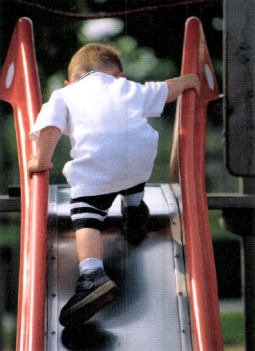

Bokinformasjon
E-boka er strukturert slik at overskriftene er plassert på en til seks nivåer. Kapitteloverskriftene ligger på nivå 1, som er det høyeste nivået, mens de øvrige overskriftene er plassert på lavere nivåer. Innholdsfortegnelsen i boka inneholder hyperkoblinger, slik at det er mulig å navigere til ønsket overskrift. Under hver overskrift i teksten er det en hyperkobling tilbake til innholdsfortegnelsen. Sidetallene i boka er angitt øverst på siden.
E-boka er i formatet HTML. Dette formatet kan åpnes og leses i nettlesere eller i tekstbehandlingsprogram. Støttede nettlesere er: IE, Mozilla Firefox, Google Chrome, Safari, Opera. For å kunne redigere i teksten må e-boka åpnes i en tekstbehandler (for eksempel MS Word, Open Office Writer eller Notepad++).
Innhold
- Forord
- Forfatteroversikt
- Innhold
- Del 1 Treningslærens grunnleggende begreper og prinsipper
-
Del 2 Grunnleggende plattform for prestasjonsutvikling
- Kapittel 4 Idé-og verdigrunnlag
- Kapittel 5 Fysisk vekst og utvikling
-
Kapittel 6 Motorisk utvikling
- Motorisk utvikling
- Motorikk
- Motoriske egenskaper og motoriske ferdigheter
- Motorisk læring
- Motorisk utvikling og læring
- Sansing og persepsjon
- Motorisk utvikling og læring fra før fødselen til 2-årsalderen
- Motorisk utvikling og læring i alderen 2–6 år
- Motorisk utvikling og læring i barneskolealderen (6–12 år)
- Motorisk utvikling og læring i puberteten (ungdomsskolealderen, 12–16 år)
- Motorisk utvikling og læring i alderen 16–20 år
- Måling og testing av motoriske ferdigheter
- Referanser
- Kapittel 7 Psykisk og sosial utvikling
- Kapittel 8 Idrettsferdighet, talent, spesialisering og allsidighet
- Kapittel 9 Generell trening, spesifikk trening og basistrening
- Kapittel 10 Idrett for alle
- Del 3 Trenerrollen
- Del 4 Treningsprosessen
-
Del 5 Treningsformer og treningsmetoder
- Kapittel 16 Oppvarming – prestasjons- forberedende aktivitet (PFA)
-
Kapittel 17 Utholdenhet og utholdenhetstrening
- Begreper og definisjoner
- Fysiologi for utholdenhetsidretter
- Organsystemer med betydning for utholdenhet
- Viktige faktorer for utholdenhetsprestasjon
- Modeller for å forklare utholdenhetsprestasjon
- Tiltak, endring av funksjon, restitusjon og virkning av utholdenhetstrening
- Testing av utholdenhet
- Utholdenhetstrening
- I-soner
- Treningsmetoder for tradisjonell utholdenhetstrening
- Treningsmetoder for utholdende hurtighetstrening
- Referanser
- Kapittel 18 Muskelstyrke og styrketrening
- Kapittel 19 Spenst og spensttrening
- Kapittel 20 Hurtighet og hurtighetstrening
-
Kapittel 21 Bevegelighet og bevegelighetstrening
- Begreper og definisjoner
- Viktige faktorer for bevegelighet
- Bevegelighetstesting og referanseverdier for bevegelighet
- Undersøkelse av bevegelighet
- Når skal man bedrive og ikke bedrive bevegelighetstrening?
- Metoder for bevegelighetstrening
- Andre virkninger av bevegelighetstrening
- Krav og kapasitetsanalyse og planlegging av bevegelighetstrening
- Eksempel på et bevegelighetstreningsprogram
- Referanser
- Kapittel 22 Koordinasjon og koordinasjonstrening
- Kapittel 23 Teknikk og teknikktrening
- Kapittel 24 Mental trening
- Kapittel 25 Taktikk
-
Del 6 Andre viktige temaer i treningslære
- Kapittel 26 Kost, trening og prestasjon
- Kapittel 27 Idrettsskader
-
Kapittel 28 Trening og helse
- Fysisk aktivitet
- Aerob fitness og helse
- Aerob fitness i Skandinavia
- Fedmeepidemi og metabolsk syndrom
- Metabolsk fitness og helserelatert form
- Måling av metabolsk fitness
- Metabolsk fitness og trening
- Trening og «thrifty» gener
- Effekt av livsstilsendring – bedre kost og mer fysisk aktivitet
- Trening og fysisk aktivitet som forebygging og behandling
- Idrett, livsstil og helse
- Referanser
-
Kapittel 29 Kvinner og trening
- Relasjonen mellom trener og utøver
- Kvinners treningsfysiologi
- Bekkenbunnstrening
- Trening av magemusklene
- Menstruasjonssyklus og prestasjonsevne
- Graviditet og trening
- Den kvinnelige idrettstriaden
- Forebygging av lav energitilgjengelighet og spiseforstyrrelser innenfor idretten
- Organisasjonsansvar
- Referanser
- Kapittel 30 Trening for eldre
- Bildekrediteringsliste
Idrettens treningslære
© Gyldendal Norsk Forlag AS 2015
1. utgave 1992 (Universitetsforlaget)
2. utgave, 1. opplag 2015
Printed in Norway by: 07 Media – 07.no, 2015
ISBN 978-82-05-39194-9
Redaktør: Knut Lie / Bjørn Brandser
Bilderedaktør: Linda Aarø
Design: ord & form, Gudbrand Klæstad
Sats og layout: ord & form, Gudbrand Klæstad
Omslagsdesign: Marianne Cecilie Dahl
Omslagsfoto: iStock Photo
Medisinske illustrasjoner: Debbie Maizels, Philip Wilson
Øvrige illustrasjoner: David Keeping, Claes Holmberg
Se krediteringsliste bak i boka.
Det må ikke kopieres fra denne boka i strid med åndsverkloven eller avtaler om kopiering inngått med KOPINOR, interesseorgan for rettighetshavere til åndsverk. Kopiering i strid med lov eller avtale kan medføre erstatningsansvar og inndragning og kan straffes med bøter eller fengsel.
Alle henvendelser om forlagets utgivelser kan rettes til:
Gyldendal Undervisning
Postboks 6860 St. Olavs plass
0130 Oslo
E-post: undervisningiagyldendal.no
www.gyldendal.no/undervisning
Alle Gyldendals bøker er produsert i miljøsertifiserte trykkerier.
Se www.gyldendal.no/miljo
Forord
Tilbake til innholdsfortegnelse
Fagområdet treningslære er tverrfaglig og å betrakte som et syntesefag, i den forstand at problemstillingene eller temaene blir belyst med bakgrunn i ulike teoretiske basisfag som idrettsfysiologi, idrettspsykologi, biomekanikk og anatomi. Treningslæren kombinerer idrettens egen systematiske praksis med kunnskap fra idrettsvitenskapelige studier. En treningslære som fungerer godt, hviler på både praktisk erfaring og en bred analytisk tilnærming. Vitenskapelig dokumentasjon er en viktig del av dette. I denne boka har vi nettopp forsøkt å kombinere disse to forholdene og lagt vekt på å få med det nyeste innenfor fagområdet, men unngå enkelte tidstypiske trender. Denne boka omhandler først og fremst den generelle treningslæren, som i hovedsak behandler grunnleggende forhold ved trening som er felles for ulike idretter og målgrupper. I mange sammenhenger går vi likevel videre fra det generelle til det spesielle, og tar opp spesifikke forhold ved treningen i forskjellige idretter.
Idrettens treningslære er skrevet gjennom et samarbeid mellom treningslæremiljøer i Norge, Danmark og Sverige. Boka har 17 medforfattere, alle blant den fremste ekspertisen på sine fagfelt. Alle forfatterne er navngitt på sine respektive kapitler i en rekkefølge som i hovedsak svarer til deres bidrag. Forfatterarbeidet er blitt ledet av en skandinavisk redaksjonsgruppe som har bestått av Asbjørn Gjerset (red), Johnny Nilsson, Jørn Wulff Helge og Eystein Enoksen. I tillegg til forfatterne har andre bidratt på ulike måter. Vi takker Markus Vagle for utarbeiding av treningsprogram for fotball og styrkeløft, Sigmund Apold-Aasen for gode innspill til noen kapitler og Arne Vilberg og Alexander R. Wisnes for tidligere utarbeidet stoff som har vært med i grunnlaget for enkelte kapitler. I og med at det er mange ulike forfattere og ulike kilder, kan terminologien variere noe. Milliliter per kilo kroppsvekt per minutt kan f.eks. være angitt som ml/kg/min eller ml · kg −1 · min−1.
Idrettens treningslære er skrevet for personer som allerede har noe grunnleggende kunnskap om trening. Den er skrevet spesielt som lærebok på universitets- og høgskolenivå og for utdanningen av trenere i treningsbransjen og i idretten generelt. Sentrale yrkesgrupper som vil ha nytte av denne boka, er trenere, instruktører, lærere innenfor kroppsøving og idrett, fysioterapeuter, leger og annet helsepersonell som jobber med opptrening eller forebyggende helsearbeid.
Høsten 2015
Asbjørn Gjerset, Johnny Nilsson, Jørn Wulff Helge, Eystein Enoksen
Forfatteroversikt
Tilbake til innholdsfortegnelse
Asbjørn Gjerset
Førsteamanuensis ved Norges idrettshøgskole
Johnny Nilsson
Professor ved Högskolan Dalarna i Falun og Gymnastik- och idrottshogskolan i Stockholm
Jørn Wulff Helge
Professor ved Center for Sund aldring, Biomedicinsk Institut ved Det Sundhedsvidenskabelige Fakultet, Københavns Universitet
Eystein Enoksen
Professor ved Norges idrettshøgskole
Truls Raastad
Professor ved Seksjon for fysisk prestasjonsevne ved Norges idrettshøgskole
Helge Dyre Meen
Tidligere høgskolelege ved Norges idrettshøgskole
Yngvar Ommundsen
Professor ved Seksjon for coaching og psykologi ved Norges idrettshøgskole
Espen Tønnessen
Fagsjef for treningsavdelingen ved Olympiatoppen
Christian Frøyd
Førsteamanuensis ved Avdeling for lærarutdanning og idrett ved Høgskulen i Sogn og Fjordane
Egil Johansen
Universitetslektor ved Seksjon for fysisk prestasjonsevne ved Norges idrettshøgskole
Ola Eriksrud
Universitetslektor ved Seksjon for fysisk prestasjonsevne ved Norges idrettshøgskole
Rune Giske
Førsteamanuensis ved Det humanistiske fakultet ved Universitetet i Stavanger
Anne Marte Pensgaard
Professor ved Seksjon for coaching og psykologi ved Norges idrettshøgskole, fagansvarlig for idrettspsykologi ved Olympiatoppen
Henning Langberg
Professor ved Center for Fysisk Aktivitet og Sundhed (CFAS), Afdeling for Social Medicin, Institut for Folkesundhedsvidenskab ved Det Sundhedsvidenskabelige Fakultet, Københavns Universitet
Michael Kjær
Klinisk professor ved Institut for Idrætsmedicin, Bispebjerg Hospital & Københavns Universitet
Eva Wulff Helge
Lektor ved Institut for Idræt og Ernæring ved det Natur- og Biovidenskabelige Fakultet, Københavns Universitet
Nina Beyer
Lektor ved Forskningsenhed for Muskuloskeletal Rehabilitering, Bispebjerg Hospital, og Institut for Klinisk Medicin, Københavns Universitet
Innhold
Tilbake til innholdsfortegnelse
-
Del 1 Treningslærens grunnleggende begreper og prinsipper
11
-
Kapittel 1 Treningslære
12
-
Hva er treningslære?
13
- Helheten bestemmer prestasjonen 14
- Generell og spesifikk treningslære 14
- Treningslære som fagområde 14
-
Hva er treningslære?
13
-
Kapittel 2 Prestasjonsevne
16
-
Idrettslig prestasjonsevne
16
- Handling 18
- Helheten og delene 18
-
Prestasjonsbestemmende faktorer
19
- Egenskaper og ferdigheter 19
- Ytre prestasjonsbestemmende faktorer 24
-
Idrettslig prestasjonsevne
16
-
Kapittel 3 Grunnleggende treningsprinsipper
27
-
Prinsippet om belastning og tilpasning
27
- Belastning 29
- Treningsmengde 34
- Treningsvarighet 34
- Treningshyppighet 35
- Treningsintensitet 35
-
Restitusjon
38
- Restitusjonstid 39
- Restitusjonsmetoder 43
- Tiltak under treningen eller konkurransen 44
- Tiltak etter treningen eller konkurransen 45
-
Overkompensasjon og superkompensasjon
47
- Prinsippet om spesifisitet 50
- Prinsippet om progresjon 52
- Prinsippet om variasjon 53
- Prinsippet om individuell og helhetlig stimulering 54
- Prinsippet om styring og kontroll 55
-
Prinsippet om belastning og tilpasning
27
-
Kapittel 1 Treningslære
12
-
Del 2 Grunnleggende plattform for prestasjonsutvikling
57
-
Kapittel 4 Idé- og verdigrunnlag
58
- Barns spontane aktivitet og organisert aktivitet 58
-
Idrettens barnerettigheter og bestemmelser om barneidrett og ungdomsidrett
59
- Veiledning 59
- Verdiforankring 60
-
Kapittel 5 Fysisk vekst og utvikling
61
-
Morfologisk vekst og utvikling
61
- Cellevekst og organvekst 62
- Høydevekst 62
- Vekst av ulike organer 64
- Vekst før fødselen 66
- Fysiologiske forandringer under svangerskapet 67
- Skjelettet 68
- Fettvevet 70
- Kjønnsforskjeller før puberteten 70
- Puberteten 70
- Hormoner og vekst 71
- Hjernen 74
-
Utvikling av fysisk yteevne
76
- Aerob kapasitet 77
- Anaerob kapasitet 81
- Muskelmasse og muskelstyrke 82
- Sluttord 84
-
Morfologisk vekst og utvikling
61
-
Kapittel 6 Motorisk utvikling
86
- Motorisk utvikling 86
- Motorikk 87
- Motoriske egenskaper og motoriske ferdigheter 88
-
Motorisk læring
89
- Vekst og modning 89
- Læring 90
- Motorisk utvikling og læring 92
- Sansing og persepsjon 93
- Motorisk utvikling og læring fra før fødselen til 2-årsalderen 94
- Motorisk utvikling og læring i alderen 2–6 år 95
- Motorisk utvikling og læring i barneskolealderen (6–12 år) 96
- Motorisk utvikling og læring i puberteten (ungdomsskolealderen, 12–16 år) 97
- Motorisk utvikling og læring i alderen 16–20 år 97
-
Måling og testing av motoriske ferdigheter
97
- Motorisk kontroll 97
- Motorisk utvikling 97
- Motorikk og mestring 98
-
Kapittel 7 Psykisk og sosial utvikling
100
-
Psykisk utvikling
100
- Hva er psykisk utvikling? 100
- Hvordan foregår psykisk utvikling? 101
- Utvikling av selvet og selvoppfatningen 101
- Emosjonell utvikling 103
- Sosial utvikling 104 Side 6
-
Psykisk utvikling
100
-
Kapittel 8 Idrettsferdighet, talent, spesialisering og allsidighet
106
-
Hva er idrettsferdighet, og er talent for idrett medfødt?
106
- Egenskaper og ferdigheter 107
- Talent 108
- Det snevre/statiske talentbegrepet og selvoppfyllende profetier 111
- Alderseffekt 113
- Talenteliminering og frafall som resultat 114
-
Spesialisering og allsidighet i idrettsopplæringen blant barn og unge
114
- Må barn og unge spesialisere seg tidlig, og må de trene spesialisert for å bli gode? 114
- Utviklingsorientert vei mot læring og prestasjonsutvikling 115
- Noen andre undersøkelser 121
- En utviklingstilpasset modell for barne- og ungdomstrening 123
-
Hva er idrettsferdighet, og er talent for idrett medfødt?
106
-
Kapittel 9 Generell trening, spesifikk trening og basistrening
128
- Generell og spesifikk trening 128
-
Grunntrening blir til basistrening
129
- Basistrening 129
- Noen utgangspunkter for basistrening 132
-
Kapittel 10 Idrett for alle
140
- Åpen og inkluderende idrett 140
-
Trening for spesifikke grupper
140
- Eldre 141
- Funksjonshemmede 141
- Etniske minoriteter 143
-
Kapittel 4 Idé- og verdigrunnlag
58
-
Del 3 Trenerrollen
145
-
Kapittel 11 Å være trener
146
- Definisjoner og begreper 146
-
Relasjonsbegrepet
147
- Relasjonen mellom trener og utøver 148
- Relasjonen mellom foreldre og trener 149
-
Kjennetegn ved trenerrollen
149
- Treneren som forbilde 149
- Treneren som veileder 150
- Treneren som motivator 152
- Treneren som sosial miljøskaper 154
- Treneren som kompetanseperson 155
- Treningsledelse 156
- Coaching som ledelsesform 157
-
Kapittel 11 Å være trener
146
-
Del 4 Treningsprosessen
161
-
Kapittel 12 Helhetlig og dynamisk treningsprosess
162
- Begreper og definisjoner 162
-
Treningsprosessen
163
- Hvordan treningsprosessen er bygd opp 163
- Et helhetlig system 163
- Grunnleggende treningsfilosofi 164
- Grunnleggende treningsprinsipper 165
- Utøvergrupper 165
- Retningslinjer for samspill og samhandling 166
-
Kapittel 13 Treningsplanlegging
168
- Planen bør bygges steg for steg 168
-
Mål, arbeidskrav og kapasitet
168
- Målsetting 169
- Hva er en arbeidskravsanalyse? 171
- Utarbeidelse av en arbeidskravsanalyse 172
- Kapasitetsanalyse 177
- Gapanalyse 179
-
Andre krav
180
- Krav til livsstil 181
- Krav til kroppslige forutsetninger 182
- Krav til rammebetingelser og støtteapparat 182
-
Periodisering
184
- Ulike treningsperioder 185
- Innhold 187
- Fordeling av treningsbelastningen (belastningsstruktur) 187
- Periodiseringsmodeller 189
- Utarbeiding av langsiktige og kortsiktige treningsplaner 193
-
Flerårsplan
194
- Barneperioden 194
- Ungdomsperioden 196
- Seniorperioden 199
-
Årsplan
200
- Konkurranseplanlegging 204
- Belastningsstruktur gjennom treningsåret 206
- Mosjonsplan 208
-
Periodeplaner
208
- Forberedelsesperioden 209
- Konkurranseforberedende periode 212
- Konkurranseperioden 215
- Aktiv avkoplingsperiode 216
-
Ukeplaner
217
- Belastningsstrukturen gjennom uka 217
- Andre forhold 219
-
Øktplaner
219
- Oppvarming 221
- Hoveddel 221
- Avslutning og nedtrapping 222
- Eksempel på en øktplan 222
-
Formtopping
222
- Første fase 224
- Andre fase 225
- Andre forhold man må ta hensyn til ved formtopping 229
- Modeller for formtopping 232
- Formbevaring 237
-
Kapittel 14 Gjennomføring av trening og treningskvalitet
242
-
Ansvar for egen trening
242
- Helhetlig trening 243
- Kvalitet i treningen 244
- Egenvurdering av treningen 245
-
Ytre faktorer
246
- Ekspertoppfølging 246
- Individuelle utviklingsmål 247
- Gode treningsfasiliteter 247
- Hvordan skape forutsetninger for maksimal treningskvalitet? 248 Side 7
-
Ansvar for egen trening
242
-
Kapittel 15 Dokumentasjon, testing og evaluering av trening
249
- Treningsdokumentasjon 249
- Analyse og evaluering av treningen 250
-
Testing
251
- Hva er en test? 251
- Hensikten med testing 251
- Testbatteri 252
- Krav tit en god test 252
- Forberedelse til testing 253
- Gjennomføring av tester 253
- Testprotokoll og resultatskjema 254
- Etterarbeid, rapportering og implementering i treningsplanen 254
-
Når noe ikke stemmer
254
- Treneren 254
- Målsettingen 255
- Utøveren 255
- «Systemet» laget eller gruppen fungerer etter 257
- Forholdet utøverne imellom i gruppen eller laget 257
- Oppsummering og ny planlegging 258
-
Kapittel 12 Helhetlig og dynamisk treningsprosess
162
-
Del 5 Treningsformer og treningsmetoder
261
-
Kapittel 16 Oppvarming – prestasjonsforberedende aktivitet (PFA)
262
-
Oppvarming og PFA
262
- Aktiv og passiv oppvarming 262
- Generell og spesifikk oppvarming 263
- Effekter av oppvarming og tøyning i prestasjonsforberedende aktivitet (PFA) 264
- Faktorer i prestasjonsforberedende aktivitet som ikke er temperaturbasert 266
- Prestasjonsforberedende aktivitet ut fra konkurransens varighet og intensitet 266
- Oppvarmingsprogrammer 267
-
Oppvarming og PFA
262
-
Kapittel 17 Utholdenhet og utholdenhetstrening
270
-
Begreper og definisjoner
270
- Utholdenhetsidretter – inndeling 271
- Krav til idretter med ulik varighet 272
-
Fysiologi for utholdenhetsidretter
273
- Energiomsetning 273
- Energisystemer 275
-
Organsystemer med betydning for utholdenhet
281
- Respirasjonssystemet 282
- Sirkulasjonssystemet 283
- Skjelettmuskulatur 289
- Muskelfibertyper 291
- Nervesystemet 292
-
Viktige faktorer for utholdenhetsprestasjon
293
- Aerob kapasitet 294
- Maksimalt oksygenopptak – VO2maks 294
- Ulnyttingsgrad 295
- Arbeidsøkonomi 297
- Melkesyre, laktat og Laktatterskel 299
- Anaerob kapasitet 302
- Faktorer som blir påvirket av inntak og omgivelser 302
- Funksjonen i det nevromuskulære systemet – muskulær trøtthet 305
-
Modeller for å forklare utholdenhetsprestasjon
307
- Energimodell 309
- Sentral reguleringsmodell 311
- Forskjeller mellom de to modellene 314
-
Tiltak, endring av funksjon, restitusjon og virkning av utholdenhetstrening
315
- Prestasjonsforbedrende tiltak før og under trening og konkurranse 315
- Endring av funksjon underveis i en aktivitet 316
- Restitusjon etter trening og konkurranse 318
- Virkning av utholdenhetstrening over flere uker 318
-
Testing av utholdenhet
322
- Tester av treningstilstand og restitusjon 323
- Tester til utmattelse med økende intensitet 325
- Tester til utmattelse med forutbestemt jevn intensitet 327
- Konkurranserelevante tester 327
- Submaksimale tester 328
- Test for å beregne anaerob kapasitet 328
-
Utholdenhetstrening
329
- Treningsbelastning 329
- Utforming av treningsøkter – ut fra idrettens arbeidskrav eller energiomsetning 331
- Metoder for å styre intensiteten under treningsøkter – intensitetsstyring 332
-
I-soner
338
- Beskrivelse av de ulike I-sonene 339
- Individualisering av intensitetsskalaen 343
- Intensitetsberegning ut fra alderspåvirket fall i HFmaks 343
- Intensitetssoner for barn og unge 343
- Intensitetssoner for mosjonister 345
- Fellestrening 345
- 4×4, langkjøring eller konkurranseintensitet 346
- Høydetrening 346
-
Treningsmetoder for tradisjonell utholdenhetstrening
346
- Kontinuerlig arbeid ved tradisjonell utholdenhetstrening 349
- Intervallarbeid ved tradisjonell utholdenhetstrening 350
-
Treningsmetoder for utholdende hurtighetstrening
357
- Intervallarbeid ved utholdende hurtighetstrening 358
- Kontinuerlig arbeid ved utholdende hurtighetstrening 361 Side 8
-
Begreper og definisjoner
270
-
Kapittel 18 Muskelstyrke og styrketrening
369
-
Begreper og definisjoner
369
- Muskelstyrke 369
- Muskulær utholdenhet 371
- Ulike former for muskelstyrke 371
- Styrketrening 372
- Muskelfysiologisk, anatomisk og nevrofysiologisk bakgrunn 375
-
Viktige faktorer for muskelstyrke
387
- Viktige faktorer i muskel- og skjelettsystemet som bestemmer styrke 388
- Viktige faktorer i nervesystemet som bestemmer muskelstyrke 391
-
Virkningen av styrketrening
394
- Endring i styrke 394
- Endring i muskelmasse 395
- Endring i muskellengde ved styrketrening 397
- Endringer i fibertypesammensetningved styrketrening 397
- Endringer i nervesystemets styring av muskelaktivitet 397
- Påvirkning på sener og knokler 400
-
Testing av muskelstyrke
401
- Muskelstyrke i sammenheng med kroppsvekt, relativ muskelstyrke 403
- Testing av muskulær utholdenhet 403
- Oppvarming til tester 404
-
Styrketrening
404
- Treningsprinsipper innenfor styrketrening 404
- Treningsmetoder 406
-
Styrketreningsøvelser
415
- Dype knebøy 415
- Benkpress 416
- Frivending 416
- Tåhev 417
- Lwg curl (knebøying) 418
- Nedtrekk 418
- Hang-ups 419
- Sit-ups med feste 420
- Rygg-ups med feste 420
- Styrketrening for barn og ungdom 421
-
Begreper og definisjoner
369
-
Kapittel 19 Spenst og spensttrening
425
- Begreper og definisjoner 425
-
Viktige faktorer for spenst
425
- Bevegelsesmønster og kraftutvikling 425
- Biomekaniske forhold 426
- Kontraksjonshastighet og kraftutvikling 427
- Muskelfibrer og kraftutvikling 427
-
Virkning av spensttrening
428
- Muskelstyrke og kraftutvikling 428
- Teknikk og kraftutvikling 429
- Spenst og utholdenhet – arbeidsøkonomi 429
- Spenst og hurtighet 430
- Spenst og restitusjon 430
-
Testing av spenst
430
- Vertikale spensthopptester 431
- Horisontale spensthopptester 435
- Trening av spenst 438
- Treningsmetoder 440
-
Kapittel 20 Hurtighet og hurtighetstrening
443
- Begreper og definisjoner 443
-
Hurtighetsegenskaper
443
- Hastighetsutviklingen i sprintløp (100–200 m) 443
- Reaksjonshurtighet – reaksjonstid, bevegelsestid og responstid 444
- Akselerasjonshurtighet 444
- Maksimal løpshurtighet 445
- Utholdende løpshurtighet 445
-
Viktige faktorer for hurtighetsprestasjonen
447
- Reaksjonstid 447
- Steglengde og stegfrekvens 447
- Kraftutvikling og kontakttid 448
- Muskelarbeidet i sprintløp 449
-
Virkning av hurtighetstrening
449
- Hurtighet og maksimal styrke 449
- Hurtighetstrening kombinert med maksimal styrketrening 450
- Hurtighet og effektrelatert styrketrening 451
- Hurtighet og spensttrening 451
- Hurtighet og ekspertiseveiledning 451
- Testing av hurtighet 451
-
Beskrivelse av hurtighetstester
453
- Test av både akselerasjonshurtighet og maksimal hurtighet 453
- Tester med retnings- og stillingsforandringer 454
-
Hurtighetstrening
455
- Treningsmetoder 456
- Reaksjonshurtighet 456
- Akselerasjonshurtighet 457
- Maksimal løpshurtighet 457
- Utholdende hurtighet 458
-
Kapittel 21 Bevegelighet og bevegelighetstrening
461
- Begreper og definisjoner 461
-
Viktige faktorer for bevegelighet
463
- Ledd og leddutslag 463
- De mekaniske egenskapene til vev 463
- Bindevevet – struktur og funksjon 466
- Senene 467
- Leddbåndene 467
- Leddkapselen 468
- Huden 468
- Muskelvev 468
- Nevrologiske faktorer for bevegelighet 468
- Andre faktorer som påvirker bevegelighet 470
- Bevegelighetstesting og referanseverdier for bevegelighet 471
-
Undersøkelse av bevegelighet
475
- Testing 475lic>
- Kvalitativ og kvantitativ analyse 475
- Når skal man bedrive og ikke bedrive bevegelighetstrening? 476 Side 9
-
Metoder for bevegelighetstrening
476
- Oppvarming 476
- Aktiv og passiv bevegelighetstrening 477
- Statisk bevegelighetstrening 477
- Dynamisk bevegelighetstrening 479
- PNF-metoder 481
-
Andre virkningerav bevegelighetstrening
482
- Stølhet/DOMS 482
- Forebygging av skader 482
-
Krav og kapasitetsanalyse og planlegging av bevegelighetstrening
483
- Tilpasning av et treningsprogram 483
- Stegvis utvikling av et bevegelighetstreningsprogram 483
- Generelle anbefalinger ved bevegelighetstrening 483
- Betraktninger rundt et bevegelighetstreningsprogram 483
-
Eksempel på et bevegelighetstreningsprogram
484
- Frontspark (front kick) og rundspark (round kick) 484
- Analyse av frontspark og rundspark 485
- Stegvis utvikling av et bevegelighetstreningsprogram: rundspark og frontspark i karate 485
- Treningsplan 486
-
Kapittel 22 Koordinasjon og koordinasjonstrening
491
- Koordinasjon 491
-
Funksjonell nevroanatomisk bakgrunn
492
- Reseptorer 492
- Innoverledende sensoriske nervebanesystemer 494
- Informasjonsbehandlingssentre i det sentrale nervesystemet 495
- Det uloverledende efferente nervebanesystemet 496
-
Trening av koordinasjon
497
- Balanseevnen 497
- Rytmefølelse 499
- Reaksjonsevne 499
- Romorientering 501
- Øye-hånd og øye-fotkoordinasjon 502
- Tilpasset kraftinnsats 502
- Valg av øvelser for å øke den koordinative treningskvaliteten 503
- Faser med optimal mulighet for påvirkning 506
-
Kapittel 23 Teknikk og teknikktrening
508
- Hva er teknikk? 508
- Kunnskapskrav til treneren 509
-
Ferdigheter
509
- Gruppering av ferdigheter 509
- Læring av ferdigheter i idrett 510
-
Praktiske overveielser
511
- Trenerens observasjon av teknikk 512
- Når er observasjon viktig i læring av teknikk? 513
- Instruksjon 513
- Modellæring 514
- Hel eller delt øving 515
-
Feedback
517
- Hvor viktig er forsterket feedback? 517
- Timing av forsterket feedback 518
- Feedback i grupper 518
- Video som hjelpemiddel i læringsprosessen 519
- Å forandre en vellært teknikk 520
- Trenerens rolle i forbindelse med teknikklæring 520
- Om drilløvelser og overføring av læring 521
-
Kapittel 24 Mental trening
523
-
Prestasjonspyramiden
523
- Psykologisk «makeup» 523
- Takle ulike utfordringer 525
- Prestasjonsfremmende teknikker 525
-
Avanserte mentale ferdigheter
527
- Konsentrasjon 527
- Stressmestring 527
- Selvtillit 528
- Konkurranseforberedelser 529
-
Mental trening i praktisk trening
529
- Simuleringstrening 529
- Trening i konsentrasjon og stressmestring 530
-
Prestasjonspyramiden
523
-
Kapittel 25 Taktikk
531
- Taktikk og strategi 531
- Individuell og kollektiv taktikk 532
-
Hva er et taktisk valg?
532
- Tid 533
- Risiko 533
- Fysiske anstrengelser og individuelle taktiske valg 533
-
Sentrale individuelle forutsetninger for taktiske valg
534
- Teknisk repertoar og individuelle taktiske valg 534
- Idrettsspesifikke kunnskaper 534
-
Kunnskapstyper og utviklingen fra nybegynner til ekspert
535
- Kunnskap 535
- Utvikling fra nybegynner til ekspert 536
-
Situasjonsbetingelsene
537
- Forholdet mellom spillesituasjonen og spillerens oppfatning av den 537
- Å foregripe situasjonsutviklingen 538
- Visuell fiksering – en forutsetning for å oppfatte spillesituasjonen 538
- En kollektiv plan for organiseringen av grupper 542
- Kampforberedelsen mot en spesifikk motstander 542
- Informasjon underveis i kampen 542
- Å lære åpne ferdigheter 543 Side 10
- Implisitte eller eksplisitte læringsstrategier i ballspill 543
- Å lære gjennom å spille 544
-
Praktiske retningslinjer for taktisk læring
545
- Økt antall repetisjoner der de kritiske regulatoriske egenskapene kommer fram 545
- Varierte situasjonsbetingelser 546
- Oppmerksomhetsstyrende utsagn 546
- Forsterket tilbakemelding 547
- Andre tiltak 547
- Avsluttende kommentarer 547
-
Kapittel 16 Oppvarming – prestasjonsforberedende aktivitet (PFA)
262
-
Del 6 Andre viktige temaer i treningslære
551
-
Kapittel 26 Kost, trening og prestasjon
552
- Anbefalinger basert på erfaring og forskning 552
-
Kostens komponenter og sammensetning
553
- Karbohydrater 553
- Protein 555
- Fett 556
- Alkohol 556
- Vitaminer og mineraler 556
-
Matinntak ved idrett – når og hva?
559
- Måltidsrytme 560
- Matinntak de siste timene før trening og konkurranse 560
- Glykogenoppladning i forkant av langvarige konkurranser 560
- Matinntak under trening og konkurranse 560
- Matinntak etter trening og konkurranse 561
-
Væskeinntak
561
- Normal væskebalanse 561
- Væskebalanse ved trening 561
-
Kosttilskudd
562
- Kreatin 562
- Antioksidanter 563
- Koffein 563
- Bikarbonat 563
- Andre stoffer 563
-
Kapittel 27 Idrettsskader
566
-
Idrettsskader – en bivirkning
566
- Det er vanskelig å beregne antallet idrettsskader 566
- Vevspåvirkninger ved fysisk aktivitet 567
-
Mekanismer bak utvikling av idrettsskader
569
- Akutte skader 569
- Overbelastningsskader 569
- Kroppens reaksjon på en skade 571
- Behandling aven akutt skade 572
- Behandling av overbelastningsskader 574
- Forebygging (profylakse) 575
-
De mest alminnelige idrettsskadene og behandlingen av dem
575
- Ankelskader 575
- Skader under foten 576
- Skader på akillessenen 577
- Leggsmerter 580
- Kneskader 581
- Lyskeskader 583
- Skulderskader 584
- Albuesmerter 584
- Fingerskader 585
-
Idrettsskader – en bivirkning
566
-
Kapittel 28 Trening og helse
586
- Fysisk aktivitet 586
- Aerob fitness og helse 588
- Aerob fitness i Skandinavia 590
- Fedmeepidemi og metabolsk syndrom 591
- Metabolsk fitness og helserelatert form 592
- Måling av metabolsk fitness 593
- Metabolsk fitness og trening 594
- Trening og «thrifty» gener 595
- Effekt av livsstilsendring – bedre kost og mer fysisk aktivitet 596
- Trening og fysisk aktivitet som forebygging og behandling 598
- Idrett, livsstil og helse 598
-
Kapittel 29 Kvinner og trening
602
- Relasjonen mellom trener og utøver 602
- Kvinners treningsfysiologi 603
- Bekkenbunnstrening 604
- Trening av magemusklene 605
- Menstruasjonssyklus og prestasjonsevne 606
-
Graviditet og trening
606
- Trening under graviditeten 606
- Trening etter graviditeten 607
-
Den kvinnelige idrettstriaden
607
- Lav energitilgjengelighet og spiseforstyrrelser 609
- Hormonforstyrrelser 613
- Lav knokkeltetthet 616
-
Forebygging av lav energitilgjengelighet og spiseforstyrrelser innenfor idretten
620
- Forebygging fra trenerens side 620
- Å oppdage spiseforstyrrelser og risikoatferd 620
- Organisasjonsansvar 621
-
Kapittel 30 Trening for eldre
623
-
Biologiske aldersforandringer
623
- Knoklene 623
- Kretsløp 624
- Muskulatur 625
- Bevegeligheten i ledd 626
- Balanse 627
- Funksjonsevne 627
-
Treningstyper
628
- Utholdenhetstrening for eldre 628
- Styrketrening for eldre 629
- Trening av balanse 631
- Trening av bevegelighet 631
- Oppvarming og nedtrapping 631
-
Skader
631
- Å overvåke funksjonell fitness 632
- Motivasjon og barrierer for trening 633
- Sammendrag 635
-
Biologiske aldersforandringer
623
-
Kapittel 26 Kost, trening og prestasjon
552
Del 1 Treningslærens grunnleggende begreper og prinsipper
Tilbake til innholdsfortegnelse
I denne første delen av boka beskriver vi noen sentrale begreper og definisjoner innenfor fagområdet treningslære, og vi ser på forholdet mellom treningslæren og basisfagene fysiologi, anatomi, psykologi, sosiologi, pedagogikk og biomekanikk. Videre behandler vi idrettslig prestasjonsevne og sentrale prestasjonsbestemmende faktorer. Vi kommer til å betrakte idrett med et utvidet perspektiv, og vi vil vise hvordan treningslærens begreper og prinsipper fungerer både for konkurranseutøvere og når unge, mosjonister og eldre trener for en god livskvalitet. Del 1 avslutter med å behandle grunnleggende prinsipper for trening.
Kapittel 1 Treningslære
Tilbake til innholdsfortegnelse
Asbjørn Gjerset
Johnny Nilsson
Truls Raastad
«Prøving og feiling» er en urgammel metode som nok har vært dominerende i idrettstrening, og som fortsatt er det i en del miljøer. Og metoden kan stadig ha sin berettigelse, for eksempel når det gjelder å tilpasse utførings- og treningsmåter til hver enkelt utøver.
Etter hvert har trening og treningsplanlegging blitt mer og mer systematisk. Virkningen av trening er blitt bedre kjent som følge av så vel praktisk erfaring som vitenskapelige studier. Innhenting av opplysninger, utforming av hypoteser og teorier og gjennomføring av analyser, vurderinger og kontroll er forhold som i dag kjennetegner et godt treningsarbeid, der trener, utøver og støtteapparat samarbeider.
Parallelt med denne utviklingen er idretten blitt mer og mer krevende. Seier og nederlag avgjøres med stadig mindre marginer. Konsekvensene av en utøvers plasseringer er blitt mer omfattende og avgjørende. Mange interessegrupper er opptatt av hvordan det går i konkurransene.
Idretten har også fått tilført flere ressurser, og det er utviklet instrumenter og metoder som gjør det mulig å skaffe seg stadig mer viten om hvordan den menneskelige organismen fungerer under belastning.
Toppidrett er et av de områdene der vi har mulighet til å utforske grensene for den menneskelige yteevnen. Trangen til å komme videre driver forskere, lærere, studenter, trenere og idrettsutøvere på elite- eller mosjonsnivå til å skaffe seg mer viten på dette området.
Både de metodene som utvikles, og de treningsvirkningene som blir registrert, kan ha betydning også for andre fagområder enn idrett. Innenfor fagfeltene fysiologi, kirurgi, fysioterapi, kinesiologi, forebyggende medisin, rehabilitering, klinisk psykiatri og lederutvikling har erfaringer og metoder fra toppidrett blitt anvendt med hell.
Forståelsen av hvordan trening kan påvirke et menneskes egenskaper, kan derfor ha betydning i en rekke sammenhenger, men er naturligvis i første rekke av interesse for idrettsutøvere, trenere og ledere. Slik forståelse gir grunnlag for et bevisst og kunnskapsbasert treningsarbeid.
Med begrepet trening mener vi i denne boka idrettstrening.
Hva er treningslære?
Tilbake til innholdsfortegnelse
Treningslæren skal gi anvisning på hvordan vi kan påvirke og utvikle en idrettsutøvers egenskaper og ferdigheter i gunstig retning. I dette ligger at treningslæren skal gi
- • praktisk-pedagogiske retningslinjer for trening og konkurranser
- • beskrivelse av hvordan det skal gjøres
- • begrunnelser for hvorfor trening og konkurranseforberedelser bør foregå på bestemte måter
- • en redegjørelse for de virkningene treningen kan ha på utøveren
Treningslæren behandler trening i ulike sammenhenger. Nedenfor nevner vi tre områder som er sentrale:
-
1 Utvikling av egenskaper og ferdigheter som danner grunnlaget for den idrettslige prestasjonsevnen
Først og fremst gjelder dette utvikling av trenbare egenskaper og ferdigheter, for eksempel evnen til å lære og å styre bevegelser, reaksjonsevne, romorientering, balanse, rytme, bevegelighet, styrke, hurtighet, utholdenhet, vilje, mot, ærlighet og samarbeid. Påvirkningen av disse egenskapene og ferdighetene bør skje i takt med veksten og utviklingen hos hver enkelt.
-
2 Planlegging, styring og organisering av trening
Disse momentene er av grunnleggende betydning for systematisk trening. Treningen må ta utgangspunkt i de forutsetningene som er til stede. Det krever kontrolltiltak som gir utøveren og treneren tilbakemelding om hvordan treningen virker. Treningsplaner må bli utarbeidet, trening gjennomført, dokumentert og evaluert, og planene justert ut fra dette.
-
3 Trening sett i sosial og kulturell sammenheng
Forhold i samfunnet generelt har stor betydning for idrettens muligheter og begrensninger. Det gjelder både for bredde- og toppidretten. Tilrettelegging av forholdene for idrett, talentsøking og talentutvikling, synet på toppidrett og bredde-idrett, muligheten for forskning og utviklingsarbeid er noen viktige sider av dette. Slike forhold har betydning for treningsarbeidet og er følgelig av interesse for treningslæren.
Helheten bestemmer prestasjonen
Vi vil understreke at trening er en mangesidig prosess som bør inngå i en helhetlig oppdragelses- og utdanningsprosess. Utøveren er alltid i et miljø som påvirker hele mennesket, og prestasjonsevnen er uttrykk for både fysiske, koordinative, psykiske og sosiale egenskaper. Helheten bestemmer prestasjonen. Dette er en grunnleggende oppfatning som vil prege vår behandling av emnet trening og treningspåvirkning i denne boka. Vi har, og må ha, helheten i tankene, selv om det ikke alltid blir sagt direkte.
Generell og spesifikk treningslære
Selve aktiviteten, med sine bevegelsesoppgaver, intensitet, varighet, krav til forskjellige egenskaper med mer, er sentral når vi driver idrett. Og det er først og fremst aktiviteter vi holder på med når vi trener. Vi spiller fotball, sykler, svømmer, går på ski, løper, driver i treningsapparat eller løfter vekter, for å nevne noen få av et stort antall mulige aktiviteter.
Idrettene, med sine til dels store forskjeller i reglement, aktivitetsform, bevegelsesoppgaver, varighet, intensitet med mer, gjør treningen i de forskjellige idrettene på mange måter ulik. Samtidig er det en rekke fellestrekk som gjelder for alle idrettene, eller for store grupper av idretter og mosjonsaktiviteter. Grunnleggende prinsipper for trening, generelle råd for styrketrening, utholdenhetstrening, bevegelighetstrening m.m, metodebeskrivelser, retningslinjer for treningsplanlegging, nivåer for vekst og utvikling, anbefalinger for trening for barn og unge, kostholdsveiledning og skadeforebygging, er eksempler på kunnskapsområder med stor grad av likhet fra idrett til idrett og aktivitet til aktivitet. Slike likheter og forskjeller gjør at vi snakker om generell treningslære og spesifikk treningslære.
Denne boka omhandler først og fremst den generelle treningslæren, som i hovedsak behandler grunnleggende forhold ved trening som er felles for ulike idretter og målgrupper. I mange sammenhenger går vi likevel videre fra det generelle til det spesielle, og tar opp spesifikke forhold ved treningen i forskjellige idretter. Det er som oftest gjort gjennom ulike eksempler. En fullstendig spesifikk treningslære kan med fordel i tillegg utarbeides for hver enkelt særidrett. Men de grunnleggende prinsippene er alltid de samme.
Treningslære som fagområde
Treningslæren er tverrfaglig, også kalt et integreringsfag. Den kombinerer idrettens egen systematiske praksis med kunnskap fra idrettsvitenskapelige studier. En treningslære som fungerer godt, hviler på både praktisk erfaring og en bred analytisk tilnærming. Vitenskapelig dokumentasjon er en viktig del av dette. Fagstoff fra basisfagene anatomi, fysiologi, psykologi, sosiologi, pedagogikk og biomekanikk danner en trygg og meget viktig basis for treningslæren (se figur 01.02). Vi kan si at kunnskapen i treningslære ofte er en syntese av kunnskap fra flere fagområder. Kunnskapen er forankret i viten som både er erfart i praktisk virksomhet, og som kommer fra aktuelle vitenskapsdisipliner, ovenfor kalt for basisfag. God treningslære krever integrering av praksis og teori.
Viktig grunnlagskunnskap for utviklingen av en skandinavisk treningslære finner vi først og fremst i tysk litteratur, der ordet «Trainingslehre» er godt etablert. Det nærmeste begrepet innenfor engelskspråklig litteratur er sannsynligvis betegnelsen «Training Theory».
Treningslærens systematiske praksis og vitenskapelige forankring, samt fokus på prestasjonsutvikling, gjør at dette fagområdet ofte oppfattes som bare å angå eliteidretten. I utgangspunktet er det slik at treningslærens begreper og prinsipper også er anvendelige på målgrupper som ikke har konkurranser som målsetting. Eksempler på slike målgrupper er mosjonister og eldre personer som trener for heisens skyld, og barn og unge der hovedfokus er allsidig bevegelseserfaring.
Side 15I denne sammenhengen er det viktig å ta med at begrepet prestasjon også er relevant for konkurranseaktive på lavt nivå, og for personer som er helt uten konkurranseambisjoner og først og fremst trener for å klare hverdagens krav.
Mange av de faktorene som har betydning for idrettslig prestasjonsutvikling, er ganske godt kjent. Vi vet en god del om hvordan de virker inn, og hvordan vi kan påvirke dem gjennom trening. Vår viten er imidlertid begrenset. Vi kan langt fra besvare alle spørsmål om trening, og slik sett er treningslæren fortsatt et uferdig fag, et fag i stadig utvikling.
Referanser
Tilbake til innholdsfortegnelse
1 Skard, H, & Gjerset, A. (1995) Treningslære. Oslo: Universitetsforlaget
2 Gjerset, A. (red) (1992) Idrettens treningslære. Oslo: Universitetsforlaget
Kapittel 2 Prestasjonsevne
Tilbake til innholdsfortegnelse
Asbjørn Gjerset
Johnny Nilsson
Truls Raastad
Vi må skille mellom en utøvers idrettslige prestasjonsevne og den prestasjonen (eller de resultatene) som utøveren oppnår.
Enhver utøver har en rekke egenskaper og behersker mange ferdigheter (fysiske, psykiske, koordinative, sosiale, pedagogiske, etiske, tekniske, taktiske m.fl.). Hver enkelt av disse faktorene påvirker prestasjonsevnen direkte. Noen av dem virker også indirekte ved at de har innflytelse på andre egenskaper og ferdigheter. Blant annet har koordinative, fysiske og psykiske egenskaper stor betydning for taktikk og teknikk, som igjen er viktig for prestasjonsevnen. Kvaliteten på hver enkelt faktor, og på samspillet mellom dem (helheten), sett i sammenheng med de kravene den aktuelle idretten stiller, vil være avgjørende for hvor god utøverens idrettslige prestasjonsevne er. Arv, læring, trening, kjønn, alder, livsstil og ernæring er faktorer som har betydning for hvor langt hver enkelt egenskap og ferdighet kan bli utviklet. Idrettslig prestasjonsevne er følgelig knyttet til individet og er avhengig av en rekke indre faktorer. En idrettslig prestasjon (resultatet) kan i tillegg påvirkes av en rekke ytre faktorer som utstyr, klima, geografi og støtteapparat (se figur 02.01).
Idrettslig prestasjonsevne
Tilbake til innholdsfortegnelse
Prestasjonsevnen er avhengig av
- • medfødte anlegg
- • påvirkninger en har blitt utsatt for over lang tid, blant annet gjennom trening
- • spontane påvirkninger, for eksempel i konkurranse
Både fysiske og psykiske medfødte anlegg har betydning for den idrettslige prestasjonsevnen. Anleggene er forskjellige fra individ til individ. Antropometriske forhold (størrelse, vekt, muskelmasse, kroppsproporsjoner m.m.) er med på å gjøre hver enkelt mer disponert for enkelte idretter enn for andre (se kapitlene 5, 6 og 7).
Hvor godt et individ reagerer på trening (trenbarhet), vit også variere alt etter hvilken egenskap vi forsøker å påvirke. En person kan for eksempel være lett mottakelig for styrketrening, mens tilsvarende mengde utholdenhetstrening gir relativt sett mindre framgang.
Situasjonsbetingede forhold som påvirker prestasjonsevnen, eksempelvis taktiske avgjørelser, tekniske løsninger og handlinger ut fra intuisjoner, blir også utført nokså forskjellig fra utøver til utøver.
Side 17En utøvers prestasjon, som for eksempel hvor fort en løper 100-meteren, hvor langt en støter kule, hvor fort en kjører en slalåmløype, eller hvor godt en spiller i en fotballkamp, blir påvirket både av indre faktorer (individsiden) og av en rekke ytre faktorer (miljøsiden). Geografi (sted, høyde, døgnrytme), klima (vaer, temperatur), tekniske forhold (anlegg, utstyr, treningsforhold), sosial situasjon (familie, venner, skole), kultur, støtteapparat (lege, fysioterapeut) og publikum er alle eksempler på ytre faktorer som kan påvirke resultatet (se figur 02.01).
Miljøfaktorer som kan påvirke prestasjonen over tid, er f.eks. anlegg, treningsforhold eller støtteapparat. I stor grad er dette ytre rammebetingelser som er viktige for treningsprosessen. Miljøfaktorer kan også gjøre seg gjeldende der og da, som f.eks. motvind på en 100-meter, væromslag underveis i et Langrenn og publikumsreaksjoner under en fotballkamp. Det kan ha en direkte påvirkning på forholdene, som f.eks. at det blir tungt for alle å løpe i motvind, og det kan oppstå en gjensidig påvirkning mellom miljø og utøver, som f.eks. at nullføre oppleves som ekstra vanskelig i klassisk stil for langrennsløpere med spesielle tekniske svakheter.
Det kan av og til være vanskelig å avgjøre hvor grensen mellom de indre og de ytre faktorene Side 18går. En kule påvirker tyngdepunktet hos en kulestøter. Er kula en del av «systemet» eller er den en ytre faktor? Til hvilken faktor hører skiene og skidressen hos en skihopper eller en langrennsløper? Hvor skal en regne hanskene til en fotballkeeper? Slike spørsmål bør en avgjøre skjønnsmessig ut fra den aktuelle situasjonen.
Vi skal se nærmere på en del viktige prestasjonsbestemmende faktorer. Dette er en faktoroppdeling som vi må se i sammenheng med den kjensgjerningen at både utøveren og den som ser på, opplever alle handlingene som en helhet. Før vi fortsetter med de faktorene som bestemmer prestasjonen, skal vi derfor kort beskrive hva vi legger i begrepet handling, og gi noen grunner for at både helheten og delene hører med.
Handling
Hver gang vi foretar oss noe, utfører vi en handling. Den omfatter som oftest mye mer enn en iakttaker får inntrykk av. Før handlingen blir synlig i form av bevegelse, oppstår det noe som utløser den. Kanskje kommer den som et resultat av tankevirksomhet (se figur 02.02). En fotballspiller kan ha tenkt ut neste trekk (f.eks. å løpe i posisjon) mens han eller hun ennå er opptatt av å gi en medspiller en god pasning.
En handling skal føre til et resultat. Både under forberedelsen til handlingen, mens den pågår og etter at den er avsluttet, høster vi erfaringer, og vi kan til en viss grad foreta korreksjoner (er avhengig av hvor raskt handlingen blir utført). Det vi erfarer og lærer, kommer til anvendelse mens handlingen pågår dersom den har en viss varighet (fra noen få tidels sekunder og oppover) (selvregulerende prosess, se figur 02.03 og i forbindelse med en identisk eller liknende handling på et seinere tidspunkt).
Helheten og delene
Optimal trening er en prosess som stimulerer flest mulig av de viktigste egenskapene hos utøveren. Målet kan være å påvirke hele personligheten og bidra til å vedlikeholde eller bedre den idrettslige prestasjonsevnen.
I mange sammenhenger kan det være fornuftig å se på den totale prestasjonsevnen som sammensatt av flere enkeltfaktorer. Det vil være aktuelt når vi skal analysere en bestemt idrettsgren for å finne fram til de kravene den stiller til utøverne (arbeidskravsanalyse), eller når vi ønsker å kartlegge hver enkelt utøvers forutsetninger for å fylle disse kravene (kapasitetsanalyse). (Se side 168.)
En oppspalting av helheten gir et forenklet bilde av virkeligheten. Det kan blant annet få en sammensatt helhet til å virke mer oversiktlig, og det kan bli lettere å forklare sammenhenger, øke bevisstgjøringen, skape systematikk og lette arbeidet med å foreta prioriteringer.
Ved slike oppdelinger må vi imidlertid være kritiske og forsiktige. Oppspaltingen kan fort bli meningsløs i virkeligheten. Forsøker vi for eksempel å finne ut hvor mye de ulike taktiske, tekniske, fysiske, psykiske og sosiale faktorene betyr for en idrettslig prestasjon, støter vi snart på store metodiske problemer.
Side 19Det er mange grunner til å foreta oppdelinger, men vi må likevel innse at de enkelte faktorene sjelden eksisterer hver for seg, men oftest sammen med andre og i forhold til hverandre. Og vi må ha klart for oss at helheten vanligvis er mer enn summen av delene.
Trening har alltid en sammensatt virkning. Hvor mye ulike egenskaper blir påvirket, avhenger av hvordan treningen er utformet. Oftest vil én eller bare noen få egenskaper være i fokus, mens flere andre blir med «på lasset», for å si det slik. Det kan dessverre også være slik at noen egenskaper påvirkes negativt.
Prestasjonsbestemmende faktorer
Tilbake til innholdsfortegnelse
Vi har foran vist hvordan en utøvers idrettsprestasjon blir påvirket av en rekke indre (individ) og ytre (miljø) faktorer. Mange av de indre faktorene kan vi betegne som egenskaper og ferdigheter.
Egenskaper og ferdigheter
Vi har ulike egenskaper fra fødselen av, og mange aspekter ved personligheten vår er stabile trekk. Men egenskaper eller evner kan utvikles gjennom blant annet vekst, modning, læring og trening (se figur 06.01). Stort sett kan vi si at egenskapene er grunnlaget for ferdigheter, og at de normalt kommer til uttrykk når vi utfører ulike ferdigheter som for eksempel spiller fotball, kjører slalåm eller hopper på trampoline. Som eksempel kommer egenskapen balanse til uttrykk når en alpinist skal holde seg på beina gjennom slalåmløypa.
Jo bedre oppgaven blir løst rent teknisk, og jo bedre nødvendige egenskaper som er underliggende for prestasjonen, er utviklet, desto bedre ferdighet har vedkommende utøver. Når vi snakker om fotballferdighet, mener vi hvor god en person er som fotballspiller. Og når vi snakker om skiferdighet, kan vi mene hvor god en utøver er til å kjøre slalåm eller til å gå langrenn. Altså kan ferdighet være knyttet til utførelsen av hele idretten, som i eksemplene å spille fotball, kjøre slalåm og gå langrenn. Men ferdighet bruker vi også om delferdigheter, som for eksempel et hoppskudd i håndball, en finte i fotball, en sats i høydehopp eller å treffe blinken i dart (pilkast). Egenskaper og delferdigheter er underliggende, eller basis, for ferdigheter. Følgelig er både egenskaper og ferdigheter underliggende for prestasjonsevnen. Og prestasjonsevnen er sentral for prestasjonen. Den totale prestasjonsevnen er summen av en rekke egenskaper, som balanse, rytme, muskelstyrke, utholdenhet og motivasjon, og ferdigheter, samt utviklingsnivået av disse.
Noen egenskaper kan måles direkte, som for eksempel det maksimale oksygenopptaket, muskelstyrken eller bevegelsesutslaget i et ledd, mens andre bare kan vurderes indirekte, som eksempelvis motivasjon. Vi kan altså måle mange egenskaper, men det kan være vanskelig å «se» dem. For eksempel «ser» vi ikke styrke, men vi kan få et inntrykk av utøverens kapasitet ved for eksempel å se ham eller henne løfte eller kaste. Og vi kan vurdere en turners balanseevne gjennom hvordan den arter seg eksempelvis på bom, i landinger og i spesielle testøvelser. På tilsvarende måte må vi vurdere konsentrasjonsevnen ut fra hvordan en utøver takler en krevende situasjon, som f.eks. det å gjennomføre et avgjørende høydesprang mens flere andre øvelser foregår samtidig og publikum følger med i spenning. Da er det viktig å holde fokus på det en selv skal gjøre.
De underliggende egenskapene er som regel skjult for oss, men kan være avgjørende for ferdigheten. Som eksempel nevner vi at skiferdigheten mot slutten av en 5-mil i langrenn blant annet vil være avhengig av faktorer som utøverens evne til å styre bevegelsene effektivt, balanseevnen på ski, det maksimale O2-opptaket, utnyttingsgraden og viljen til å yte maksimalt.
Side 20Det er egenskapenes utviklingsnivå og samspillet mellom de ulike egenskapene som utgjør grunnlaget for en utøvers ferdighet, og i stor grad også for hans eller hennes idrettslige prestasjonsevne.
Mange ferdigheter krever at visse egenskaper overskrider en terskel med hensyn til intensitet eller kvalitet. For noen kan det for eksempel være snakk om en bestemt utholdenhet, mens andre kan være helt avhengig av et visst nivå i styrke, bevegelighet eller balanse. Mange ferdigheter får en helt annen utførelse enn det som var tilsiktet, dersom dynamikken eller tempoet i utføringsrytmen blir redusert. Det er altså helt klart at tilstrekkelig fysisk kapasitet hos utøveren er en viktig forutsetning for å mestre en bestemt ferdighet.
Figur 02.05 illustrerer én måte å se forholdet mellom grunnleggende egenskaper og ferdighet på. Illustrasjonen anskueliggjør forholdet og samspillet mellom egenskaper og ferdigheter. Modellen antyder en firkantet pyramide som er bygd opp på et fundament av grunnleggende egenskaper. På toppen av pyramiden har vi ferdigheter. Det er jo de som mest umiddelbart kommer til uttrykk i en idrettsprestasjon.
Pilene i figur 02.05 illustrerer at det er en gjensidig påvirkning. Det betyr at en forbedring av fysiske egenskaper, for eksempel økt spesifikk styrke, vil slå ut i en bedre ferdighet, som f.eks. at en kaster ballen hardere. På den annen side vil en som driver mye skuddtrening med ball, men ingen direkte styrketrening, normalt bli sterkere i «skuddmusklene». Det skjer altså gjensidige påvirkninger.
Det sentrale her er hvordan helheten fungerer. Jo solidere og bredere grunnlag utøveren har, desto høyere kan sannsynligvis pyramiden bygges, og desto bedre blir muligheten til å utvikle større og mer avanserte ferdigheter.
Side 21
Hvis vi på et mangelfullt grunnlag forsøker å bygge opp ferdigheter til et høyt nivå, blir prestasjonsnivået ofte ustabilt.
Av basisegenskaper vil vi regne de fysiske, psykiske, koordinative og sosiale egenskapene. Disse fire kategoriene av egenskaper er nært knyttet til hverandre, og det er et gjensidig påvirkningsforhold. Eksempelvis er det helt avgjørende for den fysiske yteevnen å ha god koordinasjon, og den psykiske tilstanden har meget stor innflytelse på de koordinative evnene. Påvirkningen kan resultere i alt fra handlingslammelse til selvovervinnelse og topprestasjoner. Flere og flere innser hvilken betydning de psykiske, sosiale og koordinative egenskapene har i tillegg til de fysiske når det gjelder å gjøre det godt i idrett.
Godt utviklede egenskaper og ferdigheter er avgjørende for prestasjonsevnen, slik det er framstilt i figur 02.01. Sammen med medfødte anlegg (arv, vekst, modning), læring, trening og en rekke ytre faktorer bestemmer egenskapene og ferdighetene hvor godt vi kan prestere i idrettslig trening og konkurranse, eller i mosjonsaktivitet.
Her gir vi en kort forklaring av noen sentrale egenskaper og ferdigheter. Flere av faktorene vil bli fyldigere behandlet seinere i boka.
Fysiske egenskaper
De fysiske egenskapene spenner over et stort register. Kroppslig styrke er en slik egenskap, men det er for eksempel også kroppsdelenes innbyrdes proporsjoner. Vi nevner først egenskapene muskelstyrke, utholdenhet, bevegelighet og hurtighet, da de alle sammen inngår som ledd i betegnelser for treningsformer.
Videre tar vi med forhold som kan være av spesiell betydning for disse egenskapene, som muskelfibersammensetning, muskeltverrsnitts-areal, muskellengde, vektarmsforhold, bindevevs-elastisitet, maksimalt O2-opptak, utnyttingsgrad og laktatterskel. Idrettsrelevante faktorer som kroppshøyde, kroppsvekt, beinlengde, tyngde-punktsplassering m.m. hører også med (se kapitlene 17, 18, 19, 20 og 21).
Psykiske egenskaper
I tillegg til, men nært knyttet til de fysiske egenskapene, har vi de psykiske egenskapene. Interesse, motivasjon, vilje, glede, selvtillit, selvdisiplin, mot, oppmerksomhet, oppfatningsevne, konsentrasjonsevne, psykisk stabilitet, intuisjon, innsikt, kunnskap og kreativitet er sentrale psykiske egenskaper (se kapittel 24).
Koordinative egenskaper
Koordinasjon vil i denne sammenhengen si evnen til å samordne kroppsbevegelser med hverandre og omgivelsene (se kapittel 22). Dette samspillet mellom nerve- og muskelsystemet utvikles gjennom modning, vekst og læring (trening), og det er grunnleggende for all videre innlæring av bevegelser. Koordinasjonsevnen er avhengig av sensoriske, kognitive, motivasjonsmessige, emosjonelle og motoriske forhold. Vi kan si at koordinative egenskaper er det samme som motoriske egenskaper (se kapittel 6).
Samspillet mellom nerve- og muskelsystemet styres ved at hjernen kopler inn det antallet motoriske enheter og de musklene som trengs for å utføre den bevegelsen som vi bestemmer oss for å gjøre. Det er imidlertid viktig å være klar over at når vi vil utføre en øvelse, tenker vi i bevegelser, hvordan vi skal gjennomføre øvelsen, og ikke i nervebaner og muskelfibrer. Vi tenker ikke på når og i hvor sterk grad hver enkelt aktuell muskel skal trekkes inn i arbeidet. Dersom vi for eksempel skal løfte en gjenstand, er det denne handlingen vi bestemmer oss for å utføre. Hjernen setter de aktuelle musklene i sving. Musklene utvikler nok kraft, og vi løfter gjenstanden. Hvor godt dette samspillet mellom nerve- og muskelsystemet er, vil som nevnt være avhengig av medfødte evner og trening.
Koordinasjonsevnen kan bedres gjennom å løse mange og stadig nye bevegelsesoppgaver. Etter hvert som bevegelseserfaringene blir utvidet, blir samspillet mellom nerve- og muskelsystemet bedre og bedre på et stadig bredere spektrum. Billedlig kan vi kanskje si at hjernen får flere og flere «tangenter å spille på». Evnen til å utføre ulike bevegelser og å lære nye teknikker blir bedre.
I en allsidig bevegelsesopplæring bør det være et rikt innslag av øvelser som inneholder elementer av balanse, rytme, reaksjonsevne, bevegelsespresisjon (romorientering), bevegelsesflyt (harmoni, timing), smidighet, tilpasset kraftinnsats, muskulær spennings-regulering, evne til hurtig endring i bevegelsesretning, øye-hånd-koordinasjon og øye-fot-koordinasjon. Dette er egenskaper som er viktige Side 23for god koordinasjon, samtidig som de selv setter krav til samordning av kroppsbevegelser. Slik trening vil derfor trolig stimulere koordinasjonsevnen godt. Egenskapene er også viktige når vi skal utføre øvelser i svært mange idretter, f.eks. turn, rytmisk gymnastikk (RG), diskoskast, skihopp, alpint, langrenn, fotball, ishockey og hurtigløp på skøyter.
Ensidig trening vil normalt gi god koordinasjon innenfor et trangt bevegelsesområde. Eksempelvis kan bevegelsesløsningene til en utøver være glimrende innenfor kastøvelsene i friidrett, mens han eller hun har helt «hjelpeløse» bevegelser f.eks. i slalåmbakken, på fotballbanen, i kroppsøvingssalen og på skøytebanen. Det er tydelig at denne utøveren har en snever koordinasjonsevne.
Måling av koordinasjonsevne kan skje gjennom hvor godt vi utfører mange ulike øvelser. Gode bevegelsesløsninger på et bredt spekter av bevegelser betyr god koordinasjonsevne.
Vi kan si at de koordinative egenskapene gir seg uttrykk i fire ulike evner. Den første er det vi kan kalle den motoriske læreevnen, det vil si utøverens evne til å lære nye bevegelser raskt og riktig og holde dem ved like over lang tid med relativt lite trening. Den neste er den motoriske styreevnen, evnen til å styre bevegelser som en allerede har tilegnet seg. Videre har vi den motoriske tilpasningsevnen, som er utøverens evne til å tilpasse allerede innlærte bevegelser til nye situasjoner eller oppgaver. Og den fjerde er den motoriske omstillings- eller omformingsevnen, utøverens evne til å gå direkte over fra en øvelse til en annen uten å legge inn en stopp imellom.
Sosiale egenskaper
En persons evne til å takle sitt forhold til andre mennesker er viktig i sosial sammenheng. Egenskaper som ofte blir satt på prøve, er evnen til å omgås andre, tåle påvirkning fra andre, fungere i en gruppe, samarbeide, tolke det som skjer, være engasjert, inspirere andre, være aksepterende, være ærlig, være vennligsinnet, vise medmenneskelighet og å ha godt humør. Et varmt og utadvendt menneske har normalt Lettere for å omgås andre enn en kjølig og innesluttet person.
Både utbyttet av trening og resultatene i konkurranser vil dessuten bli påvirket av forholdet mellom utøveren og en rekke sosiale faktorer. Vi nevner i fleng trenere, ledere, støtteapparat, familie, venner, skole, arbeid, andre interesser, publikum, massemedier.
Et godt sosialt nettverk ser ut til å være en forutsetning for optimal læring og prestasjonsutvikling. En bør legge stor vekt på en harmonisk utvikling i et stimulerende og trygt miljø der hvert enkelt individ får muligheten til å utvikle seg i sitt eget naturlige tempo.
Tekniske ferdigheter
Snakker vi om stil, tenker vi mer på det estetiske, at det tar seg pent ut, ofte formulert i bedømmelseskriteriene i visse tekniske idretter. Stil kan sies å være en personlig utforming av teknikken. I noen idretter med skjønnsmessig bedømming, som for eksempel turn, skihopp, stup, kunstløp og dans, vil stilen spille en stor rolle når en skal vurdere prestasjonen. Men i de fleste idretter blir det ikke stilt slike estetiske krav. (Se kapittel 23.)
Taktiske evner
Mens teknikk går på hvordan en utfører handlingen, dreier taktikk seg om hva en velger å gjøre.
Ordet taktikk står for en planmessig framgangsmåte. Begrepet brukes om planlegging av idrettsaktivitet, som for eksempel det å bestemme seg for å spille offensivt eller defensivt i ballspill. Det anvendes også om de valgene en foretar i en konkurransesituasjon, som f.eks. å stå over en høyde i en høydesprangkonkurranse.
Taktikk dreier seg altså om valg. Det er derfor viktig å tilegne seg gode kunnskaper innenfor sin egen idrett, slik at en kan velge hensiktsmessige handlinger. En må utnytte egne sterke sider og konkurrentenes mulige svakheter. Analyser, risikovurderinger, omstillinger og «lurhet» står sentralt i opplegget (se kapittel 25).
Antropometriske forutsetninger
I tillegg til de indre faktorene som vi har beskrevet på foregående sider, bør vi også ta med antropometriske forutsetninger (størrelse, vekt, osv.), som også er en individuell eller indre prestasjonsbestemmende faktor (se figur 02.01). Slike kroppslige forhold er viktige i flere idretter.
De fleste idretter kan en drive nesten uansett hvilken kroppsbygning en har. Derimot er det i flere idretter en forutsetning for toppresultat at kroppens dimensjoner og struktur tilfredsstiller spesielle krav. Kroppshøyde, vekt, lengdeforhold mellom kroppen og lemmene, muskeltyper m.m. er forhold som i høy grad avgjør hvilken idrett en egner seg best for. Det er ikke tilfeldig at gode kastere i friidrett har lange armer. Det skaper gunstige biomekaniske forhold. Svømming, høydehopp, basketball og turn er andre idretter som krever spesielle kroppslige forutsetninger for å oppnå toppresultater. En svømmer bør f.eks. være lang og slank, ha smale hofter og ha store hender og føtter (se kapitlene 5 og 13).
Hver enkelt av de prestasjonsbestemmende faktorene kan ha innvirkning på de idrettslige resultatene. Trolig er det de relativt sett svakest utviklede egenskapene og ferdighetene som først og fremst setter begrensninger for en utøvers idrettslige prestasjonsevne. Følgelig vil en variert og allsidig utvikling være av grunnleggende betydning. Eventuelle svakheter må kartlegges, og treningen må ta sikte på å eliminere dem. Men det sier seg selv at det også er svært viktig å videreutvikle de sidene hos en utøver som på forhånd er sterke. I lagspill er det vanlig å prioritere spisskompetanse hos enkelte spillere og dermed akseptere at de også har noen grunnleggende mangler som kan kompenseres av andre medspillere.
Ytre prestasjonsbestemmende faktorer
Flere ytre faktorer (miljøfaktorer) er også viktig for en utøvers prestasjoner (se figur 02.01). Slike faktorer kan utgjøre en positiv eller negativ virkning på resultatet uten at prestasjonsevnen er forandret.
Treningen må tilpasses de ytre rammebetingelsene som eksisterer. Viktige rammebetingelser er treningsmuligheter, treningsmiljø, trener, økonomi, ulike støtteapparater, familie, venner, arbeid og studier (se figur 02.01). Det er en forutsetning for en optimal treningsprosess at rammebetingelsene er gode.
Treningsmuligheter
Gode treningsmuligheter er en forutsetning for å kunne gjennomføre et ambisiøst treningsopplegg. Både idrettsanlegg og treningsutstyr må gi muligheter til å trene under gode forhold og betingelser som minner om konkurranser, og til tider som passer for utøverne. For en langdistanseløper er det eksempelvis helt nødvendig å ha tilgang på gode løpsforhold og en friidrettsbane i nærheten, slik at utøveren kan gjennomføre nødvendige baneøkter. Gode løpsforhold kjennetegnes av store naturområder med et variert nett av stier og grusveier. I tillegg bør det være mulig å gjennomføre intervaller i flatt og Side 25bratt terreng på gode grusveier eller asfalt der det er mulig å løpe med lette konkurransesko. En fotballspiller må ha gode banemuligheter som gir mulighet til å trene på den samme typen underlag som kamper spilles på.
Treneren
I samspillprosessen med utøverne er treneren viktig, og det er et ufravikelig krav til en trener at han eller hun kjenner seg selv og er klar over sine egne holdninger til forskjellige sider av sin funksjon. Treneren må være fortrolig med sine sterke og svake sider, dvs. hva han eller hun har god innsikt i, og også på hvilke områder det vil være hensiktsmessig å benytte andre trenere eller annet fagpersonell. Treneren har jo dessuten mulighet til å utvikle seg selv. Treneren er helt sentral innenfor det vi betegner som rammebetingelser. Denne funksjonen er grundig behandlet i del 3 Trenerrollen.
Treningsmiljø
Treningsmiljøet er av stor betydning. Både trenere, ledere, utøvere og andre involverte er med på å skape miljøet. Et godt treningsmiljø skaper tilfredse utøvere, noe som normalt bidrar til gode resultater. I et slikt gunstig miljø lærer en seg blant annet til å ta ansvar, akseptere de andre, delta i sosialt samvær, være lojal overfor regler, være åpen og vise andre tillit. Alle skal føle at de betyr noe. Det er en fin støtte å ha et godt og kunnskapsrikt treningsmiljø både i laget, på banen, i treningslokalet og hjemme.
For å hjelpe hver enkelt av de aktive til å kunne yte best mulig idrettsprestasjoner bør treningsmiljøet honorere for innsatsvilje. Hardt arbeid må bli sett på som positivt. Utøverne skal være «sultne» på å gjøre det godt.
Økonomiske og idrettspolitiske retningslinje
En tilfredsstillende økonomi vil også være avgjørende for å kunne drive idrett på et høyt nivå. De økonomiske og idrettspolitiske retningslinjene som styret i laget og forbundet arbeider etter, vil derfor bety mye for de utøverne som ønsker å satse.
Sjansene for at en idrettsutøver skal bli god, kan variere mye selv om de ytre forutsetningene er nær sagt identiske. Lagenes innstilling har mye å si. Ett lag kan ha som mål å få med flest mulig, mens et annet har en ren eliteprofil uten å bry seg om rekruttering. Et tredje lag har kanskje ingen filosofi om motsetninger mellom bredde og topp eller om økonomisk satsing og prioritering. Denne forskjellen i innstilling vil naturligvis ha betydning for de aktive utøverne i lagene.
Støtteapparat
Det er viktig at utøverne er mest mulig selvstendige i treningsarbeidet. Likevel vil et støtteapparat vanligvis spille en betydningsfull rolle under planleggingen og gjennomføringen av en treningssesong. Mange idretter har et støtteapparat som består av én eller flere av disse «hjelperne»:
- • lege
- • fysioterapeut
- • ernæringsspesialist
- • idrettspsykolog
- • idrettsfysiolog
- • biomekaniker
- • sosiolog
- • pedagog
Utenom slike funksjoner, som langt på vei arbeider på tilsvarende måte i ulike idretter, blir det brukt mer spesialiserte støtteapparater, som for eksempel smøreeksperter og skitestere i skiidretter, mekanikere i motorsport, meteorologer i seiling, aerodynamiske spesialister i fartsidretter og kampanalytikere i lagspill.
Retningslinjer for hvordan støtteapparatet skal bygges opp og fungere, god kommunikasjon og gjensidig tillit er en forutsetning for at samarbeidet skal fungere og være til nytte for utøverne.
Lege, fysioterapeut, massør osv. utgjør det vi kaller medisinsk støtteapparat. En longitudinell undersøkelse4 (1975–2000) viste at hovedårsaken til at utøverne sluttet med friidrett, var idrettsskader. Undersøkelsen antydet at manglende skadeforebyggende treningstiltak, mangelfulle behandlingsrutiner og for rask treningsprogresjon kunne være med på å forklare skadeomfanget. Resultatene viste også at utøvere Side 26med stor treningsbelastning hadde flere og mer kompliserte skader enn utøvere med liten treningsbelastning. Dette viser hvor stort behovet er for å ha et dyktig medisinsk støtteapparat. I samarbeid med trener og utøver må det medisinske støtteapparatet finne fram til tiltak som fører til redusert skade- og sykdomsfrekvens. Utøveren må ha et medisinsk støtteapparat som raskt kan stille en diagnose (lege) og behandle eller forebygge skader (fysioterapeut). For å forebygge skader som ofte forekommer blant idrettsutøvere som trener mye, bør utøverne ha ukentlig oppfølging av fysioterapeut, samt muligheten til å få behandling etter behov.
Arenaer
En idrettsutøver må naturligvis forholde seg til personer og instanser utenom idrettsmiljøet. Vanligvis opptrer idrettsutøveren i dagliglivet på minst seks andre sosiale arenaer: hjem, vennekrets, skole, studier, organisert fritid, arbeid og medier. 5 Det er et gjensidig forhold mellom idrettsarenaen og de andre arenaene (se figur 02.09). Hver arena setter krav til blant annet at en er dyktig sammen med en eller flere andre personer, at det blir vist forståelse for det som foregår, at det er balanse mellom de utfordringene som den enkelte får, og hans eller hennes ferdigheter, og at det er et tillitsforhold mellom de som fungerer sammen.
Problemer på en eller flere av disse arenaene vil ofte føre til vanskeligheter også på andre områder. For idrettsutøvere fører det lett til unaturlig store variasjoner i prestasjonsnivået. Et godt forhold mellom idrettsutøverne, idrettsarenaen og de andre arenaene, og at den enkelte utøveren har positive sosiale relasjoner innenfor hver enkelt arena, må derfor regnes som en viktig forutsetning for at en utøver skal ha mulighet til å bli best mulig i sin idrett.
Treneren må være kjent med arenaforholdene, slik at han eller hun kan ta hensyn til dem i planleggingen og gjennomføringen av treningen. Det kan også være nødvendig å endre arenaforholdene for å legge alt til rette for topprestasjoner, dersom det er målet.
Referanser
Tilbake til innholdsfortegnelse
1 Gjerset, A m.fl. (19921 Idrettens treningslære. Oslo: Universitetsforlaget
2 Tønnessen, E. (2009) Hvorfor ble de beste best? En case studie av kvinnelige verdensenere i orientering, langrenn og langdistanseløp. Doktoravhandling Oslo: Norges idrettshøgskole
3 Singer, E. (1983) Halten Handball. Böblingen: CD-Verlagsgesellshaft
4 Enoksen, E. (2002) Utviklingsprosessen fra talent til eliteutøver. Dr. scient, avhandling. Oslo: Norges idrettshøgskole
5 Schou Andreassen, K. & Wadel, C. (1989) Ledelse, teamarbeid og teamutvikling i fotball og arbeidsliv. Flekkefjord: SEEK AS
Kapittel 3 Grunnleggende treningsprinsipper
Tilbake til innholdsfortegnelse
Asbjørn Gjerset
Truls Raastad
Johnny Nilsson
Trening blir utformet etter visse regler, oftest kalt treningsprinsipper. Slike grunnleggende prinsipper for trening gjelder som regel uavhengig av individuelle forutsetninger, prestasjonsnivå, idrettsgren og hva en ønsker å oppnå med treningen. Treningsprinsippene blir brukt i treningsarbeidet som viktige styringsmidler ved siden av de kravene aktivitetene stiller (arbeidskrav) og forutsetningene til utøverne (kapasitet).
I treningslærelitteraturen finnes det mange utforminger av treningsprinsippene, da ulike forfattere har formulert dem på sin måte. I denne boka vil vi forklare og bruke prinsipper som er særlig sentrale i treningsarbeidet.
Prinsippet om belastning og tilpasning
Tilbake til innholdsfortegnelse
Cellene, organene, stoffskiftet, ja, hele organismen kan tilpasse seg stadig økende belastninger. Evnen til slik tilpasning (adaptasjon) er en viktig årsak til at organismen vår kan forbedres ved trening. Både type belastning, størrelsen på belastningen, forholdet mellom belastning og restitusjon og utøverens tilstand (fysisk, psykisk, helse osv.) har stor betydning for hvordan organismen tilpasser seg de kravene den blir utsatt for. Tilpasningene til ulike belastninger er spesifikke. Det vil si at styrketrening for knestrekkerne først og fremst belaster disse musklene og gir forbedret styrke i knestrekkerne.
Tilpasning er organismens reaksjon på de kravene som blir stilt. Tilpasningen til økte krav består i at de cellene, vevene, organene og organsystemene som blir belastet, forandrer seg eller forbedrer egenskapene sine slik at de både øker yteevnen og tåler større belastninger Dette er kjent som det generelle «stress-adaptasjonssystemet» som ble beskrevet av Hans Selye1 allerede i 1950, og som også beskriver sykdomsutvikling når et stress blir vedvarende for stort.
Skal det skje en positiv adaptasjon, må nye belastninger være så store at de har en akutt nedbrytende effekt på de biologiske strukturene som blir påvirket, men belastningen må ikke være større enn at strukturene kan bygges opp igjen og nå minst samme funksjonsnivå som det hadde før stresset ble påført. Med en tilfredsstillende restitusjonsfase etter belastningen vil vi komme ut av belastnings- og restitusjonssyklusen med overskudd og en prestasjonsevne som er bedre enn før belastningen (treningen eller treningsperioden) begynte. Oppbyggingen har fått en overkompensasjon i forhold til utgangsnivået og nedbrytingen (se figur 03.01). Kurven på figuren viser en prinsippskisse av et av hovedprinsippene i trening: En hensiktsmessig kombinasjon av belastning (fase 1) og restitusjon (fase 2) gir en overkompensasjon (fase 3) som en følge av at organismen har tilpasset seg en større belastning. Etter overkompensasjonsfasen faller prestasjonsevnen under utgangsnivået dersom ikke ny trening blir gjennomført (fase 4). Dette treningsprinsippet ble første gang formulert i treningslærelitteraturen av sovjetrusseren Jakowlew.2 Belastningen kan være én treningsøkt eller summen av flere økter.
Side 28Det er altså en vekselvirkning mellom belastning og tilpasning: En økt belastning (når den ikke er for stor) fører til at de biologiske strukturene forbedres (økt prestasjonsevne), noe som gjør at de tåler større belastning (økt belastningstoleranse), og økt belastning må til for at de ytterligere skal forbedres. Er belastningen konstant, vil framgangen fort stoppe opp. Går belastningen ned, vil prestasjonsevnen gå tilbake.
Noen vevstyper og organer tilpasser seg treningsbelastning hurtigere enn andre. Eksempelvis tilpasser muskler seg som regel raskt, mens sener og bånd bruker lang tid (se figur 03.02).
Organismens evne til å tilpasse seg treningsbelastninger kan vi kalle trenbarhet. Trenbarheten blir påvirket av faktorer som arv, kjønn, alder, treningstilstand, treningsmengde, ernæring og restitusjonstiltak.
Figur 03.02. Skjematisk prinsippskisse av tilpasningshastigheten for ulike vevstyper og organer (delvis etter Findeisen4 og Paulsen5).
- 1 ATP og kreatinfosfat restitueres f.eks. i løpet av sekunder eller minutter
- 2 Glykogenlagrene og mindre endringer i aktin og myosin restitueres f.eks. i løpet av 1–3 dager.
- 3 Ødeleggelser i større cellestrukturer som sarkomererog myofibriller restitueres f.eks. i løpet av 3–10 dager, mens ødeleggelser i deler av muskelceller restitueres i løpet av 3–6 uker.
Vi velger å dele dette kapitlet i flere underpunkter. Likevel vil vi sterkt understreke at delene er nært knyttet til hverandre, og at de bør ses på som flere sider av samme sak, nemlig prinsippet om belastning og tilpasning.
Belastning
Når vi snakker om belastning i forbindelse med trening og konkurranse, kan vi mene alt fra det en enkelt treningsøvelse belaster, til summen av alle enkeltbelastningene over en viss tid. Vi kan mene kun belastningen fra de treningene og konkurransene som er gjennomført, eller vi kan legge til andre belastninger og si at det er en sum av direkte belastning fra trening og konkurranse og andre fysiske og psykiske belastninger som utøveren blir utsatt for (se figur 03.03).
En viss forskjell er det også i betydningen av begrepet belastning om vi mener det som påfører belastningen, som f.eks. vekten av en manual som løftes, eller om vi mener den kraften eller belastningen som virker på en muskel, en kroppsdel eller på hele organismen. Med den sistnevnte betydningen kan vi nok i stor grad bruke ordene belastning og påvirkning om hverandre. Går vi videre «innover» i organismen, eller fra det å utføre trening til hva en får igjen av treningen, altså treningsutbyttet, eller virkningen på det som har blitt belastet, kan påvirkning brukes om forandring av treningstilstanden.
Vi tar også med at belastningen kan være en absolutt størrelse, eller den kan være relativ ut fra utøverens kapasitet. Det kan f.eks. være å løfte 50 kilo i motsetning til å løfte 70 % av sin personlige rekord, å løpe 100-meteren på 12,5 sekunder mot å løpe distansen på personlig rekord + 10 %, eller det kan være å delta i et viktig mesterskap med eller uten favorittstempel. Det er altså helt klart at begrepet belastning kan ha ulike betydninger. Derfor er det viktig å uttrykke seg så presist at en unngår misforståelser.
Det organet eller de organene som blir belastet, vil oftest få en stimulering som står i sammenheng med belastningens relative størrelse. Avhengig av organets tilstand (dimensjon, trening, helse, restitusjon, alder, kjønn m.m.) vil det være en nedre (minimum) og en øvre (maksimum) grense for den belastningen som kan sies å være hensiktsmessig med sikte på treningspåvirkning (se figur 03.04). Det gjelder både for en enkelt belastning, belastningen i løpet av en dag, en uke eller en måned og for den totale belastningen over lengre tid. Yttergrensene for virkningsfull belastning varierer fra individ til individ. Blant annet er de avhengige av treningstilstanden. Som et eksempel nevner vi at en utrent vil øke muskelstyrken sin ved å belaste ca. 30 % av det han eller hun maksimalt klarer (1 RM, se side 370), mens en topptrent vektløfter må løfte ca. 70 % av det vedkommende maksimalt klarer for å stimulere til ytterligere framgang. Innenfor de individuelle yttergrensene vil treningsutbyttet vanligvis bli bedre jo større belastningen er.
Treningsbelastning som ligger under den nedre individuelle grensen for virkningsfull stimulering, gir verken vedlikehold eller forbedring av treningstilstanden. Belastning over øvre grense kan lett gi overbelastning av enkelte organer, og i noen tilfeller overtrening.
Både nedre og øvre grense blir suksessivt flyttet oppover som resultat av gunstig trenings-påvirkning. Treningen fører til forandringer i organismen som gjør at den seinere kan tåle større belastninger, med andre ord blir bedre trent (se tabell 17.51). Slike forandringer kan være større evne til å utvikle kraft, høyere O2-opptak, større bevegelighet eller bedre teknikk. Den treningsbelastningen som trengs for å sikre en gunstig utvikling, må økes gradvis.
En treningsbelastning som overskrider nedre påvirkningsgrense, forstyrrer som nevnt den biologiske balansen. I første omgang virker den nedbrytende på organismen (katabol effekt). Organismen vil i neste omgang tilpasse seg belastningen. Det skjer ved at kroppen bygger opp igjen det som belastningen har brutt ned (oppbyggende, eller anabol effekt), og da til en bedre tilstand enn før treningen begynte. En treningsbelastning i området mellom nedre og øvre påvirkningsgrense (belastningsgrense) setter altså i gang først katabole og så anabole prosesser. (Se figurene 03.01, 03.04 og 03.06.)
Trøttheten i forbindelse med nedbrytingsfasen og overskuddet som kommer med oppbyggingsfasen, skyldes fysiske og psykiske forandringer i organismen. De viktigste påvirkningsfaktorene er:
-
• Muskulære forhold
- – Forstyrrelser i elektrolyttbalansen over cellemembranen (sekunder)
- – ATP- og kreatinfosfatlagrene forbrukes for så å bygges opp igjen (sekunder eller minutter).
- – Melkesyre hoper seg opp i musklene for deretter å bli fjernet (minutter).
- – Glykogenlagrene forbrukes under belastning (se figur 03.05) og bygges opp igjen i hvilefasen (timer eller dager).
- – Kontraktile elementer nedbrytes ved svært tung eller uvant belastning og bygges opp igjen i restitusjonsfasen (dager eller uker).Side 32
-
• Systemiske forhold:
- – Væske tapes under arbeidet, og væskebalansen blir gjennopprettet etterpå (timer).
- – Blodsukkernivået synker for så å stige igjen i restitusjonsfasen (minutter eller timer).
- – På hormonnivå får vi en rekke variasjoner. Vi går ikke inn på dem her.
-
• Psykologiske forhold:
- – Aktiveringsnivået (spenningsnivået) blir utilpasset for så å bli regulert.
- – Motivasjonen, overskuddet, konsentrasjonen og oppmerksomheten svekkes for deretter å bedres.
Nedbrytingen av muskelens energilagre går raskere jo høyere intensitet det er på treningen. Dette kan skjematisk framstilles som på figur 03.06. Jo høyere intensitet, desto raskere nedbryting og desto brattere kurve i belastningsfasen.
For å gi treningsutbytte må belastningen (rød kurve på figur 03.04 og fasen der kurvene peker nedover på figur 03.06) passere den første påvirkningsgrensen, som tilsvarer det vi har kalt minimumsgrensen for virkningsfull belastning (se figurene 03.04 og 03.06). Derimot vil gjentatte og for tett påfølgende treninger som er så harde at nedbrytingen virker skadelig (over øvre påvirkningsgrense), som oftest gi overtrening eller skader.
Prestasjonskurven (oppbygging) bør normalt ha passert minimumsgrensen for virkningsfull påvirkning før en går i gang med ny, hard trening. Etter lette treningsøkter vil dette vanligvis skje etter noen få timer, mens det kan ta ¼–1 døgn før en er fullt uthvilt (se tabell 03.16). Er belastningen så stor at prestasjonskurven (nedbryting) nærmer seg grensen for hva som er skadelig, vil det normalt ta 2–5 døgn før en har tatt seg helt igjen. Trøttheten og den tiden det tar for å bli uthvilt igjen, vil altså være et bra mål for hvor stor belastningen har vært i forhold til utøverens toleranse (treningstilstand, helsetilstand, restitusjonstilstand, kroppsdimensjoner, alder, kjønn m.m.)
Opphold i belastningen på en til to uker og lengre vil føre til at det som treningen har bygd opp av forbedringer i vev, organer og organsystemer, gradvis vil gå tilbake (reversible prosesser).
Hastigheten på denne tilbakedannelsen varierer mye alt etter hvilke treningstilpasninger man ser på. Mange muskulære forhold, som økt mitokondrievolum ved utholdenhetstrening, tilbakedannes raskt når man slutter å trene eller får et skadeavbrekk (1–3 uker), mens tekniske og taktiske ferdigheter man har tilegnet seg over flere år, beholdes i lengre tid selv om man får treningsavbrekk. Tilpasninger i muskulaturen kan derfor ses på som ferskvare som må vedlikeholdes kontinuerlig. Det er derfor viktig med kontinuitet i treningen, jevnlig repeterte belastninger, slik at vi i det minste vedlikeholder den prestasjonsevnen vi har opparbeidet over tid.
Senior- og juniorutøvere som ønsker å gjøre det best mulig, bør trene hele året. Ikke engang de første ukene etter at konkurransesesongen er slutt, bør være helt treningsfrie. «Slipper en seg for langt ned» i denne perioden, vil det ta så lang tid å trene seg opp igjen at en lett kommer på etterskudd for neste sesong. Det er blant annet vist at syklister som vedlikeholder formen med noen intensive økter i de to første månedene etter sesongslutt, starter ny sesong på et høyere nivå enn dem som bare gjennomfører økter med lav til moderat intensitet i samme periode.9
Forhold som påvirkes under nedbrytingsfasen og oppbyggingsfasen, er nærmere omtalt under «Restitusjon» side 38 i dette kapitlet, og i kapitlene 15, 17 og 18.
Den totale belastningen blir påvirket av mange forhold. For å styre treningsbelastningen i hver enkelt treningsøkt og over lengre tid må vi være spesielt oppmerksomme på de seks faktorene
- • treningsmengde
- • treningsvarighet
- • treningshyppighet (treningsfrekvens)
- • treningsintensitet
- • restitusjon
- • over- og superkompensasjon
Treningsmengde
I likhet med belastning kan også begrepet treningsmengde ha ulike betydninger. Først og fremst er det to hovedbetydninger der treningsmengde enten blir brukt om den totale treningsinnsatsen, arbeidsinnsatsen eller arbeidsmengden som blir utført, eller betegner varigheten, omfanget eller utstrekningen på treningen, f.eks. i tid. Den andre forklaringen av begrepet har en viss tradisjon i norsk treningslitteratur og treningsvirksomhet. Imidlertid er det den første betydningen som er den korrekte ut fra mekanikkens lover der arbeid = effekt × tid, eller intensitet × tid.
Treningslæren bør ha en betegnelse på det totale arbeidet som blir utført innenfor avgrensede tidsperioder av treningen (enhet, økt, uke, måned, år). Total arbeidsmengde vil ha stor betydning for belastningen og på det utbyttet organismen vil ha av treningen.
Ut fra det som er nevnt foran, velger vi innenfor utholdenhetstrening å betegne det arbeidet som er utført i en treningsenhet, treningsøkt o.l. for treningsmengde og definere det som arbeidsintensitet x arbeidstid eller
Innenfor styrketrening er det mer vanlig å bruke begrepet treningsvolum, som er det totale arbeidet man har gjennomført i en styrketreningsøkt. Ofte regnes dette ut som det totale antall kg man har løftet i hver øvelse i en økt.
Treningsmengden eller treningsvolumet påfører organismen belastning. Vi kan si at treningsmengden eller treningsvolumet «går foran» og tilfører organismen eller enkelte organer belastning, som igjen gir en påvirkning, og som igjen gir et treningsutbytte eller en endring av treningstilstanden. Slik sett er det en nær sammenheng mellom treningsmengde/treningsvolum og belastning. Vi kan regne dem som to sider av samme sak (se side 29).
Treningsmengden, eller treningsvolumet, bør normalt registreres i treningsnotater (treningsdagbok, dataprogram) for hver enhet, økt, dag, uke, måned og år. Treningsvarighet (-tid), treningshyppighet og treningsintensitet er sentrale elementer i treningsmengden eller treningsbelastningen for utholdenhetstrening, mens treningsvolum, treningsmotstand, treningsintensitet og treningshyppighet for de enkelte musklene er sentrale elementer i treningsbelastningen ved styrketrening.
Treningsvarighet
Som en felles betegnelse på den faktoren som uttrykker varigheten, omfanget eller utstrekningen av treningen, har vi valgt treningsvarighet eller treningstid. Vi har gjort det til tross for at denne dimensjonen blir brukt noe forskjellig fra idrett til idrett (f.eks. vektløfting, turn og langrenn) og for ulike treningsformer (f.eks. styrketrening, teknikktrening og utholdenhetstrening). Treningstid og treningsvarighet gir mindre informasjon og brukes i mindre grad innenfor styrketrening enn i utholdenhetstrening. For å unngå misforståelser anbefaler vi derfor å bruke betegnelser som passer for den aktuelle aktiviteten i tillegg til, eller i stedet for, samlebetegnelsen treningsvarighet (-tid). Slike betegnelser kan være antall gjentakelser, antall løft, antall slag osv. I styrketrening vil treningsvolum, slik det er omtalt ovenfor, være et mer informativt begrep.
Treningstiden avhenger av person og idrett. For toppidrettsutøvere varierer den fra ca. 500 til ca. 1500 timer per år. Det betyr et ukegjennomsnitt på 10–30 timer. Tiden varierer normalt fra uke til uke for en og samme utøver. Det kan være stor forskjell mellom høyeste og laveste uketimetall.
Det er lite interessant å sammenlikne antall treningstimer for ulike idretter. Utformingen av treningssituasjonen, bl.a. med hensyn til Side 35kontinuitet i arbeidet, er så forskjellig at en slik sammenlikning er verdiløs. Nødvendige pauser og diverse ventetid er mer vanlig i noen idretter enn i andre. Det kan være en årsak til at det i to ulike idretter kan være stor forskjell på total treningstid uten at det nødvendigvis er forskjell på effektiv treningstid. Og det trenger heller ikke være noen forskjell på treningsutbyttet. Som et eksempel kan vi nevne at en 17–18 år gammel langdistanseløper på godt norsk nivå gjennomsnittlig trener 6–10 timer i uka i den hardeste delen av forberedelseperioden, mens en god norsk turnjente på 15 år trener 18–25 timer ukentlig i den tilsvarende perioden av treningsåret. I de landene som er på topp internasjonalt, anvender gymnaster i tilsvarende aldersgruppe 30–40 timer per uke på trening.
Treningshyppighet
Ordet treningshyppighet eller treningsfrekvens blir brukt om antall treningsøkter i løpet av f.eks. en uke eller en måned, og det er med på å gi et bilde av treningsbelastningen. I de aller fleste idretter er det på topplanet vanlig å trene mer enn én gang om dagen.
Treningsintensitet
Ordet treningsintensitet brukes mest om den fysiske innsatsen. Intensiteten kan uttrykkes som en absolutt størrelse, og da defineres den som utført arbeid per tidsenhet (f.eks. m/s, km/t, kpm/min, Nm/min, kcal/min, Joule/sek, watt eller O2-opptak per min). Intensiteten kan også angis som en relativ størrelse der det utførte arbeidet blir uttrykt i prosent av hva vedkommende utøver maksimalt klarer i den treningstilstanden han eller hun er i, eller av en annen utgangsverdi, f.eks. konkurransehastighet. Dette forholdet til en individuell maksimalverdi eller en annen utgangsverdi som gjelder i øyeblikket, kan f.eks. regnes som prosent av maks. O2-opptak, maks. HF, maks. laktatkonsentrasjon i blodet (gitt arbeidstid), maks. løpshastighet, konkurransehastighet eller maks. antall kilo og hastighet i et løft.
En slik relativ beregning av arbeidsintensiteten betyr at utført arbeid per tidsenhet (f.eks. løpshastigheten) normalt vil øke med forbedret prestasjonsevne dersom en holder den relative intensiteten konstant. Denne beregningsmåten kan også få som resultat at to utøvere med forskjellig prestasjonsnivå holder samme relative treningsintensitet på tross av at utført arbeidsmengde per tidsenhet (absolutt intensitet, f.eks. m/sek) er ulik.
Angis derimot intensiteten som en absolutt størrelse, f.eks. løpstid per km eller rundetider på skøytebanen, vil den relative intensiteten avta med forbedret prestasjonsevne dersom kilometertiden eller rundetidene blir holdt uforandret. Dette er det grunn til å være bevisst på ved trening, slik at man opprettholder ønsket progresjon i treningsintensitet etter hvert som man kommer i bedre form.
I en treningsplan (f.eks. årsplan, periodeplan eller ukeplan), spesielt i utholdenhetsidretter, blir det ofte angitt hvor stor del av den totale treningsmengden som bør gjennomføres med høy intensitet. Det kan f.eks. være 3 av 10 treningsøkter, 2 av 8 treningstimer eller 20 % av total treningstid. Dette må forstås som en måte å angi en grov intensitetsfordeling på, og ikke som et direkte uttrykk for treningsintensiteten i den aktuelle treningsperioden.
Metodene som benyttes til intensitetsmåling, varierer med aktivitetsform (løping, løfting, turning m.m.) og treningsform (teknikktrening, styrketrening, utholdenhetstrening m.m.). For å eksemplifisere dette kan vi se litt på noen ulike metoder som blir benyttet til å registrere treningsintensitet:
- • Når styrketrening blir gjennomført med ytre vektbelastning, vil intensiteten være den vekten man løfter per tidsenhet, dvs. at både antall kilo som blir løftet, og den hastigheten man løfter med, vil avgjøre intensiteten (se kapittel 18).
- • I aktiviteter der utholdenhet har stor betydning for prestasjonsevnen, er oksygenopptaket, hjertefrekvensen og laktatkonsentrasjonen i blodet forskjellige mål for intensiteten. Disse ulike parameterne kan bli gjenstand for relativt sikre målinger (oksygenopptaksmetoder, pulsregistreringer og laktatmålinger i blod) (se kapittel 17).

Figur 03.09 viser et eksempel på forholdet mellom arbeidsintensiteten (løpsfartj og de tre parameterne O2-opptak, hjertefrekvens (HF) og laktatkonsentrasjon i blodet (La−1 ved løping på tredemølle.
Direkte måling både av O2-opptaket og laktatkonsentrasjonen er tidkrevende og forutsetter kostbart utstyr. Derimot kan hjertefrekvensen raskt, enkelt og sikkert både registreres, lagres og gjengis med en pulsmåler/pulsklokke (se figur 03.10). En vanlig telling av pulsslagene er også ganske pålitelig, men dette kan selvsagt ikke gjøres kontinuerlig gjennom en økt.
Når en foretar målinger av O2-opptaket og hjertefrekvensen med en testprosedyre der arbeidet på hvert intensitetsnivå varer inntil «steady state», er det normalt et rettlinjet forhold mellom O2-opptaket og HF opp til en intensitet som er litt under maksimalt O2-opptak (se figur 03.11). Ved kontinuerlig arbeid med en tettere trinnvis økning av intensiteten flater HF-kurven normalt noe ut når intensiteten passerer laktatterskelen (LT, se figur 03.09 og kapittel 17). Alt tatt i betraktning kan en derfor si at hjertefrekvensen nok er det mest hensiktsmessige parameteret som intensitetsmål i tilfeller der hjertet og kretsløpet belastes sterkt, for eksempel ved løping, langrenn, sykling, svømming og andre aktiviteter der det er relativt godt samsvar mellom hjertefrekvensen og belastningen på kroppen. Hjertefrekvens blir et gradvis dårligere mål på intensitet der skjelettmuskulatur belastes annerledes, som i en del ballspill og ikke minst ved styrketrening.
Når hjertefrekvens blir brukt som intensitetsmål i typiske utholdenhetsidretter, bør den, for å være et generelt mål på intensiteten (relativ intensitet), uttrykkes som prosent av HFmaks (se figur 03.12). Og med tanke på valg av intensitetsnivå i treningen der hjertefrekvensen blir brukt som intensitetsmål, er det noen nivåer som er spesielt interessante ettersom de representerer ulike grenseverdier (se figur 17.70).
Side 37Slike nivåer er:
- • Ved ca. 60 % av maksimal HF oppnår vi nær maksimal fylling av hjertet (se kapittel 17). Nyere forskning har imidlertid vist at vi må nærmere maksimal HF for å få maksimal fylling av hjertet, men på grunn av noe usikre målemetoder er dette fortsatt noe usikkert.
- • Ved ca. 85–90 % av maksimal HF (godt trente utholdenhetsutøvere) har vi laktatterskelen (LT). LT er det høyeste intensitetsnivået med full likevekt mellom produksjon og eliminasjon av laktat. Laktatterskelen kan variere med treningstilstanden. Hos dårlig trente ligger LT normalt på 70–80 % av maksimal HF.
- • Maksimalt O2-opptak er et mål for organismens maksimale evne til å ta opp og omsette oksygen per tidsenhet, eller dens maksimale aerobe kapasitet. De fleste når maksimalt O2-opptak ved en hjertefrekvens på 95–100 % av maksimal HF (se figurene 03.09, 03.11 og 17.70).
Disse grenseområdene varierer altså med treningstilstanden. I tillegg finner vi også individuelle forskjeller som skyldes andre forhold (arv, kjønn, alder m.m). Vi vil spesielt understreke et forhold som angår barn og unge:
En del barn og unge har en annen utvikling av hjertefrekvensen ved økende intensitet enn voksne. De har ingen rettlinjet stigning av hjertefrekvensen i samsvar med O2-opptaket, og allerede ved ca. 50 % av maksimalt O2-opptak kan hjertefrekvensen komme opp i 150–160 slag per minutt. En mulig årsak til dette kan være at hjertets slagvolum ikke når sin maksimale verdi før ved intensiteter på ca. 75 % av maksimalt oksygenopptak. Dermed blir deres reelle «treningspuls» liggende fra omtrent 150 og opp mot maksimal hjertefrekvens. Dette får naturligvis betydning når man skal vurdere og planlegge trening og treningsintensitet for disse unge utøverne (se kapittel 17).
For å styre, registrere og evaluere utholdenhetstrening må vi kunne gradere intensiteten i intensitetstrinn eller intensitetssoner. Til dette blir en 8-delt intensitetsskala (I-soner) mye brukt (se tabell 17.68). I noen sammenhenger kan det være hensiktsmessig å bruke en skala med seks trinn som uttrykker hvordan intensiteten føles: svært lav, lav, moderat, høy, svært høy og maksimal (se figurene 17.68 og 17.70). For barn, ungdom og mosjonister anbefaler vi en enkel utforming av den siste skalaen der tre trinn blir brukt: lav, moderat og høy (se figurene 17.72 og 17.73). Slike intensitetsskalaer bør selvfølgelig tilpasses hver enkelt utøver ut fra hans eller hennes særegenheter.
I noen idretter, f.eks. svømming, blir laktatkonsentrasjonen i blodet i noen grad benyttet til å måle og styre treningsintensiteten. Intensiteten kan også graderes ut fra hvordan en subjektivt opplever treningen (se figurene 17.62–17.65). Vi kan nevne kriterier som pratetempo, totakts og entakts pusterytme, merkbar stivhet m.m. Vi nevner også at i turn gir antall turnede momenter på en viss tid og deres vanskelighetsgrad et uttrykk for intensiteten. I ballspill er det vanlig å se på antall ballberøringer kombinert med hvor mye spillerne beveger seg på banen. (Du finner mer om treningsintensitet i kapitlene 17 og 18.)
Restitusjon
Tilbake til innholdsfortegnelse
Vi har tidligere understreket at belastning er nødvendig for at trening skal gi forbedring. Like klart er det at tilstrekkelig restitusjon må til for at organismen skal kunne tilpasse seg belastningen og oppnå et optimalt utbytte. Organismen trenger tid på de anabole prosessene. Den må «fordøye» treningen. For lite restitusjon i forhold til belastningen fører i første omgang til dårlig treningsutbytte, og etter hvert til overtrening (se figur 03.13 og kapittel 15).
Treningsbelastningen har i de aller fleste idretter økt de siste årene. I mange idretter har økningen vært stor. Mange utøvere på topplanet har nok kommet i nærheten av et metningspunkt for treningsbelastning med de lovlige restitusjonsmetodene som blir benyttet. Det er derfor sannsynlig at ytterligere økning i treningsbelastningen først kan skje etter at restitusjonsmetodene er forbedret. (La oss her tilføye at en viktig hensikt med doping, spesielt anabole steroider og testosteron, har vært å forbedre restitusjonsprosessene. Slike stoffer er blitt anvendt i stor stil i en del land.)
Trolig har utviklingen av gode og lovlige restitusjonsmetoder kommet lengst i land som bruker store ressurser på idrett. Vi kan ikke se bort fra at toppnasjonene i idrett har opparbeidet et større forsprang på restitusjonssiden enn på belastningssiden.
En optimal utforming av restitusjonsperiodene må ta individuelle hensyn. Den bør bygge på hvordan restitusjonen forløper, hvor lang tid den tar, og selvsagt hva som er gunstige restitusjonsmetoder. Derfor bør både de store linjene i restitusjonsarbeidet og de kortsiktige tiltakene planlegges. Som korte restitusjonsperioder kan vi regne lette perioder i en konkurranse (f.eks. når en ikke er med i spillet i fotball eller står i lette utforbakker i langrenn), mellom innsatsperiodene i en treningsøkt (f.eks. mellom dragene i intervalltrening), mellom to påfølgende treningsøkter og mellom to harde treningsøkter. Lange perioder kan gjelde ukebasis (f.eks. en eller flere lette treningsuker mellom perioder med hard trening), lengre perioder gjennom et treningsår (f.eks. lette avkoplingsperioder etter konkurranseperioder) og omfatte større deler av en hel toppidrettsperiode (f.eks. lette treningsår mellom år der en satser maksimalt).
Normalt vil forløpet av restitusjonen (fase 2) være som i prinsippskissen på figur 03.14. Den går fort i den første tiden etter belastningen (fase 1), slik at i løpet av halve restitusjonstiden er mye av trøttheten borte.7 En ny treningsøkt med moderat eller lav belastning, eller hard trening for å styrke andre egenskaper eller deler av organismen, kan derfor gjennomføres i siste halvdel av restitusjonstiden. Det betyr at dersom belastning og treningsmål for hver enkelt treningsøkt blir valgt med omtanke ut fra restitusjonshensyn, kan en trene ved nedsatt prestasjonsevne uten at det har negativ innflytelse på kvantiteten og kvaliteten av treningen. Det er viktig å passe på at den delen av kroppen som har blitt utsatt for en viss belastning, må få tilstrekkelig restitusjon før den må tåle en ny belastning.
Restitusjonstid
Restitusjonstiden vil i stor grad være avhengig av intensiteten og varigheten til den forutgående treningsøkta, utøverens trenings- og helsetilstand (fysisk og psykisk), utøverens alder, hvilke vevstyper og organer som er blitt belastet, og hva slags restitusjonstiltak en setter inn. Det er mye som tyder på at en godt utviklet utholdenhet skaper gode forutsetninger for en rask og effektiv restitusjon.
Individuelle variasjoner i treningstilstand, treningsbelastning, restitusjonstiltak og andre forhold er viktige årsaker til relativt store variasjoner i restitusjonstid. Bedret treningstilstand og gode restitusjonstiltak vil normalt forkorte restitusjonstiden. Topptrente utøvere kan innenfor sin spesialidrett trolig bli restituert på ca. halvparten av den tiden som dårlig trente utøvere i den samme idretten bruker.10 Viktige forutsetninger for dette er at utøverne har blitt belastet i den samme aktiviteten/idretten, at de belastede vevene, organene og organsystemene er henholdsvis godt og dårlig trent, og at begge utøverne benytter optimale restitusjonstiltak.
Gode restitusjonstiltak effer at treningen eller konkurransen er avsluttet (væske, ernæring, erstatning av viktige næringsstoffer, tørt tøy, nedjogging el. tilsvarende), vil forkorte restitusjonstiden avhengig av hvilke tiltak som blir brukt, og når de blir satt inn (se figur 03.15). Restitusjonstiltakene kan ha enten positiv eller negativ effekt på treningsutbyttet. Blir tiltakene satt inn straks etter at treningen eller konkurransen er avsluttet, har de en positiv effekt på restitusjonstiden og virker trolig positivt inn på treningsutbyttet (grønn kurve på figur 03.15). Blir tiltakene satt inn mot slutten av restitusjonsfasen, har de trolig en viss positiv effekt på treningsutbyttet, men bare liten virkning på restitusjonstiden (blå kurve på figur 03.15). Gode restitusjonsfremmende tiltak gjennom hele restitusjonsfasen vil redusere restitusjonstiden og virker høyst sannsynlig positivt på utbyttet av treningsøkta (fiolett kurve på figur 03.15).10
Side 40Figur 03.15. Skjematisk framstilling av hvordan forskjellig anvendelse av restitusjonstiltak normalt virker inn på restitusjonstiden og treningsutbyttet (vist med høyden på kurven i overkompensasjonsfasen) (modifisert etter Badtke10):
Rød kurve: Ingen restitusjonstiltak
Grønn kurve: Gode restitusjonstiltak straks etter at treningen eller konkurransen er avsluttet
Blå kurve: Gode restitusjonstiltak mot slutten av restitusjonsfasen
Fiolett kurve: Gode restitusjonstiltak gjennom hele restitusjonsfasen
Som nevnt er restitusjonstiden forskjellig for ulike cellebestanddeler, celler, vev, organer og andre faktorer som blir belastet når vi trener og konkurrerer. Svært grovt kan vi dele inn i faktorer som bruker kort, mellomlang og lang tid på å restituere seg (se figurene 03.02 og 17.49). ATP, kreatinfosfat (CrP), myoglobinlagrene av O2 og laktatkonsentrasjonen i blodet er blant de faktorene som kommer raskt tilbake til utgangsnivået. Gjenoppbyggingen av glykogenlagrene i musklene og leveren og av mindre ødeleggelser på aktin- og myosinfilamentene trenger det vi kan kalle mellomlang restitusjonstid, bortsett fra ved svært store belastninger. Reparasjon av moderate til store ødeleggelser i muskelstrukturer (se figur 03.18) har en nokså langsom restitusjonsprosess.
Restitusjonen starter umiddelbart etter en treningsstimulering. De prosessene som reparerer den slitasjen som treningen påfører organismen, begynner derfor allerede under selve treningen. Særlig gjelder dette når treningsøkta inneholder forskjellige treningsstimuleringer og lokaliseringen av treningspåvirkningene skifter. Det aller meste av restitusjonen skjer likevel i de delene av treningsøkta da intensiteten er lav, og etter at treningsøkta er avsluttet. Særlig med tanke på de idrettsutøverne som trener ofte og mye, vil det være interessant å vite hvor lang tid en fullstendig restitusjon tar etter ulike treningsbelastninger. Dette bør være med på å bestemme hvordan en best skal kombinere de enkelte treningsformene og treningsmetodene, og hvordan en bør sette sammen treningsøkter med ulik hardhet i et treningsprogram. Det finnes dessverre få objektive kriterier som gir grunnlag for å fastslå nøyaktig restitusjonstid etter bestemte belastninger. Likevel har vi ut fra fysiologiske kunnskaper og systematisk erfaring fra praktisk trening antydet noen grove retningslinjer for hva som er normal restitusjonstid ut fra størrelsen på belastningen. Det er vist på tabell 03.16 for utholdenhetstrening med forskjellig intensitet, maksimal og eksplosiv styrketrening og hard hurtighetstrening. De restitusjonstidene som er angitt, gjelder for utøvere som har et bra treningsgrunnlag for henholdsvis utholdenhet, muskelstyrke og hurtighet, og etter treningsøkter med middels lang varighet og den intensiteten som går fram av tabellen.
Restitusjonstiden etter utholdenhetstrening (for eksempel løping, svømming, sykling, langrenn og roing) med svært lav eller lav intensitet (I-sone 1, tilsvarer opptil ca. 70 % av maksimal HF) og med alminnelig varighet, varierer fra svært kort tid til ca. 11/2 døgn, avhengig av belastningen og treningstilstanden. Ved svært lav intensitet skjer restitusjonen normalt fortløpende mens treningen pågår. En stadig tilførsel av oksygen og næringsstoffer til de arbeidende musklene gjør dette mulig. Blir varigheten av slik rolig trening lang (over 2–3 timer), kan det imidlertid oppstå mindre skader i muskulaturen som gjør at restitusjonen av både glykogenlagre og muskelfunksjon kan ta lang tid (fra noen dager til en eller flere uker).
Etter hvert som intensiteten øker, klarer ikke organismen lenger å utføre en fullstendig fortløpende restitusjon. En stigende andel av restitusjonsarbeidet må da foregå etter at treningen eller konkurransen er avsluttet.
Ved en intensitet som tilsvarer 80–90 % av maksimal HF, oppnår en 90–95 % restitusjon omtrent et halvt døgn etter en treningsøkt av normal varighet.
Side 41| Treningsform | Utholdenhetstrening | Styrketrening | Hurtighetstrening | ||||||||||
|---|---|---|---|---|---|---|---|---|---|---|---|---|---|
| Intensitet | Intensitetssoner (I-soner) | I-soner 1 | I-soner 2 | I-soner 3 | I-soner 4 | I-soner 5 | I-soner 6 | I-soner 7 | I-soner 8 | Maksimal | Eksplosiv | ||
| 6-delt skala) | Svært lav (opptil ca. 60 % av HFmaks) | Lav (ca. 60–70 % av HFmaks) | Moderat (ca. 70–80 % av HFmaks) | Høy (ca. 80–90 % av HFmaks) | Svært høy (fra ca. 90 % av HFmaks til noe over HFmaks, noe anaerob energiomsetning) | Maksimal (mye anaerob energiomsetning) | Maksimal | Maksimal | Maksimal | ||||
| Belastning | Svært liten | Liten | Middels stor | Stor | Svært stor | Svært stor | Svært stor | Stor | Svært stor | ||||
| Fortløpende restitusjon | Normalt skjer det en fortløpende restitusjon, men blir varigheten lang, klarer ikke organismen etter en tid å ta unna nedbrytningsproduktene. | Ved kort varighet skjer det normalt en fortløpende restitusjon for utøvere som er godt utholdenhetstrent. | Delvis restitusjon mellom seriene | Nesten fullstendig restitusjon mellom seriene | Normalt skjer det en tilnærmet fortløpende restitusjon mellom arbeidsperiodene dersom de er korte og pausene lange. | ||||||||
| «Straksrestitusjon» (svært ufullstendig restitusjon) | Kort tid | Kort tid | 1–2 timer | Ca. 2 timer | Ca 2 timer | 2–5 timer | 2–5 timer | ||||||
| 90–95 % restitusjon (restitusjonen er fortsatt ufullstendig, men er nå kommet så langt at prestasjonsevnen normalt er bra) | Noen timer | 6–12 timer | Ca. 12 timer | 12–24 timer | 18–36 timer | 18–36 timer | 10–24 timer | 12–24 timer | |||||
| Fullstendig restitusjon (forbedret prestasjonsevne, overkompensasjon) | 6–36 timer | 12–48 timer | 1–3 døgn | 2–4 døgn | 2–4 døgn | 2–4 døgn | 1–2 døgn | 2–3 døgn | |||||
Undersøkelser foretatt blant svømmere og syklister viste at både maksimalt O2-opptak, lungeventilasjon og glukose- og laktatinnholdet i blodet var restituert til 90–95 % av utgangsverdiene i løpet av 10–12 timer etter en stor treningsbelastning.11, 12 Med en tilsvarende Side 42treningsbelastning (80–90 % av HFmaks) vil en oppnå full restitusjon etter 1–3 døgn.
Når restitusjonen har nådd 90–95 %, er prestasjonsevnen normalt bra, og en har vanligvis godt utbytte av å trene på dette restitusjonsnivået. For å unngå problemer som overbelastning eller overtrening bør en imidlertid passe på å få fullstendig restitusjon etter perioder med bare ufullstendig restitusjon mellom øktene (eksempelvis en gang hver uke eller annenhver uke).
Er treningen langvarig og med relativt høy intensitet eller har kortere varighet og svært høy intensitet, blir glykogenlagrene tømt. Med en intensitet som tilsvarer 80–85 % av maksimal HF (I-sone 3, maratonintensitet) er lagrene normalt oppbrukt etter omtrent 2 timer. Blir lagrene fylt til over det normale før treningen eller konkurransen (maksimere glykogenkonsentrasjonen i musklene), vil glykogenlagrene vare lenger13 (se figur 03.17). Normalverdien er 15–20 gram per kilo muskel. Med et kosthold som er rikt på karbohydrater (65–75 % av det totale energiinntaket kommer fra karbohydrater), og når første inntak av karbohydrater kommer like etter at treningsøkta er avsluttet (innen 30 min), vil lagrene hos godt utholdenhetstrente være bygd opp igjen til normalverdien etter ca. 1 døgn14.

Dårligere treningstilstand og/eller lavere inntak av karbohydrater gir normalt lengre gjenoppbyggingstid. Fortsetter en med karbohydratrik kost og kutter ut all trening eller driver bare lett treningsarbeid, vil glykogenlagrene i de belastede musklene fylles til over normalverdien i løpet av de 2–3 nærmeste dagene13 (se figurene 13.58 og 13.59).
Er intensiteten så høy at laktat hoper seg opp (over laktatterskel), må en oksygengjeld fjernes etter arbeidet (se figur 17.39). Da skjer det vi kan kalle en «straks»-restitusjon. Nedbrytningsproduktene fra stoffskiftet, som har samlet seg i musklene, blir delvis fjernet, og noen av de oppbrukte energireservene blir bygd opp igjen. Hvor lenge denne «straks»-restitusjonen varer, er avhengig av tiden som trengs til å fjerne laktat. Etter en treningsøkt med høy intensitet tar det normalt 1–2 timer før all laktat er brutt ned eller gjenoppbygd til glukose.
Er intensiteten så høy at det foregår relativt mye anaerob energiomsetning (kortvarig utholdenhet), tar det ca. 2 timer å oppnå en «straks»-restitusjon, ½–1½ døgn er nødvendig for 90–95 % restitusjon, og det vil gå 2–4 døgn før en er fullt restituert.
Tilsvarende restitusjonstider etter maksimal styrketrening er 2–5 timer, ca. et døgn og 2–4 døgn (se figur 03.19). Undersøkelser har vist at hos vektløftere tar det ca. ¾ døgn for hovedmuskelgruppene å bli restituert til 90–95 % av utgangsnivået for treningen.7
Under hurtighetstrening skjer en tilnærmet fortløpende restitusjon dersom belastningene er korte og pausene lange. 90–95 % restitusjon etter en krevende hurtighetstreningsøkt oppnår en etter 15–20 timer, og full restitusjon etter ca. 2–3 døgn.16
Vi har tidligere nevnt at det normalt foregår restitusjon mens treningen pågår, og at reduksjonen av trøtthet er særlig rask like etter anstrengelsen (se figurene 03.01 og 03.14). Denne «straks»-restitusjonen benytter vi oss av blant annet når vi skal utføre tett påfølgende treningsøkter og ved å utføre flere serier eller drag i samme treningsøkt når intensiteten skal være så høy at lengre sammenhengende arbeid vil være umulig. I slikt intervallarbeid må varigheten av pausene være bestemt av individuelle og situasjonsavhengige forhold, som f.eks. treningstilstand, i hvilken fase av sesongforberedelsene en befinner seg, treningsintensitet, treningstid, overskudd og motivasjon. Brukbare grunnregler er at
- • jo høyere intensitet, desto lengre pauser
- • med bedret treningstilstand kan en forkorte pausene
Restitusjonsmetoder
Det er også en hovedregel at en viss aktivitet i pausene gir bedre restitusjon enn total hvile. Det skyldes at en forbedret blodsirkulasjon både tilfører mer oksygen og næringsstoffer og transporterer bort nedbrytningsprodukter mer effektivt enn når blodstrømmen er liten.
Undersøkelser har for eksempel vist at laktat etter arbeid med stor grad av anaerob energiomsetning fjernes best fra musklene ved en arbeidsintensitet som tilsvarer ca. 60 % av maksimalt O2-opptak.17 Det tilsvarer 65–70 % av maksimal hjertefrekvens.
Aktiviteten i pausene må likevel vurderes i hvert enkelt tilfelle. I situasjoner der det blir stilt store krav til konsentrasjon, reaksjon, hurtighet, motorisk læring, koordinasjon og maksimal kraftinnsats, bør pausene være preget av mest mulig ro og hvile. Det er også vist at evnen til å utføre kortvarige maksimale repeterte sprinter reduseres noe hvis man jogger i pausene mellom sprintene (25 sekunders pause mellom 4 sekunders sprint).18 Vi har før nevnt at restitusjonsmetodene som benyttes i de ulike idrettsmiljøer, trolig er noe forskjellige, og at hjelpemidlene en bruker, kan være av varierende kvalitet. Dette kan ha direkte innflytelse på den belastningen en utøver kan tilføre organismen, og også på prestasjonsutviklingen. Følgelig bør det være et mål å finne fram til de best mulige restitusjonsmetodene for hver enkelt utøver.
Mange dopingmisbrukere bruker som nevnt også de ulovlige midlene for å påskynde restitusjonen og dermed gjøre restitusjonstiden kortere (tidligere utbredt blant annet i Tour de France). Slike brudd på de etiske reglene som gjelder for idretten, må en klart og kompromissløst ta avstand fra. Bare tillatte metoder må benyttes enten det gjelder å tåle belastning eller å få god restitusjon. Dessuten er dopingmidler med på å bryte ned kroppen på lengre sikt.
Det finnes mange tillatte, effektive restitusjonsmetoder, men vi må nøye oss med å liste opp de mest vanlige. Vi deler metodene inn etter om tiltakene settes inn under eller etter belastningen. I noen tilfeller gir vi korte forklaringer. Ut over dette henviser vi til mer inngående behandling av dette emnet i andre bøker og tidsskriftartikler. Vær klar over at det kan være aktuelt med individuelle og lokale tilpasninger.
For å understreke hvor viktig belastningsvariasjon er som restitusjonsmiddel, vil vi spandere noen ord på dette før vi starter opplistingen. Belastningslette uker og dager plassert mellom tyngre perioder er en fundamental faktor når det gjelder restitusjon i et treningsopplegg. De lette periodene gir mulighet til større belastninger i de tunge fasene, de gir overskudd, og de vil normalt virke skadeforebyggende. Restitusjon etter at konkurranseperioden er over, ikke minst psykisk, er også meget viktig. Vi kommer tilbake til dette i kapittel 13. Nå går vi over til listen over tiltak som mange setter inn med restitusjon som et klart hovedmål, men som også kan brukes for å oppnå andre effekter. Effektene er både av fysiologisk (økt blodgjennomstrømming, borttransport av nedbrytingsprodukter, tilførsel av næringsstoffer, redusert muskelspenning) og psykologisk art (velvære, avspenning).
Tiltak under treningen eller konkurransen
- • Sett av pauser med lav intensitet eller hvile.
- • Avslutt treningsøktene rolig. Restitusjonen vil da komme fort i gang (se kapitlene 13 og 17).
- • Nedtrapping/nedjogging gir en god blodgjennomstrømming i de musklene som brukes, samtidig som belastningen er lav. Blodsirkulasjonen fjerner nedbrytingsprodukter, og en får normalt en bedre restitusjon enn ved full hvile. I forbindelse med konkurranser er det viktig å lære seg opp til at «nedtrappingsfasen» skal være med også da. Den bør begynne i løpet av 10–20 minutter etter at konkurransen er avsluttet, og vare i 15–30 minutter (se kapitlene 13 og 15).
- • Tøying kan redusere spenningsnivået i musklene som tøyes akutt, men det er ikke sett noen påviselig raskere restitusjon (se kapittel 21).
- • Sørg for tilstrekkelig inntak av karbohydrater (se kapitlene 13, 17 og 26).
- • Drikk nok væske (se kapitlene 17 og 26).
- • Kombiner treningen med avspenningsøvelser.
Nedjogging, tøying og avspenning kan både regnes som tiltak som hører med til økta, og som tiltak i etterkant.
Tiltak etter treningen eller konkurransen
Bygge opp igjen glykogenlagrene
Etter en fullstendig tømming vil det normalt ta et par døgn (avhengig av bl.a. treningstilstanden) å normalisere karbohydratreservene dersom en spiser vanlig blandet kost (50–60 % karbohydrater). Derimot vil en spesielt karbohydratrik kost (65–75 % karbohydrater, for eksempel ved økt inntak av brød, kornblandinger, poteter, ris, frukt o.l.) gi en raskere gjenoppbygging av glykogenlagrene. Etter ca. 1 døgn kan normalnivået være nådd for godt utholdenhetstrente. Omtrent 2 døgn etter tømmingen kan lagrene være fylt til over normalnivået.
Det er viktig å spise relativt kort tid etter en treningsøkt19, 20 (se figur 03.20). Selv om matlysten ikke er på topp med det samme, bør man spise noe karbohydratrik kost like etter treningen. Det vil sette fart på restitusjonen og forkorte restitusjonstiden. Relativt mange (4–6) små måltider er klart bedre enn få og store (se kapittel 26).
Erstatte væsketap
Gjennom svette og pust forsvinner store væskemengder ut av kroppen. Intensiteten, yttertemperaturen, luftfuktigheten og bekledningen er viktige faktorer som påvirker væsketapet. Tapet, som kan være på flere liter, må erstattes. Underveis i trening og konkurranser bør man drikke etter tørsten. Vanligvis er det først etter belastningen at en klarer å dekke behovet fullt ut. Det er svært viktig å ta inn mye væske umiddelbart etter treningen eller konkurransen, og som en tommelfingerregel anbefales det at man erstatter 150 % av væsketapet (målt som vektreduksjon under økta/konkurransen) i løpet av de første 4–5 timene.21, 22 Man bør være i væskebalanse før hver treningsøkt og hver konkurranse. Et tegn på at en drikker nok, kan være at urinen er forholdsvis lys, og at man er i vektbalanse (se kapittel 26).
Mineralstoffer
Sammen med væsken kan en del mineralstoffer (natrium, kalium, kalsium, magnesium, jern, jod og andre) forsvinne fra kroppen. Disse stoffene er absolutt nødvendige for nerve- og muskelfunksjonene, og ofte indirekte viktige for de kjemiske reaksjonene som skjer i stoffskiftet.
Væsketapet, og også tapet av de stoffene som forsvinner ut av kroppen med væsken, fører til en forskyvning av væskebalansen. Resultatet blir at flere funksjoner i organismen går dårligere. Blant annet kan det resultere i en blodfortykning med en redusert blodgjennomstrømming i musklene (perifer gjennomblødning) som følge. Transporten av oksygen og næringsstoffer til muskelcellene blir dårlig, og borttransporten av nedbrytningsprodukter forstyrres. Prestasjonsevnen går derfor ned. Andre reaksjoner kan være muskelkrampe, hodepine, svimmelhet, kvalmefornemmelser, skjelving og stigende muskeltonus.
Både av hensyn til prestasjonsevnen underveis og restitusjon mellom treningsøktene er det derfor meget viktig å tilføre kroppen nok mineralstoffer. Det bør normalt skje gjennom den daglige kosten. Ved store treningsbelastninger, og i enkelte perioder ellers, kan det av og til være behov for ekstra inntak av jern, kalium, kalsium, sink og magnesium. Det viktigste mineralet i denne sammenhengen er jern. Særlig kvinner som menstruerer, og ungdom i vekst kan ha behov for ekstra tilskudd av jern hvis de driver hard trening. Et slikt tilskudd skal man imidlertid først starte med om man har fått påvist jernmangel, og det skal tas i samråd med lege eller ernæringsfysiolog (se kapittel 26).
Avspenning
Avspenning står sentralt blant de tiltakene som gir god restitusjon. Her vil vi nevne enkelte anerkjente metoder for å skaffe seg avspenning.
God søvn er den beste formen for avspenning, og den gir kroppen god restitusjon. Den som trener hardt, bør sørge for å få nok søvn. Søvnbehovet øker med treningsbelastningen. Passelig temperatur og frisk luft bidrar til god søvn.
Autogen trening og andre treningsformer der en forsøker å oppnå psykisk avspenning ved hjelp av konsentrasjon (f.eks. meditasjonsprogram), gir vanligvis en god restitusjonseffekt. Ettersom det er en meget nær sammenheng mellom psykiske og kroppslige forhold, vil treningsformene gi både psykisk og muskulær avspenning og økt psykisk hvile. Det kan være nyttig å tilegne seg teknikker som innebærer at en bevisst bringer seg selv inn i en avslappet og avspent tilstand.
Såkalt «dorming» på senga eller sofaen til akkompagnement av behagelig musikk vil også normalt ha en gunstig effekt.
Liten variasjon i trening og fritidssysler kan være årsak til anspenthet og dårlig hvile. Bytte av treningssted, treningsform, treningsgruppe, omgangsvenner m.m. kan virke heldig. Omgang med andre mennesker og trygghet i det daglige miljøet er nødvendig. Kinobesøk eller en teaterkveld kan også virke positivt i denne forbindelsen. Det samme kan en si om turgåing og ganske enkelt det å være mye ute i frisk luft.
Fysikalske tiltak
Diverse fysikalske tiltak har virkninger som kan sies å ha mye til felles med det som er nevnt ovenfor. Massasje er noe som normalt vil virke gunstig på restitusjonen og dermed på treningsutbyttet. Det er ikke godt dokumentert at massasje påskynder restitusjonen, men det er vist at det gir en akutt bedring i muskulaturen, og de fleste idrettsutøvere føler at riktig massasje hjelper i harde treningsperioder. Erfaring tyder på at det er mest gunstig å utføre restitusjonsmassasjen noen timer etter treningen, og at det er særlig viktig å massere i overgangen mellom muskel og sene. Derimot er det ikke heldig å massere musklene de siste timene før en konkurranse.
Massasje er særlig verdifull i treningsperioder med mye intensiv trening der innslaget av anaerob energiomsetning er relativt stort. Derimot er vi kritiske til uhemmet bruk av massasje for topputøvere i konkurransesammenheng. Det finnes idrettsfolk som synes å bruke massasje som en mulighet til å skyve ansvaret for eget resultat over på andre (massøren), og som fokuserer altfor sterkt på denne formen for behandling. Dette er i de fleste tilfeller uheldig.
Egenmassasje er et alternativ og et supplement til massasje utført av fagfolk. En idrettsutøver bør lære seg egenmassasje og dra nytte av den etter treningene.
Bad der en veksler mellom varmt og kaldt vann, vil også øke blodgjennomstrømmingen og derved forbedre borttransporten av nedbrytingsprodukter fra musklene. Dette er faktisk det fysikalske restitusjonstiltaket som sammen med kalde bad har best dokumentert effekt.23 Selv om slike tiltak kan redusere restitusjonstiden noe, er det viktig å tenke på at det også kan redusere effekten av treningen. Ved for eksempel å ta kalde bad rett etter en treningsøkt ser det ut til at man reduserer noe av den stimulusen som skal gi treningstilpasninger. Det er blant annet vist at regelmessige kalde bad Side 47etter hver treningsøkt kan redusere treningstilpasninger som bedret styrke og utholdenhet.24 Det betyr at en del effektive restitusjonstiltak faktisk kan føre til at man må trene mer for å få samme effekt. Slike restitusjonstiltak er derfor mest hensiktsmessige i perioder med tett konkurranseprogram der man må ha rask restitusjon for å prestere maksimalt. I normale treningsperioder er det sannsynligvis viktigere å finne riktig balanse mellom belastning og normal restitusjon enn å bruke mye ressurser på spesielle restitusjonstiltak som i verste fall kan gjøre at man får mindre effekt av treningen.
Andre tiltak som også kan ha en viss restitusjonsvirkning, er bl.a. jonisert bad, badstubad, dampbad, karbad, boblebad, klimaveksling og ultrafiolett bestråling, elektroterapi og akupunktur. Felles for alle disse er at det ikke finnes noen overbevisende dokumentasjon på effekten, og i idretter der en svetter mye under treningen, må badstubad ikke overdrives.
Aktivitet med lav intensitet
Korte treningsøkter med svært lav intensitet vil oftest ha en god restituerende virkning.
Traksjon (strekking av ryggsøylen)
Utøvere som blir utsatt for store sammentrykkende krefter i nederste delen av ryggen (f.eks. jolleseilere, roere) bør etter og mellom treningsøktene stimulere mellomvirvelskivene til å komme tilbake til utgangshøyden. Det kan gjøres ved ulike former for strekking av ryggsøylen (traksjon).
Kontroll av restitusjonstilstanden
Restitusjonstilstanden bør kontrolleres ved hjelp av tester, observasjoner, medisinske kontroller m.m.
Tabell 03.21 viser noen utslag som kan forekomme ved dårlig restitusjon.
Belastning og restitusjon henger, som før nevnt, nøye sammen. En stor belastning krever lengre restitusjonstid enn en liten belastning før organismen har tilpasset seg treningen. Et optimalt forhold mellom belastning og restitusjon er derfor et viktig mål i all trening.
| Forhold | Utslag |
|---|---|
| Resultat i idrett | Dårligere enn normalt |
| Hjertefrekvens i hvile | Økning på 5–10 slag per min |
| Hjertefrekvens ved standardisert submaksimalt arbeid | Øker noe |
| Fall i hjertefrekvens etter intensiv trening | Noe langsommere enn normalt |
| Treningsfølelse | Intensiv trening går tungt |
| Blodprøver | Enzymet CK og nedbrytningsstoffet urea øker noe |
Overkompensasjon og superkompensasjon
Tilbake til innholdsfortegnelse
For å vedlikeholde prestasjonsevnen trengs en belastning som er akkurat stor nok til at prestasjonskurven (oppbygging) (se figur 03.01) gjennom restitusjonsfasen kommer opp igjen til utgangsnivået før belastningen (treningen) begynte (grønn kurve på figur 03.22). Den belastningen tilsvarer den nedre belastningsgrensen eller minimumsgrensen for treningspåvirkning på figurene 03.04 og 03.06. Vi får en kompensasjon for det vi belaster.
Øker vi belastningen og gjennomfører en gunstig restitusjonsfase, vil resultatet av belastnings- og restitusjonssyklusen bli overskudd og en forbedret prestasjonsevne (oransje kurve på figur 03.22). Vi får en overkompensasjon i forhold til nedbrytingen.
Resultatet av en hensiktsmessig kombinasjon av belastning og restitusjon betegner vi altså som overkompensasjon. Dette er vist skjematisk med den delen av den oransje kurven som ligger over utgangsnivået på figur 03.22. Prestasjonsforbedringen og varigheten av denne fasen er avhengig av hvor stor belastningen er, restitusjonen, utøverens treningstilstand, tilstanden for øvrig og diverse andre indre og ytre forhold.
Virkningen innenfor individuelle og situasjonsavhengige yttergrenser vil være bedre jo større den relative belastningen er (se figurene 03.04 og 03.06). Det gjelder både størrelsen og varigheten av prestasjonsforbedringen. En kombinasjon av svært stor belastning over noen dager og tilsvarende virkningsfull restitusjonsfase vil normalt gi en overskuddsfase der prestasjonsevnen er merkbart forhøyet.
Side 48Figur 03.22. Prinsippskisse av prestasjonskurvene (nedbryting og oppbygging! ved tre forskjellige belastninger Imodifisert etter Gjerset m.fl3).
- • Grønn kurve viser en belastning som er akkurat stor nok til å gi kompensasjon for det man belaster
- • Oransje kurve viser en belastning som gir overkompensasjon
- • Rød kurve viser en belastning som gir superkompensasjon
Det kaller vi superkompensasjon (rød kurve på figur 03.22), og den perioden som denne tilstanden varer, kalles superkompensasjonsfasen. Dette er vist skjematisk med den delen av den røde kurven som ligger over utgangsnivået på figuren. Denne effekten bør en utnytte i forbindelse med viktige konkurranser og la det inngå som en del av formtoppingen (se side 222), Toppen av superkompensasjonsfasen bør komme på dager der en ønsker å prestere best mulig. Det er imidlertid viktig å poengtere at det er svært store individuelle variasjoner på hvordan man responderer på slike korte perioder med overbelastning, så alle slike regimer bør være godt utprøvd før man benytter det i forbindelse med en viktig konkurranse.
Varigheten av de enkelte fasene i en slik kombinasjon kan variere nokså mye. Belastningsfasen kan for eksempel være én treningsøkt, to treningsdager etter hverandre, en treningsuke eller flere uker med relativt mye trening. For å oppnå god superkompensasjon til en viktig konkurranse, som avslutning av en noe lengre formtopping, kan det være gunstig å gjennomføre en sammenhengende, god treningsperiode på 6–8 uker i forkant av superkompensasjonen. Disse treningsukene bør deles i to faser (se figurene 13.52 og 13.53), først en belastningsperiode og deretter en restitusjonsperiode som følger rett etter de harde treningsukene. Figur 03.23 viser hvordan overskuddet og trøttheten i grove trekk kan variere gjennom en periode på nesten tre uker, der treningsbelastningen skifter fra dag til dag. Det viktige orienteringsløpet er på den siste dagen i perioden, og den harde treningsdelen av perioden (belastningsfasen) blir avsluttet omtrent to uker før denne viktige konkurransen med stor belastning 16, 15 og 14 dager før ønsket formtopp (se figur 03.23). De harde treningsøktene i de to lette ukene som avslutter formtoppingen (restitusjonsdelen), blir gjennomført 11, 10, 7 og 4 dager før o-løpet for å oppnå superkompensasjon til den viktige konkurransen. Figurene 13.52 og 13.53 viser superkompensasjon anvendt i en periodeplan for formtopping.
Med relativt stor treningsbelastning og optimal hvilefase blir overkompensasjons- eller superkompensasjonsfasen lengre enn om belastningen er liten eller middels. Dersom to utøvere med ulik arbeidskapasitet trener likt i belastningsfasen, vil den som har minst kapasitet, få den lengste over- eller superkompensasjonsfasen.
Side 49Det skyldes at denne utøveren har fått relativt større belastning. Avhengig av forhold som er nevnt foran, kan superkompensasjonsfasen vare fra ca. 1 dag til ca. en uke. Tabell 03.24 viser normal varighet av over- eller superkompensasjonsfasen etter utholdenhetsøkter med forskjellig intensitet og alminnelig varighet.
Skal man bevare en oppnådd prestasjonsforbedring eller ønsker å heve prestasjonsevnen ytterligere for hver treningsøkt over en kortere periode, må ny belastning i prinsippet tilføres i overkompensasjonsfasen (se figur 03.25).
| Intensitet | Varighet av over- eller superkompensasjonsfasen | |
|---|---|---|
| Lav | I-sone 1 | noen timer til el par døgn |
| Moderat | I-sone 2 | 1–3 døgn |
| Høy | I-sone 3 | 1–3 døgn |
| I-sone 4 | 2–4 døgn | |
| Svært høy | I-sone 5 | 3–6 døgn |
| I-sone 6 | 2–4 døgn | |
| Maksimal | I-sone 7 | 1–3 døgn |
| I-sone 8 | 1–3 døgn | |
En slik modell passer godt for treningsperioder der det er viktig å skape overskudd, f.eks. i den siste eller de to siste ukene av en formtoppingsperiode (se figur 13.53).
Om ny belastning uteblir, vil prestasjonsevnen først falle tilbake til utgangsnivået og så synke videre (se fase 4 på figurene 03.01 og 03.22).
Er belastningen for stor, eller det kommer ny belastning så tidlig i restitusjonsfasen at prestasjonskurven ikke har nådd opp til utgangsnivået, oppnår en ingen overkompensasjon. Trøttheten øker, og prestasjonsevnen synker (se figur 03.26). Varer dette over lengre tid, anslagsvis 2–3 uker, får formkurven vanligvis en så markert negativ retning at det kan ta tid å komme på «rett kjøl» igjen. En for stor belastning over tid kalles overtrening og kan føre til at utøvere havner i en overtreningstilstand (se tabell 15.01).
Gjennomfører vi mange relativt hyppige belastninger, men slik at serien av treninger innimellom blir brutt av en restitusjonsperiode av en viss varighet, fører det på lengre sikt til en gunstig prestasjonsutvikling (se figur 03.27). Utøvere som trener relativt mye, bør benytte en slik modell i store deler av treningsåret. Prestasjonsevnen bedrer seg jevnt og trutt. På lengre sikt oppnår en et høyere nivå enn om ny treningsbelastning hver gang kommer i overkompensasjonsfasen, og toppnivået holder seg relativt lenge.
I en periode med jevn og god trening er det stort sett slik at prestasjonsevnen stiger. Likevel bør en være klar over at det alltid vil gå noe opp og ned; det har med overskudd og trøtthet i tilknytning til hver treningsøkt å gjøre, og er vanlig i forbindelse med svært konsentrerte treningsbolker.
Overkompensasjons- eller superkompensasjonsvirkningen, som er resultatet av å veksle systematisk mellom svært stor, stor eller nokså stor belastning og mindre, liten eller ingen belastning, kan en i prinsippet oppnå i slutten av lange treningsperioder på ett til flere år, mellomlange perioder på én til tre–fire måneder, nokså korte perioder på én til to uker og etter helt korte perioder på alt fra en enkelt treningsøkt til tre-fire dagers trening. Dette, sammen med det faktum at det er hensiktsmessig å innrette treningsåret (eller en treningsetappe på flere år) med henblikk på viktige toppkonkurranser, og ut fra hensynet til faktorer som treningsinnhold, årstid, klima, formtopping, forventet belastning i yrke eller utdanning, reiser osv., gjør det naturlig å dele en treningsplan inn i treningsperioder. Vi kaller dette periodisering (se figur 13.17).
Prinsippet om spesifisitet
Har vi et mål om å bli gode i noe, må vi trene mye på det. Driver vi aktiv idrett, bør det være et sentralt treningsmål å legge opp mye av treningen slik at den er spesifikk, dvs. at den best mulig tilfredsstiller de kravene som blir stilt i den situasjonen vi trener for. Ved spesifikk trening er det viktig at
- • øvelsene blir gjennomført teknisk riktig
- • treningen så langt som mulig foregår i idrettens rette element
- • treningen blir utformet med riktig intensitet og varighet
Prinsippet om spesifisitet er grunnleggende for all ferdighetsutvikling. Det innebærer at det i treningen for hver enkelt idrett er viktig å få til en størst mulig likhet med det en trener for både med hensyn til fysiske, psykiske, tekniske, taktiske, sosiale, pedagogiske, klimatiske og geografiske faktorer. En god og fullstendig analyse av de kravene hver enkelt idrett stiller (arbeidskrav, se kapittel 13), vil gi holdepunkter Side 51som trengs for å utforme treningen spesifikt. En må også ta hensyn til forhold som vær, tid, anlegg, utstyr osv. Noen eksempler kan være med på å forklare prinsippet:
Fotballspillere må ha stort fokus på ballferdighet. Det er viktig å terpe på basisferdigheter som mottak av ballen og evnen til å spille presise korte og lange pasninger. Trening med forskjellig grad av funksjonalitet kan bety at en trener teknikk alene, i småspill som for eksempel fire mot fire og i spill med fulle lag. Spill fire mot fire på liten bane kan brukes for å trene tett markering, mens stor bane vil oppfordre til overganger og løping. For innlæring av gunstige trekk kan angriperne gis store rom, slik at de får til det de skal trene på. Spill med fem angripere mot tre forsvarsspillere kan være en måte å oppnå dette på.
En svømmer må trene mye i vann med utvikling av svømmeferdighet som det sentrale. Vannmotstanden er en faktor som må gjøres minst mulig. Blant annet er det i startstupet viktig med en stabil kropp for å kunne gli raskt og langt gjennom vannet. Og ulike vendinger i de forskjellige svømmeartene må læres riktig og drilles i lang tid for å bli best mulig.
Alpinister som vil bli gode til å kjøre i isete løyper, må trene mye på det. Og treningsløyper må settes i bratte heng, slik at utfordringene blir ekstra store.
En syklist må sykle mil etter mil på landeveien, i terrenget eller på bane, mens det for en orienteringsløper er viktig både å løpe mye i tungt terreng som myr, hogstfelt, bratte motbakker og utforbakker, og i reint og lett terreng med gressbunn, morener og stier som gir mulighet for stor fart.
Noen idretter, f.eks. hallidrettene, gir gode muligheter for å trene under forhold som stort sett tilsvarer dem en møter under konkurransene. Når det derimot gjelder idretter som langrenn, skihopp, fotball, en del friidrettsøvelser og orientering, vil store deler av forberedelsestreningen foregå under forhold som kan være nokså ulike de forholdene som konkurransesituasjonen vil by på. For å gjøre treningen mest mulig spesifikk i forberedelsesperioden blir imitasjonsøvelser anvendt i flere av disse idrettene, noe som normalt høyner kvaliteten på treningen. Som eksempel på imitasjonsøvelser nevner vi å gå på rulleski, skøyte på rulleskøyter eller på sklibrett, padle på padleergometer, ro på roergometer og i romaskin, sykle på ruller, hoppe på ski i plastbakker og kombinasjon av å stå, gå, småløpe og hoppe i eggstilling (alpint).
Imitasjonsøvelser i teknisk krevende idretter bør en velge med omhu. De må ha en positiv påvirkning på prestasjonen i hovedidretten, og det er viktig å vurdere forhold som angår bevegelsesmønster, bevegelseshastighet, kraft og ytre stimuli.
Modelltrening, der «modeller» fra konkurransesituasjoner overføres til treningssituasjoner, er velegnet i den spesifikke treningen. Hvis for eksempel en håndballspiller behersker rushangrep dårlig, bør han eller hun trene spesielt på dette momentet. Det er viktig å individualisere slik trening, og det er viktig å få hver enkelt til å trene på det vedkommende ikke behersker eller ikke liker. Treningen bør foregå på samme «nivå» som i konkurranser med hensyn til intensitet, f.eks. tempoet i teknikktrening, og psykisk innsats, f.eks. krav til vilje og konsentrasjon. Intensiteten og belastningen bør imidlertid ikke være høyere enn at en klarer å utføre øvelsene med riktig teknikk.
For å få maksimal treningseffekt er det viktig å fordele generell og spesifikk trening på en hensiktsmessig måte både i utviklingen fra barn til voksen og gjennom hvert enkelt treningsår. Hva som er en gunstig fordeling, vil være avhengig av blant annet alder, utviklingsnivå, treningsperiode, treningsmengde og idrettsgren. Som en hovedregel kan vi si at spesifikk trening bør utgjøre en større og større del av treningen etter hvert som alderen og prestasjonsnivået øker (se figur 09.02).
Side 52I et treningsår øker innslaget av spesialtrening utover i sesongforberedelsen (se figur 03.28).
Mens barn og unge trolig blir stimulert best gjennom en allsidig sammensatt aktivitet, trenger topptrente utøvere svært spesifikk belastning for å gjøre ytterligere framgang. Likevel må en ikke glemme at det også er viktig med annen trening for å utvikle generelle egenskaper som er viktige for prestasjonen i idretten.
Prinsippet om progresjon
Progresjon, gradvis økning, er viktig både i hver treningsøkt og for trening over lengre tid. I en enkelt treningsøkt bør intensiteten være lav i starten og økes gradvis gjennom den generelle oppvarmingen (se kapitlene 13 og 16). Er det styrketrening med tunge vekter som utgjør hoveddelen av økta, kan det være riktig å gjennomføre øvelsene med relativt liten motstand i den spesielle oppvarmingen. Innenfor teknisk trening kan vi bygge opp programmet for økta fra enkle til mer sammensatte og vanskelige øvelser.
Trening for barn og unge bør være preget av en langsiktig progresjon, slik at innholdet til enhver tid er tilpasset de unges modning og utvikling (se kapitlene 8 og 13). Treningen bør bygges opp trinnvis, og den bør gjennomføres slik at foregående stadium er tilbakelagt før en begynner på det neste. Barn og unge bør øke kvantiteten i treningen, som antall aktivitetsformer, antall øvelser, antall treningsøkter og tid per økt, før de øker intensiteten i større grad.
På tilsvarende måte er det meget viktig at treningen til idrettsutøvere både i junior- og senioralderen, og for mosjonister, til enhver tid bygger på egne forutsetninger, og på den treningen de tidligere har gjennomført. De bør starte med det enkle og så bygge videre med mer krevende øvinger. Og en bør gå fra liten til stor belastning etter hvert som treningstilstanden bedres og kroppen har tilpasset seg hardere trening. Treningen må ha en slik progresjon at den hele veien gir en utfordring i samsvar med utøverens grunnlag.
God basistrening eller grunntrening vil over noe tid bygge opp et solid treningsgrunnlag (se kapittel 9). Grunntreningen bør først og fremst sikte på å bygge opp de fysiske ressursene utholdenhet, styrke og bevegelighet til et bra nivå. Vanligvis økes treningsmengden gradvis ved først å øke treningstiden (se kapittel 13). Det kan gjøres ved å øke varigheten eller hyppigheten på treningsøktene. Vi kan altså enten bruke lengre tid på hver økt eller trene oftere. Begge deler vil føre til økt treningstid. Etter hvert kan vi også øke intensiteten. Hvis vi trener styrke, bør vi øke motstanden gradvis.
Et godt grunnlag er nødvendig både for å tåle mye trening («trent for å trene») og for å oppnå god prestasjonsevne, og det kan virke skadeforebyggende. Helårstrening er viktig for et solid treningsgrunnlag, og flere og flere idretter har etter hvert innsett at det er blitt nødvendig for å hevde seg i toppidrett.
En langsiktig plan om å bli en god idrettsutøver krever som oftest tålmodighet, en gradvis og forsiktig økning av treningsmengden (treningsbelastningen) og bevisst styring og gjennomføring av treningen. Økningen i treningsmengden (belastningen) fra år til år bør normalt ligge på 10–20 %. Figur 03.29 viser hvordan to meget gode idrettsutøvere økte varigheten på utholdenhets-treningen sin over en periode på mer enn ti år.26 Med hensyn til treningsmengde (belastning), treningstid, treningsintensitet, treningsøvelser, målsetting, innstilling, satsing og forventninger bør det fra år til år normalt være en
Side 53- • stigning
- • økning
- • utvikling
- • sammenheng
Prinsippet om variasjon
Treningen bør være variert og allsidig. Variasjon i treningen virker stimulerende både fysisk og psykisk, og kan ha en skadeforebyggende effekt. Ensidig trening kan derimot lett føre til at framgangen uteblir, og kan i sin ytterste konsekvens føre til overtrening. Både psykisk og fysisk vil ensformighet virke negativt. Ensidighet skaper lett en opplevelse av ubehag, med nedsatt idrettsglede som følge. En viktig drivkraft i treningsarbeidet, motivasjonen, avtar fort. Ensidig trening er en viktig grunn til at unge slutter med idrett. Liten variasjon kan også føre til dårlig treningseffekt fordi kroppen i for stor grad har tilpasset seg alle de «gamle» treningsøvelsene og har lite å hente fra dem. Både for konkurranseutøvere og mosjonister er variasjonsprinsippet svært viktig.
Vi kan variere treningen ved å veksle mellom ulike former for trening og aktiviteter. Interesse, treningsforhold, årstid og klima er faktorer som vanligvis påvirker valget av aktivitet. Om sommeren kan vi for eksempel trene utholdenhet ved å løpe, sykle, spille ball og ro. Om vinteren kan vi påvirke utholdenheten gjennom å gå på ski og skøyter, svømme, sykle på ergometersykkel og trene aerobic.
Treningsformene utholdenhet, styrke og bevegelighet hører naturlig med i mange treningsprogrammer. Veksling mellom ulike former for trening skaper variasjon, for eksempel utholdenhetstrening den ene dagen og styrketrening den neste. Innenfor en og samme treningsform kan vi variere ved å skifte treningsmetoder og øvelser, som for eksempel å trene utholdenhet ved kontinuerlig arbeid og intervallarbeid (se kapittel 17). Og vi kan trene med ulik intensitet gjennom å bruke rolig langkjøring, langintervall og kortintervall i utholdenhetstrening. I styrketrening kan vi trene den samme muskelgruppen med mange ulike øvelser. Og vi kan bruke øvelser med apparater, vekter, medisinball, vår egen kropp eller en partner som motstand i styrketrening.
Side 54Vanligvis har en treningsøkt mer enn ett treningsmål når vi regner hovedmål og delmål. Det kan for eksempel være at en fotballøkt deles opp i tre perioder med hvert sitt treningsmål: 1) pasning – mottak, 2) skuddtrening og 3) spill. Den variasjonen som ligger i det, vil som oftest virke gunstig på interessen og konsentrasjonen til utøverne. Et annet eksempel, der økta har bare ett treningsmål, kan være en slalåmtrening med mål om å trene hurtighet i vertikaler gjennom hele treningsøkta. En slik økt kan lett bli ensformig for utøverne.
Vi kan variere treningsmiljøet ved å trene alene eller sammen med andre. Og vi kan innimellom skifte treningssted. Særlig for yngre utøvere kan det ha positiv virkning på motivasjonen. Bytte av treningssted kan, i tillegg til at det er et annet sted enn det vante, gi varierte ytre forhold (snøforhold, banedekke, golvbelegg, lysforhold med mer). Det skaper variasjon, og de varierte ytre forholdene kan i seg selv ha en positiv læringseffekt.
Treningsøkter med et lystpreget innhold, som blant annet kan være hentet fra andre idretter, kan ha en god psykisk effekt. Eksempler på dette kan være å bruke aerobic, ballett og dans i treningen for løpere, fotballspillere og alpinister. Utøverne kan også få ansvaret for å utforme og på egen hånd gjennomføre ulike oppgaver. Selvstendighet og kreativitet er egenskaper en bør legge stor vekt på. Både planlagt og improvisert medvirkning kan være aktuelt. Leik kan være vellykket i slike opplegg.
I de fleste sammenhenger bør variasjonen være systematisk, som f.eks. når vi i generell bevegelseslæring for barn og unge ønsker en målrettet styring av innholdet for å få en stor bredde i den motoriske læringen. Systematisk allsidighet med bredde i bevegelsesoppgavene, samtidig som det gis nok tid til øving, slik at deltakerne opplever mestring, gir god læring.27, 28
Periodisering har som ett av flere mål å skape variasjon. Hovedmålet er å organisere treningsbelastningen over lengre og kortere tidsperioder (se kapittel 13). Skifte av treningsperioder, la en lett treningsuke følge to-tre uker med stor treningsbelastning og veksling mellom lette og harde treningsøkter i en treningsuke er forhold som gir variasjon i treningen.
Prinsippet om individuell og helhetlig stimulering
Hvert enkelt individ utvikler seg i sitt eget tempo, og bygger opp sin egen personlighet med egne forutsetninger, behov og ønsker. Det er svært viktig at vi legger dette til grunn i alt treningsarbeid. Alle må få hjelp og veiledning ut fra det nivået de befinner seg på i utviklingen, og ut fra individuelle muligheter og forutsetninger. Individet må stå i sentrum i et miljø der en forsøker å gi alle like mye oppmerksomhet. Alle må bli sett, og alle må få utfordringer.
Disse retningslinjene må, sammen med de kravene som aktiviteten stiller, danne grunnlaget for et godt treningsprogram. Hver enkelt utøver har krav på et treningsopplegg som tar hensyn til personlige forutsetninger og moderne prinsipper for trening. Den enkeltes innsats og vilje til å arbeide med seg selv er en forutsetning for et godt resultat. Motivasjon bør derfor prioriteres høyt. Alle har et potensial i seg, og det er trenerens oppgave å hjelpe dem til å realisere det. Til det trengs tålmodighet. Den som skal lære nye ting og utvikle seg steg for steg, må få tilstrekkelig tid på seg.
Den idrettslige prestasjonsevnen er, som vi tidligere var inne på, sammensatt av mange delkomponenter (se figur 02.01). En slik oppdeling gir oversikt og er hensiktsmessig også ut fra den kjensgjerningen at delkomponentene spiller en sentral rolle i de ulike treningsøktene og treningsformene. Likevel må vi igjen understreke at helheten bør være det overordnede. Helheten er ofte mer enn summen av delene. Det er snakk om samspill og integrering. Hele personligheten til individet står bak dets handlinger, og dermed også bak hans eller hennes idrettslige prestasjoner.
Treningen skal være så mangesidig at den påvirker hele personligheten. Målet bør være mer omfattende enn bare det å bedre utøvernes fysikk.
Side 55Vi må ta sikte på å stimulere hele den psykofysiske yteevnen. Det er viktig at treningen føles positiv for alle, og at den gir en opplevelse av mestring. Etter treningen bør deltakerne ha lyst til å trene igjen neste dag.
En gruppe som trener sammen, enten det er en lagspillgruppe eller om de driver individuell idrett, består av personer som er ulike. Fellestrening er utfordrende med hensyn til blant annet alder, prestasjonsnivå, intensitet og varighet. Treningen bør legges opp slik at den både sikrer et best mulig utbytte for alle som deltar, og har så stor bredde og allsidighet at den påvirker alle både fysisk, psykisk og sosialt. Dette bør være et prinsipp som vi anvender for all trening. Når en treningsgruppe for eksempel driver lang intervalltrening som løping i en lang motbakke, er det viktig å både ivareta fellesskapet og sikre at alle trener med den intensiteten de skal. Fellesskapet blir ivaretatt ved at deltakerne er med på den samme treningen, og ved at en kan la smågrupper som består av jevngode løpere, løpe sammen under selve treningen (arbeidsperiodene og pausene). Og muligheten for at alle trener med riktig intensitet, er ganske god når jevngode trener sammen i smågrupper. I lagidretter møter vi slike utfordringer i de fleste treningsøktene.
Prinsippet om styring og kontroll
Vår skjematiske framstilling av gangen i utarbeiding av en treningsplan på figur 12.02 viser innholdet i treningsplanlegging og de ulike elementene i forhold til hverandre. I denne modellen går informasjon fra stegene 11–17 tilbake til tidligere steg og påvirker dem. Denne tilbakeføringen av informasjon er viktig for å få til en systematisk styring av treningen. Og når handlinger så i neste omgang blir satt i verk på bakgrunn av denne informasjonen, blir treningsprosessen både planmessig og dynamisk. Forutsetningene for effektiv trening burde da være gode.
Treningsstyringen kan gjøres ved først å formulere utøverens eller lagets realistiske mål («skal-tilstand») (se figur 03.30). Dette kan dreie seg om de arbeidskravene en trener for å mestre, eller det kan være delmål på veien fram. Deretter er det viktig med løpende analyser og vurderinger av utøverens eller lagets prestasjonskapasitet («nå-tilstand») og kontroll av gjennomført trening. Ut fra analyseresultatene og treningskontrollen bør vi utarbeide hensiktsmessige pedagogiske og treningsmessige tiltak som fører utøveren/laget videre mot målet.
En god kontroll på hvordan treningen har virket, er resultatene som er oppnådd i viktige konkurranser. Disse «testene» kommer imidlertid ofte for seint til å kunne få noen særlig innflytelse på treningsopplegget. Dessuten vil de sjelden vise hva som er utøverens sterke og svake sider, de såkalte delkapasitetene. Derfor bør den løpende vurderingen av treningen gjøres på bakgrunn av testing, observasjoner og analyser. Testresultater gir informasjon som kan brukes til å sammenlikne planlagt og oppnådd prestasjonsnivå. De enkelte testresultatene har i denne sammenhengen liten egenverdi. De må ses i tilknytning til tidligere resultater i tilsvarende test. Har treningen ført til endringer av utholdenheten, muskelstyrken, bevegeligheten eller andre egenskaper? Testing må sies å være en viktig faktor i styringen av treningsprosessen. Vi har i kapittel 15 tatt opp noen forhold som angår testing i idrett generelt, og under flere av treningsformene i del 5 av boka er spesifikke tester beskrevet.
Det er svært viktig at de testene som benyttes, måler den idrettslige prestasjonsevnen objektivt, og at de fungerer som en nøytral kontroll på de effektene treningen har. Vi bør derfor stille strenge krav til en test.
Enhver metode har sine svakheter og feilkilder. De kan være knyttet til opplegget, utstyret, datainnsamlingen, utøverne o.a. Vi bør prøve å bli klar over alle feilkilder på forhånd, og så gjøre dem så små som mulig.
De feilkildene vi ikke kan komme utenom, må tas opp til nøye vurdering ved behandlingen av testresultatene.
Når det gjelder en enkelt treningsøkt, er det viktig at vi, eksempelvis i utholdenhetstrening, blant annet styrer og kontrollerer varigheten, intensiteten og treningsinnholdet slik at vi oppnår målet med treningsøkta. Trener vi nok, og trener vi med riktig intensitet? Pulsmåling kan være et viktig hjelpemiddel for å kontrollere intensiteten under utholdenhetstrening. Bruker vi pulsmåler, kan vi lagre treningspulsen. Etter at vi er ferdig med økta, kan vi studere pulskurven og vurdere gjennomføringen. Hva gikk bra, og hva vil vi eventuelt justere til neste treningsøkt? Under trening av andre egenskaper, for eksempel muskelstyrke, må vi bruke andre metoder for å kontrollere treningen.
Det kan være nyttig å gjøre vurderinger på bakgrunn av samtaler og observasjoner både før, under og etter en treningsperiode. Både venner og treneren kan hjelpe til med det.
Referanser
Tilbake til innholdsfortegnelse
1 Selye, H. (1950) Stress and the general adaption syndrome. Br. Med. J. 1 (4667): 1383–1392
2 Jakowlew, N. (1967) Biochemie des Sports. Berlin: Deutscher Verlag der Wissenschaften
3 Gjerset, A. (red.) (1992) Idrettens treningslære. Oslo: Universitetsforlage
4 Findeisen, D.G.R., Linke, P.G & Pickenhain, L. (1976) Grundlagen der Sportmedizin für Studenten, Sportlehrer und Trainer. Leipzig: Barth-Verlag
5 Paulsen, G., Mikkelsen, U.R., Raastad, T. & Peake, J.M. (2012) Leucocytes, cytokines and satellite cells: what role do they play in muscle damage and regeneration following eccentric exercise? Exerc.Immunol.Rev. 18:42–97
6 Gollnick, P.D., Piehl, K. & Saltin, B. (1974) Selective glycogen depletion pattern in human muscle fibres after exercise of varying pedalling rates. J. Physiol. 241 (1): 45–57
7 Raastad T. & Hallén, J. (2000) Recovery of skeletal muscle contractility after high- and moderate-intensity strength exercise. Eur.J Appl.Physiol 82 (3):206–214
8 Raastad T., Theting, S., Ingjer, F. & Hallén, J (2002) Neuromuscular fatigue and recovery after soccer matches in elite soccer players. 7th annual Congress of the European College of Sport Science. I: Kokolou, M., Geladas, N. & Klissouras, V. Book of Abstracts 2. Athen: Pashalidis Medical Publisher
9 Ronnestad, B.R., Askestad, A. & Hansen, J. (2014) HIT maintains performance during the transition period and improves next season performance in well-trained cyclists. Eur. J. Appl. Physiol. 114(9): 1831–1839
10 Badtke, G. (1989) Sportmediziniche Grundlagen der Köpererziehung und des sportlichen Trainings. (2. utg.) Frankfurt a.M.: Verlag Harry Deutsch
11 Wolkow, N.l. (1974) Ermüdung und Wiederherstellung im Sport. I: Leistungssport. 4: 167–172
12 Martin, D. (1979) Grundlagen der Trainingslehre. Teil 1 und Teil 2 Schorndorf: Karl Hofmann Verlag
13 Garthe, I. & Helle, C. (red.) (2011) Idrettsernæring. Oslo: Gyldendal
14 Burke, L.M., Collier, G.R., Beasley, S.K., Davis, P.G., Fricker, P.A., Heeley, P., Walder, K. & Hargreaves, M. (1985) Effect of coingestion of fat and protein with carbohydrate feedings on muscle glycogen storage J. Appl. Physiol 78 (6): 2187–2192
15 Sherman, W.M. (1988) I: Wilmore, J.H & Costill, D.L. Training for sport and activity. Iowa: Wm.C. Brown Publishers
16 Linnamo, V., Hakkinen, K. & 325Komi, P.V. (1998) Neuromuscular fatigue and recovery in maximal compared to explosive strength loading. Eur.J AppL.Physiol Occup. Physiol 77 (1–2):176–181
17 Hermansen, L. & Stensvold, I. (1972) Production and removal of lactate during exercise in man. Acta. Physiol. Scand.
18 Spencer, M., Dawson, B., Goodman, C., Dascombe, B. & Bishop, D. (2008) Performance and metabolism in repeated sprint exercise: effect of recovery intensity. Eur.J.Appl.Physiol 103 (5):545–552
19 Bangsbo, J., Mohr, M & Krustrup, P. (2006) Physical and metabolic demands of training and match-play in the elite football player. J Sports Sci 24 (7): 665–674
20 Ivy, J.L., Katz, A.L., Cutler, C.L., Sherman, W.M. & Coyle, E.F. (1988) Muscle glycogen synthesis after exercise: effect of time of carbohydrate ingestion. J Appl Physiol 64 (4): 1480–1485
21 Sawka, M.N. et al. (2007) American College of Sports Medicine position stand. Exercise and fluid replacement. Med.Sci.Sports Exerc. 39 (2):377–390
22 Maughan, R. (2010) Fluid and carbohydrate intake during exercise. I: Burke, L. & Deakin, V. (ed) Clinical sports nutrition. Australia: McCraw-Hill
23 Bieuzen, F., C. M. Bleakley, C.M. & Costello, J.T. (2013) Contrast water therapy and exercise induced muscle damage: a systematic review and meta-analysis. PLoS.One. 8 (4):e62 356
24 Yamane, M. et al. (2006) Post-exercise leg and forearm flexor muscle cooling in humans attenuates endurance and resistance training effects on muscle performance and on circulatory adaptation. Eur.J Appl Physiol 96 (5):572–580
25 Frøyd, C., Aasen, S.B., Madsen, Ø., Tønnesen, E. & Wisnes, A.R. (2005) Utholdenhet – trening som gir resultater. Oslo: Akilles
26 Tønnessen, E. (2009) Hvorfor ble de beste best? En case studie av kvinnelige verdensenere i orientering, langrenn og langdistanseløp. Doktoravhandling. Oslo: Norges idrettshøgskole
27 Côté, J., Baker, J. & Abernethy, B (2007) Practice and play in the development of sport expertise. I: G. Tenenbaum & R.C. Eklund (red.). Handbook of Sport Psychology, 3rd Edition. New York: Wiley (s 184–202)
28 Moesch, K., Elbe, A.-M., Hauge, M.-L.T., Wikman, J.M. (2011) Late specialization: the key to success in centimeters, grams, or seconds (cgs) sports. Scandinavian Journal of Medicine and Science in Sports
Del 2 Grunnleggende plattform for prestasjonsutvikling
Tilbake til innholdsfortegnelse
I denne delen av boka beskriver vi noen grunnleggende forhold som er viktige for en optimal prestasjonsutvikling i idrett. Vi tar utgangspunkt i et perspektiv fra barn og unge, men det er viktig at vi ser dette perspektivet som basis for prestasjonsutvikling i voksen alder. Videre betrakter vi prestasjonen i et bredt perspektiv. Det er lett å se prestasjonen i eliteidrettens fantastiske konkurranseresultater, men her ser vi også en prestasjon som hvordan et barn mestrer en bevegelse, hvordan en mosjonist forbedrer hverdagsformen sin, og hvordan den økte styrken i armene og kroppen gir en person i rullestol forutsetninger for å ta seg fram i rullestolen på egen hånd og dermed oppnå en forbedret livskvalitet. Listen med prestasjonsutvikling som følge av trening kan gjøres svært lang, og den kan omfatte alle tenkelige kategorier av utøvere, der fellesnevneren er at de forbedrer prestasjonsevnen sin gjennom trening. Det er her treningslæren kommer inn som et kunnskapsområde som bidrar til en optimering av prestasjonsutviklingen uavhengig av om du er ung eller gammel, eliteutøver eller mosjonist.
Kapittel 4 Idé-og verdigrunnlag
Tilbake til innholdsfortegnelse
Eystein Erioksen
Asbjørn Gjerset
Johnny Nilsson
Opplevelser, fellesskap, ærlighet, glede og helse er et viktig grunnlag for å drive idrett. Sammen med venner får de som utfører idrett, gode minner, mange opplevelser, glede, trivsel og lærdom for livet, enten de er barn eller voksne. Bevegelse er sentralt. Dette fundamentet skal vi ta vare på og videreutvikle i et helhetlig perspektiv.
Barns spontane aktivitet og organisert aktivitet
Tilbake til innholdsfortegnelse
Fra tidlig barndom utfører barn mye bevegelse gjennom leik. Og den ekte leiken, bevegelsesleiken, er spontan. Den er grunnleggende for barns utvikling og læring og drives av en indre og ekte motivasjon etter opplevelser og mestring. Den er barns måte å erfare aktivitet på. Barna bestemmer selv hva de skal leike, hvor de skal leike, hvordan de skal leike, og hvem de skal leike sammen med. Barna lager sine egne regler, og ved store forskjeller i prestasjonsevne utlikner barna til jevnbyrdighet gjennom regler og tilrettelegging av handikap.1
I bevegelsesleiken drives barna til å søke utfordringer, og de får bruk for sine ferdigheter. Ulike bevegelser blir på en måte «lokket fram», og de lærer grunnleggende bevegelser som å gå, løpe, hoppe, balansere, rulle, henge og klatre. Det finnes nevromotoriske genetiske grunnforutsetninger som gjør at det er rimelig å bruke begrepet grunnmotorikk i slike sammenhenger.
Etter hvert går den kreative uorganiserte bevegelsesleiken over til mer og mer organiserte aktiviteter og idrettsdeltakelse. Voksne tar initiativ, og det er i stor grad de som bestemmer og tilrettelegger virksomheten. Læring og mestring blir viktig, barna deles inn i klasser og divisjoner, og det blir stilt forventninger både til deltakelse, innsats og prestasjoner.
Både i den uorganiserte bevegelsesleiken, i den organiserte idretten og i annen bevegelsesaktivitet er det viktig at bevegelsesmiljøer for barn og unge bygger på
-
1 breddeperspektivet, der vi legger vekt på mangfoldige bevegelsesmiljøer der allsidigheten i barnas grunnmotorikk blir utfordret
Figur 04.01. Barn søker naturlig utfordringer i leik - Side 592 dybdeperspektivet, som skal sikre at bevegelseslæringen inneholder øvelser som alle barna mestrer, samtidig som de hele tiden skal ha noe å strekke seg etter. For å øke mestringen er det viktig at barna får øve lenge nok på de ulike momentene de skal lære
- 3 det sosiale perspektivet, som tar utgangspunkt i at bredde- og dybdeperspektivene gir mange bevegelsesutfordringer, og at det i tillegg stilles krav til barnas selvstendighet, tillit, initiativ og flid. Sosialt samvær og samarbeid kan gi grunnlag for gode vennskapsrelasjoner. Det er viktig at alle barna får personlig oppmerksomhet, blir sett1
Idrettens barnerettigheter og bestemmelser om barneidrett og ungdomsidrett
Tilbake til innholdsfortegnelse
Norges idrettsforbund har vedtatt «Idrettens barnerettigheter», «Bestemmelser om barneidrett» og «Retningslinjer for ungdomsidrett».3 Barnerettighetene og bestemmelsene definerer barneidrett som idrettsaktivitet for barn til og med det året de fyller 12 år. Idrettens barnerettigheter er et politisk virkemiddel og uttrykker de verdiene en ønsker skal være grunnlaget for barneidretten i Norge.3 De gjelder for alle barn, uten forskjellsbehandling og uten hensyn til barnas og foreldrenes kjønn, etniske bakgrunn, livssyn, seksuelle orientering, fysiske utvikling og funksjonshemning. Barna har rett til å delta i et trygt treningsmiljø der vennskap, solidaritet og trivsel er viktig. Trenings- og konkurranseaktiviteten skal gjennomføres på barnas premisser, og alle har rett til å oppleve mestring og lære mange ulike ferdigheter. Aktiviteten bør stimulere til bredde, variasjon og allsidighet og motvirke tendens til ensidig spesialisering på et tidlig tidspunkt. Barn har rett til å si sin mening og bli hørt. Slik kan de påvirke sin egen idrettsaktivitet. De har også rett til å velge hvilken idrett, eller hvor mange idretter, de vil delta i. Det bør være konkurranser for alle, og barn har rett til å velge om de vil delta i konkurranser eller ikke. Bestemmelser om barneidrett gir regler for tilrettelegging av idrettsopplæringen for barn, innhold i tilbudet, utviklingsplan tilpasset alder, organisering av barneidretten i lag og foreninger og hvordan konkurranser i barneidrett må organiseres. Det er absolutte regler som skal overholdes, etterleves og håndheves i idretten.3
Retningslinjer for ungdomsidrett bygger på en visjon som ble formulert av ungdommen selv, og som sier at «ungdom vil ha et variert og inkluderende idrettstilbud, der de møter venner, har det gøy og blir så gode som de selv vil». Retningslinjene er ment å være et politisk virkemiddel med mål å sikre de rettighetene ungdommer har som individer og som aktive idrettsutøvere.3
Ungdommene skal kunne være med i flere idretter så lenge de selv vil, og de skal være med på å sette sine egne sportslige mål. Sammen med foresatte, trener(e), idrettslag og særforbund skal de vurdere deltakelse i nasjonale og internasjonale mesterskap, cuper med mer. Idrettslaget skal tilrettelegge sosiale tilbud for ungdommen, og hvert tiltak skal være fritt for rus og mobbing. Trivsel og utvikling av vennskap skal være sentralt.
Utdanningstilbudene i idretten skal tilrettelegges slik at ungdom kan delta ut fra sine kvalifikasjoner og muligheter. Det skal gis et variert og mangfoldig tilbud som tilfredsstiller behovet til ungdommen. Gode miljøer på treningen, trenerrollen for ungdomsgruppen og hva som stimulerer og motiverer unge mennesker til å trene, er viktige temaer.3
Idrettslagene skal aktivt rekruttere ungdom til lederverv, og de unge må selv melde seg til slike verv. Dette er viktig for at ungdommen skal være med på å bestemme over sin egen idrett. Det skal være en tydelig profil på virksomheten til et idrettslag, og ungdommen må være med på å påvirke profilen gjennom å delta i diskusjoner.3
Veiledning
I bestemmelser og retningslinjer for arbeid med barne- og ungdomsidrett blir det ofte understreket hvilken viktig rolle trenere, ledere, kroppsøvingslærere og foreldre har som barne- og Side 60ungdomsoppdragere og utøverutviklere i dagens samfunn, og som fagveiledere i utviklingen av idrettslige ferdigheter.2, 4 Den måten idrettsopplæringen praktiseres på, vil sannsynligvis ha stor innvirkning på hvordan barn og unge opplever sitt møte med idretten, og vil sannsynligvis også ha mye å si for motivasjonen til å fortsette å drive konkurranseidrett.
Trenere som har god kjennskap til barn og unge idrettsutøveres utvikling, forutsetninger og behov, og kunnskaper om hvordan vi aktiviserer og lærer barn ferdigheter, burde ha gode forutsetninger for å stimulere barna både fysisk, psykisk og sosialt. Fysisk aktivitet og trening må nemlig ikke bare ses på som en «trenings- og prestasjonsstyring» mot funksjonelle forandringer i kroppen, men den må også forstås som en pedagogisk prosess med det siktemål å utvikle hele personligheten.2 Arbeidet med idrett for barn og unge må ha en solid didaktiskmetodisk og sosialpedagogisk forankring med en omfattende omsorgsfunksjon.2 Derfor blir trenerne en særdeles viktig ressurs i arbeidet med barne- og ungdomsidretten.
Verdiforankring
I norsk idretts verdigrunnlag3 står det at «all idrettslig aktivitet skal bygge på grunnverdier som idrettsglede, fellesskap, helse og ærlighet». Andre verdibegreper som bør prege arbeidet både i idretten og i andre sammenhenger, og som kjennetegner gode treningsmiljøer, er samarbeid, integritet, identitet, inkludering, menneskeverd, verdighet, respekt, toleranse, likeverd, lojalitet, selvstendighet, ansvar, selvvurderingsevne, engasjement, medbestemmelse, åpenhet og kommunikasjon.3
Engstrom4 skiller mellom to hovedgrupper av verdier, en som innbefatter «interne, eksistensielle» verdier, og en annen som involverer investeringsverdier, dvs. eksterne verdier. Gjennom deltakelse i idrett får barn og unge muligheter for gode aktivitets- og konkurranseopplevelser. Det å være i bevegelse blir dermed et mål mer enn et middel for å oppnå noe annet. Bevegelsesglede og opplevelsen av å mestre idrettslige ferdigheter går igjen både i barne-, ungdoms-, elite- og mosjonsidrett, og vil i seg selv representere en egenverdi («interne, eksistensielle» verdier). Engström kaller dette idrettens «unika värde» (idrettens egenverdi).
I tillegg til det «unika värde» nevner også Engström idrettens «rekreativa värde» – mosjon og rekreasjon – og «sosialt värde» (investeringsverdier). Her tenker vi først og fremst på den treningsinnsatsen som utøves for å oppnå god helse, bedre fysisk status, idrettslig anseelse og prestasjonsframgang. Graden av bevegelsesinnsats blir her et middel – dvs. investeringsverdi for å oppnå disse målene. Studier har vist at mange barn og unge som driver idrett, er opptatt av «investeringsverdier»,4, 5, 6 men at ulike barn har ulike motiver for sin egen grad av involvering.
Mye av den idrettslige virksomheten som skjer i samvær og samhandling med andre barn i idrettslagene, representerer en sosialiserings-dimensjon som er svært viktig for den enkeltes utvikling.7, 8, 9 Et annet viktig mål for idretten er å skape gode fagpedagogiske miljøbetingelser for barn og ungdoms motoriske ferdighetslæring og utvikling («innlæringsverdier»).
Referanser
Tilbake til innholdsfortegnelse
1 Flemmen, A.l. (2009) Utdanning nr. 19, 2009
2 Martin, D. (1982) Zielsetzung und Leistungsentwicklung im Kindertraining. In: H. Howald & H. Hahn (Eds.), Kinder im Leistungssport, 208–216. Basel: Birkhaüser
3 Norges idrettsforbund og olympiske og paralympiske komité Idrettspolitisk dokument 2015–2019
4 Engström, L.-M. (1996) Idrott för ungdom. Farsta: SISU.
5 Barber, H., Sukhi, H. & White, S.A. (1999) The influence of parent-coaches on participant motivation and competitive anxiety in youth sport participants. Journal of Sport Behaviour, 22, 162–181
6 Petlichkoff, L.M. (1992) Youth sport participation and wilhdrawal. Is it simply a matter of fun? Paediatric Exercise Science, 2, 105–110
7 Säljö, R. (2000) Lärande i praktiken – Ett sociokulturelt perspektiv. Stockholm: Norstedts
8 Patriksson, G. (1989) Vad händer efter elitidrottskarriärens slut? Teoretisk bakgrund och planerad undersökningsdesign av ett nytt forskningsprojekt. Göteborg: Institutionen för pedagogik, Göteborgs Universitet
9 Patriksson, G. (1994) Social rekrytering av svenska elitidrottare. Svensk idrottsforskning. 3, 5–12
Kapittel 5 Fysisk vekst og utvikling
Tilbake til innholdsfortegnelse
Helge Dyre Meen
Truls Raastad
Asbjørn Gjerset
Jørn Wulff Helge
Johnny Nilsson
Barn og ungdom utgjør en stor og viktig gruppe innenfor idretten. Mye av grunnlaget for helse og yteevne seinere i livet legges i barne- og ungdomsårene. Idrett har også betydelig egenverdi for de unge. Prinsipper og metoder for trening for barn og unge bør bygge på gode kunnskaper om vekst og utvikling. Vekst- og utviklingsprosessen må derfor ha en sentral plass i treningslærens grunnleggende teori.
Alle barn gjennomgår de samme vekstperiodene, og i den samme rekkefølgen. Men tidspunktet for når de enkelte utviklingstrinnene inntrer, og hvor lenge de varer, kan være meget forskjellig fra individ til individ.
Barns vekst skjer som et samspill mellom biologiske og miljømessige faktorer. Både fysiologiske og psykososiale faktorer spiller en stor rolle. Faktorer som ernæring, fysisk aktivitet eller langvarig sykdom kan ha sterk innvirkning.
Barns fysiske, motoriske og psykologiske utvikling bør ses som en helhet, der de ulike elementene påvirker hverandre gjensidig. Likevel må vi for oversiktens skyld behandle disse sidene av barns utvikling hver for seg. Dette kapitlet skal gi basal kunnskap om vekstprosessene som grunnlag for å forstå prinsippene for trening for individer i vekst.
Morfologisk vekst og utvikling
Tilbake til innholdsfortegnelse
De idrettsfysiologiske reaksjonene er avhengig av den morfologiske veksten («læren om form» – den bygningsmessige eller anatomiske veksten). Vi vil derfor beskrive sentrale trekk i den morfologiske veksten før vi kommer inn på de fysiologiske prosessene. Vi vil beskrive enkelte sentrale trekk i fosterutviklingen, fordi fosterets vekstbetingelser har meget stor betydning for helse og funksjonsevne seinere i livet.
I faglitteraturen er det vanlig å henvise til ulike vekstperioder. En vanlig måte er å inndele vekstperioden fra fødsel til voksen alder på denne måten:
| Nyfødt | Fra fødselen til 4-ukersalderen |
| Spedbarn | Fra 4-ukersalderen til 12 måneder |
| Barnealder | Fra ett år til ca. 6-årsalderen |
| Skolealder | Fra 6-årsalderen til puberteten |
| Puberteten |
Fra ca. 10-årsalderen til ca. 15 år for jenter. Fra ca. 12-årsalderen til ca. 16 år for gutter |
| Postpuberteten | Fra avsluttet pubertet til 20-årsalderen |
| Voksen | Fra 20-årsalderen |
Cellevekst og organvekst
Vi kan tenke oss at et organ kan vokse enten fordi antallet celler øker, fordi hver enkelt celle blir større, eller fordi mengden intercellulærsubstans øker (skjematisk framstilt i figur 05.01). Først består vevet av celler med lite cytoplasma og mye intercellulærvæske, og celledelingen er sterk. I den neste fasen synker celledelingen, men proteinsyntesen er stor, og cellene øker i størrelse. I den tredje fasen er celledelingen enda lavere, men cellene øker fortsatt i størrelse, og i noen vev øker mengden intercellulærsubstans. I praksis glir fasene over i hverandre uten skarpe grenser.
I mange organer, også hos voksne, skjer det samtidig en kontinuerlig utskifting av celler. Celler dør og erstattes av nye. Dette gir mulighet til fornying og reparasjon. I noen vev er utskiftingen av celler meget stor. Cellene i hudens overflateepitel fornyes 1000 ganger i løpet av 70 år. De røde blodlegemene lever i omtrent 120 dager. Det betyr at 1/120-del av blodmassen fornyes daglig!
Også molekyler i kroppen skiftes ut i en kontinuerlig prosess. Protein«turnover» hos en voksen mann er 300–400 g/døgn, noe som innebærer at en ganske stor mengde muskelvev hele tiden brytes ned og bygges opp. Dette gir grunnlag for tilpasning og fornying. Hvis man starter med styrketrening, vil de anabole (vevsoppbyggende) prosessene bli litt større enn de katabole (vevsnedbrytende), og muskelmassen øker. Ved inaktivitet vil de katabole prosessene dominere, og muskelmassen synker. Normalt vil det hos voksne være likevekt mellom anabole og katabole prosesser, men hos individer i vekst dominerer de anabole.
Faktorer som virker inn på vekstprosessene, kan få helt forskjellige virkninger avhengig av i hvilken fase av veksten påvirkningen skjer (celledelingsfase kontra cellevekstfase). Det gjelder både naturlige påvirkninger som f.eks. hormoner, og ytre påvirkninger som giftige stoffer, infeksjoner osv. Og virkningene av trening kan være annerledes hos barn og ungdom enn seinere i livet.
Høydevekst
Høydevekstkurver gir informasjon som vi kan ha praktisk nytte av. Figur 05.02 viser typiske høydevekstkurver for jenter og gutter.1 Vi ser at jenter og gutter er omtrent like høye på hvert alderstrinn fram til puberteten – da er det et par år der jentene i gjennomsnitt er litt høyere enn guttene. Men så går guttene forbi og blir til slutt høyere enn jentene. En kurve som framstiller veksten på denne måten, med alder langs X-aksen og høyden på Y-aksen, kalles en distansekurve. 1 Distansekurven forteller oss hvor mye barnet har vokst til sammen i løpet av de foregående årene.
I figur 05.03 er økningen i høyde, altså høydetilveksten fra en alder til den neste, avsatt på Y-aksen. Da får vi fram en veksthastighetskurve.1 I mange situasjoner kan hastighetskurven fortelle mer om barnets vekst på ulike tidspunkter enn distansekurven, som jo gir en summasjon av veksten de foregående årene. Hvis for eksempel mangelfull ernæring eller sykdom påvirker barnets vekst, vil en slik sammenheng mye raskere gi seg til kjenne i hastighetskurven enn i distansekurven. Hastighetskurven vil da på et tidlig stadium vise en stagnasjon i barnets vekst.
For å utarbeide typiske hastighetskurver for en gruppe barn må de samme barna følges med målinger over flere år – det kreves altså longitudinelle observasjoner.
Figur 05.03 viser hastighetskurver som tilsvarer distansekurvene i figur 05.02. Like etter fødselen er tilveksten meget høy, svarende til 22 cm per år. Hastigheten synker så raskt ned til omtrent 5 cm per år ved 2–3-årsalderen. Deretter er veksten nokså stabil inntil puberteten begynner. Da stiger tilveksten sterkt og når et toppunkt midt i puberteten, med en hastighet på vel 9 cm per år for jenter og 10,5 cm per år for gutter. Denne kraftige vekstøkningen kalles pubertetens vekstspurt. Den inntrer i gjennomsnitt to år tidligere hos jenter enn hos gutter. Den gjennomsnittlige forskjellen i høyde mellom voksne kvinner og menn er ca. 13 cm. Forskjellen oppstår for det første ved at guttene vokser i to år mer enn jentene før vekstspurten setter inn (svarende til 8–10 cm), og for det annet fordi selve vekstspurten er kraftigere (3–5 cm) hos gutter.1
At pubertetens vekstspurt inntrer to år tidligere hos jenter enn hos gutter, skyldes at modningshastigheten er forskjellig. Forskjellen er til stede i hele vekstperioden. Allerede ved fødselen er jentene kommet seks uker lenger i biologisk modning, og ved puberteten er forskjellen hele to år. I tillegg er det store individuelle forskjeller innenfor hvert kjønn, slik at pluss/minus to år i forhold til gjennomsnittet ikke er uvanlig. Et barns kronologiske alder (alder i år) kan derfor gi et feilaktig inntrykk av barnets biologiske modningstrinn (kronologisk alder og biologisk «alder» kan være forskjellig). I en skoleklasse med elever i 13–U-årsalderen kan det derfor være enkelte elever som har barnekropp, mens andre kan ha en kroppsbygning nesten som voksne.
Den fysiske yteevnen vil være avhengig av individets størrelse og kroppslige modenhet. I idrettskonkurranser kan klasseinndeling etter kronologisk alder favorisere individer som modnes tidlig (relativ alderseffekt). Spesielt i pubertetsårene kan dette gi store utslag. Barn født i januar har ofte en fordel framfor dem som er født i desember.2
I fysiologiske undersøkelser er det viktig å ha forskjellen mellom kronologisk og biologisk «alder» i tankene. Særlig for individer i ungdomsårene kan det være viktig å justere for biologisk modning, fordi det skjer store kroppslige og Side 64psykologiske forandringer i puberteten. En måte å gjøre dette på går fram av figur 05.04.1 Man bruker toppen av vekstspurten (PHV – «peak height velocity») for hvert enkelt individ som referansepunkt («nullpunkt»), og setter av «år» positivt eller negativt i forhold til dette. En slik tilnærming forutsetter longitudinelle undersøkelser. Hos jenter kan i en del situasjoner også alder ved menarche (første menstruasjon) brukes som referanse for fysisk modning.
Når man skal vurdere morfologiske eller fysiologiske studier knyttet til vekst, bør man altså legge merke til om arbeidet er en longitudinell undersøkelse eller en tverrsnittsundersøkelse: I en longitudinell undersøkelse følges de samme individene med gjentatte målinger i en tidsperiode, ofte flere år. Og man bør se om det er tatt hensyn til biologisk alder i analysen av dataene.
I en tverrsnittsundersøkelse testes hver enkelt person bare én gang. Tverrsnittsundersøkelser kan blant annet gi informasjon om utvikling i et samfunn eller populasjon over en tidsperiode. Hvis en kroppsøvingslærer med samme metode gjennomfører en spensttest hvert år på alle elever i avgangsklassene på en skole, kan det si noe om egenskapen «spenst» forandrer seg i løpet av en del år hos personer i den aktuelle aldersgruppen.
Vekst av ulike organer
Veksten av de fleste organer følger noenlunde kurven for høydevekst, som kalles det generelle vekstmønsteret.3 Det gjelder f.eks. skjelett, muskulatur, hjerte, lunger, nyrer og lever. Men det finnes unntak (figur 05.05).
Hjernens vekt øker meget tidlig, følger ikke det generelle vekstmønsteret og har ingen vekstspurt. Allerede i 5-årsalderen har hjernen nådd 90 % av voksen vekt. Imidlertid skjer det en sterk nydanning av forbindelser i hjernen under hele oppveksten og seinere i livet.
Parallelt med dette modnes hjernens funksjonelle egenskaper.
Kjønnsorganene vokser lite før puberteten, men så inntrer det en kraftig vekst samtidig med andre pubertetsforandringer.
Vev knyttet til immunsystemet, det lymfoide vevet, vokser og utvikler seg sterkt i oppvekstårene. Det har sannsynligvis å gjøre med at immunsystemet i denne perioden skal utvikle forsvar mot et stort antall ulike mikrober.
Kroppens underhudsfett er normalt noe tykkere hos jenter enn hos gutter i hele oppveksten, men i puberteten blir forskjellen større og fettfordelingen annerledes hos de to kjønnene4 (figur 05.06).
Kroppsproporsjonene forandrer seg i hele vekstperioden (figur 05.07). Hos nyfødte er hodet stort i forhold til resten av kroppen.
Små barn har forholdsvis stort hode og stor kropp, men korte ekstremiteter (armer og bein). Men i barneårene blir armene og beina forholdsvis lengre, og spesielt i prepuberteten og i puberteten blir ekstremitetene lange.
Vekst før fødselen
Grunnlaget for individets helse og funksjonsdyktighet legges i perioden før fødselen, som er den sterkeste og mest kritiske vekstperioden i individets liv.
Fertiliseringen (befruktningen) finner sted i en av egglederne. Det befruktede egget bruker 6–7 dager på å drive ned egglederen og flyte omkring i uterus (livmoren) før det implanterer seg i veggen av uterus. I løpet av denne tiden har cellene i det befruktede egget (som nå kalles en blastocyst) delt seg flere ganger, slik at det ved tidspunktet for implantasjonen består av cirka 130 celler.
Etter implantasjonen går det ytre laget av blastocysten igjennom en serie forandringer som fører til dannelsen av placenta (morkaken). Den annen del av blastocysten utvikler seg til et embryo. Den embryonale perioden begynner 2 uker etter befruktningen og slutter 8 uker etter. Allerede på dette tidspunktet har det nye individet utviklet armer og bein, et hjerte som slår, og et nervesystem som viser begynnende refleksrespons på ulike stimuli. Individet kalles nå et foster (foetus), og på dette stadiet er det cirka 3 cm langt.
Utvekslingen av næringsstoffer, oksygen og karbondioksid skjer gjennom placenta (morkaken). Placenta er ikke bare et transportorgan mellom mor og foster, men er også en barriere mellom morens og fosterets sirkulasjon. En del substanser kan ikke passere placenta, som altså fungerer som en beskyttelse mot uheldige påvirkninger. I tillegg har placenta hormonproduserende egenskaper. Utvekslingen av stoffer mellom morens og fosterets sirkulasjon skjer meget effektivt – på slutten av svangerskapet har placentamembranen en samlet overflate på 14 m2!
Svangerskapet deles ofte i 3 «trimestre», hver på 3 måneder. Første trimester kalles den organogenetiske perioden. I denne fasen skjer det en sterk celledeling, og anleggene for organene dannes. Dette er derfor en svært sårbar periode der både indre og ytre påvirkninger kan få betydelige konsekvenser for fosteret. For eksempel kan bestemte virusinfeksjoner hos moren (som «røde hunder») føre til misdannelser hvis hun blir syk i denne perioden, mens en slik infeksjon ikke påvirker fosteret seinere i svangerskapet. Hvis moren får for lite vitamin B 6 (folinsyre), kan det føre til ryggmargsbrokk eller mer alvorlige skader på fosterets nervesystem. En del medisiner kan passere placenta og føre til fosterskader, spesielt i første trimester. Andre stoffer, som alkohol og tobakk (snus også!), kan ha negativ innvirkning under hele svangerskapet.
I annet trimester skjer en videreutvikling av organene. Fosteret er følsomt for uheldige påvirkninger i denne perioden også, men generelt i mindre grad enn i første trimester. I siste trimester nærmer dannelsen av organer seg slutten. Denne fasen er karakterisert ved fortsatt vekst og modning av allerede dannede organer, slik at barnet skal være godt forberedt til å tre inn i en ny verden.
Siden fosteret er sårbart for uheldige påvirkninger, er morens levevis av stor betydning for at barnet skal få en god start i livet. Statistisk sett får mødre som røyker under svangerskapet, barn med fødselsvekt som er 180 g lavere enn barn av ikke-røykende mødre. (Dette gjelder ved et forbruk på 10 sigaretter per dag.) Den Side 67perinatale dødeligheten (dødsfall knyttet til fødselen og like etter) er 30 % høyere hos mødre som røyker. Tendensen til mistrivsel hos barnet, med uro, magekolikk, uregelmessig søvn osv., er større hos barn av røykende mødre. Alkohol kan også redusere fødselsvekten og være uheldig for hvordan hjernen utvikler seg.
Sterk overvekt hos moren (fedme) synes å disponere for overvekt hos barnet, og denne vil gjerne fortsette i voksen alder. Nyere undersøkelser tyder på at fedme hos moren kan påvirke uttrykk av vektregulerende gener hos barnet, og føre til en oppjustering av kroppsvekten. Det kan altså tenkes at fedme kan overføres i generasjoner, også uten at arv direkte er med. Kanskje litt overraskende har det vist seg at også barn som fødes av undervektige mødre, har økt tendens til å bli overvektige som voksne, enda fødselsvekten er lav.
Under graviditet må hensynet til fosteret komme først. Svangerskap utvikler seg forskjellig, og regelmessige graviditetskontroller er viktig.
Fysiologiske forandringer under svangerskapet
Graviditet utløser en rekke fysiologiske tilpasningsmekanismer hos kvinnen. Både sirkulasjonssystemet, respirasjonssystemet og temperaturreguleringen blir påvirket, og det skjer forandringer i karbohydrat- og fettstoffskiftet. Noen av disse forandringene går i samme retning som virkningen av utholdenhetstrening med hovedsakelig aerob energiomsetning (se figur 17.15, tabell 17.51 og figur 17.67), andre i motsatt retning.5
Kardiovaskulære tilpasninger
Allerede i første trimester inntrer en økning i hjertets minuttvolum i hvile. Økningen kan være betydelig, opp mot 50 %. I annet trimester fortsetter økningen, men den er svakere og tar slutt i tredje trimester. Økningen i minuttvolumet skyldes både en økning i hjertets slagvolum og en økning i hjertefrekvensen. Slagvolumet kan øke opp mot 10 %, uten økning i hjertets veggtykkelse, mens pulsøkningen i hvile gjerne er 15–20 slag per minutt. Samtidig med økningen i minuttvolumet inntrer en økning i aortas elastiske egenskaper og en reduksjon i den perifere karmotstanden. Disse forandringene er i stor grad styrt av hormoner fra ovarier og placenta (morkaken).
Både utholdenhetstrening med hovedsakelig aerob energiomsetning og graviditet fører altså til økning i hjertets slagvolum, mens pulsfrekvensen i hvile går opp under graviditet, men tenderer til å gå ned som følge av utholdenhetstrening.
Både graviditet og utholdenhetstrening med hovedsakelig aerob energiomsetning fører til økning i det totale blodvolumet. Under graviditeten kommer økningen særlig i første trimester og noe i andre. Økningen er betydelig, opp mot 50 %.
Respiratoriske tilpasninger
Under graviditet inntrer det en rekke forandringer i respirasjonssystemet, men bare én av disse blir berørt her: En slående fysiologisk tilpasning er at kvinnens respirasjonssenter blir mer følsom for CO2. Det betyr at kvinnen tenderer til å ha litt lavere CO2-tensjon i arterieblodet enn tidligere. (CO2-tensjon er tilnærmet blodets innhold av CO2 som ikke er bundet til blant annet hemoglobin, det vil si partialtrykket av CO2.) Dette er en fordel for fosteret, fordi CO2-gradienten mellom foster og mor blir større, slik at CO2 lettere går over fra fosterets blod til morens.
Metabolske tilpasninger
Hormonforandringene som inntrer under graviditeten, fører blant annet til økt frigjøring av glukose fra leveren. I tillegg utvikler kvinnen en viss insulinresistens (som fører til at glukose ikke så lett tas opp i cellene). Begge disse forandringene bidrar altså til å øke blodsukkeret. Siden glukose er den primære energikilden for placenta og fosteret, er dette tilpasningsmekanismer som er gunstige for fosterets vekst.
I et normalt svangerskap er fysisk aktivitet bra både for moren og for fosteret, og fødselen går lettere. Ofte kan idrettspreget trening i moderert form fortsette til langt ut i svangerskapet. Imidlertid har man i dag ufullstendige kunnskaper om eventuell risiko for fosteret hvis Side 68kvinnen trener svært hardt eller konkurrerer. I idrettsgrener med store krav til utholdenhet vil sannsynligvis trening opp mot 90 % av maksimal hjertefrekvens (HFmaks) være trygt,6 mens aktiviteter som innebærer vesentlig laktatøkning, kan være uheldig og bør unngås (se kapittel 29 Kvinner og trening).
Skjelettet
Skjelettet følger den generelle vekstkurven (figur 05.8). (Når vi lager høydevekstkurver, er det jo lengden av skjelettet vi måler.) Imidlertid har skjelettet en egen form for vekst på det cellulære planet.7 En rørknokkel, som for eksempel tibia (skinnebeinet), lages først som en modell av brusk (figur 05.08). Etter hvert erstattes bruskvevet i midten av denne modellen av beinvev. Dette området kalles det primære ossifikasjonssenteret (ossifikasjon = beindannelse). I de fleste knokler oppstår det primære ossifikasjonssenteret tidlig i fosterlivet. Seinere, kort tid etter fødselen, oppstår det sekundære ossifikasjonssentre ved endene av de lange rørknoklene. Også disse ossifikasjonssentrene representerer omdannelse av brusk til bein, og de kalles epifyser. Nye epifyser oppstår i ulike deler av skjelettet i løpet av vekstperioden.
Den typiske vekstmåten for en knokkel er illustrert i figur 05.08 a og b. På tegning a ser vi en rørknokkel med beinvev i skaftet (diafysen) og i endene (epifysene). Mellom beinvevet i epifysene og knokkelens skaft er det en såkalt «vekstplate» som består av brusk. Det er i dette området knokkelens lengdevekst skjer. Utviklingen av epifyseskivene i de ulike knoklene skjer etter et bestemt mønster, avhengig av biologisk utvikling. Dette kan utnyttes til å bestemme biologisk «alder». Metoden går ut på å ta et røntgenbilde av hånda og sammenlikne med standardbilder.
I figur 05.08 b ser vi at vekstplaten (vekstsonen) nær epifysene består av et lag med celler som kalles chondroblaster («chondro» betyr brusk). Disse chondroblastene er utgangspunkt for søyler av celler som strekker seg nedover i knokkelen gjennom «det proliferative cellelaget» til «det hypertrofiske cellelaget» (proliferasjon betyr formering, celledeling, mens hypertrofi vil si at cellene øker i størrelse). Hver cellesøyle er oppstått fra én enkelt stamcelle som deler seg i relativt langsomt tempo. Delingen i dette proliferative cellelaget gir opphav til datterceller som differensieres til de neste cellene i søylen. På denne måten gir en stamcelle opphav til en klon på 60–100 celler. Deling og differensiering av stamceller økes under innvirkning av et veksthormon og enkelte andre hormoner. Celledelingen i knoklenes vekstsoner er altså avhengig av indre faktorer som hormoner, men påvirkes også av ytre faktorer som for eksempel ernæring.
Når en proliferativ celle har passert omtrent halvparten avveien mot den beinede delen av knokkelen, går den over i en hypertrofisk fase (figur 05.08 b). Da øker hver celle cirka fire ganger i diameter. Deretter skiller den ut substanser som fører til mineralisering av vevet omkring. På denne måten tar vevet opp kalk, bruskvevet går over til beinvev, og de opprinnelige bruskcellene dør.
En knokkel vokser altså ved at bruskceller gjennomgår en hyperplastisk vekst (antall celler øker) og deretter en hypertrofisk vekst (cellene blir større). Deretter skjer det en mineralisering med omdanning til beinvev.
Man antar at det tar en bruskcelle omtrent 20 dager å bevege seg fra stamcellen til den opptas i knokkelen. Forskjeller i veksthastighet hos ulike individer skyldes forskjeller i produksjonstempo av nye celler i den proliferative sonen.
Siden bruskceller ikke kommer fram på røntgenbilder, vil røntgenbilder av skjelettet få forskjellig utseende avhengig av barnets biologiske utvikling. Etter hvert som barnet vokser, vil vekstplaten man ser på bildene, bli tynnere og til slutt bli borte. Da er veksten slutt, og man sier at «epifyseskiven har lukket seg».
Hvis et barn mangler veksthormon, vil veksten stagnere, og det kan være grunn til å tilføre et veksthormon. Hvis slik behandling skal hjelpe, må påvirkningen skje i god tid før epifyselinjene har lukket seg.
Vekst av knokkelens tykkelse skjer på en annen måte enn lengdeveksten, uten at brusk er ledd i prosessen. Tykkelsesveksten skjer ved at nye lag av bein avleires på utsiden av det eksisterende. Dette beinvevet dannes fra det indre laget av celler i periost (beinhinnen).
En knokkel i vekst må hele tiden gjennomgå en remodellering. Formen på lårbeinet til en voksen person kan ikke oppstå ved bare å øke lengden og tykkelsen på knokkelen til et spedbarn. Knokkelen må i hele vekstperioden kontinuerlig brytes ned samtidig med at nytt knokkelvev bygges opp. Formen som knoklene får hos et utvokst individ, er i hovedsak bestemt av genetiske forhold. Imidlertid kan også ytre faktorer ha betydning for utformingen av de enkelte knoklene, slik som drag av muskler i senefester og mekaniske påkjenninger. Det er god grunn til å anta, selv om det neppe er dokumentert, at allsidig aktivitet gjennom oppveksten påvirker utviklingen av sene- og muskelfester slik at de blir mer solide, og slik at belastningsskader ikke så lett oppstår seinere i livet.
Det ser ikke ut til at fysisk aktivitet har vesentlig innvirkning på skjelettets lengdevekst. Det har vært anført at hard trening i oppveksten skulle kunne bremse veksten, men dette finnes det foreløpig ikke dokumentasjon på.
Studier på dyr og observasjoner hos mennesker over virkningen av immobilisering (gips, sengeleie osv.) viser at passivitet under veksten fører til tynne knokler. På den annen side tyder undersøkelser på at barn som er meget aktive, får større knokkeldiameter og høyere beinmineraltetthet enn de mer passive barna. Belastning av skjelettet gjør altså at det blir sterkere.
Økning i beinmineraltetthet skjer i de delene av skjelettet som blir belastet. Typen belastning synes også å spille en rolle. Vektbærende aktiviteter og aktiviteter med stor kraft ser ut til å være best for å bygge opp et sterkt skjelett.
Mye tyder på at fysisk aktivitet i vekstperioden gir sterkere økning i beinmineraltettheten enn tilsvarende aktivitet hos voksne. Oppvekstårene er derfor en viktig periode for å styrke skjelettet ved fysisk aktivitet, som et grunnlag for god beinhelse seinere i livet.
En forutsetning for å få virkning av fysisk aktivitet på knoklenes mineralinnhold er god ernæring med nok kalsium og vitamin D. Imidlertid har mange unge et lavt kalsiuminntak, blant annet fordi konsumet av mineralvann er høyt og inntaket av melk og melkeprodukter lavt. Hos jenter i ungdomsårene og unge kvinner er kombinasjonen av spiseforstyrreler, avmagring, mye trening og manglende menstruasjon svært uheldig for skjelettet.
Røyking er uheldig også for skjelettet. Om snus virker negativt på beinsubstansen, er det mangelfull kunnskap om, men enkelte undersøkelser har Side 70vist at beinbrudd gror langsommere hos snusbrukere enn hos personer som ikke bruker tobakk.
Skjelettets vekstsoner, epifyselinjene, tåler mindre mekanisk belastning enn knokkelen for øvrig. Derfor kan disse områdene skades ved svært stor belastning. Et typisk eksempel er «Osgood – Schlatters sykdom» (som egentlig ikke er noen sykdom). Symptomet på dette er belastningspregede smerter i kneet. Plagen rammer oftest utøvere i pubertetsalderen. Skaden er lokalisert til tuberositas tibiae, der senen fra kneskåla (ligamentum patellae) fester seg på skinnebeinet (tibia). Denne kulen (tuberositas tibiae) blir øm å ta på og blir gjerne større enn normalt. Hopping, spensthopp, spark på ball og annet som gir et kraftig rykk i senen, er verst. Skaden skyldes en irritasjon av en vekstsone som ligger like under beinkulen (tuberositas). Vanligvis er den beste «behandlingen» å redusere på aktiviteter som gjør vondt, og være aktiv i øvelser som går bra / ikke fører til smerte. Ofte går det fint å svømme, sykle og gå på langrennsski – altså jevne, rolige bevegelser. Når veksten er avsluttet, går plagene vanligvis over, for da har epifysen i dette området «lukket seg».
Fettvevet
Fettvevets vekst følger et eget mønster (figur 05.6). I 6–12-månedersalderen har barnet rikelig med underhudsfett. Seinere synker tykkelsen på underhuden opp til seks-/sjuårsalderen, for deretter å stige igjen. Jenter har på alle alderstrinn noe mer underhudsfett enn gutter, men først når puberteten inntrer, blir forskjellen vesentlig, slik at jenter får relativt mer fett på kroppen enn gutter. Fettfordelingen blir også forskjellig mellom kjønnene, slik at jenter får mer fettvev i seteområdet, lårene og brystene. Når veksten er avsluttet, har normalt slanke unge kvinner en relativ fettmengde på 15–30 % av kroppsvekten, mens hos normalt slanke unge menn utgjør fettmengden 10–20 % av kroppsvekten. Imidlertid er de individuelle forskjellene meget store.
Undersøkelser tyder på at overvekt hos en eller begge foreldrene er en klar risikofaktor for at barna blir overvektige som voksne. Men det er vanskelig å si om arvelige faktorer eller Livsstilsfaktorer er mest avgjørende for sammenhengen mellom overvekt hos foreldrene og overvekt hos barna. Nyere undersøkelser tyder på at sterk overvekt eller svært lav vekt hos moren under svangerskapet kan påvirke uttrykk av gener hos barnet (epigenese), slik at barnet lett legger på seg i uheldig grad. En sunn livsstil for barn og unge er med på å øke energiomsetningen og dermed motvirke fedme (se kapittel 28).
Kjønnsforskjeller før puberteten
Av distansekurvene for høydevekst (figur 05.02) ser vi at jenter og gutter er nokså like i høyde på alle alderstrinn fram til prepuberteten. Hastighetskurvene (figur 05.03) forteller at høydetilveksten også er svært lik mellom de to kjønnene. Den mest iøynefallende fysiske forskjellen mellom kjønnene før puberteten er modningshastigheten, som beskrevet tidligere. Funksjonelt er det likevel en viss forskjell – guttene skårer høyere på tester for muskelstyrke, men forskjellene er ikke markante. Jentene har gjerne bedre bevegelighet, både i store ledd som i hofteledd og skulderledd, og i ryggsøylen.8 Det er psykologiske forskjeller mellom jenter og gutter også i barne- og skolealderen, noe som muligens påvirker mengden og typen fysisk aktivitet i disse aldersgruppene. Gutter synes å være noe mer fysisk aktive enn jenter, men om dette skyldes kjønn i seg selv eller sosiale faktorer, er det vanskelig å si noe sikkert om.
Puberteten
I puberteten «vokser kjønnene fra hverandre». Pubertet betydde opprinnelig at det begynte å vokse hår i pubesområdet. Nå brukes ordet pubertet om perioden da kjønnsorganene, som testikler, penis og prostata eller uterus og vagina, vokser kraftig og individet utvikler seg fra barn til voksen.
Kjønnsorganene følger ikke det generelle vekstmønsteret (figur 05.05). Figur 05.09 viser testikkelvekst hos gutter9, 10, 11. Kurven viser en betydelig vekst i testiklenes størrelse fra cirka 11– årsalderen, og dette er det første tegnet til begynnende pubertet. Etter hvert vokser penis i størrelse, og kjønnshår kommer til syne.
Side 71I den samme perioden går individet gjennom en kraftig vekstspurt.
En tilsvarende utvikling skjer hos jenter, der de mest karakteristiske forandringene er utvikling av kjønnshår og mammae (bryster)12, 13 (se figur 05.10). En viktig kjønnsforskjell er at jentene går igjennom vekstspurten 2 år før guttene. På slutten av vekstspurten får jentene sin første menstruasjon (menarche). Alderen for menarche brukes ofte som et mål for fysisk modning, for eksempel som uttrykk for modningshastighet fra en tidsperiode til en annen. Alder ved menarche i Norge i 1860 var nesten 16 år, mot i dag cirka 13 år.
Veksten av penis og testikler hos gutter og mammae hos jenter samt behåring hos begge kjønn foregår etter et bestemt mønster. I en del undersøkelser knyttet til vekst brukes dette som målestokk for kjønnsutvikling og fysisk modenhet i pubertetsårene, sekundære kjønnskarakteri-stikker, i stadier fra 1 til 5 («genital rating»).
De forskjellige modningstrekkene inntrer til meget forskjellig alder hos ulike individer12, 13. I tillegg til at jentene kommer i puberteten to år før guttene, er det innenfor hvert kjønn en spredning på pluss eller minus to år i forhold til gjennomsnittet. Dessuten er perioden som ulike individer bruker på å gå gjennom puberteten, meget forskjellig. For eksempel kan jenter med hurtig pubertetsutvikling passere bryststadiene fra 1 til 5 på 18 måneder, mens andre bruker 5 år på denne prosessen. Viktige forandringer under puberteten er illustrert i figur 05.10.
I tillegg til forandringene beskrevet foran, utvikles kjønnsspesifikke særtrekk som større muskelmasse, bredere skuldre, skjegg og dypere stemme hos gutter og økning i bekkenets bredde og noe økning i fettmengden hos jenter. Guttenes hemoglobinkonsentrasjon øker også, og disse forandringene gjør at mens gutter og jenter før puberteten er nokså like i fysisk yteevne, oppstår det markerte forskjeller i løpet av pubertetsårene.
Forskjellen som utvikler seg mellom kjønnene i pubertetsårene, og de betydelige individuelle forskjellene, gjør at i ungdomsskolealderen vil man møte individer på svært ulike fysiske og fysiologiske modningstrinn. Samtidig er det store individuelle forskjeller i psykologisk modning.
Hormoner og vekst
De endokrine kjertlene («indresekretoriske kjertler») er samlinger av celler som produserer substanser med signalvirkninger. Disse substansene kalles hormoner. Hormonene produseres altså i én type celler og påvirker andre cellers funksjon. Noen hormoner virker på celler like i nærheten av der de produseres, slik at de ikke går over i blodstrømmen for å virke på andre celler, mens mange hormoner virker via blodstrømmen. Hormonene spiller en stor rolle i reguleringen av en lang rekke funksjoner i kroppen.14
De endokrine kjertlene og deres hormoner er altså ett av de to store kommunikasjonssystemene i kroppen – nervesystemet er det andre. De to kommunikasjonssystemene står i nær kontakt med hverandre via hypothalamus og hypofysen.
Hormoner som frigjøres til sirkulasjonen, sendes til alle kroppens celler, men deres målceller er meget spesifikke. Spesifisiteten skyldes at målcellene har spesielle reseptorer. Disse reseptorene er proteinmolekyler som kan binde til seg et bestemt hormon. Noen reseptorer finnes på cellenes overflate, andre befinner seg inne i cellen.
Side 72
Reseptorene er altså et meget viktig element i endokrinologien («hormonlæren»). Sykdommen diabetes mellitus illustrerer dette: Det er to hovedtyper, diabetes type 1 og diabetes type 2. Ved type 1 svikter produksjonen av hormonet insulin fra celler i bukspyttkjertelen. Insulin er nødvendig for å frakte sukker fra blodbanen inn i cellene. Manglende insulin vil derfor føre til at cellenes energiomsetning blir alvorlig forstyrret – svikten vil føre til død hvis insulin ikke tilføres. Ved diabetes type 2 er det derimot reseptorfunksjonen for insulin på cellenes overflate som svikter. Mennesker med denne typen diabetes har redusert evne til å omsette insulinsignalet til den rette responsen i målcellene. Foruten arvelige faktorer spiller fysisk inaktivitet og fedme en vesentlig rolle for å utvikle type 2 diabetes. Hos mange kan tilstanden bedres ved daglig fysisk aktivitet og vekttap.
Side 73Hormonmekanismen er meget sensitiv, slik at en Liten økning i hormonnivået kan gi store fysiologiske forandringer.
Kontroll av hormonproduksjonen
De fleste endokrine kjertler skiller ut hormoner som respons på andre hormoner fra hypofysen. Hypofysen påvirkes i sin tur fra hypothalamus, en del av hjernen. Det er altså en direkte forbindelse mellom nervesystemet og det endokrine systemet gjennom hypothalamus og hypofysen.
Det finnes en rekke hypofysehormoner. Gjennom bestemte substanser sender hypothalamus beskjeder til hypofysen om å produsere bestemte hormoner. Hypothalamus påvirkes av andre stimuli, slik som aktiviteten i høyere hjerneavsnitt. Siden hypothalamus påvirkes av høyere hjerneavsnitt, kan faktorer i det psykososiale miljøet virke inn på hormonbalansen. Mange jenter har opplevd at å flytte hjemmefra, begynne på ny utdannelse, drive intensiv fysisk trening osv. kan føre til at menstruasjonen forsvinner i en periode. En viktig stimulus for produksjonen av hypofysehormon er nivået av det relevante perifere hormonet i blodstrømmen – altså et biologisk feedbacksystem (figur 05.11).
Vekstprosessen styres altså i et meget komplisert samspill mellom nervesystemet og det hormonelle systemet. Ytre faktorer, som ernæring, fysisk aktivitet og psykososiale faktorer, kan påvirke dette samspillet og i noen tilfeller bringe det ut av balanse.
Det er en lang rekke hormoner som spiller en rolle for barns vekst og utvikling. Her skal vi bare si noe om fire av dem, nemlig veksthormon, østrogen, testosteron og androgener.
Veksthormon (GH – growth hormone)
Veksthormon er nødvendig for normal vekst og utvikling i hele perioden fra fødselen til voksen alder. Barn som mangler veksthormon i hele vekstperioden, blir cirka 130 cm høye, men med normale kroppsproporsjoner. Hvis et barn stagnerer i vekst på grunn av sviktende produksjon av veksthormon, men så får tilført hormon som behandling i løpet av uker eller måneder etter at svikten har startet, vil det kunne vokse kraftigere enn normalt i en periode og ta igjen mye av den tapte veksten («catch-up growth»), GH virker ikke bare på veksten: Det frigjør fett fra fettdepotene og sparer karbohydratlagre i musklene. Utskillelsen økes av fysiske anstrengelser, og i store doser kan det bidra til å øke muskelmassen.
Under puberteten øker sekresjonen av veksthormon og når sitt høyeste nivå omtrent samtidig med toppen av vekstspurten. Hormonet er sannsynligvis hovedansvarlig for vekstspurten. Når vekstspurten er forbi, synker utskillelsen til vanlig nivå for unge voksne. En viktig stimulus til den økte utskillelsen av GH i puberteten er kjønnshormonene østrogen og testosteron.
Østrogen
Ovariene skiller ut kvinnelige kjønnshormoner som kalles østrogener. Det viktigste av dem er oestradiol. Nivået er lavt inntil puberteten, men da inntrer det en kraftig økning hos jenter. Økningen av østrogener fører til vekst av mammae, kjønnshår, uterus og vagina. Økningen fører også til vekst av bekkenet, der jenter har rikelig med østrogenreseptorer. Videre fører økningen av østrogener ved starten av og under puberteten til økt produksjon av veksthormon og derfor til vekstspurt. Når menstruasjonen kommer i gang, svinger østrogennivået regelmessig med menstruasjonssyklusen. Produksjonen av østrogen styres av hypofysen via hypofysehormonet FSH (follikkel-stimulerende hormon).
Testosteron
Det mannlige kjønnshormonet testosteron produseres av Leydig-cellene i testiklene (sædcellene produseres i en annen type celler i testiklene – Sertoli-cellene). Det er tre perioder i livet der produksjonen er høy: Den første perioden er i fosterlivet, fra cirka 11. post-menstruelle uke. Testosteron er da vesentlig for utviklingen av de ytre kjønnsorganene til penis og skrotum (testikkelpungen). Testosteron er altså nødvendig for normal utvikling av kjønnsorganer, men selve kjønnsbestemmelsen skjer ved befruktningen, avhengig av hvilken type kjønnskromosomer egget mottar. Testosteron virker også på utviklingen av fosterets hjerne.
Den andre perioden med høyt testosteronnivå er de første månedene etter fødselen. Virkningen av denne «testosteronbølgen» er ikke så godt forstått. Etter 6-månedersalderen synker testosteronproduksjonen til meget lave verdier, og denne situasjonen varer til puberteten starter.
Under puberteten øker testosteron meget kraftig hos gutter. Dette fører med seg en rekke forandringer: Vekst av penis og prostata, vekst av hår i pubesområdet og i armhulene, skjeggvekst og dypere stemme. Gutter har mange reseptorer for testosteron i overkroppen og skulderpartiet, der hormonet fører til vekst av muskelmassen, kraftigere overkropp og bredere skuldre. Sammen med veksthormon setter testosteron i gang pubertetens vekstspurt. Testosteron øker altså produksjonen av veksthormon på tilsvarende måte som østrogen gjør hos jenter. Testosteronproduksjonen styres av hypofysen via hypofysehormonet LH (Leydig-celle, stimulerende hormon).
Androgener
Androgener er hormoner som skilles ut av binyrebarken. De har virkninger som på mange måter likner virkningene av testosteron («andros», gresk for mann). Androgenene produseres både hos gutter og jenter, spesielt i forbindelse med puberteten, da det er en sterk økning i androgennivået hos begge kjønn. Disse hormonene spiller trolig en rolle for å kontrollere modningen av skjelettet. De er sannsynligvis viktige for økningen av muskelmassen som inntrer i puberteten, spesielt hos gutter, men også i noen grad hos jenter. Hva som styrer androgenproduksjonen, er mindre kjent.
Hjernen
Det er mange metodiske problemer ved å studere hjernens vekst og funksjonelle utvikling i detalj. Men i løpet av de seinere årene har nye bildeteknikker som MRI (magnetic resonance imaging), PET (positron emission tomography) og andre metoder gjort det mulig å studere sammenhengen mellom anatomiske strukturer og funksjon på en langt mer avansert måte enn tidligere. Vi kan her bare berøre enkelte sentrale utviklingstrekk.
Hjernen vokser i størrelse på en egen måte og følger ikke det generelle vekstmønsteret (figur 05.05). Allerede tidlig i fosterlivet inntrer en kjønns-differensiering i hjernens utvikling. Hos et guttefoster vil hjernen fra ca. 11. postmenstruelle uke påvirkes av testosteron og utvikle seg i maskulin retning. Hvis testosteronpåvirkningen svikter, vil hjernen også hos et guttefoster utvikle seg i feminin retning («The female is the basic sex»).
Når det gjelder vekt, er hjernen meget tidlig utviklet (figur 05.05). Ved fødselen er hjernens vekt omtrent 25 % av voksen vekt, ved 6-månedersalderen nær 50 % og ved 5-årsalderen 90 % av voksen vekt. Dette står i kontrast til veksten av kroppen som helhet. Ved fødselen er kroppsvekten 5 % av vekten som ung voksen og ved 10-årsalderen omtrent 50 %.
Imidlertid er ikke total hjernestørrelse eller hjernevekt noe godt mål for hjernens funksjon. I løpet av utviklingen skal det opprettes en stor mengde forbindelser mellom ulike hjernesentra, og forskjellige deler av hjernen utvikler seg med ulik hastighet. Enkelte områder er ikke fullt utviklet før i tidlig voksen alder. For eksempel synes det som om et senter i pannelappene ikke er fullt utviklet før i 20-årsalderen eller seinere. Dette senteret har blant annet betydning for å forstå konsekvenser av egne handlinger. Mange unge utsetter seg lett for stor risiko. Denne umodenheten kan kanskje være en fordel når man skal lære aktiviteter som krever dristighet, Side 75men den kan også føre til skader. Og bilkjøring krever ansvarlig atferd.
Nervecellene (nevronene) dannes tidlig i fosterlivet, og formeringen er stort sett avsluttet allerede ved 20. fosteruke. Etter dette skjer det en vandring, reorganisering og differensiering av nevronene, samtidig som det foregår en programmert celledød. Det betyr at det lages et overskudd av nevroner, og deretter fjernes de «unødvendige» cellene. Prosessen foregår i et ufattelig tempo: Det dannes opp mot en kvart million nye celler per minutt – og opptil 1,8 millioner nye forbindelser per sekund.15
Hjernens støtteceller, gliacellene, fortsetter å formere seg resten av fosterlivet og til et par år etter fødselen. I tillegg til dette skal nervebanene myeliniseres. Denne prosessen skjer særlig i de to første leveårene og er stort sett avsluttet ved 4-årsalderen.
Selv om dannelsen av nevroner synes å være avsluttet allerede halvveis i fosterlivet, foregår det likevel gjennom hele livet en nydanning og reparasjon av nerveceller, og nye nerveforbindelser kan opprettes. Disse prosessene stimuleres av at hjernen utsettes for krav, av «å bruke hodet». Fysisk aktivitet er også av betydning. Dyreforsøk har vist at aktivitet øker nivået av nevrotrofe stoffer (vekstfremmende) stoffer i hjernen
Utviklingen av høyere hjernesentra og funksjonelle egenskaper foregår altså gjennom hele oppveksten til voksen alder og seinere.
Hjernens vekst og utvikling er en særdeles komplisert prosess som påvirkes av en lang rekke faktorer, som genetiske forhold, lokale vekstfaktorer, sensorisk stimulering osv. Spesielt er fostertiden og de to første leveårene en sensitiv periode der uheldige påvirkninger av hjernen kan føre til varige skader. Bruk av tobakk og alkohol i svangerskapet er nevnt tidligere, det samme er også følgene av folinsyremangel (vitamin B6). Jernmangel hos moren under svangerskapet eller hos barnet i det første leveåret kan føre til forsinket mental og psykomotorisk utvikling. Nyere forskning kan tyde på at vår vanlige kost har en ubalanse mellom fettsyrene omega-6 og omega-3, med for lite av de lange omega-3-fettsyrene. En del forskere antar at slik kost hos moren ikke er optimal for utviklingen av hjernen hos barnet, og at kosten burde ha mer omega-3.
Hjernens funksjonelle egenskaper utvikler seg etter et bestemt mønster i takt med den fysiske utviklingen for øvrig. Men utviklingen er i høy grad påvirkelig av ytre faktorer, noe som har meget stor betydning for fysisk aktivitet og idrett. Både forskning og erfaring fra idrett viser at oppveksten er en spesielt gunstig periode for å trene opp koordinasjonsevnen og lære nye teknikker og øvelser. Da reagerer hjernen lett på slike stimuli, og man får en gunstig utvikling av de nødvendige nervebanene. Derfor er det viktig å bruke oppvekstårene til å øve opp koordinative egenskaper slik som reaksjonsevne, rytmefølelse, balanseevne og romorienteringsevne, og lære grunnleggende teknikk i ulike idretter16, 17 (figur 05.12). De som seinere spesialiserer seg i en bestemt idrettsgren, vil ha nytte av å ha god og allsidig kroppsbeherskelse. Ferdigheter som man lærer i oppveksten, huskes bedre enn om de læres seinere. Hvis man lærer å sykle som barn, vil man kunne beherske en sykkel som voksen, selv etter mange års pause. Hvis man lærer å sykle først i voksen alder, vil man være nokså ustø hvis man begynner igjen etter en langvarig pause. (Se kapittel 6 og kapittel 22.)
Noen individer er motorisk sett svake. Det kan føre til en uheldig sirkel fordi de lett blir utelukket fra fotballag osv. De vil kunne føle seg underlegne og trekke seg unna. De vil kunne mislike fysisk aktivitet også som voksne, med uheldige helsemessige konsekvenser. Derfor er det viktig å få alle med i kroppsøvingstimer på skolen og ellers i nærmiljøet.
Mye trening kan kompensere for et dårlig utgangspunkt. Men det er en pedagogisk utfordring å få dette til.
Fra faglig hold er det anbefalt at skolebarn bør ha en time fysisk aktivitet hver dag, på alle klassetrinn. Det kan være gunstig også for arbeidet med teoretiske fag. Det er en fysiologisk sammenheng mellom fysisk aktivitet og hvordan hjernen fungerer, men virkningsmekanismene er bare delvis kartlagt.18
Utvikling av fysisk yteevne
Tilbake til innholdsfortegnelse
Mange idrettsfysiologiske reaksjoner er vanskeligere å undersøke hos barn enn hos voksne. Etiske retningslinjer gjør at man må avstå fra «invasive metoder» (målemetoder der man fører instrumenter inn i kroppen), for eksempel muskelbiopsier, innlegging av katetre i blodårer, osv. Man kan heller ikke presse barn urimelig hardt, for eksempel i forsøk som gjelder anaerob yteevne eller maksimal muskelstyrke.
Undersøkelser av trenbarhet byr også på problemer fordi det kan være ønskelig med et nøyaktig og systematisk treningsopplegg samtidig som individet ikke deltar i andre former for fysisk aktivitet i særlig grad. Og den mest virkningsfulle treningsstimulusen for barn kan tenkes å være annerledes enn hos voksne. Ofte brukes treningssystemer etter mønster fra trenings-programmer for voksne når det gjelder relativ belastning og antall repetisjoner, men uten at man egentlig vet om et slikt opplegg er det som egner seg best hos individer i vekst.
Når vi skal vurdere resultater av fysiologiske undersøkelser hos barn, må vi legge merke til om vi har for oss en tverrsnittsundersøkelse eller en longitudinell undersøkelse. Tverrsnittsundersøkelser gjelder vanligvis barn i en bestemt alder, og funnene er relatert til den kronologiske alderen.
I en del longitudinelle undersøkelser er dataene oppgitt ut fra biologisk alder, i andre undersøkelser ut fra kronologisk alder. Dette er det viktig å ha klart for seg når man leser forskningsrapporter, spesielt hvis undersøkelsen gjelder barn i pubertetsalderen. Hvis barna følges gjennom puberteten, kan PHV («peak height velocity») være brukt som referanse for biologisk alder. Andre mål for biologisk utvikling omkring puberteten kan være sekundære kjønnskarakteristikker («genital rating») og hos jenter tidspunktet for menarche (første menstruasjon). Både før og under puberteten kan et røntgenbilde av den ene hånda vise skjelettutviklingen og gi et godt mål for fysisk utvikling.
Kroppsstørrelsen er av stor betydning for prestasjonsevnen i mange idrettsgrener (se kapitlene 2 og 13). Roere i toppklasse er store og kraftige – maratonløpere er vanligvis mindre og mer spinkelt bygd. Hos barn øker både høyde og vekt raskt, og kroppsstørrelsen kan få stor betydning både for prestasjonsevnen i idrett og for resultater i idrettsfysiologiske målinger. I skole- og ungdomsalderen kan barn født tidlig på året ha et idrettslig fortrinn i forhold til barn født seint på året, fordi de gjennomgående er større og også på andre måter er mer fysisk og psykisk modne.
Egenskaper som maksimalt oksygenopptak (VO2maks), muskelstyrke og anaerob yteevne øker etter hvert som kroppen vokser. Det er av interesse å vurdere om forandringer i slike parametere skyldes økningen i kroppsstørrelse alene. Men hvordan dette skal gjøres, er det ikke full enighet om (et sentralt arbeidsfysiologisk problem: «Accounting for size: the physiologists dilemma»). Det mest nærliggende er å relatere økning i oksygenopptak eller muskelstyrke til kroppsvekten, og ofte er det dette som blir gjort. Men teoretiske overveielser forteller oss at hvis vi skal vurdere forventet økning i slike funksjoner på grunn av økning i kroppsstørrelsen alene, kan det være feil å se på resultatene i forhold til kroppsvekten. Prinsippet i denne tankegangen er illustrert i figur 05.13.
Den største terningen (i figur 05.13) har dobbelt så lange sider som den minste, mens overflaten er fire ganger så stor. Volumet til den største terningen er åtte ganger større enn volumet til den minste, og den vil være åtte ganger så tung (forutsatt det samme materialet).
Under veksten øker lengdemål, slik som lengden på armer, bein, underarmer og legger, proporsjonalt med økningen i høyde.
Side 77(I praksis blir dette bare tilnærmet riktig, fordi kroppsproporsjonene forandres noe under veksten.) Overflater, som for eksempel kroppens overflate, muskeltverrsnitt og den indre overflaten av lungealveoler og tarmer, vil man anta øker på samme måten som høyden (h) i annen potens, altså h2. Volumet av hele kroppen (og vekten) av hele kroppen, muskelmassen og indre organer vil øke som høyden (h) i tredje potens, h3. (I praksis er også dette bare tilnærmet riktig på grunn av forandringer i kroppsproporsjonene.)
Disse teoretiske betraktningene forteller oss at vi får andre forholdstall mellom høyde og volum (og vekt) hos små individer enn hos store. Dette får igjen betydning for hvordan vi skal bedømme fysiologiske parametere på ulike alderstrinn.
Muskelstyrken er avhengig av muskelens tverrsnittsareal. Under oppveksten vil tverrsnittsarealet, og dermed den maksimale muskelspenningen, øke (tilnærmet) proporsjonalt med h2, mens vektarmene som musklene virker på, øker proporsjonalt med h. Dette får stor betydning for små og store individers forutsetninger for ulike idrettsøvelser. Hvis det gjelder å utføre et ytre arbeid som krever stor muskelstyrke og energiomsetning, vil en stor person ha en vesentlig fordel (f.eks. i roing]. Men hvis oppgaven går ut på å løfte og bevege egen kropp, vil dette ligge bedre til rette for de små, fordi forholdene mellom kroppsvekt, muskelstyrke og vektarmer er gunstigere hos dem (f.eks. i turn) (se kapitlene 2 og 13).
Aerob kapasitet
Hjerte og lunger følger det generelle vekstmønsteret og vokser i takt med kroppen for øvrig (se figur 05.05). Det er ingen holdepunkter for at disse organene «henger etter» i utviklingen og ikke vokser like fort som kroppen for øvrig.
Den vanligste fysiologiske parameteren for aerob yteevne er maksimalt oksygenopptak (VO2maks). (Les om VO2maks i kapittel 17.)
Utviklingen av den maksimale aerobe arbeidskapasiteten under oppveksten har vært gjenstand for en lang rekke undersøkelser, men disse gir ikke noe entydig bilde. Resultater fra en metaanalyse basert på 66 tverrsnittsundersøkelser som representerer 5793 gutter og 3508 jenter, går fram av figur 05.14 og figur 05.15.19 Vi ser at spredningen av data er meget stor.
Målt i L/min (L · min−1) øker det maksimale oksygenopptaket jevnt med kronologisk alder opp til puberteten hos begge kjønn (figur 05.14). Fra pubertetsalderen får guttene en noe sterkere økning, mens det for jentene er et fall fra 14–15-årsalderen. Jentene har hele tiden litt lavere maksimalt oksygenopptak enn guttene, men først i 11–12-årsalderen blir forskjellen markert. Før puberteten inntrer, har jenter VO2maks og VO2peak på 85–90 % av gjennomsnitt for gutter, men etter pubertetsspurten er VO2maksog VO2peak hos jenter omtrent 70 % av gjennomsnitt for gutter.19 Når man tester utholdenhet hos barn, blir det maksimale oksygenopptaket ofte beskrevet som VO2peak. Dette er den høyest målte verdien under en test der det ikke blir stilt krav om å oppnå et platå på VO2-kurven (se figur 17.30).
Relaterer man VO2maks/VO2peak til kroppsvekten, får man et noe annet bilde (figur 05.15). Da viser det seg at guttene har et bemerkelsesverdig stabilt nivå for maksimalt oksygenopptak (målt i ml/kg/min) gjennom hele oppveksten, men de individuelle forskjellene er store. Derimot har jenter allerede fra sjuårsalderen et jevnt fall i maksimalt oksygenopptak i forhold til kroppsvekten, et fall som vedvarer gjennom hele barnealderen og i tenårene.19 Forskjeller i kroppssammensetning kan delvis forklare kjønnsforskjellene: Fettvevet hos jenter øker normalt noe i tenårene.
Side 78Hvis det maksimale oksygenopptaket relateres til fettfri kroppsmasse, blir forskjellene mellom kjønnene adskillig mindre, men en forskjell på 5–10 % er fremdeles til stede. Økningen hos gutter i forhold til jentene i løpet av puberteten kan delvis bero på at guttenes hemoglobinkonsentrasjon øker, med tilsvarende økning i blodets kapasitet til oksygentransport. Gutter og jenter har ved 12-årsalderen gjennomsnittlig 13,7 g Hb/100 ml blod, mens 16 år gamle gutter har 15,2 g Hb/100 ml, dvs. nær 11 % høyere enn jenter på samme alder.
Når vi vurderer oksygenopptak hos barn, må vi altså legge merke til om verdiene er oppgitt i absolutte verdier (vanligvis L/min), altså uten hensyn til kroppsstørrelse, eller som relative verdier, oftest relatert til kroppsvekt (ml/kg/min)– selv om andre relasjoner noen ganger gir mer korrekt informasjon, som forklart foran.
Disse generelle trekkene i utviklingen av den aerobe kapasiteten er basert på tverrsnittsundersøkelser. Det kan føre til at viktige utviklings trekk ikke kommer fram, på liknende måte som beskrevet for høydevekstspurten. Derfor trengs longitudinelle undersøkelser der funnene blir relatert til biologisk alder, i alminnelighet PHV. Tidspunktet for PHV for hvert individ settes som 0-punkt, og så regner man «år» negativt eller positivt ut fra dette 0-punktet (figur 05.04).
Nyere undersøkelser basert på longitudinelle data tyder på at gutter har en klar vekstspurt under puberteten både for muskelstyrke, absolutt aerob yteevne (VO2maks målt i L/min) og trolig også for motoriske ferdigheter. Data som gjelder jenter, er mer sparsomme, men tyder på at også jentene har en vekstspurt i absolutt aerob yteevne. Derimot har undersøkelser som gjelder muskelstyrke, vist sprikende resultater.
Trenbarhet av aerob yteevne
I mange år har det vært et diskusjonstema om den aerobe yteevnen hos individer i vekst er påvirkelig av trening. I noen kretser har det vært en oppfatning at treningspåvirkeligheten er større under oppveksten enn seinere i livet, og at en høy yteevne som voksen forutsetter mye utholdenhetstrening tidlig i livet. Andre har hevdet at vekstprosessen i seg selv krever så stor kroppslig tilpasning at det er vanskelig å oppnå noen økning av aerob yteevne ved hjelp av trening, og at utholdenhetstrening under oppveksten gir lite utbytte.
Side 79Tallrike fysiologiske forsøk har blitt gjort for å få mer sikker kunnskap om trenbarheten, men resultatene er langt fra entydige. Antall gode studier som viser barn og unges svar på kontrollerte og veldefinerte treningsprogrammer, er få. Resultatene tyder på at hvis treningen er tilstrekkelig hyppig, intensiteten høy nok og treningsperioden lang nok, vil treningen både hos jenter og gutter øke deres VO2maks/VO2peak både før, under og etter puberteten. Treningseffekten synes å være omtrent som hos voksne, eller muligens noe lavere. Spesielt omkring PHV kan det se ut til at treningspåvirkeligheten er relativt lav, selv om holdepunktene for dette er usikre. Hypotesen om at oppveksten skulle være en spesielt gunstig periode for å øke det maksimale oksygenopptaket, er altså ikke godt dokumentert.
Andre faktorer som har betydning for utholdenheten, som arbeidsøkonomi og utnyttingsgrad, ser også ut til å bli påvirket når barn og unge trener.8 Det er imidlertid gjort få undersøkelser som går inn på dette, og det som foreligger, tyder på at virkningen trolig er større under og etter puberteten enn hos de yngre. Virkningen på arbeidsøkonomien og utnyttingsgraden er sterkt avhengig av hvilke øvelser en trener på. Og da oppveksten er en spesielt gunstig periode for å lære nye bevegelsesmønstre, er det god grunn til å regne med at trening i en aktivitetsform som for eksempel løping, vil føre til god løpsteknikk, noe som vil være gunstig for yteevnen i voksen alder.
Selv om den maksimale aerobe yteevnen muligens er mindre trenbar under vekstspurten enn seinere, er ikke utholdenhetstrening i denne alderen «bortkastet» sett fra et prestasjons-synspunkt, slik enkelte har hevdet. Erfaring viser at de som trener i unge år, får framgang og får et høyere nivå å bygge videre på. I tillegg til trening har genetiske forhold stor betydning for utholdenheten. Fysiologiske tester viser at enkelte ungdommer på høyt nivå i øvelser som løping eller langrenn har meget høyt VO2maks allerede i pubertetsårene, og deres VO2maks kommer enda høyere etter noen år med trening.
Side 80I en studie20 ble utviklingen av VO2maks hos sju langrennsgutter på norsk toppnivå fulgt i seks år fra de var 14 år gamle. Allerede i 14-årsalderen var det gjennomsnittlige VO2maks i gruppen så høyt som 76,3 ml/kg/min. Da guttene var 20 år, var deres VO2maks steget til 82,8 ml/kg/min.
Fra fysiologisk side kan det ha vært tendens til å legge for stor vekt på hvilken treningsform som gir relativt rask økning i hjertets pumpeevne (og derved maksimalt oksygenopptak], mens en høy yteevne i idrett også er avhengig av andre fysiologiske egenskaper som man ikke har hatt så god innsikt i, og som kan være vanskelige å måle. For eksempel har nyere forskning vist bedre føyelighet (ettergivenhet, «compliance») i arteriene hos aktive gutter (15–18 år) enn hos passive.21 Arteriene hos de aktive var altså mykere og mer elastiske enn hos de passive. Stive arterier gjør at trykkbølgen i hvert hjerteslag dempes i mindre grad, slik at den forplanter seg hurtigere utover i systemet. I hvilken grad god føyelighet har betydning for prestasjonsevnen er det vanskelig å si noe sikkert om. Men god føyelighet anses som et tegn på god arteriefunksjon. Det er derfor rimelig å anta at føyelighet har betydning for prestasjonsevnen, og at den er trenbar. Om føyelighet er mer trenbar i oppveksten enn hos voksne, har man foreløpig ikke kunnskap om.
Voksne som driver utholdenhetstrening, får et rikere kapillærnett i arbeidende muskulatur.20 Det er sannsynlig at dette også skjer hos individer i vekst, men etiske hensyn gjør at man må avholde seg fra muskelbiopsier som kan vise dette.
Kardiopulmonale reaksjoner
De kardiopulmonale reaksjonene (reaksjoner som har med både hjerte og lunger å gjøre) som skjer hos barn under aerobt arbeid eller som følge av aerob trening, er mindre kjent enn hos voksne.
Sentrale kardiale og sirkulatoriske reaksjoner som følge av utholdenhetstrening hos barn går fram av tabell 05.16.22 Det maksimale oksygenopptaket er avhengig av hvor mye blod hjertet pumper per minutt (hjertets minuttvolum), og av hvor mye oksygen musklene trekker ut av det oksygenrike blodet som hjertet pumper ut (den arteriovenøse oksygendifferansen, se figur 17.23). Hos voksne som begynner med utholdenhetstrening, vil det maksimale oksygenopptaket øke, både fordi hjertets minuttvolum øker, og fordi den arteriovenøse oksygendifferansen øker: Hjertet blir altså i stand til å pumpe mer blod, og musklene tar ut mer oksygen av blodet enn før. Siden den maksimale pulsfrekvensen ikke øker ved trening, er det en økning i hjertets slagvolum som er årsaken til økningen i minuttvolumet (se figur 17.19).
| Variabler | Intensitet | Forandringer |
|---|---|---|
| Hjertevolum Øker | Øker | |
| Blodvolum | Øker | |
| Total hemoglobinmasse | Øker | |
| Hjertefrekvens | submaksimal | Minker |
| maksimal | Minker eller ingen forandring | |
| Slagvolum | submaksimal | Øker |
| maksimal | Øker | |
| Minuttvolum | submaksimal | Minker eller ingen forandring |
| maksimal | Øker | |
| Arteriovenøs oksygendifferanse | submaksimal | Ingen forandring |
| maksimal | Ingen forandring | |
| Minuttventilasjon | submaksimal | Minker |
| maksimal | Øker | |
| Pustefrekvens | submaksimal | Minker |
| Tidevolum | maksimal | Øker |
| Laktatkonsentrasjonen i blodet | submaksimal | Minker eller ingen forandring |
| maksimal | Øker eller ingen forandring | |
| Oksygenopptak | maks/peak | Øker |
Den arteriovenøse oksygendifferansen under maksimalt arbeid øker ikke som følge av trening hos barn, slik som den gjør hos voksne. Dette antar man har sammenheng med at barn selv uten spesiell trening har meget høyt oksygenuttak under tungt arbeid, slik at musklene Side 81vanskelig kan hente ut enda mer oksygen fra blodet. Følgen av dette blir at en økning i maksimalt oksygenopptak hos barn utelukkende skyldes en økning i hjertets pumpeevne, og ikke som hos voksne også økning i oksygenuttaket fra blodet.
Også i unge år fører utholdenhetstrening til en økning i total hemoglobin (og blodmassen), men ikke i hemoglobinkronsentrasjonen, på liknende måte som hos voksne. Imidlertid kan vi legge merke til at hemoglobinkonsentrasjonen øker hos gutter under puberteten, enten de trener eller ikke. Dette øker blodets kapasitet til å transportere oksygen hos gutter.
Blodtrykk
Aerob trening under oppveksten synes ikke å påvirke blodtrykket i hvile hos personer som på forhånd har normalt blodtrykk – det blir altså ikke enda lavere. Men mye tyder på at trening kan bidra til å redusere hvileblodtrykket hos unge som har for høyt hvileblodtrykk. Det er holdepunkter for at vi oppnår den beste virkningen på høyt blodtrykk hos unge ved en kombinasjon av trening, relativt saltfattig kost med mye frukt og grønnsaker, og vektreduksjon hos dem som er overvektige. Like viktig er det at fysisk aktivitet i oppveksten sannsynligvis kan være viktig for å forebygge utvikling av høyt blodtrykk hos disponerte individer.
Anaerob kapasitet
Til tross for at mange fysiske aktiviteter hos barn og unge har et sterkt innslag av anaerobt muskelarbeid, har anaerobt arbeid hos barn vært gjenstand for langt færre fysiologiske undersøkelser enn aerobt arbeid. En grunn til dette kan være at man ikke har noen god standardmetode for å undersøke anaerob yteevne, i motsetning til måling av VO2maks/VO2peak, som gir et godt bilde av den aerobe kapasiteten. Men en test som kalles «the Windgate anaerobic test» synes å gi et godt og reproduserbart uttrykk for anaerob yteevne (se kapittel 17). Testen utføres på ergometersykkel som en 30 sekunders maksimal ytelse. Man registrerer toppeffekten i løpet av det første eller andre intervallet på 2,5–5 sekunders varighet og gjennomsnittseffekten i hele 30-sekunders-perioden eller totalarbeidet. Testen kan utføres både som beinarbeid og som armarbeid. Typiske resultater for gutter og jenter er vist i figur 05.17.23, 24, 25, 26
Toppeffekten («peak performance») i løpet av 2,5 sekunder tas som et mål for alaktasid anaerob yteevne (se kapittel 17). Den alaktaside anaerobe energiomsetningen skyldes nedbrytning av de energirike fosfatforbindelsene ATP og kreatinfosfat som er lagret i muskelcellene. Disse prosessene er avgjørende for hurtighet og stor kraftutfoldelse i noen ganske få sekunder. Gjennomsnittseffekten i hele 30-sekunders-perioden er mest avhengig av evnen til å skaffe energi ved nedbrytning av glukose til melkesyre (laktat) og gir derfor et mål for den laktaside yteevnen.
«The Windgate test» er altså en ren ytelsestest: Man registrerer hvor mye effekt individet klarer å produsere i et arbeid som man regner med er hovedsakelig anaerobt, men uten å måle for eksempel laktat i blodet, blodets pH eller annet.
Trenbarhet av anaerob yteevne
Forsøk med Windgate-test som målemetode har vist at trening i øvelser med et sterkt innslag av anaerob energiomsetning, som for eksempel sprinttrening, gir en klar framgang i anaerob yteevne for barn og unge. Til tross for at det er gjennomført få studier, ser det ut til at de unge har god treningseffekt når det gjelder kortvarig og intensiv utholdenhetstrening. Likevel synes barn å ha lavere yteevne i forhold til kroppsstørrelse enn voksne. Det er grunn til å anta at barn og unge er umodne sammenliknet med voksne når det gjelder kortvarig utholdenhetsarbeid med svært høy intensitet, selv om datagrunnlaget for å si dette med sikkerhet foreløpig er for lite.
Systematisk utholdenhetstrening med svært høy og maksimal intensitet innebærer imidlertid stor fysisk og psykisk påkjenning og bør ikke overdrives i ung alder. Ensidig slik anaerob trening kan muligens ha uheldig påvirkning på hjertet, slik at venstre hjertekammer får en kraftig og tykk, men lite føyelig muskelvegg, og derved et lite slagvolum. Trening der aerob energiomsetning dominerer, gir en mer harmonisk utvikling av hjertet fordi slagvolumet øker samtidig som hjertemuskulaturen øker tilsvarende.
Intervallpreget aktivitet kan gi barn og unge god mulighet til selv å regulere intensiteten. Leik, ballspill, stafetter og løping i kupert terreng er eksempler på gode opplegg for utholdenhetstrening. Korte spurter der de unge yter maksimal innsats, for eksempel i leik, kappløping, sprintøvinger og ballspill, er gunstig og gir god hurtighetstrening.
Muskelmasse og muskelstyrke
Muskelmassen øker lineært med alder hos begge kjønn inntil puberteten inntrer. I barneårene er forskjellen mellom gutter og jenter liten, men guttene synes å ha litt større muskelmasse enn jenter. Under puberteten øker muskelmassen betydelig hos gutter, mens jenter bare får en liten økning i muskelveksten i denne perioden27, 28 (figur 05.18).
Den kraftige økningen i muskelmasse hos gutter i puberteten har sammenheng med økning i produksjonen av testosteron og androgener i denne alderen. Gutter har særlig stor sensitivitet for disse hormonene i overkroppen og skulderpartiet, der kjønnsforskjellene i muskelmasse og muskelstyrke blir størst.
Man antar at muskelfiberantallet er bestemt ved fødselen eller like etter. Økning i muskeltverrsnitt under oppveksten skjer derfor hovedsakelig ved en hypertrofi av muskelfibrene.
Ulike undersøkelser over utviklingen av dynamisk og isometrisk muskelstyrke i barneårene gir et bemerkelsesverdig ensartet bilde: Muskelstyrken øker lineært med alder inntil puberteten inntrer. Det er liten forskjell mellom kjønnene, men guttene er på alle alderstrinn før puberteten litt sterkere enn jenter. Denne forskjellen er direkte relatert til muskelmassen. Det er altså ikke noe som tyder på en kjønnsforskjell i selve muskulaturens yteevne.
Siden jenter kommer i puberteten to år før gutter, kan jenter i en kort periode være både større og sterkere enn gutter.
Under puberteten får gutter større muskelmasse og større muskelstyrke enn jenter. Styrkeforskjellen blir mest framtredende i overkroppen.
Den største økningen i muskelmasse i puberteten kommer 3–6 måneder etter toppen av høydevekstspurten, mens den største styrkeøkningen kommer 6–12 måneder etter denne. Muskelmassen synes altså å øke før muskelstyrken under puberteten. Individuelle forskjeller kan gjøre at noen barn får sin største styrkeøkning forholdsvis tidligere, samtidig med at veksthastigheten er størst.
Muskelstyrken er avhengig av en rekke faktorer, som grovt kan inndeles i to hovedgrupper:
-
1 Faktorer knyttet til muskler og skjelett
- • muskelgruppenes tverrsnittsareal
- • muskellengde
- • fibertypesammensetning
-
• biomekaniske forhold
- – indre momentarmer (utspring, feste og leddanatomi)
- – ytre momentarmer (knokkellengder)
-
2 Nevronale faktorer (hvordan nervesystemet styrer bevegelser)
-
• grad av aktivering
- – antallet motoriske enheter som er rekruttert
- – fyringsfrekvens i de motoriske enhetene
-
• koordinering og teknikk
- – samspill mellom muskelgrupper
- – stabilisering av kroppssegmenter
-
Styrkeøkningen i barne- og ungdomsårene er knyttet til forandringer i alle disse faktorene. Siden utviklingen av de ulike faktorene kan skje i forskjellig takt, og det kan være forskjellig utviklingsmønster hos ulike individer, byr undersøkelser over utviklingen og trenbarheten av muskelstyrke i oppveksten på mange metodiske problemer. Og man må ta hensyn til at personer med samme kronologiske alder kan være på ulike biologiske modningstrinn.
Trenbarhet av muskelstyrke
Nyere undersøkelser har vist at gutter og jenter før og under pubertetsalder kan oppnå like stor styrkeøkning som voksne, men økningen skjer ikke alltid med tilsvarende økning i muskelmasse. Man antar derfor at en større del av styrkeøkningen hos barn skyldes nevromuskulære faktorer og muligens kvalitative forandringer i muskelfibrene. Imidlertid har de fleste treningsforsøk vært av relativt kort varighet, 5–12 uker. Muskelmasse kan være vanskelig å bestemme nøyaktig, og styrketrening hos barn vil også gi muskelhypertrofi dersom treningsperioden varer i lengre tid, og treningen utføres med optimal motstand.
Selv om kunnskapen om trenbarhet av muskelstyrke hos barn og ungdom er ufullstendig, ser det altså ut til at de både før og under puberteten kan oppnå god effekt av styrketrening. Men et annet spørsmål er om styrketrening i oppveksten er å anbefale. Vi vet i dag forholdsvis mye om mulige fordeler av styrketrening hos barn, og de mulige ulempene er først og fremst knyttet til feil trening.29
Generelt er nervesystem, muskulatur, sener, senefester, leddbrusk og andre strukturer i kroppen avhengig av stimuli for optimal utvikling. Derfor vil fornuftig styrkepreget trening fra tidlig alder kunne gi mange gevinster, slik som:
Bedre idrettslig yteevne
I mange idrettsgrener er styrke og spenst en nødvendig faktor for god prestasjonsevne (sprint, kast, hopp, tennis, turn osv.)
Mindre risiko for skader
Styrketrening stiller krav til sener, senefester, leddbrusk og skjelett. Ikke bare muskulatur, men også disse strukturene blir sterkere ved trening og svakere ved inaktivitet.29
Risiko ved tidlig styrketrening
Tidlig styrketrening kan også ha negative sider hvis man ikke følger retningslinjene for god og sikker trening. For stor belastning, eller for rask progresjon, kan føre til forbigående eller varige skader, spesielt hvis øvelsen utføres med dårlig Side 84teknikk. Vekstsonene i skjelettet, epifyseskivene, tåler mindre enn ferdig beinvev og kan ta skade ved feil trening. Tung belastning innebærer en risiko, men også former for belastning som innebærer rykk eller støt, som i hopp og nedslag. Så lenge øvelsene utføres med riktig teknikk, og det er en fornuftig progresjon i treningsmotstand, kan imidlertid barn trygt trene tung styrketrening (relativt til sin egen styrke).
Det har vært diskutert om tung styrketrening i oppveksten og seinere kan virke uheldig inn på hjertet og blodtrykket. Aerobt utholdenhetsarbeid (som løping, sykling, langrenn osv.) stiller store krav til at hjertet kan gjøre et stort volumarbeid (minuttvolumet øker). Det systoliske blodtrykket øker, mens det diastoliske trykket holder seg noenlunde som i hvile. Under et tungt løft blir hjertet utsatt for et betydelig trykkarbeid. Motstanden øker, men ikke minuttvolumet. Blodtrykket øker kraftig, både det systoliske og diastoliske. Det er et uavklart spørsmål om mye styrketrening kan føre til høyt hvileblodtrykk og kanskje uheldig utvikling av hjertemuskulaturen, med et lite slagvolum og tykk, lite føyelig hjertevegg (lav «compliance»). Kanskje kan svært mye og ensidig trening av denne typen få slike uheldige følger, men dette kan motvirkes av mer variert trening, spesielt aerob utholdenhetstrening. Det kan tenkes at de mulige uheldige konsekvensene for hjerte- og karsystemet like mye kan skyldes mangel på utholdenhetstrening som være en følge av styrketrening. Det er derfor konsensus om at det ikke er knyttet noen uheldige sideeffekter til styrketrening for barn så lenge man følger retningslinjene for god og trygg trening.30
En del gutter kan under puberteten og etterpå bli svært opptatte av å øke muskelmassen ved styrketrening og forsømmer annen trening. Det kan føre til mangelfull utvikling av andre kvaliteter, som aerob yteevne, bevegelighet og teknisk trening i ulike idretter. I mange former for idrett er en viss muskelmasse og muskelstyrke viktig, men dette kan ikke ses isolert. Og i mange mange idrettsgrener kan en stor muskelmasse være en ulempe, som f.eks. i langdistanseløp («Bigger, not better!»). I tillegg til dette foregår en del styrketrening i et dopingutsatt miljø.
Gjennomføring av styrketrening
I prepuberteten bør noe styrketrening gjennomføres for å stimulere en harmonisk utvikling av hele kroppen. (Belastningstrening er kanskje en bedre betegnelse i denne aldersgruppen.) Treningen bør først og fremst være «funksjonell styrketrening», i stor grad med egen kropp som motstand. Det er viktig med allsidig aktivitet, og det er viktig at den er leikbetont. Svært tunge belastninger kan også brukes, men bare etter en lengre periode med fokus på riktig teknikk og med forsiktig progresjon i treningsmotstand.
I puberteten kan mer systematisk styrketrening komme i tillegg. Spesielt er det viktig å øve opp styrke og evne til å stabilisere truncus (bolen) (se kapittel 9). I denne alderen kan et innslag med trening med frie vekter og i maskiner være hensiktsmessig, forutsatt god instruksjon i riktig utførelse. Treningsutstyret må også være tilpasset hver enkelt utøver.
Erfaring taler for at puberteten og postpuberteten er en gunstig periode for å trene hurtighet og spenst. I postpuberteten kan trening med tyngre belastninger komme med som et element hvis det ut fra et helhetssyn er ønskelig.
The American Academy of Pediatrics (Amerikansk forening for barneleger) kom i 2008 med retningslinjer for styrketrening hos barn og ungdom.30 Rådene ovenfor er i tråd med foreningens synspunkter. Foreningen presiserer at styrketrening bare bør utgjøre en liten del av treningen for barn og unge.
Sluttord
Fysiologiske reaksjoner hos individer i vekst er annerledes enn hos voksne, og deres svar på fysiske belastninger og trening varierer avhengig av kjønn og biologisk alder. Hyppig og allsidig fysisk aktivitet synes å være nødvendig for normal utvikling av organer og vev og for god helse og trivsel.
Inaktivitet under oppveksten kan bidra til dårlig helse og sykdommer i voksen alder, spesielt hjerte- og karsykdom, høyt blodtrykk, fedme, diabetes type 2, visse former for kreft, beinskjørhet, belastningslidelser og depresjoner. Aktivitet og trening fra tidlig alder er derfor viktig Side 85for å motvirke mistrivsel og inaktivitetssykdommer.
Fra et prestasjonssynspunkt er det nødvendig med et godt treningsgrunnlag fra oppvekstårene. Barn er «generalister». Mange ulike funksjoner skal stimuleres og utvikles. Også fra et prestasjonssynspunkt synes det å være best å vente med spesialisering i særlig grad til mot slutten av puberteten. Mye trening i én aktivitet kan være utviklende, men denne aktiviteten bør ikke være så dominerende at allsidig trening blir neglisjert. I enkelte idrettsgrener, f.eks. turn, er det nødvendig med tidlig spesialisering hvis toppnivå er siktemålet, noe som kan by på etiske problemer. Men også i slike tilfeller bør det legges vekt på allsidig grunntrening (se kapitlene 8 og 9).
Både i idrett og i andre aktiviteter må man ta hensyn til de store forskjellene i utviklingstakt mellom kjønnene og mellom individene innenfor hvert kjønn. Individualisering er meget viktig!
Fysisk aktivitet og trening i unge år har altså stor betydning som grunnlag for god helse og yteevne seinere i livet. Men kanskje like viktig er det at aktivitet har sin egenverdi – den er ikke bare et middel for å oppnå noe seinere.
Barn er ikke voksne i miniatyr!
Referanser
Tilbake til innholdsfortegnelse
1 Tanner, J.M., Whitehouse, R.H. & Takaishi, M. (1966) Standards from birth to maturity for height, weight, height velocity and weight velocity. I: Tanner, J.M. (1978) Foetus into man. Cambridge, Massachusetts: Harvard University Press
2 Young, E. (2008) Strange inheritance. New Scientist 12: 29–33
3 Tanner, J.M. (1962) Growth at Adolescence. I: Tanner, J.M. (1978) Foetus into man. Cambridge, Massachusetts: Harvard University Press
4 Tanner, J.M. & Whitehouse, R.H. (1975) Revised standards for triceps and subscapular skinfolds in British children. I: Tanner, J.M. (1978) Foetus into man. Cambridge, Massachusetts: Harvard University Press
5 Mottola, M.F. (2008) Performance in the pregnant woman: maternal and foetal considerations. I: Taylor, N. & Groeller, H. (ed) Physiological bases of human performance during work and exercise. Churchill Livingstone Elsevier
6 Salvesen, K.A., Hem, E. & Sundgot-Borgen, J. (2012) Fetal wellbeing may be compromised during strenuous exercise among pregnant elite athletes Br J Sports Med. 46:279–283
7 Tanner, J.M. (1978) Foetus into man. Cambridge, Massachusetts: Harvard University Press
8 Meen, H.D. (2000) Fysisk aktivitet hos barn og unge i relasjon til vekst og utvikling. Tidsskr. norsk legeforening 24(120): 2908–2914
9 van Wiereingen, J.C., Wafelbakken, F., Verbrugge, H.P. & de Haas, J.H. (1971) Growth Diagrams 1965, Netherlands. I: Tanner, J.M. (1978) Foetus into man. Cambridge, Massachusetts: Harvard University Press
10 Zachmann, M., Prader, A., Kind, H.P., Haflinger, H. & Budliger, H. (1974) Testicular volume during adolescence. I: Tanner, J.M. (1978) Foetus into man. Cambridge, Massachusetts: Harvard University Press
11 Taranger, J., Engström, I., Lichtenstein, H. & Svennberg-Redegren, I. (1976) The somatic development of children in a Swedish urban community. I: Tanner, J.M. (1978) Foetus into man Cambridge, Massachusetts: Harvard University Press
12 Marshall, W.A. & Tanner, J.M. (1969) Variations in pattern of pubertal changes in girls. I: Tanner, J.M. (1978) Foetus into man. Cambridge, Massachusetts: Harvard University Press
13 Marshall, W.A. & Tanner, J.M. (1969) Variations in pattern of pubertal changes in boys. I: Tanner, J.M. (1978) Foetus into man. Cambridge, Massachusetts: Harvard University Press
14 Diamanti-Kandarakis, E. et al. (2009) Endocrine-disrupting chemicals: an Endocrine Society scientific statement. Endocr. Rev. 30(4): 293–342
15 Cover story: The five ages of the brain (2009) New Scientist, 4: 27–31
16 Corbin, C.B. (1969) Becoming physically educated in the elementary school. Philadelphia: Lea & Febiger
17 Gjerset, A. (red) (1992) Idrettens treningslære. Oslo: Universitetsforlaget
18 Bergersen, L.H. & Storm-Mathisen, J. (2006) Trening og hjernehelse. Tidsskr. norsk legeforening 24(126): 3253
19 Krahenbuhl, G.S, Skinner, J.S. & Kohrt, W.M. (1985) Development aspects of maximal aerobic power in children. Exercise and Sport Sciences Reviews 13(1): 503–538
20 Ingjer, F. (1992) Development of maximal oxygen uptake in young elite male crosscountry skiers: a longitudinal study. J Sports Sci. 10:49–63
21 Otsuki et al. (2007) Relationship between arterial stiffness and athletic training programs in young adult men. Am J Hypertens. 20(9): 967–973
22 Armstrong, N. & Welsman, J (2002) Young people and physical activity Oxford University Press
23 Inbar, O. & Bar-Or, O. (1986) Anaerobic characteristics in male children and adolescents. Med. Sci. Sports Exerc. 18(3): 264–269
24 Inbar, O., Bar-Or, O. & Skinner, J.S. (1996) The wingate anaerobic test. Champaign, IL: Human Kinetics
25 Inbar, O. (1996) Develpoment of anaerobic power and local muscle endurance. I: Bar-Or, O. (Ed) The child and adolescent athlete. Oxford: Blackwell Science 42–53
26 Blimkie, C.J., Roache, P., Hay, J.T. & Bar-Or, O. (1988) Anaerobic power of arms in teenage boys and girls: relationship to lean tissue. Eur. J. Appl. Physiol. Occup. Physiol. 57(6): 677–683
27 Malina, R.M. (1969) Quantification of fat, muscle and bone in man. Clin. Orthop. Relat. Res. 65: 9–38
28 Malina, R.M. (1986) Growth of muscle tissue and muscle mass. I: Falkner, F. & Tanner, J.M. (Eds) Human growth. Volume 2. Postnatal growth, Neurobiology. York: Plenum 77–99
29 Faigenbaum, A.D & Myer. G.D. (2010) Resistance training among young atletes: Safety, eficacy and injury prevention effects. Br. J. Sports Med. 44(1): 56–63
30 The American Academy of Pediatrics (2008) Strength training by children and adolesents. Pediatrics 121(4): 835–840
Kapittel 6 Motorisk utvikling
Tilbake til innholdsfortegnelse
Eystein Enoksen
Asbjørn Gjerset
Det kreves svært mye trening for å kunne beherske en teknikk til det fullkomne. Ericsson1 hevder at det trengs 10 000 timer trening før den tekniske ferdigheten har nådd en individuell topp. Motorikken utvikles fra før fødselen, og det kreves mye øvelse i barneårene for at den skal utvikle seg i en positiv retning.2 Det er viktig å bruke mange og varierte bevegelsesaktiviteter i ferdighetslæringen, dvs. et bredt øvelsesrepertoar. Sigmundsson2 finner klare forskjeller i den motoriske utviklingen fra 15-månedersalderen til treårsalderen fordi barn og unge tilegner seg mange forskjellige motoriske ferdigheter på bakgrunn av interesse og påvirkning fra miljøet. Motorisk kompetanse er også viktig for hvordan barn og unge fungerer sosialt. Barn som ikke er så motorisk dyktige, for eksempel til å løpe, hoppe tau og kaste ball, kan lett falle utenfor mange leker og idrettsaktiviteter. Deltakelse i det sosiale fellesskapet gir fysisk og psykisk trygghet og opplevelser av velvære, og det utvikler viktige sosiale egenskaper gjennom ulike former for samspill i for eksempel lagspill eller andre former for lagaktiviteter.
Barns fysiske, motoriske, psykiske og sosiale utvikling bør ses som en helhet, der de ulike forandringene påvirker hverandre gjensidig. Forbedring av én egenskap vil ofte påvirke andre egenskaper. Således kan motorisk ferdighet ha en gunstig innvirkning på barnet både psykisk og sosialt. Og motorisk utvikling og motorisk læring er viktig for vår motoriske ferdighet.
Motorisk utvikling
Tilbake til innholdsfortegnelse
Motorisk utvikling blir i dag omtalt som en livslang prosess («life span motor development»).2 Arv, vekst, modning og læring (trening) er viktig for utviklingen (se figur 06.01).3 Motorisk atferd er synonymt med motorisk ferdighet og kan graderes fra god til dårlig.
Når vi skal beskrive motorisk atferd, tenker vi først og fremst på den typen atferd vi utøver når vi går, løper, hopper og kaster og griper ulike gjenstander. Barn og unges popularitet er ofte knyttet til hvor dyktige de er i leik og sport. Spesielt blant gutter er motorisk ferdighet høyt verdsatt. Undersøkelser tyder også på at dette gir høyere status blant andre barn og påvirker barn og unges selvbilde positivt. Tilsvarende kan barn og unge med motoriske vansker bli utestengt fra leik og idrett.
Side 87De får dermed manglende bevegelseserfaring og forsinket motorisk kompetanse, og de utvikler gjerne et dårlig selvbilde.2, 4
Det er blitt mer og mer vanlig å beskrive og studere motorisk atferd ut fra et tverrfaglig og helhetlig perspektiv der man forsøker å ta hensyn til alle faktorer som antas å virke inn på atferden. Et eksempel på dette kan være motivasjon (psykologi), trøtthet (fysiologi) og kroppsantropometri og funksjonalitet (anatomi og biomekanikk).
Endringen i motorisk atferd kan også relateres til utviklingen fra enkle til mer kompliserte motoriske ferdigheter.5 Begrepet ferdighet («skill») refererer til en handling eller en oppgave som utføres, og som har et bestemt mål eller hensikt (se kapitlene 2 og 8). Ferdigheter er handlinger eller oppgaver som utføres viljestyrt og kan relateres til både motoriske ferdigheter, som padling på ski eller ballkast, eller kognitive ferdigheter, som lesing eller brøkregning.4
Motorisk utvikling kan måles indirekte gjennom bruk av motoriske tester som til sammen gir et uttrykk for den motoriske kompetansen til den eller de som blir testet33, 34, 35
Motorikk
Tilbake til innholdsfortegnelse
Begrepet motorikk blir ofte brukt for å påpeke betydningen av sammenhengen mellom nervesystemet og muskelsystemet (nevro-motorikk), samspillet mellom sansene i forkant av bevegelsene og nerve-muskelsystemet (sansemotorikk) og mellom psykiske og motoriske prosesser (psykomotorikk).
Mange forhold har betydning for motorikken. Vi nevner de enkelte sansene våre, hjernen og nervesystemet, musklene, de psykiske prosessene persepsjon, kognisjon, motivasjon og emosjon, og omgivelsene våre. Begrepet motorikk kan ha noe forskjellig betydning alt etter hvilken sammenheng det blir brukt i. Benytter vi motorikk om samspillet mellom nerve- og muskelsystemet som setter i gang og styrer bevegelsene våre, legger vi primært en fysisk betydning i begrepet, nevromotorikk («motoren»). Tar vi med sanseorganene, de sensoriske nervebanene og den oppfatningen og behandlingen av sanseinntrykk (persepsjon og kognisjon) som normalt skjer før bevegelsene blir satt i gang, og snakker om det samspillet som skjer mellom disse faktorene og mellom dem og nerve- og muskelsystemet, vil betydningen være både fysisk og psykisk. I slike sammenhenger bruker mange betegnelsen sansemotorikk eller sensomotorikk. Menervi hele handlingen med forberedelse, utførelse og bearbeidelse, som for eksempel å danse med hele den opplevelsen av bevegelse, rytme og rom som det gir, bruker mange betegnelsen psykomotorikk.
I praksis kan det ofte være vanskelig å avgjøre hvilken av de tre betegnelsene det er mest riktig å bruke, for i de aller fleste sammenhengene er det jo helheten som virker. Og da er både sansene, nervene, musklene og det psykiske med. Når vi i denne boka bruker betegnelsene motorikk og motorisk utvikling, innbefatter det vanligvis alle de tre betydningene som er nevnt foran.
Side 88Noen ganger kan det imidlertid være naturlig å betone en bevegelsesoppgave så sterkt at vi velger å skille mellom begrepene sansemotorisk, nevromotorisk og psykomotorisk.
Motoriske egenskaper og motoriske ferdigheter
Tilbake til innholdsfortegnelse
Vi har behandlet egenskaper og ferdigheter i kapittel 2. En egenskap gir uttrykk for noe vi har, og som påvirker prestasjonen direkte, som for eksempel utholdenhet, rytme, balanse og vilje. Egenskaper er medfødte og varige trekk, og de kan over tid utvikles og bli bedre gjennom blant annet vekst, modning, læring og trening. Stort sett kan vi si at egenskapene er grunnlaget for ferdigheter, og at de normalt kommer til uttrykk når vi utfører ulike ferdigheter, som for eksempel når vi spiller fotball, kjører slalåm eller hopper på trampoline.
Ferdighet (eller dyktighet) blir i idrettssammenheng ofte brukt i betydningen teknikk og om den prestasjonen en utøver oppnår. Vi kan si at ferdigheten viser seg i evnen til å løse en bevegelsesoppgave. Jo bedre oppgaven blir løst rent teknisk, og jo bedre nødvendige egenskaper er utviklet, desto bedre ferdighet må vedkommende utøver ha. Når vi snakker om fotballferdighet, mener vi hvor god en person er som fotballspiller. Og når vi snakker om skiferdighet, kan vi mene hvor god en utøver er til å kjøre slalåm eller gå langrenn. Altså kan ferdighet være knyttet til utførelsen av hele idretten, som i eksemplene å spille fotball, kjøre slalåm og gå langrenn. Men ferdighet bruker vi også om delferdigheter, som for eksempel hoppskuddet i håndball, satsen i høydehopp eller å treffe blinken i dart (pilkast) eller skiskyting. Delferdigheter og egenskaper er underliggende, eller basis, for prestasjonsevnen og for prestasjonen.
Noen egenskaper kaller vi ofte ferdighet. Det skjer i flere sammenhenger etter hvert som læringseffekten har påvirket utviklingen. Et eksempel på dette kan være når en utøver har trent spesifikt på å balansere på en line, og det er blitt en viktig del av ferdigheten «linegåing» eller «linesykling». Da blir balanseringen på lina betegnet som ferdighet. På tilsvarende måte kan øvelser der rytme er sentralt, som for eksempel i dans, bli omtalt som en ferdighet.
Motoriske ferdigheter er ensbetydende med bevegelsesferdighet. De viser seg i måten vi løser gitte bevegelsesoppgaver på. På tilsvarende måte som vi foran har vist hvordan motoriske ferdigheter eller teknikker bygger på et fundament av underliggende fysiske, psykiske og koordinative egenskaper (se figur 02.05), kan vi se motoriske ferdigheter som et resultat av utviklingsnivået og samspillet mellom de samme basisegenskapene. Motoriske egenskaper er nærmest ensbetydende med koordinasjon, evnen til å samordne kroppsbevegelser (se kapitlene 2 og 22). Tilsvarende kan vi si at begrepene motoriske ferdigheter og tekniske ferdigheter langt på vei har lik betydning. Vi mener likevel at de fleste legger en noe mer generell betydning i motorisk ferdighet enn i begrepet teknikk, som går på utførelsen av en bestemt bevegelsesoppgave (se kapitlene 2 og 23).
Utviklingen av motoriske ferdigheter kan ifølge Sigmundsson & Haga4 forstås både som forbedringer av bevegelser man allerede behersker (kvalitativt perspektiv), og læring av nye bevegelser (kvantitativt perspektiv).
Motorisk ferdighet kan defineres enten som grovmotorikk eller finmotorikk. Det er vanlig å beskrive grovmotorikk som ferdigheter som involverer store muskler eller muskelgrupper, og som ikke krever stor presisjon, mens finmotoriske bevegelser involverer små muskler eller muskelgrupper. Bevegelser med hendene har oftest blitt definert som finmotoriske.
Grensene mellom grovmotorikk og finmotorikk er imidlertid flytende. Man kan også definere eller forklare bevegelser som åpne og lukkede, og som sykliske og asykliske.2
Når vi snakker om at det kreves en velutviklet motorikk for å hoppe godt på ski eller for å være en god dribler på fotballbanen, legger vi både en Side 89fysisk og en psykisk betydning i begrepet. Idrettsutøvere planlegger og gjennomfører visse handlinger, utfører mange bevegelser og viser ferdigheter som vi så graderer fra svært dårlige til svært gode. Handlingene våre innebærer et komplisert samspill mellom våre psykiske, sosiale og fysiske egenskaper. I arbeidet med bevegelser er det derfor viktig å ta hensyn til dette fundamentet av underliggende egenskaper som muskelstyrke, romorientering, motivasjon og samarbeid. De har i fellesskap betydning for utviklingen av et individs generelle motoriske ferdigheter eller bevegelsesmønster, som for eksempel å krype, gå, løpe og hoppe.
Motorisk læring
Tilbake til innholdsfortegnelse
Læring i sin alminnelighet kan defineres som varig atferdsendring på grunnlag av erfaring.6 Motorisk læring er en prosess for å oppnå evnen til å produsere krevende handlinger som et resultat av erfaring eller øvelse, eller produsere relativt permanente endringer i evnen til å utføre avanserte handlinger.7
Ifølge Piaget8 er læring bare mulig dersom de nevrologiske strukturene er modne for læring. Følgelig er modning en forutsetning for læring, men læring kan på den andre siden stimulere modningsprosessen.3 Motorisk læring dreier seg om å utvikle både motoriske egenskaper og ferdigheter. Og motorisk læring er «et sett av prosesser knyttet til praksis eller erfaring som fører til relativt permanente forandringer i evnen til å utføre motoriske ferdigheter/bevegelser».9
Læring er i denne sammenhengen en prosess som går ut på både å utvide bevegelsesrepertoaret og å bedre kvaliteten i de bevegelsesmønstrene som er nødvendige for å løse hver enkelt bevegelsesoppgave. Læring vil derfor, sammen med arv, vekst, modning og trening, stå svært sentralt både når det gjelder endringene i forutsetningene for bevegelsesatferd og forandringene i motorisk atferd over tid. Samspillet mellom individ og miljø er viktige forutsetninger for den motoriske utviklingen (se figur 06.01).
Vekst og modning
Den motoriske utviklingen i barnets første leveår henger først og fremst sammen med vekst og modning.10 Med modning mener vi den utviklingen som i stor grad er genetisk bestemt, og som derfor hovedsakelig skjer uavhengig av læring (trening). Ifølge Åhs3 refererer modning til de kvalitative forandringene i menneskets utvikling som først og fremst har sin bakgrunn i arveanlegg. Vekst viser til de kvantitative og kvalitative kroppslige forandringene som skjer med en person fra foster til voksen alder. Til tross for at utviklingen av bevegelser er individuell og ikke aldersbestemt, vil vi likevel vise til noen utviklingstrekk som gjerne har vært en slags «normal» motorisk utvikling for barn. Vi skal først se på noen hovedprinsipper som gjør seg gjeldende i de tidlige stadiene i et individs utvikling.
- • Det første prinsippet går ut på at den motoriske modningen skjer fra hodet og nedover (kefalokaudalt). Overkroppens bevegelser utvikles altså før underkroppens.
- • Det andre er at den motoriske modningen går fra kroppens sentrum og ut mot de perifere delene. Dette innebærer at bevegelser i kroppsdeler nær midten av kroppen (proksimalt) blir utviklet før bevegelser i for eksempel hendene og fingrene (distalt). Denne utviklingen fra midten og utover er hovedtendensen. Likevel er det grunn til å nevne at mange ting utvikler seg parallelt. Det hersker derfor en viss tvil i forbindelse med det proksimal-distale prinsippet.
- • Kombinasjoner av bevegelser utvikles vanligvis etter at de enkelte delene av ferdighetene er innlært.
Motorisk utvikling kan ses i sammenheng med fylogenetiske (artsavhengige) og ontogenetiske (individtypiske) bevegelser.
Side 90Modning refererer seg altså hovedsakelig til den tidlige fysiologiske utviklingen, og øker individets kapasitet til å lære motoriske ferdigheter. Følgelig er modning å betrakte som en artsavhengig utvikling. De forandringene i motorisk atferd som skjer gjennom modning, er bare i liten grad påvirket av miljøforhold. Denne modningsprosessen er nødvendig for at læring skal finne sted. Utviklingen går fra basale artstypiske bevegelsesmønstre (fylogenetiske), som å krype, gå, løpe, hoppe, balansere, rulle, smyge, gripe, henge, slenge, klatre, kaste, bevege seg rytmisk, orientere seg i rommet, reagere på stimuli m.m., til mer sammensatte og vanskelige teknikker i spesifikke idrettsaktiviteter (læringsbestemte bevegelser), som f.eks. å sykle, støte kule, hoppe høyde og å gå på ski (individtypiske eller ontogenetiske bevegelser) (se figur 06.02). Hastigheten på denne utviklingen er svært individuell. Det er viktig å tenke på at barnet blir lettere og raskere trent når det nevromuskulære systemet er klart for hver enkelt aktivitet. Men dette påvirkes av arv, vekst, modning, læring og miljø (se figur 06.01). Det er basale bevegelsesmønstre som er grunnleggende for forandringer i motorisk atferd som følge av læring og trening.
Læring
Alle bevegelser, bortsett fra de modningsbestemte, må læres. Ved innlæring av nye ferdigheter er det meget viktig med et tankemessig (kognitivt) forarbeid for å danne seg en forestilling om bevegelsene. Hver detalj av ferdigheten må trenes for å læres. Og den motoriske treningen må være aktiv og repetitiv, dvs. at bevegelsene må utføres mange ganger for at det skal dannes «forbindelser» og bevegelsesminner i hjernen. Når vi gjentar og korrigerer en bevegelse tilstrekkelig mange ganger, vil det danne seg et slikt bevegelsesminne, eller et «motorisk mønster» (se figur 06.3). Bevegelser vil etter hvert kunne bli automatiserte. De er i så fall ikke lenger avhengige av kognitiv styring. (Les om nervesystemet i kapitlene 18 og 22.)
Også på et høyt ferdighetsnivå må vi fokusere på motorikk. Som eksempel nevner vi at en dyktig slalåmkjører hele tiden må tenke bevegelser når han eller hun svinger seg nedover løypa. Erfaring fra å utføre mange forskjellige bevegelser i mange ulike situasjoner vil være svært nyttig når det gjelder å velge de mest hensiktsmessige løsningene til enhver tid. Som nevnt lagres slike tidligere lærte bevegelser som sensorisk og kognitiv informasjon, og den kan benyttes etter behov seinere. Særlig i de første årene av livet bygger det seg opp en omfattende «database» av slike bevegelsesminner. Og jo flere slike automatiserte motoriske mønstre et individ har, desto bedre er forutsetningen for å lære seg nye. Erfaring fra mange forskjellige bevegelser letter derfor arbeidet med å lære seg nye teknikker. Vi kan kanskje si det slik at en variert bevegelseserfaring utvikler en «intelligens» som forbedrer den motoriske læringsevnen. I tillegg til den motoriske komponenten og miljøet er sansing, persepsjon, kognisjon, motivasjon, emosjon og intuisjon viktige faktorer ved Læring av motoriske ferdigheter.
Side 91Det som foregår når vi Lærer bevegelser, er altså en svært sammensatt prosess der mange områder innenfor nerve- og muskelsystemet samarbeider. Selv spesialister på dette fagfeltet er usikre på hva som egentlig skjer, men de er enige om at det er meget vanskelig å komme til bunns i materien. Likevel kan vi trekke fram noen forhold ved barn og ungdoms motoriske utvikling som det er grunnlag for å betrakte som sentrale. Parallelt med utviklingen i nervesystemet (se kapittel 5) skjer det en forbedring av barns motorikk og deres evne til å lære nye bevegelser, øvelser og teknikker. I denne sammenhengen vil medfødte og tillærte refleksive bevegelser (innebygde responser som fremmer opplevelse av bevegelse) som involverer en enkelt eller en spesifikk gruppe muskler, og ikke hele kroppen, resultere i ulike sensoriske og motoriske responser og virke som byggesteiner for framtidige bevegelser (se kapittel 22).
Det retikulære aktiveringssystemet (RAS) lagrer informasjon om bevegelser og bevegelsesløsninger. Det slipper igjennom impulser fra hjernen, som setter muskulaturen i riktig beredskap. Dette kan ifølge skjemateori (se figur 06.03) forklares ved at de vellykkede forsøkene utvikler de nervebanene som deltar i bevegelsen, og svekker de som ikke deltar.13, 7 (Les mer om nervesystemet i kapitlene 18 og 22.) Vi kan også trekke inn begrepet «constraints», som kan forklares som alle forhold som er med på å redusere antall frihetsgrader, dvs. minske kompleksiteten i en bevegelse.2, 14 Det som gjør nervesystemet kontrollerbart, er at mange frihetsgrader kontrolleres samtidig som større enheter. «Constraints» kan ligge i bevegelses- oppgaven, hos personen eller i miljøet. Vi kan operere med tre stadier i motorisk læring:14
- 1 Fjern alle overflødige frihetsgrader, slik at man står igjen med et overkommelig antall.
- 2 En gradvis frigjøring av frihetsgrader utvikler fleksibilitet.
- 3 Utnytting av eksterne krefter gir forbedret bevegelsesøkonomi og rasjonelle bevegelser.
Motorisk læring er en samling av prosesser forbundet med erfaring eller øvelse.7, 9 Prosessene fører til relativt permanente endringer i evnen til bevegelse og endring i bevegelsesatferd der den miljømessige stimuleringen er av avgjørende betydning.
Følgende forutsetninger for læring er viktig:7
- • Omfanget av trening er avgjørende for resultatet.
- • Kvaliteten på øvelsene er viktig.
- • Øvelsene må vurderes som viktige for utøveren.
- • Spesifikke, vanskelig mål gir bedre resultat enn ingen mål, eller uklare generelle mål. Kortsiktige mål, eller en kombinasjon av kortsiktige og langsiktige mål, er bedre enn bare langsiktige mål.
Utviklingen av barns motoriske ferdigheter går
- • fra basale bevegelser (krype, gå, løpe, hoppe m.m.) mot vanskeligere og mer sammensatte bevegelserSide 92
- • fra mestring av én enkelt bevegelse til det å utføre flere gjentakelser av den i rekkefølge
- • fra en serie av like bevegelser til en serie av ulike bevegelser
Det er også en nær sammenheng mellom den fysiske og den motoriske læringen.15 De påvirker hverandre gjensidig. Ofte er fysiske forandringer og et visst minstekrav til egenskaper som styrke og bevegelighet en forutsetning for motorisk læring. Og omvendt vil trening av motoriske ferdigheter ofte resultere i en forbedring av fysiske egenskaper, og koordinasjons- og teknikktrening forstås gjerne som former for motorisk trening. De grunnleggende bevegelsene fra å åle og krype til å springe og sykle er et resultat av samspillet mellom de ulike koordinative egenskapene (se kapittel 22).
Motorisk utvikling og læring
Tilbake til innholdsfortegnelse
Hvor fort utviklingen går, kan variere mye fra individ til individ. Arv, vekst, modning, læring, trening, miljø og tilpasning er viktige forhold som påvirker hastigheten. Ulike iboende muligheter og forskjellig miljømessig stimulering kan føre til en stor spredning i motorisk utvikling både med hensyn til i hvilken alder individet når et visst nivå, og også når det gjelder oppnådd motorisk ferdighet på et gitt alderstrinn.
De store individuelle forskjellene gjør at det bare vil være av begrenset verdi å angi en «gjennomsnittshastighet» for motorisk utvikling. Likevel vil vi nevne enkelte utviklingstrekk som kan sies å karakterisere en slags «normal» motorisk utvikling for barn. Figur 06.04 illustrerer mønsteret i denne utviklingen. Kurven viser at en normal forandring av det motoriske læringspotensialet har et forløp i sammenheng med alder, utviklingsnivå og øvingsmengde (se kapittel 5). Læringspotensialet veksler mellom langsomme og raske forbedringer. I kortere perioder kan utviklingen gå svært seint. Disse periodene betegnes som «platåer» (figur 06.05). Forskjellen i arv, vekst og modning, sammen med graden og kvaliteten på ytre miljømessig stimulering, påvirker utviklingen i betydelig grad [se figur 06.01).
Det avhenger blant annet av
- • utviklingen av nervesystemet (se kapittel 18)
- • utvikling av fysiske egenskaper som styrke og bevegelighet
- • kroppsproporsjoner (se kapittel 5)
- • intellektuelle forutsetninger
- • psykisk og sosial utvikling (se kapittel 7)
- • sansing og persepsjon (se kapittel 22)
Sansing og persepsjon
Tilbake til innholdsfortegnelse
Den motoriske læringen er styrt av en eller flere sanser.18 Å persipere innebærer at stimuli oppfattes av sensorer i sentralnervesystemet (CNS) og bearbeides kognitivt i hjernen, deretter skal sanseinntrykket anvendes som et svar på stimuli. Det kan for eksempel være en bevegelse. Dette lagres som erfaring, og kan derfor brukes seinere. I motorisk forståelse snakker vi vanligvis om fem forskjellige sanser, og vi ser da bort ifra smak og lukt. I det eksterioseptive systemet har vi synet og den visuelle persepsjonen, hørselen og den auditive persepsjonen, berøringssansen og den taktile persepsjonen. Disse sansene tar imot impulser utenom kroppen. Videre har vi det proprioseptive sanseapparatet, som inneholder den kinestetiske sansen [muskel, sene, ledd) og den vestibulære sansen (balanse, likevekt).18 I tillegg har vi for eksempel retningsoppfatning, romoppfatning og tidsbegrep, som er ulike sanseområder som har mer eller mindre sammenheng med noen av de tidligere nevnte sansene.19 (Se figurene 06.06 og 06.07.)
Synet er en viktig sans, ettersom svært mange sanseinntrykk er visuelle. Øynene skal for eksempel kunne rettes mot en bestemt gjenstand, følge en gjenstand i bevegelse, oppfatte helheten i rommet, bevege seg uten å dreie på hodet, medvirke ved alle funksjoner som krever øye–hånd–koordinasjon osv. Kroppsbalansen henger nøye sammen med øynenes informasjon om kroppen i rommet.19
Ved hjelp av hørselen kan vi lokalisere og identifisere lyd i omgivelsene og på denne måten få en oppfatning av rommet. Hørselen får støtte av andre sanser, spesielt av synet, men også av berøringssansen, vestibularis og den kinestetiske sansen. På den måten koordinerer vi sanseinntrykkene og forsterker den auditive persepsjonen.19
I forbindelse med motorisk utvikling tenker vi gjerne på berøringssansen som den mest sentrale av de taktile sansene. Reseptorer i huden mottar inntrykk fra berøring, trykk, struktur, varme, kulde, smerte, bevegelse og proprioseptorer (leddkapsel- og muskelligamenter). Det taktile systemet er det største sansesystemet vi har.20

Den kinestetiske sansen, eller den proprioseptive sansen, innebærer at stimuli blir oppfattet av sanseceller i selve muskelen eller i sener i muskelen. Sansecellene oppfatter styrkegraden av muskelspenningen og leddenes stilling i forhold til hverandre. Erfaringer gjennom den kinestetiske sansen gir beskjed om hvor stor kraft som skal settes inn. Og hvordan leddenes stilling er i forhold til hverandre, er av betydning for utvikling av kroppsbevissthet og kroppens bevegelser i tid og rom.19
I det indre øret sitter vestibulærsansen. Her finnes det to typer av vestibulære reseptorer. Den ene reseptoren reagerer på hvordan tyngdekraften virker. Hvis vi beveger hodet opp og ned eller i en hvilken som helst annen retning som endrer på hvordan tyngdekraften virker, endrer den vestibulære opplevelsen fra tyngdereseptorene informasjonen til det vestibulære systemet. Tyngdekraften er alltid til stede på jorda, og derfor sender tyngdereseptorene hele tiden vestibulær informasjon.
Den andre typen av vestibulære reseptorer ligger i buegangene i det indre øret. Disse buegangene er fylt med væske. Trykket av væsken i buegangene stimulerer de reseptorene som ligger inne i buegangene. Reseptorene produserer så impulser som går gjennom det vestibulære systemet (nerver, nuclei). Sanseopplevelsen endrer seg hver gang hodet endrer fart eller retning i sin bevegelse. Inntrykkene fra tyngdereseptorene og buegangene forteller oss nøyaktig om vi beveger oss eller ikke, hvor hurtig vi beveger oss, og i hvilken retning. Denne informasjonen blir bearbeidet i hjernen.
Motorisk utvikling og læring fra før fødselen til 2-årsalderen
Tilbake til innholdsfortegnelse
Det ufødte barnet rører på seg allerede etter noen uker i mors liv. Aktiviteten øker etter hvert som fosteret blir eldre og etter at barnet er født. Bevegelsene er i begynnelsen udifferensierte, og de kjennetegnes av reflekser de første månedene etter fødselen. Grunnen til dette er at storhjernen ikke har noen innvirkning på bevegelsene.19 Refleksbevegelser er tilfeldige, motoriske reaksjoner som kan være spontane, eller de kan dukke opp som svar på stimulering fra omgivelsene (lyd, berøring). Noen av refleksene er basisen for bevegelsene som barnet lærer seinere. Etter hvert oppstår det symmetriske bevegelser, og det forekommer en begynnende medvirkning av storhjernen. Massebevegelsene og de ukontrollerte store bevegelsene faller bort, og barnet kan lettere styre sine egne bevegelser. I 6-månedersalderen greier barnet som regel å rulle over fra rygg til mage. I 9-månedersalderen kan barnet stå på hender og knær, og når barnet er 10–11 måneder gammelt, kan det krabbe fort og samordne ulike bevegelser. Etter hvert greier det å reise seg og stå med støtte. Sammen med motiverte og differensierte bevegelser kommer barnet til automatiseringsfasen. Bevegelser som det stadig gjentar, blir automatiserte, og på den måten lærer barnet blant annet å gå alene.19 I ettårsalderen tar som regel barnet sine første skritt. Når barnet er 15 til 18 måneder gammelt, blir også balanseevnen betydelig bedre.
Utvikling i denne sammenhengen er et begrep som står for et individs forandring av ulike funksjonsområder, som for eksempel av bevegelser.3 Barns utvikling karakteriseres både ved modning og læring.
Det foregår mye motorisk læring i alderen 0–2 år. Den utviklingen som er genetisk bestemt, kan det ikke settes særlig fortgang på, men et miljø som tilbyr passende muligheter til eksperimentering, kan øke den ontogenetiske læringen. Barnet bør få muligheter til å strekke seg mot, gripe og slippe ting, og til å sanse ulike figurer, stoffer og farger. Det bør også få frihet til å bevege seg og utforske dersom vi vil at de motoriske ferdighetene skal utvikle seg på den beste måten. Dersom barnet blir frarøvet muligheter til å eksperimentere og utforske, kan den motoriske utviklingen bli svekket for alltid.20
Motorisk utvikling og læring i alderen 2–6 år
Tilbake til innholdsfortegnelse
Når barnet er blitt to år, er det i stand til å bevege seg friere omkring, og det oppstår da en sterk utforskertrang. Barnet vil se, ta på, føle, høre, smake, vite og gjerne bli framstilt for alt som omgivelsene kan tillate. Ved seksårsalderen er kroppsproporsjonene og utseendet tilnærmet som hos en voksen. I tillegg til å gå bra kan barnet beherske aktiviteter som å løpe, hoppe, klatre og mye mer. Det forventes at en seksåring har motorisk kompetanse til å mestre en del praktiske utfordringer i dagliglivet som å kle på seg, spise med bestikk, pusse tennene, knytte skolissene, løpe, hoppe, delta i leik, skrive, klippe og lime.19
Hvis leiken er på barnas egne premisser, vil de selv ønske å utvikle ferdigheter. Miljøet og omgivelsene er sentrale for utviklingen av motoriske ferdigheter. Dersom barna får passende utstyr eller liknende, vil de selv begynne å leke.
Barn har i løpet av denne perioden utviklet noen av de grunnleggende motoriske ferdighetene godt. Etter hvert vil de utvikle ulike varianter av disse ferdighetene selv. Som voksne kan vi legge forholdene til rette for eksperimentering og utforsking ved å tilby individuell veiledning og hjelp. Det er for eksempel svært viktig å ha en god kroppsbalanse for å kunne utføre alle mulige slags aktiviteter. For at vi skal være sikre på at barn behersker denne ferdigheten, er det viktig å gi utallige muligheter gjennom å tilrettelegge forskjellige slags aktiviteter. Barn trenger blant annet mye øvelse i å lære å kaste, ta imot og reagere (øye–hånd-koordinasjon).11
Vi kan ikke sette noen faste regler for når hvert enkelt barn er rede for å skaffe seg ulike erfaringer. Når vi ser at barnet deltar på frivillig basis, er det et godt tegn. Barnet er ikke klart hvis læringen tar mer tid enn barnet har å gi, eller hvis aktiviteten krever ferdigheter som barnet ikke har på dette tidspunktet. Barn varierer mye når det gjelder beredskap, men del er ganske lett å skjønne når det er klart for å lære. De voksnes utfordring ligger i å rekke ut en hånd og hjelpe til når barnet selv viser at det er rede til nye oppgaver og utfordringer.21
Treåringen har glede av grovmotoriske bevegelser, har god balanse og har bedre kontroll over hastigheten på ulike bevegelser. Fireåringen har god kontroll over bevegelsene og liker å gjøre ting litt vanskeligere ved å hoppe og balansere på ulike gjenstander. Interessen for grovmotoriske leker er fremdeles til stede, men blir oftere organisert rundt et tema, f.eks. leke hund eller bil. Barnet liker også å drive med ulike bevegelsesrytmer som løping, hinking og veksling mellom løping og galopp.2, 4
Når barnet er fem år, er det mer modent i bevegelsene og mer økonomisk med bruk av kreftene sine. Barnet blir også mer presist og dyktig i å utføre ulike bevegelser både i leik og idrett.
Fra fire- til seksårsalderen har barnet normalt tilegnet seg de fleste av de grunnleggende bevegelsesmønstrene som vi har listet opp tidligere (krype, gå, løpe osv.). Evnen til noe mer komplisert bevegelse og finkoordinering er ennå lite utviklet. Ferdighetslæringen i disse første leveårene er i stor utstrekning begrenset av barnets utviklingsnivå. Modning og læring virker sammen, og allsidig stimulering er viktig.10
I seksårsalderen skjer det en del forandringer. Det kan virke som om barnet «vokser ut av» småbarnskroppen, og småbarnsmotorikken og finmotorikken utvikles. Barnet får bedre tak rundt blyanten, og det klarer å koordinere øye og hånd mye bedre. Stor aktivitet særpreger denne alderen. Barnet er stadig i bevegelse, har det ofte travelt, og kan virke rastløst. Modnings- og utviklingsnivået heves, og en rekke nye bevegelser må læres og samordnes. Det er tydelig at barn har en sterk «bevegelsestrang». Vi ser dem ofte hoppe tau eller streve med å lære nye innviklede leker som ballspill, pilkast og kulespill. Ski, skøyter, fotball og gymnastikk er også aktiviteter de har stor glede av.11 Barna velger ofte anstrengende leikformer som krever god kroppsbeherskelse, og i tillegg er styrt av egne regler. De har imidlertid ikke utviklet avstandsbedømmelsen sin, og derfor må de ikke slippes ut i trafikken på egen hånd.18
Motorisk utvikling og læring i barneskolealderen (6–12 år)
Tilbake til innholdsfortegnelse
I seksårsalderen begynner barn å forstå enkle forestillinger. Barn er generelt svært opptatt av seg selv i denne alderen. Når de skal tegne med fargestifter, bruker de hele kroppen. Finmotorikk er det fremdeles vanskelig å få til. Mens barna øver på dette, er det viktig å ivareta bevegelser som trener de store muskelgruppene.19
De grunnleggende bevegelsesmønstrene har barn stort sett tilegnet seg i fire- til seksårsalderen. I de neste årene skjer det en del forandringer. Aldersperioden er preget av stor aktivitet. Småbarnsmotorikken forsvinner, og nye bevegelser må læres og samordnes. Ved åtteårsalderen er det en roligere periode igjen. Den motoriske styringen er bedre, og den kjennetegnes ved bedre balanse og koordinerte bevegelser. Barnet vokser jevnt fram mot puberteten. Nervesystemet er nesten fullt utviklet, og kroppen er liten og lett. Dette betyr at det kan være gunstig å lære relativt vanskelige bevegelsesmønstre, men det forutsetter at barnet har lært de motoriske grunnformene tidligere.21, 22 En hensiktsmessig stimulering vil føre til at koordinative egenskaper bedrer seg raskt i denne perioden. Når barna blir sju år, kan vi merke framskritt i alle retninger.21, 22 Barn blir mer sosiale, jobber bedre i små grupper og blir flinkere til å utføre ferdigheter. Ved åtteårsalderen er barna mer sikre på skolen og sammen med venner. De kan bevege seg raskere og med større sikkerhet. Ved niårsalderen dukker nysgjerrigheten opp, og øye–hånd-koordinasjonen har etter hvert blitt mye bedre. Likevel trengs det mye trening med ballbehandling, balanse og generell kroppsbeherskelse.22 Barn er nå svært ivrige, og de er mer utholdende med tanke på å perfeksjonere ferdigheter. Jentene blir i gjennomsnitt litt høyere og tyngre enn guttene ved tiårsalderen, men guttene tar igjen jentene i høyde og muskulær vekst på et seinere tidspunkt. Kroppsbeherskelse utvikler seg raskt, og konkurranseinstinktet tiltar. Dette gir grunnlag for en økt evne til å lære ferdigheter.
Voksne som jobber med barn, må være klar over at «fysikk» kan ha innvirkning på barns oppførsel og personlighet. Dette er noe vi bør være oppmerksomme på, spesielt med barn i aldersgruppen 6–12 år. En seksåring kan for eksempel være like høy som den laveste elleveåringen21. Dette kan igjen ha innvirkning på deltakelse i fysisk aktivitet. Som trenere eller ledere må vi ivareta barnas individuelle forutsetninger. Det blir ofte forventet at barn som er tidlig fysisk modne, skal oppføre seg mer «voksent» enn jevnaldrende som ikke har kommet like langt i den fysiske utviklingen. Dette kan gi barnet et press som det ikke greier å leve opp til. På samme måte kan et barn som for eksempel er liten av vekst, føle seg utilpass fordi det ikke når de samme prestasjonene på idrettsarenaen som sine jevnaldrende. Barn dømmer som regel hverandre etter fysiske evner og oppnådde resultater innenfor idretten. Et barn som er svakt motorisk og kanskje fysisk seint modent, kan ha det tøft sammen med jevnaldrende venner. Barnets evaluering av seg selv kan være ødeleggende dersom voksne ikke er oppmerksomme og gir de riktige tilbakemeldingene. Motoriske ferdigheter er klart synlige, og de kan føre til enten stolthet eller skam hos unge utøvere.2, 4
I seks- til åtteårsalderen starter en roligere periode der barnet har bedre motorisk styring, bedre balanse og mer koordinerte bevegelser. Barnet vokserjevnt fra nå og fram til puberteten. Kombinasjonen av et nesten fullt utviklet nervesystem og en liten og lett kropp er svært gunstig for å lære vanskelige bevegelsesmønstre, som f.eks. å slå stiften, gjøre salto, hoppe høyde, stupe eller hoppe på ski. Forutsetningen er at barnet har lært de motoriske grunnformene tidligere. Med en gunstig stimulering vil de koordinative egenskapene normalt bedre seg raskt i denne perioden. En bred, omfattende og variert bevegelseserfaring vil være gunstig for videre utvikling og læring av spesialteknikker.10, 22
Motorisk utvikling og læring i puberteten (ungdomsskolealderen, 12–16 år)
Tilbake til innholdsfortegnelse
Med puberteten kommer vekstspurten. Kroppens dimensjoner forandres mye og raskt. Bein, armer og hele kroppen for øvrig blir på kort tid betydelig lengre enn før, og vekten øker enda fortere. Som nevnt i kapittel 5 øker vekten (W) nesten proporsjonalt med tredje potens av høyden (h) (W ≈ a · h3) (a er en konstant).
Massen og treghetsmomentet som vi må «slite med» når vi utfører bevegelser, blir en betydelig negativ faktor når vi skal lære vanskelige tekniske øvelser.
Den større kroppen gjør også at ungdom lettere slår seg ved fall, noe som kan skape motvilje og gjøre dem engstelige. Manuell veiledning blir også vanskeligere for treneren.
De forandringene som skjer i puberteten med kroppens ulike organsystemer, knokler og muskler, gjør at det blir vanskeligere enn tidligere både å lære nye bevegelser og å utføre tidligere innlærte bevegelsesmønstre. Det skjer til tross for at nervesystemet fortsatt har utviklet seg. For mange blir framgangen mindre enn tidligere. Enkelte opplever en midlertidig stagnasjon. Det er selvfølgelig store individuelle variasjoner, men gjennomgående må guttene og jentene arbeide mer for å få framgang. Det skyldes ikke at den nevromotoriske styringen er blitt dårligere, men i stor grad den økningen som har skjedd i kroppsmassen. Noen idretter, som for eksempel turn og kunstløp, er særlig sårbare for disse forandringene, mens pubertetsveksten normalt vil medføre umiddelbar framgang i idretter der absolutt styrke og utholdenhet er sentrale egenskaper, eksempelvis i kastøvelser, løping og langrenn.23, 24, 25
Noen ungdommer utvikler i denne perioden en kropp som er uegnet til den idretten de drev med tidligere. Liten framgang og stagnasjon kan for unge idrettsutøvere virke demotiverende. I puberteten bør derfor treningen bestå i å tilpasse tidligere lærte bevegelser til den nye kroppen. Når vekstspurten er over, og ungdommene er blitt vant til den større kroppen, vil evnen til å lære bevegelser normalt bli noe bedre igjen dersom de øver mye på å tilegne seg både generelle basisferdigheter og mer idrettsspesifikke ferdigheter.23, 24, 25
Motorisk utvikling og læring i alderen 16–20 år
Tilbake til innholdsfortegnelse
Er vi villige til å ta tiden til hjelp og yte en skikkelig innsats, kan mye fortsatt utvikles med hensyn til potensiell motorisk ferdighet i alderen 16–20 år. Omfanget av den treningen som blir nedlagt i denne aldersperioden, og variert og øvelsesspesifikk bevegelseserfaring, har vist seg å være av avgjørende betydning for utviklingen av individers prestasjonsnivå og motoriske ferdigheter (se kapittel 8).26, 27
Måling og testing av motoriske ferdigheter
Tilbake til innholdsfortegnelse
Motorisk kontroll
Motorisk kontroll kan, ifølge Rose,28 studeres om vi foretar systematiske målinger av en stilling – en bevegelse eller bevegelsessekvens – og underliggende mekanismer ved hjelp av ulike målemetoder (video, elektromyografi, kraftregistreringer, fotoceller osv.).
Motorisk kontroll refererer til situasjonen «her og nå» i motsetning til motorisk utvikling og motorisk læring, som registrerer endringer av motorisk kontroll over tid. Motorisk kontroll er vanligvis målinger av resultatet ved utførelse av en bevegelsesoppgave. Det kan for eksempel være hvor mye tid vi bruker, hvor mange korrekte bevegelser vi utfører, eller hvilket avvik fra et mål som vi registrerer.28
Motorisk utvikling
Motorisk utvikling kan vi ikke måle direkte, men vi kan måle den indirekte gjennom motoriske tester. Testene kan i hovedsak deles i to kategorier: 1) kvantitative tester som kartlegger hvor mye barn kan gjøre, og 2) kvalitative tester som fokuserer på hvilke dysfunksjoner barna har.2 Blant de Side 98kvantitative testene er Movement assessment battery for children mest brukt (ABC),29 Test of motor impairment (TOMI),30 Bruininks Oseretsky test of motor proficiency (BOTMP)31 og Der Deutsche Motorik-Test (DMT).32, 33 Kvalitative tester er oftest gjennomført som standardiserte nevrologiske undersøkelser.32, 33
Koordinasjonsproblemer hos motorisk usikre barn viser seg i utførelsen av både finmotoriske oppgaver (kneppe knapper, knytte skolisser osv.) og grovmotoriske oppgaver (løpe og hoppe og å gripe og kaste ball). Studier viser at motoriske problemer ikke forsvinner av seg selv. Barn og unge som er motorisk usikre, må få hjelp for problemene sine gjennom spesialtilpassede treningsopplegg og behandling av terapeuter.
Disse testene måler flere ferdigheter som til sammen gir et bilde av motorisk kompetanse.14 Motorisk kompetanse er et individs evne til å utføre motoriske ferdigheter. Omfanget av fysisk bevegelseserfaring (høyt aktivitetsnivå) er viktig for at barn og unge skal tilegne seg tilstrekkelig motorisk ferdighet til å mestre ulike bevegelsesoppgaver (god motorisk kompetanse). En studie som så på sammenhengen mellom fysisk form og motorisk kompetanse, viste en korrelasjon på 0,57 mellom disse faktorene. Motorisk kompetanse er viktig for barn både når det gjelder generelt selvbilde, popularitet og status blant andre barn, og ikke minst for å kunne mestre praktiske oppgaver i hverdagen.2, 4 Undersøkelser viser at 6–10 % av norske barn i alderen 7–10 år har motoriske problemer. Løping og hopping samt det å gripe og kaste ball er eksempler på grovmotoriske ferdigheter som faller vanskelig.34 Disse barna har ofte behov for tilpasset undervisning og spesiell oppfølging i tillegg til tradisjonell undervisning.2
Kunnskap om hvordan barn utvikler og lærer motoriske ferdigheter, er en viktig forutsetning når det gjelder å trene på grunnleggende ferdigheter og bevegelser (løpe, hoppe, kaste, rulle, sparke osv.).
Motorikk og mestring
Motoriske tester (ABC, TOMI, BOTMP, DMT osv.) er standardisert i USA og Tyskland. Det er nå utviklet et praktisk rettet testmateriale (NUBU 4–16, neuromotorisk undersøkelse for barn og ungdom) som er spesialtilpasset for norske forhold for å kartlegge barn og unges motorikk og atferd.35 NUBU 4–16 inneholder en testmetodikk basert på undersøkelser av norske barns motoriske kompetanse. Det er en testkoffert som inneholder testutstyr, instruksjoner og et databasert skåringsprogram, samt et skåringsskjema til 25 tester. Den måler statisk balanse, hurtighet, simultanbevegelser, hendenes dynamiske koordinasjon og kroppens dynamiske koordinasjon. Testene er enkle å gjennomføre. I testene inngår å hinke, kaste ball, løpe og sitte på huk.
Referanser
Tilbake til innholdsfortegnelse
1 Ericsson K.A. (1996) The acquisition to expert performance: An introduction to some of the issues: In K.A. Ericsson (Ed) The road to excellence: The acquisition of expert performance in the arts and sciences, sport and games, 1–50. Mahwah, NJ., Lawrence Erlbaum
2 Sigmundsson, H. & Vorland Pedersen, A. (2000) Motorisk utvikling Nyere perspektiver på barns motorikk. Oslo: Sebu forlag
3 Åhs, O. (1988) Motorisk utveckling och idrott. Högskolan för lärarutbildning. Stockholm
4 Sigmundsson, H. & Haga, M. (2005) Barn og motorisk kompetanse. Tidskr Nor Lægeforen nr. 25, 2000; 120: 3048–50
5 Haywood, K.M. (1993) Life span motor development. Champaign, IL.: Human Kinetics
6 Moser, T. & Dudas, B. (1996) Psykomotorikk. En innføring i psykomotorisk teori og praksis. Tønsberg: Høgskolen i Vestfold
7 Schmidt (1999) Motor learning performance: From principles to practice. Champaign, IL.: Human Kinetics
8 Piaget, J. (1952) The origins of intelligence in children. New York. International Universities Press
9 Schmidt, R.A. (1991) Motor learning performance: From principles to practice. Champaign, IL.: Human Kinetics
10 Kjørmo, O. (1988). Allsidig treningspåvirkning av unge idrettsutøvere – forutsetninger og konsekvenser. Norges idrettshøgskole. Oslo
11 Nilsen T.A. (1986) Motorisk utvikling – koordinasjon/teknikktrening med barn. I: Kroppsøving nr. 8
12 Gjerset, A. (red) (1992] Idrettens treningslære. Oslo: Universitetsforlaget
13 Edelman, G.M. (1992) Bright air, brilliant fire: On the matter of the mind. New York. Basic Books
14 Bernstein, N.A. (1967) The co-ordination and regulation of movements: Oxford: Pergamon
15 Moser, T & Christiansen, K (1997) Psykomotorisk trening og kognitivt funksjonsnivå hos barn – et treningseksperiment. Tønsberg: Høgskolen i Vestfold.
16 Corbin, C.B., Dowell, L.J., Lindsey, R. & Tolson, H. (1978) Concepts in physical education, 3rd ed. Dubuque: BrownSide 99
17 Martin, D. (1981) Konzeption eines Modells fur das Kinderund Jugendtraining. Leistungssport Nr 11
18 Loftesnes, J.M. (1998) På naturieikeplassen. Oslo: Sebu forlag.
19 Holle, B. (1979) Motorisk-perseptuet udvikling. København: Munksgaard
20 Ayres, A.J. (1972) Sensory integration and tearning disorders. Los Angeles: Western Psychological Services
21 Lockhart, A.S. (1980) Motor learning and Motor Development during Infancy and Childhood. In: A textbook of motor development by Charles B. Corbin. S. 246–252. Wm. C Brown Company Publishers. Dubuque. lowa
22 Hirtz, P. (1985) Koordinative Fähigkeiten im Schulsport. Berlin: Volkseigener Verlag
23 Ericsson, K.A., Krampe, R.T., Tesch-Römer, C. (1993) The role of deliberate practice in the acquisition of expert performance. Psychol Rev 1993:100: 363–406
24 Bloom, B. S. (1985) Developing talent in young people. New York, Ballantine Books
25 Baker J., Côté, J., Abernethy, B. (2003) Sport-specific practice and the development of expert decision-making in team ball sports. J Appl Sport Psychol 2003:15:12–25
26 Moesch, K., Elbe, A.-M., Hauge, M.-L.T. & Wikman, J. M. (2011) Late specialization: the key to success in centimeters, grams, or seconds (cgs) sports. Scandinavian Journal of Medicine & Science in Sports, 21: e282–e290
27 Côté, J., Lidor, R., Hackfort, D. (2009) ISSP position stand: to sample or to specialize? Seven postulates about youth sport activities that lead to continued participation and elite performance, Int J Sports Exerc Psychol 2009: 9: 7–17.
28 Rose, D.J. (1997) A multilevel approach to the study of motor control and learning. Boston: Allyn and Bacon
29 Henderson S.E., Sugden D. (1992) The Movement Assessment Battery for Children. Kent, UK: The Psychological Corporation
30 Stott D.H., Moyes F.A., Henderson S.E. (1984) The Henderson Revision of the Test of Motor Impairment. San Antonio, TX: Psychological Corporation
31 Bruininks R.H. Bruininks-Oseretsky (1978) Test of Motor Proficiency. Circle Pines, MN: American Guidance Service
32 Touwen B.C.L. (1979) Examination of the child with minor neurological dysfunction. Clinics in Developmental Medicine No. 71. London: Heinemann Medical Books
33 Bôs, K. (2009) Der Deutsche Motorik-Test. (DMT 6–18). Kahrlsrue: Feldhaus Verlag
34 Henderson. S.E. & Sugden, D. (1992) The movement Assessment Battery for Children. Kent. UK. The psychological Corporation
35 Andrup, G., Gjærum, B., Janson, H. (2010) NUBU 4–16 Testkoffert. Nevromotorisk undersøkelse for barn og ungdom fra 4 til 16 år
Kapittel 7 Psykisk og sosial utvikling
Tilbake til innholdsfortegnelse
Yngvar
Ommundsen
Barn og unge er ikke «minivoksne». Dette utsagnet har stor relevans i forbindelse med trening av barn og ungdom. Utviklingstilpasset trening brukes for nettopp å motvirke tendenser til at man bruker «oppskrifter» for trening av voksne når man har å gjøre med barn og unge i idrett og fysisk aktivitet. Spredning av kunnskap om barn og unges fysiske og motoriske utvikling de seinere år har gitt opphav til mye fornuftig trening tilpasset barn og unges fysiske og motoriske forutsetninger og behov. Psykiske eller mentale sider ved utviklingen har derimot ikke fått like mye oppmerksomhet i forbindelse med trening av barn og unge. Ulike sider ved de unges utvikling står alltid i et gjensidighetsforhold til hverandre og kan derfor ikke ses isolert. Derfor er kunnskap om psykiske sider ved de unges utvikling like viktig å ha i mente som fysiske og motoriske sider når man skal legge til rette for trening og fysisk aktivitet i denne aldersfasen. I denne delen skal vi trekke fram noen utvalgte sider ved de unges psykisk/mentale utvikling og se på hvordan dette kan ha betydning ved trening av barn og unge. Men først: Hva er mental utvikling, og hvordan foregår utviklingen?
Psykisk utvikling
Tilbake til innholdsfortegnelse
Hva er psykisk utvikling?
Det er mange måter å begrepsfeste de unges mentale eller psykiske utvikling på. Vi snakker gjerne om kognitiv, psykologisk og sosial utvikling.1 Den kognitive utviklingen omfatter de unges tankemessige og språklige ferdigheter og kapasitet og hvordan slike kognitive ressurser åpner opp for og setter grenser for hvordan barn og unge oppfatter og fortolker seg selv og sin omverden i vid forstand. Den kognitive utviklingen vil alltid være medbestemmende for andre aspekter ved utviklingen. I det følgende skal vi rette oppmerksomheten mot den psykologiske og sosiale utviklingen.
Begrepet psykologisk utvikling er på mange måter et samlebegrep. Den omfatter sider ved «jeg»-utviklingen inkludert selvbeskrivelser og vurderinger og følelsesmessige sider knyttet til en selv. Selvoppfatning og selvbilde er gjerne begreper man knytter til utviklingen av selvet. Utviklingen av emosjonelle uttrykksformer, regulering av emosjoner og reaksjonsmønstre både i forhold til en selv og andre inngår også som deler av den psykologiske utviklingen. Den sosiale utviklingen setter fokus på barn og unge selv i sammenheng med sin sosiale omverden, og hvordan de utvikler forståelse av andres sinn og sin egen sosiale kompetanse til bruk for å inngå i og fungere i sosiale fellesskap. Utvikling av relasjoner med jevnaldrende, vennskapsrelasjoner Side 101og egen funksjonsevne i en sosial gruppesammenheng står her sentralt.
Hvordan foregår psykisk utvikling?
Barn og unge kommer til verden med en psykisk tilstand inkludert et sett av psykiske ressurser som de møter sin omverden med. Selv om det finnes flere perspektiver på personlighetsutvikling som i ulik grad vektlegger genetiske disposisjoner versus miljøpåvirkning, er det allment akseptert at barn og unge er psykisk ulike og genuine basert på variasjon i genetiske/arvemessige disposisjoner. Det er i møte med ulik miljøpåvirkning at den videre psykiske (og fysisk- motoriske) utviklingen tar retning. Den gjensidige påvirkningen mellom de unge selv og miljøet foregår via sosial interaksjon. Dette kalles interaksjonseffekter ved utviklingen.1
Interaksjonseffekten hviler på to forutsetninger. Miljøet påvirker de unge, og de unge påvirker miljøet. Vi tenker gjerne på den første forutsetningen som den mest naturlige: de unge påvirkes av miljøet. Men de unges psykiske/mentale tilstand i form av egenskaper, anlegg og disposisjoner de har med seg i møte med miljøet, representerer også karaktertrekk som de gjør bruk av i samspillet med de sosiale omgivelsene sine. De unge påvirker dermed selv også miljøet underveis i utviklingen gjennom sin væremåte i møte med omgivelsene. I kommunikasjonen mellom miljøet og hver enkelt ungdom reagerer omgivelsene på signaler og utvist atferd fra den unge selv utløst av individuelle egenskaper, anlegg og disposisjoner. Reaksjonene fra omgivelsene kan være forskjellig avhengig av den unges framtoning og særpreg. Et sjenert barn eller et barn som er flink motorisk, kan for eksempel bli møtt annerledes enn et utadvendt barn eller et barn som fungerer dårligere motorisk. Miljøet er med andre ord dynamisk i møte med de unge, og gir ikke opphav til samme utviklingspåvirkning på alle. Ulike reaksjonsformer fra miljøet har i sin tur betydning for hvordan den unge oppfatter seg selv og omgivelsene sine. De unge erfarer og lærer, og dermed utvikler de seg via miljøet ikke bare direkte, men også ved at de selv er opphav til typen påvirkning de får fra miljøet gjennom de reaksjoner og tilbakemeldinger fra miljøet på den unges egen atferd og framtoning. I engelskspråklig litteratur innenfor utviklingspsykologi bruker man gjerne uttrykket at de unge er «producers of their own development» om dette.
For ytterligere å nyansere aspekter ved «de unge som skapere av sin egen utvikling» foregår denne også via selektiv sosiat interaksjon i og med at de unge trekkes mot og oppsøker sosiale omgivelser som ansporer til deres egen utvikling, og der de føler tilhørighet og mestring basert på egne karaktertrekk, ressurser, interesser og ferdigheter. I tillegg til slike interaksjonseffekter vil også de unge utvikle seg over tid ved at både de selv og miljøet de befinner seg i, er i kontinuerlig endring overtid. De unge endrer seg ved hver ny miljøpåvirkning, og samtidig endrer miljøet seg over tid via påvirkning fra de unge selv. Dette kalles transaksjonseffekter ved utviklingen.1
Utvikling avselvet og selvoppfatningen
Tilbake til innholdsfortegnelse
La oss starte med å se litt på selvoppfatning i barne- og ungdomsalderen. Under utviklingen av barnets begrep om seg selv – sin selvoppfatning – gjør barnet seg selv til objekt for stadig mer bevisst kunnskap om hvem det er, og hva det er i stand til å gjøre. Med økt alder blir barnet i stand til å gjøre nye og mer nyanserte iakttakelser av seg selv og sine egenskaper, og kildene til forestillinger om seg selv – selvbildet – endres. Selvoppfatningen dannes i barnets speiling av andres reaksjoner på barnet selv. Mens barnet i en tidlig fase bruker slik speiling og egen mestring av ulike oppgaver med referanse til seg selv som basis for sine selvvurderinger, vil det i seinere barnealder i langt sterkere grad anvende sosial sammenlikning med andre som en viktig standard for sin selvvurdering og bilde av seg selv.2 I en tidlig fase kan barn derfor sies å være beskyttet mot negative selvbeskrivelser fordi de ikke tar i bruk sosial sammenlikning med andre som grunnlag for å trekke slutninger om hvordan Side 102de oppfatter seg selv.3 En slik beskyttelse forsterkes også gjerne ved at voksne generelt er oppmuntrende overfor yngre barn, og der ethvert forsøk på å mestre noe og hvordan barnet klarer det, utløser heiarop og oppmuntring. I en tidlig fase kan barns selvvurderinger derfor også være urealistiske og overoptimistiske, mens de seinere normalt utvikler et langt mer realistisk bilde av seg selv og sine egne ferdigheter og ressurser. Sosial sammenlikning med andre, og mer situasjonstilpassede tilbakemeldinger fra miljøet, er gjerne medvirkende til at de unge etter hvert utvikler et mer realistisk selvbilde og adekvate følelsesmessige vurderinger av seg selv. En mer differensiert kognitiv utvikling bidrar også til det ved at eldre barn i større grad skiller mellom innsats, flaks og lette versus vanskelige oppgaver på den ene siden, og egen kapasitet eller evne på den andre siden som grunnlag for egen selvoppfatning på et gitt område. De unges selvoppfatning vil i tidlige barneår for øvrig være ganske flyktig og kunne variere fra dag til dag og fra situasjon til situasjon, mens den etter hvert som de unge blir eldre, blir mer stabil og ikke like situasjonsavhengig. Den endres også fra å være basert på mer konkrete kilder, som ytre, synlige fysiske aspekter, til å bli mer influert av indre, ikke synlige psykologiske aspekter. Men med økende alder vil den bli mer differensiert ved at de unge kan utvikle ulik selvoppfatning på ulike utviklingsområder. Da kan vi snakke om et fysisk- motorisk selvbilde, et kognitivt/intellektuelt selvbilde og et sosialt selvbilde. Hvor viktig de unges selvverdsetting er på ulike områder, blir gjerne også mer differensiert. Mens det for noen barn blir viktig å være gode i matematikk, vil det for andre være et personlig viktig aspekt ved selvfølelsen hvor gode de er i for eksempel svømming eller at de lykkes i fotball.
Praktiske konsekvenser ved trening
De unges selvoppfatning er avgjørende for deres motivasjon for fysisk leik, trening, idrett og spill. Uten tro på seg selv, og følelsen av å kunne mestre, reduseres gleden ved å delta. Barn og unge må få aktivitetsoppgaver de har mulighet til å klare, samtidig som oppgavene inneholder variasjon og utfordring som stimulerer til utvikling og læring. De unge speiler seg i andres reaksjoner når de forsøker å mestre ulike oppgaver. Det er viktig å gi tilbakemeldinger på innsats, og informere om hvordan de kan forbedre seg. Det krever et trenet øye som kan gi god veiledning og korrigere bevegelsesmønstre. Barn sammenlikner seg ofte naturlig med andre, og det kan være en viktig kilde til modellæring. Det er derimot ikke heldig at voksne som har med barn å gjøre i aktivitet og trening, forsterker sosial sammenlikning ved å understreke betydningen av å være best og av å vinne. Da fremmer de det vi benevner som et resultat- eller prestasjonsklima.
De voksne, både trenere, ledere og foreldre, bør heller bidra til å fremme et mestringsklima med fokus på framgang, innsats og kloke valg og strategier. Dette blir ikke minst viktig i en utviklingsfase fra 10-11-årsalderen, der de unge i større grad tar i bruk sosial sammenlikning, plassering i konkurranser osv. som grunnlag for å trekke slutninger om egen mestringsfølelse og selvoppfatning. A ha fokus på utvikling og læring for hver enkelt er svært viktig i sein barnealder og inn i tidlig ungdomstid. Da bevarer de motivasjonen best. Det er også viktig at de voksne er aksepterende overfor de unge som individer og ikke som utøvere alene. Dersom man knytter de unges prestasjoner til deres selvverd, kan de unge komme til å utvikle en form for betinget selvoppfatning.
Barn og ungdom må gis selvverd betingelsesløst. Å gi omsorg, konstruktive kommentarer og oppmerksomhet uavhengig av de unges fysisk-motoriske kapasitet, mestringsevne og resultater er derfor svært viktig.
Emosjonell utvikling
Tilbake til innholdsfortegnelse
Emosjonell utvikling handler om emosjonell kunnskap og kompetanse, sagt annerledes: endringer i forståelse av og bruk av emosjonsuttrykk. For de unge vil andre mennesker være en viktig ressurs som kilde til informasjon om det emosjonelle innholdet i en situasjon. Den emosjonelle utviklingen krever god tilknytning til omsorgspersoner, og den skjer i samspill med andre i ulike sosiale og fysiske omgivelser. Andre mennesker vil kunne hjelpe de unge til å gi kunnskap om det emosjonelle innholdet og handlingsmulighetene i en situasjon, og hjelpe dem til å forstå sine egne og andres emosjonelle reaksjoner. De unges emosjonelle kompetanse utvikles ved at de øker sin ferdighet i å forstå egne og andres følelser, og gjennom at de tar i bruk og regulerer uttrykket i sine egne emosjoner i samspill med andre og gjennom problemløsning.1
Til emosjoner kan vi knytte flere aspekter: Emosjoner viser seg gjennom uttrykk (kroppsholdning), forståelse, opplevelse, retning (en emosjon er rettet mot et objekt eller en person), handling (hvordan vi handler som svar på en emosjon – flykter, søker å løse en utfordring) samt regulering (evne til å kontrollere handlingsimpulser og intensiteten på emosjonelle opplevelser). Fra spedbarnsalderen av framkommer en sterk differensiering i utviklingen av emosjoner fra generell aktivering/opphisselse til tydelige positive (glede, fryd, tilfredshet) og negative følelsestilstander (ubehag, smerte, tristhet). Med økende alder får slike grunnleggende emosjonelle uttrykk selskap av såkalte «selvrefererende» emosjoner. Eksempler på slike emosjoner er stolthet, skyldfølelse, skam og å føle seg brydd. Slike selvrefererende emosjoner er avhengig av at de unge har utviklet en viss selvoppfatning og er i stand til å oppfatte og opprettholde en standard for riktig atferd eller grenser for egen mestring Dette siste er et eksempel på at de ulike sidene ved de unges mentale utvikling står i et innbyrdes avhengighetsforhold til hverandre.1
Forskning viser at barn allerede i tidlig alder evner å lese emosjonelle uttrykk hos andre. Men det er slik at barn utvikLer evnen til å lese positive emosjoner hos andre, slik som glede, i en tidligere fase enn negative, slike som sorg og sinne. De unges evne til å lese og forstå andres emosjonelle uttrykk og reaksjoner utviklet seg med økende alder. En seksåring kan for eksempel forstå at det som gjør en person glad, ikke nødvendigvis påvirker alle andre på samme måte. En åtteåring kan for eksempel være bevisst på at andre menneskers følelser kan påvirkes gjennom å styre oppmerksomheten bort fra for eksempel en ubehagelig situasjon. Å kunne leve seg inn i andres følelsesmessige situasjon er en del av utviklingen av emosjonell modenhet. Slik utvikling danner grunnlaget for empati eller det å se en situasjon fra en annens synspunkt. Med økt alder styrkes normalt evnen til å regulere egne følelser. Men emosjonell modenhet innebærer en balanse mellom å kontrollere egne følelsesmessige reaksjoner og evnen til å slippe følelsene løs. For sterk kontrollering av egne følelser er ikke av det gode, og kan føre til at følelser fortrenges og slik gi negative reaksjoner på sikt. Følelsesmessig modenhet innebærer god evne til å regulere emosjoner. Slike evner utvikles i takt med økt kognitiv utvikling gjennom barne- og ungdomstiden og bidrar til opplevelse av mestring på det individuelle og sosiale plan. Det bidrar også til tro på seg selv og åpner for god tilknytning til andre. Evnen til å regulere emosjoner og hanskes med uro og stress selv sammen med jevnaldrende er viktig for utviklingen av selvstendighet gjennom hele barne- og ungdomsalderen. I barne- og ungdomstiden er voksne viktige informasjonskilder ved læring av når og hvordan ulike emosjoner best uttrykkes.4 Jevnaldrende øker sin betydning på dette området i ungdomstiden.1
Praktiske konsekvenser ved trening
Fysisk aktivitet og trening inviterer til mange situasjoner der barn og unge kan lære seg å regulere egne følelsesuttrykk. Ulike aktiviteter der man lykkes og feiler, kan utløse et langt register av følelser i positiv og negativ retning. De unge lærer å regulere følelsene sine ved å få aksept for egne følelsesmessige reaksjoner, samtidig som voksne med ansvar er viktige personer som kan bidra med å korrigere de unges følelser i konstruktiv retning i ulike aktivitetssituasjoner. De må også se at de har et omsorgs- og trøsteansvar når det trengs, og at deres atferd og reaksjonsmønster i konkurransesituasjoner kan smitte over på de unge. De unge lærer via imitasjon og observasjon, så det er viktig at voksne har et balansert og tilpasset følelsesregister. Eksempler på dette er hvordan man reagerer på urettferdighet, aggresjon, seier og tap, brudd på regler osv. Forskning har vist at trenere som er svært resultat- eller prestasjonsfokusert i kamp- og konkurransesituasjoner, kan stimulere unge utøvere til å bagatellisere fair- play, og tone ned betydningen av å ta hensyn til andres velferd i forbindelse med idrettsaktivitet.5
Sosial utvikling
Tilbake til innholdsfortegnelse
Barn er forhåndsprogrammert til å utvikle seg på en sosialt samarbeidende måte. Fra fødselen av er små barn innrettet mot sosial stimulering og sosial deltakelse. Om barn utvikler seg i en sosial retning eller ikke, er i stor grad avhengig av hvordan de blir møtt av omgivelsene og behandlet. Barn og unge inngår i ulike sosiale sammenhenger opp gjennom barne- og ungdomsalder, og slike sosiale erfaringer stiller stadig nye krav til sosial (og underliggende kognitiv) kompetanse. Utviklingen av evnen til å forstå andre, ha innlevelse i andre og til å knytte seg til andre omtales ofte som sosialkognitive ferdigheter.'1 De unges sosiale tilpasning og funksjon viser seg gjennom om de blir akseptert av andre, i hvilken grad de er aggressive eller underdanige, om de slåss og forstyrrer leik, og i hvilken grad de trekker seg tilbake fra sine jevnaldrende. I hvilken grad de unge evner å inngå i sosiale fellesskap og skaffe seg venner er avgjørende for deres psykiske helse og velvære. Sosial isolasjon og ensomhet i barne- og ungdomsalderen er en klar risikofaktor for psykososiale helseproblemer seinere som voksen. Utviklingen av gode sosialkognitive ferdigheter kommer ikke av seg selv. Det betinger gode omsorgspersoner som kan rettlede og invitere til konstruktivt sosialt samspill fra tidlig barnealder av.
Nyere forskning viser at barn allerede i en tidlig fase utviser ferdigheter knyttet til å sette seg inn i andres situasjon og vise empati. Men svært små barn er allikevel overveiende sosialt egosentriske i den forstand at de ser en situasjon ut fra eget perspektiv og oppfatter det slik at andre opplever situasjonen på samme måte som dem selv. En slik egosentrisme må imidlertid ikke forveksles med egoisme. Små barn kan ikke være egoistiske, men de har ikke utviklet evnen til å se en sak fra den andres synsvinkel. Fra tidlig alder viser barn interesse for andre barn og prøver så godt de kan å inngå i sosialt samspill med dem. Mens førskolebarn gjerne kan karakteriseres som en samling enkeltindivider, utgjør barn i skolealder i større grad grupper med normer og indre organisering. Med økende alder utvides barnas sosiale nettverk og samhandling med jevnaldrende. Betydningen av og innholdet i vennskap endres også opp gjennom skolealderen.
Side 105Yngre barn omtaler vennskap som å gjøre noe og være i leik sammen, mens for eldre barn går vennskapsrelasjoner over til også å inkludere intimitet, følelser og emosjonell støtte for hverandre. Etter hvert oppstår konkurrerende vennskapsgrupper og relasjoner, og evnen til å koordinere og innstille seg på kryssende krav fra de ulike gruppene øker. Dette stiller krav til sosiale ferdigheter hos hver enkelt, der evne til konfliktløsning og forhandlinger blir tydelig. Forskere grupperer ofte barn og unge i ulike sosiale kategorier: populære, upopulære, sosialt tilbaketrukne, kontroversielle. Uten å gå i detalj på alle disse er det ofte forskjeller i evnen til å lese det sosiale spillet i for eksempel leik og tolke signaler fra andre i samspillet som bidrar til at noen mestrer samværet med sine jevnaldrende og evner å inngå i sosiale relasjoner, mens andre har problemer med dette. Stikkord her er forskjeller i temperament og ulikheter i evne til selvregulering. Barn som har problemer her, kan ha hatt svikt i relasjonen til omsorgsgiverne sine i en tidlig fase. Det er viktig at disse barna får veiledning og hjelp til å etablere samhandlingsrelasjoner for leik og andre aktiviteter.
Praktiske konsekvenser ved trening
Fysisk leik, trening og idrett foregår ofte i en sosial kontekst, og denne typen aktivitet og trening for de unge er like mye et sosialt anliggende som et fysisk-motorisk. Leik, sport og spill der fysisk trening inngår, inviterer derfor like mye til sosial trening. Mye av barns fysiske deltakelse i aktivitet og idrett er gruppebasert. Dette danner en god ramme for læring av sosiale koder og spilleregler, sosial hensyntagen og innlevelse i andre som grunnlag for å utvikle empati og øvrig sosial kompetanse. Voksne med ansvar for tilrettelegging av treningsaktivitet for barn og unge har et stort ansvar for at slik aktivitet også blir en positiv sosial læringsarena. Positiv sosial læring gjennom trening og idrettsdeltakelse kommer ikke av seg selv. De voksne er autoriteter og rollemodeller i de unges øyne, og voksnes evne til å utvise toleranse, inkludere alle og behandle alle rettferdig er en viktig forutsetning for at de unge skal ta positiv sosial lærdom av sin egen deltakelse og utvikle tilsvarende kvaliteter overfor hverandre. De voksne kan styrke de unges sosialitet ved å opptre autonomistøttende. Det innebærer å gi de unge medansvar, ulike roller og å ta dem med på diskusjoner.6 De voksne må også kunne lytte til deres synspunkter og invitere dem inn til å delta i ansvaret for å utvikle felles «kjøreregler» og grenser for sosialt akseptabel og uakseptabel atferd. Dette bidrar til å skape et forutsigbart aktivitetsmiljø med klare forventninger og sosiale forpliktelser alle har bidratt til å utvikle, og der de unge har tillit til de voksne.7 Å bli gitt medansvar bidrar til å tilfredsstille de unges behov for opplevelse av tilknytning til miljøet, og det gir næring til gruppeidentitet. Når de voksne opptrer autonomistøttende, bidrar de samtidig til de unges utvikling av selvstendighet og evne til selvregulering både idrettslig og sosialt. Slik selvregulering har forskningen vist er et viktig premiss for læring og prestasjonsutvikling i vid forstand.
Referanser
Tilbake til innholdsfortegnelse
1 Von Tetzchner, S (2001) Utviklingspsykologi. Barne- og ungdomsalderen Oslo: Gyldendal
2 Harter, S. (1999) The construction of the selt. A developmental perspective. NY: Guilford Press
3 Ruble, D. (1983) The development of social comparison processes and their role in achievement-related selfsocialization. I: E.T. Higgings, D N. Ruble, og W W. Hartup [red ], Social cognition and social development. A sociocultural perspective [pp. 134-157]. NY: Cambridge University Press
4 Kupersmidt, Janis, B. & Dodge, K.A. (Eds.) (200-4) Children's peer relations. From development to intervention. Washington, DC: American Psychological Association.
5 Ommundsen.Y, Roberts, G C., Lemyre, P.N & Treasure, D. (2003) The influence of motivational climate on social-moral functioning and team norm perceptions in male youth sport soccer. Psychology of Sport & Exercise, 4, 397-413
6 Ommundsen, Y., Løndal, K., & Loland, S. [2014] Sport, children and well-being. In: Ben-Arieh, Asher, Casas, Ferran, Frones, Ivar and Korbin, jill E. (Eds.), Handbook of Child Well-Being Theories, Methods and Policies in Global Perspective. Dorcrecht: Springer.[pp. 911-940]
7 Kidd, C. Palmeri, H., & Aslin, R.R [2013] Rational snacking. Young children's decision-making on marshmallow task is moderated by beliefs about environmental reliability. Cognition, 126,109-114
Kapittel 8 Idrettsferdighet, talent, spesialisering og allsidighet
Tilbake til innholdsfortegnelse
Yngvar
Ommundsen
Asbjørn Gjerset
Eystein Enoksen
Innenfor treningslæren er kunnskap om hva som fremmer utvikling av idrettslige ferdigheter og god prestasjonsevne, sentralt. Viktig i treningslæren er også hvordan man kan anvende fysisk aktivitet og idrett til å fremme barn og ungdoms fysiske og psykososiale helse og utvikling. Denne typen kunnskap er viktig enten man arbeider som trener innenfor organisert idrett, som kroppsøvingslærer i skolen eller i egenskap av foreldre med barn eller ungdom som deltar i fysisk aktivitet og idrett.
Hva er idrettsferdighet, og er talent for idrett medfødt?
Tilbake til innholdsfortegnelse
I den organiserte idretten står prestasjonsutvikling i sentrum. Konkurranse og prestasjon er en bærebjelke i idretten, og trenere flest har som en viktig målsetting å dyktiggjøre utøverne og fremme gode prestasjoner. Det er i unge år man legger grunnlaget for læring av idrettslige bevegelser og god prestasjonsutvikling, og det stiller særlig store krav til dem som skal være trenere for barn og ungdom å legge forholdene til rette for god læring og utvikling for alle. Dersom man tar på alvor at læring og utvikling også omfatter psykososiale aspekter og helse, krever det spesiell kløkt og klokskap av trenerne. Treningslæren er i så måte viktig ved at den skal hjelpe til å bevisstgjøre alle som arbeider med barn i idrett og fysisk aktivitet, om at idrettslig læring og prestasjonsutvikling forutsetter at man også ivaretar de unges psykososiale utvikling og behov.
Barn og ungdom kan vise ulikheter i fysisk, koordinativ, psykisk og sosial utvikling, og motivene deres for å delta i idrett og fysisk aktivitet kan være svært sammensatte. Norges idrettsforbund har forpliktet seg på å tilrettelegge for utviklingstilpasset idrettslig aktivitet i tråd med barn og unges forutsetninger og behov.
Dette står klart nedfelt i bestemmelsene for barneidrett og i idrettens barnerettigheter,1 og er fulgt opp i retningslinjene for ungdomsidrett.2 Det er ikke alltid prestasjonsutvikling som står i fokus blant de unge. Ofte er de sosiale motivene like sterke. Som trener er man derfor nødt til å ta hensyn til dette og prøve å forene de ulike motivene barna bringer med seg til idretten, slik at deres forventninger til utbytte og deltakelse innfris.
Barn og unge flest trives best så lenge de lærer, utvikler seg og mestrer idrettslig og motorisk. Mestringsmotivet står sentralt hos de fleste barn og unge, og opplevelsen av å mestre og utvikle seg er grunnleggende for å utvikle et godt selvbilde når det gjelder fysisk og motorisk aktivitet. For barn som deltar innenfor rammene av den organiserte barne- og ungdomsidretten, medfører dette at trenere må ha kunnskap om hvordan de best skal påvirke de unges idrettslige ferdigheter i et lengre perspektiv og bidra til at alle kan få utnyttet potensialet sitt over tid. Med andre ord er det viktig at en som skal trene barn og ungdom, ikke bare er en flink instruktør med innsikt i metodikk for idrettslig læring. Han eller hun må også ha god kunnskap om de unges personlighetsutvikling og en bevisst praksisfilosofi som gjør at han eller hun kan imøtekomme og ta hensyn til viktige prinsipper Side 107for idrettslig tilrettelegging i et lengre perspektiv som sikrer læring, mestring, motivasjon og livskvalitet for alle som deltar, uansett alder, forutsetninger og motiv. Som trener har man å gjøre med barn og unge som har forskjellig vekst og utvikling, personlighetskarakteristika og egenskaper. Uten bevissthet om slike ulikheter kan man lett komme til å gjøre feilvurderinger om ulike barns ferdigheter, deres utviklingsmuligheter og hva som motiverer dem. Flere spørsmål aktualiseres i den forbindelse:
- • Hva er egenskaper, evner og ferdighet i idrett?
- • I hvilken grad er ferdighetsutviklingen styrt av underliggende evner, ofte omtalt som talent?
- • Hva er viktig for at barn med gode forutsetninger skal kunne realisere potensialet sitt?
- • Vet vi egentlig på et tidlig stadium hvem som blir gode?
- • Hva med dem vi ikke ser, dersom vi speider selektivt etter dem vi anser som talentfulle?
Spørsmålene er mange og viktige. I den første delen av dette kapitlet skal vi fordype oss i noe av dette feltet. I den andre delen skal vi sette fokus på hvordan vi skal tilrettelegge trening for ulike aldersgrupper, der vi spesielt ser på forholdet mellom allsidighet i idrettsopplæringen og tidlig spesialisering. I den tredje delen av kapitlet viser vi en utviklingstilpasset modell for barne- og ungdomstrening.
Egenskaper og ferdigheter
Vi har behandlet egenskaper og ferdigheter i del 1 i boka. Egenskaper er noe vi har, og som påvirker prestasjonen direkte, som for eksempel utholdenhet, styrke, rytme, balanse og vilje. Vi har ulike egenskaper fra fødselen av, og mange aspekter ved vår personlighet er stabile trekk. Men egenskaper eller evner kan utvikles gjennom blant annet vekst, modning, læring og trening. Stort sett kan vi si at egenskapene er grunnlaget for ferdigheter (se figur 02.05), og at de normalt kommer til uttrykk når vi utfører ulike ferdigheter som for eksempel spiller fotball, kjører slalåm eller hopper på trampoline.
Når det gjelder idrett og fysisk aktivitet, forstås gjerne ferdigheter, eller «skills» på engelsk, synonymt med oppøvd dyktighet. Ferdighet blir i idrettssammenheng gjerne brukt i betydningen teknikk, og er underliggende for den prestasjonen en utøver oppnår. Vi kan si at ferdigheten viser seg i evnen til å løse en bevegelsesoppgave. Jo bedre oppgaven blir løst rent teknisk, og jo bedre nødvendige egenskaper som er underliggende for prestasjonen, er utviklet, desto bedre ferdighet har vedkommende utøver. Vi snakker om fotballferdighet, og mener hvor god en person er som fotballspiller. Vi snakker om skiferdighet, og kan mene hvor god en utøver er til å kjøre slalåm eller til å gå langrenn. Og vi snakker om orienteringsferdighet, og kan mene hvor god en o-løper er til å orientere ved hjelp av kart og kompass og til å løpe. Altså kan ferdighet være knyttet til utførelsen av hele idretten, som i eksemplene å spille fotball, kjøre slalåm, gå langrenn og løpe orientering. Men ferdighet bruker vi også om delferdigheter, som for eksempel finte i fotball, hoppskudd i håndball, satsen i høydehopp, eller å treffe blinken i kast med piler. I orientering kan vi mene delferdigheter som kartlesing eller å løpe i ulendt terreng. Egenskaper og delferdigheter er underliggende, eller basis, for ferdigheter. Følgelig er både egenskaper og ferdigheter underliggende for prestasjonsevnen, som så er sentral for prestasjonen (se figurene 08.01, 02.01 og 02.06).
De underliggende egenskapene er skjult for oss, men kan være avgjørende for ferdigheten. Vi kan ikke «se» styrke, men vi kan få et inntrykk av utøverens kapasitet ved for eksempel å se ham eller henne løfte eller kaste. Utøverens ferdighet kan vi derimot i stor grad se, for eksempel når han eller hun utfører en fotballfinte. Og vi kan se og vurdere en langrennsløpers tekniske ferdigheter når utøveren beveger seg framover i løypa. Det er egenskapenes utviklingsnivå og samspillet mellom de ulike egenskapene som utgjør grunnlaget for en utøvers ferdighet, og i stor grad også for hans eller hennes idrettslige prestasjonsevne.
Idrettslig ferdighet er altså basis for å prestere godt. Men ferdighet i idrett er sammensatt, som vist ovenfor, og omfatter flere komponenter, som for eksempel motoriske, fysiske, perseptuelle, kognitive og psykologiske egenskaper og ferdigheter. Eksemplifisert med fotball kan vi illustrere det som vist i figur 08.01.
Side 108Slik vi bruker begrepet ferdighet, gjenspeiler det at ferdigheter kan utvikles gjennom øving. Hva så med talent? Du tenker da gjerne på en som har gode evner, og at det er noe som er medfødt som gjør at noen besitter spesielle forutsetninger for å prestere godt. La oss se litt nærmere på ulike sider ved talentbegrepet.
Talent
I forbindelse med ferdighetsutvikling og mulighet for å påvirke den gjennom trening reiser spørsmålet seg om hvor mye muligheten begrenses av medfødte forutsetninger, eller det vi ofte omtaler som evner. Dersom vi tenker at noen er arvelig «belastet» med gode forutsetninger eller evner med tanke på å utvikle ferdigheter og prestere godt, vil vi gjerne hevde at de har talent eller er talentfulle. Talent vil da være ensbetydende med at man kan prestere godt uten å ha øvd særlig mye, og at vi kan forutsi hvem som vil prestere bra i en idrett på et seinere tidspunkt, basert på utvist prestasjon på et tidlig alderstrinn. Et slikt syn på talent innebærer også støtte til at talentet vil være synlig for trenede personer, slik at de kan identifisere talentet i en tidlig fase lenge før man når et høyt prestasjonsnivå.'4 I idretten er det flere eksempler på et slikt syn. I turn, for eksempel, kan vi se forsøk på å sile ut talenter i en tidlig alder (se figur 08.02].
Når talent ses på som synonymt med prestasjonsnivå i idrett på et tidlig alderstrinn – hvor god du er der og da,5 og det samtidig innebærer en forståelse av talent som noe du har, som er medfødt, og som ikke kan kompenseres for med å trene og øve mye,5 kan man tale om et snevert eller statisk talentbegrep. Men hvor god du er på et gitt tidspunkt i tidlig alder, er ikke nødvendigvis bestemmende for ferdigheter og prestasjonsnivå seinere. Prestasjonsforskjeller mellom to utøvere på et gitt tidspunkt i en tidlig aldersfase reflekterer ofte ulikheter i modning, utviklingstakt og erfarings- eller treningsbakgrunn.6, 7
Side 109Dersom man tar utgangspunkt i talent som et potensial, som mulighet for høyt prestasjonsnivå seinere, er det mer naturlig å omtale dette som et utvidet eller dynamisk talentbegrep. Noen forskere hevder nettopp at systematisk trening og øving, såkalt «deliberate practice» over lang tid, er det som ligger bak gode prestasjoner. Ericsson og medarbeidere8 mener at idrettsutøvere og andre som driver med ferdighetsbetonte aktiviteter, for eksempel musikk, må øve systematisk minst 10 000 timer eller ca. 10 år fra de er nybegynnere til de blir eksperter på sitt felt. Grunnen til at det er ekstremt vanskelig å forutsi hvem som vil bli god på sikt basert på observert prestasjonsnivå på et tidlig alderstrinn, er nettopp at prestasjoner i idrett er medbestemt av så mange ulike faktorer der ulik styrke på disse faktorene også kan kompensere for hverandre.9 Dette vil særlig være tilfellet i motorisk sammensatte og komplekse idretter som for eksempel ballspill. Men det vil også gjelde for de fleste idretter med et teknisk tilsnitt, fordi enhver utøvelse også her er koplet til både fysiske, motoriske (koordinative, jf. kapitlene 2, 6 og 22), psykologiske og sosiale faktorer. La oss vise med en illustrasjon fra fotball gjengitt i figur 08.03. Der ser vi for det første at ulike ferdighetskomponenter, som for eksempel tekniske og psykologiske, kan ha ulik utviklingskurve (latenstiden er forskjellig) for ulike spillere. For det andre kan ulike spillere ha svært ulike ferdighetsprofiler (se kapittel 13) ved at de har sine styrker og mindre gode sider på helt ulike komponenter. For det tredje kan ulike ferdighetsprofiler gi samme høye prestasjonsnivå ved at de kan kompensere for hverandre («flere veier til Rom»). Et fjerde forhold man ikke skal se bort fra, er dessuten at man i en idrett som for eksempel fotball trenger utøvere med ulik kompetanseprofil. Slik kan de utfylle hverandre og gå inn i roller med ulike oppgaver i laget.
Et viktig og klargjørende innspill i begrepsavklaringen omkring begrepet talent kom via utdanningsforskeren Gagné.7 Han skiller mellom talent i form av byggesteiner (anlegg/begavelse eller «gift») og talent som realisert potensial i form av prestasjoner seinere.
Side 110Tenkemåten hans gir et utfyllende og godt dekkende bilde av kompleksiteten knyttet til talentbegrepet og de faktorene og prosessene som stimulerer til utvikling av et talent i form av realisert potensial. I figur 08.04 er sentrale aspekter ved Gagnés modell7 gjengitt i modifisert form.
Gagné tar utgangspunkt i at noen barn har en spesielt stor begavelse eller «talentkapital». Men alle har et potensial til å realisere sitt talent pådet idrettslige område med basis i den kapitalen de besitter fra start.
Og det er ikke gitt at de som har det beste utgangspunktet i form av den største «talentkapitalen», er de som vil nå lengst. Det vil avhenge av en rekke forhold, ikke minst omfanget av langvarig øving i samvirke med en rekke person- og miljøforhold som kan hemme eller fremme utviklingsprosessen. Byggesteinene i form av talentkapital danner dermed bare et utgangspunkt for om talentpotensialet slår ut i konkrete prestasjoner, og Gagné peker på at ulike utviklingsområder bare er byggesteinene i barnas potensial for å utvikle sine egne prestasjoner. Slike utviklingsområder består av intellektuelle, kreative, sosiale, emosjonelle og motoriske faktorer. Om begavelse eller «talentkapital» omsettes til høyt prestasjonsnivå, er ifølge Gagné helt avhengig av fysiske, psykiske og sosiale personkarkteristika som motivasjon, vilje, ferdighet i å selvregulere og å kunne fungere i relasjoner med andre. Miljøforhold som inkluderer fysisk, sosialt og materielt miljø, er også viktig. Slike person- og miljøforhold anses som katalysatorer som – avhengig av grad av kvalitet og godt samvirke – kan underlette eller representere barrierer i prosessen fra evner/begavelse til realisert talent i form av høyt prestasjonsnivå. Vi kan her tale om et prestasjonsfremmende eller hemmende sosialøkologisk miljø. Gagné tar også høyde for tilfeldighetselementet som alltid vil være til stede i omgivelsene. Elementet består av ytre, ikke kontrollerbare faktorer. Det kan være flaks, og det kan være tilfeldigheter som at man er født inn i en gitt kultur, at man er omgitt av spesifikke andre, eller at man opplever positive og negative hendelser i livet med de effektene det kan ha på de unges liv.
Gagnés modell representerer det vi benevnte som det utvidede eller dynamiske talentbegrepet. Her defineres talent som evne og mulighet til å utvikle sitt potensial henimot idrettsekspertise. Med andre ord, det utvidede talentbegrepet inviterer til en forståelse av talent som dynamisk – som et potensial som du kan utvikle ved hjelp av motivasjon og vilje, faktorer som i seg selv utgjør en del av potensialet. Et slikt potensial inkluderer dermed et langt videre sett av faktorer, som tekniske ferdigheter, fysiske egenskaper, interesse, motivasjon, treningsinnsats, mentale egenskaper og ferdigheter, læringsstrategier, samt muligheter i miljøet.3, 7 Konkretisert: Både «Lise» og «Mona» kan utvikle sitt talent med basis i sin individuelle talentkapital om de vil. Hvem som «blomstrer» i en seinere prestasjonsfase og blir god, er ikke lett å forutsi!
Det snevre/statiske talentbegrepet og selvoppfyllende profetier
I pedagogikken har man lenge snakket om selvoppfyllende profetier som kommer til uttrykk når det oppstår et uheldig kommunikasjonsmønster mellom trenere og utøvere. Et slikt uheldig mønster er en konsekvens av at treneren lager seg forhåndsforventninger til utøveren. Mange har kanskje selv erfart en eller flere trenere i idretten som ikke har hatt særlig tiltro til en utøver, eller som har hatt spesiell tiltro til utøveren, og innrettet sin oppfølging av utøveren deretter. I tilfellet der treneren ikke har tiltro til utøveren, vil han eller hun kunne signalisere lave forventninger, og gi lite oppfølging og stimulans samt lite konkret og informasjonsrettet feedback som er nødvendig for å lære og å mestre. Konsekvensen kan bli at utøveren får svekket selvbildet sitt, og læring og framgang reduseres med dårlig prestasjonsutvikling som resultat. Med andre ord utvikler utøveren seg i tråd med forhåndsforventningene! Treneren vil da kunne trekke den slutningen at han eller hun hadde rett i sine oppfatninger på forhånd om utøverens talentkapital. («Jeg sa jo for lenge siden at Ole aldri ville nå særlig langt.») En helt motsatt rettet og god sirkel vil kunne dannes som følge av at en trener har positive forhåndsforventninger til en utøver. Den selvoppfyllende profetien er illustrert i figur 08.05.
Det vil særlig være trenere som tar i bruk et snevert/statisk talentbegrep, som utvikler slike stereotype og fastlåste forhåndsforventninger til utøverne. Dette vil ifølge den amerikanske psykologen Carol Dweck12 gjerne være trenere som har en underliggende oppfatning om at menneskelig atferd og muligheter for utvikling, endring og læring er knyttet til stabile karaktertrekk ved personen («fixed theorists») og i liten grad influert av situasjon og miljø («incremental theorists»).
Side 112
Trenere som tenker som «fixed theorists», vil derfor kunne sette utøverne i bås som enten talentfulle med utviklingsmuligheter eller ikke talentfulle uten utviklingsmuligheter, og opptre forskjellig overfor de to gruppene i lys av hvordan de definerer dem i utgangspunktet.
Når treneren danner sine forhåndsoppfatninger om utøveres talentkapital, kan de ta i bruk flere kriterier. Dersom treneren er opptatt av kortsiktig prestasjonsgevinst, vil han eller hun lett se til karakteristika ved utøveren som fremmer prestasjon på kort sikt. Blant barn og unge i idretten kan slike karakteristika ofte være lett synlige faktorer som fysikk i form av god styrke, god utholdenhet og stor hurtighet. Dette er ofte suksesskriterier for gode prestasjoner i tidlig alder, og gir særlig de som er født tidlig på året, et fortrinn. I idretten er barn og unge som oftest inndelt i årsklasser, og forskjeller i fysisk utvikling og vekst gjenspeiler ofte ulik modning og utviklingsnivå som følge av når man er født på året. For barn som trener og konkurrerer, og som er født henholdsvis i januar og i desember, kan det være et helt års forskjell i modning og utvikling. Dersom treneren i slike tilfeller fokuserer på fysiske egenskaper og anser dette som grunnleggende forutsetninger for et godt prestasjonsnivå, og han eller hun samtidig forfekter et snevert talentbegrep, kan det gi seg utslag i det vi innenfor nyere idrettsforskning kaller den relative alderseffekten. La oss ta den nærmere i øyesyn.
Alderseffekt
Et klart symptom på den relative alderseffekten viser seg i flere idretter.13, 14 I flere studier har en observert at unge utøvere født tidlig på året i sin aldersklasse, er overrepresentert med hensyn til spilletid, uttak på lag til konkurranser og i såkalte talentgrupper som får spesiell oppmerksomhet og ekstra trening og veiledning.15 Andre spillere og utøvere som derimot er født seint på året, som er mindre av vekst, har svakere fysisk utvikling, men som besitter gode motoriske kvaliteter, kan bli oversett i tidlig alder. Et eksempel på en slik alderseffekt blant unge belgiske fotballspillere er vist i figur 08.06. Figuren viser at det er flere frafallere blant 12-16 år gamle spillere født seint i sesongåret, mens den samme effekten ikke gjør seg gjeldende blant seks- til tiåringene. Det gjenspeiler sannsynligvis at det først er når fokus på konkurranse, prestasjon og resultater tiltar med økende alder, at den relative alderseffekten aktiveres.
La oss se på hvordan den relative alders- effekten kan fortone seg for utøvere født henholdsvis tidlig [den gode sirkelen, se figur 08.7] og seint på året [den dårlige sirkelen, se figur 08.08] dersom treneren opererer med et snevert talentbegrep og setter stort fokus på fysisk utvikling og nåværende prestasjonsnivå som basis for sine forhåndsforventninger til utøverne.
Forventningseffekter fra trenerens side kan ha svært ulike konsekvenser for unge utøvere som er født henholdsvis tidlig og seint på året, og skape en relativ alderseffekt. Effekten av å være født tidlig versus seint blir særlig stor om treneren legger vekt på fysisk utvikling og prestasjonsnivå som utslagsgivende for hvem han eller hun anser som talentfull og verdt å satse på. De som er født tidlig på året, vil i mange idretter ha en fordel ved at de er mer modne og er kommet lenger i sin fysiske modning, egenskaper som selvsagt kan gi store utslag på en idrettslig prestasjon der og da, men som ikke nødvendigvis sier noe om potensial på sikt. Effekten forsterkes også dersom treneren har som hovedmål å frambringe best mulige prestasjoner på kort sikt framfor å tenke langsiktig i treningsarbeidet. Konsekvensen av en relativ alderseffekt kan være at man satser på unge utøvere som presterer bra i kraft av sin fysiske modning og utvikling samt lengre treningsgrunnlag, og ikke ser andre utøvere som kan ha potensial til å bli gode, men som ikke er kommet like langt i fysisk vekst og modning, og som kanskje har mindre treningserfaring.
Talenteliminering og frafall som resultat
I tillegg til fysisk utvikling, modning og vekst forutsetter gode prestasjoner på sikt en rekke egenskaper og personlighetsdisposisjoner. Det kan dreie seg om evnen til å sette seg mål, forfølge egne mål og disiplinere seg i treningsprosessen, samt evnen til å takle stress og motgang. Om man ikke er oppmerksom på det mangfoldet som påvirker prestasjonsevnen, kan man komme til å eliminere barn og unge som har stort potensial i idretten. De kan miste motivasjonen og slutter fordi de ikke blir ivaretatt og sett. En annen risiko kan være at barn og unge som vies spesiell oppmerksomhet ved at de blir vurdert som talentfulle, kan utvikle redusert beredskap for å takle motgang dersom de stagnerer, for eksempel grunnet skader eller utviklingsbetingede endringer som midlertidig eller mer varig reduserer prestasjonsnivået. En slik uheldig utvikling vil spesielt kunne forekomme hos utøvere som treneren har plukket ut som talentfulle basert på tidlig utvikling av modningsbestemte egenskaper som hurtighet, spenst og utholdenhet – og av slike grunner der og da presterer godt i forhold til andre utøvere i samme aldersfase.
Spesialisering og allsidighet i idrettsopplæringen blant barn og unge
Tilbake til innholdsfortegnelse
Det har lenge pågått en diskusjon om det er en forutsetning for å utvikle god prestasjonsevne i en idrett at man spesialiserer seg tidlig. Diskusjonen har også gått på om tidlig spesialisering kan ha uheldige effekter for prestasjonsutvikling. Et tema har også vært om spesialisering tidlig virker mot sin hensikt både fysisk og psykososialt, og at man derfor bør vurdere idrettslig allsidighet som veien til god prestasjonsutvikling ved at man da også lettere ivaretar øvrige sider ved de unges utvikling og helse. Det har vært forsket en del på dette feltet, og selv om kunnskapen ikke er helt entydig, kan den si mye om god pedagogisk praksis i arbeidet med unge utøvere i idrett og fysisk aktivitet.
Må barn og unge spesialisere seg tidlig, og må de trene spesialisert for å bli gode?
Flere har tatt til orde for at god prestasjonsutvikling forutsetter at barn begynner tidlig med idrett, spesialiserer seg og starter med systematisk og planmessig trening i den aktiviteten de vil bli gode i (såkalt «deliberate practice»]. Kan det være ulike veier til utvikling av god prestasjonsevne i idrettslig aktivitet, og hvilke gevinster og ulemper kan ulike veivalg ha? La oss Side 115først se litt på hva vi legger i begrepet tidlig spesialisering med allsidighet som referansepunkt.
Å spesialisere seg tidlig kan bety overgangen
- • fra idrettslig mangfold til fokus på én idrett
- • fra veksling mellom sesongbetonte idretter til én idrett hele året
- • fra mangfold i treningsinnhold med egenverdi til innsnevring i treningsinnhold med instrumentelt prestasjonsfremmende verdi
- • fra konkurranser som arbeidsmåte og middel til læring til konkurranser som mål i seg selv med fokus på prestasjon og resultat
Noen vil også definere spesialisering ut fra treningsmengde/volum.17 Det finnes mange synspunkter på hvor nødvendig tidlig spesialisering er for å fremme god prestasjon i en idrett. Noen hevder at dette er avgjørende, mens andre mener at barn må trenes fysisk og motorisk allsidig og få erfaring fra ulike idretter før de går inn i spesialisert idrettsopplæring. Vi har tidligere pekt på at læringsforskere innenfor ekspertlæring på musikk, idrett og andre ferdighetsfelt mener det tar ca. 10 år eller 10 000 timer med systematisk praktisering fra du er nybegynner til du når et ekspertnivå tilsvarende eliteutøvernivå.8 Gjelder det da ikke nettopp å begynne tidlig og spesialisere seg så tidlig som mulig i den idretten en ønsker å bli god i? Her er det viktig å ta i betraktning to forhold.
- • For det første: Barn og unge som deltar i organisert idrett, er underlagt retningslinjer og bestemmelser som sier at vi skal ta hensyn til barnas utvikling, motivasjon og forutsetninger for læring når vi tilrettelegger for trening og konkurranser. Idrett for barn og unge har egenverdi og skal ikke nødvendigvis være en forberedelse til seinere prestasjonsidrett. Det betyr at all idrettslig praksis skal ha som utgangspunkt at vi skal ta vare på alle lengst mulig, og legge til rette for å ivareta barnas behov for utvikling av langvarig aktivitetslyst.
- • For det andre: Dersom 10 000 timer med trening og konkurranse skal ha mening underveis for barn og unge som ønsker å fokusere spesielt på prestasjonsutvikling med mål om å bli god, må idrettslig praksis tilrettelegges på en utviklingstilpasset måte i pakt med de unges utvikling, forutsetninger, behov og motivasjon. I det perspektivet blir spørsmålet om tidlig spesialisering kommer på kollisjonskurs med utviklingstilpasset idrettsopplæring, og om tidlig spesialisering egentlig fremmer god prestasjonsutvikling på sikt. Kanadiske forskere hevder at 10 000 timer med idrettslig involvering ligger bak utviklingen av gode prestasjoner for eksempel i aldersfasen 10-20 år, men at bare 3000-4000 av disse timene i dette aldersavsnittet bør vies til systematisk trening innenfor den idretten man ønsker å bli ekspert i. Med andre ord er det enighet om at øving gjør mester, men det er uenighet om hva man øver på, og hvordan man øver på vei mot idrettsekspertise.
La oss se på hva forskningen kan gi oss av innspill til hva og hvordan barn og unge bør trene i de ulike aldersfasene på vei mot god prestasjonsutvikling. Det er særlig to aspekter ved tilpasning av trening og øving: for det første hvilken plass leikvarianter av trening og øving bør ha, og for det andre hvilken plass alternative og supplerende idretter bør ha i enhver idrettsopplæring for å fremme god prestasjonsevne.
Utviklingsorientert vei mot læring og prestasjonsutvikling
Kanadieren Jean Côté og hans medarbeidere18 har gjort en rekke studier av utøveres karrierer innenfor ulike idretter fra de startet til de ble eksperter eller eventuelt ikke nådde dit. De har vært særlig opptatt av å undersøke betydningen av allsidig idrettslig praksis og leikpreget fysisk utfoldelse i tidlig alder, det de benevner som «deliberate play», for at utøvere skal utvikle stabile og gode prestasjoner på høyt nivå. Unge utøvere må erfare aktivitetsfaser som gir et allsidig allmennt og idrettslig motorisk grunnlag for læring, motivasjon og god prestasjonsutvikling på lang sikt. For tidlig satsing på systematisk trening og gjerne innenfor rammen av én idrett, det de kaller «deliberate practice» til fordel for «deliberate play» og allsidig idrettslig erfaring, Side 116kan virke mot sin hensikt og svekke de unges idrettsmotivasjon, øke frafallet fra idretten og svekke prestasjonsutvikling på sikt. Selv om dette får støtte fra forskningen, utelukker det ikke betydningen av også å ha systematisk praksis i en tidlig fase i den idretten man seinere viser et høyt prestasjonsnivå innenfor. Dette viser engelske forskere i sine studier.19
Hva er «deliberate play»? Det er karakterisert ved
- • aktivitet, trening og utfoldelse med fokus på egenverdi
- • gledesbetont, «på liksom»-preget utfoldelse [«pretended play»]
- • at interessen er fokusert på selve utfoldelsen
- • at det er rom for fleksibilitet i utfoldelsen og rom for selvbestemmelse blant de unge utøverne
- • at vokseninnflytelse og medvirkning ikke er en betingelse
- • at slik aktivitet finner sted i flere ulike kontekster
Eksempler på «deliberate play» kan være løkkefotball eller annen organisert trening for barn med fokus på umiddelbart meningsfulle og motiverende øvelser/aktiviteter sett fra spillernes ståsted.
Hva med «deliberate practice»? Noen kjennemerker er
- • klare og eksplisitte regler, lite romslighet for alternativ eller supplerende aktivitet som ikke anses prestasjonsfremmende
- • at sterk organisering og trenerinnflytelse framtredende [trenerkontrollert ingen betingelse]
- • at det finner sted i spesialiserte kontekster
Eksempler på deliberate practice kan være repeterende formasjonstrening med lag og terping på tekniske og/eller taktiske detaljer [som lag eller på egen hånd].
Côté og medarbeidere opererer med en modell der tre typiske faser inngår som de mener er egnet til å ivareta de unges idrettsmotivasjon og samtidig sikre god prestasjonsutvikling (se tabell 08.09). Fasene, der aktivitetsmålet og alderen er viktig for inndelingen, er
- • sanker- eller allsidighetsfasen [7-12 år)
- • den begynnende spesialiseringsfasen [13-15 år]
- • satsingsfasen (16 år+)
Disse fasene kopler de opp mot fire aktivitetskategorier som de hevder bør ha ulik dominans i fasene. Kategoriene er
- • fri leik
- • bevisst leik, spill og idrett som er tilrettelagt av voksne eller av barna selv (deliberate play – bevisst, leikpreget idrett og idrett i leikform),
- • organisert trening i klubb eller lag
- • bevisst, systematisk trening rettet inn mot påvirkning av spesifikke prestasjonsfremmende komponenter [deliberate practice – systematisk prestasjonsrettet trening] i klubblag eller i form av systematisk egentrening
Det er særlig balansen mellom deliberate play og deliberate practice i de ulike fasene som blir viktig ifølge Côté og medarbeidere.18 Forholdet mellom de tre aktivitets- og aldersfasene og de to innholdskategoriene er framstilt i tabell 08.09.
Flere studier viser at tidlig spesialisering i form av tidlig satsing – tidsmessig, fysisk og psykologisk i en idrett, med trening hele året og lite rom for andre idretter, ikke er optimalt med henblikk på prestasjonsutvikling på sikt.
| Faser → | Sanker/allsidighet 7-12 år | Begynnende spesialisering 13-15 år | Satsing 16 + år |
|---|---|---|---|
| Aktivitet ↓ | |||
| Bevisst, leikrettet idrett [deliberate play] | Sterkt betont [++] | Noe betont [+] | Ikke betont [-] |
| Systematisk, prestasjonsrettet trening [deliberate practice] | Ikke betont [-] | Noe betont [+] | Sterkt betont [++] |
I en studie blant kanadiske ishockeyspillere som nådde elitenivå, undersøkte de antallet årstimer spillerne på ulike alderstrinn var involvert i systematisk trening (deliberate practice), leikrettet idrett (deliberate play), konkurransedeltakelse, samt involvering i andre idretter.20 Resultatet er vist i figur 08.10.
Disse ishockeyspillerne var involvert i mye leikpreget aktivitet (deliberate play) fram mot 12-årsalderen. Bevisst og strukturert trening i hockey (deliberate practice) fikk stor plass først ved 15-årsalderen, og de konkurrerte i beskjeden grad i ishockey fram mot U-årsalderen. Deltakelsen i andre idretter økte fram mot 14-årsalderen og representerte et betydelig antall årstimer når spillerne var rundt 14 år (rundt 300 timer på årsbasis). I en annen studie undersøkte Côté og medarbeidere allsidighet i form av omfanget av supplerende idretter på ulike alderstrinn blant utøvere i ulike idretter som henholdsvis nådde elitenivå (eksperter) og ikke nådde elitenivå (ikke-eksperter). Ekspertenes aktivitetshistorie var preget av mer allsidig idrettsbakgrunn ved at de var involvert i flere supplerende idretter fram mot 13-14-årsalderen enn ikke-ekspertene. Ekspertene reduserte derimot i større grad omfanget av supplerende idretter etter 15-årsalderen sammenliknet med de som ikke nådde ekspertnivå. Côté og medarbeidere studerte også frafall i ishockey blant unge spillere i sammenheng med alderen for spesialisering.16 Resultatene er vist i figur 08.11.
Som vist i figur 08.11 fant de at spillere som hadde sluttet med ishockey, hadde begynt med spesialisert og strukturert trening i ishockey [deliberate practice] til fordel for supplerende idretter og deliberate play rundt 11,5-årsalderen, mens de som fortsatt var aktive i ishockey, ikke prioriterte spesialisert og strukturert trening i ishockey (deliberate practice) før nærmere 14-årsalderen. Studien viste også at spillerne som drev flere timer per uke med systematisk hockeytrening året rundt, allerede ved 11, 5-årsalderen sluttet med idrett i større grad enn dem som først begynte med systematisk og spesialisert trening når de var blitt 14. år gamle.
I spørsmålet om nytteverdien av supplerende idretter og deliberate play i en tidlig fase er det også et poeng at disse har slektskap til en idrett man seinere spesialiserer seg i med tanke på å kunne utnytte overføringsverdi for eksempel knyttet til taktikk. Dette er illustrert i en studie av Berry og medarbeidere,21 der de undersøkte overføring av læring knyttet til spillforståelse og beslutningstaking i australsk fotball. De undersøkte gjennomsnittlig antall timer per år i leikpreget idrett [deliberate play] på ulike alderstrinn blant spillere i australsk fotball ved inngangen til senior elitenivå (19 år), og fant at spillere som ble vurdert som eksperter i spillforståelse og beslutningstaking ved 19-årsalderen, hadde et høyere gjennomsnittlig antall timer per år i leikpreget idrettslig aktivitet med slektskap til australsk fotball enn dem som ikke ble vurdert som taktiske eksperter. Dette er illustrert i figur 08.12.
Disse forskerne avdekket også at 19-åringene med ekspertstatus i beslutningstaking og spillforståelse hadde et høyere gjennomsnittlig antall timer per år med systematisk trening [deliberate practice] i idretter med slektskap til australsk fotball, så som lagspill av typen basketball eller håndball.
Ford og medarbeidere22 undersøkte forskjeller i omfanget av fotballspesifikk deliberate play (løkkefotball) i en tidlig aldersfase blant engelske ungdomsspillere i fotball som henholdsvis fikk kontrakt eller ble løst fra klubben uten fast spillekontrakt da de fylte 16 år.
Figur 08.13 illustrerer at spillere som ble tilbudt kontrakt, hadde akkumulert i gjennomsnitt 2592 timer deliberate play i form av spill på løkka i aldersfasen 6-12 år. De som ikke fikk kontrakt, derimot, hadde kun akkumulert 1100 timer spill på løkka i 6-12-årsalderen.23. Det var derimot ingen forskjeller i antall timer de hadde spilt og trent organisert klubbtrening, antall kamper de hadde spilt, eller antall andre idretter de hadde deltatt i.
En annen studie viser imidlertid at bevisst målrettet trening også har betydning for prestasjonsnivået. Ward og medarbeidere19 fant at unge fotballspillere som nådde elitenivå, hadde flere timer i klubb (figur 08.15) og i form av egentrening (figur 08.14) med deliberate practice enn dem som ikke nådde helt til elitenivå.
Hva sier disse studiene oss?
Studiene gir støtte til at leikpreget idrett og spill med stort innslag av systematisk allsidig bevegelseslæring [deliberate play] og involvering i supplerende idretter er viktig å ta med seg i en utviklingsfase for å oppnå gode resultater seinere.
Spesialisert trening enten i form av egentrening eller fellestrening i klubb spiller imidlertid også en rolle. En sterk «sankerfase»/allsidighetsprofil har stor plass i aktivitetshistorien i 9-14-årsalderen til dem som seinere blir gode. Allsidighet i tidlig alder i form av involvering i flere idretter og tid brukt på leikpreget spill, idrett og allsidig bevegelseslæring [deliberate play] er viktig for seinere prestasjoner og motivasjon for videre deltakelse ved at man trenger mindre idrettsspesifikk trening i spesialiserings- og investeringsfasen når man har allsidighet av slik art som plattform før disse fasene tar til.24
Hvorfor er deliberate practice en nødvendig betingelse for god prestasjonsutvikling?
Ferdighetslæring krever mye repetisjon og er spesifikk i den forstand at man blir god til det man øver på. Som forskere på motorisk læring understreken «Et av de mest robuste funn i atferdsvitenskapen er den positive sammenhengen mellom tid anvendt på øving og prestasjonsvnivå,»25 Men bevisst, systematisk trening, deliberate practice, må harmoneres med viktige biologiske, psykologiske og kognitive utviklingsperioder de unge til enhver tid befinner seg i. Barn opp til >12– 13 år er derfor ikke rede til å inngå i et strengt regime dominert av bevisst, systematisk trening (deliberate practice). I denne alderen er det gunstig med allsidig aktivitet i og med at de da er svært mottakelige for motorisk stimulans og læring, men det er også flere grunner. La oss se litt på det i det følgende.
Hvorfor utgjør deliberate play og supplerende idretter en svært viktig plattform for god prestasjonsutvikling?
Allsidighet i aktiviteten inkludert variert motorisk og fysisk utfoldelse i unge år stimulerer indre motivasjon, emosjonell binding til en idrett og lyst til å fortsette. For mange vil nok også allsidighet gi lyst til å involvere seg i mer strukturert og systematisk trening på et seinere tidspunkt, og allsidighet i form av deliberate play og supplerende idretter kan stimulere psykologisk og sosial beredskap for å «gå» den lange veien på 10 000 timer.18 Deliberate play springer ut av og bygger videre på barns frie leik der de unge kombinerer ulike typer bevegelsesatferd på nye måter og utvikler fleksible strategier og kreativitet.26 Dette gir rom for å eksperimentere med ulike roller, bevegelsesformer og Side 120bevegelsestaktikker under psykologiske betingelser der krav om resultater og bestemte prestasjoner ikke er toneangivende. Ved deliberate play har de unge selvbestemmelse og gis rom for å definere rammene for aktiviteten selv. Dette gir takhøyde for å improvisere, være skapende og kreative, og det legger grunnlaget for å takle ulike bevegelsessituasjoner strategisk og taktisk fornuftig.18 Deliberate play og supplerende aktiviteter, og særlig de med strukturelt slektskap til hverandre, stimulerer dessuten aktivitetsintelligens ved at man får trene på evnen til å lese aktivitetssituasjoner og ta beslutninger med overføringsverdi til andre aktiviteter.23
Negative konsekvenser ved tidlig spesialisering [deliberate practice]
Idrett for barn og unge må ses i et videre perspektiv, og som tidligere nevnt ikke bare ha prestasjonsutvikling som hovedformål. I det perspektivet kan tidlig spesialisering ha en rekke uheldige effekter. La oss se på noen av disse. Deliberate practice krever disiplin og selvregulering,16, 23, 27, 28 og for mange barn og unge kan det føre til at de går lei og mister motivasjonen for å trene og utvikle seg dersom denne typen trening setter inn for tidlig. Den totale fysiske, psykologiske og sosiale belastningen på veien mot elitenivå for dem som tar spesialiseringsruta, kan innebære redusert aktivitetsglede og større grad av ytre regulert motivasjon. Faren for redusert fysisk helse, skader og til og med utbrenthet er til stede dersom bevisst, systematisk trening medfører overbelastning og monotoni i treningen. Dette er særlig uheldig i en aldersfase da barn og unge har behov for variert motorisk stimulering.
Hva med de som ikke kommer med på laget? Trenere som ivrer for tidlig spesialisering, vil gjerne plukke det de anser som talentfulle utøvere, så tidlig som mulig for å maksimere den gevinsten de øyner av et tidlig spesialiserings- regime. Og slik kan de få fram en vinnergruppe eller enkeltutøvere til gode prestasjoner. Det betyr at tidlig spesialisering også lett kan føre til talenteliminering og liten interesse for å ivareta unge med ulikt potensial med et likestilt og fullverdig idrettstilbud. Ved en snever forståelse av talent vil modning og talent kunne oppfattes som synonyme begreper, og man kan komme i skade for å «helle ut med badevannet» unge utøvere som ligger noe tilbake i utviklingsprosessen. Dette kan være unge utøvere med et stort potensial til å utvikle seg i retning av å bli framtidige eliteutøvere dersom de bare blir stimulert fornuftig og får nødvendig støtte og oppmerksomhet.
Tidlig spesialisering og konkurranser
Tidlig spesialisering er også beheftet med risiko fordi det gjerne gir næring til stor vekt på formaliserte og prestisjebetonte konkurranseopplegg med krav til resultater i en tidlig fase. Den spesialiserte treningen må testes ut i konkurranser for å evaluere effekten av treningen. Men dersom dette skjer i en for tidlig aldersperiode, kommer barna i knipe. Barn har ikke evnen til automatisk å forstå og ta hensyn til det komplekse settet av relasjoner mellom for eksempel lagkamerater og motstandere som kan influere på prestasjonen i en konkurranse. A forstå alle de faktorene som influerer på vinn og tap i konkurranser, fordrer et tilstrekkelig kognitivt utviklingsnivå der man har tilegnet seg muligheten til å bedømme betydningen av egen innsats opp mot tilfeldighetsfaktorer, motstandernes styrke og egne forutsetninger.29I en tidlig barnealder sammenlikner barn seg sosialt, og bruker derfor gjerne sosial sammenlikning alene som grunnlag for å trekke slutninger om eget prestasjonsnivå og egne ferdigheter. «Petter løp fortere enn meg, så da er jeg dårligere enn ham.» Uten den kognitive ballasten som gjerne følger i en seinere aldersperiode, kan resultatet bli at unge utøvere som vinner mye, grunnløst utroper seg selv til «verdensmester» og seinere ikke tåler motgang og å tape, mens de som av ulike grunner taper mye, helt unødig etablerer en selvoppfatning i retning av å se seg selv som et «tapsprosjekt».30 Det kan jo være at Petter løp fortere fordi han hadde trent mer og lenger, eller fordi han er tidligere utviklet og besitter større løpeferdighet fordi han er sterkere og hurtigere av den grunn.
Allsidighet er viktig for barn i dag
Allsidighet i idrettsopplæringen er viktigere enn før ved at begynneralderen for barn har gått ned fra ca. 10 år til 7 år i gjennomsnitt de siste 20 årene. Mange barn møter derfor den organiserte idretten uten en grunnleggende motorisk plattform i form av allsidig aktivitetsunderlag. De leiker mindre enn før, er mindre aktive «rundt husene», bruker mindre tid i egenprodusert fysisk leik og spillformer enn tidligere og tar ut mesteparten av sin fysisk aktive tid under styrte og tilrettelagte betingelser i skole og fritid. Studier viser dessuten at mange barn i dag har en dårligere motorisk kapasitet enn barn for 20-30 år siden.31, 32 Den organiserte idretten bør derfor prøve å kompensere noe for den manglende motoriske plattformen til de unge ved å gi rom for deliberate play og supplerende idretter i det idrettstilbudet de gir barn. Særidrettene bør tenke alternativt om supplerende idretts- erfaringer hos barna, og legge til rette for at de kan delta på flere arenaer i stedet for at de konkurrerer om de unges oppmerksomhet kun på sin egen aktivitet.
Allsidighet i idrettsopplæringen uten kvalitet er bortkastet
Det hevdes ofte at allsidighet i idrettsopplæringen gir mangel på seriøsitet i opplæringen. Allsidighet må selvsagt aldri forstås som å trene lite og formålsløst på mange ting! Øves det mye på mange ting med sterk glede og motivasjon, øker kvaliteten, og øving gjør mester ved at det foregår overføring av læring med hensyn til bevegelser, persepsjon, motivasjon, selvregulering og kunnskapskomponenter. Alle slike faktorer er byggesteiner i ferdighetsutvikling.33 Det må være krav til kvalitet i enhver allsidig idrettsopplæring, og allsidighetselementet har størst betydning i de tidligste fasene på vei mot ekspertise. Allsidighetsbetont idrettsopplæring er ikke automatisk prestasjonsfremmende. Allsidighetsbetont idrettsopplæring versus tidlig spesialisering må derfor ikke forveksles med nødvendigheten av kvalitet i enhver idrettsopplæring, enten målet er gode prestasjoner, læring, trivsel eller varig motivasjon for aktivitet.
Noen andre undersøkelser
Når det gjelder allsidig trening eller spesialisering for barn og unge, bør også et par noe eldre undersøkelser nevnes. De blir ofte referert til i forbindelse med spørsmål om dette. Og vi tar med resultatene fra en ferskere studie gjort i Danmark.
Feige
I omfattende forskningsarbeider undersøkte Karl Feige34 virkningen av tidlig spesialisering. Han studerte topputøverne i ulike idretter og sammenliknet effekten av tidlig spesialisering med den han så som resultat av en utviklings- tilpasset trenings- og konkurranseoppbygging. Den «utviklingstilpassede treningen» i undersøkelsen inneholdt ikke en «allsidighet» slik vi har forklart begrepet foran, men likevel var det et klart mer allsidig og differensiert treningsopplegg enn det «spesialiseringsgruppen» gjennomførte.
Gjennomsnittlig hadde utøverne i den gruppen som gjennomgikk en tidlig spesialisering, en raskere prestasjonsforbedring enn dem i den andre gruppen. Imidlertid tok gruppen som trente allsidig, stadig innpå dem som spesialiserte seg tidlig, og nådde etter hvert de høyeste maksimale prestasjonene (se figurene 08.16 og 08.17). Gruppen som hadde gjennomgått tidlig spesialisering, fikk dessuten en langt kortere total idrettskarriere enn den gruppen som startet med mye allsidig trening.34
Vorobjev
I en annen undersøkelse fulgte den russiske landslagslegen i friidrett, Vorobjev,35 80 unge lovende idrettsutøvere i sju år, fra de var 12-13 år gamle. Guttene og jentene ble delt i to like store grupper som fikk ulik trening.
Gruppe 1 startet opp med allsidig fysisk trening. Spesialtrening ble etter hvert introdusert, og mengden av slik trening ble etter 3-4 år gradvis økt, det vil si fra 15-17-årsalderen av (se figur 08.18).
Side 122For gruppe 2 ble hovedvekten lagt på spesialtrening fra første stund. Treningsprogrammet inneholdt få elementer med allsidighetstrening.
- • Gruppe 1 fikk en relativt langsom resultatforbedring de første årene. Etter at spesialtrening gradvis kom med i opplegget, ble framgangen sterk (se figur 08.18).
- • Gruppe 2 opplevde en rask resultatforbedring de første årene. Etter 3-4 år stoppet imidlertid framgangen opp, og etter hvert var det en tendens til tilbakegang. Helt fra det første treningsåret, og med økt frekvens etter hvert, forekom det atskillige skader i denne gruppen– klart flere enn i den første gruppen.
Etter sjuårsperioden klarte 11 fra gruppe 1 å kvalifisere seg til landslaget, mens det fra den andre gruppen bare var to. Frafallet ble registrert til 8 fra gruppe 1 og 17 fra gruppe 2.
Vorobjevs konklusjon er at allsidig trening med gradvis mer og mer spesialisering er mest effektiv, både for å oppnå gode resultater, unngå skader og redusere frafallet.
Moesch m.fl.
Moesch og medarbeiderne hennes36 undersøkte i 2011 hva som karakteriserte karriereutviklingen til utøverne i Team Danmark. De undersøkte en stor gruppe utøvere. 60 % av dem var eliteutøvere (topp 10 i internasjonale mesterskap), og 40 % kom fra gruppen som var nest best [«nesten- elite»]. Undersøkelsen viste at
- • eliteutøvere startet med idrett seinere [11 år] enn «nesten-elite»-utøvere (8 år)
- • eliteutøvere spesialiserte seg seinere [14 år] enn «nestenelite»-utøvere (11 år)
- • eliteutøvere deltok i sin første nasjonale konkurranse [15 år] og internasjonale konkurranse [18 år] seinere enn «nesten- elite»-utøvere [12 år og 15 år]
- • eliteutøvere var færre år på det nasjonale juniorteamet [2 år] og flere år på det nasjonale seniorteamet [5 år) enn «nesten-elite»- utøvere, som var 3 år og 1,5 år på henholdsvis juniorteamet og seniorteamet
- • eliteutøvere trente færre timer i ung alder [12-15 år] enn «nesten-elite»-utøvere
- • eliteutøvere trente flere timer fra ungdomsalderen [15-18 år] enn «nesten-elite»- utøvere
- • eliteutøvere hadde lik involvering i flere idretter [tid] som «nesten-elite»-utøvere
Undersøkelsen konkluderer med at en seinere spesialisering utvikler større «beredskap» på de fysiske, kognitive, sosiale, emosjonelle og motoriske egenskapene og ferdighetene som trengs for å investere i en satsing på en toppidrettskarriere i idretter der prestasjoner måles i centimeter, gram og sekund. Dette gir forutsetninger for
- • et høyere prestasjonsnivå
- • en lengre idrettskarriere
- • mindre frafall
- • færre skader
- • en sterkere indre motivasjon
En utviklingstilpasset modell for barne- og ungdomstrening
Tilbake til innholdsfortegnelse
For å ivareta de unges idrettsmotivasjon og samtidig sikre god prestasjonsutvikling bør trening av barn og ungdom, ut fra det som er skrevet foran, følge en progresjon der tre Side 124aktivitets- og aldersfaser inngår og følger etter hverandre. Fasene er
- • sanker- eller allsidighetsfasen [7-12 år]
- • den begynnende spesialiseringsfasen 113-15 år]
- • satsingsfasen [16 år+]
Hver av de tre fasene bør ha sine spesielle treningsmål med hovedmål og delmål [se tabell 08.19]. Selv om de fleste følger aldersperiodene som er angitt ovenfor, bør alle likevel ha en individuell tilpasning. En slik individuell tilpasning bestemmes i stor grad ut fra
- • fysisk utviklingsnivå
- • psykisk og sosialt utviklingsnivå
- • motorisk utviklingsnivå
- • faser med optimal mulighet for påvirkning
Trening for de yngste utøverne bør legges opp slik at den ivaretar den egenverdien som den skal ha. Den bør være grunnleggende, og kan derfor være en slags forberedelse for den egentlige idrettslige treningen, spesialtreningen. Men den skal ikke nødvendigvis være en forberedelse til seinere prestasjonsidrett. Slik grunnleggende trening for barn og unge er ingen redusert utgave av toppidrettstreningen. Den skiller seg prinsipielt fra toppidrettstrening gjennom
- • en annen målsetting
- • treningsinnhold, treningsmetoder og treningsbelastning som er tilpasset den fysiologiske, motoriske, psykiske og sosiale utviklingen til hver enkelt utøver
- • at flere treningsmål ivaretas samtidig i samme aktivitet
- • en periodisering [se kapittel 13] som er basert på den aktuelle situasjonen når det gjelder skoLe, familie og treningsforhold
Tabell 08.19 viser en normalmodell idel A, der de enkelte fasene blir gjennomført i normalt gunstige aldersperioder. Del B gir et eksempel på en individuelt tilpasset modell med hensyn til aldersperioder for de ulike aktivitetsfasene. Det kan skyldes at vedkommende enten har kommet i gang med trening noe seinere, er seint utviklet, har hatt en forsiktig progresjon, eller har andre grunner til avviket. Grunnmodellen setter treningsmålene i sentrum, og den er til en viss grad uavhengig av alder. Når de enkelte fasene bør begynne og slutte, vil være individuelt betinget, og avhengig av når utviklingen av nødvendige egenskaper er kommet langt nok. Om gutten eller jenta er 7 eller 10 år når de begynner på et visst nivå, skal de gjennom den samme systematiske treningsprosessen. 10-åringen må altså også gjennom den allsidige bevegelsesopplæringen og sanke et bredt spekter av bevegelseserfaring [fase 1, allsidighet, sanking] om han eller hun skal få med seg den systematiske treningen. Men den metodiske tilnærmingen til 7-åringen vil vanligvis være noe forskjellig fra hvordan 10-åringen håndteres. Treningsmålet for begge vil være å utvikle den fysiske og koordinative dyktigheten. 10-åringen vil i de fleste tilfeller gjøre raskere framgang enn 7-åringen, noe som skyldes at den eldste normalt har kommet lengst i
- • allsidig bevegelseserfaring
- • fysiske egenskaper som styrke, utholdenhet m.m.
- • evne til å oppfatte og bearbeide informasjon
- • psykiske og sosiale egenskaper og ferdigheter
Den grunnleggende læringen av bevegelser er meget viktig for barn og unge. Innholdet i slik trening er av avgjørende betydning for utøverens videre utvikling, ettersom allsidig bevegelseserfaring er kvalitetsgrunnlaget for seinere ferdighetsutvikling. Denne allsidige treningen, som tar sikte på å utvikle et allment koordinativt og fysisk grunnlag, er først og fremst trening av trenbarhet, og den bør ha størst tyngde i de første fasene. En må imidlertid ikke kutte ut slik grunnleggende bevegelseslæring når spesialiseringen kommer inn for fullt i den tredje fasen. Ensidig spesialisering gir normalt dårligere resultat enn om man driver andre aktivitetsformer ved siden av.
Det er meget viktig at den grunnleggende bevegelseslæringen gir en systematisk allsidighetspåvirkning. Systematisk allsidighet vil si at vi arbeider med et bredt spekter av bevegelsesløsninger i ulike miljøer [sal, bane, skog, vann, snø, is m.m.]. Leik, allsidig bevegelsesefaring og Læring av grovkoordinerte bevegelsesmønstre fra mange idretter bør være viktige mål i den første fasen.
Side 125| Aktivitetsfaser | Allsidighet eller sanker | Begynnende spesialisering | Satsing | ||
|---|---|---|---|---|---|
| Alder [år] | 7-12 | 13-15 | 16+ | ||
| A Normal- modell | Innhold i aktiviteten | 1. treningsmål | 2. treningsmål | 3. treningsmål | |
| Hovedmål: allsidig bevegelseserfaring | Hovedmål: begynnende idrettsspesifikk spesialisering |
Hovedmål:
|
|||
|
Delmål og dominerende aktivitet:
|
Delmål og dominerende aktivitet:
|
Delmål og dominerende aktivitet:
|
|||
| B Individuelt tilpasset modell | Innhold i aktiviteten | 1. treningsmål [10-14 år] | 2. treningsmål [15-17 år] | 3. treningsmål [18 år+] | |
| Hovedmål: allsidig bevegelseserfaring | Hovedmål: begynnende idrettsspesifikk spesialisering |
Hovedmål:
|
|||
|
Delmål og dominerende aktivitet:
|
Delmål og dominerende aktivitet:
|
Delmål og dominerende aktivitet:
|
|||
Grunnlagstreningen bør også ta sikte på å utvikle andre egenskaper som styrke, hurtighet, utholdenhet og bevegelighet.
I organiseringen av barne- og ungdomstreningen vil vi understreke at det er omfanget av ulike bevegelser som er avgjørende for om det er allsidighet eller ikke. Det er innholdet som er vesentlig, og ikke om aktiviteten er bygd opp uten tilknytning til særidretter [egen barneidrettsgruppe], Side 126om den er organisert av én særidrett, eller om aktiviteten blir drevet av et idrettslag som består av mange idretter.
Hvor tidlig de unge bør begynne å legge vekt på én spesiell idrett, er utvilsomt avhengig av utviklingsnivået til hver enkelt. Det ser også ut til å variere med hvilke krav de ulike idrettene stiller.
Det er grunnlag for å mene at en viss spesialisering [2. treningsmål i tabell 08.19] bør begynne relativt tidlig [før puberteten] i idretter med svært høye og sammensatte koordinative og tekniske krav. Like klare holdepunkter er det for at en slik vektlegging av én eller noen få idretter, enten det skjer i ung alder eller noe seinere, bør kombineres med allsidig motorisk trening. Denne treningen bør både ha overføringsverdi til den aktuelle idretten eller de idrettene som vektlegges,41, 42 og gi utfordring til et relativt bredt motorisk spekter.
Vi kan si at treningen for de unge totalt sett bør legges opp slik at de får utnytte viktige motoriske læringsperioder til en tilstrekkelig stimulering av koordinative krav [gjentakelse av bevegelser over tid] i ulike idretter, samtidig som barna får en så bred og allsidig motorisk stimulering at evnen til å lære nye teknikker blir best mulig.
Det er uheldig dersom vi i dagens barneidrett hopper over den første aktivitetsfasen [allsidighet, sanking] eller tar svært lettvint på innholdet i den fasen. En spesialisert trening bør ikke starte for tidlig. Dette gjelder både for lagidretter og i individuelle idretter der utøverne når toppen i relativt høy alder, f.eks. langdistanseløp, langrenn, sykling og roing. Hva så med idretter som turn, der «prestasjonsfasen» kommer relativt tidlig? Det blir et etisk og ideologisk spørsmål om man skal henge med på det som kreves for å oppnå et høyt prestasjonsnivå i en del slike idretter.
I idretten kan man anse allsidig trening både som et middel og som et mål med egenverdi. Det er et utmerket middel for å utvikle utøveres langsiktige prestasjonsevne. Til det kreves nemlig velutviklede koordinative egenskaper i de fleste idrettsgrener. God motorisk kapasitet er underliggende for all videre spesialisert teknisk og fysisk trening, og en velutviklet motorikk kan bidra til å forebygge skader. I og med at barneidretten har sin egenverdi, må også allsidig trening betraktes som et mål i seg selv. Allsidig trening stimulerer de unges motoriske kapasitet, og slik kapasitet kan anses som et viktig aspekt å ivareta i de unges allmenndanning og sosialisering. I den grad vi gir treningslæren relevans også for stimulering av barn i skolen, blir dette enda viktigere. Kroppslig/motorisk kapasitet blant barn og unge er et viktig utviklingsområde også for skolen å ivareta, og det glemmes lett i en skolehverdag med stor vekt på kognitive prestasjoner.
Referanser
Tilbake til innholdsfortegnelse
1 Norges idrettsforbund og olympiske komité [2008] Idrettens barnerettigheter & Bestemmelser om barneidrett Oslo: Norges idrettsforbund og olympiske komité
2 Norges idrettsforbund og olympiske komité [2011] Retningslinjer for ungdomsidrett Oslo: Norges idrettsforbund og olympiske komité
3 Abbott, A & Collins, D. [2004] Eliminating the dichotomy between theory and practice in talent identification and development: considering the role of psychology. Journal of Sport Sciences, 22, 395-408
4 Howe, M.J.A., Davison, J.W. & Sloboda, J.A. [1998] Innate talents: Reality or myth? Behavioral and Brain Sciences, 21, 399-442.
5 Van Rossum, J.H.A [2009] Giftedness and talent in sport. I: L.V. Shavinina [red], International Handbook on Giftedness, [s. 751-791]. Berlin: Springer Science+Business Media
6 Martindale, R.J.J., Collins, D. & Daubney, J. [2005]. Talent development. A guide for practice and research within sport. Quest, 57, 353-357
7 Gagné, F. [2000] Understanding the complete choreography of talent development through DMGT-based analysis. I: K.A. Heller [red.] International handbook of giftedness and talent 2nd ed. Oxford, UK: Elsevier Science Ltd [s. 67-79]
8 Ericsson, K A., Krampe, R.T & Tesch-Romer, C. [1993] The role of deliberate practice in the acquisition of expert performance. Psychological Review, 100, 363-406
9 Simonton, D.K. [1999] Talent and its development: An emergenic and epigenic model. Psychological Review, 106, 435-457
10 Simonton, D.K. [2001] Talent development as a multidimensional, multiplicative, and dynamic process. Current Directions in Psychological Science, 11, 39-43
11 Jussim, L. & Harber, K D. [2008] Teacher expectations and self-fulfilling prophecies: Knowns and unknowns, resolved and unresolved controversies. Personality and Social Psychology Review, 9,131-155
12 Dweck, C.S [2006] Mindset; The new psychology of success. NY: Random House
13 Musch J., Grondin S. [2001] Unequal competition as an impediment to personal development: a review of the relative age effect in sport. Developmental Review; 21, 147-67Side 127
14 Helsen, W.F., Starkes, J.L. & Van Winckel, J. 11998] The influence of relative age on success and dropout in male soccer players. American J of Human Biology, 10, 791-798
15 Musch, J., & Hay, R. [1999] The relative age effect in soccer: Cross-cultural evidence for a systematic discrimination against children born late in the competition year. Sociology of Sport Journal, 16, 54-64
16 Wall, M. & Côté, J. [2007] Developmental activities that lead to drop out and investment in sport. Physical Education and Sport Pedagogy, 12, 77-87
17 Jayanthi, N. Pinkham, C., Dugas, L., Patrick, B. & Labella, C. [2012] Sports Specialization in Young Athletes: Evidence- Based Recommendations. Sports Health: A Multidisciplinary Approach, 5, 251 DOI: 10.1177/1 941 738 112 464 626
18 Côté, J., Baker, J. & Abernethy, B. [2007] Practice and play in the development of sport expertise. I: G. Tenenbaum & R.C. Eklund [red.]. Handbook of Sport Psychology, 3rd Edition. New York: Wiley [s. 184-202]
19 Ward, P, Hodges, N.J., Starkes, J., Williams, A.M. [2007] The road to excellence. Deliberate practice and the development of expertice. High Ability Studies, 18, 119-153
20 Soberlak, P. & Côté, J. [2003] The developmental activities of elite ice hockey players. Journal of Applied Sport Psychology, 15, 41-49
21 Berry, J., Abernethy, B., & Côté, J. [2008] The contribution of structured activity and deliberate play to the development of expert perceptual and decision-making skill. Journal of Sport & Exercise Psychology, 30, 685-708
22 Ford, P.R., Ward, P., Hodges, N.J., Williams, A.M. [2009] The role of deliberate practice and play in career progression in sport: The early engagement hypothesis. High Ability Studies, 20, 65-75
23 Williams, A.M. & Ford, PR. [2008] Expertice and expert performance in sport. International Review of Sport and Exercise Psychology, 1, 4-18
24 Baker, J., Côté, J. & Abernethy, B. [2003] Learning from the experts. Practice activities of expert decision makers in sport. Research Quarterly for exercise and Sport, 74, 342-347
25 Newell, A., & Rosenbloom, P.S. [1981] Mechanisms of skill acquisition and the law of practice. I: J.R. Anderson [red], Cognitive skills and their acquisition [s. 1-55]. Hillsdale, NJ: Erlbaum
26 Pelleg ri ni, A.D. & Smith, PK. [1998] Physical activity play: The nature and function of neglected aspect of play. Child Development, 69, 577-598
27 Côté, J., & Hay, J. [2002] Childrens involvement in sport. A developmental perspective. I: J.M. Silva & D.E. Stevens Ireds]. Psychological foundations of sport [2nd ed; s. 484- 502]. Boston. Allyn & Bacon.
28 Ryan, R.M. & Deci, E.L. [2000] Self-determination theory and the facilitation of intrinsic motivation, social development, and well-being. American Psychologist, 55, 68-78
29 Nicholls, J., & Miller, A.T. [1984] Development and its discontents: The differentiation of the concept of ability. In J. Nicholls [Ed.], Advances in motivation and achievement: Vol. 3. The development of achievement motivation [p. 185– 218]. Greenwich, CT: JAI Press
30 Passer, M.W. [1988] Psychological issues in determining child rens age-readiness for competition. I: F.L. Smoll, R.A. Magill & M.J. Ash [red.]. Children in Sport. Champaign, Illinois: Human Kinetics [s. 67-77]
31 Roth, Kristina m.fl. [2010] Is There a Secular Decline in Motor Skills in Preschool Children? Scandinavian Journal of Medicine and Science in Sports, 20, 4, 670-678
32 Runhaar, Jos m.fl. [2010] Motor Fitness in Dutch Youth. Differences Over a 26-Year Period [1980-2006]. Journal of Science and Medicine in Sport, 13, 3, 323-328
33 Schmidt, R.A. & Wrisberg, C.A. [2000] Motor learning and performance: A problem based learning approach. Champaign, IL: Human Kinetics
34 Feige, K. [1973]. Vergleichende Studien zur Leistungsentwicklung von Spitzensportlern. Problematik, Methode, Interpretation; Leistungskurvenanalysen von Hochleistungsschwimmern linnenl. Schorndorf: Verlag Hofmann
35 Vorobjev, E. [1983] For tidlig spesialisering innen barneidretten: Stor risiko for belastningsskader. I: Jogging Nr. 4
36 Moesch, K, Elbe, A.-M., Hauge, M.-L.T., Wikman, J.M. [2011] Late specialization: the key to success in centimeters, grams, or seconds [cgs] sports. Scandinavian Journal of Medicine and Science in Sports
37 Gjerset, A. [red.] [1992] Idrettens treningslære. Oslo: Universitetsforlaget
38 Martin, D. [1981] Konzeption eines Modells fur das Kinder- und Jugendtraining. Leistungssport Nr 11
39 Martin. D. [1982] Leistungsentwicklung und Trainierbarkeit konditioneller und koordinativer komponenten im Kindesalter. Leistungssport Nr 1
40 Martin, D. [1982] Zielsetzung und Leistungsentwicklung im Kindertraining. I: Howald, H, & Hahn, H. [Eds.] Kinder im Leistungssport. Basel: Birkhaiiser
41 Rahn [1975] Die Verwirklichung einer Vielsit. sportartgerichteten Grundausbildung im Anfångertr. I: Theorie und Praxis der Korperkultur
42 Tschiene [1989] Die neue «Theorie des Trainings» und Interpretation für das Nachwuchstraining. Leistungssport, 19[4]: 11-17
Kapittel 9 Generell trening, spesifikk trening og basistrening
Tilbake til innholdsfortegnelse
Asbjørn Gjerset
Johnny Nilsson
Eystein Enoksen
Systematisk påvirkning av organismen over tid og økning eller vedlikehold av prestasjonsevnen er sentralt i begrepet trening. Og vi skiller grovt sett mellom generell trening og spesifikk trening, mellom grunntrening eller basistrening og spesialtrening, og mellom generell basistrening og idrettsspesifikk basistrening.
Generell og spesifikk trening
Tilbake til innholdsfortegnelse
Vi tar utgangspunkt i at generell og spesifikk trening utgjør ytterpunktene på en kontinuitetslinje fra generell til spesifikk. Den mest spesifikke treningen for å konkurrere i en idrett er å utføre selve idretten. Når vi trener svært konkurranselikt, eller konkurrerer i den idretten vi driver, har vi den høyeste graden av spesifisitet. Tilsvarende kan vi si når vi trener for å mestre en mosjons- aktivitet. Utførelse av selve aktiviteten slik som den skal gjøres, betyr altså den høyeste graden av spesifisitet. For generell trening stilles det ingen krav om at treningen må likne konkurranseaktiviteten eller aktiviteten vi mosjonerer i, for å stimulere utviklingen av ulike egenskaper [se figur 09.01].
For å få et bilde av hvordan generell og spesifikk trening fungerer i praksis, kan det være hensiktsmessig å ta utgangspunkt i trening av ulike egenskaper som hver for seg og sammen utgjør basisen eller grunnlaget for prestasjonsevnen. Vi skal derfor se litt nærmere på hvordan noen egenskaper kan trenes generelt i forhold til spesifikt.
For å øke utholdenheten i en utholdenhetsidrett, som for eksempel langrenn, er det maksimale oksygenopptaket av stor betydning. Det maksimale oksygenopptaket er i høy grad avhengig av hjertets evne til å pumpe blod [slagvolum], dvs. den mengden oksygenrikt blod som hjertet kan pumpe ut per hjerteslag. Slagvolumet har nådd nesten sitt maksimale nivå alt ved 60-70 % av det maksimale oksygenopptaket. Ved spesifikk utholdenhetstrening forsøker vi å treffe det intensitetsnivået eller de nivåene som kreves under konkurranser, og i tillegg la varigheten på treningen stemme med lengden på konkurransene.
Ved generell utholdenhetstrening er det ikke så viktig hvilke aktivitetsformer vi bruker for å belaste hjertet, men når vi skal gjennomføre spesifikk utholdenhetstrening, må vi prøve å etterlikne bevegelsene i konkurranseidretten best mulig. Dermed får vi også en lokal tilpasning av oksygenopptaket i de «rette» musklene gjennom økt kapillærisering, mitokondrietetthet, aerob enzymaktivitet osv. (se kapittel 17).
Et liknende resonnement kan vi anvende på styrketrening. Ved generell styrketrening prøver vi å oppnå et aktivitetsnivå og en spenningsgrad i muskulaturen for å få en styrkeøkning. Ved spesifikk styrketrening må vi være nøye med at den muskulaturen vi trener, er viktig i den idretten vi trener for, og at rett bevegelse og bevegelseshastighet forekommer under treningen. Dessuten etterstreber vi liknende type av muskelaksjon som den som forekommer i den aktuelle konkurranseidretten.
Det er ingen tvil om at det ligger en sannhet i uttrykket «en blir god på det en trener på». Likedan ligger det en hel del i et treningsopplegg der en i visse perioder «konkurrerer seg i form». Begge deler er et uttrykk for hvor viktig spesifisiteten er for treningsresultatet.
Men det er også enkelte problemer med spesifikk trening. Ulempene med å trene spesifikt og konkurranselikt er blant annet at det er vanskelig
- • å få til høy nok muskulær belastning ved for eksempel styrketrening
- • å få til et tilstrekkelig stort antall gjentakelser ved koordinativ trening fordi krav om mange gjentakelser, lange pauser, god restitusjon og spesielle krav til øvelsesutvalg og gjennomføring gjør treningen krevende
Det kan lønne seg å gi et visst avkall på spesifisiteten, og på den måten vinne fordeler som økt belastning og stor repetisjonsfrekvens.
Fordelingen mellom generell og spesifikk trening er forskjellig for treningen i barneårene og for treningen til voksne idrettsutøvere (se figur 09.02). I unge år bør den generelle treningen være klart dominerende, mens spesifikk trening bør utgjøre mye av treningen for en topputøver. Langsiktig planlegging og utarbeiding av utviklingstrapper1 er viktig for blant annet at denne fordelingen skal bli riktigst mulig for utøverne. Gjennom et treningsår er andelen av generell trening størst i forberedelsesperioden. Du kan lese mer om dette i kapittel 13.
Grunntrening blir til basistrening
Tilbake til innholdsfortegnelse
Det er rimelig å anta at en utøver må ha god grunntrening for å kunne tåle å trene hardt og intensivt i den idretten vedkommende ønsker å forbedre seg i. Betegnelsen grunntrening er i stor grad blitt brukt om generell trening av egenskapene utholdenhet, styrke, bevegelighet, spenst og hurtighet. I mindre grad har grunntrening innbefattet koordinasjonstrening, teknikktrening og trening av psykologiske faktorer.
I forbindelse med slik grunnleggende trening som trengs for å utvikle ferdigheter eller oppnå prestasjoner i idrett, har en de siste årene benyttet begrepet basistrening.
Basistrening
Treningslæren har i lang tid dreid seg om basisegenskaper og basisferdigheter, og om trening av slike grunnleggende faktorer. Disse ordene har i de seinere årene blitt stadig mer brukt. I noen grad har betegnelsen basistrening erstattet ordet grunntrening. Vi definerer basistrening som:
Side 130Sammenlikner vi definisjonen av basistrening med definisjonen av grunntrening, som er nevnt foran, er nok ikke forskjellen så stor. Innholdsmessig legger basistrening mer vekt på koordinasjon og psykiske og sosiale faktorer enn hva som er tilfellet for grunntrening.
Basistrening tar utgangspunkt i et holistisk menneskesyn der utfordringen ligger i å stimulere hele mennesket. Vi skiller vanligvis mellom en grunnleggende generell basistrening og en idrettsspesifikk basistrening (se figur 09.03).
Side 131Den generelle basistreningen har som mål å gi utøveren en mest mulig helhetlig utvikling både fysisk, psykisk, koordinativt og sosialt. I den idrettsspesifikke basistrening er målsettingen først og fremst å oppnå en grovmotorisk kompetanse eller beredskap for utvikling av finmotorisk ferdighet eller spesifikk teknikk i den idretten en driver. Det er utformingen av basistreningen som avgjør om den er generell eller spesifikk. Forholdet mellom generell og idrettsspesifikk basistrening kan skjematisk illustreres som i figur 09.04.2 En generell basisblokk med treningsformer, metoder og øvelser ligger i bunnen, og egne spesifikke treningssøyler for hver enkelt idrett står oppe på basisblokken, og bygger på den. Tabell 09.05 viser et eksempel på generell og spesifikk basistrening for en utøver i idretten orientering.3
Generell basistrening bør ta sikte på å forbedre kapasiteten på områder som i noe ulik grad er viktige for alle, uavhengig av hva slag idrett vi driver, mens den idrettsspesifikke basistreningen, som er spesifikk trening for hver enkelt idrett, vil være forskjellig fra idrett til idrett. Den kan også i forskjellige perioder ha ulikt fokus innenfor samme idrett, da den vil variere ut fra blant annet det konkrete målet med treningen for hver enkelt periode. Egenskapene utholdenhet, styrke, bevegelighet, spenst, hurtighet, koordinasjon og de psykiske og sosiale egenskapene er sentrale både i den generelle og den idrettsspesifikke basistreningen. Til sammen legger den generelle og den idrettsspesifikke basistreningen et viktig grunnlag for ferdighetsutviklingen i de ulike idrettene. En progressiv, oppbyggende basistrening bør skape en grunnmur for videre spesifikk ressursmessig og teknisk spesialtrening som er viktig for prestasjonsevnen (se figur 09.06). Treningen bør være preget av stor bredde, variasjon og utfordringer når det gjelder bruk av idretter, treningsformer og øvelser tilpasset alder, utvikling og behov. Basistrening kan være en viktig faktor for et godt treningsgrunnlag. Ved siden av å kunne bedre prestasjonsevnen kan basistreningen være et hjelpemiddel til å tåle mer trening («trent for å trene»), og en allsidig trening kan sannsynligvis virke skadeforebyggende,4 i det minste ut fra et teoretisk perspektiv.
Side 132| Spesifikk basistrening | |||||
| Utholdenhet | Styrke | O-teknikk | |||
| intervalltrening i terrenget | sprettende skigang i motbakke i terrenget | o-teknisk trening i terreng som likner på viktige o-løp | |||
| hurtig langkjøring i NM-likt terreng | o-teknisk trening med fokus på tekniske og taktiske forhold som vil bli utfordret i viktige o-løp | ||||
| Generell basistrening | |||||
| Utholdenhet | Styrke | Hurtighet | Spenst | Koordinasjon | O-teknikk |
| løping på vei, sti, terreng | knebøy i vektrom | sprintløp på vei | flerstegshopp | balanse | følge ledelinjer |
| skigåing | løping i motbakke på vei | stigningsløp på bane | hopp over hekker | øye–fot | bruke holdepunkter |
| sykling | løping i snø | tilpasset kraftinnsats | velge veivalg | ||
| five-a-side fotball | stabiliseringstrening | følge planer | |||
| innebandy | trene kartlesing | ||||
Noen utgangspunkter for basistrening
Om vi tar utgangspunkt i en av de viktigste grunnene til å drive basistrening, som er å bygge et grunnlag for å utvikle spesifikke egenskaper, ferdigheter og funksjoner i konkurranseidrett på et relativt høyt nivå, er det verdt å legge fokus på motoriske egenskaper. Motorikken integrerer flere egenskaper, som for eksempel koordinasjon, dvs. samordnet aktivering av muskulaturen (aktiveringsgrad og «timing»), styrke, hurtighet, bevegelighet og psykiske egenskaper som persepsjon (oppfatning) og kognisjon (tenking) (se kapitlene 6 og 22).
Side 133
Koordinasjon og motorisk beredskap
Gjennom koordinasjonstrening (motorisk trening) skal basistreningen tilføre utøverne en grunnleggende basis for å øke læringsevnen, tilpasningsevnen, omstillingsevnen og styringsevnen for å finne fram til de mest hensiktsmessige bevegelsesløsningene eller teknikkene i ulike idretter eller aktiviteter1 (se kapittel 2).
Ut fra basisperspektivet er det teoretiske utgangspunktet når det gjelder utviklingen av motorikken, at en person som fra tidlig alder har fått mulighet til å «lade» sin motoriske program-og erfaringsbank med bevegelseserfaring på en god måte, kan ha nytte av det seinere i livet (se kapittel 8). Den personen kommer til å ha et rikt motorisk «programbibliotek» som vi kan anta vil være av betydning ved innlæring av nye bevegelser og ved teknikktrening i ulike idretter. Dette vil, i det minste, bety at barn og unge som har et rikt bevegelsesrepertoar, har gode muligheter til å velge mellom flere idretter når de skal gjøre sitt endelige valg av idrett som de vil satse på. Som mosjonist i voksen alder vil det også foreligge et større utvalg aktiviteter å velge blant som mosjonsidrett. En godt tilrettelagt motorisk basistrening i barne- og ungdomsårene kan derfor anses som svært fordelaktig.
For barn og unge bør slik allsidig bevegelseslæring bestå av en omfattende bevegelsesaktivitet med et rikt innslag av ulike bevegelser. Spontan leik og organisert bevegelsesleik er viktig for de yngste. Grunnleggende, vesentlig modningsbestemte bevegelsesmønstre som å krype, gå, løpe, hoppe og klatre (fylogenetiske bevegelser) børvære sentrale i treningen sammen med øvelser der de koordinative egenskapene rytme, balanse, romorientering, reaksjonsevne, øye-hånd- og øye-fot-koordinasjon, tilpasset kraft og muskulær spenningsregulering blir stimulert (se kapitlene 6, 8 og 22). Læring av grunnteknikker i mange ulike idretter, som å sykle, spille fotball, gå på ski og å hoppe høyde (ontogenetiske bevegelser), utvikler grunnmotorikken, og bør også være en viktig del av basistreningen for barn og unge. Som nevnt bør de bygge opp en stor «database» eller et rikt «programbibliotek» av bevegelsesminner5, 6 (se figur 09.07).
I perspektivet motorisk programmering kan de grunnleggende bevegelsesmønstrene (grunnmotorikken) anses for å være verdifulle. Det vi kan kalle grunnmotorikken, er viktig for den motoriske læringen. Denne grunnmotorikken kan trenes separat eller være integrert i sammensatte øvinger eller teknikkidretter.
Ut fra vårt teoretiske utgangspunkt blir det, både i forbindelse med innlæringen av grunnleggende bevegelser (programmeringen av bevegelser), i innlæringen av relevante teknikker i ulike idretter, og gjennom erfaring med persepsjon og problemløsning i utallige situasjoner som krever det vi kaller åpen ferdighet, lagt en motorisk basis som kan være verdifull ved innlæring av nye teknikker og i situasjoner der vi har problemer med teknikken i en gitt idrett. Jo mer omfattende og variert denne basisen er, desto bedre kan trolig teknikken bli i enkeltidretter.
Side 134Den idrettsspesifikke basistreningen bør i utgangspunktet være nokså forskjellig fra idrett til idrett. Treningsøvelsene bør være tilpasset kravene til utføring (grunnteknikker) i den særidretten hver enkelt utøver trener. Øvelsene bør utfordre og stimulere egenskaper og ferdigheter som er viktige for den aktuelle idretten, og dette bør gjøres slik at det er klare likhetstrekk med idretten i tid, rom og retning. Denne treningen bør foregå i idrettens rette element eller som imitasjonstrening. Imitasjonsøvelser som har positiv effekt på utviklingen av grunnteknikker i de ulike idrettene, kan være god idrettsspesifikk basistrening. Slik trening foregår i omgivelser som ikke er konkurranselike. Et eksempel på slik trening kan være «skiskøyting» på medisinball (se figur 09.08).
Skøytebevegelsen imiteres, og medismballen utfordrer balanse, stabilisering, tilpasset kraftinnsats og øye-fot-koordinasjon. Utøveren trener koordineringen av det viktige samspillet mellom nervesystemet og de «riktige» musklene i skiskøyting. I tillegg kan øvelsen legges opp slik at den gir grader av styrketrening og utholdenhetstrening.
Et annet eksempel kan være en «pendelserie» i fotball der utøveren trener på å pendle fram beinet ved skudd (se figur 09.09). Her kan en arbeide med både presisjon og hastighet avhengig av hva som er målsetningen med skuddet. For begge målsetningene kan en imitere bevegelsesmønsteret til gode fotballspillere.
Med utgangspunkt i den teorien som vi har beskrevet ovenfor, vil motorisk basistrening i tidlig alder være en god investering for seinere teknisk ferdighetslæring. I konkurransesammenheng vil sannsynligvis idretter med et teknisk bredt repertoar, og idretter som stiller krav til det vi kaller åpne ferdigheter, ha mest nytte av en bred motorisk basis. Idretter som krever en såkalt lukket ferdighet, med en svært stabil teknikk med liten variasjon, er kanskje noe mindre avhengige av basistrening.
Mange undersøkelser7, 8, 9 peker på betydningen av at idrettsspesialiseringen bør skje gradvis etter hvert som de nødvendige fysiske og psykiske grunnforutsetningene er på plass. Det er derfor viktig at barn og unge skaper et bredt erfaringsgrunnlag ved å drive med mange forskjellige idretter i oppveksten. Både deltakelse i lagballspill og individuelle idretter er viktig erfaringslæring for å utvikle de spesifikke koordinative, fysiske, psykiske og sosiale egenskapene de forskjellige idrettene krever. Stor variasjon og utfordringer når det gjelder bruk av idretter som krever koordinativ ferdighet (turn og ballspill), styrke (sprint og hopp i friidrett) og utholdenhet (langrenn, svømming og sykling), bedrer tilpasningsevnen til å improvisere og finne alternative bevegelsesløsninger. Dette vil gi utøvere et bedre utgangspunkt for å lære de tekniske ferdighetene som det stilles krav til i en spesialidrett, skape trygghet og gi en følelse av mestring og utfordring.
Både undersøkelser10, 11, 12, 13 og erfaringsbasert kunnskap fra arbeidet med idrettstalenter og toppidrettsutøvere tyder på at de beste utøverne har drevet mye og variert fysisk, koordinativ og psykisk trening i sin utvikling fra talentfull utøver til eliteutøver. Det er også mye som tyder på at utøvere som ikke har de nødvendige grunnforutsetningene, har hatt en svakere prestasjonsutvikling, har fått mer skader og har sluttet med konkurranseidrett tidligere enn dem som har trent mer allsidig. En allsidig koordinativ trening skaper også ofte indre god motivasjon for en framtidig aktivitet.
Trening av grunnleggende teknikker i ulike miljøer (vann, terreng, skog, vei) og i ulike anlegg (gymsal, hall, vektrom, svømmehall, spesialanlegg ute og inne) vil også stimulere og forbedre tilpasningsevnen med tanke på å finne fram til hensiktsmessige bevegelsesløsninger.
Treningen av de koordinative basisegenskapene må økes gradvis i varighet (antall repetisjoner), vanskelighetsgrad og intensitet.
Stabiliseringsstyrke
Trening av motorikk og koordinative egenskaper er som sagt en viktig side av basistreningen. Likevel bør treningen ha en bredde og et øvelsesutvalg som er slik at også de fysiske egenskapene styrke, utholdenhet, hurtighet og bevegelighet, og de psykiske og sosiale egenskapene får en grunnleggende og variert stimulering.
Vi vil seinere i boka ta med en del øvelser for styrketrening, bevegelighetstrening, utholdenhetstrening og andre egenskaper. Flere av disse øvelsene egner seg godt i den generelle basistreningen der allsidig påvirkning er viktig. Styrketreningen bør ta hensyn til alle musklene i kroppen, og det er viktig med varierte treningsmetoder og øvelser. Sentrale metoder for styrketrening er beskrevet i kapittel 18.
Basistrening bør ha som ett av flere siktepunkter å skape og å utvikle et balansert forhold mellom de ulike muskelgruppene i kroppen. Det er spesielt viktig å styrke buk- og ryggmuskulaturen, både de overflatiske musklene og de dyptliggende stabiliseringsmusklene, slik at overkroppen blir sterk og stabil. Godt trent «korsettmuskulatur» kan støtte opp ryggsøylen når den blir utsatt for store belastninger i for eksempel hopp og landinger. Økt stabilitetsstyrke i sentrale muskler kan dessuten bedre kraftoverføringen i bevegelsesapparatet og dermed forbedre arbeidsøkonomien (koordinasjonen og teknikken) i den spesifikke idretten utøveren trener for.
Trening av styrke og koordinasjon i stabiliseringsmuskulaturen er sentralt både i generell og i spesiell basistrening. I generell trening brukes treningsøvelser der man aktiverer muskelgrupper for å stabilisere hele eller deler av kroppen, men uten at øvelsene har noen likhet med en eventuell konkurranseaktivitet. Figurene 09.10–09.14 viser eksempler på slik trening for skulderpartiet, ryggen, buken, bekkenområdet og beina. Det er viktig å utføre øvelsene riktig og kontrollert i et rolig tempo.
Ved utførelse av spesielle bevegelser, øvelser, idretter osv. er det viktig å stabilisere kroppen eller deler av den på en spesifikk måte. Svømmere må stabilisere kroppen for å «holde linjen». De må skape gode forutsetninger for at armer og bein skal ha god effekt. Spydkastere må skape stort spenn i overkroppen for å kunne overføre mest mulig kraft til spydet. Og turnere må stabilisere kroppen i mange øvelser. For å oppnå dette må de riktige musklene være sterke nok, og de må spennes til rett tid. Dette krever kontroll over musklene og kroppsbeherskelse. Koordinasjon og styrke er viktig og må trenes. Og slik trening er først og fremst idrettsspesifikk basistrening der et viktig mål er å få motorisk kontroll over de musklene som skal utvikle kraft i en spesiell bevegelse. Vi sier ofte at vi må «få tak» i de rette musklene. Figurene 09.08 og 09.09 viser eksempler på idrettsspesifikk basistrening for langrenn og fotball. I figurene 09.15 og 09.16 har vi tatt med eksempler fra håndball og seiling.
I en treningsgruppe kan det være utøvere som driver med forskjellige idretter og på ulikt prestasjonsnivå. Den grunnleggende basistreningen bør da bestå av øvelser som er slik at alle som er i gruppen, får tilpasset vanskegrad og belastning, og det er viktig at øvelsene blir brukt på en trygg og hensiktsmessig måte (løfteteknikk med mer). Overbelastninger i puberteten kan føre til skader på mellomvirvelskivene i ryggsøylen. Ved trening av basisstyrke bør de ytre belastningene/motstanden økes gradvis, avhengig av alder og treningsgrunnlag.
Olympiatoppen har laget et stort øvelsesutvalg for generell og idrettsspesifikk basistrening.14
Hurtighet og spenst
Undersøkelser9, 10, 11, 12, 13 har vist at barn og ungdom i vekst bør påvirkes gradvis gjennom en allsidig og variert basistrening framfor en mer spesialrettet og intensiv hurtighetstrening. I en variert basistrening bør det inngå mange ballaktiviteter, allsidige gymnastikk- og turnøvelser og grunnleggende øvelser i sprintløp og hopp. Samtidig er det viktig å tilegne seg en god og rasjonell bevegelsesteknikk eller løpe- og hoppeteknikk.
Evnen til å utføre sammenhengende steghopp og hinkehopp samsvarer godt med evnen til å skape stor horisontal løpsakselerasjon og satskraft.15 Steghopp kan brukes i basistreningen både for sprintere, hoppere, turnere, skihoppere og for utøvere i lagballspill. Metoder for spenst- og hurtighetstrening er beskrevet i kapitlene 19 og 20.
Bevegelighet
Bevegeligheten er ofte viktig for at utøveren kan ha muligheten til å gjennomføre konkurranseøvelsene med en effektiv og hensiktsmessig teknikk, samt med liten risiko for skader. Dersom du har så dårlig bevegelighet at den hemmer deg i å benytte den mest hensiktsmessige og effektive teknikken i konkurranseøvelsen, må du øke bevegeligheten. Redusert bevegelighet kan medføre at du får en dårligere teknikk, og risikoen for skader kan øke. For god bevegelighetstrening må du tøye musklene etter angitte metoder (se kapittel 21).
Utholdenhet
For å utvikle den fysiske utholdenhetskapasiteten bør vi benytte aktiviteter der vi bruker store muskelgrupper, for eksempel gange, jogging, løping, skigåing, sykling, ballspill, svømming, roing, padling, sirkeltrening, stasjonsarbeid, hoppetau med mer. For unge utøvere bør utholdenhetstrening være variert og lystbetont, og vi bør bruke mest mulig leikpregede aktiviteter.
Idrettsspesifikk utholdenhetstrening legges opp i samsvar med de arbeidskravene idretten stiller. Vi må velge aktivitetsform og utførelse som er mest mulig spesifikk for den idretten vi trener for. Løpere må løpe. Langrennsløpere kan gå på rulleski, bruke stakeergometer og trene på «vogna», roere ro i romaskin og på balansebenk, padlere bruke padlerergometer, syklister sykle på ergometersykkel eller sykkelruller, orienteringsløpere løpe i løs snø og på myke matter, og ballspillere kan trene med ball i ulike spilliknende øvelser. Metoder for utholdenhetstrening er beskrevet i kapittel 17.
Psykiske og sosiale egenskaper
Et godt treningsmiljø tar hensyn til de fysiske og mentale karakteristika som virker inn på de ulike alders- og utviklingstrinnene i ungdomsårene. I den sammenhengen vil trenerens evne til å «bry seg om» utøverne og til å gi passende utfordringer og muligheter for medbestemmelse være viktig. Viktige kjennetegn på et godt treningsmiljø er fellesskap og samarbeid, glede og ærlighet, likeverd og lojalitet, selvstendighet, ansvar og selvvurderingsevne, engasjement og medbestemmelse og åpenhet og kommunikasjon.16
Psykiske basisegenskaper bør trenes parallelt med de fysiske og koordinative basisegenskapene. Det vil alltid være en utfordring for lærere og trenere å legge til rette for en kombinert utvikling av disse egenskapene i en treningsgruppe. Det krever god kjennskap til og forståelse for hver enkelt utøver. I tillegg krever det god innsikt i og forståelse for hva de ulike idrettene krever av forskjellige psykiske egenskaper hos utøveren.
Gjennom utfordrende leikaktiviteter læres sosiale regler og normer for akseptert atferd. Side 139Bruk av parøvinger, ulike ballspill, turnøvinger og stasjonstrening trener evnen til sosialt samarbeid. Leiken stimulerer også de læringsprosessene som ligger til grunn for barn og unges kognitive, mentale, moralske og emosjonelle utvikling.
Planlegging
Basistreningen må planlegges ut fra den hovedmålsettingen (prestasjonsutvikling, bedre form, helse) som hver enkelt utøver har satt seg. Utøvere må lage både en langsiktig og en kortsiktig plan med hovedmål og delmål (se kapittel 13). Her må forholdet mellom den generelle og den idrettsspesifikke basistreningen settes opp (se figurene 09.04 og 09.05). I denne planleggingen må elementer av øvelser som trener fysiske, koordinative, psykiske og sosiale egenskaper og ferdigheter inngå. Det er viktig at basisegenskaper og idrettsspesifikke ferdigheter utvikles parallelt. Basistrening bør drives hele året, men for konkurranseutøvere bør den tones noe ned i konkurranseperioden.
Referanser
Tilbake til innholdsfortegnelse
1 www.olympiatoppen.no
2 Gjerset, A., Holmstad, P., Raastad, T., Haugen, K. & Giske, R. (2012) Treningslære. Oslo: Gyldendal
3 Gjerset, A. & Johansen, E. (2014) Trening og treningsplanlegging i orientering. Oslo: Akilles
4 Enoksen, E., Brunes, A.O., Garthe, I. & Tønnessen, E. (2009) Breddeidrett. Oslo: Gyldendal
5 Nilsen, A-B. & Nilsen, T.A. (1986) Bedre barneidrett. Oslo: NIF/Universitetsforlaget
6 Gjerset, A. (1992) Idrettens treningslære. Oslo: Universitetsforlaget
7 Carlson, R., Engström, L.M. (1986) 80-talets svenska tennisunder. En analys av spelarnas bakgrund och utveckling. Stockholm: Högskolan för lärarutbildning
8 Gilberg, R. & Breivik, G. (1998) Hvorfor ble de beste best? Barndom, oppvekst og idrettslig utvikling hos 18 av Norges mestvinnende idrettsutøvere, Oslo: Olympiatoppen, NIH
9 Baker, J., Côté, J. & Abernethy, B. (2003) Learning from the experts. Practice activities of expert decision makers in sport. Research Quarterly for exercise and Sport, 74, 342–347
10 Côté, J., Baker, J. & Abernethy, B. (2007) Practice and play in the development of sport expertise I: G. Tenenbaum & R.C. Eklund (red.). Handbook of Sport Psychology, 3rd Edition. New York: Wiley
11 Vorobjev, E. (1983) For tidlig spesialisering innen barneidretten: Stor risiko for belastningsskader. I: Jogging Nr. 4
12 Feige, K. (1973) Vergleichende Studien zur Leistungsentwicklung von Spitzensportlern. Problematik, Methode, Interpretation; Leisturgskurvenanalysen von Hochleistungsschwimmern (innen). Schorndorf: Verlag Hofmann
13 Feige, K. (1978) Leistungsentwicklung und Hochstleitungsalter von Spitzenlaufern. Schorndorf: Verlag Hofmann
14 www.olympiatoppen.no/basistrening
15 Svantesson, U., Thomee, R. & Karlsson., J. (2001) Idrottens Spänstbok. Farsta: Sisu idrottsböcker
16 www.nif.no
Kapittel 10 Idrett for alle
Tilbake til innholdsfortegnelse
Eystein Enoksen
Johnny Nilsson
Asbjorn Gjerset
Idrett og trening er viktig for alle, uansett fysiske og psykiske forutsetninger. I dag blir det gitt aktivitetstilbud for barn og unge både i kroppsøvingsfaget i skolen, skolefritidsordningen (SFO) og som medlemmer i idrettslagene. Videre aktiviserer idretten den brede befolkningen, der funksjonsfriske, personer med funksjonshemninger, etniske minoriteter og mosjonister er viktige grupper. Tilbud om trening er også omfattende i organisasjoner som er spesielt opptatt av fysisk aktivitet og helse i bedriftsidretten og for eldre. Og begrepet idrett for alle rommer store grupper ungdom og voksne som satser på konkurranseidrett, deriblant toppidrettsutøvere.
Åpen og inkluderende idrett
Tilbake til innholdsfortegnelse
Betydningen av idrett for alle som et viktig virkemiddel i et opplevelses- og folkehelseperspektiv blir understreket i Stortingsmelding 37 (1992–93).1 I denne meldingen, som omhandler helsefremmende og forebyggende arbeid, skisseres det at idrett og fysisk aktivitet for alle er det beste tiltaket for å
- • optimaplisere helsetilstanden i befolkningen, redusere helsekostnader og forebygge helseproblemer
- • redusere risikoen for kroniske sykdommer samt forebygge sekundære sykdommer
Norges idrettsforbund og olympiske og paralympiske komité (NIF)2 er det øverste organet i Norges største folkebevegelse, med over 2,1 millioner medlemskap fordelt på ca. 12 500 idrettslag. Gjennom «en åpen og inkluderende idrett» skal NIF være den fremste bidragsyteren for å oppnå idrett for alle, en holdning som også er dominerende i for eksempel Sverige og Danmark.
Trening for spesifikke grupper
Tilbake til innholdsfortegnelse
God kompetanse i treningslære innbefatter gode teoretiske kunnskaper i basalfag som fysiologi, psykologi og biomekanikk, god erfaring i praktisk trening, inngående kjennskap til grunnleggende begrep og treningsprinsipper, samt kunnskap om planlegging, dokumentasjon og vurdering av gjennomført trening. Fagteori og praksis er hjørnesteiner i et byggverk som integreres i treningslæren.
Med god fagkompetanse innenfor treningslæren vet man hvordan den funksjonelle tilstanden til ulike organsystemer kan forbedres. De grunnleggende funksjonene er de samme hos alle mennesker. For eksempel har hjertet og skjelettmusklene den samme grunnleggende oppbygningen og funksjonen uavhengig av om du er ung eller gammel, mann eller kvinne, veltrent eller utrent. Forskning viser at en forbedret funksjon av ulike organsystemer som har betydning for blodsirkulasjonen (målt som maksimalt oksygenopptak), fører til en forbedret helsetilstand3 og en redusert risiko for hjerteog karsykdommer.4 Videre er det vist at økt muskelstyrke henger sammen med en redusert Side 141forekomst av visse folkesykdommer, som for eksempel økt blodtrykk, høyt blodsukker, korsryggproblemer og visse kreftformer.5 Disse resultatene representerer brede lag av befolkningen. Det betyr at om du har gode kunnskaper om trening, kan du anvende disse prinsippene når du gir treningsråd til mange ulike typer av mennesker. Forskjellen er naturligvis at kvantiteten, varigheten og intensiteten i treningen må tilpasses når forutsetningene og trenings- målsetningen er forskjellig, men trenings- prinsippene er de samme. Derfor bør eksempelvis eldre personer reagere på fysisk trening på liknende måte som yngre.
Eldre
Selv om den forventede levealderen øker, er det ingen automatikk i at god helse kommer gratis. Fysisk aktivitet er utrolig viktig for å kunne ha god helse gjennom hele livet. Sammen med et sunt kosthold er det suksessoppskriften på et langt og godt liv. Fysisk aktivitet kan både redusere faren for å utvikle bestemte sykdommer, og det kan øke antall leveår. God form og fysisk aktivitet reduserer risikoen for blant annet fedme, høyt blodtrykk, diabetes type 2 og blodpropp.3, 4, 5 En gitt økning i fysisk form reduserer faren for en for tidlig død generelt sett, og dødelighet som følge av hjerte- og karsykdommer.6
I en undersøkelse av trening deltok ca. 250 kvinner og menn med en gjennomsnittsalder på 71 år7 frivillig i en studie som varte i ca. 8 uker med to treningsøkter per uke, tilsvarende omtrent en time hver gang. Treningsøktene inneholdt blant annet styrketrening, mosjons- og vanngymnastikk og gang med staver. Deltakerne ble testet i utholdenhet, balanse og muskelstyrke i kropp, armer og bein før og etter treningsperioden. I løpet av perioden forbedret de utholdenheten sin med 3-4 % og muskelstyrken med 20-30 %. Det viser at en relativt begrenset treningsinnsats er tilstrekkelig for å forbedre treningstilstanden hos pensjonister, som for eksempel sirkulasjons- systemet og skjelettmuskulaturen.
Fysisk aktivitet ser ut til å kunne øke evnen til å danne nye hjerneceller.8 Når vi bruker hjernen, dannes det nye hjerneceller også i voksen alder.
Målet med å bruke fysisk aktivitet som en del av behandlingen av fysiske og psykiske lidelser burde ikke bare være at deltakerne skal leve lenger, de bør også leve bedre.9 Med økt alder er det forventet et tap av vår tankemessige funksjon. Men dette gjelder nødvendigvis ikke for alle kognitive funksjoner. Undersøkelser viser at utholdenhetstrening kan forbedre spesielle funksjoner som stiller krav til kognitive evner, som f.eks. å kjøre bil.10
Grunnlaget for en god helse legges i ung alder. Gjennom livslang aktivitet får man antakelig best effekt, men uansett når man begynner å øke aktivitetsnivået eller trene systematisk, har det god effekt.
Funksjonshemmede
Norsk idrett har siden århundreskiftet gjennomført en stor organisatorisk prosess for å integrere funksjonshemmede.11 Fra at idrett for funksjonshemmede i stor grad ble organisert i egne forbund, har nå særforbundene i norsk idrett tatt ansvar for å organisere idrett for funksjonshemmede gjennom sine ordinære lag. Det er en organisering som er unik i verdenssammenheng. I praksis betyr dette at alle som spiller fotball, gjør det gjennom Norges Fotballforbund, at alle som spiller ishockey eller kjelkehockey, gjør det gjennom Norges Ishockeyforbund, osv. Særforbundene har ansvaret for å organisere både bredde- og toppidrett. Toppidretten ivaretas også gjennom Olympiatoppen, som blant annet er ansvarlig for deltakelsen i paralympiske leker. Sammen med særforbundene har Olympiatoppen et ansvar for toppidrett for funksjonshemmede generelt. Innenfor særforbund, idrettslag og friluftslivs- organisasjoner har det vært stor kreativitet når det gjelder å finne aktiviteter og idretter som inkluderer mennesker med en eller annen form for funksjonshemning. Nedenfor er det gitt noen eksempler på tilpasninger for funksjonshemmede:
- • Dersom man ikke kan spille badminton stående, kan man spille i rullestol. Badminton- forbundet har gjennom sine klubber tilbud til utøvere med ulike funksjonshemninger.Side 142
- • Bandyforbundet har ansvaret for utvikling av el-innebandy. Alle kan spille el-innebandy, men denne fartsfylte idretten passer best for spillere med store fysiske funksjonshemninger. Spillerne sitter i spesialbygde el-stoler (elektriske rullestoler), som styres med en joystick. Bandyforbundet gir tilbud for ulike funksjonshemninger.
- • Verdens raskeste ballspill, bordtennis, passer både for stående og sittende spillere, og flere utmerkede bordtennisspillere spiller med racketen i munnen eller mellom haka og skulderen eller armstumpen. Spillerne er delt inn i ulike klasser etter funksjonshemning.
- • I rullestoldans blir det konkurrert i standarddans og latinamerikanske danser, og en danser i rullestol kan konkurrere med stående eller sittende partner. Danseforbundet jobber også med andre danseformer enn rullestoldans, og har tilbud for flere funksjonshemninger.
- • Fleridrettsforbundet organiserer idrettene boccia, teppecurling, petanque samt Friskis & Svettis. Idrettene kan utøves av mange, men boccia er spesielt utviklet for utøvere med store fysiske funksjonshemninger.
- • Arrangører av turmarsjer tilrettelegger løyper for rullestol og kjørevogn. Tar man kontakt på forhånd, finner man som regel ledsagere til blinde og svaksynte.
- • Hundekjøring stiller krav til samspillet mellom menneske og hund, og er en fin måte å drive friluftsliv på. Padling i kajakk eller kano er andre gode måter å komme seg ut i naturen på.
- • Kjelkehockey er en fartsfylt idrett der reglene stort sett er de samme som i ishockey. Idretten ble oppfunnet i Stockholm i 1961, og fra 1994 har kjelkehockey vært fast øvelse i de paralympiske vinterlekene.
-
• Ridning som sport og konkurranse kan en drive med uansett type funksjonshemning. Det finnes rideprogrammer på de fleste nivåer, enten man trenger en som leier hesten, eller kan ri alene i galopp.
Figur 10.01. Både særforbundene og Olympiatoppen har et ansvar for å legge til rette for toppidrett, også blant funksjonshemmede. - • Side 143Svømmeforbundet har lange tradisjoner innenfor idrett for funksjonshemmede. Forbundet ønsker å legge best mulig til rette for at funksjonshemmede barn og unge får mulighet til å lære å svømme, drive med svømmetrening og delta i stevner. Alle approberte stevner i regi av Norges Svømmeforbund er åpne for funksjonshemmede.
Etniske minoriteter
Når vi i Norden snakker om at vi har et flerkulturelt samfunn, legger vi til grunn at samfunnet er sammensatt av grupperinger med ulik etnisk bakgrunn og/eller religiøs tilknytning.12 Politisk er det i Norden blitt lagt vekt på å verne om minoriteters rettigheter uansett deres kulturelle og religiøse bakgrunn.13 Derfor er det ønskelig å tilrettelegge og organisere idretten slik at den både favner et kulturelt mangfold og samtidig tar hensyn til enkeltgruppers spesielle behov og ønsker. Det betyr i praksis at ungdom som er oppdratt i en annen kultur enn den nordiske, sannsynligvis vil møte idretten med andre oppfatninger av hva som er feminint og maskulint, og hva som passer for jenter og gutter, enn ungdom med etnisk innenlandsk bakgrunn.14 Det kan både gjelde aktiviteter (innhold) og hvordan de skal eller bør utføres. Slike forskjeller i oppfatninger kan få innvirkning på trivselen til minoritetsspråklige ungdommer og få konsekvenser for å bli inkludert eller ekskludert i idrettsmiljøet. Det må også understrekes at deltakelsen kan forbli perifer hvis den unge er uinteressert, utrygg eller av andre årsaker føler mistrivsel i gruppen.15
Hvorfor relativt få barn og unge med minoritetsbakgrunn blir tiltrukket av den organiserte idretten, har flere forklaringer. En årsak kan være ressurser i hjemmet.16 Andre peker på kultur og tradisjon og viser til forskjeller i levesett og fritidsmønstre mellom kulturen i opprinnelseslandet til familien og den innenlandske kulturen.14 Flere studier viser også hvordan aktivitetsvalg og organisering av idretten i stor grad favoriserer gutter.17 De færreste nordiske idrettslag har tilbud om cricket, landhockey eller egne jentegrupper i aerobic.
Religion blir også trukket fram som en viktig forklaring, spesielt når det gjelder hvordan jenter deltar. Diskusjonene tar først og fremst for seg islam og enkelte tolkninger av islam, der blant annet bekledning og felles aktiviteter for begge kjønn kan være til hinder for at jenter deltar i idrett.12, 16 Når det gjelder jenter, står de normene og forventningene som er knyttet til idrett i vestlige samfunn, ofte i kontrast til konstruksjonen av «muslimsk femininitet», og mange muslimske jenter opplever derfor at det er vanskelig å bli anerkjent som «flinke» utøvere i idrett.14, 17
Referanser
Tilbake til innholdsfortegnelse
1 Stortingsmelding nr, 37 [1992-931]. Helsefremmende og forebyggende arbeid
2 www.NIF.no
3 Ekblom-Bak, E., Hellénius, M. L., Ekblom, 0., Engström, L.M & Ekblom, B. (2010) Independent associations of physical activity and cardiovascular fitness with cardiovascular risk in adults. Eur J Cardiovasc Prev Rehabil. Apr; 17(2): 175-180
4 Williams, P.T. (2001) Med Sci Sports Exerc 33:754-761
5 www.fyss.se
6 Lee, D.C., Sui, X.M., Artero, E.G., Lee, I.M., Church, T.S., McAuley, P.A et al.(2011) Long-term effects of changes in cardiorespiratory fitness and body mass index on all-cause and cardiovascular disease mortality in men. The aerobics center longitudinal study Circulation, 124, 2483-U348
7 Andersson, E. Rönquist, G. Oddsson, K., Ekblom, Ö., Nilsson, J (2013) Äldre blir starkare av Hälsoprojektet. Svensk idrottsforskning nr. 1
8 Dietrichs, E. & Gjerstad, L. (2007) Vår fantastiske hjerne. Oslo: Gyldendal
9 Pajonk, F.G., Wobrock, T., Gruber, O., Scherk, H., Berner, D., Kaizl, I. et al. (2010) Hippocampal plasticity in response to exercise in schizophrenia. Archives of General Psychiatry, 67: 133-143
10 Guiney, H. & Machado, L. (2013) Benefits of regular aerobic exercise for executive functioning in healthy populations. Psychonomic bulletin & review. 20 (1): 73-86
11 www.NIF.no [2010] Integrasjonsprosessen av funksjonshemmede i NIF
12 Walseth, K. (2006) Sport and integration – the experience of young Muslim women. Doktorgradsavhandling Oslo: Norges idrettshøgskole
13 Stortingsmelding nr. 49 (2003-2004). Mangfold gjennom inkludering og deltakelse Oslo: Kommunal- og regionaldepartementet
14 Walseth, K (2006) Young muslim women and sport: the impact on identity work Leisure studies, 25(1): 75-94
15 Wenger, E. (1998) Communities of Practice: Learning, meaning, and identity, Cambridge University Press.Side 144
16 Seippel, Ø., Strandbu, Å. & Sletten, M.A. [2011] Ungdom og trening. Endring over tid og sosiale skillelinjer. Rapport 3/11. Oslo: Norsk Institutt for forskning om oppvekst, velferd og aldring
17 With-Nielsen, N. & Pfister, G. (2011) Gender constructions and negotiations in physical education: case studies. Sport, Education & Society, 16(5): 645-664
Del 3 Trenerrollen
Tilbake til innholdsfortegnelse
I denne delen av boka retter vi oppmerksomhet mot trenerrollen og hvilken betydning den har i treningsprosessen for å utvikle utøvere til å oppnå sine idrettslige målsetninger. Vi tar utgangspunkt i relasjonen mellom trener og utøver og peker på viktige faktorer som kan bidra til å skape tillit og fortrolighet i forholdet. Videre ser vi på viktige sider ved samarbeidsrelasjonen og kommunikasjonen mellom foreldre og trenere i ulike faser av utøvernes idrettslige utvikling. Her trekker vi også fram en del kjennetegn ved trenerens atferd som kan ha betydning for utviklingen av utøvernes idrettslige ferdigheter og prestasjoner. Deretter retter vi fokuset på betydningen av trenerens personlige egenskaper, erfaring og kompetansenivå for å skape gode læringssituasjoner og prestasjonsutvikling. Vi ser også nærmere på trenerens evne til å skape et godt læringsmiljø og være en god motivator. Avslutningsvis presenterer vi noen teorier som karakteriserer ulike former for lederatferd, samt en beskrivelse av coaching som veiledningsform innenfor idrett.
Kapittel 11 Å være trener
Tilbake til innholdsfortegnelse
Eystein Enoksen
Treneren er en viktig rollemodell for omgivelsene. Han eller hun blir ofte sett opp til og nyter vanligvis stor respekt og tillit blant barn, unge og voksne idrettsutøvere. Trenerne framstår gjerne som autoriteter som mange idrettsungdommer vil ha som forbilder eller normsettere. De trenerne som barn og unge kommer i kontakt med, får på denne måten gode muligheter til å påvirke disse individene. Den aktiviteten som foregår i idrettslagene, innebærer for mange unge en mulighet til å styrke sitt eget selvbilde ved å utvikle individualiteten sin og kunne identifisere seg som for eksempel fotballspiller, gymnast osv.1 I tillegg gir det utøverne muligheter til å være sammen med jevnaldrende i et stimulerende sosialt fellesskap.
Definisjoner og begreper
Tilbake til innholdsfortegnelse
I sosialpsykologien er «rollebegrepet» assosiert med forventninger om atferd knyttet til en bestemt posisjon. Rollebegrepet kan kort sammenfattes som2
- 1 summen av de forventningene som rettes mot en person i en bestemt posisjon
- 2 et system av sosiale normer som rettes mot en person i hans eller hennes egenskap som gruppemedlem
- 3 summen av de atferdstrekkene som er knyttet til en bestemt posisjon i et sosialt system
En trenerrolle må da være forventninger om atferd knyttet til en bestemt posisjon som trener.
Ifølge NIFs idrettsterminologi defineres treneren som en person som leder idrettstrening.3 Dette er en svært enkel definisjon som ikke gir noen fullgod forklaring på hvilke arbeidsoppgaver en trener ofte har. Det stilles gjerne større krav og forventninger til trenerens rolle enn det som framkommer i denne definisjonen. Andre definerer treneren mer ut fra et sosiologisk og treningsfaglig perspektiv og retter oppmerksomheten mot trenerens ansvar for optimering av utøvernes idrettsprestasjoner. 4 Det presiseres at ansvaret gjelder både i forbindelse med trening og konkurranseforberedelser samt å gi veiledning under gjennomføringen av konkurranser. Trenerrollen blir også definert ut fra et utviklingsorientert perspektiv:5 Sett ut fra dette perspektivet er trenerens viktigste oppgave å sørge for å legge forholdene best mulig til rette for utøvernes idrettslige utvikling etter de retningslinjene og bestemmelsene som gjelder for det frivillige idrettslagsarbeidet. Det blir understreket at trenerrollen innbefatter planlegging og gjennomføring av trening. I noen sammenhenger blir treneren kalt instruktør. En begrenser da trenerens rolle som veileder til å gi spesifikke arbeidsoppgaver og feedback i forbindelse med teknisk og taktisk trening.
Som beskrevet i innledningen inkluderer trenerrollen både trener- og lederoppgaver, og treneren skal forholde seg til mange arenaer.6 En trener har ansvaret for å utvikle hele mennesket, ta hensyn til den fysiske, psykiske og sosiale utviklingen hos utøverne, og i tillegg er han eller hun delaktig i de administrative, organisatoriske og forvaltningsmessige oppgavene i et idrettslag.7
Side 147Dette gir imidlertid en svært vid ramme for trenernes arbeidsoppgaver. Disse oppgavene må til enhver tid ses i sammenheng med inngåtte kontrakter, tid til disposisjon og prioriterte målsettinger. Det vil imidlertid alltid være en fare for at for mange tilleggsoppgaver kan gå ut over trenerens primæroppgaver. Derfor vil det ofte være nødvendig å foreta nødvendige avveininger og kvalitative valg.
Trenerens rolle kan inneholde både instruksjon, rådgivning, veiledning og coaching. Coaching blir forklart som en situasjonsbestemt lederstil der treneren eller coachen benytter en bestemt form for oppgaveorientering alt etter hva den spesielle situasjonen krever.8 Treneren blir da sett på som coach, der han eller hun inntar rollen som deltaker i utøverens utvikling.
Relasjonsbegrepet
Tilbake til innholdsfortegnelse
Det «nære» forholdet mellom mennesker blir beskrevet som sterkt og tillitsfullt, og det bærer preg av hyppig, betydningsfull kontakt over lengre tid.9 Et slikt forhold karakteriseres av at menneskers følelser, tanker og oppførsel er gjensidige og skjer i samhandling med hverandre. Ut fra dette utviklet Kelly m.fl. en begrepsmodell basert på en definisjon på «relationship».9 Modellen fikk navnet «Relationship Closeness Inventory» (RCI). Modellens formål var å utvikle et redskap som kunne vise graden av nærhet i et gitt forhold. Videre skulle RCI være til nytte for å finne ut om forholdet var stabilt og kunne opprettholdes over tid.
Seinere ble en annen modell utviklet, «The 3C's conceptual model».10 Denne modellen har som mål å systematisk studere trenerens og utøverens følelser, tanker og atferd gjennom konstruksjonen av begrepene «closeness», «commitment» og «complementarity». Det er også blitt lagt til en dimensjon i modellen. «Co-orientation» (3C+1) omhandler trenerens og utøverens persepsjon av hverandre. En effektiv relasjon mellom trener og utøver inkluderer faktorer som empati, ærlighet, støttende atferd, aksept, ansvarlighet, vennlighet, samarbeid, omsorg, respekt og interesse.11
Vi kan dele 3C+1-modellen inn i
- • en følelsesmessig dimensjon (nærhet)
- • en kognitiv dimensjon (forpliktelse og opprettholdelse av relasjon)
- • en atferdsmessig dimensjon (komplementaritet)
De tre dimensjonene påvirker hverandre og virker inn både på prestasjonen, motivasjonen og personlig velvære ved opplevd tilfredsstillelse.12
«Closeness» (nærhet) beskriver de emosjonelle båndene som trenere og utøvere opplever i relasjonen. Dette sier noe om i hvor stor grad de er knyttet til hverandre, og hvor emosjonelt de opplever tilknytningen. Mellommenneskelige følelser som å bli tatt vare på, bli respektert og gitt tillit til, kan ses på som nærhet. På veien med å oppnå tillit og trygghet er tålmodighet viktig. Relasjonen utvikles over tid, og det er dermed viktig å ta ett steg av gangen i relasjonsbyggingen. Ved å opptre på en redelig måte der handling samsvarer med meninger og tanker, vil en skape større trygghet og skape tillit i relasjonen. Respekt kan utvikles gjennom åpen kommunikasjon og atferd som bærer preg av empati og evne til å sette seg inn i den andre parts ståsted og synspunkter.12
Med «commitment» (forpliktelse og engasjement) menes intensjonen om å opprettholde og utvikle en relasjon mellom trener og utøver (T-U- relasjon).12 For at relasjonen skal opprettholdes, må begge parter ha et vidt syn på relasjonen. En trener og utøver er et team, og de bør stå samlet, spesielt når de opplever problemer. Fravær av forpliktelse og engasjement viser seg å virke negativt inn på relasjonen, og kan føre til at den kan gå i oppløsning.
«Complementarity» (komplementaritet) refererer til om samarbeidet er effektivt og funksjonelt i T-U-relasjonen. Det er viktig for Side 148både utøvere og trenere å dele hverandres erfaringer og kunnskaper for at begge parter skal kunne yte maksimalt og øke sin egen prestasjon.10 De komplementære handlingene bør være preget av gjensidig vennlighet i relasjonen.
«Co-orientation»10 omhandler trenerens og utøverens persepsjon og gjensidig oppfatning av hverandre. I 3C+1-modellen blir det satt søkelys på at treneren bryr seg om det utøveren uttrykker. Utøveren skal få dekket sine behov for respekt og støtte. Samtidig er treneren også avhengig av å føle seg respektert og å kunne stole på utøverne sine.12
Relasjonen mellom trener og utøver
Idretten stiller stadig høyere krav til relasjonen mellom trener og utøver. En velfungerende relasjon er nødvendig om en skal lykkes med å bli blant de beste i verden. I en hverdag der trener og utøver tilbringer mye tid sammen på trening, er nødvendigheten av å kjenne hverandres liv og hverdag svært avgjørende for hvor godt samarbeidet blir. Både trener og utøver har ulike behov å tilfredsstille utenom selve trenings- virksomheten. Å være verdsatt som menneske, bli respektert og få omsorg, nærhet og glede fra sine nærmeste er grunnleggende behov som må opprettholdes til enhver tid. Mangel på dette kan gi et tomrom i treningshverdagen, både for utøver og trener. Derfor kan det være grunn til å tro at det er svært viktig å tilfredsstille grunnleggende menneskelige behov i relasjonsbyggingen. Trenerens rolle i denne sammenhengen har vist seg å være svært betydningsfull i utøveres utvikling for å oppnå gode resultater.13
Kunnskap om den relasjonen som formes mellom trenere og utøvere i løpet av samarbeidsprosessen, er viktig fordi det vil gjøre oss bedre i stand til å forstå dynamikken mellom to individer som både individuelt og sammen søker etter å oppnå økt yteevne i en kontinuerlig utviklingsprosess. Det etablerte forholdet mellom trenere og utøvere spiller en sentral rolle i utviklingen av den fysiske og psykiske yteevnen.10
Relasjonen mellom trener og utøver (T-U- relasjonen) innenfor individuell idrett blir vanligvis delt inn i de to hovedtypene
- • typiske T-U-relasjoner
- • atypiske T-U-relasjoner
Ved typiske T-U-relasjoner er det ikke noe slektsforhold eller kjæresteforhold mellom utøver og trener (f.eks. Andreas Thorkildsen og Åsmund Martinsen). Atypiske T-U-relasjoner kan være ektefeller eller samboere (f.eks. Håkon Särnblom og Hanne Haugland), foreldre og barn (f.eks. Johnny Holm og Steffan Holm og Finn Aamodt og Kjetil André Aamodt), lærer og elev eller situasjoner der trener og utøver stort sett snakker sammen over Internett eller telefon.
Atypiske T-U-relasjoner der utøvere blir trent av foreldrene sine i barne- og ungdomsårene, forekommer relativt ofte.11 Noen foreldre fortsetter også å være trenere for barna sine gjennom en hel idrettskarriere. Peter Coe, faren til tidligere verdensrekordholder på 800 meter, Sebastian Coe, var trener for sønnen sin gjennom hele utøverkarrieren.14 Henrik Ingebrigtsen, EM-vinner på 1500 m i Helsinki i 2012, har også hatt faren sin som trener i toppidrettsfasen av karrieren. Det samme kan sies om alpinisten Henrik Christoffersen, som også har blitt veiledet av faren sin i store deler av idrettskarrieren.
Det kan være både positive og negative sider ved den atypiske relasjonen. En far/mor som trener datter/sønn, har i motsetning til typiske T-U-relasjoner et fortrinn, siden de kjenner utøveren bedre personlig. Mange utøvere kan derimot oppleve en form for frigjøringstrang fra foreldrene i ungdomsårene. Det kan gi seg utslag i store uenigheter i treningshverdagen.
Dersom denne relasjonen utvikler seg i en trygg atmosfære bygd på gjensidig tillit og respekt, er det mye som taler for at viktige oppdragermål og læringsmål kan ivaretas på en meget tilfredsstillende måte gjennom et slikt samarbeid. Blir dette forholdet preget av mangelfull gjensidig forståelse og barn som er i opposisjon, oppstår det gjerne uønskede konflikter.11 Det er tegn som tyder på at ungdom etter hvert føler et behov for å frigjøre seg fra å være avhengige av foreldrene sine og til å kunne utøve en mer selvstendig rolle med sterkere tilknytning til venner enn familie.15 Det finnes foreløpig lite forskning med fokus på denne relasjonen. Det er undersøkt en del organisatoriske faktorer som anses å ha Side 149betydning for visse utviklingsmessige karakteristika blant unge svømmere (opp til 12 år). En studie viser at det var dårlige personlige forbindelser blant svømmeres foreldretrenere.16 Dette vil sannsynligvis kunne skape uoverensstemmelser og konflikter i trenings- og konkurransemiljøet.
En studie undersøkte foreldretreneres innflytelse på barnas deltakermotivasjon og hvordan de opplevde konkurranseangst.17 I denne studien fant en ingen signifikante forskjeller mellom atypiske trenerrelasjoner og typiske trenerrelasjoner verken med hensyn til motivene for å delta i idrett eller opplevelse av konkurranseangst. Fordi foreldretrenere i barne- og ungdomsidrett ofte er blitt sett på med en viss skepsis, viser denne studien at dette ikke nødvendigvis trenger å være tilfellet når det gjelder de undersøkte variablene.
Relasjonen mellom foreldre og trener
Utøvernes foreldre er viktige signifikante andre som trenere bør ha et nært samarbeid med både om oppdragelse og idrettsengasjement. Dersom en ønsker å forbedre kvaliteten på utøvernes idrettslige erfaringer,18 er det nødvendig å etablere et konstruktivt interpersonlig forhold mellom treneren og foreldrene. Det hevdes at konfliktfylte interpersonlige relasjoner mellom trenere og foreldre krever mye energi, og de kan lett føre til at utøverne mister motivasjonen og engasjementet for å drive konkurranseidrett. Dette kan få uheldige virkninger både for utøvernes resultatutvikling og trivsel. En studie18 viste at den typiske treneren var en velmenende autokrat, og at foreldre til en viss grad aksepterte denne holdningen. Deres reaksjoner på treneratferden førte til samarbeid, men også til irritasjon. Hyppig kontakt mellom trenere og foreldre hadde en positiv innvirkning på denne relasjonen.
Foreldrene har en viktig tilretteleggerrolle for barn og ungdoms idrettsaktivitet. I hovedsak bør de framtre positivt og oppmuntrende overfor barnas idrettssatsing og bidra med økonomisk støtte og transport til trening og konkurranser. Dette kan sies på bakgrunn av en studie på utvikp>ngen til talentfulle idrettsutøvere som har nådd et internasjonalt elitenivå i tennis, i svømming og på andre områder som f.eks. matematikk og musikk.19, 20 Undersøkelsen så nærmere på tre faser i denne utviklingen, startfasen, utviklingsfasen og perfeksjonerings- fasen, og kartla hva som kjennetegnet de forskjellige individene i disse fasene.
Vi ser av tabell 11.01 at treneren/mentoren tillegges ulike «ønskelige egenskaper» – rolleanlegg i de ulike fasene. Relasjonen mellom utøver og trener er viktig gjennom alle faser i karrieren, men blir mest betydningsfull i startfasen. Et annet perspektiv er at en bør inkludere solid støtte fra foreldre, spesielt i starten av idrettskarrieren.20
Kjennetegn ved trenerrollen
Tilbake til innholdsfortegnelse
Treneren som forbilde
Forskning har blant annet vist at det som særpreget suksessfulle utøvere, var at de var blitt sosialisert inn i idretten på en god måte.20, 21, 22, 23
| Individ | Faser i karrieren | ||
|---|---|---|---|
| Startfasen | Utviklingsfasen | Perfeksjoneringsfasen | |
| Utøver | glede, spennende, lekende, «spesiell» | «hekta», forpliktet til oppgaven | besatt, ansvarlig, disiplinert |
| Mentor/trener | snill, oppmuntrende, omsorgsfull, prosessorientert | sterk, ferdighetsorientert, krevende | suksess, respektert, «fryktet», sterke emosjonelle bånd |
| Foreldre | deler gleden med utøveren, støttende, positive, søker gode trenere | gjør avkall, restriktive når det gjelder aktivitet, økonomisk støtte | støttende, positive |
Utøvernes opplevelser av trenerne i oppveksten var at de arbeidet ideelt (dvs. tett på utøverne og hadde en kameratslig tone) for å utvikle gode menneskelige og sosiale relasjoner til utøverne. De opplevde heller ikke noe krav til resultater. De tette relasjonene som ble utviklet mellom trenere og utøvere, skapte stor tillit og et godt læringsklima. I en kvalitativ undersøkelse om barneidrett og talentutvikling ble det sett nærmere på fotballtreneres oppfatninger om talentbegrepet og hvordan barne- og ungdoms- idretten bør drives for å tilfredsstille deltakernes behov.23, 24 Resultatene viste at trenerrollen bl.a. innebar «det å være en god venn», «evne til å skape gjensidig respekt» og «evne til å ha en bra kommunikasjon med barn». Gjennom en kameratslig, tillatende og omsorgsfull framtreden vil treneren gjerne framstå som en god rollefigur i treningsmiljøet. Det handler først og fremst om å bry seg mer om utøverne. Trenere må legge mer vekt på nærhet, omsorg og sosial støtte, slik at de daglige individuelle behovene kan tilfredsstilles. Det pekes også på faremomentene ved at det stilles for store prestasjonskrav til barn og ungdommer fra foreldrene. Disse resultatene viser klart at treneren har en viktig rolle som omsorgsperson og fagpedagogisk tilrettelegger.
Treneren som veileder
Treneren er en faglærer i didaktisk-metodisk forstand.24, 25 Det betyr at trenerens didaktiske kompetanse (fagkunnskap, viten, erfaring og forståelse) med hensyn til å planlegge og gjennomføre en pedagogisk (individuelt tilrettelagt) treningsvirksomhet vil være svært avgjørende for de resultatene som hver enkelt utøver oppnår. Denne kompetansen innebærer også trenerens evne til å kommunisere med og veilede utøvere, samt å reflektere over, evaluere og analysere gjennomførte planer eller andre utførte handlinger. Trenerne bør være åpne for toveiskommunikasjon og stimulere utøvere til sosial og kreativ atferd (oppfinnsomhet).
Kommunikasjon er en dynamisk prosess som konstant skifter i takt med hvordan situasjonen forløper. Kommunikasjon kan uttrykkes på flere måter: den kan være interpersonlig (verbal/nonverbal, en-til-en eller i gruppe) eller intra- personlig (samtaler med seg selv, «selftalk»).26 Hverdagen vår er preget av kontinuerlig kommunikasjon. Enten det er snakk om verbal eller nonverbal kommunikasjon gjennom ord, handlinger, kroppsspråk eller gestikulering, er det en svært stor del av vårt daglige liv.
I relasjonen mellom trener og utøver velger vi å fokusere på den interpersonlige kommunikasjonen. All interpersonlig kommunikasjon inneholder en rekke nivåer og meningsuttrykk. Videre kan all kommunikasjon sies å inneholde en hva-komponent og en hvordan-komponent.27, 28 Hva-komponenten er det funksjonelle basisinnholdet i kommunikasjon. Med dette mener vi tekniske, strategiske og taktiske ferdigheter på veien mot utvikling og måloppnåelse. Hvordan-komponenten er det rasjonelle elementet i kommunikasjon. Det inkluderer prosessen i hvordan man klarer å oppnå likeverdig respekt, tillit, varme, forståelse, oppmuntring og delt kunnskap om seg selv og andre for å skape meningsfulle og tilfredsstillende interaksjoner mellom trener og utøver. Hvordan-komponenten, også definert som metakommunikasjon, betyr måten vi tolker meningen bak kommunikasjonen mellom individer på. I idrett kan vi si at kommunikasjon betyr alt og er svært avgjørende for yteevnen. Hvordan trenere kommuniserer med utøvere, kan påvirke motivasjonen, selvtilliten, konsentrasjonen og gruppedynamikken.26, 54
Utøvere trenger nøye oppfølging, tilbakemeldinger og feedback i utviklingen av sine fysiske og psykiske egenskaper og tekniske og taktiske ferdigheter. Måten trenere uttrykker seg på og gir feedback på, kan ha både positive og negative konsekvenser for læringsutbyttet til utøverne. En positiv, konstruktiv og klar form for feedback kan virke oppløftende for utøvernes selvtillit og motivasjon.29, 30, 31, 32 Det blir også hevdet at en positiv forsterkende og objektiv form for feedback i instruksjon, veiledning og coaching er viktig for å oppnå en effektiv kommunikasjon.27
Problemløsende arbeidsmetoder kan her være et nyttig pedagogisk verktøy. Trenerne kan også være viktige identifikasjonsfigurer når det gjelder de kravene som stilles til målrettet og forpliktende treningsatferd (treningsdisiplin).
Side 151Figur 11.02 illustrerer hvilke faktorer som er med på å avgjøre om utøveren får et godt læringsmiljø. Trenere og lærere har en stor påvirkning på læringsmiljøet fordi de påvirker flere av komponentene i læringsmiljøet gjennom valgene de gjør.33
Et positivt læringsmiljø skapes dels ut fra om behandlingen utøverne får, er tillatende (demokratisk) eller restriktiv (autoritær), og dels ut fra i hvilken grad individet opplever positive stimuli fra omgivelsene.34
- • Den frie, stimulerende treningssituasjonen karakteriseres av at treneren gir mye individuell veiledning, trekker utøveren med i målsettingsprosessen og gir mye støtte, oppmuntring og feedback.
- • Den frie, ikke-stimulerende treningssituasjonen er en passiv prosess der utøveren overlates mye til seg selv. Det er lite støtte, stimulering og interesse fra omgivelsene. Det fører gjerne til mangler i den tekniske innlæringen og den fysiske treningen i viktige faser av den idrettslige utviklingen.
- • Den styrte, stimulerende treningssituasjonen karakteriseres av en autoritær trener med bestemte og gjerne offensive mål. Denne trenertypen er som regel flink til å trekke fram de sterkeste egenskapene til utøverne. Han eller hun stimulerer utøverne gjennom å ta dem med på råd, og gir dermed mulighet til å øve en viss innflytelse på egen situasjon.
- • Den styrte, ikke-stimulerende treningssituasjonen preges av en autoritær trener der alt styres etter fast oppsatte mål og restriksjoner. Denne trenertypen gir ikke utøverne anledning til å være med på å bestemme hvordan treningsvirksomheten skal være.
I pedagogisk forskning har man benyttet forskjellige strategier for å observere læringseffekter og treneratferd i forbindelse med idrettsinstruksjon. Nyere studier35, 36, 37, 38, 39 konkluderer med at effektive trenere
- • gir hyppigere og mer intens feedback
- • sørger for å gi gode og begrunnede korreksjoner
- • kommuniserer aktivt gjennom samtale og spørsmål
- • er først og fremst opptatt av å instruere
- • takler treningsmiljøet
Observasjoner i forbindelse med konkurranser viser at de fleste trenere er mer fokusert på det å vinne enn på utøvernes reelle bevegelsesatferd eller utvikling av tekniske ferdigheter.40
Treneren som motivator
I et treningsmiljø der barn og unge læres opp til å bli glade i idretten sin, treningsaktiviteten, konkurransesituasjonen og samværet med andre, er grunnlaget til stede for å skape et livskraftig og motiverende læringsmiljø. Studier viser at trenere som klarer å skape et positivt læringsmiljø, påvirker motivasjonsklimaet i en treningsgruppe.41 Enkelte forskere hevder også at et mestringsorientert læringsmiljø fremmer ferdighetsutviklingen mer positivt enn når utøverne blir utsatt for et mer resultatorientert motivasjonsklima.42, 43, 44 Og et mestringsorientert miljø gir vanligvis gode muligheter for autonomi og kontroll over egen situasjon, dvs. selvbestemte former for ytre motivasjon. Det fremmer dermed disiplinering og ansvarlighet overfor egen læring og utvikling.
Forskning knyttet til barns motivasjon for å delta i idrett peker relativt entydig på at det å få til og mestre ferdigheter, utgjør ved siden av sosiale motiver den viktigste motivasjonelle basisen for å delta i idrett.45 I psykososial retning danner Maslows46 grunnleggende motivasjonsteorier og Madsens47 analyser av dem et viktig og grunnleggende fundament. Målsettingen om å tilfredsstille grunnleggende personlige behov styrer gjerne handlingene våre, og retningen bestemmes av de valgene vi foretar. Valg som foretas for å tilfredsstille grunnleggende indre behov, går gjerne under betegnelsen «Self- determination theory» – selvbestemmelses- teorien.8 Teorien tar utgangspunkt i tre grunnleggende behov som må tilfredsstilles for å få en positiv utvikling. Dersom vi relaterer dem til barn og unge, kan vi konkretisere dem som
- • kompetansebehovet – behovet for å være dyktig i idrett
- • autonomibehovet – behovet for å ha styring og kontroll over egen trenings- og konkurranse- prosess
- • relasjonsbehovet - behovet for ytre stimuli fra signifikante andre – trener, familie, venner
Treneren bør inspirere og motivere utøverne på en slik måte at god lagånd, entusiasme og Side 153optimisme preger treningsmiljøet. Utfordringen består her gjerne i å gi meningsfulle arbeidsoppgaver og individuelt tilrettelagte trenings- programmer, og å motivere utøverne til økt mestring og treningsinnsats med tanke på å nå et høyere resultatmål.48
Utviklingen av resultater og mestring av oppgaver blant utøvere skjer kontinuerlig og dynamisk på treningsfeltet. Utøvere på et høyt ferdighetsnivå innehar en høy grad av indre motivasjon og høyt engasjement. De har en velutviklet forståelse for hva det innebærer å nå sine mål gjennom hardt treningsarbeid. Det kan antydes at utøvere med høy grad av selvstendighet, kroppslig bevissthet og forståelse krever mindre involvering fra treneren i treningssituasjoner. Det er grunn til å tro at utøverne gjennom veiledning og mindre trenerinvolvering utvikler sin bevissthetsgrad og refleksjonsevne mer enn ved bare instruksjon. Mindre erfarne og yngre utøvere har mer behov for oppfølging gjennom instruksjon og kontroll i treningshverdagen. Trenerens evne til å sette seg inn i utøveres modning både fysisk og emosjonelt er en avgjørende faktor for å nå fram til hver enkelt utøver på ulikt nivå. Dette bør skje i nært samarbeid og samspill med utøverne for å skape forståelse og utvikling.
En undersøkelse blant norske deltakere under OL i Sydney 2000 viser at treneren må arbeide for å skape et mest mulig mestringsfokusert klima som vektlegger egenutvikling og forbedring, i motsetning til et klima som er fokusert på resultater.49 Dette fokuset ble trukket fram som den viktigste faktoren for å forutsi et godt resultat. Grunnen til at dette er viktig, er at egen utvikling i stor grad er under egen kontroll, mens hvis man derimot fokuserer mye på konkurrentene, har man færre muligheter til å oppleve høy grad av kontroll. Gode resultater er en konsekvens av egen forbedring.
Indre motivasjon skaper aktivitet, holder aktiviteten ved like og gir den mål og mening. Det er dessuten ofte en sammenheng mellom en persons grunnleggende verdier og motivasjon. Når det gjelder idrettsutøvere, snakker vi gjerne om høy og lav indre motivasjon (kvantitativtaspekt) i tilknytning til det som kan observeres, graderes eller tallfestes om innsats, retning, utholdenhet og prestasjonsnivå.
Det blir hevdet at indre motivasjon gir store gevinster når det gjelder læring av motoriske og idrettslige ferdigheter, fordi de indre drivkreftene i oss assosieres mye sterkere med vår evne til å mobilisere interesse, positive emosjoner og økt selvtillit når det gjelder former for ytre motivasjon som ikke er selvbestemte. Motivasjon er nært knyttet til våre behov for å føle oss kompetente og autonome. Ifølge kognitiv evalueringsteori48 vil alt som påvirker vår følelse av kompetanse og autonomi, ha innvirkning på motivasjonen. Mestring av teknikken i en idrettsøvelse kan ha en positiv innvirkning på en utøvers motivasjonsnivå.
For å øke den indre motivasjonen til hver enkelt er det viktig å stimulere opplevelsen av å være med på å bestemme over egen atferd i ulike situasjoner ved å
- • ta del i planleggingsprosessen sammen med treneren, og ha innflytelse og medansvar
- • få valgmuligheter til å delta mer aktivt i læringsprosessen – oppfordres til å skape egne bevegelsesløsninger i teknikktreningen. Å skape et eieforhold til egen deltakelse i idrett kan skape positive holdninger til en framtidig satsing på en idrettskarriere
- • påta seg større forpliktelser når det gjelder gjennomføring av trening og konkurranser (selvstendiggjøring)
- • sørge for at omgivelsene ikke kontrollerer handlingene
- • ikke la seg friste av ytre belønningssystemer som for mange kan undergrave den indre motivasjonen
«Coaching efficacy» (mestringstro) kan uttrykkes som en betegnelse på at treneren har troen på sine egne ferdigheter som trener for utøvernes læring og utvikling.50 Coaching efficacy har sitt utspring i Banduras self-efficacy theory.51, 52 Tidligere forskning viser at høy grad av coaching efficacy påvirker hvordan treneren og utøverne opplever trening og konkurransesituasjoner. Trenere med høy coaching efficacy, i motsetning til trenere med lav coaching efficacy, opplever å Side 154ha høyere grad av positiv framtoning og mer fornøyde utøvere. Det er laget en modell for coaching efficacy med de fire dimensjonene50
- • motivasjon
- • konkurransestrategi
- • teknikk
- • karakterbygging
Motivasjon innebærer den troen som treneren har på egne evner, og hvordan han/hun kan påvirke utøvernes psykologiske tilstand og humør. Med konkurransestrategi mener vi trenerens selvtillit til å håndtere og lede utøverne/laget i konkurranser. Dimensjonen teknikk refererer til trenerens tro på egne ferdigheter med tanke på å instruere og veilede i tekniske oppgaver, oppdage talenter og korrigere utøvernes tekniske ferdigheter. Til slutt kommer dimensjonen karakterbygging, som betyr at treneren har stor tro på å utvikle utøvernes personlighet og det moralske (fair play) aspektet med idretten. På bakgrunn av flere studier50, 53, 40 er følgende faktorer blitt trukket fram som betydningsfulle for trenerens tro på egen mestring, coaching efficacy:
- • erfaring
- • tidligere prestasjoner og suksess
- • utdanning
- • egen idrettskarriere
- • oppfattede ferdigheter
- • mental trening
- • feedback
- • støtte fra utøvere, familie, venner, klubb osv.
Treneren som sosial miljøskaper
Undersøkelser fra skolemiljø viser at et inkluderende sosialt miljø ga bedre trivsel, økt selvtillit og større interesse for lærestoffet og oppgaveorientering.33 Resultatene indikerer at det er viktig at trenere for barn og unge prøver å skape en inkluderende treningsgruppe med mye sosial støtte. Dette vil sannsynligvis gi et tryggere grunnlag for å oppnå bedre idrettsprestasjoner og totalt sett være gunstig både med tanke på rekruttering og talentutvikling.
Det sosiale miljøet og den personlige trivselen er viktige faktorer i det gode treningsmiljøet. Undersøkelsen «Hvorfor ble de beste best»21 la vekt på at det gode treningsmiljøet var en viktig grunn for suksess. Carlson1 framhever at landslagsutøverne trivdes bedre i klubbmiljøet, der de som oftest hadde kameratene sine. De hadde også en trener som hadde hatt spesiell stor innflytelse på karrieren deres. De fleste utøverne nevnte samhørighet og trygghet som viktige komponenter i klubbmiljøet. Flere nevnte at de anså klubbmiljøet «som en eneste stor familie».1 Et aksepterende og inkluderende miljø er et miljø der utøverne blir godtatt uansett om de er gode eller dårlige. Det er viktig i en treningsgruppe å skape aksept for de individuelle forskjellene både når det gjelder evner og motivasjon. Et aksepterende treningsmiljø kjennetegnes av gjensidig respekt og positive relasjoner mellom trener og utøver og utøverne seg imellom.
Følgende forhold er viktige forutsetninger for å utvikle et godt gruppemiljø:54
- • Nærhet: Mennesker med fysisk kontakt har en tendens til å bli mer bundet til hverandre.
- • Særpreg: De fleste ønsker å markere seg som gruppe, f.eks. gjennom like drakter.
- • likhet: Det er viktig at gruppens holdninger, forventninger, forpliktelser og evner er noenlunde like.
- • Gruppens mål og belønning: Selv om hvert enkelt individ gjør det godt, bør treneren jobbe for at det er gruppen som helhet som er viktig for suksessen. I tillegg må noen gruppemedlemmer ta ansvar for å holde gruppen sammen.
En grunnleggende forutsetning for en tilfredsstillende sosial kontakt og treningsfaglig utvikling er at det er etablert gode kommunikasjonsrutiner mellom trener og utøver. Treneren må tilpasse språket, kodene og signalene til et nivå som han eller hun vet at utøveren forstår og tolker rett. Kort fortalt er dette komplekset om hva avsenderens intensjon er, meningen med ordene han/hun bruker, og hva mottakeren tolker dem som.55
Treneren som kompetanseperson
Trenerens innsikt i idrettens arbeidskrav og evne til å planlegge og gjennomføre trening og konkurranser på en fagpedagogisk forsvarlig og individuelt tilrettelagt måte vil være helt avgjørende for den idrettslige resultatutviklingen. Trenerens kanskje viktigste oppgave er å legge treningen til rette for å sikre en mest mulig optimal idrettsopplæring og ferdighetsutvikling.56, 57
Barneidrett
For alle utøverkategorier, og ikke minst for barn og unge, er det viktig å tilpasse treningspåvirkningen til hvert enkelt individ, og at det skjer en jevn og fin progresjon i utfordringer (se kapittel 8). Treneren bør derfor så langt som mulig ta høyde for enkeltindividets egenart og motoriske utviklingspotensial i den langsiktige planleggingen av trening for de unge, og stimulere de funksjonene som er mest mottakelige for optimal påvirkning. Hvis man hopper over et naturlig utviklingstrinn i treningsprosessen, kan man risikere å miste viktige elementer i treningsinnholdet, noe som kan gi redusert motorisk læringsevne (se kapittel 22). Derfor blir det viktig at treneren planlegger trening av barn og ungdom med utgangspunkt i et langsiktig perspektiv der hvert stadium i utviklingsprosessen bør være tilbakelagt før det er hensiktsmessig å begynne på neste.57
Trening for barn og unge er først og fremst behandlet i kapitlene 8 og 13. Til å følge opp målsetningen som NIF har satt for barneidretten, trenger vi blant annet mange engasjerte trenere med god idrettsfaglig kompetanse. Trenere som har god kjennskap til barns utvikling, forutsetninger og behov, og har kunnskaper om hvordan vi aktiviserer og lærer barn ferdigheter, burde ha gode forutsetninger for å stimulere barna både fysisk, psykisk og sosialt. Fysisk aktivitet må nemlig ikke bare ses på som en «trenings- og prestasjonsstyring» mot funksjonelle forandringer i kroppen, men den må også forstås som en pedagogisk prosess med det siktemål å utvikle hele personligheten.25
Ungdomsidrett
Blant trenere og ledere i den organiserte idretten har det lenge vært en viktig oppgave å legge til rette for at utøvere som har interesse for sport og idrett, får anledning til å delta i og trene i de idrettene de liker best. Denne treningsprosessen, som indikerer hvilke faktorer man må påvirke over tid, er kalt utøverutvikling, det vil si å gi et tilbud til de utøverne som har et ønske om å utvikle seg positivt i framtiden i en spesifikk idrett (se kapittel 8).
Trenerens rolle som utøverutvikler, det vil si utviklingen av utøveres potensial for prestasjoner i idrett, er en svært utfordrende, men kompleks oppgave. For det første skal han eller hun være en faglig veileder med tanke på å skape best mulige forutsetninger for trening og ferdigheter, utvikle utøvernes holdninger til å delta i idrett, og gi individuell støtte og oppmuntring gjennom hele trenings- og utviklingsprosessen. Dessuten skal treneren forberede («herde») utøverne til å takle konkurransepress, gjøre dem mest mulig selvstendige og være en etisk og moralsk veiviser på karriereveien. Alle disse oppgavene vil det ideelt sett være vanskelig for treneren å løse helt alene. Derfor blir trenerens evne til samspill med viktige signifikante andre i nærmiljøet og eksperter i støtteapparatet helt avgjørende for hvor godt han eller hun lykkes i rollen som utvikler av utøvere. En personlig trener er den viktigste «signifikante andre» i arbeidet med utøvernes idrettslige bevisstgjøring og utvikling.56, 57 Det er særlig viktig å påvirke utøvernes selvtillit, motivasjon og selvstendighet. Trenerens evne til å skape tette personlige relasjoner mellom trener og utøver, og utøverens akseptering og tilrettelegging av muligheter til å påvirke sin egen situasjon, gir gode forutsetninger for den idrettslige framgangen.1
Eliteidrett
Faglig vel kvalifiserte trenere, erfarne ledere og et faglig sterkt og tilgjengelig støtteapparatet rundt utøverne er viktige forutsetninger for å kunne lykkes. Trenere og ledere skal gi støtte, råd og faglig veiledning, og de skal ta ansvaret for å utvikle en offensiv treningskultur. For å nå et Side 156elitenivå innenfor en særidrett kan det også være viktig at utøveren har andre ting å tenke på enn bare idretten. Studier/deltidsstudier og deltidsarbeid kan da være aktuelt. For talentfulle idrettsutøvere som ønsker å satse på en idretts- karriere, er det i dag etablert tilpasnings- ordninger i de fleste studiefag. Det er også mulig å gjøre spesielle avtaler med arbeidsgivere. Olympiatoppen har etablert økonomiske støtteordninger for unge idrettstalenter og eliteutøvere som tilfredsstiller visse idrettslige kriterier.
Når vi vet at bare treningen i mange idretter krever svært mange timer per uke, blir dette en tålmodig og vanskelig balansegang for mange utøvere. I tillegg kreves det mye tid til hvile innimellom for å absorbere treningen. Det er de idrettsutøverne som klarer å kombinere en idrettslig satsing med utdannelse, arbeid, familie og et sosialt liv, som i stor grad lykkes.21 Treneren blir sett på som en viktig treningsfaglig veileder og tilrettelegger for den idrettslige virksomheten. En retrospektiv studie av konkurranseutøvere i sju idretter understreker at det som karakteriserte suksessfulle trenere, var evnen til å være en omsorgsfull trener med gode personlige egenskaper.14 Disse trenerne fulgte opp utøverne tett og nært, var til å stole på, og representerte en kontinuitet og trygghet gjennom hele karrieren. I sine konklusjoner framhever Carlson1, 14 treneren som den viktigste enkeltfaktoren for utøvernes karriereutvikling. Han peker spesielt på trenerens evne til å skape et tillatende, stimulerende og offensivt miljø som en svært avgjørende faktor i talentutviklings- prosessen.
Treningsledelse
Tilbake til innholdsfortegnelse
En ideell ledelsesteori er vanskelig å definere, men det har skjedd en utvikling i lederens framtoning de siste 50-60 årene. I tidligere forskning innenfor ledelse så forskere etter felles karaktertrekk («trait») hos de lederne som ble studert. Trekkteorien har også fått navnet «The great man theory».58 Lederen innenfor denne teorien skulle ha noen spesielle personlige lederegenskaper som intelligens, dominans, selvtillit, aktiveringsnivå og oppgaverelevant viten. Evnene til disse lederne forklarte en gjerne med arvelige faktorer. En leder var født til å være leder. Det ble ikke tatt hensyn til de situasjonene rundt som påvirket lederen. Det tradisjonelle forløpet til «trait»-forskningen var noe Hersey & Blanchard58 tok avstand fra. De mente at lederskap er situasjonsbestemt, og at lederskapet varierer i en dynamisk prosess alt etter forandringer i situasjon, lederegenskaper og omgivelser.
Teorien om situasjonsbestemt ledelse indikerer at de effektive lederne er de som er kapable til å bruke forskjellige lederstiler tilpasset nivå og modning for dem de skal lede.58, 59 Lederens fleksibilitet i ledelsesatferd og framtreden blir hevdet å være svært effektivt. Selvbestemmelsesteorien (SDT-modellen)48 tar utgangspunkt i en bestemt atferd fra lederens ståsted, og hvordan utøvere responderer på denne atferden i form av involvering og engasjement i de utfordringene som følger med arbeidsoppgaven.58, 59 SDT-modellen bygger på to aspekter innenfor lederstilen. Det er ut fra
- • i hvor høy grad lederen/treneren styrer oppgaven
- • hvor høy grad av sosialt og støttende atferd lederen underbygger ledelsen på overfor utøverne
Seint på 1970-tallet ble interaksjonen mellom trener og utøver innenfor idrett for første gang vist større oppmerksomhet. I starten var fokuset på tradisjonelle ledelsesmodeller. Chelladurais multidimensjonale modell ble utarbeidet spesielt for idrett.60 I denne ledelsesmodellen blir utøverens tilfredshet og prestasjon et produkt av tre kategorier treneratferd:
- • foreskrevet treneratferd
- • treneratferd foretrukket av utøverne
- • trenerens aktuelle eller konkrete atferd
Utviklingen av Chelladurais multidimensjonale lederteori førte til at det på 1990-tallet ble gjennomført en mengde studier av treneratferd og «coaching effectiveness». I denne modellen betraktes lederskap som en interaksjonsprosess mellom ulike påvirkningsfaktorer (situasjons- karakteristika, trenerkarakteristika og utøverkarakteristika) (se figur 11.04).
Side 157Chelladurai & Saleh60, 61 utarbeidet videre en lederskapsskala («Leadership scale of sport»). Skalaen beskriver fem hovedkategorier atferd blant trenere. Kategoriene er knyttet til i hvilken grad treneren gir positiv feedback og sosial støtte, hvordan treneren instruerer utøverne, og om det brukes en demokratisk eller autoritær beslutningsstil. For å forstå samhandlingen i sosiale relasjoner bør en ikke bare bruke lederskapsmodeller, men gå dypere til verks og samtidig se på tanker og kognitive aspekter bak utøvernes atferd og oppførsel.62
Modellen indikerer at utøvernes tilfredshet og prestasjon er et produkt som er positivt korrelert til graden av samsvar mellom tre kategorier av treneratferd. I følge Chelladurai61 er det en forutsetning for optimal prestasjon og tilfredshet at de tre ulike kategoriene treneratferd er i overensstemmelse med hverandre. Dersom en treners opptreden stemmer overens med den hensiktsmessige rollen i en treningssituasjon (foreskrevet atferd), og i tillegg med den atferden utøveren foretrekker (ønsket atferd), vil sjansene for å oppnå optimale prestasjoner og tilfredshet hos utøverne øke.
LSS har også blitt brukt i forbindelse med undersøkelser av kongruensen mellom opplevd lederskapsatferd og foretrukket lederskapsatferd. Dette har ført til at variabelen tilpasset treneratferd har blitt plassert i modellen. Isberg38, 39 har blant annet benyttet Chelladurais modeller i sine studier av trenerens betydning i lagballspill, og han hevder at kjernen i modellen er resonnementet om at utøverens prestasjon og tilfredsstillelse med den er en funksjon av tilpasset treneratferd (se figur 11.04).
Coaching som ledelsesform
Tilbake til innholdsfortegnelse
Innenfor næringslivet og idrettsverdenen har coaching som ledelsesform fått sitt innpass. Men hva legger en så i coachingbegrepet, og hva er fokusområder i en coachende lederstil? Coaching og instruksjon er blitt brukt litt om hverandre, men det er viktig å skille mellom de to ordene. Med instruksjon mener vi trening av de tekniske, fysiske og taktiske aspektene ved idrettsprestasjonen. Med coaching mener vi i tillegg påvirkning av de psykologiske og sosiale aspektene som kan påvirke idrettsprestasjonen. Det bør likevel legges til at coaching som ledelsesform ikke alltid forekommer alene blant trenere. Trenere kan bruke coaching som et middel i treningshverdagen i tillegg til instruksjonen.
Side 158Stelter8 har utarbeidet noen viktige strategier for evaluering innenfor idrettslige kontekster (se figur 11.05):
- • Coaching skal stimulere utøveres ressurser og potensialer i gitte, konkrete situasjoner.
- • Utøvere skal utvikles til at de ikke skal tenke gjennom handlingene sine på forhånd, men skal forholde seg til den konkrete situasjonen der og da.
- • Utøvernes sanseapparat og oppmerksomhet skal stimuleres i den konkrete situasjonen og utvikle utøvernes hensiktsorientering der og da.
- • Coaching bygger på utøvernes involvering i konkrete situasjoner. Det skal sette dem i stand til å utvikle egne handlingsstrategier. Denne tause, implisitte viten er kroppsliggjort og kan ikke alltid forklares med ord. Det kan være opplevelser, erfaringer og intuitiv forståelse av kroppens konkrete bevegelses- forløp i gitte situasjoner.
- • Coaching har til formål å utvikle utøveres selvreguleringsevner via en styrking av oppmerksomheten i gitte situasjoner.
For å belyse coaching som ledelsesform kan man sette det i sammenheng med andre ledelsesverktøy. Figur 11.05 viser ulike typer ledelsesverktøy som brukes i ulike treningssituasjoner mellom trener og utøver. Hvilke verktøy en trener velger å bruke i utviklingsprosessen med utøvere i ulike læresituasjoner, er individuelt. Faktorer som det beregnede læringsutfallet, lærings- konteksten, miljøet og hvilket utviklingsstadium utøverne er på, er avgjørende for hvilket verktøy en tar i bruk.8
Referanser
Tilbake til innholdsfortegnelse
1 Carlson, R., Engström, L.M. (1986) 80-talets svenska tennisunder. En analys av spelarnas bakgrund och utveckling Stockholm: Högskolan för lärarutbildning
2 Fouss, D. Troppmann, R.J. (1981) Effective coaching, a psychological approach. New York, John Wiley
3 Olsen, M.A. (1982) Idrettsterminologi. Bærum: Norges idrettsforbund
4 Heinemann, K (1983) Grundbog i idrætssociologi Aabybo: Bogforlaget DUO
5 Kjørmo, O (1994) Idrettspsykologi. Termer og begreper i idrettsfaglig sammenheng, Oslo: Norges idrettshøgskoleSide 159
6 Kolnes, L.J. (1987) Trenerens rolle og funksjoner i toppidretten. Hovedfagsoppgave. Oslo: Norges idrettshøgskole
7 Andersen, I. (1989) Drøft forhold trenere bør vektlegge ved utvikling av idrettstalenter i lys av det utvidete talentbegrep. Hovedfagsoppgave, Norges idrettshøgskole.
8 Stelter, R. (ed.) (2002) Coaching – læring og udvikling (Coaching – learning and development). Copenhagen: Danish Psychological Publisher (Dansk Psykologisk Forlag. (275 pp.) 10th edition
9 Kelley, H.H. & Thibaut, J. W. (1978) Interpersonat relations. A theory of interdependence. New York. Wiley
10 Jowett, S., Cockerill, I. (2007) Incompatibiplity in the coach- athlete relationship. In: Cockerill I, ed. Solutions in Sport Psychology. London: Thompson Learning
11 Jowett, S. & Ntoumanis, N. (2004) The coach-athlete Relationships Questionairre (CART- Q) development and initial validation. International Journal of sport Psychology. 34:101-134
12 Jowett, S., & Meek, G. (2000) Outgrowing the family coach-athlete relationshio: A case study. In. Proceedings of Sport Psychology Conference in the New Millenium, 200-204. Halmstad
13 Jowett, S. (2007) Expanding the interpersonal dimensions of closeness in the coach-athlete relationship. A commentary. International Journal of Sport Science and Coaching. 2:513-517
14 Carlson, R. (1991) Vägen till landslaget: En retrospektiv studie av framgångsrika ungdomar i sju idrottar. Avdelingen for idrottspedagogisk forskning, Högskolan för lärarutbildning i Stockholm
15 Coe, P. (1985) Should parents coach their own children. Coaching focus. (2), 10-12. Leeds
16 Hellstedt, J.C. (1995) Invisible players: A family systems modell. In S. M. Murphy (Ed), Sport psychology interventions (pp. 117-146). Champaign, IL: Human Kinetics. London
17 Côté, J. (1999) The influence of the family in the development of talent in sport. The sport Psychotogist, 13(4), 395-417
18 Barber, H., Sukhi, H. & White, S.A. (1999) The influence of parent-coaches on participant motivation and competitive anxiety in youth sport participants. Journal of Sport Behaviourv ol. 22.162-181
19 Monsaas, J. (1985) Learning to be a world class tennis player. I: B.Bloom (Ed). Developing talent in young people, 211-269. New York: Ballantin Books
20 Bloom, B.S. (1985) Developing talent in young people. New York, Ballantine Books
21 Gilberg, R. og Breivik, G. (1998) Hvorfor ble de beste best? Barndom, oppvekst og idrettslig utvikling hos 18 av Norges mestvinnende idrettsutøvere, Oslo: Olympiatoppen, NIH
22 Enoksen, E. et al. (1999) Trenerrollen i fokus. En survey av treneres bakgrunn, idrettsutdanning, rammefaktorer og idrettsopplæringen på utvalgte idrettsskoler i Norge. Rapport 7 i fase 2 av prosjektet «Evaluering av idrettsskolemodetlene i Norge» - et oppdrag fra Kulturdepartemenetet
23 Lundquist, C. (2000) Barnidrott och talangutveckling: En kvalitativ studie av fotbollstränares uppfattninger. Halmstad: Högskolan i Halmstad, Centrum for Idrottsvetenskap
24 Martin, D. (1979) Grundlagen der Trainingslehre – Teil I: Die inhaltliche Struktur des Trainingsprozesses. Schorndorf: Karl Hofmann
25 Martin, D. (1982) Zielsetzung und Leistungsentwicklung im Kindertraining. In: H. Howald & H. Hahn (Eds.), Kinder im Leistungssport, 208–216. Basel: Birkhaüser
26 Yukelson, D. (1993) Communication effectively. In J. M. Williams (Ed.), Applied sport psychology: personal growth to peak performance (2nd ed.) (pp. 122-136). Mountain View, CA: Mayfield
27 Lafrenière, M.A.K., Jowett, S., Vallerand, R.J. & Carbonneau, N. (2011) Passion for coaching and the quality of the coach-athlete relationship: The mediating role of coaching behaviors. Psychology of Sport and Exercise, 12(2);144-152
28 Smith, R.E. & Smoll, F.L. (2007) Social-cognitive approach to coaching behaviors. In: Jowett S, Lavallee D, eds. Social Psychology in Sport. Champaign IL: Human Kinetics: 75-90
29 Orlick, T. & Parington, J. (1988) Mental links to excellence. The Sport Psychologist, 2, 105-130
30 Lorimer, R., & Jowett, S. (2010) Feedback of information in the empathic accuracy of sport coaches. Psychology of Sport and Exercise, 11 ;12–17
31 Lorimer, R., & Jowett, S. (2009) Empathic accuracy in coache athlete dyads who participate in team and individual sports. Psychology of Sport and Exercise, 10:152-158
32 Lorimer, R., & Jowett, S. (2009) Empathic accuracy, meta- perspective, and satisfaction in the coach-athlete relationship. Journal of Applied Sport Psychology, 21;1-12
33 Skaalvik, E. og Skaalvik, S. (1996) Selvoppfatning, motivasjon og læringsmiljø, Tano
34 Fischbein, S. (1990) Samspel mellan individförutsättinger og miljöpåverkan i individers utveckling – med eksempel från idrottsområdet. I: P. Björklid & S. Fischbein (Red.) Individens samspel med miljön. – Et interaksjonistisk perspektiv på pedagogik. Rapport nr 2. Stockholm: Høgskolan för lärarutbildning
35 Côté, J., Trudel, P., Bernard, D., Boileau, R. & Marcotte, G. (1993) Observation of coach behaviors during different game score differentials. In: C.R. Castaldi, P. J. Bishop, and Hoerner (Eds.) Safety in ice hockey, 2, 78-87, Philadelphia: ASTM
36 Côté, J., Trudel, P., Baria, A., Rusell, S. (1995) The coaching model. A grounded assessment of expert gymnastic coaches knowledge. Journal of Sport Psychology, 17(1), 1-17
37 Gilbert, W. & Trudel, P. (1997) A case study of elite team coaching. Paper presented at the meeting of the Association for the Advancement of Applied Psychology. San Diego
38 Isberg, L. (1997) Väsentligheter eller floskler. Coachens betydelse i lagspel. Rapport 1997:1, Örebro: Forskning – Institutionen för idrott och hälsa
39 Isberg, L. (2001) Supercoach på internasjonalt nivå. Örebro: Forskning – Institutionen för idrott och hälsa
40 Høigaard, R. & Jørgensen, A. (2009) Veiledningssamtaler i idrett, Høyskoleforlaget
41 Papaioannou, A. (1998) Goal Perspectives, Reasons for Being Dicipp>ned, and Self-Reported Dicipline in Physical Education Lessons. Journal of Teaching in Physical Education, 17, 421-441
42 Vallerand, R.J. & Reid, G. (1996) Motivation and Special Populations: Theory, Research, and Implications confidence in novice female coaches. Journal of Sport and Exercise Psychology, 13, 336-263
43 Roberts, G.C. (1993) Motivation in sport. Understanding and enhancing the motivation and achievement of children. In: G.C. Roberts (Ed.). Handbook of research in sport psychology, 405-420. Champaign. Ill, Human Kinetics
44 Goudas, M., Biddle, S., Fox, K. & Underwood, M. (1995) It ain't what you do, it's the way that you do it! Teaching style affect childrens motivation in track and field lessons. Sport Psychologist, 3, 254-264Side 160
45 Wankel, L.M. & Kreisel, P.S.J. (1985) Factors underlying enjoyment of youth sports. Sport and age group comparisons. Journal of Sport Psychology, 7, 51-64
46 Maslow, A.M. (1977) Motivation and personality. Harper & Row
47 Madsen, K.B. (1974) Modern theories of motivation. København: Munksgaard
48 Deci, E.L. & Ryan, R.M. (1985) Intrinsic Motivation and Self Determination in Human behaviour. New York: Plenum Press
49 Pensgaard A.M., Roberts G. (2002) Elite athletes' experiences of the motivation climate. The coach matters. The Scandinavian Journal of Medicine and Sport. 12(1):54-59
50 Feltz, D.L, Short, S.E. & Sullivan, P.J. (2008) Self-Efficacy in Sport, Research and strategies for working with athletes, teams, and coaches, Champaign, Human Kinetics
51 Bandura, A. (1977) Self-efficacy. Toward a unifying theory of behavioural change. Psychological Review, 84,191-215
52 Bandura, A. (1986) Social foundation of thought and action. A social cognitive theory. Englewood Cliffs, NJ: Prentice Hall
53 Sullivan, M.D,. Andrea, Z., Russo, J. & Katon, W.J. (1998) Self-Efficacy and Self-Reported Functional Status in Coronary Heart Disease: A Six-Month Prospective Study. Psychosomatic Med 60 (4) 473-478
54 Carron, A.V. (1986) The sport team as an effective group. In: Wilp>ams, J.M. Applied sport psychology, Mayfield Publishing Company, Palo Ato, 75-88
55 Føllesdal, D. (1990) Det usagtes rolle i kommunikasjon («The role of the unsaid in communication.» Lecture in the Norwegian Academy of Science and Letters.) The Norwegian Academy of Science and Letters, Årbok 1989. Oslo, pp. 54-60
56 Enoksen, E. (2002) Utviklingsprosessen fra talent til eliteutøver. Dr.scient-avhandling. Oslo. Norges Idrettshøgskole
57 Enoksen, E. (2011) Drop-out Rate and Drop-out Reasons Among Promising Norwegian Track and Field Athletes. Scandinavian sport studies forum 2, 19-43
58 Hersey, P. and Blanchard, K.H. (1969) Management of Organizational Behavior – Utilizing Human Resources. New Jersey: Prentice Hall
59 Hersey, P. and Blanchard, K.H. (1969) Life cycle theory of leadership. Training and Development Journal, 23 (5), 26-34
60 Chelladurai, P. (1984) Leadership in sport. In J.M. Silva & R.S. Weinberg (Eds.), Psychological foundations of sport (pp.329-339). Champaign, IL: Human Kinetics
61 Chelladurai, P. (1990). Leadership in sport: A review. International Journal of Sport Psychology, 21, 328-354
62 Horn, T.S. (1992) Leadership effectiveness in sport domain. In: T.S. Horn (Ed) Advances in Sport Psychology. Human Publishers Champaign, Illinois
Del 4 Treningsprosessen
Tilbake til innholdsfortegnelse
I denne delen av boka behandler vi treningsprosessen, som er å planlegge, gjennomføre, dokumentere og evaluere trening og konkurranser. Først ser vi på treningsprosessen som en helhetlig og dynamisk prosess der fysisk, teknisk, taktisk, mental og sosial forberedelse bør gå hånd i hånd, og der treningen blant annet bør bygge på en grunnleggende filosofi, grunnleggende treningsprinsipper, individuell tilpasning og samarbeid. Deretter forklarer vi målsetting, arbeidskravsanalyse, kapasitetsanalyse, rammebetingelser, periodiseringsmodeller og andre grunnleggende prinsipper for trening. Med utgangspunkt i dette beskriver vi hvordan planer for lange og korte treningsperioder blir utformet. Planene bygger på hverandre, og flerårsplaner munner ut i årsplaner, periodeplaner, ukeplaner og øktplaner. Videre viser vi hvordan planleggingen kan legge til rette for en best mulig gjennomføring av treningen. Kvalitet på daglig trening er en av nøklene til suksess og et viktig virkemiddel for å forebygge feiltrening. Til slutt behandler vi dokumentasjon og evaluering av treningen samt testing.
Kapittel 12 Helhetlig og dynamisk treningsprosess
Tilbake til innholdsfortegnelse
Asbjørn Gjerset
Espen Tønnessen
Eystein Enoksen
Christian Frøyd
Egil Johansen
Johnny Nilsson
Resultatene man oppnår i idrett, gjenspeiler i de fleste tilfellene kvaliteten i forberedelsene. Skal man gjøre det godt i idrett på et mer avansert nivå, må man være tilstrekkelig forberedt ut fra de kravene som til enhver tid gjelder. Både trenere og ambisiøse utøvere må gjøre de rette tingene til rett tid og i tilstrekkelig grad over flere år. Det betyr at de må ta sikte på en best mulig utvikling av den idrettslige prestasjonsevnen til hver enkelt utøver. Grundig planlegging, god gjennomføring og systematisk dokumentasjon og evaluering av treningen er en forutsetning for å klare å gjennomføre en sammensatt og langvarig treningsprosess.
Begreper og definisjoner
Tilbake til innholdsfortegnelse
Treningsprosessen innbefatter planlegging, gjennomføring, dokumentasjon og evaluering av trening (se figur 12.01). Målet med treningsprosessen er å gjøre den daglige treningen best mulig, slik at utøveren utvikler sin prestasjonsevne optimalt innenfor både et kort og et langt tidsperspektiv.1, 2, 3
Et høyt prestasjonsnivå i idrett er et resultat av mange års hard og målrettet trening. I utholden- hetsidretter med lang varighet tar det eksempelvis omtrent 10 år for å nå et internasjonalt nivå.3 Det er viktig å planlegge og gjennomføre treningen på bakgrunn av arbeidskravene i konkurranseøvelsen, og tilpasse den til utøverens forutsetninger og de rammebetingelsene som eksisterer. Kvaliteten på gjennomføringen av den daglige treningen er ansett å være den enkeltfaktoren som har størst betydning for utviklingen av prestasjonsevnen.1, 2, 3, 4, 5, 4, 5, 6 Det kreves at både trener og utøver planlegger, dokumenterer og evaluerer treningen på en systematisk og hensiktsmessig måte for at den daglige treningen skal bli optimal.1, 2, 3 En dyktig trener, gode treningsforhold, godt treningsmiljø og tilstrekkelig økonomi til å kunne trene godt, konkurrere og restituere seg er viktige forutsetninger for en best mulig prestasjonsutvikling.1, 3, 6, 7
Skal det lykkes å få til god trening, en best mulig prestasjonsutvikling og å nå toppform til rett tid, er det viktig å arbeide systematisk og effektivt, og å følge generelle treningsprinsipper. Det bør sikre en hensiktsmessig fordeling av samlet treningsmengde (-belastning), varighet, intensitet og treningsformer, skape variasjon, bygge på det som er gjort før, og sikre sammenheng og progresjon i treningen, legge inn god restitusjon (blant annet ernæring og væske) og sikre kontroll av treningen (se kapittel 3). Slike tiltak er også viktige for å forebygge feiltrening. Både planleggingen og gjennomføringen av treningen må ta hensyn til utøverens alder og forutsetninger. Det bør være et viktig mål at treningsarbeidet skaper tillit og interesse hos utøveren, at han eller hun over tid blir bevisstgjort Side 163treningen sin, og at treneren blir godt kjent med utøveren.
Treningsprosessen er helhetlig og dynamisk, og den stiller krav til at man foretar nødvendige justeringer på bakgrunn av erfaring.1, 3 Analyser av gjennomført trening og restitusjon må få konsekvenser for planlegging og gjennomføring av videre trening.1, 3, 8
Treningsprosessen
Tilbake til innholdsfortegnelse
Hvordan treningsprosessen er bygd opp
Som vist i figur 12.01 deler vi treningsprosessen inn i tre hoveddeler:
- 1 utarbeiding av en treningsplan
- 2 gjennomføring av trening og konkurranser
- 3 dokumentasjon og evaluering av trening og konkurranser
I tillegg inneholder hver enkelt av disse delene flere steg som er viktige for planlegging, gjennomføring og dokumentasjon av treningen. Figur 12.02 gir en skjematisk framstilling av gangen (stegene) i treningsprosessen. Man kan begynne med å sette opp overordnede mål eller visjoner. Vi starter med arbeidskravene og
- • definerer kravene (arbeidskravsanalyse)
- • kontrollerer kapasiteten (kapasitetsanalyse)
- • bestemmer realistiske hovedmål og delmål
- • bruker grunnleggende treningsprinsipper
- • utarbeider langsiktige og kortsiktige treningsplaner
- • gjennomfører treningen og konkurransene
- • kontrollerer kvaliteten på treningen (bl.a. testing)
- • dokumenterer treningsarbeidet
- • analyserer og evaluerer treningsåret eller treningssyklusen og gjør opp status
Et helhetlig system
For å oppnå målene som er satt, er det viktig å la treningen følge et helhetlig system, for eksempel «utviklingstrappa» i en særidrett, samtidig som man tilpasser dette ut fra individuelle hensyn og lokale forhold. Et nøye planlagt og velorganisert opplegg gir forutsetninger for at den tiden utøverne har til disposisjon, blir utnyttet godt.
Hva utøveren ønsker å gjøre, bør gjøre og kan gjøre, setter klare grenser for hvilke muligheter han eller hun har i planleggings- og treningsarbeidet (se figur 12.03). Ønskene avhenger blant annet av verdisystem og moralske, etiske, religiøse, politiske og økonomiske grunnholdninger, og hvilke ambisjoner og visjoner man har. Hva man bør gjøre, avhenger av kravene som blir stilt i idretten, og hva man kan gjøre, avhenger av de rammebetingelsene vedkommende er i besittelse av (idrettslig prestasjonsevne, økonomi, idrettsanlegg, tid, kunnskaper).

Grensene kan utvides ved holdningsendring, ved å forbedre ressursene eller ved å gjøre begge deler.
Visse hovedkomponenter bør kombineres i en helhetlig treningsprosess. Fysisk, teknisk, taktisk, mental og sosial forberedelse bør gå hånd i hånd. Ønsket relasjon mellom de ulike komponentene for å skape helhetlig påvirkning i treningsprosessen er skjematisk vist i figur 12.04.
Grunnleggende treningsfilosofi
En grunnleggende filosofi vil være styrende for mange avgjørelser som må tas underveis i forbindelse med konkurranser og treningsarbeid. Overordnede verdier som ærlighet, rettferdighet, sannhet, respekt, likhet, likeverd, ansvar, empati og åpenhet må læres, forstås og praktiseres. Blant annet betyr det at man må respektere vedtatte regler, og at hver enkelt alltid må holde seg innenfor anerkjente normer og etiske regler. Fair play må være overordnet, og doping må avvises med et absolutt nei.
Hver enkelt utøver bør påvirkes til å bli selvstendig og ta ansvar for sin egen trenings- og livssituasjon der egne forutsetninger og behov er viktig. Han eller hun bør få aksept og anerkjennelse for ambisiøs satsing med toppidrett som mål, og den livsstilen det fører med seg.
Side 165Man bør legge til rette for en best mulig prestasjonsutvikling. Det tar lang tid å utvikle seg fra ung og lovende til topputøver. I denne prosessen står treningskvalitet, treningsiver, systematikk og tålmodighet svært sentralt. Allsidighet i barne- og ungdomsårene med en gradvis spesialisering er viktig for en helhetlig langsiktig utvikling.
Å holde seg à jour med utviklingen er av stor betydning. Ny kunnskap fra forsknings- og utviklingsarbeid er viktig for å innstille seg på de prestasjonskravene framtiden vil stille. Det er viktig å tenke positivt, skape et stimulerende, kreativt og utviklende miljø, være åpen for å lære av andre og sette utøveren i sentrum.
Idretten gir en spennende og rik tilværelse, og fysisk aktivitet er vanligvis positivt for helsen. Den virker forebyggende mot flere sykdommer og fysisk forfall. Samfunnsøkonomisk er det billigere å forebygge enn å reparere.
Grunnleggende treningsprinsipper
Gjennom praktisk virksomhet har idrettsutøvere og trenere høstet mye erfaring om treningsmetoder og forskjellige måter å komponere treningen på. Synet på hva som er god trening, har stadig forandret seg innenfor det vi kunne kalle «treningslærens historie». Men etter hvert har visse grunnleggende treningsprinsipper vunnet stor tilslutning (se kapittel 3).
Det er viktig at vi kombinerer erfaring fra «beste praksis» og forskningsresultater i arbeidet med å utvikle god trening for hver enkelt, et opplegg som fører til et høyere prestasjonsnivå.
Utøvergrupper
Motivene for å drive idrett er ulike. Planleggingen av virksomheten må derfor bli tilsvarende forskjellig tilrettelagt. I aktivitet for barn, ungdom, voksne og eldre må man ta hensyn til ulike forhold, og følgelig må planleggingen være noe forskjellig for ulike alderskategorier og for ulike utviklingsnivåer om man deler inn ut fra det. Og også innenfor hver av disse aldersgruppene kan motivene for å være i aktivitet og målene med aktiviteten være nokså forskjellig. Noen er opptatt av sosial kontakt, mens andre kan være ute etter å leike, få avkopling, trene for velværets skyld eller oppnå god ferdighet. Atter andre trener ut fra en funksjonshemning eller bare fordi det er et fag i skolen. Noen vanlige underkategorier er
Side 166- • konkurranseutøvere på ulike ferdighetsnivåer
- • mosjonister
- • funksjonshemmede og personer med spesielle sykdommer
- • kroppsøvingselever i skolen
Vi kan også skille mellom organisert og uorganisert trening. Særlig for de yngste aldersgruppene foregår mye av treningen som uorganisert aktivitet der leik utgjør en viktig del. Også mosjonister og konkurranseutøvere i individuelle idretter trener nokså mye uorganisert. I lagidretter og blant de fleste individuelle idrettsutøvere på et høyt ferdighetsnivå foregår det meste av treningen organisert.
I vår behandling av treningsplanlegging, og i de eksemplene vi velger, er målgruppen primært konkurranseutøvere på ulike alders- og prestasjonsnivåer. Likevel har vi funnet det riktig også her å ta med litt om planlegging av aktiviteter for de unge, da barne- og ungdomstiden er en meget viktig periode i en langsiktig utvikling.
Retningslinjer for samspill og samhandling
I et samarbeid mellom utøverne og treneren (som gjerne kommer med det første utkastet) må det lages et «system» å jobbe etter (se også kapittel 14). De reglene man her blir enige om, må gjelde absolutt. Hvis de blir brutt, må det få konsekvenser for den som bryter dem. Vedkommende må for eksempel stå over en kamp, betale en symbolsk bot, tåle en irettesettelse eller liknende. Regelverket bør lages av den gruppen det skal gjelde for (ledere og medlemmer, se kapittel 4), og ut fra gruppens filosofi, målsetning og de kravene idretten stiller.
Som eksempel kan vi nevne at noen av de vanligste reglene er at deltakerne skal
- • delta på de aktivitetene de er blitt enige om
- • møte punktlig på trening, møter o.l.
- • vise gjensidig respekt
- • ha absolutt lojalitet overfor lagets sponsorer
- • si absolutt nei til doping
- • Levere treningsrapport seinest 5 dager etter avsluttet periode
- • få en klar redegjørelse for hvorfor de ikke er funnet gode nok, dersom de blir vraket
- • følge konkurransereglementet
I lagballspill i de aldersbestemte klassene kan man for eksempel bestemme at alle uttatte spillere skal få være på banen minst 15 minutter hver. Poenget med slike «systemregler» er at de skaper større trygghet, tilhørighet og sikkerhet i gruppen. Utøverne vet hvilke regler som gjelder, og hvordan de skal forholde seg til hverandre. I tillegg blir de sikrere på hva treneren og lederne står for og skal følge opp. Det gir et meget godt grunnlag for å få fram det beste i hver utøver og i laget som helhet. Reglene kan om nødvendig endres hvis nye situasjoner oppstår, men de bør være relativt absolutte i den perioden de gjelder.
Et lag kan endre reglene sine dersom det viser seg at spillere ikke passer inn i spillemønsteret eller de etablerte rammene for samhandling. Det kan derfor være nødvendig å sette slike spillere ut av laget for en periode fordi man mener at dette er det riktige for at laget skal nå målet sitt.
Et kjennetegn ved et lag som lykkes over lengre tid, er at det ofte har et vel gjennomtenkt og solid «system» og etablerte regler for samhandling som basis for virksomheten (se figur 12.05).
Referanser
Tilbake til innholdsfortegnelse
1 Gjerset, A. (red) (1992) Idrettens treningslære Oslo: Universitetsforlaget
2 Smith, D J. (2003) A Framework for Understanding the Training Process Leading to Elite Performance Sports Med 33(15): 1103–1126
3 Tønnesen, E. (2009) Hvorfor ble de beste best? En casestudie av kvinnelige verdensenere i orientering, langrenn og langdistanseløp. Doktorgradsavhandling ved Norges idrettshøgskole
4 Lydiard, A. & Gilmour, G. (1978) Running the Lydiard way. California: World Publication, Mountain View
5 Rusko, H. (2003) Physiology of cross country skiing. I: Rusko, H. (Ed.) Cross Country Skiing. Malden, MA: Blackwell Science
6 Aukland, F. (2005) Langrenn på internasjonalt toppnivå. Masteroppgave ved Norges idrettshøgskole
7 Bompa, T.O. & Haff, G.G. (2009) Periodization, theory and methodology of training (5th. ed.) Campaign ill.: Human Kinetics
8 Weineck, J. (1990) Optimales Training. (7 Au fl.). Erlangen, Fachbuch. Verlagsgesellschaft
9 Frøyd, C., Aasen, S.B, Madsen, Ø., Tønnesen, E & Wisnes, A.R. (2005) Utholdenhet – trening som gir resultater. Oslo: Akilles
10 Gjerset, A., Holmstad, P., Raastad, T., Haugen, K. & Giske, R. (2012) Treningslære. Oslo: Gyldendal
11 Berg, M.E. (1987) Ledelse, en utfordring. Oslo: NKS-forlaget
12 Blumenstein, B., Lidor, R. & Tenenbaum, G. (2005) Psychological Preparation in Elite Combat Sport, West Virginia University
13 Schou Andreassen, K. & Wadel, C. (1989) Ledelse, teamarbeid og teamutvikling i fotball og arbeidsliv. Flekkefjord: SEEK AS
Kapittel 13 Treningsplanlegging
Tilbake til innholdsfortegnelse
Asbjørn Gjerset
Espen Tønnessen
Christian Frøyd
Egil Johansen
Eystein Enoksen
Johnny Nilsson
Utarbeiding av en treningsplan, som er den første delen av treningsprosessen, inneholder flere steg, og de følger naturlig etter hverandre (se kapittel 12, figur 12.02). Mye av denne planleggingen er bundet til en viss rekkefølge der hvert steg i stor grad bør bygge på det som er gjort tidligere. Noen av disse stegene inneholder forhold som bestemmes én gang om året, mens andre steg er en del av den kontinuerlige planleggingsprosessen. Vi skal i dette kapitlet beskrive hvordan en treningsplan stegvis blir bygd opp.
Planen bør bygges steg for steg
Tilbake til innholdsfortegnelse
Treningsplanene som vi lager, kan være for en tidsperiode på flere år, for ett år, for noen uker eller for en enkelt treningsøkt, der treningsinnhold og treningsstruktur beskrives mer eller mindre detaljert.
Gode planer tar utgangspunkt i idrettens krav, utøverens forutsetninger, målsetting og eksisterende rammevilkår. De bygger på grunnleggende treningsprinsipper (se kapittel 3) og tidligere utført trening, og de har en hensiktsmessig progresjon. Treningsplanene, fra langsiktige til kortsiktige, bør være retningsgivende, og de vil være et svært viktig hjelpemiddel for å styre og optimalisere treningsbelastningen og prestasjonsutviklingen.1, 2, 3, 4 Men vi må unngå at en plan føles som tvang. Det er viktig at planeksemplene i kapitlet ikke blir kopiert og brukt ukritisk.
Mål, arbeidskrav og kapasitet
Tilbake til innholdsfortegnelse
I kapittel 12, figur 12.03, har vi skissert sammenhengen mellom hva en utøver ønsker å gjøre, bør gjøre og kan gjøre. Hva utøveren bør gjøre, blir i stor grad påvirket av kravene som blir stilt i idretten, arbeidskravene. Og hva utøveren kan gjøre, avhenger av mange rammebetingelser, som idrettslig prestasjonsevne, kunnskap, tid, idrettsanlegg og økonomi, altså hans eller hennes forutsetninger eller kapasitet.
For å planlegge og gjennomføre trening er det viktig å ha inngående kjennskap til den aktuelle idretten, utøveren og konkurranseøvelsen på et gitt prestasjons- eller mestringsnivå. Ved å tilegne seg kunnskap gjennom å lese aktuell litteratur, delta på trenerkonferanser, samt planlegge og gjennomføre trening for utøvere på ulike ferdighetsnivå, vil en trener vanligvis oppnå en innsikt som gir forutsetninger for å skape kvalitet i treningsprosessen. Å utarbeide arbeidskravsanalyse, gjennomføre kapasitetsanalyse og å sette mål er viktig i denne prosessen. Ved å sammenlikne de kravene den aktuelle idretten stiller, arbeidskravene, egne forutsetninger og egen kapasitet, kan man både ha grunnlag for å sette seg realistiske mål og kan få svar på hva man først og fremst bør trene på for å minske forskjellene (tette gapet) mellom Side 169arbeidskrav og kapasitet. Hovedregelen bør derfor være at man setter seg mål etter at man har gjennomført arbeidskravsanalyse og kapasitetsanalyse. Men planleggingsprosessen kan også starte med at utøveren, laget og treneren først setter seg mål for det kommende treningsåret eller treningsperioden og deretter klargjør krav og kapasitet. Oftest er det da snakk om overordnede hovedmål. Vi vil i det som følger, beskrive målsettingsarbeidet først og deretter arbeidskravsanalyse og kapasitetsanalyse.
Målsetting
Målene som en utøver, et lag og en trener setter seg, bør utarbeides i en prosess mellom utøver og trener, bestå av både hovedmål og delmål, og være styrende og motiverende for utøverens gjennomføring av treningen i det treningsåret eller den treningsperioden som målene gjelder for. Overordnede hovedmål kan bygge på en visjon, som er et drømmemål inn i framtiden. Hovedmålene og delmålene for ulike treningsperioder bør være konkrete og realistiske. De kan gå på ulike sider av treningsprosessen, som for eksempel prestasjon, mestring, treningsinnhold og opplevelser. Eksempler på mål kan være
-
• resultatmål og prestasjonsmål for det kommende treningsåret
- – passeringer i et mesterskap eller plassering i serien
- – tid, distanse, høyde eller lengde i en definert konkurranseøvelse
-
• mål for hver treningsperiode i årssyklusen
- – utvikling av kapasitet på tester i testbatteriet
- – utvikling av fysisk kapasitet
- – utvikling av mentale ferdigheter
- – utvikling av tekniske og taktiske ferdigheter
- – utvikling av forhold i livsstilen (søvn, kosthold, studier)
- – gjennomføring av treningsinnhold (timer, økter, fordeling av intensitet)
-
• mål for hver treningsuke og treningsøkt
- – utvikling av tekniske og taktiske ferdigheter
- – utvikling av fysisk kapasitet
- – utvikling av mentale ferdigheter
-
• andre prosessmål
- – utvikle selvstendigheten i planleggingsarbeidet
- – utvikle bedre restitusjonsrutiner etter utført treningsøkt
- – utvikle treningsintelligens
- – utvikle sosiale ferdigheter
Målene som er utarbeidet, styrer oppmerksomheten i planleggings- og treningsarbeidet. Når man har eierskap til målene, og de oppleves som meningsfulle og realistiske, gir de økt motivasjon og kvalitet i treningsprosessen. For å få til en slik effekt er det avgjørende at utøveren er aktivt med på å utarbeide målene. En slik involvering sikrer at utøveren har eierskap til målene, og fører ofte til at utøveren forplikter seg og utvikler en indre motivasjon som kan påvirke ham eller henne til hardt arbeid over tid. Ordet SMARTE kan være en god huskeregel for hvilke elementer gode mål bør inneholde.5 Målene bør være
- S spesifikke
- M motiverende
- A ambisjonsrike
- R relevante
- T tidsbestemte
- E enkle
Det at målene er spesifikke, handler om at målene bør være så presise og konkrete som mulig. Det betyr at de bør være målbare, slik at man vet når man har nådd dem. Det kan være at en fotballspiller skal bedre hurtigheten på 40 meter fra 5,02 sekunder til under 4,90 sekunder etter en 8 ukers treningsperiode, eller at en orienteringsløper skal forbedre tiden på en løpeteknisk test i et skogsområde (3580 meter) med 30 sekunder, fra 17.45 minutter til 17.15 minutter, i løpet av tre måneder.
Mål er mest motiverende når man selv bestemmer dem, eller er med på å sette dem. En involverende prosess er med på å utvikle den indre motivasjonen for å bedre en prestasjon ut Side 170fra målsettingen. Forskning viser tydelig at utøvere yter mer når de har satt seg spesifikke, relevante og ambisiøse mål.6
Ambisjonsrike mål er utfordrende, men mer motiverende enn lette mål. Målene må imidlertid ikke bli så høye at de ikke er realistiske. En tommelfingerregel er at det bør være omtrent 50 % mulighet for å nå målet. Det betyr at utøveren og treneren må ha kunnskap om hva som er realistisk framgang å oppnå for personer med ulik treningstilstand, og som ønsker å utvikle kapasiteten over en definert tidsperiode.
Målene må også være relevante, og måloppnåelse over tid skal føre til at utøveren nærmer seg drømmemålet. Konkrete utviklingsmål av skiteknikken og maksimalt oksygenopptak er et eksempel på relevante mål hos en langrennsløper.
Man bør ha både langsiktige og kortsiktige tidsbestemte mål. Det som er viktig, er at det er en konkret tidsangivelse av når målet skal oppnås. Da vet man hva man har å jobbe mot, og når man skal være ferdig. Dermed kan man i ettertid foreta en fruktbar evaluering av hvorfor man nådde eller ikke målene som var satt opp.
Målene bør også være så enkle å forstå som mulig, men ikke enkle i den betydningen at de er lette å oppnå. Tydelige og utfordrende mål er mer motiverende enn lette mål. Det viktige er at de er enkle å forstå. Det betyr ikke nødvendigvis at målene må være kvantitative. Mål bør i flere tilfeller også ha en kvalitativ dimensjon. Det betyr at man setter ord på og beskriver hva man ønsker å få til, for eksempel teknisk, taktisk eller når det gjelder livsstil. Utvikling av fysisk kapasitet bør som hovedregel kvantifiseres.
I tabell 13.01 er det et eksempel på hvordan en kvinnelig håndballspiller utarbeidet SMARTE mål inn mot OL i London i 2012. Spilleren gjennomførte en målrettet treningsprosess over mange år for å klare hovedmålet om å være en sentral bidragsyter på det norske landslaget i håndball, som hadde som mål å vinne OL-turneringen. Laget og spillerne realiserte hovedmålet, og på veien mot målet innfridde de alle delmålene som utøverne og trenerne hadde utviklet i nært samspill. Tabellen nedenfor viser en oversikt over delmålene de siste 3 månedene, samt hovedmålene for utvikling av fysisk kapasitet fram mot OL i London.
Skal målene ha en god virkning, er det viktig at utøveren og treneren analyserer og evaluerer om målene er nådd. Denne evalueringsprosessen må knyttes til hvert enkelt hovedmål og delmål. Det betyr at det må foregå en kontinuerlig evaluering etter hver treningsøkt, treningsuke og treningsperiode og etter hvert treningsår.
| Egenskap og valide tester | Kapasitet 1. mai | Delmål 1. juni | Delmål 1. juli | Hovedmål 1. august | Kapasitet 1. august |
|---|---|---|---|---|---|
|
Utholdenhet
|
12,0 km/t 13,0 km/t |
12,5 km/t 14,0 km/t |
13,0 km/t 14,5 km/t |
≥ 13,0 km/t ≥ 14,5 km/t |
13,2 km/t 14,5 km/t |
|
Maksimal styrke (1 RM-5 RM)
|
95 kg 85 kg 50 kg 27.5 kg |
105 kg 95 kg 55 kg 32.5 kg |
110 kg 100 kg 60 kg 35 kg |
≥ 110kg ≥ 100 kg ≥ 65 kg ≥ 35 kg |
100 kg 105 kg 65 kg 30 kg |
|
Spenst
|
30,1 cm 11,25 m 2,24 m 11,95 m 24,10 m |
34 cm 11,50 m 2,30 m 12, 25 m 25,00 m |
36 cm 11,75 m 2,35 m 12,50 m 25,75 m |
≥ 38 cm ≥ 12,00 m ≥ 2,40 m ≥ 12,75 m ≥ 26,50 m |
42,1 cm 12,35 m 2,47 m 13,02 m 28,30 m |
|
Hurtighet
|
3,11 sek | 3,05 sek | 2,98 sek | ≤ 2,92 sek | 2,90 sek |
Evalueringsarbeidet kan gjennomføres på ulike måter. For en treningsøkt kan det foregå som selvevaluering etter treningen eller i forbindelse med samtaler i løpet av eller etter treningen. Etter en treningsperiode og etter et treningsår bør man sette av nok tid der trener, utøver og øvrig støtteapparat gjennomfører en analyse av gjennomført trening opp mot test- og konkurranseresultatet (se kapittel 15).
Framgangen til OL-utøveren i tabell 13.01 var ikke så skjematisk som delmålene kan gi inntrykk av. Framgangen kom uregelmessig, og det kunne da være store forbedringer. Eksempelvis var hovedmålsettingen på hurtighet nådd allerede i juli, mens målet i benkpress ble oppnådd under pre-campen til OL. Utøveren og treneren opplevde at arbeidet med de konkrete målene førte til at treningskvaliteten og prestasjonsutviklingen ble optimal. Delmålene ble videre brukt for å utforme konkrete resultatmål og prosessmål til hver enkelt treningsøkt.
Hva er en arbeidskravsanalyse?
Prestasjonsbestemmende faktorer omfatter både tekniske, koordinative, taktiske, fysiske, psykiske, sosiale, antropometriske (kroppslige) og utstyrsmessige variabler. Relevansen av faktorene vurderes i hver enkelt idrett og konkurranseøvelse, og de egenskapene og ferdighetene som er viktige for prestasjonsutvikling og et godt konkurranseresultat, tas med i arbeidskravsanalysen. Rammebetingelser som treningsforhold, trener, arbeid, studier og økonomi er sentrale faktorer som påvirker kvaliteten på treningsprosessen, men er ikke en del av arbeidskravsanalysen. Disse forholdene er beskrevet i kapittel 2, og betydningen av rammebetingelsene er kort nevnt etter arbeidskravs- og kapasitetsanalyse.1, 2, 3, 4
Arbeidskravene som blir framstilt i diagrammer (se figurene 13.05. 13.06 og 13.07) og tabeller (se tabellene 13.08,13.09 og 13.10] viser hovedpunkter og ikke alle detaljene. Et overordnet krav i alle idretter er prestasjonskravet, for eksempel hvor langt en lengdehopper må hoppe for å hevde seg, eller hvor fort en langrennsløper må gå eller en alpinist kjøre løypa fra start til mål (se trinn 1 på neste side). Deler vi prestasjonskravet i en idrett opp i de egenskapene og ferdighetene som er viktige for prestasjonen, som for eksempel utholdenhet, styrke, teknikk og psykiske egenskaper, har vi synliggjort det vi kan kalle hovedkravene i denne idretten (se trinnene 2 og 3). Angir vi videre størrelsen på enkeltfaktorer under de ulike hovedkravene, synliggjør vi delkravene i idretten, og vi målsetter kravene (se trinn 5). Summen av alle delkravene vil grovt sett utgjøre det totale arbeidskravet i en idrett. Delkrav kan for eksempel være løpstid eller maksimalt oksygenopptak for utholdenhet, antall kilo i knebøy for styrke, kvaliteten på tekniske utførelser og krav til spenningsnivå, som kan være en viktig psykisk egenskap i konkurranser. Kravene kan endre seg fra konkurranse til konkurranse. Det kommer tydelig fram i lagspill, der spillerne har ulike roller, og der rollene kan endres fra kamp til kamp eller i løpet av kampen ut fra målet med kampen, motstanderen og underlaget (f.eks. naturgress, kunstgress eller grus). I individuelle idretter kan et tilsvarende eksempel være at det stilles andre krav til en langrennsløper eller syklist i fellesstarter enn i enkeltstarter. Kravet vil også endre seg ut fra tidssoneproblematikk, konkurransetidspunkt og ytre forhold som høyde over havet, temperatur, terrengtype og vegetasjon. Slike krav har ført til at langrennsløpere driver høydetrening før mesterskap som arrangeres i høyden, og at orienteringsløpere oppsøker og trener mest mulig o-teknikk i mesterskapslikt terreng og vegetasjon det siste året før VM. Arbeidskravene er ulike i løpskonkurranser i friidrett der man løper i jevnt tempo med «hare» for å sette rekord, kontra samme prestasjon i mesterskap uten hare. I mesterskap er det ofte et løpsopplegg der det Side 172går relativt sakte i starten og fort på den siste runden. I slike mesterskap må utøverne i større grad enn i andre konkurranser forholde seg til felt der det er knuffing, stenging og rykk underveis i løpet. En slik spesifisering av arbeidskravene, og tilpasning av treningen, er avgjørende for at utøveren skal være forberedt på de kravene han eller hun møter i slike konkurranser.
Utarbeidelse av en arbeidskravsanalyse
For å få et helhetlig og best mulig bilde av arbeidskravene i en idrett må det gjøres grundige analyser. Til det blir det ofte brukt en kombinasjon av vitenskapelige studier, treningslitteratur, testresultater fra idrettsutøvere, observasjoner, samtaler og analytiske vurderinger av utøverne i konkurranser. Vi bør bruke all den informasjonen som vi kan skaffe oss, for å få fram mest mulig riktige arbeidskrav i konkurranseøvelsen for det prestasjonsnivået det gjelder, og kravene bør presenteres på en enkel og oversiktlig måte. Først da kan arbeidskravsanalysen være et fruktbart verktøy i treningsprosessen.1, 2, 3, 4
Olympiatoppen,7 særforbund, landslag, trenere og forskere bør være sentrale aktører i å utarbeide arbeidskravsanalyser. Og for at analysene skal bli brukt i treningsarbeidet, må de gi trener og utøver et enkelt, «riktig» og forståelig bilde av de kravene som idretten stiller til utøveren på et gitt prestasjons- eller mestringsnivå. Her beskriver vi noen retningslinjer for hvordan man kan gå fram for å utarbeide en arbeidskravsanalyse gjennom fem trinn. Man bør
- 1 bestemme mål og prestasjons- eller mestringsnivå i konkurranseøvelsen
- 2 bestemme viktige egenskaper og ferdigheter
- 3 vurdere og vekte viktige egenskaper og ferdigheter
- 4 velge relevante, reliable og valide tester
- 5 bestemme delkrav og angi resultatnivå (referanseverdier7) i samsvar med målet
Trinn 1: Bestemme mål og prestasjons- eller mestringsnivå i konkurranseøvelsen
Trenere og utøvere bør i tett samarbeid starte med å bestemme et realistisk resultatmål. I det arbeidet må de ta stilling til hvilke prestasjonseller mestringsnivåer utøveren vil konkurrere på. For eksempel må en mannlig utøver kunne hoppe over 8,50 meter inne på en arena der det er vindstille, for å ha mulighet til å vinne OL-gull i lengdehopp. For å kunne oppnå NM-medalje i juniorklassen for menn vil det normalt være tilstrekkelig å kunne hoppe omtrent 7,50 meter.7 Slike grove prestasjonskrav gir en hovedretning om hva hovedmålsettingen til en utøver som satser på lengdehopp, bør være. For en alpinist kan tilsvarende hovedretning for eksempel være å kjøre fra start til mål blant de fem beste i sin klasse. Et fotballag må skåre flest mulig mål og få færrest mulig baklengsmål, og det realistiske resultatmålet kan være å rykke opp en divisjon eller unngå nedrykk.
Uavhengig av kjønn og prestasjonsnivå er det vanligvis de samme egenskapene og ferdighetene (utholdenhet, styrke, teknikk, psykiske egenskaper osv.) som utgjør sentrale hovedkrav og delkrav i en arbeidskravsanalyse i en idrett (se trinn 2, 3 og 5 på de neste sidene). Men verdiene på de ulike kravene (mål, kvalitet osv.) vil oftest være forskjellig på ulike ferdighetsnivåer. Eksempelvis kreves det en tilløpsfart de siste 5 meterne av tilløpet i lengdehopp på minst 8.0 m per sek for å hoppe 6,00 meter. Kravet økes til 10 m per sek dersom målet er å hoppe 8.0 meter.7 På liknende måte vil kravene til tekniske og taktiske ferdigheter være sentrale hos en fotballspiller, men kravene til disse ferdighetene vil være forskjellige ut fra hvilken divisjon eller hvilket land laget spiller i.
En realistisk målsetting og et riktig forventet prestasjonsnivå vil gi forutsetninger for å lage en brukervennlig arbeidskravsanalyse som trener og utøver kan bruke aktivt inn i langsiktig og kortsiktig planlegging og gjennomføring av trening.
Trinn 2: Bestemme viktige egenskaper og ferdigheter
Når målet og aktuelt prestasjonsnivå er definert, må man starte prosessen med å bestemme hvilke egenskaper og ferdigheter som er viktige for prestasjonen i den aktuelle idretten eller Side 173konkurranseøvelsen. Hovedhensikten med arbeidskravsanalysen er å vurdere og å synliggjøre de egenskapene og ferdighetene som er viktige for prestasjonsevnen. En arbeidskravsanalyse bør derfor beskrive de hovedkravene og delkravene som utgjør viktige prestasjonsbestemmende faktorer i den aktuelle idretten (se trinn 3 og 5). I praksis vil det være gunstig å gjøre en hensiktsmessig utvelgelse av hvilke egenskaper og ferdigheter som tas med. Tar vi med for mange, kan det føre til at utøveren mister fokuset på hva som er viktig. Avhengig av idrett og utøver kan det være aktuelt å ta med 5–10 egenskaper eller ferdigheter (hovedkrav), og hvilke som er viktige for prestasjonsevnen, varierer fra idrett til idrett. Derfor har eksempelvis skyttere, seilere og håndballspillere vidt forskjellige arbeidskravsanalyser og ulikt treningsinnhold. I lengdehopp er satsteknikk, løpshurtighet og spenst sentralt. I langrenn er aerob kapasitet, langrennsteknikk, taktikk, hurtighet og mentale egenskaper viktige prestasjonsbestemmende faktorer. I lagspill er både tekniske og taktiske ferdigheter og fysiske og mentale egenskaper viktig. I vektløfting er muskelstyrke, teknikk og mentale egenskaper svært sentralt.
Trinn 3: Vurdering og vekting av viktige egenskaper og ferdigheter
I trinn 3 er hensikten å foreta en nøye vurdering og vekting av de ulike egenskapene og ferdighetene (hovedkravene) i forhold til prestasjonsevnen i konkurranseøvelsen. Hvor betydningsfull er hver enkelt egenskap eller ferdighet for prestasjonen i den aktuelle idretten? Stilles det store, moderate eller små krav til de ulike faktorene? Vi kan angi en slik kvalitativ vekting av hovedkravene på flere måter, og vi kaller framstillingen av kravene en arbeidskravsprofil for vedkommende idrett (se figurene 13.05, 13.6 og 13.07).
Diagrammet i figur 13.05 viser en grov arbeidskravsprofil av idretten orientering på et godt prestasjonsnivå. Den framstiller grafisk hvor store krav et orienteringsløp stiller til viktige egenskaper og ferdigheter hos gode o-løpere. En slik vurdering av kravene må gjøres kvantitativt, og vektingen blir i dette eksemplet gjort med fem grove trinn: svært store krav, store krav, moderate krav, små krav og svært små krav.8
For en finere gradering av kravene kan høyden på søylene angis i prosent [se figur 13.06). En egenskap eller ferdighet som det blir stilt maksimalt krav til, framstilles som 100 % søylehøyde.
Egenskaper og ferdigheter kan også vektes ut fra den prosentvise betydningen hver enkelt av dem har for konkurranseresultatet (se figur 13.07).
Den totale prestasjonen utgjør 100 %. Vurderingen blir gjort subjektivt, og de ulike kravene er framstilt kvantitativt med en prosentandel av totalt arbeidskrav. De faktorene som har stor betydning for resultatet, vektes med en stor prosentandel. Mindre viktige egenskaper vektes med en mindre prosentandel. Summen av de hovedkravene som er bestemt å være viktige for prestasjonen (se trinn 2), det totale arbeidskravet, skal ende opp i 100 %.
Den grove arbeidskravsprofilen av idretten er imidlertid lite nyansert, og den mangler viktig detaljinformasjon før den kan være en god hjelp til å konkretisere hva utøveren bør trene på. Når de enkelte hovedkravene, som er vist for tre ulike idretter i figurene 13.05–13.07 (trinn 3), blir spesifisert i sine respektive delkrav (se tabellene 13.09 og 13.10 (trinn 5)), blir arbeidskravsanalysen et nyttig verktøy i treningsprosessen. Da får vi synliggjort hvilket nivå utøveren må inneha på hvert enkelt delkrav for å prestere på et gitt prestasjons- eller mestringsnivå. Det kan for eksempel være tallverdier for VO2maks 10, 11 1 RM i diverse styrketester,12, 13 tider på hurtighetstester, lengder eller høyder på spensttester og oppnådd poengsum på en psykologisk test (les om testing i kapittel 15 og testøvinger i kapitlene 17–21). En slik detaljert tilnærming vil gi større mening for utøvere og trenere enn den grove informasjonen som arbeidskravsprofilen gir. Og det gir konkrete og relevante delkrav som kan danne utgangspunkt for hensiktsmessige delmål i treningsplanleggingen.
Likevel er det grunn til å understreke at en og samme arbeidskravsanalyse ikke gjelder like godt for alle utøvere på et gitt prestasjonsnivå. For eksempel kan det være grunn til å justere en arbeidskravsanalyse for utøvere med spesielle «spisskompetanser».
Trinn 4: Velge relevante, reliable og valide tester
For å konkretisere hvilke delkrav som blir stilt i en idrett og konkurranseøvelse, må vi velge ut relevante, valide og reliable tester innenfor de ulike egenskapene og ferdighetene i arbeidskravsanalysen. Vi har behandlet testing generelt i kapittel 15. Og i kapitlene 17–21, som omhandler treningsformer, er det beskrevet en rekke gode tester for utholdenhet, styrke, spenst, hurtighet og bevegelighet. Mange av disse testene kan være aktuelle å bruke i en arbeidskravsanalyse.
Skal man utarbeide en fullverdig arbeidskravsanalyse, må man alltid beskrive de delkravene som bestemmer prestasjonsevnen, selv om det av og til oppleves som vanskeligere å uttrykke kravene i tekniske, taktiske og mentale egenskaper og ferdigheter enn det er å kvantifisere de fysiske arbeidskravene. Mange idretter stiller store krav til teknikk, taktikk og mentale egenskaper, men altfor ofte beskrives disse kravene i liten eller ingen grad i en arbeidskravsanalyse. Det kan være grunnen til at det finnes færre arbeidskravsanalyser i lagspill enn i individuelle idretter som langdistanseløp, lengdehopp, skihopp, langrenn og orientering. Likevel må vi ikke la være å utarbeide arbeidskravsanalyser også i disse mer komplekse idrettene, selv om presisjonsnivået ikke blir like bra som når man framstiller kravet til utholdenhet eller styrke. I tabell 13.08 er det vist hvordan man kan kartlegge tekniske ferdigheter. Gradering av kravet som blir stilt til en ferdighet, blir i tabellen gjort med tallverdier på en skala fra 1 til 10, der 10 står for perfekt utførelse.
Side 176| Faser i lengdehoppet | Prestasjonsnivå | ||
|---|---|---|---|
| 6,20 meter | 6,60 meter | 7,00 meter | |
| Tilløp | ≥ 8 | ≥ 9 | 10 |
| Sats | ≥ 8 | ≥ 9 | 10 |
| Svev | ≥ 8 | ≥ 9 | 10 |
| Landing | ≥ 8 | ≥ 9 | 10 |
Det er etter mønster fra idretter som turn og skihopp, der det blir gitt stilkarakterer. For at et slikt system skal fungere, må det finnes klare retningslinjer for hva som kreves for å oppnå tallverdien 10.
Trinn 5: Bestemme delkrav og angi referanseverdier
Det siste trinnet i utarbeidelsen av en arbeidskravsanalyse er å bestemme delkrav under de ulike hovedkravene (se trinn 2 og 3], det vil si å angi spesifikke og detaljerte arbeidskrav for ulike egenskaper og ferdigheter som er viktige i hver enkelt idrett. Delkravene for ulike prestasjonsnivåer kan vi komme fram til gjennom forskningsresultater, utvalgte tester, analyser, vurderinger og praktisk erfaring. I utholdenhetsidretter og lagspill kan man finne referanseverdier (resultatnivå) i den vitenskapelige litteraturen. I andre idretter må man ha tilgang til testresultater fra treningsmiljøer med utøvere på ulike prestasjonsnivåer. Olympiatoppen har opparbeidet en stor database med tester innenfor utholdenhet, spenst og hurtighet.7 På bakgrunn av disse resultatene kan det se ut til at kvinnelige langrennsløpere må ha et maksimalt oksygenopptak på minst 70 ml · kg−1 · min−1 for å ha mulighet til å vinne medaljer i OL og VM, mens en mannlig fotballspiller bør løpe 40 m på under 5 sek for å kunne spille på internasjonalt nivå.
Tabellene 13.09 (orientering) og 13.10 [lengdehopp) viser utviklingen fra hovedkravene i arbeidskravsprofilen (trinn 3) til viktige delkrav for de to idrettene. Fra eksemplet på en arbeidskravsprofil for en god orienteringsløper i figur 13.05 (trinn 3), har vi i tabell 13.09 (delkrav, orientering) valgt ut noen hovedkrav og ført dem videre med aktuelle delkrav ut fra utøverens alder, utvikling og prestasjonsnivå.8, 15, 16, 17, 18, 19, 20, 21 På dette trinnet i utarbeidelsen av en arbeidskravsanalyse må trenere og utøvere jobbe i dybden med de enkelte egenskapene og ferdighetene. Kravene i «utviklingstrappa for orienteringsløpere» kan være god veiledning når delkravene for en o-løper skal bestemmes.15, 22
Orienteringsløp er en sammensatt utholdenhets- og konsentrasjonsidrett, og det konkurreres i sprint, mellomdistanse, langdistanse og stafett. Alle konkurranseøvelsene stiller store krav til utholdenhet, løpstekniske ferdigheter i ulike typer terreng og orienteringstekniske, taktiske og mentale egenskaper og ferdigheter. Andre egenskaper og ferdigheter, som maksimal muskelstyrke, hurtighet, bevegelighet og koordinasjon er også viktige, men kravet som denne idretten stiller til disse faktorene, er mindre enn kravet til de faktorene som er nevnt først.
For lengdehopp kan vi videreføre arbeidskravsprofilen i figur 13.07 med fire hovedkrav i en arbeidskravsanalyse der delkravene blir forklart og framstilt som i tabell 13.10. Figurene 13.05 og 13.7 og tabellene 13.09 og 13.10 viser at en arbeidskravsanalyse kan utarbeides og framstilles på alternative måter. Idrett, alder, prestasjonsnivå, målsetting og tradisjon er variabler som kan være grunner til ulik utforming,
I lengdehopp er prestasjonskravet å hoppe lengst mulig. Hopplengden bestemmes i hovedsak av utøverens utgangsfart og utgangsvinkel i satsen (delkrav). Utgangsfarten er avhengig av utøverens maksimale løpshurtighet og evne til å utnytte den i slutten av tilløpet. Utøverens satsteknikk og evne til å utvikle stor kraft raskt (spenst) er de to faktorene som avgjør utgangsvinkelen. I tillegg må landingen optimaliseres, og det stiller krav til at svevteknikken er hensiktsmessig.7, 9
Side 177| Hovedkrav | Delkrav | |
|---|---|---|
| Egenskaper og ferdigheter | Størrelse på kravene (jf. trinn 3, figur 13.05) | |
| Utholdenhet | Svært store krav |
Utnyttingsgrad:
Løpsfart ved LT: 13,0 km · time−1 (10,5 % stigning) |
| Løpeteknikk, utholdenhet og muskulær utholdenhet | Svært store krav |
|
| Orienteringsteknikk | Svært store krav |
|
| Bevegelighet | Moderate krav |
|
| Hurtighet |
Sprintdistanse: moderate til store krav Mellomdistanse: moderate krav Langdistanse: små krav |
|
I tabell 13.10 er disse viktige kravene synliggjort for kvinnelige lengdehoppere på fire forskjellige prestasjonsnivåer. De ulike egenskapene og ferdighetene er vektet i forhold til hverandre. Hurtighet og spenst er synliggjort ved å oppgi henholdsvis tid (sekunder) og hopplengde/hopphøyde (m/cm). Tekniske momenter som er med i arbeidskravsanalysen, er satt opp på en 10-delt skala, der 10 er verdensklasse.
Kapasitetsanalyse
På tilsvarende måte som arbeidskravsanalysen viser hvilke krav den aktuelle idretten og konkurranseøvelsen stiller til utøverne med hensyn til viktige prestasjonsbestemmende egenskaper og ferdigheter, synliggjør kapasitetsanalysen utøverens egne forutsetninger, hans eller hennes kapasitet på de samme områdene og testene som er med i arbeidskravsanalysen.
Side 178| % | Prestasjonsnivå | 5,80 m | 6,20 m | 6,60 m | 7,00 m |
|---|---|---|---|---|---|
| Hurtighet (40 %) | 30 m med «flying» start (maksimal fart) | ≤ 3,40 sek | ≤ 3,30 sek | ≤ 3,20 sek | ≤ 3,10 sek |
| 60 m i konkurranse | ≤ 8,00 sek | ≤ 7,80 sek | ≤ 7,60 sek | ≤ 7,40 sek | |
| Tilløpstid 11 -6 m før satslinja | ≤ 0.60 sek | ≤ 0,58 sek | ≤ 0,56 sek | ≤ 0,545 sek | |
| Tilløpstid 6–1 m før satslinja | ≤ 0.58 sek | ≤ 0,56 sek | ≤ 0,54 sek | ≤ 0,525 sek | |
| Teknikk (25%) | Tilløp, sats, svev og landing (se tabell 13.081) | ≥ 7 | ≥ 8 | ≥ 9 | 10 |
| Spenst (125%) | 5 steg med 6 stegs tilløp | ≥ 17,50 m | ≥ 18.50 m | ≥ 19,50m | ≥ 20,50 m |
| 5 steg med full fart | ≥ 18,50 m | ≥ 19,50 m | ≥ 20,50 m | ≥ 21,50 m | |
| Knebøyhopp uten svikt | ≥ 43,0 cm | ≥ 46,0 cm | ≥ 49,0 cm | ≥ 52,0 cm | |
| Knebøyhopp med svikt | ≥ 45,0 cm | ≥ 48,0 cm | ≥ 51,0 cm | ≥ 54,0 cm | |
| Styrke (1 RM) (10%) | Dype knebøy (antall ganger kroppstyngden) | ≥ 1,5 | ≥ 1,7 | ≥ 1,9 | ≥ 2,1 |
| 120 graders knebøy (antall ganger kroppstyngdenl) | ≥ 2,0 | ≥ 2,3 | ≥ 2.6 | ≥ 2.9 |
For en vellykket og best mulig treningsprosess er det viktig å kartlegge denne nåtilstanden til hver enkelt utøver.
Ved hjelp av testing, observasjon, analyse, vurdering, spørreskjema, samtale og idrettslige resultater (konkurranseanalyse) kan vi skaffe oss et godt bilde av hver enkelt utøvers egenskaper og ferdigheter på de områdene som inngår i arbeidskravs- og kapasitetsanalysen. Som vi gjorde i trinn 3 i arbeidskravsanalysen, kan vi angi en grov vekting av kapasiteten til utøveren på de aktuelle områdene (hovedkravene), og så framstille en kapasitetsprofil ut fra det.1, 2, 3, 4, 8, 9
Figur 13.11 viser en kapasitetsprofil av en god senior orienteringsløper. Vektingen blir gjort med fem grove trinn: svært stor kapasitet, stor kapasitet, moderat kapasitet, liten kapasitet og svært liten kapasitet.
Som for arbeidskravsanalysen (trinn 5 ovenfor), bør vi også for kapasitetsanalysen, i tillegg til prestasjonsnivået og kapasitetsprofilen, få synliggjort hvilket nivå utøveren er på, uttrykt i for eksempel centimeter, sekunder, kilo, poeng eller tallverdier ut fra kravene til ulike egenskaper og ferdigheter. Vi bør derfor i kapasitetsanalysen vurdere både den totale prestasjonsevnen og delkapasitetene. Prestasjonsevnen, også kalt totalkapasiteten, kommer til uttrykk gjennom utøverens eller lagets resultater i konkurranser. Disse «testene» avdekker nødvendigvis ikke hva som er utøverens eller lagets sterke og svake sider. Skal man komme fram til det, og dermed ha et godt grunnlag for å utvikle seg fra det prestasjonsnivået man er på i dag, og opp til arbeidskravet, vil det være nødvendig å skaffe seg oversikt over den kapasiteten man har på hovedkravene (se figur 13.11) og delkapasitetene, som vi i tabell 13.13 viser noen eksempler på for utholdenhet for en god orienteringsløper. Tabell 13.14 viser blant annet et eksempel på kapasiteten i viktige egenskaper og ferdigheter for en god utøver i idretten lengdehopp. De to eksemplene i tabellene 13.13 og 13.14 viser verdier både for arbeidskrav og kapasitet. Både hovedkrav, delkrav, delkapasitet og forskjellene (gapet) mellom arbeidskrav og kapasitet er angitt.
Kapasiteten for samspill og samhandling i en gruppe (de relasjonelle ferdighetene) vil ha ulik betydning fra idrett til idrett. Betydningen vil naturligvis være størst i lagidretter med to eller flere utøvere som arbeider sammen. Men den er også av vesentlig betydning for individuelle utøvere på trening, under konkurranser og på reiser.
Gapanalyse
Når man har gjennomført arbeidskravsanalyse (trinn 3 og 5 foran) og kapasitetsanalyse, har man dokumentasjon på de kravene idretten eller konkurranseøvelsen stiller til utøveren (se figurene 13.05 og 13.07 og tabellene 13.09 og 13.10) og på utøverens kapasitet eller nåtilstand i de samme egenskapene og ferdighetene (se figur 13.11 og tabellene 13.13 og 13.14). Ved å sammenlikne arbeidskravsanalysen og kapasitetsanalysen og studere forskjellene (gapene) mellom arbeidskravene for ulike egenskaper og ferdigheter i idretten og utøverens kapasitet på de samme hovedkravene og delkravene (se figur 13.12 og tabellene 13.13 og 13.14) kan utøveren få en nokså detaljert oversikt over hvilke styrker og svakheter han eller hun har som idrettsutøver.
| Hovedkrav | Delkrav | |||
|---|---|---|---|---|
| Egenskaper og ferdigheter | Størrelse på kravene, jf. trinn 3, figur 13.05 | Arbeidskrav, jf. trinn 5, tabell 13.09 | Utøverens kapasitet | Forskjellen (gapet) mellom arbeidskrav og kapasitet |
| Utholdenhet | Svært store krav | Terrengtest. Tid på «Skullerudtesten», 3580 meter i variert terreng. 17 min 45 sek | 18 min 52 sek | + 1 min 07 sek |
| 3000 meter på bane: 8 min 45 sek | 9 min 00 sek | + 15 sek | ||
| VO2maks: 80 ml · kg− · min− | 80 ml · kg− · min− | ± 0 | ||
|
Utnyttingsgrad: sprintdistanse: 93 % av VO2maks mellomdistanse: 88 % av VO2maks langdistanse: 84 % av VO2maks Løpsfart ved LT: 13,0 km · time−1 (10,5 % stigning) |
Sprintdistanse: 91 % Mellomdistanse: 84 % Langdistanse: 79 % 12,5 km · time·1 (10,5 % stigning) |
− 2 % − 4 % − 5 % + 0,5 km · time·1 |
||
Ut fra en slik gapanalyse kan en utøver og trener sammen finne ut hvilke egenskaper og ferdigheter utøveren bør prioritere for å bringe ham eller henne fra dagens prestasjonsnivå (nåtilstand) og opp til arbeidskravet i den aktuelle idretten («tette» gapet). Treningsarbeidet bør prioritere områder der egen kapasitet er lavere enn kravet, samtidig som kravet er viktig for prestasjonen. Godt treningsarbeid på egenskaper og ferdigheter der gapet er stort, gir vanligvis god utvikling av prestasjonsevnen. Utøverens sterke sider må man imidlertid heller ikke glemme. Ofte er det nettopp disse egenskapene som gjør utøveren unik, og som kan være grunnen til at han eller hun oppnår gode resultater til tross for svakheter innenfor enkelte delkrav.
Den beste kontrollen på at arbeidskravet og treningen er riktig, er at utøveren oppnår fin prestasjonsforbedring, og at han eller hun har brukt mesteparten av treningstiden på de egenskapene og ferdighetene som er sentrale i arbeidskravsanalysen og kapasitetsanalysen. Gjennomført trening bør kontinuerlig bli analysert på bakgrunn av test- og konkurranseresultater, og ut fra observasjoner under både trening og konkurranser.
Arbeidskravsanalyser for ulike idretter eller funksjoner kan være forskjellige både i innhold og utforming. Selve idretten, målsettingen for analysearbeidet og tradisjoner i miljøet er ulike årsaker til forskjellene.
Andre krav
Tilbake til innholdsfortegnelse
Gapanalysen får tydelig fram hva som må utvikles for å nå målene utøveren har satt seg. For å optimalisere prestasjonsutviklingen er det viktig at både treneren og utøveren har fokus på den helhetlige utviklingsprosessen til utøveren. Det betyr at de til enhver tid bør vurdere om utøveren har utviklingspotensial på andre områder enn trening og konkurransevirksomhet. I det som følger, har vi beskrevet de kravene som stilles til livsstil, rammebetingelser og støtteapparat for utøvere som bedriver toppidrett (se i denne sammenhengen også kapittel 2). Vi har også tatt med litt om kroppslige forutsetninger, da flere idretter stiller bestemte krav til kroppens dimensjoner og struktur for at utøveren skal kunne oppnå toppresultater.7
Side 181| % | Prestasjonsniva | Arbeidskrav | Utøverens kapasitet | Forskjellen (gapet) mellom arbeidskrav og kapasitet |
|---|---|---|---|---|
| Hurtighet (140 %) | 30 m med «flying» start (maksimal fart) | ≤ 3,20 sek | ≤ 3,18 sek | + 0,02 sek |
| 60 m i konkurranse | ≤ 7,60 sek | ≤ 7,55 sek | + 0,05 sek | |
| Tilløpstid 11–6 m før satslinja | ≤ 0,56sek | ≤ 0.57sek | − 0.01 sek | |
| Tilløpstid 6–1 m før satslinja | ≤ 0,54 sek | ≤ 0,555 sek | − 0,015 sek | |
| Teknikk (25 %) | Tilløp | |||
| • størst fart de siste 6 stegene | ≥ 9 | ≥ 7 | − 2 | |
| • frekvensøkning de siste 6 stegene | ≥ 9 | ≥ 7 | − 2 | |
| • «gå ned» på nest siste steg (satsrytme) | ≥ 9 | ≥ 8 | − 1 | |
| • sats på planken, nærmest satslinja | ≥ 9 | ≥ 9 | ok | |
| Sats | ||||
| • «aktivt fotisett» ned mot bakken | ≥ 9 | ≥ 8 | − 1 | |
| • stort stem med stor vinkel i kne- og hofteledd | ≥ | ≥ 9 | ok | |
| • liten vinkelforandring vinkel i kne- og hofteledd | ≥ 9 | ≥ 7 | − 2 | |
| • spiss, rask og høy framføring av svingfoten | ≥ 9 | ≥ 9 | ok | |
| Svev | ||||
| • svevteknikk som motvirker foroverrotasjon | ≥ 8 | ≥ 9 | + 1 | |
| Landing | ||||
| • armene føres framover og bakover | ≥ 9 | ≥ 9 | ok | |
| • føttene settes langt foran kroppen | ≥ 8 | ≥ 9 | + 1 | |
| • kroppsdeler setter ikke merke bak beina | ≥ 8 | ≥ 6 | − 2 | |
| Spenst (25%) | 5 steg med 6 stegs tilløp | ≥ 19,50 m | ≥ 19,78 m | + 0,28m |
| 5 steg med full fart | ≥ 20,50 m | 20,63 m | + 0,13m | |
| Knebøyhopp uten svikt | ≥ 49,0 cm | ≥ 52,0 cm | + 3,0 cm | |
| Knebøyhopp med svikt | ≥ 51,0 cm | ≥ 53,7 cm | + 2,7 cm | |
| Styrked(1 RM) (10 %) | Dype knebøy (antall ganger kroppstyngden) | ≥ 1,9 | ≥ 2,1 | + 0,2 |
| 120 graders knebøy (antall ganger kroppstyngden) | ≥ 2,6 | ≥ 2,7 | + 0.1 |
Krav til livsstil
I tillegg til mye og god trening må utøveren også ha en livsstil som muliggjør et liv som toppidrettsutøver. Det finnes flere eksempler på utøvere som har trent godt, men som har hatt et kosthold, en bruk av rusmidler og et søvnmønster som ikke er av samme kvalitet. Det har ført til at treningseffekten ikke har svart til treningsinnsatsen, og prestasjonsutviklingen ikke har vært som ønsket.
Høye mål krever stor treningsbelastning, og viktigheten av en gunstig livsstil vil øke. I barne- og ungdomsårene er det viktig å lære utøverne gode vaner og holdninger. I denne fasen har foreldre, trenere, lærere, medelever og venner en viktig rolle. I junior- og senioralder kan treneren i Side 182stadig større grad påvirke livsstilen, men det endelige ansvaret ligger hos utøveren selv.
Gode matvaner, tilstrekkelig søvn med høy kvalitet og et beskjedent bruk av rusmidler (om det i det hele tatt blir inntatt) er avgjørende faktorer som må være på plass for å optimalisere prestasjonsutviklingen. Utøveren må også ha en studie- og jobbsituasjon som gir livet mening, men som ikke tar så mye tid og oppmerksomhet at det går ut over mulighetene til å gjennomføre planlagt trening med god kvalitet. I tillegg må utøveren ha harmoni og balanse i livet, der familie og venner støtter livet som toppidrettsutøver.
Mange utøvere har en stagnasjon i prestasjonsutviklingen fordi de ikke har en livsstil som er forenlig med en toppidrettskarriere. Dersom utøverne har en sterk indre motivasjon for å utvikle seg, kan de endre livsstilen hvis de blir utfordret av treneren eller andre personer som står dem nær. En måte å utfordre utøveren på er å lage en livsstilskala der både utøver og trener skal krysse av for om ulike forhold i livsstilen er forenlige eller ikke forenlige med en toppidrettskarriere (se tabell 13.15). Analysen kan danne grunnlag for videre samtaler, og den bør ende opp i fokus og utviklingsområder hos hver enkelt utøver.
Krav til kroppslige forutsetninger
Selv om de fleste idretter kan drives uansett kroppsbygning, kan visse kroppslige forhold påvirke prestasjonen og være en forutsetning for toppresultater. Kroppshøyde, vekt, lengdeforhold mellom kroppen og lemmene, muskeltyper osv. er forhold som i høy grad avgjør hvilken idrett man egner seg best for (se kapitlene 2 og 5). Det er ikke tilfeldig at gode kastere i friidrett har lange armer, noe som skaper gunstige biomekaniske forhold. Høydehopp, turn, basketball og svømming er andre idretter som krever spesielle kroppslige forutsetninger for å oppnå toppresultat. En svømmer på høyt internasjonalt nivå bør f.eks. være lang og slank, ha smale hofter og ha store hender og føtter.
Krav til rammebetingelser og støtteapparat
Toppidretten stiller store krav til at utøverne har rammebetingelser og støtteapparat som muliggjør en optimal treningsprosess. Kravene varierer fra idrett til idrett og fra utøver til utøver. I utstyrskrevende idretter som langrenn, skiskyting og kombinert må man ha et støtteapparat med smøreteam med topp kompetanse innenfor gli og feste. I langdistanseløp, derimot, er kravene til utstyrsoppfølging nesten fraværende.
| Livsstilsfaktorer | Vanskeliggjør toppidrett | Muliggjør toppidrett | ||||||||
|---|---|---|---|---|---|---|---|---|---|---|
| 1 | 2 | 3 | 4 | 5 | 6 | 7 | 8 | 9 | 10 | |
| Ernæring | T | U | ||||||||
| Søvn og søvnkvalitet | T | U | ||||||||
| Bruk av alkohol og andre rusmidler | T | U | ||||||||
| Bruk av røyk eller snus | T, U | |||||||||
| Studiesituasjon | T, U | |||||||||
| Jobbsituasjon | T, U | |||||||||
| Familie og venner | T, U | |||||||||
| Håndtering av medier | T | U | ||||||||
| Personlig hygiene | T, U | |||||||||
| Disponering av tid | T | U | ||||||||
| Økonomi | U | T | ||||||||
Det som imidlertid er likt for alle idretter, er kravet til en kompetent trener med stor autoritet og med evne til å få ut det beste av hver enkelt utøver. I tillegg er det viktig at utøverne har tilgang på idrettslege og fysioterapeut ved behov. For å optimalisere treningsprosessen har mange utøvere også stort behov for oppfølging fra ernæringsspesialister og idrettspsykologer.
Flere retrospektive undersøkelser av toppidrettsutøvere påpeker betydningen av naturlig tilgjengelighet til treningsanlegg og klima for å utvikle utøvere til elitenivå.4, 22, 23, 24 Kravene vil variere fra idrett til idrett, og dersom forholdene ikke er gode nok, må utøveren vurdere om han eller hun må flytte for å kunne trene best mulig.
For å kunne trene nok og få god restitusjon mellom treningsøkter og konkurranser må utøvere ha en økonomi som gjør at de kan dra på nødvendige treningssamlinger og konkurranser. Med en fulltidsjobb strekker ofte ikke tiden til, og med en deltidsjobb strekker som regel ikke økonomien til. Det betyr at topputøvere må ha nok stipender fra idretten og eventuelle sponsormidler som gjør det mulig å satse fullt ut på idretten. I tillegg må utøverne ha et helhetlig liv som er meningsfylt, men uten at det er så belastende at det går utover treningen. Det betyr at de må finne en balanse mellom trening, konkurranser, studier, jobb, venner og familie. For å se om rammebetingelsene og støtteapparatet er på et nivå som muliggjør en optimal utviklingsprosess, kan man foreta en analyse av nåsituasjonen og se om det også her er utviklingsmuligheter (se tabell 13.16).
I starten av hvert treningsår bør trenere og utøvere gjennomføre en analyse av rammebetingelser og støtteapparat, og om de gir forutsetninger for en optimal treningsprosess. Dersom både trener og utøver hver for seg krysser av i skjemaet nedenfor, får man fram enighet og uenighet. Analysen gir da et godt grunnlag for gode diskusjoner og endringer i rammebetingelser og støtteapparat.
| Rammebetingelser og støtteapparat | Vanskeliggjør optimal prestasjonsutvikling | Muliggjør optimal prestasjonsutvikling | ||||||||
|---|---|---|---|---|---|---|---|---|---|---|
| 1 | 2 | 3 | 4 | 5 | 6 | 7 | 8 | 9 | 10 | |
| Treningsforhold | U | T | ||||||||
| Treningsulstyr | T, U | |||||||||
| Konkurranseutstyr | T, U | |||||||||
| Trenerkompetanse | T, U | |||||||||
| Idrettslege | U | T | ||||||||
| Fysioterapeut | U | T | ||||||||
| Ernæringsfysiolog | U | T | ||||||||
| Idrettspsykolog | U | T | ||||||||
| Biomekaniker | U | T | ||||||||
| Studiesituasjon | T, U | |||||||||
| Jobbsituasjon | T, U | |||||||||
| Familie og venner | T, U | |||||||||
| Økonomi | T | U | ||||||||
Periodisering
Tilbake til innholdsfortegnelse
Inndeling i treningsperioder og hensiktsmessig fordeling av treningsbelastningen er viktig i treningsplanlegging, og slik organisering av treningen kalles periodisering.1, 25, 26
Svært lange perioder på fra et par år og opptil flere år deles først inn i nokså lange perioder på ett år, for så videre å deles i kortere og kortere perioder som kan gå helt ned til én enkelt treningsøkt (se figurene 13.17 og 13.28). Noen viktige mål med periodisering er at man over tid skal utvikle prestasjonsevnen best mulig, trene systematisk og variert, tåle mye trening og nå toppform til rett tid.
Planene for de svært lange periodene på fra noen få til flere år bør trekke opp de store linjene i treningen for en person. Spesielt for unge utøvere bør treningen periodiseres som et ledd i en langsiktig utvikling for å skape forutsetninger for gode resultat flere år fram i tid. Slik langtidsperiodisering kan være til nytte for å styre en utvikling av prestasjonsevnen med allsidig trening i rekrutteringsperioden, gradvis mer spesialisering i ungdomsalderen og fram til maksimal satsing for toppidrettsutøvere.
Periodisering innenfor en årssyklus eller treningssyklus, årsperiodisering, har navn som grovt beskriver hva målet for perioden er, for eksempel forberedelsesperiode og konkurranseperiode (se tabell 13.18 og figurene 13.19 og 13.20). Aktiviteten innenfor slike mellomlange tidsperioder bør være funksjonell og sammensatt av egnede aktivitetsformer (løping, sykling, svømming osv.), treningsformer (styrketrening, utholdenhetstrening osv.) og treningsmetoder (langkjøring, maksimal styrketrening osv.), og den bør ha gunstig treningstid og treningsintensitet.
Innenfor relativt korte tidsperioder, som for eksempel del av forberedelsesperioden eller konkurranseperioden, bør periodiseringen skje på ukebasis (se figurene 13.39,13.40 og 13.43).
Treningen bør gi en planlagt og systematisk variasjon mellom belastning og restitusjon (se også kapittel 3), og innholdet bør være funksjonelt. Inndeling av treningsåret i relativt korte perioder gir mulighet til å detaljplanlegge treningen kort tid før man iverksetter planen. Det sikrer ferskest mulig informasjon om formutvikling, testresultat, helsetilstand og eventuelle reiser før man lager den endelige planen.
Ulike treningsperioder
Et treningsår varer vanligvis 12 måneder, men starter til forskjellige tider på året for ulike idretter (og ulike utøvere). De fleste langrennsutøvere begynner for eksempel treningsåret i mai, mens fotballspillere i Norge og Sverige gjerne starter i desember og danske fotballspillere i juli. Inndelingen blir først og fremst gjort ut fra hensikten med treningen i de ulike periodene, og når man skal nå toppformen.1, 27, 28 Med variasjon fra idrett til idrett, og i en viss grad også fra utøver til utøver, består treningsåret av én, to eller tre treningssykluser (se tabell 13.18 og figurene 13.19 og 13.20). Hver syklus avsluttes som oftest med en viktig konkurranse eller en konkurranseperiode, for eksempel KM, NM, VM eller OL, før en avsluttende aktiv avkoplingsperiode. En treningssyklus blir normalt inndelt i fire hovedperioder:
- 1 forberedelsesperiode
- 2 konkurranseforberedende periode
- 3 konkurranseperiode
- 4 aktiv avkoplingsperiode
Forberedelsesperioden, som vanligvis er den lengste perioden, blir gjerne delt videre inn i flere kortere underperioder, som tilvenningsperiode og et noe varierende antall ressursperioder (1, 2, osv.). De ulike treningsperiodene har som regel egne treningsmål.
Idretter med én svært lang konkurranseperiode, som for eksempel roing, padling, fotball, håndball og de fleste vinteridrettene, bruker vanligvis én treningssyklus. Det kalles enkelt-periodisering, og de fire hovedperiodene blir da gjennomført bare én gang i løpet av treningsåret (se tabell 13.18). I tillegg til lang konkurranseperiode er oftest også forberedelsesperioden lang. Forberedelsesperioden deles derfor som regel inn i underperioder (se ovenfor). Målet for hver enkelt treningsperiode styrer innholdet i treningsplanene som utarbeides. Med lang konkurranseperiode totalt sett vil det være gunstig å legge inn en eller flere perioder med ekstra fokus på restitusjon og vedlikeholdstrening mellom bolker med tett konkurransevirksomhet.
| Hovedperioder |
Forberedelsesperiode Varighet: 8–28 uker Plan: periodeplaner |
Konkurranse-forberedende periode Varighet: 2-8 uker Plan: periodeplaner |
Konkurranse-periode Varighet: 4–16 uker Plan: periodeplaner |
Aktiv avkoplings-periode Varighet: 1–6 uker Plan: periodeplaner |
|
| Underperioder |
Tilvennings-periode Varighet: 1–4 uker Plan: periodeplaner |
Ressursperioder (1,2 osv.) Varighet: 1–6 uker Plan: periodeplaner |
Underperioder Varighet: 1–6 uker Plan: periodeplaner |
Underperioder Varighet: 3–8 uker Plan: periodeplaner |
Underperioder Varighet: 1–6 uker Plan: periodeplaner |
| Uker |
Varighet: 7 dager Plan: ukeplaner |
Varighet: 7 dager Plan: ukeplaner |
Varighet: 7 dager Plan: ukeplaner |
Varighet: 7 dager Plan: ukeplaner |
|
| Økter |
Varighet: 1 treningsøkt Plan: øktplaner |
Varighet: 1 treningsøkt Plan: øktplaner |
Varighet: 1 treningsøkt Plan: øktplaner |
Varighet: 1 treningsøkt Plan: øktplaner |
|
Idretter som har to konkurranseperioder fordelt utover året (for eksempel orientering), bør vanligvis dele treningsåret inn i to treningssykluser med egne avkoplingsperioder og forberedelsesperioder mellom konkurranseperiodene. Den aktive avkoplingsperioden i den første syklusen er vanligvis svært kort, omtrent en uke. Hver av periodene blir gjentatt to ganger i løpet av ett treningsår, men trenger ikke være like lange. Vi kaller det dobbeltperiodisering (se figur 13.19).
Idretter som har tre viktige konkurranseperioder, bruker tre treningssykluser (se figur 13.20). Det kalles trippelperiodisering, og hver av de fire periodene forberedelsesperiode, konkurranseforberedende periode, konkurranseperiode og aktiv avkoplingsperiode kan bli gjennomført tre ganger i løpet av treningsåret.
Når treningsåret deles i to eller tre sykluser, blir både syklusene og treningsperiodene naturlig nok kortere enn ved én treningssyklus. Noen av de fire treningsperiodene, forberedelsesperiode, konkurranseforberedende periode, konkurranseperiode og aktiv avkoplingsperiode, kan da utelates eller gjøres svært korte i noen av treningssyklusene. Det kan også være hensiktsmessig å nummerere perioder som har samme betegnelse, for eksempel konkurranseperiode 1 og 2.
Ved treningssamlinger, enten de foregår i normale omgivelser eller ved trening under uvante klimatiske (eksempelvis tropisk klima) eller tidssonemessige forhold, bør de følges av egne periodeplaner (se tabell 13.44). Vi kan kalle slike perioder for underperioder med et spesifikt innhold.
At treningsåret deles inn i flere perioder av noe ulik varighet, og der hver periode får sin egen treningsplan, betyr normalt ikke at treningen fullstendig skal skifte karakter fra den ene perioden til den andre. Det er oftest snakk om moderate omprioriteringer av innholdet og belastningsstrukturen. Bare i spesielle perioder, som i konkurranseperiodene og ved for eksempel skifte av omgivelser (høyde, temperatur, bevegelsesform), kan det være snakk om store omlegginger. Oppstår det skader eller sykdom med lengre treningsavbrekk, må man vanligvis lage nye eller justerte treningsplaner.
Innhold
Til innholdet i treningen regner vi hvilke aktiviteter (løping, sykling, ski, svømming, fotball, innebandy osv.) som blir drevet, hvilke treningsformer (teknikktrening, styrketrening, utholdenhetstrening, mental trening osv.), treningsmetoder (langkjøring, langintervalltrening, maksimal styrketrening osv.) og øvelser som brukes, og hvilken varighet og intensitet treningen har. Valg mellom og fordeling av disse komponentene vil være viktige faktorer med tanke på variasjon av belastningen (varighet og intensitet), tilpasning og progresjon. Variasjoner i alder, treningsnivå og treningsanlegg setter begrensninger for opplegget. Komponenter som er viktige for innholdet i treningen, som for eksempel treningsformer, treningsmetoder og treningsøvelser, er i stor grad beskrevet i kapitlene 17–23.
Fordeling av treningsbelastningen (belastningsstruktur)
Under behandlingen av belastning i kapittel 3 har vi understreket at det er viktig for prestasjonsutviklingen å øke både den absolutte og den relative treningsbelastningen etter hvert som treningstilstanden blir bedre.
Det kan virke som at en sprangvis belastningsvariasjon er mer virkningsfull på organismen enn en lineær økning25, 26, 29 (se figur 13.21). «Beste praksis» viser også dette.4 Særlig gjelder dette for dem som er godt trent. Begrunnelsen er at «hopp» i belastningen forstyrrer organismens fysiske og psykiske likevekt og tvinger fram en tilpasning til økte krav. Dette vil i neste omgang gi en forbedret tilstand. En veksling mellom hard trening i 1–4 uker, fulgt av noen sammenhengende lette treningsdager, slik som det skjematisk er illustrert på figur 13.22, blir mye brukt. Slike sprangvise belastningsvariasjoner blir også kalt belastningsstruktur eller rytmisering. De dagene eller ukene der treningsbelastningen blir redusert, gir noe ekstra restitusjon hver andre til hver fjerde uke i tillegg til den restitusjonen som hører med etter hver treningsøkt. Det vil vanligvis forebygge overbelastning og overtrening. Komponentene treningstid, treningshyppighet, treningsintensitet og restitusjon er sentrale faktorer for å oppnå sprangvise belastningsvariasjoner.
For de ukene der treningsbelastningen blir redusert mye i forhold til uka eller ukene i forkant, bør treningen
- • ha en til to færre økter enn i de andre ukene
- • ha 30–50 % reduksjon i treningstid
- • ha færre intensive økter
- • ha kortere intensive økter
- • virke behagelig, med variasjon i treningsform, -metode, -øvelse, -arena, -miljø med mer
Hos utøvere på høyt nivå finner vi tre karakteristiske trekk ved belastningsstrukturen:4, 25, 30, 31
- 1 Hyppige og sterke belastningsvariasjoner (se figurene 13.21 og 13.22)
-
2 Økningen i belastning skjer i stor grad gjennom
- • flere treningsøkter
- • lengre treningsøkter
- • høyere ytre intensitet på intervalltrening
- • høyere frekvens
- • tyngre underlag
- 3 Konkurransespesifikk belastning
For utøvere som er i utviklingsfasen, vil det imidlertid være hensiktsmessig med kortere perioder med belastning før dagene med ekstra restitusjon enn for eliten. Den sprangvise belastningsvariasjonen (stor økning og nedgang i belastning over kort tid) er krevende både fysisk og psykisk. For å ha fullt utbytte av slik trening trengs det derfor et godt treningsgrunnlag som er opparbeidet over flere år. Eksempler på treningsplaner der sprangvis belastningsvariasjon blir brukt, er vist i figurene 13.38, 13.43, 13.52, 13.61 og 13.62. Se også figurene 03.25–03.27 i kapittel 3, som viser hvordan forholdet mellom treningsbelastning og restitusjon fra treningsøkt til treningsøkt kan påvirke utviklingen av prestasjonsevnen.
Vi skal i det følgende komme litt inn på noen modeller som har dannet et grunnlag for periodisering av trening, ofte kalt klassiske periodiseringsmodeller. Det er særlig variasjon i treningstid og treningsintensitet som særpreger de enkelte periodiseringsmodellene. Noen av dem er lagt til rette for spesielle idretter, mens andre egner seg best for utøvere på bestemte utviklingsnivåer. Modellene, eller deler av dem, blir i dag brukt under treningsplanlegging og gjennomføring av trening, oftest i noe modifisert form. Det er vist i noen sammenhenger videre i dette kapitlet. Vi tar med modeller for både lange og korte perioder.
Periodiseringsmodeller
Klassikeren når det gjelder systematisk periodisk trening, den russiske professoren Matvejev,32 må kunne sies å ha vært en banebryter når det gjelder periodisering. Hans modell har dannet grunnlaget for andre modeller, og den blir fortsatt brukt i dagens praktiske treningsplanlegging innenfor en del idretter og for visse nivåer.4
Matvejevs modell
Matvejevs modell er bygd på analyser av trening og formutvikling til gode russiske idrettsutøvere i idrettene svømming, friidrett og vektløfting i 1950- og 1960-årene.32, 33 Med utgangspunkt i ønsket formutvikling delte Matvejev treningsåret inn i perioder og organiserte treningsvarigheten og treningsintensiteten (se figur 13.23). Begge komponentene varierer innenfor de enkelte periodene i store, middels og små «bølger». (Et treningsår er tiden fra grunnlagstreningen starter til avkoplingen etter årets hovedkonkurranser er avsluttet.)
Begrunnelsen for mye trening med lang treningsvarighet og lav intensitet i store deler av forberedelsesperioden er at dette gir et solid fundament å bygge formoppkjøringen på. Slik trening vil også dempe formutviklingen og dermed hindre at man kommer for tidlig i form.
Treningsmodellen legger opp til én eller to konkurranseperioder, hver av ca. en måneds varighet. Redusert treningstid og flere økter med høy intensitet brukes som middel til form-oppkjøring. Superkompensasjonsprinsippet (se kapittel 3) anvendes for å skape overskudd til konkurranser.
De belastningsvariasjonene som Matvejevs modell anbefaler for treningsåret (årsstrukturen), blir i flere idretter i grove trekk lagt til grunn for treningsopplegget fra ungdomsperioden til yngre senior. Periodiseringsmodellen blir altså benyttet som en «ungdomsmodell».
I arbeidet med gode idrettsutøvere blir også modellen brukt i idretter som krever langvarig utholdenhet. Den vanligste forandringen som blir gjort fra Matvejevs hovedmodell, som er vist i figur 13.23, er at treningsvarigheten reduseres noe mindre i konkurranseperioden, og at intensiteten holdes noe høyere i forberedelsesperioden.34 Det betyr at treningsbelastningen ligger på et høyt nivå gjennom hele treningsåret, og at intensitetsfaktoren også bidrar til belastningsstimulering i perioder som i tid ligger langt fra konkurranseperiodene. På figur 13.24 ser vi at de grove belastningsvariasjonene gjennom et treningsår for åtte norske orienteringsløpere som har vært i verdenstoppen i løpet av perioden 1980–2010,35 har en stor likhet med Matvejevs modell.
I den første fasen etter et treningsavbrekk (sykdom, skade, andre årsaker) kan det for de fleste være gunstig å følge et opplegg som i prinsippet er som Matvejevs modell, det vil si at man øker treningstiden først, for så å la intensiteten øke etter at man har oppnådd et brukbart grunnlag.
Side 190Tschienes modell
En periodiseringsmodell som står i en viss kontrast til Matvejevs modell, ble utviklet av tyskeren Tschiene.36, 37 Tschienes modell er spesielt tilpasset idretter der hurtighet og stor kraft er særlig viktige egenskaper. Modellen er mest aktuell for utøvere på et høyt prestasjonsnivå og med solid treningsbakgrunn, men den kan også brukes i utholdenhetsidretter av ungdom som trener relativt lite.
For at eliteidrettsutøvere skulle utvikle seg videre, mente Tschiene at man måtte drive mye spesifikk og høyintensiv trening både i forberedelses- og konkurranseperioden. Derfor bygde han opp en belastningsstruktur med bølgeformet variasjon i nokså korte perioder (2–5 uker) gjennom hele treningsåret. Forskjellene i treningsvarighet og treningsintensitet fra uke til uke er liten, 10–20 % (se figur 13.25).
Treningstiden reduseres i konkurranseperioden med ca. 20 % i forhold til i forberedelsesperioden. Samtidig øker treningsintensiteten, men i noe mindre grad. Varigheten og intensiteten styres med henblikk på å nå en formtopp til de viktigste konkurransene. Modellen gir mulighet til å være i bra form en stor del av sesongen, samtidig som man relativt raskt kan kjøre opp flere kortvarige formtopper.
Side 191På grunn av mye konkurransespesifikk trening med høy intensitet legger man inn lette treningsperioder for å forebygge skader og overtrening.
Tschiene har også laget en årsplan for ungdom, der ekstra mye trening utføres i de lengre feriene (jul, påske, sommer, høst) og danner skille mellom de ulike treningsperiodene36 (se figur 13.26). Konkurranser, treningsvarighet og treningsintensitet er styrt etter feriene.
Side 192
Blokkmodellen
Russeren Verchoshanskij organiserte treningen i blokker, det vil si at han la vekt på trening av ulike egenskaper til forskjellige tider.26, 30, 39
Undersøkelser hadde vist at mye styrketrening kunne ha en negativ virkning på teknikktrening og hurtighetstrening når treningsformene ble kombinert i samme tidsperiode. Samtidig var det holdepunkter for at styrketrening ble mer effektiv om den ble utført konsentrert.
Derfor mente Verchoshanskij at perioder med mye styrketrening tidsmessig burde skilles fra perioder der man trener mye teknikk, hurtighet og andre fysiske egenskaper. Adskilte blokker med konsentrert trening av de enkelte egenskapene og ferdighetene dannet kjernen i periodeinndelingen i modellen (se figur 13.27).
Blokkmodellen kan utformes med lange blokker på 1–2 måneder, eller med kortere perioder på 1–4 uker, som vist på figuren.
Blokkmodellen gjør det mulig å opprettholde en forlenget treningstid og økt intensitet ved å variere treningsinnholdet på en systematisk måte.
Verchoshanskijs blokkmodell, eller prinsippet som blir brukt i modellen, kan inngå som en del av forberedelsesperioden til Matvejevs modell.
De modellene som vi her har redegjort for, har både likhetstrekk og klare forskjeller. Forskjellene er trolig en viktig årsak til at de forskjellige modellene blir benyttet innenfor ulike idretter, og av utøvere på forskjellige idrettslige utviklingsnivåer. Likhetene kan være et uttrykk for at det er fellestrekk i treningsstrukturer for ulike idretter. Alle modellene understreker at det er viktig å trene sammenhengende hele året igjennom.
Utarbeiding av langsiktige og kortsiktige treningsplaner
Tilbake til innholdsfortegnelse
Treningsplanene blir utarbeidet med utgangspunkt i målsetting, arbeidskravsanalyse, kapasitetsanalyse og de grunnleggende treningsprinsippene.1, 2, 4, 40 Trenere og utøvere bør samarbeide i treningsplanleggingen. Det er aktuelt å lage treningsplaner med ulik varighet (se figur 13.28):
- • flerårsplan
- • årsplan
- • periodeplan
- • ukeplan
- • øktplan
I noen typer litteratur brukes syklusbegreper som makrosyklus for årsplan, mesosyklus for periodeplan, mikrosyklus for ukeplan og minisyklus for øktplan, men videre i denne boka benyttes ikke disse syklusbegrepene. De ulike plantypene (flerårsplan, årsplan osv.) bør, først grovt og etter hvert mer i detalj, vise trenings-innhold og variasjon og progresjon i treningsbelastning innenfor planperioden for å nå målsettingen(e).
Langsiktige planer danner grunnlaget for de kortsiktige detaljerte planene. Planene bør beskrive både hva man bør gjøre, og hvorfor og hvordan disse tiltakene bør gjennomføres.
De langsiktige og grove planene bør utarbeides i god tid forut for den tidsperioden de foreskriver trening for. Det vil derfor være rimelig at man underveis gjør en del endringer i disse planene.
De kortsiktige og mest detaljerte planene bør man lage nært inntil det tidspunktet de gjelder for. Muligheten for å lage gode ukeplaner og øktplaner er størst når man vet mest mulig om forhold som varierer, og det gjør man nært forut for treningsøkta. I tillegg må man være åpen for å justere og endre opplegget dersom det oppstår situasjoner som gjør dette hensiktsmessig, for eksempel ved overskudd, trøtthet, skader, sykdom eller feiltrening.
For yngre utøvere i en utviklingsfase er det særlig viktig at trenere eller erfarne utøvere hjelper til med treningsplanleggingen. Etter hvert som de lærer seg selv å kjenne og tilegner seg kunnskaper om trening, bør de selv gradvis ta over deler eller det meste av planleggingen. Dette gir god mulighet til å ivareta de mange individuelle hensynene som må tas, f.eks. skolearbeid, arbeid, annen fritidsaktivitet, trening i kroppsøvingstimene, overskudd, skader og sykdom. Et viktig mål for en trener bør være å tilføre de aktive kunnskaper som gjør dem mest mulig selvstendige i treningsarbeidet. Treneren kan da i det videre arbeidet være inspirator (motivator), veileder og utfordrer i nye og uvante situasjoner som oppstår, og forsøke å tilføre ny kunnskap og ideer som kan gi variasjon i treningen. Dette kan være med på å bringe den aktive videre mot bedre prestasjoner.
Det er viktig å understreke at gangen i planleggingsarbeidet, innholdet i planene og eksemplene vi gir, ikke er ment å skulle gjelde til enhver tid, i alle sammenhenger og for alle. Noen vil for eksempel lage årsplaner som er så detaljerte at det er unødvendig med periodeplaner. Det kan også være at detaljerte periodeplaner gjør ukeplanene overflødige. Og i noen sammenhenger kan det være unødvendig med øktplaner fordi ukeplanen gir tilstrekkelig informasjon for hvordan treningen i de enkelte øktene skal gjennomføres.
Flerårsplan
Tilbake til innholdsfortegnelse
Det tar mange år å bygge opp sine fysiske, tekniske, taktiske og psykiske ressurser til et høyt nivå. Treningsbelastningen bør øke med utøverens alder og utvikling. Og den biologiske, psykologiske og sosiale utviklingen som skjer fra barn til voksen, der det i ulike perioder kan være spesielt gunstig å påvirke ulike egenskaper (se kapitlene 5–9), er viktig for denne belastningsøkningen, for innholdet i treningen og for gjennomføringen. For de fleste kan en normal utvikling deles inn i noen naturlige perioder, som barn, ungdom og voksen, og disse periodene kan det være gunstig å forholde seg til med hensyn til varigheten på ulike flerårsplaner. Slike langsiktige planer bør trekke opp grove retningslinjer for treningen fra år til år uten å detaljstyre den. Underveis er det viktig å justere opplegget når det er grunn til det.
Alder, ambisjoner og rammebetingelser som treningsanlegg, geografi, klima, ledere og kultur påvirker de langsiktige planene. Utvikling av unge utøvere og utvikling av toppidrettsutøvere stiller ulike krav til en langsiktig plan. Viktige spørsmål bør være når hver enkelt utøver bør trene og utvikle de viktigste egenskapene.
Hele utviklingsperioden fra barn til toppidrettsutøver bør treningsmessig henge sammen. Trenere og ledere bør ha lange perspektiver i arbeidet med idrett. Og de må ta i betraktning at mens de langsiktige treningsplanene blir gjennomført, kan prestasjonskravet på seniornivå øke. Vi skal her gå nærmere inn på flerårsplaner for barn og unge, i ungdomsalderen og i voksen alder, da først og fremst for gode utøvere i deres toppidrettsperiode.23, 43
Barneperioden
I del 2 i denne boka (Grunnleggende plattform for prestasjonsutvikling) har vi drøftet ulike sider av Side 195trening for barn og unge, og vi har skissert noen grove retningslinjer for hva en slik utviklingstilpasset treningsplan bør inneholde (se kapittel 8).23, 43, 44, 45, 46, 47, 48, 49
Planlegging av idrett for barn og unge må bygge på deres naturlige utvikling (se kapitlene 5–9). Og da idretten er å betrakte som en naturlig fortsettelse av barns leik, må leiken være en viktig aktivitet i en langtidsplan. Opplegg der leiken kombineres med en systematisk allsidig bevegelseslæring og innføring i mange forskjellige idretter, gir et godt fundament for videre idrettslig utvikling og spesialisering. Å få til det bør være et viktig mål for den idrettslige grunnopplæringen7 (se kapitlene 4 og 8).
Aktivitetene må være slik at de utvikler hele mennesket. Man bør etterstrebe en individuell og trinnvis oppbygging der ett stadium i utviklingen av grunnleggende egenskaper bør være tilbakelagt før det er hensiktsmessig å begynne på det neste. Det er viktig for å bygge opp og styrke utøverens beredskap for læring og mestring av bevegelsesoppgaver. Motorisk ferdighet, motivasjon, selvtillit, iherdighet, treningsflid, tålmodighet, vilje til innsats og anstrengelse, konsentrasjonsevne, forståelse og fysiske egenskaper er viktige faktorer.
Etter hvert bør treningen gradvis bli mer spesialisert, og når de unge har kommet dit at de velger hvilke(n) idrett(er) de vil satse på, bør de sette seg klare mål med treningen (se kapittel 8). Spesialiseringen bør ikke starte før utøveren har nådd et høyt nok utviklingsnivå både fysisk, motorisk, psykisk og sosialt, og det er viktig at treningen er mindre systematisk enn trening for voksne. For å utvikle god koordinasjon og teknikk er det viktig med stor bredde i og stort omfang av bevegelser (se kapittel 22). Og for å utvikle utholdenhet er både aktivitetsform, intensitet, varighet og hyppighet viktig i treningen. Å bygge opp en god prestasjonsevne tar mange år.23, 43, 50, 51
Vi kan dele treningen for barn og unge inn i tre aktivitetsfaser, som hver har sitt spesielle treningsmål (se tabell 13.29, tabell 08.09 og ellers i kapittel 8). En slik treningsplan bygger på de unges naturlige utvikling og forsøker å gi en systematisk allsidig bevegelseslæring, gradvis økning av belastning og innføring i flere idretter. Det kan gi et godt fundament for videre idrettslig utvikling og spesialisering.45, 46, 47, 48, 49
I treningsmiljøet til barn og unge bør vi unngå sterkt fokus på prestasjoner og konkurranser, og det bør være lite forventningspress. Både konkurranseregler og utstyr bør være tilpasset barn og unge. Tiltak kan være å ha en nedre aldersgrense for deltakelse i konkurranseklasse med resultatliste både i vanlige stevner og der spesiell kvalifisering kreves. Man bør tilrettelegge spesielle aktivitetsopplegg for dem som er for unge til å delta i vanlige konkurranseklasser, og for dem som er gamle nok, men som likevel ikke ønsker å konkurrere. Klasser der de yngste kan starte parvis, klasser med ledsager, familieklasser og ulike former for mangekamp kan være gode opplegg. Lik premie til alle i de yngste klassene er en bra ordning, og det kan også være gunstig å premiere ut fra hvem som har deltatt et visst antall ganger, oppnådd idealtid, tilbakelagt hele distansen, løpt bedre enn en fastsatt tid, vist god teknisk utførelse, vist god lagånd, møtt presist osv. Klasseinndeling etter «fysisk alder» eller kroppsvekt i stedet for «kronologisk alder», der virkningen av til dels store forskjeller i utvikling i barneårene til en viss grad reduseres, kan virke mer rettferdig.
Et mål med planleggingen bør være å skape kontinuitet i aktivitetstilbudet for de unge. Da er det viktig at samme trener følger opp én og samme gruppe over flere år. Barna får da mulighet til å bli godt kjent med treneren og dem som de trener sammen med, og treneren blir godt kjent med barna. God kontinuitet kan også føre til en god tilrettelegging av aktiviteten for barna, og det kan sikre en større trygghet og bedre trivsel enn det å skifte trener hvert år. Aktivt støttende foreldre som viser positiv interesse uten å øve press på verken barna eller treneren, kan også virke positivt på treningsmiljøet og sikre stabilitet.
Idretten for de unge bør være preget av sosiale aktiviteter som er både idrettslige og utenomidrettslige. Samlinger, turer og idrettsleirer er eksempler på gode tiltak. Og skolen bør utvilsomt være en viktig faktor i barne- og ungdomsidretten.
Side 196| Aktivitetsfaser | Allsidighet eller sanker | Begynnende spesialisering | Satsing | ||
|---|---|---|---|---|---|
| Alder (årl) | 7–12 | 13–15 | 16+ | ||
| A Normalmodell | Innhold i aktiviteten | 1. treningsmål | 2. treningsmål | 3. treningsmål | |
| Hovedmål: allsidig bevegelseserfaring | Hovedmål: begynnende idrettsspesifikk spesialisering |
Hovedmål:
|
|||
|
Delmål og dominerende aktivitet:
|
Delmål og dominerende aktivitet:
|
Delmål og dominerende aktivitet:
|
|||
| B Individuelt tilpasset modell | Innhold i aktiviteten | 1. treningsmål (10-14 år) | 2. treningsmål (15-17 år) | 3. treningsmål (18 år+) | |
| Hovedmål: allsidig bevegelseserfaring | Hovedmål: begynnende idrettsspesifikk spesialisering |
Hovedmål:
|
|||
|
Delmål og dominerende aktivitet:
|
Delmål og dominerende aktivitet:
|
Delmål og dominerende aktivitet:
|
|||
Den når jo alle barna, og det i en alder som er svært gunstig for læring av ferdigheter og utvikling av gode vaner og interesser. Summen av uorganisert og organisert trening gjennom leik og idrett (se tabell 13.30), kan gi mye, variert, god og utviklende aktivitet i barneperioden og ungdomsperioden.
Ungdomsperioden
En utøver som har godt utviklet de egenskapene som er særlig viktige i en spesiell idrett, har som regel gode muligheter til å nå langt i denne idretten.
Side 197| Alder | Uorganisert trening (leik, fritidsaktiviteter, skole) | Organiserttrening (spesialidretter) |
|---|---|---|
| 7-10 år | 26,9 timer | 6,2 timer |
| 11 – 13 år | 24,4 timer | 6,9 timer |
| 14-16 år | 20,4 timer | 9,2 timer |
Men det er også avgjørende å ha stor indre motivasjon og vilje til å trene best mulig, og at miljøet gir tilstrekkelige muligheter for en god utvikling (se figur 13.31). Blant annet er det viktig at de som er unge, og som satser,
- • får gode treningsmuligheter i et gunstig miljø
- • lærer å trene riktig
- • får hjelp til å prioritere
- • får hjelp av et dyktig støtteapparat og ekspertise
- • får individuelt tilpasset opplæring og trening
- • har sosial forståelse og støtte
- • får aksept for å gjøre det godt
Et idrettstalent viser seg gjennom gode og gradvis stadig bedre prestasjoner, et høyt ambisjonsnivå og evne til hensiktsmessige prioriteringer. Som regel kan vi først seint i tenårene avgjøre om en utøver er et idrettstalent. I idretter der toppidrettsalderen er lav, som f.eks. kvinneturn, vil aktuelle talenter naturligvis vise seg tidlig.
Utviklingen videre til toppidrettsutøver tar normalt 5–8 år, og den kan stagnere i perioder (platåer, se figur 06.05 i kapittel 6 og kapittel 23). Skal utøveren lykkes, er det nødvendig med et opplegg som har gradvis progresjon, og der økningen av spesifikk trening er systematisk, variert og er best mulig tilpasset hver enkelt (se figur 09.02 i kapittel 9). Treningen for de unge må ha tilstrekkelig varighet, og det er viktig å trene med god teknisk utførelse.
Den totale treningsbelastningen bør ikke være større enn at man har overskudd hver uke, og progresjonen i treningsmengde fra år til år bør vanligvis ikke overstige 25-30 % eller 50-100 timer (se figurene 13.32 og 13.33). En gjennomsnittlig økning av treningsmengden i ungdomsperioden på 10-20 % per år vil normalt være gunstig. Det er også naturlig at den er noe forskjellig fra år til år på grunn av utvikling, interesser, skolearbeid, skader, sykdom osv.
Stor varighet og god teknisk utførelse i de ulike aktivitetene gir mange gjentakelser, og dermed god utvikling. Derfor er det viktig å trene spesifikt for den idretten man trener for. Mengden av spesifikk trening bør øke med utviklingsnivået og bedret prestasjonsevne (se figur 09.02 i kapittel 9). Dette innebærer ofte høy intensitet, men likevel er det vesentlig å trene teknisk rett med lavere intensitet. Mange stimuleringer med sprangvise belastningsvariasjoner er høyst sannsynlig bedre både fysisk og psykisk enn få og like belastninger1, 4, 25, 29, 30 (se figurene 13.21 og 13.22). For rask økning av treningsbelastningen og prestasjonsevnen kan føre til at utøveren stagnerer på et nivå som er Lavere enn med en langsommere progresjon. Kombinert med lystbetont trening bør derfor viktige elementer i det som regnes som god trening, bli fast innhold på treningsmenyen.
Et eksempel på det kan for utholdenhetstrening være trening med kontrollert høy intensitet (I-sonene 3 og 4, se kapittel 17) og langvarig arbeid i I-sonene 1-2 (30-60 minutter).
I–soner er utførlig behandlet i kapittel 17. Kontinuerlig maksimal arbeidstid i I-sonene vil tilsvare løpsøvelser som 60 og 100 meter sprint i I-sone 8, 200 meter i I-sone 7, 800 meter i I-sone 6, 3000 meter i I-sone 5,10 000 meter i I-sone k, halvmaraton og maraton i I-sone 3, mens ultramaraton og andre konkurranser over mange timer vil tilsvare omtrent I-sone 2 eller lavere dersom varigheten er over flere dager.
Ulike motiver for å drive idrett i ungdomsalderen kan være å ha det gøy, være med venner, opprettholde god helse og prestere godt i formelle og uformelle konkurranser. De som trener for å bli bedre, må både være opptatt av hensiktsmessig trening fra dag til dag, og av å styre utviklingen med henblikk på framtidige krav. Man må ikke bare kopiere det de beste gjør i dag, men være på jakt etter å utvikle og forbedre seg på ulike områder (teknikk og taktikk). Utvikling av en hensiktsmessig livsstil bør også stå sentralt.
Det er viktig at treningen legges opp slik at motivasjonen holdes oppe. I den sammenhengen er det gunstig å variere treningen ved å skifte tempo, nytte ulike øvinger, kombinere trening av utholdenhet, koordinasjon, styrke, hurtighet og bevegelighet, trene på ulikt underlag og ved å variere treningssted. Undersøkelser har vist at eliteutøvere ofte har vært svært aktive som unge, både innenfor ulike idrettsgrener (med variert trening på deres premisser), friluftsliv og daglig fysisk aktivitet.15, 23, 43
Utviklingstrapp
Fra 11-13-årsalderen og fram til senioralder har mange idretter laget en «utviklingstrapp» for dem som vil satse på den aktuelle idretten. En utviklingstrapp blir laget ut fra en grunnmodell som er utarbeidet av Olympiatoppen, og idrettenes særegenhet skal prege innholdet.7, 8, 15 Den er en modell eller rettesnor for å lage individuelt tilrettelagte flerårsplaner som skal sikre en systematisk utvikling av utøverne i den idretten det gjelder, fra barn via ungdomsårene til voksen. Utviklingstrappa beskriver en anbefalt progresjon i treningsarbeidet for å utvikle de egenskapene som er nødvendige for gode prestasjoner i idretten, for eksempel medaljer i framtidige internasjonale mesterskap. Den øvre delen avtrappa må derfor være rettet mot svært motiverte utøvere som vil bruke betydelig tid for å utvikle seg. Totalt sett gjelder utviklingstrappa både for klubb, krets og landslag, og den er tiltenkt et bredt aktivitetstilbud fra klubbene, ikke bare for de beste.
Seniorperioden
I voksen alder driver mange mosjonsidrett, mens andre forsøker å oppnå et høyt prestasjonsnivå. En satsing mot toppidrett krever langsiktig planlegging, nøye styring av treningen og svært bevisst og kvalitativt god gjennomføring av treningen. En toppidrettsperiode kan kreve ulike flerårsplaner, som for eksempel plan for
- • utviklingsperioden fra junior til toppidrettsutøver [se figur 13.34)
- • de siste 2-3 årene forut for et stort mesterskap eller en annen viktig konkurranse
- • perioden mellom to VM (2 eller 4 år)
- • en OL-periode, dvs. tiden mellom to olympiske leker (4 år)
Mange av de forholdene som er nevnt under utvikling av unge utøvere, både med hensyn til trening, miljø og praktiske ordninger som er nødvendige for å makte å gjennomføre treningen, gjelder også for toppidrettsutøvere. Nedenfor framhever vi noen ytre faktorer, rammebetingelser (se også kapittel 2 og tabell 13.16), som for mange vil være avgjørende for om drømmen om en toppidrettskarriere lar seg realisere. Når man skal lage en langtidsplan for toppidrettsperioden, må man ta i betraktning
- • muligheter til å forlenge skolegang eller studier
- • redusert arbeidstid og/eller fri fra arbeidet i perioder
- • gode treningsforhold
- • godt treningsmiljø
- • godt støtteapparat
- • økonomisk støtte
Årsplan
Tilbake til innholdsfortegnelse
Med utgangspunkt i den langsiktige planen, de foregående årsplanene, hovedmålet for kommende sesong, prestasjonsutvikling, treningsstatus og de erfaringene utøveren og treneren har høstet underveis, utarbeider man en årsplan. Årsplanen er mer detaljert enn langtidsplanen. Den gir retningslinjer for treningen i det kommende treningsåret, gir tidspunkt for viktige hendelser, og bestemmer i grove trekk treningsmengden og belastnings-strukturen gjennom året, der varighet og intensitet er sentralt. Utgangspunktet for treningen er prestasjonsnivået, som bør bli bedre fra periode til periode og fra år til år.28 Årsplanens innhold og struktur bør bygge på de trenings-prinsippene som vi har beskrevet i kapittel 3.
Årsplanleggingen starter med å utarbeide en konkurranseplan (se figur 13.35). Tidspunkt for konkurranseperioden og prioriteringen av konkurransene bør være bestemmende for når de ulike syklusene og treningsperiodene skal plasseres i tid (se tabell 13.18 og figurene 13.19-13.20 og 13.36-13.38).
Årsplanen settes opp med utgangspunkt i de faktorene som er avgjørende for prestasjons-utviklingen, som treningsbelastning, aktivitetsvalg, intensitet, tid, varighet, spesifisitet, progresjon og variasjon28 (se figur 13.36). Det er viktig å ta hensyn til disse faktorene på en optimal måte, slik at man oppnår et høyest mulig prestasjonsnivå til rett tid. I flere idretter er det for de beste utøverne en stor utfordring å styre formutviklingen mot det viktigste mesterskapet og samtidig prestere godt over lang tid, for eksempel i verdenscupen.28
En årsplan kan være forskjellig med hensyn til hvor detaljert den er, hva den inneholder, og hvordan den blir utformet for ulike typer utøvere og idretter. Voksne eliteutøvere bør ha en mer detaljert plan enn utøvere i juniorklassen. Årsplanen for en konkurranseutøver bør inneholde faktorer som det ikke er nødvendig å ha med i en plan for mosjonister.
Nedenfor viser vi punktvis gangen i hvordan en årsplan for en konkurranseutøver kan utarbeides, og hva en slik plan kan inneholde (se figurene 13.36–13.38). De enkelte punktene i opplistingen nedenfor kan relateres til planeksemplene.
- 1 hovedmål for treningen og for prestasjonsutviklingen
- 2 tidspunkt for de(n) viktigste konkurransen(e)
- 3 inndeling i perioder som kan ha ulik hensikt, delmål og ulike treningsmål som bestemmes ut fra toppkonkurransen(e)
- 4 prestasjonsutvikling (formutvikling) med formtopp til den eller de viktigste konkurransene
- 5 treningsmengden (belastningen) gjennom treningsåret
- 6 treningsvarighet (tid), intensitetsfordeling, treningsformer og aktivitetsformer for de ulike månedene
- 7 andre konkurranser markeres på tidsaksen med angivelse av prioritering
- 8 tidspunkt og sted for treningssamlinger, testing, helsekontroller, ferieturer, eksamensperioder og andre tiltak
- 9 eventuelle kommentarer
Konkurranseplanlegging
Utøverens formkurve må styres etter antallet konkurranseperioder i et treningsår, slik at formtoppen(e) nås ved den eller de viktigste konkurransene. Utøveren bør, særlig i individuelle idretter, blinke ut noen få perioder med viktige konkurranser (for eksempel mesterskap) som det skal satses spesielt på. Dersom man har flere konkurranseperioder, er det viktig å prioritere hvilken som er den viktigste. For lagidretter kan det være aktuelt å forsøke å holde en mest mulig stabil form gjennom hele konkurransesesongen eller å nå toppformen til et stort mesterskap, sluttspill eller liknende. Der er ofte en spesiell utfordring dersom det går lang tid mellom en kvalifiseringskonkurranse og en toppkonkurranse.
Vi kan dele konkurransene inn i flere kategorier ut fra hvor viktige de er.
- • Toppkonkurranser kan i enkelte tilfeller bestå av flere enn én konkurranse eller kamp. VM-deltakelse vil for en langrennsløper eller en håndballspiller for eksempel ofte innebære flere konkurranser (kamper). Slike perioder med flere svært viktige konkurranser bør utgjøre bare et lite antall i løpet av en sesong, anslagsvis 1–3.
- • Hovedkonkurranser bør det heller ikke bli for mange av, ca. 5–10 vil nok være et passende antall. World-Cup-konkurranser og nasjonale mesterskap er eksempler på denne kategorien konkurranser for topputøvere, mens Norgescup og kretsmesterskap kan være hovedkonkurranser for nasjonale utøvere. Antallet viktige konkurranser kan variere. I noen idretter, eksempelvis alpint, legger internasjonal terminliste opp til et større antall World-Cup-renn enn det vi har anbefalt som gunstig antall hovedkonkurranser.
- • Test- elter treningskonkurranser er blant annet kvalifiseringskonkurranser, konkurranser som legges inn for å teste egen form, og konkurranser som er et ledd i treningen.
Totalt sett gjennomfører lagspill vanligvis 50–70 konkurranser per år, utholdenhetsidretter 30–50 og kraftidretter 25–40. Konkurranser utgjør en både nyttig og viktig del av treningsarbeidet forutsatt at man ikke overdriver forberedelsene og reiser for mye i forbindelse med konkurransene. Motivasjonen blir lett dårligere dersom det blir for mange konkurranser, samtidig som det kan virke formnedbrytende. Det å konkurrere gir svært spesifikk trening både fysisk og psykisk, slik at helheten i prestasjonen blir utfordret. Med en nøye planlagt plassering i treningsplanen kan konkurranser derfor normalt utgjøre en viktig faktor i formoppkjøringen. Trøtthetstilstanden og restitusjonstiden etter en konkurranse og skaderisikoen under konkurransen er forskjellig fra idrett til idrett. Dette i tillegg til terminliste vil påvirke antallet konkurranser som er hensiktsmessig i ulike idretter.
I forkant av en konkurranseperiode er det vanlig å legge inn en konkurranseforberedende Side 205periode (se tabell 13.18 og figurene 13.19 og 13.20) der utøveren begynner å delta i innledende trenings- og testkonkurranser. Viktige faktorer blir prøvd og kartlagt under realistiske forhold. Perioden bør normalt vare mellom 2 og 8 uker. På bakgrunn av resultatene og andre erfaringer gjøres nødvendige justeringer av treningsprogrammet. Konkurranseperioden, som inneholder de viktigste konkurransene, og der alt er siktet inn mot å oppnå best mulig prestasjoner, varer vanligvis i en til fire måneder.
Når den konkurranseforberedende perioden bør starte, avhenger av flere forhold, som for eksempel
- • hvor mange konkurranser man trenger før man når toppformen
- • hvor lang tid det bør være mellom hver konkurranse
- • tidspunkt og varighet av eventuell kvalifisering
- • tid som trengs til spesiell forberedelse foran hovedkonkurransen
- • tid som er nødvendig for restitusjon
Terminlista setter klare begrensninger for utøverens mulighet til å lage en optimal konkurranseplan. Som eksempel kan vi her nevne de fleste ballidrettene, som har én eller flere kamper omtrent hver uke i konkurranseperioden(e), og der alle i utgangspunktet er like viktige. Dette skaper et nokså fastlåst planleggingsarbeid der det er mer utfordrende å få til en langsiktig systematikk enn i individuelle idretter.
Eksempler på andre utfordringer med terminlista kan være at for mange viktige konkurranser kommer svært tett på hverandre, at konkurransene strekker seg over svært lang tid, eller at en viktig konkurranse er plassert på et tidspunkt da utøveren burde gjennomføre en hard treningsperiode som forberedelse til et av sesongens store høydepunkter. Utøver og trener må derfor ta viktige beslutninger om hvor mange konkurranser som skal prioriteres. Det innebærer at mindre viktige konkurranser ikke påvirker treningsbelastningen ellers i treningsuka. For mange utøvere kan det være en utfordring, ettersom det er moro å konkurrere mye, og man vil gjerne lade opp ekstra til mange konkurranser for å prestere bra. I tillegg er det utfordrende å nå en absolutt toppform flere ganger i løpet av et treningsår. Eksempelvis er det ikke uvanlig at man lykkes i testløp og Norgescup eller World Cup, men ikke i den viktigste konkurransen, som kan være NM, VM eller OL. Årsakene til dette kan være sammensatt av både fysiske, psykiske og sosiale forhold.
Målet må være å lage en treningsplan og en konkurranseplan for hver enkelt utøver som styrer treningen mot en optimal formutvikling. Derfor må treningsinnholdet, treningsbelastningen og konkurransenes prioritet henge godt sammen.28 Til konkurranseplanleggingen hører også en vurdering og en avgjørelse med hensyn til hvilke konkurrenter man bør møte på veien mot toppkonkurransene. Arrangementsstedet for viktige konkurranser kan by på uvante forhold når det gjelder høyde, varme, fuktighet, vind osv. Under forberedelsene må man ta hensyn til dette og treffe tiltak som er faglig fundert.
Terminlista, og dermed konkurranseplanen, kan inneholde hoved- og toppkonkurranser enkeltvis eller i blokker på 2–3 plassert med 2–3 ukers mellomrom. Innimellom kan man delta i mindre viktige konkurranser som et ledd i forberedelsene til de prioriterte konkurransene1, 8 (se figurene 13.39 og 13.69). Et slikt opplegg gir veksling mellom belastningsuker og lette uker i treningen, men utfordringen kan være at slike perioder over tid kan føre til nedadgående form.
Dersom det er prioriterte konkurranser i to eller tre helger på rad etterfulgt av noen mindre viktige konkurranser de neste tre til fem ukene (se figur 13.40), er det gode muligheter til å trene godt i ukene mellom de prioriterte konkurransene (ukene 19–22 i figur 13.40). Dette gir gode muligheter til å veksle mellom harde og lette treningsuker.
Normalt tåler man blokker med stor konkurransetetthet dersom det blir lagt inn konkurransefrie perioder mellom dem. Det gir mulighet til tilpasset trening mellom konkurranseblokkene og kan derfor være et gunstig opplegg.
Side 206Belastningsstruktur gjennom treningsåret
Årsplanen bør vise ønsket prestasjonsutvikling og treningsbelastning for hele treningsåret, og den kan skissere grove variasjoner i varighet og intensitet (se figur 13.36). I forberedelsesperioden, konkurranseforberedende periode og deler av konkurranseperioden bør treningsmengden (-belastningen), som er et produkt av varigheten og intensiteten av treningen, i grove trekk øke gradvis (se kapittel 17). Økningen i treningsbelastning bør skje fram til kort tid før man ønsker å nå en formtopp, vanligvis i konkurranseperioden. Belastningen bør så reduseres noe for å gi organismen det overskuddet som er nødvendig for å oppnå optimale prestasjoner. Det er individuelle og idrettslige forskjeller når det gjelder hvor lang nedtrapping som trengs. Som oftest vil en nedtrappingsperiode på omtrent 2 uker være det optimale (se figur 13.54).
Bak slike grove kurver (se figur 13.36) skjuler det seg store mengder detaljer om innholdet i og utformingen av treningen fra dag til dag. En analyse av 17 verdensmestre i langrenn42 og gjennomgang av relevant forskningslitteratur kom fram til en anbefaling om at framtidige verdensenere i allround langrenn bør gjennomføre 500 til 550 treningsøkter per år, og med et timetall fra 800 til 900 timer.
Side 207| Treningsformer | Beskrivelse av treningen | Antall treningsøkter per år | Antall treningstimer per år | |||
|---|---|---|---|---|---|---|
| Utholdenhetstrening | Totalt | 450 | 700–800 | |||
| Størst energibidrag fra aerobe prosesser | Trening med lav og moderat intensitet | Totalt (I-sonene 1 og 2) | 325–375 | 600–700 | ||
| I-sone 1 | 275–325 | 550–650 | ||||
| I-sone 2 | 25–50 | 50–100 | ||||
| Treningsmetode | Langkjøring (maks 2.30 t) | 275–325 | 450–525 | |||
| Langkjøring (over 2.30 t) | 50–100 | 150–225 | ||||
| Trening med høy intensitet | Totalt (I-sonene 3–5) | 100–140 | 70–100 | |||
| I-sone 3 | 40–55 | 30–45 | ||||
| I-sone 4 | 40–55 | 30–45 | ||||
| I-sone 5 | 15–30 | 5–15 | ||||
| Treningsmetode | Konkurranse | 35–50 | 20–40 | |||
| Intervalltrening | 50–80 | 35–60 | ||||
| Hurtig langkjøring (distansetrening) | 15–30 | 10–20 | ||||
| Størst energibidrag fra anaerobe prosesser | Trening med svaert høy intensitet | Totalt (I-sonene 6 og 7) | 10–15 | 2 | ||
| Intensive drag på 15–40 s lagt inn under treningsøktene, stimulering gjennom økter i I-sone 5 og konkurranser | ||||||
| Ulike aktivitetsformer | Totalt | 450 | 700–800 | |||
| Ski – klassisk og skøyting (på snø) | 150–200 | 275–350 | ||||
| Rulleski – klassisk og skøyting | 125–175 | 150–225 | ||||
| Løping og skigang | 125–175 | 175–250 | ||||
| Sykling og annet | < 50 | < 75 | ||||
| Styrketrening, stabilitet og motorikk | Totalt | 50–75 | 40–50 | |||
| Styrketrening med vekter eller annen ytre belastning | 25–50 | 15–30 | ||||
| Stabilitetstrening og motorisk trening | 25–50 | 15–30 | ||||
| Hurtighetstrening og spensttrening | Totalt | 80–120 | 20–30 | |||
| Økter med fokus på hurtighet | 20–30 | 10 | ||||
| Hurtighetstrening lagt inn i langkjøringer | 60–80 | 5–10 | ||||
| Spensttrening lagt inn i enkelte økter | 20–30 | < 10 | ||||
| Bevegelighetstrening og uttøyinger | Totalt | 50–150 | 10–30 | |||
| Bevegelighetsøkter: bare dersom bevegelighet er begrensende for langrennsteknikken | ||||||
| Uttøyinger etter trening | 2–3 ganger per uke | 5–15 min per økt | ||||
| Totalt | 500–550 | 800–900 | ||||
For å utvikle utøverens kapasitet på en optimal måte må treningen individualiseres, men med fordeling og prioritering av sentrale egenskaper og treningsformer slik som vist i tabell 13.41.
Mosjonsplan
Flertallet av de som trener, gjør det for mosjon, helse eller for at det rett og slett er gøy å trene. De vil også ha nytte av å planlegge treningen. Det vil bedre mulighetene for at de får en gunstig variasjon, at de får gjennomført treningen jevnlig uten avbrekk, og at treningen blir prioritert høyt nok. Figur 13.42 viser en årsplan for mosjonstrening der årstider, individuelle interesser, treningseffekt, variasjon og tilgjengelige anlegg bestemmer aktiviteten.
Periodeplaner
Tilbake til innholdsfortegnelse
Periodeplaner bygger på årsplanen og er mer detaljert enn årsplanen, men er likevel en relativt grov plan sammenliknet med ukeplan og øktplan. Informasjonen som gis om de ulike periodene, kan også benyttes ved oppsett av årsplaner, slik at de ulike periodene i årsplanen begynner og slutter til rett tid, og at periodene i årsplanen får et gunstig innhold av treningstid (varighet) fordelt på ulike intensiteter, treningsformer og aktivitetsformer.
Planleggingen av de ulike periodeplanene bør utføres like før treningsperioden tar til, og nærhet mellom planlegging og utførelse gir mulighet til å ta hensyn til spesielle forhold som skader, sykdom, nødvendige reiser og harde perioder i arbeidet eller i studiene. Slike forhold kan gjøre det nødvendig å avvike fra årsplanen.
Periodeplaner kan vare fra to uker til omtrent seks måneder, avhengig av hvordan treningsåret er delt inn i funksjonelle perioder. Forberedelsesperioden er normalt den lengste perioden, men denne blir igjen delt inn i kortere perioder som tilvenningsperioden og ulike ressursperioder. Både konkurranseforberedende periode og konkurranseperiode varer normalt fire til åtte uker. Korte periodeplaner kan eksempelvis være for treningssamlinger av 1–4 ukers varighet i annet treningsmiljø.
Hver treningsperiode bør ha en overordnet målsetting, og målsettingen bør bestemme innholdet i planen. Eksempler på mål kan være utvikling av maksimal styrke, utvikling av tekniske ferdigheter, samhandling i laget eller formoppkjøring. Kontroll av prestasjonsutviklingen (tester, viktige konkurranser osv.) kan danne naturlige overganger mellom perioder. Slike tiltak gir informasjon som kan være viktig for den videre styringen av treningen og treningsplanleggingen.
Årsplan for mosjonister
Hovedmål: Trim og mosjon
| Måned | Apr | Mai | Juni | Juli | Aug | Sep | Okt | Nov | Des | Jan | Feb | Mar | ||||||||||||||||||||||||||||||||||||||||
| Uke nr. | 14 | 15 | 16 | 17 | 18 | 19 | 20 | 21 | 22 | 23 | 24 | 25 | 26 | 27 | 28 | 29 | 30 | 31 | 32 | 33 | 34 | 35 | 36 | 37 | 38 | 39 | 40 | 41 | 42 | 43 | 44 | 45 | 46 | 47 | 48 | 49 | 50 | 51 | 52 | 1 | 2 | 3 | 4 | 5 | 6 | 7 | 8 | 9 | 10 | 11 | 12 | 13 |
| Treningsperiode | 1 | 2 | 3 | 4 | 5 | |||||||||||||||||||||||||||||||||||||||||||||||
| Aktiviteter | Svømming (sv.hall) Løping Aerobic | Løping Sykling Tennis/badminton | Svømming (utendørs) Løping Sykling Tennis/badminton | Løping Svømming (sv.hall) Tennis/badminton Squash Aerobic | Skigåing Svømming (sv.hall) Løping Squash Aerobic | |||||||||||||||||||||||||||||||||||||||||||||||
| Antall treningsøkter per uke | 3–4 | 3–4 | 3–4 | 3–4 | 3–4 | |||||||||||||||||||||||||||||||||||||||||||||||
Målet kan konkretiseres ved å sette opp ønsket nivå på aktuelle tester.28
Treningsmengden (-belastningen), treningstiden og treningsintensiteten, som i årsplanen er framstilt i nokså «glatte bølger» (se figur 13.36), bør i periodeplanene få et variasjonsmønster som viser forandringer i belastning fra uke til uke (se figurene 13.22 og 13.43). Periodeplanene bør planlegge og styre denne variasjonen i belastning, men den bør ikke følges slavisk dersom det er klare grunner til å gjøre forandringer, som for eksempel sykdom og stor trøtthetsfølelse som varer noen uker.
Vi bruker to hovedtyper av periodeplaner. Det kan være en
- • relativt grov plan som angir treningen fra uke til uke (se figur 13.43)
- • relativt detaljert plan som angir treningen fra økt til økt (hoveddelen av økta) (se tabell 13.44).
Nedenfor viser vi punktvis gangen i utarbeidelsen av en periodeplan for en konkurranseutøver, og hva en slik plan bør inneholde. De ulike punktene kan relateres til eksemplet på periodeplan i figur 13.43).
Følgende punkter bestemmes og tas med i hver periodeplan:
- 1 hovedmål og delmål for treningen og for prestasjonsutviklingen
- 2 tidspunkt for eventuelle konkurranser
- 3 ønsket prestasjonsutvikling og eventuell formtopp
- 4 treningsmengden (belastningen) og belastningsstrukturen fra uke til uke
-
5 treningsvarighet (tid), intensitetsfordeling, treningsformer og aktivitetsformer for de ulike ukene
- • treningstimer (og antall økter) fordelt på ulik intensitet (I-soner, se kapittel 17)
- • treningstimer (og antall økter) fordelt på ulike treningsformer (utholdenhet, styrke, bevegelighet, hurtighet osv.)
- • treningstimer fordelt på ulike aktivitetsformer (for eksempel løping, sykling, skigåing)
- • treningstimer (og antall økter) fordelt på ulike teknikkelementer
- 6 tidspunkt og sted for treningssamlinger, testing, helsekontroller, ferieturer, eksamensperioder og hensikten med de ulike tiltakene
- 7 eventuelle kommentarer
Forberedelsesperioden
Forberedelsesperioden blir ofte delt inn i flere underperioder, som hver bør ha egne periodeplaner. Disse underperiodene er tilvenningsperioden og en eller flere ressursperioder. Vi vil i hovedsak ha et utholdenhetsperspektiv på beskrivelsen av treningen i denne perioden.
I en enkelt- eller dobbeltperiodisering varer forberedelsesperioden fra to til seks måneder. Brukes trippelperiodisering, kan varigheten på denne perioden komme ned i seks uker. Når forberedelsesperioden er lang, er det vanlig å dele perioden inn i flere underperioder for å få nok variasjon og hindre stagnasjon i prestasjonsutviklingen.
I forberedelsesperioden er hovedmålet å legge et solid grunnlag for konkurranseperioden gjennom en best mulig utvikling av de egenskapene og ferdighetene som er viktige for prestasjonsevnen i den aktuelle idretten. For de fleste idrettsgrener vil muskelstyrke, hurtighet, bevegelighet, utholdenhet, koordinasjon, teknikk, taktikk og psykiske egenskaper være sentrale. Det er viktig at treningsarbeidet er variert med hensyn til belastning, varighet, intensitet, pauser mellom repetisjoner, øvelsesutvalg og treningsformer.
Gjennomgående må man trene mye i forberedelsesperioden, men det er viktig også å legge inn lette treningsuker eller restitusjonsdager. Treningsvarigheten bør øke utover i perioden og kan i enkelte idretter ligge på mellom 20 og 30 timer per uke for utøvere på høyt prestasjonsnivå. I første del av perioden bør mye av treningen utføres med lav og moderat intensitet. Innslaget av trening med høy intensitet bør grovt sett ha en stigende tendens. Til vanlig er 2–3 relativt harde treningsøkter per uke passelig. I utholdenhetsidretter med en konkurransetid over 30 minutter er det vanlig at mellom 70 og 85 % av treningen i forberedelsesperioden blir gjennomført i intensitetssone 1 (I-sone 1, se kapittel 17).
Side 210
I roing, padling, hurtigløp på skøyter og svømming, med en konkurransetid på under 10 minutter, blir omtrent 55 % av treningen gjennomført i I-sone 1 i denne perioden.28
Forholdet mellom generell og spesifikk trening vil være forskjellig fra idrett til idrett og for ulike utøvere. Vanligvis er andelen av spesifikk trening i forberedelsesperioden størst i teknisk krevende idretter, og utøvere på et høyt nivå trener mer spesifikt enn de utøverne som har kommet kortere i utviklingen. Hovedregelen bør være at spesifikk trening hører med i hele forberedelsesperioden, og i økt grad fra midten av perioden og utover. Det betyr at forberedelsesperioden bør brukes til å forbedre teknikken eller holde den ved like, og til å tilpasse den til det gradvis bedre fysiske prestasjonsnivået.28 For noen idretters vedkommende skjer det blant annet ved at man går over til å trene i idrettens naturlige miljø. Skiløperen begynner å trene på snø, orienteringsløperen løper i terrenget, syklisten får bar asfalt under hjulene, fotballspilleren får gras under knottene. Kravet til riktig teknisk utførelse bør være stort.
Belastningsstrukturen (rytmiseringen) kan være 2 : 1, 3 : 1 eller 4 : 1, der uke er enhet, eller 10 : 4 eller 16 : 5, der dag er enhet (se figurene 13.22 og 13.43), ulike strukturer der ti dager til fire uker med nokså stor treningsmengde (-belastning) blir fulgt av fire dager til en uke med lett trening. Rytmiseringen bør variere ut fra blant annet utviklingsnivå, treningstilstand og hvor man befinner seg i en sesongforberedelse. Den lette uka eller de lette dagene skal sikre god restitusjon, og vil normalt være med på å forebygge mot overbelastning og overtrening. Andre råd mot overbelastning og overtrening kan være forandring av treningssted og treningsform, nok hvile og et fornuftig kosthold. Pass på at det ikke blir for mye trening i forhold til treningsgrunnlaget. Det er viktig å være oppmerksom på symptomer på feiltrening. Og vi må huske at krefter skal trenes inn i kroppen, og ikke ut av den (ressursoppbygging). Det må ikke være et mål å være mest mulig sliten etter treningen. Treningsvirkningen vil over tid bli best når man belaster kroppen slik at den «tar seg igjen» etter trening i løpet av normal restitusjonstid (se figur 03.16 i kapittel 3).
I siste del av forberedelsesperioden begynner konkurransene. Denne avslutningen av forberedelsesperioden, og første del av konkurranseperioden, utgjør en overgang til den virkelige konkurransesesongen. Overgangsperioden blir ofte betegnet som en konkurranseforberedende periode. Vi vil beskrive denne perioden og konkurranseperioden etter å ha vært innom noen underperioder av forberedelsesperioden.
Tilvenningsperiode
Vanligvis starter treningsåret eller treningssyklusen med en tilvenningsperiode på 1–4 uker etter en aktiv avkoplingsperiode (se figur 13.43). Tilvenningen går først og fremst på at både treningsvarigheten og intensiteten vanligvis øker raskt etter avkoplingsperioden. Og om den aktive avkoplingsperioden i stor grad er blitt brukt til andre aktivitetsformer, vil tilvenningen også være å komme tilbake til normal trening.
Ved starten av tilvenningsperioden bør prestasjonsnivået være høyere for hvert år. Man må derfor trene bedre og bedre år for år, og treningsbelastningen må ikke reduseres for mye i den aktive avkoplingsperioden.28 I så fall kan progresjonen i treningsbelastningen bli stor, noe som bør gjøres gjennom en forholdsvis stor økning både i treningsvarigheten og i intensiteten. Treningsbelastningen kan dobles fra første til andre treningsuke. For gode utøvere med lang treningsbakgrunn er tilvenningsperioden vanligvis kort.
Ressursperiode 1
Ressursperiode 1 kan vare i 2–6 uker og utføres vanligvis bare én gang i en forberedelsesperiode (se figur 13.43). Et viktig mål med treningen i denne perioden vil være å skape et godt grunnlag for å tåle stadig økende treningsmengde. Det innebærer progresjon i antall treningstimer, eksempelvis fra 8 til 15 timer for en juniorutøver Side 212og fra 10–15 til 20–25 timer for en topptrent utøver. Det er vanlig å bare ha 1–2 økter med høy intensitet per uke. For utholdenhetsidretter bør noe av langkjøringen hver uke for seniorer og juniorer gjennomføres som en eller flere skikkelige langturer. Avhengig av treningstilstand kan det for noen være snakk om én slik økt på 2–3 timer, mens andre kan utføre flere økter på 2–4 timer. Normalt bør man i denne perioden ikke trene med høyere intensitet enn I-sone 4 (se kapittel 17).
Ressursperiode 2
Ressursperiode 2 bør vare i minimum 3–4 uker. Treningen i ressursperiode 2 bygger på treningen i ressursperiode 1. I utholdenhetsidretter skjer det vanligvis ved å øke varigheten på treningen totalt sett. Det kan man gjøre ved å øke antall økter og å forlenge varigheten av noen økter. Den lange langkjøringen hver uke bør for seniorer og juniorer i denne perioden økes til to timer eller mer. Samtidig bør farten vedlikeholdes eller økes litt i alle I-sonene for å opprettholde treningsintensiteten på de ulike øktene. Det er naturlig at den relative intensiteten (farten) på en økt innenfor en I-sone er større i slutten av ressursperiode 2 enn i ressursperiode 1. Det er en følge av den stigningen i prestasjonsnivået som normalt har funnet sted.
Trening med høy intensitet bør gradvis tillegges større betydning. Det vil si at både antall drag og lengden av dragene i intervalltreningen økes noe. Det innebærer at lengden på treningsøkter innenfor I-sonene 3, 4 og 5 øker noe i løpet av perioden. Antall høyintensive økter kan være tre, med to økter i I-sone 3 og én økt i I-sone 4 eller 5 per uke for utholdenhetsutøvere. Treningsformer som intervalltrening, fartsleik og hurtig langkjøring er velegnet.
Ressursperiode 2 kan gjentas flere ganger i forberedelsesperioden, og ressursperiode 3 kan legges inn mellom disse periodene.
Ressursperiode 3
Ressursperiode 3 bør vare i 1–4 uker og innebærer mange treningsøkter med høy intensitet. Målet med treningen er å øke hastigheten på de høyintensive øktene og ikke minst i konkurransedistansen eller konkurranseøvelsen (se tabell 13.44). Treningen bør inneholde minimum én økt i I-sone 3 og to økter i I-sone 4 eller 5 per uke for utholdenhetsutøvere. Dersom perioden varer mer enn 10–14 dager, bør den deles opp med enkelte lette treningsdager. Antall treningstimer vil være noe mindre enn for ressursperiode 2, men en relativt stor mengde trening gjennomføres totalt sett, og dermed en betydelig del av treningen med lav intensitet.
Konkurranseforberedende periode
Den konkurranseforberedende perioden varer i to til åtte uker. Det som bestemmer lengden, er først og fremst arbeidskravene i idretten, konkurransevarigheten og antall treningssykluser. Den konkurranseforberedende perioden må være lang nok til at den har gitt nok konkurransetrening til å være klar for konkurranseperioden. Ved dobbelt- og trippelperiodisering er det nokså vanlig å begynne formtoppingen i den konkurranseforberedende perioden. Er konkurranseperioden lang, som er det vanlige i enkeltperiodisering, kan hele formtoppingen legges til denne perioden. Uansett bør formutviklingen være tilfredsstillende for å kunne starte på en hard formtopping mot viktige konkurranser.
Målet med treningen i denne perioden er å forberede utøveren på konkurransesituasjonen.28 Innen utgangen av perioden bør utøveren ha forbedret treningsgrunnlaget fra forberedelsesperioden ytterligere for å tåle etterfølgende intensiv formtopping, og for å kunne holde et høyt prestasjonsnivå over lang tid i konkurranseperioden. Det er også viktig å komme over til konkurranseperioden uten å redusere treningsmengden (-belastningen) og uten å bli skadet. I tillegg til å trene sentrale fysiske egenskaper (eksempelvis utholdenhet og styrke) er det i denne perioden viktig å rette oppmerksomheten mot teknikk, mentale prosesser og konkurranserutiner. I utholdenhetsidretter kan det skje ved å gjennomføre flere treningsøkter i konkurransefart. Den tekniske treningen bør drives i det rette miljøet, med korrekt utførelse og med større hyppighet enn tidligere i treningsåret.
Side 213| Dag | Uke 1: lett | Uke 2: hard | Uke 3: hard |
|---|---|---|---|
| 1 |
Hekketeknikk Akselerasjon (100 %) 3 × 30 m P: 3 min Løping i maksimal fart (I-8) (100 %): 2 serier × 2 rep × 60 m med flying start (30 + 30 m) P: 6 min, sp: 12 min Utholdende løpshurtighet: 2 serier × 2 rep × 150 m (95 %) P: 2 min, sp: 12 min |
Hekketeknikk Akselerasjon 4 × 30 m, p: 3 min Maks: 3 serier × 2 rep × 60 m med flying start (30 + 30 m) P: 6 min, sp: 12 min Utholdende løpshurtighet: 2 serier × 2 rep × 150 + 200 m P: 2 min, sp: 15 min |
Hekketeknikk Akselerasjon 4 × 30 m, p: 3 min Maks: 3 serier × 2 rep × 60 m med flying start (30 + 30 m) P: 6 min, sp: 12 min Utholdende løpshurtighet: 2 serier × 2 rep × 150 + 200 m P: 2 min, sp: 15 min |
| 2 | Reise Treningsleir |
3 serier × 8 rep × 100 m intervalløp på gress (I-3) P: 30 sek, sp: 3 min Bakkeløp – frekvens 2 serier × 4 rep × 100 m P: 3 min, sp: 6 min |
3 serier × 8 rep × 100 m intervalløp på gress (I-3) P: 30 sek, sp: 3 min Bakkeløp – frekvens 2 serier × 4 rep × 100 m P: 3 min, sp: 6 min |
| 3 |
2 serier × 8 rep × 100 m intervalløp på gress (I-3) P: 30 sek, sp: 3 min Bakkeløp: 5 rep × 100 m P: 3 min (I-7) Basisstyrke |
Stigningsløp på gress 5 × 80 m Basisstyrke | Stigningsløp på gress 5 × 80 m Basisstyrke |
| 4 |
Tempointervall 3 × 60 m, p: 5 min 4 × 200/250 m (I-7) P: 4/8 min |
Tempointervall 4 × 60 m, p: 5 min 2 × 200/250/300 m P: 6/8/10 min |
Tempointervall 4 × 60 m, p: 5 min 2 × 200/300/300 m P: 6/10/15 min |
| 5 |
Spesiell styrke 4 × lengdehopp uten tilløp 3 × tresteghopp uten tilløp 3 × 10 steghopp 3 × 6 borsovhopp (utfall) 4 × 60 m løp med motstand P: 4 min |
Aerob trening 2 × 10 × 40/20, sp: 3 min Spesiell styrke 4 × lengdehopp uten tilløp 4 × tresteghopp uten tilløp 4 × 10 steghopp 4 × 6 borsovhopp (utfall) 5 × 60 m løp med motstand Eventuelt: 5 × 60 vekselkneløft |
Aerob trening 2 × 10 × 60/30, sp: 3 min Spesiell styrke 4 × lengdehopp uten tilløp 4 × tresteghopp uten tilløp 4 × 10 steghopp 4 × 6 borsovhopp (utfall) 5 × 60 m løp med motstand Eventuelt: 5 × 60 vekselkneløft |
| 6 |
4 × 100 m (100 %) vekselsprint 2 serier × 120 – 150 – 180 P: 6 min, sp: 12 min |
5 × 100 m (100 %) vekselsprint 2 serier × 120 – 150 – 200 P: 6 min, sp: 12 min |
5 × 100 m (100 %) vekselsprint 2 serier × 120 – 150 – 220 P: 6 min, sp: 12 min |
| 7 | Hvile | Hvile | Hvile |
En større del av treningen bør gjennomføres spesifikt med tanke på intensitet og teknikk enn i forberedelsesperioden.
Belastningsstrukturen (rytmiseringen) bør også i denne perioden sikre sprangvise belastningsvariasjoner, som er bedre for prestasjonsevnen enn en lineær økning, særlig for utøvere som trener mye, og som er på et godt prestasjonsnivå. I konkurranseforberedende periode, før eventuell formtopping, bør rytmiseringen variere mellom en, to eller tre uker med stadig hardere trening etterfulgt av en uke med lett trening (1 : 1, 2 : 1 og 3 : 1), eller 10 (16) dager med hard trening etterfulgt av 4 (5) dager med lett trening (10 : 4 eller 16 : 5), se figurene 13.22, 13.52 og 13.61.
Treningsbelastningen opprettholdes eller øker noe fra siste del av forberedelsesperioden. Flere økter, inkludert konkurranser, gjennomføres med høy intensitet. I første rekke absolutt, men også relativ intensitet vil være noe høyere på høyintensive økter enn i forberedelsesperioden.
Side 214I praksis vil det si at for eksempel noe intervalltrening og hurtig langkjøring utføres med høyere fart enn i forberedelsesperioden. Konkurransene, som for mange idretter i denne perioden kommer i tillegg til den andre treningen med høy intensitet, er en viktig årsak til at man får en økning i intensiteten. Om den totale belastningen med trening, konkurranser og reiser blir for stor, bør man redusere noe på den intensive treningen som drives utenom konkurransene. Det kan for eksempel være hensiktsmessig å redusere lengden og antallet på intervalldragene noe. Dette kan for eksempel være en god løsning for utholdenhetsidretter. En tommelfingerregel for slike idretter sier at varigheten på øktene i I-sonene 3–5 bør reduseres med 20 % i forhold til i siste del av forberedelsesperioden.28 Det er svært viktig at balansen mellom trening med høy og svært høy intensitet (I-sonene 3–6) og trening med lav og moderat intensitet (I-sonene 1 og 2) er god. For mange intensive treningsøkter kan føre til at den totale treningsvarigheten må reduseres for å gi rom til nok restitusjon.
Utholdenhetstrening med svært høy intensitet (I-sonene 5 og 6) bør utføres i svært liten grad av utøvere i idretter med lang konkurransetid. Slik hurtig utholdenhetstrening bør utføres som intensive drag med en varighet på ca. 10–90 sekunder. Disse dragene kan også inngå i en rolig langkjøring. I de ukene der slik trening skal være med, vil ca. 5 effektive minutter per uke være tilstrekkelig. Disse minuttene kan fordeles på 1–2 treningsturer.
Som avslutning av intensive treningsøkter og etter konkurranser er det viktig med en nedtrappingsfase der intensiteten er lav (I-sonene 1–2). Nedtrappingen må legges opp slik at den har en god restitusjonseffekt. Den bør vare 15–30 minutter og kan gjennomføres med andre aktivitetsformer enn i treningen eller konkurransen.1, 28 Sykling (ergometersykkel) kan for eksempel være en egnet aktivitetsform for utøvere som konkurrerer innenfor løping, langrenn, roing eller skøyter.28
Simulering av en konkurranseperiode kan nøye planlegges inn i konkurranseforberedende periode som en kort underperiode. En simulert mesterskapsperiode kan gjennomføres ved at en eller flere utøvere trener, spiser, reiser og sover på samme måte som under forberedelsene til og gjennomføringen av de prioriterte konkurransene. Tiden det tar, arbeidet det krever og kostnadene gjør at et slikt tiltak vanskelig kan forsvares uten at det blir gjort grundig. Andre aktuelle underperioder i konkurranseforberedende periode kan være spesifikke trenings- og konkurransesamlinger under klimatisk gunstige forhold eller høydesamlinger.
I den konkurranseforberedende perioden er det viktig å fastslå hvor man står i formutviklingen før man treffer en beslutning om treningsopplegget for formtoppingen. Med tilstrekkelig grunnlagstrening kan en utøver grovt sett befinne seg på tre ulike nivåer i formutviklingen:
- 1 Dersom resultatforbedringen og formutviklingen er tilfredsstillende og på rett vei ut fra det som var forventet, og man ønsker å oppnå en ytterligere forbedring fram mot sesongens hovedmål, bør treningen framover legges opp med sikte på en formtopping mot de prioriterte konkurransene.
- 2 Dersom de oppnådde resultatene og den subjektive følelsen av form er bedre enn forventet og formtoppen har kommet tidligere enn planlagt, bør man revurdere treningsplanen. Tiltakene vil variere avhengig av blant annet tiden som er igjen fram til de prioriterte konkurransene. Når en utøver (som i dette tilfellet) er kommet noe for tidlig i form, kan det skyldes at treningstiden er blitt redusert og intensiteten økt for mye i siste del av forberedelsesperioden. Det er da fare for at formen vil stagnere eller avta relativt tidlig i konkurranseperioden. Man bør forsøke å legge inn mer langkjøring og redusere intensiteten i noen uker.
- 3 Dersom ingen resultatforbedring har skjedd og formen føles dårlig (man er lite pigg), er dette som oftest et resultat av at treningsbelastningen er blitt økt for mye over for kort tid (mangelfull restitusjon). I de nærmeste ukene bør den intense treningen reduseres Side 215
- vesentlig. En periode med overveiende rolig og lite stressende trening kan virke gunstig på formutviklingen. Men til tross for disse tiltakene, som et forsøk på å rette opp et uheldig treningsopplegg, vil toppformen som oftest komme for seint i forhold til planen.
De viktigste forandringene i treningen fra forberedelsesperioden til den konkurranseforberedende perioden bør for utholdenhetsutøvere vanligvis være at
- • konkurranser gjennomføres oftere, men hovedsakelig som del av treningen
- • varigheten på de høyintensive øktene tilpasses konkurransevarighet, opprettholdes eller avtar noe (10–30 %)
- • det blir gjennomført 3–4 økter per uke med høy intensitet (I-sonene 3–5)
- • lengden og antallet på arbeidsperiodene når man driver intervalldragene, opprettholdes eller avtar noe
- • mer enn 80 % av treningen blir gjennomført med spesifikk aktivitetsform
I styrkeidretter blir det i den konkurranseforberedende perioden vanligvis foretatt en økning av intensiteten og belastningen, samtidig som antall repetisjoner per serie minker. Mens antall repetisjoner per serie for svært gode styrkeløftere for det meste ligger på 5–8 i forberedelsesperioden, reduseres det til 2–6 repetisjoner i konkurranseforberedende periode. Tabell 13.45 viser en periodeplan for styrkeløft elite menn for de siste ukene fram mot en viktig konkurranseuke.
Konkurranseperioden
Konkurranseperioden varer vanligvis fra en til fire måneder, men for visse idretter kan perioden være så kort som en uke.
Hovedmålet med treningen i konkurranseperioden er å sikre at utøveren oppnår best mulig resultater når det gjelder. Treningen bør planlegges ut fra konkurransene og inneholde mye spesifikk trening og formtoppingstrening for å oppnå toppform til rett tid og holde på formen lengst mulig. Ut fra det kan konkurranseperioden deles i to: formtopping og formbevaring. Andre viktige forhold for å prestere optimalt er mental trening (se kapittel 24) og superkompensasjon (se kapittel 3). De viktigste konkurransene er ofte i den siste delen av perioden. I noen tilfeller er det mer naturlig å gjennomføre formtoppingsregimet før konkurranseperioden og la perioden begynne med de viktigste konkurransene.
Belastningsstrukturen (rytmiseringen) i konkurranseperioden kan være noe forskjellig avhengig av hvor i formtoppingen man befinner seg, og hvor viktige konkurransene er i de aktuelle ukene. I formtoppingen mot de viktigste konkurransene kan rytmiseringen være 2 : 1 + 2 : 2, 2 : 1 + 3 : 2, 4 : 2 eller 3 : 2 (se figurene 13.22, 13.52 og 13.61). Etter formtoppingen er det viktig å bevare formen så lenge som mulig i konkurranseperioden. I denne formbevaringsperioden blir rytmiseringen 2 : 1 og 1 : 1 mye brukt. Er det konkurranser hver uke, bør treningen mellom konkurransene hovedsakelig være lett og moderat med noen harde økter innimellom. Er konkurranseperioden totalt sett så lang at det er hensiktsmessig å legge inn noen uker med «formdempende» trening omtrent midt i perioden, kan rytmiseringen 3 : 1 eller 2 : 1 være gunstig.
| Prosentfordeling av repetisjoner per hovedøvelse | 36% | 40% | 24% | Totalt (antall rep.) | ||
|---|---|---|---|---|---|---|
| Periode | Uke nr. | MI% | Knebøy (antall rep.) | Benkpress (antall rep.) | Markløft (antall rep.) | |
| Konkurranseforberedende | 15 | 69 | 162 | 180 | 108 | 450 |
| Konkurranseforberedende | 16 | 71 | 180 | 200 | 120 | 500 |
| Nedtrapping | 17 | 65 | 90 | 100 | 60 | 250 |
| Nedtrapping | 18 | 68 | 126 | 140 | 84 | 350 |
| Sum | 68,3 | 558 | 620 | 372 | 1550 | |
«Formdempende» trening, som kan bety at man øker treningsvarigheten og trener noe mindre med høy intensitet, vil være viktig for å forberede seg best mulig til neste konkurranseperiode, (Mer informasjon om formtopping og formbevaring står seinere i kapitlet.)
Det er viktig å lytte til kroppen, men det er også viktig å tenke langsiktig i konkurranseperioden. Den viktigste konkurransen er hovedmålet med treningen, og derfor kan det være nødvendig å trene mye også i visse deler av konkurranseperioden.28 Det er av stor betydning å foreta en streng prioritering av de konkurransene man satser på. Man bør veksle mellom hard og lett trening og trappe ned treningsbelastningen foran viktige konkurranser (se figurene 13.52, 13.53, 13.54, 13.61, 13.62, 13.65 og 13.69). Treningsvarigheten kan reduseres ved å korte ned på mange av treningsøktene med 20–30 % i forhold til i den konkurranseforberedende perioden. Antallet treningsøkter kan stort sett opprettholdes, og i mange idretter vil det være flere treningsøkter med høy og svært høy intensitet (I-sonene 3–6 for utholdenhetstrening, se kapittel 17) enn i foregående periode. Flere konkurranser er vanligvis en viktig årsak til det. Intervalltrening i I-sonene 3–5 gjennomføres med færre drag, slik at varigheten med høy intensitet som regel er halvert fra forberedelsesperioden.
Mye reising og mange konkurranser øker imidlertid totalbelastningen. Dermed øker også behovet for restitusjon straks etter aktiviteten og dagen etter. Nedtrappingen etter en konkurranse eller intensiv trening kan være 15–30 minutters aktivitet med lav intensitet. Over tid kan hard trening, uvante hvileperioder og reising være ugunstig for prestasjonsevnen. For å motvirke dette kan det være hensiktsmessig å satse på færre konkurranser for dermed å få mer tid til trening (I-sonene 1, 3 og 4) i tillegg til konkurransene. Større treningsmengde kan på denne måten bedre forutsetningene for å prestere også mot slutten av sesongen.28 Det kan virke tungt å gjennomføre økter i I-sonene 3 og 4 mellom konkurransene, men treningsmessig kan det være nødvendig for å sikre en jevn og god prestasjonsevne gjennom en lang konkurranseperiode. På den andre siden er det mange utøvere som ikke hviler nok i konkurranseperioden. Når formtoppen nærmer seg, går alt vanligvis Lett. Da er det vanskelig å holde igjen. Dermed kan treningen bli for intensiv, og formutviklingen kan påvirkes negativt.
I de fleste idretter er det viktig å opprettholde nivået på den maksimale styrken gjennom konkurranseperioden. Det gjelder særlig for idretter der konkurransene varer under 10 minutter. Derfor er det vanlig å gjennomføre styrketrening én til tre ganger i uka med redusert varighet i forhold til tidligere i treningsåret. Styrketreningen bør i hovedsak være spesifikk.28
Aktiv avkoplingsperiode
Den aktive avkoplingsperioden varer vanligvis fra en til seks uker.28 Periodiseringsmodell og treningsnivå er forhold som er viktige for hvor lang denne perioden er. Godt trente utøvere i idretter som bruker enkeltperiodisering, har vanligvis en avkoplingsperiode på tre til seks uker. I en dobbeltperiodisering er det vanlig å kople av i to til fire uker. Idretter med trippelperiodisering har tid til bare helt korte avkoplingsperioder mellom treningssyklusene, vanligvis en til to uker.
Hovedmålet er å kople av fra systematisk trening og å restituere seg både fysisk og psykisk. En kombinasjon av hvile og trening med andre aktivitetsformer vil virke heldig for mange. Det er viktig ikke å «slippe seg for langt ned», slik at reduksjonen av prestasjonsevnen blir for stor. Senior- og juniorutøvere som ønsker å gjøre det best mulig, bør trene hele året. Selv ikke de første ukene etter at konkurransesesongen er slutt, bør være treningsfrie. Ved slutten av perioden må man være skadefri og motivert til trening i forberedelsesperioden. Etter denne perioden starter igjen en ny forberedelsesperiode. I avkoplingsperioden bør det utarbeides en ny treningsplan for kommende treningsår eller treningssyklus.
Ukeplaner
Tilbake til innholdsfortegnelse
Ukeplanene er en videreføring av periodeplanene. Ved utformingen av dem kan det i enkelte tilfeller være nødvendig å gjøre avvik fra periodeplanene. For best mulig å sikre funksjonelle ukeplaner bør man utarbeide dem like før de aktuelle treningsukene begynner. Likevel må man være forberedt på at justeringer eller forandringer kan bli aktuelle i løpet av uka. Planene bør derfor være så fleksible at det er lett å gjøre forandringer.
Planen for en treningsuke bør vise hva utøveren bør gjøre gjennom uka for å få et gunstig forhold mellom belastning og restitusjon, hvordan treningsinnholdet bør fordeles, og hvordan man bør skape variasjon, progresjon og spesifisitet i treningen. Innholdet i ukeplanene og gjennomføringen av treningen har som hovedmål å gi en optimal prestasjonsutvikling.
Nedenfor viser vi punktvis gangen i utarbeidelsen av en ukeplan for en utøver, og hva en slik plan bør inneholde. Noen forhold som er viktige for treningsutbyttet, er utdypet etter opplistingen. Sammen med de etterfølgende eksemplene på planer med forklaringer kan dette forhåpentlig være til hjelp ved utforming av egne eller andres treningsplaner. De ulike punktene kan relateres til eksemplene på ukeplaner i figurene 13.46 og 13.47.
- 1 informasjon om utøveren (alder, treningstilstand, prestasjonsnivå) og treningsperiode
- 2 målsetting for treningsuka, der målet kan gå på prestasjonen i eventuelle konkurranser, testing eller gjennomføring av trening
- 3 treningsmengden (belastningen) for uka totalt sett (jf. periodeplanen)
- 4 antallet treningsøkter som skal gjennomføres, bør angis og fordeles på dagene
-
5 informasjon om hoveddelene i øktene som skal gjennomføres
- • treningsbelastningen for de ulike øktene og belastningsstrukturen for uka
- • treningsinnholdet, treningsmålet, intensiteten og varigheten for de ulike øktene, der varigheten også angis totalt for hele uka
- • treningsformer (utholdenhet, styrke, bevegelighet, hurtighet, teknikk osv.)
- • aktivitetsformer (for eksempel løping, sykling, skigåing, fotball, roing)
- • mål (for eksempel å forbedre teknisk ferdighet)
- • intensitet (for eksempel I-sone, motstand ved styrketrening, hastighet)
- • varighet (tid)
- 6 informasjon om treningssted og tidspunkt for hver enkelt økt
- 7 andre tiltak, for eksempel treningssamlinger, tester, helsekontroll, restitusjon, kost, reiser, eksamener
- 8 eventuelle kommentarer
Belastningsstrukturen gjennom uka
God prestasjonsutvikling krever mye trening. Tiden mellom øktene er i dagens toppidrett normalt 5–12 timer. I de fleste idretter blir flere treningsøkter med ulik belastning gjennomført etter hverandre med så korte intervaller og med til sammen så stor belastning at restitusjonen i perioder er nokså ufullstendig (se figur 03.27 i kapittel 3). Følgen av dette vil være at trøttheten i slike perioder vil øke fra dag til dag. Treningen må imidlertid legges opp slik at organismen får fullstendig restitusjon (forbedret prestasjonsevne, overkompensasjon (se tabell 03.16 og figur 03.23 i kapittel 3) etter 2–3 uker med stor belastning. Dårlig trente bør nøye seg med noen få dagers sammenhengende hard trening. Det er viktig å veksle mellom harde og lette treningsdager innenfor en uke. Også for dem som trener mest, bør noen konsentrerte harde og svært harde treningsdager etterfølges av en eller et par lette dager (se figur 13.47). Slike variasjoner er med på å optimalisere forberedelsene til harde treningsøkter. Dagen før en trening med høy intensitet bør man vanligvis trene rolig for å være forberedt til neste dag.
De fleste idretter forsøker å styre treningen gjennom uka slik at det blir en gunstig veksling mellom belastning og restitusjon. Styrkeløftere gjennomfører i sin ukeplan ofte én øvelse med stor belastning (tunge vekter) i hver økt, og øvelsen blir som regel gjentatt tredjehver dag, det vil si to ganger i løpet av uka.
Side 218De andre dagene blir de samme muskelgruppene trent med liten eller middels stor belastning (lette eller middels tunge vekter eller annen trening), mens andre muskelgrupper blir trent tungt. Belastningsstrukturen på ukebasis kan være nokså forskjellig fra uke til uke og innenfor ulike perioder. Treningstilstand, treningsperiode, individuell restitusjonsevne, restitusjonstiltak og den tiden som celler, vev, organer og organsystemer trenger for å tilpasse seg belastningene, vil vanligvis påvirke hvordan belastningen blir styrt.
Treningen må over tid utformes slik at den i tilstrekkelig grad påvirker alle viktige egenskaper og ferdigheter som den aktuelle idretten stiller krav til (for eksempel utholdenhet, muskelstyrke, bevegelighet, hurtighet, teknikk, balanse, rytme, konsentrasjon). For noen egenskaper og ferdigheter er en riktig rekkefølge i treningspåvirkningen av stor betydning. Som eksempel kan vi nevne at innlæring av teknikk skjer best i uthvilt tilstand (se kapittel 23). Teknikktrening bør derfor for det meste legges til overskuddsperioder etter noen lette treningsdager (eller en lett treningsuke). Noe teknikktrening bør likevel utføres når man er fysisk og psykisk sliten. For trening av maksimal hurtighet er det også gunstig å være godt uthvilt (se kapittel 20). Innholdet i treningen utformes slik at det skaper variasjon. Skifte av treningssted, treningsvenner, treningsform, aktivitetsform, treningstid osv. vil være til god hjelp (se kapittel 3).
Andre forhold
Eventuelle treningssamlinger, kontrolltiltak og andre brudd på rutinen påvirker utformingen av aktuelle ukeplaner. Ekstra belastninger i arbeid eller skole i tillegg til kosthold og søvn påvirker totalbelastningen og er viktige for å planlegge og gjennomføre trening. Det er individuelle forskjeller med hensyn til hvilke tider på dagen man foretrekker å trene. Dette har en del med biorytme å gjøre, men også mye med vaner.
Øktplaner
Tilbake til innholdsfortegnelse
En øktplan er en detaljert skriftlig plan for den treningen som skal gjennomføres i løpet av økta. Den bygger på ukeplanen og skal så langt som mulig være en oppskrift for den aktuelle treningsøkta. Hvordan planen bør utformes, og hvor detaljert den bør være, avhenger av flere forhold, blant annet hvor erfaren den som skal bruke planen, er, hvilken sammenheng planen skal benyttes i (for eksempel som aktiv idrettsutøver, som mosjonist eller som kroppsøvingselev i skolen), og hvilken form for trening som skal anvises (for eksempel utholdenhetstrening gjennomført som langkjøring eller spesiell styrketrening).
Å utarbeide en skriftlig plan for treningsøkta er nyttig av flere grunner. Man må tenke grundig igjennom hensikten og innholdet i økta på forhånd og fordele tiden på en hensiktsmessig Side 220måte for å få god flyt i treningen. Nedenfor viser vi punktvis gangen i utarbeidelsen av en øktplan for en konkurranseutøver, og hva en slik plan bør inneholde. De ulike punktene kan relateres til eksemplene på øktplaner i tabellene 13.48 (orientering) og 13.51 (fotball). Økta blir oftest delt inn i flere deler eller treningsenheter med hvert sitt spesielle mål. Den mest vanlige inndelingen er oppvarming (prestasjonsforberedende aktivitet (se kapittel 16), hoveddel og avslutning eller nedtrapping. De tre enhetene blir noe utdypet etter opplistingen.
- 1 utøverens navn, alder, treningstilstand, prestasjonsnivå og andre variabler som man bør kjenne for å styre treningen
- 2 hvilken treningsperiode det er, tidspunkt (dato, klokkeslett) og treningssted
- 3 hovedmålet med treningsøkta og hensikten med de ulike delene av økta
- 4 utstyr som skal benyttes
- 5 treningsmengden (belastningen) totalt sett for økta (jf. ukeplanen og målet for økta)
-
6 treningsinnholdet, intensiteten og varigheten for økta
- • opplegg og tid for generell oppvarming
- • treningsform (utholdenhet, styrke, bevegelighet, hurtighet, teknikk, taktikk med mer)
- • egenskaper og ferdigheter som skal trenes, og rekkefølge på dem
- • aktivitetsform (for eksempel løping, sykling, skigåing, svømming, fotball, håndball)
- • treningsmetode(r) (for eksempel langintervalltrening, eksplosiv styrketrening)
-
• treningsøvelse(r) og rekkefølgen på øvelsene, og viktige arbeidsoppgaver bør forklares
Tabell 13.48. Eksempel på hvordan en øktplan for orientering i konkurranseperioden kan bygges opp for en god utøver i juniorklassen IDRETT: Orientering År: Navn: Alder: 19 år Treningstilstand: God Maksimal HF: 200 Periode: Konkurranseperiode 1 Dato: Målsetting for treningsøkta: Forbedre kartlesingen og utholdenheten Intensitet: lav, moderat og høy (I sone 1-4) Treningsmengde (belastning): Stor Varighet: 1,40 t Treningssted: Bukkesti Utstyr: Kart, kompass, pulsklokke VARIGHET (CA) TRENINGSFORM TRENINGSMETODE TRENINGSØVELSE HENSIKT 15 min Oppvarming Rolig løping i ca. 15 min på sti og i terreng Øke kroppstemperaturen og bli varm i musklene Myke opp muskler og ledd 30 min 0-teknisk trening Utholdenhelstrening Løpeteknikk Linjeorientering (langkjøring) Linjeorientering i detaljrikt terreng, finorientering med vekt på kurveorientering, 30 min, I-sone 2 (ca, 80 % av HF maks' HF = 160 slag/min) Forberede fin kartlesing Trene aerob utholdenhet 30 min Utholdenhelstrening, løping Langintervalltrening. Fem arbeidsperioder à 3 min med 2 min pauser mellom hver. Høy intensitet Løping på sti i middels bratt motbakke. 5 ganger 3 min, I-sone 4 (ca. 90 % av HF maks') i dragene (HF = 180 slag/min) Pause = 2 min (jogg nedover) Forbedre aerob utholdenhet 10 min Nedjogg Svært rolig jogging Bidra til god restitusjon 10 min Uttøyning Aktiv og passiv tøyning, Hold hver øvelse i 30-45 sek. Gjenta hver øvelse to ganger. 30 sek, pause mellom hver gjentakelse Øvelser: Ifølge program for tøyninger Tøye lett de musklene som blir belastet under treningen - • Side 221intensitet (for eksempel I-soner, motstand ved styrketrening, hastighet) for hoveddelen totalt sett og for hver enkelt øvelse (jf. ukeplanen og målet for økta)
- • total varighet på økta, varighet på de enkelte delene av økta og varighet på øvelsene, og der varigheten må ses i sammenheng med intensiteten (for eksempel I-soner, motstand ved styrketrening, hastighet)
- • varighet (tid) per intervall og antall repetisjoner og serier ut fra I-sone og hensikt
- • varighet (tid) på pausene mellom intervallene (repetisjonene) og mellom seriene ut fra I-sone og hensikt
- • antall intervaller (repetisjoner) og serier ut fra I-sone og hensikt
- • opplegg og tid for avslutningsdelen (for eksempel ernæring, drikke, nedjogging og uttøying)
- 7 spesielle tiltak, for eksempel kost og restitusjon før neste økt
- 8 eventuelle kommentarer
Oppvarming
Normalt bør en treningsøkt begynne med lav intensitet og øke intensiteten etter hvert. En innledende fase, der man mentalt innstiller seg på det man skal gjøre i treningen, og sørger for skikkelig oppvarming av kroppen, er en naturlig del av opplegget.
Oppvarmingen bør bestå av en generell og en spesiell del som gir en gradvis overgang fra hvile til hardt arbeid. En slik forberedelsesfase har i de fleste tilfeller en positiv virkning både fysisk og psykisk. Blant annet øker den kroppens fysiske og psykiske prestasjonsevne, styrker motivasjonen og forebygger skader. (Se mer om oppvarming, eller prestasjonsforberedende aktivitet (PFA), i kapittel 16.)
Hoveddel
Hensikten (målsettingen) med en treningsøkt bestemmer i stor grad innholdet og hvordan økta skal gjennomføres. Hensikten kan være grunntrening eller basistrening med vekt på utholdenhet, styrke eller koordinasjon, det kan være spesiell teknisk trening i en aktivitet, eller det kan være taktisk trening. Vanligvis er hoveddelen den delen av økta som man bruker lengst tid på. Man bør planlegge rekkefølgen for ulike egenskaper som skal trenes i samme treningsøkt, ut fra hva som er gunstig for treningen.
- • Teknikktrening bør helst komme tidlig i økta, gjerne rett etter oppvarmingen og før annen trening (se kapittel 23). I konkurranseperioder kan teknikktrening utføres også når man er fysisk og psykisk sliten.
- • Spensttrening og hurtighetstrening bør vanligvis komme før styrketrening og utholdenhetstrening (se kapittel 19 og 20).
- • Skal man trene både styrke og utholdenhet i samme økt, bør man trene styrke først (se kapittel 18).
- • Vi bør tøye ut musklene med dynamiske bevegelser før hovedaktiviteten (avslutter ofte oppvarmingen), mens bevegelighetstrening bør avslutte lette treningsøkter (se kapittel 21).
Dersom man trener mye, kan man kombinere økter på ulike måter (se tabell 13.49).
| Utholdenhetsidrett | Sprintløp | Ballspill |
|---|---|---|
| Rolig langkjøring (I-sone 1) | Rolig jogging 20 min (I-sone 1) Bevegelighetstrening | Rolig jogging 20 min (I-sone 1) Teknikktrening – pasninger Individuell trening og bevegelighetstrening |
| Langintervalltrening 10 × 1000 m (I-soner 3–4) |
Sprinttrening 4 × 30 m akselerasjon, pause 3 min 4 × 60 m maksimal fart, pause 6 min |
Spilletrening – lag |
| Rolig langkjøring (I-sone 1) | Styrketrening 1 RM |
Aerob intervalltrening Kortintervall 20 × 40 sek løp, pause 20 sek |
Avslutning og nedtrapping
Etter at kroppen har vært utsatt for en hard belastning, for eksempel trening eller konkurranse, bør den få anledning til å restituere seg. Avslutningsdelen bør derfor være en nedtrapping der man legger forholdene til rette for god restitusjon. Denne viktige nedtrappingen kan for eksempel skje med rolig jogging (nedjogging), sykling, svømming, skigåing, lystbetonte øvelser (leiker, varianter av spill) eller annen aktivitet i 15–30 minutter. Den bør begynne seinest 10–20 minutter etter at den intensive treningen eller konkurransen er ferdig. Man bør også skifte til tørt tøy og innta drikke og mat som inneholder karbohydrater og protein, umiddelbart etter økta. Uttøyning bør inngå som en del av avslutningen, men bare etter lette og middels harde treningsøkter. Når man har gjennomført harde treningsøkter og musklene er slitne, skal man være forsiktig med å tøye. Faren for skader øker dersom man tøyer slitne muskler. Etterarbeidet bør også inneholde mentale avspenningsøvelser, og mental trening kan legges inn. Utøverne bør snakke om og tenke igjennom hva de har gjort, og hvordan de har opplevd treningen. Det kan gi god læring.
Eksempel på en øktplan
Tabell 13.48 viser et eksempel på en øktplan for orientering i konkurranseperioden. Andre eksempler på øktplaner er vist for en mannlig styrkeløfter på elitenivå i tabell 13.50 og for fotball i tabell 13.51.
Formtopping
Tilbake til innholdsfortegnelse
Gode idrettsutøvere trener hundrevis av timer hvert eneste år, og de opparbeider seg god teknikk, utholdenhet, muskelstyrke, hurtighet, psykiske egenskaper osv., avhengig av arbeidskravene i den idretten de satser på. Mange opplever å lykkes i konkurranser i løpet av sesongen, men ikke alltid i den konkurransen der de ønsker å være i toppform.
Erfaringer fra utøvere og trenere tyder på at det er viktig for toppformen at både det fysiske og det tekniske må fungere godt, samt at utøverens mentale tilstand, psykososiale forhold og grad av stress er faktorer som har stor betydning for effekten av arbeidet for å utvikle toppform.54 For å oppnå full effekt av formtoppingen må trener og utøver ha et helhetlig perspektiv på denne perioden som inneholder en strategi for hvordan både de fysiske, tekniske, taktiske, mentale og sosiale faktorene skal utvikles på en optimal måte. Hovedmålet er altså ikke bare å maksimalisere den fysiologiske effekten, men å optimalisere alle faktorer på en slik måte at prestasjonsevnen blir best mulig. Treningen må doseres riktig, og gjennomføringskvaliteten på hver enkelt økt må være høy.
De fleste som trener systematisk mot en lang konkurransesesong, har som målsetting å hevde seg bra i mer enn én eller noen få konkurranser. Det må derfor være riktig å forsøke å bygge opp treningstilstanden sin slik at prestasjonsnivået blir høyt og relativt stabilt gjennom en større del av konkurransesesongen. Med et solid treningsgrunnlag gjennom planmessig sammenhengende trening over minst 4–6 måneder, og en gunstig og fornuftig konkurranseplan (se figurene 13.35–13.38), vil man normalt klare dette for en periode på 2–3 måneder. Erfaring fra tidligere formtopping og kjennskap til hvordan man reagerer på ulike typer treningsstrategier, er viktig å benytte ved planlegging for en toppform. Innenfor denne perioden med god form kan man styre treningen slik at man får fram én eller noen få markerte formtopper. Et godt virkemiddel til dette vil være en systematisk variasjon av treningsbelastning og treningsinnhold1 (se figurene 13.22, 13.39, 13.40, 13.52, 13.53, 13.60, 13.61, 13.62, 13.63, 13.64, 13.65 og 13.69). Mye spesifikk trening er et viktig krav.
Det vil være svært individuelt hvor mange slike formtopper man makter i løpet av en konkurranseperiode, og hvor lenge hver av dem varer. Mer enn 2–3 formtopper kan føre til synkende prestasjonsnivå, og man bør tenke nøye igjennom dette dersom den siste formtoppen er den viktigste.
Side 223| Øvelse | Treningsmetode | 1. serie | 2. serie | 3. serie | 4. serie | 5. serie | 6. serie | 7. serie | 8. serie | Totalt | MI % |
|---|---|---|---|---|---|---|---|---|---|---|---|
| Styrkeløfterknebøy | % 1 RM | 50 | 70 | 80 | 85 | 85 | 92,5 | 92,5 | 92,5 | 74,9 | |
| kg | 125 | 175 | 200 | 212,5 | 212,5 | 232,5 | 232,5 | 232,5 | 6005 | ||
| rep | 8 | 6 | 4 | 2 | 3 | 3 | 3 | 3 | 32 | ||
| Benkpress med stopp | % 1 RM | 55 | 60 | 70 | 80 | 80 | 80 | 69,3 | |||
| kg | 92,125 | 100,5 | 117,25 | 134 | 134 | 134 | 712 | ||||
| rep | 6 | 5 | 4 | 4 | 4 | 4 | 27 | ||||
| Tradisjonelt markløft | % 1 RM | 50 | 60 | 70 | 70 | 70 | 61,3 | ||||
| kg | 136,25 | 163.5 | 190,75 | 190,75 | 190,75 | 872 | |||||
| rep | 5 | 4 | 2 | 2 | 2 | 15 | |||||
| Stående roing med pronert grep | kg | 60 | 75 | 85 | 85 | Total MI % | 68,5 | ||||
| rep | 8 | 6 | 4 | 4 | |||||||
| Tid | Hva | Hvordan | Hvorfor |
|---|---|---|---|
| 15 min | Oppvarming | Løype med oppvarming av store muskelgrupper og skadeforebyggende elementer | Øke blodsirkulasjon og bedre mental forberedelse. Trigge propriosepsjon |
| 15 min | Pasninger |
Flere trekanter, to spillere ved hver kjegle. Fokus er mottak, pasning, fotarbeid og rytme. Slå pasning til mottaker foran kjeglen, mottakeren tar med seg ballen rundt kjeglen på en berøring, og slår en pasning videre til neste mottaker. Når ballen går med klokka, brukes kun venstre fot, ved ballen mot klokka kun høyre fot. Spillerne skal rotere på kjeglene i motsatt retning av ballen. |
Bli komfortabel med å bruke begge bein i pasningssituasjoner. Spillerne roterer motsatt vei av ballen for å få inn en «slå og gå»-følelse som trigger til mange og nye bevegelser. |
| 30 min | Utholdenhet 3 × 6 rep OBS! Ved mer enn 15 spillere: kjøre i to retninger, slik at pausene ikke blir for lange | Tre grupper av spillere med start fra midtsirkelen, én gruppe midt i, og en gruppe på hvert kryss. Tre og tre spittere angriper mot en fiktiv 11-er markert ved kjegler i en gitt formasjon (4-4-2 / 4-3-3). Målet er å holde stor fart i angrepet, og spille seg igjennom. En keeper vil vokte målet. Så fort et angrep er avsluttet, skal alle 3 spillerne som har vært involvert, spurte tilbake til midtsirkelen så fort de kan og stille seg bakerst i «køen» i en ny posisjon. | Viderefører prinsippene fra forrige øvelse ved å slå og gå. Øve på samspill og motsatte bevegelser i kontringssituasjoner. Returløp hjem til midten for å trigge omstilling fra angrep til forsvar. Bedre utholdenhet og bedre buffersystemer. Bidrar også til å utfordre «smartness» ved pasning eller skudd, samt posisjonering med tanke på offside og tilgjengelighet. |
| 30 min | Spilt 5 kamper | Småbanespill 4 mot 4 på to baner, banestørretse: 20 × 30 m 4 min. kamper, med 2 min pause. Spill med keeper. | Høyt tempo i spillet, bedre aerob utholdenhet samt utfordre tekniske ferdigheter og videreføre prinsipper fra tidligere øvelser |
| 15 min | Avslutning | Nedtrapping | Restitusjon |
Det er flere eksempler på utøvere som lykkes bra med den første formtoppen (f.eks. Tour de Ski i langrenn, Giro d'Italia på sykkel eller uttaksløp i andre idretter), mens de mislykkes med den neste formtoppen noen uker seinere, som kan være det viktigste mesterskapet. Det trengs vanligvis minst 6–8 uker til restitusjon og trening mellom formtoppene i to ulike konkurranseperioder. I tillegg til disse styrte formsvingningene vil formen variere noe fra dag til dag som følge av varierende trening, helsetilstand, psykiske forhold, arbeidsbelastning, biorytme, søvn, kost osv. Slike formvariasjoner ligger til grunn for uttrykket «dagsform». Sammen med formtoppingen og konkurransene er det også viktig at de egenskapene og ferdighetene som systematisk er bygd opp over lang tid, blir tatt vare på i konkurranseperioden.
Grunnprinsippene for formtopping er i stor grad felles på tvers av idrettene, og uansett om man er eliteutøver eller befinner seg på et lavere nivå. Likevel vil det være forskjellige måter å omsette prinsippene på fra idrett til idrett. Det vil for eksempel være forskjell på ballidretter med en lang og «tett» kampsesong og individuelle idretter med utvalgte konkurranser. Innenfor samme idrett vil det også være forskjeller fra utøver til utøver. Prestasjonsevnen går i bølger, der de tre fasene utvikling, vedlikehold og tilbakegang avløser hverandre.
Med utgangspunkt i god forberedelse og en tilfredsstillende utvikling av utøverens prestasjonsevne gjennom forberedelsesperioden og den konkurranseforberedende perioden skal vi i det følgende trekke opp generelle retningslinjer for formtopping. Vi vil beskrive hvordan treningen bør være i de ulike fasene av en seks til åtte ukers formtoppingsperiode for å oppnå toppform til ønsket tidspunkt1, 4, 8 (se figurene 13.52, 13.53, 13.60, 13.61, 13.62, 13.63, 13.64, 13.65 og 13.66). Hvordan utviklingen bør være i treningsvarighet, treningsintensitet og treningshyppighet, og eksempler på treningsplaner for å prikke inn toppformen, vil være sentralt.
Treningen i disse ukene deles normalt inn i to faser, der den første fasen innebærer mye og hard trening, mens den siste fasen på ca. 10–14 dager innebærer mindre treningsbelastning og økt prestasjonsevne.
Første fase
Den første fasen strekker seg vanligvis over 4–6 uker. Hensikten med treningen i denne fasen er å få til en stor og optimal belastning og tilpasning rettet mot arbeidskravene i konkurranseøvelsen. På grunn av mye og intensiv trening (innbefattet konkurranser) er det naturlig at utøveren blir sliten og overskuddet holdt nede.
Stor treningsbelastning med relativt mange treningsøkter med høy intensitet er en nøkkelfaktor for en vellykket formtoppingsmodell, da dette gir mulighet for spesifikke tilpasninger til arbeidskravene i konkurranseøvelsen.54, 55, 56 Trening med høy intensitet bør øke gradvis både i omfang, som del av total treningstid og når det gjelder intensitetsgrad (f.eks. høyere hjertefrekvens, større motstand, større hastighet, flere momenter). Antall høyintensive økter (I-sonene 3–5) per treningsuke for utholdenhetsutøvere er normalt 2–4. Etter hvert som intensiteten i treningen økes, kan det være nødvendig å redusere treningstiden per uke noe for å unngå at belastningen overskrider grensen for et gunstig belastningsnivå (se også kapittel 3). En eventuell reduksjon i treningstid må man foreta med varsomhet og sunt skjønn. Treningsukene med størst treningsmengde (-belastning) blir normalt gjennomført fra den tredje og til den sjette uka før ønsket toppform (se figur 13.60) eller den tredje og fjerde og den sjette og sjuende uka før den viktige konkurransen eller konkurranseperioden1, 4 (se figur 13.64).
I den første fasen av formtoppingen må trener og utøver foreta en nøyaktig styring av belastning og restitusjon for harde og lette treningsdager, fra treningsøkt til treningsøkt. Lette treningsdager eller hvile bør da normalt komme etter en eller to harde dager. Det er viktig å lytte til kroppen, og styre treningen ut fra det individuelle reaksjonsmønsteret til hver enkelt.
Side 225Belastningsvariasjonen fra uke til uke kan ha ulike utforminger (rytmisering) (se figur 13.22). Forskjellige idretter, ulike konkurranseplaner, høydetrening, individuelle forskjeller, skader og sykdom er noen årsaker til slike forskjeller. Figurene 13.60, 13.64 og 13.66 viser eksempler på formtoppingsmodeller med noe forskjellig belastningsstruktur. To av modellene er utdypet i figurene 13.52 og 13.53 og 13.61 og 13.62.
Andre fase
Målet for treningen i den andre fasen er å få til en fullstendig restitusjon både fysisk og mentalt, slik at utøveren får nødvendig overskudd og kan yte maksimalt i konkurransen. Vi nevner noen forhold som er viktige for å oppnå det:
- • Den harde treningen i fase 1 fulgt av lett trening i fase 2 vil vanligvis gi superkompensasjon og en formtopp i slutten av den andre fasen (se kapittel 3). Treningsbelastningen bør styres nøye fra økt til økt med spesielt fokus på restitusjon (se figurene 13.52, 13.53, 13.62, 13.63 og 13.65).
- • Store glykogenlagre virker gunstig på prestasjonsevnen både direkte i muskelfibrene og gjennom hvordan sentralnervesystemet (SNS) oppfatter dette og påvirker muskelfunksjonen (se kapittel 17). Glukose tilført gjennom væske (for eksempel sportsdrikk) virker også positivt gjennom at flere muskelfibrer blir rekruttert.
- • Konkurransestrategien blir styrt av SNS ut fra forventninger, planlegging og feedback før og under en konkurranse. Også strategien, som for eksempel starthastigheten, svar på kroppstemperaturen, trøtthet med mer, påvirker prestasjonen i stor grad (se kapittel 17).
- • God restitusjon før start er viktig for prestasjonen. Hvile, rolig trening, kosthold, væske og mentale forhold betyr mye i denne sammenhengen og bør vektlegges de siste dagene fram mot ønsket formtopp (se kapittel 3 og kapittel 17)
Lengden på fase 2
Det å bestemme tidspunktet for når fase 1 slutter og fase 2 begynner, er utfordrende. Fase 2 må være lang nok til at utøveren er fullstendig restituert, men ikke så lang at prestasjonsevnen blir redusert på grunn av for lang tid uten tilstrekkelig trening. Vanligvis starter utøverne nedtrappingen 10 til 16 dager før første mesterskapskonkurranse. Prestasjonsevnen blir bedre når treningsbelastningen blir redusert både én, to, tre og fire uker, men med best prestasjonsevne hos eliteutøvere ved redusert treningsbelastning to uker før ønsket toppform.35, 56 Sammenhengen mellom varighet på fase 2 og prestasjonsframgang er vist i figur 13.54.
Redusert treningsbelastning
Treningsbelastningen bør reduseres betraktelig i fase 2 i forhold til fase 1 for å gi overskudd og formtopp. Man bør følge over- og superkompensasjonsprinsippet (se kapittel 3). Det gjelder både de grove belastningsvariasjonene fra uke til uke og forholdet mellom belastning og restitusjon fra treningsøkt tit treningsøkt. En nøyaktig styring fra økt til økt er særlig viktig i denne fasen (se figurene 13.53 og 13.63).
Reduksjonen av treningsbelastningen kan prinsipielt foregå ved justeringer av både treningsvarighet, treningsintensitet og treningshyppighet.57, 58 Forskning og erfaring gir grunnlag for å vurdere ulike strategier for å redusere treningsbelastningen med tanke på å utvikle prestasjonsnivået hos eliteutøvere mest mulig. Dette blir det gjort rede for på de neste sidene.
Treningsvarighet og treningshyppighet
Best prestasjonsframgang for internasjonale eliteutøvere fra typiske utholdenhetsidretter oppnås med en reduksjon i treningsvarighet per uke på 40–60 % i fase 2 kontra fase 1 (se figur 13.55), mens norske eliteutøvere i utholdenhetsidretter viser at redusert treningsvarighet er på omtrent 30 %.35, 42 Blant de norske utøverne ble de fleste treningsøktene 20–30 % kortere enn i fase 1, mens antallet økter var omtrent uendret eller redusert med én økt per uke.
Side 226Internasjonale studier viser at treningshyppigheten for eliteutøvere ikke bør reduseres med mer enn 20 % de siste to–tre ukene av formtoppingen.56, 59 Dette gjelder spesielt i teknisk krevende idretter som svømming.59 Reduksjonen i treningsvarighet og -hyppighet må ses i sammenheng med treningsintensitet og varighet på perioden, og må tilpasses til hver enkelt utøver.
Treningsintensitet
Varigheten på de høyintensive treningsøktene bør i konkurranseperioden vanligvis være tilpasset konkurransevarighet, men i fase 2 av formtoppingen bør varigheten av slike økter i hovedsak reduseres med 20–50 % i forhold til fase 1.35, 42 Intensiteten på de høyintensive øktene bør være som i fase 1, men enkelte økter kan gjennomføres med noe høyere intensitet, eventuelt i kombinasjon med noen færre intervalldrag og lengre pauser enn normalt. Dette gjør at selv om intensiteten kan være høyere, vil restitusjonstiden bli kortere. Den totale belastningen av de høyintensive øktene blir da lavere enn normalt.
De intensive øktene bør i fase 2 stort sett komme i overkompensasjonsfasen etter foregående økt. Det aller meste av treningen mellom disse øktene må gjennomføres med liten treningsbelastning (lav intensitet og kort varighet). Spesielt betydningsfullt er det å få til en super kompensasjonsfase på konkurransedagen(e) (se kapittel 3). Skal det lykkes, må man påføre organismen en større, men ikke maksimal treningsbelastning en viss tid før konkurransen. Avhengig av intensiteten og varigheten av treningen, og av individuelle variabler som treningstilstand og helsetilstand, bør den siste større treningsbelastningen gjennomføres 3 til 5 dager før konkurransen.
En kort treningsøkt med høy intensitet bør gjennomføres én eller to dager før konkurransen35, 42 for å «vekke» kroppen. Det er viktig at denne økta blir gjennomført slik at man er fullt restituert på konkurransedagen. Økta kan være stigningsløp, lett fartsleik eller en kort intervalløkt (for eksempel 2-3 × 1-3 minutter).
Treningsbelastningen bør også reduseres ved at lavintensiv trening (I-sone 1) blir gjennomført på lavere intensitet enn ellers i året.35, 42 Dermed kan utøverne bli bedre restituert til treningene med høy intensitet.
Vegard Ulvang (langrennsløper i verdenstoppen på 1990-tallet) uttrykker viktigheten av dette på denne måten:
Andre forhold man må ta hensyn til ved formtopping
De siste 14 dagene før ønsket toppform gjennomføres de fleste treningsøktene i spesifikk aktivitetsform. I forbindelse med restitusjonsøkter kan andre aktivitetsformer brukes, men da med kort varighet.
Det er viktig å ha et helhetlig perspektiv på formtoppingen, der man forsøker å utvikle både de fysiske, tekniske, taktiske, mentale og sosiale faktorene på en optimal måte. I vår behandling av temaet har vi til nå først og fremst hatt fokus på den fysiske delen av formoppkjøringen. Nedenfor nevner vi kort noen andre faktorer som kan være svært betydningsfulle for at resultatet i årets viktigste konkurranse skal bli best mulig.
En hensiktsmessig konkurranseplan
Konkurranser er både en nyttig og viktig del av treningen, forutsatt at man ikke overdriver. Det å konkurrere gir svært spesifikk trening både fysisk, teknisk, taktisk og mentalt. I en svært viktig sesong, for eksempel OL-sesong, kan antallet konkurranser reduseres i forhold til andre sesonger, slik at ikke totalbelastningen blir for stor, og at utøveren mister motivasjonen for å konkurrere. Hvor mange konkurranser som bør gjennomføres, er selvsagt avhengig av idretten og utøveren. For å få brukt konkurranser som en utviklingsarena bør man imidlertid minst gjennomføre 20–25 konkurransedager, og antallet konkurranser bør sannsynligvis ikke overstige 40 per år.
Høydetrening
Forskning indikerer at prestasjonsevnen kan utvikles ytterligere ved optimal bruk av høydetrening.60
Høydetreningen gir effekt på prestasjonsevnen for konkurranser i høyden, mens det er ulike erfaringer av effekten for konkurranser i lavlandet.61, 62 En eventuell høydeeffekt kommer i tillegg til den dokumenterte effekten på opptil 3 % som er vist i formtoppingsstudier.59 Høydetrening kan brukes systematisk av utholdenhetsutøvere i verdenstoppen med 2–5 høydeopphold på 2–4 uker hvert år. De norske landslagene i langrenn, skiskyting, roing og kappgang har hatt god erfaring med å gjennomføre høydeopphold som en del av formtoppingen. Det er viktig at det siste høydeoppholdet er langt nok unna, og at tidspunktet når utøveren kommer ned fra høyden, er hensiktsmessig ut fra erfaringer som vedkommende har fra før av. Erfaring med norske verdensenere i utholdenhetsidretter gir indikasjoner på at kroppen fungerer særdeles bra 10–20 dager etter et høydeopphold.
Mental trening
Hvor godt utøverne utnytter sine fysiske og tekniske ferdigheter, er i stor grad bestemt av deres mentale egenskaper. Høy selvtillit, høy indre motivasjon og lav angst er ansett å være betydningsfullt hos toppidrettsutøvere.63, 64 Forbedret prestasjonsnivå vil normalt påvirke disse faktorene positivt. Og det virker gunstig at man vet at man har gjennomført riktig trening og gjort andre forberedelser. En offensiv, problemorientert holdning med vilje til å satse, mot til å kjempe, tro på at man selv kan lykkes, og handlekraft til å gjøre tingene, alt dette er viktige redskaper for å bryte grenser og nå virkelig langt. Frustrasjoner bør man legge bak seg.
I konkurransesammenheng er det også avgjørende at utøveren kan håndtere stress, smerte og spenningsnivå på en hensiktsmessig måte.65 Flere toppidrettsutøvere hevder at den beste mentale treningen er å være best forberedt. Dette innbefatter bruk av teknikker som visualisering og spenningsregulering i ulike treningsperioder. Nervøsitet (spenning) er oftest et tegn på at man er «tent» på oppgaven, og slik «tenning» er nødvendig for å gjøre en god prestasjon. Det gjelder å finne et spenningsnivå, eller en aktivering, som utøveren føler seg fortrolig med (se figur 13.56). Det ser ut til å være gunstig å beholde en lav spenning i dagene og timene før konkurransene (se figur 13.57). Man forbruker da lite psykisk energi og sparer på ressursene. Like før start «skrus bryteren på», slik at spenningen stiger til ønsket nivå. Straks kravet til spenning er over, bør man slappe av og så opprettholde en lav spenningstilstand til neste innsatsperiode. Dersom man ikke klarer å kontrollere spenningen (nervøsiteten), vil den fort bli altfor høy, og man kan bli mentalt sliten når det skjer uventede ting, eller når det ytre presset blir for stort. Mulighetene for å gjøre gode prestasjoner blir betydelig redusert.
Studier av olympiske medaljevinnere64 viser at nesten samtlige bruker mental trening aktivt i treningsprosessen, og samtaler med norske utøvere23 indikerer at spesielt visualisering blir daglig brukt de siste tre til fire ukene før ønsket toppform. Den riktige og hensiktsmessige løsningen bør betones og repeteres gang på gang. Mange utøvere hevder at de oppnår toppformen ved at de bestemmer seg for å være i form, og da kommer de i form. Styrke til å hente fram ekstra innsats fra sine skjulte kraftreserver, og til å tåle de smertene som følger med dette, gir uttelling i jevne oppgjør.
I formtoppingsperioden er det grunn til å vektlegge utøverens «pluss-psyke» i enda større grad enn ellers i treningen.63, 64, 65 Kjennetegn ved pluss-psyke er at man
- • er viljesterk og motivert
- • er problemorientert
- • er tent, men avslappet
- • er konsentrert og ladet
- • er trygg og harmonisk
- • er lett i kroppen
- • er glad og i godt humør
- • har stor selvtillit
- • er fri fra prestasjonsangst
- • er fornøyd og tilfreds
- • er positiv i tankegang og innstilling
- • overser uvesentligheter
God konsentrasjon er nødvendig for å gjøre en best mulig prestasjon. Enerne vil rasjonere på denne konsentrasjonen, slik at den varierer i løpet av en konkurranse ut fra behovet. Evnen til effektiv konsentrasjon er avhengig av energioverskudd. Nok restitusjon og nødvendig adspredelse er viktig. Konsentrasjonen bør
Side 231- • rettes mot det man holder på med i øyeblikket, og det som skal gjøres videre framover i konkurranser
- • være positiv
- • dreie seg om egne oppgaver (ikke la seg affisere av andres)
- • forsterkes i avgjørende situasjoner
Teknisk trening
Skal utøveren nå toppformen, må det tekniske ferdighetsnivået være utviklet optimalt gjennom hele treningsåret. Det betyr at den tekniske treningen må periodiseres etter de samme prinsippene som for den fysiske delen av treningen. I formtoppingen må man ikke arbeide med nye tekniske arbeidsoppgaver, men være trygg og ha tro på egen teknikk. Det vil si at man klarer å opprettholde gode tekniske løsninger selv om man blir utsatt for andre stressfaktorer.
Ernæring
Utøverens prestasjonsrettede kosthold kan spisses mot de store konkurransene (se kapitlene 3, 17 og 26). Eksempelvis kan man få hjelp av ernæringsfysiologer til å optimalisere glykogenladningen ved lange løp. Bruk av buffere (bikarbonat og betaalanin) og koffein66, 67, 68, 69 er andre tiltak som kan gi en effekt på prestasjonsevnen i utholdenhetsidrettene.
Spesifikke opplegg for kosthold og trening de siste dagene før langvarige konkurranser, kalt superkompensasjon av glykogenlagrene, kan øke muskulaturens kapasitet for å lagre glykogen vesentlig.70 Det kan utsette tid til utmattelse og øke varigheten av et «steady state-arbeid» med omtrent 20 %, noe som kan bety 2-3 % prestasjonsforbedring i konkurranser som varer mer enn ca. 90 minutter.70, 71 Varer konkurransen 45-90 minutter, gir superkompensasjon av glykogenlagrene vanligvis ingen prestasjonseffekt.70, 72 Når konkurransene varer såpass kort tid, er det derfor tilstrekkelig å optimalisere Side 232glykogenlagrene til et normalt nivå. Figurene 13.58 og 13.59 viser to modeller for superkompensasjon av glykogenlagrene.70, 73, 74
Trivsel og trygghet
Skal man få ut prestasjonspotensialet sitt, viser all erfaring at man må være trygg på egne prestasjoner og på dem som er med i støtteapparatet. Uten nødvendig trygghet og trivsel kan man bruke energi og tanker på faktorer som ikke fører til bedre prestasjoner. Det er derfor viktig at man har en mest mulig normal livsstil inn mot konkurransen, og at bo- og treningsforhold er så gode at man får gjennomført ønsket trening og restitusjonstiltak.
Bruk av restitusjonstiltak
Skal man bli best mulig restituert i formtoppingsfasen, bør man ta i bruk lovlige restitusjonstiltak som har dokumentert effekt, og som i praksis har vist seg å gi en effekt, for eksempel riktig ernæring, fysikalske tiltak, søvn og massasje. I tillegg kan det være aktuelt å bruke kompresjonsbukser ved flyreiser og melatonin eller sovemedisiner ved reiser over flere tidssoner.
Effekten av formtopping
Studier av godt trente utholdenhetsutøvere innenfor sykling,75 svømming,76 løping77 samt triatlon og roing78 har vist at prestasjonsevnen til godt trente mosjonister og idrettsutøvere kan bedres med opptil 3 % dersom de siste to treningsukene (fase 2) i formtoppingen gjennomføres på riktig måte.79 Framgangen avhenger av utøverens treningstilstand og av idrettens egenart. En framgang på opptil 3 % kan utgjøre en vesentlig forskjell for utøverens plassering i de fleste utholdenhetskonkurranser.76
Modeller for formtopping
Både for første del (fase 1) og siste del (fase 2) av formtoppingen kan belastningsvariasjonen fra uke til uke utformes på noe ulike måter. I tillegg er det viktig å individualisere formtoppingen, og det er viktig å lytte på kroppens signaler! I det som følger, konkretiserer vi de retningslinjene for formtopping som er beskrevet foran, og presenterer noen modeller for formtopping. En grov skisse av treningsmengden og treningsbelastningen fra uke til uke blir brukt til først å vise hovedtrekkene i modellene. Deretter følger vi på med en nærmere forklaring av viktige forhold ved treningen i disse ukene.
Eksemplene på trening i formtoppingsperioden er bare «gjennomsnittsmodeller» som neppe fullt ut vil svare til hver enkelt utøvers individuelle behov. Formtopping bør prøves ut, for eksempel i junioralder, slik at man kan erfare og justere og dermed blir trygg på hvordan formtopping fungerer. I tillegg vil det være nyttig å erfare at dersom man er i god form i ukene før man skal nå toppform, kan det være lurt å unngå å «gå i kjelteren» på alle høyøkter. Ellers kan den endelige toppformen utebli.
Modell 1
Modell 1 har en belastningsstruktur med 4:2 og egner seg for svært godt trente utøvere i typiske utholdenhetsidretter (se figurene 13.22 og 13.60 13.63). Det er krevende med fire harde treningsuker etter hverandre.
De første fire ukene i figurene 13.61 og 13.62 (uke 6, 5, 4 og 3 før ønsket toppform) illustrerer fase 1 i formtoppingen. I denne fasen blir det gjennomført to–fire treningsøkter per uke med høy og svært høy intensitet (l-sonene 3-5), og den totale treningsvarigheten er i dette eksemplet på omtrent 20 treningstimer per uke. Treningsbelastningen er størst i den 4. og den 5. uka før ønsket formtopp, men også stor i den 3. og 6. uka før toppkonkurransen eller perioden med flere viktige konkurranser. Det er viktig for å skape forutsetninger for den endelige toppformen. De siste to ukene er definert som fase 2 i formtoppingen. Treningsmålet i denne fasen er å få utøveren fullstendig restituert og i toppform. Figurene viser at varigheten av treningen i fase 2 blir redusert med 30-40 %, mens hyppigheten av treningsøktene blir opprettholdt eller noe redusert. Varigheten blir redusert først og fremst ved at lengden på treningsøktene blir kortere. Både treningsvarigheten og treningsbelastningen blir mest redusert den første uka av fase 2 [se figur 13.63].
| Uker før ønsket toppform | 6 | 5 | 4 | 3 | 2 | 1 |
|---|---|---|---|---|---|---|
| Fase | Første fase | Andre fase | ||||
| styrke | 0:30 | 1:30 | 1:00 | 1:00 | 0:30 | |
| I-sone 1 | 15:00 | 15:45 | 15:00 | 14:00 | 10:00 | 12:45 |
| I-sone 2 | 1:30 | 1:00 | 0:30 | 0:30 | 0:15: | 0:30 |
| I-sone 3 | 1:00 | 1:30 | 1:00 | 1:30 | 0:45 | 0:45 |
| I-sone 4 | 1:00 | 1:15 | 1:30 | 0:30 | 0:45 | 1:00 |
| I-sone 5 | 0:30 | 0:30 | 0:30 | |||
Antallet intensive økter kan bli redusert litt, mens varigheten på noen av disse øktene blir vesentlig kortere i fase 2. I de siste 14 dagene blir det totalt gjennomført fem til seks intensive treningsøkter i l-sonene 3-5, konkurransen på den siste dagen er inkludert Ise figur 13.63). Bortsett fra den viktige konkurransen som avslutter fase 2, blir den siste intensive økta, som er kort, vanligvis gjennomført dagen før planlagt toppform.
Modell 2
Modell 2 er utviklet for langvarig utholdenhetsidrett (se figurene 13.52,13.53,13.64 og 13.65). Den skiller seg fra modell 1 først og fremst ved at fase 1 er delt i to perioder av to uker med stor og svært stor treningsbelastning, og med en lett treningsuke mellom de to belastningsperiodene, mens modell 1 har én sammenhengende belastningsperiode på fire uker.
Belastningsstrukturen (rytmiseringen) er etter den første restitusjonsuka (8. uke før planlagt toppform) 2 :1 + 2 : 2 (se figurene 13.22 og 13.64), der den andre belastningsperioden har større treningsmengde (-belastning) enn den første. At den første fasen er delt i to, gjør at den normalt vil være noe mindre belastende enn i modell 1.
Den første av de åtte ukene er en lett treningsuke. Den skal gi god restitusjon etter en periode med relativt mye trening. Mye av treningen i uka bør gjennomføres med lav og moderat intensitet (l-sonene 1-2), og den bør ha 3 økter med høy intensitet (l-sonene 3-4), der én av disse øktene bør være konkurranse og de to andre ha kort varighet. I de forutgående treningsukene med stor varighet dominerte lav og moderat intensitet, men de inneholdt gjennomgående 2-3 økter med høy intensitet (l-sonene 3– 4) per uke.
Den 7. uka før ønsket toppform bør ha stor treningsbelastning. En del trening med høy og svært høy intensitet (l-sonene 3-5) bør legges inn her (ca. 3 økter). Det trenes ganske mye denne uka, etter liten treningsbelastning uka før. En av øktene med høy intensitet bør brukes til en treningskonkurranse.
Den sjette uka før toppkonkurransen er også en hard oppkjøringsuke. Både belastning, varighet og intensitet ligger på et høyt nivå. Anslagsvis 4 treningsøkter utføres med høy og svært høy intensitet (l-sonene 3-5). En av disse øktene kan være en lite viktig konkurranse på den siste dagen i uka.
Den påfølgende uka bør være lett. Det legges vekt på trening med lav og moderat intensitet og på aktiv restitusjon for å ta seg igjen etter de to foregående harde ukene, og for å samle seg til to svært harde treningsuker. 2 økter gjennomføres med høy og svært høy intensitet (l-sonene 3-5). Siste del av denne uka er vanligvis et gunstig tidspunkt for en noe viktigere konkurranse enn de øvrige konkurransene i formtoppingsperioden. En av øktene med høy intensitet bør inneholde denne konkurransen.
Den fjerde uka før toppform bør treningen både ha mange treningstimer og svært stor belastning. Trening med høy og svært høy intensitet (l-sonene 3-5) bør utgjøre 3 økter.
Side 235Den tredje uka før den viktige konkurransen inneholder mye og hard trening. En treningsleir kan være gunstig her. Intervalltrening og hurtig langkjøring bør kombineres med korte til middels lange lang kjøri nger. Spesifikk trening utgjør en stor del av treningen denne uka, og i resten av formtoppingsperioden. Uka bør avsluttes med to harde treningsdager. En av dagene kan være konkurranse uten noen form for spesiell oppladning. Uka bør inneholde totalt 4 økter med høy og svært høy intensitet (I-sonene 3-5). Man bør passe på at treningsbelastningen i denne uka, i uka før og kommende uke totalt sett ikke blir større enn at kroppen klarer å hente seg inn på den tiden som gjenstår til toppkonkurransen.
Blir den tredje uka før ønsket toppform avsluttet med to harde treningsdager, bør den påfølgende uka starte med to til tre svært lette treningsdager (I-sonene 1-2). En av dem kan med fordel være en hviledag. For å dempe det overskuddet som restitusjonen gir, vil det midt i uka (10-11 dager før formtoppen er planlagt) vanligvis være behov for én eller to middels harde eller harde treningsøkter (I-sonene 3-5) med kortere varighet enn normalt. Etter denne belastningen følger 1-2 dager med lett trening (I-sonene 1-2)
Den siste dagen i uka kan brukes til en ny gjennomkjøring (I-sonene 4-5). Dette kan være en konkurranse. Totalt sett bør denne uka ha 2 eder 3 relativt korte økter med høy og svært høy intensitet (I-sonene 3-5) og gi lite treningsbelastning. Treningstiden bør gå nokså mye (omtrent 30-40 %) ned i forhold til uka før.
Formtoppingsperioden bør avsluttes med en uke der den totale treningsbelastningen, innbefattet den eller de viktige konkurransen(e), er noe høyere enn den foregående uka. Dersom forrige uke ble avsluttet med en hard treningsøkt eller konkurranse, bør denne uka starte med en svært lett og en middels hard trening (I-sonene 1-2) de to første dagene. En moderat gjennomkjøring midt i uka kan bestå av en middels lang økt med høy intensitet (I-sonene 3-4). Denne siste harde belastningen av kroppen, fulgt av to eller Side 237tre Lette dager, skaper et gunstig overskudd til konkurransen, som i dette eksemplet er på søndag. Fredag bør treningen være meget lett (hovedsakelig I sone 1), eller man tar en hviledag. Lørdag [eventuelt fredag] kan man gjennomføre lett fartsleik, stigningsløp eller annen lett intervalltrening. Disse dragene bør ha innslag av høy intensitet, men man må ikke løpe så fort at man kommer opp i maksimalpuls, og de bør heller ikke være særlig lange. Utenom den avsluttende viktige konkurransen søndag bør uka inneholde to økter der noe av treningen er med høy og svært høy intensitet (l-sonene 3-5), innbefattet lørdagens trening. Det vil si at uka totalt sett har tre økter med høy intensitet når konkurransen på den siste dagen i uka er inkludert. Ellers bør uka være preget av liten treningsbelastning.
Prestasjonsevnen vil vanligvis variere gjennom disse åtte ukene. Kurven nederst på figur 13.65 viser hvordan trening og restitusjon påvirker prestasjonsevnen.
Det er viktig å styre treningen slik at de harde treningsøktene i de to siste treningsukene kan gjennomføres i en overkompensasjonsfase, og det er særlig viktig at toppkonkurransen kan gjennomføres i en superkompensasjonsfase. Dette går fram av figur 13.65. I planleggingen er det hensiktsmessig å tenke fra konkurransedagen og bakover i tid.
Det aller meste av treningen, også den delen som utføres med høy og svært høy intensitet (I-sonene 3-5), bør i hovedsak være trening der aerob energiomsetning dominerer (se kapittel 17). Innslaget av hastigheter som krever mye anaerob energiomsetning (se kapittel 17) i konkurranser og i den øvrige treningen som utføres med svært høy intensitet (I-sonene 5-6), gir som regel nok slik svært intensiv trening for langvarige utholdenhetsidretter. For noen kan det være riktig å legge inn 3-4 svært intensive økter (I-sonene 6– 7), én per uke eller én annenhver uke, gjennom de 4-5 siste ukene av den harde perioden før treningsbelastningen reduseres de siste 2 ukene før en viktig konkurranse.
Modell 3
Modell 3 har relativt liten endring i treningsvarigheten fra uke til uke i både fase 1 og 2 (se figur 13.66). Belastningen reguleres i stor grad ved å forandre intensiteten på treningen, men det er noen få timers reduksjon i treningstid og i trening med høy intensitet omtrent hver tredje uke. Konkurranser utgjør mye av den intensive treningen i disse letteste ukene. Det gjør at treningsmengden i uke 7, 4 og den siste før ønsket formtopp (se figur 13.66) er liten fram til konkurransene i slutten av ukene. Det gir overskudd og god form. Det gjennomgående prinsippet om redusert belastning før en viktig konkurranse blir brukt, men i denne modellen varer belastningsreduksjonen omtrent en og en halv uke. Timetallet per uke er nokså jevnt, mens intensiteten varierer.
Formbevaring
Tilbake til innholdsfortegnelse
Mange viktige konkurranser med omfattende opplading på forhånd og nødvendig restitusjon etterpå kan lett føre til mangelfull trening. Dette, sammen med en naturlig reaksjon på den fysiske og psykiske belastningen i forbindelse med viktige konkurranser, kan etter hvert føre til at formen går tilbake. Et viktig mål mellom konkurransene er derfor å bygge seg opp igjen både fysisk og psykisk, slik at man kan beholde et relativt stabilt prestasjonsnivå gjennom konkurranseperioden.
Side 238Vanskeligst er nok dette i de idrettene som hele konkurranseperioden igjennom har viktige konkurranser med ca. en ukes mellomrom, som for eksempel de fleste ballidrettene. Her er det viktig å utnytte tiden mellom kampene eller konkurransene best mulig. På figur 13.67 har vi, med dette som mål, skissert fire alternative belastningsstrukturer for en treningsuke i kon kurra nsesesongen (kampsesongen):
- • 1-2 dager med restitusjon og lett trening. I tillegg bør fornuftig kosthold, massasje, mental trening, rikelig med søvn, bevegelighetstrening og lett teknisk trening foregå disse dagene.
- • 1-3 dager med byggende trening. Her er det viktig å arbeide både med de egenskapene som vedkommende idrett setter spesielle krav til, og med svakheter som er avdekket hos de enkelte utøverne.
- • 1-3 dager med lett aktivitet og oppladning
I uker med to konkurranser (kamper) kan belastningen styres som vist på figur 13.68.
Har man to uker til disposisjon mellom viktige konkurranser, blir det straks enklere å få trent for å utvikle de viktigste egenskapene. I de to siste ukene på figur 13.69 har vi skissert en belastningsstruktur som kan være hensiktsmessig i treningen mellom de viktige konkurransene når avstanden er slik. Fordelingen av treningsbelastningen kan være å starte med 2– 4 lette og moderate treningsdager (I-sonene 1 og 2), deretter noen relativt harde treningsøkter (I-sonene 3-5) med lett trening (I-sone 1) mellom, dette gjort i løpet av seks til sju dager, og til slutt for det meste lett trening (I-sone 1) fram til konkurransen(e). Kortvarig og lett fartsleik med innslag av høy intensitet, eller annen lett intervalltrening i I-sone 3, bør vanligvis gjennomføres den nest siste eller siste dagen før konkurransen.
Med tre uker mellom viktige konkurranser vil det opplegget som er skissert i de tre første ukene på figur 13.69, gi både god restitusjon, skikkelig oppbyggende trening, nedtrapping av treningen og oppladning til neste viktige oppgave.
Vi har under konkurranseplanlegging gjort rede for to modeller for plassering av de viktigste konkurransene. Følger man et opplegg der blokker på 1-3 viktige konkurranser blir gjennomført med 2-3 ukers mellomrom, og med en hensiktsmessig blanding av hard spesialtrening, treningskonkurranser, viktige konkurranser, vedlikeholdstrening og restitusjonstrening (se figur 13.39), kan man opprettholde en god form i 2-3 måneder. Trening som tar sikte på superkompensasjon (se kapittel 3) til de konkurransene man satser på, er vanligvis gunstig. Flvor lenge den gode formen vil vare, er også avhengig av utøverens treningsgrunnlag og hvor lenge formen var bra før formtoppen ble oppnådd.
Et annet opplegg er å delta i viktige konkurranser i to eller tre helger på rad, for så å trene og delta i mindre viktige konkurranser fram til neste blokk av viktige konkurranser ca. en måned seinere (se figur 13.40).
Side 239Noen få ganger i løpet av sesongen kan det være gunstig for formen å legge inn en periode på 3– 5 dager med aktiv hvile.
Lange og slitsomme reiser utgjør en ekstra belastning i sesongen, spesielt psykisk. Slike reiser må derfor ikke overdrives.
Treningsmengden (-belastningen) bør reduseres i forbindelse med reiser. Derfor bør man vurdere å gjennomføre lengre og færre treningssamlinger for å minske reisebelastningen.
Gjennom hele konkurranseperioden er det ekstra viktig at utøverne får sosial støtte og stimulering, særlig dersom de gode resultatene uteblir. Trenere, familie, venner, arbeidskolleger og et faglig støtteapparat kan her være til god hjelp.
Referanser
Tilbake til innholdsfortegnelse
1 Gjerset, A. (red.) (1992) Idrettens treningslære Oslo: Universitetsforlaget
2 Schnabel, G., Harre, D. & Borde, A. (1997) Trainingswissenschaft Leistung – Training – Wettkampf. Berlin Sportverlag
3 Weineck, J (1990) Optimales Training Erlangen: Fachbuch Verlagsgesellschaft
4 Tønnessen, E. (2009) Hvorfor ble de beste best? En case studie av kvinnelige verdensenere i orientering, langrenn og langdistanseløp. Doktoravhandling. Oslo: Norges idrettshøgskole
5 Hersey. P. & Blanchard, K. H. (1993) Life-Cycle Theory of Leadership. Human Resources, 6th ed New Jersey: Prentice-Hall, Englewood Cliffs
6 Ames, C. (1992) Achievement goals, motivational climate, and motivational processes. In: G Roberts (Ed.), Motivation in sport and exercise, 161-176. Champaign ill. Human Kinetics
7 www.olympiatoppen.no
8 Gjerset, A. & Johansen, E. (2014) Trening og treningsplanlegging i orientering Oslo: Akilles
9 Enoksen, E. & Tønnessen, E. (2000) Friidrett Fordypningsbok for studieretning idrettsfag. Oslo: Gyldendal
10 Hollenberg, M., Yang, J, Haight, T J. & Tager, I.B. (2006) Longitudinal changes in aerobic capacity: implications for concept of aging J Gerontol A Biol Sci Med Sci 61: 851-858
11 American College of Sports Medicine position stand. (1998) The recommended quantity and quality of exercise for developing and maintaining cardiorespiratory and muscular fitness, and flexibility in healthy adults. Med Sci Sports Exerc 30:975-979
12 Janssen, I., Heymsfield, S.B., Wang, Z.M & Ross, R. (2000) Skeletal muscle mass and distribution in 468 men and women aged 18-88 yr. J Appl Physiol (1985) Jul; 89(1): 81-88
13 Vandervoort, A.A (2002) Aging of the human neuromuscular system. Muscle Nerve 25:17-25
14 Nytrø, A., Hetland, S. & Enoksen, E. (1989) Friidrettsteknikk. Oslo: Universitetsforlaget
15 Norges Orienteringsforbund (2005) Utviklingstrappa for orienteringsløpere. Oslo: Norges Orienteringsforbund
16 Frøyd, C. (2001) Løpsøkonomi og utnyttingsgrad for orienteringsløpere i ulike terrengtyper Hovedfagsoppgave. Oslo: Norges idrettshøgskole
17 Gjerset, A., Johansen, E. & Moser, T. (1997) Aerobic and anaerobic demands in short distance orienteering, Scientific Journal of Orienteering, 13 (1/21): 4-25
18 Moser, T., Gjerset, A, Johansen, E. & Vadder, L. (1995) Aerobic and anaerobic demands in competitive orienteering, Scientific Journal of Orienteering, 11 (1): 3-30
19 Nilsson, J., Gjerset, A., Johansen, E. & Lund, M. (2013) EMG and joint angular displacement during running at different terrain and ground surface conditions. Lase journal of sport sience, 4/2: 21-30
20 Nilsson, J., Johansen, E, Gjerset, A & Lund, M. (2013) Muscle activation level in generic and specific strength training exercises for orienteers Lase journal of sport sience, 4/2:168-174
21 Eriksrud, 0. (2005) Bevegelighet Den funksjonelle muskelen. Oslo: Norges idrettshøgskole
22 Carlson, R. (1991) Vågen till landslaget: en retrospektiv studie av framgangsrika ungdomar i sju idrotter Thesis/Dissertation
23 Gilberg, R. & Breivik, G. (1998) Hvorfor ble de beste best? Barndom, oppvekst og idrettslig utvikling hos 18 av Norgesmest vinnende idrettsutøvere Oslo: Olympiatoppen, Norges idrettshøgskole
24 Enoksen, E. (2002) Utviklingsprosessen fra talent til eliteutøver. Dr scient avhandling. Oslo: Norges idrettshøgskole
25 Bompa, TO. & Haff, G.G. (2009) Periodization, theory and methodotogy of training (5th ed.) Campaign ill.: Human Kinetics
26 Issurin, V (2008) Block periodization versus traditional training theory: a review Journal of Sports Medicine and Physical Fitness
27 Bjørn, A.C. (1984) En kartlegging av trening og prestasjonsutvikling gjennom konkurranseperioden hos juniorlandslagsløpere i langrenn Hovedfagsoppgave, Oslo: Norges idrettshøgskole
28 Frøyd, C., Aasen, S B, Madsen, Ø., Tønnesen, E. & Wisnes, A.R. (2005) Utholdenhet – trening som gir resultater Oslo: Akilles
29 Harre, D. (1971) Trainingslehre. Berlin: Sportverlag
30 Martin, D. (1982) Grundlagen der Trainingslehre - Teil I: Die inhaltliche Struktur des Trainingsprozesses. Schorndorf: Karl Hofmann
31 Martin, D, Carl, K. & Lehnertz, K. (1993) Handbuch Trainingslehre. Schorndorf: Karl Hofmann
32 Matvejev, L.P. (1978) Periodisierung des sportlichen Trainings Berlin: Bartels & Wernitz
33 Matvejev, L.P. (1981) Grundlagen des sportlichen Trainings. Berlin: Bartels & Wernitz
34 Tschiene, P (1977) Einige Aspekte zur Periodisierung des Hochleistungstraining. Leistungsport, 7(5): 379-382
35 Tønnessen, E., Svendsen, I.S., Rønnestad, B R., Hisdal, J., Haugen, T.A & Seiler, S. (2014) The annual training Periodization of 8 World Champions in orienteering. International journal of sports physiology and performance 10[1]: 29-38
36 Tschiene, P (1980) Trainingssteuerung ohne Systemansatz unmoglich, Leistungssport, 10(1): 10-16
37 Tschiene, P. (1989) Die neue «Theorie des Trainings» und Interpretation für das Nachwuchstraining. Leistungssport, 19(4): 11-17
38 Verchoshanskij, J.V (1993) Principles of the organisation of training for high performance athletes. Modern Athlete and Coach 31(2): 3-7
39 Verchoshanskij, J.V. (1999) Das Ende der «Periodisierung» des Sportlichen Trainings im Spitzensport Leistungssport 28[5]: 14-19
40 Bompa, T.O. & Carrera, M. (2005) Periodization Training for Sports Human Kinetics
41 Gjerset, A., Holmstad, P., Raastad, T., Haugen, K. & Giske, R (2012) Treningslære Oslo: Gyldendal
42 Sandbakk, Ø. & Tønnessen, E (2012) Den norske langrennsboka Oslo: Gyldendal
43 Bloom, B .S & Sosniak, L.A. (1985) Developing talent in young people New York: Ballantine Books
44 Côté, J., Baker, J. & Abernethy, B (2007) From play to practice: A developmental framework for the acquisition of expertise in team sport In Starkes, J & Ericsson, K. A. (Eds.), Recent advances in research on sport expertise,89-114. Champaign, IL: Human Kinetics
45 Côté, J., Baker, J. & Abernethy, B. (2007) Practice and play in the development of sport expertise l:G Tenenbaum & R.C. Eklund (red.). Handbook of Sport Psychology, 3rd Edition New York: Wiley (s 184-202)
46 Ward, P, Hodges, N.J., Starkes, J., Williams, A.M. (2007) The road to excellence Deliberate practice and the development of expertice. High Ability Studies, 18:119-153Side 241
47 Soberlak, P. & Côté, J. (2003) The developmental activities of elite ice hockey players. Journal of Applied Sport Psychology, 15: 41-49
48 Berry, J., Abernethy, B., & Côté, J. (2008) The contribution of structured activity and deliberate play to the development of expert perceptual and decision-making skill. Journal of Sport & Exercise Psychology, 30: 685-708
49 Ford, P.R., Ward, P., Hodges, N.J., Williams, A.M. (2009) The role of deliberate practice and play in career progression in sport: The early engagement hypothesis. High Ability Studies, 20: 65-75
50 Feige, K. (1973). Vergleichende Studien zur Leistungsentwicklung von Spitzensportlern Problematik, Methode, Interpretation; Leistungskurvenanalysen von Hochleistungsschwimmern tinnenl. Schorndorf: Verlag Hofmann
51 Moesch, K, Elbe, A.-M., Hauge, M.-L.T., Wikman, J.M. (2011) Late specialization: the key to success in centimeters, grams, or seconds (cgs) sports. Scandinavian Journal of Medicine and Science in Sports
52 Martin, D. (1981) Konzeption eines Modells fur das Kinder- und Jugendtraining. Leistungssport Nr 11
53 Martin. D. (1982) Leistungsentwicklung und Trainierbarkeit konditioneller und koordinativer komponenten im Kindesalter. Leistungssport Nr 1
54 Mujika et al (2004) Tapering and Olympic games, how to achieve success? Sports Med 34: 891-927
55 Hickson et al. (1985) The tapering period can also be used for focusing on technique work and optimizing nutrition in preparation for sports performance. IDEA Fitness Journal. September 2005. www.ideafit.com
56 Bosquet et al. (2007) Effect of reduced intensity on overall effect size of performance changes reduced intensity. Med. Sci. Sports Exerc. 39:1358-1365
57 Wenger, H.A. & Bell, G.J (1986) Now that you know how VO2max. The interactions of intensity, frequency and duration of exercise training in altering cardiorespiratory fitness. Sports Med. Sep-Oct; 3(5): 346-356
58 Smith, R.E. (1991) Motor learning and performance: from principles to practice. Champaign ILL, Human Kinetics
59 Mujika, I., & Padilla. S. (2003) Scientific Bases for Precompetition Tapering Strategies. Med. Sci. Sports Exerc. Vol. 35, No. 7:1182-1187
60 Chapman, R. & Levine, B.D. (2007) Altitude training for the marathon. Sports Med. 37(4-5): 392-395
61 Bonetti, D.L., & Hopkins, W.G. (2009). Altitude training and hypoxic training ineffective with elite athletes. Sports Med. 39(2): 107-127
62 de Paula, P. & Niebauer, J. (2012) Effects of high altitude training on exercise capacity. Epub 2010 Nov; 16(1): 233-239
63 Orlick, T. & Parington, J. (1988) Mental links to excellence. The Sport Psychologist, 2:105-130
64 Gould, D., & Damarjian, N. (1998) Mental skills training in sport. In: B. Elliot (ed.) Training in sport: Applying sport science (pp. 69-116). Chichester, West
65 Martens, R. (1987) Mental Skills. Training For Sports: A five-step approach to mental training incorporating biofeedback. Athletic Insight- Mental Skills. www. athleticinsight.com
66 Powers, S.K. & Dodd, S.L. (1985) Caffeine and Exercise Performance. Caffeine and endurance performance. Sports Medicine 2:165-174
67 Desbrow, B., Biddulph, C., Devlin, B., Grant, G.D., Anoopkumar-Dukie, S. & Leveritt, M.D. (2012) The effects of different doses of caffeine on endurance cycling time trial performance. J Sports Sci. 30(2): 115-120
68 Astorino, T.A., Cottrell, T., Lozano, A.T., Aburto-Pratt, K. & Duhon, J. (2010) Increases in cycling performance in response to caffeine ingestion are repeatable. Nutr Res.2012 Feb; 32(2): 78-84
69 Ghiasvand et al. (2012) β-alanine and performance 560. International Journal of Preventive Medicine, Vol 3, No 8
70 Garthe, I. & Helle, C. (2011) Idrettsernæring. Oslo: Gyldendal
71 Hawley, J.A., Schabort, E.J., Noakes, T.D. & Dennis, S.C. (1997) Carbohydrate-loading and exercise performance: an update. Sports Medicine. 24: 73-81
72 Hawley, J.A., Palmer, G.S. & Noakes, T.D. (1997) Effects of days of carbohydrate supplementation on muscle glycogen content and utilisation during a 1-h cycling performance. European Journal of Applied Physiology. 75: 407-412
73 Sherman, W.M., Costill, D.L., Fink, W.J. & Miller, J.M. (1981) Effect of exercise-diet manipulation on muscle glycogen and its subsequent utilization during performance. International Journal of Sports Medicine. 2:114-118
74 Bussau, V.A., Fairchild, T.J., Rao, A., Steele, P. & Fournier, P.A. (2002) Carbohydrate loading in human muscle: an improved 1 day protocol. European Journal of Applied Physiology, 87: 290-295
75 Neary, N.M., Goldstone, A.P. & Bloom, S.R (2003) Appetite regulation: from the gut to the hypothalamus Clinical Endocrinology (2004) 60:153-160
76 Mujika, I., Goya, A., Ruiz, E., Grijalba, A., Santisteban, J. & Padilla, S. (2002) Physiological and performance responses to a 6-day taper in middle-distance runners: influence of training frequency. Int. J. Sports Med. 23: 367-373
77 Houmard, J. et al. (1994) The effects of taper on performance in distance runners. Med. Sci. Sports. Exerc.26: 624-631
78 Jurimae, J., Maestu, J., Purge, P. et al. (2004) Changes in stress and recovery after heavy training in rowers. J Sci Med Sport 7: 334-339
Kapittel 14 Gjennomføring av trening og treningskvalitet
Tilbake til innholdsfortegnelse
Espen Tønnessen
Som beskrevet tidligere består treningsprosessen av planlegging, gjennomføring og dokumentasjon av trening. Gjennomførings- kvaliteten er den enkeltfaktoren som har størst betydning for utviklingen av utøverens prestasjonsevne. Men både planlegging og dokumentasjon er viktige for at gjennomføringen av den daglige treningen skal bli best mulig (optimal) både på kort og lang sikt. En systematisk planlagt trening er også et virkemiddel for å forebygge sykdom, skader, overbelastning og feiltrening. Uten systematisk, individuell og helhetlig planlagt trening på kort og lang sikt er det vanskelig å nå et internasjonalt nivå i idrett.
Ansvar for egen trening
Tilbake til innholdsfortegnelse
Treningsanalyser fra 44 verdensmestere og olympiske mestere viser at 1970-, 1980- og 1990-tallets utholdenhetshelter trente nesten like mye som dagens idrettsstjerner.1 Dette indikerer at ytterligere prestasjonsframgang i framtiden ikke nødvendigvis vil skje gjennom mer trening, men kanskje først og fremst ved å justere innholdet til hvert enkelt individ og gjennomføre hver enkelt treningsøkt med høyere kvalitet. Mange trenere har opplevd at ulike utøvere har gjennomført samme treningsprogram, men med ulik virkning. Noen utøvere har god effekt av treningen, mens andre står på stedet hvil, eller til og med har tilbakegang. Årsakene kan være flere, men kan skyldes at de utøverne som har best utvikling (blir best til slutt), har høyest indre motivasjon, og dermed har et sterkere ønske om å trene, konkurrere og utvikle seg som idrettsutøvere.2 Høy indre motivasjon gir utøverne gode forutsetninger for å skape høy treningskvalitet på hver enkelt treningsøkt og over tid. Det betyr at treningen blir gjennomført etter hensikten i et kortsiktig og langsiktig perspektiv, og det gir gode muligheter for optimal prestasjonsutvikling.
Trenere må være bevisste på hvordan de opptrer overfor utøverne, slik at de legger til rette for at den indre motivasjonen øker, og ikke reduseres. En god måte å utvikle den indre motivasjonen på er å gi utøveren ansvar for egen trening og utvikling. Det bør skje ved at han eller hun utarbeider treningsplaner, eller er sterkt delaktig i planleggingsprosessen. En del av treningsøktene bør utøveren gjennomføre på egen hånd, slik at han eller hun kan arbeide med å utvikle kapasiteter og ferdigheter som utøver og trener i fellesskap har pekt ut som utviklingsområder. På de treningsøktene der treneren er til stede, har treneren en viktig oppgave med å stille gode spørsmål som øker bevissthetsnivået hos utøveren. Mye tyder på at gode spørsmål ofte virker bedre enn at treneren bare instruerer utøveren og sier hva som må endres.2
På et trenerseminar i friidrett viste trenerne til den olympiske mesteren på 800-meter fra OL i Atlanta, Vebjørn Rodal, en video der han og resten av treningsgruppen gjennomførte løpsdrill for å utvikle utøvernes løpsteknikk. Videoen viste på en svært god måte forskjellen i treningskvalitet hos Vebjørn Rodal og de andre utøverne i gruppen. De siste 5-10 sekundene før hver serie visualiserte og fokuserte Rodal på det han skulle få til på Side 243neste serie, og han hadde fullt fokus på seg selv under hele utførelsen av øvelsen. Flere av de andre utøverne fortsatte den sosiale praten til øvelsen hadde startet, avsluttet øvelsen før den skulle avsluttes, og hadde tilsynelatende ikke samme tilstedeværelse som Rodal under treningsøkta. Videoen viste at det var tydelige kvalitetsforskjeller på gjennomføringen av treningen, men dette framkom verken i treningsplanen eller i treningsdagboka. Eksemplet viser at det ikke er nok med en god treningsplan og en tydelig hensikt med treningen. For å skape høy treningskvalitet og optimal prestasjonsutvikling hviler det et stort ansvar på utøveren. Best resultat oppnår man når det er et gjensidig respektfullt forhold mellom trener og utøver, der de begge er oppriktig interessert i å utvikle hverandre. Dobbelt olympisk mester i singelsculler i roing, Olaf Tufte, hadde et humoristisk utsagn på dette:
Verdensmester på 200 meter bryst i svømming, Alexander Dale Oen, kom med følgende utsagn da han kom til en av treningene:
Utsagnene ovenfor viser hvor viktig det er med et godt samspill mellom trener og utøver, og at treneren utvikler seg i takt med utøverens utvikling. Sammen må de skape høy treningskvalitet på hver eneste treningsøkt. Det stiller store krav til både trener, treningsgruppen og ikke minst hver enkelt utøver både før, under og etter treningsøkta.
Helhetlig trening
Det er viktig at utøveren og treneren i fellesskap setter seg tydelige mål for hver treningsøkt. Målet kan være å utvikle tekniske, taktiske, fysiske (utholdenhet, styrke, hurtighet og bevegelighet) og mentale ferdigheter, og ofte i en kombinasjon. I enkelte treningsmiljøer kan det virke som om trenere og utøvere bare har fysiske mål, og gjennomfører økta bare for å bli slitne eller utvikle fysisk kapasitet, og ikke for å utvikle utøverne helhetlig. Til og med i treningssituasjoner med toppidrettsutøvere kan man høre kommentarer som: «Denne øvelsen likte jeg, for den kjente jeg tok, og jeg ble sliten.» Toppidrettsutøvere som har lyktes på det høyeste nivået, har som oftest en mer helhetlig og nyansert tilnærming til treningsøkta, der fokuset som regel er å utvikle flere ferdigheter og egenskaper på én og samme treningsøkt. For en skiløper kan det være et mål å utvikle prestasjonsevnen i 15 km skøyting, med spesielt fokus på å skifte delteknikk (enkeldans, dobbeldans og padling) på en effektiv måte ut fra terrengvariasjoner underveis i intervalldraget. I tillegg kan målet være å utvikle den indre dialogen, fokuset og evnen til å visualisere før og under intervalldraget. En slik tilnærming er med på å utvikle «hele» utøveren, og det gir langt større utviklingsmuligheter enn et ensidig fysisk fokus. Olympisk mester og verdensmester i langrenn, Petter Northug jr., beskriver godt hvordan han tenker på en helhetlig måte i forbindelse med gjennomføringen av intervalløkter:
Side 244Noen ganger er målet å utvikle egenskaper og ferdigheter, mens andre økter har til hensikt å vedlikeholde eller skape restitusjon. Utfordringen til idrettsutøvere og mosjonister er ofte å gjennomføre lavintensive treningsøkter på planlagt intensitetsnivå. Tidligere verdensrekordholder på 5000 m, 10 000 m og i maraton, Ingrid Kristiansen, beskriver dette på en fin måte:
Kvalitet i treningen
Tydelige mål gjør at utøveren kan optimalisere de mentale forberedelsene til treningsøkta, og kan legge opp til hensiktsmessig måltidsmønster og ernæringsinntak. Grete Waitz, som vant New York maraton 9 ganger, beskrev forberedelsene til nøkkeløktene i treningsuka på denne måten:
Kvaliteten på treningsøkta avhenger av at utøveren har med seg det riktige utstyret og er så uthvilt og mentalt forberedt som mulig. For å være uthvilt må livsbelastningen til utøveren (krav i forbindelse med studier, jobb, familie osv.) være på et nivå som gir forutsetninger for gode økter. Dersom studier, jobb og familie blir for krevende og tar for stor plass i livet, kan det bli et stressmoment som dermed går ut over treningskvaliteten. Stress kan føre til manglende tid til hvile mellom økter, og kan føre til at utøveren ikke er godt nok mentalt forberedt til hver treningsøkt. De utøverne som klarer å finne en fin balanse mellom studier, jobb, familie og trening, utvikler seg som oftest best. Det er derfor ikke uvanlig at toppidrettsutøvere kombinerer idrettssatsingen med deltidsstudier eller en fleksibel jobb i 20-50 % stilling.2
Under treningsøkta har utøveren selv hovedansvaret for å skape høy treningskvalitet. Når man møter uthvilt og i god tid, og er godt mentalt forberedt, ligger alt til rette for at det skal bli en god treningsøkt. På økta er det avgjørende at utøveren er 100 % til stede og med fokus på å utvikle de egenskapene og ferdighetene som er bestemt i forkant av treningsøkta. Dersom en spiller misser på et skudd eller en pasning, gjelder det umiddelbart å få fokuset på neste involvering. Utholdenhetsutøvere som gjennomfører krevende treningsøkter med stor belastning, bruker ulike strategier for å klare å gjennomføre hele økta med høy kvalitet. Lange intervaller og intervalløkter blir delt opp i mindre deler. På de enkelte intervallene er det ulike delmål, og utøverne kan arbeide med teknikken, taktikken, å treffe en gitt intensitet (fart, puls, laktat), pusterytmen og visualiseringen av seg selv i løp med fokus på en positiv indre samtale. Alle disse strategiene er med på å hjelpe utøveren igjennom krevende økter, og de gir gode forutsetninger for optimal treningseffekt. Nedenfor er det eksempler på hvordan to olympiske mestere bruker ulike strategier for å få gjennomført vellykkede intervalløkter. (Les om intensitetssoner, I-soner, i kapittel 17.)
Side 245Marit Bjørgen (verdensmester og olympisk mester i langrenn):
Eirik V. Larsen (dobbelt olympisk mester i padling):
Egenvurdering av treningen
For å skape treningskvalitet og lære toppidrettsutøverne å ha fokus på de riktige oppgavene i en treningsøkt har fagansatte i Olympiatoppen brukt ulike evalueringsskjemaer i forbindelse med trening. I forkant av treningsøkta blir utøveren og treneren enige om hensikten og fokuset som skal holdes under gjennomføringen av økta. Etter treningsøkta skal utøveren evaluere seg selv, og hvor dyktig hun eller han var til å løse de ulike oppgavene. Nedenfor er det et skjema som ble brukt i forbindelse med en intervalløkt med LinnKristin Riegelhuth Koren, som har vært en av verdens beste kantspillere i håndball over en 10-årsperiode. Her skulle hun vurdere kvaliteten på gjennomføringen av treningsøkta, samt kvaliteten på forberedelser og prosedyrer etter treningsøkta. Hun vurderte seg selv på en skala fra 1 til 10, der 10 var det beste.
Systematisk planlegging gir gode forutsetninger for treningskvalitet. Det er imidlertid viktig å vite at planen ikke er fasiten på hvordan man skal trene. Planen gir en tydelig retning, men utøveren og treneren må ha mental styrke og evne til å justere planen når det er nødvendig. Utøveren må alltid lytte til kroppen og avbryte eller justere treningsinnholdet på økta dersom han eller hun får en føling med en skade eller merker at sykdom er på gang.
| Vurdering av forhold under gjennomføringen av treningsøkta | Vurdering (1-10) |
|---|---|
| Hvor godt løste jeg de tekniske løpsoppgavene mine? | 8 |
| Hvor dyktig var jeg til å visualisere under treningsøkta? | 10 |
| Hvor positiv va r den indre dia logen under treningsøkta? | 9 |
|
Økta ble gjennomført i planlagtlel intensitetssone(r)
|
10 10 |
| Økta gikk superbra – kjempegod følelse (prestasjon) | 7 |
| Total skåre på økta (over 7 er bra) | 9 |
| Vurdering av forberedelser og prosedyrer før og etter treningsøkta | Vurdering (1-10) |
|---|---|
| Vartreningsmodellen god ut fra hensikten med økta? | 10 |
| Gjennomførte jeg en god generell og spesiell oppvarming? | 7 |
| Gjennomførte jeg en god avslutning/nedvarming? | 7 |
| Drakk jeg passe mye under og etter treningsøkta? | 8 |
| Fikk jeg nok og riktig næring rett etter økta? | 10 |
| Skiftet jeg til tørt tøy? | 10 |
| Total skåre på økta (over 7 er bra) | 8,7 |
Justeringer må også foretas dersom treningsforholdene tilsier det, eller at man merker at utøveren har en spesielt god dag, og må utnytte den for hva den er verdt. Evnen til å justere treningsplanen er nødvendig for å kunne optimalisere prestasjonsutviklingen, og sølvmedaljevinner i VM på 50 km kappgang, Trond Nymark, beskriver hvor viktig planlegging og justering av planer er, på følgende måte:
Ytre faktorer
Tilbake til innholdsfortegnelse
Ekspertoppfølging
Dyktige trenere og gode treningsmiljøer kan også bidra til å øke treningskvaliteten. Dette er nok årsaken til at vi har fått en økning i antall personlige trenere i treningsbransjen. Mosjonister ønsker å få maksimalt ut av den tiden de trener, og de opplever større framgang når de får tett oppfølging. Effekten av ekspertoppfølging er også dokumentert vitenskapelig, men bare i et kortsiktig perspektiv. To intervensjonsstudier innenfor styrke-3 og hurtighetstrening'4 viste at treningsgrupper som gjennomførte et treningsprogram med ekspertoppfølging, oppnådde en signifikant større treningsframgang enn utøvere som gjennomførte det samme treningsprogrammet alene. I studiene ble det konkludert med at ekspertoppfølging virket bedre fordi eksperten ga gode tilbakemeldinger på den tekniske utførelsen av øvelsene og motiverte utøverne til å yte maksimalt på hver serie og repetisjon. På bakgrunn av eksempler fra toppidretten kan det virke som om ekspertoppfølging også er nødvendig i et langtidsperspektiv. Fellestrekk hos 44 verdensmestere og olympiske mestere fra Norge1 var at de under utviklingsprosessen og i perioden de var verdensenere, var fulgt opp av dyktige trenere i et inspirerende og godt treningsmiljø. De få gangene utøverne gikk ut av landslaget, stoppet også utviklingen opp. Eksempelvis valgte verdensmester og olympisk mester i alpint, Kjetil André Aamodt, å satse utenfor landslaget én sesong midt i karrieren. Han erfarte raskt at utviklingen stagnerte, og han opplevde savnet etter treneren eller et trenerteam som kunne utfordre og tilrettelegge treningen på en optimal måte. Han savnet også det å konkurrere mot andre på landslaget under trening. Det finnes selvsagt også enkelte eksempler på det motsatte, der utøvere har utviklet seg positivt utenfor landslaget.
Betydningen av motiverte, inspirerende og dyktige utøvere i en treningsgruppe er spesielt viktig i Lagspill. Ved gjennomføring av samspilløvelser og teknikkøvelser der flere utøvere er involvert, vil gjennomføringskvaliteten til hver enkelt spiller gi gode eller dårlige forutsetninger for å skape gode treninger hos medspillerne. I disse idrettene spiller treneren en viktig rolle. Med god planlegging og organisering kan treningsutbyttet blir optimalt for laget og hver enkelt spiller. Eksempelvis kan trenerne differensiere treningene ut fra spillernes rolle i laget, treningsinnsats og ikke minst ferdighetsnivå. For å utvikle optimale fotballferdigheter påpekte tidligere landslagstrener Egil «Drillo» Olsen hvor viktig det er å trene både med spillere på samme, høyere og lavere ferdighetsnivå. Denne formen for differensiering mente han var viktig i lagballspill der utviklingen av ferdigheten i stor grad er avhengig av med- og motspill til andre spillere på treningen eller i kampsituasjonen. Når de spilte med eller mot spillere med dårligere ferdigheter, kunne spillerne være «konge» på banen, dominere spillet og prøve ut alle delferdigheter de hadde utviklet den senere tid. Når de spilte med eller mot spillere på høyere ferdighetsnivå, fikk de raskt tilbakemelding på om Side 247valgene var gode eller dårlige, og om hvilke ferdigheter de måtte utvikle for å kunne konkurrere på dette nivået.
Også i individuelle idretter spiller treneren en viktig rolle. Olympisk mester Eirik Verås Larsen hadde følgende forventninger til Olympiatoppens eksperttrenere:
For å ivareta toppidrettsutøvernes forventninger til OLympiatoppens trenerteam har fagansatte i treningsavdelingen utarbeidet retningslinjer for samspillet med utøvere og landslagstrenere.
- 1 Møt i god tid til avtalt treningsøkt.
- 2 Tilegn deg tilstrekkelig kunnskap om idretten og utøveren du arbeider med.
- 3 Planlegg treningsøkta nøye, og sparr gjerne med en annen fagkonsulent i egen eller annen fagavdeling, slik at treningsplanen blir best mulig.
- 4 Avklar med treneren og utøveren hva hensikten med økta er, og hvor den er plassert inn i den helhetlige treningsplanen.
- 5 Møt uthvilt til treningsøkta (maksimalt 2-3 treningsøkter per dag).
- 6 Sørg for at økta blir gjennomført i samsvar med hensikten. (Ta det opp med treneren og utøveren i etterkant dersom det ikke har skjedd.)
- 7 Vær totalt til stede på økta, uten kaffekopp og med fullt fokus på utøveren. (Ikke prat med venner og kjente.)
- 8 Vær ekspert, og forsøk å utfordre de beste utøverne. (De beste utøverne forventer det, og liker det.)
- 9 Bruk gjerne et system med to trenere under enkelte økter.
- 10 Involver treneren i økta, slik at spesifisiteten og kvaliteten i treningen blir best mulig.
Individuelle utviklingsmål
Hvordan kan trenere skape bedre treningskvalitet hos utøverne de har ansvaret for? Retningslinjene ovenfor kan brukes, men trenere kan gjerne utarbeide egne retningslinjer for seg og treningsgruppen. Det er viktig å utarbeide individuelle retningslinjer, da det ofte er forskjeller på hva som er gode retningslinjer i ulike idretter og utøvergrupper. På elitenivå er trenerens viktigste oppgave å heve kvaliteten på treningsøkta gjennom systematisk og god planlegging og organisering. Treneren må også gi utøverne konkrete og konstruktive tilbakemeldinger underveis i treningsøkta. Trenere for barn og unge kan skape høy treningskvalitet ved å planlegge og organisere treningen slik at den er preget av stor målrettet aktivitet med leikbaserte øvelser og et treningsmiljø preget av trygghet og glede. I individuelle idretter på junior- og seniornivå gjennomfører utøverne mye av treningen alene uten trener. På fellestreninger må treneren gi utøverne konkrete og individuelle utviklingsoppgaver, og stimulere utøverne til å gjennomføre egentreningen med høy kvalitet, tilstedeværelse og fokus. I lagspill gjennomføres det meste av treningene som fellesøkter, og egentreninger av individuelle ferdigheter blir ofte neglisjert og nedprioritert. Prioritering av individuelle utviklingsmål og egentreninger trekker tidligere landslagstrener Marit Breivik fram som en av de viktigste suksessfaktorene for det norske kvinnelandslaget i håndball. Fotballspillere som Solskjær, Ronaldo, Messi og Van Persie har påpekt hvor viktig det er å jobbe på tilsvarende måte.
Gode treningsfasiliteter
Treningsforhold og treningsutstyr vil også ha innvirkning på treningskvaliteten. Lag som spiller på dårlige baner, har ikke like optimale betingelser for å trene opp de tekniske og taktiske ferdighetene som lag som disponerer bedre baner. I tillegg er det ofte også større risiko for skader når man må trene på slike baner. Særforbund, klubber og kommuner er sentrale aktører for å få bygd gode treningsfasiliteter. De idrettslagene som har gode treningsfasiliteter, Side 248har som oftest gode treningsmiljøer og dyktige idrettsutøvere. De fantastiske snø- og løypeforholdene for langrenn er nok en viktig grunn til at Norge og Sverige år etter år produserer nye skiløpere i verdenstoppen. Det samme kan vi se i andre idretter. Der det er gode anlegg, blir det som regel gode treningsmiljøer og utøvere.
Hvordan skape forutsetninger for maksimal treningskvalitet?
Hele treningsgruppen har ansvar for at treningskvaliteten blir høy. Utøveren bør fokusere på forhold både før, under og etter treningsøkta for at gjennomføringskvaliteten og dermed trenings- virkningen skal bli best mulig. Utøveren bør derfor ha fokus på følgende:
-
• Før treningsøkta
- – tilstrekkelig hvile og søvn
- – prestasjonsrettet kosthold
- – hensiktsmessig livsbelastning (krav i forbindelse med studier, jobb, familie osv.)
- – klargjøring av utstyr
- – klargjøre hensikten og formålet med treningsøkta
- – mentale forberedelser
-
• Under treningsøkta
- – møte til trening i god tid
-
– gjennomføre trening med fokus på arbeidsoppgavene
- a teknikk og taktikk
- b intensitet
-
– optimalisere bruken av de mentale ferdighetene
- a positiv indre dialog
- b visualisere
- c holde fokus
- d spenningsregulering
- – lytte til kroppen og foreta nødvendige tilpasninger av treningsplanen
-
• Etter treningsøkta
- – gjennomføre optimale restitusjonsrutiner (ernæring, tørt tøy osv.)
I tillegg må treneren være bevisst sin rolle, planlegge trening og bidra under gjennomføringen på en slik måte at det skaper gode forutsetninger for utøveren til å gjennomføre treningen med maksimal kvalitet.
Referanser
Tilbake til innholdsfortegnelse
1 Tønnessen, E. (2015) Upubliserte data. Oslo: Olympiatoppen
2 Tønnessen, E (2009) Hvorfor ble de beste best? En case studie av kvinnelige verdensenere i orientering, langrenn og langdistansetøp. Doktoravhandling. Oslo: Norges idrettshøgskole
3 Mazzetti, S.A., Kraemer, W.J., Volek, J.S., Duncan, N.D., Ratamess, N A &Gomez, A.L (2000) The influence of direct supervision of resislance training on strength performance. Med Sci Sports Exerc 32:1175-1184
4 Shalfawi, S A.I., Staxrud, M, Tønnessen, E. & Enoksen, E (2013) The effect of supervised strength training on young elite male soccer players' physical performance. Serbian Journal of Sports Sciences 7(4): 173-179
Kapittel 15 Dokumentasjon, testing og evaluering av trening
Tilbake til innholdsfortegnelse
Christian Frøyd
Espen Tønnessen
Asbjørn Gjerset
Dokumentasjon av trening i en treningsdagbok, testing, analyse og evaluering av trening er viktig for god kvalitet i treningsprosessen. Informasjon om utført trening og endring av prestasjonsevne gjør at man kan utarbeide nye treningsplaner og gjennomføre trening på en stadig bedre måte.
Treningsdokumentasjon
Tilbake til innholdsfortegnelse
For alle idrettsutøvere som trener prestasjonsrettet, er treningsdagboka det viktigste verktøyet for å kvalitetssikre treningsprosessen. Praksis blant toppidrettsutøvere har vært at de startet å registrere gjennomført trening i særforbundenes treningsdagbøker fra 15-16-årsalderen, noen allerede fra 12-13-årsalderen. Informasjonen som ble skrevet ned, endret seg med økende alder på utøverne. I ungdomsårene var utøverne opptatt av treningssted og hvilke treningsløyper de brukte. Seinere ble det større fokus på treningsintensitet, treningstid, treningsmetoder og hvordan de hadde opplevd treningen.
Treningsdokumentasjonen er først og fremst viktig for hver enkelt utøver og trener, men er også viktig for særforbundene for å få mer kunnskap om beste praksis. I mange idretter har treningsdagbøker fra tidligere verdensenere dannet utgangspunkt for å utarbeide treningsplaner for nye landslagsløpere. Suksessfulle utøvere er ofte inspirerende for yngre utøvere, og treningsdagbøkene deres gir ofte god oversikt og kan hjelpe utøverne med å få til en treningsplan med en hensiktsmessig progresjon i treningstid, intensitet og bruk av ulike bevegelses- og treningsformer. Vegard Ulvang, som er flere ganger olympisk mester i langrenn, beskrev nytteverdien ved å ha tilgang på treningsdagbøker fra tidligere verdensmestere på følgende måte:
Treningsdagboka er et viktig bindeledd mellom trener, utøver og annet støtteapparat. Innholdet i boka (både talldata og kommentarer) bør danne grunnlag for ukentlige og månedlige samtaler mellom utøveren og treneren. Disse samtalene gir et godt utgangspunkt for å utvikle forståelsen om hvordan treningen virker på hver enkelt utøver. Refleksjonen omkring treningen blir best dersom utøveren fører en nøyaktig treningsdagbok med utfyllende kommentarer.
Når man sammenlikner dette med utøverens resultater i tester og konkurranser, har man et godt utgangspunkt for å finne ut
- • hva som lyktes, og hvorfor
- • hva som mislyktes, og hvorfor
For å kunne finne ut hva som lyktes og mislyktes, er det avgjørende at utøveren har registrert treningen på en nøyaktig og pålitelig måte. Da må treningen registreres daglig og med riktig og sentral informasjon om hver enkelt treningsøkt. Utøveren bør derfor dokumentere treningen i en treningsdagbok som er skreddersydd for den bestemte idretten. På markedet finnes det mange idrettsspesifikke papirdagbøker, men utviklingen Side 250de siste årene er at treningen registreres elektronisk i dagbøker på regneark eller ved hjelp av ulike web-baserte treningsdagbøker. Norsk idrett har utviklet en nettbasert treningsdagbok for utøvere i over 40 særidretter og for mosjonsutøvere.
Skal en treningsdagbok bli brukt, må den være enkel å bruke, og en utøver må maksimalt bruke fem minutter for å registrere dagens trening. Dersom dagboka skal bli brukt aktivt i treningsprosessen, bør det være mulig både å planlegge, dokumentere og analysere treningen. En god nettbasert treningsdagbok bør ha følgende muligheter og funksjonalitet:
- • Treningen kan dokumenteres på nett rett etter at treningsøkta er utført
- • Treneren har tilgang til utøverens trening umiddelbart etter at økta er registrert.
- • Treneren har tilgang til resultatene fra alle utøverne på ett sted (slipper å forholde seg til mange bøker eller filer).
- • Dagboka gir gode forutsetninger for en god kommunikasjon mellom trener og utøver.
- • Puls- og GPS-data kan overføres direkte fra ulike leverandører av slikt utstyr.
-
• Treningsdagboka har unike statistikk- muligheter ved hjelp av få tastetrykk, der
- – treningen kan vises grafisk og tabellarisk per uke, måned og sesong
- – utøveren kan sammenlikne treningen fra periode til periode i ulike år
- – treneren kan sammenlikne treningen til alle utøverne i en treningsgruppe
- – det er en god søkefunksjon som raskt gir oversikt over ønskede økter
- • Treneren og utøveren kan foreta års-, periodeog øktplanlegging.
- • Årsplanlegging er koplet opp mot utført trening på ukenivå. (Trener utøveren som planlagt?)
- • Det er mulig å registrere dagsparametre som søvn, motivasjon, skade og sykdom.
- • Det er mulig å registrere restitusjonstiltak.
Analyse og evaluering av treningen
Tilbake til innholdsfortegnelse
Hovedårsaken til at utøverne bør bruke treningsdagbok, er at det er et verktøy som kan hjelpe dem i å videreutvikle treningen sin. Den treningen utøverne gjennomfører, bør regelmessig bli analysert opp mot resultatene av tester og konkurranser. Utøver og trener bør foreta en evaluering 1-4 ganger i måneden. Ved sesongslutt bør det i tillegg bli gjennomført en grundig vurdering av hele treningsåret. Da må utøveren og treneren i fellesskap finne ut av hva som har fungert, og hva som kan forbedres. På bakgrunn av evalueringen foretas nødvendige justeringer.
I forbindelse med evalueringen er følgende spørsmål sentrale:
- • Trente jeg som planlagt? Hvorfor var det eventuelt avvik mellom planlagt og utført trening?
-
• Var prestasjonsutviklingen i tester og konkurranser som forventet?
- – Hvorfor fikk jeg eller fikk jeg ikke en ønsket prestasjonsframgang?
- – Trente jeg for få eller for mange timer?
- – Trente jeg for få eller for mange treningsøkter?
-
• Var det en hensiktsmessig vektlegging (tid og økter) på ulike
- – treningsformer?
- – intensitetssoner (l-soner, se kapittel 17)?
- – bevegelsesformer?
- – treningsøvelser?
- • Var det en hensiktsmessig spesifisitet, variasjon og progresjon i treningen?
- • Var det rett fokus under treningsøktene?
- • Var hastighet og teknikk korrekt ut fra hensikten?
- • Var det en hensiktsmessig periodisering på kort og lang sikt?
Oppsummering av treningstid fordelt på intensitetssoner (I-soner, se kapittel 17), treningsformer og bevegelsesformer bør danne grunnlaget for samtalene mellom trener og utøver etter en treningssyklus [se kapittel 13, periodisering) eller et treningsår. I samtalene må Side 251de diskutere hvorfor utøveren har lyktes, eller hvorfor utøveren ikke har hatt forventet framgang i løpet av siste treningsperiode. Momenter som bør vektlegges i en oppsummering, kan være
- • progresjon og restitusjon innenfor perioder og hele året
- • fordeling av treningsformer, bevegelsesformer og spesifikk trening
- • fordeling mellom høyintensiv (I-sonene 3-5) og lavintensiv (I-sonene I-2) trening
- • utførelse av høyintensiv trening
- • fordeling av ulike typer teknikktrening
- • fordeling av hurtighetstrening
- • variasjon og helhet i treningsarbeidet
Testing
Tilbake til innholdsfortegnelse
Regelmessig testing hører med i et godt treningsprogram. Tester bør utføres på rett tidspunkt og være tilpasset treningsplanen. Testresultatene bør få konsekvenser for den følgende treningsprosessen. Testingen kan gi informasjon om endring i prestasjonsevne og om utført trening har den ønskede virkningen. Et konkurranseresultat er den beste testen for endring i prestasjonsevnen, men ulempen med konkurranser er at de ikke gir detaljerte svar på endring av ulike sterke og svake sider. I noen idretter blir konkurranser gjennomført for seint i sesongen til at prestasjonen kan føre til tidlig nok endring i treningsopplegget.
Hva er en test?
Tester kan deles inn i
- • generelle tester
- • idrettsspesifikke tester
- • laboratorietester
- • felttester
Generelle tester har til hensikt å undersøke sentrale egenskaper og er dermed ikke rettet mot en spesiell idrettsgren. Eksempler kan være testing av maksimalt oksygenopptak, tester for antropometri (læren om måling av menneskekroppen) eller psykologiske tester. Idrettsspesifikke tester har elementer i seg som er spesifikke for hver enkelt idrettsgren. Både generelle tester og idrettsspesifikke tester kan gjennomføres i et laboratorium eller i felt (i samme miljø som konkurransene eller i andre omgivelser). Om mulig bør testene ha spesifikk bevegelsesform. Tester kan foregå
- • i hviletilstand (for eksempel hvilepuls eller livvidde)
- • under submaksimal intensitet eller innsats (for eksempel laktatprofiltest)
- • med meget stor innsats
I den siste kategorien kan testen utformes enten slik at man utfører en oppgave helt til man ikke makter oppgaven lenger (for eksempel maksimalt oksygenopptak), eller man skal utføre en oppgave på en best mulig eller raskest mulig måte (for eksempel testløp 3000 meter, testløp 40 meter eller 1 RM i en styrkeøvelse). Det er dette de fleste forbinder med testing.
Hensikten med testing
Det kan være flere ulike grunner til at man foretar testing, men det viktigste er at det har betydning i treningsprosessen.
Kapasitetsanalyse
Kontroll av nå-tilstanden for å avdekke sterke og svake sider er vesentlig for å utarbeide en kapasitetsanalyse. Dette gir grunnlag for hva man skal prioritere i treningsplanen.
Treningskontroll
I mange idretter gjennomføres en test for å måle framgang eller tilbakegang etter en gjennomført treningsperiode. Ulike treningsperioder har ulik hensikt, og for å undersøke om treningen har gitt det utbyttet som var planlagt, er testing vesentlig. Derfor må testene utføres på samme måte før og etter en treningsperiode, og testene må plasseres på rett dag i treningsplanen. Dermed kan testene også gi et tidlig varsel om ulike egenskaper og om prestasjonsevnen går i rett eller feil retning.
Side 252Det krever også at man velger tester som måler de rette egenskapene – relevante (betydningsfulle) og valide (gyldige, måler det de skal måle) tester.
Intensitetsstyring
For å finne korrekt treningsintensitet kan testing være nødvendig. Kjennskap til den maksimale kapasiteten for utholdenhet, styrke og hurtighet vil være vesentlig for inndeling i relativ treningsbelastning – altså prosent av individuell maksimalkapasitet. Både maksimaltester og en submaksimal test som laktatprofil kan være gunstig for inndeling i intensitetssoner eller utførelse av ulike treningsøkter. På grunn av endret prestasjonsevne over tid vil jevnlig testing være nødvendig for å justere intensiteten på treningen.
Forebygge eller avdekke feiltrening (overtrening)
Tester kan utføres for å kontrollere om en reduksjon i prestasjonsevnen skyldes feiltrening (overtrening) eller sykdom. Det er vesentlig at normaltilstanden er dokumentert ved at man kjenner individuelle referanseverdier når man er frisk.
Rehabilitering
Etter et avbrekk i treningen kan ulike tester avdekke når utøveren er klar til å gjenoppta trening med en viss belastning. Dette er vesentlig for å unngå nye skader eller tilbakefall.
Motivasjon
Testing gir utøveren mulighet til å sammenlikne prestasjonsevnen sin over tid, og dette kan øke motivasjonen. Testingen kan også lære utøveren hvilken effekt treningen har på ulike egenskaper og på prestasjonsevnen. Testing for testingens skyld kan imidlertid også skape mindre motivasjon, og derfor er det vesentlig at man velger ut de mest relevante testene, og at utøverne får en indre motivasjon til å gjennomføre dem.
Andre forhold
For trenere, lærere, forskere eller andre ledere kan testing utføres med andre hensikter enn for idrettsutøveren. Dette kan være talentidentifikasjon, opptakskrav, karaktergrunnlag, arbeidskrav og forskning. Tester kan si noe om en person er egnet for å drive med en viss type aktivitet eller idrett, altså seleksjon (plukke ut noen) til en bestemt aktivitet. Seleksjon kan også benyttes for å skape homogene treningsgrupper basert på prestasjonsevne i motsetning til alder. Utenom idretten benyttes også tester for å selektere personer (opptaksprøve) til ulike studier og yrker. I skolen benyttes ulike tester for å gi elevene karakterer. Testing kan også benyttes til å utarbeide arbeidskrav. I idrettsforskning gjennomføres testing for å se effekten av for eksempel én type trening eller behandling sammenliknet med en annen type. Resultatene fra slik forskning kan gi økt kunnskap om treningsprosessen.
Testbatteri
Et testbatteri er en oversikt over de testene som utføres for én enkelt utøver eller en gruppe av utøvere. Testene i et testbatteri må derfor være relevante og ellers følge krav til en god test (se neste avsnitt). Testene skal deretter plasseres på rett sted i treningsplanen, der det er normalt at hele eller deler av testbatteriet gjennomføres før og etter hver treningsperiode. Dersom flere tester blir utført samme dag, bør alltid rekkefølgen være lik fra gang til gang.
Krav til en god test
En test bør være
- • relevant (betydningsfull, viktig for det man ønsker å måle)
- • valid (gyldig, måle det man ønsker at den skal måle)
- • reliabel (pålitelig, sikker, til å stole på)
I tillegg bør en test være så enkel å gjennomføre at den blir utført i henhold til planen. Det betyr at utstyr, økonomi og tidsbruk (reise til et sted fortesting) ikke bør være til hinder for gjennomføringen.
Side 253Enkle tester som er lite forstyrrende for treningen, og som kan gjennomføres i nærmiljøet eller på treningssamlinger, er derfor å anbefale.
For å sikre god validitet og reliabilitet i testingen bør man ta hensyn til forhold som beskrives under forberedelse og gjennomføring av testing. Del 5 i denne boka viser flere praktiske eksempler på tester.
Forberedelse til testing
Utøverens tilvenning til testen
Det er viktig at utøveren har prøvd ut testprotokollen og eventuelt ergometer på forhånd før han eller hun gjennomfører en test og bruker testresultatene. Tilvenning kan gi bedre resultat på en test selv om prestasjonsevnen ikke har endret seg. Trygghet i testsituasjonen er viktig.
Utøverens forberedelser
Forberedelsene bør være mest mulig like fra test til test.
- • Utøveren bør ikke trene hardt dagen før en test. Det viktigste er at treningsbelastningen de siste 2-3 dagene før testing er omtrent lik. Anstrengende reise og belastning bør unngås. Livsstilen og søvnen bør være lik.
- • Testpersonen skal være frisk under testingen.
- • Mat og drikke bør inntas i rett mengde og i rett tid før testen. Normalt bør mat inntas 3-4 timer før testen begynner. Tobakk, alkohol og andre rusmidler må unngås de siste 24 timene før en test.
- • Klær, sko og personlig utstyr bør være likt ved testene.
- • Oppvarmingen før testen må være lik fra gang til gang.
- • Utøveren bør være like godt motivert for alle tester. Her har treneren eller testlederen en viktig oppgave.
Informasjon og skriftlig samtykke
Det er viktig at testpersonen får skriftlig informasjon om hvordan testen skal gjennomføres, eventuell risiko, hensikten med testingen og at det er frivillig å bli testet. I noen tilfeller vil det være nødvendig at testpersonen underskriver på at han eller hun har fått informasjon og deltar frivillig. Eldre personer og personer med risiko for komplikasjoner under testene bør gjennomføre en helsesjekk og fylle ut et spørreskjema i samarbeid med lege. I noen tilfeller vil det være aktuelt for testpersonen å fylle ut et spørreskjema om forberedelser når det gjelder mat, trening, overskudd, sykdom, skader, medisinbruk og motivasjon.
Kalibrering og kontroll av utstyr
Utstyret som benyttes for testing, må være på plass og kontrolleres, slik at det fungerer som ønskelig. Laboratorieutstyr må kalibreres (justeres nøye) for å sikre god reliabilitet og validitet. Utstyr som må kontrolleres eller kalibreres i et laboratorium, kan være oksygen- analysator, laktatanalysator, tredemølle eller ergometersykkel. I tillegg bør det være frisk luft og stabil temperatur. For øvrig bør utstyr og underlag være likt fra gang til gang uansett om testingen foretas inne eller ute.
Gjennomføring av tester
Under testing er det vesentlig at alle ytre forhold er mest mulig like ved samme type test. I tillegg bør et testlaboratorium ha tilgang til førstehjelpsutstyr og medisinsk assistanse.
- • Det er fordelaktig at testen foregår på samme sted, i de samme omgivelsene og til omtrent samme tidspunkt på døgnet.
- • Testene bør gjennomføres på samme måte, med stor nøyaktighet, i samme rekkefølge og med lik pause mellom ulike tester.
- • Utøveren bør være motivert og konsentrert under testing. Derfor bør de ytre forholdene i testlokalet være like fra gang til gang. Testlederen, treneren eller en annen støttespiller bør være til stede, men ikke andre personer.
- • Testlederen bør være den samme ved gjentatte tester for samme utøver, slik at han eller hun kan oppmuntre og veilede på samme måte ved hver test. Ved forskning bør samme testleder benyttes for samtlige tester. Testlederen bør være godt kjent med testprosedyrer, bruk og kalibrering av utstyret.Side 254
- • Nok tid bør settes av til testing, slik at man ikke kommer i tidsnød.
- • Testene bør utføres på en trygg og god måte.
- • Samme kriterier bør brukes for godkjenning av testresultatet hver gang.
Testprotokoll og resultatskjema
Ved enhver test bør det være en skriftlig protokoll som gir en nøyaktig beskrivelse av hvordan testen skal gjennomføres. Testprotokollen viser hva utøveren og testlederen skal utføre til enhver tid. Hvilke former for måleutstyr som benyttes, og arbeidsbelastningen er vesentlige opplysninger. Det bør være et standardskjema for hver test for å fylle ut resultater under og etter testen. På et slikt skjema bør man også notere eventuelle forhold som temperatur, vind, sol eller regn og underlag, eller forhold ved utøveren som forberedelser, trening, søvn og livsstil. Testprotokollen og skjemaet kan være på papir eller elektronisk, men det må alltid være tilgjengelig.
Etterarbeid, rapportering og implementering i treningsplanen
Umiddelbart etter testen skal testresultatene bearbeides, konsekvenser trekkes og handling iverksettes. Det er vesentlig å være bevisst på hvorfor man har utført en bestemt test.Eventuelle feilkilder som kan ha påvirket reliabiliteten, må vurderes. Testresultatene skal vanligvis få konsekvenser for endring i treningsarbeidet. Derfor er det meget viktig å tolke resultatene, men samtidig må man ikke overtolke dem. Et testresultat vil ikke alltid gi et korrekt bilde av en egenskap eller prestasjon, og man skal derfor være forsiktig med å gjøre store endringer i treningsarbeidet kun ut fra ett testresultat. Her er det viktig med en god dialog mellom testleder, utøver og trener. Uansett bør utøveren og treneren umiddelbart få vite utfallet av testingen. Testresultatene bør oppbevares slik at de er tilgjengelige for utøveren og treneren, men uten at de er tilgjengelige for andre uten at det er gitt spesiell tillatelse.
Når noe ikke stemmer
Tilbake til innholdsfortegnelse
Før eller siden vil alle lag og utøvere oppleve motgang. Resultatene blir dårlige, eller i hvert fall ikke så gode som man hadde håpet. Av og til kan årsakene være innlysende [f.eks. skader), men svært ofte er verken utøveren eller treneren helt sikre på hvor skoen trykker.1
Manglende treningsframgang kan ikke alltid forklares ved nøkkeltall som antall treningstimer og treningsøkter, fordeling av treningsintensitet eller hvilke treningsformer, bevegelsesformer og treningsøvelser som er blitt brukt. Da må man foreta en mer grundig og detaljert analyse av hver enkelt treningsøkt, og hvordan de ulike treningsøktene er satt sammen i et kortsiktig og et Langsiktig perspektiv. Ytterligere informasjon kan man få ved å observere og analysere utøveren mens han eller hun gjennomfører sentrale treningsøkter, og om utøveren kan forbedre kvaliteten på gjennomføringen.
Manglende prestasjonsutvikling kan også skyldes ernæring, søvn, sykdom, skader, familie, studier, arbeid og andre forhold som gjelder livsstilen. For å kartlegge hvilken effekt disse faktorene har hatt på prestasjonsutviklingen, må trener og utøver ha en kontinuerlig dialog om disse forholdene. Det gjelder spesielt i forbindelse med de planlagte evalueringssamtalene etter testing og avslutning av hver treningsperiode og i tillegg ved hovedevalueringen på slutten av treningsåret. Til hjelp for å finne ut av problemene bør treneren ha en sjekkliste og stille relevante spørsmål. Her har vi nevnt noen forhold som bør være med i en slik sjekkliste.
Treneren
I kapittel 11 har vi beskrevet trenerrollen. Flere forhold ved det å være trener kan være krevende og variere mye avhengig av idrett, aldersnivå, utøvergruppe, prestasjoner med mer. Det gjelder blant annet trenerens forhold til utøveren eller utøverne, hvordan treneren forholder seg til foreldre, og hvordan han eller hun opptrer som veileder, motivator og miljøskaper. Det er viktig å finne ut om slike relasjoner og oppgaver er ivaretatt godt nok.
Målsettingen
Målsettingen, som utøveren og treneren vanligvis utarbeider sammen, er det også viktig å se kritisk på. Er resultatet, alle forhold tatt i betraktning, egentlig svært bra, men målsettingen var gal? Målsetting er behandlet i kapittel 13, og kan være til hjelp ved en vurdering av om målsettingen burde vært annerledes.
Utøveren
Sykdom
De vanligste sykdomsplagene er utvilsomt generelle infeksjoner (virussykdommer, forkjølelse o.l.). Anemi («lav blodprosent») og anstrengelsesastma opptrer også hyppig hos idrettsutøvere. I tillegg forekommer en del sjeldnere sykdommer som årsak til nedsatt prestasjonsevne. Det er klart at legen er den som kan stille en diagnose. En del idrettsmiljøer er svært opptatt av «mineral- og vitaminmangel». Et slikt «underskudd» forekommer imidlertid meget sjelden hos folk som spiser normalkost. Et unntak er jernmangel, som kan føre til anemi. (Les mer om kost, trening og prestasjon i kapittel 26.)
Skader
Skader virker svært forstyrrende inn på treningen. Både treneren og utøveren bør derfor legge vekt på å forebygge mot idrettsskader både ved måten de styrer treningen på, og gjennom hensiktsmessig utstyr.
Hvor stor risikoen er for å bli skadet, og hvilke typer skader man er mest utsatt for, er i stor grad avhengig av hver enkelt idrett og av forhold som treningstilstand, utstyr, underlag og klima. Av overbelastningsskader er beinhinnebetennelse, betennelse i akillessenen, langdistansekne (løperkne), smerter omkring kneskjellet og muskelsmerter de mest vanlige, mens brudd, forstuinger og muskel- og senebrister («strekk») er akutte skader som forekommer relativt ofte.
For å sikre god behandling av idrettsskader er det viktig med riktig diagnose, virkningsfull behandling og hensiktsmessig opptrening av skadestedet. I det arbeidet er både legen, fysioterapeuten, treneren og den aktive selv viktige ledd.
Rekonvalesensperioden etter en skade kan ofte være lang. Behandling og beskyttelse (f.eks. teiping) vil i mange tilfeller være nødvendige tiltak som både kan gjøre en aktivitet mulig og forkorte skadetiden. Opptreningen bør foregå med en gradvis økning av varighet og intensitet. (Les mer om idrettsskader i kapittel 27.)
Overbelastning, overtrening eller feiltrening
Overbelastning oppstår som et resultat av stor treningsbelastning. En planlagt overbelastning er normalt og ønsket hos utøvere som trener mye, og det tar forholdsvis kort tid å gjenvinne overskuddet. Overbelastning med etterfølgende restitusjon er nødvendig for å skape en over- eller superkompensasjon (se kapittel 3). En overbelastning som ikke er planlagt, kan føre til skader.
Overtrening kan oppstå når balansen mellom treningsbelastning og tid til restitusjon blir ugunstig. Det kan være for mye intensiv trening, for ensidig trening, eller det kan være for mye trening generelt i tillegg til annen belastning i livet. Restitusjonsprosessen kan bli påvirket av sykdom, psykososialt stress og mangel på søvn og hvile. Overtrening ser ut til å være en vedvarende tilstand, og tiden som er nødvendig for å gjenvinne overskuddet, kan være flere måneder.2
Symptomer på overtrening er naturligvis i første rekke nedsatt prestasjonsevne (se tabell 15.01). Andre tilleggssymptomer kan være økt hvilepuls, høyere puls enn i normaltilstand under et standardisert submaksimalt arbeid, og langsommere fall i hjertefrekvensen etter at arbeidet er slutt. Trøtthet, søvnforstyrrelser, dårlig matlyst, dårlig humør, irritabilitet og ikke minst redusert treningslyst er også svært typiske indikasjoner. En del utøvere går også ned i vekt. Mange får dårligere koordinasjon, særlig når tempoet er høyt. Konsentrasjonsevnen kan også bli dårlig.1
Å stille diagnosen overtrening må fastslås av en lege. Sykdom må først utelukkes. Blodprøver som viser hemoglobin, ferritin, senkning, CK (kreatinkinase), testosteron, kortisol og urinstoff, kan gi viktige holdepunkter. Det samme gjelder fysisk testing. Testing på standard submaksimal belastning med måling av puls ved et bestemt belastningsnivå kan gi god informasjon, men det krever at utøveren er testet i en rolig treningsperiode.1
Side 256| Forhold | Utslag |
|---|---|
| Idrettsresultater |
|
| Appetitt, vekt |
|
| Søvn |
|
| Kraft |
|
| Koordinasjon |
|
| Intensiv trening |
|
| Humør |
|
| Hjertefrekvens |
|
| Oksygenopptak |
|
| Blodprøver |
|
Behandlingen er klar og uomtvistelig: Hvile er det eneste som nytter. For enkelte lettere tilfeller kan det være nok med noen dagers ro og deretter alternativ aktivitet (f.eks. lett jogging for en syklist eller avslappet svømming for en fotballspiller) i noen dager. I mer alvorlige tilfeller kan det være nødvendig med 1-2 måneders total hvile og deretter flere måneder med ganske rolig trening.
I enkelte tilfeller har varmebehandling, massasje og akupunktur i tillegg til hvile fått folk i gjenge igjen. Miljøforandringer, samtaleterapi, avspenningsøvinger, tøyninger, sunn kost og mye drikke vil normalt også virke gunstig. Overtrening må tas alvorlig, ellers kan idrettskarrieren bli fullstendig ødelagt.1
Feiltrening blir benyttet som begrep av enkelte erfarne helsepersoner som mener begrepet overtrening gir en feil og udokumentert beskrivelse av tilstanden. Begreper som «fatigued athlete myopathic syndrome (FAMS)» eller «unexplained underperformance syndrome (UPS)» er blitt foreslått. Feiltrening kan forstås som at belastningen, både i aktivitet og intensitet, har vært monoton over lang tid, noe om igjen har trøttet ut enkeltmuskulatur.2
- • Muskulaturen «stivner» unaturlig fort både på trening og i konkurranse.
- • Når «stivheten» først er kommet, forsvinner den ikke selv om farten eller belastningen reduseres.
- • Gjennomføringen av den daglige treningen varierer unaturlig mye: en dag svært lett, neste dag tungt.
- • Utøveren merker selv og får også tilbakemelding av treneren og andre om at teknikken er dårligere enn tidligere (dårligere motorisk kontroll).
- • Det tar lengre tid å restituere seg etter trening eller konkurranse, og selv etter kortere eller lengre tid med mindre trening og mer hvile er symptomene fortsatt til stede ved belastning.
- • Tøyning av den berørte muskulaturen har ingen effekt.
Årsakene til feiltrening kan være at lavintensiv trening har for høy intensitet, og det blir liten variasjon i intensiteten på de ulike øktene. Det betyr at den lavintensive treningen likner trening med høy intensitet, og total trening med lav intensitet blir liten. Konsekvensen kan også bli at det er liten variasjon i hvilke muskelfibrer som rekrutteres, og som dermed blir belastet.
Behandlingen kan være aktive tiltak som massasje og trening med varierte og lavintensive treningsøkter.3
Vekt
Til tross for sterk fokusering på vektproblemer og spiseforstyrrelser de siste årene kommer vi ikke bort fra at en del utøvere har redusert prestasjonsevne og økt skaderisiko på grunn av for høy eller for lav vekt. Trenere har lov til å rettlede utøverne på dette området, og det hører med til pliktene i trenerjobben å ta opp slike problemer når det er behov for det. Men det er svært viktig å ta det opp på riktig måte.
Egenskaper og ferdigheter
I kapittel 2 har vi beskrevet en rekke egenskaper og ferdigheter som er viktige for den idrettslige prestasjonsevnen og for prestasjonen (se figur 02.01)
- • Har utøveren eller laget trent fysiske egenskaper som utholdenhet, styrke, spenst, hurtighet og bevegelighet for dårlig? Man bør gjøre en kapasitetsanalyse og sammenlikne med arbeidskravene. Trening er viktig for å minske forskjellen (gapet) mellom krav og kapasitet.
- • Er psykiske egenskaper nok ivaretatt i treningen? Er laget eller utøveren tilstrekkelig motivert, og er både den ytre og den indre motivasjonen til stede? Stiller utøverne med et gunstig spenningsnivå, passelig nervøsitet og god selvtillit i kamper og konkurranser, og har alle en grunnleggende trygghet på sin egen ferdighet i ulike situasjoner? Klarer de godt nok å akseptere dårlige resultater? Og er det vilje til å gjøre noe med det?
- • Tekniske ferdigheter er vanligvis sentralt for prestasjonsevnen i idrett. Kan vi si at utøverne har bra teknikk i sin spesialidrett eller spesialøvelse? Er også kunnskapsnivået godt nok på det idrettslige området?
- • Taktiske evner. Har eksempelvis spesifikke konkurranseforberedelser vært gode nok? Og gjør utøverne de rette vurderingene underveis i konkurransene?
- • Også pedagogiske ferdigheter er viktige for prestasjonsevnen. Ikke minst må utøverne klare å tilegne seg det som treneren forsøker å formidle, og da er det viktig at treneren er god nok til å lære fra seg.
- • Av faktorer utenom idretten tar vi med at økonomi, familie, venner, skole, arbeid og presse er viktige for den idrettslige prestasjonen.
«Systemet» laget eller gruppen fungerer etter
Det er viktig at lag og grupper har «systemer» eller regler å jobbe etter, og som alle må rette seg etter, som eksempelvis regler for frammøte, oppførsel og omgangsformer (se kapittel 12). I kartleggingen av mulige årsaker til at ting ikke stemmer, bør man spørre om man har valgt riktig filosofi, om man har brukt det rette spillesystemet for disse spillerne, og om laget eller utøveren har den riktige treneren. Er det noe hver enkelt kan gjøre for at samarbeidet skal bli bedre?
Svært mange lag og grupper legger altfor liten vekt på det å utforme et funksjonelt system. Det er ingen klare regler, og det reduserer i betraktelig grad muligheten til å nå virkelig langt. For en trener er det av grunnleggende betydning å definere grenser og formulere regler for virksomheten, og han eller hun må naturligvis selv gå foran med et godt eksempel. (Hvis gruppen har treningstid fra for eksempel kl. 18.00, er treneren selv da alltid klar til å sette i gang på dette tidspunktet?)
Forholdet utøverne imellom i gruppen eller laget
Treneren må være bevisst på antipatier og sympatier i gruppen eller laget og prøve å utnytte positive forhold mellom enkelte utøvere (og naturligvis ikke la negative relasjoner få ødelegge). Hvem fungerer godt sammen? Finnes det «radarpar»? Er det de rette personene som blir satt til å samarbeide? Bør noen tas ut av laget? Har utøverne de riktige oppgavene? Finner treneren ut det, kan det utnyttes til å gi utøverne riktige oppgaver som stimulerer dem til økt innsats, gir større skaperglede og dermed gir bedre resultater.
Til syvende og sist er det resultatene i en eller annen form som teller. For en barnetrener kan hovedmålet være allsidige, glade barn. For en Side 258landslagstrener kan målet være gode resultater i OL, VM, EM eller andre viktige konkurranser.
Hvis målene ikke blir nådd, må hver enkelt selv være rede til å bære ansvaret. Et godt ordspråk i idrettssammenheng sier: «Det finnes ingen dårlige resultater, bare dårlige forberedelser.» Og de forberedelsene er det både utøvere og trenere som er ansvarlige for.
Oppsummering og ny planlegging
Tilbake til innholdsfortegnelse
Utøvere og trenere bør bruke analysene og dataene fra treningsdagbøkene aktivt i planleggingsprosessen. Praksisen blant noen av verdens beste utøvere er at oppsummeringen av treningsåret (nøkkeltallene) blir brukt for å planlegge neste år. Tallmaterialet gir viktig informasjon for å sikre at det blir en hensiktsmessig progresjon, variasjon og spesifisitet i treningen. Det som har vært vellykket, bør man ta med videre. Det som har mislyktes, bør man også ta lærdom av, men naturligvis endre på. Inn mot mesterskap som VM og OL er det også vanlig at utøverne bruker «oppskriften» fra tidligere mesterskap som grunnlag for formtoppingsplanen.
Utøvere som er indre motiverte, og ønsker å få mer kunnskap om hvordan de bør planlegge og gjennomføre treningen for å få til en optimal prestasjonsutvikling, dokumenterer stort sett treningen sin daglig. Manglende føring av treningsdagbok kan være en indikasjon på at utøveren ikke er 100 % motivert for å trene, eller opplever utfordringer i treningsprosessen eller livet for øvrig. I slike tilfeller er det spesielt viktig at treneren samtaler med utøveren, slik at han eller hun kommer raskest mulig tilbake i utviklingsfokus.
Når treningen både blir gjennomført, dokumentert, analysert og evaluert ut fra en motivasjon om å gjøre treningsarbeidet best mulig, vil både treneren og utøveren ha stort fokus mot treningen og utøverens utvikling, noe som vanligvis vil forbedre begges bevissthetsnivå om treningen til utøveren. Figur 15.02 framstiller hvordan gjennomføringen av planlagt trening, dokumentasjonen av den treningen som blir gjort, kontrollen av utviklingen gjennom idrettslige resultater, testresultater, analyseringen og evalueringen av treningen og eventuelle justeringer av planene underveis kan virke sammen for å forbedre utøverens prestasjonsnivå.
Vi avslutter beskrivelsen av treningsprosessen med å vise et eksempel på en skjematisk oppsummering av gangen i et treningsår, fra planlegging, via trening, testing, dokumentasjon, analyser, evaluering og eventuelle justeringer, og med konkurranser, resultater og erfaringer fram til en ny treningsplan blir satt opp (se figur 15.03).
Side 259Referanser
Tilbake til innholdsfortegnelse
1 Gjerset, A. (red.) (1992) Idrettens treningslære, Oslo: Universitetsforlaget
2 Halson, S.L & Jeukendrup, A.E. (2004) Does overtraining exist? An analysis of overreaching and overtraining research, Sports Med 34: 967-981
3 Høgseth, J., Sandvand Omfjord, C. & Dahl, H.A. (2005) Feiltrening hos idrettsutøvere: Drøfting av en fysioterapitilnærming. Fysioterapeuten. 6: 36-40
Del 5 Treningsformer og treningsmetoder
Tilbake til innholdsfortegnelse
Denne delen av boka tar for seg viktige forhold i forbindelse med oppvarming og prestasjonsforberedende aktivitet, den behandler en rekke treningsformer og treningsmetoder, og den gir mange praktiske eksempler på trening. I tur og orden beskriver vi viktige sider ved utholdenhetstrening, styrketrening, spensttrening, hurtighetstrening, bevegelighetstrening, koordinasjonstrening, teknikktrening, mental trening og taktikk. For hver av disse treningsformene forklarer vi sentrale definisjoner, behandler viktig basisstoff, drøfter forhold som er særlig viktige for de ulike egenskapene og ferdighetene, og redegjør for virkningen av trening når det gjelder variabler som arv, alder, utvikling, kjønn, treningstilstand, treningsmengde (varighet, intensitet, hyppighet) og diverse ytre faktorer. Vi forklarer også en del vanlige tester og andre kontrolltiltak, beskriver en rekke av de treningsmetodene som blir mest benyttet, og tar opp hvordan de enkelte treningsformene og metodene blir brukt i forskjellige sammenhenger, for eksempel i ulike idretter. I behandlingen av treningsformene legger vi vekt på å gi både en teoretisk innsikt i stoffet og praktiske kunnskaper.
Kapittel 16 Oppvarming – prestasjons- forberedende aktivitet (PFA)
Tilbake til innholdsfortegnelse
Johnny Nilsson
Asbjørn Gjerset
«Oppvarming» er et godt etablert begrep innenfor idretten. Det å varme opp har lang tradisjon, og oppvarming blir brukt rutinemessig først og fremst i konkurranseidrett, der høy arbeidsintensitet er nokså vanlig.
Oppvarming og PFA
Tilbake til innholdsfortegnelse
Hensikten med oppvarming er ikke bare å øke kroppstemperaturen, men også generelt å forbedre prestasjonsevnen og minske skaderisikoen. Ofte opplever man også at lysten til å trene og konkurrere øker gjennom en god oppvarming, dvs. en følelse av at man er forberedt på aktivitet. Aktiviteter som innebærer store krav til hurtige bevegelser, maksimale leddutslag, store ytre belastninger, kroppskontakt, hardt åpningstempo eller liknende, medfører trolig større risiko for skader enn aktiviteter med mindre innsats. I slike aktiviteter bør man derfor være spesielt nøye med oppvarmingen. Det gjelder naturligvis også mosjonsidrett med høy intensitet. I idretter som ikke krever en høy arbeidsintensitet (for eksempel skyting), ser vi at konkurranser som oftest blir gjennomført med forberedende rutiner som inneholder hele eller deler av konkurranseaktiviteten, men der en økning av kroppstemperaturen ikke er noe mål. I trening med lav intensitet med mål å mosjonere, som for eksempel jogging, er tempoet så lavt at en forberedende oppvarming som oftest er unødvendig. Treningsintensiteten er ofte like lav eller lavere enn arbeidsintensiteten under en typisk oppvarming.
Valg av navnet «oppvarming» har trolig sammenheng med de positive effektene man forventer på prestasjonsevne og skadeforebygging som følge av at temperaturen øker i visse kroppsvev. Opplevelsen av positive effekter av det som blir kalt oppvarming, har derfor en klar sammenheng med temperaturstigning i kroppen. Det finnes imidlertid andre prestasjonsforbedrende fysiologiske tilstander som kan oppnås samtidig med temperaturøkning, noe som gjør at oppvarming ikke er en helt dekkende benevning for de aktivitetene som blir beskrevet i dette kapitlet. En mer passende benevning kan derfor være «prestasjonsforberedende aktivitet» (PFA). Dette kan vi definere som aktivitet som gradvis tilpasser individet og ulike organsystemer for trening og/eller høyest mulig prestasjonsevne under konkurranse. Med prestasjon mener vi her all aktivitet under trening og konkurranse som avviker fra «normaltilstand». En prestasjon i forbindelse med trening kan innebære at man oppnår målsetningen med treningen, mens man når det gjelder konkurranser, måler prestasjonen i konkurranseresultat. Selvfølgelig kan det også være en bra prestasjon i konkurranse at man oppfyller egen konkurransemålsetning. Vi vil anvende begrepene oppvarming og PFA som synonymer når det gjelder aktivitet som blir gjennomført i forkant av trening eller konkurranse for å øke prestasjonsevnen og forebygge skader.
Aktiv og passiv oppvarming
Oppvarming blir vanligvis inndelt i aktiv og passiv oppvarming. Under aktiv oppvarming øker kroppstemperaturen oftest i hele kroppen gjennom en arbeidsintensitet mellom 45 og 80 % av maksimalt oksygenopptak.1, 2
Side 263Det skjer vanligvis i form av for eksempel jogging, løping, sykling, skigåing eller gymnastiske bevegelser der man tar i bruk store muskelgrupper og holder på i noe tid med stigende og individuelt tilpasset intensitet. Det er naturligvis også mulig å bruke aktiv oppvarming (f.eks. isometriske kontraksjoner) spesifikt for å få den største temperaturøkningen i enkelte muskelgrupper. Med passiv oppvarming mener vi at temperaturøkningen generelt eller lokalt blir skapt gjennom ytre varmekilder som for eksempel varmt bad, varm dusj, badstue og varmestråling.
Det virker logisk at aktiv oppvarming der egne muskler arbeider og produserer varme, er å foretrekke framfor passiv oppvarming både i trening og konkurranse når arbeidsintensiteten øker kraftig fra hviletilstand. Målet er å gi kroppens ulike organsystemer mulighet til en gradvis tilpasning til en stor økning i belastning, sett både i et skadeperspektiv og i et prestasjonsperspektiv. Aktiv oppvarming gir mulighet til å gradvis nå en optimal arbeidstemperatur i muskulaturen, men også en progressiv tilpasning av bindevevet og bruskvevet til en økt belastning.
Generell og spesifikk oppvarming
For at kroppen skal få tid til å omstille seg fra hvile til arbeid, må oppvarmingen vare en stund, og den kan bestå av en generell del og en spesifikk del (også kalt spesiell del). I den generelle første delen er hovedmålet å øke kroppstemperaturen. Derfor er det viktig å begynne med enkle øvelser der man bruker de store musklene i beina, hoftene, magen og ryggen. For eksempel kan 5-6 minutter med gange, lett jogging og løping være en god start. Løping med innslag av forskjellige øvelser vil videre gi en fin stigning, samtidig som aktiviteten blir variert. For å hindre skader er det viktig å unngå raske og store leddutslag og brå start og stopp i den første delen av oppvarmingen. Etter en rolig start bør man øke tempoet gradvis.
Når man er blitt litt varm etter noe løping i starten, gjerne kombinert med annen generell aktivitet, kan man velge øvelser fra den aktiviteten som man varmer opp for. Skal man trene håndball, bør man bruke håndballøvelser. Skal man drive med fotball, bør man velge øvelser der man i stor grad sparker ballen og beveger seg slik det er vanlig i fotball. Er løping hovedaktiviteten, bør man fortsette å varme opp med løpsøvelser. I noen idretter, som for eksempel sykling og langrenn, kan det være naturlig å gjennomføre det aller meste av oppvarmingen på sykkel eller på ski. Man bør fortsatt velge øvelser der man bruker store muskelgrupper. Og man bør øke tempoet en del etter den innledende delen av oppvarmingen. Vanligvis varer en generell oppvarming fra ti til tjue minutter.
I den spesifikke delen av oppvarmingen er det ekstra viktig å forberede kroppen på den hovedaktiviteten som man skal drive med etterpå. Muskler og ledd skal bli klare for de belastningene og leddutslagene som blir krevd i den treningen eller konkurransen som kommer etter oppvarmingen. Man bør derfor bruke den aktiviteten man varmer opp til, og tempoet bør være høyere enn i den generelle oppvarmingen. Man bør bruke ball når man varmer opp til ballspill. Før turnaktivitet bør man arbeide på matter og i apparater. Og man bør løpe på ulendt underlag når orientering er hovedaktiviteten.
Ulike idretter stiller forskjellige krav til den spesifikke oppvarmingen. Foran en 100-meter kan du først løpe tre til fire stigningsløp der du gradvis øker farten over 40-50 meter. Øk tempoet noe fra første til siste løp.
Side 264Jogg rolig i ca. ett minutt før, mellom og etter stigningsløpene. Deretter kan du løpe to-tre hurtige 50-meterløp med lang pause imellom. Dersom du varmer opp til et ballspill, bør du gjennomføre varianter av spill og noen skuddøvelser. Skal du hoppe lengde, må du blant annet tilpasse tilløp og sats.
Konkurranseoppvarming bør som regel være noe mer omfattende enn før en trening, og den bør for godt trente utøvere vare i 30-60 minutter.3 I det minste bør deler av oppvarmingen foregå på konkurransestedet eller steder som likner dette, slik at man blir kjent med forholdene. Siste del av oppvarmingen (fem-ti minutter) bør være rolig og inneholde mental forberedelse til konkurransen. Tiden mellom oppvarming og konkurranse bør ikke overstige 10-15 minutter (se mer om dette nedenfor).
Effekter av oppvarming og tøyning i prestasjonsforberedende aktivitet (PFA)
Et mål med å gjennomføre en oppvarming i forkant av eksempelvis høyintensiv trening og foran konkurranser er å minske skaderisikoen. Forskningen som finnes i dag når det gjelder oppvarmingens skadeforebyggende effekt, er imidlertid begrenset. Intuitivt kan vi likevel anta at den økningen i elastisitet som skjer i ulike vev etter en oppvarming med gradvis økning av arbeidsintensiteten og der store muskelgrupper arbeider, bør forbedre forutsetningene for at ulike vev i kroppen vil kunne tåle en større uttøyning eller belastning enn uten oppvarming. I en studie4 ble effekten av en systematisk prestasjonsforberedende aktivitet (PFA) i forbindelse med kamp undersøkt. Intervensjonsgruppen hadde signifikant færre muskel- og leddbåndskader enn kontrollgruppen. Dette gir en viss indirekte støtte til antakelsen ovenfor om at PFA kan ha en skadeforebyggende effekt.
For bedre å forstå hvordan PFA virker på prestasjonsevnen, kan det være gunstig å kjenne til ulike typer av fysiologiske tilstander i kroppen som kan ha betydning for prestasjonsevnen. Allerede på 1940-tallet ble det vist hvordan prestasjonsevnen ble forbedret ved økt kroppstemperatur (se figurene 16.01 og 16.02).5
Nedenfor beskriver vi noen fysiologiske forandringer som skjer når kroppstemperaturen stiger (til 38-39 °C) ved PFA.
Side 265- • Økt oksygentransport til musklene. Ved et gitt oksygentrykk avgis en betydelig større oksygenmengde, og det mye hurtigere, fra hemoglobin6 og myoglobin7 når kroppstemperaturen øker over hvilenivået. En temperaturøkning bidrar også til en økt vasodilasjon (utvidelse av blodårer) i muskulaturen, noe som skaper forutsetninger for en økt blodstrøm og dermed til en økt oksygentransport til musklene. Det gir de arbeidende musklene mulighet til å arbeide aerobt i større grad ved en gitt arbeidsintensitet, noe som er en fordel i sammenheng med utholdenhet.
- • Hastighet på oksidative reaksjoner. Aerobe prosesser kjennetegnes av en viss treghet sammenliknet med anaerobe prosesser, noe som kan føre til at anaerobe prosesser må koples inn for å dekke energibehovet ved en viss konkurranseintensitet. En økt kroppstemperatur kan øke hastigheten på de aerobe prosessene noe,8 og dermed redusere bidraget fra de anaerobe prosessene. Gjennom denne effekten kan PFA (og økt kroppstemperatur) føre til at man kan starte for eksempel en konkurranse med et forhøyet oksygenopptak. Det kan i sin tur lede til et større aerobt bidrag og redusert oksygengjeld.9, 10, 11
- • Økt anaerob metabolisme. I likhet med at det skjer en økning i omsetningshastigheten i aerobe prosesser, skjer det også en økning i omsetningshastigheten i anaerobe prosesser ved en økt temperatur i musklene,12 Det fører til en økt omsetning av glykogen og økt hastighet i fosfatomsetningen (se kapittel 17), noe som er en fordel ved kortvarig arbeid.
- • Minsket viskøs motstand i ledd og muskler. En økt vevstemperatur fører til at den passive motstanden mot bevegelse i ulike ledd minsker.13
- • Økt ledningshastighet i nervesystemet. Koplet til en økning av vevstemperatur er det blitt registrert en økning i hastigheten til nervesignalene og en forbedret funksjon i det sentrale nervesystemet.14 En slik effekt kan ha en betydning for prestasjonsevnen i situasjoner der for eksempel kravet til bevegelsesteknikk, hurtighet og eksplosivitet er stort.
Til tross for flere muligheter til prestasjonsforbedring koplet til reelle fysiologiske prosesser, innebærer en for høy temperatur, som kan oppstå for eksempel ved langtidsarbeid i varmt klima, en risiko for «overoppheting», dvs. at man nærmer seg den øvre kritiske grensen for akseptabel kroppstemperatur, 40 °c,15, 16, 17
Tøyning er ofte en del av et oppvarmingsprogram, oftest med et skadeforebyggende mål. Viktigst er det å tøye de musklene som blir mest strukket og belastet hardest i den aktiviteten man varmer opp for. Aktiv og dynamisk tøyning bør være det vanlige. Man bør ikke tøye hardere enn det man er vant til, og man kan med fordel ta hensyn til om muskeltemperaturen har økt. Ved aktive og dynamiske tøyninger bør man ikke holde leddet i ytterstilling noe tid, men bevege det hele tiden (se kapittel 21).
Ved en ekstrem grad av uttøyning av muskulatur og bindevev, noe som av og til skjer i visse idretter, er det i det minste teoretisk sett en større risiko for muskelbrister eller avrivninger i et vev som alt fra starten av aktiviteten er dårlig tøyd ut, sammenliknet med et vev som er tøyd godt ut i samsvar med kravet om å bli strukket i aktiviteten. Når det gjelder indirekte sammenheng mellom tøyning og skadeforebygging, har imidlertid resultatene ikke vært samstemte. Noen studier har vist at bevegelighetstrening reduserer skadehyppigheten, mens andre studier ikke styrker dette (se kapittel 21). Det bør imidlertid nevnes at de motsatte resultatene som av og til er vist i de ulike studiene, kan skyldes kompleksiteten i de skademekanismene som blir undersøkt, og som gjør at én enkelt faktor ikke framtrer så tydelig i sammenhengen.
Når det gjelder forholdet mellom tøyning og prestasjon, viser flere studier at uttøyning av de musklene som har betydning for den aktuelle bevegelsen [«prime movers», dvs. primære bevegelsesgeneratorer], kan redusere prestasjonsevnen.18 Det gjelder i hvert fall når tøyningene blir gjennomført rett i forkant av prestasjonen, og først og fremst ved enkeltstående maksimale kontraksjoner og hoppøvelser.
En konklusjon av dette er at bevegelighetsøkende uttøyning av de musklene som er såkalte «prime movers», ikke bør gjennomføres i forbindelse med oppvarming til konkurranser og konkurransespesifikk trening. I stedet bør det aktuelle bevegelsesmønsteret gjennomføres i slutten av oppvarmingen med gradvis økende dynamisk bevegelsesomfang og intensitet, noe som også gir en viss aktiv og dynamisk tøyning av muskulaturen. Derimot kan muskulatur som er skadeutsatt i den aktuelle idretten, men ikke såkalte «prime movers», tøyes i skadeforebyggende hensikt i slutten av oppvarmingen. Et eksempel på det er høydehoppere som med gode tøyningsmetoder tøyer bukmusklene og hoftebøyerne for å forbedre strekkingsbevegeligheten i kroppen når de passerer lista.
Faktorer i prestasjonsforberedende aktivitet som ikke er temperaturbasert
Etteraktiveringseffekt [post activation potentiation] – PAP
I prestasjonsforberedende aktivitet forekommer også faktorer i ulike aktiviteter som forbedrer prestasjonsevnen, men som ikke er direkte temperaturrelaterte. En slik faktor er det vi kaller post activation potentiation (PAP), noe som innebærer en økt kontraktilitet i muskulaturen etter en nesten maksimal til maksimal kontraksjon.19 I tråd med dette finnes det støtte fra undersøkelser20, 21, 22 som viser at effektutviklingen ved arbeid med både over- og underekstremitetene øker etter en maksimal kontraksjon. Det er derfor gunstig å gjennomføre kortvarige, nesten maksimale eller maksimale muskelkontraksjoner [aktiveringer] i forkant av en eksplosiv prestasjon. Selve effekten av «post activation potentiation» er ikke direkte temperaturavhengig.
«Muskelstølhet»
Stølheten som av og til forekommer og man opplever under hvile, kan være relatert til bindinger mellom muskelfibrenes aktin- og myosinfilament [se kapittel 18]. Disse bindingene kan imidlertid brytes under fysisk aktivitet, og stølheten kan reduseres.23, 24 Et resultat av lett fysisk aktivitet [uten nevneverdig temperaturøkning] under PFA kan på denne måten føre til en minsket stølhet i muskulaturen.
Psykologi
Det er mulig at det kan forekomme en psykologisk komponent i PFA. Konkurranseutøvere som mentalt forestilte seg oppvarming, viste en forbedret fysisk prestasjonsevne,25 noe som gjør at den psykologiske faktoren ikke bør utelates i et PFA-perspektiv. Godt utviklede rutiner ved PFA gir her forutsetninger for en forbedret konsentrasjon samt fokus på en optimal prestasjon.26
Prestasjonsforberedende aktivitet ut fra konkurransens varighet og intensitet
Det er viktig at PFA ikke blir gjennomført uten hensyn til ønsket effekt. Den bør «skreddersys» til den aktiviteten/prestasjonen som skal gjennomføres. Da konkurranser av ulik varighet stiller ulike krav til energisystemet og til det nevromotoriske systemet, er det viktig å bruke PFA i samsvar med det.
Ved korttidsarbeid [0-15 sekunder] brukes hovedsakelig de fosfatbaserte energilagrene [adenosin trifosfat (ATP] og kreatinfosfat [CrP)], det anaerobe alaktaside energisystemet [se kapittel 17]. Derfor bør disse lagrene være fulle ved konkurransestart.
Side 267Prestasjonsforberedende aktivitet må tilpasses i tid, type aktivitet og intensitet, slik at temperaturen i kroppen øker med ca. 2 °C. Det er gunstig at aktiviteten består av arbeid med store muskelgrupper og for det meste har en intensitet på 60-80 % av maksimal hjertefrekvens i den generelle delen av oppvarmingen og 70-90 % av HFmaks i den spesifikke delen, i noen sammenhenger enda høyere intensitet. Sentrale muskler må være «ladet» via maksimal eller nesten maksimal kontraksjon i viktig muskulatur, noe som kan lede til PAP, og musklene må ikke ha oksygengjeld. Prestasjonsforberedende aktivitet må ikke vare lenger og ikke være hardere enn at en hvileperiode på 5 minutter er tilstrekkelig for å gjendanne de fosfatbaserte energilagrene.
Under PFA som gjennomføres før mellomlang konkurransetid [ca. 3-5 minutter], er det vesentlig å gradvis øke arbeidsintensiteten, slik at man starter konkurransen med det sirkulatoriske systemet [aerob omsetning av glykogen og fett, se kapittel 17] godt i gang og på et relativt høyt nivå. En slik forberedelse vil være gunstig for prestasjonen, fordi en mindre del av energikravet da må dekkes ved anaerobe prosesser enn ved en brå start på arbeidet.10, 11, 27 Det er imidlertid viktig å passe på at arbeidsintensiteten under PFA ikke blir så høy at den passerer laktatterskelen med økt laktatkonsentrasjon i blodet og oksygengjeld som følge. En gunstig varighet på PFA foran mellomlange konkurranser kan være 30-50 minutter med gradvis stigende intensitet opp til laktatterskelnivå. Tiden til hvile mellom avsluttet PFA og konkurransen bør ikke være mer enn ca. 10 minutter.
Ved langvarige prestasjoner, som vi her først og fremst regner som arbeidsperioder på 60-90 minutter og lengre, er det viktig å starte med et forhøyet oksygenopptak, slik som ved mellomlang konkurransetid. Men under langtidsarbeid er det vesentlig å spare på glykogenlagrene, og det er viktig å ikke utsette kroppen for unødvendig stress i forbindelse med varmeregulering dersom prestasjonen skal utføres i varmt klima.28 Arbeidsintensiteten under PFA foran langvarige prestasjoner kan være noe lavere, og arbeidet kan vare noe kortere tid enn foran mellomlang konkurransetid. Det gjelder framfor alt i svært varmt konkurranseklima.
Oppvarmingsprogrammer
Tilbake til innholdsfortegnelse
Nedenfor er det vist et par eksempler på konkurranseoppvarming, ett for 1500-meterløp og ett for håndball. Programmene kan ganske greit tilpasses andre idretter.
| Del | Tid | Øvelser og utførelser |
|---|---|---|
| Generell del | ca. 15 min | Løp rolig (l-sonene 1 og 2) |
| ca. 10 min |
Løp på mykt underlag med vekslende intensitet Jogg for eksempel fem runder på en gressmatte. En av langsidene i hver runde brukes til forsiktige stigningsløp [l-sonene 3-5]. |
|
| ca. 5 min |
Tøyninger Utfør rolige tøyninger. Du bør først og fremst tøye de musklene som blir mest brukt i konkurranseøvelsen. Arbeidet bør i stor grad være aktivt og dynamisk. Du kan godt gynge noen ganger i ytterstilling. Du kan også holde stillingen i noen sekunder. Gjenta hver øvelse tre til fem ganger. Vær forsiktig når du tøyer såkalte «prime movers» slik at du ikke tøyer så mye at det blir dårligere spenst i muskulaturen. |
|
| Spesifikk del | ca. 10 min |
Stigningsløp, ca. 100 meter, fem løp Øk intensiteten for hvert løp og ha en intensitetsstigning innenfor hvert drag fra l-sone 3 til l-sone 5. Gå samme distanse tilbake i pausen. |
| ca. 5 min |
Sprint Løp 2 × 50 meter med maksimal intensitet på en løpebane. |
|
| ca. 5 min | Avspenningsfase/konsentrasjonsfase |
| Del | Tid | Øvelser og utførelser |
|---|---|---|
| Generell del | ca. 10 min |
Lop rolig [l-sonene 1-2] Løp rolig individuelt eller i mindre grupper. Øvelsen kan gjerne foregå utendørs. Mot slutten gjør du enkle imitasjonsøvelser. retningsforandringer og fartsøkninger [l-sonene 3-4]. |
| ca. 5 min |
Tøyninger Utfør rolige aktive og dynamiske tøyninger for musklene i beina. Du kan holde ytterstillingen i noen sekunder. Du kan også bevege leddet mot ytterstilling og gynge litt i denne stillingen. Gjenta hver øvelse tre til fem ganger. Gjør dynamiske øvelser for skulderleddet. Unngå å tøye såkalte «prime movers» for kraftig. |
|
| Spesifikk del | ca. 10 min |
Parøvelser med ball Utfør øvelser som
|
| ca. 5 min |
Kollektiv øvelse Spillerne kjører en balløvelse som inkluderer momenter fra spillesituasjoner. Øvelsen gjennomføres med forholdsvis høy intensitet. |
|
| ca. 5 min |
Målvaktoppvarming
|
|
| ca. 5 min |
Skudd fra spilleplasser og kontringer Hver spiller skyler spesialskudd fra de posisjonene de skal spille i under kampen. Målvakten sender langpasninger til spillerne, som etter tur starter pa en rask kontring. Øvelsen gjennomføres med eller uten avslutning mot mål. |
|
| ca. 5 min | Avspenningsfase/konsentrasjonsfase |
Referanser
Tilbake til innholdsfortegnelse
1 Dolan, P. & Sargeant, A.J. [1984] Maximum short-term [anaerobic] power output following submaximal exercise. Int J Sports Med, Suppl. 5:133-134
2 Sargeant, A.J. & Dolan, P. [1987] Effect of prior exercise on maximal short-term power output in humans. J Appl Physiol, 63 [4]: 1475-1480
3 Gjerset, A. [1992] Idrettens treningslære, Oslo: Universitetsforlaget
4 Bixler, B. & Jones, R.L. [1992] High-school football injuries: effects of a post-halftime warm-up and stretching routine Fam Pract Res J, 12 (2): 131-139
5 Asmussen, E. & Bøje, 0. [1945] Body temperature and capacity for work. Acta Physiol Scand, 10:1-22
6 Barcroft, J. & King, W. [1909] The effect of temperature on the dissociation curve of blood. J Physiol, 39: 374-384
7 Theorell, H. (1934] The effect of temperature on myoglobin Biochem Z, 73: 268
8 Koga, S, Shiojiri, T., Kondo, N. et al [1997] Effect of increased muscle temperature on oxygen uptake kinetics during exercise. J Appl Physiol, 83(4): 1333-1338
9 Gutin, B., Stewart, K., Lewis, S. et al. [1976] Oxygen consumption in the first stages of strenuous work as a function of prior exercise. Sports Med Phys Fitness, 16: 60-65
10 Ingjer, F. & Strømme, S.B. (19791 Effects of active, passive or no warm-up on the physiological response to heavy exercise. Eur J Appl Physiol, 40: 273-282
11 Stewart. I.B. & Sleivert, G.G. [1998] The effect ot warm-up intensity on range of motion and anaerobic performance. J Orthop Sports Phys Ther, 27(2): 154-161
12 Fink, W.J., Costill, D.L. & Van Handel P.J. [1975] Leg muscle metabolism during exercise in the heat and cold. Eur J Appl Physiol, 34:183-190
13 Wright, V. (1973) Stiffness: a review of it's measurement and physiological importance Physiotherapy, 59: 59-111
14 Karvonen, J. (1992) Importance of warm-up and cool-down on exercise performance. In: Karvonen, J., Lemon, P.W.R. & lliev, I. (red.). Medicine and sports training and coaching. Basel: Karger, 190-213
15 Nadel, E.R. (1987) Prolonged exercise and high and low ambient temperatures. Can J Sport Sci, Suppl. 12 (3): 140S-2S
16 González-Alonso, J., Teller, C., Andersen, S.l lensen, F.B., Hyldig, T. & Nielsen, B. (1999) Influence of body temperature on the development of fatigue during prolonged exercise in the heat. J Appl Physiol, 86(3): 1032-1039
17 Nielsen, B., Hales, J.R., Strange, S., Christensen, N.J., Warberg, J. & Saltin, B. (1993) Human circulatory and thermoregulatory adaptations with heat acclimation and exercise in a hot, dry environment. J Physiol 460: 467-485
18 Shrier, I. (2004) Does stretching improve performance? A systematic and critical review of the literature Clin J Sport Med, 14(51:267-273
19 Sale, D.G. (2002) Postactivation potentiation: role in human performance. Exerc Sport Sci Rev, 30 (3): 138-143Side 269
20 Güllich, A. & Schmidtbleicher, D. (1996) MVC-induced short- term potentiation of explosive force. New Stud Athletics,11 [4]:67-81
21 Young, W.B., Jenner, A. & Griffiths, K. (1998) Acute enhancement of power performance from heavy load squats. J Strength Cond Res, 12: 82-84
22 Gossen, E.R. & Sale, D.G. (2000) Effect of postactivation potentiation on dynamic knee extension performance. Eur J Appl Physiot, 83: 524-530
23 Wiegner, A.W. (1987) Mechanism of thixotropic behaviour at relaxed joints in the rat. J Appl Physiot, 62:1615-1621
24 Proske, V., Morgan, D.L. & Gregory, J.E. (1993) Thixotropy in skeletal muscle spindles: a review. Prog Neurobiot, 41: 705-721
25 Malareki, I. (1954) Investigation of physiological justification of socalled «warming up». Acta Physiot Pol, 5: 543-546
26 Shellock, F.G. & Prentice, W.E. (1985) Warming-up and stretching for improved physical performance and prevention of sports-related injuries. Sports Med, 2: 267-278
27 Gollnick, P.D, Armstrong, R.B., Sembrowich, W.L. et al. (1973) Glycogen depletion pattern in human skeletal muscle fibres after heavy exercise. J Appt Physiot, 34 [5]: 615-618
28 Kozlowski, S., Brzezinska, Z., Kruk, B. et al. (1985) Exercise hyperthermia as a factor limiting physical performance: temperature effect on muscle metabolism. J Appt Physiot, 59 (31:766-773
Kapittel 17 Utholdenhet og utholdenhetstrening
Tilbake til innholdsfortegnelse
Christian Frøyd
Asbjørn Gjerset
Johnny Nilsson
Eystein Enoksen
Utholdenhet er en viktig egenskap for prestasjon i mange idretter, men også i sammenheng med yrke og hverdagsliv. Vanligvis bruker vi utholdenhetsbegrepet for arbeidsperioder fra 1-2 minutter til flere timer, men utholdenhet kan også benyttes i sammenheng med kortere arbeidsperioder.
I tillegg til å klargjøre sentrale begreper, modeller for å forklare utholdenhetsprestasjon, testing og treningsmetoder innenfor utholdenhetstrening, beskriver dette kapitlet fysiologiske og psykologiske faktorer som er med på å bestemme prestasjonsevnen i typiske utholdenhetsidretter.
Begreper og definisjoner
Tilbake til innholdsfortegnelse
Utholdenhet blir definert på flere måter. En mye benyttet definisjon,1 som vi bruker her, er:
Utholdenhetstrening tar sikte på å øke utholdenhetskapasiteten. En definisjon som vi benytter her, er:
Andre definisjoner på utholdenhet er å gjenta en bevegelse med størst mulig kraft eller intensitet over lengre tid,2 eller å opprettholde en intensitet eller belastning så lenge som mulig.3
Når vi bruker en definisjon, bør den være valgt i samsvar med den sammenhengen vi snakker ut fra, for eksempel hva som er vårt område, vårt studium eller vårt interessefellesskap. For trening i idretter er dette særlig viktig. I denne boka er det viktig å bruke en definisjon av utholdenhet som best mulig er dekkende for typiske utholdenhetsidretter. Begrepet «utholdenhet» bør i definisjonen favne om utholdenhet i slike idretter, og «evne til å arbeide med relativt høy intensitet over lengre tid» vil være noe forskjellig for hver enkelt idrett. Eksempelvis er det stor forskjell på både intensitet, tid og energiomsetning for 400-meterløp og maraton.
Energiomsetningen [se litt seinere i kapitlet] kan deles inn i fire ulike systemer, der to av systemene benytter oksygen [02] og to systemer ikke benytter oksygen.
Side 271| Løpsøvelse | Varighet | % aerob energiomsetning | % anaerob energiomsetning |
|---|---|---|---|
| 100 m | 10 sek | 20 | 80 |
| 400 m | 45 sek | 40 | 60 |
| 800 m | 1.45 min | 60 | 40 |
| 3000 m | 7.30 min | 85 | 15 |
| 10 000 m | 27 min | 92 | 8 |
| Halvmaraton | 60 min | 96 | 4 |
| Maraton | 125 min | > 98 | < 2 |
Ulike idrettsøvelser og distanser er ikke enten aerobe eller anaerobe, ettersom både aerob og anaerob energiomsetning bidrar i alle utholdenhetsidretter [se figur 17.01]. Det samme gjelder når vi driver utholdenhetstrening.
Utholdenhetsidretter – inndeling
I typiske utholdenhetsidretter måles prestasjonen ved å ta tiden på en bestemt distanse. Løping og kappgang [friidrett], langrenn, svømming, sykling, roing, padling, skøyter, orientering og skiskyting er slike idretter. Felles for disse typiske utholdenhetsidrettene er også at man kan konkurrere i flere ulike distanser innenfor hver idrettsgren. Hvor lenge konkurransene varer, har betydning for intensiteten [figur 17.02] og strategien for gjennomføring [figur 17.03], og hvilke faktorer som påvirker prestasjonen.
Utholdenhet har også betydning i andre idretter som alpint, telemark, ballspill, seiling, motorsport og ulike kampidretter. Uansett idrett vil det i ulike situasjoner være større eller mindre krav til utholdenhet, og større eller mindre krav til maksimal muskelstyrke og muskulær utholdenhet. I tillegg vil utholdenhet være av betydning for helse og daglige gjøremål.
Side 272
Krav til idretter med ulik varighet
Varigheten til ulike idrettsgrener og øvelser påvirker den ytre hastigheten og dermed intensiteten. Dette får selvsagt konsekvenser for hvilken type trening man bør drive, og hvilke krav som stilles for å prestere. For eksempel stilles det ulike fysiologiske krav til sprint og maraton. Varighet og intensitet er også vesentlig for inndeling i intensitetssoner [l-soner). l-soner er mer utførlig behandlet seinere i kapitlet. Kontinuerlig maksimal arbeidstid i l-sonene vil tilsvare løpsøvelser som 60 og 100 meter sprint i l-sone 8, 200 meter i l-sone 7, 800 meter i l-sone 6, 3000 meter i l-sone 5,10 000 meter i l-sone 4, halvmaraton og maraton i l-sone 3, mens Side 273ultramaraton og andre konkurranser over mange timer vil tilsvare omtrent l-sone 2 eller l-sone 1 dersom varigheten er flere dager. I konkurranser i langrenn eller sykling som varer i 2-3 timer, defineres intensiteten til l-sone 3. I lagidretter er det stor variasjon i intensitet, med krav til maksimal hurtighet [l-sone 8] over få sekunder,9 som skal gjentas ofte, i tillegg til lav og moderat intensitet [I-sone 1 og 2] ettersom kampene normalt varer 60-90 minutter.
Fysiologi for utholdenhetsidretter
Tilbake til innholdsfortegnelse
En rekke faktorer har betydning for utholdenheten og for prestasjonen i utholdenhetsidretter. Her tar vi for oss hvordan energi omdannes for å muliggjøre bevegelse og organer som er viktige for energiomsetning.
Bevegelse starter med et nervesignal fra sentralnervesystemet [SNS], som via ryggmargen når fram til muskulaturen [se kapittel 18]. Når muskelcellene får et signal, vil det vanligvis føre til en ytre bevegelse som vil være konsentrisk eller eksentrisk, eventuelt isometrisk. Når musklene trekker seg sammen, omsettes ATP [adenosin trifosfat, et stoff med tre fosfatforbindinger som frigjør energi til muskelaktivisering når det blir spaltet]. Intensiteten eller størrelsen på muskelarbeidet per tidsenhet vil øke eller minske med antallet nervesignaler fra sentralnervesystemet til en gruppe muskelfibrer [motorisk enhet] og med antall motoriske enheter som mottar nervesignalene. Den muskulære aktiviteten kan estimeres ved bruk av elektromyografi (EMG) ved å plassere elektroder på huden over de arbeidende musklene. Når musklene blir trøtte, kan ikke bare antallet nervesignaler minske [sentral trøtthet], men kontraktiliteten i muskulaturen [musklenes evne til å trekke seg sammen] kan også minske. Minsket kraft i myofibrillene som respons til et nervesignal kalles perifer trøtthet. Perifer trøtthet kan oppstå i overgangen mellom motorisk nervefiber og muskelcelle, og flere steder i muskelcellen. [Se mer i kapitlene 18 og 22 om hvordan nervesystemet og muskulaturen er bygd opp.]
Energiomsetning
ATP omsettes kontinuerlig i både hvile og arbeid, og omsetningen øker med økt intensitet. Når SNS rekrutterer flere muskelfibrer for at man f.eks. skal løpe fortere, øker omsetningen av ATP i muskelfibrene. Adenosin har en komplisert kjemisk struktur. Det som har betydning for oss, er de to bindingene mellom de tre [-tri-] fosfatgruppene [se figur 17.04]. Disse bindingene er svært energirike, og blir betegnet som høyenergibindinger. Når ATP blir spaltet i ADP og P, blir den store energimengden i bindingen mellom fosfatgruppe nummer to og tre i ATP-molekylet frigjort.
Det er denne energien som muskelfiberen benytter når den trekker seg sammen. Den kjemiske energien omdannes til mekanisk arbeid. I denne prosessen går omtrent 75 % av den kjemiske energien til varme, mens omtrent 25 % går til ytre arbeid [se figur 17.05]. Myosinhodenes forflytning langs aktinfilamentene [se kapittel 18] krever energi. Dette er illustrert i likningen på neste side, der kalsium [Ca2+) binder seg til troponinmolekylene som ligger langs tropomyosintrådene på aktinfilamentet, slik at myosinhodet kan ta tak i bindingsstedet på aktinfilamentet [se kapittel 18].
Når myosinhodet skal slippe aktin, omdannes ATP til Pi + ADP.
I musklene er ATP lagret i små mengder i muskelcellene, og det «lader» myosinhodene. ATP-lageret rekker bare til noen få sekunders hardt arbeid [2-4 sekunder]. Organismen må derfor bygge opp igjen ATP-lageret med en fart som tilsvarer forbruket. Det er ADP-molekylet [adenosin difosfat] som bygges opp til ATP igjen, og det skjer både i hvile og under arbeid [se figur 17.04 og figur 17.05]. Ved høy intensitet blir ATP gjenoppbygd med en fosfatbinding fra kreatinfosfat (CrP):
CrP er lagret i cytosol rundt myofibrillene i store nok mengder til å gi energi til 4-10 sekunders arbeid ved maksimal innsats. Cytosol er cellens cytoplasma minus organellene. Cytoplasma består av cytosol [væske med ioner og molekyler) og organeller [blant annet cellekjerne og mitokondrier]. Nedbrytingen av det lagrede CrP og ATP kalles alaktasid anaerob energifrigjøring [alaktasid = uten melkesyre, anaerob = uten oksygen]. Størrelsen på dette lageret og enzymer som bidrar til omsetningen av ATP, vil være av stor betydning i en del idretter med høy intensitet og kort varighet.
Kravet til gjenoppbygging av ATP stiger med økt intensitet, men selv ved høy intensitet over kortere eller lengre varighet synker ikke ATP konsentrasjonen nevneverdig, mens derimot CrP minsker og ADP og Pi øker. 11, 12, 13 Det er sannsynlig at ATP-forbruket reguleres av tilgjengelig Ca2+. Dette innebærer at Ca7+som frigjøres fra SR [sarkoplasmatisk retikulum, se figur 18.08 i kapittel 18] kan minske for å forhindre en nedgang i ATP. En slik homeostatisk prosess i muskelcellene kalles perifer regulering.14
Gjenoppbyggingen av ADP og Cr til ATP og CrP krever energi som kommer fra lagret glykogen og fettsyrer, som igjen kommer fra næringsstoffene karbohydrater og fett [se figur 17.05].
Dermed har muskelen fått skaffet til veie nytt ATP og kan arbeide videre. Som rest sitter den igjen med nedbrytingsproduktene karbondioksid [CO2] og vann (H2O) fra næringsstoffene den har brutt ned for å få bygd opp ATP.
Figur 17.06 viser en enkel framstilling av energifrigjøring (ATP) fra næringsstoffene karbohydrater og fett, som brytes ned til glykogen og fettsyrer og lagres blant annet i muskelfibrene. I glykolysen sikrer muskelfiberen seg energi til gjenoppbygging av ATP gjennom anaerob nedbryting av glykogen. Reaksjonen er:
Ved høy intensitet omdannes glykogen til ATP både med og uten oksygen [02]. Muskelfibrene [i hovedsak type ll-muskelfibrene] kan omsette store mengder glykogen til glukose og videre til ATP over kort tid uten at 02er involvert. Denne prosessen kalles glykolysen:
Reaksjonen [glykolysen] i muskelfiberens cytoplasma skjer svært hurtig, noe det er behov for ved plutselig økning av arbeidsintensiteten. Men muskelen får ut relativt lite energi [2 ATP per glukosemolekyl].
For å øke omsetningen av energi involveres 02. Dette foregår ved at pyrodruesyre [fra glykolysen] fortsetter inn i mitokondriene og blir brutt videre ned via et spesielt nedbrytningssystem inne i mitokondriene. Denne nedbrytningssekvensen kaller vi «Krebs' syklus» eller «sitronsyresyklusen» [se figur 17.06]. Gjennom Krebs' syklus dannes CO2, og via nok et system [«elektrontransportkjeden») blir det dannet H2O. Overskuddet av CO2 puster vi ut. Under dannelsen av CO2 og H2O frigjøres det betydelige mengder energi som blir brukt i gjenoppbyggingen av ADP og Cr til ATP og CrP. Denne prosessen skjer med O2 og kalles aerob energiomsetning [aerob = med oksygen].
Ved relativt lav intensitet velger musklene i hovedsak å bryte ned fett for å skaffe seg energi. Fettet [triglyserider] spaltes først ned til fettsyrer, omdannes videre til acetyl-CoA og brytes så ytterligere ned gjennom Krebs' syklus. Her følger fettet samme rute som pyrodruesyren og brytes ned til CO2 og H2O under frigjøring av energi til oppbygging av ATP.
Energisystemer
Fire ulike energisystemer for å gjenoppbygge ATP er beskrevet i figur 17.07 og tabell 17.08. Disse energisystemene er
- • anaerob alaktasid [kreatinfosfatsystemet] [det umiddelbare systemet] [system 1]
- • anaerob laktasid [melkesyresystemet] [system 2]
- • aerob omsetning av glykogen [oksidering av glykogen] [system 3]
- • aerob omsetning av fett [oksidering av fett] [system 4]
De fire energisystemene skiller seg ved oppstartstid, hastigheten på omsetningen, mengden energi og tømmingstid [se figur 17.07 og tabell 17.08]. Hovedforskjellen mellom aerobe og anaerobe energisystemer er at de aerobe systemene bruker O2, mens de anaerobe systemene ikke bruker O2. I denne sammenhengen er det også viktig å påpeke at forskjellige muskelfibertyper og den kapasiteten de har, har betydning for energisystemene [se kapittel 18]. Både det anaerobe alaktaside og det anaerobe laktaside systemet er i stor grad knyttet til muskelfibertype II. Det er også viktig å påpeke at flere energisystemer er i aktivitet samtidig, men med ulikt bidrag til gjenoppbygging av ATP.
Oppstartstiden er kortest og hastigheten [det vil si hvor mye energi som kan frigjøres per tidsenhet] er større for anaerobe alaktaside enn anaerobe laktaside systemer, som igjen er større enn de aerobe prosessene. De anaerobe prosessene er derfor viktige når mye energi skal omsettes raskt. Det er fem til seks ganger større konsentrasjon av CrP enn ATP i en uthvilt muskel. CrP omdanner ADP til ATP meget raskt, mens kreatinmengden [Cr] øker.11 På grunn av begrenset mengde CrP og glykogen vil lagrene av disse påvirke hvor lenge en slik intensitet kan opprettholdes. Ved maksimal intensitet [l-sone 7-8] kan CrP- lageret minske med minst 50 % etter 15 sekunder.11, 13 Ved spalting av glykogen omdannes bare ca. 5 % av glykogenet til ATP, mens ca. 95 % omdannes til laktat. Laktat fra de arbeidende muskelfibrene blir fraktet med blodet til andre muskelfibrer eller organer [lever og hjerte], der de blir forbrent eller bygd opp igjen til glykogen.
De aerobe prosessene kan bidra med mer ATP over tid, men hastigheten er lavere. Ved en arbeidsintensitet i l-sone 4 [87-92 % av maksimal hjertefrekvens, HFmaks] [les om l-soner seinere i kapitlet] er det i hovedsak glykogen som oksideres, mens fett omsettes i liten grad18, 19 [se figur 17.09], men dette påvirkes av kosthold og treningstilstand.
| Egenskap | 1 Anaerob alaktasid | 2 Anaerob laktasid | 3 Aerob glykogen | 4 Aerob fett |
|---|---|---|---|---|
| Oppstartstid | <0,1 s | <0,5 s | <1-3 s | Noen sekunder |
| Største hastighet [mmol.s-1 . kg−muskel] | 1 | 1 | 1 | 0,4 |
| Største hastighet [kcal. min-1] | 36 | 16 | 10 | <5 |
| Antall ATP per molekyl glukose eller fettsyrer | 2-3 | 36-39 | 129-130 | |
| Mengde [mmol . kg-1 muskel] | 15-20 | 45 | 3100 | 200 000 |
| Mengde [kcal] | 11 | 15 | 1500-2500 | 140 000 |
| Tømmingstid | 15 s | 45 s | 1-2 timer | 6 dager |
Fettoksideringen er størst ved en intensitet på 60-65 % av VO2maks[se figur 17.10].19Det ser ut til å gjelde for både middels godt og godt utholdenhetstrente, og intensiteten tilsvarer omtrent 70-75 % av HFmaks, overgangen mellom l-sonene ↑ og 2. Lagrene av glykogen i arbeidende muskulatur kan bli nesten tomme etter 60-90 minutters arbeid, men studier har imidlertid vist at glykogenlagrene normalt sett ikke tømmes helt.20 Årsaken til dette er sannsynligvis at idrettsutøveren føler en trøtthet og mangel på energi ved minsket blodsukker til sentralnervesystemet [SNS] når lageret av glykogen i leveren nærmer seg tomt. Dette vil igjen føre til at utøveren rekrutterer færre muskelfibrer, og intensiteten går ned.20 Fett vil dermed overta for en del av energiomsetningen. Påfyll av glukose [for eksempel sportsdrikk] underveis har også vist seg å gi umiddelbar økning av signalene fra SNS til muskulaturen, med etterfølgende økning i intensitet.21 22 Ved aktivitet over flere timer er intensiteten så lav at aerob omsetning av fett er den dominerende prosessen. Noe glykogen vil omsettes også ved l-sone 1, og ved behov for å øke intensiteten er det viktig å ha glykogen tilgjengelig. Tilførsel av glukose underveis i en langvarig aktivitet vil være gunstig for blodsukker både til hjernen og til muskulaturen.
Her er det også viktig å påpeke en vanlig misforståelse: CrP og spalting av glykogen danner ATP uten at O2 er til stede, uansett om det er O2 tilgjengelig eller ikke. Det er altså ikke en mangel på O2 som er årsak til at systemene settes i gang. I stedet er det raske muskelfibrer [type II] som trenger ATP raskt. Likeledes er det viktig å påpeke at produksjon av melkesyre er nødvendig for å skaffe mye energi raskt. Forskning de siste årene har vist at melkesyre sannsynligvis er verken skadelig eller begrensende for prestasjonen.23
Laktatkonsentrasjonen i blodet er et resultat av både produksjon og eliminasjon, og slike målinger sier lite om størrelsen på anaerob energiomsetning. Likevel kan vi benytte måling av laktatkonsentrasjon for å måle intensitet og som test av endring av yteevne [Laktatprofiitest] under standardiserte forhold.
Godt trente utholdenhetsutøvere har større lagre av glykogen i muskelcellene enn utøvere som er mindre godt trente. Prosentandelen av fett versus glykogen som omsettes på en lik hastighet ved langdistanse, vil være i favør av den som er best trent på distansen. Dermed vil den best trente ha større glykogenlagre og kunne opprettholde intensiteten i lengre tid. Godt utholdenhetstrente over lengre distanser har også større lagre av fett i muskulaturen [hovedsakelig i type l-fibrer). Dette er gunstig for å få rask tilgang til fett i energiomsetningen. I tillegg kan et kosthold med mye fett øke fettomsetningen.24 De fleste har fettreserver i fettvev som gjør at de kan opprettholde arbeid i l-sone 1-2 i mange dager.
Muskelfibrenes egenskaper er sterkt knyttet til deres evne til kraft og utholdenhet, og dermed til evnen til å omsette ATP. Muskelfibrene av type IIA, og spesielt IIX, har svært gode egenskaper til å omsette ATP med det anaerobe systemet der O2 ikke benyttes. Anaerobe enzymer og stor mengde CrP og glykogen er egenskaper til type ll-fibrene, og disse kan utvikles ved hjelp av trening med svært høy intensitet over kort tid. Likeledes har type l-muskelfibrene mange aerobe enzymer, høyt innhold av fett og glykogen, stor kapillærtetthet og stort mitokondrieinnhold som bidrar til god utholdenhet, men ikke stor kraftutvikling. Type l-fibrene er knyttet til aerob energiomsetning, der O2 benyttes for å omsette ATP. Muskelfibrenes egenskaper er beskrevet i kapittel 18.
Energisystemene under ulik intensitet og varighet
Flere av de fire energisystemene [se figur 17.07] vil normalt være aktive samtidig, men ved for Side 279eksempel 100 meter sprint [ca. 10 sek] vil de anaerobe systemene bidra med mest ATP [se figur 17.11 og tabell 17.12]. Aerob omsetning av glykogen vil være den største kilden til energi ved for eksempel halvmaraton. Ved halvmaraton og i andre typiske utholdenhetsidretter vil imidlertid CrP [anaerob alaktasid – system 1] og spalting av glykogen [anaerob laktasid – system 2] bidra til ATP-gjenoppbygging i starten av arbeidet, ved fartsøkning underveis og ved en sluttspurt, men dette energibidraget er relativt sett meget begrenset ved arbeid i lengre tid.
Intensiteten [eksempelvis løpshastighet, se figur 17.02) synker fra energisystem 1 til 4 [se figur 17.07].
| Arbeidstid | 10 sek | 30 sek | 1 min | 2 min | 6 min | 30 min | 60 min | 2 timer | 6 timer |
|---|---|---|---|---|---|---|---|---|---|
| I-sone | 8 | 7 | 6 | 6 | 5 | 4 | 3 | 3 | 2 |
| 1 Anaerob alaktasid | 25 | 15-20 | 10 | 5-10 | <5 | <1 | |||
| 2 Anaerob laktasid | 50 | 50 | 40 | 25-30 | 25 | 5-10 | <5 | <2 | <1 |
| 3 Aerob glykogen | 25 | 30-35 | 50 | 65 | 75 | 90-95 | 80-90 | 60-75 | 20-40 |
| 4 Aerob fett | 10-20 | 25-40 | 60-80 |
- • aktivitet med maksimal intensitet [varighet opp tit ca. 10 sek] [system 1 og 2]
- • kortvarig aktivitet med submaksimal intensitet [varighet 10 sek til 2-3 min] [system 2 og 3]
- • langvarig aktivitet med submaksimal intensitet [varighet fra 3-4 min til ca. 2 timer] [system 2,3 og 4).
- • lavintensiv [l-sone 1] aktivitet over 30 min til flere timer [system 4]
Aktivitet under 10 sekunder med maksimal intensitet bruker som nevnt stort sett av ATP- og CrP-lagrene [system 1] og spalting av glykogen [system 2] [se tabell 17.12 og figurene 17.11 og 17.13].
Når en aktivitet varer fra 10 sek til 2-3 min med høyest mulig intensitet ut fra varighet på arbeidet, stilles det store krav til gjenoppbyggingen av ATP. Energisystem 2, det anaerobe laktaside systemet, er hovedbidragsyteren i gjenoppbyggingen av ATP når arbeidstiden er omtrent 30-60 sekunder. System 3, aerob omsetning av glykogen, er med i betydelig grad også under slike relativt korte høyintensive arbeidsperioder, og dette energisystemet blir mer og mer dominerende etter hvert som arbeidstiden øker. Grovt sett bidrar systemene 2 og 3 likt når varigheten er omtrent 60-90 sekunder og intensiteten er høyest mulig ut fra varigheten på arbeidet. Det anaerobe arbeidet fører til at melkesyre blir dannet fra glykogen via pyrodruesyre.
Når arbeidstiden blir over omtrent 90 sekunder, og intensiteten fortsatt er høyest mulig ut fra varigheten på arbeidet, bidrar aerob omsetning av glykogen [system 3] vanligvis mest til gjenoppbyggingen av ATP helt til arbeidstiden er mer enn et par timer. Også ved denne intensiteten [system 3] produseres store mengder laktat, men konsentrasjonen av laktat i blodet kan være lav på grunn av at laktatet oksideres i annet vev. De anaerobe prosessene blir mindre etter hvert som arbeidstiden forlenges. Fett kommer mer og mer inn som energileverandør når varigheten øker, og når arbeidet varer over 3-4 timer, intensiteten følgelig er moderat og glykogenlagrene blir mindre, vil aerob omsetning av fett [system 4] dominere [se figurene 17.09 og 17.13]. Svært lange løpsdistanser [ultralange distanser] og landeveisritt på sykkel er eksempler på øvelser der system 4 leverer mest energi. Her dominerer de aerobe prosessene [se tabell 17.12]. Anaerobe prosesser bidrar riktignok også med noe når arbeidstiden er lang, men bare helt i begynnelsen og eventuelt i rykk, spurter osv. I den første timen dominerer nedbrytningen av glykogen. Etter hvert tar fett mer og mer over [se figur 17.09]. Det skyldes blant annet at glykogenlagrene i musklene minsker med hvor lenge aktiviteten varer.
Ved aktivitet i l-sone 1 dominerer aerob omsetning av fett. Jo lavere intensitet, desto større prosentvis bidrag av fett, men den absolutte fettomsetningen er størst ved omtrent 50-70 % av VO2maks eller ca. 65-80 % av HFmaks. Andelen fettomsetning [system 4] vil øke, og andelen glykogenomsetning [system 3] vil minske med økt varighet på treningsøktene. På den måten er lang varighet vesentlig dersom målet er stor omsetning av fett.
Måling av energiomsetning
Sirkulasjonssystemet har en viktig oppgave i å forsyne muskulaturen med O2 for å omdanne ATP. Ved høy intensitet over flere minutter er det stor sammenheng mellom ytre intensitet og omsetningen av O2 og karbohydrater til ATP. Oksygenopptaket [VO2] stiger pga. økt krav til ATP-omsetning. Ettersom én liter O2 omsatt tilsvarer ca. 21 kJ (5 kcal), er VO2 et mål på den aerobe energiomsetningen. Derfor har godt trente utholdenhetsutøvere muskulatur, metabolisme og et sirkulasjonssystem som muliggjør et relativt høyt VO2. En måte å måle energiomsetning på er å måle varme- produksjonen, ettersom alle prosesser i kroppen fører til varmeproduksjon. Enheten for varmemåling er kalori, og ved kalorimetri [varmemåling] måles varmeproduksjonen. Internasjonalt finnes det få laboratorier med måling av kalorimetri, og metoden er upraktisk ettersom personen må sitte i et lukket rom. Kalorimetri er derfor mer egnet for å måle energiomsetningen i løpet av et døgn enn under en treningsøkt. Et voksent inaktivt menneske omsetter omtrent 1 kilokalori [kcal] per kg kroppsvekt per time, 1,2 kcal per minutt, eller omtrent 1500-2000 kcal eller 6000-8000 kilojoule [kJ] per døgn.
Side 281For idrettsaktivitet er såkalt indirekte kalorimetri [oksygenopptak] mer praktisk, og det finnes måleutstyr både for laboratorier og bruk under aktivitet utendørs. VO2 er paradoksalt nok ikke egnet til å måle energiomsetningen ved høy intensitet, ettersom deler av energiomsetningen da kommer fra prosesser som ikke krever O2. Ved lavere intensitet er det nødvendig å kjenne til mengden fett og karbohydrater som omsettes, ettersom 1 liter O2 tilsvarer ca. 19,7 kJ [4,7 kcal] ved fettomsetning [respiratorisk utvekslingskvotient, RER = 0,71] og 21,1 kJ ved karbohydratomsetning [RER = 1,00]. I hvile er VO2 ca. 3,5 ml · kg−1 · min− [eller ca. 0,25 L · min−1], noe som blir omtalt som 1 MET [metabolsk ekvivalent]. MET er en alternativ måte å beskrive intensitet på.
Organsystemer med betydning for utholdenhet
Tilbake til innholdsfortegnelse
For at man skal kunne begynne en bevegelse eller utføre en tilfredsstillende prestasjon, må flere organsystemer fungere i samspill. Vi skal i det følgende beskrive noen av disse systemene, det er
Side 282- • respirasjonssystemet, som sørger for at blodet mettes med oksygen
- • sirkulasjonssystemet med hjertet og blodkar, som sørger for transport av O2 og næringsstoffer til musklene
- • skjelettmusklene, som omdanner energien til ytre arbeid
- • nervesystemet, som starter og kontrollerer bevegelser
Respirasjonssystemet
Utvekslingen av O2 og CO2 mellom kroppen og omgivelsene skjer i lungene. Innåndingslufta, som inneholder 20,9 % O2, transporteres via luftveiene og bronkiene til stadig tynnere luftrør som deler seg opp i mindre og mindre greiner inne i hver lunge, for så å ende i klaser med lungeblærer [alveoler] [se figur 17.14]. Lungene består av millioner av alveoler, som ligger mellom luftrørsgreinene. Alveolene har tynne vegger, bare et cellelag tykt, og rundt lungeblærene er det et finmasket nettverk av svært tynne blodårer [kapillærer]. Mellom alveolene og lungekapillærene foregår det en gassutveksling [diffusjon]. Oksygen går fra lufta i alveolene til blodet i kapillærene, mens CO2 går motsatt vei. Denne gassutvekslingen mellom innåndingslufta og blodet er lungenes viktigste funksjon [se figur 17.14]. Lungene fyller blodet med O2.
Lungenes diffusjonskapasitet er vanligvis god hos friske personer, og utgjør i utgangspunktet ikke noen begrensning verken for prestasjonen i utholdenhetsidretter eller for det maksimale oksygenopptaket [VO2maks], unntatt hos personer med meget høy aerob kapasitet.27 Et uttrykk for det er at når blodet forlater lungene under maksimalt arbeid, er det vanligvis over 95-98 % mettet med O2.28,29 Metningsgraden er høyest i hvile og når arbeidsintensiteten er lav [se figur17.15] på grunn av god mulighet til å binde O2 til blodet ved liten hastighet på blodgjennomstrømningen.28 Venøst blod [blod i venene på vei tilbake til hjertet] som har passert hardtarbeidende muskler, er 10-30 % mettet med O2 på grunn av forbruk av O2, og oksygentrykket er dermed lavere enn i arterielt blod [blod i arteriene på vei fra hjertet og ut i kroppen].
Sykdom i luftveiene eller lungene kan føre til nedsatt evne til gassutveksling og begrense utøverens evne til oksygentransport.
Det store antallet alveoler gjør at den samlede flaten der gassutvekslingen kan foregå, er svært stor, omtrent 80 m2hos et voksent menneske. Lungene har svært god evne til å suge inn luft, og lungeventilasjonen kan variere fra 5-8 L · min−1 i hvile til mer enn 200 L · min−1 under tungt arbeid for godt utholdenhetstrente voksne menn. Man har ingen sikre holdepunkter for at utholdenhetstrening fører til større totalt lungevolum eller høyere vitalkapasitet, som er det høyeste volumet av luft man kan puste ut etter å ha fylt lungene maksimalt.
Sirkulasjonssystemet
Når vi har pustet lufta inn i lungene gjennom luftveiene, går O2 over fra lufta til blodet gjennom de tynne blodårene i lungealveolene. I blodet fester O2 seg til et proteinmolekyl, hemoglobin, inne i de røde blodlegemene. Fra lungene går oksygenrikt blod til hjertets venstre forkammer [se figur 17.17]. Hjertet pumper så blodet fra venstre hjertekammer og rundt i kroppen [se figur 17.16] gjennom arteriene og ut til kapillærene i ulike deler av kroppen [se figurene 17.22 og 17.25]. Oksygen blir tatt opp i muskelfibrene, og mesteparten utnyttes av mitokondriene i de arbeidende muskelfibrene for å gjenoppbygge ATP.
Det gir energi til muskelkontraksjonen. Nedbrytningsprodukter etter energiprosessene i musklene [bl.a. CO2] går over i blodet og transporteres med det oksygenfattige blodet via venene tilbake til hjertets høyre forkammer, for deretter å bli pumpet fra høyre hjertekammer og videre til lungene. Fra blodet går CO2 over til lufta i lungene og pustes ut. Blodet får i lungene igjen påfyll med O2, og sirkelgangen gjentas. De organene som deltar i oksygentransporten til de arbeidende musklene [hjertet, lungene og de store blodårene], blir betegnet som den sentrale delen av sirkulasjonssystemet, forstått som den delen som ligger mest i sentrum av kroppen, mens de små blodårene ute i muskulaturen utgjør den lokale eller perifere delen av sirkulasjonssystemet.
Blodet sirkulerer i to kretsløp, det store og det lille. Det store kretsløpet [kroppskretsløpet] går fra hjertets venstre hjertekammer til resten av kroppen med oksygenrikt blod og tilbake til hjertets høyre forkammer med oksygenfattig blod. Blodets vei fra hjertets høyre hjertekammer til lungene med oksygenfattig blod og tilbake til hjertets venstre forkammer med oksygenrikt blod kaller vi det lille kretsløpet [lungekretsløpet]. Sirkulasjonssystemet og nervesystemet er til sammen viktig for at kroppen kan fungere som en helhet.
Hjertet
Hjertet og lungene vokser i takt med kroppen for øvrig. Hos en voksen person er hjertet på størrelse med en knyttneve, omtrent 300 gram tungt [se figur 17.17], og det har som viktigste funksjon å pumpe blodet rundt i det store og det lille kretsløpet [sirkulasjonssystemet]. Hjertet er plassert mellom de to lungene, og ligger litt til venstre i den fremre delen av brysthulen. Hjertet er delt i to halvdeler på langs, med en kraftig skillevegg mellom. Blodet kan derfor ikke strømme direkte fra venstre til høyre hjertehalvdel. Totalt består hjertet av høyre forkammer, høyre hjertekammer, venstre forkammer og venstre hjertekammer. Mellom disse kamrene er det klaffer som sørger for at blodet bare kan strømme fra forkamrene til hjertekamrene. Hjertet er en hul muskel som pumper blodet ut i kroppen når den trekker seg sammen. Blodet strømmer fra forkamrene til hjertekamrene før klaffene blir lukket og blodet blir transportert videre i det store og det lille kretsløpet. I virkeligheten består altså hjertet av to pumper. Den ene pumper blodet ut til blant annet musklene, den andre til lungene.
Hjertets pumpekapasitet måles i liter per minutt, og den mengden blod som hjertet pumper ut på ett minutt, kalles hjertets minuttvolum (MV).
MV er avhengig av hvor mange slag hjertet slår per minutt [pulsen = hjertefrekvensen = HF], og hvor mye blod hjertet pumper for hvert enkelt slag [slagvolum = SV].
SV i hvile er omtrent 70 ml hos en person som er dårlig utholdenhetstrent, og det kan være over 150 ml hos en som er svært godt trent. Har den dårlig trente en HF i hvile på rundt 70 slag · min−1, fører det til et MV på omtrent 5 liter [70 ml · slag−1 · 70 slag · min−1 = 4,9 L · min−1]. Det vil si at omtrent 5 liter blod blir pumpet rundt i kroppen hvert minutt i hvile. Samme MV har en godt trent person i hvile med SV på eksempelvis 125 ml og en HF på 40 slag · min−1 [125 ml · slag−1 · 40 slag · min−1 = 5,0 L · min−1).
Oksygenmengden som kommer fram til den arbeidende muskulaturen, er proporsjonal med MV. MV, eller hjertets pumpekapasitet, er en viktig faktor for vår evne til å ta opp O2 i skjelettmuskulaturen. Ettersom HFmaks forandrer seg lite med trening [kan bli noe lavere],30 31 forbedres maksimalt MV først og fremst av en økning av hjertets SV.32 SV øker med trening, blant annet ved at hjertemuskelen blir sterkere og kan pumpe ut mer blod per hjerteslag.33 34 Undersøkelser har også vist at utholdenhetstrente har tykkere hjertemuskel [myokard] enn utrente. Det øker hjertets styrke og kontraksjonskraft, noe som påvirker hjertets tømmingsevne.
Side 285Hjertets MV blir fordelt til ulike organer etter behov, som vist under hvile [se figur 17.18].
Når arbeidsintensiteten øker, blir oksygenkravet større. MV må da øke, og blodtilførselen øker til skjelettmuskler, hjerte, hud og hjerne [se figur 17.19).35 36 For svært godt utholdenhetstrente personer kan MV øke til 30-40 liter per minutt ved maksimalt utholdenhetspreget arbeid.37 SV er da 150-200 ml. For personer som er dårlig trente, er SV ved arbeidsintensitet opp mot HFmaks vanligvis mindre enn 100 ml. Det er altså store individuelle forskjeller på SV avhengig av arv og trening.
HF øker med arbeidsintensiteten fra en utgangsverdi i hvile [«hvilepuls») og opp til HFmaks ved svært høy arbeidsintensitet. Det tar noen sekunder fra endring i ytre arbeid til HF tilpasser seg. Ved økning til en stabil arbeidsintensitet tar det derfor noe tid før HF stabiliseres.
Avhengig av arv, trening og andre forhold er både HF og SV forskjellig for ulike individer i hvile og under arbeid med tilsvarende intensitet. For 20-åringer ligger hvile-HF for de fleste mellom 40 og 80 slag per minutt. Omtrent 60 slag per minutt er nokså vanlig hvilepuls i denne aldersgruppen. Det finnes eksempler på at en kombinasjon av arv og trening kan gi hvile-HF under 30 slag per minutt. HF i hvile blir lavere etter god utholdenhetstrening,33 34 men det er ikke slik at personer med lav HF i hvile nødvendigvis er bedre trent enn personer med høyere HF i hvile. HFmaks hos individer i 20-årsalderen kan variere mellom omtrent 160 og omtrent 220 slag per minutt, men ligger vanligvis mellom 190 og 200 slag per minutt.38
HFmakser medfødt og lite påvirket av trening. Den synker med alderen med omtrent seks slag per minutt per tiår39 [se figur 17.20]. Blant barn og unge er det ikke uvanlig med HFmaks-verdier på mellom 210 og 220 slag i minuttet.40l tillegg til aldersvariasjonene er det individuelle variasjoner innenfor samme aldersgruppe på omtrent +/- 20 slag i minuttet. VO2 ser ikke ut til å være påvirket av om HFmakser lavere eller høyere enn gjennomsnittet.41
Blodet
Etter lungene, der O2 blir tatt opp i blodet, og hjertet, som utgjør blodpumpa, er blodet neste ledd i oksygentransportkjeden. Blodvolumetutgjør omtrent 4 liter hos kvinner og omtrent liter hos menn. Blodvolumet øker ved utholdenhetstrening,36 42 og kan hos en topptrent mannlig utholdenhetsutøver være over 10 liter. Økt blodvolum forbedrer evnen til utholdenhet.
Blodet består av omtrent 55 % blodplasma og omtrent 45 % blodlegemer [røde blodceller, hvite blodceller og blodplater]. Prosentandelen blodceller kalles «hematokrit». Det er over 99 prosent røde og mindre enn én prosent hvite blodceller. Blodcellene har kort levetid [røde: omtrent 120 dager, hvite: vanligvis fra én dag til omtrent en uke]43 [se kapittel 5]. Det foregår derfor hele tiden en nydannelse av røde og hvite blodceller. Blodplasma inneholder blant annet næringsstoffer og salter.
De røde blodcellene har som sin viktigste funksjon å transportere O2 [se figurene 17.21 og 17.25]. De inneholder store mengder av et jernholdig protein, hemoglobin, som gir blodet den røde fargen, og som har evne til å binde til seg oksygenmolekyler ved relativt høyt oksygentrykk. Det er tilfellet i lungealveolene. Ett gram hemoglobin kan binde 1,39 ml O2 Hver liter blod som blir pumpet ut fra venstre hjertehalvdel, med eksempelvis en hemoglobinmengde på 150 gram per liter, og der O2 er bundet til alle jernatomene, inneholder omtrent 200 ml oksygen. Dersom MV i hvile og under aktivitet er henholdsvis 5 eller 30 liter per minutt, innebærer dette en oksygentransport på 1 eller 6 L · min−1 17 Når trykket er lavt, som ute i de tynne blodårene som omgir muskelfibrene [kapillærene], avgis oksygenmolekylene. Bindingen og avgivelsen av oksygenmolekylene til og fra blodets hemoglobin utgjør en viktig funksjonsmekanisme for transport av O2 fra lungene og ut til den arbeidende muskulaturen. Hemoglobin som er mettet med oksygen, kaller vi oksyhemoglobin. Som vi har nevnt, har blodet da en klar rødfarge. Når blodet kommer tilbake fra musklene, og inneholder lite O2, er rødfargen mørk. Hemoglobinet har da bundet til seg større mengder CO2.
Blodets evne til å binde oksygen, blodets oksygenbærende kapasitet, avhenger av hemoglobinkonsentrasjonen. Normalverdier for henholdsvis kvinner og menn er omtrent 12-15 og 13,5-17 gram hemoglobin [Hb] per 100 ml [= 1 dl] blod.
Side 287
Blodprosenten er et annet mål for hemoglobinkonsentrasjonen i blodet. En blodprosent på 100 tilsvarer et hemoglobininnhold på 14,8 g per 100 ml blod. Det finnes i dag grenseverdier i Hb-konsentrasjon for idrettsutøvere for å få lov til å starte i konkurranser. Grenseverdiene er ulike fra idrett til idrett, men for konkurranser i langrenn er grenseverdiene 16 g per 100 ml blod for kvinner og 18 g per 100 ml blod for menn. Årsaken til grenseverdiene kan være mistanke om doping, men stor Hb-konsentrasjon medfører også en helserisiko ettersom blodet da er mer tyktflytende.
Det er ganske store individuelle variasjoner i Hb-konsentrasjonen. Men dersom Hb-konsentrasjonen ligger innenfor normalverdiene, ser det ikke ut til å være noen sammenheng mellom Hb-konsentrasjonen og VO2maks [se figur 17.21).44 En reduksjon av hemoglobinkonsentrasjonen i blodet for en person, som følge av eksempelvis jernmangel, vil derimot medføre fall i VO2maks og den aerobe kapasiteten.45 46
Gutter og jenter har ved 12-årsalderen gjennomsnittlig 13,7 g Hb per 100 ml blod, mens 16 år gamle gutter har 15,2 g Hb per 100 ml, dvs. nær 11 % høyere enn jenter på samme alder.
Denne økningen av hemoglobinkonsentrasjonen hos gutter under puberteten påvirkes ikke av trening. I tillegg fører utholdenhetstrening for unge og voksne til en økning i totalhemoglobin [og blodmasse], men uten at det påvirker hemoglobinkonsentrasjonen.
De hvite blodcellene er viktige for kroppens forsvarssystem mot infeksjoner. Noen er viktige for kroppens immunforsvar mot bakterie- og virussykdommer, mens andre er viktige for å reparere skadd vev. Hvite blodceller kan derfor etter behov vandre ut av blodårene og inn i annet vev. Blodplatene sørger for at blodet størkner [koagulerer ganske fort dersom vi blør fra sår.
Ved utholdenhetsaktivitet er blodet viktig for varmeregulering, og blodet transporterer overskuddsvarme fra den arbeidende muskulaturen til blodårene ytterst i huden, der varmeenergien kan avgis. En økning av plasmavolumet kan være med på å holde kroppstemperaturen nede i forbindelse med aktivitet, og på den måten ha positiv effekt på prestasjonsevnen i utholdenhetsaktiviteter.47 I kaldt klima der kroppstemperaturen synker, er det viktig at varmetapet fra kroppen minsker. Blodtilførselen til huden blir derfor redusert, og huden blir blek og kald. Kapillærene rundt tynntarmen tar opp næringsstoffer som transporteres til blant annet musklene, leveren og fettvevet. Der blir de omdannet og lagret [som glykogen, fettsyrer og aminosyrer] for bruk seinere. Nedbrytningsprodukter [CO2 og H2O] fra aktivitet i cellene forlater kroppen via lungene, nyrene og huden. Transporten både av næringsstoffer og nedbrytningsprodukter som har tilknytning til cellenes energiomsetning, foregår i blodplasmaet.
Blodårene
I blodårene transporteres blodet gjennom det lille og det store kretsløpet [sirkulasjonssystemet, se figur 17.16]. Det store kretsløpet starter med hovedpulsåren, aorta, som går ut fra venstre hjertekammer. Aorta forgreiner seg i flere arterier [pulsårer], som transporterer blodet ut til de ulike delene av kroppen. Arteriene er tykke, sterke og elastiske.
Arteriene forgreiner seg til stadig tynnere blodårer og ender ute i kroppens vev i kapillærene. Kapillærene utgjør et fint nettverk i direkte tilknytning til de enkelte cellene i kroppens ulike vev. I musklene forgreiner kapillærene seg omkring muskelfibrene [se figur 17.22]. Trykket i kapillærene er lavt, veggene i årene er svært tynne, og avstanden til muskelfibrene er liten. Forholdene ligger med andre ord svært godt til rette for utveksling av O2, næringsstoffer [energisubstrater] og nedbrytningsprodukter mellom blodet og vevsvæsken som omgir cellene. Oksygen diffunderer fra kapillærene og inn i cellene, mens CO2 går motsatt vei [se figurene 17.22 og 17.25]. Da en muskelfiber bruker glukose kontinuerlig, vil konsentrasjonen av glukose hele tiden være lavere inne i fibrene enn i vevsvæsken. Og glukosekonsentrasjonen i vevsvæsken er lavere enn i blodplasmaet. Glukosemolekyler blir derfor kontinuerlig overført fra blodet til vevsvæsken og derfra til muskelfibrene. Et godt utviklet kapillærnett virker positivt på utvekslingen av stoffer. Kapillærene utgjør forbindelsen mellom arteriene og venene, som fører blodet tilbake til hjertet.
Forskjellen i oksygeninnhold i blodet mellom arteriene og venene kalles arteriovenøs oksygendifferanse [a-v O2-differanse] [se figur 17.23]. Oksygenet som har minket på venøs side, er blitt omdannet til CO2 ved omdanning av ADP til ATP i muskelcellene, og kan måles som VO2.
Ved økende intensitet på et arbeid øker a-v O2-differanse lineært på samme måte som MV. Det er normalt at muskulaturen ikke har brukt opp alt oksygenet, slik at det vanligvis er noe O2 igjen i venene.
Side 289Venene fører blodet med CO2 [det meste er bundet til hemoglobinet] og andre stoffer kroppen vil kvitte seg med, tilbake til hjertets høyre forkammer. Venene har forholdsvis tynne vegger. Spesielt i venene i beina er det nødvendig med en mekanisme som sørger for at blodet strømmer tilbake til hjertet.
Venene i beina ligger mellom store muskler, og blodet tvinges oppover i venene hver gang musklene trekker seg sammen. Inne i venene er det klaffer som hindrer blodet i å strømme nedover i venene igjen når muskelen slapper av. Kombinasjonen av klaffesystemet i venene og muskelaktiviteten i beina blir kalt muskelvenepumpa.
I det lille kretsløpet fører lungearterier blodet fra høyre hjertekammer til lungene, og det transporteres deretter tilbake til hjertets venstre forkammer. Lungearteriene forgreiner seg til tynne kapillærårer i lungene.
Totalt har en voksen person omtrent 150 000 kilometer med blodårer. Det tilsvarer bortimot fire ganger rundt jorda ved ekvator. Kapillærene utgjør den klart største delen med over 100 000 kilometer.48
Skjelettmuskulatur
En muskel som arbeider hardt, tar opp mye oksygen, og etter at blodet har passert muskulaturen, er oksygenmengden på omkring 200 ml per liter blod betydelig redusert [se figur 17.25]. Hos utrente er oksygeninnholdet nå omtrent 40 ml per liter blod, mens det hos svært godt utholdenhetstrente kan være igjen bare 15 ml O2 per liter blod.49
Side 290I dette eksemplet er opptaket av O2 160 og 185 ml per liter blod for henholdsvis utrente og svært godt trente personer. Antallet kapillærer rundt hver enkelt muskelfiber er viktig både for oksygentransporten og for næringstilførselen til muskelfibrene [se nedenfor under muskelfibertyper]. I tillegg er transporten av O2 inn til muskelfibrene avhengig av myoglobin, temperatur, pH, partialtrykket til O2 og 2,3-DPG [et stoff i de røde blodlegemene, 2,3 di-fosforglyserat, som gjør at O2 lettere avgis fra hemoglobinet til muskelfibrene].
Når hemoglobinet i de røde blodcellene i kapillærene har avgitt O2 til muskelfibrene, er det proteinet myoglobin som tar seg av lagringen og transporten av O2 inne i muskelfibrene. Det finnes spredt i cytoplasmaet, men først og fremst rundt mitokondriene. Deretter kommer O2 og næringsstoffer, glukose og fettsyrer til mitokondriene [se figur 17.25], som er muskelfibrenes kraftstasjon, og som står for den største delen av energifrigjøringen i muskelfibrene. Det er her den aerobe energiomsetningen foregår, mens den anaerobe energiomsetningen skjer i fibrenes cytosol. En muskelfiber kan inneholde flere tusen mitokondrier. Det totale mitokondrievolumet er viktig for aerob energiomsetning.
Som andre kjemiske reaksjoner trenger også energiomsetningen i muskelfibrene enzymer. I den aerobe energiomsetningen øker aerobe enzymer hastigheten på nedbrytingen og forbrenningen av næringsstoffene i mitokondriene. Mange slike enzymer sørger for at denne aerobe energiomsetningen går raskere. På tilsvarende måte er mengden anaerobe enzymer viktige for den anaerobe energiomsetningen.
Side 291
Muskelfibertyper
Innenfor en og samme motoriske enhet [se kapittel 18] er muskelfibrenes egenskaper like, men de varierer en god del fra en motorisk enhet til en annen. Det er i hovedsak hvilken myosin isoform [forskjellige varianter av samme hovedprotein] muskelfibrene har, som bestemmer de kontraktile egenskapene til fibrene. For alle praktiske formål rekker det langt med en tredeling av fibertypene i type I-, type IIA- og type IIX-fibrer [se kapittel 18]. De forskjellige egenskapene fibertypene har, medfører at l-fibrene er noe langsomme, men svært utholdende. IIX- fibrene er raskere, men blir fort trøtte. IIA-fibrene har nesten samme hastighet som NX-fibrene, og i tillegg har de brukbar utholdenhet. De andre Side 292fibertypene, som består av en blanding av to ulike myosintyper, er relativt få og representerer muligens mellomstadier eller fibrer i endring.
Type l-fibrene har en høyere oksidativ kapasitet [evne til å omsette O2] enn type II-fibrene. Det har blant annet sammenheng med større tetthet av mitokondrier og flere kapillærer omkring muskelfiberen ut fra overflaten på fiberen.50 Større kapillærtetthet gjør at mer blod kan passere forbi muskelfiberen, transporten kan foregå langsommere, og de røde blodcellene får mer tid til å gi fra seg O2. Avstanden fra de røde blodcellene i kapillærene og inn til mitokondriene blir mindre med flere kapillærer, noe som kan gi en raskere utveksling av oksygen. Oksygentransporten fra kapillærene til mitokondriene påvirkes også av tverrsnittsarealet i muskelfibrene. Transporttiden øker med avstanden fra kapillærene til mitokondriene. Type l-fibrene har mindre tverrsnittsareal enn type II-fibrene, og derfor tar oksygentransporten kortere tid i type I-fibrene enn i type II-fibrene. Myoglobininnholdet og aktiviteten hos de enzymene som regulerer muskulaturens aerobe energiomsetning, er større i type I-fibrene enn i type II-fibrene.50
Type IIA-fibrene kan også ha en god oksidativ kapasitet, spesielt hos individer som er godt utholdenhetstrent. Type ll-fibrene kjennetegnes av et høyere innhold av CrP og større glykolytisk kapasitet [hurtigere ATP-produksjon] enn type I– fibrene [se tabell 18.10 i kapittel 18].
Sammensetningen av fibertyper varierer fra person til person, og den er hovedsakelig arvelig bestemt. Topputøvere i utholdenhetsidretter har overvekt av type I-fibrer, med hele 45-90 % muskelfibrer av type I.50,51 Tabell 17.26 viser at utholdenhetsutøvere i hovedsak har flere type I- og færre type IIa-muskelfibrer enn andre personer. Vi har behandlet temaet muskelfibrer i kapittel 18.
Nervesystemet
Nervesystemet sørger for at kroppen fungerer som en enhet, og for at bevegelse skjer ved hjelp av skjelettmuskulaturen. Elektriske nerveimpulser med stor fart gjør at nervesystemet kan reagere svært raskt og bevegelsesendring kan skje hurtig. Sensoriske [afferente] nervefibrer sender informasjon til sentralnervesystemet [SNS]. SNS består av ryggmargen og hjernen. SNS kan styre blant annet kroppens muskler med hjelp av motoriske [efferente] nervefibrer. Informasjon fra sanseceller gjør at muskulaturen kan få rett type stimuli, og i tillegg kan informasjon lagres i nervesystemet, slik at tidligere erfaring fører til bedre reaksjon på bestemte stimuli og til bedre bevegelsesløsning. Nervesystemet utenfor SNS kalles det perifere nervesystemet [PNS], og den motoriske delen av PNS deles i det somatiske og autonome. Det autonome nervesystemet kontrolleres ubevisst, mens det somatiske nervesystemet kan styres med viljen. Begge disse systemene har stor betydning for rekruttering av skjelettmuskulatur og dermed for bevegelsesløsning og ytre intensitet underveis i aktivitet. [Les mer om nervesystemet i kapitlene 18 og 22.]
| Utøvere | Type I-fibrer | Type IIA-fibrer | Type IIX-fibrer | Hybrider |
|---|---|---|---|---|
| Unge aktive | 40-50 | 30-40 | 0-6 | 20 |
| Styrketrente | 25-45 | 40-60 | 1-10 | 5-25 |
| Utholdenhetstrente | 45-70 | 25-45 | 1-5 | 1-15 |
Viktige faktorer for utholdenhetsprestasjon
Tilbake til innholdsfortegnelse
Utholdenhetsprestasjonen er avhengig av en rekke faktorer. I hvilken grad disse faktorene er begrensende eller påvirker prestasjonen, er avhengig av type aktivitet, intensitet, varighet og ikke minst trenbare og an/elige faktorer hos hver utøver. Figur 17.27 viser en rekke faktorer som har betydning for utholdenhetsprestasjonen, og som er beskrevet videre i dette kapitlet. Før vi beskriver enkeltdeler i kroppen som vil påvirke prestasjonsevnen under aktivitet, vil vi gjøre oppmerksom på at bevegelse starter med et nervesignal fra sentralnervesystemet [SNS], at ulike deler vil påvirke hverandre, og ikke minst at SNS regulerer prestasjonsevnen underveis, blant annet med feedback fra ulike deler av kroppen. Likevel er det viktig å påpeke at trenbare fysiologiske egenskaper har stor betydning for prestasjonsevnen gjennom feedback til SNS og ved direkte endring i energiomsetning og kraftutvikling i muskulaturen.
Evnen til å omsette energi er en av flere betydningsfulle faktorer for prestasjonen. For aktiviteter som varer mer enn et par minutter, eller som ikke har ekstremt høy intensitet, omdannes ATP hovedsakelig fra aerob omsetning av glykogen og fett. Dersom all omsatt ATP kommer fra oksidative prosesser, vil VO2 være et godt mål på energiomsetningen. VO2 underveis i en aktivitet [den aerobe kapasiteten] kan deles på distansen man forflytter seg for å få et mål på arbeidsøkonomien, eller det kan deles på det maksimale VO2 for å få et mål på utnyttingsgraden.
Side 294VO2maks måles oftest i et laboratorium, og er et mål på den maksimale aerobe energiomsetningen. På grunn av sammenhengen med helse blir VO2maksbenyttet som en av flere tester som et mål på helsetilstanden og for å forebygge livsstilssykdommer.63 73 Det er ulike meninger om hva VO2maks betyr for prestasjonen,50 59 men mindre uenighet om hvor viktig det er å arbeide med lite forbruk av O2 i konkurransetempo [arbeidsøkonomi). Impulsene som setter i gang en bevegelse via muskelkontraksjoner, kommer fra nervesystemet. Nervesystemet har derfor en viktig funksjon for prestasjonen.
Aerob kapasitet
Aerob kapasitet er produktet av VO2maks og utnyttingsgraden, og er avhengig av
- • VO2maks
- • evnen til raskt å øke VO2 i begynnelsen av arbeidet
- • evne til å arbeide nær VO2maks i løpet av hele konkurransen [utnyttingsgraden]
- • lengden/tiden på arbeidet
Maksimalt oksygenopptak – VO2maks
VO2 blir målt i liter per minutt [L · min−1]. I vektbærende idretter er det normalt å dele VO2på kroppsvekten [ml · kg−1 · min−1], spesielt for å kunne sammenlikne utøvere med ulik kroppsvekt. I noen sammenhenger deles VO2 på en fraksjon av kroppsvekten, for eksempel tre firedeler eller to tredeler av kroppsvekten [ml · kg−3/4 · min−1 eller ml · kg−2/3 min−1]. Hvordan vi måler VO2maks' er beskrevet under testing.
O2- opptaket foregår hovedsakelig i muskulaturen, og det er avhengig av egenskapene i muskulaturen, rekrutteringen av muskulaturen og oksygentransporten til muskulaturen. Omsetningen av O2 til ATP i muskulaturen er dermed avhengig av flere faktorer, men SV blir ofte ansett som en viktig enkeltfaktor for VO2maks.37 50 51 Det kan være stor forskjell på VO2mak5 fra individ til individ, der utrente kan ha 20-30 ml · kg−1 · min−1 og topptrente 80-90 ml · kg−1 ·min−1, men både arv, kjønn og trening vil påvirke disse verdiene. Utrente kan med god trening øke VO2maks med opptil 40 %.60 Det er også store forskjeller på VO2maks hos utøvere i ulike idretter.
Side 295Utøvere i idretter som krever høy energiomsetning over tid, som for eksempel mellom- og langdistanseløpere og langrennsløpere, har i gjennomsnitt høyere VO2maksenn utøvere i idretter med kortere varighet eller i for eksempel ballspill eller såkalte tekniske idretter61 62 [se tabell 17.29].
VO2maks kan være 2 L · min−1 for utrente personer, mens topptrente forholdsvis storvokste mannlige utøvere kan oppnå 6-7 L · min−1.45 Testverdier for eliteutøvere i utholdenhetsidretter som langrenn, orientering og langdistanseløp der det er vanlig å dele VO2 på kroppsvekt, viser verdier på 60-75 ml · kg−1 · min−1 for kvinner og 75-90 ml · kg−1 for menn [se tabell 17.29]. Gjennomsnittsverdiene for 20-30 år gamle norske kvinner og menn er henholdsvis 40 og 49 ml · kg−1· min−;1 [se figur 17.31].63
Ved økende ytre intensitet [eks. løpshastighet] stiger VO2 proporsjonalt inntil det når et individuelt maksimalt nivå [se figur 17.30]. Noen utøvere vil kunne fortsette å øke ytre intensitet uten ytterligere økning i VO2, altså en avflatning i VO2. Dette blir kalt platå.64 Platå-fenomenet er opprinnelig hovedkriteriet for at man har nådd VO2maks, men nyere forskning viser at kanskje mer enn 50 % av de voksne utøverne og tilnærmet samtlige barn ikke oppnår et platå.65 66 Nyere studier viser også at personer som oppfyller kriteriet for platå i en test, kan oppnå høyere VO2maksved å endre testprotokollen67 68 eller at et oppnådd platå ikke er reelt.69
| Idrett | Maksimalt oksygenopptak ml · kg··min− 1 | Kvinner | Menn |
|---|---|---|---|
| Håndball | 55 | 65 | |
| Fotball | 55 | 65 | |
| Langrenn | 70 | 85 | |
| Orientering | 70 | 85 | |
| Skøyter [allround] | 60 | 75 | |
| Friidrett [langdistanse] | 70 | 85 | |
| Judo | 50 | 60 | |
| Roing | 60 | 75 |
En arbeidsintensitet som svarer til VO2maksgir utmattelse etter 4-8 minutter for veltrente personer, mens de bare oppnår VO2maks en liten del av denne tiden.70 For godt trente utøvere er hastigheten ved VO2maks og ved 3000 meter løping på bane omtrent lik, selv om VO2 på 3000 m ikke nødvendigvis er like høyt som VO2maks. Et viktig element som man ofte glemmer ved VO2makstesting, er forholdet mellom VO2 og det ytre arbeidet. Dersom en person avslutter VO2makstesten ved for eksempel 18 km · t1, er det ikke nødvendigvis bedre for prestasjonsevnen å ha 80 enn 70 ml · kg−1 · min− 1. Poenget er at VO2 må ses i relasjon til det ytre arbeidet. Lavere VO2 på maksimal hastighet kan innebære lavt VO2 i konkurransehastighet, noe som betyr god arbeidsøkonomi. I utholdenhetsidretter kan god arbeidsøkonomi være viktiqere enn høv VO2maksmen begge er selvsagt avhengige av god trening.71 72
Utnyttingsgrad
Utnyttingsgraden vil ofte variere med ytre arbeid [for eksempel løpshastighet] i løpet av en konkurranse. Kontinuerlig måling av VO2 under aktiviteten er derfor nødvendig for å vite utnyttingsgraden over en lengre arbeidsperiode. Produktet av utnyttingsgrad og VO2maks gir aerob kapasitet – altså gjennomsnittlig VO2 i løpet av en konkurranse eller trening.
Figur 17.32 viser utnyttingsgraden for menn og kvinner ved 10 km terrengløp der deltakerne forsøkte å løpe raskest mulig fra start til mål. Varigheten var 55 minutter, og utnyttingsgraden var på 86 % av VO2maks i gjennomsnitt for alle deltakerne.
Utnyttingsgraden er avhengig av en rekke faktorer, men utnyttingsgraden er høyest ved korte distanser og reduseres med økt distanse eller varighet [se figur 17.33]. En utøver som er svært godt utholdenhetstrent, kan ha en utnyttingsgrad på 95 % av VO2maks ved løp i konkurransefart i 30 minutter og 85 % av VO2maks ved konkurransefart i 120 minutter. Godt trente utøvere har en bedre utnyttingsgrad enn utøvere med en dårligere treningstilstand37 75 76 fordi de er i stand til å presse seg mer under konkurransen. Årsaken til dette kan være at godt trente utøvere opplever mindre smerte og takler smerte og ubehag bedre enn utrente.
Likevel vil det i en homogen utøvergruppe ikke nødvendigvis være en sammenheng mellom utnyttingsgrad og prestasjon.75 Ved siden av høyt VO2maks og arbeidsøkonomi vil utnyttingsgraden være avgjørende for utholdenheten til en utøver, i henhold til en energimodell.
Blant godt trente på samme prestasjonsnivå, men med ulike VO2maksvil personen med lavere VO2makskunne konkurrere med høyere utnyttingsgrad enn den andre [se figur 17.45].
Spesifikk trening i konkurransefart er sannsynligvis viktig for å øke arbeidsintensiteten i konkurranser,71 78 79 og dersom VO2maks er uforandret, krediteres ofte utnyttingsgraden for framgangen. Muskulære faktorer, som kapillærer, mitokondrier og enzymer, tar lang tid å utvikle, og disse faktorene kan være årsaken til forbedret utnyttingsgrad. Minsket sentral trøtthet, mindre negativ feedback til SNS og minsket opplevd anstrengelse kan også være faktorer som øker arbeidsintensiteten og dermed utnyttingsgraden.
En rekke faktorer kan påvirke strategien for endring i intensitet i en konkurranse, og dermed utnyttingsgraden, som motivasjon, vilje, påvirkning fra omgivelsene, glukose til hjernen, glykogenlagre, evne til fettforbrenning, muskulær trøtthet, temperatur, væskebalanse osv. Disse faktorene beskrives videre i kapitlet.
Side 297Arbeidsøkonomi
Bedret arbeidsøkonomi [lavere VO2 på en gitt ytre intensitet] fører til høyere ytre intensitet med samme VO2 dersom andre faktorer er uendret.80 Arbeidsøkonomien kan således uttrykkes som ml · kg− 1 · min−1 ved en bestemt ytre intensitet eller ml· kg− 1 · min−1 81 For at VO2 skal være et godt mål på arbeidsøkonomi, må energien i hovedsak komme fra aerob energiomsetning, noe det er dersom konkurransene varer lenger enn 4-6 min eller arbeidet har lavere intensitet enn konkurranseintensitet. Arbeidsøkonomien er først og fremst relevant i konkurransetempo eller dersom man ønsker å vite arbeidsøkonomien for en bestemt øvelse eller et bestemt underlag.
Side 298I utholdenhetsidretter anses det som vesentlig at man kan bruke lite energi på en bestemt distanse eller for å holde en bestemt hastighet.
God teknikk er en vesentlig faktor for god arbeidsøkonomi. Arbeidsøkonomien er et uttrykk for et komplekst samspill mellom et stort antall faktorer. Figur 17.34 viser eksempler på et stort antall faktorer som kan påvirke arbeidsøkonomien ved løping, dvs. løpsøkonomien, og som dermed kan påvirke prestasjonsevnen. Det finnes mange fysiologiske og biomekaniske individuelle faktorer, men også trenbare faktorer, antropometriske forhold og miljøfaktorer som er av betydning for arbeidsøkonomien.
Individuelle forskjeller i løpsøkonomi mellom ulike løpsunderlag kan avdekke styrker og svakheter i arbeidsøkonomi mellom utøvere (se figur 17.35). En hensiktsmessig teknikk er grunnleggende for en god arbeidsøkonomi og dermed også viktig for prestasjonsevnen i utholdenhetsidretter.83, 84 Hver enkelt utøver bør derfor finne fram til den teknikken som passer best, og kunne veksle teknikk i ulike situasjoner.

I løping er det liten forskjell i arbeidsøkonomien på ulike hastigheter på samme løpsunderlag for samme person helt opp til 90 % av VO2maks.85 Arbeidsøkonomien er sannsynligvis best i den løpshastigheten man trener mest86 eller konkurrerer87 i.

Styrketrening kan også bidra til forbedret arbeidsøkonomi og prestasjon hos enkelte utøvere.75, 82, 88 Arbeidsøkonomien kan bli dårligere i løpet av både kortvarige og langvarige løpskonkurranser,89,90 sannsynligvis på grunn av ulike former for trøtthet.
I en studie førte bedret arbeidsøkonomi med 5 % til nesten 4 % framgang i prestasjonsevnen i langdistanseløp.91 Andre studier viste at østafrikanske løpere har klart lavere VO2 enn europeiske løpere ved en løpefart der intensiteten er under laktatterskelen (LT).72,92 Tynnere og mindre volum på leggene nevnes i disse studiene som en mulig årsak til bedre arbeidsøkonomi ved løping.
Melkesyre, laktat og laktatterskel
Det har lenge vært en utbredt oppfatning om at melkesyre påvirker prestasjonsevnen negativt, men flere studier siden 1995 har både satt spørsmålstegn ved denne oppfatningen og bekreftet at melkesyre (HLa) ikke er negativt for muskelfibrenes funksjon.23, 93, 94 Snarere spekuleres det i om melkesyre har en positiv effekt på prestasjon,95 mens uorganisk fosfat (Pi), som øker med økende intensitet, kan ha en negativ effekt på prestasjon ved at den kontraktile funksjonen blir dårligere23 (blir ofte beskrevet som at man «stivner» i musklene). Melkesyre kan under gitte betingelser (se bl.a. nedenfor) være en «markør» for relativ arbeidsintensitet. Melkesyre måles vanligvis som laktatkonsentrasjon i blodet. Melkesyren som produseres i muskelfibrene, opptrer i blodet som laktat (Lai og hydrogenion (H+) (HLa -> La− + H+). Derfor bruker vi vanligvis ordet laktat, og også videre i boka, ettersom det er dette vi kan måle.
En annen misforståelse om melkesyre er at den dannes på grunn av mangel på O2, at melkesyre er forårsaket av kun anaerob og ikke aerob energiomsetning, eller at laktatkonsentrasjonen i blodet kan gi informasjon om størrelsen på anaerob energiomsetning.17 Laktatkonsentrasjonen i blodet er høyere under aktivitet dersom man har spist glykogenholdig mat kontra glykogenfattig mat, og det viser at laktatkonsentrasjonen i blodet ikke er relevant for å beskrive energiomsetningen underaktivitet.96 Årsaken til økt laktatkonsentrasjon ved økt ytre arbeid er økt energiomsetning i det aerobe energisystemet, økt energiomsetning i det anaerobe energisystemet, rekruttering av flere type ll-muskelfibrer som kan arbeide uten forbruk av O2, og økt aktivitet i det sympatiske nervesystemet (adrenalin), som fører til økt omsetning av glykogen og glukose (og mindre fettomsetning). Dette fører igjen til pyruvat og laktat og minsket eliminasjon av laktat i ikkeaktive muskler, lever og nyrer på grunn av økt blodstrøm til den aktive muskulaturen.17 Et klassisk eksempel er økt aktivitet i det sympatiske nervesystemet ved akutt opphold i høyde (hypoxia), noe som fører til økt laktatproduksjon og laktatkonsentrasjon selv ved lav intensitet der oksygentilførsel ikke er en utfordring.97
Laktatkonsentrasjonen i blodet er lavere hos godt trente enn hos utrente utholdenhetsutøvere ved samme absolutte arbeidsintensitet98 (se nedenfor og figur 17.36). En liten laktatproduksjon skjer i muskelfibrene i hvile, og den øker med stigende arbeidsintensitet, men det er liten forskjell i produksjonen av melkesyre mellom trente og utrente på samme absolutte arbeidsintensitet (se figur 17.36 a). Derimot forbedres eliminasjonen av laktat med utholdenhetstrening (se figur 17.36 b).99 Utholdenhetstrening fører til bedret laktateliminasjon ved at laktat oksideres og ATP dannes, eller ved at laktat omdannes til glukose. Dermed vil man ved en laktatprofiitest (se figur 17.37) kunne se lavere laktatkonsentrasjon ved samme arbeidsintensitet (se figur 17.67). Laktatkonsentrasjonen i blodet begynner å øke når intensiteten blir høyere enn omtrent 55-70 % og 70-80 % av VO2makshenholdsvis dårlig og godt utholdenhetstrente personer. Øker intensiteten videre, får de fleste etter hvert en tydelig stigning av laktatkonsentrasjonen i blodet.
Laktatprofil
Figurene (17.36 a og b) nedenfor viser arteriell laktatkonsentrasjon og blodlaktat for menn i hvile og under aktivitet, før og etter en treningsperiode på 10 uker med utholdenhetstrening. Samlet blir dermed laktatkonsentrasjonen i blodet lavere ved samme absolutte arbeidsbelastning etter treningsperioden.
Side 300
Forbedret testresultat på en laktatprofiltest kan ofte indikere en forbedret utholdenhetsprestasjon, og kan benyttes til å predikere prestasjon ved for eksempel langdistanseløp som 10 000 meter eller maraton. Det er en rekke faktorer som kan påvirke laktatkonsentrasjonen i blodet, og ved måling av laktatkonsentrasjon i felt er det ytterligere faktorer som kan påvirke resultatet. For at verdiene skal gi mening, bør man kjenne til det ytre arbeidet, og det bør være liten variasjon i teknikk og underlag. Jo høyere grad av standardisering av testforholdene, desto større er sannsynligheten for stabile og pålitelige testresultater.
En laktatprofiltest gjennomført under standardiserte betingelser (underlag, muskel- fiberrekruttering, ernæring, spenningsnivå, type analysator, temperatur, luftmotstand, kosthold, treningstilstand, testutstyr, tid på døgnet) er likevel nyttig for å kontrollere prestasjonsutviklingen (se figur 17.37).
Laktatprofiltesten utføres vanligvis med 4-5 minutters arbeid på hvert av de 4-5 belastnings- trinnene. For langdistanseløpere har det vist seg at løpshastigheten ved laktatterskel (LT, se nedenfor) sammenfaller med løpshastigheten som tilsvarer en laktatverdi som er 1,5 mmol/L blod (ca. 2,2 mmol/L blod med Lactate Pro laktatanalysator) høyere enn utgangsverdien ved en laktatprofiltest.100 Vi maner til forsiktighet med å definere en eksakt LT ut fra en Laktatprofiltest, og foreslår at fokuset ved en laktatprofiltest bør ligge på å sammenlikne målte verdier for RPE (Rating of Perceived Exertion), HF og La- og sammenlikne med ytre intensitet. Vi advarer også mot å bruke laktatverdiene fra en laboratorietest til å styre trening i felt uten å ta hensyn til nevnte standardiserte betingelsene som påvirker målte La-verdier (se ovenfor).
Laktatterskel – LT
Definisjonen innebærer at fortsatt arbeid på en bestemt ytre arbeidsintensitet ikke fører til noen økning i laktatkonsentrasjonen i blodet. Selv om LT er et omstridt begrep, og noen17 vil hevde at det ikke eksisterer en slik terskel, velger vi likevel å benytte begrepet her.
Side 301Å ha en høy arbeidsintensitet (hastighet, % HFmaks, % V02maks) ved LT blir ansett som en viktig parameter for prestasjon i utholdenhetsidretter.80 81 Test av LT kan utføres med fire arbeidsperioder à 20 minutter med for eksempel 75 %, 80 %, 85 % og 90 % av V02maks for en utholdenhetsutøver101 (se figur 17.38).
LT opptrer hos godt trente utholdenhetsutøvere på en intensitet omkring 85-90 % av V02maks. Hos dem som er dårlig trente, opptrer LT på 70-80 % av VO2marks.62
Anaerob kapasitet
Mengden energi som kan frigjøres ved hjelp av de anaerobe energiprosessene, kalles anaerob kapasitet. Anaerob energiomsetning foregår i stor grad når type ll-muskelfibrer rekrutteres, og dette skjer ved høyintensivt arbeid med en arbeidstid under to minutter. En utøver kan i tillegg benytte seg av anaerobe prosesser i starten av et arbeid med høy intensitet, og ved plutselig økning av arbeidsintensiteten, som i et rykk eller en innspurt.102 Den anaerobe kapasiteten er vanskelig å måle (se figur 17.39), men for idrettsutøvere kan vi bruke prestasjonstester i konkurranseaktiviteter opp til 2 minutter, som vil gi et indirekte mål for den.
Faktorer som blir påvirket av inntak og omgivelser
Væskebalanse
Dehydrering, det vil si nedgang i kroppsvekt på grunn av tap av væske, blir ofte ansett som negativt for prestasjonsevnen.104, 105 Dehydrering behøver ikke å være negativt ettersom væsketap er en naturlig del av utholdenhetsaktiviteter. Det interessante er derimot hvor mye man skal drikke, og hvor stor del av væsketapet man må erstatte. Studier viser at «ad libitum»-inntak av drikke [drikke etter tørsten) gir bedre prestasjon enn ikke å drikke, og like bra eller bedre prestasjon enn ved å drikke for å opprettholde væskebelansen, selv om nedgang i kroppsvekt har vært 2-3 %.106, 107, 108, 109
Årsaken til at dehydrering oppfattes som negativt, stammer sannsynligvis fra forskning der testsituasjonen, belønningen og oppmerksomheten ved å få drikke, karbohydrater i drikken, ugunstig opphold i varme omgivelser før start eller mangel på kontrollgruppe har påvirket testresultatet. Det har i mange år blitt hevdet at prestasjonen synker med 10 % for hver 1 % nedgang i kroppsvekt under aktivitet,110, 111 men disse retningslinjene kan vi ikke støtte, ettersom dehydrering ikke behøver å føre til dårligere prestasjon.

Fram til 1970-tallet var anbefalingen for maratonløpere at man ikke skulle drikke under konkurranser.112 I 1987 kom det klare anbefalinger om å drikke under utholdenhetsaktivitet fra American College of Sports Medicine (ACSM)113 for å unngå dehydrering, heteslag og krampe.114 I 1996 endret ACSM anbefalingene til å drikke så mye man kan tolerere, i den hensikt å erstatte all væsken man taper gjennom svette og utåndingluft,115 alternativt å drikke 150-300 ml hvert 15. minutt. Å forsøke å unngå dehydrering har deretter blitt vanlig praksis i en del miljøer, men en slik praksis er ikke å anbefale. I 2007 endret ACSM sine anbefalinger til å drikke etter tørsten, men unngå mer enn 2 % nedgang i kroppsvekt på grunn avvæsketap underaktiviteten.105 Rådene fra ACSM likner dermed på IMMDA (International Marathon Medical Directors Association), som var først ute med å anbefale løperne å drikke «ad libitum» (etter tørsten), men omtrent 0,4-0,8 liter per time. De lavere verdiene anbefales for de som løper sakte og i kaldt klima, og de høye verdiene for raske og tunge løpere i varmt klima.116, 117 De nye anbefalingene for inntak av drikke stemmer bra med et gjennomsnittlig inntak på 0,55 liter per time for vinnerne i maratonkonkurranser (gjennomsnittlig løpstid 2.06.31). I samme studie har maratonløperne en vektnedgang på hele 8.8 % (6,6-11,7 %) under konkurranse, og det rapporteres at tidligere verdensrekordholder (2.03.59) på maraton, Heile Gebrselassie, tapte 9.8 % av kroppsvekten sin da han vant (2.05.29) i Dubai Marathon i 2009.118
Våre anbefalinger er at man er i væskebalanse før hver treningsøkt eller konkurranse. I konkurranser har det vist seg at inntak av drikke for gode løpere er 4-12 dl på maraton, 1-2 dl på halvmaraton, og ingen drikke på 10 km.
Saltmangel og krampe
Dehydrering er blitt påstått å være årsak til både saltmangel og krampe. Årsaken til muskelkrampe har tradisjonelt blitt forklart med dehydrering, tap av elektrolytter119 og magnesium-mangel, men det finnes ingen kontrollerte studier120 som kan bekrefte disse påstandene.121 Saltmangel (hypoanetremi – [Na] < 135 mmol/L) vil være negativt for prestasjonen, men ved langvarig aktivitet der man svetter mye, blir man faktisk relativt saltere i kroppen. Normal natriumkonsentrasjon er omtrent H0 mmol/L. Stort inntak av væske, og ikke tap av salt, er årsaken til saltmangel og lav Na-konsentrasjon under normal utholdenhetsaktivitet. Selv ikke tradisjonelle sportsdrikker har like mye Na som innholdet i svetten. Store mengder drikke over lang tid, i første rekke dersom man drikker mer enn man taper gjennom svette, kan derfor føre til lavere Na-konsentrasjon og dårligere prestasjon.122 Om man ikke drikker overdrevet mye, er det derfor ikke nødvendig med inntak av natrium under normale idrettskonkurranser.
Stort inntak av natrium i maten mellom treningsøkter anbefales dersom man skal tilpasse seg et klima (varme eller høyde) der man svetter mye. Dersom man spiser mer salt, svetter man mer salt.
Studier viser også at det ikke er noen sammenheng mellom hvilke utøvere som får krampe, og grad av dehydrering. Krampe oppstår oftest mot slutten av konkurranser, og normalt sett i den muskulaturen som er blitt belastet hardest eller ikke er godt nok trent. Selv om årsakene til krampe fortsatt er «uløst», tyder studier på at årsaken ligger i at muskulaturen blir trøtt, og at det ofte er effektivt å «behandle» krampe under en aktivitet med passiv uttøyning.120 En alternativ forklaring til krampe er at muskeltrøtthet fører til en unormal nevro- muskulær kontroll i de musklene der krampe oppstår. I nerve-muskel-systemet går det motoriske signaler fra sentralnervesystemet (SNS) til muskulaturen. For å ha koordinerte bevegelser aktiviseres reflekser (muskelspoler og senespoler) (se kapitlene 18 og 22). Disse refleksene sørger for at muskelen kontraherer dersom muskelen blir strukket for mye, eller slapper av dersom kraften er for stor. Når muskulaturen blir sliten, kan signalene fra Side 304muskelspolene øke og signalene fra senespolene minske. Dette vil føre til økt signalfrekvens fra SNS til muskulaturen, noe som kan føre til krampe. For høy intensitet i kombinasjon med for lite forberedt muskulatur, i tillegg til tidligere å være utsatt for krampe, ser ut til å være fellesnevnere for dem som får krampe.120
Varme
Mennesket har en fantastisk evne til å arbeide i lang tid i varmt klima, takket være evnen til å kvitte seg med varme – ved å svette. Cellene i kroppen kan tolerere en temperatur på 41 grader eller høyere i kun korte perioder, men 39-40 grader regnes som en grense før prestasjonen blir påvirket negativt.1231 praksis ser det ut til at idrettsutøvere setter ned intensiteten tidlig i konkurranser i varmt klima, ved at SNS rekrutterer færre muskelfibrer for å forebygge for høy kroppstemperatur. Resultatet blir at kroppstemperaturen sjelden stiger til mer enn 39-40 grader. Dermed blir hastigheten lavere jo høyere den ytre temperaturen er i konkurranser.
Dehydrering er blitt ansett som en årsak til heteslag,114 men det finnes ingen gode vitenskapelige studier som viser dette. Kroppstemperaturen påvirkes i liten grad av inntak av drikke i utholdenhetskonkurranser,108 men ved et arbeid på en bestemt ytre intensitet i et laboratorium vil økt væskeinntak kontra mindre væskeinntak føre til lavere kroppstemperatur.121 Dette viser at kroppstemperaturen reguleres naturlig ved å endre intensiteten.
Avkjøling og kroppstemperatur
Spesielt i varmt klima vil evnen til å produsere lite varme og/eller kvitte seg med varmen være betydningsfull. Derfor vil løpere med liten kroppsmasse ha en fordel ved lange løp i varme omgivelser.125 Dessuten er det de som løper fortest (dersom kroppsstørrelsen er relativt lik), som både har høyest kroppstemperatur og er mest dehydrert.114, 126 Kroppsmassens betydning vises ved at de mannlige vinnerne i maratonløp i relativt kjølig klima veier 55-70 kg, men i varmt og fuktig klima er det de små løperne som produserer lite varme, og som har en kroppsvekt på 45-55 kg, som vinner. Interessant i denne sammenhengen er også at vinnertidene er betydelig dårligere i varmt og fuktig klima enn i kjølig klima. For å prestere best mulig under konkurranser i varmt klima er derfor strategien å unngå for stor økning i kroppstemperatur ved å benytte avkjøling før127 og under128 konkurranser. Avkjøling i forkant av utholdenhetskonkurranser i varmt klima har vist positiv effekt, både for kroppstemperatur og prestasjon, men det er fortsatt uklart hvilke metoder som er de beste.127 I hovedsak kan man skille mellom avkjøling av huden (kjølevest/-jakke, kalde omslag eller isbad) eller avkjøling av kroppens indre (drikke kald væske eller is-slush). Ettersom passiv avkjøling forbedrer prestasjonen, vil sannsynligvis passiv oppvarming (opphold i varme omgivelser) forverre prestasjonsevnen ytterligere. Underveis i konkurranser viser studier at avkjøling av nakken med et halsbånd fører til forbedret prestasjon ved 40 og 90 minutters løping i 30 graders varme, men ikke ved kortere varighet.128 Ettersom rektaltemperaturen var høyere ved utmattelse etter bruk av avkjøling,128 er det grunn til å sette spørsmålstegn ved hvilke faktorer som er kritiske for prestasjonen i sterk varme.
Glykogen og glukose
Størrelsen på glykogenlagrene i muskulaturen og i leveren påvirker utholdenhetsprestasjonen. Størrelsen på glykogenlagrene kan økes ved utholdenhetstrening, og i tillegg vil kostholdet avgjøre den endelige størrelsen før en treningsøkt eller konkurranse (se kapitlene 3 og 13), Store i motsetning til små glykogenlagre kan bidra til at utøveren kan arbeide med samme intensitet over lengre tid, eller med høyere intensitet over samme distanse eller tid. Studier viser også at utøvere med store glykogenlagre har større aktivering av muskelfibrene og dermed høyere intensitet allerede fra starten av en konkurranse, altså lenge før det er en eventuell mangel på glykogen.20 Dette tyder på at det ikke bare er direkte i muskelfibrene at glykogenlagrene påvirker prestasjonen, men at SNS oppfatter lave glykogenlagre allerede fra starten av et arbeid, og dermed at intensiteten settes ned umiddelbart.
Side 305Studier viser også at glykogenlagrene ikke nødvendigvis er absolutt tomme i muskulaturen, men at ca. 10 % av glykogenlagrene er ubrukt etter en utholdenhetskonkurranse.20 Under utholdenhets- aktiviteter med lavere intensitet enn ca. 85 % av VO2mar'eller dklere forklart dersom man løper saktere enn sitt maksimale 10 000-metertempo, vil man også forbrenne fett. Godt utholdenhetstrente vil kunne spare på glykogenlagrene ved å forbrenne mer fett, og dermed forbedre prestasjonen. I tillegg vil personer som har et kosthold som er basert på mer fett enn karbohydrater, kunne ha større omsetning av fett enn karbohydrater, og dermed kunne være mindre avhengig av store glykogenlagre.129 Selv om tradisjonelle anbefalinger har vært å spise mye karbohydrater for å få store glykogenlagre, har noen forskningsmiljøer hevdet at et stort fettinntak er gunstig for utholdenhetsprestasjon ettersom fettomsetningen kan økes, noe som kan være fordelaktig ved visse typer utholdenhetsaktivitet, for eksempel ultramaraton.24
Glukose til hjernen
Inntak av væske i form av sportsdrikk i motsetning til ingen drikke har vist seg å være positivt for utholdenhetsprestasjoner som varer lenger enn 1 time.108 Spørsmål som er blitt stilt i den senere tid, er om det er inntaket av væske eller om det er glukosen i drikken som er prestasjonsfremmende. Nå anbefales inntak av sportsdrikk for aktiviteter som varer mer enn 30 minutter.22 Ettersom det tar noe tid for muskulaturen å utnytte inntatt glukose gjennom sportsdrikk, mener forskerne at det ikke er en direkte effekt av glukose til muskulaturen, men virkning på SNS som fører til prestasjons- framgang for 30-60 minutters aktivitet. Å skylle munnen med sportsdrikk, og deretter spytte ut drikken («mouth rinsing»), fører til prestasjons- framgang på ca. 2-3 % ved utholdenhets- aktiviteter som varer mer enn 30-60 minutter. Samme effekt oppnås ved å drikke sportsdrikken, mens inntak av vann gir ingen effekt.22 Mekanismene bak dette er at spesifikke områder i hjernen stimuleres umiddelbart,21 og dermed rekrutteres flere muskelfibrer, og intensiteten øker eller opprettholdes. I de tilfellene der utøverne ikke føler seg tørste eller ikke føler for å drikke, kan altså prestasjonen forbedres med «mouth rinsing» i stedet for å drikke sportsdrikk. En annen fordel med «mouth rinsing» framfor å drikke sportsdrikk er at man unngår inntak av store mengder væske. Ved aktivitet som varer over 1-2 timer er fortsatt de tradisjonelle anbefalingene å drikke sportsdrikk for å få i seg glukose og væske.22
Funksjonen i det nevromuskulære systemet – muskulær trøtthet
Evnen til å opprettholde eller forbedre kraften i muskelfibrene under idrettsaktivitet er essensielt for prestasjonsevnen. Dersom kraftproduksjonen er nedsatt eller mindre enn forventet,3 alternativt om evnen til maksimal kraftproduksjon er nedsatt,2 blir dette definert som muskulær trøtthet. Muskulær trøtthet kan deles i to komponenter. Redusert kraftproduksjon forårsaket av redusert rekruttering av muskelfibrene fra SNS defineres som sentral trøtthet. Dersom kraftproduksjonen er svekket i muskulaturen eller i nervesystemet etter at nervesignalet har forlatt ryggmargen, kaller vi det perifer trøtthet,2 dvs. at svekkelsen av funksjonen ikke skjer i SNS. En maksimal kontraksjon (MVC) av muskulaturen underveis eller i etterkant av en aktivitet blir benyttet som mål på muskulær trøtthet (figur 17.40), men endringen kan skyldes både sentral og perifer trøtthet.
Perifer trøtthet (trøtthet i muskulaturen)
Elektrisk eller magnetisk stimulering av nerver eller muskulatur benyttes for å måle perifer trøtthet. Nedgang i muskelfibrenes kraftrespons til elektrisk eller magnetisk stimuli er derfor et mål på den perifere trøttheten. Ved en høy konstant belastning eller intensitet er det en lineær økning i perifer trøtthet.130 Ved konkurranser der man selv bestemmer intensiteten for å komme raskest mulig til mål, enten konkurransen varer noen få minutter (se figur 17.40) eller flere timer, tyder forskningsresultater på at en del perifer trøtthet oppstår i en tidlig fase av konkurransen, lite endring midtveis og ytterligere økning i perifer trøtthet ved en sluttspurt mot mål.
Side 306Den perifere trøttheten ser ikke ut til å være større ved langvarige enn ved kortvarige utholdenhetskonkurranser, og ulike studier viser at trøttheten målt med en enkelt stimulus reduseres med omtrent 40-60 % fra starten til slutten av en konkurranse.131, 132, 133 I tillegg vil type aktivitet innvirke på trøttheten.
Perifer regulering
Perifer trøtthet er normalt ikke forårsaket av ødeleggelser i muskulaturen, men kan forklares med en regulert mekanisme. Flere studier viser for eksempel at det ikke er tomt for verken CrP eller ATP ved utmattende aktivitet over 30 sekunder11, 134 eller 70 minutter.135 Faktisk endres ikke ATP-mengden i det hele tatt, eller i svært liten grad. Derfor er det framsatt en modell for perifer regulering,14 der ATP-omsetningen under høy intensitet minsker ved at muskelfibrenes kontraktilitet svekkes når det blir mindre tilgang på kalsium i kryssbroen mellom aktin og myosin.
En svekket kraft i muskelfibrene kan altså være regulert for å hindre fall i ATP. Å gå tom for ATP ville vært katastrofalt, ettersom det kunne ført til ødelagte organer og dødsfall, men dette skjer ikke, da perifer regulering (og sentral regulering] setter ned ytre intensitet ved å minske muskelfibrenes arbeid.
Sentral trøtthet (trøtthet i sentralnervesystemet)
Aktivering av muskelfibrene vil variere i løpet av en konkurranse og er avhengig av efferente nervesignaler fra SNS (nerveimpulser fra hjernen og ryggmargen til de utøvende organene). En reduksjon i nervesignalene fra SNS til muskulaturen som dermed fører til svekket kraftproduksjon, blir definert som sentral trøtthet.136 Ved både kortvarige og langvarige konkurranser der man selv bestemmer intensiteten for å komme raskest mulig til mål, er sentral trøtthet betydningsfull. Sentral trøtthet ser ut til å øke mot slutten av konkurranser, uansett varighet. Det er sannsynlig at sentral trøtthet i større grad Side 307forekommer ved langvarig enn ved kortvarig utholdenhetsaktivitet. Det er diskusjon og noe uenighet om metodene og tolkningen av resultatene ved måling av sentral trøtthet.137
Sentral regulering
En rekke faktorer kan påvirke sentralnervesystemet under utholdenhetsaktivitet. Både inhiberende (svekkende) og eksiterende (positive) signaler til SNS vil påvirke sentral aktivering av muskelfibrene. En veksling i aktivering blir omtalt som sentral regulering.138 SNS regulerer graden av muskelkontraksjon slik at vi oppnår ønsket ytre intensitet,139 med hensikt å opprettholde homeostase og beskytte mot overbelastning. Sentral regulering er knyttet til opplevd anstrengelse og emosjoner, og er beskrevet videre under modellen «sentral regulerings- modell». Sentral regulering vises i praksis når en idrettsutøver endrer den ytre intensiteten underveis i en konkurranse, for eksempel ved en sluttspurt (se figur 17.47), og må ikke forveksles med sentral trøtthet.
Modeller for å forklare utholdenhetsprestasjon
Tilbake til innholdsfortegnelse
Vi har beskrevet ulike faktorer som kan påvirke prestasjonen. Situasjonen har betydning for hvor viktige de ulike faktorene er. Det er vesentlig å skille mellom utholdenhetsaktivitet der utøverne selv kan bestemme intensiteten, og en utholdenhetsaktivitet der utøverne ikke kan påvirke intensiteten. Det siste er uvanlig i konkurranser, men mer vanlig i forskning. Det vanligste synet på utholdenhetsprestasjon er at en begrensning eller feil i en eller flere faktorer (eksempelvis en maksimal grense for V02) stopper fortsatt økning i intensitet. Alternativet er at en regulert prosess for å opprettholde homeostase i kroppslige systemer bestemmer muskelaktivering og dermed intensitet eller hastighet. Hovedforskjellen mellom disse to modellene er at ved en sentral reguleringsmodell settes intensiteten ned for å unngå å komme i en situasjon der noe svikter, mens i den tradisjonelle modellen (energimodellenl endres intensiteten først når et problem oppstår. Studier av utholdenhetsprestasjon der utøverne selv kan velge intensiteten underveis, viser at intensiteten settes ned i god tid før et problem oppstår, og dette viser at sentral regulering er vesentlig i utholdenhetskonkurranser.
Det eksisterer flere ulike syn på hva som begrenser prestasjonen i utholdenhetsidretter.140 Felles for disse modellene er at det er enighet om at utøveren må være godt utholdenhetstrent. Dette innebærer at kroppslige organer som hjertet, lungene, blodomløpet, muskulaturen og nervesystemet er godt utviklet gjennom trening. Forskerne som står bak de ulike modellene, mener i hovedsak at deres modell er den beste. Forskning bidrar til å utvikle modellene slik at de kan beskrive bestemmende faktorer og idrettsprestasjon så godt som mulig. Selv om forskning på utholdenhet og idrettsprestasjon har pågått i mer enn 100 år, er det mye man ikke vet. Og det er mye man trodde man visste, men som de fleste nå er enige om at ikke kan være korrekt.141 For eksempel var det allment godtatt i mer enn 50 år (fra 1920-tallet) at melkesyre var en viktig begrensende faktor i utholdenhetsidretter. Siden 1995 har flere og flere forskningsmiljøer kunnet vise at melkesyre i hovedsak ikke begrenser idrettsprestasjon.93 94 Andre eksempler er at man trodde at eksempelvis 2-4 % dehydrering var negativt for prestasjonsevnen,104, 105 eller at saltmangel var forårsaket av dehydrering.142 Et siste eksempel er at man trodde at mangel på 02 til muskulaturen begrenser muskulaturens evne til sammentrekning og dermed prestasjonen, dvs. at V02maks begrenser prestasjonsevnen under utholdenhetskonkurranser.143, 144 Dette er det fortsatt uenighet om. Forklaringsmodeller er dynamiske, og forskning må pågå for bedre å forklare og forbedre idrettsprestasjon.
I hovedsak kan vi skille mellom to modeller (se figur 17.41). I den ene modellen har en rekke systemer eller prosesser en grense som man ikke bør eller kan overskride, og dersom man øker intensiteten betydelig over denne grensen, må man sette ned intensiteten betydelig. Denne modellen velger vi å kalle energimodellen.
Side 308Energimodellen er en katastrofemodell145 der man tenker seg at kroppen fungerer som en motor der ulike deler kan svikte under press. Mangel på 02 eller mangel på glykogen i muskulaturen, som begge fører til mangel på energi, blir tradisjonelt ansett som begrensende for utholdenhetsidretter. Energiomsetningen og V02maks setter den øvre grensen for prestasjon i utholdenhetsidretter ifølge denne modellen.59, 146 Sirkulasjonssystemet blir således ansett som den viktigste begrensende faktoren for V02 og produksjon av ATP.37
Den andre modellen (sentral regulering) motsetter seg ikke at det kan være absolutte grenser for kroppslig kapasitet, eller at denne kapasiteten er trenbar. Men mer betydningsfullt enn at absolutte grenser stopper utøvere under utholdenhetsaktivitet, legger modellen vekt på at intensiteten reguleres ut fra blant annet erfaring, informasjon om distanse og feedback fra ulike organer underveis i aktiviteten. Modellen mener at kroppen er et helhetlig system, der det er en regulering av yteevnen.58
I de fleste utholdenhetskonkurranser er vinneren den som beveger seg fra start til mål på kortest mulig tid. Utøverne kan bestemme intensiteten selv. To elementer er interessante: gjennomsnittshastigheten minsker med økt distanse, og hastigheten varierer noe gjennom hele konkurransen. Eksemplet under (figur 17.42) viser at løpshastigheten varierer, også for de beste, som her for Gebrselassie da han satte verdensrekord på 10 000 meter på 26.22.75 i 1998. Vanligvis løper utøveren raskest på den siste km i langdistanseløp, mens den første km ofte er den nest raskeste.
Hvorfor varierer utøverne farten i konkurranser? Dette er et vesentlig annerledes spørsmål enn det spørsmålet som er mer vanlig: Hvilken faktor (for eksempel V02, melkesyre, dehydrering eller glykogenmangel) er det som begrenser prestasjonen? Det er kanskje noe enklere å svare på spørsmålet: Hva påvirker farten?
Det som er sikkert, er at det ikke er bare perifere (muskulære) faktorer som påvirker endringer i hastighet. Vi vet med stor sikkerhet at vi blir mer (i alle fall ikke mindre) muskulært slitne utover i en konkurranse. Perifer trøtthet kan derfor ikke være den eneste årsaken til variasjon i hastighet underveis og en sluttspurt mot mål. Endring i antall muskelfibrer som rekrutteres, må også være av betydning for hastigheten.
I det følgende beskriver vi først energimodellen og deretter den sentrale reguleringsmodellen.
Energimodell
En forutsetning for å ha god utholdenhet er at organismen er trent til å skaffe nok energi til det arbeidet som skal utføres. Utholdenhetstrening må derfor påvirke kroppens energisystemer til å kunne levere nok energi, og til å forbruke mer energi. Prestasjonsevnen i en typisk utholden-hetsidrett (se figur 17.43) er avhengig av
- • mengden energi man klarer å omsette (aerob kapasitet)
- • hvor økonomisk man utfører arbeidet (arbeidsøkonomi)
Aerob kapasitet er som nevnt produktet av VO2maks og utnyttingsgraden, altså V02 i løpet av en konkurranse. Energimodellen mener at VO2maks utnyttingsgraden, den anaerobe kapasiteten og arbeidsøkonomien er bestemmende for en utøvers utholdenhetsprestasjon (se figur 17.43). Hvor viktig hver enkelt av disse faktorene er, vil variere med intensiteten og varigheten på konkurranseøvelsen, og hvor store krav som stilles til teknisk utførelse. I tillegg kan faktorer som sted, høyde, døgnrytme, vær og temperatur påvirke prestasjonen uten at øvrige forutsetninger har endret seg.
Når konkurransevarigheten øker, blir den aerobe energiomsetningen gradvis mer bestemmende for den maksimale gjennomsnittlige energiomsetningen og for gjennom- snittsfarten (se figur 17.13), og den anaerobe energiomsetningen har gradvis mindre betydning for den totale energiomsetningen. Varer konkurransen mer enn 6 minutter, er aerob Side 310energiomsetning nokså dominerende for den totale energiomsetningen.15
Ut fra dette utarbeidet Joyner147 en formel som viser sammenhengen mellom aerob kapasitet, arbeidsøkonomi og gjennomsnittsfart (se figur 17.44).15 Formelen viser at aerob kapasitet og arbeidsøkonomi er avgjørende for gjennomsnittsfarten i en bestemt konkurranse eller en tidsavgrenset aktivitet der aerob energiomsetning dominerer.
VO2maKS setter den øvre grensen for aerob energiomsetning i typiske utholdenhetsidretter,59 Denne faktoren regnes som den fysiologiske enkeltfaktoren med størst betydning for prestasjonsevnen i aerobe utholdenhetsidretter.37
Utøvere på samme prestasjonsnivå kan ha ganske ulike VO2maks-verdier140, 148 og utnyttingsgrad. Likeledes er det ikke nødvendigvis slik at den personen med høyest kapasitet er best i utholdenhetsidretter. I tillegg viser studier at prestasjonsframgangen i utholdenhetsidrettene de siste 50 årene må tilskrives andre faktorer enn økt V02maks. 81, 149, 150å derfor også ta hensyn til andre faktorer enn den maksimale energiomsetningen når vi vurderer prestasjonsevnen.
I tillegg er det viktig å kjenne til hvilke faktorer som påvirker aerob kapasitet og arbeidsøkonomi. Studier har vist at den maksimale løpshastig- heten ved en V02maks-test korrelerer like bra eller bedre med prestasjonen enn V02maks under gitte betingelser.151 Derfor kan man gjennomføre en VO2maks -test uten å måle 02 og likevel få god informasjon om endring i prestasjonsevnen.
Figur 17.45 viser at utøver A med V02maks på 75 ml ■ kg 1 ■ min 1 kan oppnå et bedre resultat enn utøver B med et 02-opptak på 80 ml ■ kg-1 ■ min1. Dersom A har en utnyttingsgrad på 95 % og B 85 %, vil det si at A kan løpe med en fart som tilsvarer V02 på 71 ml ■ kg 1 ■ min'1, mens B kan holde en fart som tilsvarer V02 på 68 ml kg 1 min-1. Vi kan si at løper A kompenserer for sitt lavere VO2maks ved å forbedre utnyttingsgraden sin. Arbeidsøkonomien kan imidlertid være ulik for de to utøverne og føre til at utøver A presterer bedre enn utøver B.
Hvordan energimodellen kan forutsi prestasjon
Energimodellen forklarer ulik intensitet på ulike distanser med at utnyttingsgraden må være lavere dersom varigheten øker. Utnyttingsgraden vil bli lavere dersom ulike muskulære egenskaper svekkes. Et typisk eksempel på dette er størrelsen på glykogenlagrene. Modellen er derimot mindre godt egnet til å forklare hvordan intensiteten, og dermed utnyttingsgraden, kan øke ved en sluttspurt.
Side 311Energimodellen bygger på at tilgangen til ulike energisubstrater varierer. CrP og glykogen gir forholdsvis mye energi per tidsenhet, og den kan brukes til arbeid fra noen sekunder til 90 minutter, for eksempel i ulike konkurransedistanser. Lagrene av CrP og glykogen kan økes, og på den måten blir energimengden større, noe som kan gi prestasjonsforbedring. I det totale bildet hører det også med at energisubstrater kan være ulikt «effektive» ved for eksempel en gitt hastighet.
Utnyttingsgraden skiller seg fra V02maks ved at for eksempel underlag, distanse, mentale egenskaper, erfaring, ernæring og væskebalanse påvirker utnyttingsgraden. Videre kan ulikheter i arbeidsøkonomi, laktatterskel og minsket rekruttering av raske muskelfibrer for eksempel føre til at man forbruker mindre glykogen til fordel for utnytting av fett. Det kan forlenge arbeidstiden på et gitt intensitetsnivå betydelig og dermed evnen til å prestere.
Sentral reguleringsmodell
Ifølge en sentral reguleringsmodell (Central Governor Model – CGM) reguleres intensiteten under arbeidet (se figur 17.41 og 17.46) av SNS ved å endre rekrutteringen av muskelfibrene. Dersom intensiteten er høyere enn det utøveren oppfatter som ønskelig (blant annet avhengig av følelse av ubehag eller smerte) på en planlagt distanse, settes intensiteten ned. I tillegg vil utøveren basert på forventning tolerere mer ubehag på korte enn på lange distanser. Derfor er intensiteten høyere på kortere enn på lengre distanser. Det er ingen direkte fysiologiske begrensninger som gjør at man løper fortere på den første kilometeren på 10 000 meter enn på maraton. Derimot mener CGM at svekket kapasitet kan oppstå både i det sentrale nervesystemet (SNS), i det perifere nervesystemet og i muskulaturen. Det er ikke bare ett område i hjernen som er regulatoren, men flere områder i SNS påvirker reguleringen av nervesignalene til muskulaturen. Arbeidsintensiteten blir regulert ved at antallet aktiverte motoriske enheter endres underveis i en konkurranse, slik at det er likevekt eller homeostase i kroppen. SNS har altså en beskyttende oppgave. Ifølge CGM er følgende elementer de viktigste i modellen:
- • Forventning
- • Konkurransestrategi (pacing)
- • Feedback
- • Sluttspurt
- • Reserve
Ulike faktorer som kan påvirke utholdenhets-prestasjonen, og som er beskrevet i CGM, er vist i figur 17.46.
Forventning
Før man starter i en utholdenhetskonkurranse, har man ifølge CGM en plan om hvor hardt man skal starte og deretter gjennomføre resten av aktiviteten. Denne planen trenger ikke nødvendigvis å være nøye planlagt eller gjennomtenkt. Men vi ser at det er helt forskjellige starthastigheter for ulike distanser, enten det er 800 meter eller lengre distanser som 5000 eller 10 000 meter (se figur 17.02 og 17.03) på grunn av forventet intensitet man tror man kan opprettholde på ulike distanser. Størrelsen på glykogenlagrene,20 lufttemperatur153 eller hvor trøtt man er før aktiviteten starter,132 vil påvirke starthastigheten på samme distanse.
Side 312CGM hevder at SNS regulerer antallet muskelfibrer som rekrutteres, slik at intensiteten kan variere underveis. Dersom yteevnen ikke kunne reguleres, ville intensiteten være lik til å begynne med uavhengig av distanse, og deretter ville intensiteten gå ned som følge av mangel på energi eller trøtthet i nervesystemet eller muskulaturen. Elektromyografi (EMG) viser ifølge CGM at muskelfibrene aktiveres i større grad for å opprettholde intensiteten utover i utholdenhetskonkurranser.
Konkurransestrategi
Som beskrevet har erfarne utøvere ulik start-hastighet for ulike distanser. I varmt klima er det normalt at utøverne har en lavere intensitet enn i normalt klima allerede fra begynnelsen av konkurransen,153 altså lenge før kroppstemperaturen er i nærheten av en kritisk temperatur på ca. 40 grader. Den lavere intensiteten kommer av at færre muskelfibrer aktiveres enn i normal temperatur. Dermed produseres det mindre varme, og kroppstemperaturen blir faktisk ikke høyere enn ved konkurranser i normal temperatur.8 Det er med andre ord ikke varme eller høy temperatur som fører til «trøtthet», men det er en regulering av muskelaktivering som forebygger for høy kroppstemperatur. Eventuell avkjøling underveis i en konkurranse vil oppfattes av SNS, og intensiteten vil øke ved at flere muskelfibrer aktiveres.
Som nevnt viser studier av «tid til utmattelse» noe annet. I slike studier har utøveren valget mellom å fortsette eller å gi seg. Studier viser at utøverne velger å gi opp når kroppstemperaturen er ca. 40 grader.123, 154 Konklusjonen fra slike studier er at trøtthet eller utmattelse er forårsaket av høy kroppstemperatur, og at mindre muskulatur aktiveres i varmt klima enn i kaldt klima.155 Dermed kan ikke aktiviteten fortsette. Men ettersom utøverne i utholdenhetsidretter selv kan velge å sette ned tempoet, vil ikke høy kroppstemperatur være den direkte årsaken til endring i prestasjon, men derimot en regulering basert på en forventning om at kroppstemperaturen kan bli Side 313for høy dersom aktiviteten gjennomføres med høyere intensitet.154 Ved studier av tid til utmattelse vil det være en målbar faktor som blir akkreditert årsaken til trøtthet, og dette kan være temperatur, 02, glykogen, melkesyre osv. Men selv om disse faktorene kan påvirke prestasjonsevnen, for eksempel ved at utholdenhetstrening fører til større glykogenlagre, bedret fettforbrenning, bedre transport og større omsetning av 02, vil en modell om sentral regulering hevde at disse faktorene ikke er direkte årsak til trøtthet eller utmattelse under utholdenhetsaktiviteter. I stedet kan disse faktorene påvirke prestasjonen via feedback til SNS, slik at muskelrekrutteringen kan endres før en «grense nås».
Feedback
Ifølge CGM er feedback fra ulike organer viktig for å regulere intensiteten under arbeidet. I tillegg vil ulike mentale prosesser påvirke følelsen underveis. SNS vil beskytte kroppen mot å bli for sliten, og det fører til at intensiteten er langt fra maksimal for typiske utholdenhetsidretter. Eksempelvis kan en utøver få ekstra motivasjon underveis dersom han eller hun får positiv tilbakemelding fra omgivelsene eller «henger seg med» en konkurrent. Aktivering av flere muskelfibrer og dermed økt intensitet vil derimot gi feedback fra muskulaturen til SNS om at den muskulære trøttheten øker. SNS vil oppfatte dette som trøtthet i muskulaturen, og man føler seg ekstra sliten. Dermed er det stor sannsynlighet for at intensiteten går ned, både pga. økt muskulær trøtthet, men ikke minst fordi færre muskelfibrer blir rekruttert.132, 156 Forskning viser at man til enhver tid har en muskulær reserve som man ikke bruker. SNS holder igjen rekrutteringen av muskelfibrer. En viktig egenskap vil derfor være å tillate SNS å øke intensiteten uten å føle for mye smerte.
Flere metoder (avkjøling, glukose, positiv tankegang) kan brukes, men dette kommer vi tilbake til Iprestasjonsforberedende tiltak). Selv om f.eks. kroppstemperatur, HF, V02, laktatkonsentrasjon i blodet og uorganisk fosfat øker under en intensitetsøkning, ser det ikke ut til at de har nådd for høye verdier, eller at det er disse faktorene som har ført til nedsatt intensitet, ettersom SNS har økt rekrutteringen av muskelfibrene.
En sentral reguleringsmodell (CGM) kan forklare hvordan faktorer som klima, glykogenlagre, hypoksi eller mental trøtthet påvirker prestasjonsevnen allerede fra starten av en utholdenhetskonkurranse, og ikke bare mot slutten av konkurransen når det i hovedsak vil være en kritisk grense for disse verdiene ifølge en energimodell. Ved høy ytre temperatur, lave glykogenlagre eller lavt oksygentrykk viser studier at utøverne har lavere intensitet fra start, men likevel er i stand til å utføre en sluttspurt mot mål. Dersom utøverne «blir lurt» til å holde høyere intensitet enn normalt i begynnelsen, kan det føre til en markant nedgang i intensiteten seinere i konkurransen. Med andre ord lønner det seg å lytte til kroppen, men det er en balansegang mellom å lytte til kroppen og å presse seg det lille ekstra.
Et annet eksempel på at SNS regulerer prestasjonen, er avkjøling og glukose i munnen. Ved varmt klima, i hovedsak mer enn 30 grader, vil ulike former for avkjøling av huden eller inntak av kald drikke forbedre prestasjonsevnen ved at flere muskelfibrer rekrutteres, men uten at kroppens evne til oksygentransport er blitt bedre.128 Likeledes vil sportsdrikk man skyller i munnen, men spytter ut igjen, føre til det samme.22
Sluttspurt
At trøttheten, både i muskulaturen og i SNS, øker utover i en konkurranse, er vist i flere studier. Dersom ikke aktiveringen av muskulaturen reguleres av SNS, vil derfor hastigheten bli lavere og lavere. Men det er normalt med en sluttspurt i siste del av en konkurranse. En sluttspurt kan i hovedsak forklares med økt rekruttering av muskelfibrer. Det interessante er at sluttspurten kommer når utøveren er som mest sliten i muskulaturen og SNS, mot slutten av en konkurranse. Sluttspurtfenomenet er vist i en rekke studier, og økningen i hastighet faller sammen med en økning av EMG (elektromyografi), altså aktivering av muskelfibrene.132, 157
Forskjeller mellom de to modellene
Den store forskjellen mellom modellene er VO2maks ettersom denne kapasiteten er svært viktig i energimodellen og lite viktig i den sentrale reguleringsmodellen. Tradisjonelt blir det ansett at VO2maks setter den øvre grensen for prestasjon i utholdenhetsidretter.37, 59 Tilhengerne av den sentrale reguleringsmodellen argumenterer med at V02 kan økes over V02maks, som blir testet med en tradisjonell protokoll dersom en annen protokoll for testing av V02maks blir benyttet, og at i flere tilfeller er et platå i V02 submaksimalt eller fraværende.65, 66, 68 I tillegg setter ikke V02maks den øvre grensen for prestasjon ifølge CGM, ettersom bare 40-90 % av arbeidende muskulatur er aktivert ved denne intensiteten.158
Uansett om VO2maks er maksimal eller ikke, kan utholdenhetskonkurranser gjennomføres på høyere intensitet enn V02maks (for eksempel 800 meter løping), mens de fleste utholdenhetskonkurranser gjennomføres på en intensitet som er lavere enn VO2maks, med en rekke faktorer som påvirker reguleringen av intensiteten. Ifølge den sentrale reguleringsmodellen blir V02 og den maksimale verdien bestemt av den evnen SNS har til å rekruttere flere muskelfibrer, i tillegg til egenskapene til blant annet sirkulasjons-systemet, nervesystemet og muskulaturen.
Ifølge den sentrale reguleringsmodellen velger utøvere å sette ned (regulere) intensiteten i konkurranser før målte verdier når en grense som direkte begrenser prestasjonen. Trøtthet er altså ikke forårsaket av en eller flere enkeltfaktorer, men av en regulert prosess som baserer seg på input fra en rekke faktorer samtidig.
Begge modellene som er beskrevet, kan forklare hva som begrenser prestasjonen, men det er ikke uenighet om at SNS er involvert, selv Side 315om den ikke beskrives i en tradisjonell energimodell. Energimodellen har størst fotfeste, men et paradigmeskifte kan være på gang, ettersom det er en økende interesse for den sentrale reguleringsmodellen.159 Eller blir dette starten på en modell som kombinerer energimodellen og den sentrale reguleringsmodellen?
Tiltak, endring av funksjon, restitusjon og virkning av utholdenhetstrening
Tilbake til innholdsfortegnelse
Her presenterer vi først prestasjonsforbedrende tiltak før og under trening og konkurranse. Deretter blir endring av funksjon underveis i en aktivitet beskrevet. Det blir videre fulgt av restitusjon etter trening og konkurranse. Avslutningsvis beskriver vi adaptasjon til trening over flere uker.
Prestasjonsforbedrende tiltak før og under trening og konkurranse
For optimal prestasjonsevne og for kortest mulig restitusjonstid etter aktivitet er det viktig med gode forberedelser, tiltak underveis og tiltak etter aktiviteten. Erfaring og forskning viser at en rekke tiltak påvirker prestasjonen, men de kan variere med varighet, intensitet og klima.
Glykogenlagre og glukose
Før start bør glykogenlagrene være relativt store for utholdenhetsutøvere som vanligvis har et kosthold med mye karbohydrater. Utøvere som har et fettrikt kosthold, bør enten spise som vanlig21 eller innta noe ekstra karbohydrater dagen før en viktig konkurranse.160 Mer informasjon om inntak av mat og drikke før, under og etter aktivitet er beskrevet i kapittel 26, og bør tilpasses hver enkelt utøver.
Underveis anbefales det 30-90 gram karbohydrater per time, i form av sportsdrikk og eventuelt fast føde.22, 161 For aktiviteter som varer under to timer, kan skylling av munnen med sportsdrikk være et alternativ.
Etter aktiviteten bør næring i form av 1-1,2 gram karbohydrater per kg kroppsvekt per time og 10-20 gram protein inntas så raskt som mulig dersom det er viktig å bygge opp glykogenlagrene for utøvere som trener mer enn én gang per dag.161 Utøvere med et fettrikt kosthold anbefales ikke glukoseinntak underveis eller i etterkant av en aktivitet.24
Saltinntak
For langvarige aktiviteter er det ikke uvanlig at utøvere inntar salt, blant annet for å unngå krampe. Men det er vist at inntak av salt ikke motvirker krampe162 eller bedrer prestasjonen,117 snarere tvert imot kan inntak av salt gjøre prestasjonsevnen dårligere.163
Koffein
Inntak av 1-3 mg koffein per kg kroppsvekt, enten før eller under en utholdenhetsaktivitet, kan føre til forbedret prestasjon med effekt på både SNS og muskulatur.164
Væskebalanse
Før start bør man være i væskebalanse, men ytterligere væskeinntak gir ingen positiv effekt. Snarere kan mye drikke føre til ubehag og at man må tisse under konkurransen.
Underveis bør man innta en viss mengde sportsdrikk eller vann (1-2 dl per 15 min) dersom aktiviteten varer mer enn 1-2 timer. Tørstefølelsen er normalt sett en god regulator for inntak av drikke, og den vil øke med økt ytre temperatur, noe som vil føre til økt væskeinntak.117 For å unngå problemer med tannhelsen, og dersom man ønsker vekttap, bør man være restriktiv med sportsdrikk.
Etter aktiviteten bør man innta væske for å oppnå væskebalanse seinest før neste treningsøkt eller i løpet av dagen, og inntaket bør starte umiddelbart etter aktiviteten.
Kroppstemperatur – nedkjøling og oppvarming
Før aktivitet i varmt klima, i hovedsak varmere enn 25-30 grader, vil prestasjonsevnen være nedsatt på grunn av klimaet dersom aktiviteten varer mer enn 30 minutter. Utøverne vil arbeide med lavere intensitet, og dermed produserer de mindre varme, og kroppstemperaturen holdes Side 316innenfor normale verdier omkring 38-40 grader. Nedkjøling i forkant av trening eller konkurranser ved hjelp av ulike teknikker som kald drikke, kalde omslag, kjølevest eller avkjøling av halsen og hodet har vist seg å senke kroppstemperaturen og forbedre prestasjonen i varmt klima. Å unngå opphold i varmt klima de siste timene før trening eller konkurranse anbefales.
Oppvarming bør gjennomføres i forkant av all høyintensiv aktivitet. Deler av oppvarmingen bør være spesifikk. Lengde og intensitet vil være avhengig av konkurranseøvelse og tilpasses dersom det er ekstremt kaldt eller varmt.
Underveis kan avkjøling bedre prestasjonsevnen dersom konkurransen i varmt klima varer mer enn 30 minutter. Utfordringen vil være å finne praktiske løsninger i hver enkelt idrett. Spesielle kjølehalsbånd med meget lav vekt har vist god effekt på prestasjonen. Å skylle kaldt vann over hodet og nakken, og inntak av kald drikke, kan også være effektivt. Men det er viktig å være klar over at det er individuelle forskjeller med hensyn til toleransen for dette. I idretter med pauser underveis kan de samme tiltakene som gjelder før aktivitet, også være effektive å bruke i pausene.128
Etter aktiviteten er opphold i normal temperatur (f.eks. 22 grader) bedre for restitusjonsprosessen enn varm temperatur [f.eks. 33 grader). Opphold i kaldt vann kan gi minsket DOMS (Delayed Onset Muscle Soreness = muskelstølhet, se kapittel 21), men ser ikke ut til å ha effekt på restitusjon av muskelfunksjon.165
Mentalt overskudd og spenningsregulering
Studier har vist at selv om man ikke har vært i bevegelse, kan mental aktivitet der man må konsentrere seg for å løse teoretiske oppgaver, føre til svekket utholdenhetsprestasjon.166 Vær oppmerksom på dette dersom du må utføre krevende studier eller jobber i forkant av viktige høyintensive treningsøkter eller konkurranser. Den totale kognitive og emosjonelle belastningen som sentralnervesystemet utsettes for, er således viktig for prestasjonsevnen. Planlegg mental aktivitet på samme måte som fysisk aktivitet i forkant av konkurranser og viktige treningsøkter. Det er store individuelle forskjeller i hvilken spenning som er optimal, og hvordan man bør oppnå denne spenningen. Hver enkelt utøver må derfor utarbeide rutiner for optimale mentale forberedelser.
Akklimatisering
Man presterer best dersom man er akklimatisert til den temperaturen, den fuktigheten og det oksygentrykket som aktiviteten foregår i. Nok antall dager med trening og opphold i relevante omgivelser er derfor nødvendig i forkant av konkurranser. Men reiser over flere tidssoner har vist seg å øke risikoen for sykdom.167 Ved store endringer i døgnrytme, klima og høyde over havet er det ofte nødvendig å ha 7-14 dager med akklimatisering før konkurransen.
Endring av funksjon underveis i en aktivitet
Både størrelsen på belastningen (i hovedsak intensitet og varighet), forholdet mellom belastning og restitusjon og utøverens tilstand har stor betydning for hvordan organismen tilpasser seg de kravene den blir utsatt for (se kapittel 3). Belastningen under trening og konkurranser kan føre til nedsatt funksjon i alle faktorer som har betydning for yteevnen. I tillegg til musklenes evne til å utvikle kraft vil også den evnen SNS har til å rekruttere muskelfibrene, og ikke minst den aktives vilje og motivasjon til å opprettholde eller øke intensiteten, kunne svekkes. Endringene vil være ulike ved trening og konkurranser med stor forskjell i varighet. Det er sannsynlig at sentral trøtthet kan oppstå ved langvarig aktivitet, men mindre sannsynlig ved kortvarig aktivitet. Likeledes vil glykogenlagrene tømmes mer under lange enn korte konkurranser. Aktivitet med lav intensitet og kort eller moderat varighet vil derimot føre til små endringer, og for godt trente vil slik aktivitet være restitusjonstrening og ikke nedbrytende.
Endringer i kroppen under aktivitet som registreres ved at målte verdier får en endring til en dårligere verdi, blir betegnet som trøtthet. I figurene 17.02 og 17.03 ser vi at løpshastigheten minsker med økt distanse.
Side 317| Målbare faktorer | varighet | ||
|---|---|---|---|
| 30–60 sekunder | 5–15 sekunder | 1–2 sekunder | |
| Mvc | 50-85 % | 60-90 % | 75-90 % |
| Perifer trøtthet | 40-60 % | 50-80% | 70-90 % |
| Trøtthet i SNS | Liten ondring | 90-100 % | 80-90 % |
| Gtykogenlagre | 65 % | 65-75 % | 10-15% |
| Væskebalanse | Uendret | Lite endret | Inntil 10 % nedgang i kroppsvekt |
| Løpshastighet | Noe saktere mot slutten | Opprettholdt og sluttspurt | Opprettholdt og sluttspurt |
| Arbeidsokonomi | lite endret | Lite endret | |
| ATP | 60-100 % | Uendret | Uendret |
| Kreatinfosfat | 20-25 % | 25% | 50-60 % |
| Pi | 600 % | Lite endret | Lite endret |
| Ca2+'aktivitet i muskelkontraksjon | Nedgang | Noe reduksjon | 80% |
| PH | 90-95 % | 90-95 % | Lite endret |
| Laktatkonsentrasjon i blod | Meget stor økning | Meget stor økning | Stor økning |
Årsaken til endring i hastighet med økt distanse er sannsynligvis både en løpsstrategi og trøtthet. Endringer kan skje i metabolske faktorer, muskelfibrene, SNS og det perifere nervesystemet. Ved konkurranser med løpsdistanser mellom 5000 meter og maraton ser vi derimot at løpshastigheten kun har små variasjoner underveis (se figur 17.03).
I tabell 17.48 er det redegjort for faktorer og størrelsen på endring i dem i løpet av en utholden-hetskonkurranse ved tre ulike varigheter. Endringer i disse faktorene sier imidlertid ikke noe om de skyldes trøtthet eller endret funksjon. Det kan være relativt store forskjeller mellom individer og type idrett. Noen prosesser restitueres helt eller delvis allerede 30-60 sekunder etter høyintensiv aktivitet (kreatinfosfat-lageret og muskelkraften), slik at målte verdier kan ha endret seg fra målgang til måletidspunkt. Målinger utført underveis i utholdenhetsaktiviteter viser at maksimal isometrisk kraft faller progressivt med tiden i løpet av en utholdenhetsaktivitet (se figur 17.40).
Etter korte og intensive aktiviteter som 100–400 meter sprint (ca. 10-60 sekunder) eller tilsvarende er det liten eller ingen endring i ATP-konsentrasjonen. Det er bare ved ekstremt høy intensitet over få sekunder at det kan bli lite ATP, som eventuelt kan hemme prestasjonsevnen. Derimot skjer det en markant nedgang i kreatinfosfat og stor økning i uorganisk fosfat (Pi) og laktat (se tabell 17.48). pH-verdien, derimot, endres minimalt. Samtidig som det skjer markante endringer i metabolske faktorer, fører perifer trøtthet til minsket kraft (se tabell 17.48 og figur 17.40). Derimot er det ikke de metabolske faktorene som ser ut til å være årsaken til trøtthetsutviklingen.11, 12, 134 Restitusjonen skjer raskt etter maksimale sprinter eller høyintensivt arbeid over sekunder eller noen få minutter. Mye av nedgangen i kraftutviklingen er restituert etter to minutter,11, 133 men fullstendig restitusjon kan ta flere timer.
Etter høyintensivt arbeid over omtrent en time (I-sone 3) eller 10 minutter (I-sone 5) som avsluttes med utmattelse, er det som ved sprintarbeid lite endring i ATP og pH, stor nedgang i kreatinfosfat og stor økning i laktat. I tillegg reduseres glykogenlagrene, slik at bare omtrent 10 % av lagrene er ubrukt etter en times Side 318arbeid i I-sone 3.12 Som for kortvarig intensivt arbeid reduseres også Ca2+-opptaket og Ca2+- ATPase-aktivitet med omtrent 20 %, noe som vil hemme kraftutviklingen, men interessant nok skjer det ingen restitusjon for disse faktorene i løpet av en times hvile. (Molekyler som kan spalte ATP, kalles ATPaser.)
Trøtthet i muskulaturen og/eller i det perifere nervesystemet vil kunne oppstå i konkurranseaktivitet, uansett varighet, men i liten grad ved I- sone 1-2. Denne trøttheten kan ha sammenheng med endringer i metabolske faktorer beskrevet ovenfor, men sannsynligvis er ikke-metabolske faktorer årsaken til såkalt muskulær eller perifer trøtthet. I stedet kan tilgjengelig Ca2+ og sensitiviteten til Ca2+ være årsak til trøtthets-utviklingen.134 Reduksjon i Ca2+ kan være en regulert prosess.16 Størrelsen på denne trøttheten avhenger av hvilke metoder man benytter, det vil si antall og frekvens på elektrisk eller magnetisk stimulering. Trøtthet i SNS kan oppstå både etter konkurranseaktivitet som varer i noen minutter,133, 172 og som varer flere timer.131 Svekkelse i aktivering av muskelfibrene har oftest fått oppmerksomhet ved langvarig aktivitet, men flere studier viser at dette kan skje uten at man nødvendigvis føler seg mentalt sliten. Restitusjonstiden kan være noen timer etter en times konkurranse, men flere dager131 etter utholdenhetskonkurranser over flere timer. Ved høy varme eller stor høyde er det sannsynlig at den sentrale trøttheten øker. Ved langvarig aktivitet kan blodsukkeret (glukose fra leveren) synke, og ettersom hjernen vanligvis er avhengig av glukose for å fungere optimalt, kan det føre til trøtthet.
Studier som måler subjektiv bedømmelse av opplevd trøtthet, smerte eller anstrengelse, viser at målte verdier øker underveis i en aktivitet.173 Likevel vil de fleste bedømme at de målte verdiene er maksimale eller tilnærmet maksimale ved målgang.
Melkesyre eller mangel på o2 er tidligere blitt betegnet som de viktigste faktorene for nedsatt prestasjonsevne, men slik er det ikke lenger. Likevel vil oksygentransport og oksygen-omsetning påvirke prestasjonsevnen. H+ eller lav pH kan ha negative konsekvenser, men det er ikke normalt med en stor nedgang i pH under idrettsaktivitet. Lav pH kan stimulere smertereseptorer, som igjen kan påvirke aktiveringen av muskulaturen.23
Restitusjon etter trening og konkurranse
Restitusjonen etter en aktivitet vil gå raskere med gode restitusjonstiltak enn uten restitusjonstiltak (se figur 03.15). Forskjellig treningsbelastning krever ulik restitusjonstid og gir ulik trenings-virkning (se figur 03.06), og godt trente vil restituere seg raskere enn mindre godt trente ved samme relative treningsbelastning. Restitusjon etter lavintensiv aktivitet (opptil 2-3 timer) foregår fortløpende eller i løpet av få timer for de fleste faktorene som er påvirket under aktiviteten.
Restitusjonen vil normalt sett gå raskere etter kortvarige enn etter langvarige konkurranser, men det vil være forskjeller i restitusjons-hastighet for ulike faktorer. Metabolske faktorer som ATP, CrP, Pi og H+ normaliseres meget raskt, og laktatkonsentrasjonen i blodet vil være normalisert etter noen minutter eller opptil to timer, mens det kan ta et halvt til et par døgn å fylle opp glykogenlagrene. Derimot kan det ta dager eller uker før andre muskulære faktorer, for eksempel sarkomerer, er restituert dersom aktiviteten har vært unormalt stor (se figur 17.49).
Restitusjonstid
Tabell 17.50 beskriver restitusjonstiden etter treningsøkter i ulike I-soner. Disse tidene er gjennomsnittstider for ulike faktorer. Utøvere som trener mye, vil normalt gjennomføre en ny treningsøkt før de er fullt restituert, mens de forsøker å gjennomføre konkurranser eller viktige høyintensive økter i over- eller super-kompensasjonsperioden (se kapitlene 3 og 13).
Virkning av utholdenhetstrening over flere uker
Størrelsen på treningsbelastningen bestemmer størrelsen på nedbrytingen. Organismens evne til å tilpasse seg nye og stadig større belastninger, adaptasjon til trening, er en viktig årsak til at vi forbedrer prestasjonsevnen når vi trener.
Side 319Trening som gjennomføres etter anbefalte prinsipper (se kapittel 3), forventes å bedre prestasjonen i den eller de utholdenhets-konkurransene man trener for. Alder, treningsstatus, prestasjonsnivå og lengde på treningsperioden har stor betydning for hvilke endringer i prestasjon man kan forvente.
En rekke endringer kan måles som følge av trening. Det første som bør kontrolleres, er om den helhetlige prestasjonen er endret. Deretter kan man teste og analysere om ulike underliggende faktorer er endret. Vi kan dele disse faktorene inn i sirkulasjonssystemet, det sentrale nervesystemet, det perifere nervesystemet og egenskaper i muskulaturen. I tillegg velger vi å beskrive en helhetlig endring når det gjelder forventning og konkurransestrategi.
| Intensitet | Restitusjonstid | Varighet av over- eller superkompensasjons-fasen |
|---|---|---|
| I-sone 1 | 6-36 timer | Noen timer til et par døgn |
| I-sone 2 | 12-48 timer | 1-3 døgn |
| l-sone 3 | 1-2 døgn | 1-3 døgn |
| I-sone 4 | 1-3 døgn | 2-4 døgn |
| l-sone 5 | 2-4 døgn | 3-6 døgn |
| I-sone 6 | 2-4 døgn | 2-4 døgn |
| l-sone 7 | 2-4 | døgn 1-3 døgn |
| I-sone 8 | 1-3 døgn | 1-3 døgn |
Tabell 17.51 viser at den maksimale arbeidskapasiteten er forbedret etter en treningsperiode. Av underliggende faktorer er det økning i blant annet SV, MV, a-v O2-differanse, VO2, ventilasjon og pustefrekvens. Ved en submaksimal test skjer det en signifikant nedgang i HF. For utøvere på relativt høyt nivå er det oftest marginal framgang i prestasjonsevnen fra år til år. Erfaringsmessig er det liten endring i VO2maks selv om prestasjonsevnen bedres. Løpshastigheten ved VO2maks og løpsøkonomi ser derimot ut til å være faktorer som endres positivt med prestasjonsframgang.71
Muskelfibertyper er genetisk bestemt og endres lite med trening. Men det er en tendens til at utholdenhetstrening fører til noen færre type IIX-muskelfibrer. Egenskapene til muskelfibrene kan endres til å bli mer oksidative, med flere kapillærer og mer mitokondrier. I tillegg øker mengden av det glykolytiske enzymet laktat dehydrogenase (LDH),53 noe som er positivt for energiomsetningen (oksidering av laktat).
Etter utholdenhetstrening vil man ha redusert arterielt blodtrykk under et gitt submaksimalt arbeid.30, 174 Utholdenhetstrening kan også gi lavere hvileblodtrykk hos personer med et noe forhøyet blodtrykk.175 Styrketrening kan ha en minst like god blodtrykkssenkende effekt som utholdenhetstrening.176
Omsetning av energi (fett og karbohydrater)
Både trening med lav og høy intensitet som fører til forbedret utholdenhetsprestasjon for en varighet fra flere minutter til timer, forbedrer evnen til fettomsetning, mens omsetningen av Side 320karbohydrater går ned på samme intensitet.168, 177
| Målbare faktorer | Hvile | Submaksimal intensitet(|-sonene 1-2) | Svært høy intensitet, utholdenhetstest (l-sonene 4-5) | ||||||||
|---|---|---|---|---|---|---|---|---|---|---|---|
| Før | Endring | Etter | Før | Endring | Etter | Før | Endring | Etter | |||
| Ytre arbeid (watt sykling eller løpshastighet km/t) | 100 W 7 km/t | 100 W 7 km/t | 180 W 11 km/t | 220 W 13 km/t | |||||||
| Borgs skala (6-20) | 14-15 | - | 12-13 | 18-20 | 0 | 18-20 | 0 | 18-20 | |||
| Hjertefrekvens (slag/min) | 70 | -/0 | 63 | 150 | - | 130 | 185 | -/0 | 182 | ||
| Slagvolum (ml • slag-1) | 72 | + | 80 | 90 | + | 102 | 90 | + | 105 | ||
| Minuttvolum (L • min-1 | 5 | 0 | 5 | 13,5 | -/0 | 13,2 | 16,6 | + | 19,1 | ||
| a-v O2-differanse (vol%) | 5,6 | +/0 | 5,6 | 11 | + | 11,3 | 16,2 | +/0 | 16,5 | ||
| V02(L • min-1) | 0,3 | 0 | 0,3 | 1,5 | -/0 | 1,45 | 2,7 | + | 3,2 | ||
| V02 (ml • kg • min- ) | 3,5 | 0 | 3,5 | 19,8 | -/0 | 19,2 | 35,8 | + | 42,0 | ||
| Systolisk blodtrykk (mm Hg) | 120 | -/0 | 114 | 156 | -/0 | 140 | 200 | -/0 | 200 | ||
| Diastolisk blodtrykk | 75 | -/0 | 70 | 80 | -/10 | 75 | 85 | -/0 | 75 | ||
| Total perifer motstand | 1250 | 0 | 1250 | 750 | -/0 | 750 | 450 | -/0 | 390 | ||
| Blodstrøm (totalt) (ml. min-1 | 5000 | 0 | 5000 | 13 500 | -/0 | 13 200 | 16 600 | + | 19 000 | ||
| Koronar (ml • min1) | 260 | - | 250 | 600 | - | 560 | 900 | 0/+ | 940 | ||
| Hjerne (ml • min-1) | 750 | 0 | 740 | 740 | 0 | 740 | 740 | 0 | 740 | ||
| Hud (ml min-1) | 400 | - | 400 | 400 | 0 | 400 | 400 | 0 | 400 | ||
| Aktive muskler (ml • min-1) | 600 | - | 555 | 10 360 | -/0 | 10 000 | 13 760 | + | 16,220 | ||
| Ikke-aktive muskler (ml • min-1) | 600 | +/- | 555 | 500 | 0 | 500 | 300 | 0 | 300 | ||
| Blodvolum (liter) | 5,1 | +0 | 5,3 | ||||||||
| Plasmavolum (liter) | 2,8 | +/0 | 3,0 | ||||||||
| RBC (liter) | 2,3 | -0 | 2,3 | ||||||||
| Hjertestørrelse (ml) | 730 | +/0 | 785 | ||||||||
| Lungeventilasjon (L • min-1) | 10 | 0 | 10 | 45 | -/0 | 38 | 129 | + | 145 | ||
| Pustefrekvens (pust • min-1) | 12 | -/0 | 12 | 30 | - | 24 | 43 | + | 52 | ||
| Fettomsetning (g • min-1) | 0.17 | + | 0,27 | 0,34 | + | 0,41 | 0,1 | + | 0,2 | ||
| Karbohydratomsetning (g • min-1) | 2,2 | - | 1,9 | 1,8 | - | 1,6 | |||||
| Laktatkonsentrasjon i blod | 0,7 | 0 | 0,7 | 3,9 | - | 3,0 | 11,0 | 0/+ | 12,4 | ||
| pH i blod | 7,43 | 0 | 7,43 | 7,41 | 0/+ | 7.43 | 7,33 | -/10 | 7,29 | ||
Dermed kan utøveren arbeide like lenge med høyere intensitet eller i lengre tid med samme intensitet før karbohydratlagrene nærmer seg å bli tomme. I tillegg vil glykogenlagrene (før en aktivitet) øke i størrelse som følge av uker med trening.168 Økt fettomsetning kan komme av økt tetthet av mitokondrier178 og økt intramuskulært fettlager.
Maksimalt oksygenopptak -; V02maks
VO2maks øker normalt med økt tremngsbelastning og forbedret prestasjonsevne. Mens V0.lria,; kan økes med 20-40 % for en utrent, kan prestasjonsevnen øke betydelig mer.17 Eksempelvis økte VO 2maks. fra 55-60 ml • kg -1 mim-1 til 75-80 ml • kg -1 min 1 for en gruppe langrennsløpere fra de var 15 til de var 25 år. Samtidig som de ble eldre, økte treningsvarigheten fra 50 til 150 km løping per Side 321uke.179 For utøvere på høyt prestasjonsnivå er det derimot ikke uvanlig med økning i prestasjonsevnen uten tilsvarende økning i VO2maks.
De fleste eliteutøvere i utholdenhetsidretter når sitt høyeste O2-opptak en gang i 20-årene.179 Deretter reduseres vanligvis VO2maks med 10 % per tiår dersom man fortsetter å trene. Utrente har omtrent 5 % reduksjon i VO2maks per tiår.180 Trente som slutter å trene, får sannsynligvis en markant nedgang i VO2maks for deretter å følge samme trend som utrente. Fra ungdom til senioralder kan eliteutøvere forvente en økning i VO2marks med 5-30 %180
Arbeidsøkonomi
Vo2 ved en bestemt submaksimal belastning vil kunne minske (se tabell 17.51). Eldre utøvere og godt utholdenhetstrente utøvere har gjennomgående bedre arbeidsøkonomi enn dem som er unge eller utrente.82 Det kan tyde på at trening over tid er positivt for arbeidsøkonomien. Trolig har dette sammenheng med en teknisk forbedring i den idretten man driver, eksempelvis løping, sykling og skigåing, som en følge av at øvelsen er gjentatt tusenvis av ganger. Mye spesifikk trening både mht. bevegelsesformen og intensiteten er viktig for å oppnå en god arbeidsøkonomi. Det er derimot mangel på studier som viser forbedret arbeidsøkonomi hos utøvere som allerede er på et høyt nivå.82
Utnyttingsgrad
Det tar normalt lengre tid å utvikle utnyttingsgraden enn Vo2maks.71, 181 Utøvere som har trent i mange år, har vanligvis bedre utnyttingsgrad enn dem som har holdt på i få år.182
Laktatterskel (LT)
Utholdenhetstrening fører normalt til økt ytre intensitet ved LT. En årsak til dette kan være økt omsetning av fett, minsket omsetning av karbohydrater og økt eliminasjon av laktat. Ved en laktatprofiltest blir laktatkurven således høyreforskjøvet, og det gjør at utøveren kan arbeide med en høyere intensitet (for eksempel ytre hastighet) enn tidligere. Figur 17.52 viser hvordan en laktatprofiltest forandrer seg med treningstilstanden. Økt løpsfart ved laktatterskelen (LTv) korrelerer meget godt med forbedret konkurranseresultat i løping over distanser fra 10 km til maraton.151 Avhengig av prestasjonsutvikling kan derfor farten ved LT øke fra eksempelvis 15 til 20 km/t. Figur 17.53 viser utviklingen av laktatprofilen til en mannlig distanseløper på nordisk toppnivå gjennom en god treningsperiode.
Forventning og konkurransestrategi
Utholdenhetstrening fører til at utøveren opplever mindre ubehag eller opplevd anstrengelse (RPE, Rating of Perceived Exertion) ved samme ytre belastning (intensitet] (se tabell 17.51). Dermed kan intensiteten og prestasjonen øke samtidig som RPE er som før treningsperioden. I tillegg til fysiologiske endringer kan erfaring og mentale prosesser øke selvtilliten og senke RPE, slik at intensiteten i konkurransen kan økes. Erfaring gjennom opplevde konkurransespesifikke treninger og konkurranser kan føre til nye forventninger og en konkurransestrategi som fører til bedre prestasjon.184
Testing av utholdenhet
Tilbake til innholdsfortegnelse
Testing er generelt behandlet i kapittel 15. Vi skal her gi en kortfattet beskrivelse av noen tester som er aktuelle i tilknytning til utholdenhet og utholdenhetstrening. Det vil være ulike hensikter med testingen: restitusjon, kontroll, fysiologiske mål og prestasjon.
Vi har flere metoder for å kontrollere om man har god utholdenhet, eller om utholdenhets- treningen er effektiv.
Konkurranse er den mest spesifikke formen for testing, ettersom den stiller krav til alle mulige faktorer som påvirker konkurranseresultatet. Ulempen med konkurranse som en kontroll på prestasjonsevnen er at den ikke gir svar på hvilke delegenskaper det dreier seg om, og i hvor stor grad de har endret seg. En annen ulempe kan være at man konkurrerer sjelden i noen idretter, og at man ikke kan bruke konkurransen til å korrigere treningen dersom konkurransen kommer for seint i treningsperioden.
I tillegg til tradisjonelle tester benytter treneren og utøveren (ved bruk av video) observasjon av utøveren i trening og konkurranser. En kritisk vurdering av utøverens måte å takle enkelte situasjoner på under idrettsutøvelse kan gi treneren et godt holdepunkt også når det gjelder å vurdere utholdenheten.
I forbindelse med testing er det viktig at alle som er med på gjennomføringen av testen, er enige om hvordan den skal brukes, dvs. hvilke spørsmål testen skal gi svar på, og hvilken målsetting man har for testingen. Testing skal ikke gjennomføres om det er medisinske grunner til å la være å teste.
Side 323Testene bør så langt det er mulig foregå i et bevegelsesmønster som ligger så nær opptil spesialidretten som mulig og/eller har stor likhet i spesifikt moment (for eksempel opphopp i volleyball). Likeledes bør treningen de 2-3 siste dagene før testen, matinntaket på testdagen o.l. være mest mulig lik fra test til test. Og som det framgår av beskrivelsen av de enkelte testene, bør testene gjentas regelmessig. slik at man kan følge den spesifikke utviklingen av prestasjonsevnen. Dette kan gi svært verdifull informasjon om treningen. Testutstyret må måle korrekte verdier. For hver test må dette kontrolleres og eventuelle kalibreringer foretas. Oppsummert kan man si at testene bør ha størst mulig målepresisjon og idrettsrelevans.
Tester av treningstilstand og restitusjon Hvilepuls
Hvilepulsen kan være en indikator på utviklingen av utholdenheten hos hver enkelt utøver over et lengre tidsperspektiv. Årsaken til dette er at MV er uendret i hvile enten man er godt eller dårlig trent, mens SV kan øke med trening. Derimot er det ingen god sammenheng mellom hvilepuls og prestasjonsevne for ulike utøvere fordi MV og O2- behovet er individuelt betinget. Ettersom det kan være vanskelig å skille mellom trøtthet av mye trening versus overtrening eller begynnende sykdom, vil det være nyttig å måle hvilepulsen. Ved begynnende sykdom eller når man er syk, kan hvilepulsen øke med 5–10 slag utover normalen. Ved jevnlig måling av hvilepuls kan man derfor oppdage tegn til sykdom og unngå hard trening.30 Dette muliggjør at man kan unngå overbelastning og bli raskere frisk. En årsak til økt hvilepuls ved sykdom og overtrening er endret aktivitet i det autonome nervesystemet.185
Hvilepulsen, antall slag per minutt i hvile, må måles på den samme måten hver gang. Manuell telling på håndleddet eller halsen er mulig, men vi anbefaler en HF-måler for nøyaktig måling. Hvilepulsen kan du måle under nattesøvn eller mens du ligger i senga to til tre minutter etter at du har våknet, alternativt kan HF registreres mens du hviler (se figur 17.54). For utrente er hvilepulsen vanligvis mellom seksti og åtti slag i minuttet. For godt trente utholdenhetsutøvere er det ikke uvanlig med en hvilepuls på under førti slag i minuttet.
Ortostatisk puls
Som et alternativ til liggende hvilepuls kan HF måles liggende, for deretter å måle HF stående. Normalt sett vil HF øke noe (40–50 slag/min) når man reiser seg opp, for deretter å falle til 10–20 slag over hvilepuls [se figur 17.55). Dersom HF ikke faller mot hvilepuls stående, kan det være et tegn på mangelfull restitusjon eller sykdom. Måling av ortostatisk puls viser seg erfaringsmessig å være bedre til å oppdage begynnende sykdom eller overtrening enn normal måling av hvilepuls.
HIMS (Heart rate interval monitoring system)
Testen er submaksimal og har til hensikt å kontrollere treningstilstanden. Testen er egnet for å se utvikling i en treningsperiode eller etter skade eller sykdom. Testen tar bare 12 minutter og kan gjennomføres etter oppvarming og før hoveddelen i en treningsøkt. Utøverne løper 20 meter fram og tilbake på flatt underlag i 2 minutter. Deretter følger 1 min pause der utøverne står fullstendig i ro, og dette gjentas 4 ganger.
Hastigheten er 8,4 – 9,6 – 10,8 og 12,0 km. t-1 for hver av de fire belastningstrinnene av 2 minutter. Hastigheten styres av et lydsignal. Figur 17.56 viser et eksempel på HF i gjennomsnitt for hver 2-minutters arbeidsperiode og HF ved slutten av hver 1-minutts hvileperiode. HF på slutten av hver arbeidsperiode, og HF på hver hvileperiode, benyttes som et mål på treningsstatus ved å sammenlikne resultatet fra test til test. Testen er validert og beskrevet av Lamberts et al.186
Tester til utmattelse med økende intensitet
Vo2maks
VO2 måles ved at utøveren puster i en maske eller i munnstykket, slik at volum og innhold av CO2 og O2 i utåndingslufta kan analyseres. For å oppnå maksimale verdier må utøveren være i stand til å jobbe med svært høy intensitet over 3–5 minutter etter god oppvarming. Normalt øker intensiteten med 1 km/t per minutt ved løping eller 25 W per 30 sekunder ved sykling. Ved løping kan flat tredemølle benyttes. Det er mer vanlig med 3 eller 6 graders stigning, men dette bør tilpasses etter utøverens konkurranseidrett. Testen kan gjennomføres inntil utøveren ikke orker den økte belastningen, eller testlederen kan la være å øke belastningen mot slutten av testen. Erfaringsmessig kan man oppnå høyere verdier dersom man ikke gjennomfører den siste belastningsøkningen, slik at testen dermed får noe lengre varighet. Det er viktig at testens varighet og belastning ved VO2maks registreres som et prestasjonsmål.
Hovedkriteriet på at VO2maks er nådd, er at VO2- verdiene ikke lenger øker ved en fortsatt økning i arbeidsbelastningen (se figur 17.30), men studier viser at dette ofte ikke er tilfellet.65. 66 Derfor er det viktig at utøveren arbeider til maksimal anstrengelse og er godt motivert. HF og RER [respiratorisk utvekslingskvotient) benyttes som hjelpekriterier på at VO2maks er nådd.
Maksimal hjertefrekvens – HFmaks
En test for å finne HFmaks gjennomføres ved å løpe så fort man klarer på tredemølle eller i slak motbakke i ca. 3 minutter. Da det for de fleste vil være begrenset tilgang til tredemølle, forklarer vi testen av HFmaks ved løping i motbakke (felttest).
Velg en bakke med nokså jevn stigning, og som er 1 km lang. Alternativt kan en flat vei eller sti med en 100-200 meters motbakke mot slutten benyttes. Bruk helst pulsklokke, da det er klart mer nøyaktig enn manuell pulstelling (se figur 17.57).
-
1 Gjennomfør en god oppvarming som kan bestå av
- – Kontinuerlig løping med lav og moderat intensitet (l-sone 1-2) i 20-30 minutter [generell oppvarming). Avslutt med å øke farten til omtrent 90 % av HF maks(l-sone 4) de siste 500 meterne. Hvil i 2-3 minutter.
- – Løp et drag på 3 minutter i den bakken (det stedet) der du skal gjennomføre testen (spesiell oppvarming og tempotilpasning). Hold høy intensitet (l-sone 4). Gå eller jogg tilbake til utgangspunktet.
- 2 Løp et drag på 3 minutter så jevnt som mulig og med økende fart etter ett og to minutter. Det siste minuttet øker du farten til opp mot det raskeste du klarer (l-sone 5–6). Legg merke til hvilke steder du passerer etter ett og to minutter, og hvor langt du kommer på tre minutter. Dette første draget skal være hardt, men ikke utmattende.
- 3 Jogg umiddelbart nedover bakken igjen tilbake til utgangspunktet. Etter omtrent 3 minutter gjør du deg klar til ny start. Pausen bør maksimalt være fire minutter.
- 4 Løp første del av det andre draget med samme hastighet som i det første. Passer ett-minutts- merket på tilnærmet samme tid som sist og to-minuttersmerket på litt bedre tid enn på det første draget. Øk deretter intensiteten til det forteste du klarer. Ta ut alt og fortsett til utmattelse.
- 5 Ta pulsen umiddelbart ved stopp.
- 6 Nedjogging.
Ved manuell telling av pulsen kan denne framgangsmåten benyttes: Tell pulsen i ti Side 326sekunder på siden av halsen (rett bak strupehodet], på innsiden av håndleddet eller på brystet ved hjertet. Multipliser antall pulsslag med seks. Da får du antall pulsslag i ett minutt, som er den omtrentliqe HF maks.
Bruker du pulsklokke, kan du lese av HFmaks på klokka rett etter draget, eller du kan lagre dataene og lese dem av seinere. Hvis mulig bør du før testen innstille klokka slik at den lagrer pulsen minst hvert femte sekund. For å være nokså trygg på å oppnå HFmaks bør du gjenta testingen to–tre ganger med noen dagers mellomrom. Det vil sikre et godt holdepunkt for beregning av HFmaks, og dermed god styring av treningsintensiteten. Testing av HFmaks forutsetter at du er i stand til å presse deg maksimalt, at du er frisk, og at du ikke har vært syk i de siste tre- fire ukene.
For å nå HFmaks trengs det vanligvis flere forsøk og dermed erfaring, og metodikken må stemme godt. Det er derfor ikke sikkert at du har nådd din HFmaksselv om du i det første forsøket har gjort et helhjertet forsøk.
Biptest
Biptesten har fått navnet sitt fra lydsignalet bip (pip). Testen blir også kalt bleep test (eng), beep test (US), the multistage fitness test, pacer test, Lèger-test187 eller 20-m shuttle run test. Ett av målene med testen er å stipulere VO2maks til en utøver, men testen egner seg vel så bra som en direkte test av prestasjonen målt i antall nivåer man gjennomfører. Den gir pålitelige resultater ut fra nivå, og er svært enkel å gjennomføre. Testen er mye brukt i ballspill som basketball og håndball. Den gjennomføres som kontinuerlig løp fram og tilbake mellom to merker med 20 meters avstand. Et lydsignal angir den løpshastigheten du til enhver tid skal holde. Du skal være på motsatt ende av banen når neste lydsignal kommer. Løpshastigheten er inndelt i nivåer som øker progressivt hvert minutt opp til nivå 23. Det er ni sekunder mellom hvert lydsignal på nivå 1. Etter hvert blir intervallene gradvis kortere, og det blir hardere og hardere å holde det fastsatte tempoet. Når du ikke lenger klarer det, har du to eller tre sjanser til å utlikne farten før testen avbrytes. Nivået og det antallet vendinger i nivået du ga deg på, registreres. Deretter kan du bruke en tabell for beregning av VO2maks (ml/kg/min).
Yo-yo-testene
Utøverne løper fram og tilbake mellom to kjegler eller streker med 20 meters avstand. Hastigheten styres av et lydsignal, og testene avsluttes ved utmattelse når utøverne ikke orker å fortsette å løpe i korrekt løpstempo. Løpt distanse ved utmattelse blir registrert og regnes som resultatet av testen. Yo-yo endurance test er i praksis lik biptesten.
Yo-yo intermitent endurance (IE) test og Yo-yo intermitent recovery (IR) test blir gjennomført som endurance test, men etter 40 meter (2 x 20 meter) er det pause på 5 sekunder for IE og 10 sekunder for IR. I løpet av pausen beveger utøverne seg henholdsvis 2,5 og 5 meter fram til en kjegle og vender tilbake til startstreken for IE og IR. Utøverne starter alltid neste 2 x 20 meter på lydsignal. Både IE og IR kan startes på to ulike nivåer slik at utøvere på lavt ferdighetsnivå kan velge IE1 eller IR1, mens godt trente utøvere kan velge nivå 2. Mannlige og kvinnelige fotballag på høyt nivå velger oftest IR2 eller IE2.
Tester til utmattelse med forutbestemt jevn intensitet
Innenfor forskningen blir slike tester ofte benyttet, men i liten grad i praktisk idrettsaktivitet. Du kan for eksempel sykle eller løpe på en bestemt belastning eller hastighet inntil du ikke lenger orker å fortsette. Belastningen kan være tilpasset, slik at du avslutter testen etter få minutter eller opptil et par timer. En slik test henger sammen med en definisjon på utholdenhet om å motstå trøtthet eller å opprettholde en intensitet eller belastning så lenge som mulig.3 Testen kan være gunstig for å måle forskjellen mellom to ulike situasjoner, men sier lite hvilke faktorer som er avgjørende for prestasjonen din. Tid til utmattelse er det viktigste målet med testen. I tillegg kan faktorer som HF, RPE, La, Vo2 og EMG registreres underveis, mens MVC kan måles umiddelbart etter testen for å måle endring i maksimalkraft.
Konkurranserelevante tester
Felles for disse testene er at utøveren selv kan velge intensiteten. Endepunktet for testen er enten en spesifikk distanse eller tid.
Laboratorietester
De vanligste ergometerne (energimålerne) som benyttes i et laboratorium, er tredemølle (løp eller rulleski) eller ergometersykkel. Ergometre for padling, staking eller et isokinetisk dynamometer kan også benyttes. Målet med testen er å komme raskest mulig til mål, enten en gitt distanse eller et bestemt arbeid, eller å gjennomføre en så stor distanse eller et så stort arbeid som mulig innenfor en bestemt tid. En slik test der man selv bestemmer intensiteten, muliggjør at testen kan likne så mye som mulig på en konkurranse, men i kontrollerte og stabile omgivelser. En strategi for «løpsopplegg» er vanlig i alle utholdenhetskonkurranser, og dette blir ivaretatt med en slik test. Varighet og type ergometer bør være så lik konkurranseøvelsen som mulig. Eventuelt kan varigheten være noe kortere enn i konkurransen.
Felttester/testløp
Et testløp i spesifikke omgivelser og med spesifikk distanse eller varighet er en meget god test, og den likner konkurranseaktiviteten i stor grad. Det eneste minuset sammenliknet med en konkurranse er mangel på spenning og motivasjon, som ofte er nødvendig for å få utøverne til å presse seg maksimalt. Ettersom vær, underlag og omgivelser kan være forskjellig fra test til test, er dette en ulempe med testen. Eksempler på slike tester kan være 3000, 5000, eller 10 000 meter løp på en friidrettsbane for løpere, konkurransedistanse i spesifikk svømmeart for svømmere, og merket løype i skogen for orienteringsløpere (se figur 17.58). For mosjonister og unge utøvere vil en løype med varighet 10-30 minutter være å anbefale.
Denne testen gjennomføres som oftest hver annen måned eller etter en endt treningsperiode.
Utnyttingsgrad og arbeidsøkonomi
For de to foregående testene med selvvalgt intensitet, enten i laboratorium eller i felt, er det mulig å teste utnyttingsgraden. Utnyttingsgraden testes ved å måle VO2 gjennom hele testen. Utnyttingsgraden vil være det gjennomsnittlige VO2 per minutt delt på VO2maks Arbeidsøkonomien kan også beregnes ved å dele VO2 på antall meter (ml · kg-1 · m-1) eller kilometer (ml · kg-1 · km-1) man beveger seg, og på sin egen vekt. Det er ikke vanlig å måle Vo2 i felt utenom i forsknings- sammenheng.
Et alternativ til å måle VO2 er å måle HF. Aktuell hjertefrekvens HF i prosent av HFmaks er også et mål på hvor mye av «en maksimal kapasitet» man utnytter. Det er imidlertid en rekke faktorer som kan påvirke HF fra test til test, og disse faktorene er det viktig å forsøke å kontrollere.
Submaksimale tester Laktatprofil
Målinger av laktatkonsentrasjonen i blodet ved trinnvis økende intensitet, samtidig med måling av HF, RPE og eventuelt VO2, gir en såkalt laktatprofil (se figur 17.37). Det kan gi gode holdepunkter for treningsintensitet og utnyttingsgrad. Testen foregår i stabile omgivelser og er en av de vanligste testene ved ulike testlaboratorier for utholdenhetsutøvere. Testen bør utføres i en spesifikk aktivitetsform. Ved løping eller sykling er det vanlig med 4 eller 5 minutter per belastningstrinn, og med en økning på 1 eller 1,5 km/t, alternativt 25 watt, per belastningstrinn. Pausen mellom hvert belastningstrinn er vanligvis 30 sekunder ved løping og ingen pause ved sykling. En høyreforskyvning av laktatkurven og lavere målte verdier for HF og RPE assosieres med prestasjonsframgang. Testen gjennomføres som oftest 2-4 ganger per år eller etter en endt treningsperiode.
Det er ikke uvanlig å beregne en LT ved den ytre intensiteten (for eksempel løpshastighet), HF, prosent av HF maks eller prosent av VO,2maks der laktatverdien er 1,5 eller 2,3 mmol/L høyere enn hvileverdien. Men en slik beregning er absolutt ingen garanti for å finne LT. Derfor anbefaler vi heller å sammenlikne hele laktatprofilen fra test til test for samme utøver. Direkte test av LT er ikke vanlig å benytte for idrettsutøvere.
LSCT – submaksimal sykkeltest
Lambert & Lamberts submaksimale sykkeltest skal predikere maksimal og utholdende sykkelprestasjon, i tillegg til overtrening. Testen skal måle sykkelprestasjon bedre enn en VO2maks-test. Testen varer i 17 minutter og består av tre ulike intensitetsnivåer. Testen utføres med seks minutter på 60 % av HF 2maks, deretter seks minutter på 80 % av HFmaks og tre minutter på 90 % av HF 2maks. Mellom hvert belastningstrinn er det 30 sekunders fase for endring til neste belastningstrinn. Til slutt sitter syklisten oppreist og hviler på sykkelen i 90 sekunder mens HF fortsatt registreres. Effekt (watt), hastighet (km/t), subjektiv følelse (RPE) og fall i HF etter at arbeidet er slutt, sammenliknes fra test til test.188
Test for å beregne anaerob kapasitet
Wingatetest og sprinttest
En wingatetest189 skal bestemme maksimal anaerob effekt, hovedsakelig alaktasid og laktasid energiomsetning, under sykling på ergometersykkel i 30 sekunder. Ergometersykkelen og belastningen tilpasses testpersonen ut fra bl.a. kroppsvekt og treningsnivå. Man måler tråkkefrekvensen kontinuerlig med en forhåndsinnstilt bremsekraft, noe som blir beregnet som arbeidseffekt. Ved forbedret anaerob kapasitet vil man klare en høyere tråkkefrekvens (effekt). Det er vanlig å beregne en trøtthetsindeks fra testen som sammenlikner effektutviklingen i begynnelsen og slutten av testen.
I løpet av de siste årene er det også blitt vanlig å gjennomføre korte, eksplosive sprinter på omtrent fem sekunder. Videre tester man evnen til å gjenta flere femsekunderssprinter på rad med kort hvile (Repeated Sprint Ability, RSA).
Utholdenhetstrening
Tilbake til innholdsfortegnelse
Vi har tidligere i boka beskrevet viktige treningsprinsipper som gjelder for planlegging og gjennomføring av trening (se kapittel 3). Treningsprinsippene beskriver generelle «regler» for trening, og de får sin spesielle utforming i utholdenhetstrening, styrketrening eller bevegelighetstrening. I tilknytning til treningsprinsippene har vi også forklart noen faktorer eller treningsbegreper som er viktige i beskrivelsen av trening og treningsmetoder. I det følgende skal vi se på disse begrepene i sammenheng med utholdenhetstrening.
Treningsbelastning
Postulat: For å vedlikeholde eller forbedre prestasjonsevnen må kroppen belastes like hardt eller hardere enn den påkjenningen en tidligere har utsatt den for.
Faktorer som påvirker treningsbelastningen, er beskrevet i figur 17.59. De viktigste faktorene for treningsbelastning er hvor lenge, hvor ofte og hvor intensivt vi trener. Tar vi i tillegg med totalbelastningen av treningen, treningsmengden, får vi følgende viktige begreper, som vi skal forklare nedenfor (se også kapittel 3):
- • treningsmengde [varighet x intensitet]
- • varighet (hvor lenge]
- • hyppighet (hvor ofte)
- • intensitet (hvor hardt]
Treningsmengde
Treningsmengden må til enhver tid være avpasset utøverens alder, utviklingsnivå, kjønn og trenings- tilstand, og den må samsvare med målet for treningen. Hvor mye treningen belaster organismen, er avhengig av den treningsmengden som blir påført, og hvordan den er utformet. Treningsmengden er i stor grad styrt av hvor høy intensiteten er, og av hvor lenge treningen varer (treningstiden). Dette kan vi uttrykke slik:
Regelmessig trening og en gradvis økning av treningsmengden over tid er nødvendig for å bedre prestasjonen. Organismens yteevne forbedrer seg ut fra de belastningene som treningen påfører den. Økningen av utholdenhets- treningen bør gjennomføres slik at du først øker treningstiden med lengre tid på treningsøktene og flere treningsøkter. Deretter kan du øke intensiteten på treningen. Slik progresjon kan brukes både for korte tidsperioder, for eksempel opptrening etter en skade, og for gradvis og langsiktig økning av treningsmengden over flere år.
I et langsiktig perspektiv bør vanligvis både varigheten og intensiteten øke jevnt og trutt, men varigheten bør «gå foran».
Den største treningsmengden i utholdenhetstrening bør tilføres i 20–35-årsalderen, og treningen bør ikke forseres i ung alder. Med liknende treningsbakgrunn, samme alder og god helse anser vi at kvinner og menn som regel kan trene omtrent like mye, bortsett fra i menstruasjonsperioder (se kapittel 29).
Varighet og hyppighet
Varigheten av utholdenhetstrening bør måles i tid eller i distanse. Hyppigheten på treningen måles i antall treningsøkter per uke eller måned.
For mosjonister eller utrente anbefaler vi tre halvtimer med utholdenhetstrening i uka med moderat intensitet eller 30 minutters daglig fysisk aktivitet.63 Med høy intensitet kan 10–12 minutter effektiv tid være nok for å få treningseffekt og forbedret helse. Det kan f.eks. være 3 x 3-4 minutters intervaller. Topputøvere i mange idretter trener to ganger om dagen, og i svømming er det ikke uvanlig med tre daglige treningsøkter. I noen idretter der konkurransene varer i mer enn en time, for eksempel lange løp, langrenn, sykling, orientering og kappgang, må en del treningsøkter være svært lange. I disse idrettene er det ikke uvanlig at treningsturene varer i tre timer eller mer, men slik trening bør ikke gjennomføres for ofte. De «sliter» på organismen selv om tempoet er rolig. Man bør veksle mellom lange, halvlange og korte økter. Vi har sett altfor mange eksempler på at utøvere trener så mye at de ikke klarer å fordøye den belastningen som blir påført organismen, og resultatet blir overtrening. Målet er altså ikke å øke treningen så mye som mulig, men å legge den på et nivå som gir nødvendig økning i trenings- belastningen, samtidig som det er samsvar mellom trening og restitusjon (se kapittel 13).
Det trengs svært mye trening, og den må pågå i mange timer over mange år for å kunne bli en toppidrettsutøver. Ifølge Ericsson190 kreves det minst 10 000 timer med fokusert og bevisst trening for å bli ekspert på et område. Denne «10 000-timers regelen» er utformet ut fra erfaring og forskning på idretter og andre ferdighetsbetonte aktiviteter med store krav til teknikk og motorikk. Ericsson sier også at ekspertise kommer fra individuell målrettet og fokusert trening, og at feedback er viktig for å finjustere ferdigheter. Samtidig er det viktig å påpeke at hver enkelt treningsøkt skal ha høy kvalitet, dvs. at hver treningsøkt har en spesifikk hensikt. Unngå å trene bare for å sanke timer. Det er viktig å påpeke at treningsbelastningen vil være større i idrettsgrener med støtbelastning (der man løper) enn i idretter med liten støtbelastning. Dette er en viktig årsak til at antall treningstimer er betydelig større i idretter som langrenn, sykling og svømming enn i idretter der man løper.
Intensitet
Det er viktig å variere intensiteten i treningen fra dag til dag, mellom uker og mellom de lange periodene i et treningsår. Årsaken til dette er at ulike treningsintensiteter gir ulik påvirkning, og variasjon i økter med ulik intensitet vil være det beste for den totale prestasjonsutviklingen. Forberedelsesperioden er mindre intensiv enn konkurranseperioden. Gode utholdenhetsutøvere i langdistanseløp, langrenn og orientering gjennomfører 10–20 %, eller 70–120 timer, av sin trening og konkurransevirksomhet i løpet av et år i l-sonene 3–5 (høy og svært høy intensitet). 80–90 % blir utført i l-sonene 1 og 2 (lav og moderat intensitet) (se kapittel 13).
Intensiteten avhenger blant annet av
- • konkurranseintensiteten i idretten
- • andre krav idretten stiller (arbeidskrav)
- • målsetting med treningen
- • hvilket trinn du er på i utviklingstrappa
- • treningsbakgrunn
- • treningsperiode i løpet av året
Prinsippet om belastning og tilpasning kan gjelde for en lengre utviklingsperiode på flere år for en ung idrettsutøver, for en kortere periode på for eksempel ett treningsår og for helt korte enheter som en uke eller en økt. Når man har gjennomført Side 331den aktive avkoplingsperioden etter sesong- avslutningen, bør man starte forberedelses- perioden med å bygge opp et solid grunnlag ved å trene mye i hovedsakelig I-sonene 1–3 (lav, moderat og høy intensitet). På dette grunnlaget bør man bygge en god form gjennom mye trening som etter hvert har et større innslag av høy intensitet (I-sonene 3–5, se kapittel 13).
Skader og sykdom skaper brudd i treningen. Det samme kan skje under reiser og ferier. Etter et lengre opphold i treningen bør man være forsiktig med høy intensitet i den første tiden etter treningsavbruddet. For rask økning i treningsbelastningen etter et opphold kan føre til nye skader eller sykdom.
Utforming av treningsøkter – ut fra idrettens arbeidskrav eller energiomsetning
I denne boka gir vi generelle anbefalinger for trening og inndeling i intensitetssoner. Hver enkelt utøver må tilpasse disse anbefalingene til seg selv og sin egen idrettsgren (arbeidskravs- analyse). For å gjøre disse tilpasningene bør man benytte kunnskap om seg selv (kapasitets- analyse), testresultater, kravsprofilen i konkurransene (eventuelt mosjonsaktivitetene) man trener mot, erfaring fra tidligere treningsøkter og erfaring underveis i hver enkelt treningsøkt.
Intensitet, varighet og spesifikke forhold ved oppbygging av en treningsøkt kombineres på ulike måter i ulike idrettsgrener og treningsmiljøer. Erfaring som er bygd opp over tid i suksessfulle treningsmiljøer, er utgangspunktet i mange treningsgrupper, men spesielt i løpet av de siste 30-40 årene har forskere og fysiologer påvirket planleggingen av treningsøkter i mange treningsgrupper med utgangspunkt i fysiologiske tester og målinger.
Idrettens egenart med konkurransehastighet og konkurransevarighet er utgangspunktet for erfaringsbaserte treningsøkter som tar utgangspunkt i idrettens arbeidskrav. Den kenyanske løpesuksessen fra 1980-tallet er bygd på slike prinsipper, og der verken HF, laktatmålinger eller VO2 har vært testet eller vært utgangspunkt for intensiteten på treningsøktene.191 Konkurransehastighet er også utgangspunktet for treningsrådene i flere andre bøker.180, 184
Etter at måling av VO2 (energiomsetning) ble mer vanlig i laboratorier fra 1950-tallet, har treningsstyring basert på prosent av VO2maks og såkalt aerob trening vokst fram.192 Det trenger ikke nødvendigvis å være noen konflikt mellom de to metodene vi beskriver for utforming av treningsøkter.
idrettens arbeidskrav: Hastighet, følelse og spesifisitet
Spesielt for målbare idretter som løping og svømming har hastighet stort fokus for å dele trening inn i ulike intensiteter eller soner. Konkurransespesifikke treningsøkter må ta utgangspunkt i idrettens arbeidskrav (se kapittel 13). Intensiteten og varigheten på konkurranse- øvelsen er det viktigste utgangspunktet for gjennomføring av treningsøkter.184 I tillegg bør vi ta hensyn til underlaget og andre belastnings- faktorer. Utøverens nåværende konkurransehastighet og konkurransehastigheten som er målet for treningen, bør danne utgangspunkt for høyintensive treningsøkter. Slike treningsøkter bør planlegges ut fra konkurransehastighet og konkurransedistanse ved å løpe
- 1 noe saktere enn ønsket konkurransetempo over noe lengre distanse
- 2 i ønsket konkurransetempo og overtid øke distansen opp mot konkurransedistanse
- 3 raskere enn ønsket konkurransetempo over kortere distanser
Denne typen trening har som mål å forberede både sentralnervesystemet og muskulaturen til forbedret prestasjon ved at du blir vant til konkurransetempoet og konkurransedistansen.184 I tillegg kan du gjennomføre treningsøkter med lav intensitet og eventuelt sprintøvelser, styrketrening og basistrening. Hastighet på ulike distanser er altså det som bestemmer utformingen av treningsøktene. Å lytte til kroppen og ikke gjennomføre treningen slavisk etter planen blir også ansett som vesentlig.1, 180, 193
Side 332Konsekvensene for soneinndelingen er å planlegge og gjennomføre gode treningsøkter, og plassere dem i en av I-sonene ut fra der de passer inn. Det kan være en utfordring for noen økter å passe inn i et sonesystem. For idretter som løp og svømming, der hastigheten er målbar, kan hastighetsfokus være en meget god måte å bestemme treningsintensiteten på. I andre idretter som for eksempel langrenn, orientering og ballspill, eller for personer som trener uten tanke på konkurranser, kan fysiologiske målinger være til nytte i tillegg til den subjektive følelsen.
Energiomsetningen bestemmer intensitetsinndelingen
En alternativ måte å styre treningsintensiteten på er å ta utgangspunkt i energiomsetning, der hver I-sone kan beskrives i fysiologiske variabler som VO2, HF og laktatkonsentrasjonen (La-) i blodet. I praksis vil HF bli benyttet under trening ettersom det er en lineær sammenheng mellom Vo2 og HF bortsett fra ved lav og svært høy intensitet1, 27 (se figur 17.60), og HF fra en laktatprofiltest (se figurene 17.37 og 17.67) kan benyttes til å trene ved en spesifikk laktatkonsentrasjon under standardiserte betingelser. Måling av laktatkonsentrasjon har sine begrensninger, og blir under treningsøkter i hovedsak kun benyttet av enkelte landslag, klubber eller enkeltutøvere. Hver I-sone har sine verdier for % av HF maks og dersom varigheten og HF på treningen er innenfor rett I-sone, blir treningen gjennomført på en god måte.
Hjertefrekvens – HF og relativ HF
Intensiteten kan uttrykkes som absolutt HF eller relativ HF, dvs. HF i prosent av HF maks. Som relativ HF blir et arbeid som gir HF maks, definert som 100 % intensitet. En utøver med HFmakspå 200 slag per minutt, har ved 70 % intensitet etter denne metoden en HF på 140.
Den største ulempen ved å bruke HF til å styre treningen er at den ikke tar hensyn til konkurranseintensiteten. I tillegg bør man være oppmerksom på at forholdet mellom VO2 og HF blir påvirket av en rekke faktorer, og forholdet mellom VO2, HF og La- i et laboratorium kan forskyves markant i felt eller konkurranse.74 Det er også en risiko for at for eksempel HF ikke er nøyaktig nok til å styre intensiteten godt nok for høyintensive økter til å være så konkurranserelevant som mulig. Dersom ikke en spesifikk hastighet eller konkurranse er målet med treningen, vil imidlertid et fysiologisk utgangspunkt for soneinndeling av treningsøkter være en enkel metode. HF vil være et godt hjelpemiddel for å planlegge og styre trening. For at slik intensitetsstyring skal kunne gjøres best mulig, bør hver utøver lage en intensitetsskala med individuelle HF-verdier.
Metoder for å styre intensiteten under treningsøkter – intensitetsstyring
For å styre intensiteten på treningsøkter anbefaler vi å benytte flere enn én parameter. Følgende parametere kan benyttes:
Side 333- • hastighet (eventuelt tid på en bestemt distanse)
- • effekt (watt)
- • subjektiv følelse – opplevd anstrengelse
- • hjertefrekvens, HF
- • laktatkonsentrasjon
- • oksygenopptak, VO2
Ofte kan det være gunstig å kombinere parametere i intensitetsstyringen. Eksempler på det er hastighet og HF, og subjektiv følelse og HF. Og ved vurdering av parameterne er det viktig å ta hensyn til varierende og spesielle ytre forhold. Vi presiserer hvor viktig det er å utføre treningsøkta etter intensjonen, noe som i mange tilfeller innebærer at den tekniske utførelsen er god.
Hastighet
Hastighet er den viktigste og i noen tilfeller den enkleste måten å kontrollere og styre intensiteten på. Når du måler hastigheten, kan du vite om du har eksakt den intensiteten som du ønsker å opprettholde i en konkurranse. Dette forutsetter imidlertid at du løper på en friidrettsbane (gjerne innendørs) eller vei under kontrollerte betingelser, eller svømmer i basseng. For langrenn eller løping i skog kan ikke hastigheten direkte sammenliknes fra økt til økt eller mot konkurranser. Derimot kan du bruke en GPS til å registrere hastighet i ulike terrengpartier, og dermed kan du benytte hastigheten i ulike deler av en løype til å sammenlikne treningsøkter og konkurranser. I fotball benyttes GPS og et sporingssystem (også kalt tracking) som kan registrere distanse og hastighet og gi verdifull informasjon for analyse av treningsøkter. Dessuten er det mulig å justere intensiteten underveis i økta.
Ved intervalltrening der du beveger deg i en rundløype, vil tiden du benytter per intervall (distanse), gi informasjon om hastigheten. Ettersom hastigheten i mange sammenhenger er den viktigste faktoren for intensitet, bør du derfor gjennomføre noen intervalløkter i en rundløype eller liknende der du kan bruke tiden for å vite endring i hastighet. Dersom hastigheten på intervalldragene er betydelig lavere enn ønsket eller tidligere gjennomført hastighet, er det grunn til å vurdere om du skal gjennomføre økta, da Lavere hastighet enn det som er målet med treningen, er tegn på at noe er unormalt. Hastighetsregistrering bør, som nevnt foran, kombineres med HF og subjektiv følelse, ettersom disse parameterne kan gi ytterligere informasjon dersom hastigheten ikke er som forventet. Lav hastighet kombinert med høy HF og dårlig subjektiv følelse er tegn på at noe er unormalt. Hastighetsregistrering anbefales i første rekke for I-sonene 3-8.
Ved intervalltrening er en bestemt distanse som du gjennomfører per intervalldrag, en god måte å bedre intensitetsstyringen på. Dersom du greier å opprettholde tiden per intervalldrag for det antallet intervalldrag som økta inneholder, har du sannsynligvis ikke arbeidet for hardt. Hvis du løper saktere og saktere fra intervalldrag til intervalldrag, må du justere hastigheten fra starten av økta.
Tabell 17.61 viser et eksempel på en dårlig og en godt gjennomført intervalløkt for en langdistanseløper. Tidene er i minutter per intervalldrag etter at 25 min oppvarming i I-sone 1, inkludert stigningsløp, var gjennomført. Etter intervalldragene fulgte nedløping i samme rundløype i I-sone 2, deretter drikke, noe inntak av karbohydrater og proteiner, og nedjogging i 20 minutter. RundLøypa er 1400 meter på noe kupert sti og grusvei. Pausene er 1,5 minutt. Eksemplet viser at utøveren løp for hardt på drag 2 og 3 på økt 1.
| Drag nr | I-sone hensikt | Tid okt 1 | Tid okt 2 |
|---|---|---|---|
| 1 | I-2 | 5.36 | 5.58 |
| 2 | I-3 | 4.58 | 5.17 |
| 3 | I-3 | 5.03 | 5.10 |
| 4 | I-3 | 5.06 | 5.09 |
| 5 | I-3 | 5.10 | 5.08 |
| 6 | I-3 | 5.03 | 5.06 |
| 7 | I-3 | 5.18 | 5.04 |
| 8 | I-3 | 5.21 | 4.58 |
Det førte til trøtte bein og dårlig utført økt. På økt 2 ble intervalldragene bra gjennomført.
Ytre arbeid per tidsenhet (watt)
Ved sykling i et ergometer er wattmåling ofte brukt for å styre intensiteten. For sykling utendørs er også wattmåling en mulighet. På samme måte som hastighetsregistrering gir wattmåling en nøyaktig måling av det ytre arbeidet per tidsenhet, men ulempen er at den ikke tar hensyn til subjektiv følelse, dagsform eller ytre omstendigheter.
Subjektiv følelse
Intensiteten kan graderes ut fra hvordan man subjektivt opplever anstrengelsen under treningen. Det er en enkel metode, men den krever en godt utviklet intensitetsfølelse som kan kreve en viss erfaring. Det er likevel grunn til å poengtere at det å føle på kroppen hvor hardt man trener, er en svært nyttig egenskap. Borgs RPE-skala194 er et eksempel på hvordan man kan gi uttrykk for intensiteten på denne måten. Det finnes to versjoner av Borgs skala for opplevd anstrengelse: Borgs RPE-skala [Rating of Perceived Exertion) og CR10–skalaen (Category Ratio) (se figur 17.62 og 17.63). Under aktivitet skal man vurdere anstrengelsen basert på hva man føler. Dette kan være følelser som ubehag, smerte, eller om treningen føles lett eller tung. Følelsene kan komme fra muskulatur, ledd eller pust. Ved gradvis økende intensitet er det normalt at anstrengelsen øker i takt med hastighet, VO2, ventilasjon og HF.195 Enten det er økende eller jevn intensitet, er det normalt at utøveren tillater en verdi på 19–20 (alternativt 9–10) når arbeidet slutter, og at anstrengelsen er lineær med det ytre arbeidet fra arbeidet starter til det slutter,195, 196 eventuelt at anstrengelsen øker lineært med tiden dersom det ytre arbeidet er uendret. Graden av økning i RPE kan dermed nøyaktig predikere varigheten av aktiviteten før utmattelse ved en fast intensitet173, 197 (se figur 17.64). Ved nesten maksimal og maksimal intensitet (I-sonene 7 og 8) der arbeidstiden er opptil 60 sekunder, vil den subjektive følelsen ikke være godt egnet for å styre treningsintensiteten. Figurene 17.62 og 17.63 viser to versjoner av Borgs skala for opplevd anstrengelse. For CR10-skalaen er det mulig å oppgi en tallverdi med desimal. For begge skalaer er det viktig å bruke korrekt instruksjon.194
Subjektivt følt anstrengelse eller intensitet blir også gradert ut fra hvordan man klarer å snakke mens man trener. Figur 17.65 viser en seksdeling i svært lav, lav, moderat, høy, svært høy og maksimal intensitet. De enkelte intensitets- trinnene er beskrevet. «Pratetempo» kan være en lett forståelig beskrivelse av lav intensitet.
Hjertefrekvens – HF
HF målt med pulsklokke er en enkel, rask og relativt pålitelig parameter for intensitetsstyring. HF kan registreres under trening og testing, og lagres elektronisk (se figur 17.57).
Side 335I utholdenhetsidretter er HF sannsynligvis den enkleste måten å registrere intensiteten på. Ved bruk av HF i planlegging av trening er det normalt å benytte % av HFmaks (se I-soner seinere i kapitlet) [relativ HF) ved sammenlikning mellom personer eller for å gi instruksjoner til en gruppe. Men hver enkelt utøver bør kjenne til sin absolutte HF-verdi, slik at den kan benyttes til å styre intensiteten under treningsøkter.
Dersom HF benyttes til å styre treningen, er det viktig å kjenne til følgende faktorer som kan påvirke forholdet mellom VO2/hastighet og HF:
- • Treningsstatus
- • Tid på døgnet
- • Væskebalanse
| Svært lav | Lav | Moderat | Høy | Svært høy | Maksimal |
|---|---|---|---|---|---|
| Rolig Behagelig | Pratetempo |
Presser litt. Kan prate i enkle setninger. Puster godt. |
Presser ganske Må presse hardt. Kan si fra korte setninger til noen enkle ord. Hiver litt etter pusten. Noe muskulær trøtthet («stivner litt») på slutten av treningen når intensiteten ligger øverst i intensitets- området. |
Må presse hardt. Hiver kraftig etter pusten. Muskulær trøtthet («stivner»). | Maks er maks. |
- • Lufttemperatur
- • Lufttrykk
- • Mental anspenning, spesielt i konkurranser
HF vil variere selv om arbeidsintensiteten er uendret ut fra hastighet eller VO2. Etter en treningsperiode som fører til prestasjonsframgang, er det normalt med en lavere HF under aktivitet med samme ytre belastning, mens hvilepuls og HFmaks kan bli noe lavere.30, 31 At utrente har høyere HFmaks enn godt trente.31 tyder også på at treningsstatusen påvirker HF. Dersom utholdenhetstrente slutter å trene, vil HFmaks øke. Erfaring og forskning viser også at både HFmaks og submaksimal HF kan øke noe når man minsker treningsbelastningen for å komme i god form.31 Forhøyet HF dersom man føler seg i god form, må altså ses på som positivt, og ikke motsatt.
Variasjon i HF fra dag til dag vil være 2–6 slag per minutt når mulige faktorer som påvirker HF, er like.185, 199
HF i hvile og i I-sone 1 kan være opptil 10 % lavere på morgenen og om natta enn på ettermiddagen, mens HF maks kan være omtrent 3 % lavere om natta enn midt på dagen.200
Under langvarig utholdenhetsaktivitet øker HF selv om VO2 eller ytre hastighet er konstant. Dette blir betegnet som kardiovaskulær drift. Økningen i HF kan være opptil 15 % mellom 5 og 60 minutters aktivitet. Årsaken til økningen i HF er sannsynligvis økt kroppstemperatur og tap av væske.185 Tap av væske under langvarig aktivitet er normalt, og HF øker med økt dehydrering. Inntak av væske vil begrense dehydreringen og noe av økningen i HF.124 Som nevnt tidligere vil ikke en fullstendig væskebalanse nødvendigvis være verken nødvendig eller ønskelig. Det vil derfor være naturlig at HF øker noe i en langvarig utholdenhetsaktivitet innenfor samme I-sone, og uten at intensiteten har økt. Det er sannsynligvis store individuelle forskjeller i økningen i HF.74
Ytre temperatur vil også påvirke HF. I forhold til normal temperatur på 15-20 grader kan en gitt aktivitet i varmt klima øke HF med 10 slag per minutt, mens kaldt klima ikke vil påvirke HF.185 Ved høydetrening (vanligvis 2000-2500 meters høyde] er det normalt med en stor økning i HF i løpet av de første to dagene.185 Deretter avtar HF gradvis, men vil fortsatt være noe forhøyet sammenliknet med HF i lavlandet, selv etter fire ukers høydetrening.
HF er høyere i konkurranser enn ved trening ved løping eller sykling på samme hastighet. Denne forskjellen bør man ta hensyn til dersom man benytter HF til å bestemme intensiteten i konkurranser.199 Økt aktivitet i det sympatiske nervesystemet er sannsynligvis årsaken til økt HF under konkurranser ved samme ytre intensitet som ved trening.
Selv om man bør ta hensyn til at forholdet mellom HF og hastighet eller VO2 endres, kan en økning i HF ved samme hastighet eller VO2 være et tegn på økt relativ belastning.
Ved forbedret prestasjonsevne er det viktig å justere HF-verdiene for hver I-sone. I mange tilfeller vil likevel HF endres lite for en I-sone, selv om prestasjonsevnen øker.
Figurene 17.66 og 17.67 viser to ulike illustrasjoner av at intensitetsområdet omkring LT flytter seg oppover mot HFmaks (høyre- forskyvning på intensitetsaksen) når den aerobe treningstilstanden blir forbedret.201
Dersom LT har flyttet seg mot høyre på intensitetsaksen etter en god treningsperiode, vil man kunne arbeide på et høyere intensitetsnivå, for eksempel løpe fortere eller arbeide på høyere prosent av HFmaks, når man arbeider ved eksempelvis den intensiteten som svarer til LT.201 Og som en følge av at LT-intensiteten, den høyeste intensiteten med likevekt mellom produksjon og eliminasjon av laktat, bør være et fast intensitetsnivå på I-sone-skalaen og ligge helt øverst i I-sone 3, vil en slik trenings- påvirkning forskyve alle I-sonene mot høyre, eller til høyere prosent av HFmaks. De enkelte I-sonene blir smalere, det vil si at de strekker seg over et mindre HF-område, både uttrykt i prosent av HFmaks og i absolutt HF (se figur 17.67).
Laktatkonsentrasjon
Laktatkonsentrasjonen i blodet kan enkelt måles med en liten blodprøve som tas med for eksempel et lite stikk i en finger og en laktatanalysator. For at laktatkonsentrasjonen skal kunne styretreningsintensiteten, må du kjenne din individuelle laktatkonsentrasjon for hver I-sone og I-sonen for den aktuelle bevegelsesformen på ulikt underlag.
Side 337Erfaring og forskning viser at i felt kan laktatkonsentrasjonen i blodet være 200–400 % av verdiene i laboratorium omkring I-sone 3–4.74, 202, 203 Årsaken til dette kan være både økt produksjon i arbeidende muskulatur og minsket eliminasjon fra andre muskelfibrer. Dersom man ikke kjenner sin egen spesifikke laktatkonsentrasjon for trening i felt, er det en risiko for at man styrer treningsintensiteten feil. Vi anbefaler derfor at laktatkonsentrasjon ikke brukes til å styre treningsintensiteten dersom man ikke har fullstendig kontroll på hastigheten, og at underlaget er relativt stabilt. En annen ulempe med laktatmålinger er at det er relativt kostbart.
Oksygenopptak – VO2
VO2 målt med Douglas' sekk-metodikk (opprinnelig metode for måling av VO2 der all utpustet luft ble samlet i sekker før det ble analysert) er gullstandarden innenfor måling av VO2, men siden 1990-tallet har bruk av bærbare systemer med omtrent 1–2 kg vekt blitt benyttet til målinger i felt. VO2 gir et bra mål på energiomsetningen, men sier mindre om den muskulære belastningen. Utenom forskning blir slike målinger sjelden foretatt i felt, da utstyret er kostbart, og det har en hemmende virkning på treningen.
I-soner
Tilbake til innholdsfortegnelse
For å styre, registrere og evaluere treningen må vi kunne gradere den i intensitetstrinn eller intensitetssoner. For konkurranseutøvere i junior- og senioralder anbefaler vi en 8-delt intensitets- skala (se tabell 17.68 og figurene 17.69 og 17.70), mens vi anbefaler en enklere soneinndeling for barn, ungdom og mosjonister (se tabellene 17.71 og 17.72).
Tabellen nedenfor viser et eksempel på en intensitetsskala til bruk for godt trente junior- og seniorutøvere i utholdenhetsidretter. Treningsintensiteten er gradert i åtte intensitetssoner (I-soner). Verdier for prosent av VO2maks, prosent av HFmaks og RPE (6-20) er angitt, og en seksdelt skala som graderer intensiteten fra svært lav til maksimal, er relatert til I-sonene og de angitte verdiene. Disse verdiene forventes fra midtveis i til slutten av hvert intervalldrag eller av den totale treningsøkta ved kontinuerlig arbeid. Det er antydet en omtrentlig nedre og øvre grense for total effektiv varighet på trening i de ulike I-sonene i en treningsøkt. Effektiv varighet er tiden fra man starter treningsøkta til økta blir avsluttet minus tid til oppvarming (se kapittel 16), nedtrapping (se kapittel 13) og pauser. Øvre grense for de laveste I-sonene, særlig I-sone 1, kan sis å være ekstremverdier som blir brukt i noen idretter som sykling, langrenn og løping, og som også kan gå ut over varigheter som vi har brukt i tabellen. Trening i I-sonene 1-5 påvirker i hovedsak de aerobe energiprosessene, mens trening i l-sonene 7-8 påvirker hovedsakelig de anaerobe energiprosessene.15
| Intensitet % av VO2maks | Intensitet % av VO2maks | Total effektiv tid under økta | RPE (Borgs skala 6-20) | 6-delt skala | |
|---|---|---|---|---|---|
| I-sone 8 | 160-180 | 1-3 min | Maksimal intensitet | ||
| I-sone 7 | 130-160 | 2-5 min | |||
| I-sone 6 | 100-130 | 5-15 min | 19-20 | Svært høy intensitet | |
| I-sone 5 | 94-100 | 92-97 | 10-30 min | 18-20 | |
| I-sone 4 | 87-94 | 87-92 | 20-50 min | 17-18 | Høy intensitet |
| I-sone 3 | 80-87 | 82-87 | 40-90 min | 15-16 | |
| I-sone 2 | 65-80 | 72-82 | 1-3 timer | 12-14 | Moderat intensitet |
| I-sone 1 | 45-65 | 55-72 | 1-6 timer | 9-11 | Svært lav og lav intensitet |
Ved trening i I-sone 6 er det omtrent like mye aerob og anaerob energiomsetning. For å få virkning på utholdenhetsprestasjon og VO2maks må man trolig gjennomføre utholdenhetstrening med en intensitet på minimum 55 % av HFmaks (minimum 45 av VO2maks).27, 204 Disse grenseverdiene er trolig litt lavere for utrente enn for trente. Det er vesentlig at I-sonene justeres med endring i prestasjonsnivå for hvert enkelt individ.
Det er viktig å presisere at fordelingen av trening i I-sonene bør
- • være individuelt tilpasset ut fra hvile-HF og HFmaks, konkurranseintensitet og konkurransedistanse/-tid, aktivitetsform, erfaring fra gjennomføring av treningsøktene og at LT bør ligge helt øverst i I-sone 3
- • benyttes for å planlegge trening
- • benyttes for å registrere trening (treningsdagbok)
- • benyttes for å justere intensiteten underveis i en treningsøkt
De åtte intensitetssonene spenner fra den intensiteten man holder når man jogger eller løper sakte, og opp til det raskeste man klarer å løpe en kort strekning på 40-50 meter. Subjektiv følelse, prosent av HFmaks, fordeling av fett- og karbohydratomsetning og treningsvarighet er viktige forhold når l-sonene skal beskrives.
Beskrivelse av de ulike l-sonene
l-sone 1
l-sone 1 er den laveste treningssonen. Treningstiden er vanligvis 1-4 timer, men i ekstreme tilfeller mange timer. Restitusjonstrening med varighet under en time gjennomføres også i l-sone 1. l-sone 1 er en vid treningssone med belastning fra ca. 55-60 % og opp til ca. 72 % av HFmaks- Trening i øvre eller nedre del av sonen og med ulik treningsvarighet gjør at ulike treningsøkter i l-sone 1 kan gi stor forskjell i både treningseffekt og restitusjonstid. Utholdenhetsutøvere gjennomfører normalt mer enn 60-70 % av treningstiden i l-sone 1 (svært lav og lav intensitet). Hovedmetoden for trening i l-sone 1 er svært rolig langkjøring. På Borgs RPE-skala vil intensiteten være omtrent 9-11.
Noe mer fett enn karbohydrater omsettes ved l-sone 1, men fettandelen kan minske i den øvre delen av intensitetssonen, og tilsvarende øke mot nedre del av sonen og ved økt treningstid.18 Det er likevekt mellom produksjon og eliminasjon av laktat (laktatlikevekt).15
l-sone 2
l-sone 2 innebærer normalt treningsvarighet på 1-2 timer, med en intensitet på ca. 72-82 % av HFmaks. Treningen kan være relativt belastende og krever mer enn et døgns restitusjonstid dersom varigheten blir lengre enn 2-3 timer, l-sone 2 vil være konkurranseintensiteten for ultralange distansekonkurranser, og er en mye brukt l-sone for utøvere som konkurrerer i 2-4 timer. For tradisjonelle utholdenhetsidretter gjennomføres omtrent 5-10 % av treningen i denne sonen, med det meste av treningen som langkjøring. Utøvere i idretter der konkurransene varer under 10 minutter, gjennomfører ofte 10-15 % av treningen i denne sonen, enten som langkjøring eller langintervall. Det er ikke unormalt at treningsøkter som planlegges som langkjøring i l-sone 1, får innslag av l-sone 2. Konsekvensen vil være at restitusjonstiden øker, og det kan gå ut over kvaliteten på kommende treningsøkter. Utøvere i idretter med lang varighet kan betegne intensiteten som moderat, mens utøvere i mer kortvarige utholdenhetsidretter og ballspill vil betegne intensiteten som lav. På Borgs RPE- skala vil intensiteten være omtrent 12-14.
Karbohydrater bidrar med 50-80 % av energiomsetningen som omsettes ved l-sone 2. Selv om fettandelen er mindre enn ved l-sone 1, kan mengden fett som omsettes per minutt, være større i l-sone 2 enn i l-sone 1.18 Det er likevekt mellom produksjon og eliminasjon av laktat (laktatlikevekt).15 Effekten av gjentatte treningsøkter i l-sone 2 vil føre til økt prosentandel fettforbrenning.
l-sone 3
Trening i l-sone 3 innebærer både hurtig langkjøring og intervalltrening, vanligvis med en total effektiv varighet på 40-70 minutter. Svært godt trente utøvere kan trene i opptil 90 minutter i denne l-sonen med god treningseffekt.15 Intensiteten er ca. 82-87 % av HFmaks. l-sone 3 vil være konkurranseintensiteten for langdistanse- øvelser som maraton, landeveissykling, 50 km langrenn og langdistanseorientering, og for en rekke former for mosjonskonkurranser i løping, sykling og langrenn, l-sone 3 er derfor en meget viktig treningssone for å trene spesifikt mot en rekke konkurranser, og konkurransetiden vil være en rettesnor for varigheten på treningsøktene. For utøvere som konkurrerer i omtrent 30 minutter, vil l-sone 3 være en treningsintensitet som ligger noe under konkurranseintensiteten, og som vil være en viktig høyintensiv treningssone i en grunntreningsperiode. Intervalltrening i l-sone 3 blir normalt gjennomført med 5-10 minutters arbeidsperioder og med 1-2 minutters aktiv pause. I noen sammenhenger kan arbeidsperiodene være lengre. Alle intervall- metodene kan benyttes til trening i denne intensitetssonen. Dersom utøverne trenger lengre pauser eller farten ikke kan opprettholdes, er det tegn på for høy intensitet. Det er vesentlig at treningsøktene i l-sone 3 er tilstrekkelig lange for å utvikle kapasiteten i denne sonen. Utholden- hetsutøvere bør gjennomføre omtrent 10 % av treningen i l-sone 3. Utøvere i idretter med lang varighet kan betegne intensiteten som høy, mens utøvere i mer kortvarige utholdenhetsidretter og ballspill vil betegne intensiteten som moderat. På Borgs RPE-skala vil intensiteten være omtrent 15-16. I praksis skal det være mulig å holde en samtale med korte setninger i gang under treningen, og med den lungeventilasjonen og pustefrekvensen som er normal ved slik intensitet.
Karbohydrater bidrar med 80-90 % av energiomsetningen som omsettes ved l-sone 3, men mengden fett kan øke ved svært lange treningsøkter i l-sone 3.18 205 l-sone 3 blir betegnet som den høyeste intensitetssonen der det er likevekt mellom produksjon og eliminasjon av laktat (laktatlikevekt).15 Intensiteten helt øverst i dette intensitetsområdet tilsvarer LT.
l-sone 4
Trening i l-sone 4 innebærer både hurtig langkjøring og intervalltrening, vanligvis med en total effektiv varighet på 20-50 minutter. Intensiteten er ca. 87-92 % av HFmaks. l-sone 4 vil være konkurranseintensiteten for øvelser som 10 000 meter løping, temposykling over 30-60 min, 10-15 km langrenn og mellomdistanse- orientering. l-sone 4 er også en meget viktig treningssone for å trene spesifikt mot en rekke konkurranser, og konkurransetiden vil være en rettesnor for varigheten på treningsøktene. Trening innenfor l-sone 4 innebærer å ha fokus på hastigheten i gjennomføringen av treningen, og ved prestasjonsframgang bør man i mange tilfeller øke hastigheten på treningen i stedet for å gjennomføre lengre treningsøkter, l-sone 4 har sin plass i grunntreningsperioden, men mange utøvere vil gjennomføre en større del av treningen i l-sone 4 i en konkurranseforberedende periode og i konkurranseperioden. Intervalltrening i l-sone 4 blir normalt gjennomført med 3-10 minutters arbeidsperioder og med 1-4 minutters aktiv pause. I spesielle sammenhenger kan arbeidsperiodene være lengre. Alle intervall- metodene kan benyttes til trening i denne intensitetssonen. Dersom utøverne trenger lengre pauser eller farten ikke kan opprettholdes, er det tegn på for høy intensitet. Utholdenhets- utøvere bør gjennomføre omtrent 3-6 % av treningen i l-sone 4. Intensiteten blir betegnet som høy. På Borgs RPE-skala vil intensiteten være omtrent 17-18. På dette intensitetsnivået er det vanskelig å uttrykke annet enn enstavelsesord (f.eks. ja og nei).
Karbohydrater bidrar med 85-95 % av energiomsetningen som omsettes ved l-sone 4, med ca. 5-15 % fra anaerob laktasid energiomsetning og 85-95 % fra aerob energiomsetning. I l-sone 4 er det større produksjon enn eliminasjon av laktat, og intensiteten ligger dermed over LT.15 Laktatkonsentrasjonen i blodet stiger derfor utover i treningsøkta.
l-sone 5
Trening i l-sone 5 gjennomføres som intervalltrening med en total effektiv varighet på 10-30 minutter eller som hurtig langkjøring eller testløp over 10-15 minutter. Intensiteten er ca. 92-97 % avHFmaks eller opp mot V02maks (94-100 % av V0 2maks). l-sone 5 vil være konkurranseintensiteten for øvelser som 3000 og 5000 meter løping eller en konkurransevarighet over 5-15 minutter. Intensiteten er derfor høyere enn i de fleste utholdenhetskonkurranser. Treningen bør gjennomføres spesifikt med hensyn til underlag og bevegelsesform. Ettersom intensiteten er svært høy og intervalldragene normalt varer 2-5 minutter, er det nødvendig å holde noe igjen på farten i første del av hvert intervalldrag for å unngå for mye muskulær trøtthet. For utøvere som har konkurransetid på 2-10 minutter, er det vanlig med 60-120 sekunder lange drag med pauser på 40-80 sekunder. Som for l-sone 3 og 4 er det også for l-sone 5 viktig å ha kontroll på den ytre intensiteten, ikke bare HF. Det er ikke uvanlig at uerfarne utøvere presser for hardt på dragene, får trøtt muskulatur og løper saktere fra drag til drag. Pausene er relativt lange, omtrent halvparten til like lange som intervalldragene. Også for l-sone 5 er det viktig å være aktiv i pausene, l-sone 5 benyttes relativt sjelden i grunntreningsperioden, men en del utøvere bruker den til formoppkjøring rett før eller i konkurranseperioden. Maksimalt 2-3 % av treningen anbefales gjennomført som l-sone 5. Tilstrekkelig restitusjon i etterkant av en periode med l-sone 5 anses som meget viktig for å unngå overbelastning. Intensiteten blir betegnet som svært høy. På Borgs RPE-skala vil intensiteten være omtrent 18-20. På dette intensitetsnivået er det vanskelig å uttrykke annet enn enkelte korte ord (f.eks. ja og nei).
Karbohydrater bidrar med opptil 100 % av energiomsetningen, derav 10-25 % som kommer fra anaerob laktasid energiomsetning.26l l-sone 5 er det større produksjon enn eliminasjon av laktat, og intensiteten ligger betydelig over LT.15 Laktatkonsentrasjonen i blodet stiger derfor utover i treningsøkta. Det er en utbredt oppfatning om at man må trene i l-sone 5 for å utvikle V02maks, men erfaring viser at utøvere utvikler sin V02maks mer i grunntreningen, der de i hovedsak trener i l-sone 1-4, kontra i konkurranseperioden, der det er mer innslag av l-sone 4 og 5 og totalt mindre treningsvarighet.
l-sone 6
Trening i l-sone 6 gjennomføres som intervalltrening med en total effektiv varighet på 5-15 minutter, der arbeidsperiodene kan være fra 15 sekunder til 2 minutter, eller som kontinuerlig arbeid, for eksempel testløp over 1-2 minutter. Intensiteten er svært høy. l-sone 6 er konkur- ranseintensitet for å løpe 400-800 meter, svømme 100-200 meter eller drive andre idretter med konkurransetid på 1-2 minutter, og treningen er mest aktuell for utøvere med en slik konkurransetid. Treningen bør gjennomføres spesifikt med hensyn til underlag og bevegelsesform. Den ytre intensiteten bør være omtrent lik gjennom hele arbeidstiden. Pausene er lange, anslagsvis 1-4 ganger lengre enn arbeidstiden. Selv om trening i l-sone 6 gjennomføres jevnlig av utøvere som konkurrerer omtrent 1-2 minutter, blir andelen effektiv treningstid i l-sone 6 svært liten på årsbasis. Langdistanseutøvere og mosjonister trener vanligvis sjelden i l-sone 6. l-sone 6 blir betegnet som svært høy intensitet. På Borgs RPE-skala vil intensiteten være omtrent 19-20.
I l-sone 6 kommer 30-60 % av energien fra anaerob energiomsetning, mens 40-70 % kommer fra aerob omsetning av karbohydrater.26 Produksjonen av laktat i muskelcellene er svært stor per tidsenhet, og lengden på dragene og antall drag gjør at konsentrasjonen av laktat i blodet er maksimal.15
l-sone 7
Trening i l-sone 7 gjennomføres som intervalltrening med 15-60 sekunders arbeidstid per intervalldrag og med en total effektiv varighet i l-sone 7 på 2-5 minutter. Intensiteten er nesten maksimal, l-sone 7 er konkurranseintensitet for 200 meter løping, 50 meter svømming og andre idretter med konkurransetid på omtrent 15-30 sekunder, og treningen er mest aktuell for konkurranseutøvere i idretter med en slik varighet.
Side 342Treningen bør gjennomføres spesifikt med hensyn til underlag og bevegelsesform. Pausene er lange, anslagsvis 4-15 minutter. Selv om trening i l-sone 7 gjennomføres jevnlig av utøvere som konkurrerer omtrent 15-30 sekunder, blir andelen effektiv treningstid i l-sone 7 svært liten på årsbasis. Langdistanseutøvere og mosjonister trener vanligvis sjelden i l-sone 7, men når de gjør det, er vanligvis pausene noe kortere enn for tradisjonell trening i l-sone 7.
I l-sone 7 kommer 75-90 % av energien fra anaerob (laktasid og alaktasid) energiomsetning, mens 10-25 % kommer fra aerob omsetning av karbohydrater. Produksjonen av laktat er svært stor per tidsenhet, men på grunn av kortere lengde på dragene enn i l-sone 6 vil laktatkonsentrasjonen i blodet være noe lavere enn for l-sone 6.15
l-sone 8
Trening i l-sone 8 gjennomføres som intervalltrening med 3-15 sekunders arbeidstid per intervalldrag og med en total effektiv varighet på mellom 30 sekunder og 3 minutter. Intensiteten er absolutt maksimal, l-sone 8 er konkurranse- intensitet for 40-100 meter løping og andre idretter med konkurransetid på omtrent 3-15 sekunder, og treningen er mest aktuell for konkurranseutøvere i idretter med en slik konkurransetid. Treningen bør gjennomføres spesifikt med hensyn til underlag og bevegelsesform. Pausene er lange, anslagsvis 1-8 minutter. Selv om trening i l-sone 8 gjennomføres jevnlig av utøvere i sprint, blir andelen effektiv treningstid i l-sone 8 svært liten på årsbasis. Langdistanseutøvere og mosjonister trener vanligvis sjelden i l-sone 8, men ettersom restitusjonstiden er relativt kort i forhold til l-sonene 6 og 7, kan den kombineres med tradisjonell utholdenhetstrening for å øke den maksimale hurtigheten.
I l-sone 8 kommer 75-95 % av energien fra anaerob (laktasid og alaktasid) energiomsetning, mens 5-25 % kommer fra aerob omsetning av karbohydrater. Produksjonen av laktat er relativt Side 343beskjeden på grunn av den korte arbeidstiden, og laktatkonsentrasjonen i blodet er ikke spesielt høy på grunn av laktateliminasjon i pausene.15
I 100 meter sprintløp er intensiteten (løps- hastigheten) omtrent 180 % av løpshastigheten ved V02maks,206 mens den er omtrent 250 % av maksimal sykkel-watt ved VO2maks ved maksimal sykling opp mot 30 sekunder.12
Individualisering av intensitetsskalaen
Intensitetsskalaen og oppbyggingen av treningsøkter må individualiseres for hver utøver (se figur 17.67). Det er derfor viktig at vi utarbeider individuelle intensitetsskalaer for hver enkelt utøver med utgangspunkt i alder, utviklingsnivå og treningstilstand. Tidligere har vi skrevet om hvordan treningsøkter kan intensitetsstyres ut fra to prinsipper som relateres til enten en sentral reguleringsmodell eller energimodellen. Tilsvarende vil energimodellen bruke hjertefrekvens og laktatkonsentrasjon for å individualisere intensitetsskalaen. Prosent av HFmaks brukes for å dele intensiteten inn i l-sonene 1-5 (se figur 17.70) slik at HF ved LT ligger helt øverst i l-sone 3. Med forskjeller ut fra individ, alder og treningstilstand vil l-sone 1 for de fleste begynne på 55-60 % av HFmaks. l-sonene 6-8 plasseres til slutt ut fra intensitetsbeskrivelsen av sonene på foregående sider. Ut fra en sentral reguleringsmodell vil fokuset være å utforme ideelle treningsøkter som tidligere beskrevet, og deretter plassere dem i ulike l-soner. Intensiteten er derfor avhengig av varighet, hastighet, subjektiv følelse og hensikten med treningsøktene. Total effektiv varighet med tilnærmet høyest mulig intensitet ut fra varigheten på øktene i l-sonene 3-8, som beskrevet i tabell 17.68, er derfor essensielt for soneinndelingen, l-sone 1 og 2 tilpasses i stor grad ut fra subjektiv følelse der registrert HF under treningsøktene både kan justere den individuelle soneinndelingen og kan brukes til å justere intensiteten under treningsøkta.
Figur 17.70 viser også forholdet mellom l-sonene 1-8 og en seksdelt inndeling som bruker svært lav, lav, moderat, høy, svært høy og maksimal intensitet (= maksimal hastighet), samt Borgs RPE-skala. Figur 17.69 viser omtrentlig l-sone ut fra aerobt og anaerobt energibidrag for forskjellige løpsdistanser dersom intensiteten er høyest mulig ut fra varigheten av arbeidet (konkurranseintensitet).
Hvis HF skal brukes som utgangspunkt for intensitetsinndeling, er det viktig å kjenne til hver enkelt persons HFmaks. Det er store individuelle variasjoner i HFmaks, og det er ikke uvanlig at enkelte 20-åringer kan ha 180, mens andre kan ha 230 slag ■ min-1 i HFmaks. Hvis man ikke kjenner sin HFmaks, bør man unngå å bruke HF til å styre treningsintensiteten. Alternativt kan intensiteten styres ut fra subjektiv følelse, varighet, hastighet og hensikt med treningsøktene.
Når utøvere registrerer treningsintensiteten med en pulsmåler, bidrar det til at de blir kjent med seg selv, i tillegg til selve målingen. Når de sammenlikner målt puls med hvordan de opplever at tempoet er, kan de etter hvert trygt styre intensiteten ut fra hvordan de føler det på kroppen. Gjennom det kan en utøver trene seg opp til en kritisk vurdering av sin egen HFmaks og lære kroppen sin å kjenne gjennom gode treningsøkter, ikke først og fremst ved å styre intensiteten med HF. Det er dit vi bør komme.
Intensitetsberegning ut fra alderspåvirket fall i HF,maks
Lenger framme i kapitlet har vi i figur 17.22 vist at HFmaks synker med alderen med omtrent seks slag per minutt per tiår,39 og at de individuelle variasjonene innenfor samme aldersgruppe på omtrent +/- 20 slag i minuttet er tilnærmet de samme uansett alder. Ved beregning av HFmaks og absolutt treningspuls (trenings-HF) for deltakerne i en treningsgruppe er det viktig å ta hensyn til disse forholdene, slik som vist i tabell 17.71. Det bør likevel legges til at det beste er å finne HFmaksved testing.
Intensitetssoner for barn og unge
I treningsveiledning for barn og unge anbefaler vi å bruke en tredeling av treningsintensiteten: lav, moderat og høy. Lav intensitet tilsvarer l-sonene 1 og 2, moderat intensitet tilsvarer l-sone 3, og høy intensitet erstatter l-sonene 4-8. Varighet på øktene må tilpasses utøverens nivå, slik at varigheten på øktene for ungdom kan være mindre enn halvparten av normal varighet for voksne.
Side 344| Alder | Makspuls (gjennomsnitt) (slag-min-1) | Intensitetssoner (puls) slag ■ min-1 /% av HF maks | |
|---|---|---|---|
| I-sone 2 (72-82 %) | l-sone 3 (82-87 %) | ||
| Moderat | Høy | ||
| 20 | 198 | 143-162 | 163-172 |
| 30 | 192 | 139-157 | 158-167 |
| 40 | 186 | 135-153 | 154-162 |
| 50 | 180 | 131-148 | 149-157 |
| 60 | 174 | 126-143 | 144-151 |
| 70 | 167 | 121-137 | 138-145 |
| 80 | 161 | 117-132 | 133-140 |
| Alder År | Intensitetssoner | ||
|---|---|---|---|
| Lav | Moderat | Høy | |
| 10-15 | 70-80 % av HFmaks | 80-85 % av HFmaks | 85-95 % av HFmaks |
I forbindelse med beskrivelsen av hjertet og HFmaks har vi nevnt at det ikke er uvanlig at barn og unge har en HFmaks på mellom 210 og 220 slag ■ min-1, og at det er normale individuelle variasjoner. Økningen i MV hos de yngre skjer i større grad enn hos voksne ved at HF stiger, enn ved økning i SV. Det er ikke uvanlig at SV når sin maksimale verdi først ved intensiteter på omtrent 75 % av VO2maks 43 Og HF kan komme opp i 150-160 slaq per minutt allerede ved ca. 50 % av VO 2 maks Det medfører at mens en voksen skal trene med HF på 120-130, må mange unge utøvere opp i 150, 160 eller 170 for å trene med lav intensitet. «Treningspulsen» for disse guttene og jentene blir fra ca. 150 og opp mot HFmks. Dette forholdet må naturligvis få betydning når man vurderer og planlegger trening og treningsintensitet for gutter og jenter. Tabell 17.72 viser en intensitetsskala som man kan bruke for unge utøvere i aldersgruppen 10-15 år. (Se kapittel 5.)
Intensitetssoner for mosjonister
Også for mosjonister anbefaler vi en intensitetsskala gradert i lav, moderat og høy (se tabell 17.73). Treningsintensiteten kan angis både ut fra en subjektiv følelse (Borgs skala med inndeling 6-20 eller seksdelt gradering] og i % av HFmaks. I tillegg er skalaen tilpasset mosjonistenes aktivitetsnivå. For svært aktive mosjonister dekker de tre intensitetssonene tilnærmet det samme intensitetsområdet som l-sonene 1-5 i tabell 17.68 og figur 17,70,
Fellestrening
Det er også viktig å ta hensyn til individuelle forskjeller når flere trener sammen. Ulikheter i treningstilstand vil medføre at deltakerne på en fellestrening der alle trener likt (f.eks. langkjøring der alle holder samme hastighet), kan få nokså forskjellig belastning og treningspåvirkning. Derfor er det viktig at gruppene ved fellestrening er homogene i prestasjonsnivå.
| Intensitetssoner | Subjektiv følelse (Borgs skala 6-20) | Lite aktive mosjonister | Aktive mosjonister | Svært aktive mosjonister | |||
|---|---|---|---|---|---|---|---|
| Effektiv varighet (min) | % av HFmaks | Effektiv varighet (min) | % av HFmaks | Effektiv varighet (min) | % av HFmaks | ||
| Høy | 17-19 | 5-10 | 80-85 | 5-15 | 85-90 | 10-20 | 90-97 |
| Moderat | 13-16 | 10-30 | 70-80 | 15-45 | 75-85 | 20-60 | 80-90 |
| Lav | 10-12 | 30-60 | 50-70 | 30-120 | 60-75 | 30-240 | 60-80 |
4×4, langkjøring eller konkurranseintensitet
Med ujevne mellomrom debatteres treningsfilosofi i form av lang varighet på treningen (tid, kilometer) kontra kortere varighet med mye høy intensitet. Olympiatoppen forsøker å fronte en klar filosofi for utholdenhetsidrettene, men uten at alle utholdenhetsidretter og utøvere nødvendigvis må trene på den samme måten. Likevel kan man innenfor samme idrettsgren ha en klar filosofi. I Norge er grunnfilosofien mange treningstimer i løpet av et treningsår, kombinert med tre høyintensive økter per uke, og totalt 100— 150 timer med høy intensitet i året. Denne filosofien blir utfordret av forskere208, 209 som uttaler at det finnes en enkel måte å trene på med intervaller av fire minutter som gjentas fire ganger (4×4) med 2-4 minutters pause. Intensiteten skal være omtrent 90 % av HFmaks, altså rundt l-sone 4. Langkjøring i l-sone 1 er unødvendig, og det er bedre å hvile enn å trene med l-sone 1.208 På begynnelsen av 2000-tallet frontet Olympiatoppen systematisk blokklegging av høyintensive treningsøkter. Innholdet var omtrent 4 økter per uke i l-sonene 4-5 i to uker. En slik blokklegging er noe mindre ekstrem enn 1-2 økter av 4x4 per dag i en 14-dagers periode, som har blitt brukt av noen utøvere. Antallet 14-dagers blokker per år har for noen utøvere vært 4-6. I denne debatten må vi ta hensyn til flere viktige elementer. Når effekten av de to filosofiene skal evalueres, blir ofte VO2maks brukt som målemetode. For utøvere som skal konkurrere, er konkurranseresultatene det viktigste, ikke V02mak. Treningen må derfor evalueres ut fra om den fører til bedre konkurranseresultater. Følgelig må man også ta hensyn til at treningen er tilpasset utøverens kapasitet og kravene til idretten. Eksempelvis vil de fleste mene at man må trene med lengre økter med høy intensitet enn 16 minutter dersom man konkurrerer i idretter der konkurransene varer mer enn en time. Vår anbefaling er at den høyintensive treningen bør være mer variert enn bare 4×4, men at enkelte økter kan være 4×4 for visse utøvere, idrettsgrener og mosjonister. For mange idretter vil imidlertid lengre økter enn 16 minutter, eksempelvis 8×4 minutter (l-sone 4) eller 8x8 minutter (l-sone 3) og/eller kortere økter som 10×400 meter (l×-sone 3×-5 avhengig av løpsfart] være mer tilpasset idrettens arbeidskrav.
Høydetrening
Høydetrening kan ha en positiv virkning på prestasjonsevnen både i høyden og ved havnivå.210 Optimal bruk av høydetrening kan bedre prestasjonsevnen med ca. 5 %.211 Likevel er det blitt konkludert med at høydetrening ikke er å anbefale dersom målet er konkurranser i lavlandet.212 Derfor er det viktig å påpeke at høydetrening må gjennomføres optimalt for å få effekt, og at ikke nødvendigvis alle får effekt av høydetrening for konkurranser i lavlandet.
Høydetrening (inkludert høydehus) kan ha to formål: den skal akklimatisere utøveren for forestående konkurranser i høyden, eller den skal skape en markert formtopp ved etterfølgende konkurranser i lavlandet. Virkningen (effekten) av høydetrening henger sammen med
- • økt hemoglobininnhold i blodet
- • økt mengde av et stoff i de røde blodlegemer som kalles 2,3 DPG (2,3 di×-fosfo×-glyserat), og som gjør at 02 lettere avgis fra hemoglobinet til muskelfibrene
- • gunstige syre/baseforhold som bedrer elimineringen av laktat
- • flere nervesignaler fra SNS til muskulaturen (målt med EMG)
Treningsmetoder for tradisjonell utholdenhetstrening
Tilbake til innholdsfortegnelse
Erfaring tilsier at trening for å forbedre utholdenhetsprestasjonen bør være spesifikk i både bevegelsesmåte (underlag) og intensitet (gjelder spesielt trening med høy intensitet). Mange nok treningsøkter (ca. 2×-4 per uke) bør ha høy intensitet, mens resterende treningsøkter bør ha lavere intensitet. Det er mindre viktig om man gjennomfører de høyintensive treningsøktene som kontinuerlig arbeid eller intervalltrening.
Side 347Derimot er det vesentlig at intensiteten er i nærheten av konkurranseintensiteten, først og fremst i forkant av og i konkurranseperioden. Treningen behøver ikke være mer komplisert enn at konkurranseintensiteten og konkurransevarigheten er styrende. Om ønskelig kan man variere treningen med ulike typer intervalltrening. Ved intervalltrening er det viktig at arbeidstiden, pausetiden, antallet intervaller og intensiteten er tilpasset hverandre, slik at man oppnår hensikten med treningen. Ved draglengder på 2-6 minutter vil det være passende med pausetid på fra et halvt til omtrent 2 minutter. For lange intervaller med draglengde 5-15 minutter (l-sone 3) bør ikke pausene øke tilsvarende, 1-3 minutter vil være passende lengde. For utholdenhetsutøvere kan de høyintensive øktene deles i økter med
- • intensitet like under konkurransetempo, f.eks. l-sone 3 for en 10 000-meterløper, oppdelt i intervaller med totaldistanse som konkurransedistansen eller noe lengre
- • konkurranseintensitet i konkurransedistansen, gjennomført som langintervaller eller hurtig langkjøring, med totaldistanse som konkurransedistansen eller noe kortere
- • intensitet noe raskere enn konkurranseintensiteten, f.eks. 3000 m tempo for en 10 000-meterløper, gjennomført som 400-600 meters kortintervall med 6-20 repetisjoner
Grovt sett kan vi skille mellom to hovedtreningsmetoder i utholdenhetstrening:
- • kontinuerlig arbeid
- • intervallarbeid
Innenfor hver av disse hovedmetodene er det ulike treningsmetoder med forskjellig varighet og intensitet. Vi skal nå forklare hvordan de vanligste treningsmetodene blir utført, og beskriver noen eksempler på treningsøvelser. Vi tar for oss metoder som blir mye brukt for å trene utholdenhet i et helseperspektiv eller for idretter der konkurransene varer mer enn et par minutter. I varierende grad blir disse metodene også brukt for idretter med kortere konkurransetid. Som fellesbetegnelse på disse metodene bruker vi «tradisjonell utholdenhetstrenin».
| Utforming | Metode | |||||||||
|---|---|---|---|---|---|---|---|---|---|---|
| Kontinuerlig arbeid | Intervallarbeid | |||||||||
| Lang kjøring | Hurtig lang kjøring | Natur lig intervall | Fartsleik | Langintervall | Pyramideintervall | Kontinuerlig intervall | Terskelintervall | Kortintervall | ||
| Varighet | Total tid ekskl. pauser | 30 min til flere timer | 10-90 min | 20-90 min | 20-90 min | 15-90 min | 20-60 min | 20-60 min | 20-90 min | 10-40 min |
| Tid per arbeidsperiode (intervalldrag. repetisjon) | Terrenget avgjør | Etter lyst | 90 sek til 10 min | 30 sek til 8 min | 1-10 min | 4-10 min | 10-60 sek | |||
| Intensitet | l-sone i 8-delt intensitetsskala | 1-2 | 3-5 | 3-4 | 3-4 | 3-5 | 3-5 | 3-5 | 3-4 | 4-5 |
| Trinn pi 6-delt skala | Svært lav til moderat | Høy til svært høy | Høy | Høy | Høy til svært høy | Høy til svært høy | Høy til svært høy | Høy | Høy til svært høy | |
| Borgs RPE- skala for opplevd anstrengelse (6-20-inndeling) | 9-14 | 15-20 | 15-18 | 15-18 | 15-20 | 15-20 | 15-20 | 15-18 | 17-20 | |
| Prosent av HF maks | 55-82 | 82-97 | 82-92 | 82-92 | 82-97 | 82-97 | 82-97 | 82-92 | 87-97 | |
| Antall | Arbeidsperioder | Terrenget avgjør | Etter lyst | 2-10 | 3-12 | 3-8 | 3-15 | 5-40 | ||
| Serier | 1-3 | 1-3 | 1-5 | |||||||
| Pauser | Varighet på pausene | Terrenget avgjør | Etter lyst | 30 sek til 2 min | 30 sek til 2 min | 30 sek til 5 min | 10-60 sek | 5-20 sek | ||
| Terreng | Variert | Variert | Variert | Variert | Flatt eller motbakke | Flatt eller motbakke | Flatt eller motbakke | Flatt eller motbakke | Variert | |
Tradisjonell utholdenhet trener man både som kontinuerlig arbeid og som intervallarbeid. For å oppnå en god virkning av treningen må varigheten og intensiteten på treningen henge sammen. Dette innebærer alt fra lavintensiv (l-sone 1) trening over flere timer til høyintensiv (l-sone 3-5) Side 349trening over få minutter (se tabell 17.74). For nybegynnere og mosjonister eller ved restitusjonstrening kan den lavintensive treningen ha varighet ned til 10-20 minutter (pausetid ikke medregnet). Den nedre intensitetsgrensen på 55-60 % av HFmaks vil vanligvis være høy nok til å gi en treningspåvirkning på flere av organene i kroppen (for eksempel ledd, sener, bånd og muskelfibrer) dersom varigheten er lang nok. Den øvre intensitetsgrensen bør settes på et nivå som ikke er høyere enn at hver enkelt klarer å gjennomføre treningen uten at tempoet begrenser varigheten som er planlagt.
Kontinuerlig arbeid ved tradisjonell utholdenhetstrening
Vi bruker betegnelsen kontinuerlig arbeid når treningen utføres som én arbeidsperiode med nokså jevn belastning. Avhengig av terrenget kan det bli noe variasjon i intensiteten, men normalt utføres treningsøkter innenfor en eller to l-soner. Varigheten på arbeidet kan variere fra få minutter til mange timer, avhengig av hensikten med treningen.
Langkjøring
Langkjøring utføres som kontinuerlig arbeid og med nokså jevn intensitet gjennom hele treningen, vanligvis innenfor l-sone 1 eller 2 (lav og moderat intensitet, «pratetempo», se figurene 17.70 og 17.75 og tabell 17.74). Ikke start hardere enn at du kan holde tempoet oppe helt til slutt. Under løping, skigåing og sykling bør du tilpasse den ytre farten til terrenget, slik at intensiteten holder seg relativt stabil. Ofte vil det være nødvendig å slå av på farten i motbakkene.
Langkjøring utføres normalt fra en til flere timer, men kan ha kortere varighet for nybegynnere, ungdom og mosjonister. Varigheten vil avhenge av tempo, treningstilstand, alder, siktemål med treningen, bevegelsesmåte (løping på vei, i terrenget, skigåing, sykling o.l.) og tid til rådighet. Avhengig av type idrett bør godt trente utøvere i sine beste år utføre enkelte langturer på 3-4 timer, i spesielle situasjoner enda lengre turer. Ved langkjøring på over en time bør du drikke noe underveis for å opprettholde prestasjonsevnen.
Langkjøring utgjør en stor del av treningen for alle som satser på utholdenhetsidretter der konkurransetiden overstiger to minutter.
Det kan av og til være riktig å legge inn noen rykk (1-5 minutters varighet) under en langtur. Treningen blir da til en viss grad intervallpreget. Et slikt opplegg fører normalt til at deler av treningsøkta blir utført med høy intensitet. Du kan også legge inn korte hurtighetsrykk på 10-15 sekunder i langkjøring for å trene opp eller vedlikeholde evnen til taktomslag.
Langkjøring kan utføres med både spesifikk og alternativ aktivitetsform. Mange gode utøvere i langrenn utfører en del av grunntreningen med en alternativ aktivitetsform som løping, mens for eksempel en del o-løpere trener langrenn om vinteren. Slik trening kan ikke anses å være spesifikk for de respektive idrettene. Hensikten med denne treningen er å øke treningsmengden Side 350uten å overbelaste muskulaturen. I idretter som svømming, løping og sykling er det derimot mindre vanlig med slik alternativ trening.
Hurtig langkjøring
Hurtig langkjøring (omtales som distansetrening i noen miljøer) utføres med høyt tempo gjennom hele treningen etter oppvarmingen. Konkurransetempoet er en god rettesnor for intensiteten, og for de fleste vil dette bety l-sone 3 eller 4 (høy intensitet). Av og til bruker vi treningsmetoden også til trening i l-sone 5 (svært høy intensitet, se figurene 17.70 og 17.76 og tabell 17.74). Utfører du treningen i kupert terreng, blir det automatisk en viss variasjon i hastigheten for å opprettholde en tilnærmet jevn intensitet. Treningsmetoden er anstrengende, for du må hele tiden ׫presse×» for å holde tempoet oppe. Varigheten bør være lik eller noe kortere enn normal konkurransetid, normalt fra 10 minutter til noe over en time (effektiv tid, dvs. minus oppvarming og nedtrapping). Hurtig langkjøring bør så langt som mulig tilfredsstille konkurransekravene. Kravet til spesifisitet ut fra intensitet og underlag er derfor viktig. Denne typen trening kan også benyttes som et testløp, der flest mulige forhold er spesifikke, og du forsøker å komme raskest mulig til mål (se eksempel fra orientering i figurene 17.77 og 17.78 og tabell 17.79).
Intervallarbeid ved tradisjonell utholdenhetstrening
Intervalltrening er trening der man veksler mellom perioder med arbeid og pauser. Det er gunstig å opprettholde en viss aktivitet i pausene, der intensiteten kan veksle mellom moderat, lav og svært lav.
Grovt sett har vi to intervallmetoder, lang- intervall og kortintervall, der arbeidsperiodene for kortintervall er omtrent ett minutt eller kortere, mens langintervall har mer enn ett minutts intervalldrag. Innenfor disse to metodene har det over tid, og i ulike treningsmiljøer, vært praktisert ulike utforminger av metodene, og disse variantene har fått sine egne navn og er blitt betegnet som egne intervallmetoder. Vi skal nedenfor se på noen av de vanligste intervall- metodene.
Intervalltrening blir oftest utført med høy og svært høy intensitet (l-sonene 3-5), men for mosjonister kan veksling mellom løping med lav og moderat intensitet og gange i pausene være god trening Lengden på arbeidsperiodene kan variere fra svært korte på omtrent ti sekunder og opptil omtrent 10 minutter. I noen sammenhenger kan arbeidsperiodene være lengre. Varigheten på pausene vil også variere og vil vanligvis være kortere enn arbeidsperiodene, men lange nok til at man er klar til å gjennomføre et nytt drag med samme intensitet. Pauser på omtrent halvparten av varigheten til arbeidsperiodene er vanlig ved arbeidsperioder på opptil 3-4 minutter, mens 1-2 minutters pause blir mye brukt når arbeidsperiodene er 4 minutter eller lengre. Økning av antall og varighet på arbeidsperiodene og nedkorting av lengden på pausene er forhold som gjør treningen hardere dersom intensiteten holdes uforandret. Samtidig kan økning av pauselengden gjøre at intervalldragene kan utføres med høyere intensitet.

| Post | Strekktid | Distanse(ml) luftlinje | Distanse (m) langs veivalg | Tid (min:sek)ut av post | Tid (min:sek) inn i post | Hastighet (min:sek/km) rett på | Hastighet (min:sek/km) langs veivalget |
|---|---|---|---|---|---|---|---|
| 1 | 01:35 | 242 | 289 | 00:19 | 00:15 | 06:35 | 05:30 |
| 2 | 03:56 | 550 | 602 | 00:14 | 00:15 | 06:58 | 06:11 |
| 3 | 02:35 | 146 | 402 | 00:17 | 00:15 | 08-39 | 06:16 |
| 4 | 03:29 | 534 | 583 | 00:16 | 00:17 | 07:53 | 06:10 |
| 5 | 01:00 | 111 | 155 | 00:19 | 00:24 | 07:57 | 06:12 |
| 6 | 04:41 | 590 | 675 | 00:15 | 700:24 | 07:57 | 06:23 |
| 7 | 07:46 | 941 | 1193 | 00:22 | 00:24 | 08:03 | 06:25 |
| 8 | 01:29 | 112 | 149 | 00:27 | 00:30 | 08:13 | 06:33 |
| 9 | 06:33 | 854 | 941 | 00:25 | 00:17 | 08:06 | 06:38 |
| 10 | 04:32 | 696 | 733 | 00:18 | 00:18 | 07:53 | 06:34 |
| 11 | 01:51 | 252 | 302 | 00:21 | 00:17 | 07:51 | 06:33 |
| Total | 39:27 | 5 026 | 6 024 | 03:33 | 03:34 | 07:51 | 06:33 |
Intervalltrening er en god treningsform både for mosjonister og topputøvere. Det vesentlige er at intensitet og varighet henger sammen og er i samsvar med hensikten med treningen. Mosjonister og utrente bør normalt bruke noe lengre pauser enn trente utøvere.
Effektiv varighet på en intervalløkt er tiden fra man starter treningsøkta til økta blir avsluttet minus tid til oppvarming, nedtrapping og pauser (dvs. summen av arbeidsperiodene).
Naturlig intervall
Naturlig intervall utføres i kupert terreng, og det er terrengvariasjonene som skaper veksling mellom høyere og lavere intensiteter og varigheten av og antallet arbeidsperioder. Om du holder en jevn fart, er pulsen høyere i motbakkene enn i nedoverbakkene. Du kan variere intensiteten enda mer om du øker tempoet i motbakkene og slakker av på tempoet i nedoverbakkene.
Treningen utføres vanligvis som et sammenhengende arbeid der varigheten bør være fra omtrent 20 minutter til godt over en time, avhengig av alder, nivå, treningstilstand og hvordan treningen utformes (løping i terrenget, løping på vei, skigåing, sykling o.a.).
Det kan virke positivt på utbyttet av treningen å ha noen faste intervalløyper som du veksler mellom. På den måten oppnår du en gunstig variasjon. Naturlig intervalltrening blir hovedsakelig brukt til trening i l-sonene 3 og 4 (høy intensitet) (se figurene 17.70 og 17.80 og tabell 17.74).
Fartsleik
Fartsleik drives som en improvisert veksling mellom høyere og lavere intensiteter. Treningsmetoden likner en del på naturlig intervalltrening, men er mer usystematisk. Den bygger i stor grad på at det er den individuelle lystfølelsen til utøveren som bestemmer varigheten av arbeids- og hvileperiodene. Varigheten og intensiteten på treningen bør grovt sett være som i naturlig intervalltrening. Du bør selv underveis i treningen bestemme hvordan du vil veksle mellom lange drag, korte drag, harde perioder, rolige perioder, temporykk, sprint m.m. Selv om denne treningsmetoden har et nokså usystematisk preg, bør du likevel ha en grov plan over tempovariasjonene før du begynner treningen. Fartsleik blir hovedsakelig brukt til trening i l-sonene 3 og 4 (høy intensitet) (se tabellene 17.74 og 17.81 og figur 17.70). Metoden egner seg godt til å legge inn korte drag i l-sonene 5-7.
Langintervall
Langintervall utføres med en systematisk veksling mellom arbeidsperioder og hvileperioder, og intensiteten i arbeidsperiodene er vanligvis innenfor l-sonene 3-5 (høy og svært høy intensitet, se figurene 17.70 og 17.82 og tabell 17.74). Arbeidsperiodene varer vanligvis fra ett og et halvt til 10 minutter. Et halvt til 2 minutters pause er vanlig ved de fleste typer langintervall.
Hvor lenge arbeidsperiodene og pausene bør vare, bestemmes i noen grad ut fra utøverens alder og treningstilstand. Flere og lengre arbeidsperioder, og nedkorting av lengden på pausene, er forhold som gjør treningen hardere dersom intensiteten holdes uforandret. For yngre utøvere, og de som er dårlig trent, er det normalt med arbeidsperioder på fire minutter eller kortere.
| Arbeidsperioder | Varighet | 1 min | 6 min | 5 min | 30 sek | 2 min | 8 min | 3 min |
| Intensitet | l-sone 4 | l-sone 3 | l-sone 4 | l-sone 6 | l-sone 5 | l-sone 3 | l-sone 4 | |
| Pauser | Varighet | 1 min | 2 min | 2 min | 30 sek | 1 min | 3 min | 2 min |
| Intensitet | l-sone 1 | l-sone 1 | l-sone 1 | l-sone 1 | l-sone 1 | l-sone 1 | l-sone 1 |
| Arbeidsperioder | Varighet | 5 min | 1000 meter | 3000 meter | 400 meter |
| Intensitet | l-sone 3-4 | l-sone 4 | l-sone 3 | l-sone 4 | |
| Antall | 6 | 10 | 5 | 20 | |
| Pauser | Varighet | 2 min | 1 min | 2 min | 200 meter |
| Intensitet | l-sone 1 | l-sone 1 | l-sone 1 | l-sone 1 |
Avhengig av alder, nivå og treningstilstand bør summen av arbeidsperiodene være 15-25 min ved trening i l-sone 5, 20×—4-0 min for trening i l-sone 4 og 30-90 minutter for l-sone 3. Det gir vanligvis fra 2 til 10 arbeidsperioder.
Arbeidsformen i langintervalltrening bør velges ut fra hvordan den aktuelle idretten blir utført, treningsmuligheter og årstid. Løping, skigåing og sykling der store muskelgrupper tas i bruk, er egnet for mosjonister. Langintervalltrening kan organiseres på forskjellige måter. Treningsstedet må være egnet for den måten treningen skal foregå på. Tabell 17.83 viser eksempler på langintervalltrening.
Pyramideintervall
Pyramideintervall er en variant av langintervalltrening. Varigheten på arbeidsperiodene og pausene øker eller avtar fra drag til drag, slik som vist i eksemplet på figur 17.84-. Vanligvis benytter vi tre eller fire trappetrinn på fra ett til fem minutter, og med noe kortere pauser imellom. Men metoden blir også brukt til drag fra tretti sekunder til to minutter, og fra to til åtte minutter. Summen av arbeidsperiodene bør være mellom 20 og 60 minutter. Pyramideintervall brukes først og fremst til trening i l-sonene 3-5 (høy og svært høy intensitet, se figurene 17.70 og 17.85 og tabell 17.74],
Kontinuerlig intervall
Kontinuerlig intervall gjennomføres som sammenhengende arbeid der intensiteten veksler mellom l-sonene 3-5 (høy og svært høy intensitet) i arbeidsperiodene og l-sonene 1-2 (lav og moderat intensitet) i ׫pausene×» (se figurene 17.70 og 17.86 og tabell 17.74). Periodene med l-sonene 3–5 varer vanligvis fra 1 til 10 minutter. Summen av disse periodene bør være mellom 20 og 60 minutter. Periodene med l-sonene 1-2 er vanligvis fra 30 sekunder til fem minutter.
Et annet eksempel på kontinuerlig intervalltrening kan være
- • 35 sekunder løping i l-sone 5
- • 25 sekunder løping i l-sone 1
- • 35 sekunder løping i l-sone 5
- • 25 sekunder løping i l-sone 1
- • 35 sekunder løping i l-sone 5
- • 25 sekunder løping i l-sone 1
- • osv. i 30 minutter
Terskelintervall
Terskelintervall er nokså likt langintervall, men med den forskjellen at intensiteten i arbeidsperiodene skal holdes nær LT, dvs. at den stort sett bør ligge helt øverst i l-sone 3 (høy intensitet, se figurene 17.70 og 17.87 og tabell 17.74). Terskelintervall blir gjennomført med arbeidsperioder på 4.-10 minutter med korte pauser imellom. Ved slik trening er det ønskelig å holde laktatkonsentrasjonen i blodet forholdsvis konstant i området rundt LT. Hovedhensikten fysiologisk er å utvikle de aerobe prosessene med vekt på laktateliminasjon.
| Metode | Eksempel 1 | Eksempel 2 | Eksempel 3 | |
|---|---|---|---|---|
| Arbeidsperioder per serie | Varighet | 10 min | 6 min | 4 min |
| Intensitet | l-sone 3 | l-sone 3-4 | l-sone 3-4 | |
| Antall | 8 | 7 | 5 | |
| Pauser mellom arbeidsperiodene | Varighet | 1 min | 1 min | 30 sek |
| Intensitet | l-sone 1 | l-sone 1 | l-sone 1 | |
| Serier | Antall | l | 1 | 2 |
| Pauser mellom seriene | Varighet | 3 min | ||
| Intensitet | l-sone 1 | |||
Varigheten av terskelintervalltreningen vil variere ut fra alder, nivå og treningstilstand. Summen av arbeidsperiodene bør som regel være mellom 20 og 90 minutter. Eksempler på denne typen trening kan være slik som vist i tabell 17.88.
Kortintervall
Kortintervalltrening utføres som en systematisk veksling mellom arbeidsperioder og pauser. Arbeidsperioder på 10-60 sekunder med 5-20 sekunder pause er vanlig. En til flere serier med 5-40 drag kan gjennomføres med 2-5 minutter hvile mellom seriene. Det er vanlig med en varighet på mellom 20 og 40 minutter, regnet som summen av alle arbeidsperiodene.
| Metode | Eksempe (løping) | Eksempel 2 (løping) | Eksempel 3 (løping) | Eksempel 4 (stasjonsarbeid i sal) | Eksempel 5 (løping) | Eksempel 6 (løping) | Eksempel 7 (løping) | Eksempel 8 (løping) | |
|---|---|---|---|---|---|---|---|---|---|
| Arbeidsperioder per serie | Varighet | 15 sek | 30 sek | 60 sek | 45 sek | 15 sek | 20 sek | 40 sek | 45 sek |
| Intensitet | l-sone 4-5 | l-sone 4-5 | l-sone 4-5 | l-sonene3-5 | l-sone 4-5 | l-sone 4-5 | l-sone 4-5 | l-sonene4-5 | |
| Antall | 20 | 10 | 10 | 2015 øvinger × 4 runder) | 20-40 | 20-40 | 20-40 | 20-40 | |
| Pauser mellom arbeidsperiodene | Varighet | 10 sek | 15 sek | 20 sek | 15 sek | 15sek | 10 sek | 20 sek | 15sek |
| Intensitet | l-sone 1 | l-sone 1 | l-sone1 | l-sone 1 | l-sone 1 | l-sone 1 | l-sone 1 | l-sone 1 | |
| Serier | Antall | 4 | 6 | 3 | 2 | 1-3 | 1-3 | 1-3 | r1-3 |
| Pauser mellom seriene | Varighet | 3 min | 3min | 5 min | 5 min | 3 min | 3 min | I 3 min | 3 min |
| Intensitet | l-sone 1 | l-sone 1 | l-sone 1 | l-sone 1 | l-sone 1 | l-sone 1 | l-sone 1 | l-sone 1 |
Intensiteten kan være jevn eller progressiv utover i trenings- økta, og den kan være under, på eller over konkurranseintensitet, men vanligvis innenfor l-sonene 4 og 5 (høy og svært høy intensitet, se figurene 17.70 og 17.89 og tabell 17.74). For høy intensitet vil føre til at man ikke kan opprettholde intensiteten i så mange drag som ønskelig. Man bør stoppe treningen når man ikke lenger kan opprettholde intensiteten. Pulsen faller lite i pausene. Pulskurven på figur 17.89 viser de små variasjonene mellom arbeidsperioder og pauser.
Kortintervalltrening kan også utføres i en hinderløype, og som sirkeltrening eller stasjonsarbeid med øvelser som belaster både hjertet, kretsløpet og muskulaturen hardt. I tabell 17.90 har vi vist eksempler på hvordan man kan gjennomføre kortintervalltrening som løping og som stasjonsarbeid i sal, med øvelser som å hoppe tau, løpe på en tjukkas, klatre i tau, hoppe sikksakk over benk, krype under lav bom, klatre over høy bom, kasser eller annet, hoppe opp og ned på kasse med mer.
Treningsmetoder for utholdende hurtighetstrening
Tilbake til innholdsfortegnelse
God hurtighet er viktig for utholdenhetsutøvere der man skal spurte mot mål, eller dersom man midlertidig skal øke hastigheten underveis i konkurranser med mellom- og langdistanse- karakter. I ballidretter vil god hurtighet være av meget stor betydning.
Trening av spesifikk hurtighet blir drevet på ulik måte om utøverne konkurrerer i idretter som er typisk sprint (opptil ca. ett minutts varighet), mellomdistanse (ca. 2-10 minutters varighet) eller langdistanse (mer enn ca. 10 minutters varighet). Hurtighetstrening for sprint og andre korte maksimale innsatser er beskrevet i kapittel 20. Her presenterer vi metoder som utføres med nokså høy hastighet, og som egner seg som utholdende hurtighetstrening for et bredt spekter av idretter og som spesifikk utholdenhetstrening for idretter der konkurransene varer under tre- fire minutter. Disse metodene betegner vi som ׫utholdende hurtighetstrening×». Treningen blir også kalt tempotrening og anaerob trening. Slik trening blir vanligvis gjennomført som intervalltrening og kan også kalles ׫hurtige intervallmetoder×». Utført som flere svært korte drag og maksimal intensitet, blir treningen betegnet som ׫repetert sprint×». Uansett hvilken treningmetode man velger, er det viktig å ivareta intensjonen med treningsøkta.
I hovedsak blir treningen utført som intervalltrening, men den kan også utføres som et kontinuerlig arbeid med relativt kort varighet. Skal denne spesifikke hurtighetstreningen virke godt, må arbeidsintensiteten være høyest mulig ut fra varigheten på arbeidet. Varer arbeidsperiodene lenge nok, blir de musklene som blir hardt belastet, trøtte (blir ofte beskrevet som at man ׫stivner×» i musklene).
Treningen foregår i l-sonene 6, 7 og 8 (svært høy og maksimal intensitet) med arbeidsperioder fra 3 sekunder til omtrent to minutter. Pausene er forholdsvis lange, men de må likevel ikke bli så lange at hele treningen tar uforholdsmessig lang tid. Gjennomfør treningen med samme bevegelsesmåte som konkurransene (spesifikk trening). Som for andre treningsøkter er det viktig å ta hensyn til intensjonen med treningen, men i tillegg er det vesenlig å være restituert i både sentralnervesystem og muskulatur, slik at intensiteten blir høyest mulig ut fra varigheten på de enkelte dragene. Det er viktig å være godt motivert og ha en sterk vilje. Og man bør være i aktivitet i pausene. Et intensitetsnivå i pausene som tilsvarer 60-70 % av HFmaks, kan være Side 358passelig. Treningsmetoder som egner seg godt, er korte og lange intervaller, fartsleik, testløp og korte konkurranser med stor fart. Trening i l-sone 8 er i hovedsak maksimal hurtighetstrening.
Intervallarbeid ved utholdende hurtighetstrening
Korte intervaller i l-sone 6
Arbeidsperiodene bør være fra ca. 15 sekunder til ca. 30 sekunder med intensitet i l-sone 6. Ved løping tilsvarer intensiteten en løpshastighet på 100-130 % av hastigheten ved V02maks. Løper man 200-metere, betyr det at man løper hvert drag 3-5 sekunder saktere enn det man maksimalt klarer. Pausene bør være omtrent dobbelt så lange som arbeidsperiodene. Man bør gjennomføre 10-30 arbeidsperioder eller repetisjoner.
Det anaerobe laktaside systemet og aerob omsetning av glykogen er viktig i energiomsetningen ved denne treningen. Treningen forbedrer evnen til å produsere laktat. Hensikten med slik trening er først og fremst å bli bedre til å opprettholde høy hastighet i en kortere tidsperiode.
Lange intervaller i l-sone 6
Arbeidsperiodene bør vare fra ca. 45 sekunder til ca. 2 minutter med intensitet i l-sone 6. Som for korte tempointervaller i l-sone 6 tilsvarer denne intensiteten ved løping en løpshastighet på 100×— 130 % av hastigheten ved V02maks. Om man løper 400-metere, betyr det at man løper hvert drag 5–10 sekunder saktere enn det man maksimalt klarer. Pausene bør være 1-3 minutter. Man bør gjennomføre 5-20 arbeidsperioder eller repetisjoner.
Det anaerobe laktaside systemet og aerob omsetning av glykogen er viktig i energiomsetningen, som ved korte tempointervaller med samme intensitet.
| Metode | Eksempel 1 | Eksempel 2 | Eksempel 3 | |
|---|---|---|---|---|
| Arbeidsperioder | Varighet | 100 m Løp [ca 14-16 sek] | 150 m Løp [ca. 20-23 sek] | 200 m Løp [ca. 28-32 sek] |
| Intensitet | l-sone 6 | l-sone 6 | l-sone 6 | |
| Antall | 30 | 15 | 10 | |
| Pauser mellom arbeidsperiodene | Varighet | 30 sek | 45 sek | 60 sek |
| Intensitet | I-sone 1 | l-sone 1 | l-sone 1 | |
| Metode | Eksempel 1 | Eksempel 2 | Eksempel 3 | |
|---|---|---|---|---|
| Arbeidsperioder | Varighet | 300 m løp (ca. 45-50 sek] | 400 m løp (ca, 60-70 sek) | 600 m løp (ca. 1 40-2 min) |
| Intensitet | l-sone 6 | l-sone 6 | l-sone 6 | |
| Antall | 15-20 | 10-15 | 5-10 | |
| Pauser mellom arbeidsperiodene | Varighet | 1 min | 1-2 min | 3 min |
| Intensitet | l-sone 1 | l-sone 1 | l-sone 1 | |
| Arbeidsperioder | Varighet | 100 m (ca. 15 s) | 150 m lea. 20 s) | 200 m (ca. 30 s) | 300 m tea. 45 s| | 400 m (ca. 60 s) | 300 m (ca. 45 s) | 200 m (ca. 30 s) | 150 m (ca. 20 s) | 100 m (ca. 15 s) |
|---|---|---|---|---|---|---|---|---|---|---|
| Intensitet | l-sone 6 | l-sone 6 | l-sone 6 | l-sone 6 | l-sone 6 | l-sone 6 | l-sone 6 | l-sone 6 | l-sone 6 | |
| Pauser mellom arbeidsperiodene | Varighet | 15 sek | 45 sek | 60 sek | 2 min | 3 min | 2 min | 60 sek | 45 sek | 15 sek |
| Intensitet | l-sone 1 | l-sone 1 | l-sone 1 | l-sone 1 | l-sone 1 | l-sone 1 | l-sone 1 | l-sone 1 | l-sone 1 |
Treningen forbedrer evnen til å produsere laktat, og hensikten med slik trening er først og fremst å øke tiden man klarer å opprettholde høy hastighet.
Korte intervaller i l-sone 7
Arbeidsperiodene bør vare fra 15 til 30 sekunder med intensitet i l-sone 7. Intensiteten tilsvarer en løpshastighet på 130-160 % av hastigheten ved VO2 maks. Løper man 200-metere, betyr det at man løper hvert drag 1-2 sekunder saktere enn det man maksimalt klarer. Pausene mellom arbeidsperiodene bør være nokså lange (4-6 minutter), og det bør være 6-10 arbeidsperioder eller repetisjoner.
Det anaerobe laktaside systemet er viktig i energiomsetningen ved denne treningen. Treningen forbedrer evnen til å produsere laktat.
Hensikten med slik trening er først og fremst å bli bedre til å opprettholde høy hastighet i en kortere tidsperiode.
Lange intervaller i l-sone 7
Arbeidsperiodene bør være fra 40 til 60 sekunder med intensitet i l-sone 7. Som for korte tempointervaller i l-sone 7, tilsvarer denne intensiteten en løpshastighet på 130-160 % av hastigheten ved V02maks. Om man løper 400-metere, betyr det at man løper hvert drag 2-4 sekunder saktere enn det man maksimalt klarer. Pausene mellom arbeidsperiodene bør være lange (10-15 minutter), og det bør være få (2-4) arbeidsperioder eller repetisjoner.
Det anaerobe laktaside systemet er viktig i energiomsetningen ved denne treningen (se figur 17.96). Treningen forbedrer evnen til å produsere laktat. Hensikten med slik trening er først og fremst å bli bedre til å opprettholde høy hastighet i noe tid.
| Metode | Eksempel 1 | Eksempel 2 | |
|---|---|---|---|
| Arbeidsperioder | Varighet | 150 m løp lea. 18-21 sek) | 200 m løp lea. 25-28 sek] |
| Intensitet | 1-sone 7 | l-sone 7 | |
| Antall | 10 | 6 | |
| Pauser mellom arbeidsperiodene | Varighet | 4 min | 6 min |
| Intensitet | l-sone 1 | l-sone 1 | |
| Metode | Eksempel 1 | Eksempel 2 | |
|---|---|---|---|
| Arbeidsperioder | Varighet | 300 m løp (ca. 38-45 sek) | 400 m løp (ca. 52-60 sek) |
| Intensitet | l-sone 7 | l-sone 7 | |
| Antall | 3-4 | 2-3 | |
| Pauser mellom arbeidsperiodene | Varighet | 10 min | 15 min |
| Intensitet | l-sone 1 | l-sone 1 | |
Hurtighetstrening i l-sone 8
Treningen bør til vanlig gjennomføres som intervalltrening. Intensiteten må være absolutt maksimal. Arbeidsperiodene bør være fra 3-4 sekunder til ca. 15 sekunder (20-120 meter som løping). Intensiteten tilsvarer en løpshastighet på 160-180 % av hastigheten ved V02maks. Pausene mellom arbeidsperiodene bør være nokså lange (1–8 minutter) for at utøveren skal orke å opprettholde intensiteten gjennom alle arbeidsperiodene.
| Arbeidsperioder per serie | Varighet | 3-6 sek eller 20-40 meter |
| Intensitet | l-sone 8 | |
| Antall | 10-20 | |
| Pauser mellom arbeidsperiodene | Varighet | 45-90 sek |
| Intensitet | l-sone 1 | |
| Serier | Antall | 1-2 |
| Pauser mellom senene | Varighet | 4-6 min |
| Intensitet | l-sone 1 |
| Metode | Eksempel 1 (akselerasjon) | Eksempel 2 (maksimal fartl | Eksempel 3 lutholdende tart) | |
|---|---|---|---|---|
| Arbeidsperioder | Varighet | 30 m løp (4-5 sek) | 60 m løp (7-8 sek) | 60-120 m løp (8-15 sek) |
| Intensitet | l-sone 8 | l-sone 8 | l-sone 8 | |
| Antall | 6 | 5 | 4 | |
| Pauser mellom arbeidsperiodene | Varighet | 1-3 min | 5-6 min | 6-8 min |
| Intensitet | l-sone 1 | l-sone 1 | l-sone 1 | |
Antall arbeidsperioder eller repetisjoner bør være 4–6.
Ved denne treningen er det anaerobe alaktaside systemet svært viktig og det anaerobe laktaside systemet nokså viktig i energiomsetningen. I en viss grad forbedrer treningen evnen til å produsere laktat. Hensikten med slik trening er først og fremst å forbedre evnen til akselerasjon, maksimal hurtighet og utholdende hurtighet. I utholdenhetssammenheng er det av og til viktig å kunne opprettholde høy hastighet i kortere tidsperioder og i noe tid.
Kontinuerlig arbeid ved utholdende hurtighetstrening
Fartsleik
Fartsleik blir utført som kontinuerlig arbeid der intensiteten veksler fritt mellom maksimal, submaksimal og lav over varierende distanser. Arbeidsperiodene bør vare mellom 10 og 60 sekunder.
Testløp
Testløp med relativt kort varighet (et halvt til to minutter og med svært høy til nesten maksimal intensitet, avhengig av lengden på distansen) gir god trening for konkurranseprestasjon.
Konkurranser
Konkurranser over relativt korte distanser (200–800 m) med svært høy til nesten maksimal intensitet, avhengig av lengden på distansen, er en ypperlig form for utholdende hurtighetstrening.
| Utforming | Metode | |||||||
|---|---|---|---|---|---|---|---|---|
| Korte intervaller i I-sone 6 | Lange intervaller i I-sone 6 | Korte intervaller i I-sone 7 | Lange intervaller i I-sone 7 | Hurtighetstrening i I-sone 8 | Fartsleik | Testløp | ||
| Varighet | Total tid ekskl. pauser | 5–10 min | 5–15 min | 2–5 min | 2–5 min | 1–3 min | 3–10 min | 30 sek til 2 min |
| Tid per arbeidsperiode (repetisjon) | 15–30 sek | 45 sek–2 min | 15–30 sek | 40–60 sek | 3–15 sek | 10–60 sek | ||
| Intensitet | I-sone i 8-delt intensitetsskala | 6 | 6 | 7 | 7 | 8 | 6–8 | 6–7 |
| Trinn på 6-delt skala | Svært høy | Svært høy | Svært høy - maksimal | Svært høy - maksimal | Maksimal | Svært høy - maksimal | Svært høy - maksimal | |
| Antall | Arbeidsperioder | 10–30 | 5-20 | 6–10 | 2–4 | 4–6 | 10–20 | |
| Serier | 1 | 1 | 1 | 1 | 1-2 | |||
| Pauser | Varighet mellom arbeidsperiodene | 30–60 sek | 1–3 min | 4–6 min | 10–15 min | 1–8 min | 15 sek til 2 min | |
| Varighet mellom seriene | 4–6 min | |||||||
Referanser
Tilbake til innholdsfortegnelse
1 Gjerset, A. (red.) (1992) Idrettens treningslære. Oslo: Universitetsforlaget
2 Vollestad, N.K. (1997) Measurement of human muscle fatigue. J Neurosci Methods. 74(2): 219–27
3 Edwards, R.H.T., Mills, K.R. & Newham, D.J. (1981) Greater low frequency fatigue produced by eccentric than concentric muscle contractions. Department of Human Metabolism. London: School of Medicine, The Rayne Institute
4 Laursen, P.B. (2010) Training for intense exercise performance: high-intensity or high-volume training? Scand J Med Sci Sports. 20 Suppl 2:1–10
5 Duffield, R., Dawson, B. & Goodman, C. (2004) Energy system contribution to 100-m and 200-m track running events. J Sci Med Sport 7: 302–313
6 Duffield, R., Dawson, B. & Goodman. C (2005a) Energy system contribution to 400–metre and 800–metre track running. J Sports Sci 23: 299–307
7 Duffield, R., Dawson, B. & Goodman, C. (2005b) Energy system contribution to 1500- and 3000-metre track running. J Sports Sci 23: 993–1002
8 Tucker, R., Lambert, M.I. & Noakes, T.D. (2006) An analysis of pacing strategies during men's world-record performances in track athletics. Int J Sports Physiol Perform 1(3): 233–45
9 Stølen, T., Chamari, K. & Castagna, C. (2005) Physiology of soccer: an update. Sports Med 35(6): 501–36
10 Dahl, H.A. (2005) Klar – ferdig – gå! Oslo: Cappelen
11 Bogdanis, G.C., Nevill, M.E., Boobis, L.H. et al. (1995) Recovery of power output and muscle metabolites following 30 s of maximal sprint cycling in man. J Physiol 482 (Pt 2): 467–80
12 Spriet, L.L., Howlett, R.A. & Heigenhauser, G.J. (2000) An enzymatic approach to lactate production in human skeletal muscle during exercise Med Sci Sports Exerc 32(4): 756–63
13 Jones, D.A., Turner, D.L., Mclntyre, D.B. et al. (2009) Energy turnover in relation to slowing of contractile properties during fatiguing contractions of the human anterior tibialis muscle. J Physiol. 587 (Pt 17): 4329–38
14 Macintosh, B.R. & Shahi, M.R. (2011) A peripheral governor regulates muscle contraction. Appl Physiol Nutr Metab 36(1): 1–11
15 Frøyd, C., Madsen, Ø., Tønnessen, E., Wisnes, A.R. & Aasen, S.B. (2005) Utholdenhet. Oslo: Akilles
16 Medbø, J.I (upubl.)
17 Brooks, G.A., Fahey, T.D. & Baldwin, K.M. (2005) Exercise physiology : human bioenergetics and its applications. 4th ed. Boston: McGraw-Hill
18 Romijn, J.A., Coyle, E.F., Sidossis, L.S. et al (1993) Regulation of endogenous fat and carbohydrate metabolism in relation to exercise intensity and duration. Am J Physiol. 265(3 Pt 1): E380–E91
19 Achten, J., Gleeson, M. & Jeukendrup, A.E. (2002) Determination of the exercise intensity that elicits maximal fat oxidation. Med Sci.Sports Exerc. 34(1): 92–97
20 Rauch, H.G., St Clair Gibson, A., Lambert, E.V. et al. (2005) A signalling role for muscle glycogen in the regulation of pace during prolonged exercise. Br J Sports Med. 39(1): 34–38
21 Chambers, E.S., Bridge, M.W. & Jones, D.A. (2009) Carbohydrate sensing in the human mouth: effects on exercise performance and brain activity. J Physiol. 587(Pt 8): 1779–1794
22 Jeukendrup, A.E. & Chambers, E.S. (2010) Oral carbohydrate sensing and exercise performance. Curr Opin Clin Nutr Metab Care. 13(4): 447–51
23 Westerblad, H., Allen, D.G. & Lännergren, J. (2002) Muscle fatigue: Lactic acid or inorganic phosphate the major cause? News Physiol Sci 17: 17–21
24 Volek, J.S. & Phinney, S.D. (2012) The art and science of low carbohydrate performance: a revolutionary program to extend your physical and mental performance envelope. s.l. SC: Beyond Obesity LLC
25 Gastin, P.B. & Lawson, D.L. (1994) Influence of training status on maximal accumulated oxygen deficit during allout exercise. Eur J Appl Physiol 69: 321–30
26 Gastin, P.B. (2001) Energy system interaction and relative contribution during maximal exercise. Sports Med 31 (10): 725–741
27 Åstrand, P.-O., Rodahl, K., Dahl, H.A. & Strømme, S.B. (2003) Textbook of work physiology. New York: McGraw-Hill, 4th ed.
28 Hallén, J. & Ronglan, L.T. (2011) Treningslære for idrettene. Oslo: Akilles og SISU Idrottsböcker.
29 Powers, S.K., Lawler, J., Dempsey, J.A., Dodd, S. & Landry, G. (1989) Effects of incomplete pulmonary gas exchange on VO2maks. J Appl Physiol, 66, 2491–2495.
30 Wilmore, J.H. & Costill, D.L. (1994) Physiology of sport and exercise. Champaign, Ill.: Human Kinetics
31 Zavorsky, G.S. (2000) Evidence and possible mechanisms of altered maximum heart rate with endurance training and tapering. Sports Med. 29(1): 13–26
32 Naylor, L.H., George, K., O Driscoll, G & Green, D.J. (2008). The athlete's heart: a contemporary appraisal of the «Morganroth hypothesis». Sport Med 38:69–90
33 Israel, S. (1982) Sport und herzschlag frequenz. Sports Medizinische Schriftenreie 21. Leipzig: Barth
34 Blomqvist, L.G. & Saltin, B. (1983) Cardiovascular adaptations to physical training Ann. Rev. Physiol. 45:169
35 Sand, O., Sjaastad, Ø.V. & Haug, E. (2014) Menneskets fysiologi. Oslo: Gyldendal Akademisk
36 McArdle, W.D., Katch, F.I. & Katch, V.L. (2015). Exercise Physiology: Energy, Nutrition, and Human Performance. (8th ed.) USA: Lippincott Williams & Wilkins
37 Bassett, D R., jr. & Howley, E.T. (2000) Limiting factors for maximum oxygen uptake and determinants of endurance performance. Med. Sci. Sports Exerc., Vol. 32, No. 1: 70–84
38 Nilsson, J. (1998) Puls- och laktatbaserad träning. Farsta: SISU Idrottsböcker
39 Loe, H., Rognmo, Ø., Saltin, B. & Wisløff, U. (2013) Aerobic capacity reference data in 3816 healthy men and women 20–90 years. PLoS One.8 (51:64319
40 Åstrand, P.-O. & Christensen, E.H. (1964) In Aerobic work capacity in oxygen and the animal organism, ed. F. Dickens, E. Neil, & W. Widdas. New York: Pergamon Press
41 Åstrand, P.-O. (1952) Experimental studies of physical working capacity in relation to sex and age København: Munksgaard
42 Greenleaf, J.E. (1984) Physiological responses to prolonged bed rest and fluid immersion in humans. J. Appl Physiol. I: Resp. Environ. Exerc. Physiol. 57: 615
43 Wilmore, J.W., Costill, D.L. & Kenney, L.W. (2008) Physiology of sport and exercise, 4th ed, US: Human Kinetics
44 Coyle, E.F., Hemmert, M.K. & Coggan, A.K. (1986) Effects of detraining on cardiovascular responses to exercise: Role of blood volume. Journal of Applied Physiology, 60: 95–99
45 Ekblom, B. (1977) Vilka faktorer begränsar den fysiska presentationsförmågan? Hässle information. nr. 1Side 364
46 Celsing, F. (1987) Influence of iron deficiency and changes in hemoglobin concentration on exercise capacity in man. Doktoravhandling, Karolinska Institutet
47 Fellmann, (1992) Hormonal and plasma volume alterations following endurance exercise. A brief review. Sports Med., 13, 37–49
48 Aird, W.C. (2005) Spatial and temporal dynamics of the endothelium. Journal of thrombosis and haemostasis. 3(7): 1392–1406
49 Calbet, J.A., Holmberg, H.C., Rosdahl, H., van Hall, G., Jensen-Urstad, M & Saltin, B (2005) Why do arms extract less oxygen than legs during exercise? Am J Physiol Regul Intgr Comp Physiol. Nov. 289(5): 1448–1458
50 Saltin, B., Henriksson, J., Nygaard, E. Anderssen, P. & Jansson, E. (1977) Fiber types and metabolic potentials of skeletal muscle in sedentary man and endurance runners. Ann. N.Y. Academy of Sci. 301: 3–29
51 Saltin, B., & Gollnick, P.D. (1983) Skeletal muscle adaptability: significance for metabolism and performance.
I: Handbook of Physiology, section 10, ch. 9. L.D. Peachey, R.H. Adria & S.R. Geiger (eds.). Baltimore: Williams and Wilkins
52 Kohn, T.A., Burroughs, R., Hartman, M.J. & Noakes, T.D. (2011) Fiber type and metabolic characteristics of lion (Panthera leo), caracal (Caracal caracal) and human skeletal muscle. Comp Biochem Physiol A Mol. Integr. Physiol. 159(2]: 125–133
53 Kohn, T.A., Essen-Gustavsson, B & Myburgh, K.H (2010) Specific muscle adaptations in type II fibers after high-intensity interval training of well-trained runners. Scand.J. Med. Sci. Sports
54 Harber, M. & Trappe, S. (2008) Single muscle fiber contractile properties of young competitive distance runners. J. Appl. Physiol. 105(2): 629–636
55 Trappe, S., Harber, M., Creer, A, Gallagher, P., Slivka, D., Minchev, K & Whitsett, D. (2006) Single muscle fiber adaptations with marathon training. J Appl Physiol. 101(3): 721–727
56 Shoepe, TC., Stelzer, J.E., Garner, D.P. & Widrick J.J. (2003) Functional adaptability of muscle fibers to long-term resistance exercise. Med Sci Sports Exerc. Jun; 35(6): 944–951
57 Widrick, J.J., Stelzer, J.E, Shoepe, T.C. & Garner, D.P. (2002) Functional properties of human muscle fibers after short-term resistance exercise training. Am J Physiol Regul Integr Comp Physiol. Aug; 283(2): R408–416
58 Noakes, T.D. (2011) Time to move beyond a brainless exercise physiology: the evidence for complex regulation of human exercise performance. Appl. Physiol. Nutr. Metab. 36(1):23–35
59 Levine, B.D. (2008) VO2max: what do we know, and what do we still need to know? J Physiol. 586(1): 25–34
60 Pollock, M.L. (1973) Quantification of endurance training program. Exercise and Sport Sciences Reviews. 1:155–188
61 Gjerset, A., Holmstad, P., Raastad, T., Haugen, K. & Giske, R. (2012) Treningslære Oslo: Gyldendal
62 Wilmore, J.H. & Costill, D.L. (2004) Physiology of sport and exercise. 3rd ed., Human Kinetics, Champaign, IL.
63 Helsedirektoratet (2010) Fysisk form blant voksne og eldre i Norge – Resultater fra en karttegging i 2009–2010
64 Howley, E T., Bassett, D.R. & Welch, H.G. (1995) Criteria for maximal oxygen uptake: review and commentary. Medicine and Science in Sports and Exercise. 27, No 9:1292–1301
65 Day, J.R., Rossiter, H B., Coats, E.M., Skasick, A. & Whipp, B.J. (2003) The maximally attainable VO2 during exercise in humans: the peak vs. maximum issue. J. Appl. Physiol. 95(5): 1901–1907
66 Doherty, M, Nobbs, L & Noakes, T.D. (2003) Low frequency of the «plateau phenomenon» during maximal exercise in elite British athletes. Eur. J. Appl. Physiol. 89(6): 619–623
67 Mauger, A.R. & Sculthorpe, N. (2011) A new VO2max protocol allowing self-pacing in maximal incremental exercise. Br. J. Sports Med
68 Beltrami, F.G., Froyd, C., Mauger, A.R., Metcalfe, A.J., Marino, F. & Noakes, T.D. (2012) Conventional testing methods produce submaximal values of maximum oxygen consumption. Br. J. Sports Med. 46(1): 23–29
69 Beltrami, F.G., Wong del, P. & Noakes, T.D. (2014) High prevalence of false-positive plateau phenomena during VO2max testing in adolescents. J Sci Med Sport. 17(5): 526–530
70 Billat, L.V. & Koralsztein, J.P. (1996) Significance of the velocity at VO2max and time to exhaustion at this velocity. Sports Med. 22(2): 90–108
71 Jones, A.M. (1998) A five year physiological case study of an Olympic runner. Br. J. Sports Med. 32(1): 39–43
72 Foster, C. & Lucia, A. (2007) Running economy : the forgotten factor in elite performance. Sports Med. 37(4–5): 316–319
73 Resaland, G.K., Mamen, A., Anderssen, S.A. & Andersen, L.B. (2009) Cardiorespiratory fitness and body mass index values in 9-year-old rural Norwegian children. Acta Paediatr. 98(4): 687–692
74 Frøyd, C (2001) Løpsøkonomi og utnyttingsgrad for orienteringsløpere i ulike terrengtyper. Hovedfagsoppgave, Norges idrettshøgskole
75 Sjödin, B. & Svedenhag, J. (1985) Applied physiology of marathon running. Sports Med. 2: 83–99
76 Tønnessen, E (2009) Hvorfor ble de beste best? En casestudie av tre kvinnelige verdensenere i orientering, langrenn og langdistanseløp. Dr. scient.-avhandling, Norges idrettshøgskole
77 Bosquet, L., Leger, L. & Legros, P. (2002) Methods to determine aerobic endurance Sports Med. 32(11): 675–700
78 Bunc, V., Heller, J., Horcic, J., & Novotny, J. (1996) Pysiological profile of best Czech male and female young triathletes. Journal of Sports Medicine and Physical Fitness, 36, 265–270
79 Billat, L.V. (2001) Interval training for performance: a scientific and empirical practice. Special recommendations for middle- and long-distance running. Part I: aerobic interval training. Sports Medicine, 31:13–31
80 Larsen, H.B. (2003) Kenyan dominance in distance running. Comparative biochemistry and Physiology. Part A, Molecular & Integrative Pysiology, 136,161–170
81 Svedenhag, J. (2000) Endurance conditioning. In: R. J. Shephard & P.-O. Åstrand (Eds.), Endurance in sport. (2nd ed.) (The Encyclopaedia of sports medicine: an International olympic Committee publication; in collaboration with the International Federation of Sports Medicine; 2.). (pp. 290–296). Oxford: Blackwell
82 Saunders, P.U., Pyne, D.B., Telford, R.D. & Hawley, J.A. (2004) Factors affecting running economy in trained distance runners. Sports Med. 34(7): 465–485
83 Williams, K.R. & Cavanagh, P.R. (1987) Relationship between distance running mechanics, running economy, and performance. Journal of Applied Physiology, 63:1236–1245
84 Svedenhag, J. (2001) Running economy In: J. Bangsbo & H.B. Larsen (Eds.), Running & science. København: Munksgaard
85 Helgerud, J., Storen, O & Hoff, J. (2010) Are there differences in running economy at different velocities for well-trained distance runners? Eur. J. Appl. Physiol. 108(6): 1099–1105Side 365
86 Morgan, D.W., Bransford, D.R., Costill, D.L., Daniels, J.T., Howley, E.T. & Krahenbuhl, G.S. (1995) Variation in the aerobic demand of running among trained and untrained subjects. Medicine and Science in Sports and Exercise, 27, 404–409
87 Daniels, J. & Daniels, N. (1992) Running economy of elite male and elite female runners. Medicine and Science in Sports and Exercise, 24, 483–489
88 Saunders, P.U., Telford, R.D., Pyne, D.B., Peltola, E.M., Cunningham, R.F., Gore, C.J. et al. (2006) Short-term plyometric training improves running economy in highly trained middle and long distance runners. The Journal of Strength and Conditioning Research, 20: 947–954
89 Kryöläinen, H., Pullinen, T., Candau, R., Avela, J., Huttunen, P. & Komi, P.V. (2000) Effects of marathon running on running economy and kinematics. Eur J Appl Physiol. 82 (4): 297–304
90 Hausswirth, C., Bigard, A.X. & Guezennec, C.Y. (1997) Relationships between running mechanics and energy cost of running at the end of a triathlon and a marathon. Int J Sports Med. 18 (5): 330–339
91 Di Prampero, P.E. (2003) Factors limiting maximal performance in humans. European Journal of Applied Physioiogy, 90, 420–429
92 Saltin, B., Larsen, H., Terrados, N., Bangsbo, J., Bak, T., Kim, C.K. et al. (1995) Aerobic ecercise capacity at sea level and at altitude in Kenyan boys, junior and senior runners compared with Scandinavian runners. Scandinavian Journal of Medicine and Science in Sports, 5: 209–221
93 Pate, E., Bhimani, M., Franks-Skiba, K. & Cooke, R. (1995) Reduced effect of pH on skinned rabbit psoas muscle mechanics at high temperatures: implications for fatigue. J. Physiol. 486 (Pt 3): 689–694
94 Allen, D.G., Lamb, G.D. & Westerblad, H. (2008) Skeletal muscle fatigue: cellular mechanisms. Physiol Rev. 88(1): 287–332
95 Cairns, S.P. (2006) Lactic acid and exercise performance: culprit or friend? Sports Med. 36(4): 279–291
96 Heigenhauser, G.J., Sutton, J.R. & Jones, N.L. (1983) Effect of glycogen depletion on the ventilatory response to exercise. J Appl Physiol Respir Environ Exerc Physiol, 54 (2): 470–474
97 Brooks, G.A., Butterfield, G.E., Wolfe, R.R. et al. (1991) Decreased reliance on lactate during exercise after acclimatization to 4,300 m. Journal of appliedphysioiogy. 71(1): 333–341
98 Bergman, B.C., Wolfel, E.E., Butterfield, G.E. et al (1999) Active muscle and whole body lactate kinetics after endurance training in men. J. Appl. Physiol. 87(5): 1684–1696
99 Donovan, C.M. & Brooks, G.A. (1983) Endurance training affects lactate clearance, not lactate production. The American journal of physioiogy. 244(1): E83–92
100 Borch, K.W, Ingjer, F., Larsen, S. & Tomten, S.E. (1993) Rate of accumulation of blood lactate during graded exercise as a predictor of «anaerobic treshold». J. Sport Science. 11(1): 49–55
101 Tomten, S.E. (1990) Utvikling av test for aerob grensebelastning hos idrettsutøvere. Universitetet i Trondheim
102 Weineck, J. (2009) Optimales Training: Leistungsphysiologische Trainingslehre: unter besonderer Berücksichtigung des Kinder- und Jugendtrainings (16. Aufl.]. Splitta: Balingen
103 Noordhof, D.A., de Koning, J.J. & Foster C. (2010) The maximal accumulated oxygen deficit method: a valid and reliable measure of anaerobic capacity? Sports Med. 40(4): 285–302
104 Gisolfi, C.V. (1996) Fluid balance for optimal performance. Nutr Rev. Apr; 54(4 Pt 2): 159–168
105 Sawka, M.N., Burke, L.M., Eichner, E.R., Maughan, R..J, Montain, S.J. & Stachenfeld, N.S. (2007) American College of Sports Medicine position stand. Exercise and fluid replacement. Med Sci Sports Exerc. Feb; 39(2): 377–390
106 McConell, G.K., Burge, C.M., Skinner, S.L. & Hargreaves, M. (1997) Influence of ingested fluid volume on physiological responses during prolonged exercise. Acta Physiol Scand. Jun; 160(2): 149–156
107 Daries, H.N., Noakes, T.D. & Dennis, S.C. (2000) Effect of fluid intake volume on 2-h running performances in a 25 degrees C environment. Med Sci Sports Exerc. Oct; 32(10): 1783–1789
108 Dugas, J.P, Oosthuizen, U., Tucker, R. & Noakes, T.D. (2009) Rates of fluid ingestion alter pacing but not thermoregulatory responses during prolonged exercise in hot and humid conditions with appropriate convective cooling. Eur. J. Appl. Physiol. Jan; 105(1): 69–80
109 Goulet, E.D. (2011) Effect of exercise-induced dehydration on time-trial exercise performance: a meta-analysis. Br. J. Sports Med. 45(14): 1149–1156
110 Strømme, S. & Kjeldsen, B. (1999) Vinnende livsstil: med kosthold i fokus. Oslo: Eget forl.
111 Drevon, C. & Blomhoff, R. (red.) (2012) Mat og medisin: lærebok i generell og klinisk ernæring. Kristiansand: Cappelen Damm Høyskoleforl.
112 Noakes, T.D. (1993) Fluid replacement during exercise. Exerc Sport Sci Rev. 21: 297–330
113 ACSM (1987) American College of Sports Medicine position stand on the prevention of thermal injuries during distance running. Med Sci Sports Exerc. Oct; 19(5): 529–533
114 Wyndham, C.H. & Strydom, N.B. (1969) The danger of an inadequate water intake during marathon running. S Afr Med J. Jul 19; 43(29): 893–896
115 Convertino, V.A., Armstrong, L.E., Coyle, E.F., Mack, G.W., Sawka, M.N., Senay, L.C. Jr. & Sherman, W.M. (1996) American College of Sports Medicine position stand. Exercise and fluid replacement. Med Sci Sports Exerc. Jan: 28(1): i–vii
116 Noakes, T.D. (2003) Overconsumption of fluids by athletes. BMJ. Jul 19; 327(7407): 113–114
117 Hew-Butler, T., Verbalis, J.G., Noakes, T.D. & International Marathon Medical Directors Association (2006) Updated fluid recommendation: position statement from the International Marathon Medical Directors Association (IMMDA). Clin J Sport Med. Jul; 16(4): 283–292
118 Beis, L.Y., Wright-Whyte, M., Fudge, B., Noakes, T. & Pitsiladis, Y.P. (2012) Drinking behaviors of elite male runners during marathon competition. Clin J Sport Med. May; 22(3): 254–261
119 American College of Sports M, Armstrong, L.E., Casa, D.J. et al. (2007) American College of Sports Medicine position stand. Exertional heat illness during training and competition. Med Sci Sports Exerc. 39(3): 556–572
120 Schwellnus, M.P (2009) Cause of exercise associated muscle cramps (EAMC) – altered neuromuscular control, dehydration or electrolyte depletion? Br. J. Sports Med. 43(6):401–408
121 Garte, I. & Helle, C. (2011) idrettsernæring Oslo: Gyldendal
122 Noakes, T.D., Goodwin, N., Rayner, B.L., Branken, T. & Taylor, R.K. (2005) Water intoxication: a possible complication during endurance exercise, 1985. Wilderness. Environ. Med. 16(4): 221–227
123 Nielsen, B., Hales, J.R., Strange, S., Christensen, N.J., Warberg, J. & Saltin, B. (1993) Human circulatory and Side 366thermoregulatory adaptations with heat acclimation and exercise in a hot, dry environment. J. Physiol. 460: 467–485
124 Montain, S.J. & Colye, E.F. (1992) Influence of graded dehydration on hyperthermia and cardiovascular drift during exercise. Journal of applied physioiogy. 73(4): 1340–1350
125 Marino, F.E., Mbambo, Z., Kortekaas, E. et al. (2000) Advantages of smaller body mass during distance running in warm, humid environments Pflugers Arch. 441(2–3): 359–367
126 Pugh, L.G., Corbett, J.L. & Johnson, R.H. (1967) Rectal temperatures, weight losses, and sweat rates in marathon running. J Appl Physiol. 23(3): 347–352
127 Ross, M.L., Garvican, L.A., Jeacocke, N.A. et al. (2011) Novel precooling strategy enhances time trial cycling in the heat. Med. Sci. Sports Exerc. 43(1): 123–133
128 Tyler, C.J. & Sunderland, C. (2011) Cooling the neck region during exercise in the heat. J. Athl. Train. 46(1): 61–68
129 Vogt, M., Puntschart, A., Howald H. et al (2003) Effects of dietary fat on muscle substrates, metabolism, and performance in athletes. Med Sci Sports Exerc. 35(6): 952–960
130 Bigland-Ritchie, B.R., Dawson, N.J., Johansson, R.S. & Lippold, O.C. (1986) Reflex origin for the slowing of motoneurone firing rates in fatigue of human voluntary contractions. J. Physiol 379: 451–459
131 Martin, V., Kerherve, H., Messonnier, L.A et al. (2010) Central and peripheral contributions to neuromuscular fatigue induced by a 24-h treadrmill run. J. Appl. Physiol 108(5): 1224–1233
132 Amann, M. & Dempsey, J. A. (2008) Locomotor muscle fatigue modifies central motor drive in healthy humans and imposes a limitation to exercise performance. J. Physiol. 586(Pt 1): 161–173
133 Froyd, C., Millet, G.Y. & Noakes, T.D. (2013) The development of peripheral fatigue and short-term recovery during self-paced high-intensity exercise. J.Physiol. 591(Pt 5): 1339–1346
134 Jones, D.A. (2010) Changes in the force-velocity relationship of fatigued muscle: implications for power production and possible causes. J. Physiol. 588(Pt 16): 2977–2986
135 Booth, J., McKenna, M.J., Ruell, P.A. et al. (1997) Impaired calcium pump function does not slow relaxation in human skeletal muscle after prolonged exercise. J. Appl. Physiol. 83(2): 511–521
136 Gandevia, S.C. (2001) Spinal and supraspinal factors in human muscle fatigue. Physiol Rev. 81(4): 1725–1789
137 Taylor, J.L. (2009) Point: the interpolated twitch does/does not provide a valid measure of the voluntary activation of muscle. J. Appl. Physiol 107(1): 354–355
138 St Clair Gibson, A, Baden, D.A., Lambert, M.I. et al. (2003) The conscious perception of the sensation of fatigue. Sports Med. 33(3): 167–176
139 St Clair Gibson, A., Lambert, M.L. & Noakes, T.D.. (2001) Neural control of force output during maximal and submaximal exercise. Sports Med. 31(9): 637–650
140 Noakes, T.D. (2000) Physiological models to understand exercise fatigue and the adaptations that predict or enhance athletic performance. Scand J Med Sci. Sports. 10(3):123–145
141 Pickering, G.W. (1956) The purpose of medical education. Br. Med. J. 2(4985):113–116
142 Hiller, W.D. (1989) Dehydration and hyponatremia during triathlons. Med. Sci. Sports Exerc. 21(5 Suppl): S219–S221
143 Hill, A.V. & Lupton, H. (1923) Muscular exercise, lactic acid and the supply and utilisation of Oxygen. Q. J. Med. 16: 135–171
144 Mitchell, J.H. & Saltin, B. (2003) The oxygen transport system and maximal oxygen uptake. I: Exercise physioiogy. pp 255–291. Springer Verlag
145 Gibson, H. & Edwards, R.H. (1985) Muscular exercise and fatigue. Sports Med. 2(2): 120–132
146 Basset, D.R. & Howley, E.T. (1997) Maximal oxygen uptake: «classical» versus «contemporary» viewpoints. Med Sci Sports Exerc 29(5): 591–603
147 Joyner, M.J. (1991) Modeling: optimal marathon performance on the basis of physiological factors. Journal of applied physioiogy. 70(2): 683–687
148 Impellizzeri, F.M., Marcora, S.M., Rampinini, E., Mognoni, P. & Sassi, A. (2005) Correlations between physiological variables and performance in high level cross country off road cyclists. British Journal of Sports Medicine, 42: 42–46
149 Robinson, S., Edwards, H.T., & Dill, D.B. (1937). New records in human power. Science, 85: 409–410
150 Shephard, R.J. & Åstrand, P.-O. (1992) Endurance in sport. (The Encyclopaedia of sports medicine: an International olympic Committee publication; in collaboration with the International Federation of Sports Medicine; 2). Oxford: Blackwell
151 Noakes, T.D., Myburgh, K.H. & Schall, R.(1990) Peak treadmill running velocity during the VO2max test predicts running performance. J. Sports Sci. 8(1): 35–45
152 Noakes, T.D. (2012) Fatigue is a brain-derived emotion that regulates the exercise behavior to ensure the protection of whole body homeostasis. Front Physiol. 3: 82
153 Marino, F.E., Lambert, M.I. & Noakes, T.D. (2004) Superior performance of African runners in warm humid but not in cool environmental conditions. J. Appl. Physiol. 96(1): 124–130
154 Schlader, Z.J., Stannard, S.R. & Mundel, T. (2011) Exercise and heat stress: performance, fatigue and exhaustion – a hot topic. Br. J. Sports Med. 45(1): 3–5
155 Nybo, L & Nielsen, B. (2001) Hyperthermia and central fatigue during prolonged exercise in humans. J. Appl. Physiol. 91(3): 1055–1060
156 Amann, M. (2011) Central and peripheral fatigue: interaction during cycling exercise in humans. Med. Sci. Sports Exerc. 43(11): 2039–2045
157 Mauger, A.R., Jones, A.M. & Williams, C.A (2009) Influence of feedback and prior experience on pacing during a 4-km cycle time trial. Med. Sci Sports Exerc. 41(2): 451–458
158 Sloniger, M.A., Cureton, K.J., Prior, B.M. & Evans, E.M. (1997) Lower extremity muscle activation during horizontal and uphill running. J. Appl. Physiol 83(6): 2073–2079
159 Pires, Fd.O. (2013) Thomas Kuhn's «Structure of Scientific Revolutions» applied to exercise science paradigm shifts: example including the Central Governor Model. British Journal of Sports Medicine. 47(11): 721–722
160 Ferry, B., Schück, C & Hallstensen, K (2011) Treningssuksess med lavkarbo Oslo: Lille måne
161 Burke, L.M., Hawley, J.A., Wong, S.H. & Jeukendrup, A.E. (2011) Carbohydrates for training and competition. J. Sports Sci 1–11
162 Schwellnus, M.P, Allie, S., Derman, W. & Collins, M. (2011) Increased running speed and pre-race muscle damage as risk factors for exercise-associated muscle cramps in a 56 km ultra-marathon: a prospective cohort study. Br. J. Sports Med
163 Robertson, H.T., Pellegrino, R., Pini, D. et al. (2004) et al. Exercise response after rapid intravenous infusion of Side 367saline in healthy humans. Journal ofapptied physiology. 97(2): 697–703
164 Burke, L.M. (2008) Caffeine and sports performance. Appl. Physiol Nutr. Metab. 33(6): 1319–1334
165 Leeder J., Gissane, C., van Someren, K., Gregson, W. & Howatson, G. (2012) Cold water immersion and recovery from strenuous exercise: a meta-analysis. Br. J. Sports Med. 46(4): 233–240
166 Marcora, S.M., Staiano, W. & Manning, V. (2009) Mental fatigue impairs physical performance in humans. J. Appl. Physiol. 106(3): 857–864
167 Schwellnus, M.P., Derman, W.E., Jordaan, E. et al. (2012) Elite athletes travelling to international destinations >5 time zone differences from their home country have a 2–3-fold increased risk of illness. Br J Sports Med. 46(11): 816–821
168 Perry, C.G., Heigenhauser, G.J., Bonen, A. & Spriet, L.L. (2008) High-intensity aerobic interval training increases fat and carbohydrate metabolic capacities in human skeletal muscle. Appl. Physiol Nutr. Metab. 33(6): 1112–1123
169 Howlet, R.A., Parolin, M.L., Dyck, D.J. et al. (1998) Regulation of skeletal muscle glycogen phosphorylase and PDH at varying exercise power outputs. Am. J. Physiol. 275(2 Pt 2): R418–R425
170 Tomazin, K., Morin, J.B., Strojnik, V., Podpecan, A. & Millet, G.Y. (2011) Fatigue after short (100-m), medium 1200-m) and long (400-m) treadmill sprints. Eur. J. Appl. Physiol.
171 Place, N., Yamada, T., Bruton, J.D. & Westerblad, H. (2010) Muscle fatigue: from observations in humans to underlying mechanisms studied in intact single muscle fibres. Eur. J. Appl. Physiol. 110(1): 1–15
172 Decorte, N., Lafaix, P.A., Millet, G.Y., Wuyam, B. & Verges S. (2012) Central and peripheral fatigue kinetics during exhaustive constant-load cycling. Scand. J. Med. Sci. Sports. 22(3): 381–391
173 Noakes, T.D. (2004) Linear relationship between the perception of effort and the duration of constant load exercise that remains. J Appl. Physiol. 96(4): 1571–1572
174 Clausen, J.P. (1977) Effect of physical training on cardiovascular adjustments to exercise in man. Physiological Reviews, 57: 779–816
175 Fagard, R.H. & Tipton, C.M. (1994) Physical activity, fitness and hypertension. In C. Bouchard, R.J. Shepard & T. Stevens (Eds.), Physical activity, fitness, and health (pp. 633–655). Champaign, IL: Human Kinetics
176 Hagberg, J.M., Ehsani, A.A., Goldring, D., Hernandez, A., Sinacore, D.R. & Holloszy, J.O. (1984) Effect of weight training on blood pressure and hemodynamics in hypertensive adolocents. Journal of Pediatrics, 104:147–151
177 Hermansen, L., Hultman, E. & Saltin, B. (1967) Muscle glycogen during prolonged severe exercise. Acta Physiol. Scand. 71(2): 129–139
178 Hollozy, J.O. & Booth, F.W. (1976) Biochemical adaptations to endurance exercise in muscle. Annual review of physiology. 38: 273–291
179 Rusko, H.K. (1992) Development of aerobic power in relation to age and training in cross-country skiers. Medicine and Science in Sports and Exercise, 24 (9), 1040–1047
180 Noakes, T. (2003) Lore of running. 4th ed. Champaign, Ill. Leeds: Human Kinetics. xi, 930
181 Conley, D.L., Krahenbuhl, G.S., Burkett, L.N. & Millar, A.L. (1984) Following Steve Scott: physiological changes accompanying training. Physician and Sports medicine, 12: 103–106
182 Sjödin, B., Jacobs, I., Svedenhag, J. (1982) Changes in onset of blood lactate accumulation (OBLA) and muscle enzymes after training at OBLA. I: European Journal of Applied Physiology and Occupational Physiology, 49(1): 45–57
183 Tjelta, L.I. Enoksen, E. & Tønnessen, E. (2013) Utholdenhetstrening. Oslo: Cappelen Damm Akademisk
184 Fitzgerald, M. (2007) Brain training for runners: A revolutionary new training system to improve endurance, speed, health, and results. New American Library
185 Achten, J. & Jeukendrup, A.E. (2003) Heart rate monitoring: applications and limitations. Sports Med. 33(7): 517–538
186 Lamberts, R.P., Lemmink, K.A., Durandt, J.J. & Lambert, M.I. (2004) Variation in heart rate during submaximal exercise: implications for monitoring training. J Strength Cond Res. 18(3): 641–645
187 Lèger, L.A., Mercier, D., Gadoury, C. & Lamberty, J. (1988) The multistage 20 metre shuttle run test for aerobic fitness. J. Sport Sci. 6: 93–101
188 Lamberts, R.P., Swart, J., Noakes, T.D. & Lambert, M.I. (2011) A novel submaximal cycle test to monitor fatigue and predict cycling performance. Br J Sports Med. 45(10): 797–804
189 MacDougall, J.D., Wenger, H.A. & Green, H.J. (1991) Physiological testing of the high performance athlete. Human Kinetic books, Champaign, Illinois, 2nd ed.
190 Ericsson, K.A. (2008) Deliberate practice and acquisition of expert performance: a general overview. Academic emergency medicine: official journal of the Society for Academic Emergency Medicine. 15(11): 988–994
191 Tanser, T. (2007) Train hard – win easy: The Kenyan way. Tafnews Pr
192 Daniels, J. (1998) Daniel's Running Formula Illinois: Human Kinetics
193 Lydiard, A. & Gilmour, G. (1997) Running to the top. Meyer & Meyer Sport
194 Borg, G.A. (1998) Borg's perceived exertion andpain scales. Champaign, Ill. Human Kinetics
195 Skinner, J.S., Hutsler, R., Bergsteinová. V., Buskirk, E.R. (1973) Perception of effort during different types of exercise and under different environmental conditions. Med Sci Sports. 5(2): 110–115
196 Horstman, D.H., Morgan, W.P., Cymerman, A. & Stokes, J. (1979) Perception of effort during constant work to self-imposed exhaustion. Percept. Mot. Skills 48:1111–1126
197 Crewe, H., Tucker, R. & Noakes, T.D. (2008) The rate of increase in rating of perceived exertion predicts the duration of exercise to fatigue at a fixed power output in different environmental conditions. Eur. J. Appl. Physiol. 103(5): 569–577
198 Borg, G.A. (1982) Psychophysical bases of perceived exertion. Med Sci Sports Exerc. 14(5): 377–381
199 Lambert, M.I., Mbambo, Z.H. & St Clair Gibson, A. (1998) Heart rate during training and competition for long-distance running. J Sports Sci. 16 Suppl: S85–90
200 Reilly, T., Robinson, G. & Minors, D.S. (1984) Some circulatory responses to exercise at different times of day. Med. Sci. Sports Exerc. 16(5): 477–482
201 Tanner, R.K. & Gore, C.J. (red) (2013) Physiological Tests for Elite Athletes (2nd ed). Australian Institute of Sports, Human Kinetics, 78–79
202 Moser, T., Gjerset, A., Johansen, E. & Vadder, L. (1995) Aerobic and anaerobic demands in competitive orienteering. Scientific Journal of Orienteering, 11 (1): 3–30Side 368
203 Gjerset, A., Johansen, E. & Moser, T. (1997) Aerobic and anaerobic demands in short distance orienteering, Scientific Journal of Orienteering, 13 (1/2): 4–25
204 Wenger, H.A., & Bell, G.J. (1986) The interaction of intency, frequency and duration of exercise training in altering cardiorespiratory fitness. Sports Med. 3: 346–356
205 Coyle, E.F., Coggan, A.R., Hemmert, M.K. & Ivy, J.L. (1986) Muscle glycogen utilization during prolonged strenuous exercise when fed carbohydrate Journal of applied physiology. 61(1): 165–172
206 Rusko, H. & Nummela, A. (1996) Measurement of maximal and submaximal anaerobic power. Int J Sports Med 17 (Suppl 2): 89–130
207 Apold-Aasen, S. (upubl.)
208 Wisløff, U. (2003) Boble- eller Mercedesmotor?: et slag for slagvolumet, maksimal styrke og fotball. I: Skisport. Oslo: Sportmedia nr. 6
209 Helgerud, J., Hoydal, K, Wang, E. et al. (2007) Aerobic high-intensity intervals improve VO2max more than moderate training. Med Sci Sports Exerc. 39(4): 665–671
210 Bonetti, D.L. & Hopkins, W.G. (2009) Sea-level exercise performance following adaptation to hypoxia: a meta-analysis. Sports Med. 39(2): 107–127
211 Levine, B.D. & Stray-Gundersen, J. (1997) «Living high – training low»: effect of moderate-altitude acclimatization with low-altitude training on performance. Journal of applied physiology. 83(1): 102–112
212 de Paula, P. & Niebauer, J. (2010) Effects of high altitude training on exercise capacity: fact or myth. Sleep Breath
213 Balsom, P. (2007) Fotbollens treningslära. Solna: Svenska Fotbollsförlaget
214 Potmesil, J. & Bune, V. (1993) Some determinants for checking of top cross-country skiers training Acta Universitatis Carolinae, Kinanthropoligica. 29: 39–50
Kapittel 18 Muskelstyrke og styrketrening
Tilbake til innholdsfortegnelse
Truls Raastad
Johnny Nilsson
Eystein Enoksen
Asbjørn Gjerset
Muskelstyrke er en viktig delkapasitet for prestasjon i mange sammenhenger. Muskelstyrke og styrketrening er ikke bare viktig for utøvere innenfor konkurranseidrett, men også i forebygging og rehabilitering av skader og i et helsemessig perspektiv for mosjonister i alle aldersgrupper. En viktig forskjell i sammenheng med dette er at styrketreningen gjennomføres på forskjellig måte avhengig av hvilke mål vi har med treningen. Styrketreningen vil derfor alltid være bestemt av den sammenhengen vi trener i, og både valg av øvelser, treningsmotstand og hvordan vi utfører øvelsene, vil variere en del innenfor de ulike målgruppene.
Et viktig utgangspunkt i dette kapitlet er å identifisere faktorer som er med på å bestemme prestasjonsevne (her: muskelstyrke). Hvis vi har god forståelse for hvilke faktorer som bestemmer muskelstyrken, har vi også gode forutsetninger for å kunne forstå hva vi bør legge vekt på i treningsopplegget vårt, og på den måten ha et godt grunnlag for å legge opp gode og målrettede treningsopplegg.1 Kjenner vi til hvilke «verktøy» vi har i kroppen, og hvordan de virker i ulike situasjoner, er det lettere å forstå hvordan og hvorfor vi bør trene på en spesiell måte for å oppnå et spesifikt resultat. Hensikten med dette kapitlet er derfor å presentere grunnleggende anatomiske og fysiologiske faktorer for styrke, og beskrive sentrale begreper, treningsprinsipper og treningsmetoder innenfor styrketrening. På denne måten ønsker vi å binde sammen den teoretiske bakgrunnen for styrketrening med den praktiske utførelsen, slik at det er lettere å se sammenhenger og årsaksforhold mellom teori og praksis.
Begreper og definisjoner
Tilbake til innholdsfortegnelse
Muskelstyrke
Det finnes ulike definisjoner på styrke, men den definisjonen som her vil bli brukt,2 er:
Begrepet styrke er bare knyttet til evnen til å skape størst mulig kraft (eller dreiemoment) i en gitt situasjon. Styrketrening kan da defineres slik:
Merk at en spesifikk hastighet her også innbefatter ingen bevegelse (rene isometriske muskelaksjoner) og oppbremsing av en bevegelse (eksentrisk muskelarbeid). Styrken vil også være påvirket av muskellengden vi jobber ved, noe som ligger implisitt i denne definisjonen.
Side 370Siden styrke omfatter evnen til maksimal kraftutvikling ved isometriske, langsomme og hurtige muskelaksjoner, deler vi muskelstyrke videre inn i hovedkategoriene maksimal styrke og eksplosiv styrke (se figur 18.01). Maksimal styrke er da det største dreiemomentet vi klarer å utvikle ved langsomme bevegelser eller i isometriske muskelaksjoner, mens eksplosiv styrke er knyttet til evnen til å skape stor kraft hurtig. Eksplosiv styrke (evnen til hurtig kraftutvikling) er også en av forutsetningene for at vi skal få stor forkortningshastighet i muskler (stor vinkelhastighet i et ledd, se figur 18.01), blant annet fordi vi da har meget kort tid på å utvikle kraft.
Begrepene spenst og hurtighet kommer begge inn under eksplosiv styrke, siden disse egenskapene er knyttet til hvor stor kraft vi kan utvikle hurtig, eller den største kraften vi kan skape ved store forkortningshastigheter. Den delen av eksplosiv styrke som omhandler evnen til å kunne utvikle stor kraft hurtig når det ikke skjer endring i muskellengden, omtaler vi som «hastighet på kraftutvikling», på engelsk «rate of force development» (RFD).
Et eksempel på en idrettsutøver som trenger stor maksimal styrke, er en styrkeløfter der idrettsprestasjonen måles etter hvor mye han eller hun klarer å løfte i øvelsene knebøy, markløft og benkpress. En typisk idrettsutøver som trenger stor eksplosiv styrke, er en skihopper eller spydkaster. Siden en styrkeløfter og en skihopper utvikler kraft ved forskjellige vinkelhastigheter, er det naturlig at styrketreningen de gjør for å forbedre henholdsvis maksimal styrke og eksplosiv styrke, er forskjellig. Det er imidlertid viktig å presisere at utøvere som primært trener for å bedre sin eksplosive styrke, også må trene mye maksimal styrke for å utvikle den eksplosive styrken best mulig (optimalt). Årsaken til dette er at tverrsnittsarealet av muskelgrupper, som også er en viktig faktor for eksplosiv styrke, i liten grad påvirkes ved eksplosiv styrketrening med liten treningsmotstand. Tverrsnittsarealet til muskulaturen i strekkapparatet i beina er derfor viktig for blant annet kraftutviklingen i et skihopp.
Figur 18.01. Sammenhengen mellom maksimalt dreiemoment og ulike vinkelhastigheter (forkortningshastighet i muskelen) i en kneekstensjon (venstre) og utviklingen av kraft over tid i en maksimal isometrisk kneekstensjon (høyre).
Eks. = eksentrisk, Isom = isometrisk, Kons. = konsentrisk, RFD = rate of force development

Tradisjonelt regner vi trening av maksimal styrke for godt trente personer å være trening med en motstand man kan klare 1-6 repetisjoner med i hver serie. Den maksimale styrken påvirkes imidlertid i meget stor grad også når man løfter med lettere motstand, slik at det er naturlig å definere trening med motstander man klarer opptil 12 repetisjoner med i hver serie, som maksimal styrketrening.
Muskulær utholdenhet
Muskulær utholdenhet beskriver vår evne til å opprettholde et arbeid med en gitt intensitet over tid, for eksempel hvor mange repetisjoner vi kan klare med en gitt motstand i en bestemt øvelse. Når vi arbeider med relativt små muskelgrupper, er den muskulære utholdenheten bestemt av muskelgruppens maksimale styrke (hvilken relativ motstand vi jobber mot) og muskelgruppens evne til aerob energifrigjøring. Muskulær utholdenhet er derfor ikke en egenskap som direkte kommer inn under styrkebegrepet, men som likevel er en viktig egenskap i mange idretter og i daglige aktiviteter.
Denne egenskapen er også blitt kalt utholdende styrke, men fordi det er utholdenheten i muskelen den beskriver, mener vi muskulær utholdenhet er et mer dekkende begrep. Den beste treningsformen for å utvikle muskulær utholdenhet er trening med motstander der man klarer mer enn 20 repetisjoner før utmattelse i en sammenhengende serie. Dette er en treningsform som i mindre grad påvirker muskelstyrken, og denne treningsformen er derfor ikke fokusert i dette kapitlet. Innenfor treningslæren er det imidlertid essensielt å ha grunnleggende kunnskap om hvilken effekt de ulike treningsformene har, slik at vi kan velge optimal treningsform til et formål, uavhengig av om det faller inn under de overordnede treningsformene styrketrening eller utholdenhetstrening.
Ulike former for muskelstyrke
Styrken kan måles under ulike arbeidsforhold for muskelen. Som regel vil vi sette i gang en bevegelse når vi utvikler kraft i ulike muskler, og dette kaller vi dynamisk muskelarbeid. Noen ganger utvikler vi kraft i muskler uten at det skjer endringer i leddvinkler, og da sier vi at musklene jobber isometrisk. Isometrisk betyr «lik lengde». Når vi utvikler kraft uten at vi endrer leddvinkler, vil likevel muskelen forkorte seg for å spenne opp senestrukturene. Selv om det er god sammenheng mellom dynamisk og isometrisk styrke, kan det være hensiktsmessig å bruke begge begrepene, da de sier noe om musklenes arbeidsforhold. Innenfor dynamisk og isometrisk styrke kan vi igjen dele dem inn i den maksimale og den eksplosive styrken (se figur 18.03). I figuren har vi også satt inn muskulær utholdenhet som kan testes dynamisk eller isometrisk, men vi gjentar at dette er en egenskap som ikke direkte hører til under styrkebegrepet.
Side 372Styrketrening
For at vi skal kunne vurdere og diskutere ulike former for styrketrening, er det viktig å ha en felles forståelse for hvilke komponenter et styrketreningsregime består av. Hvilke variabler i treningen er det vi kan endre for å oppnå ønsket effekt? I det følgende vil vi derfor definere noen av de mest sentrale begrepene vi bruker til å beskrive styrketrening: treningsmotstand, treningsintensitet, treningsvolum/treningsmengde og treningsfrekvens. Dette er generelle begreper innenfor treningslære som allerede er omtalt i kapitlet om treningsplanlegging, men her forklares begrepene slik de brukes spesifikt innenfor styrketrening.
Helt sentralt i alle typer styrketrening er den motstanden musklene jobber mot i en gitt øvelse. Det kan være egen kroppsvekt i spensttrening, eller det kan være tyngden av vektmagasinet i et styrketreningsapparat. Treningsmotstand er definert slik:
Forenklet kan vi si at treningsmotstanden er den vekten man løfter i en øvelse. For at vi skal kunne gi generelle råd om treningsmotstand uavhengig av hvor sterke vi er, må vi også kunne angi treningsmotstanden ut fra den styrken hver enkelt har, såkalt relativ treningsmotstand. Relativ treningsmotstand er definert slik:
Trener vi med en relativt lett treningsmotstand, kan vi velge å utføre bevegelsen rolig og kontrollert, eller vi kan som ved eksplosiv styrketrening velge å gjennomføre bevegelsen så hurtig som mulig. Vi er derfor avhengig av å ha med en dimensjon i tillegg til selve treningsmotstanden når vi skal beskrive utførelsen av en styrketreningsøvelse, nemlig treningsintensitet. Treningsintensitet innenfor styrketrening vil i denne boka være definert slik:
Side 373Tradisjonelt har treningsintensitet vært brukt synonymt med treningsmotstand innenfor styrketrening, men, som vi har sett, er det graden av mobilisering og ikke bare selve treningsmotstanden som bestemmer treningsintensiteten ved styrketrening.
Treningsvolumet i hver styrketreningsøkt er i utgangspunktet gitt av det totale arbeidet vi har utført med den aktuelle muskelgruppen. Normalt regner vi dette ut ved å multiplisere hvor tungt vi har løftet med antall repetisjoner i hver serie og antall serier (motstand (kg) · repetisjoner · serier). Løfter vi seks repetisjoner på 100 kg i knebøy i fire serier, har vi et treningsvolum i knebøy på 6 · 4 · 100 kg = 2400 kg. Løfter vi bare to serier à seks repetisjoner, blir treningsvolumet halvert (6 · 2 · 100 kg = 1200 kg). I beinpress kan vi løfte mye tyngre vekter fordi vi ikke løfter vektene rett opp, og fordi vi ikke trenger å stabilisere øvelsen under løftet.
Treningsvolumet blir derfor mye høyere om vi regner på samme måten i beinpress, men den belastningen strekkapparatet i beina er blitt utsatt for, kan være helt identisk. Treningsvolum beregnet på denne måten er derfor ikke en absolutt størrelse som kan brukes til å sammenlikne treningsvolum mellom ulike øvelser. Treningsvolum er innenfor styrketrening synonymt med treningsmengde.
Treningsfrekvens er hvor mange ganger per uke vi gjennomfører styrketrening på samme muskelgruppe. Trener vi et program for hele kroppen to ganger i uka, blir treningsfrekvensen for alle muskelgrupper to ganger per uke. Når vi har drevet med styrketrening i en lengre periode, er det imidlertid vanlig å gå over til splittprogrammer der vi bare trener enkelte muskelgrupper i hver økt. I et tosplittprogram gjennomfører vi normalt fire styrketreningsøkter hver uke, men siden vi bare trener hver muskelgruppe i to av øktene, er den reelle treningsfrekvensen fortsatt to ganger per uke når det gjelder belastningen på muskulaturen.
Innenfor styrketrening regner vi i første rekke med at det er hvor ofte og hvor hardt hver enkelt muskelgruppe blir trent, som bestemmer treningseffekten. Det er treningsvolum og treningsfrekvens for hver enkelt muskelgruppe som er viktig for resultatet, og vi er mindre opptatt av det totale treningsvolumet eller hvor mange ganger vi trener styrke totalt per uke. Kombinasjonen av treningsvolum, treningsintensitet, grad av anstrengelse (om vi gjennomfører serier til utmattelse) og treningsfrekvens er med på å bestemme den totale belastningen på muskulaturen vi trener.
Treningsbelastning skal i utgangspunktet beskrive den totale belastningen vi påfører en muskelgruppe med det styrketreningsprogrammet vi gjennomfører. Treningsbelastningen er derfor både bestemt av det totale treningsvolumet på muskelgruppen, treningsmotstanden og treningsintensiteten. I tillegg vil grad av anstrengelse og aksjonsform (isometrisk, konsentrisk eller eksentrisk) og treningsfrekvens påvirke treningsbelastningen. Generelt øker treningsbelastningen med graden av anstrengelse i hver serie og med intensiteten i hver repetisjon om vi beholder samme totale treningsvolum. Det eksisterer imidlertid ingen god matematisk sammenheng mellom disse faktorene, slik at det er umulig å beregne den eksakte treningsbelastningen i hver treningsøkt. Ofte får vi likevel et godt subjektivt inntrykk av treningsbelastningen under treningsøkta og når vi kjenner restitusjonen av muskelfunksjonen i dagene etter en treningsøkt. De beste målene vi i dag har på treningsbelastningen, er hvor stor grad av trøtthet vi oppnår i muskelgruppen i løpet av treningsøkta, og hvor lang tid det i etterkant tar å restituere muskelgruppens evne til å utvikle kraft.
Treningsbelastningen er avhengig av faktorer som treningsmotstand, treningsvolum, grad av mobilisering, grad av anstrengelse og aksjonsform. Vi kan dessverre ikke matematisk regne ut treningsbelastning, men den trøttheten som oppstår i hver treningsøkt, og tiden det tar for å restituere muskelfunksjonen, er gode mål på treningsbelastning i hver enkelt økt.
| Begrep | Forklaring |
|---|---|
| Treningsmotstand | den motstandden (det ytre dreiemomentet) som virker mot det indre dreiemomentet musklene skaper over de involverte leddene under utførelsen av en treningsøvelse, for eksempel tyngdekraften vi motvirker i en knebøy, som er summen av egen kroppsvekt over knærne og massen av vektstang og skiver |
| Treningsintensitet | grad av mobilisering i hver repetisjon, bestemt av innsatsen vi gjennomfører hver repetisjon med, og den kan være maksimal med både lette og tunge motstander når intensjonen er å skape så stor hastighet som mulig |
| Treningsvolum | det totale arbeidet vi har gjort i løpet av en treningsøkt eller en treningsperiode, ofte beregnet som det totale antall kg vi har løftet i en øvelse (repetisjoner · serier · treningsmotstand) |
| Treningsfrekvens | hvor ofte vi belaster den samme muskelgruppen med styrketreningsstimuli, ofte snakker vi da om hvor mange økter per uke vi belaster samme muskelgruppe |
| Treningsbelastning | hvor tungt vi belaster en muskelgruppe i en treningsøkt, eller hvor tungt vi belaster muskelgruppen over tid med flere treningsøkter |
Muskelfysiologisk, anatomisk og nevrofysiologisk bakgrunn
Tilbake til innholdsfortegnelse
Menneskekroppen består av ca. 35–45 % muskelvev. Det er tre typer muskelvev: skjelettmuskulatur, hjertemuskulatur og glatt muskulatur. Skjelettmusklene er arbeidsorganet i kroppen. Det er de som utfører de bevegelsene som gjør at vi har mulighet til å drive idrett. Hjertemuskulatur og glatt muskulatur står for en rekke automatiske «bevegelser» i blodårer, innvoller osv.
Her er det imidlertid skjelett- musklene vi er opptatt av.
Vi har rundt regnet 650 skjelettmuskler i kroppen, og de styres av viljen.
Rundt hver muskel ligger det en bindevevshinne som kalles muskelhinnen (epimysium). Hver muskel deles opp i mindre muskelbunter av bindevevsdrag, som kalles perimysium. I disse dragene går det nerver og blodårer til muskelbuntene. Inne i muskelbuntene ligger svært tynne bindevevsdrag (endomysium) rundt hver enkelt muskelfiber. I disse bindevevsdragene går de minste av alle blodårene, kapillærene, til hver muskelfiber, og her går også nervefibrer til og fra muskelfiberen.
Inne i muskelfiberen finner vi en rekke komponenter av betydning for kraftutvikling.
Muskelfibrenes indre oppbygning
En muskelfiber inneholder flere cellekjerner. Fiberen har mange mitokondrier, som er cellens viktigste «energifabrikk». Fett og glykogen er lagret i cytoplasma. Dette brukes til brennstoff for å skaffe energi til muskelarbeidet. Myoglobin er et protein som kan lagre oksygen i muskelfiberen. Det finnes spredt i cytoplasmaet, mest rundt mitokondriene nær kapillærene. Vi har et lager av energistoffer i muskelfibrene som kan anvendes når musklene over kort tid jobber maksimalt, og i begynnelsen av lengre intensivt arbeid. Disse stoffene kalles ATP (adenosin-tri-fosfat) og CrP (kreatinfosfat) (creatine phosphate på engelsk, derfor CrP).
En rekke enzymer (stoffer som påskynder kjemiske reaksjoner) av betydning for muskelarbeidet svever omkring i fiberens indre, både i cytoplasmaet og inne i mitokondriene.
Endelig har vi hundrevis av langsgående, trådliknende proteinstrukturer som kalles myofibriller. Det er de som inneholder selve sammentrekningsmolekylene i muskelen og gjør at vi kan bevege oss. Dette sammentrekningsapparatet er svært systematisk oppbygd: Myofibrillene er inndelt i helt regelmessig oppbygde enheter som kalles sarkomerer. Sarkomerene avgrenses i hver ende av ankerstrukturer som kalles Z-skiver. Z-skivene deler myofibrillene på tvers i sarkomerer. Festet til Z-skivene finner vi tynne filamenter (aktin) som peker inn mot midten av sarkomeren. Mellom aktinfilamentene ligger tykkere filamenter, som kalles myosin. Hvert myosinfilament ligger omgitt av 6 aktinmolekyler (se figurene 18.08 og 18.09).
Kontraksjon
Myosinfilamentet har en mengde små hoder som stikker ut langs filamentet. Disse hodene kan strekke seg ut til aktinfilamentet og danne tverrbroer mellom myosinet og aktinet (se figurene 18.08 og 18.09).
For at koplingen mellom myosin og aktin skal kunne skje, må myosinhodene rekke fram til bindingsstedene på aktinfilamentene (se figur 18.8). I hvile ligger tynne tropomyosintråder kveilet rundt aktinet, dekker over bindingsstedene, og hindrer at myosinhodene når fram og får festet seg til aktinfilamentene (se figur 18.09). Med jevne mellomrom langs tropomyosintrådene ligger ansamlinger av molekyler som kalles troponin. De har til oppgave å trekke tropomyosintrådene vekk fra bindingsstedene, slik at myosinhodene kan nå fram og feste seg til aktinet.
Troponinmolekylene er aktive når fritt kalsium (Ca2+) bindes til dem. Kalsium frigjøres fra et nettverk av tynne kanaler (sarkoplasmatisk retikulum) som omgir myofibrillene (se figur 18.8). Ca2+ -ionene går ut i cytoplasma, der de kan bindes til troponin. Denne kalsiumfrigjøringen skjer når muskelfibrene stimuleres av elektriske impulser fra nervene.
Ved bevegelse vil tverrbroene koples sammen. Hodene nikker, trekker aktinet og Z-skivene inn mot midten av myosinfilamentet, slipper taket, strekker seg mot aktinet og Z-skivene igjen, tar nytt tak, nikker, slipper, strekker seg, tar tak, nikker, osv. (se figur 18.09). Når dette skjer samtidig i mange sarkomerer, myofibriller og muskelfibrer, vil hele muskelen forkortes. Dermed vil knoklene som musklene er festet til, bevege seg mot hverandre.
Den mekanismen vi her har beskrevet, gjelder bevegelser som er konsentriske, dvs. at kraften som utvikles i muskelen, er større enn den ytre motstanden/kraften/vekten.
Side 377
Dermed trekker muskelen seg sammen. Men muskelen kan også utvikle en kraft som er lik den ytre motstanden. Da vil ingen synlig bevegelse finne sted. Dette kalles isometrisk muskelaksjon. Muskelen kan også jobbe mot en motstand som er større enn den kraften som utvikles i muskelen. Muskelen vil da bli forlenget, selv om den arbeider for å forkorte seg. Muskelen holder igjen. Dette kalles eksentrisk muskelaksjon.
Mekanismene for myosinhodenes kontakt med aktinet er prinsipielt de samme enten arbeidet er konsentrisk, isometrisk eller eksentrisk. Men under isometrisk arbeid jobber myosinhodene på skift uten å få trukket aktinet og Z-skivene sammen, og ved eksentrisk arbeid holder hodene igjen, men blir overvunnet, slik at aktinet og Z-skivene blir dratt ut fra midten av sarkomeren i lengderetningen.
Muskelfibertyper
Alle muskelfibrer har kontakt med en nervecelle i ryggmargen. Disse nervecellene kaller vi motonevroner (eller motoriske forhornceller). Et motonevron med tilhørende muskelfibrer kalles en motorisk enhet, og alle motoriske enheter har samme prinsipielle oppbygning: et motonevron med en nervefiber som deler seg opp inne i muskelen og går til motoriske endeplater på muskelfibrene. Antallet muskelfibrer i hver motorisk enhet kan variere fra noen få til mer enn ett tusen. Innenfor en og samme motoriske enhet er muskelfibrenes egenskaper like, men de varierer en god del fra en motorisk enhet til en annen. Vi finner forskjeller i biokjemi inne i fibrene, og forskjeller i prestasjon mellom fibrene.
Det finnes en rekke metoder for å skille de forskjellige fibertypene fra hverandre. Det er i hovedsak hvilken form av myosin muskelfiberen Side 379har, som bestemmer de kontraktile egenskapene til fiberen. Vi har tre ulike former av myosin (MHC I, MHC IIA og MHC IIX). De fleste muskelfibrer inneholder bare én type myosin, men det er også en del muskelfibrer som inneholder to typer myosin, slik at vi har et bredt spekter av muskelfibrer med ulike kontraktile egenskaper. For alle praktiske formål rekker det langt med en tredeling: type I-fibrer, type IIA-fibrer og type IIX-fibrer. De andre fibertypene, som består av en blanding av to ulike myosintyper, er relativt få og representerer muligens mellomstadier eller fibrer i endring.
Type I og type IIX skiller seg mest fra hverandre hva egenskaper angår, mens type IIA er en mellomform. De mest markerte forskjellene mellom fibertypene er vist i tabell 18.10.
Fibertypenes forskjellige egenskaper medfører at I-fibrene er langsomme, men svært utholdende. IIX-fibrene er raskere, men blir fort trøtte. IIA-fibrene har nesten IIX-fibrenes hastighet, og i tillegg har de brukbar utholdenhet.
Fordeling av muskelfibrer
Fordelingen av type I-, IIA- og IIX-fibrer varierer fra muskel til muskel i kroppen. Stort sett har musklene i overkroppen prosentvis flere II-fibrer enn musklene i beina. Det kan også være stor variasjon i samme muskel hos to forskjellige mennesker.
| Egenskap | Type motorisk enhet | ||
|---|---|---|---|
| I | IIA | IIX | |
|
Kontraksjonshastighet Spenningsutvikling (kraft) Utholdenhet |
langsom liten* høy |
rask stor ganske høy |
rask stor lav |
|
Kapillærtetthet rundt fiberen Myoglobininnhold Mitokondrieinnhold |
høy høyt høyt |
middels høy middels middels høyt |
lav lavt lavt |
|
Fettinnhold (triglyserider) Glykogeninnhold Kreatinfosfatinnhold |
høyt høyt lavt |
lavt høyt høyt |
lavt høyt høyt |
|
Aerobe enzymer (oksidative) Anaerobe enzymer (glykolytiske) Myosin ATP-ase-aktivitet** |
høyt lavt lav |
ganske høyt ganske høyt høy |
lavt høyt høy |
* Fordi type I-fibrene er organisert i mindre motoriske enheter (færre fibrer per enhet), vil type I-enheter typisk produsere mindre kraft per enhet enn type II-enheter.
** Myosinets evne til å spalte ATP (kan tas som et mål på kontraksjonshastigheten til muskelfibrene)
| Idrett | Antatt andel type I-fibrer |
|---|---|
| Diskos | 15–50 % type I-fibrer |
| Sprint | 20–50 % type I-fibrer |
| Utfor | 35–60 % type I-fibrer |
| 800 m–løpere | 35–60 % type I-fibrer |
| Ishockey | 35–65 % type I-fibrer |
| Kajakk | 40–70 % type I-fibrer |
| Svømming | 40–70 % type I-fibrer |
| Orientering | 50–80 % type I-fibrer |
| Langrenn | 55–90 % type I-fibrer |
| Maraton | 60–95 % type I-fibrer |
Denne fordelingen er trolig arvelig bestemt, men kan også bli påvirket av trening, noe vi kommer tilbake til.
Den muskelen som er mest studert med tanke på fibertyper, er m. vastus lateralis, en av musklene som inngår i den firehodete knestrekkeren på låret. Denne muskelen er undersøkt hos topputøvere innenfor en rekke idretter. Det finnes svært mange usikkerhetsmomenter ved de undersøkelsene som er foretatt, men tabell 18.11 viser antatt prosentandel Side 380type I-fibrer, sammensatt fra flere forskjellige undersøkelser. Hos utrente gjennomsnittsmennesker varierer innholdet av I-fibrer stort sett fra 40 % til 70 %. (Typene IIA og IIX utgjør da resten.)
Flere poenger er verdt å merke seg: Variasjonsbredden i de fleste idretter er ganske stor. Fibersammensetningen synes å ha betydning for muligheten til å hevde seg på topp internasjonalt nivå i enkelte idretter. Utøvere i kraftidretter har som regel forholdsvis få type I-fibrer og tilsvarende mange II-fibrer, mens utholdenhetsutøvere har relativt mange I-fibrer og færre II-fibrer. Men det er likevel ikke nødvendigvis slik at man for eksempel må ha flest mulig I-fibrer for å nå toppen i utholdenhetsidrett. For å kunne være eksplosiv i spurter og ikke bli for treg under rykk, i tempokjøring o.l. ser det ut til å være en klar fordel å ha en del II-fibrer.
Framstillingen her er svært forenklet. Vi vet for eksempel at fordelingen av fibrer er svært forskjellig fra muskel til muskel, at den varierer fra småbunt til småbunt innenfor en og samme muskel, og at den er ulik på forskjellige steder i småbuntene. Dessuten har undersøkelser de siste årene vist at trening muligens fører til endring i prosentfordelingen. Det vil derfor være meningsløst å utføre en muskelbiopsi (liten operasjon for å ta ut en liten muskelbit) for å undersøke hva slags type idrett en person passer for, noe en del trenere og utøvere av og til ønsker. (Grunnen er usikkerheten både i tabellen, i prøvetakingen og i tolkningen av resultatet.)
Rekruttering av muskelfibrer under arbeid
Hvis vi tenker oss at vi gradvis øker kraften i en enkelt muskel fra null og til maks, ser vi følgende utvikling: Først blir det aktivitet i I-fibrene. Når behovet for kraft øker, får vi aktivitet i IIA-fibrene. Og til slutt, når vi yter opp mot vårt maksimale, får vi også aktivitet i IIX-fibrene (se figur 18.12). Antallet motoriske enheter som er med i arbeidet, øker.
Aktiviteten i muskelfibrene avhenger av aktiviteten i motonevronene (de motoriske forhorncellene i ryggmargen, se under neste overskrift, «Nervesystemet»). Alle muskelfibrene i en enkelt motorisk enhet er av samme type.
Figur 18.12. Skjematisk framstilling av fiberrekruttering ved økende kraft
Liten kraft: bare I-fibrer
Større kraft: IIA-fibrer i tillegg til I-fibrene
Maks. kraft: IIX-fibrer i tillegg til I- og IIA-fibrene
En motorisk enhet fungerer slik at vi enten får kontraksjon i alle fibrene i enheten eller ikke i noen av dem. Hver enkelt motorisk enhet varierer kraftutviklingen avhengig av hvilken frekvens den blir stimulert med. Terskelen som avgjør om fibrene trekker seg sammen eller ikke, ligger i motonevronet.
Vi bruker stort sett bare I-fibrer og IIA-fibrer i det daglige arbeidet. IIX-fibrene er en slags kraftreserve som trer i funksjon når kraftbehovet er spesielt stort (som ved styrketrening), eller hvis I- og IIA-fibrene er utslitt.
Fordi fibrer kan bli trøtte, får vi også et rekrutteringsmønster ved lav intensitet over tid: først I-fibrene, og så når de ikke klarer jobben alene lenger pga. trøtthet, aktiviseres IIA-fibrene. Når heller ikke IIA-fibrene strekker til, aktiviseres IIX-fibrene.
Kraften en muskel kan utvikle, er ikke bare avhengig av antall muskelfibrer som er aktive, men også av hvor sterkt aktivert hver enkelt muskelfiber er. Dette avhenger av frekvensen på nerveimpulsene fra motonevronet til muskelfiberen Side 381(se figur 18.13). Denne frekvensen er igjen avhengig av antallet aktiviseringsimpulser som treffer motonevronet til enhver tid. Én impuls fra en forhorncelle gir én enkelt kortvarig kontraksjon (twitch) i de muskelfibrene som tilhører den aktuelle motoriske enheten (se figur 18.13). Denne kontraksjonen gir like stor spenning i muskelfibrene hver gang. Men den varer for kort til å utføre noe særlig mekanisk arbeid alene. Flere tett påfølgende impulser fra motonevronet gir en rekke twitcher raskt etter hverandre. Er frekvensen så høy at den neste impulsen kommer til de motoriske endeplatene før spenningen er gått tilbake i de involverte muskelfibrene, øker kontraksjonskraften i fibrene. Dette kalles summasjon (se figur 18.13).
Fortsetter stimuleringen fra motonevronet, vil kraftutviklingen øke inntil muskelfibrenes maksimalkraft, og fibrene holder denne maksimale kontraksjonskraften så lenge nerveimpulsene (fyringen) varer. Vi kaller det en vedvarende eller tetanisk kontraksjon. En høy stimuleringsfrekvens fra motonevronet medfører at kontraksjonskraften i muskelfibrene øker raskere og blir større enn ved lav frekvens. Alle normale kontraksjoner i skjelettmusklene våre er tetaniske kontraksjoner av forskjellig varighet.
Nervesystemet
For at vi skal kunne prestere gode resultater i idrett, må kroppens bevegelser være riktige både i styrke og i retning, og de må komme til rett tid. Styringen av dette er en svært komplisert prosess. Vi skal her bare se på hovedtrekkene.
Alle bevegelser er styrt av nervesystemet, dvs. hjernen, ryggmargen og nervene fra ryggmargen (se figur 18.14). Storhjernen er startorganet for bevegelse. Det er her vi bestemmer oss for hva vi skal gjøre, og hvordan vi skal gjøre det. Med bakgrunn i bevegelseserfaring, innsikt og kreativitet danner vi oss en forestilling om hvordan vi skal løse bevegelsesoppgaven. Hva som fører til at beslutningen blir tatt, vet vi ikke helt. Når beslutningen er fattet, gjør hjernen raske beregninger av kraft, retning og hastighet. Deretter blir det sendt ut elektriske nerveimpulser fra den motoriske barken i storhjernen. Impulsene går nedover via nervebaner i ryggmargen til motonevronene. Hvis impulsene er sterke nok, får de motonevronene til å tenne. Motonevronene har utløpere (nervefibrer) til musklene. Når en impuls kommer gjennom nervefibrene til muskelfibrene, utløser den kontraksjonsmekanismen i muskelfibrene (se figurene 18.08 og 18.15).
En nervecelle, også kalt nevron, er en basal funksjonell anatomisk enhet i nervesystemet (se figur 18.14). Nerveceller som kontakter skjelettmuskelfibrer, kalles motonevroner.
De består av
- • cellekropp (soma)
- • dendritter (leder nervesignaler til cellekroppen)
- • aksoner (lengre nervefibrer som leder signaler fra cellekroppen ut til de tilhørende muskelfibrene)
Det er forskjeller i hvordan aksonet hos ulike nervefibrer er bygd opp. Man skiller her mellom myeliniserte og umyeliniserte nervefibrer. Figur 18.14 viser et eksempel på en myelinisert nervefiber (akson). Myelinet ligger her rundt aksonet som korte skall med innsnøringer i hver ende (Ranvierske innsnøringer). Hastigheten på den elektriske nerveledningen i en myelinisert nervefiber er mye raskere enn i en ikkemyelinisert nervefiber. I en typisk myelinisert nervefiber er ledningshastigheten 60–100 m/s. I en ikke-myelinisert nervefiber av samme tykkelse er ledningshastigheten 6–10 m/s.
Kontaktstedene mellom motonevronets utløpere og muskelfibrene i den motoriske enheten kalles motoriske endeplater (se figur 18.15). Impulsen overføres fra den motoriske endeplaten langs cellemembranen til sarkoplasmatisk retikulum, som enjir myofibrillene.
De enkelte motonevronene har nervefibrer til et svært forskjellig antall muskelfibrer.
Motonevroner som styrer kraftige, store muskler, som i låret, kan sende nervefibrer til et par tusen muskelfibrer. Andre, som styrer fine bevegelser, eksempelvis i fingrene, øyet og tunga, kan kanskje bare ha kontakt med 8–10 muskelfibrer. En muskel inneholder mange muskelfibrer. Disse muskelfibrene har til sammen kontakt med et stort antall motonevroner.
Nervesystemet har motoriske og sensoriske nerveceller (se figur 18.15 og 18.17). Kroppens sanseorganer (sensoriske nerveceller) sender impulser til motonevronene og til hjernen, mens nerveceller i den motoriske barken sender impulser fra hjernen til motonevronene i ryggmargen. I de sensoriske nervebanene sendes det både aktiverende og hemmende impulser. Hemmende impulser til motonevronene gjør at motonevronene sender ut færre impulser eller stopper utsendingene helt.
Denne muligheten for hjernen til å styre motonevronene er det viktigste grunnlaget for koordinasjon (evnen til å samordne kroppsbevegelser med hverandre og med omgivelsene, se kapittel 22). Et svært enkelt eksempel: Skal vi bøye armen, er det naturligvis viktig å hemme motonevronene som styrer armstrekkerne. Likeledes vil det være viktig ved presise kast (og for øvrig andre bevegelser) at riktig antall muskelfibrer i en muskel trekker seg sammen med tilpasset kraft. Derfor vil en del motonevroner være hemmet og inaktive, mens andre er aktive i én og samme muskel når vi ikke tar i alt vi kan.
Men er bevegelsen god nok? Var det den vi ville ha? For å kunne finjustere bevegelsen helt slik vi ønsker, har vi et kontrollsystem. Det består av en del som forteller oss om resultatet av bevegelsen, og en del som sammenlikner resultatet med det vi opprinnelig hadde tenkt skulle bli resultatet. Er det en uoverensstemmelse, blir bevegelsen korrigert. I de fleste raske bevegelser kommer denne korreksjonen for seint til å få innflytelse på det forsøket som er i gang, men neste forsøk vil nyte godt av det.
Den delen som forteller oss om resultatet, er forskjellige organer rundt omkring i kroppen, som f.eks. muskelspoler, senespoler, leddreseptorer, syn, hørsel og hudfølelse. Disse organene sender beskjeder om resultatet inn via nerver til ryggmargen og videre opp til lillehjernen og storhjernen (se figurene 18.16, 18.17, 18.18 og 18.19).
Muskelspolene er spesialiserte sanseorganer i musklene. De består av 3–8 spesielle muskelfibrer som er svøpt inn av en nerveende i spiral rundt midtpartiet (se figur 18.18). Denne nerven fungerer som sanseorgan med forbindelse til nervesystemet. Muskelspolenes oppgave er å gi nervesystemet informasjon om musklenes lengde og hastigheten på lengdeendringer i musklene. De sanser det som foregår i musklene, og sender sin informasjon først inn til ryggmargen, der den kan sette i gang reflekser, og så videre opp til hjernen, som trenger informasjonen som grunnlag for koordinering, justering av bevegelsene og læring.
Ved et fallhopp blir den firehodete knestrekkermuskelen på låret strukket raskt ved landing etter nedhoppet. Muskelspolen ligger i parallell med de andre muskelfibrene, og den vil bli strukket på samme måte. Den gir raskt beskjed til ryggmargen og hjernen om at nå strekkes muskelen fort. Via ryggmargen utløses en refleks («strekkrefleksen») som gir aktivitet i mange muskelfibrer i muskelen. I tillegg vil hjernen sende en mengde aktiviseringsimpulser til motonevroner som styrer muskelen, og gi meget stor aktivitet i muskelfibrene, som dermed overvinner strekkingen og i stedet gir en rask og kraftig sammentrekning av muskelen med utstrekning av kneet og et høyt hopp som følge.
Vi får altså kraftig aktivisert både refleksen og den motoriske hjernebarken. Denne aktiviseringen av en ekstra refleks utnytter vi i flere bevegelser i idretter der det er viktig å skape stor kraft i en enkelt bevegelse.
Senespolene er også sanseorganer. De sitter i overgangen mellom muskel og sene og har til oppgave å informere nervesystemet om den kraften som virker i muskel-sene-overgangen. Til sammen vil derfor muskel- og senespolene gi informasjon til nervesystemet om muskelens lengde, bevegelsesretning (konsentrisk, eksentrisk), hastighet på bevegelsen og kraft. De har derfor avgjørende betydning for koordinasjonsevnen.
Lillehjernen er hovedorganet for sammenlikning mellom ønsket og utført bevegelse. Den sender korrigeringsimpulser både til storhjernens motoriske bark, som igjen sender nye impulser nedover til motonevronene, og direkte til motonevronene for korrigering.
Mange bevegelser har vi trent inn så godt at vi ikke behøver å tenke særlig mye for å utføre dem riktig. Selve korrigeringen av bevegelsen skjer da uhyre raskt og presist. Dette gjør at bevegelsen foregår på samme måte så å si uavhengig av ytre omstendigheter, press o.l. Den har festet seg som et «motorisk mønster» i hjernen. Ved at vi gjentar og korrigerer en bevegelse tilstrekkelig mange ganger, vil den bli til et slikt mønster. Vi kaller da bevegelsen en automatisert bevegelse. Forskere mener at mønsteret i hjernen fungerer som et dataprogram som spilles ut likt hver gang vi har satt i gang bevegelsen.
Side 385Enkelte mønstre er svært korte (en rask, enkel bevegelse, som f.eks. et enkelt slag med armen), mens andre er betydelig lengre og mer sammensatt (f.eks. en finte i håndball).
Korte, raske bevegelser der all kraft settes inn i begynnelsen av bevegelsen, kaller vi ofte ballistiske bevegelser. De kan ikke justeres underveis. Det må skje etter at vi har sett resultatet av bevegelsen (f.eks. at et for langt kast må justeres ved neste forsøk).
Langsommere og mer sammensatte bevegelser kan justeres via systemet vi har beskrevet ovenfor, mens bevegelsen pågår. Disse bevegelsene kaller vi langsomme følgebevegelser. Selv om disse bevegelsene er automatisert, vil en teknisk god utøver kunne justere dem noe, avhengig av de ytre forholdene.
Personer med erfaring fra mange forskjellige bevegelsesmønstre vil lettere lære seg nye bevegelser, men det ser ut til at det er liten sammenheng mellom det å ha mange automatiserte mønstre og det å lære eller å automatisere nye bevegelser.
Treningspåvirkninger på nervesystemet har vi behandlet i kapitlene 6 og 22.
Muskelens mekaniske arbeidsforhold
En eller flere muskler kan utvikle stor kraft uten at den ytre kraften og arbeidet blir særlig stort. I idrett er det som regel den ytre kraften og dens motkraft vi er interessert i. Eksempler på dette er hvor stor fart en håndballspiller klarer å gi ballen i et skudd, eller hvor stor kraft en løper sparker fra med, og dermed hvor stor motkraft underlaget skyver løperen fram med.
Side 386Slik musklene er festet i kroppen fra en knokkel til en annen over et ledd (se figur 18.20), vil muskelkraften bevege knoklene i forhold til hverandre. Det foregår en rotasjonsbevegelse med leddet som akse. Bevegelsen rundt aksen blir avgjort av dreiemomentet. Dreiemoment (M) defineres som kraft (F) multiplisert med korteste avstand fra aksen til kraftens virkelinje (R) (også kalt vektarm), altså M = F · R.
Musklene roterer ikke. De bare trekker seg sammen (forkortes) eller forlenges. Men fordi de er festet utenfor aksene i leddene, får de en vektarm og skaper en rotasjon i leddet de er festet over. Denne rotasjonsbevegelsen i leddet kan føre til at et ytre legeme (f.eks. en håndball) tilføres kraft og beveger seg. Knoklene virker altså som vektstenger, og musklene virker som krefter.
Holder vi noe rolig i hånda med bøyd albu, blir forholdene som på figuren nedenfor. Her er det likevekt, og da er moment 1 (F1 · R1 ) lik moment 2 (F2 · R2 ). Muskelen må jobbe med stor kraft (F1) pga. den korte vektarmen (R1) til tross for at gjenstanden ikke er spesielt tung, men vektarmen (R2 ) er lang.
Dette er svært typisk i kroppen. Nesten alle muskler har korte vektarmer å virke på, og de må kompensere med stor kraft. Små anatomiske forskjeller mellom utøvere når det gjelder utspring og feste på musklene i forhold til leddene, kan gi markerte forskjeller i mulighetene for å tilføre ytre legemer (bakken, en ball, en motstander osv.) stor kraft. Små forskjeller i arbeidsstilling kan også endre kraftkravet til musklene betydelig. Dette vil naturligvis ha betydning for hvordan vi legger opp treningsøvelser, velger teknikk i forskjellige idretter osv.
I de fleste bevegelser i idrett vil hele kroppen eller deler av kroppen utføre så vel translatoriske (rettlinjete) som kombinerte translatoriskerotatoriske bevegelser. De kan bare komme i stand ved samtidige bevegelser i to eller flere ledd. Ut fra dette vil altså muskelens mekaniske arbeidsbetingelser avgjøre hvor stor yfre kraft man får tilført et apparat, en gjenstand eller liknende. Det kommer i tillegg til de øvrige faktorene vi har nevnt, som angår det å skape stor indre kraft i muskelen.
Viktige faktorer for muskelstyrke
Tilbake til innholdsfortegnelse
Generelt kan vi si at i selve musklene er muskelgruppens største tverrsnittsareal den viktigste faktoren for maksimal styrke, mens fibertypesammensetningen og muskellengden er viktigere for den eksplosive styrken. Hvordan nervesystemet styrer muskelaktiviteten, er i tillegg med på å bestemme i hvilken grad vi viljemessig greier å utnytte den kraftgenererende kapasiteten i musklene.
Side 388| Muskel og skjelett | Sentral nervesystemet |
|---|---|
|
Muskelgruppens tverrsnittsareal
Fibertypesammensetning (kraft og hastighet) Muskellengde
Biomekaniske forhold
|
Grad av aktivering
Koordinering og teknikk
|
L0 er den muskellengden der det er optimal overlapp mellom aktin- og myosinfilamentene: optimal sarkomerlengde for kraftutvikling.
I tabell 18.22 oppsummerer vi de viktigste faktorene som er med på å bestemme hvor stort dreiemoment vi kan skape over leddene våre.
I tillegg til faktorene nevnt i tabell 18.22 vil muskelens tilstand være med på å bestemme hvor stor kraft som kan utvikles på et bestemt tidspunkt. Maksimal kraft kan bare utvikles når muskelen er uthvilt. Underveis i et muskelarbeid, som for eksempel i en idrettskonkurranse eller i en treningsøkt, vil det alltid være en gradvis utvikling av muskulær trøtthet. Dette er en prosess som gjør at evnen til å produsere stor kraft gradvis svekkes når et muskelarbeid utføres over noe tid. Hvor gode musklene våre er til å stå imot denne trøtthetsutviklingen er musklenes utholdende egenskaper.
Viktige faktorer i muskel- og skjelettsystemet som bestemmer styrke
Tverrsnittsarealet til en muskelgruppe er den viktigste faktoren for hvor stor kraft som kan utvikles ved langsomme forkortningshastigheter. Generelt sier vi at en muskel kan skape et drag i en sene som tilsvarer 20-30 N per cm2 tverrsnittsareal når den er maksimalt aktivert og i sin optimale lengde i en isometrisk kontraksjon. Det vil si at en normal m. biceps brachii-muskel med et tverrsnittsareal på ca. 20 cm2 kan skape et drag på ca. 600 N i senen som går over albuen, mens en stor m. quadriceps (ca. 100 cm2) kan skape et drag på ca. 3000 N i patellarsenen når den er i sin optimale lengde og er maksimalt aktivert (se figur 18.23).
Hvordan muskelfibrene er ordnet, om de går parallelt eller om de er skråstilt i forhold til muskelens lengderetning, spiller en rolle for muskelens evne til å utvikle kraft ved et bestemt anatomisk tverrsnittsareal. Spesielt har dette betydning for forholdet mellom kraft og forkortningshastighet. Vanligvis tenker vi på det anatomiske tverrsnittet til en muskel når vi snakkerom muskeltverrsnittsareal. Det anatomiske tverrsnittet er et snitt vinkelrett på muskelens lengderetning og er dermed uavhengig av hvilken retning muskelfibrene har. For å relatere et muskeltverrsnittsareal til hvor stor kraft denne muskelen kan utvikle, bør vi i tillegg se på muskelens arkitektur. Med arkitektur mener vi hvordan fibrene er ordnet ut fra muskelens lengderetning, og figur 18.24 viser fire ulike varianter som vi finner i skjelettmuskulatur.
Det ser imidlertid ikke ut som om det gir store utslag om det er det anatomiske tverrsnittsarealet eller det fysiologiske tverrsnittsarealet (vinkelrett på fiberretningen) som relateres til maksimal kraft ved langsomme forkortningshastigheter (isometrisk muskelaksjon).5 Når det skal skapes større vinkelhastighet i et ledd, er imidlertid de spoleformede musklene (fibrene i muskelens lengderetning) bedre enn de fjærformede musklene, fordi fibrene i en spoleformet muskel er lengre enn i de fjærformede musklene ved samme totale lengde og tykkelse på muskelen.
Side 389Muskler med fjærform får imidlertid et stort fysiologisk tverrsnittsareal med sine skråstilte fibrer, slik at evnen til å skape stor kraft ved lav forkortningshastighet er svært god. De fjærformede musklene har dermed kortere muskelfibrer enn de spoleformede musklene, men siden fibrene er skråstilt, er det plass til flere fibrer i samme muskelvolum. Generelt kan vi derfor si at muskler med fibrer i lengderetningen har som hovedoppgave å skape en stor leddvinkelhastighet over et ledd, mens muskler med skråstilte fibrer har som oppgave å skape et stort dreiemoment over leddet ved lavere leddvinkelhastigheter.
Inndelingen vi har i de tre muskelfibertypene (I, IIA og IIX) er basert på at det finnes tre isoformer (ulike former av samme protein) av myosinets tunge kjeder (myosin heavy chains, MHC) i skjelettmusklene hos mennesker. Det er de ulike formene av MHC som i sterkest grad bestemmer de kontraktile egenskapene i muskelfiberne (spesielt maksimal forkortningshastighet). Alle muskelfibrer består imidlertid ikke bare av én type MHC, vi har også fibrer som er mellomstadier av disse tre hovedtypene. Av disse mellomstadiene er det bare fibrer som både har IIA og IIX MHC, som utgjør en betydelig andel av det totale antallet fibrer i en muskel (ofte 5–10 % av fibrene). Hvor stor andelen er, varierer imidlertid mye mellom personer og mellom ulike muskelgrupper i samme person.
I utgangspunktet utvikler alle fibertypene tilnærmet like stor kraft ved samme tverrsnittsareal i en isometrisk muskelaksjon hos normalt aktive personer (samme spesifikke styrke).6 I praksis betyr dette at det hovedsakelig er når musklene forkorter seg, at fibertypesammensetningen i en muskelgruppe har en stor påvirkning på kraften som blir utviklet. Forskjellene blir tydeligere jo raskere forkortningen er, og under normale forhold er type IIA-fibrer omtrent dobbelt så raske som type I-fibrer, og type IIX-fibrer er 3–4 ganger så raske som type I-fibrer (se figur 18.25). Siden effekten (W) i et muskelarbeid er kraft ganger hastighet, kan en muskel som har stor andel av raske fibrer, skape betydelig større effekt enn en muskel med stor andel langsomme fibrer, selv om de har samme tverrsnittsareal og samme maksimale styrke. Ved samme tverrsnittsareal er største effekt som kan produseres, om lag fem ganger høyere i type IIA-fibrer enn i type I-fibrer, og om lag 10 ganger høyere i type IIX-fibrer enn i type I-fibrer (se figur 18.25).6 Type II-fibrene er også bedre egnet til å skape kraft hurtig i en isometrisk muskelaksjon enn type I-fibrer.
Det er velkjent at en muskel som er spent opp mellom to punkter og aktiveres maksimalt, får en kraftutvikling som vist i figur 18.26 når man varierer lengden mellom opphengspunktene. Årsaken til dette forholdet mellom kraft og lengde ligger i graden av overlapp mellom aktin- og myosinfilamentene i hver sarkomer, som igjen bestemmer hvor mange aktive tverrbroer vi kan få dannet ved maksimal aktivering (se figur 18.09).
Momentarmen til en muskel over et ledd er gitt som den korteste avstanden fra leddets omdreiningsakse til muskelkraftens virkelinje over leddet (se figur 18.27], Generelt er variasjoner i hvor gunstige momentarmer vi har over et ledd, bestemt av arv.
Eksempelvis vil et hælbein som går langt bakover i forhold til ankelens omdreiningsakse, skape en stor momentarm for akillessenen, og dette vil være et nedarvet fortrinn for en som skal være «sterk i leggene» og spenstig. Forskjeller i momentarmer over et ledd kan derfor i noen tilfeller være med på å forklare hvorfor en person med tilsynelatende liten muskelmasse kan skape et like stort dreiemoment over et ledd som en person med større muskelmasse. Generelt sett er det god sammenheng mellom lengden på knoklene og den momentarmen muskelens virkelinje har over et ledd, slik at personer med lange armer og bein kompenserer med relativt «store» momentarmer for musklenes virkelinje over sine ledd.
I alle ledd vil momentarmen forandre seg med ulike leddvinkler. Det betyr at det dreiemomentet som kan skapes i et ledd, vil variere ved ulike leddvinkler fordi både momentarmen til senedraget og lengden på muskelen forandrer seg. Det er derfor kombinasjonen av lengden på muskelen, som ved maksimal aktivering bestemmer draget i senen, og momentarmen til virkelinjen ved den bestemte leddvinkelen, som bestemmer hva som er optimal leddvinkel for å skape størst mulig dreiemoment. Hvilken leddvinkel vi kan utvikle størst dreiemoment ved, kan variere mellom individer og til en viss grad påvirkes ved trening ved at vi kan endre muskellengde.
Viktige faktorer i nervesystemet som bestemmer muskelstyrke
Kraften i en muskelgruppe reguleres av hvor mange motoriske enheter som til enhver tid er rekruttert, og hvilken kraft vi utvikler i de aktiverte enhetene. Kraften i hver enkelt motorisk enhet er styrt av frekvensen på aksjonspotensialene som når de tilhørende muskelfibrene. Over et ledd vil netto omdreiningsmoment være bestemt av summen av kreftene som skapes av de muskelgruppene som samarbeider om en endring i muskelvinkel (agonistene), minus summen av kreftene som skapes i muskelgruppene på motsatt side av Side 392leddet (de som stabiliserer og delvis motarbeider den ønskede endringen i leddvinkelen, antagonistene). Når flere ledd er involvert i å skape en kraft mot et underlag (eksempelvis i en sats) eller mot en gjenstand (eksempelvis platen i en beinpressmaskin), begynner reguleringen av kraft i ulike muskelgrupper å bli komplisert, og mange forhold kan spille inn på netto kraftutvikling. Vi vil nå kikke nærmere på de enkelte komponentene som utgjør nervesystemets styring av muskelkraft.
Det er velkjent at vi rekrutterer ulike motoriske enheter i en muskel etter et hierarkisk system når vi gradvis øker dreiemomentet over et ledd.7, 7 Trenger vi liten kraft i en muskelaksjon, rekrutterer vi bare de minste enhetene (enheter inner- vert av de nervecellene i forhornet som stimuleres lettest), og etter hvert som vi skal utvikle større kraft i en isometrisk muskelaksjon, aktiveres stadig flere og større enheter (se figur 18.28).
Det er også velkjent at de fleste små enheter som aktiveres ved liten kraft, er type I-enheter, mens større enheter, som bare aktiveres når vi må utvikle stor kraft, hovedsakelig er type II-enheter (se figur 18.12).
I tillegg til å regulere kraften i en muskelaksjon ved å kontrollere antallet motoriske enheter som er involvert, kan vi bruke fyringsfrekvensen til å regulere kraften i hver enkelt enhet. I ulike muskler benytter vi litt forskjellige strategier for å regulere kraftutviklingen. Generelt vil vi i de fleste større muskler i hovedsak bruke antallet enheter som er rekruttert, til å regulere kraft opp mot ca. 80 % av maksimal kraft, mens vi deretter må øke fyringsfrekvensen i hver enhet for å komme fra 80 % og opp mot maksimal kraft (se figur 18.28).9, 9, 9
Dette betyr at vi i de fleste tilfellene har aktivert alle våre motoriske enheter før vi oppnår maksimal kraft.
Hvor nært aksjonspotensialene følger etter hverandre i tid, avgjør i hvilken grad vi får en kumulativ økning av kalsium i cytosol ved en muskelaksjon. Kommer neste utslipp av kalsium fra sarkoplasmatisk retikulum (SR) før forrige utslipp er pumpet tilbake i SR, vil vi få en gradvis økning i kalsiumkonsentrasjonen til en gitt verdi. Kalsiumkonsentrasjonen i cytosol vil til enhver tid bestemme spenningen i en uthvilt muskelfiber fordi kalsiumbinding til troponin C fører til at tropomyosintråden som ligger rundt aktinfilamentene, flytter på seg, og dermed frigjør bindingssteder på aktin der myosinhodene kan binde seg (se figur 18.08). Forholdet mellom kalsiumkonsentrasjonen i cytosol og kraften i en muskelfiber er skissert til høyre i figur 18.29. Kraften vil stige med økende kalsiumkonsentrasjon opp til en bestemt konsentrasjon der vi ikke får en ytterligere økning i kraft, selv om kalsiumkonsentrasjonen økes ytterligere. Ved denne kalsiumkonsentrasjonen har vi fått frigjort alle bindingsstedene på aktin, slik at det er en maksimal interaksjon mellom aktin og myosin ved den gitte muskellengden.
Hvilken frekvens aksjonspotensialene må komme med for at vi skal oppnå stor nok kalsiumkonsentrasjon til å frigjøre alle bindingsstedene på aktin (full tetanus), varierer mellom de ulike fibertypene våre. Generelt trenger vi en lavere fyringsfrekvens for å komme opp i maksimal kraft i en type I-fiber (ca. 30-40 Hz) enn i en type II-fiber (40-70 Hz). Årsaken til dette er at kalsium pumpes mye raskere tilbake til SR i type II-fibrer enn i type I-fibrer. Forholdet mellom kraft og fyringsfrekvens til venstre i figur 18.29 representerer en muskel med en blanding av type I- og type II-fibrer.
Normalt aktiverer vi ikke de motoriske enhetene våre med et jevnt tog av impulser med samme frekvens.
Side 393Ofte vil frekvensen på de første aksjonspotensialene som kommer, være høyere enn de neste. Dette kalles dubletter eller tripletter hvis det er to eller tre aksjons- potensialer raskt etter hverandre som starter muskelaksjonen. Hensikten med dette er å komme raskt opp i ønsket kalsiumkonsentrasjon (les kraft), og så kan denne kalsiumkonsentrasjonen deretter vedlikeholdes ved en lavere frekvens.
Som regel er det flere muskler som aktiveres når vi skal skape et dreiemoment i et ledd, og det er alltid et samspill mellom mange muskler når flere ledd er involvert. Agonister og synergister er muskler som samarbeider om å skape dreiemoment over ett eller flere ledd, mens antagonistene har sine senedrag på den andre siden av leddet, og det kan tilsynelatende virke som om de motarbeider dreiemomentet. Antagonistenes aktivitet er imidlertid alltid nødvendig for å stabilisere et ledd, men det varierer hvor sterk aktiveringen av antagonister bør være for at det er optimalt. Det vil si at i noen tilfeller kan aktiveringen av antagonister være unødvendig høy, slik at det reduserer det dreiemomentet vi ønsker å skape, eller det fører til at vi må øke aktiviteten i agonistene og synergistene [muskler som samarbeider i bevegelser som involverer flere ledd). Dette fører bl.a. til at energiforbruket øker.
Videre er det mange synergister som skal samarbeide når vi skal skape en bevegelse som involverer flere ledd. Både kraft og tidspunkt for når kraften settes inn, skal optimaliseres i de ulike musklene som samarbeider, for at netto kraft som skapes mot et underlag eller mot et redskap, skal bli størst mulig. I tillegg til at vi her er avhengige av store muskler og/eller hurtige muskler, vil koordineringen av alle involverte muskler spille en avgjørende rolle for hvor stor den netto kraftutviklingen blir. Dette kan vi oppsummere til hvor god teknikk vi har i en gitt øvelse i sammenheng med det å skape størst mulig kraft. Generelt kan vi si at en slik teknikkomponent spiller liten rolle for kraftutviklingen i en enkel, isometrisk aksjon (for eksempel isolert kneekstensjon ved en gitt leddvinkel), men komponenten vil spille en stor rolle i mer komplekse øvelser som involverer bevegelse over flere ledd (for eksempel i en knebøy).
I en maksimal muskelaksjon er det ikke bare maksimalkraften som er av interesse, men også evnen til å skape kraft hurtig (eksplosiv styrke). Eksplosiv styrke bestemmer hvor raskt kraften stiger i starten av muskelaksjonen, og dette Side 394betegnes på engelsk som «rate of force development» (RFD, stigningen på kraftkurven). Det er flere forhold som bestemmer hastigheten på kraftutviklingen i en maksimal, isometrisk aksjon. For det første spiller fibertypesammen- setningen en sentral rolle. Type II-fibrer, og da spesielt type IIX-fibrer, kan på grunn av sin raskere kryssbrosyklus (høyere ATP-aseaktivitet) «spenne» opp fibrene raskt, slik at kraften stiger hurtig. Det er spaltingen av ATP som bestemmer hvor raskt myosinhodet kan skifte tak på aktinfilamentet. Videre vil frekvensen på aksjons- potensialene bestemme hvor raskt kalsium- konsentrasjonen vil stige, og dermed hvor raskt bindingsstedene på aktin frigjøres. Spesielt vil dubletter og tripletter med høy frekvens få kalsiumkonsentrasjonen til å stige raskt [se også figur 18.30]. Selv om fibertypefordelingen og fyringsfrekvensen er viktig for hastigheten på kraftutviklingen i en isometrisk aksjon, betyr også maksimalkraften mye for hvor raskt kraften stiger i absolutte termer. Hvis fibertype og aktivering (frekvens) er like, vil en muskel med større tverrsnittsareal utvikle større kraft gjennom hele muskelaksjonen. Siden de når maksimal kraft på samme tidspunkt, må kraften per tidsenhet øke mest i den muskelen som har størst tverrsnittsareal.
Virkningen av styrketrening
Tilbake til innholdsfortegnelse
Endring i styrke
I studier der relativt utrente forsøkspersoner gjennomfører styrketrening 2-3 ganger i uka med treningsmotstander over 60 % av 1 RM (4-15 RM-serier), er det vanlig å finne en framgang på ca. 1 % per treningsøkt13 i 1 RM i de øvelsene de trener på. Over en 12-ukers treningsperiode, som de fleste treningsstudier varer, representerer dette en økning i 1 RM på mellom 30 og 40 % (totalt 24-36 økter). Denne økningen i muskelstyrke ser ut til å være lik for menn og kvinner, og det ser også ut til at eldre kan forvente samme relative styrkeøkning når de gjennomfører samme type styrketrening som yngre. Dette er gjennomsnittlig framgang for grupper, og vi skal være klar over at det er relativt store individuelle forskjeller i styrke- framgangen.14
Etter flere år med systematisk styrketrening nærmer vi oss potensialet vårt, og vi kan etter hvert bare forvente små endringer i styrke (se figur 18.31). Styrkeløftere og vektløftere i eliteklassen greier sjelden å øke sine personlige rekorder med mer enn noen få prosent per år (0-10 %). Jo bedre styrketrent vi er, desto viktigere blir det derfor å optimalisere treningen for fortsatt å få framgang. En utrent person kan forvente relativt store forbedringer i styrke selv om treningsmotstanden er lavere enn den optimale. For en godt styrketrent person er det imidlertid helt avgjørende for videre framgang at treningsmotstanden og treningsvolumet er optimalt, at treningsbelastningen er variert over tid, og at de seriene som skal være tunge, har høy kvalitet. Kvaliteten på treningen blir med andre ord viktigere jo bedre trent vi er.
Det er gjennomført relativt få studier med eksplosiv styrketrening, og endring i muskelstyrke er ofte målt gjennom ulike typer hopp- og sprintøvelser.15 Det er i tillegg svært stor variasjon i hvordan denne typen styrketrening gjennomføres, slik at det er mer usikkerhet knyttet til hvor store endringer vi kan forvente ved eksplosiv styrketrening, sammenliknet med tung styrketrening. Gjennomfører vi imidlertid eksplosiv styrketrening med tunge vekter (> 60 % av 1 RM og med maksimal mobilisering i hver repetisjon), kan vi forvente samme økning i 1 RM i treningsøvelsen som ved tradisjonell tung styrketrening.16 Normalt gjennomfører man eksplosiv styrketrening med lettere treningsmotstand, og vi ser at jo lettere treningsmotstanden blir, desto mindre blir endringen i maksimal muskelstyrke målt som 1 RM i treningsøvelsen.16, 16 Etter spenst- og sprinttrening med kroppsvekt som motstand er det rapportert om endringer i 1 RM i knebøy og beinpress i størrelsesordenen 3-15 % over treningsperioder på 6-12 uker.18,19,20
Måler vi endring i muskelstyrke som endring i spenst, er det naturlig å forvente en økning i vertikal spenst på 1-5 cm (2-10 %) hvis vi trener ulike hoppvarianter i vertikalretning 2-3 ganger i uka over 6-12 uker.15 Samme endring i vertikal spenst ser vi også selv om vi bare trener maksimal muskelstyrke gjennom tung trening i knebøy. Igjen ser vi at treningsstatus spiller en stor rolle, og jo mindre spensttrening vi har gjennomført tidligere, desto større relativ framgang kan vi forvente. Samme relative endring kan forventes i horisontalspenst hvis treningsøvelsene går mer i horisontalplanet.
Endring i muskelmasse
Totalt utgjør muskelmassen ca. 40 % av kroppsvekten hos voksne menn og ca. 35 % av kroppsvekten hos voksne kvinner. Hos en gjennomsnittlig mann på 80 kg utgjør dette omtrent 34 kg muskler, og hos en gjennomsnittlig kvinne på 60 kg ca. 21 kg muskler.21 Videre befinner mer enn 50 % av muskelmassen seg på underkroppen, og menn har relativt sett mer muskelmasse på overkroppen enn kvinner. Det er generelt en svært god sammenheng mellom muskelmasse og maksimal styrke i ulike øvelser. Eksempelvis er det hos styrkeløftere i eliten meget god sammenheng mellom total muskelmasse og prestasjon i knebøy.22 Slike sammenhenger er generelt gode hvis vi tar utgangspunkt i øvelser som er relativt enkle,23 eller om vi måler sammenhengen mellom muskelmasse og styrke i en gruppe erfarne utøvere med optimalisert teknikk. Sammenhengen mellom muskelmasse og styrke blir dårligere i mer komplekse øvelser for utrente, fordi forskjeller i teknikk (samspill mellom ulike Side 396muskelgrupper) forklarer en større del av prestasjonen.24
Vi har sett at endring i muskelstyrke varierer mye mellom ulike studier, og det samme gjelder for de endringene som er rapportert for tverrsnittsareal.25 Forskjeller i treningsprogram, hvilken muskelgruppe som er studert, og treningsstatus på forsøkspersonene er de viktigste forklaringene på den store variasjonen i rapportert endring i tverrsnittsareal. Ser vi nærmere på de studiene som er gjort på personer som i utgangspunktet er utrente, rapporteres det i de fleste studier der man har benyttet tung styrketrening, en økning i de trente muskel- gruppenes tverrsnittareal på 3-25 % i løpet av 12 uker med styrketrening.25 Dette tilsvarer en økning i tverrsnittsareal på ca. 0,1-0,5 % per treningsøkt.14 Forutsetningen for en slik endring i muskelens tverrsnittsareal er et styrketrenings- program med relativt stor treningsmotstand (4-15 RM-serier, > 60 % av 1 RM), der vi trener hver muskelgruppe 2-3 ganger per uke. Vi kan imidlertid også få stor muskelvekst med lettere treningsmotstand dersom vi øker det metabolske stresset under treningen. Trener vi med lavere treningsmotstand, vil økningen i tverrsnittareal bli noe lavere (se figurene 18.16 og 18.17). Disse tallene gjelder som sagt for relativt utrente personer som begynner med styrketrening, og forventet relativ økning i tverrsnittsareal vil avta etter hvert som vi opparbeider oss en betydelig muskelmasse. Det er imidlertid mulig å opprettholde en slik muskelvekst relativt lenge (noen år) hvis vi hele tiden er flinke til å ha god progresjon og variasjon i treningen både når det gjelder treningsmotstand og treningsvolum.
Generelt finner vi noe større økning i muskeltverrsnitt for overkroppsmuskulatur enn for beinmuskulatur (gjennomsnittlig økning i m. biceps på 16 % og i m. quadriceps på 9 %).25 Dette kan skyldes at overkroppsmuskulaturen for en normal person i utgangspunktet er mindre «trent» enn beinmuskulaturen gjennom daglig aktivitet, og at treningspotensialet derfor er større.
Alle tre fibertyper har evnen til å vokse som følge av styrketrening. Ved tung styrketrening og ved trening med lettere vekter og maksimal mobilisering ser vi ofte større hypertrofi av type II-fibrer enn av type I-fibrer (se figur 18.33).30, 30, 30
Dette kan tyde på at vekstpotensialet som følge av styrketrening er større for type II-fibrer.
Når vi ser hvilken effekt styrketrening kan ha på den totale muskelmassen, finner vi ved tung styrketrening en gjennomsnittlig økning i muskelmasse på ca. 2 kg på 14 uker33 når utrente begynner med styrketrening. Dette tilsvarer en økning på ca. 200 g per uke eller ca. 60 g per treningsøkt, og relativt sett gir dette mindre økning i muskelmasse enn det vi får når vi måler relativ endring i tverrsnittsareal.
Det er naturlig at økningen i muskelmasse relativt sett er mindre enn økningen i tverrsnittene som måles, da masse er avhengig av hele muskelens volum, mens vi først og fremst ser tverrsnittsøkningen i de midtre delene av en muskel. I tillegg vil endring i total muskelmasse innbefatte mange muskelgrupper som ikke er særlig berørt av det treningsprogrammet som gjennomføres, og den relative økningen i muskelmasse blir da mindre enn den reelle økningen i de muskelgruppene som er trent.
Endring i muskellengde ved styrketrening
Foreløpig er styrketreningseffekten på muskellengde bare undersøkt i et fåtall studier.34, 35, 36, 37 Likevel gir de god dokumentasjon på at lengdeendringer i en muskelgruppe kan forekomme som følge av styrketrening. I de studiene der man mer direkte har målt endringer i muskellengde, benyttes ultralyd for å estimere lengden på bunter av muskelfibrer (fasikkel- lengde).34, 35, 36, 37 Generelt ser vi ingen lengde- endring i den første fasen av en periode med tung styrketrening (de første 5 ukene),36 men ved spensttrening er det rapportert en liten lengdeendring i knestrekkerne allerede etter 5 ukers trening.37 Etter 13 uker med trening av knebøy til 90° i kneleddet og med maksimal mobilisering i konsentrisk fase, er det rapportert om en økning i fasikkellengde i m. vastus lateralis på 10 %.34 I flere tverrsnittsstudier er det også indikasjoner på lengdevekst av muskelfibrer etter flere år med styrketrening. Blant annet har styrkeløftere, sprintere og sumobrytere lengre muskelfibrer enn normale kontrollpersoner med samme høyde.22, 22, 22
Endringer i fibertypesammensetning ved styrketrening
Størst andel av fibrer som bare har type MHC IIX, finner vi hos utrente personer. Når en person begynner med styrketrening, ser det ut til at fibrene som bare inneholder type MHC IIX, forsvinner.26, 32, 40, 41 Vi tror derfor at IIX er den formen av myosin en muskelfiber vil produsere hvis den ikke aktiveres jevnlig.
Ved tung styrketrening aktiveres disse fibrene, og det ser ut til at de relativt raskt begynner å produsere MHC IIA i stedet for MHC IIX, som de i utgangspunktet produserte. Reduksjon i andelen type IIX- fibrer og økning i andelen IIA-fibrer er etter hvert rapportert i mange studier, og det er en godt dokumentert endring ved styrketrening.32 Når vi slutter å trene, skjer det et raskt bytte i fibertypedistribusjonen ved at andelen IIX-fibrer øker og andelen IIA-fibrer reduseres.32 Det er i dag godt dokumentert at styrketrening fører til en overgang fra type IIX-fibrer til type IIA-fibrer (se figur 18.34). Det ser ikke ut til at vi får en videre overgang fra IIA-fibrer til I-fibrer, men dette er muligens oppnåelig med utholdenhetstrening.
Endringer i nervesystemets styring av muskelaktivitet
I begynnelsen av en styrketreningsperiode er styrkeøkning målt som endring i 1 RM i treningsøvelsene (ca. 1 % per økt), ofte større enn den økningen vi finner i tverrsnittsareal i de aktuelle muskelgruppene (0,1-0,5 % per økt). Denne forskjellen har tradisjonelt vært forklart med at vi får mer kraft ut av den muskelmassen vi har til rådighet ved forbedret evne til å aktivere musklene.43 I tillegg kan forbedret evne til å samordne agonister, synergister og antagonister ved maksimal mobilisering påvirke muskel- styrken positivt i mer komplekse øvelser. Disse forandringene i nervesystemets kontroll av muskelaktivitet kalles ofte nervøse tilpasninger. Hvor viktig disse nervøse tilpasningene er for den Side 398styrkeframgangen vi måler, er blant annet avhengig av hvordan vi måler endring i muskelstyrken. Generelt kan nervøse tilpasninger føre til store endringer i muskelstyrke når vi måler dette som endring i 1 RM i kompliserte øvelser som stiller store krav til god teknikk [øvelser som inkluderer flere ledd og mange muskelgrupper, eksempelvis knebøy], men nervøse endringer ser ut til å ha mindre betydning for den økningen i styrke som vi måler i enkle tester av maksimal styrke over ett ledd (tester én muskelgruppe isolert).
Også andre endringer i nervesystemet kan påvirke kraftutviklingen i en muskelaksjon. Har vi stor aktivitet i antagonistene under en muskelaksjon, kan redusert aktivering av dem øke dreiemomentet over leddet. I mer kompliserte bevegelser er kraftutviklingen avhengig av at flere muskelgrupper samarbeider på en gunstig måte. Det gjelder både samarbeid mellom musklene som skaper bevegelse i ledd, og deres antagonister, og samarbeid med musklene som er med på å stabilisere ledd. Slike endringer vil ofte bli betegnet som forbedring av teknikk, og hvor viktige slike endringer er når det gjelder styrke, øker med hvor kompleks en bevegelse er (antall muskelgrupper og ledd som involveres).
Påvirkning på evnen til å aktivere en muskelgruppe maksimalt
Det finnes metoder for å måle i hvilken grad en muskel er fullt aktivert i en viljestyrt muskelaksjon. Interpolert twitchteknikk (ITT) er en slik metode. Under en viljestyrt muskelaksjon stimuleres muskelgruppen med en elektrisk impuls (twitch). Denne elektriske stimuleringen må være kraftig, og vi stimulerer enten via nerver eller via overflateelektroder. Stimulerer vi en muskelgruppe som er avslappet, får vi en relativt stor kraftøkning av den elektriske impulsen, men amplituden som etterfølger stimuleringen, vil gradvis avta etter hvert som kraften i den viljestyrte muskelaksjonen øker. Hvis muskelgruppen er maksimalt viljestyrt aktivert, vil vi ikke kunne se noen kraftøkning når vi stimulerer oppå den viljestyrte muskelaksjonen.
Det er gjort en rekke studier44, 44 der viljestyrt aktiveringsevne er studert for ulike muskelgrupper under maksimale isometriske aksjoner. I de eldste studiene konkluderes det med at utrente personer viljestyrt kunne greie å aktivere m. adductor pollicis, m. tibialis anterior, albuefleksorene, m. quadriceps og m. soleus tilnærmet 100 %, men i nyere studier med mer følsomme teknikker konkluderes det med at aktiveringsgraden er noe lavere enn først antatt.45 Det ser ut til at de fleste greier å aktivere albuefleksorene tilnærmet 100 %, mens det er noe lavere aktiveringsgrad for de store muskelgruppene i lår og legg (85-100 %).45
Kan vi så redusere aktiveringssvikt med styrketrening? Siden utrente personer i liten grad får ekstra kraftutvikling ved ITT ved maksimale isometriske aksjoner, tyder det på at de både greier å aktivere samtlige motoriske enheter, og at de fyres med en frekvens som er tilstrekkelig til å oppnå maksimal kraft. Dette støttes også av studier44 der man har målt fyringsfrekvens i enkelte motoriske enheter under maksimale isometriske aksjoner. For albuefleksorene spesielt ser det ut til at det for de aller fleste ikke er noe å hente på bedret aktivering, siden vi allerede har tilnærmet maksimal aktiveringsevne i utgangspunktet. For lår- og leggmuskulaturen ser vi riktignok aktiveringssvikt hos noen personer, men denne aktiveringssvikten er i de fleste tilfellene relativt liten (< 10 %).45 I tillegg ser vi i de fleste studier at om vi har en aktiveringssvikt på noen prosent i utgangspunktet, er det ikke gitt at den blir borte ved styrketrening. I de få studiene der det er observert økt aktiveringsgrad etter en periode med styrketrening, er det en bedring på bare 2–6 % som er rapportert. Det er derfor rimelig å si at for friske utrente personer kan vi bare forvente små endinger i aktiveringsevne, og en slik tilpasning bidrar derfor relativt lite til den økningen vi ser i maksimal muskelstyrke når vi tester isometrisk eller konsentrisk.
Aktiveringsgrad og eksplosiv styrke
Vi er i stand til å fyre med dubletter og tripletter med frekvenser som er atskillig høyere enn det Side 399som er nødvendig for å oppnå maksimal isometrisk kraft. Ved maksimale ballistiske kontraksjoner er det ikke uvanlig at vi oppnår en fyringsfrekvens på 60-120 Hz på de første aksjonspotensialene som genereres i muskelen.44 Dersom fyringsfrekvensen kan økes som følge av eksplosiv styrketrening opp mot slike supra- maksimale frekvenser, vil det ikke gi utslag på maksimal isometrisk kraft hvis vi har over 300-400 ms på å utvikle kraften. Det kan imidlertid føre til en hurtigere kraftutvikling og dermed også økt maksimal kraft i de tilfellene der vi har kort tid på oss til å utvikle kraft (< 300 ms). Dubletter eller tri pletter med høy frekvens kan også føre til større kraft og større effekt (W) i dynamiske muskelaksjoner.
Det er observert at trening med ballistiske muskelaksjoner med maksimal mobilisering kan øke hastigheten på kraftutviklingen i en isometrisk aksjon (se figur 18.35).46, 46 I denne studien ble m. tibialis anterior trent med maksimale ballistiske aksjoner fem ganger per uke i 12 uker. Den økte hastigheten på kraftutviklingen så ut til å være forårsaket av at fyringsfrekvensen hadde økt, og dette falt sammen med økt tilstedeværelse av dubletter med en frekvens på 200-250 Hz. Dette er så langt vi kjenner, den eneste studien der økt fyrings- frekvens er påvist som følge av en periode med eksplosiv styrketrening.
De endringene som er observert i evne til hurtig kraftutvikling i liknende studier, indikerer imidlertid liknende tilpasninger i aktiveringsmønsteret, selv om dette ikke direkte er målt. Det er derfor grunnlag for å hevde at det er et større potensial til å påvirke vår eksplosive styrke ved adaptasjon knyttet til aktivering av muskulatur enn det vi kan finne for påvirkning på maksimal styrke.
Påvirkning på samspillet mellom ulike muskelgrupper – betydningen av god teknikk
Det er alltid flere muskler som aktiveres når vi skaper et dreiemoment i et ledd, og det er alltid et samspill mellom mange muskler når flere ledd er involvert. I alle typer muskelaksjoner er det en viss grad av aktivitet i antagonister. Noe aktivitet i antagonistene må til for at leddet skal være stabilt under en bevegelse, og når vi utfører isometriske muskelaksjoner. Spørsmålet er imidlertid om antagonistaktiveringen i enkelte tilfeller kan være uhensiktsmessig høy, slik at den i for stor grad hemmer det dreiemomentet vi ønsker å utvikle. Er antagonistaktiveringen uhensiktsmessig høy, er neste spørsmål om vi ved trening kan optimalisere forholdet mellom agonister og antagonister. I tillegg vil det være et komplisert samspill mellom flere muskelgrupper (bevegende og stabiliserende muskulatur) når kraften vi skal utvikle mot et underlag, eller mot et redskap, er et resultat av de dreiemomentene som skapes over flere ledd. I slike bevegelser spiller god teknikk en sentral rolle. Det vil dermed være stort rom for forbedring av prestasjon (styrke) i slike øvelser som følge av tilpasninger i nervesystemets styring av alle involverte muskelgrupper. Hvor viktig slike tilpasninger er, øker med kompleksiteten i bevegelsen og med økt hastighet på utførelsen av bevegelsen.
Ved isometriske muskelaksjoner er aktiviteten i antagonister som regel relativt liten. I isometriske kneekstensjoner ser vi bl.a. at EMG- signalet fra knestrekkerne er 5-6 ganger så stort som signalet fra fleksorene.44 Generelt er det heller ikke store forskjeller mellom trente og Side 400utrente individer når det gjelder agonist- og antagonist-EMG-ratio i en maksimal isometrisk kneekstensjon.44 Dette tyder på at redusert antagonistaktivering bare i liten grad kan bidra til økt kraftutvikling i langsomme bevegelser og i isometriske muskelaksjoner.
Nervøse tilpasninger som kan knyttes til økt styrke i bestemte bevegelser, kan bare i liten grad forklares med en økt evne til å aktivere de muskelgruppene vi trener. Dette er godt undersøkt i enkle isometriske muskelaksjoner, men på grunn av metodiske utfordringer er det vanskelig å si noe sikkert om aktiveringsgrad i mer komplekse øvelser som involverer flere ledd og mange muskelgrupper. Vi kan likevel anta at i de mer komplekse bevegelsesmønstrene har adaptasjoner i nervesystemet en større betydning for den styrkeøkningen vi ser i begynnelsen av en styrketreningsperiode, enn i de enkle øvelsene over ett ledd. Den nervøse adaptasjonen i de komplekse øvelsene er sannsynligvis knyttet til hvordan ulike muskelgrupper samarbeider på mest mulig optimal måte for å skape størst mulig kraftutvikling. Dette er tilpasninger vi ofte omtaler som bedret teknikk i den aktuelle styrkeøvelsen.
Påvirkning på sener og knokler
Sener har som hovedoppgave å overføre kraften som er utviklet av muskelvevet, til knoklene, og det må derfor være en sammenheng mellom de tilhørende musklenes evne til å utvikle kraft og senenes evne til å tåle de påkjenningene som kommer fra muskelaktivitet. For å kunne utføre denne oppgaven må senen være sterk og tilpasningsdyktig. Da det er færre celler og cellekjerner i senevev enn i muskelvev, kan vi anta at tilpasninger her skjer langsommere enn i muskelvevet når vi får muskelvekst som følge av progressiv styrketrening. I tråd med dette ser vi at det ofte er i sener og overganger mellom sene og muskel og sene og bein at det oppstår problemer når vi øker belastningen på muskel- og skjelettsystemet. Det har vært hevdet at det ikke skjer særlige tilpasninger i senevev selv om musklene vokser som følge av trening. I den seinere tid er det imidlertid kommet studier der det rapporteres både om endringer i seners struktur og i mekaniske egenskaper som følge av perioder med styrketrening.48, 48
De siste årene har det kommet studier av styrketrening der vi ser økning i tverrsnittsareal og fjærstivhet i de tilhørende senene til de muskelgruppene som blir trent.48, 48 Selv om det ikke er mange studier på dette feltet ennå, ser det ut til at det er styrketrening med stor kraftutvikling som er mest effektivt for å påvirke tilpasninger i senen. Blant annet er det vist at fjærstivheten og tverrsnittsarealet til senen øker hvis treningen består av muskelaksjoner med høy kraftutvikling (> 80 % av 1 RM eller MVC), mens vi ikke ser disse endringene hvis kraftutviklingen i hver repetisjon er relativt lav (< 55 % av MVC eller 1 RM, se figur 18.36).48, 48
Ved eksplosiv styrketrening med relativt lett ytre motstand kan draget i sener bli enormt, men tiden draget virker over, er relativt kort. Denne typen belastning ser også ut til å påvirke senenes struktur og mekaniske egenskaper. Sprintere har eksempelvis større fjærstivhet i akillessenen enn langdistanseløpere.51 Videre ser vi økt fjærstivhet i sener og i hele muskel- og senekomplekset i strekkapparatet i beina etter perioder med spensttrening.52, 53, 54, 55 Stor fjærstivhet i sener er sannsynligvis en viktig faktor i alle typer bevegelser der vi prøver å utvikle kraft så hurtig som mulig. En stiv sene vil raskt overføre kraft videre fra muskel til knokkel, og dermed uten særlig forsinkelse raskt generere et stort dreiemoment over leddet.
Vi har nå god dokumentasjon for at vi kan øke tverrsnittsarealet og fjærstivheten i senene når vi gjennomfører tung styrketrening eller eksplosiv styrketrening. Vi ser derfor at sener tilpasser seg etter hvert som musklene responderer på økt belastning i form av styrketrening. Vi må imidlertid huske på at siden det er mindre kapasitet i senene enn i musklene til å produsere nye proteiner og annet materiale, vil sannsynligvis tilpasningene gå noe langsommere i senene. Det betyr at hvis vi over en lengre periode har maksimal økning i styrke og tverrsnittsareal på en muskelgruppe, kan vi oppleve problemer med de tilhørende senene. Det er derfor viktig at vi under trening raskt tar hensyn til eventuelle smerter som ikke forsvinner før neste treningsøkt. Redusert treningsbelastning i en kortere periode vil i de fleste tilfeller være tilstrekkelig for at disse smertene forsvinner igjen, bare vi tar disse hensynene tidlig nok.
Intuitivt ser vi ikke på beinvev som et plastisk vev. Beinvevet er imidlertid i konstant omforming, slik at skjelettet er i stand til å reparere skader, tilpasse seg forskjellige mekaniske belastninger og være med på å regulere blant annet de sirkulerende mengdene kalsium etter behov. Betydningen av mekanisk belastning på knoklene ser vi blant annet ved at gode tennisspillere kan ha opptil 40 % mer kortikalt bein på overarmsbeinet på den siden der de holder rekkerten, enn på motsatt arm.56, 56 Plastisiteten ved endret mekanisk belastning ser vi ved at unge turnere øker beinmineraltettheten gjennom konkurransesesongen, men reduserer beinmineraltettheten i de periodene av året der de reduserer treningsmengden.58 Det betyr blant annet at knokler som belastes under styrketrening, vil tilpasse seg nye arbeidskrav ved å endre struktur og ved å regulere innholdet av mineralsalter. Generelt vil økt belastning i form av styrketrening føre til mer hensiktsmessig struktur på kollagenfibrer, økt beinmineraltetthet og økt beinmasse i de knoklene som belastes direkte. Slike tilpasninger er mest uttalt i den perioden da skjelettet fortsatt er i vekst, men vi kan også få betydelige endringer som følge av trening i voksen alder (se figur 18.37).59, 59
Testing av muskelstyrke
Tilbake til innholdsfortegnelse
Muskelstyrke kan måles på ulike måter både ved å velge forskjellige aksjonsformer og ved å fokusere på enten den maksimale styrken eller den eksplosive styrken. I hovedsak velger vi enten å måle styrke med bevegelse over ledd (dynamisk) eller ved en bestemt leddvinkel (isometrisk) (se figur 18.03). Velger vi å teste maksimal styrke dynamisk, er det som oftest en 1 RM-test som blir gjennomført, men det er også mulig å teste dynamisk styrke i såkalte dynamometere, der maksimal styrke også kan testes isokinetisk (med lik hastighet gjennom bevegelsesutslaget i måleområdet). Tester vi den eksplosive styrken dynamisk, kan effekten (power) som utvikles, være et godt mål, men hvis vi tester eksplosiv styrke i en isometrisk muskelaksjon, er det hvor hurtig kraften stiger (RFD), som måles.
Maksimal styrke testes vanligvis gjennom å bestemme den maksimale motstanden som en person kan løfte bare én gang med riktig teknikk i en vel definert og relevant øvelse – 1 RM. Testens pålitelighet øker når utøveren er velkjent med og har trent testøvelsen regelmessig over tid, kjenner til og har prøvd oppvarmingsrutiner, og har en formening om sitt eget nivå. Gjennomfør 3 til 5 oppvarmingsserier med progressivt økt motstand som eksempelvis: 10 repetisjoner på 50 %, 7 til 10 repetisjoner på 70 %, 3 til 5 repetisjoner på 80 % og 1 til 2 repetisjoner på 90 % av forventet 1 RM, og øk motstanden i stadig mindre intervaller til 1 RM er bestemt.
Side 402Utrente øker mest sannsynlig muskelstyrken raskt i begynnelsen nærmest uavhengig av treningsmetode,61, 61 og de bør trene de foreslåtte oppvarmingsseriene 2 til 5 ganger før første test for å unngå at læringseffekten skal påvirke resultatet for mye. De vanligste øvelsene for å teste maksimal muskelstyrke presenteres i tabell 18.38. 1 RM-test med frie vekter anbefales for utøvere over 17 år som behersker riktig teknikk, og under tilsyn av en kompetent instruktør. 1 RM-tester i apparater der det er liten risiko for skade, kan gjøres i alle aldre.
Alternativt kan muskelstyrke testes som maksimal konsentrisk, isometrisk og eksentrisk kraft i dynamometre (bl.a. Cybex, KinCom og Technogym). Disse testene har stor relevans for å avdekke forskjellig styrke på eksempelvis høyre og venstre bein eller arm eller mellom eksempelvis agonist og antagonist. Med slik informasjon kan behandlere med større sikkerhet foreslå adekvat trening til pasienter under rehabilitering.
| Bein | Bryst | Rygg | Skulder | Arm |
|---|---|---|---|---|
| Knebøy | Benkpress | Benktrekk | Nakkepress | Bicepscurl |
| Beinpress | Skråbenk | Nedtrekk | Opptrekk til haka | Nedpress |
| Hacklift | Push-ups* | Chins* | Dips* |
* Juster motstand med vekt i beltet.
I isometriske tester kan vi også kartlegge styrken ved ulike leddvinkler, og denne informasjonen kan brukes til å følge eventuelle lengdeendringer i muskelen. En annen fordel er at selv utrente kan mobilisere maksimalt under sikre betingelser, siden øvelsene krever kort innlæring og stiller ubetydelige krav til teknikk og stabilisering.
Maksimal isometrisk og eksentrisk styrke kan gjennomføres på en kraftplattform. Vektløftere og styrkeløftere har lenge testet maksimal isometrisk kraft i startstilling for frivending og markløft, og for dem er det et svært relevant mål for å kartlegge styrke i viktige posisjoner for disse øvelsene. Utøveren står på kraftplattformen og mobiliserer maksimal kraft på stanga, som er fiksert i riktig høyde opp fra bakken. Både maksimal kraft og hastighet på kraftutviklingen (RFD) registreres.
Eksentrisk kraftutvikling i strekkapparatet i beina er viktig i alpint og telemark, og det kan testes ved å finne den høyeste motstanden en person kan kontrollere fra oppreist stilling til godkjent dybde i eksempelvis knebøy. Løft godkjennes når den eksentriske fasen varer i mer enn fire sekunder og bevegelsen foregår med konstant hastighet, og følgelig konstant kraft. Under slike betingelser har eksempelvis alpinister løftet 20 % mer enn 1 RM i knebøy.
Muskelstyrke i sammenheng med kroppsvekt, relativ muskelstyrke
I forbindelse med styrketesting beregner vi ofte den relative muskelstyrken, det vil si muskelstyrke i sammenheng med kroppsvekt.
I eksemplet er den absolutte styrken lik, men person A har den største relative muskelstyrken i knebøy (i hovedsak bestemt av styrken i hoftestrekkerne og knestrekkerne). Det betyr blant annet at utøver A har bedre forutsetninger for å akselerere sin egen kropp i et hopp, i starten på en sprint, eller i en vending i et ballspill. I idretter som stiller store krav til relativ muskelstyrke, vil vi oppnå bedre resultater dersom vi klarer å øke den maksimale muskelstyrken uten å øke kroppsmassen. I idrettene friidrett og turn stilles det blant annet store krav til relativ muskelstyrke (se tabell 18.39).
Testing av muskulær utholdenhet
Med muskulær utholdenhet mener vi den evnen en muskel eller muskelgruppe har til å utføre maksimalt antall repetisjoner på submaksimal motstand, altså mindre enn maksimal motstand, en avgjørende faktor for prestasjonen i mange idretter. Tester kan gjennomføres på øvelsesutvalget i tabell 18.38, foruten øvelser for bukmusklene og ryggstrekkerne, som eksempelvis brutalbenk og rygg-ups.
| Utøver | Knebøy | Vekt | Relativ styrke | Prestasjon |
|---|---|---|---|---|
| Mann, høydehopper (1,91 m høy) | 180 kg | 82 kg | 2,20 | 2,36 m |
| Mann, høydehopper (1,94 m høy) | 180 kg | 84 kg | 2.15 | 2,34 m |
| Kvinne, høydehopper (1,82 m høy) | 120 kg | 62 kg | 1.95 | 2,01 m |
| Mann, tresteghopper (1,79 m høy) | 190 kg | 63 kg | 3,05 | 17,27 m |
| Kvinne, tresteghopper (1,71 m høy) | 105 kg | 53 kg | 1.95 | 13,83 m |
| Mann, sprinter (1,89 m høy) | 240 kg | 88 kg | 2,72 | 10,08 s |
Brutalbenk er en øvelse der man henger med hodet ned og med feste for beina, slik at man kan klare å rulle opp ved å bruke bukmuskulaturen. Pausen mellom hver repetisjon bør bare være så lang at vi får puste ut og inn én gang. Godkjent test av muskulær utholdenhet krever at samtlige repetisjoner utføres korrekt. Det er viktig med god instruksjon på forhånd, slik at alle er innforstått med kriteriene for godkjenning eller underkjenning av resultatet. Det er lite motiverende å få underkjent repetisjoner fordi løftene ikke utføres korrekt, og flere underkjente løft påvirker testens reliabilitet. Vi bør velge motstand som vi klarer 15 til 25 repetisjoner med, for å teste muskulær utholdenhet,61 enten med fast motstand, i forhold til 1 RM eller i forhold til kroppsvekt. I chins, dips, push-ups og brutalbenk er det naturlig å bruke egen kropp som motstand. Klarer vi imidlertid flere enn 25 repetisjoner, bør vi utføre testen med ekstra motstand rundt livet (chins, dips), med motstand på nakken (brutalbenk, rygg-ups) eller med vekt på ryggen (push-ups). Alternativt kan varigheten på testen begrenses til eksempelvis 60 til 120 sekunder.
Muskulær utholdenhet testes vanligvis på 40 til 70 % av 1 RM. Det kan imidlertid være vanskelig å evaluere utøverens kapasitet dersom 1 RM, og følgelig submaksimal motstand, endres raskt, eller å sammenlikne utøverens kapasitet mot andre hvis testen gjennomføres med svært ulik motstand. Test derfor muskulær utholdenhet på samme motstand, med mindre 1 RM endres mer enn 10 %. Velg motstanden ut fra kroppsvekt, uavhengig av maksimal styrke. Dette fører også til at motstanden holdes konstant i lengre tid, fordi kroppsvekten mest sannsynlig endres langsommere enn muskelstyrken. I tillegg er det mest relevant å velge en motstand som er relativ til kroppsvekt i alle idretter der det nettopp er egen kropp som skal forflyttes eller stabiliseres av de muskelgruppene som testes. Mannlige alpinister og ishockeyspillere tester muskulær utholdenhet i knebøy på henholdsvis 1,5 og 1,4 ganger kroppsvekt.
Oppvarming til tester
1 RM og muskulær utholdenhet testes naturlig i de samme øvelsene, 1 RM først og deretter muskulær utholdenhet. Dette gjelder i knebøy for alpint, telemark og ishockey, i benktrekk og benkpress for padling, seiling, vannski, svømming osv. Pausen mellom testene er omtrent 10 minutter, og derfor kreves det ingen ekstra oppvarming før testing av muskulær utholdenhet. Vi anbefaler imidlertid å prøve noen få repetisjoner på testvekt som forberedelse.
De som forventer å klare mange repetisjoner i chins, dips, push-ups og brutalbenk, anbefales å gjennomføre noen få repetisjoner i testøvelsen. De som forventer å klare bare noen få repetisjoner, bør varme opp i andre apparater, som eksempelvis nedtrekk mot bryst, assistert chins eller dips, benkpress med svært lett vekt eller ordinære sit-ups.
Styrketrening
Tilbake til innholdsfortegnelse
Treningsprinsipper innenfor styrketrening
I styrketrening følger vi de samme generelle treningsprinsippene som for annen trening (se kapittel 3). Disse er prinsippet om progresjon, prinsippet om belastning og tilpasning, prinsippet om variasjon, prinsippet om spesifisitet ut fra målet med treningen, prinsippet om individuelt tilpasset trening og helhetlig stimulering og prinsippet om styring og kontroll.
Undersøkelser bekrefter at progresjon i treningsbelastningen er viktig for å utvikle muskelstyrken over tid.61, 61, 61 Likevel trener mange mosjonister og noen idrettsutøvere samme program over lang tid, uten planlagt progresjon (samme treningsmotstand). Mest sannsynlig stagnerer utviklingen, og flere mister motivasjonen og slutter å trene når de ikke lenger opplever at yteevnen utvikler seg. Treningsprogrammene består til vanlig av et utvalg øvelser som anbefales gjennomført med en gitt motstand og et gitt antall repetisjoner og serier. Motstanden oppgis som eksempelvis 5 til 15 RM, den høyeste motstanden der man kan løfte Side 405maksimalt 5 til 15 repetisjoner. Alternativt bestemmes motstanden i prosent av 1 RM med presisering av antall serier og repetisjoner, eksempelvis 4 serier × 6 repetisjoner på 80 % av 1 RM. På valgt motstand bør vi trene med så høy motstand at siste repetisjon føles relativt tung å gjennomføre, og denne anbefalingen gjelder enten vi trener med lett eller tung motstand. Avslutter vi serier uten at vi er blitt slitne, reduseres effekten av treningen. En gradvis økning i treningsmotstanden etter hvert som vi blir sterkere, er derfor en viktig del av progresjonen i styrketrening. I tillegg til at vi gradvis øker treningsmotstanden, vil det også være naturlig å øke treningsvolumet på muskelgruppene etter hvert ved å trene flere serier eller øvelser på samme muskelgruppe.
Vi bør trene samme muskelgruppe regelmessig to til tre ganger per uke for å utvikle styrke.65, 65 Vi regner imidlertid med at det er tilstrekkelig å trene bare én gang per uke for å vedlikeholde det fysiske nivået hvis vi ikke er på elitenivå styrkemessig. Likevel synes dette å være vanskelig å etterleve for mange toppidrettsutøvere gjennom en hard og hektisk konkurransesesong.
Noen mosjonister begynner å trene med overambisiøse programmer, men går lei og slutter fordi de ikke er tilstrekkelig motivert. For å opprettholde motivasjonen bør de trene etter mindre omfattende programmer, som de kan gjennomføre regelmessig over lang tid, framfor å legge opp til hardtrening i perioder. Dette gjelder både pasienter under rehabilitering og mosjonister som begynner å trene for å bedre sin fysiske form og oppnå helsegevinst. En tommelfingerregel bør være at pasienter og mosjonister ikke trener hardere enn at de gleder seg til neste trening, og at de fokuserer på noen få områder som de ønsker å forbedre. Tidligere i kapitlet har vi sett at muskelstyrken i en gitt øvelse kan øke med 2–3 % per uke når man starter opp med regelmessig styrketrening på en muskelgruppe 2–3 ganger i uka. I de første månedene kan man forvente en økning i de trente muskelgruppenes tverrsnittsareal på 0,5–1 % per uke. Selv om muskelstyrken og muskelmassen øker raskt når man starter med styrketrening, går disse endringene dessverre enda raskere tilbake om man helt holder opp med styrketreningen.
Mange treningseffekter er knyttet spesifikt til den måten treningen er gjennomført på (prinsippet om spesifisitet). Det er mange faktorer som bestemmer overføringsverdien av de treningseffektene vi oppnår i styrkerommet, og til vår idrettslige prestasjonsevne eller prestasjon i mer dagligdagse gjøremål. Det mest opplagte er at vi må trene styrke på de muskelgruppene som er vesentlige for den fysiske prestasjonen vi vil påvirke. Påvirker vi tverrsnittsarealet eller lengden på viktige muskler, er det stor sannsynlighet for at disse endringene påvirker kraftutviklingen i alle bevegelser der disse musklene er involvert.
Trener vi teknisk vanskelige styrkeøvelser, kan en stor økning i styrken i øvelsen vi trener, være relatert til bedret teknikk. I tilfeller der det hovedsakelig er løfteteknikken som er bedret, og bare små endringer er oppnådd i muskulaturen, vil det som regel være svært liten overføringsverdi til andre liknende bevegelser. Generelt kan vi si at endringer i muskelgruppers tverrsnittsareal og lengde vil kunne påvirke kraftutvikling i de fleste bevegelsene der de er hovedbevegere eller viktige stabilisatorer, mens en del nevrale tilpasninger, som blant annet består av bedret teknikk i treningsøvelsen, i mindre grad kan overføres til bedret kraftutvikling i andre bevegelser.
Mange toppidrettsutøvere har erfart at å trene det samme programmet over lang tid ikke fører til utvikling, men stagnasjon, og at det er nødvendig å variere treningen for at utviklingen skal fortsette. De skaper variasjon i treningen ved å endre på for eksempel øvelsesutvalg, antall serier, motstand og antall repetisjoner. Periodisering sikrer utøveren en systematisk variasjon gjennom treningsåret, og det regnes for å være viktig for optimal utvikling av fysisk kapasitet. Det er alminnelig kjent at ulike øvelser påvirker forskjellige deler av en muskel (muskelgrupper). Velger vi bare én øvelse, kan vi komme i fare for å trene bare en del av muskelen optimalt, og for å stimulere hele muskelen bør vi Side 406velge flere forskjellige øvelser. Med slik variasjon kan hver muskelgruppe også trenes med større total treningsmengde enn om treningen er begrenset til én øvelse. Vi trenger ikke endre øvelsesutvalget, men motstand, antall serier og antall repetisjoner bør vi endre over tid.
Mosjonister bør, liksom topputøvere, få utarbeidet individuelle programmer som er tilpasset nivå og målsetning. Eksisterer det fornuftige arbeidskravsanalyser, og utøverens kapasitet er kjent gjennom testing, kan man lettere lage gode individuelle programmer.
Alle som trener for å øke prestasjonen, ønsker å trene de beste programmene. Mange forhold påvirker imidlertid både utformingen og gjennomføringen av programmene. Ofte kopierer yngre utøvere og mosjonister programmene til topputøvere, som oftest med dårlig resultat. Programmene til topputøvere har mest sannsynlig en klar hensikt, som kan være svært forskjellig fra det behovet mosjonisten har. Topputøvere som har trent regelmessig over flere år, har i tillegg helt andre forutsetninger enn utrente. For å komme på et høyere nivå må vi innom alle trappetrinnene i utviklingsstigen og ikke falle for fristelsen til å ta snarveier og hoppe over enkelte trinn.
Treningsmetoder
Styrketrening har vi tidligere definert som: «all trening som er ment å utvikle eller vedlikeholde vår evne til å skape størst mulig kraft (dreiemoment) ved en spesifikk eller forutbestemt hastighet». Siden det er ulike egenskaper som bestemmer styrken om vi skal utvikle stor kraft ved langsomme leddvinkelhastigheter, eller om vi skal prøve å generere stor kraft på kort tid i en meget hurtig bevegelse, er det ulike treningsmetoder som gir best effekt på de ulike styrkeegenskapene. Tidligere har vi omtalt trening for maksimal styrke og eksplosiv styrke som ytterpunktene innenfor det som omfattes av styrkebegrepet, men vi skal også se at det er overlapp mellom de treningsmetodene som benyttes for å utvikle disse egenskapene.
Det finnes ikke et skarpt skille mellom styrketrening og muskulær utholdenhetstrening, da all trening som ligger i en gråsone, vil gi positive effekter både på den muskulære utholdenheten og muskelstyrken.
Videre vil utrente kunne bedre styrken ved å trene med relativt lett motstand, mens samme trening ikke Side 407vil gi styrkeframgang hos en som er godt styrketrent. Selv om skillet mellom disse treningsformene er diffus, synes det fornuftig at vi setter en grense ved arbeid med en motstand vi kan greie 15–20 repetisjoner med i en sammenhengende serie før vi er utmattet. Kontinuumet mellom styrketrening og utholdenhetstrening er godt illustrert i en studie der en gruppe trente med tung motstand og få repetisjoner i hver serie (4 · 3–5 RM], en annen gruppe trente med moderat motstand (3 · 9–11 RM) og en tredje gruppe trente med «lett» motstand (2 · 20–28 RM).26 Alle gruppene trente 2– 3 økter i uka i en 8–ukersperiode. Ikke uventet var det de som trente med størst motstand og færrest antall repetisjoner, som økte maksimalstyrken mest, mens de som trente med lettest motstand og flest repetisjoner, økte den muskulære utholdenheten mest (se figur 18.40). Signifikant hypertrofi på muskelfibernivå ble bare observert i de to gruppene som trente med tyngst motstand, mens kapillærtettheten økte i de to gruppene som trente med flest repetisjoner, og ble noe redusert i gruppen som trente med færrest repetisjoner (se figur 18.40, nederst).
Det finnes et uendelig antall måter å kombinere de ulike komponentene i et styrketreningsprogram på. Det er derfor umulig å forske seg fram til det optimale styrketreningsprogrammet for et gitt formål. Det er imidlertid mulig å gi noen grove retningslinjer om valg av motstand, antall repetisjoner, antall serier og antall treningsøkter per uke.
De mest karakteristiske trekkene for å trene muskelvekst, maksimal muskelstyrke og eksplosiv muskelstyrke, samt muskulær utholdenhet, presenteres forenklet i tabell 18.41. Hovedgrunnen til at vi i tabellen anbefaler utrente å trene med lavere motstand enn godt trente, er at skaderisikoen er større for utrente, både på grunn av dårligere basisteknikk og på grunn av lavere styrke i stabiliserende muskler. Trener vi i apparater med liten skaderisiko, kan imidlertid utrente trene med samme relative motstand som det godt trente utøvere bruker. Treningsvolumet (antall serier per muskelgruppe) vil imidlertid fortsatt være lavere hos utrente.
Anbefalingene i tabell 18.41 er basert på praktisk erfaring (empiri) og med støtte fra litteraturen.26, 26, 26 Veiledningen er imidlertid bare gitt som grove retningslinjer. For å nyansere bildet er det derfor viktig å bemerke at utrente øker maksimal muskelstyrke svært raskt i begynnelsen,62 nærmest uavhengig av treningsmetode.26, 26
| Type trening | Nivå | Motstand (%av 1 RM) | Repetisjoner | Pause (min) | Serier per øvelse | Øvelser per muskelgruppe | Frekvens per uke |
|---|---|---|---|---|---|---|---|
| Hypertrofi | Trent | 70–85 | 6–12 |
2–3* 1–2** |
2–4 | 2–5 | 1–3 |
| Utrent | 60–80 | 6–15 |
2–3* 1–2** |
1–3*** | 1–2 | 1–3 | |
| Maksimal styrke | Trent | >80 | 1–5 | >3 | 4–8 | 1–4 | 2–3 |
| Utrent | 70–85 | 4–8 | >3 | 1–3 | 1–2 | 2–3 | |
| Eksplosiv styrke | Trent | 0–100**** 30–50 | 1–5 | >3 | 4–8 | 1–3 | 2–4 |
| Utrent | 0–50 | 1–5 | >3 | 2–4 | 1–2 | 2–4 | |
| Muskulær utholdenhet | Trent | 20–60 | >15 | 0–2***** | 2–4 | 2–4 | 1–3 |
| Utrent | 20–60 | >15 | 0–2 | 1–3 | 1–2 | 2–3 |
* – Hovedøvelser; flerleddsøvelser som involverer store muskelgrupper
** – Isolasjonsøvelser
*** – Overkroppsmuskulatur trenger et lavere volum (serier) enn beinmuskulatur for å få optimal effekt hos utrente.
**** – Vi kan trene opp den eksplosive styrken også med tyngre motstand og maksimal mobilisering, men selve begrepet eksplosiv styrketrening er først og fremst assosiert med lettere vekter og maksimal mobilisering.
***** – 0 min pause indikerer sirkeltrening der man går direkte over på neste øvelse.
Videre vil de ulike treningsmetodene påvirke en rekke fysiologiske faktorer, der ytterpunktene er muskelvekst på den ene siden og bedret evne til aerob energifrigjøring gjennom økt kapillærisering og økt mengde oksidative enzymer på den andre siden. De generelle tilpasningene vil imidlertid avta jo bedre trent vi blir. Idrettsutøvere som trener regelmessig gjennom flere år, periodiserer derfor treningen og vektlegger trening av ulike muskulære kvaliteter til forskjellig tid. Mange fokuserer på muskulær utholdenhet og muskelvekst tidlig i forberedelsesfasen, mens det er mer fokus på maksimal og eksplosiv styrke forut for og gjennom konkurranseperioden.
Hva er optimal treningsmotstand for å utvikle de ulike styrkeegenskapene?
Det er en nær sammenheng mellom hvor stor kraft vi kan generere i en muskelgruppe, og muskelgruppens største tverrsnittsareal. Det er derfor unaturlig å skille maksimal styrketrening fra det vi kaller hypertrofitrening. All trening som øker muskelgruppers tverrsnittsareal, vil øke kapasiteten til å generere kraft, og maksimalstyrken vil relativt raskt begrenses hvis vi ikke over tid påvirker tverrsnittsarealet på de viktigste muskelgruppene i en øvelse. Siden det mekaniske draget i muskelstrukturer er en viktig stimulus for muskelvekst, er det ikke overraskende at trening med stor motstand gir god muskelvekst og økning i maksimal styrke. Nøyaktig hvilken treningsmotstand som er best til å øke den maksimale styrken, er vanskelig å bestemme, og sannsynligvis må vi variere treningsmotstanden over tid for å få best resultat. I enkelte studier er det likevel prøvd å bestemme optimal motstand basert på antall repetisjoner gjennomført i serier til utmattelse. I en studie trente tre grupper knebøy 3 ganger per uke med 4 serier til utmattelse med 3 ulike motstander i 7 uker.69 Ikke uventet så de at trening med 3–5 RM-serier ga større økning i 1 RM enn trening med 13–15 RM-serier, som igjen ga bedre effekt enn trening med 23–25 RM-serier (se figur 18.42). I andre liknende studier er det rapportert størst muskelvekst i de gruppene som trener med størst treningsmotstand, og det er derfor god sammenheng mellom endring i 1 RM og endring i muskelgruppenes tverrsnittsareal i disse studiene.26 70 I en eldre klassisk studie var økningen i 1 RM størst i gruppene som trente med 4–8 RM-serier (innfelt i figur 18.42).71 Dette tilsvarer motstander på 80–90 % av 1 RM, men det varierer noe mellom individer og mellom ulike øvelser.
Et stort mekanisk drag i muskelen er antakelig den viktigste stimulusen til muskelvekst, og derfor er det ikke overraskende at treningsmetoder med stor motstand (4–10 RM-serier) gir både stor muskelvekst og stor økning i maksimal styrke. Det er imidlertid ikke bare treningsmotstanden som avgjør hvor stor treningseffekt vi får på muskelvekst og maksimal styrke, fordi det metabolske stresset som oppstår i musklene under arbeid, også kan spille en rolle. Innenfor kroppsbygging benyttes derfor metoder som kombinerer stort mekanisk drag og stort metabolsk stress for å stimulere muskelvekst i størst mulig grad. I «drop-set» starter vi med motstand vi kan klare 4–10 repetisjoner med. Når vi ikke klarer flere repetisjoner på den tunge motstanden, tar vi raskt av vekter (20–40 %), slik at vi umiddelbart kan klare 6–10 repetisjoner, og slik kan vi fortsette til vi totalt har klart 20–40 repetisjoner i én sammenhengende serie. På denne måten får vi både stimulering fra høy motstand (de første repetisjonene), og vi får et stort metabolsk stress, siden vi fortsetter i mange repetisjoner før vi er utmattet. Slike serier kan imidlertid være svært belastende på muskulaturen, så vi må beregne lengre restitusjonstid ved slike ekstreme treningsmetoder sammenliknet med mer tradisjonelle styrketreningsmetoder.
Tar vi utgangspunkt i det vi vet om stimuli til muskelvekst, kan vi komponere en rekke treningsmetoder som gir god effekt. Hvis vi kombinerer tung treningsmotstand med et stort metabolsk stress, kan vi anta at resultatet blir stor muskelvekst og stor økning i maksimal styrke. I tillegg vet vi at maksimal styrke i en bestemt øvelse er avhengig av god teknikk. For en styrkeløfter er det derfor også viktig å gjennomføre trening med så stor motstand at det primært er teknikk og nevrale tilpasninger som optimaliseres.
Side 409Figur 18.42. Endring i 1 RM i knebøy etter 7 ukers trening med den tyngste motstanden der forsøkspersonene kunne gjennomføre U serier på 3–5, 13–15 eller 23–25 repetisjoner.69
Innfelt: 1 RM i benkpress etter 12 ukers trening med motstander som kunne løftes med 2–12 repetisjoner. Gruppene som trente med en motstand der de greide 4, 6 og 8 repetisjoner, hadde signifikant større framgang enn de som trente med motstander der de greide 2, 10 og 12 repetisjoner.71
Slik trening gjennomføres bare i relativt korte perioder (få uker) inn mot konkurranser, da den store motstanden kan øke risikoen for skader. Selv om det er gjort lite forskning på effekter av ulike typer av periodisering innenfor styrketrening, kan vi si at det å variere motstanden mellom 4 RM og 12 RM sannsynligvis gir bedre effekt enn å holde seg til én bestemt relativ motstand over lengre tid.72 Treningsmotstanden bør derfor varieres, men det er sannsynligvis ikke så viktig om denne variasjonen skjer fra økt til økt eller om vi skifter på motstanden i 3–5 ukers sykluser. I tillegg kan motstanden varieres innad i én treningsøkt (for eksempel pyramideserier).
I tabell 18.41 har vi angitt treningsmotstanden for eksplosiv styrketrening til å være mellom 0 og 100 % av 1 RM i den gitte øvelsen. Årsaken til dette er at det er mobiliseringsevnen vi ønsker å påvirke ved eksplosiv styrketrening. Mobiliseringsevnen kan trenes uten ytre motstand (hurtigst mulige bevegelser), og den kan trenes ved meget tung treningsmotstand (som gir langsomme bevegelser, men maksimal mobilisering i konsentrisk fase). Selv om mobiliseringsevnen trenes opp både med lett og tung motstand, vil muskelvekst og maksimal styrke påvirkes mer om vi gjennomfører eksplosiv styrketrening med tung motstand. Det er derfor vår kapasitetsprofil i den idretten vi trener for, som vil bestemme om vi ønsker å fokusere på eksplosiv styrketrening med lett eller tung treningsmotstand i en periode (se kapittel 14).
Et annet viktig poeng ved eksplosiv styrketrening er at det mekaniske draget i musklene blir stort ved maksimal mobilisering, selv om treningsmotstanden kan være relativt Side 410lett. Dette kan forklare at eksplosiv trening med relativt lette vekter også gir noe muskelvekst,16 men fordi tiden draget virker over, er relativt kort, blir muskelveksten mindre enn om vi trener med tyngre motstand. Det paradoksale er at vi også kan få stor muskelvekst med moderat treningsmotstand om vi gjør bevegelsene svært langsomt (super slow training).73 På denne måten blir draget i muskulaturen relativt beskjedent, men den langsomme bevegelseshastigheten gjør at muskulaturen holdes spent over lang tid, og det er metabolsk krevende. Dette er i utgangspunktet en relativt skånsom treningsform (avhengig av hvor mye vi presser oss), og den kan være hensiktsmessig i perioder med skader på ledd, muskler eller sener. På samme måte kan vi få stor muskelvekst ved relativt lett treningsmotstand når det metabolske stresset i muskulaturen er økt som følge av redusert blodstrøm til armmuskler eller beinmuskler.74 Dette er derfor også en metode som kan benyttes hvis vi av en eller annen grunn ikke kan trene med de motstandene som gir et stort nok mekanisk drag i musklene (eksempelvis i en opptreningsfase etter skader på sener eller ledd).
Hvor mange serier per øvelse er optimalt?
Sannsynligvis er det et dose–respons-forhold mellom treningsmengde og styrkeøkning per tidsenhet. Treningsmengden er både avhengig av hvor mange økter vi trener i løpet av en uke, og hvor mange serier eller øvelser vi trener på hver muskelgruppe i hver treningsøkt. Teoretisk vil styrkeøkningen øke med treningsmengden opp til et visst nivå, der ytterligere økning i treningsmengde ikke vil gi hurtigere styrkeøkning. Tvert imot kan den totale belastningen bli så stor at styrkeøkningen avtar eller blir borte («overtrening»), eller vi får en skade som gjør at vi får et opphold i treningen.
I de fleste styrketreningsmiljøer er det en tro på at å trene med flere serier i hver øvelse har større effekt enn bare å trene single serier når det gjelder styrkeøkning. Ofte er det derfor foreslått at trening med 3–6 serier i hver øvelse gir bedre resultat enn trening med bare én serie per øvelse.75 Generelt ser det ut til at jo bedre trent vi er, desto flere serier må vi trene på hver muskelgruppe,65, 65 men det ser også ut til at det kan være forskjellig respons på antall serier mellom overkroppsmuskulatur og beinmuskulatur. I en studie på utrente menn var effekten av tre serier signifikant bedre enn én serie på beinøvelser, men ikke på øvelser for overkroppsmuskulatur.76 I en seinere studie ble disse funnene bekreftet over en treningsperiode på 11 uker (se figur 18.44).77 I denne studien ble det observert at større framgang i maksimal styrke på beinøvelser med tre serier var knyttet til en større økning i beinmusklenes tverrsnittsareal enn med én serie. I overkroppsmuskulaturen var det imidlertid ingen forskjell i muskelvekst mellom én og tre serier Dette tyder på at økning i muskelmasse er direkte knyttet til endring i muskelstyrke i disse treningsprotokollene. Vi vet ikke hva som gjør at beinmuskulatur responderer annerledes på et større treningsvolum (flere serier) enn overkroppsmuskulatur, men en mulig forklaring kan være at beinmuskulatur, som belastes mer enn overkroppsmuskulatur i det daglige, trenger et større treningsvolum for å få samme stimuli for å øke sin styrke.
Side 411Hvor ofte bør vi trene samme muskelgruppe?
Treningsfrekvens, definert som hvor mange ganger per uke hver muskelgruppe trenes, er en variabel det er vanskelig å si noe generelt om. Årsaken til dette er at restitusjonstiden etter en styrkeøkt varierer etter hvor stort volum (antall serier og øvelser], hvilken motstand (% av 1 RM) og hvilke treningsmetoder som benyttes.
I de studiene som er gjennomført, er det sett på «vanlige» styrketreningsprotokoller som består av 2–4 serier på hver øvelse, og der hver serie består av 6–12 repetisjoner med en motstand tilsvarende 75–85 % av 1 RM eller 6–12 RM.78, 79, 80 Her ser vi at styrketilveksten per uke er størst om vi trener samme muskelgruppe 3–5 ganger per uke, sammenliknet med 1–2 ganger per uke (se figur 18.45). Men igjen, disse resultatene gjelder bare for de styrketreningsprotokollene som ble brukt i disse studiene, og alle er gjort på utrente individer. Det er hevdet, men ikke overbevisende dokumentert, at muskelgrupper i overkroppen trenger hyppigere stimulering enn muskelgrupper i beina.81 Det trengs derfor mer forskning, der vi studerer overkroppsmuskulatur og beinmuskulatur separat, før vi kan si om det virkelig er en forskjell i optimal treningsfrekvens mellom de ulike muskelgruppene.
Treningstilstand har også betydning for hvor ofte hver muskelgruppe kan trenes. I utgangspunktet kan en godt trent muskel trenes oftere enn en dårlig trent muskel, da den sannsynligvis restituerer raskere ved en gitt treningsbelastning. Ser vi på treningen til utøvere i rene styrkeidretter, finner vi store forskjeller mellom styrkeløftere og vektløftere når det gjelder antall treningsøkter på samme muskelgruppe per uke. Vektløftere (konkurrerer i rykk og støt, olympisk idrett) trener stort sett samme muskelgrupper hver dag, og i enkelte perioder samme muskelgrupper i 2–3 økter per dag.83, 84 Styrkeløftere (konkurrerer i knebøy, markløft og benkpress) trener sjelden samme muskelgruppe mer enn 2–3 ganger per uke.85, 85 Innenfor kroppsbygging ser vi også stor variasjon i tilnærming til antall treningsøkter på hver muskelgruppe per uke. Noen trener relativt «lette» økter mange ganger per uke (4–7), mens andre velger å kjøre et stort volum bestående av mange serier og øvelser i én enkelt treningsøkt per muskelgruppe per uke. Siden begge disse ytterpunktene når det gjelder treningsfrekvens gir gode resultater, er det vanskelig å si hva som er optimalt. Så lenge det er en god balanse mellom treningsbelastningen i hver økt og restitusjonsperioden mellom øktene, er det sannsynlig at både få og tunge treningsøkter og flere «lette» treningsøkter kan gi like god framgang.
Løfteteknikk
Svak muskelstyrke, uheldige løfteteknikker og ensidige arbeidsstillinger er de vanligste årsakene til at vi skader ryggen i idrett og ulike daglige gjøremål. Det er viktig at vi lærer oss gode vaner for å løfte, og å bruke musklene riktig for å forebygge skader. Noen øvelser kan vi gjennomføre uten opplæring, men knebøy, markløft, strak mark, frivending, benkpress og hopp med vekter er øvelser som krever god løfteteknikk, siden ryggsøylen blir utsatt for store krefter (trykk).
Når vi skal lære god løfteteknikk, bør vi starte treningen med mange repetisjoner (10–15), og forholdsvis liten ytre motstand (50–70 % av 1 RM). Utfør de aktuelle løftene mange ganger med lett belastning, slik at teknikken blir godt innøvd. Øk så belastningen gradvis. For å øve inn en god arbeidsteknikk kan det være nyttig å få veiledning fra en erfaren instruktør, trener eller lærer som sørger for at øvelsene i styrketreningen blir utført på en sikker og hensiktsmessig måte. Dersom vi skal utføre tunge løft i for eksempel markløft, er det viktig å passe på følgende forhold:59
Innta en stødig stilling. Det oppnår vi best ved å plassere beina i skulderbreddes avstand, med knær og føtter pekende litt utover (se figur 18.49). Knærne skal alltid peke i samme retning som tærne. Det er svært viktig å bøye i knærne slik at vi holder tak i stanga med strake armer og kommer så nær den som mulig. Det letter belastningen på ryggen. Kommer vekten av stanga for langt fra kroppen, blir momentet større, og trykket eller belastningen på mellomvirvelskivene i ryggen øker. Moment (M) defineres som kraft (F) multiplisert med avstanden fra akse til kraftens retningslinje (R) – også kalt vektarm. Altså M = F · R. Vi må derfor holde ryggen naturlig rett når vi løfter tunge gjenstander, slik at virvellegemene er i mellomstilling. Å løfte en gjenstand med rund rygg i stedet for med rett, fordobler belastningen på nederste del av mellomvirvelskivene i ryggen.
For at virvelsøylen skal tåle de belastningene som oppstår når vi løfter tungt, må den ha hjelp av et sett med stabiliseringsmuskler. Disse musklene ligger i bukveggen, bekkenbunnen og rundt virvelsøylen. De skal fungere som en støtte for virvelsøylen, og de er svært viktige for å unngå skader og tåle de belastningene som strukturene utsettes for, spesielt i korsryggen. En del av støttefunksjonen oppnås ved at de er med på å lage et høyt trykk i bukhulen (se figur 18.46).87
Riktig pusteteknikk vil påvirke buktrykket og dermed bidra til at ryggen tåler belastningen bedre. Bruk av støttebelte er ganske utbredt hos de som trener med tunge vekter, særlig når øvelser som belaster ryggen, står på programmet. Støttebeltet skal først og fremst hjelpe til med at det oppstår et høyt buktrykk under løftet. Støttebeltet har minimal avstivningseffekt i seg selv, det gir derimot bukmusklene en vegg å støtte seg på.88
Side 413Forutsetningen er at beltet er bredt nok, og at det strammes godt til. Det er viktig at det å bruke belte ikke blir en unnskyldning for ikke å bruke god løfteteknikk eller for å slurve med treningen av stabiliseringsmusklene.
Eksempler på god løfteteknikk i markløft og knebøy
Markløft. Før vi løfter stanga opp fra golvet, trekker vi inn luft og holder pusten. Deretter bruker vi de musklene som strekker i kneleddet og hofteleddet, og holder ryggen så naturlig rett som mulig. Vektstanga løfter vi opp så nær inntil kroppen vi klarer. Se rett fram i begynnelsen av løftet, og reis blikket gradvis oppover. Hold armene strake i hele løftet, og strekk ikke ryggen før vektstanga er i knehøyde. Når vi skal sette vektstanga ned igjen, bør vi også passe på å holde ryggen rett og kontrollere med musklene i beina.
Knebøy. En mye brukt øvelse i styrketrening er dype knebøy. Pass på å kontrollere følgende forhold i knebøy med tunge vekter:
- • Legg vektstanga på skuldrene med jevn vektfordeling.
- • Plasser kroppen slik at kraften (tyngdelinjen) går gjennom midt i foten for å få god balanse.
- • Hold hodet i naturlig forlengelse av kroppen – blikket rett fram.
- • Bøy i kne- og hofteledd helt til framsiden av låret er parallell med underlaget.
- • Bruk tre sekunder i bøyefasen (eksentrisk fase) og mobiliser maksimalt i pressfasen (konsentrisk fase).
- • Hold ryggen naturlig rett gjennom hele løftet.
- • Stopp bevegelsen nedover med muskelkraft i dypeste stilling.
- • Løft ikke serier til utmattelse i knebøy alene, men ha alltid med en makker som sikrer i disse tilfellene. Makkeren står bak den som løfter, og holder under armhulene.
Biomekaniske forhold som påvirker effekten av styrketreningsøvelser
For å kunne vurdere hvordan en øvelse virker, må vi vite hvordan kravet til muskelkraft varierer underveis i bevegelsen. Dette er sentralt om vi skal kunne gjøre styrketreningen så spesifikk som mulig ut fra kravene i idretten. Nedenfor belyser vi noen eksempler som kan være med på å gjøre en øvelse mer eller mindre spesifikk for utførelsen i en bestemt idrett.
Når vi utfører en øvelse, opplever vi at på bestemte steder i bevegelsesbanen er det tyngre enn andre steder. Ved maksimal treningsmotstand er det på disse stedene i banen vi oftest stopper opp. Dette fenomenet har fått flere forskjellige navn, noen kaller det «sticking point», andre «dødpunkt» eller «kritisk punkt». Dette er et uttrykk for at øvelsen ikke belaster likt i alle deler av banen. Forklaringen på dette fenomenet finner vi på flere nivåer.
-
• Muskelens evne til kraftutvikling varierer som et resultat av
- – hvor langt den er strukket (forholdet mellom kraft og strekklengde)
- – evnen vi har til å aktivere musklene i de forskjellige delene av bevegelsesbanen
- • Muskelkraftens momentarm endrer seg i løpet av bevegelsesbanen, og det fører til at muskelkraftens dreiemoment (indre dreiemoment) varierer.
- • Momentarmen til den ytre motstanden endrer seg i løpet av bevegelsesbanen, og dermedSide 414forandrer det ytre dreiemomentet seg. Endring i ytre dreiemoment setter varierende krav til muskelkraftens dreiemoment. Variasjonen kan være stor mellom forskjellige øvelser, forskjellige utgangsposisjoner og ikke minst etter om vi bruker frie vekter eller forskjellige typer apparatur.
Når man trener med vekter, er det tyngdekreftene som lager det ytre dreiemomentet i øvelsen. I en albuefleksjon der overarmen holdes loddrett, endrer det ytre dreiemomentet seg gjennom bevegelsesbanen og er lite ved strak arm, øker til albuen er 90 grader flektert og minker deretter til den er relativt liten ved fullt flektert albue (se figur 18.47). Det ytre dreiemomentet av vekt + arm er størst ved 90 graders fleksjon og lavt både ved fullt strukket og ved flektert arm. Det tyder på at øvelsen belaster ujevnt i de forskjellige delene av bevegelsesbanen. Den første delen av fleksjonen går lett, vi belaster mindre enn den maksimale kapasiteten. Omkring 90 grader er både musklenes kapasitet til å lage dreiemoment og den ytre momentarmen på sitt høyeste. Ved økende fleksjon reduseres musklenes evne til å lage dreiemoment fortere enn det ytre dreiemomentet, og vi stopper opp i bevegelsen (kritisk punkt) ved 100 til 110 graders fleksjon. Dersom vi utfører bicepscurl sittende med overarmen liggende på skråstilt benk (preacher's chair, se figur 18.47), vil forholdene endres, og det ytre dreiemomentet er størst ved en større albuevinkel. Dermed belaster vi maksimalt tidlig i bevegelsesbanen og mindre ved mer bøyd albue. Hvor stor forskjellen er fra utførelse med loddrett overarm, avhenger av vinkelen på benken.
Analyserer vi øvelsen liggende flies med manualer, finner vi også her varierende samsvar mellom maksimalt indre og maksimalt ytre dreiemoment i de forskjellige delene av banen (se figur 18.48). I ytterstilling, med armene vannrett, er det ytre dreiemomentet størst, og det minker jo nærmere armene er loddrette, der det nærmer seg null. Det indre dreiemomentet er størst et sted midt i banen, men minker relativt lite i begge retninger. Dette fører til at musklene blir belastet lite i den delen av banen der armene nærmer seg loddrett. Gjennomføres denne øvelsen i et kabelapparat, får vi det motsatte forholdet for den ytre vektarmen (se figur 18.48). Nå blir den ytre momentarmen størst midt i bevegelsesbanen, og dermed belastes brystmusklene på en annen måte enn ved liggende flies med manualer.
På samme måte kan andre øvelser innenfor styrketrening vurderes og tilrettelegges slik at vi får den belastningsprofilen for muskelen som er nærmest det vi ønsker i en type idrett eller en prestasjon vi trener for.

Styrketreningsøvelser
Tilbake til innholdsfortegnelse
Nedenfor presenterer vi styrkeøvelser for noen relevante store muskelgrupper.89
Dype knebøy
Forventet treningseffekt
Øke styrken i hoftestrekkerne og knestrekkerne (bl.a. m. quadriceps femoris og m. gluteus maximus)
Nødvendig utstyr
Vektstang, vektskiver, låser, knebøystativ og eventuelt vektløfterbelte
Utførelse
Hold en stang bak på skuldrene (se figur 18.49, bilde 1). Bøy i kneleddet og hofteleddet til setet er lavere enn høyeste punkt på kneet (se figur 18.49, bilde 2). Press ikke kneet for langt fram i bøyfasen, men la setet falle litt bakover og overkroppen framover – som om man setter seg på en benk. Stopp bevegelsen i bøyfasen ved hjelp av muskelkraft (ikke kipp i bunnen). Hold ryggen rett under hele løftet med blikket rettet framover og oppover. Knærne skal alltid peke i samme retning som tærne og befinne seg rett over tærne. Kjenn at kraften går midt gjennom føttene.
Dype knebøy er en mye brukt test- og treningsøvelse i idretter som stiller store krav til maksimal styrke i strekkapparatet i beina. I begynneropplæring og ved løft med tunge vekter bør vi ha med to partnere som sikring eller gjennomfør treningen i en Smith-maskin eller liknende der vi kan stille inn «nødstopp».
Øvelsen knebøy kan utføres fra dyp stilling (se figur 18.49, bilde 2), 90 grader eller fra høy posisjon (120 grader). Andre gode øvelser for trening av hofte- og knestrekkerne er ettbeins knebøy, markløft, frivending, step-up på kasse, splitthopp og utfall.
Benkpress
Forventet treningseffekt
Øke styrken i armstrekkerne og brystmusklene (bl.a. m. triceps brachii, m. pectoralis)
Nødvendig utstyr
Benkpresstativ, vektstang og vektskiver
Utførelse
Ligg på en benk med beina bredt på bakken. Fest et godt grep på vektstanga med en grepsvidde på ca. 60–80 cm (se figur 18.50, bilde 1). Med hjelp fra en treningsleder løftes vektstanga fra et stativ i passende høyde. Senk deretter vektstanga kontrollert til midt på brystet, gjør en markert stopp og press stanga tilbake til utgangsposisjon For at løftet skal være riktig, må skuldrene og setet være i kontakt med benken under hele løftet, og beina må holdes i ro på bakken (se figur 18.50, bilde 2).
Øvelsen benkpress kan utføres fra liggende på flat benk eller fra skrå benk. Andre gode øvelser for trening av armstrekkerne (m. triceps brachii) og brystmuskulaturen er push-ups og dips.
Frivending
Forventet treningseffekt
Øke styrken i ryggstrekkere, hoftestrekkere og knestrekkere (m. erector spinae, m. gluteus maximus, m. quadriceps femoris)
Nødvendig utstyr
Vektstang, vektskiver, låser og eventuelt vektløfterbelte
Utførelse
I startposisjonen er setet høyere og ryggen mer vertikal enn i dypeste posisjon i knebøy (se figur 18.51, bilde 1). Begynn løftet med å strekke i kneleddet. Når stanga passerer kneet, følger så en utretning i hofteleddet. I denne fasen er det viktig å skape maksimal hastighet på stanga (se bilde 2). Når stanga er kommet så høyt at du står på tå med skuldrene trukket «opp under øra», bøyer du raskt inn under stanga og ender i samme posisjon som front knebøy (se bilde 3 og 4). Husk å holde ryggen rett og armene strake inntil du bøyer under stanga. En klassisk feil er å bruke armene aktivt i draget. Øvelsen kan også gjennomføres fra «heng». Det vil si at løftet starter fra en stående posisjon der du holder vektene med strake armer.
Øvelsen er mye brukt i de aller fleste hopp-, sprint- og kastøvelsene i friidrett. Øvelsen gir et godt bilde av styrken og eksplosiviteten i strekkapparatet i beina.


Øvelsen frivending kan utføres med løft av vekten fra golvet, fra knærne eller fra en kasse. Andre gode øvelser for trening av rygg,-, hofte,- og/eller knestrekkere er rykk, good-morningøvelser, rygghev fra liggende på kasse og framoverkast og bakoverkast med medisinball.
Tåhev
Forventet treningseffekt
Øke styrken i ankelstrekkerne (m. gastrocnemius, m. soleus)
Nødvendig utstyr
Knebøystativ, vektstang, vektskiver, låser
Utførelse
Hold en stang bak på skuldrene. Plasser fotbladet på en liten forhøyning. Bøy i ankelleddet, slik at hælen senkes ned mot golvet (se figur 18.52, bilde 1). Strekk så i ankelleddet og løft opp kroppsvekt og vektstang så høyt som mulig (se bilde 2). Hold ryggen rett under hele løftet med blikket rettet framover og oppover. Knærne skal alltid peke i samme retning som tærne. Kjenn at kraften går midt gjennom foten.
Tåhev er en mye brukt treningsøvelse i idretter som stiller store krav til maksimal styrke i leggmusklene. Øvelsen tåhev kan utføres i stativ eller med frie/løse vekter. Andre gode øvelser for trening av leggstrekkerne er masaihopp, vristhopp og vristhink med vekter.
Leg curl (knebøying)
Forventet treningseffekt
Øke styrken i hamstringsmuskulaturen og leggmusklene (m. biceps femoris, m. gluteus maximus, m. semitedinosus, m. semimennbranosus og m. gastrocnemius)
Nødvendig utstyr
Spesialapparat – se bilder
Utførelse
Ligg i apparatet som vist på figur 18.53, bildet øverst. Juster innstillingene slik at kneleddet er tilnærmet strakt i startstillingen, og at omdreiningspunktet på kneleddet sammenfaller med apparatets bevegelige arm. Bøy i kneleddet til pøllen berører øvre del av låret. Unngå svai rygg ved å aktivere bukmusklene. Brems kontrollert tilbake til startstillingen.
Leg curl finnes i forskjellige versjoner og kan utføres sittende, liggende på magen eller stående. Alle versjonene isolerer treningen til hamstrings, men når øvelsen utføres liggende på magen (se figur 18.53), stilles det størst krav til aktiv stabilisering for å unngå svai i korsryggen.
Hamstrings både bøyer kneleddet og strekker hofteleddet, og hoftestrekking forekommer i naturlige bevegelser som å gå, løpe, hoppe og løfte noe fra bakken. Funksjonelle øvelser som markløft, strak mark og good morning kan derfor være alternative øvelser for hamstrings. Hoftehev fra liggende på rygg med støtte fra ett bein eller å felle kroppen framover fra knesittende eller fotsittende (nordic hamstrings) er også gode øvelser for å trene knebøyerne og hoftestrekkerne.
Nedtrekk
Forventet treningseffekt
Øke styrken i rygg- og skuldermuskulatur (m. lattisimus dorsi, m. teres major og m. serratus anterior)
Nødvendig utstyr
Nedtrekksapparat med egnet stang
Utførelse
Hold en stang i et apparat med strake armer fra sittende stilling på en benk (se figur 18.54, bilde 1). Pass på å stille inn vektene på riktig motstand. Trekk stanga ned bak på skuldrene så langt som mulig (se bilde 2). Slipp så vekten langsomt tilbake til startstilling igjen.
Øvelsen nedtrekk kan utføres med motstand fra apparat eller fra strikk. Nedtrekket kan foregå foran og bak kroppen, fra stående eller sittende stillinger og med ulike grep.
Hang-ups
Forventet treningseffekt
Øke styrke i armbøyere og øvre del av ryggen (m. biceps brachi, m. teres major, m. latissimus dorsi og trapezius – nedre del)
Nødvendig utstyr
Bom/stang å henge i
Utførelse
Treningsøvelsen gjennomføres med undertak eller overtak og skulderbreddes avstand mellom hendene (se figur 18.55, bilde 1). Øvelsen starter når du har inntatt startposisjon med fullt utstrakte armer. Fra denne posisjonen skal du heve kroppen til haka er over bommen (se bilde 2). Kroppen skal være helt strak og fiksert under utførelsen. Beina skal henge rett ned og ikke gjøre noen bevegelser. Kroppen skal senkes til armene er helt utstrakte (se bilde 3). Øvelsen gjennomføres som kontinuerlig arbeid uten pauser.
Øvelsen kan utføres fra forskjellige stillinger og med ulike grep hengende i bom. Fra liggende posisjon gjennomføres øvelsen med overtak og skulderbreddes avstand mellom hendene, og med foten plassert på en stol eller kasse, slik at kroppen er parallell med underlaget (se figur 18.56, bilde 1). Fra denne utgangsposisjonen skal du heve kroppen til brystkassa berører bommen (se bilde 2). Kroppen skal være helt strak og fiksert under utførelsen. Kroppen skal senkes til armene er helt utstrakte. Øvelsen gjennomføres som kontinuerlig arbeid uten pauser.
Andre gode øvelser for trening av armbøyerne er bicepscurl fra stående eller sittende posisjoner.
Sit-ups med feste
Forventet treningseffekt
Øke styrken i bukmusklene og hoftebøyerne (m. rectus abdominus, m.transversus abdominus, m. obliquus externus, m. iliopsoas)
Nødvendig utstyr
Kasse og matte til å ligge på
Utførelse
Ligg på ryggen med beina på en rett kasse med hoftene og knehasene inntil kanten, med 90 grader i kneleddet (se figur 18.57, bilde 1). Flett fingrene bak hodet og gjennomfør øvelsen ved å heve kroppen til albuen berører knærne, vekselvis til høyre og venstre kne (se bilde 2 og 3). Pass på at bekkenet alltid er i kontakt med underlaget, og at fingrene holdes flettet bak hodet. Gjennomfør øvelsen som kontinuerlig arbeid uten pauser.
Andre gode øvelser for trening av bukmusklene er sit-ups uten feste fra forskjellige utgangsstillinger, og ulike «plankeøvelser» fra ulike kroppsposisjoner med fot-albuestøtte og håndstøtte.
Rygg-ups med feste
Forventet treningseffekt
Øke styrken i ryggstrekkerne og hoftestrekkerne (m. errector spinae, m. gluteus maximus, m. semibranosus, m. semitendinosus, m. biceps femoris)
Nødvendig utstyr
Benk og vektskiver eller rygg-ups-apparat
Utførelse
Rygg-ups er en øvelse som innebærer en stor belastning på korsryggen. Utfør av den grunn treningen med liten (5 eller 10 kg) eller ingen ytre belastning. En treningsleder holder beina fast mens du rolig og kontrollert hever kroppen fra utgangsposisjon (se figur 18.58, bilde 1) til ryggen er parallell med bakken, men ikke mer (se bilde 3). Fra denne posisjonen senkes overkroppen til utgangsstilling (se bilde 1). Øvelsen gjennomføres som kontinuerlig arbeid uten pauser.
Andre gode øvelser for trening av ryggmusklene er ryggs-ups fra liggende strak stilling på golvet med vekselvis løft av armer og bein fra golvet. Hold stillingene i 5–10 sekunder.
Styrketrening for barn og ungdom
Tilbake til innholdsfortegnelse
Muskelstyrken varierer både med alder og kjønn. Før 10-årsalderen er det liten forskjell på den maksimale muskelstyrken hos gutter og jenter.75, 75 Men når puberteten begynner, vil guttene i de fleste tilfeller få større muskelstyrke enn jentene. Dette henger sammen med at gutter får økt mengde av det mannlige kjønnshormonet testosteron. Utviklingen i styrke følger gjerne den seksuelle modningen i den samme perioden. Jentene oppnår sin maksimale muskelstyrke tidligere enn guttene. Det betyr ikke at jentene på samme alderstrinn er mye sterkere enn guttene, men at de i prosent av det styrkenivået de maksimalt kan oppnå, ligger høyere enn gutter på samme alder.
I perioden etter puberteten øker gjerne guttenes styrke raskt, spesielt i overkroppen. Guttene blir vesentlig sterkere i forhold til vekten sin enn tidligere. For jentene er den relative økningen i muskelstyrke noe mindre. Vektøkningen hos jentene i denne perioden gjør at de Side 422ofte får en mindre muskelstyrke i forhold til kroppsvekten enn tilfellet var før puberteten.
Det har lenge vært vanlig og populært blant gutter å drive styrketrening for å øke den maksimale muskelstyrken sin. Når det gjelder jenter, har maksimal styrketrening tradisjonelt sett vært mindre vanlig og mindre populært. Fra ulike hold har det blitt hevdet at jenter ikke tåler å trene med forholdsvis tunge vekter. Mange jenter har dessuten vært redde for å trene styrke fordi de kunne utvikle store og kraftige muskler. Dette er imidlertid fordommer. Forutsatt at jenter har et solid og allsidig styrkegrunnlag, kan de drive like mye styrketrening med stor ytre belastning som gutter. Det er dessuten spesielt viktig å trene med riktige belastninger ut fra det spesialidretten krever. Det har vist seg å bli stadig mer vanlig for unge jenter i dag å drive systematisk styrketrening. Mange jenter deltar nå aktivt i konkurranser i kroppsbygging, styrkeløft og vektløfting. Jentene har også i langt større grad enn tidligere innsett betydningen av styrketrening for å forbedre prestasjonene sine i idrett generelt.
De store forskjellene i styrke hos gutter og jenter skyldes etter alt å dømme variasjoner i muskelstørrelse. En undersøkelse har for eksempel vist at gutter og jenter med lik muskel- og beinvekst i leggen oppnådde samme resultat i øvelser som gikk på leggmuskulaturen.'42
Det er vanskelig å svare på når man bør starte med systematisk styrketrening. Det finnes mange meninger, men få av dem bygger på gode vitenskapelige undersøkelser. Vi bruker bevisst ordet systematisk om styrketrening. Dette gjør vi fordi barn, slik de utfolder seg i leikeaktiviteter, får mye styrketrening gjennom leiken uten at vi kaller det trening. Vi bør være klar over at styrketrening ikke nødvendigvis betyr arbeid med vekter. Barn og ungdom bør starte med enkle øvelser der selve kroppsvekten utgjør belastningen. I disse øvelsene bør de trene de store, sentrale muskelgruppene i kroppen før de starter med belastende styrketrening. Pass på å innøve og kontrollere riktig løfteteknikk og gode arbeidsstillinger i starten.
Referanser
Tilbake til innholdsfortegnelse
1 Raastad, T., Paulsen, G., Refsnes, P.E., Rønnestad, B.R. & Wisnes, A.R. (2010) Styrketrening – i teori og praksis. Oslo: Gyldendal
2 Knuttgen, H.G. & Kraemer, W.J. (1987) Terminology and Meaurement in Exercise Performance. J Appl Sport Sci Res 1:1–10
3 Saltin, B. & Gollnick, P.D. (1983) Skeletal muscle adaptability: Significance for metabolism and performance. I: Peachy, D., Adrian, R.H. & Geiger, S.R.: Handbook of Physiology. Skeletal Muscle. pp 555–631. Baltimore: Williams & Wilkins
4 Tveit, P (1987) Bevegelseslære. Oslo: Universitetsforlaget
5 Bamman, M.M., Newcomer, B.R., Larson-Meyer, D.E., Weinsier, R.L. & Hunter, G.R. (2000) Evaluation of the strength-size relationship in vivo using various muscle size indices. Med Sci Sports Exerc 32: 1307–1313
6 Fitts, R.H. & Widrick, J.J. (1996) Muscle mechanics: adaptations with exercise-training. Exerc Sport Sci Rev 2A- 427–473
7 Henneman, E., Somjen, G. & Carpenter, D.O. (1965) Excitability and inhibitability of motoneurons of different sizes. J Neurophysiol 28: 599–620
8 Henneman, E. (1957) Relation between size of neurons and their susceptibility to discharge Science 126: 1345–1347
9 Milner-Brown, H.S., Stein, R.B. & Yemm, R. (1973) Changes in firing rate of human motor units during linearly changing voluntary contractions. J Physiol 230: 371–390
10 Milner-Brown, H.S., Stein, R.B. & Yemm, R. (1973) The orderly recruitment of human motor units during voluntary isometric contractions. J Physiol 230: 359–370
11 Milner-Brown, H.S., Stein, R.B. & Yemm, R. (1972) Mechanisms for increased force during voluntary contractions. J Physiol 226:18P–9P
12 Edwards, R.H., Hill, D.K., Jones, D.A. & Merton, P.A. (1977) Fatigue of long duration in human skeletal muscle after exercise. J Physiol 272: 769–778
13 Kraemer, W.J., Adams, K., Cafarelli, E., Dudley, G.A., Dooly, C., Feigenbaum, M.S., Fleck, S.J., Franklin, B., Fry, A.C., Hoffman, J.R., Newton, R.U., Potteiger, J., Stone, M.H., Ratamess, N.A. & Triplett-McBride, T. (2002) American College of Sports Medicine position stand. Progression models in resistance training for healthy adults. Med Sci Sports Exerc 34: 364–380
14 Hubal, M.J., Gordish-Dressman, H., Thompson, P.D., Price, T.B., Hoffman, E.P., Angelopoulos, T.J., Gordon, P.M., Moyna, N.M., Pescatello, L.S., Visich, P.S., Zoeller, R.F., Seip, R.L. & Clarkson, P.M. (2005) Variability in Muscle Size and Strength Gain after Unilateral Resistance Training. Med Sci Sports Exerc 37: 964–972
15 Markovic, G. (2007) Does plyometric training improve vertical jump height? A meta-analytical review. Br J Sports Med 41: 349–355
16 Moss, B.M., Refsnes, P.E., Abildgaard, A., Nicolaysen, K. & Jensen, J. (1997) Effects of maximal effort strength training with different loads on dynamic strength, cross-sectional area, load-power and load-velocity relationships. Eur J Appl Physiol Occup Physiol 75: 193–199
17 de Vos, N.J., Singh, N.A., Ross, D.A., Stavrinos, T.M., Orr, R. & Fiatarone Singh, M.A., (2005) Optimal load for increasing muscle power during explosive resistance training in older adults. J Gerontol A Biol Sci Med Sci 60: 638–647 Side 423
18 Fatouros, I.G., Jamurtas, A.Z., Leontsini, D., Taxildaris, K., Aggelousis, N. & Buckenmeyer, P. (2000] Evaluation of plyometric exercise training, weight training, and their combination on vertical jumping performance and leg strength. J Strength Cond Res 14: 470–476
19 Wilson, G.J., Murphy, A.J. & Giorgi, A. (1996) Weight and plyometric training: effects on eccentric and concentric force production. Can J Appl Physiol 21: 301–315
20 Markovic, G., Jukic, I., Milanovic, D. & Metikos, D. (2007) Effects of sprint and plyometric training on muscle function and athletic performance. J Strength Cond Res 21: 543–549
21 Janssen, I., Heymsfield, S.B., Wang, Z.M. & Ross, R. (2000) Skeletal muscle mass and distribution in 468 men and women aged 18–88 yr. J Appl Physiol 89: 81–88
22 Brechue, W.F. & Abe, T. (2002) The role of FFM accumulation and skeletal muscle architecture in powerlifting performance. Eur J Appl Physiol 86: 327–336
23 Fukunaga, T., Miyatani, M., Tachi, M., Kouzaki, M., Kawakami, Y. & Kanehisa, H. (2001) Muscle volume is a major determinant of joint torque in humans. Acta Physiol Scand 172: 249–255
24 Carroll, T.J., Riek, S. & Carson, R.G. (2001) Neural adaptations to resistance training: implications for movement control. Sports Med 31: 829–840
25 Wernbom, M., Augustsson, J. & Thomee, R. (2007) The influence of frequency, intensity, volume and mode of strength training on whole muscle cross-sectional area in humans. Sports Med 37: 225–264
26 Campos, G.E., Luecke, T.J., Wendeln, H.K., Toma, K., Hagerman, F.C., Murray, T.F., Ragg, K.E., Ratamess, N.A., Kraemer, W.J. & Staron, R.S. (2002) Muscular adaptations in response to three different resistance-training regimens: specificity of repetition maximum training zones. Eur J Appl Physiol 88: 50–60
27 Potteiger, J.A., Lockwood, R.H., Haub, M.D., Dolezal, B.A., Almuzaini, K.S., Schroeder, J.M. & Zebas, C.J. (1999) Muscle power and fiber characteristics following 8 weeks of plyometric training. Journal of Strenght and Conditioning Research 13: 275–279
28 Malisoux, L., Francaux, M., Nielens, H. & Theisen, D. (2006) Stretch-shortening cycle exercises: an effective training paradigm to enhance power output of human single muscle fibers. J Appl Physiol 100: 771–779
29 Holm, L., Reitelseder, S., Pedersen, T.G., Doessing, S., Petersen, S.G., Flyvbjerg, A., Andersen, J.L., Aagaard, P. & Kjaer, M. (2008) Changes in muscle size and MFIC composition in response to resistance exercise with heavy and light loading intensity. J Appl Physiol 105: 1454–1461
30 MacDougall, J.D. (1992) Hypertrophy or Hyperplasia. In: P.V. Komi (ed): Strength and power in sport. Oxford: Blackwell Science. 230–238
31 Roman, W.J., Fleckenstein, J., Stray-Gundersen, J., Alway, S.E., Peshock, R. & Gonyea, W.J. (1993) Adaptations in the elbow flexors of elderly males after heavy- resistance training. J Appl Physiol 74: 750–754
32 Staron, R.S., Leonardi, M.J., Karapondo, D.L., Malicky, E.S., Falkel, J.E., Hagerman, F.C. & Hikida, R.S. (1991) Strength and skeletal muscle adaptations in heavy-resistancetrained women after detraining and retraining. J Appl Physiol 70: 631–640
33 Kvamme, N.H. (2005) Effekter av 1 og 3 sets styrketrening på satellittceller og muskelvekst. Hovedfagsoppgave, Norges idrettshøgskole.
34 Alegre, L.M., Jimenez, F., Gonzalo-Orden, J.M., Martin- Acero, R. & Aguado, X. (2006) Effects of dynamic resistance training on fascicle length and isometric strength. J Sports Sci 24: 501–508
35 Blazevich, A.J. & Giorgi, A. (2001) Effect of testosterone administration and weight training on muscle architecture. Med Sci Sports Exerc 33: 1688–1693
36 Blazevich, AJ., Gill, N.D., Deans, N. & Zhou, S. (2007) Lack of human muscle architectural adaptation after short-term strength training. Muscle Nerve 35: 78–86
37 Blazevich, A.J., Gill, N.D., Bronks, R. & Newton, R.U. (2003) Training-specific muscle architecture adaptation after 5-wk training in athletes. Med Sci Sports Exerc 35: 2013–2022
38 Kearns, C.F., Abe, T. & Brechue, W.F. (2000) Muscle enlargement in sumo wrestlers includes increased muscle fascicle length. Eur J Appl Physiol 83: 289–296
39 Abe, T., Kumagai, K. & Brechue, W.F. (2000) Fascicle length of leg muscles is greater in sprinters than distance runners. Med Sci Sports Exerc 32: 1125–1129
40 Andersen, J.L., Klitgaard, H. & Saltin, B. (1994) Myosin heavy chain isoforms in single fibres from m. vastus lateralis of sprinters: influence of training. Acta Physiol Scand 151: 135–142
41 Staron, R.S., Karapondo, D.L., Kraemer, W.J., Fry, A.C., Gordon, S.E., Falkel, J.E., Hagerman, F.C. & Hikida, R.S. (1994) Skeletal muscle adaptations during early phase of heavy-resistance training in men and women. J Appl Physiol 76: 1247–1255
42 Kraemer, W.J., Fleck, S.J. & Evans, W.J. (1996) Strength and power training: physiological mechanisms of adaptation. Exerc Sport Sci Rev 24: 363–397
43 Moritani, T. & deVries, H.A. (1979) Neural factors versus hypertrophy in the time course of muscle strength gain. Am J Phys Med 58: 115–130
44 Behm, D.G. (1995) Neuromuscular implications and applications of resistance training. J Strength Cond Res 9: 264–274
45 Shield, A. & Zhou, S. (2004) Assessing voluntary muscle activation with the twitch interpolation technique. Sports Med 34: 253–267
46 Van Cutsem, M., Feiereisen, P., Duchateau, J. & Hainaut, K. (1997) Mechanical properties and behaviour of motor units in the tibialis anterior during voluntary contractions. Can J Appl Physiol 22: 585–597
47 Van Cutsem, M., Duchateau, J. & Hainaut, K. (1998) Changes in single motor unit behaviour contribute to the increase in contraction speed after dynamic training in humans. J Physiol 513 (Pt 1): 295–305
48 Arampatzis, A., Karamanidis, K. & Albracht, K. (2007) Adaptational responses of the human Achilles tendon by modulation of the applied cyclic strain magnitude. J Exp Biol 210: 2743–2753
49 Trappe, S., Harber, M., Creer, A., Gallagher, P., Slivka, D., Minchev, K. & Whitsett, D. (2006) Single muscle fiber adaptations with marathon training. J Appl Physiol 101: 721–727
50 Kubo, K., Komuro, T., Ishiguro, N., Tsunoda, N., Sato, Y., Ishii, N., Kanehisa, H. & Fukunaga, T. (2006) Effects of low-load resistance training with vascular occlusion on the mechanical properties of muscle and tendon. J Appl Biomech 22: 112–119
51 Arampatzis, A., Karamanidis, K., Morey-Klapsing, G., De, M.G. & Stafilidis, S. (2007) Mechanical properties of the triceps surae tendon and aponeurosis in relation to intensity of sport activity. J Biomech 40: 1946–1952
52 Spurrs, R.W., Murphy, A.J. & Watsford, M.L. (2003) The effect of plyometric training on distance running performance. Eur J Appl Physiol 89: 1–7
53 Toumi, H., Best, T.M., Martin, A. & Poumarat, G. (2004) Muscle plasticity after weight and combined (weight + jump) training. Med Sci Sports Exerc 36: 1580–1588Side 424
54 Kubo, K., Morimoto, M., Komuro, T., Yata, H., Tsunoda, N., Kanehisa, H & Fukunaga, T. (2007) Effects of plyometric and weight training on muscle-tendon complex and jump performance. Med Sci Sports Exerc 39: 1801–1810
55 Burgess, K.E., Connick, M.J., Graham-Smith, P. & Pearson, S.J. (2007) Plyometric vs. isometric training influences on tendon properties and muscle output. J Strength Cond Res 21: 986–989
56 Turner, C.H. & Robling, A.G. (2003) Designing exercise regimens to increase bone strength. Exerc Sport Sci Rev 31: 45–50
57 Kannus, P., Haapasalo, H., Sankelo, M., Sievanen, H., Pasanen, M., Heinonen, A., Oja, P. & Vuori, I. (1995) Effect of starting age of physical activity on bone mass in the dominant arm of tennis and squash players. Ann Intern Med 123: 27–31
58 Snow, C.M., Williams, D.P., LaRiviere, J., Fuchs, R.K. & Robinson, T.L. (2001) Bone gains and losses follow seasonal training and detraining in gymnasts. Calcif Tissue Int 69: 7–12
59 Suominen, H. (2006) Muscle training for bone strength. Aging Clin Exp Res 18: 85–93
60 Zehnacker, C.H. & Bemis-Dougherty, A. (2007) Effect of weighted exercises on bone mineral density in post menopausal women. A systematic review J Geriatr Phys Ther30: 79–88
61 American College of Sports Medicine position stand (2009) Progression models in resistance training for healthy adults. Med Sci Sports Exerc 41: 687–708
62 Sale, D.G. (1988) Neural adaptation to resistance training. Med Sci Sports Exerc 20: 135–145
63 Willoughby, D.S (1992) A comparison of three selected weight training programs on the upper and lower body strength of trained males. Annual Journal of Applied Research and Coaching in Athletics 124–146
64 Willoughby, D.S. (1993) The effects of mesocycle-lenght weight training programs involving periodization and partially equated volumes on upper and lower body strength J Strength Cond Res 7: 2–8
65 Rhea, M.R., Alvar, B.A,. Burkett, L.N. & Ball, S.D. (2003) A meta-analysis to determine the dose response for strength development. Med Sci Sports Exerc 35: 456–464
66 Peterson, M.D., Rhea, M.R. & Alvar, B.A. (2004) Maximizing strength development in athletes: a meta-analysis to determine the dose-response relationship. J Strength Cond Res 18: 377–382
67 Kraemer, W.J. & Ratamess, N.A. (2004) Fundamentals of resistance training: progression and exercise prescription. Med Sci Sports Exerc 36: 674–688
68 Anderson, T. & Kearney, J.T. (1982) Effects of three resistance training programs on muscular strength and absolute and relative endurance. Res Q Exerc Sport 53: 1–7
69 Weiss, L.W., Coney, H.D. & Clark, F.C. (1999) Differential functional adaptations to short-term low-, moderate-, and high-repetition weight training. J Strength Cond Res 13: 236–241
70 Weiss, L.W., Coney, H.D. & Clark, F.C. (2000) Gross measures of exercise-induced muscular hypertrophy. J Orthop Sports Phys Ther 30: 143–148
71 Berger, R.A. (1962) Optimum repetitions for the development of strength. The Research Quarterty 33: 334–338
72 Rhea, M.R. & Alderman, B.L. (2004) A meta-analysis of periodized versus nonperiodized strength and power training programs. Res Q Exerc Sport 75: 413–422
73 Tanimoto, M. & Ishii, N. (2006) Effects of low-intensity resistance exercise with slow movement and tonic force generation on muscular function in young men. J Appl Physiol 100: 1150–1157
74 Wernbom, M., Augustsson, J. & Raastad, T. (2008) Ischemic strength training: a low-load alternative to heavy resistance exercise? Scand J Med Sci Sports 18 (4): 401–416
75 Kraemer, W.J. & Daniels, W.L. (1986) Physiological effects of training. In: Sports physical therapy army research. Natick, MA: Research inst. of environmental medicine. 29–51
76 Paulsen, G., Myklestad, D. & Raastad, T. (2003) The influence of volume of exercise on early adaptations to strength training. J Strength Cond Res 17: 115–120
77 Rønnestad, B.R., Egeland, W., Kvamme, N.H., Refsnes, P.E., Kadi, F. & Raastad, T. (2007) Dissimilar effects of one- and three-set strength training on strength and muscle mass gains in upper and lower body in untrained subjects. J Strength Cond Res 21: 157–163
78 McKenzie, G.G. (1981) Effects of frequency of weight training on muscle strength enhancement. J Sports Med Phys Fitness 21: 432–436
79 Gregory, L.W. (1981) Some observations on strength training and assessment. J Sports Med Phys Fitness 21: 130–137
80 Graves, J.E., Pollock, M.L., Leggett, S.H., Braith, R.W., Carpenter, D.M. & Bishop, L.E. (1988) Effect of reduced training frequency on muscular strength. Int J Sports Med 9: 316–319
81 Tan, B. (1999) Manipulating resistance training program variables to optimize maximum strength in men: A review. J Strength Cond Res 13: 289–304
82 Raastad, T., Glomsheller, T., Bjoro, T. & Hallén, J. (2001) Changes in human skeletal muscle contractility and hormone status during 2 weeks of heavy strength training. Eur J Appl Physiol 84: 54–63
83 Garhammer, J. & Takano, B. (1992) Training for weightlifting. In: P.V. Komi (ed): Strength and power in sport. Oxford: Blackwell Science 357–369
84 Poletaev, P. & Ortiz, V. (2002) The Russian approach to planning a weightlifting program Strength and conditioning. 20–26
85 Tesch, P.A. (1992) Training for bodybuilding. In: P.V. Komi (ed): Strength and power in sport Oxford: Blackwell Science. 370–380
86 Raastad, T. (2001) Neuromuscular fatigue, recovery and hormonal responses to strength exercise and heavy training. (PhD thesis) Norwegian School of Sport Sciences. 1–78
87 Hodges, P.W., Cresswell, A G., Daggfeldt, K. & Thorstensson, A. (2001) In vivo measurement of the effect of intra-abdominal pressure on the human spine. J Biomech 34: 347–353
88 Lander, J.E., Hundley, J.R. & Simonton, R.L. (1992) The effectiveness of weight-belts during multiple repetitions of the squat exercise. Med Sci Sports Exerc 24: 603–609
89 Enoksen, E., Tønnessen, E. & Tjelta, L.I. (2007) Styrketrening – i individuelle idretter og ballspill Kristiansand: Høgskoleforlaget
90 Diekmann, W & Letzelter, M. (1986) Stabilität und Reproduzierbarkeit von Maksimalkrafttrainingsgewinnen im Kindesalter. I: Rost, R., Starischka, S (red): Das Kind im Zentrum interdisziplinärer sportwissenschaftlicher Forschung. Erlensee: SFT-Verlag
Kapittel 19 Spenst og spensttrening
Tilbake til innholdsfortegnelse
Eystein Enoksen
Egenskapene spenst, styrke og hurtighet er kvaliteter som er nært beslektet.1, 1 I idretten sier vi gjerne at en sprinter eller en fotballspiller er hurtig, men at en skihopper, turner eller høydehopper er spenstig. En dyktig sprinter eller ballspiller har bra spenst i løpssteget. Sprinteren beveger seg uanstrengt framover med muskler og sener som effektive fjærer – omtrent som kenguruen. Sprinterens spenst i løpssteget og kenguruens luftige sprett beror på at de kan utvikle optimal kraft på kort tid ved hjelp av god løpsteknikk, god hoppeteknikk og elastisiteten i muskler og sener.3
I ballspillene inngår det mye hopping, for eksempel ved smash og blokkering i volleyball, heading i fotball og ved opphopp i håndball og basketball. Gode spesifikke spenstferdigheter er viktig for prestasjonen. Høydehopp uten tilløp stiller krav til maksimal styrke, mens et lengdehopp med tilløp stiller større krav til relativ muskelstyrke og hoppeteknikk.
Begreper og definisjoner
Viktige faktorer for spenst
Tilbake til innholdsfortegnelse
Evnen til å utvikle stor kraft raskt med en hensiktsmessig teknikk er viktig for spensten. Både tilførsel av energimengde, nevromuskulære og biomekaniske forhold påvirker prestasjonen i idretter og øvelser som krever god spenst.
Bevegelsesmønster og kraftutvikling
I bevegelser generelt, og idrett spesielt, utvikler musklene våre sjelden kraft ved en ren konsentrisk, statisk eller eksentrisk kontraksjon. Som oftest strekkes muskler umiddelbart før de forkortes. Dette kalles plyometrisk kontraksjon eller «the stretch-shortening-cycle».1
En plyometrisk bevegelse innledes med at musklene utfører en eksentrisk aksjon umiddelbart før en konsentrisk aksjon.1 Dette er den vanligste arbeidsmåten i satsbevegelser, men også i kasting og løping. Slike bevegelser fører til Side 426at det utvikles større konsentrisk kraft enn i samme bevegelse uten forutgående strekking (se figur 19.01). Dette skyldes at man rekrutterer flere motoriske enheter i muskelen, og at den elastiske energien som lagres i muskelen i den eksentriske fasen, kommer i tillegg til konsentrisk kraft som tilføres i den konsentriske fasen.6, 6 Dermed øker kraften når muskler strekkes, og kraften er på et høyere nivå når forkortningen starter (se figur 19.01 og 19.02). Slike bevegelser skaper en mer hensiktsmessig rekruttering av den arbeidende muskulaturen og inaktivering av antagonistene.1, 1, 1
Biomekaniske forhold
Fra fysikken vet vi at lengden og/eller høyden på et hopp er bestemt av utgangsfarten, utgangsvinkelen, utgangshøyden og luftmotstanden1, 1, 1 (se figur 19.03). For å skape stor kraft i en sats er det viktig med stor maksimal styrke i strekkeapparatet i beina (hofte-, kne- og ankelstrekkerne). Disse musklene skal nemlig ta imot kroppsvekten opptil 10–15 ganger i stemfasen i satsen i et lengdehopp.11, 11, 11
I en sats i lengdehopp med tilløp møter satsfoten underlaget foran kroppens tyngdepunkt (se figur 19.03). Da får vi et stem som spiller en vesentlig rolle når vi skal endre kroppens tyngdepunktsbane i satsen. Gjennom en stembevegelse tilføres ekstra kraft for å omforme den horisontale tilløpshastigheten til en hensiktsmessig vertikal kraft i satsen.13, 13, 13
Dette skjer også når vi etter et tilløp foretar en heading i fotball, smash i volleyball eller satser i et hoppskudd i håndball. I den siste avgjørende satsbevegelsen setter vi i tillegg inn en vertikal kraftinnsats ved å strekke aktivt i hofte-, kne- og ankelledd.
I satsen i alle hoppebevegelser aktiveres først strekkemusklene i beina i en svikt (counter movement jump – CMJ) eller stembevegelse med en forspenning.
Figur 19.03. Stembevegelsen i en lengdehoppsats – pilene indikerer de kreftene som virker inn på hopperen i satsen
N = normalkraft
R = resultantkraft
F = friksjonskraft
mg = tyngdekraft
I oppbremsingsfasen bygges det opp kinetisk energi som lagres i musklenes elastiske komponenter. Den lagrede energien utnyttes i neste fase når muskelen utfører et arbeid i en vertikal eller horisontal hoppebevegelse.1 De ulike kraftkomponentene forklares ut fra prinsippskissen for kraftutviklingen i satsen i et lengdehopp13 (se figur 19.03). Et spensthopp har en enkel sats der det er strekkerne i beina som utfører arbeidet. Størrelsen på arbeidet er et produkt av kraft og vei. Vi kan sette opp følgende likning:14, 14
Skal vi hoppe høyt, må vi utføre et stort arbeid. Arbeidsveien skaper vi ved å bøye i kneleddet fra en stilling som gir gunstige arbeidsvilkår for musklene. Et hopp blir høyere dersom det innledes med en hurtig bøyning i kneleddet fra stående stilling før opphoppet (svikt) «CMJ», sammenliknet med et hopp fra en statisk stillestående posisjon med bøyde knær«Squat Jump – SJ».6 I et vertikalhopp rett opp fra golvet øker vi belastningen på de musklene som skal utføre arbeidet, ved å svinge armene raskt oppover. På den måten tvinger vi strekkemusklene i beina til å arbeide langsommere, og kraften i musklene vil dermed øke (se figur 19.02). Da er vi i stand til å utføre et større arbeid.14, 14 Ved å utnytte den muskulære effekten kan vi utvikle større kraft under den konsentriske aksjonen.6
Et stem gir på mange vis de samme virkningene som vi oppnår ved en aktiv tilbakeføring av armene i et innkast i fotball, der vi strekker hele forsidemuskulaturen. Oppbremsingen skjer ved hjelp av eksentrisk muskelarbeid i de musklene som seinere arbeider konsentrisk i framføring av armene i innkastet. Dermed kan vi utføre bevegelsen med større kraft og bedre koordinasjon enn om bevegelsen hadde blitt utført uten forutgående strekking av forsidemuskulaturen.14 Denne effekten utnytter vi også når vi fører armene tilbake før vi kaster et spyd, server i tennis eller smasher i volleyball.
Kontraksjonshastighet og kraftutvikling
Sammenhengen mellom muskelkraft og hastighet beskrives gjennom kraft–hastighetskurven16 (figur 19.01). I engelsk litteratur blir dette kalt «power»,17, 17 som kan oversettes til effekt eller ytelse. Når både kraft og hastighet er ca. 1/3 av det maksimale, er effekten størst. Effekten er lav enten hastigheten er høy eller lav (se kapittel 18)
Muskelfibrer og kraftutvikling
I mange idretter (f.eks. sprintløp, badminton, tennis og skihopp) er det et krav om å utvikle stor kraft raskt for å kunne utføre et størst mulig arbeid per tidsenhet. Dette kaller vi RFD – «rate of force development» eller kraft-mobiliseringsnivå.19 RFD avhenger av evnen til å rekruttere raske motoriske enheter, og av fibertypesammensetningen. Fibertype IIX er raskere enn type IIA, og type I er den langsomme fibertypen (se kapittel 18). Det er altså en positiv sammenheng mellom sammensetningen av muskelfibrer og hastigheten på kraftutviklingen20, 20, 20 (se tabell 19.4 og 19.05). Dette betyr at utøvere med høy andel av type II-fibrer klarer å utvikle stor kraft raskere enn utøvere med dominans av type I-fibrer. De idrettene der det stilles relativt store krav til maksimal og eksplosiv muskelstyrke, vil være mest avhengige av en dominans av type II-fibrer, mens idretter som setter større krav til lokal (perifer) utholdenhet, vil foretrekke en dominans av type I-fibrer (se eksempler i tabell 19.04).
| Idrett | Type I-fibrer | Type II-fibrer |
|---|---|---|
| Sprint | 24 % | 76 % |
| Mellomdistanse | 48 % | 52 % |
| Langdistanse | 79 % | 21 % |
| Langrenn | 75 % | 25 % |
| Sykling | 57 % | 43 % |
| Svømming | 67 % | 33 % |
| Egenskap | Type I | Type IIA | Type IIX |
|---|---|---|---|
| Kontraksjonshastighet | Langsom | Rask | Rask |
| Aerob metabolisme | Størst | Mindre | Minst |
| Anaerob metabolisme | Mindre | Stor | Stor |
| Fiberstørrelse | Mindre | Større | Størst |
| Effektutvikling | Mindre | Større | Større |
| Mitokondrier | Flest | Mindre | Minst |
| Kapillærer | Flesty | Mindre | Minst |
| Aerob enzymaktivitet | Størst | Mindre | Minst |
Forsøk15, 15 har vist at vi bør trene mest mulig spesifikt for å øke RFD, som altså er evnen til å skape kraft raskt.
Virkning av spensttrening
Tilbake til innholdsfortegnelse
Forskning viser at systematisk spensttrening kan bedre prestasjonen i idretter der kravet til gode spenstegenskaper er sentralt.24, 24, 24 Spensten kan forbedres både ved hjelp av horisontale og vertikale hoppøvelser, styrketrening, hurtighetstrening og teknikktrening.
Muskelstyrke og kraftutvikling
I idretter som turn, ballspill, sprint og hoppøvelsene i friidrett vil systematisk spensttrening bedre prestasjonen dersom man klarer å øke kraftutviklingen i de aktuelle bevegelsene uten å øke kroppsmassen (tabell 19.06). I den forbindelse er det svært viktig at utøveren blir sterkere i sentrale styrkeøvelser, men det er også viktig å bedre den relative muskelstyrken (se kapittel 18).
Kontrollerte treningseksperimenter med russiske høydehoppere og spydkastere viser at det er en klar sammenheng mellom relativ muskelstyrke og vertikal hoppehøyde (se tabell 19.07).
Videre er det funnet en sterk korrelasjon mellom maksimal styrke, sprintprestasjoner og vertikal spenst for fotballspillere27, 27 (figur 19.08). Et treningsforsøk med 10 ukers eksplosiv styrketrening viste at fotballspillere i juniorklassen økte vertikal hoppehøyde signifikant. Andre studier peker på at arbeidskravet for en fotballspiller på høyt nivå med en kroppsvekt på ca. 75 kg bør være over 200 kg i 1 RM i 90 grader knebøy, over 100 kg i 1 RM benkpress og hoppehøyder nær 60 cm i vertikal spenst.28
| Navn | Kroppshøyde | Knebey | Vekt | Relativ styrke | Prestasjon |
|---|---|---|---|---|---|
| Steinar Hoen | 1,91 m | 180 kg | 82 kg | 2,20 | 2,36 m (h) |
| Håkon Särnblom | 1,94 m | 180 kg | 84 kg | 2,15 | 2,24 m(h) |
| Hanne Haugland | 1,82 m | 120 kg | 62 kg | 1,95 | 2,01 m (h) |
| Ketil Hanstveit | 1,79 m | 190 kg | 63 kg | 3,05 | 17,27 m (t) |
| Lene Espegren | 1,71 m | 105 kg | 53 kg | 1,95 | 13,83 m (t) |
| Hopper | Relativ muskelstyrke | Knebøy Absolutt styrke | Knebøy Relativ styrke | Hoppehøyde |
|---|---|---|---|---|
| A | 18,84 | 175 kg | 2,21 kg | 104 cm |
| B | 16,79 | 175 kg | 2,21 kg | 96 cm |
| C | 14,66 | 150 kg | 1,98 kg | 86 cm |
| D | 14,46 | 135 kg | 1,73 kg | 81 cm |
| E | 13,29 | 140 kg | 1,70 kg | 81 cm |
| F | 12,30 | 130 kg | 1,83 kg | 78 cm |
På samme måte har man funnet at kombinert styrketrening og plyometriske øvelser påvirker vertikal hoppehøyde.27, 27
Bobbert6 fant at treningsopplegg med fallhopp ga positive signifikante forbedringer både på den vertikale hoppehøyden og prestasjonen. Resultatene fra noen av disse forsøkene viste at utrente bedret hoppehøyden med 10 cm etter 6–8 ukers trening. I en seks ukers studie9 som inneholdt kombinasjoner av tradisjonell styrketrening og ulike vertikale hoppøvelser, trente gruppe 1 maksimal styrke (90 grader knebøy) (2 × 6 × 70–95 % av 1 RM) kombinert med vertikale hopp (180 hekkehopp) to ganger per uke. Gruppe 2 gjennomførte maksimale plyometriske hopp (150 fallhopp) kombinert med vertikale hopp (180 hekkehopp), og gruppe 3 var kontrollgruppe (trente generell styrke). Tabell 19.09 gir en sammenstilling av forandringen for alle gruppene etter seks ukers trening. Den viser en klar prosentuell forbedring hos gruppe 1 og gruppe 2 på samtlige hopptester. Gruppe 2 har imidlertid den største positive forbedringen på 5-steg uten tilløp og 5-steg med tilløp.
Flere forskere har undersøkt effekten av nedhoppshøyder mellom 20 cm og 100 cm på trente utøvere når det gjelder maksimal heving av tyngdepunktet i opphoppet etter et fallhopp.28, 28 De fant at den optimale nedhoppshøyden i fallhopp var på 80 cm, og at fallhopp fra større høyder enn 80 cm virker negativt inn på det påfølgende opphoppet. De hevder at strekkemusklene i beina blir hemmet når det eksentriske muskelarbeidet når for høye verdier. Det anbefales at unge utøvere starter med lavere nedhoppshøyder (for eksempel 40 cm) når de begynner å bruke fallhopp som treningsmetode. Dessuten må vi passe på at ikke underlaget blir for hardt. Hopping på sand og myke tregulv kan ha en skånsom og forebyggende effekt. En progressiv økning i antall hopp er også viktig i begynnelsen.
Teknikk og kraftutvikling
Trening av nye bevegelser innebærer at reflekssystemet tilpasser seg. Flere forskere har vist hvordan veltrente utøvere greier å aktivisere musklene mer optimalt i en hoppebevegelse (fallhopp) sammenliknet med utrente.28, 28 Dette kan forklares med at veltrente utøvere har en mer utviklet teknikk. Trening gjør også at de store kreftene som oppstår i landingen i et fallhopp, kan minskes.
Spenst og utholdenhet – arbeidsøkonomi
I hovedsak stilles det lite krav til spenst i utholdenhetsidretter. Enkelte studier31 og praktisk erfaring antyder imidlertid at det kan være en viss sammenheng mellom spensttrening og arbeidsøkonomi (se figur 19.10). Sjödin og Svedenhag32 studerte effekten av spesifikk styrketrening for godt trente løpere.
| Forsøksgruppe | Vertikale hopp | Lengde uten tilløp | 5-steg uten tilløp | 5-steg med 5 steg tilløp |
|---|---|---|---|---|
| Gruppe 1 | 7,0 % | 6,2 % | 5,5 % | 5,1 % |
| Gruppe 2 | 9,0 % | 7,0 % | 8,8 % | 9,4 % |
| Gruppe 3 | 0,7% | 1,2% | 0,6% | -0,1% |
I tillegg til sitt normale treningsprogram gjennomførte disse løperne også «sprunglauf» (flerstegshopp) i en ca. 400 m lang asfaltbakke eller sprinttrening. Løperne i studien bedret sin løpsøkonomi (reduserte sitt 2– opptak på en gitt hastighet) med 1–5 %. Det blir antydet at «sprunglauf» bedret løpsøkonomien fordi denne treningen førte til en utvikling av elastiske komponenter i løpsmuskulaturen.
Spenst og hurtighet
Det er viktig å poengtere at det er en sammenheng mellom utøverens spenst og hurtighet. Flere forskere 4, 4 hevder at god prestasjonsevne i horisontale spenstøvelser korrelerer best med akselerasjonsevnen, mens god vertikal spenst betyr mest for utøverens toppfart. Idretter med krav til god akselerasjon bør vektlegge horisontale spenstøvelser i treningen, som et tillegg til ren løpstrening. Eksempler på slike øvelser er serier med steg og hink og kombinasjoner av dem. Utøvere som vil trene maksimalfarten, bør i større grad benytte vertikale hopp, som hopp over hekker, hopp opp og ned på kasser, vristhopp samt vertikale hopp med en ytre belastning.
Spenst og restitusjon
Vanligvis blir spensttrening lagt til begynnelsen av en treningsøkt fordi musklene klarer å utvikle større kraft hurtigere når de er uthvilte.27, 27, 27 I noen idretter som krever mange gjentatte hoppebevegelser, som for eksempel volleyball, kan det være hensiktsmessig å legge opp spensttreningen mot slutten av en treningsøkt når musklene begynner å bli litt trøtte.35 Den teoretiske forklaringen på dette kan være at når de arbeidende musklene (type IIA-fibrer) begynner å bli tappet for energi i slutten av en treningsøkt, rekrutteres type IIX-fibrer, som ligger høyere oppe i rekrutteringshierarkiet. Disse fibrene er da uthvilte, og i tillegg er de raskere i sin metabolisme og utvikler stor kraft hurtigere enn de fibrene som ble først rekruttert. Størrelsen på treningsstimuli vil også kunne påvirke rekrutteringsomfanget.
Testing av spenst
Tilbake til innholdsfortegnelse
For å sikre pålitelige testresultater bør man velge tester der måleapparaturen er pålitelig, og der testprosedyren er standardisert.20 Tradisjonelt har vi målt vertikal hoppehøyde ved hjelp av en sargenttest. I dag finnes det transportable elektroniske hjelpemidler som måler kraftutvikling og svevetid på vertikale hopp (spenst). Newtest power timer 300 series er en type testutstyr som har vist seg å gi valide og reliable målinger i ulike feltsituasjoner.20
Horisontale hopptester der vi bruker målebånd til å måle hoppelengden, kan gi pålitelige testresultater. For å sikre pålitelige testresultater må utøveren gjennomføre testen med samme type sko, bekledning og ytre forhold fra test til retest.4 For å få mest mulig like ytre forhold vil vi anbefale at spensttestingen foregår innendørs og på samme sted. Testing av horisontal spenst bør foregå på samme underlag og landingsnivå fra test til test. På de neste sidene kommer en beskrivelse av de mest sentrale spensttestene.
Side 431I mange idretter bør vi velge testøvelser som er spesifikke med tanke på de kravene som stilles til bevegelsesmønster, kontraksjonstype, kontraksjonshastighet og ytre forhold. Skihoppere bør velge spensttester (vertikale) som blir utført uten tilløp på to bein fra en dyp posisjon (ca. 90 grader i kneleddet), mens lengdehoppere bør velge spensttester (horisontale) med tilløp, og der satsen foregår på ett bein.
Vertikale spensthopptester
Volleyball, håndball og basketball er idretter som stiller krav til god vertikal spenst. Volleyballspillere har eksempelvis stor nytte av evnen til å hoppe høyt i forbindelse med angrep (smash) og forsvar (blokking). I sandvolleyball stilles det krav om å ha en rekkevidde i angrep på minst 3,40 meter for å spille på et internasjonalt nivå for menn.4, 4 I håndball er det også viktig å kunne hoppe høyt, men nesten like viktig er det at opphoppet skjer raskt og uventet, slik at spilleren kan kaste ballen i mål uten at forsvaret eller målvakten klarer å stoppe skuddet. Idrettsutøvere som konkurrerer i idretter som stiller krav til vertikal spenst (volleyball-, basketball- og fotballspillere), kan benytte de tallene som er vist i tabell 19.14 som et referansegrunnlag for sin trening/testing. Ved valg av spensttester og spenstøvelser bør man analysere øvelsen på bakgrunn av disse momentene og de tekniske kravene til utførelse i spesialidretten.
Tabell 19.11 gir en oversikt over ulike løps-, styrke- og spensttester som indikerer fysiske arbeidskrav/kapasitetskrav i høydehopp sett i sammenheng med ulike prestasjonsnivå. På slike tester er teknikk og evnen til å utvikle stor kraft raskt (eksplosiv styrke) viktigere egenskaper.
Bosco11 har utviklet et testbatteri for å måle utøveres vertikale spenst under ulike satsbetingelser. Hoppehøyden blir da beregnet på grunnlag av utøverens kroppstyngde og impulsen som utøveren skaper i satsen. Dette testbatteriet36 brukes i dag i en modifisert form på Olympiatoppen og består av testene
- • knebøyhopp uten svikt (squat jump = SJ)
- • knebøyhopp med svikt (counter movement jump = CMJ)
I tillegg utføres også knebøyhopp uten svikt med vektbelastning tilsvarende en halv kroppsvekt (SJ ½) og knebøyhopp med svikt med vektbelastning tilsvarende en halv kroppsvekt (CMJ ½).
Hensikten med testbatteriet er å kartlegge strekkapparatets egenskaper under ulike arbeidsbetingelser. På bakgrunn av analyser av testresultater kan man for eksempel gi råd til utøveren om å prioritere styrketrening framfor spensttrening.
Knebøyhopp uten svikt (squat jump = SJ)
Stå med samlede bein på en kraftplattform med omtrent én fot mellom beina og med armene festet på hoftene (se figur 19.12). Fra denne posisjonen får du beskjed om å gå ned til ca. 90 grader i kneleddet. Når du kommer til denne posisjonen, sier testlederen stopp. Omtrent ett sekund seinere sier testlederen: hopp. Du hopper da så høyt som mulig fra denne posisjonen. Hoppet blir ikke godkjent dersom du svikter eller benytter armene i hoppet. Armene er eliminert fordi testøvelsen skal være minst mulig teknisk krevende. Testing har imidlertid vist at utøvere hopper ca. 15 % høyere ved aktiv armsving.
| Prestasjon (meter) | Menn | |||
|---|---|---|---|---|
| 2,40–2,30 | 2,30–2,20 | 2,20–2,10 | 2,10–2,00 | |
| Testing av hurtighet | ||||
| 30 meter fra blokk (s) | 4,00–4,10 | 4,10–4,20 | 4,20–4,30 | 4,30–4,40 |
| 30 meter «flying» [s) | 2,85–3,00 | 3,00–3,15 | 3,15–3,30 | 3,30–3,45 |
| 60 meter i konkurranse (s) | 6,85–7,10 | 7,10–7,35 | 7,35–7,60 | 7,60–7,85 |
| 100 meter i konkurranse (s) | 10,70–11,10 | 11,10–11,50 | 11,50–11,90 | 11,90–12,30 |
| Testing av spenst | ||||
| Lengde uten tilløp (m) | 3,50–3,35 | 3,35–3,20 | 3,20–3,05 | 3,05–2,90 |
| Tresteg uten tilløp (m) | 10,50–10,00 | 10,00–9,50 | 9,50–9,00 | 9,00–8,50 |
| 5 steg uten tilløp (m) | 19,00–18,00 | 18,00–17,00 | 17,00–16,00 | 16,00–15,00 |
| 5 steg med 6 stegs tilløp (m) | 23,50–22,50 | 22,50–21,50 | 21,50–20,50 | 20,50–19,50 |
| 5 hink m/6 stegs tilløp (m) satsfot | 23,50–22,50 | 22,50–21,50 | 21,50–20,50 | 20,50–19,50 |
| 5 hink m/6 stegs tilløp (m) svingfot | 23,00–22,00 | 22,00–21,00 | 21,00–20,00 | 20,00–19,00 |
| Testing av maksimal styrke (1 RM) | ||||
| Dype knebøy (kg) | 190–160 | 160–130 | 130–110 | 110–90 |
| Frivending (kg) | 115–100 | 100–85 | 85–70 | 70–60 |
| Rykk (kg) | 90–80 | 80–70 | 70–60 | 60–50 |
| Prestasjon (meter) | Kvinner | |||
|---|---|---|---|---|
| 2,00–1,90 | 1,90–1,80 | 1,80–170 | 1,70–1,60 | |
| Testing av hurtighet | ||||
| 30 meter fra blokk (s) | 4,40–4,50 | 4,50–4,60 | 4,60–4,70 | 4,70–4,80 |
| 30 meter «flying» (s) | 3,45–3,60 | 3,60–3,75 | 3,75–3,90 | 3,90–4,05 |
| 60 meter i konkurranse (s) | 7,85–8,10 | 8,10–8,35 | 8,35–8,60 | 8,60–8,85 |
| 100 meter i konkurranse (s) | 12,30–12,70 | 12,70–13,10 | 13,10–13,50 | 13,50–13,90 |
| Testing av spenst | ||||
| Lengde uten tilløp (m) | 2,90–2,75 | 2,75–2,60 | 2,60–2,45 | 2,45–2,30 |
| Tresteg uten tilløp (m) | 8,50–8,00 | 8,00–7,50 | 7,50–7,00 | 7,00–6,50 |
| 5 steg uten tilløp (m) | 15,00–14,00 | 14,00–13,00 | 13,00–12,00 | 12,00–11,00 |
| 5 steg med 6 stegs tilløp (m) | 19,50–18,50 | 18,50–17,50 | 17,50–16,50 | 17,50–16,50 |
| 5 hink m/6 stegs tilløp (m) satsfot | 19,50–18,50 | 18,50–17,50 | 17,50–16,50 | 17,50–16,50 |
| 5 hink m/6 stegs tilløp (m) svingfot | 19,00–18,00 | 18,00–17,00 | 17,00–16,00 | 16,00–15,00 |
| Testing av maksimal styrke (1 RM) | ||||
| Dype knebøy (kg) | 90–80 | 90–80 | 80–70 | 70–60 |
| Frivending (kg) | 60–50 | 60–50 | 50–40 | 40–30 |
| Rykk (kg) | 50–40 | 50–40 | 40–30 | 30–20 |
Knebøyhopp med svikt (counter movement jump = CMJ)
Stå med samlede bein på en kraftplattform med omtrent én fot mellom beina og med armene festet på hoftene (se figur 19.13). Innled hoppet med en rask motbevegelse (svikt). Når du har en knevinkel på ca. 90°, hopper du så høyt som mulig. Hoppet blir ikke godkjent dersom du benytter armene i hoppet.
Tabellen under viser gjennomsnittlige testverdier for norske toppidrettsidrettsutøvere i ulike idretter i knebøyhopp med svikt (CMJ) og uten svikt (SJ). Testene er utført i perioden fra 1995 til 2001.36
Tabellen viser at den gjennomsnittlige hoppehøyden er ca. 2–3 cm høyere ved knebøyhopp med svikt (CMJ), enn ved knebøyhopp uten svikt (SJ). Økning av hoppehøyde når testen innledes med svikt, skyldes at bevegelsesenergien lagres i musklenes elastiske komponenter og kommer som et tillegg i den konsentriske fasen i hoppet.1, 1
| Idrettsgren | Menn | Idrettsgren | Kvinner | ||
|---|---|---|---|---|---|
| SJ (cm) | CMJ (cm) | SJ (cm) | CMJ (cm) | ||
| Friidrett, sprint | – | 63,2 | Friidrett, sprint | 43,9 | 48,1 |
| Bob | – | 60,8 | Friidrett, hopp | 40,5 | 42,1 |
| Friidrett, kast | 43,4 | 48,4 | Skøyter | 35,6 | 37,8 |
| Vektløfting | 42,8 | 48,6 | Vektløfting | 32,4 | 34,5 |
| Volleyball | 42,7 | 45,4 | Alpint | 32,7 | 34,3 |
| Skihopp | 43,2 | 45,3 | Kunstløp | 30,6 | 34,2 |
| Sandvolleyball | 43,3 | 44,9 | Freestyle | 31,1 | 33,9 |
| Skøyter | 40,7 | 44,7 | Fekting | 31,0 | 33,8 |
| Alpint | 42,8 | 44,7 | Friidrett, kast | 31,1 | 33,5 |
| Kombinert | 43,2 | 44,3 | Snøbrett | 34,4 | 33,3 |
| Håndball | 41,2 | 44,2 | Håndball | 30,1 | 31,6 |
| Casting | 44,9 | 43,8 | Volleyball | 30,9 | 31,5 |
Sargenttest – «Jump and reach»
Stå med kritt i begge hendene mot en vegg. Sett så et merke med krittet så høyt opp på veggen som du rekker. Snu deg deretter slik at du står med siden tit veggen og med krittet i den hånda som er nærmest veggen. Fra denne posisjon hopper du rett opp og setter et nytt krittmerke så høyt oppe på veggen som mulig (se figur 19.15). Mål hoppehøyden som forskjellen mellom de to krittmerkene. Testen kan også utføres på ett bein.
Skihoppere, volleyballspillere og hoppere (friidrett) på nasjonalt og internasjonalt nivå har oppnådd testresultater på mellom 75 og 100 cm. 40–50 cm og 60–70 cm regnes som et godt resultat for henholdsvis jenter og gutter i 16–20-årsalderen.
Vær oppmerksom på måleusikkerheten ved sargenttesten. Usikkerheten skyldes målefeil når du registrerer rekkevidden din, både før testen og på det høyeste punktet i svevet. I slike tilfeller bør du vurdere andre mer pålitelige tester som Bosco-testen.11
Fallhopp (Figur 19.16)
Stå på en kasse som er mellom 60 og 80 cm høy. Hopp ned på golvet og ta sats over en list eller hekk. Når du har klart å komme over hindringene, øker du høyden med tre til fem cm. Det er mest vanlig å utføre testen på to bein, men du kan godt gjennomføre testen på ett bein. Hoppere på internasjonalt nivå i friidrett har oppnådd testresultater på mellom 1,55 og 1,65 meter og 1,25 og 1,35 meter for henholdsvis menn og kvinner.
Hekkehopp (Figur 19.17)
Hopp med samlede bein over tre stigende hekker med valgfri hekkeavstand og hekkehøyde. Øk hekkehøyden for siste hekk for hver godkjente serie.
Side 435Den høyeste hekkehøyden på den siste hekken uten riv er tellende resultat.
Hoppere på internasjonalt nivå i friidrett har oppnådd testresultater på mellom 1,55 og 1,65 meter og 1,25 og 1,35 meter for henholdsvis menn og kvinner på siste hekk. 1,25–1,35 og 1,05–1,15 meter regnes som et godt resultat for henholdsvis gutter og jenter i 16–20-årsalderen.
Horisontale spensthopptester
I mange idretter som lengde, tresteg, sprintløp, ballspill osv. er det ønskelig og nødvendig med horisontale spensttester som kan utføres uten tilløp eller med 4 eller 5 stegs tilløp. På de neste sidene har vi beskrevet de mest brukte horisontale spensttestene. Felles for hoppene er at landingen bør foregå i en sandgrop eller på en myk gymmatte. For å se nedslaget på hoppet (på gymmatte) er det smart å ta litt kritt under beina før du hopper.
Lengdehopp uten tilløp (Figur 19.18)
Fra en stillestående utgangsposisjon skal du hoppe så Langt som mulig med sats på begge bein. Stå med beina ved siden av hverandre med omtrent en fotbreddes avstand. Hoppet innledes best ved først å strekke armene rolig opp over hodet og så trekke armene raskt ned og bak kroppen samtidig som du bøyer i knærne. Da får du en effektiv sats. Få beina godt fram i landingen. Hoppet blir ikke godkjent dersom du benytter dobbeltsats i hoppet.
Hoppere, kastere og sprintere på internasjonalt nivå i friidrett har prestert testresultater på mellom 3,30 og 3,70 meter og 2,70 og 3,00 meter for henholdsvis menn og kvinner. 2,80–3,00 og 2,30–2,50 meter regnes som et godt resultat for henholdsvis gutter og jenter i 16–20-årsalderen.
Tresteghopp uten tilløp (Figur 19.19)
Fra en stillestående utgangsposisjon skal du hoppe så langt som mulig ved hjelp av et hink, steg og landing. Startprosedyren er Lik med reglene som for lengde uten tilløp med sats på begge bein. Land så på én fot og ta et steg videre før du avslutter øvelsen med et hopp og lander på begge bein.
Hoppere, kastere og sprintere på internasjonalt nivå i friidrett har prestert testresultater på mellom 10,00 og 11,50 meter og 8,50 og 9,50 meter for henholdsvis menn og kvinner. 8,50–9,00 og 7,00–7,50 meter regnes som et godt resultat for henholdsvis gutter og jenter i 16–20-årsalderen.

Tre hink og landing (Figur 19.20)
Øvelsen tester én og en fot. Start med å ta sats med begge bein. Land så på én fot og hink videre to ganger på samme fot før du avslutter øvelsen med et hopp og lander på begge bein.
Hoppere, kastere og sprintere på internasjonalt nivå i friidrett har prestert testresultater på mellom 13,00 og 15,00 meter og 11,00 og 12,50 meter for henholdsvis menn og kvinner. 11,50–12,00 og 9,50–10,00 meter regnes som et godt resultat for henholdsvis gutter og jenter i 16–20-årsalderen.
Vanligvis er det en forskjell i testresultat mellom høyre og venstre fot på 20 til 30 cm. Større forskjell enn dette tyder på at det ene beinet er svakere enn det andre, eller at hoppeteknikken er dårligere. For å forebygge skader bør du alltid trene begge beina, slik at det ikke blir store forskjeller i styrke mellom dem.
5-steg eller 10-steg med eller uten tilløpsfart
Fra en stillestående utgangsposisjon eller med 5 stegs tilløp skal du hoppe så langt som mulig ved hjelp av 4 eller 9 steg + landing. Startprosedyren er lik med reglene som for lengde uten tilløp med sats på begge bein. De neste hoppene foregår vekselvis på høyre og venstre bein. Det første hoppet skal foregå fra samme nivå som landingsområdet.
Side 438| Testøvelse | Menn | Kvinner | Gutter | Jenter |
|---|---|---|---|---|
| 5-steg uten tilløp | 16,50–18,50 m | 14,00–15,50 m | 15,00–15,50 m | 13,00–13,50 m |
| 5-steg med tilløp | 22,50–23,50 m | 19,50–20,50 m | 19,00–20,00 m | 17,00–18,00 m |
| 10-steg uten tilløp | 33,00–37,00 m | 28,00–31,00 m | 30,00–31,00 m | 26,00–27,00 m |
| 10–steg mød tilløp | 40,00–45,00 m | 36,00–40,00 m | 31,00–33,00 m | 27,00–29,00 m |
Tabellen ovenfor viser oppnådde testresultater for hoppere, kastere og sprintere på internasjonalt nivå i friidrett for menn og kvinner og et godt resultat for gutter og jenter i alderen 16–19 år i 5–steg og 10–steg med og uten tilløpsfart:
Trening av spenst
Tilbake til innholdsfortegnelse
Hvordan skal du så drive spensttreningen for å bli spenstigere? Dette kommer selvfølgelig an på idrettens karakter og hvilke faktorer som teller mest for prestasjonen i hver enkelt idrett. De hoppøvelsene du bør bruke for å utvikle spensten i ballspill, bør være mest mulig like de teknikkene som er sentrale i de ulike ballspillene. Du må også vurdere hvor mye treningstid og innsats du vil legge ned i de ulike treningsperiodene. De første to årene du trener spenst, bør du ha hovedfokuset på å utvikle en god hoppeteknikk, og ikke fokusere på å hoppe lengst eller høyest. Ved å utvikle en god hoppeteknikk forebygger du eventuelle skader, samtidig som du legger til rette for å utvikle spensten optimalt på sikt.
For å utvikle spensten er det svært sentralt at intensiteten er maksimal eller tilnærmet maksimal. I noen treningsperioder kan det være hensiktsmessig å gjennomføre en del av spensthoppene med en intensitet på ca. 90 % av maksimal hoppelengde eller hoppehøyde, slik at du kan konsentrere deg om å utvikle den tekniske utførelsen og utvikle treningsgrunnlaget for å kunne tåle gradvis mer intensive hoppebelastninger. Spensttrening kombineres gjerne med hurtighetstrening og teknikktrening. I forbindelse med spensttrening med maksimal innsats bør du alltid gjennomføre 2–4 oppvarmingsserier i forkant av hovedseriene. På den måten reduserer du risikoen for skader, og er samtidig godt forberedt til å gjennomføre hoveddelen på en best mulig måte. Det anbefales at unge utøvere starter med lavere nedhoppshøyder (for eksempel 40 cm) når de begynner å bruke fallhopp som treningsmetode. Dessuten må de passe på at ikke underlaget blir for hardt. Hopping på sand og myke tregolv kan ha en skånsom og forebyggende effekt. En progressiv økning i antall hopp er også viktig i begynnelsen.
Det er viktig at spenstøvelsene som brukes i treningen, er spesifikke med tanke på bevegelsesmønsteret i konkurranseøvelsen. Dette er for eksempel årsaken til at øvelsesutvalget som benyttes i skihopp, er ulikt øvelsesutvalget som benyttes av høydehoppere. I skihopp benyttes det hovedsakelig tobeinshopp, mens i høydehopp benyttes det hovedsakelig ettbeinshopp i treningsarbeidet. For at test- og treningsøvelsene skal være mest mulig relevante, bør øvelsene gjennomføres under omstendigheter som er lik konkurransesituasjonen. Ta hensyn til konkurransetidspunkt, anlegg og utstyr. For en lengde- og tresteghopper vil det være smart å gjennomføre deler av spenstøvelsene på piggsko og syntetisk dekke i stedet for å gjennomføre testene på en grusbane med joggesko.
For at testøvelsene skal være spesifikke med hensyn til bevegelsesmønster, bør de ha med momenter som har avgjørende betydning for resultatet i konkurranseøvelsen.
Viktige tekniske arbeidsoppgaver ved gjennomføring av spensttrening i for eksempel tresteghopp kan være
Side 439- • sats på én fot
- • sats på flat fot
- • aktivt isett i hinke- og stegsatsen
- • kroppsholdning, holde overkroppen i lodd i sats og svev
- • aktiv og diagonal armbruk i hinkesatsen
- • rask og spiss framføring av svingfoten i alle tre satsene
- • avspente bevegelser
I dag er det generelt akseptert at spenst kan forbedres betydelig ved trening, og spesielt er styrketrening betydningsfullt i denne prosessen.
| Antall øvelser | 3 til 6 øvelser per trening |
| Antall serier | 4–10 serier per øvelse |
| Antall repetisjoner | Fra 1 til 15 (20) repetisjoner |
| Intensitet (hoppelengde / hoppehøyde) | Mellom 90 % og 100 % av maks |
| Pauser | Fra 1 til 3 minutter |
| Treningshyppighet | 2–3 økter per uke |
| Totalt antall hopp per økt | 100 til 400 hopp per økt |
I idretter som stiller krav om både stor maksimal styrke og spenst (for eksempel høyde og lengde uten tilløp og kulestøt), kan det være fornuftig å legge opp til styrketrening med stor ytre belastning for å øke 1 RM i deler av treningsåret og mer spesifikk spensttrening i andre deler av året.
Når du trener spenst, bør du legge opp treningen og gradere belastningen i antall hopp, hink og steg ut fra ulike intensitetsnivåer, teknikkmønstre og krav til hoppehøyde og hoppelengde i spesialidretten din (se tabell 19.22 og 19.23).
Tabell 19.24 og 19.25 viser et eksempel på en progressiv inndeling av de ulike belastningsfaktorene ved spensttrening, og tabell 19.26 viser en anbefalt dosering av antall hopp på de ulike intensitetene.3
Spensttreningsøkter bør gjennomføres etter følgende retningslinjer:
- • Tren ferdig en øvelse før den neste begynner.
- • Øk antallet hopp og intensiteten gradvis (progresjon).
- • Variasjonen i bruk av ulike hopptyper bør være stor.
| Øvelse | Serier | Repetisjoner | % av 1 RM | Pauser |
|---|---|---|---|---|
| Knebøyhopp – vertikalt | 5 | 5 | 50 % | 3–5 min |
| Knebøyhopp – horisontalt | 5 | 5 | 50 % | 3–5 min |
| Knebøy – raske (90 grader i kneledd) | 5 | 8 | 50 % | 3–5 min |
| Vristhopp – belastning | 5 | 5 | 50 % | 3–5 min |
| Hoftebøyere – trinse | 5 | 5 | 50 % | 3–5 min |
| Frivending – heng | 5 | 5 | 50 % | 3–5 min |
| Intensitet | Underlag/redskap | Kontakttid | Bevegelseshastighet | Hoppehøyde |
|---|---|---|---|---|
| Lett | Svært mykt | Svært lang | Svært lav | Lav |
| Middels hard | Mykt | Middels lang | Middels lav | Middels |
| Hard | Fast | Kort | Høy | Høy |
| Maksimal | Svært hardt | Minimal | Maksimal | Maksimal |
| Kvaliteten på hoppene | Antall hopp | |||
|---|---|---|---|---|
| Lav intensitet | Middels intensitet | Høy intensitet | Maksimal intensitet | |
| Lette | 10–100 | 100–150 | 150–300 | 300–500 |
| Middels harde | 10–50 | 50–100 | 100–200 | 200–300 |
| Harde | 10–30 | 30–70 | 70–100 | 100–150 |
| Maksimale | 5–10 | 10–30 | 30–50 | 50–70 |
- • Treningsprogrammet bør endres hver 6.–10. uke
- • Varier underlaget. På den måten forebygger du eventuelle skader.
- • Pausene mellom utførte hopp eller hoppeserier bør være lange, helst fra 2 til 3 minutter.
Treningsmetoder
Tilbake til innholdsfortegnelse
Spensttrening kan utføres på mange måter og for hele kroppen. Eksempler på plyometriske øvelser er stusshopp (vristhopp), jamfothopp (hopp med samlede bein), tobeinshopp (steghopp), ettbeinshopp (hinkehopp) og nedhopp (fallhopp). 6– 12 ukers plyometrisk trening kan øke hoppeevnen betraktelig etter hvert som både spenst og eksplosiv styrke forbedres.3 Egenskaper som bedres ved plyometrisk trening, er start- og akselerasjonsevnen og evnen til å gjøre raske hastighetsendringer og stans.
Fallhopp har etter hvert fått en spesiell plass innenfor spensttreningen. Forsøk har vist at fallhopp er en effektiv treningsøvelse for å utvikle spenstegenskaper.28, 29, 32, 33 Kusnesows12 klassiske eksperiment med fallhopptrening for spydkastere ga en markert framgang i vertikal hoppehøyde og horisontal hoppelengde i løpet av en treningsperiode på 6 uker der det ble trent 3 ganger i uka. I løpet av den tiden ble det i gjennomsnitt utført rundt 300 fallhopp med individuelt tilpasset nedhoppshøyde. Høyden på nedhoppene ble gradvis økt gjennom treningsperioden.
Sjödin32 hevder at horisontale steghopp i motbakker over 200–400 m er den mest effektive metoden for å øke kraften i frasparket for en mellom- eller langdistanseløper.
Langrennsløpere driver mye med sprettende skigang både med og uten staver i lange motbakker for å trene opp den spesielle styrken som kreves for å gå effektivt i motbakker.
En standard inndeling av spensttrenings- metoder kan være
- • maksimale vertikale hopp
- • maksimale horisontale hopp
- • utholdende vertikale hopp
- • utholdende horisontale hopp
Spensttrening som har som formål å øke den maksimale horisontale og vertikale hoppekraften, kan du gjennomføre slik:
| Treningsmengde og belastning | Liten (30–50 hopp per trening) |
| Intensitet | Maksimal eller tilnærmet maksimal innsats (90–100 %) |
| Repetisjoner | Fra 1 til 10 sammenhengende hopp |
| Serier | 3–5 serier |
| Bevegelsesmåte | Hoppe lengst mulig Hoppe høyest mulig Hoppe raskest mulig |
| Pauser | Lange pauser (2–3 minutter) |
| Variasjon | Stor variasjon i bruk av ulike hopp |
Spensttrening som har som formål å øke den maksimale horisontale og vertikale hoppekraften, kan du gjennomføre slik:
| Treningsmengde og belastning | Moderat til stor belastning (100 til 400 hopp per treningsøkt avhengig av treningsbakgrunn og idrettslig nivå – nybegynner eller eliteutøver) |
| Intensitet | Submaksimal innsats (50–90 % av 1 RM) |
| Repetisjoner | Fra 10 til 60 sammenhengende hopp |
| Serier | 5–8 serier |
| Bevegelsesmåte | Hoppe raskest mulig –frekvenshopp |
| Pauser | Korte pauser (30 sekunder – 1 minutt) |
| Variasjon | Stor variasjon i bruk av ulike hopp |
Denne formen for spensttrening har spesielt god treningseffekt på den lokale (utholdende) muskulære styrken.32, 32 Treningen krever mange hopp per treningsøkt. For å avlaste beinmuskulaturen er det viktig å variere spensttreningen på ulike måter ved å
- • endre ytre betingelser (golv, matter, gress, sand, tartan)
- • benytte forskjellig utstyr (hekker, kasser, pappesker)
- • variere ulike høyder på utstyr som esker, kasser og hekker
- • gjøre treningsbetingelsene lettere (hoppe i slak utforbakke)
- • gjøre treningsbetingelsene tyngre (bakkehopp, trappehopp, vektvest, vekter)
- • utføre øvelsene med varierende tilløpslengder
Referanser
Tilbake til innholdsfortegnelse
1 Komi, P.V. (2003) Strength and power in sport; the encyclopaedia of sports medicine. Blackwell publishing
2 Tønnessen, E. (1997) En analyse av tresteghoppere på nasjonalt nivå. Hovedfagsoppgave. Oslo: Norges idrettshøgskole
3 Toji, H., Suei, K. & Kaneko, M. (1997) Effects of the combined training loads on relations among force, velocity and power training. Can. J. App. Physiol. 22:328-336
4 Enoksen, E., Tønnessen, E, Tjelta, L.I. (2007) Styrketrening - i individuelle idretter og ballspill. Kristiansand: Høgskoleforlaget
5 Bahr R., Hallén, J. & Medbø, J.I. (1991) Testing av idrettsutøvere. Oslo: Universitetsforlaget
6 Bobbert, M.F. & Van Soest, A. (1994) Effect of muscle strengthening on vertical jump height: A simulation study. Med. Sci Spoerts Exerc. 26:1012-1020
7 Goodwin, J.E. (2002) A comparison of massage and submaximal exercise as warm-up protocols combined with a stretch for vertical jump performance. (Abstract) / (Etude comparative de massages et d'un exercice sub-maximal comme protocols d'echauffement, associes a un etirement, pour ameliorer les performances du saut vertical.) (Resumel. J Sports Sci January; 48-402 p
8 Andersen, J.L., Klitgard, H. & Saltin, B. (1994) Myosin heavy chain isoforms in single fibres from M. vastus lateralis of sprinters: Influence of training. Acta Physiol. Scand. 151: 35-142
9 Svantesson, U., Thomee, R. & Karlsson., J. (2001) Idrottens Spänstbok. Farsta: Sisu idrettsböcker
10 Adams, K., O'Shea, K., O'Shea, L. & Climstein, M (1992) The effect of squat, plyometrics and squat-plyometric training on power production. J. Appl. Sport Sci Res 6:36-41
11 Bosco, C., Luhtanen, P. & Komi, P.V. (1983) A simple method for measurement of mechanical power in jumping. Eur J Appl Physiol 50: 273 - 282
12 Enoksen, E. & Tønnessen, E. (2000) Friidrett. Fordypningsbok for studieretning idrettsfag Oslo: Gyldendal
13 Hay, J.G. (1978) The Biomechanics of Sport Technique. New Jersey: Prentice Hall, Englewoods Cliffs
14 Tesch, P.A. (1992) Short- and long-term histochemical and biological adaptations in muscle. Strength and power of sports: s. 381-395. Oxford: Blackwell
15 Dahlberg, L. (1994) Rapport fra utviklingsprosjekt 14/94 Stockholm: Olympisk Support
16 Hill, A.V. (1950) The dimensions of animals and their muscular Dynamics. Science progress, vol 38, nr. 150
17 Donati, A. (1996) The association between the development of strength and speed. / (L'effet du developpement de la force sur la vitesse). New studies in athletics September; 51-588 p
18 Ebben, W.P. & Watts, P.B. (1998) A review of combined weight training and plyometric training modes: complex training. Strength and conditioning October; 18-2710 p
19 Bompa, T.O. (1983) Theory and methodology of training: the key to athletic performance. lowa: Kendall/Hunt
20 Enoksen, E., Tønnessen, E. & Shalfawi, S (2009) The validity and reliability of the Newtest Power Timer 300-series Testing system. Journal of Sport Sciences Volume 27. Issue 01, p: 77-84. Taylor & Francis
21 Enoksen, E., Tønnessen, E. & Gjerset, A. (2004) En øvelsesbank i fysisk trening. Spensttrening. Oslo: Norges idrettshøgskoleSide 442
22 Fatoyros, I., Jamourtas, A., Leontisini, D., Taxildaris, K., Ageloysis, G., Kostopoylos, N. & Buckenmeyer, P. (2000) Evaluation of plyometric exercise training, weight training and their combination on vertical jumping performance and leg strength. J. Strength Cond. Res. 14:470-476
23 Gorostiaga, E.M., Izguierdo, M, Ruesta, M., Iribarren, J., Gonzalez-Badillo, J.J. & Ibanez, J. (2004) Strength training effects on physical performance and serum hormones in young soccer players. Eur J Appl Physiol. May; 91(5-6): 698-707
24 Hakkinen, K. (1994) Neuromuscular adaption during strength training, aging, detraining and immobilization. Crit. Rev. Phys. Rehabil. Med. 6:161-198
25 Harris, G., Stone, H, O'Bryant, M., Proulx, M.C. & Johnson, R. (2000) Short term performance effects of high power, high force or combined weight-training methods. J. Strength Cond. Res.
26 Hoff, J., Berdahl, G.O. & Bråthen, S. (2001) Jumping height development and body mass considerations in ski jumping. Science and skiing II (pp.403-412) Hamburg: Verlag Dr. Kovac
27 Kotzamanidis, C., Chatzopoulos, D., Michailidis, C., Papaiakovou, G. & Patikas, D. (2005) The effect of combined high-intensity strength and speed training program on the running and jumping ability of soccer players. J Strength Cod Res. 19(2), 369-375
28 Wisløff, U., Castagna, C., Helgerud, J., Jones, R. & Hoff, J. (2004) Strong correlation of maximal squat strength with sprint performance and vertical jump height in elite soccer players. Br J Sports Med;38:285-288
29 McBride, J.M., Triplet-McBride, T., Davie, A. & Newton, R.U. (2002) The effect of heavy- vs. light-load jump squat on the development of strength, power, and speed. J. Strength Cond. Res. 16:75-82
30 Kraemer, W.J., Fleck, S.J. & Eavans, W.J. (1996) Strength and power training: physiological mechanisms of adaption. Exerc Sport Sci Rev 24:363-397
31 Gortostiaga, E.M., Izquierdo, M., Iturrelade, P., Ruesta, M. & Ibanez, J (1999) Effects of heavy resistance training on maximal and explosive force production, endurance and serum hormones in adolescent handball players. Eur. J. Appl. Physiol. 80:485-493
32 Sjödin, B. & Svedenhag, J. (1986) Effekten av spesiell styrketraning för medel- och långdistanslöpare. Rapport från Idrottens forskningsråds konferens på Bosön 1984
33 Saunders, P.U, Telford, R.D., Pyne, D.B., Peltola, E.M., Cunningham, R.B., Gore, C.J. & Hawley, J.A. (2006) Shortterm plyometric training improves running economy in highly trained middle and long distance runners. Journal of Strength and Conditioning Reserarch, 20 (4) 947-954
34 Scmidtbleicher, D. (1992) Training for power events. Strength and power of sports (pp 249-265) Oxford: Blackwell
35 Scmidtbleicher, F. & Haralambie, G. (1981) Changes in contractile properties of muscles after strength training in man Eur. J. Appl. Physiol. 46:221-228
36 Olympiatoppen (2006) Toppidrettssenterets testdatabase. Oslo
Kapittel 20 Hurtighet og hurtighetstrening
Tilbake til innholdsfortegnelse
Eystein Enoksen
I mange idretter er kravet til stor hurtighet viktig for prestasjonene. Hurtighet i en individuell idrett (100 m sprintløp, 25 m svømming, 500 m skøytesprint, sykkelsprint, skisprint osv.) må imidlertid vurderes på en annen måte enn hurtighet i lagspill. I individuelle idretter er oppgaven som regel den samme, nemlig å tilbakelegge en bestemt distanse på kortest mulig tid. På en 100 m sprint er for eksempel verdensrekorden for menn per 1.1.2015 på 9,58 s (Usain Bolt) og for kvinner 10,49 s (Florence Griffith-Joyner).
Atferdsmønsteret hos for eksempel en fotballspiller eller håndballspiller, og for laget som helhet, er imidlertid mer mangfoldig enn i individuelle idretter. Men hurtighet er også en åpenbart viktig faktor i ballspillene. Hvor stor fordel har ikke en rask håndballspiller eller fotballspiller som kan løpe opp en motspiller eller utnytte hurtigheten sin til mange sjanseskapende og målskapende situasjoner? Sannsynligvis vil framtidenes lagballspill stille større og større krav til spillernes maksimale løpshurtighet og persepsjonsevne samt evne til å opprettholde den (repetert sprintutholdenhet) i løpet av spilletiden.
Begreper og definisjoner
Tilbake til innholdsfortegnelse
For eksempel må en kule, et spyd eller en diskos tilføres både en stor utgangshastighet, gunstig utgangsvinkel og riktig utkasthøyde for at kastlengden skal bli optimal.2, 2 I et lagspill som fotball vil spillernes reaksjoner, forflytninger og handlingsvalg stadig veksle i spillet.4 Bare sjelden er det ren løpshurtighet hos hver enkelt som er avgjørende for resultatet for hele laget. Hvis en spiller har utviklet et godt blikk for spillet og evner å se hvor ballen i neste øyeblikk vil komme, kan han eller hun klare å bevege seg i riktig posisjon, selv om vedkommende ikke er så rask til å løpe.
Hurtighetsegenskaper
Tilbake til innholdsfortegnelse
Hastighetsutviklingen i sprintløp (100–200 m)
Et 100 m sprintløp blir tradisjonelt1, 1 oppdelt i følgende funksjonelle hovedfaser: (1) akselerasjonsfase (ca. 0-30 meter), (2) maksimalhastighetsfase (30-60 meter) og (3) en retardasjonsfase (60-100 meter), se figur 20.01. Ifølge Delecluse5 har sprintløp en innledende akselerasjonsfase (0 til 10 m), en fase med maksimal løpsfart (36 til 100 m) og en overgangsfase mellom dem.5, 5
Side 444I et 100 m sprintløp har utøverens evne til å komme raskest mulig opp i toppfart og opprettholde denne lengst mulig stor betydning for resultatet.
Figur 20.02 viser den gjennomsnittlige fartskurven for løpere med personlige rekorder fra 10,8 sek til 15,4 sek. på 100 m.
Figur 20.02. Hastighetskurver for løpere med forskjellige personlige rekorder2, 3, 7
Kurve A = Menn med personlig rekord på 10,8-11,7 sek.
Kurve C = Menn med personlig rekord på 12,3-13,2 sek.
Kurve B = Gjennomsnitt menn
Kurve D = Kvinner med personlig rekord på 12,5-13,4 sek.
Kurve F = Kvinner med personlig rekord på 14,5-15,4 sek.
Kurve E = Gjennomsnitt kvinner (n = 10 i hver gruppe)
Reaksjonshurtighet – reaksjonstid, bevegelsestid og responstid
Reaksjonstid er den tiden som går med fra stimulus/signal blir oppfattet/gitt til den første indikasjonen på bevegelse. En sprinter må reagere hurtig på startskuddet (se tabell 20.03), men i ballspillene er spillernes bevegelser, reaksjoner på ballens retning og hastighet og bevegelser hos lagkamerater og motstandere de utløsende faktorene. Vanlig reaksjonstid for sprintere på verdenstoppnivå ligger mellom 0,10 og 0,20 sekunder (se tabell 20.03).
Bevegelsestid er tiden som går med fra første tegn på bevegelse til avslutningen på den spesielle bevegelsen, og responstid er summen av reaksjonstid og bevegelsestid2 (se figur 20.04).
Akselerasjonshurtighet
Akselerasjonsfasen (a) i et sprintløp begynner i det øyeblikket bakre bein starter fraskyvet mot startblokken,2, 2 og slutter der sprinteren når sin maksimale hastighet (se figur 20.01). Dette varierer imidlertid fra utøver til utøver. For en sprinter gjelder det å komme opp i størst mulig fart på kortest mulig tid. Av hellingen på kurvene ser vi at fartsøkningen er størst helt i begynnelsen av løpet (se figur 20.01 og 20.02).
Akselerasjonen fra 0 til 10 m er helt oppe i ca. 2,81 m/s2 for de beste løperne,3 mens akselerasjonen fra 10 til 20 m bare er på 1,24. m/s2 (se utregning nedenfor).
| Utøver | Reaksjonstid (sekunder) |
|---|---|
| Christie | 0,139 |
| Powell | 0,139 |
| Gay | 0.144 |
| Bolt | 0.146 |
I de ulike ballspillene er det selve start- akselerasjonen (0 til 20 m) og evnen til raskt å lese spillet som er viktig. I tillegg kreves det evne til rask forflytning i ulike retninger alt etter ballspillets spesifikke egenart (agility).
A skape stor akselerasjon krever i praksis at vi klarer å holde tyngdepunktet foran under- støttelsesflaten og oppnå balanse i kroppens dreiemomenter. Det som skiller en god utøver fra en som er mindre god i en løpsakselerasjon, er at den gode vil ha et større horisontalt fraskyv enn den mindre gode løperen. På de første 6-7 stegene i en løpsakselerasjon er kontakttiden med underlaget noe lengre enn seinere i løpsakselerasjonen.3
Musklene i beinas strekkapparat har altså lengre tid til å utvikle kraft per steg i en akselerasjonsfase enn seinere i løpet. Tiden som skal til for å oppnå maksimal spenning i musklene momentant fra hvilestilling, er fra 0,4 til 0,7 sekunder,3 avhengig av hvilken muskel det er snakk om.
Maksimal løpshurtighet
I håndball og fotball er spillerne i mange situasjoner avhengige av den maksimale løpshastigheten over 20-40 m for å prestere på høyt nivå i kampsituasjoner. Testresultater for landslagsutøvere i fotball og håndball over 40 m er presentert i tabell 20.10, 20.11 og 20.12. Idretter som lengdehopp, tresteghopp og sprintløp krever stor maksimal løpshastighet over 40 til 60 m.
Fasen med maksimal hastighet i sprintløp vil imidlertid variere fra løper til løper. Blant finalistene på 100 m fra VM i Barcelona i 1992 ble den gjennomsnittlige toppfarten nådd mellom 58 og 61 meter.8 Dårligere utøvere når sin toppfart tidligere enn godt trente utøvere. I VM i Berlin i 2009 nådde Usain Bolt toppfart etter 80 m (12,42 m/s), se tabell 20.05.
Sprintløp i maksimal hastighet er i stor grad trening av nervesystemets funksjonsevne og musklenes evne til å utvikle kraft. I maksimal løpshastighet vil kontakttiden med underlaget på hvert steg ligge mellom 0,08 og 0,12 sekunder. Dette krever at musklene i strekkapparatet i beina har evnen til å utvikle kraft raskt, «power» (rate of force development).5'7 Musklenes evne til å utvikle kraft er avhengig av blant annet muskelens utgangslengde og forkortningshastighet, muskelfibertyper, muskelens fysiologiske tverrsnitt, hvor mange motoriske enheter som er mer aktivert til enhver tid, og tilgang på energi til muskelarbeidet (se kapittel 18). De muskelgruppene som i størst grad virker inn på og opprettholder den maksimale løpshastigheten, er hoftebøyerne og hoftestrekkerne.23
Utholdende løpshurtighet
På en 100-meter vil sprintere normalt ikke klare å holde maksimal hastighet lenger enn fram til om lag 60-80 meter (se tabell 20.05). Men det er selvfølgelig avhengig av treningstilstand og prestasjonsnivå. I de ulike ballspillene vil man med godt utviklet spesiell utholdenhet klare å holde stegfrekvens, steglengde og koordinasjons- evne på et høyt nivå forholdsvis lenge, til tross for forstyrrelser fra trøtthetsstoffene i kroppen. I fotballkamper må spillerne ofte utføre en mengde løpsakselerasjoner (repeterte sprinter) både med og uten ball.
Side 446| Utover | Tid | 20 m | 40 m | 60 m | 80 m | 100 m |
|---|---|---|---|---|---|---|
| Christie | m/s | 6 83 | 11,05 | 11,49 | 11,49 | 11,49 |
| Passering | 4,74 | 6,48 | 8,19 | 9,96 | ||
| Powell | m/s | 6,87 | 11 11 | 11,70 | 11,90 | 11,49 |
| Passering | 4,70 | 6,42 | 8,10 | 9,84 | ||
| Gay | m/s | 6,85 | 11,24 | 11,83 | 12.27 | 11,83 |
| Passering | 4,71 | 6,39 | 7,99 | 9,71 | ||
| Bolt | m/s | 6,92 | 11,43 | 11,98 | 12,42 | 12.05 |
| Passering | 4,64 | 6 31 | 7,90 | 9.58 |
| Distanse | 10 m | 20 m | 30 m | 40 m | 50 m | 60 m | 70 m | 80 m | 90 m | 100 m |
|---|---|---|---|---|---|---|---|---|---|---|
| Løpshastighet (m/s) | 5,00 | 9,17 | 10,00 | 10,52 | 10,75 | 10,86 | 10,98 | 10,98 | 10,98 | 10,86 |
| Passeringstid (s) | 2,00 | 3,09 | 4,09 | 5,04 | 5,97 | 6.89 | 7,80 | 8,71 | 9,62 | 10,54 |
| Akselerasjon og retardasjon (m/s2) | +5.00 | +2,70 | +0,85 | +0,54 | +0,24 | +0,12 | +0,13 | 0 00 | 0,00 | −0,13 |
Undersøkelser har vist at fotballspillere i løpet av en kamp gjennomsnittlig utfører 40-60 løpsakselerasjoner over en distanse på 30 meter og mer.10 '1 Dersom den generelle og spesielle utholdenheten er god, vil man bli i stand til å drive mer hurtighetstrening.12
Viktige faktorer for hurtighetsprestasjonen
Tilbake til innholdsfortegnelse
Evnen til å reagere hurtig, utvikle stor kraft raskt og oppnå maksimal løpshastighet med en hensiktsmessig teknikk er viktig for egenskapen hurtighet. Både tilførsel av energimengde (biokjemiske forhold), nevromuskulære forhold og biomekaniske forhold påvirker prestasjonen i idretter og øvelser som krever god hurtighet.
Reaksjonstid
Reaksjonstiden på en stimulus for å sette i gang en løpsakselerasjon, f.eks. en sprintstart, er stort sett bestemt av medfødte nevromuskulære anlegg og egenskaper. Som vist i tabell 20.03, er vanlig reaksjonstid for sprintere på verdens- toppnivå mellom 0,10 og 0,20 sekunder. Vi regner med at toppsprintere som følge av trening kan bedre reaksjonstiden fra 0,1 til 0,15 sekunder.1, 13
I ballspillene er det for det meste synsinntrykk som får spillerne til å reagere. Undersøkelser har vist at det gir minimal effekt å drive reaksjons- trening i ballspill med stimuli som tilrop, klapp og fløytesignaler.1'1 Ball, motstander og medspiller som er i en spillesituasjon rett foran synsfeltet, gir de raskeste reaksjonene. Men i ballspillene er det også viktig å trene på å utløse reaksjoner hos lagspillerne på situasjoner eller trekk som foregår i randsoner av synsfeltet deres (lese spillet). I alle ballspillene er altså forholdet mellom påvirkning og reaksjon på en stimulus mer sammensatt enn i en sprintstart, der det er om å gjøre å reagere på ett enkelt startsignal. En sprinter vet nøyaktig hvilken stimulus som kommer, og hvilken handling eller bevegelse den skal utløse. Normalt er reaksjonstiden på en lydstimulus kortere enn på visuelle signaler.1''
I de fleste idretter som setter krav til stor løpshurtighet, er mobilisering av konsentrasjonsevnen helt avgjørende for reaksjonene. Ballspillutøvere bør for eksempel alltid rette oppmerksomheten mot de stedene på banen der spillet foregår. Spillerne bør få individuelle konsentrasjonsoppgaver der de skal rette oppmerksomheten mot sin egen plassering, og også mot medspillere og motstandere. Fysiske og psykiske belastninger over lengre tid kan forstyrre både konsentrasjonsevne og retning. Det er derfor viktig også å drive reaksjonstrening over en lengre tidsperiode (etter at man er blitt sliten).
Steglengde og stegfrekvens
Sprint over 60 meter og 100 meter består av flere sammenhengende løpssteg. Løpshurtigheten kan forbedres ved å øke steglengden (sl) eller stegfrekvensen (sf).
Mannlige og kvinnelige sprintere bruker 45-55 steg på en 100-meter. Det betyr en gjennomsnittlig stegfrekvens på 4,5 til 5,5 steg per sekund.2, 3 Figur 20.08 viser forholdet mellom steglengde (cm), stegfrekvens per sekund og hastighet (m/s) på en 100-meter for et utvalg av mannlige og kvinnelige sprintere i verdenstoppen,3, 15, 16
Gjennomsnittlig stegfrekvens for noen internasjonale toppsprintere fra VM-finalen på 100 m i Berlin 2009 viser at Usain Bolt hadde en stegfrekvens på 4,1 steg per sek (se tabell 20.07) Han hadde en steglengde på 2,70 m i maksimalhastighetsfasen.7
Steglengden er avhengig av kraftutviklingen mot underlaget, mens stegfrekvensen er en koordinativ egenskap som stiller krav til nervesystemet, I en undersøkelse av tre finske grupper av sprintere på ulike prestasjonsnivåer fant man ingen signifikante forskjeller i stegfrekvens mellom den beste og dårligste prestasjonsgruppen. En signifikant forskjell ble imidlertid funnet mellom gruppene når det gjaldt steglengde.17
| Utøver | Høyde (fot og inches) | Antall steg per sek | Steglengde (meter) |
|---|---|---|---|
| Bott | 6.5 | 4,1 | 2,70 |
| Powell | 6.3 | 4,3 | 2,60 |
| Gay | 5.9 | 4.4 | 2,50 |
Ved å drive systematisk sprint- trening er det først og fremst steglengden som vil øke, da frekvensen i større grad ser ut til å være avhengig av medfødte nevromuskulære forhold.1, 2, 13
Kraftutvikling og kontakttid
Hurtigheten til en utøver er avhengig av to variabler:7
- 1 Kraften som utøveren klarer å skyve med mot bakken
- 2 Hvor lenge denne kraften blir opprettholdt
Mens kraften mot underlaget i startfasen av en 100-meter er stor, vil den reduseres etter hvert som hastigheten øker og bevegelsene stiller større krav til nervesystemets mobiliseringsevne av motoriske enheter (se kapittel 18). En gjennomsnittsperson vil bare klare å utvikle 500 pund (ca. 250 kg) mot bakken i maksimalfart, mens en internasjonal sprinter klarer å skape et trykk mot bakken på over 1000 pund (ca. 500 kg). I tillegg klarer toppsprinteren å produsere denne kraften på 0,08 s, mens gjennomsnittssprinteren bruker ca. 0,12 s. Begge utøverkategorier vil ha en svevetid på 0,12 s.13
I maksimalhastighetsfasen er det effekt- utviklingen (effekt = kraft x vei/tid = kraft x hastighet) som er det viktige. Mens kraften øker med avtagende forkortningshastighet, er den maksimale effektutviklingen størst ved relativt høy bevegelseshastighet (30-40 % av maksimal forkortningshastighet, jf. Hills kurve – se kapittel 18).
Muskelarbeidet i sprintløp
God koordinasjon og synkronisering av bevegelser er viktig for å kunne utføre et bra sprintløp.3 Sprintere på toppnivå kjennetegnes ofte av et avspent og ledig løpesett. Muskler som samarbeider om en bevegelse over et ledd, kaller vi synergister (se kapitlene 18 og 21). De har gjerne forskjellige utspring og feste når det gjelder leddets omdreiningsakse. Enkelte muskler har to eller flere hoder med ulike festepunkter i ulik avstand fra omdreiningsaksen. Andre muskler er plateformede muskler, og de er festet over et ganske langt område på en knokkel. En slik muskel vil da være festet både nært og noe lenger fra leddet.18 Det er de leddfjerne musklene som starter bevegelsen i en sprintakselerasjon. Slike muskler er for eksempel ankel-, kne- og hoftestrekkerne. Etter hvert som bevegelses- hastigheten øker og kontakttiden på bakken blir kortere, bidrar de leddnære musklene (hofte- bøyerne) mer og mer til å påvirke og opprettholde hastigheten. Siden muskelarbeidet i sprintløp preges av høy forkortningshastighet, stilles det store krav til nervenes ledningsevne til de arbeidende musklene, og evnen til god koordinering og synkronisering av bevegelsene har derfor avgjørende betydning. Hoftebøyerne, knestrekkerne og ankelstrekkerne bidrar mest i akselerasjonsfasen,3 og hamstringsmuskulaturen (m. semitendinosus, m. semibranosus, m. biceps femoris), adductor magnus og gluteus maximus er mer aktive ved løping i maksimal hastighet.
En muskel som har stor evne til å trekke seg hurtig sammen, viser seg å ha ganske høy prosentdel type IIA- og IIX-fibrer15 18 19 20 (se tabell 19.04 i kapittel 19). En sprinter vil ha en overvekt av type Il-fibrer. Hos gode sprintere kan vi finne opp imot 80 % av denne typen, og altså ca. 20 % av type l-fibrer. Mengden av de energireservene som til enhver tid er til rådighet, bestemmer også hvor stor vår maksimale hurtighet er. I løpet av de første 6 til 8 sekundene i et sprintløp dekkes energibehovet av hurtigvirkende høyenergi- fosfater, ATP og CP. Deretter må glykogen spaltes (se kapittel 17). Når avfallsstoffene (HMoner) hoper seg opp i musklene, blir bevegelsene hemmet (muskelkontraksjonen hemmes).21, 22 Det blir derfor vanskelig å holde høy hastighet når muskeltrøttheten inntreffer. Dette er et avgjørende poeng ved sprintløp. Med en godt utviklet utholdende hurtighet (alaktatsid kapasitet) vil vi imidlertid klare å holde stegfrekvens, steglengde og koordinasjonsevne på et høyt nivå forholdsvis lenge, selv om vi får forstyrrelser fra trøtthetsstoffene i kroppen.
Virkning av hurtighetstrening
Tilbake til innholdsfortegnelse
Hurtighet og maksimal styrke
Maksimal styrke er viktig for å bedre hurtigheten.
Behm og Sale23 foreslår to hovedprinsipper for å øke hurtigheten:
- a Man kan mobilisere de største motoriske enhetene som utvikler den største kraften. Dette gjøres ved å trene maksimal styrketrening med belastninger på 90-100 % av 1 RM.
- b Man kan trene med maksimal aksjonshastighet med belastninger på rundt 1/3 av 1 RM.
Hoff og Almåsbakk24 har vist at trening med høy belastning og maksimal mobilisering i konsentrisk fase førte til økning av maksimal hastighet, og at denne treningen påvirket sprint- og spenstprestasjoner relatert til fotball. Forfatterne hevder at uendret kroppsvekt støtter teorien om at det har skjedd nevromuskulære tilpasninger i de musklene som blir trent.
Wilson25 har vist at trening med maksimal effekt førte til størst økning av hurtighet, spenst, RFD (rate of force development) og 1 RM. De konkluderte med at «peak power» økte mest når man trener øvelser der både kraft og hastighet ligger på 1/3 av det maksimale.
Mange undersøkelser5, 8, 26, 27, 28 viser imidlertid at ensidig vektlegging av maksimal styrketrening ikke gir signifikant bedre hurtighet. I et treningsforsøk28 med et systematisk målrettet styrketreningsprogram der man prioriterte trening av hypertrofi, maksimal styrke og eksplosiv styrke i ulike perioder, fant man at denne typen periodisering ga signifikant økning i eksplosiv styrke. Hos utøvere som ikke Side 450periodiserte treningen, men bare fokuserte på én av treningsmetodene over lengre tid, ble ikke den eksplosive styrken signifikant forbedret. Dette støtter prinsippet om at det bør være variasjon i styrketreningen i en årssyklus. Dessuten vil økning i styrke ikke kunne overføres umiddelbart til forbedret hurtighet, fordi nervesystemet bruker lengre tid til adaptasjon og til hensiktsmessig rekruttering av muskelgrupper i idretter som krever raske bevegelser.29 Mero30 mener dette er typisk for sprint, der raske bevegelser repeteres mange ganger.
I en studie31 gjort på 17 elitefotballspillere der alle utførte styrketrening med halve knebøy (90 grader i kneledd), fikk ni av utøverne eksperthjelp til å integrere et styrketreningsopplegg som en del av den individuelle treningen (se figur 10.09). De gjennomførte maksimal styrketrening (90- 95 % av 1 RM) der belastningen var satt til 5 repetisjoner x 4 serier 3 ganger i uka over 8 uker.
Disse ni spillerne økte sin 1 RM i halve knebøy fra 160 kg til 215 kg, som var signifikant bedre enn de åtte som ikke fikk hjelp. Denne gruppen hadde også størst framgang i maksimal sprint over 10 og 30 meter og i 10 m shuffle-løp Ise figur 20,09).
I en 10 ukers styrketreningsintervensjon med 3 grupper juniorfotballspillere på norsk toppnivå trente forsøksgruppen (FG: n = 9) maksimal styrketrening 2 ganger i uka under veiledning av styrketreningseksperter.32 De to andre gruppene (K1: n = 8 og K2: n = 9) fungerte som kontrollgrupper og trente det som var normalt for fotballagene. Testene besto avl RM beinpress, vertikal spenst målt på kraftplattform og sprintløp over 10 meter og 40 meter. FG-gruppen fikk signifikant forbedring i alle de målte parameterne. FG økte 1 RM i beinpress signifikant mer enn begge kontrollgruppene, hadde signifikant større framgang i maksimal vertikal spenst enn K2, og hadde signifikant større framgang i sprintløp over 10 og 40 meter enn K1. Man fant også at 1 RM i beinpress korrelerte med maksimal vertikal spenst og sprintløp over 10 og 40 meter.
Hurtighetstrening kombinert med maksimal styrketrening
I noen undersøkelser33, 34 har man kombinert maksimal styrketrening og spesifikk teknikktrening på samme trening og funnet at denne kombinasjonstreningen har innvirkning på prestasjonen i idretter med krav til hurtig utførelse.
Kotzamanidis35 undersøkte hvordan maksimal styrketrening kombinert med hurtighetstrening i samme treningsøkt påvirket hurtighet og spenst hos unge fotballspillere over en periode på 13 uker. Begge forsøksgruppene trente to ganger i uka. En gruppe trente maksimal styrketrening kombinert med hurtighetstrening, mens den andre gruppen trente bare maksimal styrketrening. Begge gruppene økte 1 RM signifikant. Gruppen som i tillegg trente hurtighet, hadde en signifikant større framgang på 30 meter sprint, knebøyhopp (SJ) og svikthopp (CMJ). Det konkluderes med at en kombinasjon mellom maksimal styrketrening og hurtighetstrening gir bedre resultater på «power»- relaterte bevegelser i fotball enn bare maksimal styrketrening (se figur 20.09). Optimal pause mellom maksimal styrketrening og hurtighetstrening for å oppnå nevromuskulære tilpasninger er 5 til 20 minutter.36, 36
Hurtighet og effektrelatert styrketrening
Effektrelatert styrketrening, «power» (kraft x hastighet), påvirkes av maksimal muskelstyrke og økes lettest ved å øke styrken. Dette kan skyldes at vi klarer å rekruttere flere motoriske enheter, og at motonevronene får bedre evne til å «fyre» med høy frekvens38, 39, (se kapittel 18). De treningsøvelsene som brukes i styrke-, spenst- eller hurtighetstrening, bør derfor likne mest mulig på det bevegelsesmønsteret vi ønsker å forbedre, for at overføringsverdien til den aktuelle idrettsøvelsen skal være optimal.40, 40 Et treningsprogram må sette krav til spesifisitet for at det skal kunne påvirke den nevromuskulære funksjonen, og det må ta hensyn til prinsippet om belastning og tilpasning, der overbelastning er et viktig virkemiddel for å øke tverrsnittet i musklene (mye 1 RM-trening). Trening med tung belastning skaper størst økning av kraft ved lav hastighet, mens trening med lav belastning skaper størst utvikling av kraft ved høy hastighet.
Hurtighet og spensttrening
Dersom vi skal utvikle egenskapen hurtighet ved hjelp av plyometriske spenstøvelser (se kapittel 19), anbefales trening av fallhopp eller hekkehopp fra lave nedhoppshøyder, for eksempel 40-60 cm. Dette gir mer eksplosive fraskyv som likner avviklingen av et sprintsteg der hver fot berører bakken ca. 0,12 sekund eller mindre ved løping i maksimal hastighet.3
Hurtighet og ekspertiseveiledning
Små doser med spesialtrening mot sprinthurtighet kan medføre betydelig framgang for topputøvere i mange grener. Et eksempel på dette vises ved testresultater42 for en fotballspiller i norsk elitedivisjon gjennom en angitt tidsperiode (se tabell 20.12). Spilleren trente sammen med de beste nasjonale sprinterne 1-2 ganger per uke i tre måneder, parallelt med treninger i sin egen fotballklubb. Forbedringen er oppsiktsvekkende når vi ser den i sammenheng med lengden av treningsperioden. En tidsmessig gevinst på 0,35 sek utgjør ca. 3-4 meter forskjell over 40 meter. Det kan ha stor betydning i spillesituasjoner og kan endre utfallet i mange dueller. I fotball- sammenheng kan dette være forskjellen mellom å komme alene mot mål eller å bli løpt opp av en forsvarsspiller. Selv om disse eksemplene på framgang er i øvre grense av hva man kan forvente, viser disse resultatene at mange idrettsutøvere i ballspill og rekkertidretter kan ha stor nytte av systematisk hurtighetstrening.
En undersøkelse av unge juniorfotballspillere som fikk ekspertisepåvirkning av en sprinttrener 2 ganger per uke i 10 uker, fikk en signifikant framgang både på 0-20 m akselerasjon, 20-40 m maksimal sprint, counter movement jump (CMJ) og 10 x 40 m repetert sprint.3
Testing av hurtighet
Tilbake til innholdsfortegnelse
Testing av hurtighet i idrett kan foregå på mange forskjellige måter, men bør i utgangspunktet være tilpasset den spesifikke idrettens egenart. Etter hvert som konkurransestrukturen har endret seg i en rekke andre idretter, er det blitt Side 452mer vanlig å trene og teste hurtighet i sykling, skøyteløp, svømming, padling og langrenn. For at hurtighetstestene skal være relevante og valide, må vi velge tester som er spesifikke for varighet (distanse], intensitet og aktivitetsform (idrett). En langrennsløper bør for eksempel teste langrennshurtigheten, mens en lengdehopper bør teste løpshurtigheten (akselerasjonshurtighet og maksimal toppfart).
I lagspill har det de seinere årene blitt fokusert mer på å ha spillere på laget som har spesiell ferdighetskompetanse. Løpshurtighet er en ferdighet som i mange ballidretter gir spisskompetanse11. Akselerasjonshurtighet er utøverens evne til raskest mulig å komme opp i maksimal fart, også kalt toppfart. Hvor raskt man kommer opp i toppfart, varierer fra idrett til idrett, men oppnås normalt etter fire til sju sekunders arbeid med maksimal innsats.1 Maksimal- hurtigheten er den høyeste farten en utøver kan komme opp i. Toppfarten kan normalt opprettholdes i tre til fem sekunder.
Testresultater fra Olympiatoppens database de siste 10 årene viser en del målinger av maksimal fart over 40 m for landslagsutøvere i flere idretter (se tabellene 20.10, 20.11 og 20.12). Av tabellene går det fram at landslagsspillere i fotball (kantspillere og spisser) har stor løpshurtighet. Landslagsspillere i disse posisjonene har oppnådd testverdier på 40 meter på i gjennomsnitt bedre enn 4,95 sekunder for mannlige og 5,78 sekunder for kvinnelige fotballspillere. Hurtighet er den fysiske egenskapen som er minst trenbar. Likevel kan små, intensive treningsdoser med spesialtrening medføre betydelig framgang for topputøvere som har liten erfaring med hurtighetstrening.11
Den utholdende hurtigheten kan uttrykkes på to måter. For det første kan vi se hvor lenge (tid/meter) vi klarer å opprettholde toppfarten, eller hvor lite toppfarten reduseres når farten først reduseres. Jo lenger vi klarer å opprettholde toppfarten, og jo mindre toppfarten reduseres, desto bedre utholdende hurtighet har vi. Den andre måten å uttrykke utholdenhet på er å avdekke evnen til å klare mange raske akselerasjoner med relativt korte pauser. Utøvere som klarer å gjennomføre mange løp med kort pause, haren god utholdende hurtighet. Ball- og rekkertidretter stiller store krav til hurtighets- utholdenhet.
I ballspill og rekkertidretter der det ofte er brå retningsforandringer, kan det være hensiktsmessig å teste løpshurtigheten i en oppsatt løype der retningsforandringer inngår (se test av agility – figur 20.14). Testløypa kan gjennomføres både med og uten ball. Store forskjeller i tid i de to testøvelsene indikerer at utøveren må trene mer med ball (teknikk). Dersom avviket er lite, kan det være hensiktsmessig å trene ren hurtighet. Ved testing av løpshurtigheten i oppsatte løyper bør ikke arbeidstiden overstige 8-10 sekunder. Det eneste unntaket gjelder dersom formålet er å teste utøverens utholdende hurtighet.
| Idrett | Bestenotering (sek) | Gjennomsnitt (sek) |
|---|---|---|
| Håndball | 5,25 | 5,83 |
| Fotball | 5^33 | 572 |
| Alpint | 5,38 | 5,78 |
| Tennis | 5,88 | 6,10 |
| Friidrett isprint) | 4,92 | 5,26 |
| Idrett | Bestenotering (sek) | Gjennomsnitt (sek) |
|---|---|---|
| Basketball | 4.88 | 5,24 |
| Fotball | 4,68 | 4,95 |
| Alpint | 4,87 | 5,17 |
| Tennis | 5.11 | 5,38 |
| Friidrett (kastlandslag) | 4,84 | 5,19 |
| Testdato | 20 m | 40 m | Toppfart |
|---|---|---|---|
| 25.11. | 2,82 sek | 5,09 sek | 8,97 m/sek |
| 17.12. | 2,65 sek | 4,84sek | 9,28m/sek |
| 21.01. | 2.61 sek | 4.74 sek | 9,43 m/sek |
| Framgang | 0,21 sek | 0,35 sek | 0,46 m/sek (4 m på distansen 100 m) |
Beskrivelse av hurtighetstester
Tilbake til innholdsfortegnelse
For å sikre pålitelige testresultater må hurtig- hetstesting foregå med elektronisk tidtakerutstyr. Det er umulig å foreta pålitelig tidtaking med håndklokke. Dette gjelder spesielt når vi skal måle toppfarten. Utfordringen ellers er å sikre at testprosedyren, bekledningen (sko og treningsdrakt) og de ytre forholdene er like fra test til test. For å få mest mulig like ytre forhold vil vi anbefale at hurtighetstestingen foregår innendørs og på samme sted. Da vil vi utelukke feilkilder som skyldes underlag, vind og temperatur. I idretter der testingen må foregå utendørs (langrenn, padling osv.), bør vi notere hvordan værforholdene er under testen. Usikre testresultater på grunn av ytre forhold er en viktig grunn til at det ikke har vært vanlig med hurtighetstesting i langrenn, roing, padling og sykling.
Kravet til hurtighet i konkurranseøvelsen avgjør hvilken type hurtighet vi bør teste. I forbindelse med testing av hurtighet er det vanlig å skille mellom
- • akselerasjonshurtighet
- • maksimal hurtighet
- • utholdende hurtighet
Test av både akselerasjonshurtighet og maksimal hurtighet
For å slippe for mange tester vil vi anbefale å velge en testdistanse der vi får testet akselerasjonshurtighet og maksimal hurtighet i en og samme test. For friidrettsutøvere er 60 meter en mye brukt testdistanse. De første 30 meterne (0-30 m) er da et uttrykk for utøverens akselerasjonshurtighet, mens de siste 30 meterne (30-60 m) er et uttrykk for utøverens maksimale toppfart. Vi beskriver her de mest sentrale hurtighetstestene.
Friidrett – sprintløp
Hensikt: Teste akselerasjonshurtigheten og den maksimale hurtigheten
Stå med fremre fot på en startmatte eller 1 m bak en fotocelle. Når testlederen gir beskjed om at du kan starte (Innta plassene! – Klar! – Gå!), er det om å gjøre å akselerere så hurtig opp i fart som mulig, og bruke kortest mulig tid fram til fotoceller som er plassert 30 m og 60 m fra startstreken. Klokka settes i gang idet du forlater startmatta, og stopper idet du passerer cellen på 30 eller 60 meter. Tiden mellom 0 og 30 m er et uttrykk for akselerasjonshurtigheten din, mens tiden mellom 30 og 60 m er et uttrykk for den maksimale hurtigheten.
Fotball – håndball
Hensikt: Teste akselerasjonshurtigheten (3 x 40 m) og utholdende hurtighet – repetert sprint (10 x 40 m)11
I fotball og håndball er 40 meter en mye brukt testdistanse. Da deles distansen opp i 0-20 m og 20-40 m. Samme testprosedyre benyttes som i hurtighetstesten for sprintløp i friidrett (se figur 20.13).
Utholdende løpshurtighet bør foregå i en egen test, da den raskt kan påvirke de andre testresultatene. Når du tester den utholdende hurtigheten, kan du benytte flere testløp med kort varighet (3-6 sekunder) og relativt korte pauser. Stå med fremre fot på en startmatte. Når testlederen gir beskjed om at du kan starte, er det om å gjøre å løpe så hurtig som mulig på 10 gjentatte repetisjoner over 40 m med 1 minutt gåpause. Klokka settes i gang idet du forlater startmatta, og stopper idet du passerer cellen på 40 meter. Gjennomsnittstiden på 10 repetisjoner er et uttrykk for den utholdende hurtigheten din (se tabell 20.10, 20.11 og 20.12).
Ishockeytesten
Hensikt: Teste akselerasjonshurtigheten og maksimalhurtigheten på skøyter forlengs og baklengs
Stå med skøytene parallelt i fartsretningen 1 meter bak første fotocelle. Når testlederen gir beskjed om at du kan starte, er det om å gjøre å akselerere så hurtig opp i fart som mulig, og bruke kortest mulig tid fram til siste fotocelle, som er plassert 36 meter fra startstreken. Klokka settes i gang idet du passerer første fotocelle, og stopper idet du passerer cellen på 36 meter (mål). Dersom du har flere fotoceller, kan du ta tiden fra 0 til 18 m og fra 18 til 36 m. Tiden mellom 0 og 18 m er et uttrykk for akselerasjonshurtigheten din, mens tiden mellom 18 og 36 m er et uttrykk for den maksimale hurtigheten. Testen gjennomføres forlengs og baklengs, og det beste av to forsøk registreres som endelig testresultat.
Tester med retnings- og stillingsforandringer
Mange idretter krever andre hurtighetsegen- skaper enn det et sprintløp på 100 m gjør. Derfor bruker vi også andre testøvelser for å kontrollere hvordan treningen har virket. Nedenfor har vi beskrevet noen hurtighetstester som krever stor bevegelseshurtighet, men også stadige retnings- og stillingsforandringer.
Agility-testen
Hensikt: Teste akselerasjonshurtigheten og evnen til å foreta hurtige retnings- forandringer i ballspill
Stå med fremre fot på en startmatte eller 1 m bak en fotocelle Når testlederen gir beskjed om at du kan starte, løper du så raskt som mulig gjennom løypa. Gjennomfør testløypa ved å løpe 10 m rett fram, foreta en retnings- forandring på 90 grader, løpe 5 m og ta en ny retnings- forandnng på 90 grader etterfulgt av 5 meter løp. Deretter skal du løpe slalåm mellom kjegler, for så å passere målstreken raskest mulig. Klokka settes i gang idet du forlater startmatta, og stopper idet du passerer mål. Testen er på totalt 40 meter, og tar ca. 8-9 sekunder å gjennomføre for mannlige fotballspillere i elitedivisjonen. Testen kan gjennomføres med og uten ball (se figur 20.14).
Harres test
Hensikt: Teste akselerasjonshurtighet, smidighet og evne til hurtige retnings- og stillingsforandringer
Start på signal fra sittende stilling og gjør en forlengs rulle. Se figur 20.15. Løp så hurtigst mulig rundt en markering av midtpunktet og mot venstre til høydestativ A. Hopp over og kryp under. Løp videre rundt midtpunktet mot stativ B. Hopp over og kryp under. Gjør tilsvarende ved stativ C. Løp videre rundt midtmarkeringen og ta tiden når du passerer startpunktet. Gjennomfør to forsøk med 2-3 minutters pause mellom forsøkene. Greier du løypa på 14-15 sekunder, er det et godt resultat.
Slalåmløp
Hensikt: Teste akselerasjonshurtighet, smidighet og evne til hurtige retnings- og stillingsforandringer
Start fra stående stilling bak angrepslinja på en volleyballbane. Løp slalåm fram og tilbake gjennom ti porter med en innbyrdes avstand på 1,5 m. Ta tiden fra startsignalet til du har passert mål (startlinja). Gjennomfør to forsøk med 2-3 min pause. En tid på mellom 13 og 14 sek er et godt resultat.
Sidestep (Japan-test)
Hensikt: Teste akselerasjonshurtighet, smidighet og evne til hurtige retnings- og stillingsforandringer
Start fra sidestående stilling bak sidelinja på en volleyballbane. Beveg deg hurtig sidelengs til motsatt sidelinje, ta på linja med én hånd og beveg deg på samme måte tilbake til startlinja. Gjenta dette fem ganger. Du kan ikke krysse linja når du beveger deg sidelengs. Ta tiden fra startsignalet til du krysser mållinja etter fem repetisjoner. En tid på mellom 7,5 og 8,5 sek er et godt resultat.
Hurtighetstrening
Tilbake til innholdsfortegnelse
Husk å varme grundig opp før all hurtighetstrening, og tøy godt ut etterpå. Pass ellers på følgende retningslinjer:
- • Bevegelsesretningen og bevegelseshastigheten bør likne på bevegelsesmønsteret i den idrettsøvelsen du trener for.
- • Den delen av bevegelsen der den største belastningen skjer, må også utsettes for den største belastningen i treningen.
- • Hurtighetstrening bør gjennomføres i fysisk og psykisk uthvilt tilstand.Side 456
- • For at treningen skal gi best mulig utbytte, er det viktig med maksimal konsentrasjon rettet mot den bevegelsen som skal utføres.
- • Intensiteten på maksimal hurtighetstrening bør være tilnærmet konkurranseintensitet.
- • Pausene bør være lange, om lag fra 3 til 5 minutter.
- • Variasjonen i bruk av ulike øvelser bør være stor.
De første to årene vi trener løpshurtighet, bør vi ha hovedfokuset på å utvikle en god løpsteknikk, og ikke ensidig fokusere på å løpe fortest mulig. For å utvikle løpsteknikken bør vi gjennomføre hurtighetstrening med tilnærmet maksimal innsats (ca. 95–98 % av personlig rekord i øvelsen). Hurtighetstrening bør foregå i uthvilt tilstand.3 To dager før en hurtighetstrening bør det ikke foregå trening med stor eller svært stor treningsbelastning. Spesielt er det viktig å unngå hard maksimal styrketrening og bevegelighetstrening dagen før vi trener løpshurtighet. Erfaring viser at slik trening øker risikoen for strekkskader. Dette gjelder ikke i samme grad i forbindelse med hurtighetstrening i andre aktivitetsformer som roing, langrenn og sykling. Hurtighetstrening kombineres gjerne i en og samme økt med spensttrening og teknikktrening.
Treningsmetoder
For å oppnå en god prestasjon, for eksempel i sprintløp, er det viktig at vi øver opp evnen til å reagere hurtig på startskuddet, akselerere hurtigst mulig og oppnå høyest mulig topphastighet. Dessuten må vi øve på å opprettholde den hastigheten vi har oppnådd, helt til vi er i mål. Hurtighetstrening bør gjennomføres etter utprøvde treningsmetoder,44 og det er vanlig å skille mellom å trene
- • reaksjonshurtighet
- • akselerasjonshurtighet
- • maksimal hurtighet
- • utholdende hurtighet
Reaksjonshurtighet
Vi skal ta for oss noen av de stimuli og individuelle egenskaper som har særlig betydning for å trene reaksjonshurtighet. I ulike idretter har vi med forskjellige reaksjonsmønstre å gjøre. Sprintere må reagere hurtig på startskuddet. De vet nøyaktig hvilken stimulus som kommer, og hvilken handling den skal utløse. Selv om det er vanskelig å trene denne egenskapen, vil vi i alle fall bli sikrere og mer stabile i startfasen ved å gjenta stimulusen.
I en rekke idretter er forholdet mellom påvirkning og reaksjon mer sammensatt. Dette er blant annet tilfellet i alle ballspill. Her vet vi ikke på forhånd hva som kommer til å skje, og hvilke bevegelser vi bør foreta. Det finnes et utall av mulige måter vi kan trene reaksjonshurtigheten på. Våre egne bevegelser i ballspill er reaksjoner på ballen og bevegelser hos med- og motspillere. Det er for det meste påvirkninger gjennom synet som får oss til å reagere. En ball, en motstander eller en medspiller som er plassert rett foran synsfeltet, gir raskest reaksjon. Men i lagspill legges det også vekt på å utløse reaksjoner hos spillerne på ting som skjer i utkanten av synsfeltet.11 12 45
Den tiden vi bruker på å reagere, er avhengig av hvilken type påvirkning som setter prosessen i gang. Normalt er det kortere reaksjonstid på lydsignaler enn på Lyssignaler.12'45 Styrken på signalet har også betydning for hvor raskt vi reagerer.
Sprintere som ønsker å påvirke reaksjonstiden, bør passe på å konsentrere seg maksimalt om signalet. Det er viktig at maksimal konsentrasjon settes inn kort tid før signalet kommer. Forsøk har vist at vi bare kan holde topp konsentrasjon i om lag A sekunder.3 Dessuten gjelder det her som i all trening at vi prøver å skape situasjoner som likner konkurransen mest mulig. Indirekte påvirkes også reaksjonshurtigheten i en sprintstart av den såkalte forspenningen. Den oppstår i strekkemusklene i beina ved at fotsålene presses mot startblokkene. På den måten oppstår en økt kraftutvikling i strekkemusklene.3
I ballspill er trening av konsentrasjonsevnen helt avgjørende for reaksjonene. Spillerne bør Side 457alltid rette oppmerksomheten mot steder der det skjer noe, der ballen er. Spillerne bør få individuelle konsentrasjonsoppgaver, og de bør rette oppmerksomheten mot sin egen plassering og mot andre medspillere og motstandere.14'45 Fysiske og psykiske belastninger over lengre tid kan forstyrre både konsentrasjonsevnen og konsentrasjonsretningen. Derfor er det viktig å trene reaksjoner ved belastninger som strekker seg over lang tid. I fotball utføres ofte løps- akselerasjoner både med og uten ball. Flere undersøkelser4-12 20 34 har vist at fotballspillere gjennomsnittlig utfører fra 40 til 60 løps- akselerasjoner over en distanse på 30 meter i løpet av en fotballkamp.
Akselerasjonshurtighet
Når idrettsutøvere skal skape en hurtig løps- akselerasjon, er de i første rekke avhengige av at de nervene og musklene som utfører en bevegelse, samarbeider godt. Løpstrening med sikte på å utvikle akselerasjonen og den maksimale løpshastigheten kan gjennomføres etter følgende retningslinjer (se tabell 20.16):
| Totaldistanse per okt | ca. 300 m til 600 m |
| Intensitet | maksimal |
| Distanse (m) per løp | I 20 m til 40 m |
| Totalt antall løp per økt | 1 5 til 10 løp per økt |
| Antall løp per serie | 2 til 4 løp per serie |
| Antall serier per økt | 2 til 3 serier per økt |
| Pause mellom hvert løp | 2 til 4 minutter |
| Seriepause | 4 til 8 minutter |
| Treningshyppighet | 1-2 økter per uke |
I enkelte idretter, som for eksempel i de ulike ballspillene, er det selve akselerasjonen i starten (0-10 meter) som er viktigst.11 Andre idretter, som for eksempel lengdehopp og tresteghopp, er mer avhengige av en jevn akselerasjon gjennom hele øvelsen, der den horisontale farten er størst rett før satsen (etter ca. 40-50 meter).
Dersom vi trener akselerasjonshurtighet rettet mot ballspill, må vi legge vekt på en blanding av forskjellige løps- og hoppøvelser. Ballspillene krever teknikk og hurtighet. Derfor bør vi vektlegge treningsøvelser som setter krav til hurtige akselerasjoner, taktomslag, retningsforandringer og opphoppbevegelser. Nedenfor har vi listet noen forslag til generelle øvelser for sprinttrening for ballspillere:14 45
- 1 Stigningsløp: 20 m rolig løp + 20 m hastighetsøkning + 20 m maksimal sprint
- 2 Akselerasjoner fra stående startstilling over 10-30 m med maksimal innsats. Maksimale akselerasjoner over 5-10 m
- 3 Retningsforandringer: 10 m akselerasjon + 10 m retningsforandring + 10 m maksimal sprint
- 4 Taktskifte: 10 m jogg + 10 m maksimal sprint + 10 m jogg + 10 m maksimal sprint
Når vi trener hurtighet, må vi legge treningen opp etter de kravene som stilles til hurtighet i hver enkelt idrett. Treningsøvelsene vi har nevnt, vil gi en allsidig og generell påvirkning for akselerasjonshurtighet i ballspillene. Vi må bruke ball og lage treningsøvelser der både motspillere og medspillere er involvert. Dette er absolutt nødvendig dersom vi skal kunne utvikle den spesielle hurtigheten som for eksempel fotball- og volleyballspillet krever.
Maksimal løpshurtighet
Dersom vi ønsker å bli gode i sprintløp i friidrett, må vi trene mye på å løpe korte distanser fra 30 til 60 meter i maksimalt tempo. Vi bør dessuten hvile godt mellom hver arbeidsinnsats. Følgende retningslinjer anbefales14 45 (se tabell 20.17):
| Total distanse per økt | ca. 500 m til 1500 m |
| Intensitet | maksimal |
| Distanse lm) per løp | 60 m |
| Totalt antall løp per økt | 3 til 6 løp per økt |
| Antall løp per serie | 2 til 3 løp per serie |
| Antall serier per økt | 1 til 2 serier per økt |
| Pause mellom hvert løp | 6 til 8 minutter |
| Seriepause | 12 til 15 minutter |
| Treningshyppighet | 1-2 økter per uke |
Nedenfor har vi skissert en del eksempler på allsidig trening med tanke på å øke maksimal løpshurtighet ved å gjøre treningsbetingelsene både lettere, like tunge og tyngre enn det som konkurranser i sprintløp krever. Det er viktig å presisere at pausene mellom hver repetisjon må være lange (4-6 minutter) under denne formen for hurtighetstrening.37
Normale treningsbetingelser (konkurranselik trening)
- 1 30 m hastighetsøkning + 30 m maksimal sprint
- 2 Sprintløp over 30-60 m med maksimal innsats
- 3 Pyramidesprint, 20 m – 30 m – 4-0 m – 50 m – 40 m – 30 m – 20 m maksimal sprint
Lettere treningsbetingelser (overhastighetsløp)
- 1 Sprintløp i slak utforbakke, 30-60 m
- 2 Sprintløp i sterk medvind, 30-60 m
- 3 Sprintløp med hjelp av drag fra gummistrikk, 20-40 m
Tyngre treningsbetingelser (motstandsløp)
- 1 Sprintløp i slak motbakke, 30-60 m
- 2 Sprintløp i sterk motvind, 30-60 m
- 3 Sprintløp med motstand fra en partner som holder igjen, eller en gjenstand som du sleper etter kroppen, for eksempel en fallskjerm
Utholdende hurtighet
Kravet til hurtighet i typiske utholdenhetsidretter har økt de seinere årene. Det skyldes at det er blitt mer vanlig med fellesstarter, og flere konkurranser gjennomføres med kortere konkurransetid, for eksempel i langrenn, sykling, skøyter og svømming. Kravene til utøverne er dermed blitt endret, noe som vil resultere i at hurtighetstrening vil bli mer vektlagt i tiden framover." I noen tilfeller kan den utholdende hurtigheten avgjøre utfallet i konkurransen
- • i starten av løpet for å komme i en god posisjon
- • underveis i løpet dersom vi ønsker å komme forbi eller rykke fra konkurrentene
- • mot slutten av løpet når vi prøver å vinne
Sprintere på et høyt prestasjonsnivå vil få en viss retardasjon mot slutten av et 100-meterløp. For å holde topphastigheten lenger må vi trene mye på å utvikle utholdende hurtighetsegenskaper. Disse kan utvikles gjennom mye trening på både moderat og høyt intensitetsnivå. Det er spesielt viktig ved trening av yngre idrettsutøvere. Dersom den aerobe og anaerobe utholdenheten er god, vil evnen til å tåle hurtighetstrening øke. Dessuten vil det føre til at utøveren kommer seg raskere etter harde treningsbelastninger.
Følgende treningsprinsipper anbefales for trening av utholdende fart:
| Total distanse per økt | ca 400 m til 2000 m |
| Intensitet | Over 95 % av maksimal |
| Distanse lm) per løp | 50 m til 60 m |
| Totalt antall løp per økt | 5 til 30 løp per økt |
| Antall løp per serie | 3 til 5 løp per serie |
| Antall serier per økt | 3 til 6 serier per økt |
| Pause mellom hvert løp | 30 sek til 2 min |
| Seriepause | 3 til 8 minutter |
| Treningshyppighet | 1-2 økter per uke |
Nedenfor har vi listet opp noen eksempler på treningsøvelser som har til hensikt å påvirke den utholdende løpshurtigheten.11 14'45
- 1 Repetisjonsløp 60 m til 100 m eller 150 m med nesten maksimal til maksimal innsats med 5– 10 repetisjoner og 1-2 min pauser
- 2 Pyramidesprint 1-2 s x 80 m – 100 m – 120 m – 100 m – 80 m med 3-6 min pauser
- 3 Intervallsprint 60 m med nesten maksimal innsats + 60 m flyt + 60 m med maksimal innsats med 5-10 repetisjoner og 2-3 min pauser
- 4 Vekselsprint 30 m med nesten maksimal innsats + 60 m flyt + 60 m med maksimal innsats med 5-6 repetisjoner i 1-2 serier og 3– 5 min pauser
- 5 Tempoløp 10 x 100 m i nesten maksimal fart, så pause i 1-2 min, deretter 5 x 200 m i nesten maksimal fart og pause i 4-6 min
- 6 «Fosfattrening» 3-5 serier (5 x 60 m) med nesten maksimal innsats og pause 1-2 min (seriepause 5-8 min)
- 7 Koordinasjonsløp 80 til 120 m stigningsløp med 6– 8 repetisjoner og 2-3 min pauser
Dersom vi ønsker å utvikle hurtigheten i andre idretter, som eksempelvis roing, padling, sykling og langrenn, må vi bytte ut løping med den aktivitetsformen som vi benytter i konkurranser. For å trene under tyngre betingelser (motstand) bruker roere en bøtte bak båten, mens robåten blir slept av en motorbåt for å få lettere betingelser. Langrennsløpere trener under tyngre og lettere betingelser ved å gjennomføre treningen i slak oppover- eller nedoverbakke. Trening under lettere betingelser bør bare gjennomføres av utøvere som er minst 18-19 år, og som har en solid treningsbakgrunn. Dette er trening som i hovedsak er forbeholdt seniorutøvere på høyt nivå.
Referanser
Tilbake til innholdsfortegnelse
1 Alnes, L.O. (19901 Maksimalhastighet i sprintløp. En komparativ, biomekanisk analyse av utvalgte variabler hos to grupper norske sprintere på ulikt prestasjonsnivå. Hovedfagsoppgave i idrett. Oslo: Norges idrettshøgskole
2 Enoksen, E., Tønnessen, E. 12000] Friidrett Fordypningsbok for studieretning idrettsfag. Oslo: Gyldendal
3 Nytrø, A., Enoksen, E. & Hetland, S. (1989) Friidrettsteknikk Oslo: Universitetsforlaget
4 Giske, R. (2001) Individuelle handlingsvalg i lagbatlspill. En teoretisk og empirisk analyse. Dr Scient-avhandling. Oslo: Norges idrettshøgskole
5 Delecluse, C (1997) Influence of Strength Training on Sprint Running Performance. Sports Med Sep.24(3): 147-156
6 Delecluse, C., Van Coppenholle, HWillems, E., Leemputte, M., Diel, R. & Goris, M. (1995) Influence of high-resistance and high-velocity training on sprint performance. Med Sci Sport Exerc 27(81:1203-9
7 Gundlach, H. (1963) Untersuchungen uberden Zusammenhang zwischen Schrittgestaltung und Laufgeschwindigkeit bei 100-m-Laufern und -Lauferinnen unterschiedlicher Qualifikation. I: Theorie und Praxis der Korperkuttur Nr 3 og 4
8 New Studies in Athletics (2011). The IAAF technical quarterly. Sprints. 26:1/2; s. 25-27.
9 Donati, A. (1996] The association between the development of strength and speed. (Ueffet du developpement de la force sur la vitesse] New studies in athletics. September; 51-588 p.
10 Hoff, J. (2005] Training and testing physical capacities for elite soccer players. J Sports Sci. Jun- 23(61:573-82
11 Shalfawi, S.A.I. (2015) Anaerobic conditioning of soccer players. The evaluation of different anaerobic training methods on soccer players' physical performance. Dr.scient-avhandling Oslo: Norges idrettshøgskole
12 Reilly, T., Bangsbo, J. & Franks, A. (2000] Anthropometric and physiological predispositions for elite soccer. J Sports Sci. 18:669-683
13 Anderson, H. & Alnes, L.O. (1994) Rapport fra utviklingsprosjekt 11/84. Stockholm: Olympisk Support
14 Gjerset, A (red) (1992) Idrettens treningslære. Oslo: Universitetsforlaget
15 Cavagna, G.A., Komarek, L. & Mazzoleni, S. (1971] The mechanics of sprint running, J Physiol., bind 217, 709-721
16 Mann, R. (1986) The biomechanical analysis of sprinters. Track Technique, 94, 3000-3003
17 Mero, A., Luthanen, P. & Komi, PV (1982] Zu m Einfluss von Kontaktphasenmerkmale auf die Schrittfreguenz beim Maksimalsprint. Leistungssport, årgang 12, nr. 4. s. 308-313
18 Raastad, T. (2005) Fysiologisk adaptasjon tit styrketrening Kompendium Oslo: Norges idrettshøgskole, 4. utgave
19 McArdle, W.D., Katch, F.l. & Katch, V.L. (1996] Exercise Physioiogy. Baltimore: Williams & Wilkins
20 Tesch, P.A. (1992] Short- and long-term histochemical and biological adaptations in muscle Strength and power of sports (s. 381-395) Oxford: Blackwell
21 Tjelta, L.l. & Enoksen, E. (2004) Utholdenhetstrening. Kristiansand: Høyskoleforlaget
22 Aasen, S., Tønnessen, E., Madsen, 0., Frøyd, C. & Wisnes, A.R (2005) Utholdenhet Trening som gir resultater. Oslo: Akilles
23 Behm, D.G. & Sale, D G. (1993) Intended rather than actual movement velocity determines velocity-specific training response. J. Appl. Physiol. 74:359-368
24 Hoff, J. & Almåsbakk, B. (1995) The effects of maximum strength training on throwing velocity and muscle strength in female team-handball players. JStrength Cond. Res 9:255-258
25 Wilson, J.G., Newton, R.U, Murphy, A.J. & Humphries, B.J. (1993] The optimal training load for development of dynamic athletic performance. Med. Sci. Sports. Exerc. 25(111:1279-1286
26 Harris, G., Stone, H., 0'Bryant, M, Proulx, M.C. & Johnson, R. (2000] Short term performance effects of high power, high force or combined weight-training methods. J. Strength Cond. Res. 14:14-20
27 McBride, J.M., Triplet-McBride, T, Davie, A. & Newton, R.U. (2002) The effect of heavy- vs. light-load jump squat on the development of strength, power, and speed. J. Strength Cond. Res 16:75-82
28 Tidow, G. (1996) Optimering av styrketreningen. Friidrettens trenerforening, Fagnytt nr. 2-1996:11-13.
29 Scmidtbleicher, F. & Haralambie, G. (1981) Changes in contractile properties of muscles after strength training in man. Eur. J Appl Physiol 46:221-228
30 Mero, A. & Komi, P.V. 11987) Electromyoraphic activity in sprinting at speeds ranging from submaximal to supramaximal. Med. Sci. Sports Exerc. 19:266-274
31 Wisløff, U, Castagna, C., Helgerud, J., Jones, R. & Hoff, J. (2004] Strong correlation of maximal squat strength with sprint performance and verticat jump height in elite soccer players. Br J Sports Med-, 38:285-288
32 Enoksen, E., Staxrud, M, Tønnessen, E. & Shalfawi, S. (2013) The effect of supervised strength training on young elite male soccer players' physical performance. Serbian Journal of Sport Sciences 7; 195-201
33 Toji, H., Suei, K. & Kaneko, M. (1997) Effects of the combined training loads on relations among force, velocity and power training. Can J App Physiol. 22:328-336
34 Voigt, M. & Klausen, K. (1990) Changes in muscle strength and speed of an unloaded movement after various training programs. Eur. J. App. Physiol. 60:370-376
35 Kotzamanidis, C., Chatzopoulos, D., Michailidis, C., Papaiakovou, G & Patikas, D. (2005) The effect of combined high-intensity strength and speed training program on the running and jumping ability of soccer players. JStrength Cond Res. 19(2), 369-375Side 460
36 Chadwick, S.J., Fry, C., Weiss, W., Yuhua, L. & Stephen, J.K (2001) The effects of high-intensity exercise on a 10-second sprint cycle test. J. Strength Cond, Res 15:344-348
37 Weineck, J. [1990] Optimales Training. Verlagsgesellschaft Erlingen
38 Kraemer, W.J., Fleck, S.J. & Eavans, W.J 11996] Strength and power training: physiological mechanisms of adaptation. Exerc Sport Sci Rev 24:363-397
39 Young, W., McLean, B. & Ardagna, J. 11995] Relationship between strength qualities and sprinting performance. J. Sports Med. Phys. Fitness. 35:13-19
40 Sale, D.G. 11992) Neural adaptations to strength training. Strength and power of sports. Oxford: Blackwell
41 Matvejev, L. 11977) Fundamentals of sports training. Moscow: Progress publishers
42 Olympiatoppen (2006) Toppidrettssenterets testdatabase. Oslo
43 Enoksen, E., Staxrud, M., Tønnessen, E. & Shalfawi, S. (2013) The effect of supervised strength training on young elite male soccer players physical performance. Serbian Journal of Sport Sciences, 7 (4): 195-201
44 Stølen, T., Chamari, K., Castagna, C. & Wisløff, U. (2005) Physiology of soccer, an update. Sports Med. 35(61:501-36
45 Enoksen, E. & Sletten, S.H. (1995) Treningslære. Oslo: Gyldendal
Kapittel 21 Bevegelighet og bevegelighetstrening
Tilbake til innholdsfortegnelse
Ola Eriksrud Johnny Nilsson
I dette kapitlet tar vi først for oss relevante anatomiske, mekaniske og fysiologiske faktorer for bevegelighet. Videre vil vi behandle bevegelighetstesting, referanseverdier for bevegelighet, ulike metoder for bevegelighetstrening og effekten av bevegelighetstrening. Avslutningsvis beskriver og diskuterer vi et eksempel på et bevegelighetstreningsprogram.
Begreper og definisjoner
Tilbake til innholdsfortegnelse
Begrepet «bevegelighet» kommer fra det latinske ordet «flectere» eller «flexibilis», som betyr å bøye. Derfor kan begrepet «bevegelig» beskrives som noe som er bøyelig. Innenfor ulike fagfelter som idrettsmedisin, helsevitenskap og kroppsøving brukes ofte en enkel definisjon på bevegelighet som «bevegelsesutslaget til ett eller flere ledd».1, 2, 3, 4, 5 | en videre presisering6, 7 vil vi her definere bevegelighet slik:
Leddutslag har ulike navn basert på i hvilke retninger de finner sted ut fra den anatomiske utgangsposisjonen. Det vil bli beskrevet seinere i dette kapitlet.
Bevegelsesutslaget til et ledd må ses i sammenheng med leddet, muskler, bindevev og ulike ytre krefter. Foruten leddstrukturen blir bevegelsesutslaget i stor grad påvirket av musklene (inklusive bindevev og senestrukturer) omkring leddet. En muskel, flere muskler eller muskelgrupper kan bevege leddet i et aktuelt bevegelsesutslag (leddutslag) fra, for muskelen, en maksimalt forlenget posisjon til en maksimalt forkortet posisjon.6 Det blir betegnet som et funksjonelt bevegelsesutslag. Ytre krefter, som redskap, partner med mer, er også viktige påvirkningsfaktorer for leddutslaget.
Bevegelighetstrening har ikke noen klar og definert opprinnelse,8 men ulike former for bevegelighetstrening er blitt brukt innenfor idretten, medisinen og militæret opp gjennom historien. I Det fjerne østen har yoga og andre kroppsstillinger som utfordrer bevegeligheten, blitt brukt i flere tusen år.9 I moderne tid har bevegelighetstrening vært godt etablert innenfor fagområdet helse og trening.
Begrepet bevegelighetstrening dekker ulike former for trening som har til formål å opprettholde eller øke et bevegelsesutslag. Det norske ordet bevegelighetstrening er synonymt med det engelske ordet stretching, som betyr å strekke eller tøye. Tøyning er et begrep som ofte blir brukt for å beskrive verktøy, øvelser osv. for bevegelighetstrening.
Bevegelighetstrening kan utføres dynamisk og statisk (se figur 21.28). Ved dynamisk bevegelighetstrening oppsøker man ytterposisjonen til bevegelsesutslaget, men holder den ikke overtid.
Side 462Derimot vil man ved statisk bevegelighetstrening holde ytterposisjonen over tid. Både dynamiske og statiske tøyninger kan utføres aktivt og passivt.
Man skiller mellom aktiv og passiv bevegelighet i testing og trening. Aktiv bevegelighet er bevegel- sesutslaget i ett eller flere ledd som et resultat av egen muskelkraft i antagonisten til muskelen som skal tøyes. Passiv bevegelighet er bevegelses- utslaget i ett eller flere ledd skapt av en ekstern kraft, slik som en medhjelper eller gravitasjon, med eller uten egen muskelkraft i muskler som ikke er antagonisten til muskelen som skal tøyes.
Målene for bevegelighetstrening er
- • økt bevegelighet
- • økt prestasjon innenfor en gitt aktivitet
- • mulig redusert skaderisiko
Om bevegelighetstrening er effektivt ut fra disse ulike målene, vil bli diskutert seinere. Basert på dette må bevegelighetstreningen tilpasses individet og kravene i den aktuelle aktiviteten. Det bør også understrekes at økt bevegelighet i ulike ledd bare er ønskelig i spesifikke plan på grunn av leddenes strukturelle oppbygning.
Bevegelighetsprogrammer som ikke tar hensyn til anatomiske forutsetninger, kan muligens medføre en økt skaderisiko.
Figurene nedenfor viser et teoretisk eksempel på hvorfor bevegelighet kan være viktig i skade- forebygging og for økt prestasjon.
Figur 21.01 viser en gitt muskel til to ulike personer, A og B, som har en dårligere bevegelighet enn det kravet en gitt aktivitet stiller til denne muskulaturen. Basert på et teoretisk perspektiv er det derfor rimelig å påstå at person A har en større risiko for skader i gitt muskel- og bindevev enn person B dersom de blir utsatt for samme bevegelighetskrav.
Det er også rimelig å anta at person A, dersom alle andre faktorer er like, har en dårligere prestasjon enn person B på grunn av arbeidet som må til for å kunne forlenge muskelen til kravet vist nederst i figuren. Kurvene i figur 21.02 viser et eksempel på forholdet mellom bevegelsesutslaget, abduksjonen i hofteleddet og kraftmomentet som trengs for å oppnå et gitt bevegelsesutslag. Det er viktig å legge merke til den store forskjellen mellom personene i kurvene. Det stilles et mye større krav til kraftutvikling hos noen utøvere enn for andre for å oppnå et gitt bevegelsesutslag. Dette kan påvirke den tekniske utførelsen av en aktivitet og dermed også prestasjonen, som for eksempel å heve det bakre beinet ved passeringen av en hekk i hekkeløp.
Viktige faktorer for bevegelighet
Tilbake til innholdsfortegnelse
Ledd og leddutslag
Grunnleggende kunnskap i anatomi er viktig for å kunne forstå teorien om bevegelighetstrening. Nedenfor presenteres de elementære leddutslagene og noen viktige anatomiske og mekaniske betraktninger omkring ulike ledd.
Bevegelsesplan og leddsutslag
Figur 21.03 beskriver de vanligste leddutslagene i kroppen. Disse leddutslagene finner sted i sagittalplanet (S), som deler kroppen i en høyre og en venstre del, frontaiplanet (F), som deler kroppen i en fremre og en bakre del, og transversalplanet (T), som deler kroppen i en øvre og en nedre del. Bevegelsene som finner sted i disse ulike planene, er fleksjon (bøye) og ekstensjon (strekke) i sagittalplanet, abduksjon (bevegelse bort fra kroppens midtlinje) og adduksjon (bevegelse mot kroppens midtlinje) i frontaiplanet, og innoverrotasjon (den fremre flaten av en kroppsdel peker mot kroppens midtlinje) og utoverrotasjon (den fremre flaten av en kroppsdel peker vekk fra kroppens midtlinje) i transversalplanet.
Figur 21.03. Bevegelsesutslag i ulike ledd Bevegelsesplan:
S = sagittalplan,
T = transversalplan,
F = frontalplan
Leddanatomi
Hvor mange av de ulike planene et ledd kan bevege seg i, er avhengig av den anatomiske konstruksjonen.
Retningen og størrelsen til leddutslagene i de ulike leddene bestemmes av leddflatenes form, leddkapslene, leddbåndene og senene med sitt tilhørende muskel- og bindevev. Dessuten vil også nevromuskulære mekanismer påvirke leddutslaget. Før disse faktorene blir diskutert videre, er det viktig at man har en forståelse av hvordan man undersøker de mekaniske egenskapene til de ulike vevsformene.
De mekaniske egenskapene til vev
Forandringer i form og/eller lengde
Når ulike biologiske vev utsettes for en ekstern kraft, vil en forandring i form og/eller lengde finne sted. Dette kapitlet vil legge vekt på forandring i lengderetningen. En forandring i lengde kalles en strekk eller en prosentvis lengdeforandring (jf. strain i figur 21.05).
| Type ledd | Enakset | Toakset | Treakset | |
|---|---|---|---|---|
| Mulig bevegelse | I ett plan | I to plan | I alle tre plan | |
| Navn på ledd | Hengselledd | Dreieledd | Eggledd, salledd | Kuleledd |
| Eksempler |
Albueledd Kneledd Ankelledd |
Det proksimale radioulnarteddet som ligger i albuen og gjør rotasjon av underarmen mulig |
Knokene i hånda Grunnleddet i tommelen |
Hofteledd Skulderledd |
Når en slik forandring i lengde finner sted, vil vevet utøve en motstand mot denne forandringen. Denne motstanden kan beskrives som spenningen eller den passive indre motstanden til vevet (jf. stress i figur 21.05). Ofte blir den indre kraften mot lengdeforandringen normalisert til tverrsnittsarealet som står vinkelrett på lengderetningen for å få en bedre forståelse av de mekaniske egenskapene til vevet. Et godt eksempel på dette er at en tynn og en tykkere strikk av samme materiale vil ha ulik motstand mot den samme lengdeforandringen (se figur 21.05), og det vil være ulik spenning i de to strikkene.
Disse to variablene kan settes mot hverandre og gi et lengde-spenningsforhold til vevet, som derfor kalles en lengde-spenningskurve. En slik kurve beskriver derfor den mekaniske egenskapen til vevet ved en forlengelse uten aktiv motstand. I en grafisk framstilling av en lengde- spenningskurve vil den indre motstanden/spenningen være beskrevet langs y-aksen, mens x-aksen representerer den prosentvise lengdeforandringen.
Formen til en slik kurve vil gi mye verdifull informasjon om de mekaniske egenskapene til vevet. Stigningstallet i den lineære delen av en slik kurve er den elastiske sonen (se figur 21.05). Stivhet beskriver de materielle egenskapene til vevet ved forholdet mellom lengdeforandring og spenning. Strekkfasthet er et annet begrep som brukes for å beskrive stivhet.
Elastisitet og plastisitet
Elastisitet er den egenskapen som gjør det mulig for et vev å gå tilbake til sin originale eller opprinnelige lengde etter at en kraft i lengderetningen har opphørt, dersom lengdeforandringen som finner sted, er innenfor den elastiske sonen (se figur 21.05). Dersom tøyningen fortsetter ut over den elastiske grensen, vil ikke vevet gå tilbake til sin opprinnelige lengde, men permanent lengdeforandring vil oppstå. Dette viser de plastiske egenskapene til vevet. En ytterligere tøyning langt over den elastiske grensen fører til progressivt større skader som eventuelt til slutt fører med seg at vevet ryker (se figur 21.05).
Hysterese
All den energien som ble oppbevart i vevet ved strekking, vil ikke bli frigjort når belastningen opphører. Det er med andre ord et energitap. Dette energitapet kalles hysterese. Fra fysikken vet vi at energi er bevart, det vil si at energien ikke blir borte, men går over til andre former. Den elastiske energien vil returnere vevet mot sin originale form og lengde, mens tapet av elastisk energi går over til varme, en økt temperatur i vevet. Tapet av elastisk energi fører til en lengdeforandring, noe som er spesielt tydelig ved gjentatte repetisjoner (se figur 21.06).
Disse mekaniske egenskapene er viktige for å kunne forstå effekten av bevegelighetstrening på ulike typer vev, og dermed hvordan man bør gjennomføre treningen. Lengde-spenningskurver brukes for å beskrive hvordan vev responderer på bevegelighetstrening.
Side 465Spenningsreduksjon
Ved en strekking av vevet utsettes vevet for en belastning, og det oppstår spenning. Strekkes vevet til en viss lengde og strekkingen blir opprettholdt, vil spenningen i vevet gradvis avta over tid. Dette har man kanskje selv følt på kroppen ved tøyning, der man gradvis kan strekke ut en struktur mer etter en viss tid (se figur 21.07).
Viskositet
Viskositet er definert som en motstand mot flyteevnen til en væske eller et medium.7, 11 Dette vil si egenskapene et vev har for å kunne motstå krefter som skaper bevegelse i væsken som det består av. Mennesker består av en stor del væske, og det er viktig hvordan flyteegenskapene til denne væsken er. Tenk på viskositeten som oljen eller smørningen av vevet. Et godt eksempel på viskositet og hvordan ulike elementer glir i forhold til hverandre, er å dytte en båt vekk fra en brygge. Dersom man skyver hurtig, vil man møte stor motstand, men dersom man skyver langsommere, vil man møte mindre motstand. Dette betyr at viskositeten til vevet er betinget av raten eller hastigheten til en lengdeforandring, noe som betyr at i bevegelighet og bevegelighetstrening vil en hurtigere bevegelse møte en økt indre motstand i vevet (se figur 21.08).
Videre vet man at viskositeten påvirkes av temperaturen. Sett i et praktisk perspektiv kan derfor oppvarming før bevegelighetstrening føre til en redusert viskositet og dermed resultere i at motstanden mot en bevegelse blir mindre. Det kan øke effekten av bevegelighetstreningen.12
Ulike typer vev har egenskaper basert på de elastiske og viskøse egenskapene til vevet som kalles viskoelastiske egenskaper. De elastiske egenskapene til et vev står i forhold til størrelsen på belastningen og skjer umiddelbart, mens forandringen i viskositet er tidsbestemt og står derfor i forhold til hvor hurtig belastningen finner sted. Dermed vil en lengdeforandring være avhengig av størrelsen og farten til belastningen.13
Bindevevet – struktur og funksjon
Bindevev er det mest utbredte vevet i kroppen, og det består i hovedsak av løst og fast bindevev. Kollagenfibrer er en viktig bestanddel av både løst og fast bindevev. Slike kollagenfibrer finner man også i andre typer vev, og derfor kan kollagenfibrene anses for å utgjøre den viktigste strukturelle komponenten av levende vev i hele kroppen. Kollagenfibrer framstår ofte som fargeløse og gjennomsiktige med fibrer orientert i bølgeliknende sammensetninger i hvile, det vil si at de ikke er utsatt for en strekkende kraft i lengderetningen, som f.eks. i en sene eller et leddbånd (se figur 21.10). To viktige mekaniske egenskaper som kjennetegner kollagenfibrene, er at de har en stor stivhet og samtidig har elastiske egenskaper. De mekaniske egenskapene til en kollagenfiber, som består av kollagenfibriller, kan sammenliknes med en samling små fjærer eller strikker som utøver motstand mot å bli strukket ut [stivhet] når de blir utsatt for en kraft i lengderetningen. En lengde- forandring av kollagenfibrene fører til en oppbevaring av elastisk energi som blir frigjort når kraften opphører og fibrillene går tilbake til sin opprinnelige lengde og form (elastisk).
En annen type fibrer er elastiske fibrer, som det finnes en del av rundt sarkomerene og i enkelte leddbånd i kroppen. Mekanisk sett relaterer elastiske fibrer til elastinet, som har gode elastiske egenskaper. Elastiske fibrer har også en mindre stivhet enn kollagenfibrer.
Kollagenfibrer og elastiske fibrer forekommer ofte sammen i bindevev, og blandingen av dem gjør at fibrer med noe ulike mekaniske egenskaper kan integreres i ett og samme bindevev. De elastiske fibrene vil utgjøre noen av de elastiske egenskapene til vevet, mens kollagenfibrene står for en større stivhet og hindrer en for stor prosentvis lengdeforandring av vevet. Det er også viktig å være klar over at disse ulike fibrene ligger i en grunnsubstans, den ekstracellulære væsken, som vil gi vevet viskøse egenskaper. De mekaniske og viskøse egenskapene til bindevev gir det derfor viskoelastiske egenskaper.
En muskel er ikke bare et kontraktilt vev, men en stor del av muskelens masse, helt opp til 30 %, kan bestå av bindevev.

Figur 21.09 viser de ulike bindevevsdragene som omgir en muskelfiber [endomysiet], en muskelbunt [perimysiet] og en muskelbuk [epimysiet], mens figur 21.10 viser hvordan senen til en muskel er bygd opp25.
Ovenfor ble de ulike bindevevsdragene som holder en muskel sammen, beskrevet. Man vet at ulike deler av en muskel og ulike muskler kan gli i forhold til hverandre. Dette skyldes at fortsettelsen av epimysiet er en glideflate eller fascie som kalles en muskelfascie. Bindevev vil også holde ulike muskelbuker sammen med sterke bindevevshinner, som kalles fellesfascier. Disse fellesfasciene danner ulike muskelskjeder, som man da særlig finner i over- og underekstremitetene (armer og bein).
Kort oppsummert kan man ifølge Rowe14 beskrive funksjonen til bindevevet i muskulaturen på følgende måte: Bindevevet
- 1 holder sammen muskelfibrer og muskelbunter og gir rom for nerver og blodårer
- 2 overfører kraften som utvikles i muskelvevet, til skjelettet eller annet bindevev, eller overfører eksterne krefter til muskelvevet
- 3 utgjør glideflater mellom muskelfibrer, muskelbunter og muskelbuker
Bindevevet påvirker bevegeligheten mye. Man har funnet at bindevevet i en muskel utgjør den største passive motstanden mot bevegelsen ved et maksimalt leddutslag eller ytterstilling.15 Ved en passiv bevegelse vekk fra en nøytral posisjon, den midtre delen av leddutslaget, vil bindevevet i muskelen, senen og leddkapselen utgjøre henholdsvis 41 %, 10 % og 47 % av den totale motstanden mot bevegelsen.16 Basert på dette ser man at bindevevet til sammen utøver 98 % av motstanden mot bevegelsen i den midtre delen av leddutslaget. Hvordan motstanden er fordelt mellom senen og bindevevet i muskelbuken, er individuelt.17
Senene
En sene er som oftest forbindelsen mellom en muskelbuk og en eller flere knokler, selv om senen i enkelte tilfeller kan være forankret til et bindevevsdrag. En sene kan overføre den indre kraften som er utviklet i muskelvevet, til de ulike knoklene som muskelen har utspring eller feste på, for så å kunne skape eller kontrollere en bevegelse. Dette vil også virke motsatt der en ekstern kraft virker på en knokkel og skaper en bevegelse. Da blir senen strukket ut, og kraften blir overført til muskelvevet. En sene består i hovedsak av tykke bunter med kollagenfibrer av varierende lengde og tykkelse. Disse buntene består først og fremst av tykke parallelle bunter med kollagenfibrer som ligger i senens lengderetning, det vil si i kraftretningen. Senens strukturelle oppbygning (se figur 21.10) minner i prinsippet om oppbygningen til muskelbuken (se figur 21.09). Kollagenfibrene har jo stor strekkfasthet, og de er derfor effektive for kraftoverføring, noe som er reflektert i akillessenen, som består av 86 % kollagenfibrer.15 I hvile vil fibrene i en sene ha et bølgeformet mønster som forsvinner når senen strekkes ut (se figur21.10). Dette utgjøren lengde-spennings- kurve i tåregionen. Senen vil utgjøre ca. 10 % av motstanden mot en bevegelse når muskelbuken strekkes ut til den midtre delen av bevegelsesutslaget til det leddet som senen krysser. Denne motstanden og spenningen i senen øker når man nærmer seg det maksimale bevegelsesutslaget.16 Det vil også være individuelle forskjeller mellom om lengdeforandringen finner sted i senen eller i bindevevet i muskelbuken.17 Forlengelsen av senen vil variere, alt etter størrelsen på belastningen, og den viser best resultat i form av et økt bevegelsesutslag ved en mindre belastning over tid.13 Ved bevegelighetstrening vil den avtakende spenningen i en sene være størst de første 12-18 sekundene ved statisk bevegelighetstrening.13
Leddbåndene
Leddbånd og ligamenter er synonyme begreper som beskriver spesifikke forsterkningsbånd mellom to eller flere knokler (se figur 21.11). I likhet med senene består leddbånd i hovedsak av kollagenfibrer som primært ligger i strekkretningen mot bevegelsen som de skal kontrollere og begrense. Forskjellen er at denne fiberretningen i leddbånd ikke viser samme parallellitet som i senene, siden leddbånd gjerne må motstå lengdeforandringer i flere retninger.
Side 468Leddbåndene har i hovedsak høy stivhet på grunn av at de primært består av kollagenfibrer med en Liten innblanding av elastiske fibrer. Det er unntak fra denne regelen i noen leddbånd i virvelsøylen [ligamentum flavum og ligamentum nuchae [nakkebåndet]]. Disse leddbåndene viser en høyere grad av elastisitet. Leddbånd kan påvirke normalt bevegelsesutslag, men ikke i noen særlig stor grad. Sidebåndene til kneleddet vil ved en normal fleksjon og ekstensjon bare ha en maksimal lengdeforandring på 2 %.18 En av funksjonene til leddbånd er å begrense unormalt store og anormale leddutslag.19, 20, 21
Leddkapselen
Leddkapselen til et synovialledd har relativt godt organiserte og parallelle kollagenfibrer. En normal leddkapsel vil ha en varierende begrensning på bevegelsesutslaget ut fra type ledd og hvor i kroppen leddet ligger. Noen leddkapsler er stramme og tillater svært liten bevegelighet, mens andre er mindre begrensende på bevegeligheten. Bueleddene i virvelsøylen og leddene i hånd- og fotroten er eksempler på hvor vi finner relativt stramme leddkapsler. Hvor viktig en funksjonell og bevegelig leddkapsel er, ser man ekstra tydelig dersom leddkapselen er blitt utsatt for en skade eller sykdomsprosess. Da kan bevegeligheten bli kraftig redusert. Man har funnet at leddkapselen bidrar med ca. 47 % av motstanden mot en bevegelse i en midtposisjon.15
Huden
Huden er forankret til bindevevet som omgir musklene. Uskadet hud vil ha en liten påvirkning på bevegelsesutslaget, men hud som har vært utsatt for en skade, som en forbrenning, viser tydelig hvilken påvirkning huden kan ha på et bevegelsesutslag.
Muskelvev
Den kanskje viktigste funksjonen til en muskel er at den kan forkorte seg ved aktivering. I en kontrahert (forkortet) tilstand kan muskelen påvirke bevegelsesutslaget til de leddene den krysser. Hvordan muskelkontraksjon påvirker bevegelighetstreningen, kommer til å bli behandlet seinere i dette kapitlet under nevrologiske faktorer. Det som blir interessant, er om det er noe i aktin-myosinkomplekset som kan utøve en passiv motstand mot bevegelighetstrening. I en ikke-aktiv tilstand er aktin og myosin bevegelige deler i forhold til hverandre, og derfor er de ikke begrensende faktorer for bevegelighet. Men det er et tynt filament som kalles titin, som binder myosin til sarkomerenes z-bånd.22, 23, 24 Titin har gode elastiske egenskaper, som er en forklaring på muskelvevets elastisitet [se figur 21.12].
Nevrologiske faktorer for bevegelighet
Ovenfor har vi beskrevet mekaniske egenskaper til muskel- og bindevev. Bindevevet i en sene, et leddbånd, en muskelbuk, en leddkapsel eller huden kan være begrensende faktorer forbevegelighet, mens muskelvevet isolert sett ikke vil være begrensende fra et mekanisk ståsted.
Man må være klar over at muskelvevet aktiveres av nervesystemet, og det fører til en utvikling av kraft eller spenning. Oppfatningene av hvilken rolle dette spiller for bevegelighet og bevegelighetstrening, er ikke samstemte. Noen mener at når man beveger seg mot en ytterposisjon av et bevegelsesutslag, kan det føre med seg aktivering av strekksensitive muskelspoler [se figur 18.14 i kapittel 18], som videre aktiverer refleksbuer, og som i sin tur leder til en aktivering av muskulaturen, som dermed vil motvirke dens evne til å forlenge seg. Basert på denne tanken har det blitt utviklet ulike metoder for bevegelighetstrening med opprinnelse i Proprioseptiv Nevromuskulær Fasilitering (PNF), der man benytter seg av nevrofysiologiske mekanismer for å hemme denne refleksaktiviteten.26, 27, 20 Seinere forskning har kritisert det vitenskapelige fundamentetet som ulike PNFmetoder er basert på.27, 28, 29, 30
Innenfor PNF tar man utgangspunkt i at refleksaktivitet av muskulatur kan ha en begrensende virkning på bevegelighet og dermed bevegelighetstrening. Derfor har man undersøkt forekomsten av refleksaktivitet i ulike muskler i beina (m. rectus femoris og hamstrings) ved dynamiske og statiske tøyninger.30 Formålet med studien var å studere refleks- og muskel- aktivering ved dynamisk og statisk bevegelighetstrening uten bruk av PNF. Figur 21.13 viser en representativ registrering av den elektriske aktiviteten i muskulaturen ved hjelp av elektromyografi (EMG) og leddutslag hos en forsøksperson ved statisk og dynamisk tøyning. Typisk for EMG-signalene er den reduserte aktiviteten sett i forhold til maksimal EMGaktivitet (se figur 21.13). Det er også interessant å studere EMG-aktiviteten i hamstringsmuskulaturen under dynamiske tøyninger (figur 21.13) som ikke har noen refleksaktivering ved en fleksjon, men som er aktivert via ekstensjon i hofteleddet. Dette er å forvente siden hamstrings kan gjøre en ekstensjon av hofteleddet. Konklusjonen av denne studien var at statiske og dynamiske tøyninger uten kraftutvikling i forkant kan gjennomføres uten at det er noen refleksaktivering i den tøyde muskulaturen.30 Dette har også blitt funnet i nyere forskning, der man ikke har funnet noen stor økning i muskelaktivering ved dynamiske tøyninger ved ulik hastighet.31
En kraftutvikling i en muskel før du tøyer den, eller i motstående muskulatur med tanke på reflekshemming, kan derfor betraktes som overflødig hos personer med et normalt nevromuskulært system. PNF ble utviklet for bruk på pasientgrupper med dysfunksjon av nervesystemet.28

Den gode effekten av PNFteknikker på bevegeligheten kan derfor ikke tilskrives hemningen av refleksaktiviteten via kontraksjoner.
En kontraksjon av muskulaturen som skal tøyes, kan ha en annen effekt enn reflekshemming når det gjelder et økt bevegelsesutslag. Teoretisk sett kan en slik kontraksjon resultere i en forlengelse av de distale og proksimale delene av muskulaturen. Figur 21.14 viser samme muskel i to tilstander: avspent og ved maksimal kontraksjon (B). Man kan tydelig se av figur 21.14 at en forlengelse av senen finner sted ved en maksimal kontraksjon. I en preliminær studie32 ble denne hypotesen testet på en gruppe mannlige forsøkspersoner. Før treningen ble en fleksjon av hofteleddet med strakt kneledd testet. Det ene beinet ble trent med 3-5 maksimale kontraksjoner av hamstringsmuskulaturen i en treningsøkt, mens det andre beinet ikke fikk noe trening. Etter denne treningsøkta testet man igjen. Det man fant, var at hamstringsmuskulaturen på det beinet som hadde trent, hadde et signifikant større bevegelsesutslag over hofteleddet.33
En annen studie som støtter opp under denne hypotesen, har blitt gjennomført på hamstringsmuskulaturen med øvelsen knebøy. Ved en knebøy kan det i enkelte tilfeller argumenteres med at den totale lengdeforandringen ikke er stor på hamstrings, siden denne muskulaturen vil forlenge seg over hofteleddet og forkorte seg over kneleddet i den eksentriske fasen av knebøy.
I denne studien gjennomførte to grupper høye og dype knebøy med et ulikt bevegelsesutslag i både hofte- og kneledd, men med et likt totalt treningsvolum.34 Begge gruppene fikk et økt bevegelsesutslag av hofteledd med strakt kne uten at det var noen forskjell mellom gruppene. Dette støtter videre opp under at en muskelkontraksjon som mekanisk strekker bindevevet, er viktig for et økt bevegelsesutslag.35 Andre har derimot funnet at intensiteten til muskelkontraksjonen ikke spiller noen rolle. En kontraksjon på 20 % av maksimum var like effektiv i å øke bevegeligheten som en maksimal kontraksjon av muskelgruppen som tøyes ved bruk av PNF.36 Dette kan indikere at 20 % av maksimal kontraksjon kan være en stor nok mekanisk stimulus i en forlenget posisjon for en lengdeforandring.
Andre faktorer som påvirker bevegelighet
Aktivitetsnivå og styrketrening
Personer med et høyt aktivitetsnivå har under gitte betingelser en større bevegelighet enn de som har et lavt aktivitetsnivå.37 Dette er særlig tilfellet for utøvere som trener bevegelighet, styrketrening og andre funksjonelle aktiviteter.37 Både menn og kvinner som bedriver styrketrening, kan få en økt bevegelighet under forutsetning av at bevegelighetstrening er en del av aktivitetene,38 men dette er ikke alltid nødvendig, siden styrketrening i seg selv har blitt funnet å påvirke bevegeligheten positivt.35 Styrketrening med et begrenset bevegelsesutslag har også blitt funnet til å ha en negativ effekt på bevegeligheten,37 selv om dette ikke var tilfellet ved trening av høye og dype knebøy, der det ikke var noen forskjell mellom gruppene.35 I bevegelighetstrening og styrketrening kan det være et poeng at man utfordrer ulike muskelgrupper med et stort eller fullt bevegelsesutslag.
Kjønn
Kvinner har som regel en større bevegelighet enn menn.37, 37, 40 Forskjeller mellom kjønnene kan skyldes bl.a. treningshistoriske, strukturelle, fysiologiske og systemiske forskjeller, slik som hormoner.37
Alder
Yngre mennesker har generelt en bedre bevegelighet enn de som er eldre.37, 40, 41 Dette gjelder hele kroppen, men det er spesielt leddene i underekstremitetene som viser en reduksjon i bevegelighet sammenliknet med resten av kroppen med en økende alder.40 Andre har bare funnet en liten reduksjon av bevegeligheten med alder, med unntak av ekstensjon av hofteleddet41 Denne reduksjonen av bevegelighet i hofteleddet har man ogsa funnet funksjonelt i gange, der en begrenset ekstensjon av hofteleddet er observert42 Det eksisterer verdier for hva som er normalt for ulike aldersgrupper41 Et avvik fra den lille reduksjonen man ser med økende alder, er å betrakte som unormalt, og bør derfor behandles på lik linje hos en eldre som hos en yngre person41 Gjennom aldringsprosessen vil vi alle gjennomgå en viss fibrose. Fibrose er en prosess der bindevev erstatter degenererte muskelfibrer. Det kan skyldes lavt aktivitetsnivå og en tendens til å bruke en mindre del av bevegelsesutslaget i det daglige liv.37 Det betyr slett ikke at eldre mennesker ikke kan øke sin bevegelighet med trening. Bevegelighetstrening har en positiv effekt på eldre mennesker43 Styrketrening i en eldre befolkning har også vist meget gode resultater i form av økt styrke og bevegelighet.37
Utstyr
Klær og utstyr er faktorer som må tas med i betraktningen når det gjelder bevegelighet.Enkelte aktiviteter setter store krav til utstyr. Ishockey er et eksempel på en sport der utstyret kan virke hemmende på bevegeligheten.
Bevegelighetstrening med fokus på ankel og fot for en ishockeyspiller kan være noe bortkastet for økt prestasjon, siden foten og ankelen ikke har store bevegelsesutslag inne i skøytene. Derfor kan det være hensiktsmessig å teste idrettsutøvere med utstyret på dersom det er aktuelt for bevegeligheten i deres idrett. Dersom ikke utstyret er tilgjengelig ved en testsituasjon, må man ha en klar oppfatning av hvilke begrensninger utstyret kan ha på bevegeligheten og prestasjonen.
Kroppstemperatur
Temperatur er en annen faktor som påvirker bevegelighet. Viskositeten, den indre friksjonen, i forskjellige vev vil bli redusert, og bevegeligheten vil dermed øke ved en økt kroppstemperatur. Det er forskjell på om denne økningen i temperatur er et resultat av en aktivitet, eller om vevet har fått en passiv økning i temperatur ved hjelp av en ekstern varmekilde44, 45 Oppvarming vil øke temperaturen i vevet, men spørsmålet blir om den økte bevegeligheten kommer fra at bevegelsesutslaget blir utfordret, eller om det bare er temperaturforandringen som fører til dette. Det har blitt vist at en nedkjøling av muskulaturen (m. gastrocnemius) fra 34 °C til 28 °C øker stivheten og derfor motstanden mot en lengdeforandring46
Sykdom
Ulike sykdommer kan virke negativt på bevegeligheten. Dette ser man spesielt godt når bindevev krysser et ledd, eller når leddet i seg selv er involvert. En degenerering av leddflater vil ha en negativ påvirkning på bevegelsesutslaget fordi det ofte fører til et begrenset bevegelsesmønster, som igjen fører til en begrenset bevegelighet av strukturer som krysser det aktuelle leddet. Leddgikt fører til en degenerering av leddene med nedsatt bevegelighet som resultat. Dette er kun ett eksempel av mange.
Bevegelighetstesting og referanseverdier for bevegelighet
Tilbake til innholdsfortegnelse
Det første skrittet ved bevegelighetstrening er en god arbeidskravsanalyse [se kapittel 13]. Den fører videre med seg en bevegelighetskravsanalyse, som er den første delen av enhver form for treningsplanlegging. En arbeidskravsanalyse inneholder mange faktorer, som fysiske, tekniske, taktiske og psykologiske krav. Under de fysiske kravene ligger idrettens egenart i bevegelsesmønstre og dermed bevegelighet, og hvilke krav disse mønstrene vil stille til utøveren.7 De forskjellige kravene til bevegelsesutslag for ulike Side 472ledd i en idrett, eller annen aktivitet, danner grunnlaget for bevegelighetsprofilen. Undersøkelsen av utøveren vil etablere den individuelle bevegelighetsprofilen. Den vil så settes opp mot bevegelighetskravsprofilen til idretten eller en annen aktivitet. En analyse av kravene når det gjelder kapasitet, vil dermed kunne identifisere om det er behov for bevegelighetstrening.
Økt prestasjon er noe vi alle ønsker å oppnå i dagliglivet eller idretten. Det er derfor svært overraskende at idrettsutøvere og andre tar i bruk bevegelighetstrening uten at kravene som idretten eller aktiviteten stiller, er klart definert. Ofte ser vi også at idretter av svært ulik karakter har lik bevegelighetstrening, selv om kravene til idrettene er svært forskjellige. Derfor stilles det store krav til en god analyse av idretten eller aktiviteten og utøveren, for så å kunne optimalisere bevegelighetstreningen.
Det er en pågående diskusjon rundt hva som er å betrakte som et normalt eller tilstrekkelig bevegelsesutslag i ulike ledd. Det er vanskelig å bli enige om nettopp dette, siden bevegelighet er avhengig av en rekke ulike faktorer som alder,37, 40, 41 kjønn37, 39, 40 og treningstilstand,37 som har blitt diskutert tidligere. Det som betraktes som normalt, er gjennomsnittet for en gitt gruppe eller befolkning.47, 48, 49, 50, 51, 52 Derfor er det viktig at man definerer målgruppen og kravet som stilles, før man begynner å tenke på hvor mye bevegelighet som er tilstrekkelig. Kravet til bevegelighet er idrettsspesifikt, siden en gymnast eller ballettdanser vil ha et mye større krav til bevegelighet enn en fotballspiller eller en langdistanseløper. Selv om man har disse normalverdiene for en gitt gruppe, er det viktig at man betrakter disse verdiene for hva de er, det vil si referanseverdier. Individet må derfor stå i sentrum når man avgjør om vedkommende har begrenset bevegelighet i ett eller flere ledd. Det er viktig å understreke at normalverdier for bevegelighet i en slik sammenheng må ses på som referanseverdier, og ikke absolutte verdier som må oppnås.
I denne forbindelsen er det derfor viktig å ha en forståelse av hva som er normalverdier for de ulike leddene i sine respektive plan. Husk at et leddutslag representerer hvilken kapasitet et ledd har til å bevege seg i en definert retning, i sagittal-, frontal- og transversalplanet målt i grader. Verdiene som er gjengitt i figurene for de ulike leddene som følger, er å betrakte som normale verdier, som dermed er et godt utgangspunkt for å kunne forstå krav til bevegelighet. Disse verdiene vil gjelde for en gjennomsnittsperson når det ikke stilles store krav til bevegelighet. Så fort vi beveger oss bort fra bevegelsesmønstre som vi ser i hverdagen, og inn i idretten, kan vi med sikkerhet slå fast at det er større krav til bevegelighet i noen idretter enn i andre. Her er det store mangler i litteraturen om gode vitenskapelige undersøkelser av hvilke bevegelighetskrav ulike idretter stiller.
Nedenfor presenteres en beskrivelse av ulike leddutslag i ulike anatomiske plan med sine respektive normalverdier basert på en rekke studier.47, 48, 49, 50, 51, 52 På grunn av den store variasjonen mellom kjønn og ulike aldersgrupper bør disse verdiene betraktes som grove retningslinjer og ikke absolutte sannheter.

Undersøkelse av bevegelighet
Tilbake til innholdsfortegnelse
Testing
Testing av bevegelighet vil gi bevegelighetskapasiteten til en person. Denne vil så bli analysert i forhold til normalverdier, som delvis er beskrevet ovenfor, for en gitt alderskategori, et spesielt kjønn eller bevegelighetskravsprofilen for en bestemt idrett eller aktivitet. Det er også viktig å vurdere bevegelighetskapasiteten til hver enkelt person sett i sammenheng med anatomiske forutsetninger, smerte og skade- bakgrunn.
En undersøkelse av bevegelighet inneholder derfor følgende:
- • Identifiser begrensninger i bevegelighet som er et resultat av et begrenset leddutslag eller et funksjonelt bevegelsesutslag.
- • Identifiser om det er muskelvev, bindevev eller leddstrukturer som begrenser bevegelsesutslaget.
Ved nedsatt leddfunksjon, som f.eks. ved en kneskade, må rett helsepersonell bli kontaktet.Et godt samarbeid med helsepersonell er viktig for optimal prestasjon og funksjon på idrettsarenaen eller i dagliglivet. Velg den korrekte bevegelighetstreningen basert på dette.
Kvalitativ og kvantitativ analyse
Vi kan skape oss et bilde av bevegeligheten i form av en kvalitativ eller kvantitativ analyse. I den kvalitative analysen vil vi studere selve bevegelsen. Her vil vi gjøre oss opp en mening om hvordan bevegelsen utføres, hvor stort bevegelsesutslaget er, og hva kontrollen av denne bevegelsen er. Dersom den kvalitative analysen indikerer at det kan være bevegelsesutslag som er begrenset, kan man gjennomføre en kvantitativ analyse, siden den kan avdekke begrensninger i bevegelighet som det ikke er så lett å observere.
En kvantitativ analyse tallfester, eller kvantifiserer, bevegelsesutslaget. Det er mange metoder som brukes for å kvantifisere et bevegelsesutslag. Dette kan være i form av målebånd, fleksible linjaler eller det mer uvanlige røntgen, men det vanligste måleinstrumentet som brukes i dag, er et goniometer, også kjent som en leddmåler. Det er et instrument som kvantifiserer bevegelsesutslaget i grader [°] (figur 21.26) med en god validitet og reliabilitet.6 Dersom man ønsker å kvantifisere bevegelsesutslaget til ulike ledd direkte i en aktivitet eller idrett, kan en videoanalyse anbefales (figur 21.27). Her vil videobildene overføres til en datamaskin med et videoanalyseprogram. Da kan hvert bilde av opptaket med sin unike kroppsposisjon analyseres for å se på vinkler mellom ulike kroppsdeler. Hvor bra denne analysen blir, er avhengig av erfaring med analyseprogrammet, gode opptak, erfaring, samt hvor mange bilder kameraet kan ta per sekund, slik at bevegelsen kan studeres med en god tidsoppløsning. Denne analysen er svært effektiv, siden man kan analysere bevegelsesutslag av ulike ledd til samme tid innenfor rammene til en gitt aktivitet eller idrett.
Når skal man bedrive og ikke bedrive bevegelighetstrening?
Tilbake til innholdsfortegnelse
Før man eventuelt tar et bevegelighetsprogram i bruk, er det en del faktorer som må tas i betraktning. Dette må ses i sammenheng med formålet ved bevegelighetstrening, som kan være rehabiliterende, prestasjonsfremmende eller skadeforebyggende. Dette må videre ses ut fra om målsetningen om å opprettholde, øke til eller overgå referanseverdier for bevegelighet.
Bevegelighetstrening kan og bør gjennomføres 6
- • når begrenset bevegelighet er et resultat av en kontraktur [krampaktig muskelsammentrekning) eller arrdanneLse
- • når begrenset bevegelighet fører til en strukturell (muskel og skjelett) deformering som kan forhindres
- • når den begrensede bevegeligheten har en innvirkning på prestasjoner på idrettsarenaen eller i dagliglivet
Vis forsiktighet ved bevegelighetstrening6 ved å
- • ikke tvinge et ledd utover sitt normale bevegelsesutslag. Husk at normalt bevegelsesutslag er individuelt. Bevegelsesutslaget varierer med kjønn, alder og andre faktorer. Dette er beskrevet tidligere.
- • være forsiktig med kraftig tøyning av vev som ikke har hatt bevegelse over en lengre tidsperiode, som ved sykdom. Sener og leddbånd mister noe av sin styrke ved et fravær av bevegelse.
- • la styrketrening komplettere bevegelighetstreningen. Det er viktig å kunne kontrollere den økte bevegeligheten.
- • ikke tøye hvis det er identifisert en hevelse. Vevet rundt en hevelse vil være svekket og kan bli lettere skadet. Fortsatt irritasjon av vev som allerede er irritert, kan være skadelig.
Ikke gjennomfør bevegelighetstrening6
- • dersom det er en beinete blokkering av et bevegelsesutslag. Det kan være et knokkelframspring rundt leddet, et fragment av en knokkel i leddet elLer en fraktur rundt eller inne i leddet
- • etter et beinbrudd som ikke har grodd
- • når det er indikasjoner for en akutt inflammasjon eller infeksjon, hevelse og varme i vevet med lav bevegelighet eller i områdene rundt
- • når det er en skarp og akutt smerte under bevegelsesutslaget av leddet eller i musklene idet de blir forlenget
Metoder for bevegelighetstrening
Tilbake til innholdsfortegnelse
Tøyning, strekking eller stretching er begreper som er blitt brukt for å beskrive metoder der ulike elementer som kan begrense et bevegelsesutslag, blir påvirket. Tøyning og strekking ligger under begrepet bevegelighetstrening, slik vi har definert dette tidligere, som ulike former for trening som har til formål å opprettholde eller øke et bevegelsesutslag. Begrensende elementer for bevegelighet er blitt diskutert tidligere i dette kapitlet under faktorer for bevegelighet. Noen av disse elementene kan påvirkes av bevegelighetstrening, mens andre ikke kan påvirkes.
Flere typer av bevegelighetstrening er beskrevet nedenfor med tanke på oppvarming, treningsvolum (antall/varighet av repetisjoner per sett og antall sett), intensitet (grad av motstand/smerte), pauser og ikke minst virkningen av dem. Statisk og dynamisk er to hovedformer for bevegelighetstrening. Statisk og dynamisk bevegelighetstrening kan videre deles inn i aktiv og passiv bevegelighetstrening (se figur 21.31).
Oppvarming
Bevegelighetstrening kan gjøres med eller uten oppvarming, men oppvarming er et viktig element i alle former for trening (se kapittel 16). Oppvarming har som formål blant annet å bedre tøyingsevnen (elastisiteten) i muskler og sener, øke blodtilførselen, øke temperaturen og legge til rette for frie og koordinerte bevegelser som derfor vil kunne øke prestasjonen i en påfølgende aktivitet og redusere antall skader.13 Det er en generell oppfatning at oppvarming vil føre til økt bevegelighet,12, 45 samt redusere antall skader under bevegelighetstreningen.13
Side 477Det viser seg også at oppvarming ikke er nødvendig for at man skal se en effekt av bevegelighetstreningen.12, 13
Aktiv og passiv bevegelighetstrening
Figur 21.28A viser aktiv bevegelighetstrening ved at man bruker hoftefleksjonsmuskulaturen i høyrebeinet, her identifisert ved m, rectus femoris (RF), for å oppnå en så stor fleksjon av hofteleddet som mulig for å tøye bakside lår, eller hamstrings. I figur 21.28B utnytter man virkningen av tyngden til overkroppen, som skaper et dreiemoment inn i fleksjon rundt hofteleddet. Dette er derfor en passiv form for bevegelighetstrening, siden man skaper bevegelsen fra en ekstern kraft. Festet til hamstringsmuskulaturen (Ham) er på baksiden av leggen, mens det meste av utspringet til denne muskulaturen kommer fra bekkenet. For begge øvelsene ovenfor (se figur 21.28) vil avstanden mellom utspringet og festet til hamstringsmuskulaturen øke og dermed sette muskulaturen på strekk. De to metodene som er beskrevet ovenfor, kan selvsagt kombineres. Og en medhjelper kan bidra til å forsterke virkningen ved passiv bevegelighetstrening.
Statisk bevegelighetstrening
Statisk bevegelighetstrening utføres med en relativt langsom bevegelse til det maksimale bevegelsesutslaget, eller ytterpunktet av bevegelsesutslaget. Dette kan skje ved en aktiv eller passiv metode beskrevet ovenfor, eller som en kombinasjon av disse metodene. Statisk tøyning er forholdsvis lett å lære, og det vil ha en positiv effekt på bevegelsesutsiaget6, 7, 13, 53, 54, 55, 56, 57, 58
Intensiteten i et bevegelighetstreningsprogram er svært viktig, fordi den må være stor nok til å danne grunnlaget for å kunne forandre bevegelsesutslaget. Skader i bindevev, muskelvev og leddstrukturer kan oppstå som et resultat av statisk tøyning, og derfor er det viktig å holde intensiteten på et forsvarlig nivå. Dette er en mer vanlig hendelse i passiv enn i aktiv statisk tøyning. Det passive bevegelsesutslaget er stort sett større enn det aktive. Dette skyldes at den interne kraften som musklene produserer ved aktiv bevegelighetstrening, ikke kan skape en like stor forlengende kraft på muskler og bindevev som en ekstern kraft ved passiv bevegelighetstrening kan. Lytt til hva personen eller utøveren gir som tilbakemelding, og om personen har smerter under bevegelighetstreningen. Smerte er noe som må tas på alvor. Bevegelighetstrening med et bevegelsesutslag over smertegrensen kan føre til skade.
Belastningsfaktorer for statisk bevegelighetstrening
Ved statisk bevegelighetstrening har man funnet at en repetisjon på 15-60 sekunder er en effektiv stimulus for et økt bevegelsesutslag.6, 7, 13 En slik repetisjon må ses i sammenheng med frekvens for å få et bilde av treningsvolumet. Et totalt treningsvolum per økt på 30-180 sekunder har vist seg å være effektivt for å øke bevegelsesutslaget.6, 57, 58, 59, 60 Dette vil si 1 til 5 repetisjoner av 30 sekunders varighet. Dersom man tar utgangspunktet i en sene, vil den respondere til størrelsen på belastningen, men lengde- forandringen er helt klart best ved en lavere belastning over tid.13 Dermed kan man si at 5 repetisjoner av 30 sekunder er å anbefale.
Når det gjelder antall økter for bevegelighetstrening i uka er det mange variasjoner som har vist seg å være effektive. Det viser seg at man får en signifikant økning i bevegelighet dersom man trener bevegelighet fra 1 til 3 ganger om dagen opptil 5 ganger i uka.6, 57, 59 60, 61, 62 Frekvensen av Side 478treningsøktene må ses i sammenheng med treningsvolumet. Dersom de belastningsfaktorene som er beskrevet ovenfor, ligger til grunn, må man opprettholde et slikt program i 4-6 uker for at en forandring i bevegelsesutslaget skal finne sted.6, 57, 59, 61
Motstanden gjennom bevegelsesutslaget og motstanden ved maksimalt bevegelsesutslag er svært individuell. Det må respekteres dersom man hjelper noen andre med bevegelighetstrening.
Intensitet eller tøyningsgrad er noe vagt definert i litteraturen. Følelsen av «tøyning» eller strekk på lik linje med det man føler i dagliglivet, er ofte brukt som en intensitetsmåler for bevegelighetstrening.53 Andre vil ha en noe høyere intensitet på bevegelighetstreningen, der utøveren sier ifra når intensiteten er høy nok.63 Det er derfor helt tydelig at hvor mye kraft som skal benyttes i ytterposisjon ved testing og trening av bevegelighet, er relativt dårlig beskrevet i litteraturen. I denne sammenhengen bør man unngå smerte ved bevegelighetstrening, fordi det kan være en indikasjon på skade i vev. Av den grunn bør passiv statisk bevegelighetstrening skje der leddet blir brakt til ytterposisjon under rolige former.
Pause mellom repetisjoner eller serier er noe man har studert en del i styrketrening, men dette er ikke tilfellet for bevegelighetstrening. Det har ikke blitt fastlagt noen helt klare retningslinjer om pause mellom belastningene. Noen6 beskriver at man skal ha «korte» pauser, men dette er dårlig definert. Derfor har andre definert pauser fra 10 til 20 sekunder.53, 63, 64
Muskler og muskelgrupper kan tøyes ved ulike posisjoner som stående og liggende. Det er ikke blitt studert i noen utstrakt grad, men for hamstrings har man funnet at det ikke spiller noen rolle om man utfører bevegelighetstreningen stående eller liggende, siden begge har positiv effekt.65
Virkningen av statisk bevegelighetstrening
Effekten av statisk bevegelighetstrening kan deles inn i den umiddelbare effekten og effekten av denne typen trening over tid. Dette er svært viktig, siden den umiddelbare effekten kan være ulik effekten sett over tid. Flere forskere mener at statisk bevegelighetstrening overtid vil ha enpositiv virkning for økt bevegelsesutslag,13, 53, 55, 56, 57, 61, 62mens andre66, 67 ikke har funnet denne positive virkningen.
| Treningsmetode | Utførelse | Tøyningskraft | Holdetid | Antalltøyninger/serier | Pause rmellomtøyningene/seriene | Treningstid per treningsøkt | Antall treningsøkter per uke |
|---|---|---|---|---|---|---|---|
| 1 Aktivbevegelighets trening | Gjør langsomme bevegelser med egen muskelkraft mot leddets ytterstilling og press rolig og kontrollert der Bruk antagonisten til muskelen som skal tøyes. | Stor | 20-60 sek. for hver tøyning | 2-6 for hver øvelse | 30-60 sek | 15-60 min | 2-4 for hver muskelgruppe |
| 2 Passiv bevegelighetstrening | Før leddet ut mot ytterstilling og tøy rolig og kontrollert selv, la en partner hjelpe til eller bruk annen ekstern kraft. Bruk andre muskler enn antagonisten til muskelen som skal tøyes. | Stor | 20 sek til 2 min for hver tøyning | 2-6 for hver øvelse | 30-60 sek | 15-60 min | 2-4 for hver muskelgruppe |
| 3 Metoden med kontraksjon, avspenning og tøyning IKAT – en PNF- metode] |
|
Stor |
|
2-6 for hver øvelse | 30-60 sek | 15-60 min | 2-4 for hver muskelgruppe |
Statisk bevegelighetstrening har tradisjonelt vært betraktet som den sikreste og mest effektive bevegelighetstreningen for økt bevegelsesutslag.13 Hvilke mekanismer som ligger til grunn for denne forandringen, er det ulike meninger om. Forandringer i de viskoelastiske elementene har vært betraktet som en viktig faktor for økt bevegelighet,13, 56, 68 men man har også funnet at det ikke er noen permanente forandringer i de viskoelastiske egenskapene til vevet etter bevegelighetstrening.52, 54, 69 Derimot har man funnet at det er en økt toleranse for et økt bevegelsesutslag.54, 70, 71 Andre studier har derimot funnet at det er en forandring i de viskoelastiske egenskapene til vevet etter statisk bevegelighetstrening en time etter bevegelighetstreningen, og at denne responsen er lik både for dem som har redusert bevegelighet, og for dem med normal bevegelighet.70
Statisk bevegelighetstrening har som kjent en positiv effekt pa en økning i bevegelsesutslaget. Graden av bevegelighet kan diktere bevegelses- løsning og prestasjon hos hver enkelt i en aktivitet eller idrett.13, 72 Ved løping har man funnet at de som har større bevegelighet, har en tendens til en større steglengde. Det kan gi visse fordeler sammenliknet med andre som ikke har så stor bevegelighet.391 løpsøkonomi har man funnet det motsatte, nemlig at redusert bevegelsesutslag i enkelte bevegelser, som rotasjon i hofteleddet og virvelsøylen samt dorsifleksjon, haren sammenheng med en bedre løpsøkonomi.35, 39, 73 Redusert bevegelighet har også blitt funnet å være mer effektivt i gange.74 Både for løp og gange vil den reduserte bevegeligheten ha en nedre grense for hva som vil være prestasjonsfremmende. I den forbindelse har man funnet at dersom man eliminerer rotasjon av virvelsøylen, vil man redusere økonomien ved gange med 10 %.75 Enkelte rapporterer at det er en positiv effekt på løpsøkonomi som en umiddelbar og langvarig effekt av bevegelighetstrening,13, 76 mens andre konkluderer med at statisk bevegelighetstrening over tid ikke har noen effekt på løpsøkonomien.58, 76 Mangel på referanseverdier og idrettsspesifikke bevegelighetskrav er en stor svakhet for mange studier som ser på hvordan ulike former for bevegelighetstrening virker inn på prestasjon.
Videre har man funnet at statisk bevegelighetstrening sammen med styrke- og balansetrening over tid hadde en positiv effekt på prestasjonen i golf.771 motsetning til dette har man funnet at statisk bevegelighetstrening av hamstringsmuskulaturen over tid ikke førte til en forandring i en prestasjon i sprint og spenst.67
Det er viktig at man også er klar over den umiddelbare effekten av statisk bevegelighetstrening. Studier viser at den umiddelbare effekten av statisk bevegelighetstrening resulterer i en lavere kraftutvikling i muskula- turen.63, 76, 77, 79, 80, 81, 82, 83 Kraftutviklingen overtid, den muskulære utholdenheten, er også umiddelbart redusert som et resultat av statisk bevegelighetstrening.64 Dette vil ha konsekvenser for prestasjoner som sprinttid og hopphøyde. Tiden på en gitt sprintdistanse økte som et resultat av statisk bevegelighetstrening,82, 85, 86, mens andre har funnet at den ikke forandret seg.67 Ved hopp og spenst hadde statisk bevegelighetstrening en negativ effekt på kraftutvikling ved konsentrisk hopp80 og fallhopp,81 eller ingen effekt på hopp.67, 87, 88, Andre har bare funnet en negativ effekt ved fallhopp, men ikke ved hopp uten motbevegelse.78 En annen prestasjon som spark av fotball har også blitt studert, men man fant ingen forandring i prestasjon rett etter statisk bevegelighetstrening.89
Kort oppsummert kan man si at statisk bevegelighetstrening overtid vil øke bevegeligheten, selv om mekanismene bak dette ikke er helt klart forstått. En økt bevegelighet kan ha en positiv effekt på en prestasjon, men den umiddelbare effekten av statisk bevegelighetstrening vil derimot ha en negativ innvirkning på prestasjonen i en aktivitet som krever eksplosiv styrke.
Dynamisk bevegelighetstrening
Dynamisk bevegelighetstrening har forskjellige definisjoner i litteraturen. National Strength and Conditioning Association (NSCA) definerer den Side 480som aktiv bevegelighetstrening med sportsspesifikke øvelser.37 Andre definerer dynamisk bevegelighetstrening som alle typer bevegelighetstrening der man ikke holder ytterstillingen, og der man varierer intensiteten med farten til bevegelsen.7 I litteraturen generelt er det aktive og rytmiske bevegelser mot ytterpunktet i bevegelsesutslaget man refererer til ved dynamisk bevegelighetstrening. Derfor defineres dynamisk bevegelighetstrening som bevegelighetstrening der man ikke holder ytterpunktet.6 Disse bevegelsesutslagene trenger ikke å være sportsspesifikke. Det er viktig å huske på at dynamisk bevegelighetstrening kan være både aktiv og passiv. Ved passiv dynamisk bevegelighetstrening vil en ekstern kraft føre et ledd eller leddkjede gjennom rytmiske bevegelsesutslag mot ytterposisjonen, mens ved aktiv dynamisk bevegelighetstrening er det en indre kraft som gjør dette.
Den aktive dynamiske bevegelighetstreningen er noe mer vanlig enn den passive dynamiske bevegelighetstreningen. Denne aktive formen for bevegelighetstrening vil derfor være svært lik en aktiv oppvarming som inneholder store bevegelsesutslag, gjerne med sportsspesifikke bevegelser.37 Disse bevegelsene vil hjelpe idrettsutøveren i forberedelsene til en prestasjon på idrettsarenaen. Fotball, friidrett, volleyball, golf og basketball er eksempler på idretter der denne typen bevegelighetstrening er relativt utbredt.
Dynamisk bevegelighetstrening kan utøves med ulike hastigheter av bevegelsesutslaget – fra langsomt til hurtig. Når den er svært hurtig, omtales den ofte som ballistisk bevegelighetstrening, da ytterposisjonen holdes kortere enn ved en langsommere variasjon. Denne typen bevegelighetstrening vil øke bevegelsesutslaget, men den skal utøves forsiktig, siden den kan være skadelig ved en dårlig kontroll av bevegelsene.Det kan resultere i skader av svakere vev, siden den vil øke spenningen mer i muskel- og bindevevet enn ved andre former for bevegelighetstrening.6, 13 Dette er oftere tilfellet blant eldre, inaktive og personer i et tidlig stadium av rehabilitering etter en skade eller immobilitet. Denne gruppen vil generelt ha svakere vev, og vil derfor ha en større risiko for skader.6 Det kan også tenkes at ukontrollert ballistisk bevegelighetstrening kan aktivere strekkrefleksen, som videre vil øke spenningen i den muskulaturen som blir tøyd.
Det kan være vanskelig å skille dynamisk bevegelighetstrening fra statisk bevegelighetstrening, ettersom forskjellen ligger i hvor lenge en muskel blir tøyd (figur 21.30). Dette var utgangspunktet for en studie av Falk et al.33 Her brukte de et elektrogoniometer, et instrument som automatisk måler leddvinkel basert på ulike teknologier, for å kvantifisere den effektive totale tøyningstiden ved statisk og dynamisk bevegelighetstrening. Deretter kvantifiserte de antallet dynamiske tøyninger slik at den totale tøyningstiden ble lik for begge metodene. Begge metodene økte bevegelsesutslaget, og det var ingen signifikant forskjell mellom de to ulike metodene.33 Totalt 20 repetisjoner, med en varighet på under 20 sekunder, har vist seg å være effektivt for prestasjoner som 20 meter sprint, men en eventuell forandring i bevegelsesutslaget ble ikke beskrevet i denne studien.85 Det som heller ikke er inkludert i dette tidsintervallet, er den spesifikke oppvarmingen som ofte er assosiert med denne formen for bevegelighetstrening. Når det gjelder intensitet, kan det være viktig at man starter med en lavere hastighet for så å øke den etter hvert. Dette tyder Side 481på at treningsvolumet som er å anbefale for statisk bevegelighetstrening, kan videreføres til dynamisk bevegelighetstrening.
Effekten av dynamisk bevegelighetstrening kan også deles inn i den umiddelbare effekten og effekten av denne typen trening over tid.
Dynamisk bevegelighetstrening har vist seg å kunne øke bevegelsesutslaget,33 mens andre ikke har funnet en slik økning.90 Den umiddelbare effekten er økt kraftutvikling og sprint- prestasjon63, 85 eller ingen forandring.53, 60, 76, 81, 91 Andre har funnet en redusert kraftutvikling som et resultat av denne typen bevegelighetstrening.76
Effekten av denne typen bevegelighetstrening over tid har ikke blitt studert i noen stor grad. Man har funnet at dynamisk bevegelighetstrening med en effektiv tøyningstid på 30 sekunder, 6 repetisjoner, 5 dager i uka i 6 uker, på hamstrings, ga et økt bevegelsesutslag, men at dynamisk bevegelighetstrening ikke var like effektiv som statisk bevegelighetstrening.92
PNF-metoder
PNF-metoder (proprioseptiv nevromuskulær fasilitering) er en gruppe metoder som anvender ulike former for muskelavspenning basert på nevrofysiologiske teorier. En slik metode er kontraksjon-avspenning-tøynings-metoden (KAT- metoden, også kalt spenn-tøy-metoden).
Kontra ksjon-avspenning-tøynings-metoden (KAT-metoden) er en form for bevegelighetstrening der man gjør en isometrisk kontraksjon av muskulaturen som tøyes i ytterposisjonen til bevegelsesutslaget, før muskelen eller muskelgruppen blir ytterligere passivt forlenget. Teorien som ligger til grunn for denne teknikken, er at den isometriske kontraksjonen før den passive tøyningen vil føre til en hemming av reflekser som kan være begrensende for en ytterligere økning i bevegelsesutslaget. Denne typen trening er effektiv for å øke bevegelsesutslaget, men om årsaken skyldes inhibering av nervesystemet ved hjelp av muskelkontraksjoner når det gjelder utøvere med et intakt nervesystem, er tvilsom.27, 28, 30 Årsaken kan ligge i selve kraftutviklingen i muskulaturen som tøyes, slik det har blitt diskutert tidligere under nevrofysiologiske faktorer for bevegelighet,93 samt at den statiske tøyningsdelen av PNF kan ha en hemmende virkning på nervesystemet.36
Det har vist seg at en effektiv bruk av PNF er en aktivering av antagonisten til muskelen som tøyes først, med en påfølgende statisk aktivering av muskelen som tøyes, er det mest effektive. Et minimum på én repetisjon (30 sekunder] to ganger i uka i 12 uker er effektivt for å øke bevegeligheten.28 For skånsom trening kan man bruke 20 % av maksimum kontraksjon av involverte muskler, siden dette er like effektivt som maksimal kontraksjon.36
Den umiddelbare effekten av PNF er en økning i bevegelsesutslaget, og denne økningen er størst i starten av et treningsprogram.28 Den umiddelbare effekten av PNF på prestasjon og kraftutvikling er negativ.76, 87 Over tid er PNF effektiv i å øke bevegelsesutslaget ifølge noen undersøkelser13, 28 66 mens andre ikke har funnet noen effekt på bevegelsesutslaget av PNF.57, 66 Sett i forhold til andre former for bevegelighetstrening har man funnet at PNF er dårligere enn statisk bevegelighetstrening til å øke bevegelsesutslaget.13, 66, 68 Andre har derimot funnet at PNF er mer effektiv enn statisk bevegelighetstrening for å øke bevegelsesutslaget dersom utøveren har erfaring med og motivasjon for bevegelighetstrening.13 For å kunne opprettholde den økte bevegeligheten overtid har det vist seg at man bør fortsette med bevegelighetstrening en gang i uka.28 PNF-teknikkene er effektive, men om muskelkontraksjonen før tøyningen av muskelen som skal tøyes, legges til treningstiden, blir den totale treningstiden betydelig lengre enn om man bare gjennomfører vanlig statisk bevegelighetstrening.
Det man med relativt stor sikkerhet kan slå fast, er at de ulike metodene for bevegelighetstrening har en positiv effekt på bevegelsesutslaget, selv om det er studier som viser at bevegelighetstrening ikke har noen effekt.66, 67 Det man er noe mer usikker på, er hva som ligger til grunn for denne økte bevegeligheten.13, 56, 68, 69, 70 Bevegelighetstrening i seg selv eller i sammenheng med andre treningsformer kan også påvirke prestasjonen i en positiv eller negativ retning.
Side 482For en oppsummering av ulike metoder for bevegelighetstrening, se figur 21.31.
Andre virkninger av bevegelighetstrening
Tilbake til innholdsfortegnelse
Stølhet/DOMS
Som et middel mot stølhet, eller Delayed Onset Muscle Soreness (DOMS), har man brukt statisk bevegelighetstrening. Det viser seg at statisk bevegelighetstrening har alt fra positiv til negativ effekt på DOMS.94, 95, 96 En grundig analyse av litteraturen gjort i 2002 viste at statisk bevegelighetstrening ikke hadde noen effekt på DOMS.97 Derimot har man funnet at et økt bevegelsesutslag der det tidligere eksisterte en begrensning, resulterte i mindre DOMS.94 Svært ofte har statisk bevegelighetstrening blitt kombinert med andre intervensjoner mot DOMS, og derfor kan det være vanskelig å bedømme effekten av statisk bevegelighetstrening i seg selv på DOMS. Statisk bevegelighetstrening sammen med oppvarming og massasje etter treningsøkta har vist seg å ha en positiv effekt,95, 96 men det mangler flere gode studier for å kunne fastslå effekten av bevegelighetstrening på DOMS.95, 90 Intensiteten av bevegelighetstreningen kan være avgjørende, siden en hurtig dynamisk eller ballistisk bevegelighetstrening forverrer DOMS.91
Forebygging av skader
Forebygging av akutte skader og overbelastningsskader er områder der det er stor utvikling i forskningen. Bevegelighetstrening har vært en av flere viktige treningsformer innenfor skadeforebygging.99 Det er mange faktorer som tyder på at bevegelighetstrening effektivt kan redusere skaderisikoen,100 mens andre forskere er sterkt kritiske til at bevegelighetstrening isolert sett i det hele tatt har noen effekt på forebygging av skader.98 I to studier der man så på bevegelighetstrening før ordinær trening, fant man ingen effekt på risikoen for skader.97 Bevegelighetstrening sammen med andre faktorer som balanse- og styrketrening har derimot vært effektive metoder for å forebygge skader i idrett.13, 99 Man har funnet at bevegelighetstrening av hamstrings var en viktig faktor for å redusere strekkskader i denne muskulaturen,101 samt at nedsatt bevegelighet er blitt identifisert som en risikofaktor for noen typer skader hos fotballspillere.13 Man har også funnet en økt fallrisiko hos eldre som har en redusert hofteekstensjon i gange42 noe som kan skyldes redusert bevegelighet i hoftebøyerne. Bevegelighetstrening har en variabel påvirkning i forebygging av skader, men en økt fleksibilitet av strukturer med begrenset bevegelighet resulterte i en lavere frekvens av akutte skader og overbelastningsskader.94 En forskjell i bevegelighet på 15 % fra side til side mellom to ekstremiteter har også blitt funnet å være en risikofaktor for skader, der den mest bevegelige siden har størst risiko.13 Bevegelighetstrening i seg selv kan også være skadelig, men det kan skyldes dårlig teknikk der man trosser smerteterskelen,13 eller at man øker bevegelsesutslaget utover det som idretten eller funksjonen stiller krav til.98
Krav og kapasitetsanalyse og planlegging av bevegelighetstrening
Tilbake til innholdsfortegnelse
Tilpasning av et treningsprogram
Det er viktig at man tar faktorer som diskuteres i dette kapitlet, med i betraktning når man skal utvikle et bevegelighetsprogram og sette det sammen med annen type trening, og dette er ikke alltid like lett.
Når man lager et program for bevegelighetstrening, er det viktig at individet og den individuelle målsetningen settes i fokus sammen med en tilpasning til kravene for en aktivitet eller idrett. Utgangspunktet må være å tilpasse programmet etter individuelle behov. Følgende punkter må tas med i betraktningen ved utformingen av det individuelle bevegelighetsprogrammet.
Stegvis utvikling av et bevegelighetstreningsprogram
-
1 Innled ved å gjøre en individuell tilpasning basert på
- • idrett
- • kjønn
- • alder
- • tidligere trening og konkurransebakgrunn (bevegelighetstrening og annen form for trening]
- • skadebakgrunn
- • bevegelighetsprofil
- 2 Redegjør for målsetning, det vil si om bevegeligheten skal utvikles eller opprettholdes, og i hvilke ledd og hvilken muskulatur dette gjelder.
-
3 Analyser idretten for å gi deg en forståelse av idretten eller aktivitetens krav til bevegelighet. Innhent eksisterende informasjon, dersom denne eksisterer, om
- • bevegelighetsprofil
- • belastningsnivå
- • bevegelseshastighet
- 4 Forsøk å velge gode bevegelighetsøvelser ut fra aktivitetens bevegelighetskrav og individuelle behov hos utøveren. Skap deg en anatomisk forståelse av hvilke strukturer som tøyes.
- 5 Skriv deretter et bevegelighetstreningsprogram. Gjør rede for hvilken type bevegelighetstrening og hvilket treningsvolum du ønsker. Vær nøye med å gjennomføre programmet som beskrevet.
Generelle anbefalinger ved bevegelighetstrening
Faser i statisk bevegelighetstrening
- 1 En innledende fase bør vare ca. 5 sekunder, der utøveren forsøker å nå ytterstillingen for den aktuelle øvelsen, og holder denne stillingen uten å overstige smertegrensen.
- 2 Den avsluttende fasen er tøyning. Her fortsetter man den innledende fasen og holder ytterposisjonen i minimum 15 sekunder uten å overstige smertegrensen. 30 sekunder har blitt anbefalt tidligere som en effektiv tøyningstid.
Generelle råd ved gjennomføring av bevegelighetstrening
- 1 Konsentrer deg på å slappe av i de muskelgruppene du tøyer.
- 2 Pust rolig og avslappet.
- 3 Overdriv ikke bevegelighetstrening. Overstig derfor ikke smertegrensen.
- 4 Overdriv ikke bevegelighetstreningen så mye at du opplever trøtthet eller nummenhet i noen kroppsdel.
- 5 Ta pauser der du eventuelt «rister litt løs».
Betraktninger rundt et bevegelighetstreningsprogram
Som tidligere beskrevet er det viktig å ha en god kunnskap i anatomi for å kunne implementere et bevegelighetsprogram som skal virke spesifikt på gitte muskler eller muskelgrupper med tilhørende bindevev. Dersom ulike bevegelsesutslag er begrenset, er det hensiktsmessig å være klar over hvilke strukturer som kan være begrensende. Som beskrevet tidligere i kapitlet kan muskel, bindevev, sener og leddbånd, med andre ord alt som krysser leddet, begrense bevegelsesutslaget. Dersom vi ønsker en større belastning på en gitt muskel med tilhørende bindevev, må vi derfor ha god kunnskap i anatomi. Det funksjonelle bevegelsesutslaget til en muskel Side 484er bevegelsesbanen fra en maksimalt forlenget til en maksimalt forkortet posisjon. Dersom vi kjenner utspring og feste og dermed hvilken funksjon en muskel har, ofte i tre dimensjoner, vil vi kunne lage et bevegelighetsprogram som er mer spesifikt for ulike muskler. Dette kan eksemplifiseres med hoftebøyeren lm. iliopsoas), som har en funksjon i form av fleksjon, utoverrotasjon og adduksjon på hofteleddet. Dersom vi ønsker en spesifikk bevegelighetstrening som belaster denne strukturen i større grad, må vi derfor gjøre motsatt av dette, nemlig ekstensjon, abduksjon og innoverrotasjon av hofteleddet. I denne sammenhengen vil det også være hensiktsmessig å tenke på om det er noen andre strukturer som gjør nettopp dette.
Adductor longus, brevis og pectineus er noen kandidater. Videre er det viktig at man tar med funksjonen til hoftebøyeren på virvelsøylen, der den vil gjøre en ekstensjon, øke den lumbale lordosen, den laterale fleksjonen til samme side, samt at den kan bidra til rotasjon avhengig av om man er rotert til den ene eller den andre siden. Dermed kan man da gjøre en øvelse med den ovenfor nevnte posisjonen og legge til en lateral fleksjon til motsatt side, samt at man kontrollerer at man ikke har for stor lumbal lordose, det vil si stor svai i korsryggen (se figur 21.32).
Et annet eksempel er å se på en del av hamstrings, m. biceps femoris (caput longum), for å illustrere samme framgangsmåte. Denne muskelen vil gjøre en adduksjon eller abduksjon, ekstensjon av hofteleddet, samt en fleksjon og utoverrotasjon av kneleddet. Dersom vi ønsker å påvirke denne muskelen mer spesifikt, må vi derfor gjøre motsatt av dette (se figur 21.33).
Eksempel på et bevegelighetstreningsprogram
Tilbake til innholdsfortegnelse
Frontspark (front kick) og rundspark (round kick)
Når man skal sette opp et treningsprogram for bevegelighet, er det viktig at man tilpasser programmet til individet. Man bør ha et klart fokus på hvilke krav øvelsen stiller til utøveren, hvilken kapasitet utøveren har i forhold til de gitte kravene, og hvordan krav og kapasitet står i forhold til hverandre. Dersom ikke kapasiteten dekker behovet, bør man iverksette bevegelighetstrening for å kunne dekke dette behovet. På de neste sidene presenteres et eksempel på hvordan man kan sette sammen et bevegelighetstreningsprogram.
Det eksisterer ikke like klare retningslinjer for hvor mye bevegelighet som kreves i ulike idretter, eller hva som skal til for gode bevegelsesmønstre i dagliglivet. Derfor er evnen til å kunne analysere den aktuelle bevegelsen svært viktig.
Analyse avfrontspark og rundspark
La oss ta utgangspunkt i en idrett som karate og bevegelsen frontspark. Man kan argumentere med at frontspark hovedsakelig er en bevegelse i sagittalplanet med en stor hoftefleksjon der kneleddet strekkes hurtig. Derfor er også bevegelighetstrening for frontspark gjort i dette planet. Hvor stort et slikt utslag bør være, må tilpasses individet. Et element som da blir viktig, er hvor høye motstanderne er i forhold til utøveren. Det vil diktere hvor stort bevegelsesutslaget må være i beinet det sparkes med, for at sparket skal bli effektivt. Styrken og bevegeligheten til standfoten er også viktig, men dette kommer ikke til å bli drøftet videre i utviklingen av dette treningsprogrammet. Ut ifra denne analysen blir det klart at muskelgruppen hamstrings kan være en begrensende faktor. Denne muskelgruppen tøyes ofte i sagittalplanet innenfor idretter der frontspark er viktig. En faktor det kan være viktig å ta med seg, er om frontsparket må justeres litt alt etter om en motstander står litt til høyre eller litt til venstre for utøveren. Skal man da vente til motstanderen kommer rett i front, eller skal man kunne gjennomføre et frontspark der man ikke bare sparker rett fram? Frontspark som ikke går utelukkende rett fram, vil stille større krav til de to andre bevegelsesplanene, frontal- og transversalplanet. Konklusjonen er at man trenger ca. 90° hoftefleksjon med strakt kne.
Dersom frontsparket også skal kunne utføres i de andre planene, slik det ble beskrevet ovenfor, bør innover- og utoverrotasjon samt abduksjon og adduksjon legges til. I de to sekundære planene dreier det seg ikke om store bevegelsesutslag, men en inkludering av disse sekundære planene vil sette hamstrings ytterligere på strekk, siden denne muskulaturen også har en funksjon i disse planene. Dette vil gjøre utøveren bedre rustet til å utføre variasjoner av et frontspark, og spesielt dersom utøveren har problemer med frontspark med avvik fra sagittalplanet.
Et rundspark kommer til å stille forholdsvis store krav til adduktormuskulaturen og annet bindevev som begrenser denne bevegelsen (se bildeserie i tabellen nedenfor).
Stegvis utvikling av et bevegelighetstreningsprogram: rundspark og frontspark i karate
Basert på hva vi har beskrevet tidligere, kan vi dermed utforme et program for bevegelighetstrening. Her følger et konkret eksempel.
Treningsplan
Belastningsfaktorene som ligger til grunn, er 5 • 30 sekunder per dag, 4-5 ganger i uka i en periode på 6 uker. Variasjonen til trenings- programmet ligger i valg av ulike øvelser samt metode for bevegelighetstrening.
| Bevegelighetskrav | Treningsplan | Forslag til øvelser |
|---|---|---|
|
|
Når hofteleddet gjør en fleksjon med et strakt kne, vil avstanden mellom utspring og feste for hamstringsmuskulaturen øke [se tegningen). Avstanden øker ytterligere dersom bekkenet roteres framover mens kneleddet fortsatt er ekstendert. |
|
|
|
Når hofteleddet gjør en fleksjon, kan gluteusmuskulaturen tøyes. Denne tøyningen kan ytterligere forsterkes ved en rotasjon framover av bekkenet, og den motvirkes ved en rotasjon bakover av bekkenet. |
|
|
|
Når hofteleddet abduseres, skjer det en forlengelse, først og fremst av hofteadduktorene. |
|
| Oppvarming | Hovedøkt |
|---|---|
| Pendelbevegelser av hofteledd med el relativt strakt kne. Variere med å gjennomføre pendelen med en diagonal på tvers av kroppen og vekk fra kroppen. Belastning: 3 • 30 sekunder på hvert diagonale mønster. | Liggende med medhjelper: fleksjon av hofteledd med strakt kneledd |
| Liggende med medhjelper: fleksjon, abduksjon og utoverrotasjon av hofteledd med strakt kneledd | |
| Liggende med medhjelper: fleksjon, adduksjon og innoverrotasjon av hofteledd med strakt kneledd | |
| Se også eksempler fra bildeserie i tabell 21.35 | |
| Belastning: 5 • 30 sekunder per dag, 4-5 ganger i uka |
| Oppvarming | Hovedokt |
|---|---|
| Pendelbevegelser av hofteledd med et relativt strakt kne. Variere med å gjennomføre pendelen med en diagonal på tvers av kroppen og vekk fra kroppen. Belastning: 3 • 30 sekunder på hvert diagonale mønster. | Stående: strak rygg med fleksjon i hofteledd og minimal fleksjon i kneledd |
| Stående: strak rygg med fleksjon, adduksjon og innoverrotasjon i hofteledd med minimal fleksjon i kneledd | |
| Stående: strak rygg med fleksjon, abduksjon og utoverrotasjon i hofteledd med minimal fleksjon i kneledd | |
| Belastning: 5 • 30 sekunder per dag, 4-5 ganger i uka |
Referanser
Tilbake til innholdsfortegnelse
1 Corbin, C.B., Dowell, L.J, Lindsey, R. & Tolson, H. (1978) Concepts in physical education. 3rd ed. Dubuque: Brown
2 DeVires, H.A. (1986) Physiology of exercise, 4th ed. Dubuque: Brown
3 Hubley-Kozey, C.L. (1991) Testing flexibility. I: Physiological testing of the high performance athtete. 2nd ed. 309-359 Red.: MacDougall, H.A. and Wenger, H.J. Champaign, IL: Human Kinelics
4 Liemohn, W (1988) Flexibility and muscular strength. J Phys Ed, Recreation and Dance 59(7): 37-40
5 Stone, W.J. & Kroll, W.A. (1986) Sports conditioning and weight training programs for athletic competition, 2nd ed. Boston: Allyn and Bacon
6 Kisner, C. & Kolby, L.A. (1996) Therapeutic exercise, foundations and techniques. 3rd ed. Philadelphia: FA Davis company
7 Gjerset, A m.fl. (1992) Idrettens treningslære. Oslo: Universitetsforlaget
8 Egan, S. [1984] Fitness & health: a holistic approach. Oltawa: Crimcare
9 Wood, J.H. (1914) Theyoga-system of Patanjali. Boston: Harvard University Press
10 Nilsson, J., Alkner, B. & Falk, M. (1994) Upubliserte data
11 Norkin, C.C. & Levangie, PK. (1992) Joint structure and function, a comprehensive analysis Philadelphia: FA Davis company
12 Zakas, A., Grammatikopoulou, M G., Zakas, N, Zahariadis, P. & Vamvakoudis, E. (2006) The effect of aclive warm-up and stretching on the flexibility of adolescent soccer players. J. Sports Med Phys. Fitness, 46: 57-61
13 Smith, C.A. (1994) The warm-up procedure: to stretch or not to stretch. A brief review. J Orthop Sports Phys Ther., 19: 12-17
14 Rowe, R.W. (1981) Morphology of perimysial and endomysial connective tissue in skeletal muscle. Tissue Cetl, 13: 681-690
15 Zatsiorsky, V. (2005) Biomechanics in sport. Oxford:Blackwell Science Ltd
16 Johns, R J. & Wright, V. (1962) Relative importance of various tissues in joint stiffness. J. Appl Physiol. 17(5): 824-828Side 488
17 Abellaneda, S., Guissard, N., & Duchateau, J. (2009) The relative lengthening of the myotendinous structures in the medial gastrocnemius during passive stretching differs among individuals. JAppl Physiol, 106:169-177
18 Victor, J., Wong, P., Witvrouw, E., Sloten, J.V. & Bellemans, J. (2009) How isometric are the medial patellofemoral, superficial medial collateral, and lateral collateral ligaments of the knee?/4m. J. Sports Med, 37: 2028-2036
19 Williams, P.L. [1995] Grays Anatomy, The Anatomical Basis for Medicine and Surgery. New York: Churchill Livingstone
20 Takeshita, K., Peterson, E.T., Bylski-Austrow, D., Crawford, A.H. & Nakamura, K. [2004] The nuchal ligament restrains cervical spine flexion. Spine (Phila Pa 1976.1, 29: E388-E393
21 Nigg, B.M. & Herzog, W. [2007] Biomechanics of the musculoskeletalsystem, 3rd ed. West Sussex: John Wiley & Sons Ltd
22 Wang, K., McClure, J. & Tu, A. [1979] Titin: major myofibrillar components of striated muscle. Proceedings of the National Academy of Science (USA) 76(8): 3698-3702
23 Maruyama, K., Kimura, S., Ohashi, K. & Kuwano, Y. (1981) Connectin, an elastic protein of muscle. Identification of «titin» with connectin. J. Biochem., 89: 701-709
24 Monroy, J.A., Lappin, A.K. & Nishikawa, K.C. (2007) Elastic properties of active muscle-on the rebound? Exerc. Sport Sci. Rev., 35:174-179
25 Alter, M.J. (2004) Science of ftexibility. Champaign, IL, Human Kinetics
26 Knott, M. & Voss, D.E. (1968) Proprioceptive neuromuscutar fascilitation: patterns and techniques, 2nd ed. New York: Hoeber Med Div, Harper & Rom
27 Mitchell, U.H., Myrer, J.W., Hopkins, J.T., Hunter, I., Feland, J.B. & Hilton, S.C. [2009] Neurophysiological reflex mechanisms' lack of contribution to the success of PNF stretches. J. Sport Rehabil., 18: 343-357
28 Sharman, M.J., Cresswell, A.G. & Riek, S. (2006) Proprioceptive neuromuscular facilitation stretching: mechanisms and clinical implications. Sports Med, 36: 929-939
29 Magnusson, S.P., Aagard, P, Simonsen, E. & Bojsen-Møller, F. [1998] A biomechanical evaluation of cyclic and static stretch in human skeletal muscle. int JSports Med. Jul 19(5): 310-316
30 Nilsson, J. & Almgren, U. 11982] Forekomsten av strekkreflekser i forbindelse med bevegelighetstrening. (9). Tidskrift i Gymnastik
31 Nordez, A., McNair, P.J., Casari, P. & Cornu, C. (2009] The effect of angular velocity and cycle on the dissipative properties of the knee during passive cyclic stretching: a matter of viscosity or solid friction. Clin. Biomech (Bristol., Avon.), 24: 77-81
32 Alkner, B., Falk, M., & Nilsson, J. (1995) Upubliserte data
33 Falk, M., Alkner, H. & Nilsson, J. (1995) Upubliserte data
34 Karlsen, S. [2007] Effekter av styrketrening i knebøy med stort eller lite leddutslag på løpsøkonomi, fjærstivhet og styrke. Oslo: Norges idrettshøgskole
35 Eriksrud, 0., Moltubakk, M.M. & Smith, G. (2007) Flexibility and stiffness interactions influencing running economy.Med. Sci. Sports Exerc. 39 (5 Suppl): 70
36 Feland, J.B. & Marin, H.N. (2004) Effect of submaximal contraction intensity in contract-relax proprioceptive neuromuscular facilitation stretching. Br. J. Sports Med., 38: E18
37 Baechle, T.R. & Earle, R.W. (2008) Essentials of strength and conditioning, National Strength and Condtitioning Association. Hong Kong: Human Kinetics
38 Moore, K.L., Dalley, A.F. & Agur, A.M.R. [1999] Clinically oriented anatomy, 4th ed. Philadelphia: Lippincott Williams and Wilkins
39 Gleim, G.W., Stachenfeld, N.S. & Nicholas, J.A. (1990] The influence of flexibility on the economy of walking and jogging. J. Orthop. Res., 8: 814-823
40 Bell, R.D. & Hoshizaki, T.B. [1981] Relationships of age and sex with range of motion of seventeen joint actions in humans. Can. J. Appl. Sport Sci., 6: 202-206
41 Roach, K.E. & Miles, T.P. [1991] Normal hip and knee active range of motion: the relationship to age. Phys. Ther., 71: 656-665
42 Kerrigan, D.C., Lee, L.W., Collins, J J., Riley, P.O. & Lipsitz, L.A. (2001) Reduced hip extension during walking: healthy elderly and fallers versus young adults. Arch. Phys. Med. Rehabil., 82: 26-30
43 Christiansen, C.L. (2008) The effects of hip and ankle stretching on gait function of older people. Arch. Phys Med. Rehabil., 89:1421-1428
44 Robertson, V.J., Ward, A.R. & Jung, P. (2005) The effect of heat on tissue extensibility: a comparison of deep and superficial heating. Arch. Phys. Med. Rehabil., 86: 819-825
45 Wenos, D.L. & Konin, J.G. (2004] Controlled warm-up intensity enhances hip range of motion. J. Strength. Cond. Res., 18: 529-533
46 Muraoka, T., Omuro, K., Wakahara, T., Muramatsu, T., Kanehisa, H., Fukunaga, T. et al. (2008) Effects of muscle cooling on the stiffness of the human gastrocnemius muscle in vivo. Cells Tissues. Organs, 187:152-160
47 Moseley, A.M., Crosbie, J. & Adams, R. [2001] Normative data for passive ankle plantarflexion-dorsiflexion flexibility. Clin. Biomech. (Bristol., Avon.], 16: 514-521
48 Magee D.J. [2006] Orthopedic physical assessment, 4th ed. Philadelphia: Saunder
49 Boone, D.C. & Azen, S.P. [1979] Normal range of motion of joints in male subjects. J. Bone Joint Surg. Am., 61: 756-759
50 Boone, D.C., Azen, S.P., Lin, C.M., Spence, C., Baron, C. & Lee, L. (1978) Reliability of goniometric measurements.Phys.Ther., 58:1355-1390
51 Ekstrand, J., Wiktorsson, M., Oberg, B. & Gillquist, J. (1982) Lower extremity goniometric measurements: a study to determine their reliability. Arch. Phys. Med. Rehabil., 63: 171-175
52 Ekstrand, J. & Gillquist, J. (1982) The frequency of muscle tightness and injuries in soccer players. Am. J. Sports Med., 10: 75-78
53 Nelson, A.G., Kokkonen, J., Eldredge, C., Cornwell, A. & Glickman-Weiss, E. [2001] Chronic stretching and running economy. Scand. J. Med. Sci. Sports, 11: 260-265
54 Magnusson, S.P, Simonsen, E.B., Aagaard, P, Sorensen, H.& Kjaer, M. (1996) A mechanism for altered flexibility in human skeletal muscle. J. Physiol, 497 (Pt 1): 291-298
55 Gajdosik, R.L., Allred, J.D., Gabbert, H.L. & Sonsteng, B.A. (2007) A stretching program increases the dynamic passive length and passive resistive properties of the calf muscle- tendon unit of unconditioned younger women. Eur. J. Appl. Physiol, 99: 449-454
56 Magnusson, S.P., Simonsen, E.B., Aagaard, P, Gleim, G.W., McHugh, M.P. & Kjaer, M. (1995) Viscoelastic response to repeated static stretching in the human hamstring muscle. Scand. J. Med. Sci. Sports, 5: 342-347
57 Davis, D.S., Ashby, P.E., McCale, K.L., McQuain, J.A. & Wine, J.M. (2005) The effectiveness of 3 stretching techniques on hamstring flexibility using consistent stretching parameters. J. Strength. Cond. Res., 19: 27-32Side 489
58 Godges, J.J., MacRae, P.G. & Engelke, K.A. (1993) Effects of exercise on hip range of motion, trunk muscle performance, and gait economy. Phys. Ther., 73: 468-477
59 Webright, W.G., Randolph, B.J. & Perrin, D. H. (1997) Comparison of nonballistic active knee extension in neural slump position and static stretch techniques on hamstring flexibility. J. Orthop. Sports Phys. Ther., 26: 7-13
60 Bandy, W.D. & Irion, J.M. (1994) The effect of time on static stretch on the flexibility of the hamstring muscles. Phys. Ther., 74: 845-850
61 Chan, S.P., Hong, Y. & Robinson, P.D. (2001) Flexibility and passive resistance of the hamstrings of young adults using two different static stretching protocols. Scand. J Med. Sci. Sports, 11: 81-86
62 Roberts, J.M. & Wilson, K. [1999] Effect of stretching duration on active and passive range of motion in the lower extremity. Br. J. Sports Med., 33: 259-263
63 Yamaguchi, T. & Ishii, K. [2005] Effects of static stretching for 30 seconds and dynamic stretching on leg extension power. J. Strength. Cond. Res., 19: 677-683
64 Nelson, A.G., Kokkonen, J. & Arnall, D.A. [2005] Acute muscle stretching inhibits muscle strength endurance performance. J. Strength. Cond. Res., 19: 338-343
65 Decoster, L.C., Scanlon, R.L., Horn, K.D. & Cleland, J. (2004) Standing and Supine Hamstring Stretching Are Equally Effective. J. Athl. Train., 39: 330-334
66 Worrell, T.W., Smith, T.L. & Winegardner, J. [1994] Effect of hamstring stretching on hamstring muscle performance. J. Orthop. Sports Phys. Ther., 20:154-159
67 Bazett-Jones, D.M., Gibson, M.H., & McBride, J.M. (2008) Sprint and vertical jump performances are not affected by six weeks of static hamstring stretching. J Strength.Cond. Res., 22: 25-31
68 Magnusson, S.P., Simonsen, E.B., Aagaard, P, DyhrePoulsen, P., McHugh, M.P. & Kjaer, M. (1996) Mechanical and physical responses to stretching with and without preisometric contraction in human skeletal muscle. Arch. Phys. Med. Rehabit., 77: 373-378
69 Klinge, K., Magnusson, S.P., Simonsen, E.B., Aagaard, P., Klausen, K. & Kjaer, M. (1997) The effect of strength and flexibility training on skeletal muscle electromyographic activity, stiffness, and viscoelastic stress relaxation response. Am. J. Sports Med., 25: 710-716
70 Magnusson, S.P., Simonsen, E.B., Aagaard, P., Boesen, J., Johannsen, F. & Kjaer, M. (1997) Determinants of musculoskeletal flexibility: viscoelastic properties, cross- sectional area, EMG and stretch tolerance. Scand. J. Med. Sci. Sports, 7:195-202
71 Magnusson, S.P., Aagard, P., Simonsen, E., & Bojsen- Moller, F. [1998] A biomechanical evaluation of cyclic and static stretch in human skeletal muscle. Int. J. Sports Med.,19: 310-316
72 Krell, J.B. & Stefanyshyn, D.J. (2006) The relationship between extension of the metatarsophalangeal joint and sprint time for 100 m Olympic athletes. J. Sports Sci. 24: 175-180
73 Craib, M.W., Mitchell, V.A., Fields, K.B., Cooper, T.R.,Hopewell, R. & Morgan, D.W. [1996] The association between flexibility and running economy in sub-elite male distance runners. Med. Sci. Sports Exerc., 28: 737-743
74 Hunter, G.R., McCarthy, J.P., Bryan, D.R., Zuckerman, P.A., Bamman, M.M. & Byrne, N.M. (2008) Increased strength and decreased flexibility are related to reduced oxygen cost of walking. Eur. J. Appl. Physiol, 104: 895-901
75 Ralston, H, J. & Lukin, L. (1969) Energy levels of human body segments during level walking. Ergonomics, 12: 39-46
76 Shrier, I. (2004) Does stretching improve performance? A systematic and critical review of the literature. Clin. J. Sport Med., 14: 267-273
77 Lephart, S.M., Smoliga, J.M., Myers, J.B., Seil, T.C. & Tsai, Y.S. (2007) An eight-week golf-specific exercise program improves physical characteristics, swing mechanics, and golf performance in recreational golfers. J. Strength. Cond. Res., 21: 860-869
78 Cornwell, A., Nelson, A G. & Sidaway, B. [2002] Acute effects of stretching on the neuromechanical properties of the triceps surae muscle complex. Eur. J. Appl. Physiol, 86: 428-434
79 Knudson, ■. & Noffal, G. (2005) Time course of stretch- induced isometric strength deficits. Eur. J. Appl. Physiol, 94: 348-351
80 Wallmann, H.W., Mercer, J.A. & McWhorter, J.W. (2005) Surface electromyographic assessment of the effect of static stretching of the gastrocnemius on vertical jump performance. J. Strength. Cond. Res., 19: 684-688
81 Young, W.B. & Behm, D.G. (2003) Effects of running, static stretching and practice jumps on explosive force production and jumping performance. J. Sports Med. Phys. Fitness. 43: 21-27
82 Nelson, A.G., Driscoll, N.M., Landin, D.K., Young, M.A. & Schexnayder, I.C. (2005) Acute effects of passive muscle stretching on sprint performance. J. Sports Sci., 23: 449-454
83 Behm, D.G., Button, D.C., & Butt, J.C. (2001) Factors affecting force loss with prolonged stretching. Can. J. Appl. Physiol, 26: 261-272
84 Siatras, T.A., Mittas, V.P., Mameletzi, D.N. & Vamvakoudis, E A. (2008) The duration of the inhibitory effects with static stretching on quadriceps peak torque production. J. Strength. Cond. Res., 22: 40-46
85 Fletcher, I.M. & Jones, B. (2004) The effect of different warm-up stretch protocols on 20 meter sprint performance in trained rugby union players. J. Strength. Cond. Res., 18: 885-888
86 Chaouachi, A., Chamari, K., Wong, P., Castagna, C., Chaouachi, M., Moussa-Chamari, I. et al. (2008) Stretch and sprint training reduces stretch-induced sprint performance deficits in 13- to 15-year-old youth. Eur. J. Appl. Physiol 104- 515-522
87 Church, J.B., Wiggins, M.S., Moode, F M. & Crist, R. (2001) Effect of warm-up and flexibility treatments on vertical jump performance. J. Strength. Cond. Res., 15: 332-336
88 Knudson, D., Bennett, K., Corn, R., Leick, D. & Smith, C.[2001] Acute effects of stretching are not evident in the kinematics of the vertical jump. J. Strength. Cond. Res., 15: 98-101
89 Young, W., Clothier, P, Otago, L., Bruce, L. & Liddell, D.[2004] Acute effects of static stretching on hip flexor and quadriceps flexibility, range of motion and foot speed in kicking a football. J. Sci. Med. Sport, 7: 23-31
90 O'Sullivan, K., Murray, E. & Sainsbury, D. [2009] The effect of warm-up, static stretching and dynamic stretching on hamstring flexibility in previously injured subjects. BMC. Musculoskelet. Disord., 10: 37
91 Faigenbaum, A.D., Bellucci, M., Bernieri, A., Bakker, B. & Hoorens, K. (2005) Acute effects of different warm-up protocols on fitness performance in children. J. Strength. Cond. Res., 19: 376-381
92 Bandy, W.D., Irion, J.M., & Briggler, M. (1998) The effect of static stretch and dynamic range of motion training on the flexibility of the hamstring muscles. J Orthop Sports Phys Ther, 27: 295-300Side 490
93 Eriksrud, O. [2007] Effekter av styrketrening i knebøy med stort etler lite leddutslag på bevegelighet - upubliserte data
94 Araujo, G.C.S. 12004) Flexitest, an innovative flexibility assessment method. Chicago: Human Kinetics
95 Connolly, D.A., Sayers, S.P. & McHugh, M.P. 12003) Treatment and prevention of delayed onset muscle sorenes5. J Strength. Cond Res., 17:197-208
96 Cheung, K, Hume, P & Maxwell, L. (2003) Delayed onset muscle soreness: treatment strategies and performance factors. Sports Med, 33:145-164
97 Herbert, R.D. & Gabriel, M. (2002) Effecls of stretching before and after exercising on muscle soreness and risk of injury: systematic review. BMJ, 325: 468
98 Ingraham, S J I2003) The role of flexibility in injury prevention and athletic performance: have we stretched the truth? Minn. Med., 86: 58-61
99 Mandelbaum, B R., Silvers, H.J., Watanabe, D.S., Knarr, J.F., Thomas, S.D., Griffin, L Y. et al. [2005] Effectiveness of a neuromuscular and proprioceptive training program in preventing anterior cruciate ligament injuries in female athletes: 2-year follow-up Am. J. Sports Med., 33: 1003-1010
100 Shrier, I. [2004] Meta-analysis on preexercise stretching Med Sci. Sports Exerc., 36:1832
101 Dadebo, B., White, J. & George, K.P (2004) A survey of flexibility training protocols and hamstring strains in professional football clubs in England. Br. J Sports Med, 38:388-394
Kapittel 22 Koordinasjon og koordinasjonstrening
Tilbake til innholdsfortegnelse
Eystein Enoksen Johnny Nilsson Asbjørn Gjerset
Det er grunn til å tro at det er en nær sammenheng mellom gode idrettsprestasjoner og en utøvers koordinasjonsevne. Koordinasjonsevnen er avhengig av gode fysiske og motoriske egenskaper for at man skal kunne utføre ulike idrettslige ferdigheter eller bevegelsesteknikker, f.eks. en sats i høyde eller en salto i turn. Vi kan gjerne si at god koordinasjon er en forutsetning for bade a kunne utføre gode bevegelsesløsninger og å ha gode ferdigheter i idrett.
Koordinasjon
Tilbake til innholdsfortegnelse
En koordinert bevegelse, f.eks. å løpe, forutsetter et samspill mellom sanse- og muskelaktivitet. Koordinasjonen er ikke medfødt, men den er avhengig av sentralnervesystemets modning, og er påvirket av blant annet den kinestetiske sansen, berøringssansen, vestibulærsansen, syn og erfaring (se kapittel 6). Koordinasjon står i nær sammenheng med automatisering av bestemte bevegelsesmønstre. Alle nye bevegelser må derfor læres og gjentas mange ganger for at de til slutt skal kunne utføres godt eller bli automatisert. Jo flere bevegelser som er innlært, desto lettere vil man lære nye og liknende bevegelser.1 Dette samspillet mellom nerve- og muskelsystemet utvikles gjennom vekst, modning og læring/trening (se kapittel 6), og er grunnlaget for all innlæring av bevegelser. Innenfor f.eks. alpinidretten er det gjort gode erfaringer med bruk av variert koordinasjonstrening som grunnlag for prestasjonsutvikling.2
God koordinasjon er kjennetegnet ved at man mestrer et bredt spekter av ulike ferdigheter på en god måte, og koordinasjonen kan ses på i sammenheng med forskjellige evner (se kapittel 2):
- • Den motoriske læreevnen vil si hvor raskt og effektivt man lærer nye ferdigheter, og i hvilken grad man greier å holde ferdigheten ved like tross lite trening. Læreevnen blir også bedre dersom man blir stilt overfor nye problemer som krever ny innlæring.
- • Den motoriske styreevnen sier noe om i hvilken grad man er i stand til å styre tilegnede bevegelser raskt og effektivt.
- • Den motoriske tilpasningsevnen dreier seg om evnen til å tilpasse innlærte bevegelser til nye situasjoner.
- • Den siste evnen dreier seg om den motoriske omstillings- eller omformingsevnen, noe som viser hvilken kapasitet man har til å gå direkte fra en øvelse og over til en ny.
Måling av koordinasjonsevne kan indirekte skje gjennom å se hvor godt man klarer å utføre ulike bevegelsesoppgaver og øvelser.
Koordinasjonsevnen kan bedres gjennom å løse mange og stadig nye og utfordrende oppgaver.
Side 492For å få god effekt f.eks. av balanseøvelser bør man hele tiden stimulere med nye og uvante øvelser. Viktige sanser når det gjelder balanseevnen er for eksempel synet, vestibulærapparatet og det kinestetiske apparatet.14
Funksjonell nevroanatomisk bakgrunn
Tilbake til innholdsfortegnelse
Koordineringen av bevegelser blir ledet fra sansereseptorer (sanseorganer som f.eks. syn, hørsel og følelse) i sanseapparatet.
Sanseorganene sender impulser i innoverledende (afferente) nervebaner (nervefibrer), som regel via ryggmargen, til sentraler for informasjonsbearbeiding i sentralnervesystemet (CNS), og derfra gjennom utoverledende (efferente) nervebaner til effektorene (muskulaturen). Dette er vist i figurene 18.17,18.18 og 18.19 i kapittel 18. En skjematisk modell er vist i figur 22.04.
Reseptorer
Nedenfor har vi vist noen eksempler på reseptorer som er vesentlige for motorikken, og forklart dem kort (se figur 22.01). Her legges det mest vekt på reseptorer i hud, muskulatur, ligament, leddkapslerog balanseorganer. Dessuten beskriver vi hvordan øyebevegelsene er tilpasset motorikken [dvs. å gjøre den visuelle informasjonssøkingen best mulig]. Hørselen kan også gi mange viktige bidrag til koordineringen av bevegelser, blant annet gjennom lydstimulerende rytmeopplevelser. Dessuten er den viktig når det gjelder verbale instruksjoner under teknisk trening.
Mekanoreseptorer
I huden finnes det mekanoreseptorer som blant annet svarer på trykk-, berørings- og vibrasjonsstimuli. Alle disse reseptorene innerveres av myeliniserte hurtigledende [30-70 m/s] innoverledende nervefibrer [se kapittel 18. Mekanoreseptorene i huden kan deles inn i tre grupper med utgangspunkt i deres evne til å tilpasse seg stimuleringer.
- • Reseptorer som tilpasser seg svært raskt (f.eks, Pacini-kropper), sender bare ut én eller to impulssvar per trykkstimulering. Fordi adaptasjonen er så rask, fungerer disse reseptorene som vibrasjonsfølsomme detektorer.
- • Hos reseptorer som tilpasser seg middels raskt (f.eks. Meissner-kropper), avtar reseptorforsvaret rundt 50-500 ms etter en reseptorstimulering. Disse reseptorene rapporterer om hastigheten i en berøringsstimulering.
- • Hos reseptorer som tilpasser seg langsomt (f.eks. Ruffini-nerveterminaler), ligger det igjen reseptorsvar ved kontinuerlig stimulering. Disse reseptorene rapporterer om intensitet og gjentakelser av stimuleringen.
I forbindelse med koordineringen av en bevegelse blir de ulike svarene fra mekanoreseptorene integrert, og samlet kan de gi viktig informasjon til de pågående motoriske prosessene.
Propriosepsjon
Signalene som gjør at vi kan oppleve posisjonen på ulike kroppsdeler, bevegelser og vinkler i ulike ledd, og de kreftene som virker når vi utfører visse bevegelser, formidles av såkalte proprioseptorer [sanseorganer], som befinner seg i leddkapsler, ligament og muskulatur.
Proprioseptorene, iblant sammen med mekanoreseptorene, muliggjør opplevelser av bevegelser og kroppsposisjoner uten at synet behøver å være involvert.
Posisjons- og bevegelsesfølelsen informerer om vinklene i leddene våre og posisjonen hos ulike kroppsdeler, og med hvilken hastighet vinklene i de ulike leddene forandrer seg. Dette skjer via reseptorer i leddkapslene og omkringliggende vev (f.eks. Ruffini-nerveterminaler og Pacini-kropper). I figur 22.01 er det illustrert hvordan impulsflyten fra (eddreseptorer følger vinkelvariasjonene i et ledd.
Side 493Det kan også komme bidrag til posisjonsfølelsen fra muskulaturens strekkreseptorer (muskelspolene), som informerer om lengden i f.eks. ekstremitets- musklene.
Det sentrale vestibulære systemet
Balanseevnen er av fundamental betydning for koordinasjonsevnen og teknikkutførelsen. Ved siden av propriosepsjonen er balansefølelsen viktig for hvordan kroppen orienterer seg i rommet.
Vestibulærorganet ligger i mellomøret. Det er sterkt involvert i balansekontrollen. Reseptorene i vestibulærorganet består av hårceller. De finnes i små, stengte rom som inneholder væske eller en geléaktig substans. Denne substansen som omgir hårcellene, påvirkes av gravitasjonskraften ved ulike kroppsposisjoner og av hastighets- forandringer (akselerasjon og retardasjon) ved lineære og roterende/snurrende bevegelser. Dermed påvirkes også hårcellene. Impuls- strømmen fra hårcellene er relatert til bevegelsesretning, bøyningsgrad og akselerasjon. Vestibulærorganet består av (se figur 22.02):
- • Statolittorganene (to stk.) er orientert horisontalt respektivt vertikalt og reagerer på kroppens rotasjonsbevegelser og lineære akselerasjoner.
- • De semisirkulære kanalene (tre stk.) er orientert vinkelrett mot hverandre i horisontal og vertikal retning. De rapporterer om forandring i vinkelakselerasjon, dvs. akselerasjonen som skjer når kroppen og/eller hodet roterer.
Via afferente nervebaner kontakter reseptorene i vestibulærorganene mange ulike hjernesentre, f.eks. lillehjernen, det retikulære systemet og thalamus, samt nervesenteret for styring av øyemuskulatur. På bakgrunn av dette gir det vestibulære systemet svært store muligheter til å påvirke barn og unges motorikk og koordinasjonsevne (læring av teknikk, se figur 22.02).
Øyebevegelser og visuell persepsjon
Den visuelle informasjonen har stor betydning for koordineringen av bevegelser. Derfor er det vesentlig at øynene kan fikseres, «fryses», kortvarig på ulike objekter i omgivelsene, slik at viktig informasjon kan registreres. Når hodet er i ro, kan et objekt som er i bevegelse, holdes fiksert i sentrum av synsfeltet gjennom langsomme følgebevegelser med øynene. Vinkelhastigheten til øyebevegelsen i denne fasen varierer mellom 200 og 800 grader per sekund. Det som er typisk for målrettet visuell informasjonssøkning, er at det ikke blir gjort noen øyefikseringer som ikke anses å være meningsfulle, for å få informasjon om den endelige handlingen.
Side 494Statokinestetiske reflekser dukker opp ved behov under bevegelse for å opprettholde kroppens likevekt/balanse. Refleksene startes av vestibulærorganene og kommer av at øynene roterer i motsatt retning av hodet, og/eller at den øvrige kroppen har som mål å holde blikket fiksert på et bestemt punkt.
Innoverledende sensoriske nervebanesystemer
Etter stimulering av reseptorene er neste steg i signaloverføringskjeden de ulike sensoriske afferente ledningsbanene som fører signalene videre til ulike sentre i CNS. Det har vist seg funksjonelt å gruppere sensoriske afferentenervebaner i et spesifikt og et ikke-spesifikt system (se figur 22.03).
Det spesifikke banesystemet består av nervebaner som er tydelig nevroanatomisk definert. Fra reseptorene i periferien til det somatosensoriske området på cortex (storhjernebarken) skjer de synaptiske tilkoplingene i hjernestammen, i thalamus (vekslingssentralen for sensorisk informasjon) og på sentralt hjernenivå (se figur 22.03). Typisk for dette nervebanesystemet er at kroppens reseptorer er direkte representert på hjernebarken. Dette innebærer f.eks. at hudområder i periferien er «avbildet» på hjernebarken.
Det ikke-spesifikke sensoriske nervebanesystemet er ikke tydelig nevroanatomisk avgrenset. Fra sansereseptorer i periferien (f.eks. syn og hørsel) skjer flere synaptiske over- koplinger innen sluttstasjonene generelt og ikke- spesifikt nås på sentralt hjernenivå [subkortikalt nivå, se figur 22.03].
De generelle og ikke-spesifikke signalene som når hjernen sentralt, kan gi persepsjonen et følelsesmessig uttrykk. De medvirker også ved opplevelse av smerte og kontroll av våkenhet.
Informasjonsbehandlingssentre i det sentrale nervesystemet
Ulike deler av det sentrale nervesystemet har betydning for koordinering og programmering av bevegelser [se figur 22.04 og 22.05]. Figur 22.04 viser ulike enheter i CNS, og hvordan man kan tenke seg at samhandlingen foregår ved koordinering og gjennomføring aven bevegelse. For enkelhetens skyld er den sensoriske innflytelsen skjematisert til venstre i figur 22.04. Beslutningen om å utføre en bevegelse planlegges og bestemmes først i assosiasjons- cortex under innvirkning fra blant annet hjernens motivasjonsområder (det limbiske systemet). Nervekontakten med det limbiske systemet er viktig, ikke minst når det gjelder motivasjon. Fra assosiasjonscortex går efferente signaler videre til de basale gangliene og lillehjernen (se figur 22.05). De basale gangliene utgjør en viktig lenke mellom den motoriske hjernebarken og resten av hjernebarken. Funksjonen hos de basale gangliene innebærer omdanning av bevegelses planer fra assosiasjonscortex i storhjernebarken til motoriske programmer for koordinering av idrettslige bevegelser (se figur 22.04 og kapittel 6). Lillehjernen, som har et tilsvarende nivå i det motoriske hierarkiet som basalgangliene, er sammen med de basale gangliene involvert i konvertering av bevegelsesplaner til motoriske programmer.
Mens de basale gangliene først og fremst er ansvarlige for koordineringen av langsomme og repeterte bevegelser, virker det som om lillehjernen er mer fokusert på programmering av raske bevegelser samt bevegelseskorreksjon. Lillehjernen har en betydelig raskere signal- frekvens enn storhjernebarken. Lillehjernen befinner seg i en nøkkelposisjon når det gjelder å raskt korrigere pågående bevegelser. En kopi av den programmerte bevegelsesordren som har utgått fra den motoriske hjernebarken (motor- cortex) til ryggmargens motonevron, overføres til lillehjernen. Ulike reseptorer gir tilbakemelding til lillehjernen om bevegelsesresultatet. Denne tilbakemeldingen kan lillehjernen sammenlikne med «ordren» som gikk ut, altså hvordan bevegelsen var tenkt å være. Dermed kan lillehjernen korrigere bevegelsen.
Dette raske systemet for korrigering av bevegelser bygger på såkalt efferente kopier av programmerte bevegelsesordrer, der lillehjernen og de basale gangliene betyr mye. Forstyrrelser i funksjonen hos de basale gangliene gir opphav til to hovedsymptomer:
- • Forstyrrelser i muskeltonus
- • Ufrivillige bevegelser (jf. Parkinson-syndromet)
Skader på lillehjernen leder til asynergi, det vil si en manglende evne til timing og balansert aktivering og koordinering av muskler under kroppsbevegelse. Dessuten oppstår ofte hypotonus, dvs. en for liten aktivering av muskulaturen. Hjernebarken er den første lenken i en kjede som er ansvarlig for å koordinere og gjennomføre en bevegelse. Som det framgår i figur 22.04, kontakter motorcortex andre hjernesentre og står i kontakt med hjernestammen og ryggmargen via det utoverledende nervebanesystemet [se figurene 18.17,18.18 og18.19 i kapittel 18).
Side 496I disse ledningssystemene overføres de programmerte signalene til ryggmargen.
Typisk for det sentrale nervesystemet er det komplekse samspillet mellom ulike sentre når det gjelder koordinering, beslutninger og programmering av bevegelser. Derfor er det ikke mulig å tildele en spesifikk enhet en gitt isolert motorisk funksjon.
Det utoverledende efferente nervebanesystemet
Overføringen av efferente signaler fra høyere sentre i CNS til muskulaturen skjer via to definerte nervebanesystemer:
- • Den kortikospinale banen (pyramidebanen)
- • Den ekstrapyramidale banen
Pyramidebanen løper uten avbrudd fra hjernebarken til ulike nivåer i ryggmargen. Bare en liten andel kontakter motonevronen i ryggmargen direkte. Det er mer vanlig med kontakt via internevronene. Større deler av dette nervebanesystemet krysser over ryggmargen på hjernestammenivå. Det er derfor skader på dette banesystemet først og fremst påvirker den motsatte kroppsdelen. Fra hjernebarken forgreiner pyramidebanen seg til flere somatosensoriske relestasjoner (f.eks. thalamus og lillehjernen) og kan også på denne måten påvirke impulsstrømmen og dermed motorikken.
Det ekstrapyramidale systemet kontakter nerveceller i motorcortex som ikke berøres av det pyramidale systemet (derav ekstrapyramidal). Forskjellig fra det pyramidale systemets medvirkning i koordinering av raske, presise bevegelser er det ekstrapyramidale systemets fremste funksjon å medvirke i styringen av «bakgrunnsbevegelser» (f.eks. å gjenvinne balansen) ved komplekse bevegelser.
Trening av koordinasjon
Tilbake til innholdsfortegnelse
Godt utviklede koordinative (motoriske) egenskaper er en viktig forutsetning for motorisk læring og ferdighetsutvikling blant barn og unge(se kapitlene 6 og 8). De koordinative egenskapene har i tillegg innvirkning på hvordan og hvor raskt man kan lære ulike teknikker. De medvirker også til et bredere og mangesidig/variert bevegelsespotensial for å kunne løse idrettslige teknikker på en hensiktsmessig måte.
Resultatene fra et stort treningseksperiment som Hirtz5 gjennomførte over sju år med barn og unge, viser at omfanget av de motoriske erfaringene som jenter og gutter gjør i ung alder, har stor innvirkning på deres motoriske læreevne i ungdomsalderen og fram til voksen alder. Dette kommer til uttrykk gjennom bedre læringsresultater enn jevnaldrende blant eldre gutter og i jenter når det gjelder beherskelsesgrad av koordinativt vanskelige bevegelsesoppgaver og evne til økt stabilitet og bruk av allerede innlærte teknikker.5 Barn i 8- til 11-årsalderen oppnådde signifikante forandringer på flere koordinative egenskaper. Undersøkelsen viste blant annet at reaksjonstiden for elever som var med i prosjektet, var betydelig bedre enn for jevnaldrende.5 I eksperimentet ble det benyttet systematisk trening for å stimulere de koordinative egenskapen
- • balanseevne
- • rytmefølelse
- • reaksjonsevne
- • romorientering
- • øye-hånd-koordinasjon og øye-fot- koordinasjon
- • tilpasset kraftinnsats
Balanseevnen
Balanseevnen har en god utvikling fra barna er 7 til de er 12-13 år5 (se figur 22.06). Deretter kommer det en stagnasjon som holder seg til tidlig voksen alder. Det kan være vanskelig å se forskjell pa en 14--aring og en 20-24-åring når det gjelder denne egenskapen. Balanseevnen går altså tilbake i tidlig voksen alder dersom stimulering uteblir.
Side 498Idrettsutøvere viser at de har en bedre balanseevne, men likevel kan vi se tendens til de samme utviklingslinjene som tidligere nevnt. Elever som viser svak ferdighet i idrett, har vanligvis også dårlig balanseevne. Prestasjonssvake gutter på 12-13 år og andre i tidlig voksen alder som driver som mosjonister, når kun gjennomsnittsprestasjonen til 10- åringene. Kjønnsspesifikke forskjeller viser seg best når ungdommene er 14 år. Guttene ligger da på et høyere prestasjonsnivå enn jentene, og dette holder seg til tidlig voksen alder. Jentene får også en tidligere stagnasjonsfase.5
Treningseksperimentet til Hirtz5 viste videre en betydelig utvikling av balanseevnen (se figur22.7). I første fase (8-11 år) fikk barna som deltok i undersøkelsen, en fordoblet utvikling sammenliknet med den normale tilveksten som jevnaldrende fikk.
Framfor alt forbedret de idrettssvake elevene balanseevnen sin.men ved 11-årsalderen stagnerte forsøkselevene.
Øvelser som egner seg godt for å utvikle egenskapen balanse, er for eksempel å gå eller løpe på bom eller benk mens man prøver å kaste, fange eller sprette en ball.5 Man kan også prøve å krype eller krabbe fram og tilbake over en bom uten å snu hodet mot fartsretningen. Andre øvelser er å stå på ett bein med armene i kors, eller løpe og hoppe og utføre ulike bevegelsesoppgaver i svevfasen.
Etter de første barneårene viser balansen seg i hvordan man behersker å gå, stoppe opp, skifte retning og skifte hastighet.1 Følgende øvelsesprogresjon1 kan egne seg: Man kan starte med å gå på en åtte centimeter bred strek før man går over til å balansere over en bom på seks centimeter. På samme måte øver man også balansen ved å hoppe over en bekk eller ei grøft. Balansen øves også ved å hoppe på det dominante beinet først, og deretter gjøre den samme øvelsen på det ikke-dominante beinet. Å stå på ett bein, både det dominante og det ikke-dominante, er en god balanseøvelse. Beina må ikke røre hverandre i den øvelsen.
Rytmefølelse
Hørselen, synet og det kinestetiske apparatet er viktige sanser med tanke på å utvikle rytmefølelse. Rytmefølelsen stimuleres ved at vi arbeider med bevegelser til musikk. Og sentralt for å utvikle denne egenskapen er at vi tilpasser bevegelsesoppgaver til ulike tidsforløp, registrerer differanser ved ulike dynamiske løsninger, utfører flere rytmer med ulike kroppsdeler til samme tid, tolker andres bevegelsesrytmer og dynamiske løsninger, kan bryte rytmiske løsninger og lar pusten spille en sentral rolle i det totaldynamiske bildet.3
Rytmefølelsen utvikler seg likt for jenter fram til 11 år, og for gutter fram til 13 år.5 Fra da av går utviklingstempoet seinere og stagnerer tidvis fram til tidlig voksen alder. Vi kan se av figur 22.08 at rytmefølelsen til en utøver på 23 år ikke nødvendigvis er bedre enn hos en 13-åring, men også her virker en høy bevegelsesaktivitet positivt inn på følelsen av å mestre ulike rytmeuttrykk. Vi kan ofte se at jenter som trener mye rytme, overgår de jevnaldrende guttenes evner.
Noen oppgaveforslag kan være å løpe over ulike redskaper i gymsalen i forskjellige rytmer. Det kan da være viktig å plassere de ulike redskapene slik at de krever et bredt spekter av rytmiske utfordringer. Slike øvelser kan eksempelvis være å sprette eller kaste en ball i en gitt rytme eller gå, løpe og hoppe i vekslende rytmer. På samme måte kan også øvelser som innebærer klapping, og andre sangleker være til nytte for utvikling av rytmefølelse. Øvelser som forstyrrer den aktuelle rytmen, kan også virke utfordrende på rytmen.5
Når det gjelder den koordinative egenskapen rytme, kan vi ikke se så positive effekter av treningseksperimentet som for eksempel balanse og reaksjonsevne.5 Én av de seks utvalgte klassene (jenter) som var med i eksperimentet, gjennomførte et spesialprogram med særlig vekt på rytme. Av figur 22.09 kan vi se at disse jentene forbedret ferdighetene sine også i kompliserte rytmetester, og i sjette klasse fikk disse jentene bedre resultater enn jevnaldrende som enten var i kontrollgruppen eller blant de resterende i eksperimentgruppen.
Reaksjonsevne
Viktige sanser ved reaksjonsevnen er synet, hørselen og det kinestetiske apparatet. Reaksjonsevnen er det samme som responstid, altså: reaksjonstid pluss bevegelsestid.6
Side 500Hensikten med å trene denne evnen er å øke beredskapen til å reagere på ulike stimuli. Sentrale oppgaver i denne forbindelsen kan være å bli kjent med adekvate stimuli, bygge opp stimulusmengden for å begrense uhensikts messige bevegelsesløsninger og variere stimulusfaktorene systematisk.3
Utviklingen av det Hirtz kaller mangesidig reaksjonsferdighet (evnen til å løse et vidt spekter av bevegelsesoppgaver som krever god Side 501reaksjonsferdighet) ble tydelig først i det tredje og fjerde året av treningseksperimentet. De jentene som var med i eksperimentet, overgikk de jevnaldrende guttene og de jentene som trente regelmessig (se figur 22.10). Denne egenskapen når sitt høydepunkt i tidlig voksen alder. Utviklingslinjene viser ikke et rettlinjet kontinuerlig forløp. Den største tilveksten skjer mellom 7 og 10 år. Guttenes utvikling videre er vedvarende, men med liten tilvekst, mens jentene stagnerer og forbedrer seg ikke før ved 16-årsalderen. Jenter som trener, viser entydig en bedre reaksjonsferdighet. Fra 13-årsalderen og fram til tidlig voksen alder er det betydelige kjønnsspesifikke forskjeller. Jenter som trener, overvinner imidlertid denne forskjellen og når gjennomsnittet for jevnaldrende gutter. Idrettslig svake elever faller under gjennomsnitts-resultatene.
Øvelser som er med på å utvikle reaksjonsevnen, er oppgaver som krever at man reagerer raskt og sikkert på ulike signaler. Til dette hører også oppgaver som forbedrer for eksempel hurtighet. For å trene opp reaksjonsevnen er det viktig å utføre praktiske løpsøvelser fra ulike startposisjoner og med ulike signaler.
Romorientering
Ved å stimulere romorienteringsevnen påvirkes individet til å styre kroppsdeler i rommet og forme kroppslige posisjoner samt å finne sin plass i aktivitetsrommet (gymsal, svømme-basseng, ballspillarena, terreng, osv.).3 Sentrale oppgaver i romorienteringsevnen er en balansert kroppsholdning, den enkelte kroppsdels optimale bane i rommet, det optimale forholdet mellom hvordan kroppsdeler beveger seg i rommet, optimal forflytning i arenabildet og bevisstgjøring av bevegelser i ulike plan og kombinasjoner av dem.
Utviklingen av romorientering foregår relativt kontinuerlig gjennom hele skoletiden.5 En god romorientering blir nådd først i tidlig voksen alder. Det kommer noen kraftige hopp i utviklingen mellom 7 og 9 år og mellom 13 og 15 år (se figur 22.11). At det går mer langsomt med den motoriske utviklingen mellom 10 og 13 år, henger sammen med den biologiske modningen i denne perioden.
Side 502Kjønnsforskjeller ser vi først når barna når 12-årsalderen. Vi kan se tydelige forskjeller mellom dem som trener mye for å forbedre denne egenskapen, og dem som ikke øver på å utvikle romorienteringsevnen sin.
Viktige øvelser kan for eksempel være balldribling på linjer, mellom kjegler, på avgrensede områder mellom mange andre barn og variasjoner av disse øvelsene. Man kan løpe og hoppe over redskaper med ulike avstander og ha ulike typer hinderløp med for eksempel løping over noe og kryping under eller gjennom noe annet.
Øye-hånd og øye-fot-koordinasjon
Ved 2-månedersalderen kan barnet holde om en gjenstand, og dette viser at det allerede på et så tidlig tidspunkt er en forbindelse mellom synet og nerve- og muskelsystemets evne til å koordinere bevegelser, til tross for at bevegelsen er på refleksstadiet. Når barnet blir 1 år gammelt, kan det bygge tårn av to klosser. Etter hvert kan barnet bedømme avstanden og størrelsen til en gjenstand med et hurtig blikk og samtidig avgjøre om det vil ha gjenstanden.
Barnet kan rekke og gripe en gjenstand uten hjelp av synet. Synets rolle avtar etter hvert i utviklingen av øye-hånd-koordinasjonen.1 Denne egenskapen har utviklet seg mye ved 9-årsalderen.7
Øvelser kan for eksempel være å kaste og sparke ball (fotball). Ringspill kan være med på å utvikle øye-hånd-koordinasjonen. Sjonglering med armer og bein kan være en annen øvelse som kan føre til utvikling av spesielt denne egenskapen. Gode øvelser for å øve opp øye-hånd og øye-fot-koordinasjonen kan være pasninger, spark, kast eller slag og mottak (fotball, basketball, håndball og volleyball) med baller av ulik vekt og størrelse. Videre kan trening av denne formen for koordinasjon også øves opp med bruk av redskap, som i tennis, badminton, bueskyting og curling.
Tilpasset kraftinnsats
Det kinestetiske bevegelsesapparatet består av muskel-, sene-, ledd- og trykkreseptorer.
I muskler, sener og leddkapsler finnes det sanseceller (se figurene 22.01 og 22.02). Disse sansecellene er med på å registrere styrken på muskelspenningen og leddenes og lemmenes stilling i forhold til hverandre.1 Sansing, stimulering og påvirkning gjennom den kinestetiske sansen er for eksempel med på å bestemme hvor stor styrke som skal settes inn for å løse forskjellige bevegelser. Til daglig tenker verken barn eller voksne over hvordan ledd er i forhold til hverandre i forbindelse med bevegelser de utfører, fordi det meste er automatisert, og vi trenger derfor ikke å tenke. Dersom en helt ny øvelse skal læres, er det derimot nødvendig å være seg bevisst hver enkelt del av bevegelsen, og dette er nødvendig inntil den nye bevegelsen er blitt automatisert gjennom at den er gjentatt mange ganger. Det kan også være lettere å huske noe som er opplevd kinestetisk, enn noe som bare er opplevd rent tankemessig.
Side 503Egenskapen tilpasset kraftinnsats er lite utviklet når barna begynner på skolen, men den kommer seg raskt i de første skoleårene.5 Ved 10-13-årsalderen har egenskapen stor framgang før en stagnasjonsperiode kommer. Den andre forbedringen får de når de er rundt 18-20-årsalderen. Av figur 22.12 kan man se at stagnasjonsperioder for dem som er aktive, ikke nødvendigvis må finne sted.5 Trening kan være med på å utvikle denne egenskapen også i disse periodene. Det finnes bare små kjønnsspesifikke forskjeller.
Øvelser for å utvikle tilpasset kraftinnsats kan være å kaste forskjellige redskaper med ulik tyngde mot «mål» både forover, bakover og sidelengs, rytmiske hoppebevegelser horisontalt og vertikalt (galoppløp, indianerhopp, satsrytmer, lay-up, lengde, høyde, tresteghopp, osv.), løpe med vekslende tempo og spennings- og avspenningsøvelser.
For å forbedre de koordinative egenskapene må oppgavene være individuelt utfordrende. Nye og kompliserte øvelser vil vanligvis stille store krav til koordinasjonen.
Valg av øvelser for å øke den koordinative treningskvaliteten
For å øke den koordinative treningskvaliteten kan man lage gradvis vanskeligere kombinasjoner, og på denne måten utvikles koordinasjonen.
Koordinasjonsfremmende øvelser kan være avspenningsøvelser, reaksjonsøvelser, rytmeøvelser, romorienteringsøvelser, balanseøvelser og øvelser som krever tilpasset kraftinnsats. De kan enten benyttes i en generell form eller i en spesifikk form der hensikten er å forbinde øvelsene med teknikken i en bestemt idrett.
Tabell 22.13 viser eksempler på hvordan man kan øke stimuleringsgraden i valg av øvelser på en skala fra 1 til 10 og dermed gradvis øke den koordinative treningskvaliteten.8
- • Verdiene 1 og 2 betyr svært liten stimulering. Det vil si at aktiviteten i utgangspunktet krever at barna er i besittelse av den koordinative egenskapen for å kunne delta, men den blir ikke på noen måte utfordret gjennom denne aktiviteten. (Det kreves for eksempel en viss kroppsbalanse for å løpe, men på jevnt underlag der det verken er hindringer eller kroppskontakt, blir ikke balansen særlig utfordret, og tabellen bruker derfor en svært lav verdi.)Side 504
- • Verdiene 3 og 4 viser til noe stimulering av den koordinative egenskapen. Aktiviteten gir ikke den koordinative egenskapen noen utfordring, men den er med på å opprettholde en viss påvirkning av egenskapen ved sin framtreden i aktiviteten. Musikk i bakgrunnen for en aktivitet der det ikke fokuseres spesielt på rytme, kan likevel gi noe stimulering av rytmeegenskapen og være med på å opprettholde den rytmiske følelsen som finnes.
- • Verdiene 5 og 6 viser til en moderat stimulering av den koordinative egenskapen. Tilpasset kraft blir for eksempel stimulert med å kaste ball fra ulike avstander mot mål. Egenskapen ville blitt ytterligere stimulert ved at man bruker baller med forskjellig form, størrelse, tyngde osv., men det mangler når tabellen bruker verdiene 5 og 6.
- • Verdiene 7 og 8 viser at aktiviteten stimulerer den koordinative egenskapen mye. Her blir denne egenskapen utfordret. Reaksjonsevnen stimuleres for eksempel mye ved at barna må reagere med forskjellige bevegelser etter ulike typer av signaler, sammenliknet med å reagere med én type bevegelse på samme gjentatte signal.
- • Verdiene 9 og 10 innebærer at aktiviteten gir den koordinative egenskapen størst mulig utfordring. Balansen blir for eksempel stimulert svært mye dersom barna balanserer på smal bom og samtidig kaster og tar imot en ball, og dersom man endrer på tilleggsaktiviteten, vil det igjen virke ytterligere utfordrende.
Referanserammen i tabell 22.13 inneholder eksempler på hvordan vi kan gradere på hvilken måte en aktivitet stimulerer de koordinative egenskapene. Skalaen er på ingen måte statisk. Den kan variere etter hvilket idrettslig nivå man befinner seg på, og etter forutsetningene hos hver enkelt. Referanserammen vil nødvendigvis variere fra individ til individ.
Vi kan trygt trekke den konklusjonen at den koordinative treningen bør følge en progresjon som hele tiden er tilpasset barnets motoriske utvikling (se kapittel 6). Visse ting bør være utviklet og lært før man er moden for nye bevegelsesmønstre eller ferdigheter. En som kommer seint i gang, må følgelig arbeide med bevegelser som en jevngammel gutt eller jente lærte seg å mestre for flere år siden. Målet må altså være å stimulere de funksjonene som er mest mottakelige for en god påvirkning.
Guttenes større styrke og bedre utholdenhet enn jentene blir mer og mer tydelig på slutten av barndommen. Undersøkelser viser at guttene har utviklet mye større styrke og et høyere nivå i ferdigheter enn jentene etter puberteten.9 Barn har nådd 85-90 % av sin potensielle reaksjonsevne ved 12-årsalderen.9 Det kan være en grunn til at perioden fra 9 til 12 år ofte er preget av kapping og aktiviteter der barna tester seg selv. Utviklingen av de koordinative egenskapene må tilpasses denne forskjellen i utvikling. Det dreier seg om å gi tid til vekst og muligheter til erfaringer. En videre perfeksjonering av ferdigheter krever i de påfølgende årene store mengder av trening og erfaringer.
Dersom denne gunstige perioden ikke utnyttes maksimalt, med blant annet innlæring av et mangesidig bevegelsesrepertoar, kan det seinere resultere i en mangelfull ferdighetsutvikling (se kapittel 8). Slike mangler kan det være vanskelig å rette opp på et seinere stadium i den idrettslige utviklingen. Trening av koordinative egenskaper er en aktiv prosess, og den foregår best ved individualisering. Selv om det er barnet som lærer, er det viktig at treneren legger forholdene best mulig til rette for at dette kan skje. Riktig utstyr og god tilrettelegging må være til stede, og det er viktig å tenke på at barna ikke skal være nødt til å vente for å trene/øve på noe. Det er viktig å legge vekt på det enkelte barns utvikling og trening, ikke en sammenlikning med andre barn. De individuelle forskjellene er så store at forventningene til den enkeltes motoriske læring bør være individuell. Barneskoleelever trenger å bevege seg aktivt hver dag. Det får de ikke i tilstrekkelig grad gjennom kroppsøvings-undervisningen i skolen. Derfor er det svært bra at vi har fritidsaktiviteter som tilrettelegges for barnas beste. Det er viktig å gi barna varierte utfordringer, men man skal også være oppmerksom på faren for overstimulering.
Side 505| Balanse | |||||
| Verdier: | 1-2 | 3-4 | 5-6 | 7-8 | 9-10 |
| Eksempler: | Gå. løpe | Ulike ballspill | Balanseøvelser, gå forover eller bakover over bred benk | Større utfordring i balanseøvelsen, f.eks. smal bom å balansere på | Balansere på smal opphøyd bom og foreta andre øvelser i tillegg |
| Rytme | |||||
| Verdier: | 1-2 | 3-4 | 5-6 | 7-8 | 9-10 |
| Eksempler: | Ulike aktiviteter med musikk i bakgrunnen, ingen spesiell vektlegging av musikken | Musikken er tilpasset aktiviteten og utfordrer således til rytmiske bevegelser | Rytmisk ballstussing, variere mellom høyre og venstre, f.eks. h-h-v-v, h-v-v-h-v-v-h | Bevege seg til musikk, danse | Utføre flere rytmer med ulike kroppsdeler til samme tid, tolke andres bevegelsesrytme |
| Reaksjon | |||||
| Verdier: | 1-2 | 3-4 | 5-6 | 7-8 | 9-10 |
| Eksempler: | Reagere raskt med gitt enkel oppgave når f.eks. musikk stopper eller lys blir slått på | Ulike situasjoner ved ballspill | Iverksette bevegelse på gitte signaler, liten variasjon i måten å gi signal på | Iverksette bevegelser på signal, større variasjon i måten å gi signaler på | Iverksette ulike typer bevegelser til forskjellige signaler, stor variasjon i stimulifaktorene |
| Romorientering | |||||
| Verdier: | 1-2 | 3-4 | 5-4 | 7-8 | 9-10 |
| Eksempler: | Gå, løpe med enkle retningsforandringer i rommet, lite variert bruk av ulike plan i rommet | Lile, avgrenset område, mange barn eller utøvere som må foreta mange og hurtige retningsforandringer for å unngå kollisjon | Ulike ballspill som krever evne til hurtig retningsforandring | Ulike typer hopp med f.eks. hele og halve dreininger. Kaste ball og foreta f.eks. hel dreining før mottak igjen | Rulle forover, bakover, sidelengs, ta piruetter og bevisstgjøre bevegelser i hvert enkelt plan |
| Tilpasset kraft | |||||
| Verdier: | 1-2 | 3-4 | 5-6 | 7-8 | 9-10 |
| Eksempler: | To og to kaster ball sammen, ingen endring i avstand mellom dem, heller ingen forandring i type ball | Løping med noe variasjon i tempo | Ulike ballspill, ballen må f.eks. kastes i ulike avstander | Balløvelser der baller (størrelse, tyngde), underlag (gulv, sand, vann) og partnere (antall, avstand) varierer | Som 7 og 8, men med større bevisstgjøring av de ulike ledds stilling i forhold til hverandre for å få optimalt resultat |
| Øye-hånd- og øye-fot-koordinasjon | |||||
| Verdier: | 1-2 | 3-4 | 5-6 | 7-8 | 9-10 |
| Eksempler: | Kaste eller sparke ball, la imot eller dempe ball fra korte og konstante avstander | Som i 1 og 2, men varieres med avstander og baller | Ballspill | Enkel sjonglering, holde ballen i lufta med bare føttene | Sjonglering med ulike typer av redskaper |
Det kan lett føre til at barna blir leie av å delta. Aktivitetene må hele tiden bli lagt til rette på barnas egne premisser.7
Rytme- og dramaaktiviteter er populært blant de yngste i denne aldersgruppen. De har også glede av bevegelsesutfoldelse og leker som krever mindre organisering. Progresjonen blir best med individuell veiledning og individuelle utfordringer. De litt eldre barna i denne aldersgruppen kan lære hvordan de skal bruke kraft og avspenning, og hvordan de skal forbedre balanse, «timing» og koordinasjon. Det vil igjen danne grunnlag for å lære idrettsaktiviteter.8
Faser med optimal mulighet for påvirkning
Resultatene fra forskningen til Hirtz på koordinative egenskaper og andre undersøkelser av motorisk læring,10 gir visse holdepunkter for at det er faser i barne- og ungdomsalderen der de unge lettere lærer motoriske ferdigheter enn i resten av livet. Disse fasene opptrer ikke på samme alderstrinn for alle, men kommer når hvert enkelt individ har nådd et tilstrekkelig høyt motorisk utviklingsnivå. Det ser ut til at framgangen blir størst når nye utfordringer møter barnet først etter at det har utviklet et tilstrekkelig nevromotorisk grunnlag og har lært seg de grovmotoriske mønstrene på «ferdighetsstigen». Grunnlaget blir utviklet gjennom både modning og læring (se figur 06.01 i kapittel 6).
Etter siste århundreskifte er det blitt mer vanlig å se bort ifra at ulike bevegelser henger sammen med barnas alder. Man forsøker heller å se på den motoriske utviklingen som modningsbestemt og som en helhet. En måte å forklare dette på er at barns bevegelser utvikler seg i ulike faser/stadier (se kapittel 8):
- • det tankemessige stadiet – tilvenningsfasen
- • det motoriske stadiet – grovkoordineringsfasen
- • det automatiserte stadiet – finkoordineringsfasen
En annen måte å karakterisere utviklingen av læring på er
- • forsøksstadiet
- • korreksjonsstadiet
- • perfeksjoneringsstadiet
Grunnen til at det kan være vanskelig å bestemme et barns motoriske utviklingsnivå ut fra alder, er at et barn på seks år kan være på det automatiserte stadiet i én bevegelse, mens det kan være i grovkoordineringsfasen i innlæringen av andre bevegelser.11
En periode fra 5-8-årsalderen og fram til puberteten vil, ut fra forhold som allerede er nevnt, normalt være en meget gunstig fase for motorisk læring. Ofte blir denne perioden kalt «den motoriske gullalderen».12 13 Forutsetningen er fortsatt at treningsprosessen og utviklingsprosessen må være avstemt. En allsidig og fyldig stimulering fra ung alder av er trolig den beste sikkerheten for at denne perioden skal bli en virkelig «gullalder». Påvirkningen i disse årene er trolig også svært viktig for individets motoriske standard resten av livet. Barn kan bli flinke i enkelte aktiviteter i denne alderen. Faren er at de spesialiserer seg i én idrettsgren, og på denne måten unngår å få erfaringer med et bredt spekter av aktiviteter og idretter. Den spesialiserte treningen må komme inn seinere, slik at barna kan gjøre et realistisk og klokt valg på grunnlag av de erfaringene de har fått gjennom en allsidig bevegelsesskolering.
Koordinasjonstrening for barn og unge relateres ofte til forskjellige alderstrinn eller aldersgrupper. I den forbindelse må man være oppmerksom på at slike inndelinger ikke må ses på for kategorisk. I stedet må aldersinndelingene betraktes som veiledende, der grensene mellom ulike aldersgrupper er uskarpe. På denne måten må man også se på figur 06.04 i kapittel 6.
Bevegelser kan for eksempel være automatiserte lenge før den alderen som er angitt i figuren. Men dersom man ser på figuren som en vei å gå for å lære barn og unge ulike idretter uavhengig av kategoriske aldersinndelinger, kan den være en god veileder.
Martin12 har laget en modell (figur 22.14) som viser når og i hvilken rekkefølge de ulike koordinative og fysiske egenskapene normalt bør vektlegges ut fra alder.
Side 507Referanser
Tilbake til innholdsfortegnelse
1 Holle, B. (1979) Motorisk-perseptuel udvikling. København: Munksgaard
2 Moser, T. & Christiansen, K. (1997) Psykomotorisk trening og kognitivt funksjonsnivå hos barn – et treningseksperiment. Tønsberg: Høgskolen i Vestfold
3 www.Olympiatoppen.no (ref. Engell, 1993)
4 Schmidt, R A. (1999) Motor learning performance: From principles to practice Champaign, IL.: Human Kinetics
5 Hirtz, P. (1985) Koordinative Fähigkeiten im Schulsport Berlin: Volkseigener Verlag
6 Enoksen, E. & Tønnessen, E (2000) Friidrett. Oslo: Gyldendal
7 Lockhart, A S. (1980) Motor learning and Motor Development during Infancy and Childhood. In: A textbook of motor development by C.B. Corbin. 246-252. Iowa: Wm. C Brown Company Publishers
8 Gjesteland, M (1999) Utvikling av koordinative egenskaper i idrettsskoleopplæringen Hovedfagsoppgave Oslo: Norges idrettshøgskole
9 Enoksen, E, Brunes, A.O., Garthe, I. & Tønnessen, E. (2009) Breddeidrett. Oslo: Gyldendal
10 Sigmundsson, H & Vorland Pedersen, A. (2000) Motorisk utvikling Nyere perspektiver på barns motorikk. Oslo: Sebu Forlag
11 Loftesnes, J.M. (1998) På naturleikeplassen. Oslo: Sebu forlag
12 Martin, D. (1982) Leistungsentwicklung und Trainierbarkeit konditioneller und koordinativer Komponenten im Kindesalter. Leistungssport Nr. 1
13 Gjerset, A. (red) (1992) Idrettens treningslære. Oslo: Universitetsforlaget
14 Nilsen, T.A. (1986) Motorisk utvikling – koordinasjon/teknikktrening med barn. Kroppsøving nr. 8
Kapittel 23 Teknikk og teknikktrening
Tilbake til innholdsfortegnelse
Rune Giske
Mens koordinasjon er evnen til å samordne kroppsbevegelser og samordne dem med krav fra omgivelsene, betraktes teknikk mer som en idealtypisk bevegelsesløsning – eller et handlingsmål.1, 2 Ifølge Martin er det viktig at dette idealbildet ikke framstår som en endelig konklusjon på hvordan bevegelsesoppgaven skal løses, men oppfattes som en rettledning for teknikkskoleringen, der det gis rikelig med muligheter for individualisering. Ordet teknikk stammer fra det greske uttrykket «technê». Opprinnelig ble ordet brukt som en fellesbetegnelse for reglene for utførelsen av en kunstart, et håndverk eller en ferdighet, et grep eller en rutine. I Aristoteles' skrifter finner vi grunnlaget for skillet mellom teoretisk (epistêmê) og praktisk (technê) kunnskap. Det finnes en intim positiv sammenheng mellom epistêmê og technê, så vel som en fundamental kontrast. Det å ha kunnskap om bevegelses-utførelsen og hvordan den kan læres mest mulig effektivt, kan vi betrakte som epistêmê, mens det å utføre en teknikk vil være technê.
Hva er teknikk?
Tilbake til innholdsfortegnelse
I treningsarbeidet er det viktig å være klar over at treneren og utøveren bør ha et tilnærmet likt bilde av den idealtypiske -«optimale» – bevegelsesløsningen i en idrett. Martin1, 2 framhever også at teknikk er mer enn bare en idealtypisk bevegelsesløsning i en spesiell idrett. Vi må også se teknikken i sammenheng med at forutsetningene kan endre seg i samsvar med utviklingen i utstyr, anlegg og regler.
Vanligvis tenker vi oss at teknikk sier noe om hvor hensiktsmessig du løser bevegelses-oppgaver. I lengre løp vil for eksempel vertikal forflytning av tyngdepunktet være lite hensiktsmessig fordi du da bruker mer energi på å bevege tyngdepunktet opp og ned i stedet for i løpsretningen. En nybegynner i brystsvømming vil ofte ha en mer stående enn liggende stilling i vannet.
Vannmotstanden vil da øke, og bevegelsesløsningen blir lite energiøkonomisk. Når du observerer en av verdens beste gymnaster i ringer (se Arthur Nabarrete Zanettis prestasjon i ringer under olympiaden i 2012 på YouTube), framstår den ett minutt lange prestasjonen som enkel og uanstrengt.
En av de mest imponerende norske idrettsprestasjonene i dette århundret står Andreas Thorkildsen for. Da han forsvarte sitt OL-gull fra Athen i 2004 under lekene i Beijing, ville alle hans fem kast gitt medalje. I praksis betyr dette at hans bevegelsesløsning både var energiøkonomisk i den forstand at han var i stand til å overføre en stor kraftimpuls til utgangshastighet på spydet, og at han var svært stabil i hvert kast.
I mange idretter er nettopp evnen til stabilitet det selve konkurransen dreier seg om. Både bueskyting, dart og golf er eksempler på idretter der Side 509stabilitet i den tekniske utførelsen er avgjørende for konkurranseutfallet. Dette betyr at det ikke er noe poeng å ha det beste skuddet eller slaget, for det er summen av skudd eller slag som bestemmer utfallet av konkurransen.
I mange idretter vinner den utøveren som bruker minst tid (f.eks. svømming, løping og de fleste skiidrettene) og vi ser at forbedringer i bevegelsesutføringen kommer til uttrykk ved at utøverne bruker mindre tid.
I sum kan vi si at god teknikk generelt dreier seg om å utføre en bevegelsesløsning med
- • maksimal stabilitet
- • minimal fysisk og mental energibruk per tidsenhet
Kunnskapskrav til treneren
Tilbake til innholdsfortegnelse
Så langt har vi behandlet innholdet i teknikkbegrepet, og i forlengelsen av det er det naturlig å stille spørsmål om hvilken kunnskap som er nødvendig for å være en effektiv trener eller instruktør som kan utføre god teknikkveiledning. En viktig forutsetning er at det grunnleggende motivet er å bidra til at den som skal lære, forbedrer seg i tråd med de utviklingsbehovene og det potensialet vedkommende har. I tillegg må instruktøren ha innsikt i
- • teknikken
- • læringsprosessen
- • hvilke forutsetninger utøveren har
Teknikken
Mange trenere og instruktører har gode kunnskaper om den tekniske utførelsen av en bevegelse. God kunnskap om teknikken eller hva du skal lære, innbefatter også at treneren er i stand til å vurdere kompleksiteten i en teknikk, og klargjøre hva det er mest avgjørende å tilegne seg først og sist i bevegelsesløsningen, og også modifisere bevegelsesløsningen ut fra individuelle forutsetninger. Det å velge riktig teknikk ut fra kompetansenivået til gruppen som skal tilegne seg teknikken, er også svært vesentlig og er knyttet til denne kunnskapen.
Læringsprosessen
For å være en effektiv trener eller instruktør må du ha kunnskap om selve læringsprosessen. Teorier fra fagområdet motorisk læring gir et rammeverk for å beskrive hvordan læring skjer. Det er en rekke indre prosesser som begrenser, eventuelt åpner for at en utøver skal tilegne seg en teknikk og gjenskape og repetere den.
Utøverens forutsetninger
Utøverens alder vil for eksempel gi ulike psykiske og fysiske forutsetninger for læring. En ung nybegynner er forskjellig fra en eldre nybegynner, og det er for eksempel stor forskjell på å lære en 6-7-åring et hoppskudd i håndball sammenliknet med en 25-årig idrettsstudent. I tillegg er det også slik at utøvere på samme ferdighetsnivå og alder ofte har svært ulike måter å lære på. Noen kan tilegne seg ferdigheten gjennom instruksjon, mens andre i langt større grad må prøve og feile. Noen idrettsstudenter ønsker og ber om teknisk veiledning når de skal lære en ny ferdighet, mens andre forsøker å unngå det. Konsentrasjonsevnen kan også variere betydelig, og utøverne har et unikt potensial til å nå et gitt prestasjonsnivå.
En trener eller lærer må akseptere at både manglende modning og erfaring kan være sterke begrensninger når det gjelder hvilke teknikker det er mulig å tilegne seg. Det er derfor svært viktig å forstå hvordan progresjon i læringen bør tilrettelegges med utøvere og elever med forskjellig utgangspunkt.
Ferdigheter
Tilbake til innholdsfortegnelse
Gruppering av ferdigheter
Det er et stort skille mellom ferdigheter i stup, judo, innebandy, svømming og skateboard. Nettopp fordi ferdighetene er så forskjellige, er det rimelig å forvente at de krever ulik opplæring. Læringsforsøk har vist at ulike undervisningsmetoder har gitt svært ulik effekt på forskjellige oppgaver.
Åpne og lukkede ferdigheter
En åpen ferdighet er karakterisert ved at omgivelsene er variable og uforutsigbare, som for eksempel i innebandy eller boksing. I åpne ferdigheter er det vanskelig å forutsi hva som kommer til å skje. En lukket ferdighet er kjennetegnet ved at omgivelsene er stabile og forutsigbare. Gymnastikk, stup og spyd er eksempler på lukkede ferdigheter. Ved åpne ferdigheter vil det være helt avgjørende at utøveren oppfatter hva som skjer rundt henne, og er i stand til å velge hvilken handling som passer best ut fra den gjeldende situasjonen. Ved lukkede ferdigheter vet utøveren i god tid hva som vil møte henne (bommen, skranken eller stupebrettet]. Som oftest foreligger det her ikke noe tidspress, og det er unødvendig å tilpasse egne handlinger til motstandernes.
Sammenhengende og usammenhengende ferdigheter
Enkelte ferdigheter kan betraktes som pågående flyt eller en strøm av bevegelser som pågår over en viss tid. Svømming, sykling og løping er gode eksempler på dette, og vi kaller dem kontinuerlige ferdigheter. Andre ferdigheter har gjerne en tydelig start og stopp med en kort tidsperiode i aktivitet. Skyting, skihopping, ballmottak, kast eller spark er eksempler på det vi kaller usammenhengende ferdigheter.
Tankemessige og kroppslige ferdigheter
Ferdigheter som krever lite tankemessig og mye kroppslig innsats, er for eksempel benkpress, høydehopp og markløft. Dette kaller vi motoriske eller kroppslige ferdigheter, mens det å spille sjakk og være lagleder er ferdigheter som krever mye tankemessig. Hvis en viktig del av ferdigheten er koplet til valget om hva du skal gjøre, er den gruppert som tankemessig, men hvis det handler om hvordan du skal gjøre det, er den knyttet til det kroppslige. Mange ferdigheter i idrett er en kombinasjon av kroppslige og tankemessige ferdigheter. Gode eksempler på dette er fotball, basketball og orientering.
Læring av ferdigheter i idrett
Et av de mest robuste funnene i faglitteraturen knyttet til læring og prestasjon er sammenhengen mellom øvingstid og prestasjons-forbedring. I et klassisk eksperiment verifiserte Crossmann3 det som innenfor fagområdet motorisk læring betegnes som «the power law of practice». Ifølge denne loven vil store forbedringer inntreffe raskt tidlig i øvingsfasen, mens framgangen per tidsenhet avtar etter hvert. Resultatene til Crossmann3 viser også at forsøkspersonene som håndrullet sigarer, fremdeles forbedret seg etter sju års erfaring og 10 millioner gjentakelser. Til tross for at det er betydelige forskjeller mellom en teknikk i idrett og å rulle sigarer, viser resultatene at utøvere med lang erfaring trolig fremdeles har forbedringsmuligheter.
Et forsiktig estimat i hekkeløp indiker at utøvere på høyt nivå gjennomfører ca. 16 000 hekkepasseringer per år (teknisk trening og hekkedrill). Det gir et visst inntrykk av mengden som skal til for å perfeksjonere en teknikk. Noe overraskende viser en undersøkelse av kunstløpere på høyt ferdighetsnivå at de bruker mye av treningstiden til å perfeksjonere innlærte hopp, mens de mener at innlæringen av nye hopp er det viktigste for å oppnå suksess.4
Når du tilegner deg en ferdighet som du tidligere ikke har øvd på, vil du få rask og stor framgang til å begynne med. Etter hvert som du øver, vil prestasjonsforbedringene per økt bli mindre og mindre. Det er med andre ord slik at når det er mye igjen å lære, er forbedringen hurtig, mens når det er mindre igjen å lære, er forbedringen Langsommere.
I tradisjonell norsk treningslærelitteratur5 og praksis har vi vanligvis operert med ulike teknikkstadier som beskriver læringsprosessen (se kapittel 22), mens det innenfor fagområdet motorisk læring er vanlig å operere med tre stadier. Vær imidlertid klar over at mange motoriske ferdigheter læres tilfeldig og gjennom leik og leikpregede aktiviteter. Hvis man imidlertid skal lære seg en bestemt ferdighet i løpet av en relativt kort tidsperiode, kan dette beskrives i
Side 511- • det tankemessige stadiet
- • det motoriske stadiet
- • det automatiserte stadiet
Det tankemessige stadiet – tilvenningsfasen
Som nybegynner på snøbrett vil du være opptatt av hvordan du skal stå på brettet, hvordan du skal holde balansen, hvordan du skal svinge – og om du kommer til å klare å bruke heisen. Mange blir også overrasket over hvor mange måter det er å falle på. Som navnet antyder, er utfordringen i denne fasen av den tankemessige sorten, og spørsmålene du ofte stiller, er hva du skal gjøre, og hvordan du skal gjøre det. Blant trenere framholdes det ofte at teknikktrening dreier seg om to forhold. Det ene er å få et klart og tydelig bilde av hva som skal gjøres, og det andre er å øve på en slik måte at det blir samsvar mellom dette bildet og det som utøveren faktisk gjør.
I denne fasen er det mange som snakker mye med seg selv, og utøveren bruker svært mye av oppmerksomheten til bevisst tenkning. Forbedringen i denne fasen er både rask og stor. Som trener for utøvere bør du være særlig oppmerksom på om du kan bygge på andre ferdigheter utøverne allerede har lært. Som trener eller instruktør er det viktig å rette oppmerksomheten mot læringsprosessen og unngå evalueringssituasjoner.
Ved undervisning i grupper bør du være særlig opptatt av ikke å synliggjøre manglende kompetanse. Det betyr at du bør organisere aktiviteten slik at utøverne ikke trenger å demonstrere manglende dyktighet overfor resten av gruppen. Vi vet at nervøsiteten og frykten for å virke klumsete skaper uheldige læringsbetingelser. En måte å unngå det på er å sørge for at alle er i aktivitet og bruker mest mulig av oppmerksomheten sin på dette.
Det motoriske stadiet – grovkoordineringsfasen
Oppmerksomheten kan i større grad rettes mot detaljer etter hvert som de grunnleggende forholdene ved bevegelsen er løst. Gjennom øving og passende feedback vil bildet av ferdigheten bli mer tydelig og presist. Et tydeligere bilde gjør utøveren i stand til å avdekke feil, og et mål vil ofte være å gjøre utøveren mer uavhengig av trenerens korreksjoner og i større grad oppøve utøverens evne til å stole på indre feedback. Vanligvis vil framgangen være stor i denne fasen også. I ferdigheter med raske bevegelser, som et tennisslag, etableres det vi kaller et motor-program som gjør at stabiliteten og likheten mellom hvert slag øker. «Timing» og stigende kapasitet til å forutsi hendelser i for eksempel et ballspill blir stadig bedre i denne fasen. Du reduserer samtalen med deg selv og gjennomfører bevegelsene langt mer energiøkonomisk, dvs. med mer flyt og rytme. Dette stadiet varer ofte lenger enn tankestadiet, gjerne flere uker eller måneder for mange idrettslige ferdigheter.
Det automatiserte stadiet – finkoordinerings- og tilpasningsfasen
Etter mye øving vil ferdigheten etter hvert bli automatisert, noe som betyr at den kan utføres uten bevisst oppmerksomhet. Når en bevegelse er automatisert, er bevegelsesløsningen som oftest svært effektiv. Ser du for eksempel på en turner i frittstående, ser utførelsen som oftest svært enkel ut. Mange som er kommet til det autonome stadiet, forteller at de ofte opplever det som å være på autopilot. Prestasjonsforbedringer på dette stadiet er langsomme, fordi utøveren allerede er kompetent før dette stadiet begynner.
I perfeksjoneringsfasen er utøveren i stand til å utføre teknikken stabilt på den rette måten og passe på at bevegelsen blir rett utført. Her trenger utøveren langt mindre feedback fra instruktøren, og skal i størst mulig grad stole på sin egen indre feedback. Som trener er det viktig å fremme høy intensitet og entusiasme og ikke glemme å gi oppmuntring.
Praktiske overveielser
Tilbake til innholdsfortegnelse
En utøver eller elev som ikke er tilstrekkelig motivert, vil ikke øve, og dermed vil muligheten til å lære være liten. En motivert utøver, derimot, vil legge større innsats og engasjement i oppgaven i tillegg til å bruke mer tid til trening. For å skape økt motivasjon kan du som instruktør fortelle Side 512hvorfor det er viktig å tilegne seg denne ferdigheten. En måte å skape motivasjon på er å oppmuntre utøverne til å sette egne prestasjonsmål. Et slikt forpliktende mål bør være konkret, spesifikt og realistisk for at det skal være motiverende (se kapittel 24).
Finn først ut hvilket læringsstadium utøverne er på, slik at du kan tilpasse instruksjonen og undervisningsmetodene. Bruk videodemonstrasjoner og kameratmodeller når utøverne er i tenkestadiet. Verbal instruksjon kan være nyttig for å fremme læringen til nybegynnere, men bare hvis den er enkel og direkte. Presenter de mest grunnleggende elementene først og de minst avgjørende sist. Å forklare de mest elementære biomekaniske, fysiske eller fysiologiske lovene nytter lite i den første læringsfasen. Hvis du er i tvil, minimaliser verbal instruksjon og erstatt den med mer øving. I et grunnslag «forehand» i tennis er det for eksempel viktig at du har kroppstyngden på «fremre bein». Dette kan da være et hovedmoment som utøveren skal være spesielt opptatt av videre i læringsprosessen.
Hvis du bruker demonstrasjoner, bør du som instruktør peke på de viktigste momentene for å oppnå en god teknikk i en øving. Grunnen er at utøveren bør rette oppmerksomheten mot det mest relevante ved utførelsen av bevegelsen. Å peke på hva som ikke er sentralt, kan være effektivt for å få utøveren til å rette søkelyset mot det som er relevant. Når du arbeider med barn, forsøk å si: «Gjør dette» etterfulgt av en demonstrasjon, og husk å minimalisere komplekse instruksjoner.
Når du retter feil som nybegynnere gjør, bør du rette oppmerksomheten mot det som er ufullstendig i de grunnleggende delene av bevegelsesløsningen. Konsentrer deg om én eller maksimalt to forhold ved bevegelsen som du ønsker å gi tilbakemelding på. Forøk å gi tilbakemelding på de delene av bevegelsesløsningen som du mener er mest avgjørende.
Voksne nybegynnere har ofte tilegnet seg et langt større bevegelsesrepertoar og har kanskje utviklet en mer hensiktsmessig framgangsmåte for å lære ferdigheter enn barn. De har ofte bedre konsentrasjonsevne i den forstand at de både er dyktigere til å trekke ut det som er mest relevant, og kan opprettholde oppmerksomheten over lengre tid. Vær imidlertid observant på at noen voksne nybegynnere kan hemmes fordi de opplever seg selv som svært klossete. For enkelte kan dette være direkte handlingslammende. Hvis voksne nybegynnere har vansker med å tilegne seg teknikk, kan det skyldes at de ikke vet hva som er viktig når de får instruksjon, eller ikke observerer hva de skal gjøre. Det mentale bildet av teknikken kan være ufullstendig fordi utøveren bare har absorbert noen perifere detaljer og dermed ikke har en motorisk plan.
Når vi underviser voksne, kan det å identifisere læringshindringer være relativt oversiktlig, men når barn ikke har læringsprogresjon, er det mange forhold som kan spille inn. Det kan være at barna
- • ikke forstår hva som kreves av dem
- • ikke husker alle delene av teknikken
- • ikke kan lage en motorisk plan for teknikken fordi de mangler erfaring og har et uklart mentalt bilde av hvordan bevegelsen skal utføres
- • vet hva de skal gjøre, men ikke har styrke til å gjennomføre det
- • ikke klarer å bearbeide feedback fra treneren
- • ikke vet om de har utført teknikken dårlig
- • bare klarer å utføre teknikken i sakte film
Trenerens observasjon av teknikk
Leas & Chi6 har undersøkt den tekniske diagnostiske ekspertisen hos trenere i svømming. De sammenholdt resultatene hos eksperttrenere, dvs. trenere med minst 12 års erfaring som «headcoacher» og et renommé som gode diagnostikere, med trenere med mindre erfaring. Trenere karakterisert som nybegynnere hadde maksimalt 2 års erfaring som «headcoacher» eller tre år som assistenttrenere. Resultatene viste at eksperttrenerne
- • brukte flere kategorier for å beskrive teknikken
- • beskrev teknikken mer prosessorientert enn nybegynneren, som rettet mye av oppmerksomheten mot armtaket
Dette kan tyde på at eksperttreneren har et mer komplett bilde av teknikken, og at nybegynneren ikke skiller mellom hva som er av større eller mindre betydning. Leas & Chi6 framhever at eksperttrenerne var i stand til å identifisere forskjellen mellom en god og en dårlig svømmer bedre enn nybegynnerne. Resultatene i undersøkelsen synes å støtte en antakelse om at erfarne trenere raskere og mer nøyaktig kan avsløre uhensiktsmessige bevegelser. Resultater fra tilsvarende undersøkelser tyder imidlertid på at eksperttrenere ikke hadde bedre evne til å registrere avvik fra en bestemt bevegelses-standard enn nybegynnere.7
Når er observasjon viktig i læring av teknikk?
Observasjon av teknikken til utøveren er viktig gjennom hele læringsforløpet, men god observasjon er spesielt viktig når utøveren gjør sine første forsøk. De første forsøkene i korreksjonsstadiet forteller ofte svært mye om ferdighetsnivået og forståelsen til utøveren. På bakgrunn av denne informasjonen kan instruktøren planlegge hvordan det videre undervisningsforløpet skal legges opp for å bringe utøveren over i perfeksjoneringsstadiet. I forbindelse med læring av mange teknikker vil utøvere på korreksjonsstadiet være avhengig av trenerens justeringer og korreksjoner. Siden ingen utøvere er like, vil trenerens rolle være å aktivt observere læringsutviklingen og gi så mye individuell veiledning som mulig.
I forbindelse med innlæringen av høyre/venstre-finter i håndball vil den posisjonen som gir best informasjon om bevegelsen, gjerne være i front. Hvis du er opptatt av å observere avstand mellom forsvarsspilleren og den som finter, er den beste plasseringen fra siden. De aller fleste teknikker er tredimensjonale, og treneren bør se teknikkutførelsen fra mer enn én vinkel eller posisjon. Noen trenere foretrekker å stå i ro, mens andre beveger seg mens de observerer. Mange svømmetrenere foretrekker for eksempel å gå langs bassengkanten i samme fart som svømmeren, mens en skøytetrener gjerne foretrekker å gå bak utøveren. Når en utøver over tid gjør samme feil om og om igjen, er det som oftest fordi treneren ikke retter tilstrekkelig med oppmerksomhet mot det utøveren faktisk gjør. God læring forutsetter en altoppslukende oppmerksomhet fra trener og utøver.
Undersøkelsen til Leas & Chi6 viser at observasjon av teknikk utvikler seg gjennom trening, erfaring og refleksjon. Gode trenere og instruktører kan være ulike i hva de korrigerer og måten de velger å korrigere på. Det er imidlertid mye som tyder på at de observerer og retter på det de ønsker utøverne skal gjøre, fordi de er opptatt av teknikklæringen fra begynnelsen og helt til læringsmålet er oppnådd.
Instruksjon
Tradisjonelt brukes verbal instruksjon for å gi studenter og elever en innføring i teknikken. Det viktigste med instruksjon er at utøveren får en generell idé om eller et bilde av bevegelsen som kan lede ham eller henne gjennom det første forsøket. Det er også grunn til å tro at verbal instruksjon bidrar til at den som skal lære teknikken, retter oppmerksomheten mot bestemte sider ved den. I tennis er det som nevnt viktig å ha kroppstyngden på fremre fot både når du slår forehand og backhand, og den verbale instruksjonen kan henlede oppmerksomheten mot det forholdet. Det presiseres at instruktører gjerne verbalt sier noe om tyngden på fremre fot parallelt med at de demonstrerer det.
En effektiv trener eller lærer forsikrer seg om at den verbale instruksjonen er klar, fullstendig, presis og overkommelig. I forskningslitteraturen8 blir særlig klarhet i instruksjonen framhevet som den mest kritiske egenskapen hos lærere eller trenere med henblikk på å fremme læring. I innlæringen av en teknikk der utøverne strever med å finne ut hva de skal gjøre, er det spesielt viktig at den verbale instruksjonen er kort og poengtert. Instruktørens rolle er å bistå utøverne med å identifisere hva som er relevant. Tydelig instruksjon gir ingen tvil om hva du skal gjøre – er armen bøyd eller strekt, skal høyre fot foran venstre, osv. Det er viktig å understreke at tydelig instruksjon forutsetter at treneren eller læreren faktisk har kunnskap om hva som er riktig Side 514teknikk. Når du ser studenter instruere i en teknikk, er det ofte vanskelig å avklare om det er formidlingen som er svak, eller om det er kunnskapen om teknikken som er problemet.
Gode instruktører vet at elever/utøvere ikke kan lære alt på én gang. Lange beskrivelser hjelper ikke utøverne til å avdekke viktige holdepunkter, og nybegynnere har mer enn nok med å håndtere én eller to instruksjoner samtidig. Det er derfor svært viktig å begynne med det viktigste først. Schmidt9 tilrår også å definere kjernepunkter som nybegynnerne selv kan kontrollere seinere. Verbal instruksjon er nyttig tidlig i læringen, men mange overdriver instruksjonen slik at det går på bekostning av øvingstiden.10
Repetisjon av instruksjon
Normalt vil det aller meste av innlæring av teknikker skje i grupper der ferdighetsnivået varierer relativt mye. Selv om de verbale instruksjonene i utgangspunktet er svært tydelige, er det nødvendig å gjenta dem flere ganger i løpet av et undervisningsopplegg. I praksis er dette korte påminnelser om de viktigste hovedpunktene i teknikken. Hvor mange påminnelser som er nødvendig, beror på kompleksiteten i teknikken og ferdighetsnivået til utøveren. Slike refleksjonsspørsmåL kan være:
- • Ga du klar og entydig instruksjon?
- • Spurte du noen av deltakerne om de oppfattet instruksjonen som tydelig og klar?
- • Valgte du ut det viktigste forholdet ved teknikken først?
- • Gjentok du instruksjonen?
- • Husker du eksakt hva du ba dem om å gjøre under den første instruksjonen?
- • Forsikret du deg om du hadde deres fulle oppmerksomhet? Spurte du noen av utøverne om å gjenta instruksjonen for å forsikre deg at de forsto?
- • Ble du utålmodig overfor en utøver når han/hun ba deg repetere instruksjonen?
- • Lot du utøverne få nok øvingstid før du avbrøt dem?
Modellæring
Å gi demonstrasjoner til utøvere og elever har lenge vært anerkjent som en god framgangsmåte for å forsterke informasjon. Ordtaket «et bilde er mer verdt enn tusen ord» reflekterer vår antakelse om at handling/demonstrasjon gir mer effektiv informasjon enn verbal instruksjon. Magill19 framhever at demonstrasjoner er en svært vanlig måte å informere på om hvordan man utfører en teknikk, mens det foreligger svært lite forskning knyttet til det. Undervisningsmetoden «følg etter meg» eller «gjør som meg» (apemetoden) er eksempler på modellæring i praksis.
I et bredere perspektiv mener Bandura11 at modellæring er en av de mest virkningsfulle måtene å overføre verdier, holdninger, tankemønstre og atferd på. Vi tenker oss at når utøveren observerer en modell, blir dette bildet overført og lagret i hukommelsen. Dette bildet har trolig to funksjoner:
- • en motorisk plan som gjør at vedkommende er i stand til å utføre teknikken
- • en referanse for å oppdage feil i utførelsen
Ifølge Bandura11 skaper modellen læringsbetingelser ved
- • at oppmerksomheten rettes mot bevegelsesutføringen der utøveren trekker ut relevant informasjon
- • å gjøre utøveren i stand til å oversette og restrukturere det vedkommende observerer, til symbolske koder som lagres i minnet
- • at det bidrar til å «oversette» bildene i hukommelsen til bevegelser
- • at det skaper motivasjon for å utføre den observerte teknikken
Landers12 delte forsøkspersoner inn i tre grupper for å lære dem å klatre så høyt som mulig på en frittstående stige. Alle forsøkspersonene fikk instruksjoner fra et kassettbånd. Det eneste som var ulikt, var tidspunktet da de ble presentert for en modell som viste hvordan oppgaven skulle løses. Én gruppe fikk presentert modellen før de begynte å øve, den andre gruppen fikk demonstrasjonen midt i treningen, mens den Side 515siste gruppen fikk presentert modellen både før og midt i treningen. Ikke uventet viste resultatene at de to gruppene som fikk en demonstrasjon før øvingen, presterte langt bedre enn gruppen som bare fikk verbal instruksjon i forbindelse med det første forsøket. Gruppen som fikk presentert modellen både før og midt i treningen, presterte best på det siste forsøket, noe som betyr at det trolig er hensiktsmessig å presentere modellen flere ganger under øvingssekvensen. Med tilsvarende forskningsdesign fant Landers & Landers13 at en kameratmodell var mer effektiv enn en lærermodell for forsøkspersoner med lave ferdigheter. Lærermodellen var imidlertid mest effektiv for forsøkspersoner med høye ferdigheter. Det presiseres imidlertid at den positive læringseffekten av modellpresentasjonen trolig er oppgaveavhengig.14 I praksis betyr dette at demonstrasjoner er mer effektive under enkelte betingelser enn andre.
Det er også verdt å merke seg at observasjon av andre nybegynnere kan forsere læring. Hebert & Landin15 viste hvordan en slik framgangsmåte forbedret ferdighetslæring i tennis. Vi tenker oss at demonstrasjoner er spesielt viktig for nybegynnere. Nybegynnere vil ofte være lite fortrolige med teknikken, og de vil også ha et begrenset vokabular. Da er de nødt til å stole på den visuelle informasjonen som de får, når de skal tilegne seg en ny teknikk. Barn er vanligvis flinke til å imitere, men har vansker med å skape et visuelt bilde av ord.
En undersøkelse der man forsøkte å se nærmere på aldergrupper og utbytte av modellpresentasjoner, viste at barn presterte svakere på en balanseoppgave enn voksne. Barna husket heller ikke så mange av handlingene til modellen som de voksne. Selv om så mange som 91 % var i stand til å huske en hurtig bevegelses-sekvens hos modellen, var det bare 49 % som klarte å gjenskape denne viktige delen av modellpresentasjonen.16 McCullagh17 mener at tidlig modne barn har bedre motoriske ferdigheter enn seint modne. Tidlig modne barn vil da ha et rikere eller mer omfattende kognitivt og motorisk repertoar, og det er derfor ikke urimelig å tenke seg at tidlig modne barn har et større utbytte av modellæring. Barn med ulik kroppsfasong og størrelse kan også ha større eller mindre tilbøyelighet til å reprodusere visse modellpresenterte oppgaver. Gitt at alle andre betingelser er like, vil et lite, tynt barn ha bedre forutsetninger for å utføre et hjul i turn etter en modellpresentasjon enn et større og kraftigere barn.
Resultatene fra enkelte undersøkelser synes å støtte antakelsen om at synet automatisk avdekker det observerte bevegelsesmønsteret. Det ser ut til at den informasjonen som er mest vesentlig, er det koordinative mønsteret, dvs. forholdet og timingen mellom de ulike kroppsdelene i bevegelsen.
For danseinstruktører har Kimmerle & Coté18 utviklet praktiske retningslinjer for hvordan instruktøren bør stå plassert i forhold til utøverne for å optimalisere læringen:
- • For nye danseteknikker er imitasjon enklere når modellen ser i samme retning som utøverne.
- • For kjente og enkle danseteknikker er det fint om instruktøren ser ansiktene til utøverne.
- • For komplekse teknikker er det enklere å imitere når utøverne ser i samme retning som modellen. Instruktøren kan eventuelt demonstrere teknikken fra flere vinkler for å hjelpe utøverne til å skaffe seg et tredimensjonalt bilde.
Hel eller delt øving
Emnet hel eller delt øving har vært utforsket innenfor fagområdet motorisk læring siden begynnelsen av 1900-tallet. Dessverre ledet denne tidlige forskningen til mer forvirring enn forståelse. Ifølge Magil19 skyldes dette at forskerne ikke tok hensyn til hvilke ferdigheter som skulle læres. I praksis betydde dette at forskningsresultatene ga verdifull informasjon om læringen av spesifikke ferdigheter (ballsjonglering og gymnastiske øvelser). Resultatene ga imidlertid liten innsikt i hvilke generelle prinsipper som må ligge til grunn for å avgjøre om hel eller delt metode skal brukes i læringen. Naylor og Briggs hypotese20 om at ferdighetens kompleksitet og organisering har Side 516betydning for effekten av hel-del-metoden, ble klargjørende.
Kompleksitet er knyttet til antall kroppsdeler som er involvert i ferdigheten, samt kravene til informasjonsbearbeiding. Med høy kompleksitet menes da en teknikk som involverer mange deler og krever mye oppmerksomhet i innlæringen. En tennisserve eller en frittstående øvelse i turn er eksempler på komplekse teknikker, mens det å skyte på blink med pil og bue kan betraktes som en teknikk med lav kompleksitet. Det er viktig ikke å blande uttrykkene kompleks og vanskelig, fordi en lite kompleks teknikk kan være svært vanskelig å utføre.
Med organisering siktes det til forholdet mellom delene i teknikken. Når delene er svært avhengig av hverandre, dvs. at når utførelsen av en del av teknikken er svært avhengig av hvordan du har utført den eller de andre delene av teknikken, sier vi at teknikken stiller høye krav til organisering. Et hoppskudd i håndball eller en hekkpassering på 110 meter hekk er eksempler på teknikker som stiller store krav til organisering. Når delene av teknikken er relativt uavhengig av hverandre, stiller teknikken lave krav til organisering. Slike teknikker kan du finne i dans, i rytmisk gymnastikk (RG) og i frittstående turn.
Ifølge Naylor & Briggs20 gir dette følgende føringer for innlæringen av teknikk:
- • Hvis teknikken har lav kompleksitet og høy organisering, lærer utøveren enkle teknikker med få kroppsdeler involvert mest effektivt ved å øve på hele teknikken. Denne kombinasjonen mellom kompleksitet og organisering finner vi i teknikker som for eksempel et ballkast eller putting i golf.
- • Hvis utøveren skal Lære en teknikk som har høy kompleksitet og stiller mindre krav til organisering, vil det i mange tilfeller være mer hensiktsmessig å øve på deler av teknikken. En tennisserve kan eksemplifisere en slik teknikk.
Wightman og Lintern21 har identifisert tre forskjellige former for deløving. De grupperte deløvingsstrategiene i kategoriene forenkling, segmentering og splitting.
Forenkling dreier seg helt enkelt om å minske vanskelighetsgraden i teknikken. Tenk deg at du skal lære noen å ta imot en liten håndball.
I stedet for å benytte en liten håndball bruker du en badeball eller volleyball, som begge er større og har mindre ballhastighet. I innlæring av en dans kan du for eksempel utelate musikken.
Segmentering handler om å dele teknikken i mindre bevegelsessekvenser. Når en del er lært, fortsetter utøveren å øve på den, men setter den sammen med en ny del. Vi kan tenke oss en frittstående sekvens i turn der utøveren først trener inn en araber flikk flakk og deretter øver på en araber flikk flakk med baklengs salto. Ofte blir denne framgangsmåten kalt en progresjons- metode fordi man først mestrer en del og deretter fortsetter å øve på den mens det legges til en ny del. Vi kunne tenke oss at alle delene av teknikken ble lært som separate deler før de ble satt sammen til en helhet, men ved segmentering lærer man én del, som man så fortsetter å øve på mens man lærer inn en ny del.
Splitting er i all hovedsak knyttet til handlinger der armene er nødt til å gjøre forskjellige bevegelser. Når du spiller fiolin eller trommer, må armene gjøre forskjellige bevegelser på lik linje med når du server i tennis. Når du benytter deg av splitting, øver du på bevegelsene til den ene hånda for deretter å øve på bevegelsene til den andre.
En tennisserve deles i instruksjonsbøker inn i seks eller sju deler: grep, kroppsposisjon, tilbakeføring av rekkerten, oppkast av ballen, framføring av rekkerten, ballkontakt og sluttføring. Velger du som instruktør å øve på delene, eller øver du på hele servebevegelsen? Et argument for å øve inn teknikken i sin helhet er at utøveren da får mulighet til å oppleve flyten, timingen og rytmen i alle delene av bevegelsen Argumentet for å øve på deler av teknikken er å redusere kompleksiteten i bevegelsesmønsteret. En slik framgangsmåte gir den som lærer, mulighet til å utøve hver enkelt del korrekt før de settes sammen til en helhet. Magill19 framhever at for mange ferdigheter vil begge disse to framgangsmåtene være effektive. Det er altså ikke snakk om et enten – eller, men det er grunn til å Side 517tro at den ene metoden er mer effektiv i den forstand at utøveren vil oppnå et høyere ferdighetsnivå.
Feedback
Tilbake til innholdsfortegnelse
Hvor viktig er forsterket feedback?
Ifølge Magill'9 finnes det fire ulike svar på spørsmålet, mens man tidligere mente at forsterket feedback var nødvendig for å tilegne seg en teknikk. Det betyr at utøveren bare kan tilegne seg enkelte teknikker når forsterket feedback blir gitt, men kan lære seg andre ferdigheter uten forsterket feedback. I enkelte situasjoner kan forsterket feedback faktisk hindre læringen, mens utøveren i andre situasjoner lærer teknikken hurtigere og får et høyere prestasjonsnivå med forsterket feedback.
Forsterket feedback kan være helt nødvendig for læring
Hvis en person skal lære å kaste en ball slik at hun/han treffer målet så presist som mulig, men ikke ser målet eller treffpunktet, vil forsterket feedback være helt nødvendig for å lære seg et nøyaktig kast. Tenk deg at du skulle kaste piler på blink i blinde og ikke får noe informasjon om hvor pilene treffer. Hvordan skulle du da lære deg å kaste nøyaktig?
Forsterket feedback trenger ikke å være til stede forteknikklæring
A lære å sprette en ball eller trikse med den kan godt læres uten forsterket feedback. Utførelsen av oppgaven gir tilstrekkelig tilbakemelding, og ytterligere feedback er overflødig. Teknikker som ikke trenger forsterket feedback under læringsfasen, har en viktig felles egenskap. Det er et avslørende, eksternt referansepunkt i miljøet som gjør at utøveren kan avgjøre om utførelsen er korrekt. Dette referansepunktet kan komme til uttrykk under selve gjennomføringen av bevegelsen eller ved fullbyrdelsen av responsen. Det er imidlertid funnet svært liten sammenheng mellom lærerfeedback og prestasjoner.22 Disse funnene kan indikere at mengden og kvaliteten på feedback ikke er særlig sentral for innlæringene av enkelte ferdigheter.
Forsterket feedback kan hindre læringen
Forskning har vist at forsterket feedback kan hindre læring i tre forskjellige situasjoner. En slik situasjon er når instruktøren gir forsterket feedback samtidig med at utøveren gjennomfører bevegelsen.19 Bevegelsesoppgaver der det er vanskelig å tolke oppgave-iboende feedback, er spesielt sårbare med henblikk på at forsterket feedback kan hindre læring. Utøverne kan bli avhengige av den forsterkende, eksterne feedbacken fordi det gir dem en enkel guide til å gjennomføre bevegelsen. Den oppgave-iboende feedbacken registreres ikke, og når denne guiden fjernes, klarer ikke utøveren å utføre bevegelsen.
I en rekke individuelle idretter der treneren arbeider med en enkelt utøver, kan det lett bli slik at utøveren forventer tilbakemelding på hvert forsøk. Dette er ikke ønskelig, og det kan være hensiktsmessig å gi oppsummerende tilbakemelding der utøveren for eksempel gjør 10 forsøk før hun eller han får feedback. En annen måte kan være å spørre utøveren om hva hun opplevde før den forsterkede feedbacken ble presentert.
Det er også slik at hvis treneren gir feil forsterket feedback for en teknikk som kan læres uten dette, kan det hindre læringen. I praksis vil det da være en konflikt mellom den forsterkede, ytre feedbacken og den oppgave-iboende feedbacken. Tidlig i læringsprosessen vil mange utøvere løse denne konflikten ved å forsøke å gjennomføre bevegelsen i tråd med den forsterkede feedbacken.
Forsterket feedback kan fremme ferdighetslæringen
Et av de beste forskningseksemplene på at forsterket feedback kan øke ferdighetslæringen, er et eksperiment der forsøkspersonene skulle lære et basketballskudd med den ikke-dominerende hånda.23 Den ene gruppen fikk feilrettings- feedback (kunnskap om prestasjonen), mens den andre gruppen fikk verbal oppmuntring.
Etter 25 forsøk presterte begge gruppene like godt. Etter dette hadde gruppen med verbal støtte Side 518ingen framgang, mens de som fikk feilretting, forbedret seg ytterligere.
Kvalitativ og kvantitativ feedback
Med kvalitativ forsterket feedback menes for eksempel utsagn som god eller dårlig serve i tennis eller at finten utøveren gjennomførte, denne gangen var langt bedre enn den forrige. Dette er utsagn som refererer til kvaliteten på hvordan bevegelsen ble utført. Når det gjelder kvantitativ forsterket feedback, er det knyttet tallverdier til bevegelsesutføringen. Det kan f.eks. være at utøveren får beskjed om at serven var 10 cm ut. Tidligere forskning indikerer at entydig kvantitativ forsterket feedback gir best effekt, mens nyere forskning19 stiller spørsmål ved denne konklusjonen. Trolig vil effekten bero på hvor utøverne befinner seg i læringsprosessen, og hvilken teknikk de skal tilegne seg.
Timing av forsterket feedback
Det er mye som taler for at korreksjoner bør presenteres relativt umiddelbart etter at utøveren har gjennomført bevegelsen, og i en ideell verden burde denne feedbacken bli gitt til de utøverne som trenger den. En tilnærmet umiddelbar forsterket tilbakemelding kan gi utøveren en god mulighet til å justere den motoriske planen eller skjemaet som styrte bevegelsen, og fremme beredskapen for det neste forsøket. Ofte vil slike korreksjoner også fungere som påminnelser, og for eksempel utsagnet tyngden på fremre fot i tennis eller tyngden på ytre ski i alpint (sving) kan dels være forsterket feedback på utført teknikk og dels en påminnelse om hva utøveren skal tenke på eller rette oppmerksomheten mot ved neste forsøk.
Til tross for at relativt umiddelbar forsterket feedback er å foretrekke, bør du som instruktør oppmuntre utøverne til å øve uten at du korrigerer. En slik praksis gir utøveren tid til å analysere sin egen utførelse og avdekke feil, for i neste ledd å gjøre endringer i den motoriske planen for å forbedre den tekniske utførelsen. Enkelte utøvere opplever umiddelbar forsterket feedback som direkte frustrerende og lærings- hemmende, fordi de trenger litt mer tid for seg selv for å finne ut av ting. Erfarne utøvere kan ha et lengre tidsintervall mellom forsøket og feedbackeksponeringen enn nybegynnere. Det skyldes at de erfarne utøverne har utviklet egne mekanismer som gjør dem i stand til både å identifisere og korrigere feil.
Effektive korreksjoner sikter inn på ett forhold om gangen, er spesifikke og forstått og formidlet på en slik måte at de oppleves som konstruktive og fremmer prestasjonene eller læringen. Korreksjonene må være
- • klar og konsis informasjon om hvilke forhold som må endres i bevegelsen
- • rettet mot ett spesifikt forhold av gangen
- • formidlet på en konstruktiv måte og i et språk som utøveren forstår
- • gitt så raskt som mulig etter at bevegelsen er utført
- • individualisert så ofte så mulig
- • repetert når det oppleves nødvendig
Å arbeide med refleksjonsoppgaver i forbindelse med teknikktrening der det er gitt forsterket feedback, kan også være en bevisstgjørende måte å korrigere eller videreutvikle teknikkløsninger på.
- • Hvordan vet du hvilken del av teknikken som trenger korreksjoner?
- • Hvordan vet du hvilken del av teknikken som er vellært?
- • Kan du skille ut hvilke utøvere som trenger korreksjoner?
- • Hvordan vet du at utøverne forstår korreksjonene?
Feedback i grupper
Som et overordnet prinsipp er det viktig å observere utøverne og bestemme seg for hvem som trenger hjelp, og eventuelt klargjøre hvilken assistanse som er nødvendig. Mange trenere gir mest oppmerksomhet til de dyktigste utøverne. Det viktig å være klar over at forsterket feedback også er en form for individuell anerkjennelse, og den kan ha stor psykologisk betydning for selvoppfatningen til utøveren. Når det gjelder teknikklæring i større grupper, kan derfor følgende retningslinjer for å gi feedback være hensiktsmessige:
Side 519- • Når hyppig feedback ikke er mulig på grunn av mange deltakere, må du anstrenge deg for å gi feedback til utøverne så ofte så mulig.
- • Beveg deg relativt raskt mellom deltakerne, og gi bare feedback én eller to ganger før du konsentrerer deg om neste utøver.
- • Du bør blande oppmuntring som for eksempel positiv forsterkning av innsats eller korrekt utførte handlinger med informasjon om feil, for å opprettholde motivasjon og interesse.
- • Vurder om det er hensiktsmessig å bruke assistenter, foreldre eller andre deltakere til å gi feedback på enklere deler av utførelsen.
Hvis du skal gi en korreksjon rettet til hele gruppen, er det viktig at det gjelder flertallet i gruppen. Det er også viktig å gi justeringen raskt etter utførelsen. Slike gruppekorreksjoner kan ofte være effektive tidlig i læringsprosessen av en teknikk.
Det er veldokumentert at feedback er noe av det mest avgjørende for å lære teknikk, og feedback er vanligvis definert som informasjon knyttet til bevegelsen som gjør vedkommende i stand til a forbedre teknikken. Uten noen form for feedback vil neppe utøverne være i stand til å vite hvordan de gjør det, og heller ikke avklare hvor nær de er bevegelsesmålet. Det er ofte gjennom feedback at utøverne lærer teknikken, noe som i neste ledd fremmer prestasjonen. Som for instruksjon av enkeltutøvere sikter effektive korreksjoner inn på ett forhold av gangen, er spesifikke og er forstått og formidlet på en slik mate at hver enkelt utøver opplever dem som konstruktive. Alle utøverne må forstå feedbacken. Uklare tilbakemeldinger fremmer verken prestasjonen eller læringen.
Video som hjelpemiddel i læringsprosessen
I mange tilfeller kan det å se seg selv gjennomføre en teknikk være den mest avslørende formen for tilbakemelding, fordi det ikke gir rom for tolkning. Et naturlig spørsmål i denne sammenhengen er om alle utøvere vil ha en positiv gevinst av a se seg selv på video. Noe overraskende har vi svært få empiriske undersøkelser som forteller noe om hvordan video bør brukes for å fremme teknikklæring.19I en gjennomgang av forskningslitteraturen knyttet til videobruk i forbindelse med teknikklæring i en rekke idretter påpeker Magill at ferdighetsnivået til utøveren var langt viktigere enn type idrett når det gjaldt effekten av video. For at nybegynnere skal ha noen nytte av en videoeksponering av sin egen utførelse, kreves det at treneren eller instruktøren introduserer kritisk informasjon eller viktige holdepunkter. I praksis betyr dette at utøveren må få beskjed om hva han eller hun skal se etter i bevegelsessekvensen under videopresentasjonen. Utøvere på et høyt ferdighetsnivå trenger ikke denne informasjonen så ofte, selv om det ser ut som om også disse utøverne har større nytte av videoeksponeringene når det foreligger oppmerksomhetsstyrende retningslinjer. Dette kan være verbale holdepunkter eller en form for sjekkliste.
I en undersøkelse gjennomført på slutten av 1970-tallet sammenliknet forskere videoeksponering av egen teknikkutførelse med verbal tilbakemelding blant 12-13 år gamle turnjenter som skulle lære en bomøvelse.24 Etter at de hadde mottatt enten verbal feedback eller sett seg selv på video, skulle begge gruppene fylle ut en sjekkliste der de kritisk vurderte sin egen gjennomføring. Etter fire uker var det ingen forskjell mellom de to gruppene, men etter seks uker presterte gruppen som ble videoeksponert, bedre enn gruppen som fikk verbal feedback. Når man analyserte bevegelsene til utøverne etter seks uker, var det ingen forskjell mellom gruppene knyttet til blant annet rytme, eleganse og koordinasjon i bomøvelsen. Den video- eksponerte gruppen hadde imidlertid en mer presis og bestemt gjennomføring. Resultatene fra den undersøkelsen tyder på at videoeksponering av egen teknikk kan være effektivt, men eksponeringen trenger ikke å fremme alle aspektene i en kompleks teknikk.
I en undersøkelse blant godt trente kvinnelige tennisutøvere som skulle forbedre angreps-slagene sine, viste Hebert25 at spillere som ble videoeksponert for egne slag, presterte bedre enn kontrollgruppen. Resultatene fra undersøkelsen Side 520indikerte også at spillerne gikk gjennom fire stadier i forbindelse med videoeksponerende trening. Stadiene var
- • tilvenning til videoeksponering
- • identifisering av tekniske feil
- • sammenheng mellom teknikk og resultat
- • teknikkjustering som et resultat av videoeksponeringen
Videoeksponering av teknikken til en utøver kan brukes for å
- • analysere teknikken
- • vise utøveren hvordan han eller hun kan identifisere riktige eller uriktige aspekter ved teknikken
- • legge vekt på den riktige utførelsen
- • sammenlikne ulike ferdighetsnivåer
- • vise læringsprogresjon
Å forandre en vellært teknikk
Vi har svært begrenset vitenskapelig kunnskap om hvilken framgangsmåte vi bør anvende når en vellært teknikk skal endres. Mange håndball-jenter har for eksempel utviklet et kast som er hensiktsmessig med henblikk på pasninger (de holder ballen tett inntil øret og puffer og skyver den mer enn de kaster den), men kastet er lite effektivt for å skape stor hastighet på ballen (skudd). Å avlære en slik kastteknikk og i neste ledd lære kastbevegelsen på nytt viser seg ofte å være langt vanskeligere enn man skulle tro. A endre en innarbeidet teknikk er ofte tidkrevende og vanskelig. Det skyldes trolig at en vellært teknikk styres på et ubevisst nivå, og for å skape muligheten for endring må utøveren returnere til et mer bevisst, kognitivt nivå før den nye bevegelsesløsningen kan etableres. Betydelig trening vil kunne lede til at den nye bevegelsesløsningen erstatter den gamle, men under stress kan utøveren ofte falle tilbake til den gamle løsningen.
Det er verdt å merke seg at nytt utstyr kan gjøre at det er helt nødvendig å endre en teknikk. I alpint kjørte mange utøvere på 1990-tallet med lange ski. Det var ikke uvanlig at 180-190 cm høye utøvere hadde ski på over to meter. Noen innovative kvinnelige utøvere på Europacup-nivå begynte å eksperimentere med kortere ski og fikk svært gode resultater, særlig på flater partier i løypa. I dag er skiene 165 cm lange og med ekstrem innsving, Mange utøvere som hadde lært seg teknikken på de lange skiene, måtte avlære den fordi utstyret ble endret. Det er for øvrig interessant å merke seg at denne innovasjonen ikke hadde sitt utspring hos de beste utøverne, men de nest beste. Viljen til å eksperimentere er kanskje større hos utøvere som har lite å tape på å prøve nye løsninger, mens utøvere på høyere nivå forståelig nok vil være mer konservative fordi de vil ha mindre å vinne og mer å tape.
Før en trener bestemmer deg for å endre et vellært bevegelsesmønster, bør han/hun
- • avklare om det er tilstrekkelig tid til å gjøre endringen
- • overveie om utøveren vil endre teknikken
- • være sikker på at utøveren forstår hvorfor endringen må gjøres
- • være klar over at prestasjonene i kortere perioder vil bli dårligere
- • sørge for at utøveren får støtte og oppmuntring
Å endre et innlært bevegelsesmønster er i de fleste tilfeller så krevende at det ofte vil være langt mer hensiktsmessig å sette inn store ressurser på å lære riktig teknikk når en potensiell utøver er nybegynner. Det viser også hvor viktig det er at trenere og instruktører som arbeider med nybegynnere, er kompetente og i stand til å lære eller legge til rette for at utøverne lærer en hensiktsmessig teknikk.
Trenerens rolle i forbindelse med teknikklæring
Kriteriet på en vellykket teknisk trening er at utøveren faktisk tilegner seg teknikken. God undervisning kan undersøkes på tre nivåer: hva som foregår før, under og etter trening.
Før treningen starter, må en kompetent trener eller instruktør ha inngående kunnskap om selve teknikken, læringsprosessen og utøvernes forutsetninger. Treneren må kunne vurdere utøverens kapasitet og hvordan trening skal Side 521tilrettelegges for hver enkelt utøver eller gruppe. På bakgrunn av denne informasjonen må hun eller han velge hvilket innhold og hvilken undervisningsmetode som er best egnet.
Under selve treningsøkta vil en kompetent trener veksle mellom å presentere (ikke nødvendigvis bare gi et øvingsbilde av] teknikken eller sentrale aspekter ved teknikken og observere utøverens respons. Vi kan tenke oss at treneren har som arbeidsoppgaver å
- • prestere teknikken
- • observere og analysere hvordan utøverne utfører teknikken
- • om nødvendig justere teknikken eller instruksjonen
- • overvåke utøvernes øving
- • eventuelt presentere en ny teknikk
En effektiv trener er i stand til å respondere på en fleksibel måte etter hvert som undervisningssituasjonen utvikler seg. I praksis betyr dette at han eller hun er i stand til å veksle mellom proaktiv og reaktiv treneratferd som kommer
- • på riktig tidspunkt
- • med passende mengde
- • med høy nok kvalitet
Etter selve treningsøkta har en kompetent trener også en rolle å fylle. I praksis betyr dette å reflektere over økta og vurdere om du som trener har oppnådd det du ønsket. Hvis treneren eller utøverne ikke er tilfredse med læringsutbyttet, må enten undervisningsmetoden eller innholdet endres til neste økt.
En læringssyklus kan være både kortsiktig [en treningsøkt] og langsiktig (en eller flere sesonger). Uavhengig av lengde er effektiv teknikkundervisning knyttet til om utøveren når læringsmålet, eller nærmere bestemt har lært teknikken. For å oppnå dette må treneren ha en omfattende kunnskapsbase om teknikkravene og læringsprosessen i den spesielle idretten, og være i stand til å vurdere innhold og progresjon i lys av utøverens forutsetninger. På bakgrunn av dette må treneren velge innhold i hver enkelt økt og hvilke undervisningsmetoder som er best egnet. I mange idretter må teknikktrening plasseres fornuftig i forhold til for eksempel styrke- og utholdenhetstrening. Det gjelder både i hver enkelt økt og i mer langsiktige perspektiver [en eller flere sesonger].
Om drilløvelser og overføring av læring
De didaktiske overveielsene som ligger til grunn for drilløvelser, er at utøvere gjentar en del av teknikken og ofte overlærer denne delen. Utøvere repeterer med andre ord hyppigere deler av den totale teknikken enn de ellers ville ha gjort. Treneren bryr seg egentlig lite om utøveren kan utføre disse drillene eller ikke, men forventer at utøveren ved å øve på dem lærer noe som kan overføres til en annen oppgave. Har det for eksempel teknisk overføringsverdi til langrenn å trene på rulleski? Blir du en bedre golfspiller ved å spille minigolf, eller er det slik at balltriksing har overføringsverdi til fotball og andre ballspill?
Ifølge Schmidt9 er ikke drilløvelser interessante i seg selv, de er bare et hjelpemiddel for å bedre en annen ferdighet. Få studier er imidlertid gjennomført for å avdekke om slike drilløvelser har reell overføringsverdi. Ifølge Schmidt26 tyder undersøkelser på at overføringsverdien er relativt liten, og den er bare positiv hvis oppgavene er tilnærmet like. Dette er i tråd med trenings- lærens kanskje mest grunnleggende prinsipp – spesifisitetsprinsippet. Disse resultatene kan indikere at trenere bør vurdere kritisk om drilløvelser har den tiltenkte læringseffekten. Det presiseres imidlertid at en rekke drilløvelser kan ha positiv effekt på styrke og utholdenhet, og de kan dermed gi utøveren et bedre ressursgrunnlag for å gjennomføre bevegelsesløsningen.
Referanser
Tilbake til innholdsfortegnelse
1 Martin, D. [1977] Grundlagen der Trainingslehreteil I Die inhaltliche des Trainingsprozesses. Schondorf: Verlag Karl Hofmann
2 Martin, D (19791 Grundlagen der Trainingstehre Teil II: Die Planung, Gestaltung, Steuerung des Trainings und das Kinder und Jugendtraining. Schondorf: Verlag Karl Hofmann
3 Crossman, E.R F.W. [1959] A theory of the acquisition of speed skill. Ergonomics, 2,153-166
4 Slarkes, J. (2000) The road to Experlise: Is practice the only determinant. International Journal of Sport Psychology, 31, 431-451
5 Gjerset, A.; Holmstad, P.; Raastad, T.; Haugen, K & Giske, R. (2013) Treningslære. Gyldendal Side 522
6 Leas, R.R. & Chi M T.H. [1993] Analyzing diagnostich expertise of competetive Svimming coaches. In J.L. Starkes & F. Allard. [Eds] Cognitive Issues in Motor Expertise Elsevier Science Publisher
7 Schmole, M & Tabor, 0. 11999) Was sieht der Trainer-expert wirklich. Leistungsport-, 2
8 Schmidt, R.A. & Wrisberg, C A. (2008) Motor learning and performance A Situation-Based Learning Approach Human Kinetics Publishers Champaign, Illinois
9 Schmidt, R A. (1991) Motor Learning and Performance. From principles to practice. Champaign, Illinois. Human Kinetics
10 Siedentop, D. [1991] The effective elementary specialist study. Journal of Teaching in Physical Education, 813)
11 Bandura.A. [1986] Social foundations of thought and action: A social cognitive view, Englewood Cliffs, NJ: Prentice Hall
12 Landers, D.M. (1975) Observational learning of a motor skill. Temporal spacing of demonstrations and audience presence. Journal of Motor Behavior, 7, 281-287
13 Landers, D.M. & Landers, D.M. (1973) Teacher versus peer models: Effect of models presence and performance level on motor behavior. Journal of Motor Behavior 5,129-139
14 McCullagh, P (1993) Modeling: Learning developmental and social psychological considerations. In: R. Singer; M. Murphey & L.K.Tennant [Eds] Handbook of Research on Sport Psychology. New York: Macmillan
15 Hebert, E P. & Landin, D. (1994) Effects of a learning model and augmented feedback on tennis skill acquisitions. Research Quaterly for Exercise & Sport, 65, 250-257
16 Feltz, D.L. (1982) The effect of age and number of demonstrations on modelling form and performance. Research Quaterly for Exercise & Sport, 53, 291-296
17 McCullagh, P.,Weiss, M. & Ross, D. (1989) Modelling Considerations in Motor Skill Acqusition and performance: An Integrated Approach. Exercise and Sport Science rewiev, 17. 475-514
18 Kimmerle, M. & Côté. P. [2007] Teaching Dance Skitls: A Motor learning and Development Approach. Document Imaging Centre, University of Windsor
19 Magill, R. A. (2001) Motor Learning Concepts and applications. McGraw-Hill. London
20 Naylor, J. & Briggs, G. (1963) Effects of task complexity and task organization on the relative efficiency of part and whole training methods. Journal of experimental Psykology, 65,217-244
21 Wightman, D.C. & Lintern, G. 11985) Part task training strategies for tracking and manual control Human Factors, 27, 267-283
22 Brophy, J. (1981) Teacher praise: A functional analysis. Review of educational research, 51, 5-32
23 Wallace, S.A. & Hagler, R.W (1979) Knowledge of Performance and the learning of a closed motor skill. Research Quaterly, 50, 265-271
24 Selder, D J. & Del Rolan, N. (1979) Knowledge of performance, skill level and performance on the balance beam Canadian Journal of applied Sport Sciences, 4, 226-229
25 Hebert, E.P., Ladin, D. & Menickelli, J. (1998) Videotape feedback: What learners see and how they use it Journal of Sport Pedagogy, 4,12-28
26 Schmidt, R (1988) Motor Control and Learning. Human Kinetics Publishers Champaign, Illinois
Kapittel 24 Mental trening
Tilbake til innholdsfortegnelse
Anne Marte Pensgaard
Å trene er en kompleks praksis, og det å prestere godt i idrett er avhengig av både fysiske, tekniske, taktiske og psykiske faktorer. Idrettspsykologi som fagfelt har vokst sterkt siden århundreskiftet og har fått en naturlig plass i treningslæren som ett av flere støttefag. Innenfor idrettspsykologien er det mange forskjellige temaer som omhandler alt fra gruppeprosesser, stressmestring og motivasjon til konsentrasjonstrening, for å nevne noen. Mental trening er også en viktig del av dette fagfeltet, og omhandler de øvelsene og prosedyrene en utøver gjør for å styrke sine mentale ferdigheter. For å kunne kalle noe trening er det viktig at treningen er målrettet, og at den drives regelmessig over tid. I så måte er det mange paralleller mellom fysisk trening og mental trening, og mye av den mentale treningen kan med fordel integreres i en fysisk økt, noe vi kommer tilbake til. Det finnes ingen mirakelkur eller «kvikk-fix». Derimot ser utøvere som har jobbet målrettet med mental trening over tid, gode resultater av arbeidet de legger ned.
Prestasjonspyramiden
Tilbake til innholdsfortegnelse
Det er viktig at vi ikke ser den mentale treningen som en isolert del av en utøvers hverdag. Gould og Damarjian1 har utviklet det de kaller pyramidemodellen for prestasjon, og der legger de vekt på at det i tillegg til de prestasjons- fremmende mentale teknikkene er avgjørende å ha kjennskap til en utøvers generelle livssituasjon for å kunne forstå en prestasjon.
Psykologisk «makeup»
Enhver utøver har en egen psykologisk «makeup» som utgjør den personligheten utøveren har til enhver tid. Denne makeupen er i utgangspunktet relativt stabil, men over tid er det mulig å påvirke de fleste deler av utøverens personlighet. Jobber man spesielt med yngre utøvere, er det ekstra viktig å være klar over at de i faser kan være svært påvirkelige. Det stiller ekstra store krav til psykologisk innsikt hos trenere som har ansvar for yngre utøvere. Motivasjon er et nøkkelbegrep for å kunne forstå menneskers valg og atferd, og vi skal se på to tilnærminger til motivasjon som er svært nyttige rammeverk for å forstå hvorfor utøvere gjør som de gjør.
Målorienteringsteorien
Den første tilnærmingen ev målorienteringsteorien, som ble utviklet av bl.a. John Nicholls.2 Han framhever at det er to hovedkriterier utøvere bruker for å vurdere om de opplever suksess eller ikke.
- • Den første kategorien kaller vi prestasjons- orienterte utøvere, som er svært opptatt av å demonstrere ferdighet i forhold til andre. De vil gjerne vise at de er best, og gjerne ved å utøve dette med minst mulig innsats for å demonstrere enda tydeligere at de er overlegne. Disse utøverne blir ekstremt Side 524motivert når de vinner, og de er til dels avhengige av stadig gode resultater for å opprettholde motivasjonen overtid. De er derfor sårbare i perioder der resultatene uteblir som følge av for eksempel skader eller andre ting som kan påvirke prestasjonen.
- • Den andre kategorien er oppgaveorienterte utøvere, som for så vidt også er opptatt av å vinne og finner stor glede i det. Men for disse utøverne er dette langt ifra det eneste kriteriet for suksess. Egen utvikling, framgang, ja, det å nå personlige mål er vel så viktig, faktisk. Dette er utøvere som liker å trene, og som har tro på at suksess kommer som en følge av hardt arbeid. De kan være svært fornøyd med en konkurranse til tross for et dårlig resultat, fordi de kan ha lyktes med deler av konkurransen som de tidligere ikke har fått til. Tilsvarende kan de være mindre fornøyd med en konkurranse til tross for et bra resultat hvis de opplever at innsatsen ikke var så god som den kunne ha vært.
Utøvere har begge disse orienteringene i seg, men ofte er det én av dem som er mest dominerende, og det er svært nyttig informasjon for treneren å vite hvordan profilen er for den eller de utøverne han eller hun er ansvarlig for. Forskning har vist at det er gunstig for utøvere på alle nivåer å ha en sterk oppgaveorientering, og trenere bør derfor legge til rette for et miljø som påvirker nettopp dette. Dersom treneren gir individuell feedback og fokuserer på framgang og utvikling hos hver enkelt framfor bare på resultatet, vil det virke positivt inn på oppgaveorienteringen hos utøverne. Barn er i utgangspunktet svært oppgaveorienterte, men når de kommer i puberteten, og til og med før det, kan fokuset fra omgivelsene bli svært prestasjonsorientert. Den sterke sosiale sammenlikningen og fokuset på de beste kan føre til at ungene mister oppgaveperspektivet sitt.
Hvis de da ikke lykkes, kan mange droppe ut av idretten fordi de mister motivasjonen. Det er også viktig å være klar over at barn som er født seint på året, ofte vil ligge noe etter utviklingen hos barn som er født tidlig på året, og kan da fort bli nedprioritert. På den måten mister sannsynligvis idretten mange potensielt gode utøvere fordi de aldri får den samme oppfølgingen som det barn født tidligere på året får.
Selvbestemmelsesteorien
I tillegg til målorienteringsteorien er selvbestemmelsesteorien av Deci og Ryan3,4 en viktig og nyttig motivasjonsteori. Hoved- premissene i denne teorien er at alle mennesker streber etter å få oppfylt tre psykologiske behov: behovet for selvbestemmelse (autonomi), behovet for kompetanse og behovet for tilhørighet (relatedness). Når disse behovene er oppfylt, har mennesker generelt god livskvalitet. Idrettsdeltakelse har mange muligheter til å bidra til å fylle nettopp disse behovene, men det forutsetter at trenere organiserer idretten på en slik måte at dette er mulig. Det å gi utøverne medbestemmelse når det gjelder treningsplanlegging og generell gjennomføring av trening har vært et suksesskriterium for norske toppidrettsutøvere siden 1990-tallet. Når utøvere utvikler kompetanse om trening, og er aktive diskusjonspartnere med trenerne sine, fører det til at både utøvere og trenere får bedre kompetanse og er i bedre stand til å legge til rette for gode treningsregimer. Hvis treneren blir for egenrådig og unnlater å ta utøverne med på råd, kan det føre til at utøverne føler at treningen blir en tvang, og noe de må gjøre. Det de før gjorde av en indre motivasjon og glede, blir nå ytrestyrt, og det kan føre til at motivasjonen forsvinner. Det å la utøverne trene sammen er også et viktig moment for å skape motivasjon, og det blir noen ganger undervurdert. Selv i individuelle idretter er dette en viktig faktor man bør legge vekt på. Selv om en utøvers motivasjon er en relativt stabil faktor, er det altså mye en trener kan gjøre for å styre motivasjonen i en ønsket retning, og stikkordene er her: individualisering, medbestemmelse, å utvikle kompetanse og a ha et godt sosialt klima. Hvordan vi mennesker ser på oss selv, er ganske styrende for hvordan vi håndterer de situasjonene vi hele tiden er en del av. Utøvere som baserer sitt selvbilde og derigjennom sin Side 525egenverdi som person utelukkende på prestasjoner og på hva de tror andre måtte mene om dem, er svært sårbare. Det å utvikle trygge utøvere som føler seg verdsatt uavhengig av hvordan de presterer, er kanskje en av de viktigste oppgavene en trener kan ha. Ved å skape et miljø der det er personen og ikke utøveren som er den viktige, vil vi samtidig skape et godt klima for gode prestasjoner. Dette er like viktig for unge utøvere som det er for eliteutøvere. Det er lett å støtte utøvere som lykkes, men det som viser kvaliteter hos gode trenere, er hvordan de støtter utøvere som går igjennom faser der de strever. Trygge utøvere vil være mye bedre rustet til å takle de utfordringene de vil møte dersom de velger å satse på en idrettskarriere. Noen utøvere har et svært labilt selvbilde, og det kan være en utfordring å få dem til å være fornøyd med seg selv uavhengig av prestasjoner.
Generelt angstnivå
En tredje personlighetsvariabel som det er viktig å være klar over, er det generelle angstnivået hos utøveren. Enkelte utøvere har en høyere generell trekkangst enn andre. Det betyr at de oftere blir engstelige i prestasjonssituasjoner. Det behøver ikke nødvendigvis være negativt. Thomas, Mellalieu & Hanton5 har vist at angst kan virke positivt på en prestasjon hvis utøveren samtidig har relativt høy selvtillit. Det blir derfor viktig å trene utøvere på å se etter muligheter og minne dem på tidligere situasjoner der de faktisk har lyktes. Forskning6 har vist at utøvere som opplever et mestringsklima, rapporterer lavere grad av stress og angst, og det er derfor også et virkemiddel trenere kan bruke hvis utøverne generelt sett har et høyt angstnivå.
Takle ulike utfordringer
En utøver er aktiv på mange arenaer i livet i tillegg til idretten, og alle påvirker hverandre. Utfordringen for mange unge i dag er å strekke til på alle de arenaene de tilhører. Informasjonstilgangen i dagens samfunn gjør også at det forventes at man er tilgjengelig til enhver tid, og dette er et ekstra stressmoment. Forhold som kan påvirke en utøvers totalsituasjon, er ting som økonomi og den rådende familiesituasjonen. Trenere som har en generell totaloversikt over livssituasjonen til utøverne sine, vil ha mye bedre forutsetninger til å kunne forstå og bidra med god veiledning i ulike faser av karrieren. Trenere som utelukkende konsentrerer seg om det som skjer i idretten, kan ha problemer med å forstå hvorfor en utøver svinger i prestasjoner, uvitende om at det kan være et sykt familiemedlem eller andre forhold som naturlig nok tar mye av oppmerksomheten til utøveren. Skolesituasjonen kan også være en utfordring for mange utøvere. Hvis man ønsker å satse på idretten og samtidig fullføre skolegangen, er det viktig at dette blir satt opp på en fornuftig måte, slik at det blir mulig å håndtere totalbelastningen.
Prestasjonsfremmende teknikker
Den siste siden i prestasjonspyramiden er de prestasjonsfremmende teknikkene. Som vi har sett, er det viktig å se dem i sammenheng med de andre sidene i pyramiden, nemlig utøverens generelle personlighet og de ulike utfordringene utøveren må takle i hverdagen. De ulike mentale treningsteknikkene deles ofte inn i basisferdigheter og avanserte ferdigheter. Basisferdigheter i mentaltrening inkluderer avspenning (puste- teknikker, progressiv avspenning, skanning, autogen trening, meditasjon, yoga – se seinere i kapitlet under Stressmestring), visualisering, målsetting og indre dialog.
Visualisering
Visualisering er en av de ferdighetene som blir viet stadig mer oppmerksomhet innenfor idrettspsykologien,7 og ulike modeller og teorier er blitt utviklet. Sentrale spørsmål er hva en utøver skal visualisere, hvordan, og ikke minst hvorfor? Hvis vi først ser på hva som kan visualiseres, kan dette deles i ulike segmenter som motivasjonelt innhold [spesifikt eller generelt] eller mer kognitivt (spesifikt, som f.eks. et straffespark, eller generelt som f.eks. taktiske løsninger), men det kan også ha et healinginnhold (se for seg hvordan en skade leges) eller et mer estetisk uttrykk. Det er med andre ord svært mange anvendelsesområder for visualisering.
Side 526PETTLEP-modellen, som er utviklet av Holmes & Collins,8 gir svært gode retningslinjer for hvordan visualiseringen bør gjennomføres. PETTLEP er et akronym.
- • Physical. Du skal gjennomføre visualiseringen i den stillingen du har når du driver med idretten din.
- • Environment. Når du visualiserer, skal du integrere i bildet det miljøet som er relevant for innholdet i visualiseringen (f.eks. publikum og konkurrenter).
- • Task. Ha fokus på den arbeidsoppgaven du har når du gjennomfører dette i virkeligheten.
- • Timing. Gjennomfør visualiseringen i samme tempo som i virkeligheten, eventuelt i et litt raskere tempo, slik at du venner deg til at ting går fort. Kun unntaksvis skal du visualisere i langsomt tempo, men det kan være hensiktsmessig i faser der du jobber med å endre teknikk eller lære en ny teknikk.
- • Learning står for at du skal følge samme progresjon i visualiseringen som du har når du trener fysisk.
- • Emotion betyr at du også skal inkludere den følelsen du ønsker (f.eks. trygghet) når du visualiserer.
- • Perspective henviser til om du skal ha et indre (være i deg selv) eller et ytre perspektiv (som å se seg selv på video) når du visualiserer. Holmes og Collins8 hevder at begge perspektiv er bra, det er hva du visualiserer, som avgjør hva som er det beste perspektivet til enhver tid.
Det er etter hvert meget god dokumentasjon7 på at visualisering har positiv effekt på en rekke områder. Noen få minutter hver dag både før, under og etter økta kan anbefales som et supplement til den fysiske treningen.
Målsetting
Målsetting er et verktøy som er brukt i utstrakt grad, hovedsakelig som en metode for å øke motivasjonen og sprenge grenser. Dessverre blir ofte oppfølgingen av målsettingsjobbingen glemt, noe som betyr at effekten av det å sette seg mål blir minimal. Hvis man først tar seg tid til å jobbe med å sette seg mål, bør man inkludere fastsatte tidspunkter for når man evaluerer og eventuelt justerer de målene man har satt seg. Dette bør gjøres minimum én gang per måned med de mer langsiktige måLene, mens man bør evaluere etter hver økt de daglige treningsmålene man setter seg. Du kan sette deg mål på tre nivåer: ett drømmemål, et høyt realistisk mål og et sikkerhetsmål. Tidshorisonten på de ulike målene kan variere. Noen liker å sette seg et drømmemål som ligger 3-4 år fram i tid, mens for andre kan det være årets drømmemål (eventuelt begge!).
Det er viktig å lage en tidsakse som føles riktig for deg. Målene kan også deles opp i resultatmål og prosessmål. Resultatmålet bør være noe som du må strekke deg litt etter for å kunne klare å nå det. Prosessmålet tar for seg hva du må gjøre for å nå resultatmålet. En god konsekvensanalyse etter at du har satt deg et mål, er kanskje den viktigste jobben du gjør. Hva må du endre for å klare å nå det målet du har satt deg? Hvis du er ærlig her, vil sannsynligheten for å nå målet øke betydelig. Det er nemlig fort gjort å sette seg høye mål, men mange «glemmer» å ta de nødvendige konsekvensene av målet de har satt seg. Enkelte føler at det er nyttig å sette opp et sikkerhetsmål i tillegg til det høye realistiske målet. Spesielt hvis den forrige sesongen var preget av store svingninger av prestasjoner som følge av for eksempel skade, kan det være nyttig å definere et noe lavere mål som det er mer enn 50 % sjanse for at du lykkes med. Husk at målsetting er et motivasjonsverktøy – det er ment å skulle gi deg inspirasjon og energi når du minner deg selv på hva målet er. Da er det også viktig at du opplever mestring.
Indre dialog
Indre dialog er betegnelsen på den samtalen vi hele tiden har med oss selv. Det varierer hvor bevisst vi er denne dialogen, men den påvirker oss hele tiden, og det er derfor nyttig å bli bedre kjent med hva samtalen inneholder. Noen utøvere blir svært negative mot seg selv når de ikke lykkes med det de prøver å utføre. Hardy, Oliver og Todd9 har tatt en grundig gjennomgang av forskningen som er gjort på indre dialog og Side 527effekten det har på prestasjoner. De konkluderer med at det fremdeles er mye vi ennå ikke vet om dette fenomenet, men at forskning så langt kan tyde på at det gjennomgående er mer produktivt for en utøver å ha en positiv dialog med seg selv i motsetning til en nøytral eller negativ dialog. Det ser også ut til å ha betydning hvilket innhold dialogen har, om utøveren for eksempel skal motivere seg, eller om det mer dreier seg om å ha fokus på en bestemt oppgave.
Avanserte mentale ferdigheter
Tilbake til innholdsfortegnelse
Konsentrasjon
Konsentrasjon, eller evnen til å rette oppmerksomheten mot de stikkordene som til enhver tid er mest relevante i en situasjon, er kanskje et av de mest sentrale elementene i en utøvers ferdighetsrepertoar. Like viktig er utøverens evne til å blokkere for eller unngå å henge seg opp i irrelevante forstyrrelser som til enhver tid vil påvirke konsentrasjonen både før, under og etter selve konkurransesituasjonen. Den amerikanske idrettspsykologen Nideffer10,11,12 har utviklet en teori som hevder at oppmerksomheten vår kan deles inn i minst fire ulike typer som går langs to dimensjoner, nemlig ytre og indre, samt bred og smal. Ytre, bred oppmerksomhet vil si når man fanger opp mye informasjon om flere forhold (for eksempel midtbanespilleren som har overblikk over situasjonen), ytre smal oppmerksomhet er når man fokuserer på én bestemt ting (den lange pasningen til spissen), indre bred oppmerksomhet er når man tenker over taktiske løsninger, og indre smal oppmerksomhet er når man fester seg ved én enkelt tanke. Nideffer hevder at man kan bruke denne teorien på minst to plan: for det første som en mate å kategorisere utøvere på etter hvilken oppmerksomhetsstil som er mest dominant, og for det andre som en måte å beskrive den stadige dynamikken i en pågående oppmerksomhetsflyt på. Det som er spesielt interessant i praksis, er å trene opp utøvere til å bevisst la oppmerksomheten jobbe dynamisk mellom de ulike dimensjonene. Ideelt sett bør hovedvekten vaere på de ytre formene for oppmerksomhet.
Den kanskje største utfordringen mange utøvere har, er at de begynner å tenke over ting som allerede er automatisert. De kan henge seg opp i detaljer som gjør at de faktisk kan forsinke en teknisk utførelse slik at den blir mindre dynamisk. Fokus på arbeidsoppgaver er populært blant mange utøvere, men da er det viktig at de arbeidsoppgavene som man fokuserer på, ikke er for detaljerte. Et annet paradoks som kan oppstå, er når det dukker opp negative tanker som man i utgangspunktet ikke har lyst til å ha fokus på. Forgjeves prøver utøveren å trenge bort de uønskede tankene med det som resultat at de blir sterkere enn noen gang. Wegner'13 omtaler dette som de ironiske prosessene av tankekontroll. Det viser seg nemlig at hvis vi forsøker å undertrykke en bestemt tanke, tolker hjernen vår det slik at dette er noe vi må være ekstra oppmerksomme på, og derfor får vi denne paradoksale effekten.
Du kan teste dette med å bruke det neste minuttet til ikke å tenke på rosa elefanter. Mindfullness-trening, eller oppmerksomhetstrening, er en metode som tar hensyn til dette og foreslår heller at du tillater deg å dvele litt med de negative tankene som måtte dukke opp uten å dvele så mye over om de er positive eller negative – bare registrere at de er der. På den måten blir de ufarliggjort og stjeler ikke like mye energi og fokus.
Stressmestring
Stressmestring er noe alle utøvere og trenere vil ha glede og nytte av å lære. Det viktigste er å identifisere kildene til stress for å avgjøre om man kan gjøre noe med selve årsaken til at man blir stresset. Stress kan i utgangspunktet være bade positivt og negativt. Det som avgjør om det skal oppleves som positivt, er hvor godt du føler og tror du kan takle den situasjonen du står overfor. Hvis du har god tro på at du skal klare deg igjennom dette på en eller annen måte, er stress positivt for deg. Hvis du derimot føler deg maktesløs i situasjonen, og føler at dette klarer du aldri, blir det en mer negativ situasjon, og det kan stjele mye energi. Ofte kan vi se på en situasjon pa flere mater, og utøvere som er gode i stressende situasjoner, er ofte dyktige til å se Side 528mulighetene i en situasjon og ikke kun begrensningene. Dette ertrenbart, sa det kan du begynne med allerede i dag! I tillegg til å øve seg på å se stressituasjoner som en utfordring og ikke som en fare, er det nyttig å ha lært seg noen teknikker som kan brukes til å få bukt med noen av de symptomene som kommer når vi er stresset. Det finnes en rekke forskjellige avspenningsmetoder der det i utgangspunktet gjelder å finne en som du føler fungerer bra for deg, og som du kan utføre nær sagt hvor som helst. Nedenfor er det en tabell som tar for seg de mest vanlige avspenningsmetodene og hvordan de kan gjennomføres.
Det kan ta litt tid å komme fram til en avspenningsform som passer hver enkelt. Det er viktig å ha litt tålmodighet i innkjøringsfasen, da det tar litt tid før man føler effekten av treningen [som det er med alle former for trening!]. Avspenning er nyttig å lære også for utøvere som ikke plages av for mye stress. Avspenning kan nemlig være en god form for restitusjonstrening etter harde økter, eller som en ren konsentrasjonstrening.
Selvtillit
Selvtillit, eller å tro på egne ferdigheter, er på mange måter selve kjernen i en prestasjon. Det at du tror at du kan mestre den utfordringen du står overfor, er ofte avgjørende for hvordan du vil oppleve situasjonen. Det er en vesentlig buffer mot å oppleve angst, og det er en av de sterkeste prediktorene for gode prestasjoner. Selvtillit skapes gjennom mestringsopplevelser, og den er situasjonsspesifikk. Ifølge Bandura14,15 er det spesielt fire kilder som er særlig viktige med tanke på å bygge mestringstro, og det er (i prioritert rekkefølge)
- 1 egenerfaring, for har du lyktes én gang, har du større tro på at du kan lykkes neste gang
- 2 å se at andre som du føler er på noenlunde samme nivå som deg, lykkes
- 3 å få verbal oppmuntring fra treneren
- 4 å ha et passe spenningsnivå (et for høyt spenningsnivå kan redusere selvtilliten)
Det å tenke over hvordan du forklarer suksess, og hvordan du forklarer tap eller nederlag, er også med på å påvirke selvtilliten. Gode prestasjoner bør forklares med gode ferdigheter og ikke kun flaks. Når du ikke lykkes, kan det være nyttig å se om det var innsatsen det var noe feil med, eller om oppgaven kanskje rett og slett var for vanskelig.
| Type metode | Fysisk elter kognitiv | Utførelse |
| Progressiv avspenning | Fysisk | Du jobber med å kjenne etter kontrasten mellom spent og avspent muskulatur. Ta for deg én muskelgruppe om gangen og spenn muskulaturen. Hold stillingen i 10-15 sekunder for så å slappe av. |
| Pusteteknikker | Fysisk | Start med bare å registrere hvordan pusten går inn og ut av nesa Ikke tenk på at du skal puste på en spesiell måte Du vil etter hvert merke at du puster dypere og roligere. |
| yoga | Fysisk | Det finnes ulike former for yoga. Meld deg på et kurs eller kjøp en god bok. |
| Fysisk aktivitet | Fysisk | Rolig jogging og tøyning er gode måter å få ned spenningsnivået på |
| Autogen trening | Kognitiv | Autogen trening er en mer kognitiv form for avspenning der man lar tankene styre kroppslige fornemmelser gjennom selvinstruksjoner som «kroppen er tung» og «kroppen er varm». |
| Meditasjon | Kognitiv | Det finnes mange former for meditasjon, og de mest vanlige blantnorske utøvere er Acem-meditasjon og oppmerksomhetstrening. Begge formene for meditasjon bør du lære på kurs for a få det beste utbyttet. |
| Visualisering | Kognitiv | Mange utøvere lager sine egne spesielle mentale rom som de kan fokusere på når de føler seg stresset. Det kan være steder de tenker på som de har gode, positive minner fra, eller det kan være konstruerte rom eller omgivelser. |
Jenter er spesielt «flinke» til å forklare gode prestasjoner med flaks, noe som er til liten hjelp i å bygge selvtillit. Trenere bør derfor korrigere utøvere som er dårlige på å gi seg selv kreditt for gode prestasjoner.
Konkurranseforberedelser
Tilbake til innholdsfortegnelse
Hensikten med den mentale treningen er først og fremst å få ut sitt eget potensial i ulike settinger, og da spesielt i konkurranser. En god indikasjon på at det er nyttig å trene mentalt, er når man lykkes bra på trening, men ikke lykkes like godt i konkurranser. Det å ha konkurranselik trening er også et forsøk på å fjerne det store skillet det ofte kan være når man presterer ulikt på trening og i konkurranse. Det kan også være hensiktsmessig å ha gode konkurranseplaner for å ha en god struktur på forberedelsene inn mot konkurransene. Ulike idretter har ulik frekvens på antall konkurranser, og det varierer også hvor lang tid det går mellom hver enkelt konkurranse. Mens noen idretter kan ha opptil to kamper i uka, kan andre idretter ha en til to uker eller mer mellom hver konkurranse. Olympiske leker (OL) går eksempelvis kun hvert fjerde år, noe som gjør at det kan være vanskelig å få øvd seg på å konkurrere under slike spesielle omstendigheter. Hvor viktig konkurransen er og nivået på deltakerne kan også variere. Det er et stort sprang fra en kretskamp til et OL, men faktum er at når det kommer til konkurranseforberedelser, bør de i prinsippet være så like som mulig. Thomas Alsgaard utviklet planene sine i U-15-årsalderen, og de ble ikke særlig endret på i løpet av den lange karrieren hans. Lager du deg gode rutiner tidlig, er det ingen grunn til å endre på dem.
Planene bør ta utgangspunkt i kvelden før, og hva du liker å gjøre for å få en god oppladning til konkurransen. Noen vil gjerne begynne konkurranseforberedelsene mange dager før det, men det du skal være oppmerksom på hvis du begynner å forberede deg tidlig, er at du kan gå nesten tom for energi og være «ferdig» omtrent før du står på startstreken. Så, selv om du nok vil tenke på viktige konkurranser lenge før du skal gjennomføre dem, må du være oppmerksom på at du konsentrerer deg mest om konkurransen den dagen selve konkurransen skal foregå.
Planen bør, som sagt, ta for seg kvelden før en konkurranse og selve konkurransedagen. Lag to planer. Plan A er den optimale konkurranse- planen din. Der noterer du hvordan du ønsker å gjennomføre oppvarmingen, hvilket fokus du ønsker å ha gjennom de ulike delene av konkurransen, samt en evaluering i etterkant. I tillegg er det viktig å lage en alternativ plan – en plan B. Den skal du ta i bruk når du av ulike grunner ikke får gjennomført plan A fullt ut. Det å ha «en spade i sekken» gir trygghet, og du kan fort skifte fra ett fokus til et annet. Husk også at det er viktig å trene på den alternative planen også. Det gir deg et konkurransefortrinn.
Mental trening i praktisk trening
Tilbake til innholdsfortegnelse
Den mentale treningen bør i størst mulig grad integreres i den vanlige, fysiske treningen. Jo mer du kan vurdere en treningsøkt ikke bare fra et fysisk, men også fra et mentalt (og taktisk) perspektiv, desto mer vil du få ut av treningsøktene dine. Har du behov for å bli bedre til å takle ulike konsentrasjonsskifter, kan du legge opp treningen slik at det er dette som du blir utfordret på. Sammen med treneren og lagkameratene dine kan dere i prinsippet gjøre utfordringene så lette eller så vanskelige som dere vil. Den kjente basketballcoachen John Wooden16,17 var kjent for å legge opp treningsøktene slik at tempoet og kravet til konsentrasjon var høyere enn det som møtte spillerne under konkurranse. Det gjorde at spillerne hele tiden trente på å takle det uventede og være 100 % til stede til enhver tid.
Simuleringstrening
Bruk av simuleringstrening er også en viktig form for mental trening. Det norske herrelandslaget i sprint, langrenn, legger ofte inn konkurranseelementer Side 530i øktene sine for å trene på ulike situasjoner som de vet kan oppstå under konkurranser. Det å ha øvd på ulike scenarioer under ellers kontrollerte forhold, gir god anledning til å teste ut ulike løsninger, samt lære av hverandre. Det kan også være nyttig for trenere å ha tenkt igjennom ulike situasjoner som kan oppstå, og se hvordan utøverne takler det.
Noen situasjoner kan det være vanskelig å forestille seg på forhånd. VM på ski i Holmenkollen i 2011 var et mesterskap som man visste ville få stor oppmerksomhet blant publikum og presse, og det var høye forventninger til løperne i forkant. Utøverne uttalte seinere at det var umulig å forestille seg på forhånd hvilket trykk det det ville bli under mesterskapet. Men ved å ha øvd på å ha fokus på relevante arbeidsoppgaver underveis, samt ha stor tro på egne forberedelser, klarte flere av utøverne å prestere sitt beste under et enormt stress. For trenere og ledere kan det dukke opp uventede situasjoner, som at utøverne ikke hører sekunderingen på grunn av alt bråket, eller at antall akkrediteringer gjør at de som normalt er med en utøver før start, ikke får anledning til å gjøre det de pleier. Det er derfor viktig å trene en utøver i å bli mest mulig selvstendig i forberedelsene fram mot en konkurranse. På den måten står han eller hun best mulig rustet i uvante situasjoner, som for eksempel første gang på en kretslags- eller landslagssamling, eller når treneren av en eller annen grunn ikke kan være til stede. Det er morsomt å lage ulike scenarioer og trene på dem. Her kan utøverne også være med på å si hvilke situasjoner de finner utfordrende, og som de bør bli bedre til å takle.
Trening i konsentrasjon og stressmestring
Man bør trene på konsentrasjon og stressmestring i så konkurranselike settinger som mulig. Spesielt det å trene konsentrasjon og oppmerksomhet bør ta hensyn til de kravene idretten stiller. Mens alpinisten må ta beslutninger raskt og i fart, kan en golfspiller bruke mertid på å konsentrere seg. Dette leder over til den taktiske delen av treningslæren, som på mange måter er sterkt relatert til den mentale treningen, og der de momentene vi har omtalt til nå, vil gjøre seg sterkt gjeldende når det er snakk om taktisk trening.
Referanser
Tilbake til innholdsfortegnelse
1 Gould, D. & Damarjian, N 119981 Mental skills training in sport. I B.C. Elliott (red): Applied sport science: Training in sport. International handbook of sport sciences, 3, Sussex: John Wiley & Sons Inc
2 Nicholls, J. 11989) The competitive ethos and democratic education. Harvard UniversityPress, Cambridge, Massachusetts
3 Deci, E.L., & Ryan, R M. (1985] intrinsic motivation and self- determination in human behavior New York: Plenum Publishing Co
4 Deci, E.L., & Ryan, R.M. (2000) The 'what' and 'why' of goal pursuits: Human needs and the self-determination of behavior. Psychological Inquiry, 11: 227-268
5 Thomas, O. Mellalieu, S.D. & Hanton, S (2009). Stress management and applied sport psychology In S.D. Mellalieu & S. Hanton (eds.l, Advances in Applied Sport Psychology London: Routledge
6 Pensgaard, A.M., & Roberts, G.C. (2000) The relationship between motivational climate, perceived ability and sources of stress among elite athletes. Journal of Sports Sciences, 18:191-200
7 Cumming, C & Ramsey, R. (2009) Imagery interventions in sport In Mellalieu, S.D. and Hanton, S Advances in applied sport physiology, a review. Routledge Taylor and Frands group. 5-37
8 Holmes, P.S., & Collins, D J. (2001) The PETTLEP approach to motor imagery: A functional equivalence model for sport psychologists Journal of Applied Sport Psychology, 13:60-83
9 Hardy, J., Oliver, E., & Tod, D. (2009) A framework for the study of self-talk in sport In S.D. Mellalieu & S. Hanton (eds.l, Advances in Applied Sport Psychology London: Routledge
10 Nideffer, R.M. (1976a). The InnerAthlete. New York: Thomas Crowell
11 Nideffer, R.M. (1976b). Test of attentional and interpersonal style. Journal of Personality and Social Psychology, 34, 394-404
12 Nideffer, R.M. & Sagal, M S. (2005) Assesment in Sport Psychology. USA: Fitness Information Technology
13 Wegner, D .M. (2006) Thought Suppression and Mental Control. John Wiley & Sons, Ltd
14 Bandura.A (1977) Self-efficacy: Toward a unifying theory of behavioral change. Psychological Review, 84:191-215
15 Bandura, A. (1997) Self-efficacy: The exercise of control. New York: W.H. Freeman & Co
16 Wooden, J. (2003) Theycall me Coach McGraw-Hill Professional
17 Wooden, J. & Jamison, S. (2004) My personal best: Life lessons from an all-American journey McGraw-Hill Professional
Kapittel 25 Taktikk
Tilbake til innholdsfortegnelse
Rune Giske
Spillere som Anja Edin (håndball), Mikkel Hansen (håndball), Zlatan Ibrahimovic (fotball) og Mads Zuccarello Aasen (ishockey) betraktes av journalister, publikum, trenere og andre utøvere som tekniske begavelser. Idrettsinteresserte omtaler gjerne de aktuelle spillerne som ballkunstnere eller ballekvilibrister, blant annet på grunn av deres fabelaktige ferdigheter til å opprettholde ballkontroll i svært trengte spillesituasjoner. Et annet karakteristisk kjennetegn ved de nevnte spillerne er evnen til å treffe hensiktsmessige valg underveis i spillet. Det å treffe valg underveis i et spill kaller vi gjerne taktikk.
Taktikk og strategi
Tilbake til innholdsfortegnelse
Taktikkbegrepet kan også brukes om det vi kaller en kampplan. I en klassisk boksekamp (The rumble in the jungle) mellom tungvektmesteren George Foreman og utfordreren Muhammed Ali i Kinshasa (hovedstaden i Kongo, tidligere Zaïre, i Afrika) i 1974 var Foreman favoritt. Han var kjent for sine harde slag, størrelsen sin og sin gode fysikk, mens Ali var kjent for hurtigheten sin og de boksetekniske ferdighetene sine. I første runde fikk Ali inn noen hurtige rett høyre-slag uten å ryste Foreman. Ali hadde imidlertid en annen plan for hvordan han skulle slå Foreman. Etter første runde ble Ali hengende i tauene og lot Foreman slå uten å angripe selv. Foreman brukte all energi på å slå slag som traff dårlig, eller som han regelrett bommet med. Ali så ut til å ha lite motstandskraft til tross for at han innimellom slo noen rette slag mot hodet til Foreman, men når de klenget eller brøytet, passet Ali alltid på å legge kroppsvekten slik at Foreman måtte bære den. Ali ertet også Foreman ved å si at han måtte slå hardere. I femte runde så Foreman svært sliten og varm ut, og Ali fortsatte med å si «De sa til meg at du kunne slå, George, og at du kunne slå like hardt som Joe Louis». I slutten av åttende runde slo Ali en venstre hook med påfølgende rett høyre som ledet til en «knock down.» Alis taktikk var altså å la Foreman hamre løs og på denne måten trøtte ham ut. Det var en taktikk han lyktes maksimalt med, men prisen var høy, siden han tok imot mye juling.
I kampidretter vil valgene underveis nesten alltid avgjøre prestasjonen, men også i utholdenhetsidretter som ski og sykkel er disse valgene skjebnesvangre for resultatet. Petter Northug og Henrik Ingebrigtsen er eksempler på utholdenhetsutøvere som er kjent for å være svært dyktige taktisk.
Strategi og taktikk er sentrale termer i vokabularet til «coacher» og spillere. Begge termene er hentet fra den militære disiplinen og har gresk opprinnelse. I det greske språket betyr «strategos» general eller kunsten utøvd av en general, mens «taktika» refererer til I organisering. I krigsteorien er strategi og taktikk separate begreper. Strategi fokuserer på store områder, lengre tidsperioder og forflytning av store styrker. Taktikk, derimot, sikter til handlinger på selve slagmarken.
I en idrettsfaglig sammenheng virker det hensiktsmessig å opprettholde den militære i distinksjonen mellom begrepene taktikk og Side 532strategi. Taktikkbegrepet anvendes da i forbindelse med beslutninger og handlinger i tilknytning til hver enkelt konkurranse eller kamp. Strategi omhandler valg med et lengre tidsaspekt enn taktikk.
Mer systematiske undersøkelser knyttet til taktikkbegrepet viser at det eksisterer svært mange ulike definisjoner av begrepet. I norsk idrett defineres gjerne taktikk som: «Det handlingsmønsteret en følger i ulike situasjoner for å oppnå et best mulig resultat.»1 Denne definisjonen er upresis fordi man utelukkende fokuserer på at taktikk er hensiktsmessige valg. Dette impliserer at man ekskluderer valg som ikke er hensiktsmessige. Man definerer altså taktikk som positive valg, mens man ekskluderer negative valg.
Individuell og kollektiv taktikk
Tilbake til innholdsfortegnelse
Både individuelle idretter som boksing og bordtennis, og lagballspill som innebandy og fotball er åpne ferdigheter. Dette betyr at vi kan skille mellom kollektiv og individuell taktikk. Kollektiv taktikk handler om hva laget skal gjøre. I sandvolleyball kan valget om hvilken spiller laget velger å serve på, være et eksempel på en kollektiv taktikk. Da Ålesund fotballklubb møtte Brann i seriekamp i 2008, spilte ikke Torstein Helstad for Brann. Han var en svært rask spiller og dyktig til å utnytte det vi kaller bakrommet (rommet mellom den bakerste spilleren og eget mål). Da Ålesund fikk kjennskap til at Helstad ikke skulle spille, bestemte de seg for å ligge høyere med hele laget. I håndball kan et kollektivt taktisk valg for eksempel være valg av forsvarsformasjon 16:0,3:2:1,5:1 osv.) relatert til en spesiell motstander laget skal møte.
Hva er et taktisk valg?
Tilbake til innholdsfortegnelse
Taktikk dreier seg altså om å velge hva utøveren eller laget skal gjøre for å løse oppgaven under en spesifikk kamp eller konkurranse, men hva betyr det egentlig å velge?
Å gjøre X i stedet for Y i en gitt situasjon blir ofte hevdet å være den grunnleggende meningen med verbet å velge. Når en fotballspiller velger å drible i stedet for å sentre til en medspiller, velger spilleren ett handlingsalternativ i stedet for et annet i den aktuelle situasjonen.
Vanligvis tenker vi oss at et valg av utdanningsvei, boligkjøp eller bilkjøp gjennomføres ved at man bruker tid til å vurdere alternativer og finner argumenter for og imot alternativene. Handlingsvalgene i åpne idretter er imidlertid en mer eller mindre sammenhengende prosess, og utøverne velger hele tiden hva de skal gjøre. Mens valgforløpet knyttet til utdanningsvei er bevisst (forhåpentlig), vil valgprosessen i åpne idretter ofte være mer ubevisst. I den grad det er mindre bevissthet knyttet til valget, er dette trolig et resultat av mange repetisjoner i liknende spillesituasjoner, dvs. en automatisering av valgene. Spillernes skuddplassering i håndball er ikke tilfeldig, og elitespillere fortsetter ofte å skyte der de har for vane å skyte, dvs. at handlingsvalget til skytteren er automatisert.
Men det å plassere et skudd på samme sted hver gang behøver ikke å bety at det dreier seg om et automatisert valg. Skytteren kan gjøre et bevisst valg ut fra en betraktning om at valget av sted kan være hensiktsmessig (innebærer stor sannsynlighet for å skåre). Når landslagsspillere i fotball blir spurt om hva de opplevde i situasjonen i forbindelse med videoeksponerte kamphandlinger, svarer de at de sjelden opplever andre handlingsalternativer enn det de valgte da de var i besittelse av ballen. Dette tyder på at ballholderen i de aller fleste tilfellene opplever at spillesituasjonen tilbyr et alternativ som er vesentlig bedre enn de andre. Spillerne opplever med andre ord å handle, ikke å velge mellom alternativer. Det er grunn til å tro at vurderingen av andre alternativer skjer på et ikke-bevisst plan. En enkel måte å demonstrere dette på er å la en utøvergruppe for eksempel spille «five-a- side». Spillet stoppes underveis, og ballholderne blir spurt om hvorfor de valgte som de valgte, og om de i det hele tatt vurderte andre alternativer i situasjonen.
Tid
Valgforløpet kan også være bestemt av tiden spilleren har til disposisjon i en gitt situasjon. Beretninger fra landslagsspillerne i fotball tyder på at begrenset tid er viktig i forbindelse med å gjøre valg på dette ferdighetsnivået. En framgangsmåte spillerne kan benytte for å «vinne tid», er å gjøre tidlige handlingsvalg – for eksempel ha bestemt hva de skal gjøre allerede før de mottar ballen. Tidlige handlingsvalg kan imidlertid føre til lite hensiktsmessige valg fordi situasjonen kan ha endret seg betydelig etter at valget ble tatt. En smasher i volleyball «mister tid» hvis legget er dårlig, fordi mer av oppmerksomheten må brukes enten til å se på ballen eller til å forflytte seg. En bokser som må ta telling fordi han eller hun er rystet etter et slag, vil ofte forsøke å vinne tid ved å klenge og bryte mest mulig til runden er over, mens en forsvarsspiller i fotball «stjeler» tid fra ballholderen ved å komme tidlig inn i press.
Risiko
I forbindelse med presentasjoner av videosekvenser av egne kamphandlinger forteller landslagsspillere i fotball at handlingsvalget til ballholderen i gitte situasjoner i stor grad er bestemt av en risikokalkyle, altså hvilke potensielle muligheter motstanderne vil få hvis de erobrer ballen. Dette er særlig framtredende for spillerne i det bakre leddet, for hvis motstanderne erobrer en pasning på tvers, vil det føre til en stor skåringsmulighet for motstanderne. I tilknytning til andre spillesituasjoner forteller spillerne om overveielser knyttet til sannsynlighet for å oppnå gevinst ved handlingen. En slik kalkyle ligger trolig til grunn for at svært få håndballspillere for eksempel skyter utenfor 9-meteren, da det er nesten umulig å skåre derfra.
Fysiske anstrengelser og individuelle taktiske valg
En individuell arbeidskravsanalyse i åpne idretter vil vise at valgavgjørelsene nærmest skjer kontinuerlig under aktivitetens gang. De åpne idrettene stiller med andre ord krav til individuelle valg i situasjoner der utøverne har vært i til dels intens fysisk aktivitet i kortere eller lengre tidsrom. Det er rimelig å anta at valgkvaliteten har sammenheng med variasjoner i hvor uthvilt eller trøtt spilleren er.
A måle hjertefrekvens under kamp er en framgangsmåte som kan brukes for å avdekke kravene til utholdenhet i lagballspill. I håndball påviste Mikkelsen & Olesen2 at spillernes arbeidsintensitet i kamp er mellom 82 % og 90 % av det maksimale, mens Wisløff3 viste at den gjennomsnittlige intensiteten i fotball ligger rundt anaerob terskel, dvs. om lag 80-90 % av maksimal hjertefrekvens. Det er verdt å merke seg at utøverne hadde omtrent samme intensitet i 1) begge omgangene, 2] fra kamp til kamp, og 3) i forsvar og angrep. Dette betyr at hver enkelt spiller tilpasser arbeidsintensiteten sin etter sin egen kapasitet. Både spillere med god og dårlig aerob utholdenhet arbeider nær sin maksimale yteevne under kampen.
I praksis betyr dette at handlingsvalgene til en spiller fører til en mer eller mindre intens fysisk aktivitet. Valgene i åpne idretter skjer nærmest kontinuerlig, og derfor er den fysiske aktiviteten, eller den bevegelsen eller mangel på bevegelse vi ser, et resultat av ett eller flere valg. Det fysiske arbeidet påvirker i neste ledd spillerens evne til å innhente relevant informasjon, og endrer spillesituasjonen seg i tillegg, skaper det helt nye alternativer.
Resultatene fra flere undersøkelser tyder på at handlingsvalgene til spillere både bedres og gjennomføres på kortere tid ved økt fysisk belastningn4. Det er imidlertid verdt å merke seg at både antall beslutninger og hvilke avgjørelser forsøkspersonen skulle fatte i de eksperimentelle oppleggene, i liten grad er i overensstemmelse med de reelle valgene i spillet. Den induserte fysiske belastningen i forsøkene synes heller ikke å være i overensstemmelse med det karakteristiske intervallpreget i den fysiske belastningen til spillerne under reelt spill.
Sentrale individuelle forutsetninger for taktiske valg
Tilbake til innholdsfortegnelse
I innledningen av kapitlet ble Foreman presentert som en bokser karakterisert med blant annet sine harde slag og sin gode fysikk, mens hurtighet var et av kjennetegnene til Ali. Dette er beskrivelser av individuelle grunnleggende ressurser, og det er helt avgjørende forutsetninger for hvilke valg som er aktuelle for utøveren. Slike forutsetninger vil være et utgangspunkt for de taktiske valgene. Det kan være hurtighet, utholdenhet, reaksjonsevne eller kroppslige egenskaper som rekkevidde og høyde. En fotballspiller som er svært hurtig, har under ellers like vilkår flere handlingsalternativer enn en spiller som er mindre hurtig. Betegnelsen «under ellers like vilkår» innebærer at vi forutsetter at spillerne er i tilnærmet identiske situasjoner og har likeverdige personlige ressurser. Det understrekes at identiske situasjoner aldri kan oppstå selv om de kan være tilnærmet like, og de personlige ressursene vil normalt være svært forskjellige fra individ til individ. En utholdende håndballspiller har under ellers like vilkår flere alternativer enn en spiller med mindre utholdenhet. Slike grunnleggende ressurser kan også være av mer psykisk karakter, og en målvakt som har god reaksjonsevne, har under ellers like vilkår flere handlingsalternativer enn en målvakt med mindre god reaksjonsevne. I dette kapitlet har vi ikke anledning til å gå i dybden på en lang rekke av ulike individuelle forutsetninger, men det er særlig to forhold som trenger en ytterligere utdypning:
Teknisk repertoar og individuelle taktiske valg
I treningslæren bruker man ofte bare uttrykket teknikk om utøverens løsning av en gitt bevegelsesoppgave. En slik forståelse passer godt i lukkede idretter som turn og friidrett, men i åpne idretter er det mer dekkende å bruke ordet teknisk repertoar. Ordet repertoar stammer fra fransk og ble opprinnelig brukt som betegnelse over de nummerne en kunstner hadde innøvd til framføring. Ballteknisk repertoar omfatter for eksempel alle ballteknikkene spillerne har innøvd og er i stand til å utføre med en viss grad av stabilitet. Det kan dreie seg om driblinger, finter, skudd osv. Under ellers like vilkår vil spillere med et omfattende ballteknisk repertoar
- • ha flere potensielle handlingsalternativer
- • ha mer tid til disposisjon
- • kunne utnytte flere rom
- • ha redusert sannsynlighet for å miste ballen
En kantspiller i håndball som har et omfattende ballteknisk repertoar når det gjelder skuddtyper, kan være i stand til å utføre flere skuddvarianter enn spillere med et mer begrenset repertoar. Karakteristisk for elever som har liten erfaring med ballaktiviteter, er at de bruker store deler av oppmerksomheten til å ha kontrollen over ballen. Nybegynnere som skal føre ballen med føttene, vil som oftest rette blikket ned mot ballen, og hvis de løfter blikket et øyeblikk, mister de kontrollen over ballen. Spillere som har automatisert ballteknikk, kan rette mer av oppmerksomheten mot selve spillesituasjonen. Automatiserte ballteknikker kan lede til at spillere får mer tid og dermed har større kapasitet til å innhente informasjon fra spillesituasjonen.
Idrettsspesifikke kunnskaper
De som begynner med et ballspill, kan karakteriseres ved manglende eller begrensede idrettsspesifikke ballteknikker og manglende kunnskaper om den aktuelle idretten. Manglende kunnskaper i basketball kan komme til uttrykk ved lite effektive handlingsvalg under spill eller manglende kunnskap om reglene. Eksempler på et lite effektivt handlingsvalg under spill kan være pasning til en markert medspiller (gjerne i situasjoner der det eksisterer bedre eller mer effektive handlingsalternativer for ballholderen) eller manglende bevegelse for å motta en pasning.
Treningsstimuleringen fører til at spilleren tilegner seg kognitive idrettsspesifikke strategier, kunnskap og teknikker, noe som resulterer i bedre prestasjoner.5, 6 Det er grunn til å tro at forståelse av hvordan ekspertise utvikles, kan lede til en praksis der nybegynnere i en idrett kan Side 535bringes hurtigere fram til å bli gode utøvere. Hovedforskjellen mellom eksperter og nybegynnere innenfor et område er a) hva de vet, og b) hvordan de utnytter denne kunnskapen. I det følgende fokuseres det på kunnskapsutvikling og relasjonen mellom idrettsspesifikk kunnskap og idrettsprestasjoner.
Kunnskapstyper og utviklingen fra nybegynner til ekspert
Tilbake til innholdsfortegnelse
Kunnskap
Chi7 grupperer kunnskap i tre separate kategorier:
- • faktakunnskap («declarative knowledge»)
- • metodekunnskap («procedural knowledge»)
- • strategisk kunnskap («strategic knowledge»)
Ifølge Thomas et al.8 vil samtlige av disse tre kunnskapstypene ha betydning for utøverens idrettsprestasjoner. Det er grunn til å tro at utviklingen av kunnskap opererer på samme måte når det gjelder idrettslige ferdigheter som hvilken som helst annen ferdighet eller kunnskap som skal tilegnes. Det er imidlertid innlysende at idrettslige ferdigheter skiller seg fra andre ferdigheter på minst ett vesentlig punkt. Innsikten i og utøvelsen av ferdigheten er ikke nødvendigvis perfekt korrelert.9 Hvis et barn vet hvordan det skal løse et matematisk problem, er løsningen nesten alltid korrekt, mens det å kunne løse et bevegelsesproblem ikke de facto betyr at utøveren er i stand til å utføre løsningen. Innsikt i bevegelsesløsningen (ev. valg av bevegelsesløsning) og utførelse av bevegelsen er med andre ord ikke det samme.
Faktakunnskap
Faktakunnskap er kunnskap om faktiske forhold eller det som vi ofte omtaler som leksikal kunnskap. Det kan f.eks. være historier eller regler som kan memoreres og hentes igjen på samme måte som de er memorert. Thomas et al.10 definerer «declarative» idrettskunnskap som kunnskap i regler, spillerposisjoner og grunnleggende defensive og offensive strategier.
I lagballspill er offensive begreper som sperre i basketball og overlapp i fotball og defensive begreper som markeringsspill og sone inkludert i denne kunnskapskategorien. Allard & Burnett11 sammenliknet nybegynnere og eksperter og fant at den «declarative» idrettskunnskapen til eksperter var organisert i et mer omfattende strukturert nettverk enn hos nybegynnere.
I arbeidet med barn er det viktig å være klar over at kunnskap om reglene er svært avgjørende for å fungere i spillet. Både trenere og dommere bør kontinuerlig minne nybegynnere på de mest sentrale reglene i spillet.
Metodekunnskap
I idrett har «kunnskap om hva du skal gjøre» vært anvendt for å beskrive faktakunnskap, mens uttrykket «å gjøre det» brukes for å beskrive metodekunnskap eller «procedural» kunnskap. Metodekunnskap må med andre ord være til stede for å sette i gang en handling. Ifølge Thomas et al.7 er metodekunnskap innsikt i hvordan du gjør noe. Abernethy et al.12 framhever imidlertid at beskrivelsen av metodekunnskap er komplisert når det gjelder ferdigheter i idrett.
I den nordiske ballspillitteraturen13, 14 brukes blant annet begrepet spilleforståelse for å forklare spillernes handlingsvalg. Det synes å være en viss likhet mellom uttrykket metodekunnskap og begrepet spilleforståelse. Ström & Linnéll14 framhever blant annet: «Förmågan at omsätte det man upfattar i en kognitiv bearbetning och att därefter utföra den adekvata spethandling man beslutat om, avgör speiskickligheten. Det är denna förmåga som katlast spelförståelse.» Det presiseres imidlertid at begrepet spilleforståelse slik det er brukt i ballspillitteraturen, er svært upresist, og at begrepskjennetegnene sjelden er eksplisitt uttrykt.15
Ifølge McPherson16 kan metodekunnskap måles ved observasjon av reelt spill, intervjuer under konkurransen, tenke høyt-teknikker, protokollanalyser og prøver. I håndball kan f.eks. «procedural» kunnskap komme til uttrykk i form av spillerutsagn som «hvis forsvarsspilleren står flatt, skyter jeg». Denne typen setninger betegner Thomas & Thomas9 «if – then». Det er utsagn Side 536som er en sammenfatning av følgende grunnsetning: «Hvis (if) X inntreffer, så (then) skjer Y.» Fravær av metodekunnskap i et lagballspill kan komme til uttrykk ved manglende evne til å velge passende handlinger. Spillerne har med andre ord ikke noen klar forestilling om hvilken handling de skal utføre, eller når de skal utføre handlingen.
Strategisk kunnskap
Både fakta- og metodekunnskap kan sies å være kontekstavhengige, dvs. at kunnskapen er oppgavespesifikk innenfor et område. Strategisk kunnskap er kunnskap om generelle regler, f.eks. innsikt i hvordan du skal lære eller huske.
I praksis impliserer dette at kunnskapen kan generaliseres fra et kunnskapsområde til et annet. Ifølge Abernethy2 har strategisk kunnskap sammenholdt med «declarative» og «procedural» kunnskap i mindre grad vært fokusert i forskningen relatert til idrettslige ferdigheter. Det er lite som tyder på at dyktige barn innenfor et kunnskapsområde bruker strategisk kunnskap utenfor ekspertområdet sitt. Voksne ser derimot ut til å anvende strategisk kunnskap på tvers av beslektede områder. Et visst omfang av fakta- og metodekunnskap synes å være nødvendig for å danne strategisk kunnskap.9
Utvikling fra nybegynner til ekspert
Ifølge Thomas & Thomas9 mangler nybegynnere i en idrett faktakunnskap. Det gjelder kunnskaper om
- • mål og delmål ved spillet
- • reglene for spillet
- • offensive og defensive strategier
- • terminologi
- • skikk og bruk
Barn starter som nybegynnere i idrett, og spilleratferden i de yngste årsklassene i f.eks. håndball og fotball tyder på at en god del av barna mangler faktakunnskap. At spillet fortsetter til tross for at ballen har vært utenfor det oppmerkede spillearealet, og at enkelte spillere jubler ved selvmål, er indikasjoner på manglende, faktakunnskap. French & Thomas5 og McPherson & Thomas6 framhever at prestasjonsforskjellen hos barn som begynner med et ballspill, i større grad er relatert til kunnskap enn til teknikk. Yngre barn demonstrerer gjennomsnittlig mindre variert teknikk enn eldre barn og voksne. Konsekvensen av dette er at teknikknivået blant yngre barn i en ballspillklasse kan forventes jevnt over å være lavt, mens det er grunn til å forvente betydelige variasjoner blant voksne nybegynnere i en idrett.9
Når teknikknivået til barna er innskrenket, vil kunnskap være den faktoren som skiller de svakeste og sterkeste barna når de spiller. McPherson & Thomas6 viste at flere dyktige barn i tennis hadde kunnskap om hvilket slag de skulle slå, men de var ikke i stand til å utføre det. Teknikken ble den prestasjonsbegrensende faktoren, og ikke barnets kunnskap. Det er verdt å merke seg at både teknikken og kunnskapen øker som et resultat av øving og modning.9
Etter hvert som nybegynnere utvikler ferdigheter, lærer de å bruke flere og mer spesifikke framgangsmåter. Utviklingen til ekspert tyder også på at de ambulerer fra generelle mål til mer spesifikke mål.5, 6
Thomas et al.10 hevder at eksperten sammenliknet med nybegynneren er kjennetegnet av
- • presise begreper
- • flere betingelser
- • flere handlinger
- • høyere grad av fleksibilitet i beslutningene
- • raskere beslutninger
- • flere forbindelser mellom begrepene
McPherson & Thomas6 fant at eksperter i basketball og tennis har en større, mer kompleks og bedre organisert kunnskapsbase enn nybegynnere i den aktuelle idretten. Dette kom spesielt til uttrykk ved at ekspertene hadde flere og mer varierte hvis-utsagn (if) og da-utsagn (then) enn nybegynnerne. De6 hevder at dette støtter antakelsen om at utøvere på et høyt ferdighetsnivå har utviklet en spesifikk måte å fatte beslutninger på i en konkret spillesituasjon. Denne problemløsende metoden er basert på et «if – then – do»-mønster. Forskerne antyder at automatiserte valg i realiteten kan være en Side 537«sterkere» tilknytning av båndene mellom enhetene «if», «then» og «do».
Resultatene tyder på at eksperter innenfor ethvert område, og uavhengig av alder, ser ut til å være i stand til å løse problemer raskere og med færre feil enn nybegynnere.10,17
Situasjonsbetingelsene
Tilbake til innholdsfortegnelse
I åpne idretter endres situasjonsbetingelsene mer eller mindre kontinuerlig i løpet av spillet eller konkurransen. En slik beskrivelse kan gi inntrykk av at utøverne passivt er plassert inn i situasjonen. I ballspill vil spillesituasjoner oppstå som et resultat av så vel spillernes egne handlinger som med- og motspillernes handlinger under den pågående aktiviteten. Det innebærer at spillerne underveis skaper eller kreerer spillesituasjoner fortløpende i den forstand at de forsøker å forme spillesituasjonen til sin egen fordel. Foruten spillernes handlinger på banen og hvordan ballen beveger seg, vil kamputviklingen, gjenstående kamptid og arena være sentrale forhold ved spillesituasjonen.
Intervjuer med landslagsspillere i fotball tyder blant annet på at de opplever å bli brakt inn i, eller at de bringer medspillere inn i spillesituasjoner der de opplever at det eksisterer få eller ingen hensiktsmessige handlingsalternativer. Det innebærer blant annet at ballholderens handlingsmuligheter vil være bestemt av handlingen til medspilleren som var i besittelse av ballen forut for ballmottaket, mens ballholderens handlingsvalg i neste ledd vil kunne bringe mottakeren inn i gunstige eller ugunstige spillesituasjoner. Medspillerne bør handle på en slik måte at de skaper handlingsmuligheter i spillesituasjonen for den som holder ballen. Det blir ofte omtalt som spillernes relasjonelle kompetanse.
Forholdet mellom spillesituasjonen og spillerens oppfatning av den
Det er gjennomført en rekke studier knyttet til hvordan spillere oppfatter spillesituasjoner. Fortrinnsvis er dette gjennomført i laboratorier der spillere er presentert for videosnutter eller bilder av spillesituasjoner. Resultatene der man sammenlikner nybegynnere med eksperter, viser at dyktigere spillere har
- • bedre antesipatoriske evner enn nybegynnere (Antesipasjon er et faguttrykk som betyr å foregripe, og det blir gjerne målt ved at et videobilde av en straffeskytter presenteres og stoppes umiddelbart før skytterne får ballkontakt. Forsøkspersonen blir deretter bedt om angi hvor de tror ballen plasseres i mål.)
- • et annet visuelt søk, noe som betyr at de fikserer eller ser på andre områder i synsfeltet
- • husker strukturerte spillesituasjoner bedre (dvs. bilder som er tatt fra reelle kamper)
Spillesituasjonen slik den faktisk foreligger, er en av forutsetningene for hvordan spilleren oppfatter den. Beretninger fra fotballspillerne støtter en antakelse om at spillernes oppfatning av spillesituasjonen vil begrense antallet aktuelle handlingsvalg, og under gitte betingelser være direkte bestemmende for handlingsvalget.
I forbindelse med trenerpraksis i håndball oppsto følgende situasjon under trening av et damelag på nivå 2, dvs. første divisjon. Laget til den aktuelle spilleren var i fase iii, dvs. ankomsten, og mottok ballen 12–13 meter fra motstanderens mål i høyre sidesektor (spill med fulle lag på trening). I situasjonen valgte spilleren å sentre ballen sentralt mot en linjespiller, et alternativ som ble blokkert, og laget mistet ballen. Treneren stoppet spillet og spurte spilleren slik at hele gruppen overhørte det: «Så du Marit på kanten?» Spilleren som lå på venstre kant, var helt ledig og et godt alternativ med sikte på at laget ville få en stor skåringsmulighet hvis ballen hadde blitt sentret til henne. Den aktuelle spilleren svarte umiddelbart: «Nei, da hadde jeg sentret til henne.» Dette illustrerer for det første at det kan være vanskelig å forstå et handlingsvalg i lagballspill uten kjennskap til hvordan spilleren har oppfattet spillesituasjonen. For det andre aktualiserer dette eksemplet spillerens evne til aktiv informasjonssøkende atferd i den aktuelle situasjonen, dvs. hva hun ellers kunne ha gjort for Side 538å skaffe seg bedre oversikt over alternativene der og da. For det tredje, hva medspillerne gjør for at ballføreren skal oppfatte dem som en handlingsmulighet.
Å foregripe situasjonsutviklingen
Antesipasjon
Tyldesley et al.18 anvendte også stillbilder i form av slides som viste skudd på mål i fotball. Forsøkspersonene, som besto av en ekspertgruppe og en nybegynnergruppe, skulle angi ballplasseringen både lateralt og/eller vertikalt i målet så raskt som mulig etter presentasjonen. Resultatene viste at reaksjonstiden var betydelig kortere hos utøvere på høyt ferdighetsnivå, enn hos utøvere på et lavere nivå i fotball. Det var ikke forskjell mellom de to gruppene hva angår reaksjonstiden på en presentasjon av en ikke-spesifikk stimulus. Dette resultatet indikerer at de hurtige responsene til de dyktigste utøverne skyldes en evne til å nyttiggjøre seg antesipatoriske holdepunkter i den aktuelle idretten, og ikke en generell evne til å kunne reagere raskt.
De fleste studier av antesipasjon i lagballspill tar utgangspunkt i snevre situasjonsbetingelser (f.eks. straffespark). Williams & Davids19 studerte imidlertid antesipasjon og spillernes visuelle søk under dynamiske situasjonsbetingelser. Deltakerne fikk se 20 offensive filmsekvenser i fotball. Forsøksbetingelsene inkluderte i det ene tilfellet en stimulipresentasjon som involverer en «3-mot-3-situasjon» (3 angripere mot 3 forsvarere), og forsøkspersonen skulle forestille seg en «sweeperrolle». Forsøkspersonene, som besto av erfarne og uerfarne fotballspillere, ble bedt om å antesipere pasningsdestinasjon så raskt og nøyaktig som mulig. I det andre tilfellet ble forsøkspersonene presentert for en «en-moten-situasjon» der de ble spurt om angrepsspilleren kom til å drible til høyre eller venstre. Resultatene viste at de mer erfarne fotballspillerne var dyktigere til å antesipere under begge forsøksbetingelsene. Resultatene synes å være i overensstemmelse med Williams et al.,20 som brukte filmsekvenser i fotball i spill 11 mot 11.
Trening av antesipasjon
Det finnes enkelte rapporter som antyder mulige antesipatoriske treningstiltak, dvs. at artikkelforfatterne angir retningslinjer for trening uten empirisk dokumentasjon på effekten av treningen. For å utvikle perseptuell læring i racketidretter tilrår Abernethy og Wollstein21 at treneren som stimuleringstiltak
- • forklarer spillerne sammenhengen mellom vinkelen på rackethodet, treffpunkt og mulige ballbaner
- • bruker antesipatoriske treningsvideoer eller filmer der kravet til utøveren er å antesipere motstanderens slag på bakgrunn av noen få visuelle holdepunkter tidlig i slagbevegelsen
Det foreligger eksempler fra tennis og baseball på at slike tiltak kan være formålstjenlige.
McMorris & Hauxwell22, 23 presenterte videoopptak av straffespark for fotballmålvakter. Hensikten var at dette tiltaket skulle bedre målvaktens antesipasjon med henblikk på å forutsi hvor skytterne plasserte ballen. Resultatene av denne undersøkelsen tyder på at videoobservasjonen bedret antesipasjonen til målvakter på et lavt ferdighetsnivå (nybegynnere).
Visuell fiksering – en forutsetning for å oppfatte spillesituasjonen
Spillernes antesipatoriske evne er viktig for de individuelle handlingsvalgene i åpne ferdigheter. Men det understrekes at antesipasjon neppe er like viktig for alle handlingsvalg. Det er grunn til å anta at spillernes evne til å innhente informasjon fra den aktuelle spillesituasjonen er en forutsetning for å avdekke relevante antesipatoriske holdepunkter. Spilleren kan øke antall antesipatoriske holdepunkter i en gitt situasjon ved å
- • bevege øynene
- • bevege hodet fra side til side
- • rotere over kroppen rundt lengdeaksen
- • endre kroppsretning ved fotbevegelser
Når det gjelder hodebevegelser som har til hensikt å øke informasjonsmengden, dvs. øke antall antesipatoriske holdepunkter, kommer Side 539dette f.eks. særlig til uttrykk hos feilvendte midtbanespillere i fotball umiddelbart før ballmottaket. Studier ved Norges idrettshøgskole tyder på at midtbanspillere i denne situasjonen beveger hodet fra side til side før de mottar ballen.24 Økt informasjonsmengde fører imidlertid ikke nødvendigvis til et bedre beslutningsgrunnlag. Det er grunn til å tro at utvelgelsen av holdepunkter som er relevante i den aktuelle spillesituasjonen, er mer vesentlig for beslutningskvaliteten. Ved å registrere fikseringsmønsteret til dyktige spillere i ballspill er det mulig å slutte seg til hvilke holdepunkter de bruker for å innhente relevant informasjon. Dette gjelder på tilsvarende måte i en rekke idretter.
Enkelte av resultatene tyder på at ekspertutøvere retter fikseringen på andre områder i synsfeltet enn nybegynnere gjør.20, 25, 26 Det tyder på at eksperter har utviklet en situasjonsbetinget selektiv oppmerksomhet.19 Resultatene viser for øvrig, men ikke så entydig, at eksperter har et mer effektivt visuelt søkemønster der antall fikseringer er færre, men av lengre varighet.25, 27, 28 Dette synes å være i overensstemmelse med Olsen,29 som viste at erfaring gjorde det lettere å identifisere en situasjon. Dette tyder på at de underliggende kognitive prosessene forløper hurtigere og mer friksjonsfritt ved økt treningsmengde. Også Williams & Davids19 påpeker at ekspertene har en mer avansert perseptuell strategi enn nybegynnerne, dvs. at dyktige spillere har en mer effektiv visuell skanning av stimulifeltet.
Bard & Flerury30 gjennomførte en undersøkelse der forsøkspersonene fikk se lysbilder som viste spillesituasjoner i basketball. Spillerne skulle så raskt som mulig etter bildepresentasjonen velge mellom følgende handlingsalternativer: a) skudd, b) dribling, c) pasning, og d) stå i ro. Resultatene viste at ekspertene fikserte i sentrum av spillestrukturen tilnærmelsesvis dobbelt så hyppig som nybegynnerne. Denne fikseringen ble av forskerne30 beskrevet som en fiksering mot «empty space». Tilsvarende visuell atferd er dokumentert blant erfarne danselærere og tennistrenere.31, 32 Papin et al.33 studerte radiologers søk etter tumor på røntgenbilder. Resultatene viser at også denne ekspertgruppen fikserer i sentrum av bildet. Denne visuelle strategien til eksperter er beskrevet som «inter- event fixation» av Ripoll.34
Ripoll34 argumenterer for at ekspertene kan fokusere på et punkt der de kan se flere hendelser integrert med én fiksering (syntetisk fikseringsmønster), mens nybegynnere fokuserer på hendelsene i kronologisk rekkefølge (analytisk fikseringsmønster). Det syntetiske fikseringsmønsteret blant eksperter er dokumentert i en rekke reelle livssituasjoner.33 Ripoll34 fant at «leggere» og «smashere» på høyt ferdighetsnivå i volleyball hadde ulikt fikseringspunkt. «Smasherne» i undersøkelsen «leste» videoinformasjonen ved å følge ballen og andre viktige holdepunkter i en kronologisk rekkefølge etter hvert som de kom til syne, dvs. et analytisk fikseringsmønster. I motsetning til «smasherne», som fikserte sekvensielt og «point by point», brukte «leggerne» en «inter-event-fiksering». Denne fikseringen kan beskrives som et kryss mellom flere visuelle holdepunkter, og den synes å være uavhengig av ballen og posisjonen til spillerne i bildet. Den kan med andre ord beskrives som en mer holistisk fiksering sammenholdt med fikseringen hos utøvere med mindre erfaring på det aktuelle området. Det er grunn til å anta at den visuelle strategien til eksperter gir grunnlag for at perifert og sentrert syn kan fungere komplementært. Det perifere synet danner en beredskap for å avdekke relevante holdepunkter takket være fikseringen på ett punkt. En slik syntetisk analyse kan ofte føre til en mental prosess som betegnes som «chunking». Når to separate hendelser opptrer med nærhet i tid, har de en tendens til å smelte sammen til én.35 Denne typen visuell atferd er nødvendig når informasjonen er spredt utover et relativt stort område og det er begrenset tid til disposisjon. En syntetisk analyse danner grunnlaget for at tilsynelatende spredte hendelser kan oppfattes som en dynamisk struktur, noe som blant annet fører til færre fikseringer.35
Fikseringsområder
Williams & Davids19 lot nybegynnere og eksperter se video av en fotballspiller som driblet. Forsøkspersonene skulle forestille seg at de var en forsvarsspiller, og ble bedt om å reagere så raskt som mulig med hensyn til om angrepsspilleren ville passere på høyre eller venstre side. Resultatene viste at eksperter var dyktigere enn nybegynnere til å antesipere retningen til angrepsspilleren. Det var imidlertid ingen signifikant forskjell mellom nybegynnere og eksperter når det gjaldt fikseringsrekkefølge og lokalisering. Forskerne19 framhever imidlertid at resultatene indikerer at ekspertene hyppigere enn nybegynnere alternerer fikseringen mellom den «nedre delen av foten/ballregionen» og området «mellom knærne og midt på brystet». Resultatene indikerer også at både nybegynnere og eksperter brukte mest tid på å fiksere på driblerens torso, dvs. området mellom knærne og midt på brystet. Hofteområdet synes med andre ord å være en sentral antesipatorisk informasjonskilde i fotball. Tidligere forskning har vist at fotballspillere18 og målvakter36 primært fikserte på hofteområdet, og forskerne antyder at denne fikseringen er viktig for å forutsi ballretningen ved straffespark
Forskere har maskert enkelte deler av kroppen til badminton- eller squashspillere på bilde- presentasjoner for å avdekke hvilke holdepunkter som er bestemmende for de antesipatoriske beslutningene. Resultatene fra spillernes visuelle fiksering er samsvarende, og viser at racket-armregionen er av størst betydning for prediksjon av ballplasseringen.37
Konsekvenser for trening
Ifølge Abernethy & Wollstein21 indikerer resultatene fra studiene av øyebevegelser at det ikke vil være tilstrekkelig å be nybegynnere eller spillere på et lavt ferdighetsnivå om å fokusere mer på armen og racketbevegelsen til motstanderen for å bedre antesipasjonsevnen. Det skyldes at spillere på et lavere ferdighetsnivå fikserer like hyppig på disse holdepunktene som eksperter gjør. Forskerne21 avviser også en praksis der nybegynnerne ser på og aper etter ekspertenes visuelle søkemønster. Abernethy & Wollstein21 tilrår i stedet en praksis der utøverne må lære forholdet mellom tidlige holdepunkter i motstanderens bevegelser og resultatet i form av ballretning/hastighet for å bedre antesipasjonsevnen.
Basert på en beskrivelse og analyse av det visuelle søkemønsteret til «smashere» og «leggere» i volleyball framholder Ripoll34 at spesialiseringen av «smashere» kan føre til begrensninger i utviklingen av spillerens taktiske ferdigheter sammenholdt med «leggere». Ripoll34 forutsetter at en analyse av det visuelle søkemønsteret er en god indikator på spillernes taktiske nivå, og antyder at video bør bli brukt som et hjelpemiddel under den taktiske skoleringen av «smashere».
Neumaier38 anbefaler blant annet hyppigere innslag av bevisst iakttakelse av angrepsslag og finter under trening i volleyball. For å innhente optimal informasjon må blikket rettes mot slagarmskulderen seinest når smasheren hopper. Denne iakttakelsesstrategien må automatiseres ved hyppige gjentakelser over tid. Forskeren38 anbefaler også en treningspraksis der iakttakelsen i startfasen er enkel, f.eks. ved fritt spill uten blokkforsvar. Etter hvert bør en velge mer komplekse situasjoner, dvs. med aktivt blokkforsvar eller tilleggsbelastninger (f.eks. at forsvarsspilleren foretar en framlengs rulle mens ballen er på vei mot leggeren). Parallelt bør spillerne teoretisk skoleres ved å bevisstgjøre – og i neste fase gjenkjenne – hvilke bevegelses- karakteristika som fører til en angrepsmåte eller angrepsretning. Ifølge Neumaier38 kan en spiller få opplysninger om angrep eller slagretning ved å observere: a) hoppretningen (Anlaufrichtung), b) overkroppens stilling i forhold til nettet (frontalt eller parallelt), c) bevegelsesretningen på slagarmen, og d) om spilleren roterer eller ikke roterer rundt lengdeaksen etter satsen. Antesipasjon av uvanlige tekniske utførelser av angrepsslag som f.eks. «smash» fra en venstrehendt spiller bør også inngå i spillerskoleringen.
Spilleres fiksering under drilløvelser og spill
I forbindelse med ballspilltrening er ofte deler av treningsøktene brukt til drilløvelser. De didaktiske overveielsene som ligger til grunn for gjennomføring av drilløvelser, er blant annet at spilleren gjentar ballteknikker hyppigere ved en slik organisering enn ved konvensjonelt spill. Spillerne repeterer med andre ord hyppigere deler av den totale ferdigheten enn de ellers vil ha gjort. Enkelte av drilløvelsene i lagballspill brukes for at spillerne skal repetere de individuelle handlingsvalgene i en gitt spillesituasjon. Ifølge Schmidt & Wrisberg3 er ikke drilløvelser interessante i seg selv, de er kun et hjelpemiddel for å bedre en annen ferdighet. Få studier er imidlertid gjennomført for å avdekke om slike drilløvelser har overføringsverdi til spilleprestasjonen.
Ripoll40 gjennomførte en fikseringsstudie blant franske landslagsspillere i bordtennis under varierende grad av usikkerhet. Fikseringen ved lav usikkerhet var testet ved drilløvelser – dvs. at utøveren returnerte ballen kontinuerlig med «forehandslag», mens høy usikkerhet ble testet under spill. Ved lav usikkerhet har spilleren distinkt informasjon om motstanderens slagtype og ballretning, men ved høy usikkerhet har ikke spilleren denne informasjonen. Resultatene viser at den visuelle atferden er forskjellig under de to forsøksbetingelsene. Ved lav usikkerhet fikserte utøveren relativt sjelden på motstanderen, og under slagbevegelsen var fikseringen rettet mot det forventede treffpunktet mellom ballen og racketen. Ved økt grad av usikkerhet viste resultatene til Ripoll40 at utøveren fikserte hyppigere, og den totale tidslengden på å se over situasjonen økte. Med utgangspunkt i kronologien i den visuelle fikseringen ved høy usikkerhet hevder Ripoll40 at spillerne reduserte tiden ved følgende tre spørsmål:
- • Hvilket slag velger motstanderen å bruke (forehand eller backhand)?
- • På hvilket tidspunkt kommer slaget?
- • Hvilken retning vil ballen ha?
Ifølge Ripoll41 er også spillernes bevegelser bakover fra bordet en atferd som har til hensikt å vinne tid i forberedelsesfasen, og gjøre det lettere å identifisere ballens retning, hastighet og skru samt å forberede egen respons. Økt usikkerhet endrer med andre ord bevegelsesatferden og den visuelle strategien – jo mer usikkerhet desto mer kompleks visuell strategi.41
Resultatene indikerer at trenere bør kritisk vurdere om drilløvelser har den tiltenkte effekten på spilleprestasjonen. Det framgår av det foregående at selv tilsynelatende spillelike drilløvelser gir et annet visuelt søk,41 og det kan stilles spørsmål ved overføringsverdien av drilløvelsen.
I svært mange åpne idretter dreier det seg om å «vinne tid og rom», eventuelt å forsøke å «stjele tid og rom» fra motstanderen. I fotball stjeler du tid ved for eksempel å komme raskt opp mot ballholderen, mens i tennis kan du vinne tid ved å øke ballhastigheten, skjule slaget eller returnere ballen tidlig i ballspretten. Alle som har observert små barn som nettopp har begynt å spille et lagballspill som basketball eller fotball, registrerer at alle spillerne er i nærheten av ballen. Det ser nesten ut som en bisverm som følger etter ballen. I praksis betyr dette at de ikke har noe forhold til det vi kaller åpne rom.
I nettballspillene er det å registrere åpne rom og i neste ledd plassere ballen i dette rommet helt avgjørende for å utvikle spillekompetanse.
I lagballspillene kan dette være vanskeligere, og en øvelse som kan brukes for å fremme søket etter åpne rom, er: La barna stusse eller føre ballen rundt i et område på for eksempel 20 × 20 meter. Mens de stusser eller fører ballen, skal de alltid være to meter fra andre barn, og de skal bevege seg hurtig til områder som de ser er åpne.
Opplevelsen av en spillesituasjon
Ofte tar trenere og lærere for gitt at spillerne oppfatter spillesituasjonen på samme måte som de selv gjør. Det er ofte lurt å stille følgende spørsmål til utøveren hvis du registrerer at spilleren har gjort et lite hensiktsmessig valg: Hvilke alternativer hadde du i denne situasjonen?
En undersøkelse av de gode midtbanespillere i tippeligaen viste at de bruker hele kroppen, Side 542hodebevegelser og øyebevegelser for å skaffe seg et godt informasjonsgrunnlag.24 Da spillere ble eksponert for sin egen atferd underveis i spillet, oppdaget de ofte at de ikke hadde registrert alle de mulighetene som faktisk var i situasjonen. Det førte til at de ble mer opptatt av å trene på å innhente mer informasjon, slik at de fikk en bedre oversikt. Video kan være et godt hjelpemiddel til både å gi tilbakemeldinger på handlingsvalg og å vise spillere at det eksisterer bedre alternativer enn det de valgte i situasjonen.
En øvelse for å fremme mer aktive kropps- og hodebevegelser for å skaffe informasjon er leiken å nappe hale med stuss eller føring av ball. En annen øvelse er å bruke tapede sammenrullede aviser som utøverne bruker til å «slå» hverandre forsiktig på baken med mens de stusser eller fører ballen. Det er et poeng å prøve å unngå å bli slått. Begge leikene tvinger utøverne til ekstremt aktive hodebevegelser for å avdekke hva som skjer bak ryggen sin, samtidig med at de må søke etter utøvere som de kan påføre et slag.
En kollektiv plan for organiseringen av grupper
Enkelte av handlingsvalgene til en spiller vil være bestemt av spillerorganiseringen eller av den kollektive planen for gruppen. Spillerorganisering og den kollektive planen danner en felles forståelse av rollefunksjoner og oppgaven til hver enkelt spiller i laget. Dette skaper forutsigbarhet og kommer som et resultat av blant annet verbal klargjøring, og av at samhandlingsmønstre gjentas. En kollektiv plan for spillet kan føre til at valgkompleksiteten i spillesituasjonen reduseres mens laget er i besittelse av ballen. Det er grunn til å tro at den kollektive planen fører til en kraftig reduksjon i antall handlingsalternativer til ballbesitterens medspillere. Det er et noe mer åpent spørsmål om den kollektive planen reduserer antall handlingsalternativer for ball- besitteren, og eventuelt hvilke handlingsalternativer spillerne skal prioritere i gitte spillesituasjonen En viktig forutsetning for at den kollektive planen skal fungere, er at spillerne har internalisert den, og at det er samsvar mellom hvordan spillerne oppfatter situasjonen, og den situasjonsbeskrivelsen som er forutsetningen for direktivene. Under for eksempel Egil «Drillo» Olsens ledelse av landslaget i fotball var et handlingsdirektiv at spillere som mottok en støttepasning, skulle slå en langpasning i lengderetningen så sant det lot seg gjøre. En forutsetning for å realisere denne handlingen er å oppfatte om pasningen er en støttepasning eller ikke.
Kampforberedelsen mot en spesifikk motstander
En av Norges aller beste håndballmålvakter driver systematisk informasjonssøkende atferd før en kamp. Hun forteller at hun bruker relativt mye tid til å systematisk registrere skuddmønstrene til den framtidige motstanderen. Hun bearbeider denne informasjon ved hjelp av mental forestillingsaktivitet, og hun trener (fysisk) spesifikt mot enkelte ballplasseringer som hun forventer vil inntreffe under kampen. Beretningen fra målvakten tyder på at den psykologiske kampforberedelsen kan innvirke på målvaktens handlingsvalg i den forstand at kompleksiteten i den aktuelle situasjonen reduseres, dvs. færre antall handlingsalternativer i valgsituasjonen. Den psykologiske kampforberedelsen kan også skape en trygghet, dvs. en opplevelse av at vedkommende er «klar» og godt forberedt til kampen. Dette kan i neste ledd skape et optimalt aktiveringsnivå for målvakten, noe som vil være en viktig forutsetning for en god målvaktprestasjon. Intervjuer av landslagsspillere i fotball tyder også på at enkelte av handlingsvalgene under pågående spill er bestemt under kampforberedelsen mot en spesifikk motstander. Dette innebærer at enten spilleren alene eller laget i fellesskap med treneren har truffet en beslutning om at i gitte spillesituasjoner mot denne motstanderen skal man handle på en særskilt måte.
Informasjon underveis i kampen
Når det gjelder faktorer som kan være styrende for spillerens handlingsvalg, kan de blant annet relateres til tidligere erfaringer spilleren har gjort i løpet av den aktuelle kampen, og til hvordan spilleren oppfatter situasjonen.
Side 543Dette illustreres når håndballmålvakten forteller hvordan registreringen av ballplasseringen til en skytter i et angrep kan brukes som informasjonskilde for et kommende handlingsvalg, dvs. når spilleren velger å skyte seinere i kampen. I andre situasjoner der målvakten ikke har tidligere erfaringer eller tilstrekkelig forhåndsinformasjon knyttet til ballplassering, kan handlingsvalget i større grad basere seg på informasjon fra den aktuelle spillesituasjonen, dvs. at handlingsvalget i stor grad bestemmes på grunnlag av forutgående persiperte holdepunkter i skytterens innledende kastbevegelse. Det understrekes at forsvarsspillernes handlinger i gitte situasjoner også vil være bestemmende for handlingsvalget til målvakten.
Å lære åpne ferdigheter
Et framtredende trekk ved alle åpne idretter er de kontinuerlige endringene i situasjonsbetingelsene i den pågående aktiviteten. Handlingene til spillerne skaper spillesituasjonene, og valgene en spiller tar, skjer kontinuerlig og kan være svært avgjørende for utfallet. I den pågående aktiviteten vil tidligere handlingsvalg danne grunnlaget for nye valg, og med- og motspillere skaper eller begrenser handlingsmuligheter i spillesituasjonen. Spillernes ferdigheter i lagball- spillene er definert som åpne. Gentile41 framhever at læringen av en slik ferdighet er ulik læringen av en lukket ferdighet (for eksempel turn), og hun opererer med to læringsstadier. I det første stadiet skal utøveren i både åpne og iukkede ferdigheter få et bilde av bevegelsen og utvikle et grunnleggende koordinasjonsmønster. I det andre læringsstadiet framholder Gentile at målet ved øving i lukkede ferdigheter er å fiksere (fixation) eller stabilisere det grunnleggende koordinasjonsmønsteret som er etablert i den første læringsfasen. Åpne ferdigheter er avledninger (diversification) og ikke fikseringer av det grunnleggende koordinasjonsmønsteret i den andre læringsfasen. At utøveren oppfatter de kontinuerlige endringene i spillesituasjonene og er i stand til å tilpasse bevegelsene i lys av dette, vil være helt avgjørende for prestasjonen.
Implisitte eller eksplisitte læringsstrategier i ballspill
Gentile41 viste hvor viktig tilegnelsen av regulatoriske egenskaper er i forbindelse med læring av åpne ferdigheter. Hun spesifiserte imidlertid ikke hvilken læringsstrategi som er mest effektiv med henblikk på å tilegne seg kunnskap om de styrende egenskapene i situasjonen.
I forskningslitteraturen skilles det gjerne mellom eksplisitt og implisitt kunnskapstilegnelse. Til tross for en omfattende debatt knyttet til disse begrepene, er det i denne sammenhengen tilstrekkelig å være kjent med at eksplisitt kunnskap er definert som kunnskap som vi verbalt kan beskrive, og/eller at vi bevisst Side 544er oppmerksomme på informasjonen. Med begrepet implisitt kunnskap menes kunnskap som det ikke er mulig eller som det er vanskelig å verbalisere. Implisitt og eksplisitt kunnskap kan betraktes som dikotome kunnskapsområder. Trolig er det mer formålstjenlig å betrakte dem som to ytterpunkter langs et kontinuum av kunnskapsrepresentasjon. I forbindelse med læring av ballspill synes det hensiktsmessig å stille spørsmål ved om vi tilegner oss regulatoriske egenskaper som implisitt eller eksplisitt kunnskap.
Vi har relativt få idrettsvitenskapelige studier som belyser dette forholdet, men noen eksperimenter viser at forsøkspersoner kan ha kjennskap til og gjøre fordelaktig bruk (dvs. bedre prestasjonen] av de regulatoriske egenskapene i situasjonen uten å være i stand til å verbalisere dem (Magill & Hall, 1990).43 Forsøkspersonene demonstrerte implisitt kunnskap ved å utøve den aktuelle ferdigheten uten å være seg den bevisst, eller de var i stand til å artikulere hvilke fysiske forhold i situasjonen som var avgjørende for kroppsbruken. Nyere studier indikerer også at implisitt lærte ferdigheter er mer robuste og holdbare enn eksplisitt lærte ferdigheter.44 Forskerne hevder at den implisitte læringen har betydelige fordeler i tilegnelsen av en rekke idrettslige ferdigheter, og at den empiriske forskningen det neste tiåret vil avdekke betydningen – og omfanget – av implisitt ferdighetslæring.44
Ifølge Roth45 er det mange trenere som mener at man kan tilegne seg taktisk kompetanse i lagspill planløst, dvs. tilfeldig og uten «innsats». Dette innebærer en antakelse om at man kan lære spill gjennom kun å spille, og at spillerne på en selvinstruktiv måte er i stand til å lære av sine egne erfaringer i forskjellige spillesituasjoner. Det gjelder både å antesipere og utnytte handlingsmuligheter i spillet. I praksis betyr dette at man kan forvente at man lærer tilpasningsatferden i for eksempel håndball og fotball mer effektivt ved et planløst implisitt regime sammenholdt med en kontrollert og intensjonal påvirkning. Resultatene fra ulike pedagogiske opplegg i håndball og basketball viser ifølge Roth45 imidlertid beskjeden og provisorisk støtte for hypotesene, utarbeidet med basis i modellen til Hoffman.
Til tross for at det er gjennomført svært få undersøkelser med henblikk på implisitt læring i åpne idretter, er det relativt innlysende at en del av læringen skjer implisitt, og at det er hensiktsmessig at det går for seg på denne måten. Det er imidlertid enkelte pedagoger som har stor tro på implisitte undervisningsmetoder, og som undervurderer behovet for veiledning.
Å lære gjennom å spille
Innenfor fagområdet motorisk læring framholder blant andre Magill44 at to former for prestasjonsrelatert informasjon er tilgjengelig for den personen som er involvert i aktiviteten. Denne informasjonen kan både gi opplysninger om resultatet og om grunnen til resultatet. Magill46 skiller mellom sensorisk-perseptuell informasjon og «augmented feedback».
- • Sensorisk-perseptuell informasjon framkommer som en naturlig konsekvens av hvordan man utfører handlingen. I lagballspill kan dette illustreres i en skuddsituasjon der utøveren kan motta visuell informasjon ved å se hvor ballen treffer, eventuelt om den går i mål eller ikke. Det presiseres at både det auditive, proprioseptive og taktile systemet kan gi utøveren nyttige tilbakekoplinger som kan brukes til å justere framtidige bevegelser.
- • Den andre formen for prestasjonsrelatert informasjon en utøver kan motta, er betegnet «augmented feedback». Denne typen prestasjonsrelatert informasjon kommer i tillegg til den indre, og uttrykket «augmented» betyr forsterket eller økt feedback. Det kan illustreres ved en trener som gir informasjon om kastbevegelsen til en håndballspiller. Disse opplysningene kommer i tillegg til den proprioseptive og visuelle oppgaverelaterte tilbakemeldingen som kommer naturlig gjennom hvordan man utfører handlingen.
Å sammenlikne handlingsresultatet med handlingsmålet er avgjørende for å lære ferdigheter i idrett. Det er åpenbart at å lære å behandle ballen innenfor rammene av et enkelt Side 545ballspill, samt konsekvensen av enkelte handlingsvalg under spill, gir avgjørende sensorisk informasjon som kan nyttes til denne sammenlikningen. I praksis betyr dette at utøverne mer eller mindre kontinuerlig får sensoriske tilbakemeldinger på handlinger som involverer ballen. Det være seg pasninger, skudd, driblinger, finter og stuss, og hva som er vellykket eller mislykket. Ytterligere «augmented feedback» fra en trener eller lærer vil i mange tilfeller være helt unødvendig, og kan i verste fall hindre læring. Det vil derfor være trenerens eller lærerens hovedoppgave å tilrettelegge på en slik måte at utøveren får muligheten til å motta denne responsen. Det betyr at pedagogen tilrettelegger slik at spillesekvensene gir den nødvendige responsen for å kunne justere handlingene. En slik framgangsmåte minner om konstruktivistisk pedagogisk teori, der utøveren er aktiv og lærer ved å påvirke omgivelsene, og organiserer ny kunnskap i lys av tidligere erfaringer. I et slikt perspektiv fasiliterer mer enn dikterer læreren barns konstruksjon av ny kunnskap/47 Hvis du som trener er opptatt av at utøverne dine skal bli dyktigere til å finne pasningsalternativer tidlig, kan du for eksempel iverksette en titrekksleik der laget mister ballen hvis motstanderen berører ballholderen. Hvis utøveren ikke er rask nok til å finne en ledig spiller, vil laget umiddelbart miste ballen. Sentrer du ballen til en medspiller som er nær en motstander, setter du ham eller henne i en vanskelig situasjon der det er stor fare for at laget mister ballen. Aktiviteten gir med andre ord tilstrekkelig respons for å kunne justere handlingsvalgene og presser fram tidlige søk etter ledige medspillere. Med andre ord: spillet underviser.
I andre deler av aktiviteten der spilleren ikke direkte er involvert med ballen, kan den sensoriske informasjonen være utilstrekkelig til å justere handlingene til spilleren. I slike tilfeller kan det være avgjørende for læringen at spilleren får «augmented feedback» fra trenere og (eller) medspillere. Dette kan eksempelvis inntreffe hvis en spiller ikke forholder seg til de kollektive retningslinjene laget spiller etter.
Praktiske retningslinjer for taktisk læring
Tilbake til innholdsfortegnelse
Basert på arbeidene til Gentile foreslår Magill48 flere tiltak for å utvikle instruksjonsvirksomhet som skal fremme taktisk læring eller kunnskapstilegnelse av regulatoriske egenskaper.
Økt antall repetisjoner der de kritiske regulatoriske egenskapene kommer fram
Fordi spillesituasjonene endrer seg nærmest kontinuerlig, kan spillet sies å være i konstant utvikling. Dette spilleforløpet fører til store mengder informasjon på ulike analysenivåer, for eksempel enkelthandlinger, enkeltspillere, lagdeler, lag, opplevelsesdimensjoner eller atferdsobservasjoner, og som pedagog er det ofte nødvendig å redusere kompleksiteten. Hvis laget under trening spiller for eksempel med fulle lag og normale regler, innebærer det at den effektive spilletiden vanligvis vil være 2/3 av treningstiden. Spillerne vil i gjennomsnitt være i kontakt med ballen i om lag 1-2 % av aktivitetstiden. I løpet av en halv time kan du risikere at en spiss i fotball eller en linjespiller i håndball ikke får anledning til å avslutte med et skudd mot målet til motstanderen. Ut ifra et effektivitetsperspektiv vil antallet repetisjoner være få, og hver enkelt spiller vil ha en sterkt begrenset mulighet til å justere valgene og situasjonsoppfatningene sine. Dette eksemplet forutsetter at hovedoppgaven til en spiss er å skåre mål, og at vedkommende trenger et tilstrekkelig antall repetisjoner i reelle skåringssituasjoner for å bedre kompetansen sin.
For å håndtere dette introduserer vi uttrykket «særskilte spillesituasjoner». Med spillesituasjon mener vi en samling hendelser under aktivitetsutførelsen som vi ut ifra spilleforståelsen betrakter som en enhet, og vi avgrenser situasjonene ut ifra funksjonelle hensyn i hvert enkelt tilfelle. Uttrykket «særskilte spillesituasjoner» viser til at enkelte handlinger i gitte spillesituasjoner er betydelig mer avgjørende for lagets prestasjoner enn handlinger i andre spillesituasjoner. I lagballspillene håndball, Side 546fotball og basketball vil handlingsvalg som leder til skåring eller avverger skåring, være av stor betydning for lagets resultater, mens for en langrennsløper vil ofte spurten være en slik avgjørende situasjon som utøveren må trene særskilt på.
Under Egil Olsens ledelse av fotballandslaget ble en betydelig del av spilletreningen før landskampene benyttet til å drille den bakre fireren. Spilletrening er en felles betegnelse for treningsaktiviteter som inneholder enheter av det ferdige spillet, dvs. aktiviteter der med- og motspillere er involvert. Øvingsrammen er ofte regulert ved hjelp av antallet forsvars- og angrepsspillere, spilleareal og ballbesittelse, dvs. at angrepsspillerne får tilbake ballen hvis de mister den. I dette tilfellet hadde landslagstreneren valgt ut «særskilte spillesituasjoner» som han ønsket at spillerne øvde på.
Det er grunn til å tro at analyser av spillet og vurderinger av a) lagets kapasitet og b) framtidige motstandere, førte til at treneren valgte ut eller avgrenset enkelte spillesituasjoner og øvde mer på dem enn på andre. Spillesituasjonene som oppstår i slike øvelser, kan framtre som relativt likeartet, men vil aldri bli helt identiske fra gang til gang. Slike øvelser gir spillerne flere anledninger til å oppfatte hva som er i ferd med å inntreffe under tilnærmet like situasjonsbetingelser, og foreta passende handlingsvalg ut fra dette.
Spilleøvelsen kan også ha til hensikt å stimulere til at spillerne forsøker å bevege seg slik at det oppstår gitte situasjonsbetingelser. I lagballspill vil det også være sentralt at spillerne i et lag oppfatter situasjonen tilnærmet likt til tross for at perspektivene er ulike. En tilnærmet lik oppfatning av situasjonen vil ofte være en forutsetning for synkroniserte handlinger. Det kan f.eks. være å skape en situasjon der det er to angripere mot én forsvarer. Ifølge Glencross og Cibic49 er det viktig i læringen av ballspill at utøverne får tilstrekkelig tid til å øve på å lure eller narre motstandere og å gjennomskue slike forsøk.
Observasjonsstudier av svært dyktige trenere har avdekket at deler av den verbale kommunikasjonen under trening kan kategoriseres i gruppen «hustle». Dette er utsagn som har til hensikt å intensivere tidligere instruert atferd.50, 51, 52 Ved å forsøke å øke spillernes energimobilisering etterstreber treneren trolig å gjøre øvingen mer spesifikk. Det gjør treneren for å ivareta kravet til spesifisitet i øvingen, dvs. at det er størst mulig overensstemmelse knyttet til entydighet, kompleksitet og tiden spilleren har til disposisjon for å handle under den taktiske treningen sammenliknet med den ferdige aktiviteten.
Varierte situasjonsbetingelser
I forbindelse med læring av åpne ferdigheter peker Gentile53 på behovet for å variere situasjonsbetingelsene, dvs. at de regulatoriske egenskapene ikke skal framtre likt fra gang til gang. Hvis det samme mønsteret gjentas gang etter gang, kan det skape en fiksering av valget av bevegelsesløsning, noe som ikke er ønskelig. Det er grunn til å tro at jo mer åpen og jo mer spillelik øvelsen er, desto mer vil situasjonsbetingelsene variere. Som trener i ballspill er det derfor særlig viktig å være oppmerksom på å variere situasjonsbetingelsene i mer lukkede øvelser.
Hvis for eksempel en venstre bakspiller i håndball kun øver på skudd etter oppspill fra kanten, kan spilleren begrense mulighetene sine i kamp. Hvis denne oppspillsmuligheten ikke er til stede ved at kanten sones ut (forsvarende lag presser denne kantspilleren så tett at det ikke er mulig å sentre ballen), vil det ofte lede til at spilleren ikke skyter.
Oppmerksomhetsstyrende utsagn
Det ser ut til å være avgjørende at treneren, eventuelt læreren, er i stand til å henlede utøvernes oppmerksomhet mot områder som er særlig utslagsgivende for valget av handling. En rekke laboratorieundersøkelser i ulike ballidretter viser blant annet at dyktige utøvere fikserer på andre områder i synsfeltet enn nybegynnere. Informasjonen fra disse fikseringsområdene styrer trolig handlingene, Å be utøverne rette oppmerksomheten mot områder som gir relevant informasjon for bevegelsesløsningen, synes å være en Side 547formålstjenlig praksis.27, 38, 54 En trener kan for eksempel stille spørsmål til håndballspilleren om han eller hun oppfattet at en linjespiller var ledig. Dette er et tiltak som kan brukes for å henlede spillerens oppmerksomhet til områder som er særlig relevante for valg av gode løsninger.
Forsterket tilbakemelding
«Augmented feedback» eller forsterket tilbakemelding fra en instruktør vil følge de samme retningslinjene som implementering av effektive nøkkelord. Det betyr at tilbakemeldingene i åpne ferdigheter i større grad skal antyde hvor vedkommende hadde oppmerksomheten. I et hurtig motangrep i basketball (kontring) der en medspiller er ledig og bør få en pasning, kan ballholderens oppmerksomhet være rettet i en annen retning eller mot ballen. Ved å løfte blikket eller skaffe seg oversikt over hele spillesituasjonen vil dette handlingsalternativet vokse fram som hensiktsmessig. Ved å spesifisere at spilleren ikke løftet hodet og ikke orienterte seg, og samtidig å peke på at det fantes andre gode alternativer i situasjonen, ledes oppmerksomheten mot relevante områder der spilleren kan finne den regulatoriske informasjonen.
Andre tiltak
Gréhaigne, Godbout og Bouthier55 framholder i en artikkel knyttet til læring av valg i lagballspill to alternative framgangsmåter for å tilføre utøvere kunnskap. Tiltakene er basert på en grunnleggende idé om at læringseffekten er størst ved å henlede (i stedet for å dirigere) oppmerksomheten mot relevante områder i spillet. Det kan gjøres ved å observere og spille. Opplysningene fra observasjonen og deltakelsen kan i neste ledd danne et grunnlag for refleksjoner fra to ulike perspektiver og eventuelt bidra til å henlede oppmerksomheten mot mer relevante områder. Å stille spørsmål til utøveren om hvorfor hun gjorde som hun gjorde, kan også være en framgangsmåte for å bevisstgjøre selve valget og hva som ledet til det.
Basert på opplysninger fra de to ulike perspektivene kan også utøverne engasjere seg i samtaler og diskusjoner om spillet og handlingen i spillet. En slik verbalisering kan dreie seg om a) hva som kommer til å inntreffe, b) det som inntreffer, og c) det som har skjedd. En slik praksis kan føre til at utøverne orienterer oppmerksomheten sin mot de vesentlige områdene, noe som kan lede til bedre ferdigheter.54
Avsluttende kommentarer
Tilbake til innholdsfortegnelse
Den innledende læringen i de åpne kampidrettene dreier seg om samarbeid. I tennis observerer vi dette når spillere som nettopp har fått kontroll over racketen og ballen, samarbeider med «motstanderen» for å holde ballen i spill. Et slikt samarbeid er naturligvis avgjørende for læringen av lagballspill. «Motstanderen» må altså tilpasse motstanden etter ferdighetsnivået til den som skal lære. Det presiseres også at det tar tid å lære seg grunnleggende taktiske ferdigheter.
Referanser
Tilbake til innholdsfortegnelse
1 Norges idrettsforbund (19791 Idrettsterminologi. Bærum: Norges idrettsforbund
2 Mikkelsen & Olesen (1976) Håndbotd, Stockholm Trygg-Hansa
3 Wisløff, U., Helgerud, J. & Hoff, J. (1996) Styrke og utholdenhet hos fotballspillere. Fotballtreneren nr. 4 s. 22–23
4 McMorris, T. & Grydon, J. (1995) Effects of exercise on the decision making of soccer players: In: T. Reiley, J. Bangsbo & M. Hughes (Eds) Science and footbalt III. Proceedings of the third World Congress of Science and footbalt (pp. 279-284) London E.&f.N. Spon
5 French, K. & Thomas, J.R (1987) The relation of knowledge development to children's basketball performance. Journal of Sport Psychology, 9 (1), 15–32
6 McPherson, S.L. & Thomas J.R. (1989) Relation of knowledge and performance in boys' tennis: Age and expertise. Journal of Experimental Child Psychology, 48, 190–211
7 Chi, M.T.H. (1987) Knowledge structures and memory development. In: R Siegler (Ed ): Childrens thinking: What develops? Hillsdale, NJ: Erlbaum
8 Thomas, J.R., Thomas, K.T & Gallagher, J D. (1993) Developmental considerations in skill acquisition. In: R. Singer, M. Murphy & L.K. Tennant (Eds) Handbook of research on sport Psychology. New York: Macmillian
9 Thomas, K.T. & Thomas, J.R. (1994) Developing expertise in sport: The relation of knowledge and performance International Journal of Sport Psychology, 25 (3), 295–312Side 548
10 Thomas, J.R, French, K.E. & Humphries, C.A. (1986) Knowledge development and sport skill performance: Directions for motor behavior research. Journal of Sport Psychology, 8, 259–272.
11 Allard, F. & Burnett, N (1985) Skill in sport. Canadian Journal of Psychology, 39, 22–33.
12 Abernethy, B., Thomas, K.T & Thomas, J.T. (1993) Strategies for improving understanding of motor expertise (or mistakes we have made and things we learned) In: J.L. Starkes & F. Allard (Eds) Cognitive Issues in motor expertise (pp. 317–356) Amsterdam: Elsevier
13 Bjurwill, C. (1991) Lagbollspelets didaktik: Samordnat tränareutbildning, inlärning till spelförståelse Institutionen för pedagogik och spesialmetodik. Malmö: Lärarhögskolan
14 Ström, P. & Linnéll, I. (1998) Lagbollspelenes teknik i förhållande till spelförståelse. Svensk idrottsforskning, 149-51
15 Lyle, J. & Cook, M. (1984) Non-verbal cues and decision making in sport. Momentum, 9, 20–25
16 Mc Pherson, S L. (1994) The development of sport expertise: Mapping the tactical domain. Quest, 46, 223–240
17 Berliner, D. C. (1988) Implications of studies of expertise in pedagogy for teacher education and evaluation. A paper presented at the 1988 educational testing service invitational conference on new directions for teacher assesment, New York City, October 29
18 Tyldesley, D.A., Bootsma, R.J. & Bomhoff G.T. (1982) Skill level and eye-movement patterns in sport reaction time task. In: H. Reider, K. Bös, H. Mechling & K. Reischle (Eds) Proceedings of international symposium on motor learning and movement behavior: Contribution to learning and knowledge (pp 290–296) Cologne: Hoffmann
19 Williams, M.A. & Davids, K. (1998) Visual search strategy, selective attention and expertise in soccer. Research Quarterly for Exercise and Sport, 66, 111–128
20 Williams, M. A., Davids, K., Burwitz, L. & Williams, J.G. (1994) Visual search strategies in experienced and inexperienced soccer players. Research Quarterly for Exercise and Sport, 65, 127–135
21 Abernethy, B. & Wollstein, J. (1989) Improving anticipation in Racquet Sports. Sports Coach (July-Sept) 15–18
22 McMorris, T. & Hauxwell, B. (1995) Improving anticipation of soccer goalkeeper Anticipation of soccer goalkeepers using videoobservation. In: T.Reiley, J.Bangsbo &M.Hughes (Eds) Science and football III. Proceedings of the third World Congress of Science and football (pp. 291–294) London E.&f.N. Spon
23 McMorris, T., Hauxwell, B. & Holder, T. (1995) Anticipation of soccer goalkeepers, when facing penalty kicks to the right and left of the goal using different kicking techniques. Applied research in coaching and athletics annual, 11, 32–43
24 Jordet, G. (2004) Perceptual expertise in dynamic and complex competitive team contexts: an investigation of elite football midfield players, Oslo: Norges idrettshøgskole
25 Ripoll, H., Kerlirzin, Y., Stein, J.F. & Reine, B. (1995) Analysis of information processing, decision-making and visual strategies in complex problem solving sport situations. Human Movement Science, 14, 325–349
26 Vickers, J.N. (1992) Gaze control in putting. Perception, 21, 117–132
27 Goulet, C., Bard, C. & Fleury, M. (1989) Expertise differences in preparing to return a tennis serve. A visual information Processing approach. Journal of Sport & Exercise Psychology, 11, 382–398
28 Helsen, W. & Pauwels, J.M. (1993) The relationship between expertise and visual informationprocessing in sport. In J. Starkes & F. Allard (Eds). Cognitive issues in motor expertise (pp 109–134] Amsterdam: Elsevier
29 Olsen, A.M. (1964) Visuell identifiseringsletthet som funksjon av erfaring, noen eksperimentelle undersøkinger vedrørende identifisering av ulike aspekter ved hånd– og armstillinger. Oslo: Universitetsforlaget
30 Bard, C. & Flerury, M. (1976) Analysis of visual search activity during sport problems situations. Journal of Human Movements Studies, 3, 214–222
31 Petrakis, E. (1986) Visual observation patterns of tennis teachers. Research Quaterly for Exercise and Sport, 57, 254–259
32 Petrakis, E. (1987) Analysis of visual search patterns of dance teachers. Journal of Teaching in Physical Education, 6, 149–156
33 Papin, J.P., Metges, P.J. & Amalberti, P.R. (1984) Use of nack eye mark recorder by radiologist. In: A.G. Gale & F. Johnson (Eds) Theoretical and applied aspects of eye movement search (pp.323–330) Amsterdam: Elsevier
34 Ripoll, H (1988) Analysis of visual scanning patterns of volleyball players in a problem solving task. International Journal of Sport Psychology, 19, 9–25
35 De Groot, A D. (1966) Thought and choice in chess. The Hague, Netherlands: Mouton
36 Williams, M.A. & Burwitz, L. (1993) Advance cue utilization in soccer. In T. Reilly, J. Clarys & A. Stibbe (Eds) Sciences and football proceedings of the world congress of science and football (pp 239–244) London E. & F.N. Spon
37 Abernethy, B. (1991) Visual search strategies and decision making in sport. International Journal of Psychology, 22, 189–210
38 Neumaier, A. (1983) Beobachtungsstrategien und Antizipation bei der Abwher von Volleyballangriffen. Leistungsport, 15,(4) 5–10
39 Schmidt, R.A. & Wrisberg, C. A. (2008) Motor learning and performance A situation–based learning approach. Human Kinetics. Champaign IL
40 Ripoll, H. (1989) Uncertainty and visual strategy in table tennis. Perceptual and Motor Skills, 68, 507–512
41 Ripoll, H. (1991) The understanding-acting process in sport: The relationship between the semantic and the sensorimotor visual function. International Journal of Sport Psychology, 22, 221–243
42 Gentile, A.M. (1972) A working model of skill acquisition with application to teaching, Quest Monograph XVII, 3–23
43 Magill, R.A & Hall, K.G (1990) A review of the contextual interference effect in motor skill acquisition. Human Movement Science 9, 241–289
44 Masters, R.S.W., Law J. & Maxwell, J. P. (2002) Implicit and explicit learning in interceptive actions In: K. Davids, G. Savelsbergh, S.J. Bennett, J. Van der Kamp (Eds.) Interceptive actions in sport: Information and movement, Routledge, London, pp. 126–143
45 Roth, K. (1996) Spielen macht den Meister: Zur Effektivität inzidenteller taktischer Lernprozesse. Psychologie und Sport, 3, 3–12
46 Magill, R.A. (2001) Motor learning. Concepts and applications. New York. McGraw–Hill
47 Stork, S. & Sanders. S.W. (2002) Why can't students just do as they're told?! An exploration of incorrect responses. Journal of Teaching in Physical Education, 21: 208–28
48 Magill, R.A. (1998) Knowledge is more than we can talk about: Implicit learning in motor skill acquisition. Research Quarterly for Exercise and Sport, 69, pp. 104–110
49 Glencross, D. & Cibich, B. (1977) A decision analysis of games skills. Australian Journal of Sports Medicine, 9, 72–75Side 549
50 Tharpe, R.G., & Gallimore, R. (1976) What a coach can teach a teacher. Psychology Today, 9 (8), 75–78
51 Bloom, G.A., Crumpton, R., & Anderson, J.E. (1999) A systematic observation study of the teaching behaviors of an expert basketball coach. The Sport Psychologist, 13, 157–170
52 Giske, R. (2001) Individuelle handlingsvalg i lagballspill. En teoretisk og empirisk analyse, Norges idrettshøgskole, Oslo
53 Gentile, A.M. (1987) Skill acquisition: action movement, and the neuromotor process. In J.H Carr; R.B. Sheperd, J. Gordon, A.M. Gentile & J.M. Hinds (Eds) Movements science: Foundations for physical therapy in rehabilitations. Rockville, MD: Aspen 93–154
54 Singer, R.N., Caurahugh, J.H., Daapeng, C., Steinberg, G.M. & Frehlich, S.G. (1996) Visual search, anticipation and reactive comparisons between highly–skilled and beginning tennis players. Journal of Applied Sport Psychology, 8, 9–26
55 Gréhaigne, J.–F., Godbout. P. & Bouthier, D. (2001) The teaching and learning of decision making in team sports. Quest, 53, 59–76
Del 6 Andre viktige temaer i treningslære
Tilbake til innholdsfortegnelse
I denne delen av boka retter vi oppmerksomheten mot supplerende temaer innenfor treningslære, deriblant eksempler på trening for målgrupper man må ta spesielt hensyn til. Vi tar for oss sammenhengen mellom kost og trening, og hvordan man bør planlegge dette for å oppnå optimal trening og prestasjon. Vi ser overordnet på idrettsskader og fokuserer særlig på forebygging og gjenopptrening. Vi fokuserer på hva fysisk aktivitet og trening betyr for sunnhet, og diskuterer ulike definisjoner av fitness. Videre ser vi på viktige aspekter ved trening som spesielt berører kvinner, blant annet hva trening betyr for knoklene, og hvilke muligheter kvinner har for å kunne trene aktivt under graviditet. Avslutningsvis fokuserer vi på trening for eldre og ulike muligheter og utfordringer for denne målgruppen.
Kapittel 26 Kost, trening og prestasjon
Tilbake til innholdsfortegnelse
Jørn Wulff Helge Christian Frøyd
Inntak av mat og drikke er helt nødvendig for at kroppen skal kunne fungere, og for å få størst mulig utbytte av trening og konkurranse. I dette kapitlet er fokuset primært lagt på kost og kostvaner til idrettsutøvere med sikte på å gjøre trening og prestasjon i konkurranser best mulig. Det er vesentlig a diskutere hva og hvor mye man skal spise, og når maten skal inntas hvis man trener daglig. Det er også viktig å se på kostinntaket ved forskjellige typer av trening, og hvilke idrettsutøvere som trenger en kostsammensetning som avviker fra den generelle ernæringsanbefalingen. Endelig er det viktig å se på kostinntak før og under trening og konkurranse. Dette kapitlet beskriver ogsa makronæringsstoffene fett, karbohydrat og protein, og mikronæringsstoffene vitaminer, mineraler og sporstoffer.
Anbefalinger basert på erfaring og forskning
Tilbake til innholdsfortegnelse
Når idrettsutøvere prøver å forbedre ernæringen sin for å optimalisere prestasjonen, er det viktig å huske at matvanene våre blir påvirket av en lang rekke faktorer. Blant annet styres matvanene av familie og økonomi, av sykdom, av religiøse spisepåbud og -forbud (for eksempel at noen ikke spiser visse matvarer eller bare spiser etter solnedgang under ramadan) og også av holdningsmessige valg, som for eksempel vegetarkost og økologisk og biodynamisk kost. For de fleste vil det være mulig å tilpasse kostvanene slik at det daglige matinntaket kan integreres med trening og konkurranser. Da bør det være gode muligheter for optimal trening både for mosjonisten og eliteutøveren.
I menneskets utvikling over 1-2 millioner år var kostholdet basert på animalske og vegetabilske kilder, men de siste 1–2 tusen år har jordbruket medvirket til økt inntak av karbohydrater i kosten. Siden de første anbefalingene om ernæring kom for omtrent 40 år siden, har de offisielle rådene vært å spise mye karbohydrater (50–60 E%) (E% = prosent av den samlede energien i kosten), lite fett (25–35 E%) og ikke minst: lite mettet fett (< 8–10 E%).1, 2, 3 Idrettsutøvere er blitt anbefalt å spise opptil 65–70 E% karbohydrater.4
Myndighetenes kostholdsråd oppdateres stadig. De nordiske ernæringsanbefalingene fra 20135 åpner for å spise noe mer fett (25–40 E%) og noe mindre karbohydrater (45–60 E%) enn tidligere6 anbefalt.
I de fleste tilfeller oppgis derimot ikke E% for matvarer, men i antall gram fra karbohydrater, fett og protein. Dette skiller seg fra E%, da 1 gram gir ulik energi avhengig av type makronæringsstoff.
I motsetning til de tradisjonelle kostholdsrådene mener i dag enkelte forskergrupper at et kosthold med lite inntak av karbohydrater og desto mer inntak av fett kan være gunstig for overvektige, slik at faren for livsstilssykdommer reduseres for denne gruppen.7
Side 553Et fettrikt kosthold har også fått innpass hos noen idrettsutøvere.8, 9 Selv om enkelte utøvere har opplevd suksess med et slikt kosthold, er det ikke gjort tilstrekkelig forskning på dette området. Det er sannsynlig at genetiske forskjeller mellom personer gjør at et optimalt kosthold kan variere, og derfor er det behov for mer forskning som undersøker den individuelle responsen med tanke på innhold av fett og karbohydrat for idrettsutøvere. Der det er motsetninger mellom et kosthold basert på mye karbohydrat og et kosthold basert på mye fett, vil dette bli presisert seinere i kapitlet.
Det er imidlertid stor enighet om at det er viktig å velge matvarer av høy kvalitet, og velge bort bearbeidede matvarer med kunstige tilsetningsstoffer. Dette betyr at man bør velge rent kjøtt framfor bearbeidet kjøtt (kjøttdeig, pølse osv.), og begrense inntaket av matvarer med sukker og hvetemel.1 Dessverre er det slik at altfor mange spiser matvarer med for mye sukker, kunstig søtning og salt, og for lite grovbrød, fisk og grønnsaker.
Kostens komponenter og sammensetning
Tilbake til innholdsfortegnelse
Denne første delen av kapitlet er en kort gjennomgang av den grunnleggende ernæringslæren med fokus på treningsrelevante aspekter. Kroppen har behov for energi for å kunne fungere. Denne energien kommer fra de matvarene og den væsken vi tar til oss. Når kostens innhold av makronæringsstoffene fett, karbohydrat, protein og alkohol forbrennes, frigjøres energi tilsvarende:
| 1 gram karbohydrat | ca. 17 kJ (= 4,1 kcal) |
| 1 grann fett | ca. 39 kJ (= 9,3 kcal) |
| 1 gram protein | ca. 17 kJ (= 4,7 kcal) |
| 1 gram alkohol | ca. 29 kJ (= 7.1 kcal) |
Det er store individuelle variasjoner i størrelsen på energiforbruket, og dette skyldes primært variasjoner i energistoffskiftet. For idrettsutøvere som trener mange timer hver dag, og som dermed har en stor energiomsetning, kan energibehovet være 4–5 ganger større enn hos alminnelig aktive personer. For normalt aktive personer ligger energibehovet ofte innenfor 8–12 MJ (1 MJ = 1000 kJ) per døgn, og elite–idrettsutøvere innenfor langvarige utholdenhetsidretter vil ofte ha et energibehov på 25–30 MJ, mens det høyest målte energibehovet observert ved for eksempel Tour de France eller ved polarferd i Antarktis, er helt oppe på 40–45 MJ per døgn.10 Energiforbruket kan beregnes ut fra formler, og det kan anslås ved å bestemme det totale energiinnholdet i kosten i en periode der kroppsvekten er stabil.
Karbohydrater
Hva er karbohydrater?
De ufordøyelige karbohydratene passerer direkte til tykktarmen, der de delvis brytes ned. De fordøyelige karbohydratene deles normalt inn i gruppene: monosakkarider, disakkarider (bl.a. vanlig sukker) og polysakkarider. De er sammensatt av respektivt én, to eller mange sakkarider.
Karbohydrater tas opp i kroppen gjennom tynntarmen, og det skjer nesten utelukkende som monosakkarider. Enzymer bryter ned di– og polysakkaridene til monosakkarider ved passasjen gjennom munnhulen, spiserøret og tynntarmen. Monosakkaridene fruktose og galaktose omdannes til monosakkaridet glukose enten når de passerer tynntarmveggen eller i leveren. I blodet finnes karbohydrat kun som glukose (ca. 10 g), og det lagres i kroppen som glykogen, som er bygd opp av mange glukosemolekyler. Glykogendepoter finnes bare i leveren (ca. 80–100 g) og i musklene (300–400 g). Hos godt trente personer kan lagrene i musklene økes til 500–700 g.
Side 554De polysakkaridene som ikke kan brytes ned, og derfor ikke tas opp i organismen (bl.a. cellulose), kalles kostfibrer. Kostfibrene har flere positive effekter på fordøyelsessystemet, idet de binder vann i tarmen, noe som gir en god passasje av maten gjennom tarmene (bulk-effekt). Ut over dette har innholdet av kostfibrer betydning for metthetsfølelsen, for et visst vedlikehold av tyggefunksjonen i tennene og for bakteriefloraen i tykktarmen. Undersøkelser tyder på at kostfibrene har en reduserende og dermed positiv effekt både på kolesterolnivået i blodet og på blodtrykket.11
Behov og matkilder
Nyere anbefalinger for idrettsutøvere påpeker at mengden karbohydrater i kosten skal avhenge av aktivitetsnivå og kroppsvekt. Anbefalt inntak er 3–5, 5–7, 6–10 og 8–12 g karbohydrat per kg kroppsvekt for personer med henholdsvis lav, moderat, høy og svært høy energiomsetning.12 En spesifikk prosentandel karbohydrater i kosten anbefales ikke, men ifølge de nye nordiske ernæringsanbefalingene inneholder tradisjonell nordisk kosthold 43–52 E% karbohydrater, og dette er i tråd med anbefalingene om å spise noe mindre karbohydrat og noe mer fett enn tidligere anbefalt.5 For en mann på 70 kg svarer 7 g karbohydrat per kg kroppsvekt til 490 g karbohydrat. Dette tilsvarer 8379 kJ (490 g × 17,1 kJ/g), og med et energiinntak på 15 MJ (15 000 kJ = 3571 kcal) tilsvarer det ca. 56 E% (8379/15 000 kJ) av det totale energiinntaket. For kostfibrer anbefales det et inntak på minst 25–35 g (ca. 3 g/MJ) per dag.
Når man skal velge karbohydratkilder, er det hensiktsmessig å skjelne mellom enkle og sammensatte karbohydrater. De enkle karbohydratene består av mono– eller disakkarider, og de sammensatte karbohydratene av polysakkarider, dvs. en eller flere svært lange kjeder av sammensatte mono– og disakkarider. De sammensatte karbohydratene inneholder relativt flere vitaminer og mineraler og dessuten også kostfibrer. Tilsatt sukker (enkle karbohydrater i maten) bør begrenses, og inntaket bør være mindre enn 50–70 g per dag eller 10 E%.5 Eksempelvis vil en halv liter brus, 200 g iskrem, 100 gram konfektsjokolade eller 100 gram syltetøy være nok til å nå grensen for tilsatt sukker per dag. I tillegg kommer sukker og raske (opptas hurtig i tarmen) karbohydrater i frukt og brød. I tabell 26.02 er det angitt noen av de vesentligste enkle og sammensatte karbohydratkildene.
Det er forskjeller på den hastigheten de forskjellige karbohydratene tas opp med fra tynntarmen til blodet. De enkle karbohydratene opptas hurtig fra tynntarmen inn i blodet, og de sammensatte karbohydratene tas opp med forskjellige hastigheter, noen hurtig – andre langsomt.
Forskjellen i opptakshastigheten av de sammensatte karbohydratene betyr at man har forsøkt å skjelne karbohydratene på en annen måte, nemlig via glykemisk indeks.
| Enkle karbohydrater som opptas hurtig (g/100 g netto) | Sammensatte karbohydrater som opptas hurtig (g/100 g netto) | Sammensatte karbohydrater som opptas langsomt (g/100 g netto) | |||
|---|---|---|---|---|---|
| Sukker (vanlig) | 99 | Cornflakes | 82 | Spaghetti | 80 |
| Honning | 82 | Hvit ris | 82 | Mysli | 71 |
| Tørket frukt | 65–92 | Hvitt brød | 51 | Havregryn | 68 |
| Sjokolade | 63 | Poteter | 18 | Linser | 60 |
| Marmelade | 52 | Gulrøtter | 9 | Grovt brød | 49 |
| Frukt | 12–22 | Rugbrød | 48 | ||
| Brus | 10 | Bønner (tørkede) | 33–65 | ||
| Eplemost | 10 | Erter | 13 | ||
| Bønner (rå) | 5–7 | ||||
En høy glykemisk indeks betyr altså at karbohydrater av den typen (raske) tas opp hurtig, mens en lav glykemisk indeks betyr at karbohydrater av den typen tas opp langsomt. For eksempel har en moden banan en høy glykemisk indeks, mens bønner har lav glykemisk indeks. Raske karbohydrater (høy GI) kan være gunstig for idrettsutøvere for å få energi raskt under konkurranser. Etter en aktivitet vil høy GI sammenliknet med lav GI føre til større glykogenlagring,15 og det kan være positivt dersom det er kort tid mellom høyintensive økter. For mosjonister og lite aktive personer kan imidlertid mat med høy GI i noen tilfeller føre til en ugunstig høy insulinrespons, noe som igjen kan føre til svingninger i blodsukkeret, sultfølelse og økt matinntak. Det er derfor hensiktsmessig at inntaket av mat med høy GI reduseres for personer med risiko for overvekt og type 2– diabetes.16 I tråd med dette er det enkelte forskergrupper som i motsetning til de nasjonale anbefalingene mener at disse risikogruppene også bør begrense karbohydratinntaket og øke fettinntaket.7, 17, 18
De nevnte anbefalingene om 3–12 g karbohydrat per kg kroppsvekt står i sterk kontrast til et fettrikt kosthold som i utgangspunktet anbefaler maksimalt 50 g karbohydrat per dag og dermed under 1 g per kg kroppsvekt.7
Protein
Hva er protein?
Proteiner (eggehvitestoffer) er bygd opp av aminosyrer. Det er 20 ulike aminosyrer, og 8 av dem er essensielle, noe som betyr at de skal inntas med kosten fordi kroppen ikke selv kan produsere dem. Proteinene har en lang rekke forskjellige funksjoner i organismen, som for eksempel enzymer, hormoner, transportproteiner (for eksempel hemoglobin), strukturproteiner, kontraktile proteiner og beskyttelsesproteiner (immunsystemet).
Behov og matkilder
Voksne bør innta 1,1–1,3 g protein per kg kroppsvekt per dag.5 Barns inntak kan være noe mindre, og eldre bør ta noe mer protein per kg kroppsvekt. Andelen protein i kosten vil være 10–20 E% med nevnte anbefalinger.5 Idrettsutøvere med stor energiomsetning kan trenge noe mer protein i kosten: 1,2–1,7 g per kg per dag.
Når man skal velge proteinkilder, er det viktig å få tilstrekkelig av de 8 essensielle aminosyrene som finnes samlet i animalske produkter, som melk, egg, kjøtt, fisk, ost og innmat. I vegetabilske produkter finnes de essensielle aminosyrene ikke samlet, og spiser man bare vegetabilske produkter, er det viktig med et variert utvalg for å få tilstrekkelig av alle de 8 essensielle aminosyrene. Proteininntaket bør komme fra matvarer av god kvalitet. Inntak av proteintilskudd har ikke vist seg å ha prestasjonsfremmende effekt for idrettsutøvere med et godt kosthold.19 I tabell 26.03 er proteininnholdet for en rekke alminnelige matvarer angitt.
| Protein fra animalske kilder (g/100 g netto) | Protein fra vegetabilske kilder (g/100 g netto) | ||
|---|---|---|---|
| Ost (30 % fett) | 28,6 | Peanøtter | 26,0 |
| Ost (40 % fett) | 24,9 | Brune bønner (tørkede) | 22,3 |
| Reker | 24,6 | Havregryn | 13,0 |
| Magert kjøtt av storfe | 23,6 | Hasselnøtter | 13,0 |
| Kalkun | 22,6 | Hvetemel | 9,0 |
| Magert svinekjøtt | 20,0 | Rå ris | 7,4 |
| Torsk | 18,1 | Mais | 4,1 |
| Kylling | 18,0 | Rosenkål | 3,3 |
| Laks | 17,3 | Spinat | 2,8 |
| Egg | 12,9 | Brune bønner (rå) | 1,9 |
| Ymer(kvarg) | 5,9 | Poteter | 1,9 |
| Lettmelk | 3,5 | Bananer | 1,1 |
Fett
Hva er fett?
Til fettstoffene regner man en lang rekke forskjellige stoffer, som alle kan oppløses i et organisk oppløsningsmiddel. I basal ernæringssammenheng er det viktig å vite at en hovedbestanddel av fett er fettsyrer. En fettsyre er en kjede av 2 til 24 sammenkoplede karbonatomer. Hvis det er enkeltbindinger mellom disse karbonatomene, kalles fettsyren mettet. Hvis det er én dobbeltbinding, kalles fettsyren enumettet. Er det flere dobbeltbindinger, kalles fettsyren flerumettet eller polyumettet. Det finnes to essensielle fettsyrer, linolsyre og linolensyre, og de skal tilføres med kosten, fordi man ikke kan danne dem selv. I Skandinavia er det normalt ikke et problem å få i seg tilstrekkelig av de essensielle fettsyrene. I kosten finnes mange fettsyrer som triasylglyserol, dvs. at tre fettsyrer sitter bundet på ett glyserolmolekyl.
Fett brytes ned til fettsyrer, først og fremst i tynntarmen (særlig i tolvfingertarmen – en del av tynntarmen), av fettspaltende enzymer fra bukspyttkjertelen. Fra tynntarmen blir fettsyrene tatt opp i kroppen og transportert enten via lymfen eller blodbanen til leveren, der de inngår i fettomsetningen.
Behov og matkilder
Ifølge næringsanbefalingene for voksne og barn fra 2–årsalderen bør fettinnholdet i kosten være omtrent 25–40 E%, og kosten skal inneholde en tilstrekkelig mengde av de essensielle fettsyrene. Kosten skal maksimalt inneholde omtrent 10 E% av de mettede fettsyrene, 10–20 E% enumettede fettsyrer og 5–10 E% fra flerumettede fettsyrer, hvorav minst 1 E% av dem skal være omega–3–fettsyrer.5
For å sikre et godt inntak av de forskjellige fettsyrene er det hensiktsmessig å spise variert og velge gode fettkilder. Det er selvsagt nødvendig at fettkildene inneholder en stor del enumettede fettsyrer og et visst innhold av fettsyrer fra fisk. Enumettede fettsyrer og fiskefettsyrer har vist seg å ha en god effekt på blodets fettsammensetning. De hindrer blodpropp og minsker dermed risikoen for hjertekarsykdommer. Man bør derfor spise fisk til middag 2–3 ganger per uke.1 Transfettsyrer bør unngås (mindre enn 1 E%5) ved at man er oppmerksom på type margarin, unngår for høy temperatur ved steking med olje og unngår å kjøpe frityrstekt mat eller mat med lang holdbarhetstid der oljen er blitt herdet.
Hvis man ønsker å følge et fettrikt kosthold, og dermed ikke følge de offisielle næringsanbefalingene, er det svært viktig å velge fettkilder av god kvalitet, som for eksempel smør, olivenolje og ubearbeidet kjøtt og fisk.7 Hvis karbohydratmengden er svært liten i et slikt kosthold (under 50 g per dag), betyr det at mengden fett vil være over 60 E%.
I tabell 26.05 er fettinnholdet og fettsyresammensetningen angitt for et utvalg av forskjellige dagligvarer som inneholder mye fett.
Alkohol
Alkohol (etanol) inneholder energi og kan derfor betraktes som et næringsstoff. Alkohol forbrennes primært i leveren og til dels i nyrene. Alkoholinntak over en viss mengde har både en toksisk (giftig) effekt og en negativ effekt på den motoriske funksjonen i tillegg til at alkohol kan føre til en dårligere søvnkvalitet. Selv om ikke alle studier viser negativ effekt av alkohol på yteevnen eller restitusjonsprosessene, frarådes inntak av alkohol i forkant, under og umiddelbart i etterkant av trening og konkurranser.20
Vitaminer og mineraler
Vitaminer er organiske stoffer som kroppen ikke selv kan produsere. Disse stoffene inngår i mange prosesser som er livsnødvendige for å opprettholde organismens normale funksjon.
Side 557| Fettkilder | Fettsyresammensetning (relativ) | |||
|---|---|---|---|---|
| Matvare | g/100g netto | Mettede | Enumettede | Flerumettede |
| Olivenolje | 100 | 13 | 70 | 11 |
| Olje av solsikkekjerner | 100 | 13 | 32 | 50 |
| Olje av vindruekjerner | 100 | 10 | 16 | 70 |
| Smør | 83 | 68 | 27 | 5 |
| Nøtter (hassel) | 63 | 14 | 50 | 32 |
| Svinekjøtt | 10–35 | 39 | 43 | 10 |
| Storfekjøtt | 15–30 | 45 | 51 | 4 |
| Sild | 12–19 | 23 | 32 | 45 |
| Laks | 12 | 23 | 41 | 28 |
| Kylling | 11 | 31 | 45 | 14 |
| Egg | 11 | 36 | 47 | 15 |
| Helmelk | 4 | 67 | 25 | 3 |
| Torsk | 1 | 24 | 23 | 48 |
Vitaminene deler vi normalt i fettløselige og vannløselige vitaminer, der A-, D-, E- og K-vitaminene er fettløselige. A-vitamin og E-vitamin får vi bare gjennom kosten, mens solstråler på huden gir en supplerende produksjon av D-vitamin, og K–vitamin også dannes i tykktarmen. De fettløselige vitaminene opptas sammen med fettet i kosten, og når inntaket er større enn forbruket, kan de lagres i organismen.
De vannløselige vitaminene inkluderer B1, B2, B6, B12, C og biotin. Alle de vannløselige vitaminene, unntatt biotin, skal opptas fra kosten. Biotin fra kosten suppleres av biotin dannet av bakterier i tarmen. Bortsett fra B12-vitamin (kobalamin), som kan lagres i leveren, blir de vannløselige vitaminene skilt ut når konsentrasjonen overstiger behovet.
Vitaminbehov
Næringsanbefalingene angir den mengden av vitaminene som ifølge den rådende oppfatningen blant kostholdseksperter er tilstrekkelig til å dekke normalbehovet (se tabell 26.06). Det eksisterer en rekke myter på dette området om at man kan oppnå positive effekter ved inntak av til dels meget store vitamindoser for å oppnå en beskyttelse mot oksidativt stress (frie radikaler) og mer optimal funksjon. Det er verd å merke seg at det ikke er dokumentasjon for at man oppnår positive effekter ved å innta store doser, men at det tvert imot er en risiko for at et overdrevent vitamininntak kan være giftig!
I motsetning til for stort inntak er det ingen tvil om at for lite vitamininntak, og dermed vitaminmangel, kan føre til en nedsatt prestasjonsevne. Derfor bør man spise varierte og naturlige matvarer som ikke er bearbeidet, for å få i seg de nødvendige vitaminene. Samlet sett er det ifølge internasjonale ekspertpaneler ingen grunn til å anbefale selv svært godt trente idrettsutøvere å ta vitamintilskudd, når de bare har en sunn og variert kost. For idrettsutøvere med et svært lavt (under 6,5 MJ) og lavt (mellom 6,5 MJ og 8 MJ) energiinntak per dag kan det være vanskelig å få en tilstrekkelig variert kost. Derfor vil man anbefale denne gruppen å ta et vitamintilskudd, som oftest bare i form av en alminnelig vitaminpille, for å sikre et tilstrekkelig vitamininntak. Det anbefales ikke å ta mer enn to ganger den daglige anbefalingen.21
Mineraler og sporstoffer
Kroppen inneholder en lang rekke uorganiske stoffer i større eller mindre konsentrasjoner, og de har en rekke forskjellige funksjoner.
Side 558| Vitaminer | Daglig vitaminbehov | |
|---|---|---|
| Hos voksne | Hos idrettsutøvere | |
| Fettløselige | ||
| A-vitamin | 1,5 mg | vanlig |
| D-vitamin | 0,010–0,015 mg | vanlig |
| E-vitamin | 5 mg | større eller vanlig |
| K-vitamin | produseres også i tarmen | |
| Vannoppløselige | ||
| C-vitamin – askorbinsyre | 50 mg | vanlig |
| B1-vitamin –tiamin | 0,5–1,0 mg | større eller vanlig |
| B2-vitamin – riboflavin | 1-2 mg | vanlig |
| – niacin | 15 mg | mindre |
| – folat (folsyre) | 0,1–0.2mg | |
| – pantotensyre | 10 mg | større eller vanlig |
| B6-vitamin – pyridoksin | 2 mg | mindre eller vanlig |
| B12-vitamin – kobalamin | 0,003 mg | vanlig |
| Biotin | 0,25 mg | |
Mineraler og sporstoffer skal inntas i den daglige kosten, og i tabell 26.07 er næringsanbefalingene for mineralene kalsium, kalium, magnesium, jern, sink, jod og fosfor angitt.
En del forsøk har undersøkt mineralomsetningen i forbindelse med fysisk aktivitet, og det er ingen resultater som tyder på at idrettsutøvere har en større risiko enn andre for å havne i underskudd. Et godt og variert kosthold inneholder normalt rikelig med mineraler til å dekke mineralbehovet. Forsøk har vist at et nedsatt innhold av et mineral i kroppen påvirker de funksjonene der mineralet inngår, i en negativ retning. Det er derfor god grunn til å være oppmerksom på om opptaket og utskillelsen av et mineral eller innholdet av mineralet i kosten kan være redusert.
Utholdenhetsutøvere med et meget lavt energiinntak og en overveiende vegetarisk kost (kvinner har størst jernbehov) har ofte problemer med jernlagrene i organismen av to årsaker, dels at jerninnholdet i en mer vegetarisk kost i høyere grad utgjøres av ikke–hemjern, som ikke tas så godt opp som hemjern fra animalske kilder, og dels fordi jernlagrene hos noen utholdenhetsutøvere er nedsatt.
Årsaken til dette kjenner vi ikke eksakt, men det kan skyldes en større nedbrytning av røde blodlegemer, større tap av jern i svette og urin og kanskje et større plasmavolum. Kombinasjonen av nedsatt opptak og økt utskillelse av jern fører til en mindre konsentrasjon av røde blodlegemer i organismen, og det nedsetter kroppens evne til å transportere oksygen og dermed prestasjonsevnen. Ved et kontrollbesøk hos legen kan en blodprøve vise om det er lavt hemoglobininnhold og lav jernstatus i blodet.
Disse utøverne bør sammen med treneren være oppmerksomme på innholdet av jern i kosten, og ved regelmessige kontrollbesøk hos legen sikre at konsentrasjonen av hemoglobin holdes innenfor det normale. Ofte vil det være nødvendig å supplere kosten med jerntabletter og eventuelt C-vitamin, som stimulerer jernopptaket.
Side 559| Anbefalt daglig inntak av mineraler | Voksne kvinner | Voksne menn |
|---|---|---|
| Kalsium (mg) | 800 | 600 |
| Kalium (mg) | 1900 | 1900 |
| Magnesium (mg) | 300 | 350 |
| Jern (mg) | 12–18 | 10 |
| Sink (mg) | 7 | 9 |
| Jod (mikrogram) | 50–75 | 50–75 |
| Fosfor (mg) | 1000 | 1000 |
Idrettsutøvere som er vegetarianere, kan ha problemer med å dekke mineralbehovet i kosten, og derfor anbefaler man inntak av et alminnelig mineraltilskudd.
Sporstoffene
Selv om det har vært mulig å måle endringene i sporstoffkonsentrasjonene i organismen i en årrekke, er det fortsatt ikke mange gode undersøkelser av effekten av fysisk aktivitet på lagrene og omsetningen av sporstoffene. Som det var tilfellet for mineraler, er det ingen tvil om at for lave konsentrasjoner av sporstoffer kan påvirke prestasjonsevnen negativt. Omvendt har det vært en del interesse omkring inntak av sporstoffer i store doser, og blant annet er magnesium inntatt i store doser blitt tilskrevet en prestasjonsfremmende effekt. Dette er ikke endelig bekreftet, og anbefalingen i dag er derfor at det er unødvendig å ta tilskudd av sporstoffer, fordi en god og variert kost inneholder tilstrekkelige mengder.
Matinntak ved idrett – når og hva?
Tilbake til innholdsfortegnelse
I den andre delen av dette kapitlet vil fokuset være hvordan man mest optimalt inntar kost og væske før, under og etter konkurranse eller trening. Videre vil det være en vurdering av om idrettsutøvere bare skal følge ernærings–anbefalingene, eller om det reelt sett er behov for en mer spesialisert ernæring.
For å forstå hva man bør spise før, under og etter trening og konkurranser er det nødvendig å forstå hva kroppen forbrenner for å danne energi. Under fysisk arbeid forbrenner man primært karbohydrat og fett (se kapittel 17). Proteinforbrenningen endres stort sett ikke, og kvantitativt har den svært liten betydning, idet den normalt bare utgjør 2–4 % av den samlede energiomsetningen under arbeid. Karbohydrat rekrutteres til de aktive musklene dels fra de aktive musklenes egne glykogenlagre og dels fra glykogenlagrene i leveren. Fettet rekrutteres fra fettdepotene i kroppen og fra fettlagrene i de aktive musklene.
Forbrenningen av karbohydrater og fett i musklene under arbeid avhenger av mange faktorer, og flere av dem kan påvirkes av trening og kost.
- • Jo større intensitet man arbeider med i treningen, desto større er karbohydratomsetningen.
- • Jo bedre utholdenhetstrent man er, desto mer fett kan man forbrenne ved en gitt arbeidsintensitet.
I tillegg kan et kosthold med relativt mye fett (mer enn 60 E% fett) føre til økt fettmetabolisme og dermed spare på glykogenlagrene under langvarig aktivitet. Dette kan være gunstig for prestasjonen, selv om forskning har vist at evnen til å bruke muskelglykogen under arbeid er redusert etter inntak av relativt mye fett.12
Ved et arbeid på for eksempel 70 % av maksimalt oksygenopptak (V02maks) vil veltrente kunne arbeide 2–3 timer inntil glykogenlagrene er nesten helt tomme. Under et slikt arbeid vil det være et gradvis skifte til mindre karbohydrat og mer fettforbrenning, og når 80–90 % av glykogenlagrene er brukt opp, vil forbrenningen i musklene i overveiende grad gå over til fett. Når glykogenlagrene minsker, vil man kunne oppleve mangel på kraft fordi sentralnervesystemet ikke «orker» å aktivere musklene i like stor grad som tidligere.22 Intensiteten går dermed ned. Dette blir ofte betegnet som «å møte veggen». Det kan delvis forebygges ved å bli bedre til å forbrenne fett gjennom et fettrikt kosthold,23 ved å trene Side 560med små glykogenlagre24 og ved langvarig utholdenhetstrening. I tillegg vil størrelsen på glykogenlagrene være av betydning.
Måltidsrytme
For idrettsutøvere er det viktig å tilpasse måltidsrytmen etter treningstidspunktet og treningsvarigheten for å sikre at man får i seg de nødvendige næringsstoffene til rett tidspunkt. Normalt anbefales en fordeling av matinntak på tre større måltider og eventuelt to til tre mindre mellommåltider. Hvis man trener to eller flere ganger om dagen, skal måltidsrytmen og størrelsen av måltidene planlegges nøye etter når og hvor lenge treningen varer. Måltidene skal inntas så lang tid før treningen at magesekken nesten er tømt når man starter treningen.
Matinntak de siste timene før trening og konkurranse
For utøvere med et tradisjonelt kosthold er store glykogenlagre en fordel før start på langvarige konkurranser. Derfor er anbefalt mengde karbohydrater siste 1–2 døgn før en konkurranse helt opptil 12 gram karbohydrat per kg kroppsvekt per dag.12 For andre utøvere er ikke en endring i kostholdet nødvendig.
Karbohydratinntak de siste 1–2 timene før trening eller konkurranse kan være en ulempe ettersom det kan føre til en stigning i insulinkonsentrasjonen i blodet. En høy insulinkonsentrasjon ved starten av arbeidet vil føre til at transporten av glukose fra blodbanen ut til cellene vil være høy fordi arbeidet også stimulerer glukosetransporten. Det kan medføre at blodsukkerkonsentrasjonen i en kortere periode blir for lav, og det kan hemme fettoksidasjonen.
En lav blodsukkerkonsentrasjon har i noen forsøk medført en økt nedbrytning av muskelglykogen under det etterfølgende arbeidet, og det kan redusere prestasjonsevnen i utholdenhetsidretter. Andre mener derimot at det er en myte at inntak av karbohydrater den siste timen før start fører til prestasjonsfall,25 men inntaket bør tilpasses hvert individ. Uansett vil inntak av raske karbohydrater etter at oppvarmingen har startet, være uproblematisk for utøvere som er vant til et slikt inntak.26 Foran langvarige konkurranser anbefales 1–4 gram karbohydrater per kg kroppsvekt de siste 1–4 timene før start. For mye mat de siste timene før start, slik at man føler seg stappmett, er selvsagt ikke å anbefale av flere grunner, bl.a. at en for stor del av blodsirkulasjonen blir dirigert til å bryte ned maten.
Om det er nødvendig å innta karbohydrater før trening eller konkurranse, vil bero på en individuell vurdering som avhenger av både varighet og intensitet av aktiviteten og av personens samlede matinntak og behov. For utøvere som normalt spiser mye fett og lite karbohydrater, anbefales det ikke å øke inntaket av karbohydrater i forkant av langvarig trening eller konkurranser, ettersom det nedsetter fettoksideringen.9
Glykogenoppladning i forkant av langvarige konkurranser
Prestasjonsevnen i langvarige konkurranser (mer enn 60–90 minutter) kan forbedres med økt størrelse på glykogenlagrene i forkant av aktiviteten i kombinasjon med stor relativ fettomsetning under selve aktiviteten. Dessuten har det vist seg at allerede tidlig i en konkurranse er prestasjonen bedre for utøvere med store versus små glykogenlagre.22 På 1960–tallet ble det utviklet en superkompensasjonskur for glykogenoppladning.27 Kuren har ulemper med store endringer i kosten (mye fett i kosten 4–5 dager før en konkurranse) og trening, men det viser seg at man kan oppnå like gode resultater med nedtrapping i treningsmengden samtidig som kosten inneholder en stor prosentandel (mer enn 70 %, ca. 10 gram per kg kroppsvekt) karbohydrater de siste 3 dagene før konkurransen (se figur 13.59).28 Hvordan man velger å glykogenlade kroppen før en konkurranse, bør man prøve ut i praksis på forhånd, men det er viktig å spise skikkelig mat selv om andelen karbohydrater skal være høy.
Matinntak under trening og konkurranse
Matinntak under trening og konkurranse vil avhenge av varigheten og intensiteten på aktiviteten. Utøvere med et karbohydratrikt Side 561kosthold bør innta 30-90 gram karbohydrater per time i form av sportsdrikk og eventuelt fast føde,12, 29, 30 ettersom tilgang til glukose til muskelfibrene og ikke minst til sentralnervesystemet er av avgjørende betydning for utholdenhetsprestasjonen. 1-2 dl sportsdrikk hvert 15. minutt eller opptil 30, 60 eller 90 gram karbohydrater per time ved konkurranser som varer henholdsvis 1-2, 2-3 eller over 2,5 timer,12, 29, 30 anbefales. Men det er begrenset hvor stort innhold av karbohydrater en sportsdrikk bør inneholde, slik at inntak av karbohydrater gjennom gel, barer eller andre produkter vil være nødvendig for inntak opp mot 90 gram per time. Utøvere kan imidlertid oppleve ubehag ved store inntak av karbohydrater. For aktiviteter som varer under to timer, kan et alternativ til inntak av store mengder karbohydrater være å skylle munnen med sportsdrikk og spytte det ut igjen.31 Dette viser at inntaket av karbohydrater under aktivitet ikke er like viktig for energiomsetningen som man tidligere har trodd, men at sentralnervesystemets oppfatning av å få glukose spiller en rolle. I tillegg kan karbohydratinntak under aktivitet medføre nedsatt fettoksidasjon. Et stort inntak av karbohydrater, spesielt tidlig i en langvarig aktivitet, fremmer derfor ikke nødvendigvis prestasjonen.
Inntak av protein under aktivitet har ikke vist seg å gi noen ekstra effekt utover det å innta karbohydrater under aktivitet.32 Under spesielt langvarig [mange timer] trening eller konkurranse bør man få i seg matvarer som inneholder karbohydrater, protein og fett.
Matinntak etter trening og konkurranse
Karbohydrater med høy glykemisk indeks [Gl], eksempelvis banan, rosiner og lyst brød, og 10-20 g protein bør inntas så raskt som mulig etter aktiviteten for utøvere som trener mer enn én økt per dag, og som ønsker å bygge opp glykogenlagrene raskt for å stimulere proteinsyntesen. Inntak av 1-1,2 gram karbohydrater per kg kroppsvekt per time de første 1-4- timene etter trening og konkurranse anbefales for disse utøverne.12 Inntaket skal skje hurtig fordi transporten av karbohydrat inn i musklene er forhøyet i en kort periode etter at arbeidet opphører. Personer som ikke trener to ganger per dag, kan oppnå fulle glykogenlagre med lav Gl. Mellom en halv til en time etter treningen kan man innta et større måltid med et stort innhold av sammensatte karbohydrater.
For utøvere som har en kost med mye fett og lite karbohydrater, anbefales ikke inntak av karbohydrater, ettersom det forstyrrer fettoksideringen.33
Væskeinntak
Tilbake til innholdsfortegnelse
Normal væskebalanse
På en alminnelig dag vil væskebalansen for en voksen person ligge med gjennomsnittlig utskillelse/opptak på omtrent 2,5 L vann.
Utskillelse av væske
0,3-0,6 Lvann i utåndingsluft
0,3-0,5 L vanntap fra huden
1,4-1,8 L vann i urin og avføring
Opptak av vann
0,5-1,5 L inntak av væske
0,5-1,0 L vann bundet i inntak av fast mat
0,2-0,3 L forbrenningsprodukt
Væskebalanse ved trening
Ved trening er det en større utskillelse av væske, primært i form av svette. Avhengig av individuelle forutsetninger (antall svettekjertler og svettekapasitet), treningstilstand og ytre omstendigheter som lufttemperatur, luftfuktighet og vindhastighet kan svetteproduksjonen variere fra 0,25 L/time og opptil 2-3 L/time.
Dehydrering
Dehydrering, det vil si nedgang i kroppsvekt på grunn av tap av væske, blir ofte ansett som negativt for prestasjonsevnen.34, 35 Dehydrering behøver ikke være negativt, ettersom væsketap er en naturlig del av utholdenhetsaktiviteter. Det interessante er derimot hvor mye man skal drikke, og hvor stor del av væsketapet man skal erstatte. En rekke studier viser at «ad libitum» Side 562(drikke etter tørsten) inntak av drikke gir bedre eller like bra prestasjon som mindre/ingen eller mer drikke enn «ad libitum», selv om nedgangen i kroppsvekt har vært betydelig mer enn 2.36, 37, 38, 39, 40
Årsaken til at dehydrering oppfattes som negativt, stammer sannsynligvis fra forskning der testsituasjonen, i form av belønning og oppmerksomhet ved å få drikke, karbohydrater i drikken, ugunstig opphold i varme omgivelser før start og mangel på kontrollgruppe, har påvirket testresultatet uhensiktsmessig. Det har i mange år vært hevdet3, 41 at prestasjonen synker med 10 % for hver 1 % nedgang i kroppsvekt under aktivitet, men disse retningslinjene mener vi bør revurderes ettersom dehydrering ikke behøver å føre til dårligere prestasjon. Fram til 1970-tallet var anbefalingen42 for maratonløpere at man ikke skulle drikke under konkurranse. I 1987 kom det klare anbefalinger om å drikke under utholdenhetsaktivitet fra American College of Sports Medicine (ACSM)43 for å unngå dehydrering, heteslag og krampe44. I 1996 endret ACSM anbefalingene til å drikke så mye man kan tolerere for å erstatte all væsken man taper gjennom svette og utåndingsluft, alternativt å drikke 150-300 ml hvert 15. minutt.45 Å forsøke å unngå dehydrering er deretter blitt vanlig praksis i en del miljøer, men en slik praksis er ikke nødvendigvis optimal. I stedet bør man drikke «ad libitum» (etter tørsten), men omtrent 0,4-0,8 liter per time. De lavere verdiene anbefales for dem som løper sakte og i kaldt klima, og de høye verdiene for raske og tunge løpere i varmt klima.46, 47 Disse anbefalingene stemmer bra med inntaket av drikke for de beste maratonløperne (0,55 liter drikke per time med løpstid på 2.06). I samme studie har maratonløperne en vektnedgang på hele 8,8 % (6,6-11,7 %) under konkurranse, og det rapporteres at tidligere verdensrekordholder på maraton, Heile Gebreselassie, tapte 9,8 % av sin kroppsvekt da han vant (2.05.29) i Dubai maraton i 2009.48
Anbefalinger
Våre anbefalinger er at man er i væskebalanse før hver treningsøkt eller konkurranse. I konkurranser har det vist seg at inntak av drikke for gode løpere er 4-12 dl på maraton, 1-2 dl på halvmaraton, og ingen drikke på 10 km. Også mosjonister anbefales å drikke etter tørsten, men foruten eventuell munnskylling med sportsdrikk i konkurranser31 er det unødvendig å drikke ved aktivitet opptil en time. Ved lengre aktiviteter og i varmt klima bør man drikke vann etter tørsten, men ikke nødvendigvis så mye at man er i væskebalanse. På grunn av tannhelsen og eventuelle utfordringer i forbindelse med overvekt hos mosjonister bør man være restriktiv med inntak av sportsdrikk.
Kosttilskudd
Tilbake til innholdsfortegnelse
Idrettsutøvere anbefales i første rekke å spise sunne matvarer, men dersom man har utfordringer med å ha et godt kosthold, kan kosttilskudd være fordelaktig. I tillegg kan kosttilskudd være prestasjonsfremmende for visse utøvere og idretter. Man kan velge blant et meget stort tilbud av forskjellige kosttilskudd. Ettersom kosttilskudd kan være «forurenset» – dvs. inneholde rester av forbudte stoffer eller være et dopingmiddel – er det utøverens ansvar å sjekke dette før inntak. Informasjon om dette finnes på Internett.49
Det finnes en lang rekke stoffer som tilskrives prestasjonsfremmende effekter. Nedenfor er noen av de stoffene der det er god dokumentasjon for at det er en effekt av stoffet:
- • kreatin
- • antioksidanter
- • koffein
- • bikarbonat
Kreatin
Kreatin er et av de mest anvendte kosttilskuddene innenfor idrettsgrener som setter krav til eksplosivt og maksimalt muskelarbeid. Kreatin inngår i musklene i kreatinfosfat (CrP), som sammen med ATP utgjør musklenes lager av energirike fosfatbindinger. Formålet med å ta kreatin er derfor å oppnå et større lager av kreatinfosfat og dermed en større muskelkraft.
Side 563Kreatin får man i seg ved blant annet å spise kjøtt. Spesielt utøvere som er vegetarianere, kan derfor få prestasjonsframgang ved å tilføre kreatin. I mange studier har man anvendt en startdose på 10-15 gram kreatin per dag i løpet av 3– 6 dager, som følges opp med en noe lavere vedlikeholdsdose på 2-4 g daglig som inntas over en lengre periode. Det er utvilsomt en positiv effekt av kreatin på den maksimale kraftutviklingen ved kortvarig sprint, og særlig ved gjentatt maksimalt arbeid,50 mens det ikke ser ut til å være noen gevinst for utholdenhetsutøvere. Kreatin brytes hovedsakelig ned i nyrene, og med et visst forbehold for at det ikke er mange undersøkelser av langtidseffektene, er det per dags dato ikke påvist skadelige effekter av langtidsinntak av kreatin. For å være på den helt sikre siden må det fortsatt anbefales å ikke ta produkter med et stort kreatininnhold over svært lange tidsperioder.
Antioksidanter
Antioksidanter beskytter muskulaturen og særlig cellemembranene mot frie oksygenradikaler. Frie oksygenradikaler er meget reaktive stoffer, og de kan reagere med bl.a. fettsyrer i membranene og strukturelle proteiner. Mengden av frie radikaler avhenger til en viss grad av aktivitetsmengden og oksygenforbruket. Det er derfor ingen tvil om at idrettsutøvere trenger antioksidanter, som man normalt får i seg ved å spise bær, frukt og grønnsaker. Det vesentlige spørsmålet er om det ikke er en tilstrekkelig mengde av antioksidanter i en god og variert kost til å beskytte mot frie radikaler. De mest alminnelige antioksidantene som inntas i kosten, er E-vitamin, C-vitamin og betakaroten (fl-karoten, provitamin til A-vitamin). I dag anbefaler man ikke idrettsutøvere å innta antioksidanter i form av kosttilskudd i normale treningsperioder.21 Noen studier viser at inntak av antioksidanter kan ha en liten effekt på skader, restitusjon og prestasjon,51, 52 mens andre studier viser en negativ effekt.53, 54, 55, 56I perioder da treningen trappes opp markant, og særlig i perioder med høy intensitet, kan det være en fordel å ta flere antioksidanter, men i første rekke via kosten.
Koffein
Koffein fortjener spesifikk omtale fordi det har en ergogen effekt (øker prestasjonsevnen). Koffein har tidligere vært på dopinglista, men er det ikke lenger. Koffein er tilskrevet effekter både på det sentrale nervesystemet og for å redusere muskulær trøtthet. Studier har vist at inntak av koffein en time før konkurransestart og spredt utover i konkurransen forbedrer utholdenhetsprestasjonen i idretter med kort (få minutter) og lang (timer) konkurransetid.57, 58, 59, 60 Koffein kan ha visse ugunstige effekter som svekket motorikk og koordinasjon, magesmerter, kvalme og hodepine.61
Bikarbonat
Inntak av bikarbonat (bakepulver) eller natriumsitrat har vært brukt som et middel til å øke bufferkapasiteten. Det er godt dokumentert at et kontrollert inntak tilsvarende 0,3 g per kg kroppsvekt et par timer før en prestasjon kan gi en mindre prestasjonsforbedring innenfor høyintensive idrettsgrener med samlet varighet på mellom 1 og 7 minutter,62, 63 det vil si idrettsgrener der en vesentlig del [20-60 %] av energiomsetningen kommer fra anaerobe prosesser [se figur 17.01 i kapittel 17]. Det er ikke dokumentert effekt ved inntak av bikarbonat på utholdenhetsprestasjoner med lengre varighet, og den primært observerte bivirkningen er mageproblemer. Det må kraftig anbefales å prøve ut denne praksisen under trening eller ved mindre viktige konkurranser, og etablere den individuelle effekten og optimale dosen dersom bikarbonat skal brukes i konkurranser.
Andre stoffer
I tillegg til disse stoffene finnes det et utvalg av stoffer som tillegges gunstige effekter, for eksempel methyldonorer, betaalanin, grønn te, Q10, bipollen, carnitin, alkaliske stoffer og nukleinsyrer. Felles for alle disse er at det er manglende eller negative forskningsresultater av effekten på prestasjonsevnen. Man skal derfor være kritisk til markedsføring av stoffer uten dokumentert vitenskapelig effekt. Det er verd å merke seg at det hele tiden dukker opp nye Side 564stoffer som tilskrives en prestasjonsfremmende effekt. I de seinere årene har nitrat vært gjenstand for en del interesse og er nok per i dag et av de stoffene som får mest oppmerksomhet. Nitrat kan inntas på mange måter, men er i denne sammenhengen tatt som rødbetjuice i en mengde som tilsvarer ca. 200-300 g per dag av en nitratholdig matvare [for eksempel rødbet eller spinat]. Effekten av nitrat er et lavere oksygenopptak ved den samme arbeidsbelastningen, og som er oppnådd ved en mer effektiv mitokondriefunksjon.64 Selv om noen studier har vist økt prestasjonsevne for mosjonister etter inntak av nitrat, er det flere studier som har vist at nitrat ikke fører til økt prestasjon verken for mosjonister eller eliteutøvere.65, 66.
Som en sluttbemerkning omkring kosttilskudd er det på sin plass å framheve den psykiske effekten av kosttilskudd, den såkalte placeboeffekten. I diskusjonen om kosttilskudd har fokuset vært på rent fysiologiske effekter. Men for mange idrettsutøvere kan troen på at et kosttilskudd virker, for eksempel den daglige vitaminpillen, gi en psykologisk effekt og dermed påvirke prestasjonsevnen. Det er derfor grunn til å respektere vaner og selve troen på at et kosttilskudd virker, så lenge man sikrer seg at det ikke er risiko for at konsentrasjonen av kosttilskuddet kan bli toksisk (giftig), og/eller at det er snakk om doping.
Referanser
Tilbake til innholdsfortegnelse
1 Nasjonalt råd for ernæring [2011] Kostråd lor å fremme folkehelsen og forebygge kroniske sykdommer: metodologi og vitenskapelig kunnskapsgrunnlag, Oslo: Helsedirektoratet
2 Pedersen, J I., Hjartåker, A. & Anderssen, 5. [2012] Grunnleggende ernæringslære Oslo: Gyldendal akademisk
3 Drevon, C & Blomhoff, R. (red.) (2012) Mat og medisin: lærebok i generell og klinisk ernæring Kristiansand: Cappelen Damm Høyskoleforl.
4 Norum, K [2003] Mat og prestasjon: kostholdsanbefalinger for idrettsutøvere Rapport. Oslo: Sosial- og helsedirektoratet
5 Nordic nutrition recommendations, NNR 2012 (2013) København: Nordisk ministerråd
6 Nordic nutrition recommendations, NNR 2004 (2004) København: Nordisk ministerråd
7 Volek, J S. & Phinney, S.D. (2011] The art and science of low carbohydrate living: an expert guide to making the life-saving benefits of carbohydrate restriction sustainable and enjoyable. Lexington: Beyond Obesity
8 Ferry, B., Schuck, C. & Hallstensen, K [2011]Treningssuksess med lavkarbo Oslo: Lille måne
9 Volek, J.S & Phinney, S.D. (20121 The art and science of low carbohydrate performance: a revolutionary program to extend your physical and mental performance envelope Lexington: Beyond Obesity
10 Stroud, M A., Ritz, P, Coward, W.A., Sawyer, M.B., Constantin-Teodosiu, D., Greenhaff, P.L. & Macdonald, I A. [1997] Energy expenditure using isotope-labelled water [2H2180), exercise performance, skeletal muscle enzyme activities and plasma biochemical parameters in humans during 95 days of endurance exercise with inadequale energy intake Eur J Appl Physiol 76: 243-252
11 Brown, L, Rosner, B, Willett, W.W. & Sacks, F.M. (19991 Cholesterol-lowering effects of dietary fiber: a meta- analysis. Am J Clin Nutr 69: 30-42
12 Burke, L.M., Hawley, J.A., Wong, S H & Jeukendrup, A.E (20111 Carbohydrates for training and competition J Sports Sci 29 Suppl 1 :S17—27
13 Donaldson, CM., Perry, T L. & Rose, M.C. (2010) Glycemic index and endurance performance. Int J Sport Nutr Exerc Metab 20: 154-165
14 Mondazzi, L. & Arcelli, E (2009) Glycemic index in sport nutrition. J Am Coil Nutr 28 Suppl: 455S-463S
15 Burke, L.M., Collier, G.R & Hargreaves, M (1993] Muscle glycogen storage after prolonged exercise: effect of the glycemic index of carbohydrate feedings. J Appl Physiol Aug; 75(2): 1019-1023
16 Silva, F.M., Steemburgo, T., de Mello, V.D., Tonding, S.F., Gross, J.L., Azevedo, M.J. [2011] High dietary glycemic index and low fiber content are associated with metabolic syndrome in palients with type 2 diabetes J Am Coil Nutr. Apr; 30(21: 141-148
17 Boden, G (2005I Effect of a low-carbohydrate diet on appetite, blood glucose levels, and insulin resistance in obese patients with type 2 diabetes. Annals of Internat Medicine, Vol. 142(6], pp. 403
18 Forsythe, C E, Phinney, S.D, Fernandez, M.L. & Quann, E.E (2008I Comparison of low fat and low carbohydrate diets on circulating fatty acid composition and markers of inflammation – Lipids, Springer
19 Raastad, T. [2011] I: Garte, I. & Helle, C.: Idrettsernæring Oslo: Gyldendal
20 Vella, L.D. & Cameron-Smith, D. [2010] Alcohol, athletic performance and recovery. Nutrients. Aug; 2(8): 781-789
21 Burke, L.M. & Deakin, V (2009) Clinical Sporls Nutrition. In: Clinical Sports Nutrition, Sydney: McGraw Hill
22 Rauch, H.G., St Clair Gibson, A., Lambert, E V & Noakes, T D (2005) A signalling role for muscle glycogen in the regulation of pace during prolonged exercise Br J Sports Med. Jan; 39(1): 34-38
23 Goedecke, J.H., Chrislie, C, Wilson, G., Dennis, S.C., Noakes, T.D., Hopkins, W G. & Lambert, E V. [1999] Metabolic adaptations to a high-fat diet in endurance cyclists. Metabolism Dec; 48[12]: 1509-1517
24 Hulston, C J, Venables, M.C, Mann, C.H., Martin, C., Philp, A., Baar, K. & Jeukendrup, A.E (2010) Training with low muscle glycogen enhances fat metabolism in well-trained cyclists. Med Sci Sports Exerc Nov; 42(11): 2046-2055
25 Moseley, L., Lancaster, G.l & Jeukendrup, A.E. (2003) Effects of timing of pre-exercise ingestion of carbohydrate on subsequent metabolism and cycling performance. Eur J Appl Physiol Jan; 88(4-51: 453-458
26 Jeukendrup, A E. & Killer, S.C. (2010) The myths surrounding pre-exercise carbohydrate feeding. Ann Nutr Metab 57 Suppl 2: 18-25
27 Bergstrom, J, Hermansen, L, Hultman, E. & Saltin, B (1967) Diet, muscle glycogen and physical performance. Acta Physiol Scand 71:140-150 Side 565
28 Sherman, W.M., Costill, D.L., Fink, W.J. & Miller, J.M. (1981) Effects of exercise-diet manipulation on muscle glycogen and its subsequent utilization during performance. Int J Sport Med 2:114-118
29 Jeukendrup, A.E. [2010] Carbohydrate and exercise performance: the role of multiple transportable carbohydrates. Curr Opin Clin Nutr Metab Care. Jul; 13(41: 452-457
30 Jeukendrup, A.E. (2011) Nutrition for endurance sports: marathon, triathlon, and road cycling. J Sports Sci. 29 Suppl 1: S91-99
31 Jeukendrup, A.E. & Chambers, E.S. (2010) Oral carbohydrate sensing and exercise performance. Curr Opin Clin Nutr Metab Care. Jul; 13[4]: 447-451
32 Meeusen, R., Watson, R, Hasegawa, H., Roelands, B. & Piacentini, M.F. (2006) Central fatigue: the serotonin hypothesis and beyond. Sports Med. 36(10): 881-909
33 Long, W.lllrd, Wells, K., Englert, V., Smidt, S., Hickey, M.S. & Melby, C.L. (2008) Does prior acute exercise affect postexercise substrate oxidation in response to a high carbohydrate meal? Nutr Metab Jan 27; 5: 2
34 Gisolfi, C.V. (1996) Fluid balance for optimal performance. Nutr Rev. Apr; 54(4 Pt 2): S159-168
35 Sawka, M.N., Burke, L.M., Eichner, E.R., Maughan, R.J., Montain, S.J. & Stachenfeld, N.S. (2007) American College of Sports Medicine position stand. Exercise and fluid replacement. Med Sci Sports Exerc. Feb; 39(2): 377-390
36 Below, P.R., Mora-Rodriguez, R., González-Alonso, J. & Coyle, E.F. (1995) Fluid and carbohydrate ingestion independently improve performance during 1 h of intense exercise. Med Sci Sports Exerc. Feb; 27(2): 200-210
37 McConell, G.K., Burge, C.M., Skinner, S.L. & Flargreaves, M. (1997) Influence of ingested fluid volume on physiological responses during prolonged exercise. Acta Physiol Scand. Jun; 160(2): 149-156
38 Daries, H.N., Noakes, T.D. & Dennis, S.C. (2000) Effect of fluid intake volume on 2-h running performances in a 25 degrees C environment. Med Sci Sports Exerc. Oct; 32(10): 1783-1789
39 Backx, K., van Someren, K.A. & Palmer, G.S. (2003) One hour cycling performance is not affected by ingested fluid volume. Int J Sport Nutr Exerc Metab. Sep; 13(3): 333-342
40 Dugas, J.P., Oosthuizen, U., Tucker, R. & Noakes, T.D. (2009) Rates of fluid ingestion alter pacing but not thermoregulatory responses during prolonged exercise in hot and humid conditions with appropriate convective cooling. Eur. J. Appl. Physiol. Jan; 105(1): 69-80
41 Strømme, S. & Kjeldsen, B. (1999) Vinnende livsstil: med kosthold i fokus. Oslo: Eget forlag
42 Noakes, T.D. (1993) Fluid replacement during exercise. Exerc Sport Sci Rev. 21: 297-330
43 ACSM (1987) American College of Sports Medicine position stand on the prevention of thermal injuries during distance running. Med Sci Sports Exerc. Oct; 19(5): 529-533
44 Wyndham, C.H. & Strydom, N.B. (1969) The danger of an inadequate water intake during marathon running. SAfr Med J. Jul 19; 43(29): 893-896
45 Convertino, V.A., Armstrong, L.E., Coyle, E.F., Mack, G.W., Sawka, M.N., Senay, L.C. Jr. & Sherman, W.M. (1996) American College of Sports Medicine position stand. Exercise and fluid replacement. Med Sci Sports Exerc. Jan; 28(1): i-vii
46 Noakes, T.D. (2003) Overconsumption of fluids by athletes. BMJ. Jul 19; 327(74071:113-114
47 Hew-Butler, T., Verbalis, J.G., Noakes, T.D. & International Marathon Medical Directors Association (2006) Updated fluid recommendation: position statement from the International Marathon Medical Directors Association [IMMDA]. Clin J Sport Med. Jul; 16(4): 283-292
48 Beis, L.Y., Wright-Whyte, M., Fudge, B., Noakes, T. & Pitsiladis, Y.P. (2012) Drinking behaviors of elite male runners during marathon competition. Clin J Sport Med. May; 22(3): 254-261
49 Norge: www.antidoping.no og www.olympiatoppen.no, Danmark: www.doping.dk, Sverige: www.rf.se/Antidoping
50 Tarnopolsky, M.A. (2010) Caffeine and creatine use in sport. Ann Nutr Metab 57 Suppl 2:1-8
51 Peake, J.M., Suzuki, K. & Coomes, J.S. (2007) The influence of antioxidant supplementation on markers of inflammation and the relationship to oxidative stress after exercise. Journal of nutritional biochemistry. 18: 357-371
52 McGinley, C. & Shafat, A. (2009) Does antioxidant vitamin supplementation protect against muscle damage? Sports Medicine 39[12]:1011-1032
53 Childs, A., Jacobs, C., Kaminski, T., Halliwell, B. & Leeuwenburgh, C. (2001) Supplementation with vitamin C and N-acetyl-cysteine increases oxidative stress in humans after an acute muscle injury induced by eccentric exercise. Free Radic Biol Med. Sep 15; 31(6): 745-753
54 Sveen, 0., Skaug, A. & Raastad, T. (2009) Administration of an antioxidant supplement blocked training included increases in V02max in well trained subjects. Konferansebidrag ved 14th annual congress of the ECSS (European college of sports science), Oslo
55 Ristow, M. & Zarse, K. (2010) How increased oxidative stress promotes longevity and metabolic health: The concept of mitochondrial hormesis (mitohormesis). Exp Gerontol 45: 410-418
56 Ristow, M., Zarse, K., Oberbach, A., Kioting, N., Birringer, M., Kiehntopf, M., Stumvoll, M., Kahn, C.R. & Bluher, M. (2009) Antioxidants prevent health-promoting effects of physical exercise in humans. Proc Natl Acad Sci USA 106: 8665-8670
57 Graham, T.E. (2001) Caffeine, coffee and ephedrine: impact on exercise performance and metabolism. Can J Appl Physiol 26 Suppl: S103-S119
58 Cox, G.R., Desbrow, B., Montgomery, P.G., Anderson, M.E., Bruce, C.R., Macrides, T.A., Martin, D.T., Moquin, A., Robets, A., Hawley, J.A. & Burke, L.M. (2002) Effect of different protocols of caffeine intake on metabolism and endurance performance. J Appl Physiol. Sep; 93(3): 990-999
59 Burke, L.M. (2008) Caffein and sports performance. Appl Physiol Nutr Metab. Dec; 33(6): 1319-1334
60 Stadheim, H.K., Kvamme, B., Olsen, R., Drevon, C.A., Ivy, J.L. & Jensen, J. (2013) Caffeine Increases Performance in Cross-country Double-Poling Time Trial Exercise. Med Sci Sports Exerc. 45(11): 2175-2183
61 Spigset, 0. (2001) Farmakologiske effekter av koffein. Tidskr Norske legeforening. 121: 3080-3081
62 Linderman, J. & Fahey, T.D. [1991] Sodium bicarbonate ingestion and exercise performance. An update. Sports Med 11: 71-77
63 Matson, L.G. & Tran, Z.V. (1993) Effects of sodium bicarbonate ingestion on anaerobic performance: a meta- analytic review. Int J Sport Nutr3: 2-28
64 Larsen, F.J., Schiffer, T.A., Borniquel, S., Sahlin, K., Ekblom, B., Lundberg, J.O. & Weitzberg, E. (2011) Dietary inorganic nitrate improves mitochondrial efficiency in humans. Cell Metab 13:149-159
65 Peacock, 0., Tjonna, A.E., James, P, Wisloff, U., Welde, B., Bohlke, N., Smith, A., Stokes, K., Cook, C. & Sandbakk, 0. (2012) Dietary nitrate does not enhance running performance in elite cross-country skiers. Med Sci Sports Exerc 44: 2213-2219
66 Glaister, M., Pattison, J.R., Muniz-Pumares, D., Patterson, S.D. & Foley, P (2015) Effects of dietary nitrate, caffeine, and their combination on 20-km cycling time trial performance. J Strength Cond Res 29:165-174
Kapittel 27 Idrettsskader
Tilbake til innholdsfortegnelse
Henning Langberg Michale Kjær
Fysisk aktivitet er sunt, og forskningen har vist at en lang rekke livsstilssykdommer kan forebygges eller behandles hvis man er fysisk aktiv. Til tross for dette blir vi som befolkning stadig mer inaktive. Dessuten polariseres samfunnet, der vi får to motsetninger: en stor gruppe som driver mindre og mindre fysisk aktivitet, og en mindre gruppe som er aktive for enhver pris. De inaktive utvikler en lang rekke livsstilssykdommer, mens de meget aktive risikerer å få idrettsskader.
Idrettsskader – en bivirkning
Tilbake til innholdsfortegnelse
Det er vanskelig å få oversikt over hvor mange idrettsskader som skjer i Norden hvert år. Det skyldes at de fleste skadene ikke blir registrert, men bare blir sett eller behandlet av egen lege, av fysioterapeut eller ikke får noen behandling. Det finnes tall som viser at sykehusene i Danmark ser ca. 120 000 skader per år,1 men dette er bare toppen av isfjellet. Man estimerer at det virkelige tallet er over 750 000 idrettsskader i Danmark årlig, der langt den største delen krever en eller annen form for behandling.
Det er vanskelig å beregne antallet idrettsskader
Det forekommer skader innenfor alle idrettsgrener, men omfanget, og spesielt typen skade, avhenger av om det er snakk om en kontaktidrett som fotball eller håndball, eller idrettsgrener som badminton, turn, rytmisk gymnastikk (RG) eller ridning (se figur 27.01).
Figuren viser de idrettene der menn og kvinner hyppigst skader seg.
De idrettene der det er mest skader, er samtidig de idrettene som mange holder på med. Hvis man sammenlikner antallet skader med tallet på organiserte utøvere ifølge Danmarks idrettsforbund, er risikoen for skade størst i forbindelse med basketball, ishockey og landhockey, etterfulgt av fotball, håndball, volleyball og ridning.1 Innleggelse på sykehus som følge av skader skjer oftest [10 %] for utøvere av badminton, ridning, sykling og squash.1
Vevspåvirkningerved fysisk aktivitet
Tilbake til innholdsfortegnelse
Fysisk aktivitet fører til en mekanisk påvirkning av muskel- og bindevevet. Når skjelettmuskulaturen belastes, økes vevsstyrken på sikt. Nyere forskning har vist at også senevevet påvirkes av fysisk belastning, og at dette på tilsvarende måte fører til at senevevet blir styrket. Imidlertid vet vi at tilpasningen av muskel- og senevev til endringer i belastning foregår med forskjellig hastighet. Når skjelettmuskulaturen tilpasser seg hurtig og kan oppnå en økt styrke på 30-40 % i løpet av noen måneder, har senevevet problemer med å følge med. Da oppstår det et misforhold, og mens muskulaturen styrkes, risikerer senevevet å bli overbelastet og eventuelt skadet.
Tilpasningen av skjelettmuskulaturen til fysisk aktivitet er en akkumulert effekt av mange små endringer som følger etter hver enkelt treningstilpasning. Den fysiske aktiviteten forårsaker mindre vevsskader på de strukturelle delene av skjelettmuskulaturen, og idrettsutøveren kan bli øm i muskulaturen i flere timer og dager etter hard trening. Vevsskadene kan måles i blodet som en økning av proteiner i muskelcellene, og testes styrken umiddelbart etter trening, er den nedsatt. Etter riktig hard trening, uvant trening eller hvis det inngår eksentrisk belastning i treningen i form av fallhopp eller oppbremsinger, vil muskelskadene være utbredt med uttalte [tydelige] vevsforandringer, muskelømhet og reduksjon i evnen til å utvikle maksimal kraft.
Til tross for de umiddelbare vevsskadene vi kan se i vevet etter hard trening, fører gjentakende fysisk aktivitet som nevnt til en adaptasjon (tilpasning, styrking) av vevet (se tabell 27.03). Dette etterlater vevet i en sterkere tilstand enn før treningen (den fysiske påvirkningen). Nettopp dette er et av grunnprinsippene bak den positive effekten av trening.
De tre overordnede vevstypene – muskelvev, knokkelvev og senevev – reagerer ikke like hurtig eller kraftig på trening. Umiddelbart etter trening ser vi et større fall i muskelstyrke enn i styrken i de to andre vevstypene. Imidlertid responderer muskulaturen også hurtigere på fallet, og tilveksten i styrken [superkompensasjon, se figur 03.22 i kapittel 3] kommer tidligere i muskulaturen enn tilpasningen av de øvrige vevene. Dette er antakelig en av de viktigste årsakene til skader i senevevet. Den trenede muskelen trekker i senevevet med en økt kraft før senevevet har tilpasset seg den nye situasjonen.
Som vi ser i figur 27.02 og tabell 27.03, øker styrken av muskulaturen hurtig som en reaksjon på treningen, mens senevev og leddbånd trenger lengre tid for å bli sterkere. Det gjør at senevevet lettere blir overbelastet, spesielt når ny trening introduseres eller i starten av et treningsforløp. Dette ser vi ofte hos idrettsutøvere i forbindelse med oppstart av tung styrketrening (f.eks. som overbelastning av bicepssenen hos bodybuildere og vektløftere), hos utøvere med mange kraftkrevende gjentakelser (f.eks. i senene til skuldermuskulaturen hos kastere og håndball- spillere) eller i forbindelse med et gjen- opptreningsprogram etter en skade, der vevet igjen utsettes for belastning etter å ha vært holdt i ro en periode. Både i forbindelse med en endring i treningsbelastning og i forbindelse med gjenopptrening er det derfor viktig at økningen i treningsmengden har en langsom progresjon, slik at senevevet kan følge med.
Akkurat som muskel- og senevev styrkes gjennom belastning, reagerer knokkelvevet på belastning som følge av aktivitet. Høye belastninger med få gjentakelser er antakelig enviktig stimulator til økt knokkelmineralinnhold og dermed økt knokkelstyrke.
Side 568| Trening | Sengeleie | Gjenopptrening | |
|---|---|---|---|
| Muskel | Måneder til år [250%] | 6 uker [60 %] | 8-12 uker |
| Knokkel | Måneder til år [120%] | 3-4 uker (40%) | 10-12 uker |
| Bindevev | Måneder til år [115%] | 6 uker [40%] | 25-50 uker |
| Hjerte og kretsløp | Måneder til år (160%) | 3 uker (70 %) | 3-6 uker |
| Metabolisme | Dag til måneder (250 %) | 1-3 uker (50%) | 2-3 uker |
Dette understreker betydningen av at knoklene belastes regelmessig. Fram til midt i puberteten øker styrken i knokkelvevet, for så å vedlikeholdes eller falle langsomt [se kapittel 5]. Det er derfor avgjørende at unge belaster knokkelvevet slik at de oppnår en høy knokkelmasse, slik at de har så mye å «tære på» som mulig. Undersøkelser viser at selv få hopp på stedet kan stimulere og øke knokkelvevet hos unge jenter, og det bør derfor sikres at alle barn belaster knokkelvevet gjennom å delta i fysisk aktivitet tidlig i livet. Med alderen faller knokkelmineralinnholdet, og det kan i vanskelige tilfeller resultere i så kraftig avkalkning av knoklene at de blir skrøpelige og brekker. Hos eldre er det på tilsvarende måte vist at trening – herunder styrketrening – har en positiv effekt på styrken i knoklene, og det anbefales at eldre deltar regelmessig i fysisk trening.
I forbindelse med overdrevet trening som inneholder intensiv gjentatt belastning, kan det utvikles stressfraktur [brudd] i for eksempel legg, hofte eller ribbein [f.eks. hos roere]. Hos idrettsaktive kvinner kan store treningsbelastninger i sammenheng med for lavt kaloriinntak føre til at menstruasjonen uteblir. Det kan føre til at styrken i knokkelvevet faller, og da stiger risikoen for stressfrakturer.
Mekanismer bak utvikling av idrettsskader
Tilbake til innholdsfortegnelse
Idrett medfører som beskrevet betydelig belastning av kroppen, og så vel muskel- som bindevev reagerer ved å tilpasse vevsstyrken til idrettens krav [se tabell 27.03]. Men i visse tilfeller skjer det ikke en tilstrekkelig tilpasning, og det oppstår skader. Årsaken er et misforhold mellom den belastningen eller energimengden som et vev utsettes for, og styrken i vevet. Tradisjonelt deles skademekanismer opp i akutte («overload») og kroniske overbelastningsskader («overuse»), der den første typen er karakterisert ved at det plutselig oppstår symptomer og funksjonstap, mens den andre representerer den klassiske overbelastningsskaden, som typisk utvikles over lengre tid, og der symptomene gradvis forverres.
For å kunne forebygge og behandle både overbelastningsskader og akutte idrettsskader er det sentralt å ha et kjennskap til
- • de mekanismene som ligger bak skadeutvikling
- • de fysiologiske kravene som den spesifikke idrettsaktiviteten stiller til kroppen om styrke og bevegelighet
- • de mulige behandlingsmetodene som er tilgjengelige
Utøveren stiller krav om at behandlingen ikke bare etterlater ham eller henne på et nivå der utøveren kan utføre dagligdagse aktiviteter uten smerte, men også at muskler, sener og ligamenter oppnår en styrke som tillater idrett igjen, selv på høyt nivå. I tillegg stiller den skadde utøveren ofte krav om at vevet skal heles og oppnå optimal styrke på kortest mulig tid.
Akutte skader
Ved akutte skader er det tegn på frisk blødning og inflammasjon [betennelse] som følge av vevsskade. Dette viser seg i form av smerte, hevelse, rødme, lokal temperaturstigning og funksjonsnedsettelse i varierende omfang. Den klassiske akutte skaden er muskel- eller sene- avrivningen, der en enkeltstående belastning overstiger vevets maksimale styrke, og dermed rives strukturen helt eller delvis av. Idrettsutøveren tvinges derfor til å slutte med aktiviteten umiddelbart. Dette kan oppstå i forbindelse med en uventet stor belastning av muskulaturen (f.eks. takling i fotball) eller ved en kraftig strekk av senevev eller leddbånd (f.eks. landing etter hoppsmash i badminton).
Vevet kan også skades som følge av direkte støt eller slag fra en motstander eller en gjenstand. Selv om dette ofte forårsaker betydelig blødning og hevelse, og som følge av dette igjen kan synes voldsomt, er vevsskaden på selve muskulaturen begrenset og rehabiliteringstiden ofte kort. Som regel kan utøveren belaste vevsområdet igjen relativt tidlig etter skaden.
Overbelastningsskader
Overbelastningsskader oppstår derimot som et resultat av gjentatte belastninger, der den samlede belastningen overstiger vevets toleranse.
Slike skader får ofte navn etter aktiviteten, for eksempel fotballankel, løperkne, svømmerkne, svømmeskulder eller kastskulder. Andre typiske idrettsskader, som for eksempel tennisalbuen (se figur 27.19) og golfalbuen,3 ser vi naturligvis også hos ikke-idrettsutøvere som overbelaster albuen som følge av gjentatte bevegelser. Videre kan det være stor forskjell på de skadene som mosjonisten får, og de skadene eliteidretts- utøveren utsettes for.4
Overbelastningsskader oppstår langsomt, og smerter kan provoseres fram ved bestemte belastninger. Overbelastning fører til et progressivt fall i yteevnen til muskler og sener, og samtidig tiltar ødeleggelsen av vevet. Denne vevsødeleggelsen vil ikke umiddelbart medføre smerte eller markant funksjonsnedgang, og utøveren vil derfor ofte ikke registrere den. Det kan dermed gå uker og måneder med stigende grad av overbelastning av vevet før utøveren registrerer det som en skade (se figur 27.04). Denne forsinkelsen fører ofte til at idrettsutøveren oppdager skaden svært seint. De første tegnene er smerte og ømhet samt eventuelt hevelse etter en idrettsaktivitet, og seinere har utøveren også tiltakende smerte ved starten og slutten av en idrettsaktivitet.
Side 570
Tilstanden vil på dette tidspunktet ofte føre til kontakt med lege, der idrettsutøveren presenterer seg med en smertetriade i form av smerter ved starten av en aktivitet, smertefrihet under fortsatt aktivitet («når man er varm»), og tiltakende smerter flere timer etter at aktiviteten er ferdig, og som fortsatt er der neste morgen. Mekanismen bak utløsning av overbelastnings- skader kan være betinget av flere mindre akutte skader (traumer) eller en for hurtig og for stor stigning i treningsmengden, der vevet ikke får tilstrekkelig restitusjonstid og etter hvert blir overbelastet i en såkalt ond sirkel (se figur 27.05).
For å forebygge overbelastningsskader er det derfor avgjørende at endringer i varighet og intensitet på treningen foretas gradvis og over lengre tid (måneder til år), samt at vevet får tid til å tilpasse seg endringene (restituere seg). For å kunne registrere dette bør idrettsutøvere føre treningsdagbok og Lage et treningsprogram.
| Type skade | Eksempler |
|---|---|
| Akutt |
|
| Kronisk |
|
Dette gjelder både eliteutøveren og mosjonisten.
Overbetastningsskader kan også oppstå som friksjonsbetastninger, der trykk på vev [f.eks. trykk av hælkappen fra skoen på akiUessenen] i kombinasjon med kraftig bruk av vevet framkaller symptomer. Den kraftige muskeltreningen, og derav følgende hypertrofi [se kapittel 18], kan gjøre at plassforholdene blir dårligere, og strukturer som sener og nerver kommer i klem. Samtidig krever mange idretter stor bevegelseshastighet, og dette øker risikoen for klemskader. Eksempler er at nerver eller senestrukturer (f.eks. i skulderen) kommer i klem. I tillegg medfører idrett ofte ekstreme bevegelser, og strukturer som ellers ikke utsettes for så voldsom belastning, kolliderer. Korsryggen kan bli bøyd bakover hos gymnaster og klemme på nervestrukturer, og kastbevegelser hos spydkastere eller håndballspillere kan medføre kollisjon mellom der skuldermusklene er festet, og den øvre kanten av skulderleddet. Endelig kan lange treningsøkter føre til utmattelse av muskelvev med risiko for overbelastning av omkringliggende strukturer.
Kroniske skader i og omkring ledd skyldes ofte at leddet er ustabilt under bevegelse, og derfor kommer i ytterstilling. Problemene kan oppstå etter en tidligere akutt skade (avrivning av strukturer eller immobilisering) eller medfødt hypermobilitet. Prinsipielt kan nedsatt funksjon i alle de involverte nevromuskulære strukturene resultere i såkalt funksjonell ustabilitet, der utøveren opplever løshet og usikkerhet under bevegelse.
Kroppens reaksjon på en skade
Tilbake til innholdsfortegnelse
Når vevet utsettes for en skade, resulterer det oftest i at det oppstår inflammasjon (betennelse) i vevet. Enhver lidelse som ender på «-itis», f.eks. bursitis (slimsekkbetennelse) eller tendinitis (senebetennelse), beskriver en tilstand der en betennelse er involvert. Inflammasjon er kroppens sunne reaksjon på vevsskader eller infeksjon. De ytre tegnene på inflammasjon er som beskrevet under akutte skader: smerte, hevelse, rødme, lokal temperaturstigning og funksjonsnedsettelse i varierende omfang. Inflammasjonen har til hensikt å reparere vevet, og uten den inflammatoriske prosessen ville skader ikke hele seg. Men ofte blir inflammasjonen kraftigere enn det som er hensiktsmessig for kroppen. En viktig del av behandlingen av den akutte idrettsskaden består derfor i å styre inflammasjonen. Inflammasjonen opptrer både i forbindelse med en akutt skade og en overbelastningsskade, men omfanget og virkningen er forskjellig. Ved akutte skader er blødningen i vevet stor, mens det ved overbelastningsskader ikke skjer noen avriving av blodkar og derfor sjelden forekommer større blødninger.
Det er flere forskjellige faser av den inflammatoriske prosessen som hver har et særlig formål i retning av reparasjon og heling av vevet. Den innledende fasen resulterer i nedsatt blodgjennomstrømning gjennom de små arteriene (arteriolene) ved hjelp av vasokonstriksjon [sammentrekking av blodkar]. Sammentrekkingen varer typisk i 3-5 sekunder. Det er raskt etterfulgt av en vasodilatasjon (utvidelse av blodkar) av de samme arteriolene samt åpningen av de små forgreiningene i de omkringliggende kapillærene. Dette er ansvarlig for den varmen og rødmen som er tydelige tegn på denne fasen. Heretter stiger det hydrostatiske trykket, noe som fører til at plasma og plasmaproteiner siver ut fra blodårene til det omliggende vevet. Det setter i gang den lokale hevelsen. Blødningen er som regel størst ved muskelskader (f.eks. lårhøne). En viktig del av den akutte førstehjelpen i forbindelse med en skade går ut på å begrense blødningen.
Side 572I forbindelse med at cellemembranen blir ødelagt, siver proteiner og enzymer ut i vevet. Noen av proteinene påvirker nerveender i vevet og er ansvarlige for den smerten som er forbundet med skaden Ise figur 27.07).
Hvite blodlegemer vandrer samtidig gjennom karveggen og inn i det skadde vevet. De hvite blodlegemene resulterer i frigivelse av fordøyelsesenzymer og en rekke kjemiske stoffer (mediatorer) som trekker til seg celler som medvirker i «opprydning» og reparasjon av det skadde vevet. Inflammasjonen er dermed viktig fortilheling av vevet, men samtidig må inflammasjonen kontrolleres, da den kan medføre uhensiktsmessig dannelse av arrvev. Inntak av inflammasjonsdempende medisin (NSAID, Non- steroidal anti-inflammatory drug) kan redusere betennelse i det skadde vevet. Det diskuteres om dette kan resultere i en dårligere tilheling av vevet.
Etterat den begynnende inflammasjonsfasen er over, avløses nedbrytningsfasen av gjenoppbyggingsfasen, der det produseres bindevev. Varigheten av de enkelte fasene avhenger av omfanget av skaden. Det kan gå alt fra en uke til fire måneder før man oppnår full tilheling av vevet.
I gjenoppbyggingsfasen dannes det bindevev, som består av kollagenfibrer som ligger på kryss og tvers og danner et nett som dekker skaden (arrvev). Dette kollagene nettet er et midlertidig vev som har svak styrke, og som på sikt skal skiftes ut med funksjonelt vev av den originale typen. I gjenoppbyggingsfasen er det viktig å stimulere orienteringen av kollagenfibrene gjennom lett strekk uten at belastningen blir så stor at det svake bindevevsnettet brister. I cellekulturer har de lette strekkene vist seg å kunne stimulere til orienteringen av kollagenfibrene i strekkretningen.
Behandling av en akutt skade
Tilbake til innholdsfortegnelse
Den primære behandlingen av akutte bløtdelsskader er PRICE-behandling Ise figur 27.8). Bokstavene PRICE står for
P Protection (beskyttelse)
R Rest (hvile, avlastning)
I Ice (is, nedkjøling)
C Compression (komprimering)
E Elevation (å heve den skadde legemsdelen over hjertenivå)
Dette skal primært begrense omfanget av blødning og hevelse gjennom å dempe den inflammatoriske prosessen og dempe smerten (se figur 27.07).
Beskyttelse («P») er først og fremst nødvendig for å hindre at skaden blir mer alvorlig. Det er spesielt viktig de første to døgnene, da det fortsatt kan blø inne i det skadde vevet.
Hvile og avlastning («R») er standard ved for eksempel «overtråkk» i ankelleddet. Prinsippet bak det er at smerte har som formål å advare oss mot å fortsette aktivitet som kan forverre skaden ytterligere. Mens ingen vi Ile overveie å fortsatt løpe på en akutt forstuet ankel, er det viktig å redusere varigheten av avlastningen. Langvarig immobilisering fører til atrofi og svakhet, mens bevegelse fremmer tilheling. Derfor skal man gjenoppta bevegelser og bevegelighetsøvelser med lett belastning så snart den akutte fasen av skaden er overstått.
Side 573Is («I») er det neste skrittet i den akutte behandlingen. Bakgrunnen for bruk av is er at nedkjøling begrenser blodgjennomstrømningen og reduserer hevelsen. Dermed blir smerten mindre. Kulden fra is trenger imidlertid bare noen få millimeter ned i vevet, og er derfor uten effekt ved skader i dypereliggende vev. På overflatisk vev, som f.eks. leddbåndskader i ankelen, kan is ha en smertedempende effekt. Is kan også brukes i etterkant av den akutte skaden. Det har vært foreslått a fortsette nedkjølingen av vevet med is (20 min per time) det første døgnet. Man bør likevel dels passe på at nedkjølingen ikke fører til forfrysninger av huden, og at bruken av is ikke reduserer muligheten for å begynne den lette mobiliseringen av vevet tidlig i forløpet.
Langt viktigere enn is er kompresjon («C»), På tilsvarende måte som med is, er det rettet mot å redusere hevelsen. Formålet med kompresjonen er å avbryte den inflammatoriske prosessen, begrense ødemet og hjelpe drenasjen av vevet ved å forebygge at de tynne lymfatiske veggene blir komprimert av ødemet. Kompresjonen foretar vi best med en elastisk bandasje, og den bør opprettholdes i flere timer etter at skaden er skjedd. Vi bør ikke bruke teip til kompresjon, da det kan klemme av blodtilførselen til vevet fullstendig og medføre en økt vevsskade.
Elevasjon («E»), å heve den skadde legemsdelen over hjerteniva, skal i likhet med is og kompresjon begrense hevelsen i vevet. Mens elevasjon bare kan begrense hevelser i vevet til en viss grad, er det primære formålet å øke lymfedrenasjen fra skadestedet. Elevasjon kan med fordel anvendes i dagene etter at skaden er skjedd.
Å sprøyte inn binyrebarkhormon (steroid) omkring sener og i slimsekker kan motvirke inflammasjon og dempe smerte, men må alltid følges opp med at idrettsutøveren reduserer aktiviteten. I tillegg skal det være et ledd i et gjenopptreningsforløp og ikke et middel til å holde utøveren på et høyt aktivitetsnivå tross smerter. Vær ytterst forsiktig med medikamentell smertebehandling (f.eks. antiinflammatoriske midler) av idrettsutøvere, da smertefrihet kan friste til å sette i gang og intensivere idrettsaktivitet for tidlig og derved gi fornyet skade.
Etter det første døgnet av en akutt vevsskade kan utøveren begynne med lett uttøyning av det skadde vevet for å stimulere vevsdannelsen og stimulere orienteringen av vevet. Men uttøyningen må på ingen måte være forbundet med smerter. Avhengig av hvilken skade man har pådratt seg, fortsetter rehabiliteringen med trening av bevegelighet, propriosepsjon (oppfatning av egen kropp og stilling, f.eks. balanseøvelser på vippebrett) og styrke. Samtidig må man vedlikeholde utholdenheten og styrken i den delen av kroppen som ikke er skadd.
Ved akutte skader skiller ikke skaden seg fra en tilsvarende skade oppstått ved en ulykke hos en ikke-idrettsaktiv person. Det som gjør forskjellen, er at idrettsutøveren vanligvis har bedre fysisk form. Dette er avgjørende for Side 574behandlingsvalg og gjenopptrening. God fysisk form gjør det mulig å restituere seg hurtigere og dermed kunne tåle mer gjenopptrening uten å bli overbelastet. Idrettsutøvere vil også ha lettere for å gjennomføre en krevende gjenopptrening etter f.eks. større leddbåndsoperasjoner. Ved håndtering av skader hos idrettsfolk må vi understreke at vevets helningstid skal respekteres på samme måte som vi bør vurdere skaden og melde fra om en omtrentlig tidsramme for skadeforløpet (se figur 27.09). Den idrettsaktive skal samtidig få tilbud om alternative aktiviteter for den ikke-skadde delen av kroppen for å vedlikeholde utholdenheten (f.eks. sykling med armene eller ett bein, eller løp i vann) og styrke (trening av motsatt arm eller bein). Det skadde vevet kan med fordel belastes innenfor vevsbelastningsgrensen for å stimulere optimal tilheling. Fysioterapeuten, idrettsutøveren og eventuelt en trener må sammen sette opp et individuelt gjenopptreningsprogram ut fra kjennskap til den spesifikke idrettsgrenen. Under dette forløpet er det viktig at utøveren er oppmerksom på advarselssignaler, som smerter ved utførelse av en treningsøvelse, og etterfølgende hevelse av eksempelvis et belastet ledd. Som grunnregel vil man innenfor de fleste idretter kunne trene for fullt igjen når man har nådd 90 % av den tidligere kapasiteten, og delta i konkurranser når vevet er fullt restituert (se figur 27,09). Det er i den forbindelse viktig å teste vevet i idrettsspesifikke bevegelser, f.eks. under en finte i håndball eller et hopp i volleyball.
Behandling av overbelastningsskader
Tilbake til innholdsfortegnelse
Ved overbelastningsskader er det sentralt å redusere omfanget av treningsaktivitet ved å fjerne særlig belastende delelementer, f.eks. løp i bakker eller løp med høy hastighet. Som tommel-fingerregel forsøker man først med en reduksjon av treningsmengden på omtrent 25-30 %.

Hvis dette ikke resulterer i bedring av symptomene, reduserer man treningsmengden ytterligere. Idrettsutøvere med kroniske skader som skyldes funksjonell ustabilitet av et ledd, f.eks. ved et løst fotledd, bør forsøke systematisk gjenopptrening i samrad med en fysioterapeut. I forbindelse med en slik rehabilitering kan man bruke en funksjonell bandasje for å sikre det ustabile leddet inntil muskulaturen og propriosepsjonen er i stand til å avlaste strukturene. Bandasjeringen kan utføres med bevegelige bandasjer eller uelastisk sportsteip. Sportsteip kan ha den fordelen at den både stabiliserer og stimulerer leddet. I noen tilfeller kan det være nødvendig med operative inngrep for å oppnå en mekanisk stramming av ligamenter, men det er ingen vei til god funksjon og bør alltid etterfølges av opptrening av så vel muskulatur som propriosepsjon.
Forebygging (profylakse)
Tilbake til innholdsfortegnelse
En primær forebygging omfatter tiltak i sammenheng med selve idrettsaktiviteten, som regelendringer, beskyttende utstyr samt treningsveiledning med instruksjon i oppvarming og uttøyningsøvelser. Slike tiltak viser seg å redusere skadehyppigheten med 25-50 % – spesielt akutte skader.
Sekundær forebygging omfatter tiltak som sikrer at kroppen bedre kan motstå idrettsrelaterte belastninger, f.eks. trening av muskelstyrke, muskelutholdenhet, bevegelighet, utholdenhet og koordinasjon. Undersøkelser av dette er det vanskelig å gjennomføre, da idrettsutøvere «alltid» vil belaste vevet maksimalt. Når vevet styrkes, vil idrettsutøverne bare øke belastningen, trene mer og dermed få like mange skader.
Gjennom årene har det vært mulig å vise at forskjellige tiltak kan redusere antallet idrettsskader. En av de hyppigste skadene er vridning av ankelen. Med riktig gjenopptrening på vippebrett, og hvis man bruker bandasjer når man tar opp igjen idretten, har forskning vist at man kan redusere risikoen for å få nye ankelskader (reskader) kraftig.5, 6, 7 Et annet område der profylaktisk trening har vist seg effektiv, er ved fremre korsbåndsskader (ACL-skader). Her har spesielt en norsk forskergruppe vært foregangsmenn og gjennomført en rekke studier på håndball- og fotballspillere. På bakgrunn av dette arbeidet, sammenholdt med resultater fra bl.a. en dansk forskergruppe, er det påvist at et oppvarmingsprogram med fokus på balanse- trening og korrekt landing og sats kan redusere antallet av ACL-skader i spesielt håndball signifikant.7, 8, 9, 10
De mest alminnelige idrettsskadene og behandlingen av dem
Tilbake til innholdsfortegnelse
Ankelskader
Skader omkring ankelen er en av de hyppigste idrettsskadene og utgjør opp imot en femdel av alle idrettsskader. Skaden er så alminnelig at den ofte ikke behandles, men bare aksepteres som en del av idretten. Dette er ytterst uheldig, da en tidligere ubehandlet ankelskade kan disponere for nye skader. Derfor er det viktig å stoppe den onde sirkelen gjennom en målrettet gjenopptrening av den skadde ankelen, for eksempel ved et overtråkk, der det kan oppstå skader på leddbånd, knokkel eller brusk.
Akutt PRICE-behandling etter overtråkk Idistorsjon] er viktig, akkurat som korrekt diagnostisering er viktig av hensyn til den etterfølgende behandlingen. Det er ved de fleste ankelskader snakk om ømhet og hevelse over det aktuelle området.
Etter den akutte behandlingen av ankelskaden skal foten og ankelen aktiveres relativt hurtig (innen få dager), da immobilisering kan forårsake betydelige problemer etter et overtråkk. Som et ledd i tilhelingen av leddbåndet vil det dannes arrvev. Dette arrvevet er ofte strammere og mindre organisert enn det opprinnelige leddbåndet. Den tidlige aktiveringen skal sikre at arrvevet blir så funksjonelt som mulig, men da vevet ikke har en styrke som svarer til det opprinnelige leddbåndet, er det viktig å sikre leddet mot nye distorsjoner med en uelastisk forbinding med teip eller en funksjonell bandasje. Den lette mobiliseringen kan bestå av passive øvelser der bevegelsen av foten blir veiledet fra gående og over i mer aktive øvelser. Neste skritt er mer styrkende øvelser som hælløft og gange på hælen. Spesifikke øvelser av peroneus- muskulaturen (fibularis longus og fibularis brevis) har vist seg å være viktig i den fulle gjen- opptreningen etter overtråkket. For å gjenvinne full proprioseptiv funksjon av ankelen er det viktig å drive balansetrening stående på ett bein og etter hvert gå over til trening på vippebrett. Etter hvert kan man starte med jogging og gå over til 8-tallsløp og til løp med 180 og 360 graders vending. Hvis smertene fortsetter tross tilstrekkelig gjenopptrening, bør man foreta en ytterligere utredning. Ved svært mekanisk løse ankler kan kirurgi i sjeldne tilfeller komme på tale.
Skader under foten
Senedraget under foten (plantarsenen i fotbuen) går mellom tærne og hælbeinet og sikrer at svikten blir opprettholdt under belastning. I forbindelse med hvert skritt vil tærne dorsalflekteres (bøyes oppover), og siden senedraget er festet til tærne, vil senen spennes som følge av denne bevegelsen. Det fører til at foten blir en stiv struktur å satse på og sikrer en effektiv overføring av kraft til underlaget. Da senen blir spent i forbindelse med hvert skritt, kan den bli overbelastet i forbindelse med idrett og annen aktivitet.
Forekomsten av skader på senedraget under foten øker med stigende alder. De fleste skadene er overbelastningsskader som oppstår som følge av at senen ofte blir strukket ut i forbindelse med løp og hopp. For hurtig progresjon av treningen, introduksjon av løp på tærne (bakkeløp) eller for mange hopp kan medvirke til overbelastningen. Dårlig fottøy i form av svært myke sko kan være en medvirkende årsak til utvikling av symptomene. Både den svært pronerte foten (med stor utspenning av senen) og den hypo- pronerte hulfoten (med det stramme senedraget) kan utsettes for overbelastning av senevevet, selv om årsaken ikke er den samme. Overvekt har også vært foreslått som en mulig årsak.
Da overbelastningen oppstår som et resultat av for hyppig utspenning av senen, består Side 577behandlingen i en avlastning av senen. Dette kan være vanskelig, da senen nettopp blir strukket og belastet i forbindelse med hvert skritt. En reduksjon i treningen kan lindre symptomene, men ofte vender de tilbake når man gjenopptar treningen. Teiping kan avhjelpe symptomene, akkurat som bruk av sko med relativt stive såler eller innleggssåler kan redusere overbelastningen. Det er imidlertid viktig at innleggssålene ikke resulterer i et mekanisk trykk på senen, da det kan forverre pasientens symptomer. Ultralydsskanning kan i de fleste tilfeller påvise en fortykkelse av senen.
Trykkbølgebehandling av senedraget under foten har vist seg å kunne avhjelpe symptomene i noen tilfeller, akkurat som steroidinjeksjoner har vært forsøkt med blandet resultat.
Skader på akillessenen
Akillessenen er den sterkeste og tykkeste senen i menneskekroppen. Den kan tåle belastninger større enn 10 ganger kroppsvekten.11 Tross styrken i akillessenen utsettes den både for overbelastning og avrivning [ruptur].
Skader på akillessenen er svært utbredt blant idrettsutøvere. Løpere har 31 ganger større fare for å få symptomer fra akillessenen enn stillesittende personer,12 og litteraturen angir at 10– 15 % av alle løpere har smerter i akillessenen. Belastninger i forbindelse med idrett ser ut til å være den utløsende årsaken til symptomene, men vi vet svært lite om de disponerende årsakene. Feilstillinger i foten, dårlig støtdemping i fottøyet, nedsatt bevegelighet i ankelleddet, lokalt trykk på senen og liknende har vært foreslått som medvirkende faktorer til problemer med akillessenen, men ennå mangler det studier som på overbevisende vis dokumenterer disse sammenhengene.
Avrivning av akillessenen
Avrivning (ruptur) av akillessenen oppstår hyppigst hos middelaldrende menn i forbindelse med et hurtig fotisett, f.eks. under badminton. Dette skyldes et misforhold mellom belastningen av senen og det faktum at senens biomekaniske egenskaper svekkes med alderen. Ofte opplever utøveren et tydelig smell, og ved undersøkelse finner man manglende kraft i leggmuskelen og kan merke en defekt et par centimeter over senefestet på hælbeinet (se figur 27.12).
Ved seneavrivning hos idrettsutøvere har det tidligere vært vanlig å sy senen med etterfølgende bandasjering i 6 uker. Men studier viser at det er minimal forskjell i funksjon ved opererte Isuturerte, sydde) akillessener sammenliknet med sener som har vært konservativt behandlet med ulike former for støttebandasjer eller gips, og da operasjon er forbundet med en viss risiko for infeksjon og liknende, behandles de fleste avrevne akillessener i dag konservativt med støttebandasjer og gradvis vektbelastning. Ved optimal opptrening kan treningen gjenopptas etter 4 til 6 måneder, og man kan oppnå fullt funksjonsnivå. Ved delvis avrivning av akilles- senen med bevart muskelkraft og uten merkbar defekt på det ømme stedet behandles pasienten konservativt med avlastning og gjenopptrening.
Overbelastning av akillessenen
Overbelastning og irritasjon i akillessenen kan enten være akutt, noe som indikerer at den er oppstått over en periode på få dager, f.eks. etter en plutselig økt belastning, eller kronisk med tiltakende symptomer over en lengre periode. Ut over å være enten kronisk eller akutt kan tilstanden også være lokalisert ved senefestet (insersjon) på hælbeinet eller lokalisert i den midterste delen av senen (typisk omtrent 3-6 cm over hælbeinet).11
Tidligere gikk overbelastningsskader på akillessenen under fellesbetegnelsen tendinitis (tendinitt) i akillessenen (-itis = betennelse), men da forskningen har vist at det ikke er snakk om en betennelsestilstand, har man endret betegnelsen til tendinopati i akillessenen, der endelsen -pati indikerer at det er snakk om en sykdom i akillessenen. Betegnelsen tendinosis brukes også, og beskriver den degenerative prosessen i akillessenen. Ved å analysere biopsier fra kronisk syke akillessener er det vist at strukturen i vevet er degenerert med tap av den normale fiber- strukturen og dannelse av nye blodårer og nerveender. De er årsaken til hevelsen (fortykkelsen) midt på senen og for de smertene som er karakteristiske ved kroniske irritasjonstilstander i akillessenen. Ved palpasjon av senen (legen kjenner på den) og samtidig bevegelse av ankelleddet kan det fastslås om irritasjonen sitter inne i selve akillessenevevet eller i det omkringliggende vevet (peritendiet). Klinisk erfaring tilsier at tilstanden i vevet omkring senen leges forholdsvis lettere enn en irritasjon i selve akillessenen. Alminnelige symptomer omfatter smerter, hevelse og stivhet. Tendinopati i akillessenen medfører ofte belastningsrelaterte smerter, akkurat som senen er trykkøm over det irriterte området. Irritasjonen kan også være lokalisert til den slimsekken som finnes under akillessenen (se figur 27.14). Denne differensialdiagnosen stilles lett ved hjelp av ultralyds- skanning.
Sentralt i behandlingen av tendinopati i akillessenen er aktiv trening. Da forskningen ikke har kunnet påvise tilstedeværelse av inflammasjon, ser ikke NSAID ut til å ha en rolle i behandlingen av den kroniske tilstanden i akillessenen. I stedet bør behandlingen fokuseres på spesifikk trening av leggmuskulaturen. Forskning har vist god effekt av et 12-ukers rehabiliteringsprogram med fokus på eksentrisk belastning av leggmuskulaturen.13, 14
Det er viktig å understreke at belastningen skal være så høy at den utløser smerte under eksentriske øvelser.15 Men smertene må ikke være forverret etterpå. Etter 3-4 uker vil symptomene avta. Ny forskning tyder på at hard, tung og langsom styrketrening 3 ganger i uka i 12 uker kan ha like god effekt på symptomene som eksentrisk trening.
Side 579Det kan derfor brukes hvis pasienten har adgang til slike fasiliteter.16
Alternative behandlingsformer som bruk av innleggssåler til å korrigere feilstillinger i foten og trykkbølger med lavenergi har vist lovende resultater, men ytterligere undersøkelser bør Side 580gjennomføres. Operasjon skal bare anvendes i ytterst sjeldne tilfeller.
Leggsmerter
Smerter som har kommet på innsiden av leggen under løping, ser vi hos ca. 5 % av alle løpere. Det kan i prinsippet skyldes skinnebeinsirritasjon, stressfraktur eller kronisk kompartmentsyndrom.
Skinnebeinsirritasjon
Skinnebeinsirritasjon skyldes ofte en tydelig pronasjonsbevegelse med derav følgende strekk på muskelfestet på Leggen (se figur 27.17 og kapittel 21). Tilstanden gir smerter enten foran eller på innsiden av leggen, der det kan bli ømt og ofte ømme knuter. Behandlingen består i å redusere treningsmengden og eventuelt korrigere fotstillingen med en løpesko eller et innlegg som hindrer at foten kommer i overpronasjon.
Stressfraktur
Stressfraktur, eller trøtthetsbrudd, kan oppstå hos idrettsfolk som trener intensivt, og nedsatt knokkelmineralinnhold og overpronasjon ved løp (se figur 27.17) er ytterligere disponerende faktorer. Stressfraktur kan forekomme i de fleste delene av kroppen. I forbindelse med skinnebeinsirritasjon beskrives det ofte som en plutselig forverring i symptomene med fokusert smerte ved relativt beskjedne belastninger og ofte en lokalisert hevelse. Ofte finnes det trykkømme områder av knokkelen. Behandlingen av trøtthetsbrudd er å minske treningsmengden og gå over til ikke-vektbærende aktiviteter (sykling) i 8-12 uker. Hvis smertene fortsetter, kreves total avlastning fra idrett, og i meget sjeldne tilfeller kan tilstanden kreve en stabiliserende operasjon.
Kronisk kompartmentsyndrom
Kronisk kompartmentsyndrom er en tilstand som skyldes trykkøkning. Det viser seg med diffuse smerter på innsiden eller forsiden av leggen under løp. Slutter man å løpe, forsvinner symptomene langsomt (minutter til timer). Tilstanden er sjelden og krever vurdering av lege.
Hvis det blir påvist et kompartmentsyndrom, er behandlingen operativ.
Kneskader
Omtrent 15 % av alle løpeskader er smerter på framsiden av kneet. Det dekker over en rekke smertetilstander som er diffuse og belastnings- relaterte. Smertene kan stamme fra flere anatomiske strukturer, og årsakene er svært forskjellig for disse lidelsene.
Symptomer oppstår ofte etter en periode med intens trening og økt belastning av forreste del av kneet (f.eks. alpint, løp i kupert terreng og seilsport). Smertene forverres ved å gå i trapper, bøye knærne uvant mye eller sitte stille i lengre tid.
Den hyppigste årsaken til smerter foran i kneet er en overbelastning av brusk bak på kneskålen eller på lårbeinet. Den anbefalte behandlingen er trening i redusert omfang (lav belastning, mange gjentakelser), eventuelt i kombinasjon med muskeltrening og teiping. Treningen bør overvåkes av en fysioterapeut.
Hopperkne (jumper's knee)
Ved for hyppig eller kraftig drag i senefestet på nederste spiss av kneskåla kan det oppstå irritasjon av kneskåla. Irritasjonen av selve senen oppstår på grunn av gjentatte belastninger, som for eksempel i løp eller hopp, og ofte er grunnen for dårlig støtdempning (hardt underlag og/eller utslitte eller uhensiktsmessige løpesko).
Behandlingen av kneskålsenen (patellarsenen) likner behandlingen av akillessenen. Langsom og tung styrketrening over 12 uker med trening 3 ganger i uka bedrer tilstanden, og har til og med vist seg å gi bedre resultater på lang sikt enn eksentrisk trening og innsprøytning av kortikosteroider16 (binyrebarkhormoner).
Støtdempende sko og innleggssåler eller støttende knebind kan i visse tilfeller redusere plagene, men har ingen påvist innflytelse på forløpet ellers.
Operasjon med fjerning av arrvev kan i sjeldne tilfeller komme på tale hvis det er varige forandringer, det vil si hvis det ikke er bedring ved konservativ behandling innen 3 måneder.
Løperkne (langdistansekne, runner s knee)
Hos løpere ser vi ofte smerter på yttersiden av kneet («løperkne», se figur 27.19).
Et løperkne (langdistansekne, runners knee) starter ofte som en slimsekkirritasjon på yttersiden av kneet, der en senestruktur glir fram og tilbake under landing og fraspark. Når løperen lander og skal bremse i landingsfasen, roterer lårbeinet innover (på grunn av pronasjon i foten, se figur 27.19) samtidig med at muskelsenekomplekset strammes og dermed klemmer og gnir over kanten av knokkelen, først innover ved landingen og så utover ved frasparket.
Utførelse
- • Sett begge føttene på plata.
- • Senk vekten langsomt til kneleddene er i 90 graders vinkel.
- • Press opp igjen til knærne er nesten strake.
Pass spesielt på
- • Du må ikke bøye beina mer enn at du kan holde kontakten mellom hoftepartiet og ryggstøet.
- • Du må sikre deg at kneet alltid er på linje med 2. tå (alignmentl
Er man stram i muskler og sener, eller roterer mye i låret, kan det medføre plager. Ofte opplever utøveren ingen hvilesmerter, og smertene kommer først fram ved belastning i lengre tid.
Behandlingen består i å redusere fotens pronasjon med en rotasjonsstabil antipronasjonssko eller et innlegg som støtter fotens innerside. Samtidig bør man øke støtdempingen, og dermed blir belastningen mindre. Man kan forsøke å spenne ut senen på yttersiden av kneet. I langvarige tilfeller kan en operasjon vise seg å være nødvendig.
Skader på forreste korsbånd
De alvorligste kneskadene i idrett følger etter vridning av kneet, slik at ligamenter, brusk og menisker blir skadd. Korsbåndskader er et særlig problem i idrettsgrener med hurtige retnings- skifter som fotball, håndball og alpint. Mange beskriver at de nærmest hører et «smell» fra kneet når korsbåndet går i stykker. De fleste mosjonister kan faktisk klare seg uten operasjon | tross et avrevet leddbånd, men kan i stedet trene muskelstyrke, utholdenhet og koordinasjonen omkring kneet overvåket av en fysioterapeut (normalt 3 måneders trening). Gjenopptreningen etter en fremre korsbåndsskade krever spesifikk trening hos fysioterapeut, og det vil være for omfattende å beskrive den i dybden her.
I ettertid bør man unngå aktiviteter med plutselige stopp og dreininger. Er man svært aktiv i idrettsgrener uten for skarpe dreiebevegelser, som f.eks. løp og sykling, kan man etter gjenopptrening godt fortsette på et høyt nivå til tross for en korsbåndsskade. Forutsetningen er at man ikke kjenner ustabilitet i kneet ved trening. Driver man derimot en idrett med hurtige retningsforandringer, som f.eks. håndball, fotball, volleyball eller badminton, er det som oftest nødvendig med en korsbåndsoperasjon hvis man ønsker å fortsette på samme nivå. Selv etter en operasjon vil de fleste likevel være nødt til å redusere aktiviteten eller helt skifte idrett. Opp mot 70 % av pasienter med korsbåndsskader kan faktisk delta i idrett, når de bare unngår I ytterstillinger og plutselige retningsforandringer. Får man tross korrekt gjenopptrening allikevel svikt i knærne, er det 3 muligheter. Man kan
- 1 intensivere gjenopptreningen hos fysioterapeut og redusere aktivitetsnivået ytterligere
- 2 bruke en spesialbandasje som stabiliserer kneet i trening og kamp
- 3 gjennomgå en operasjon etterfulgt av 6 måneders gjenopptrening hos fysioterapeut
Risikoen ved å fortsette intens aktivitet tross knesvikt og symptomer er at man på lang sikt har økt fare for å utvikle slitasjegikt i kneet.
Meniskskader
Meniskskader oppstår oftest i forbindelse med større kneskader, der det skjer en vridning på et bøyd kne. Da kan en menisk komme i klem mellom lårbeinsknokkelen og skinnebeinet og bli revet i stykker. Det kan være vanskelig å konstatere en meniskskade straks etter skaden, med mindre kneet låser seg. Det kan forekomme en hevelse, men det er ikke alltid tilfellet, og de klassiske symptomene mangler ofte i starten.
Et typisk symptom på meniskskader er at kneet låser seg slik at kneet ikke kan rettes ut igjen. Låsingen kommer av at en skade i menisken gjør at en del av menisken vipper inn i leddet og kommer i klem. Noen ganger er det mulig for pasienten å lirke litt på kneet og få menisken fri, slik at man kan strekke kneet igjen. De samme symptomene kan oppstå hvis et lite stykke brusk («leddmus») eller menisk er revet løs og flyter rundt i kneleddet. Et annet klassisk symptom på meniskskade er smerter ved belastning og etterfølgende større eller mindre hevelse i kneet.
Noen meniskskader kan vi se på ultralyd, mens andre krever MR. Ved styrket mistanke kan diagnosen bekreftes med en kikkhullsunder- søkelse (artroskopi), og eventuell «leddmus» kan fjernes. Hvis det er en lang sprekk i menisken tett på leddkapselen der menisken er festet, er det en god mulighet for (ca. 70-80 %) at skaden kan lege seg. I disse tilfellene bør menisken settes fast igjen. Til dette formålet bruker man forskjellig materiale som løser seg opp i løpet av noen måneder og derfor ikke skal fjernes igjen. Etter artroskopi med eller uten meniskkirurgi vil man snart kunne gå alminnelig igjen. Hvis menisken er blitt sydd, skal man bruke en spesiell skinne i omtrent seks uker, og deretter vil man trenge gjenopptrening med fysioterapi.
Lyskeskader
Smerter i lysken er hyppige hos fotballspillere (utgjør ca. 10 % av alle fotballskader). Diagnostikken av lyskeskader er vanskelig, og symptomene kan ha vidt forskjellige årsaker. Smertene kan oppstå som følge av brokk, smerter fra korsryggen (ryggen mellom brystkassa og hoftebeina), hoftene eller i bekkenet, eller plager fra hoftebøyerne. Dessuten kan det være andre skader som skaper smerter som minner om lyskeskader. Særlig ved lidelser i hofteleddet kan det være smerteutstråling til lysken. En av årsakene til lyskeskader er langvarig hard belastning som fører til en overbelastning. Fortsetter man treningen uforandret etter de første symptomene, kan det medføre en forverring av tilstanden, noe som krever opptrening i flere måneder. I starten forsvinner smertene etter oppvarming, men seinere opptrer smertene om morgenen («morgenstivhet»), I den kroniske fasen er det smerter så snart innoverførerne aktiveres eller strekkes. Lyskeskader kan selvfølgelig også oppstå plutselig med større eller mindre skader og avrivninger i muskler og sener til følge.
Lyskeskaden omfatter ofte en betennelsestilstand i muskelvevet og/eller muskelsenefestet i lysken. De fire hyppigste stedene for smerter i forbindelse med «lyskeproblemer» er:
- • Quadriceps-muskulaturen har utspring foran på hofta, litt ut mot siden og litt høyere oppe enn hofteleddet. Muskelen fortsetter nedover og inngår i den senen som omslutter kneskåla. Skaden sitter som regel helt øverst i muskelen, tilsvarende det området den springer ut fra. Smerter kan provoseres fram ved å bøye hofteleddet (fleksjon) eller ved å strekke kneet mot en motstand.
- • Innoverførerne i beinet har utspring på underlivsbeinet, går nedover og bakover og er festet på baksiden av lårbeinsknokkelen (omtrent midt på beinet). Skaden sitter oftest i området omkring muskelens utspring. Skaden oppstår ved eksempelvis innsidespark i fotball. Utøveren føler spesielt smerter når beinet føres innover mot en motstand.
- • Bøyemuskelen i hofta har utspring på ryggsøylens lendevirvler og på innsiden av bekkenet. Overbelastningsskaden sitter som regel omkring festet på lårbeinet og er utløst av eksempelvis løp i bakker, skuddtrening i fotball eller vekttrening. Det gir smerter i lysken ved motstand mot fleksjon av hoftene.Side 584
- • De rette magemusklene har utspring på ribbeina og er festet øverst på underlivsbeinet. De kan særlig bli overbelastet ved kast, racketidretter, skuddtrening og styrketrening. Det gir smerter der musklene er festet på underlivsbeinet.
Behandlingen sikter primært mot å redusere belastningen. Gjenopptrening av den bekkenstabiliserende muskulaturen anbefales, helst ved hjelp av en fysioterapeut. I starten bør man trene helt uten motstand, eventuelt som selvspenning av muskulaturen. Etter hvert øker man bevegelse og belastning, eventuelt med bruk av en kraftig strikk. Man bør først gjenoppta løping når muskulaturen kan aktiveres uten smerter.17, 18
Skulderskader
Skulderproblemer oppstår ofte som følge av idrettsspesifikke belastninger [kast, server, smash eller svømmetak]. Hos svømmerne snakker man om en «svømmeskulder». De idrettsrelaterte overbelastningsskadene i skulderen skyldes primært plassmessige misforhold eller kollisjon mellom strukturer, der det oppstår avklemming (impingementl. Diagnosen stilles lett på en dynamisk ult ra lyd – skanning hos enten Lege eller fysioterapeut. Man bør alltid forsøke behandling med gjenopptrening. Behandlingen er rettet mot å øke stabiliteten og styringen av skulderen gjennom å øke koordinasjonen og styrken av skulder- muskulaturen samt å dempe en eventuell betennelse. Treningen av skuldermuskulaturen bør bestå av mange gjentakelser med relativt lav belastning (f.eks, i form av en strikk eller sykkelslange) overvåket av en fysioterapeut, og det vil være for omfattende å beskrive treningen inngående her.
Smerter i skulderen som skjer plutselig, f.eks. i forbindelse med en smash i volleyball eller en blokkering i håndball, skyldes ofte at det enten oppstår skader på de senene og musklene som stabiliserer skulderen, eller at det oppstår revner i den forreste delen av leddkapselen i skulderen. Skaden medfører ofte nedsatt funksjon (f.eks. manglende evne til å løfte armen til siden) og kan involvere varierende grad av brusk- og leddskader i skulderleddet. Idrettsutøvere merker smerte, nedsatt funksjon eller at skulderen plutselig virker «død» når de forsøker å løfte armen. Vurdering av lege er påkrevet, og kirurgisk behandling kan være nødvendig.
Albuesmerter
Albuesmerter er alminnelige innenfor tennis (yttersiden), golf (innersiden) og badminton (yttersiden), se figur 27.20.
I tillegg til å stamme fra selve albuen kan smertene skyldes utstrålende smerter fra nakken og skuldrene. Det er derfor alltid viktig å få avklart dette gjennom en undersøkelse hos en fysioterapeut. Den klassiske tennisalbuen ser vi interessant nok ofte hos tennisspillere på mosjonsnivå, men sjelden hos elitetennisspillere. Ved denne tilstanden er det ofte ømhet der albuemuskulaturen er festet på knokkelen. Det er snakk om en overbelastning av festet som skyldes for stor treningsmengde, ofte kombinert med dårlig teknikk (f.eks. backhandslag slått for seint og feil), at strengene på racketen er strammet for hardt, og for liten størrelse på grepet.
Hvis utøveren fortsetter aktiviteten tross smertene, kan det utvikle seg til en varig (kronisk) tilstand. Behandlingen består i å redusere belastningen samt optimere teknikk og utstyr.
Bruk av eksentrisk trening av senevevet har etter hvert vunnet fram og ser ut til å ha god varig effekt. En komprimerende bandasje over muskulaturen proksimalt på underarmen kan ha smertelindrende effekt. Man bør også forsøke med forsiktig uttøyning og gjenopptrening av styrken.
Fingerskader
Fingerskader er hyppige i idrettsgrener som håndball, basketball og volleyball. En forstuing skader leddbånd og/eller bløtdelene omkring et ledd. Forstuinger varierer i alvorlighetsgrad fra banale til alvorlige leddbåndskader. Symptomene er hevelse, smerter og nedsatt funksjon av leddet. Forstuing oppstår når et ledd beveges ut over det som er normalt for leddet.
Behandlingen er PRICE-behandling (se figur 27.8) og eventuelt legebesøk ved leddeforma- sjoner eller mistanke om brudd. Avhengig av alvorlighetsgraden vil det ofte være normal leddfunksjon i løpet av 3-6 uker, men enkelte ganger kan det ta noe lengre tid. Når man starter med idrett igjen, bør leddet avlastes med uelastisk teip inntil man har nådd full funksjon og styrke.
Referanser
Tilbake til innholdsfortegnelse
1 Laursen, B. & Frimodt-Møller, B [2002] Sportsskader i Danmark
2 Leadbetter, W.B. [1992] Cell-matrix response in tendon injury. Clin Sports Med 11: 533-578
3 Bayes, M.C. & Wadsworth, L.T. (2009) Upper extremity injuries in golf. Phys Sportsmed 37: 92-96
4 Dizon, J.M. & Reyes, J.J. 120101 A systematic review on the effectiveness of external ankle supports in the prevention of inversion ankle sprains among elite and recreational players. J Sci Med Sport 13: 309-317
5 Bahr, R., Lian, O & Bahr, I A. (1997) A twofold reduction in the incidence of acute ankle sprains in volleyball after the introduction of an injury prevention program: a prospective cohort study Scand J Med Sci Sports 7:172-177
6 Handoll, H H, Rowe, B.H., Quinn, K M & de Bie, R. 120011 Interventions for preventing ankle ligament injuries. Cochrane Database Syst Rev
7 Wedderkopp, NK-altoft, M, Lundgaard, B., Rosendahl, M. & Froberg, K (1999) Prevention of injuries in young female players in European team handball. A prospective intervention study. Scand J Med Sci Sports 9: 41-47
8 Myklebust, G. et al. (2003) Prevention of anterior cruciate ligament injuries in female team handball players: a prospective intervention study over three seasons Clin J Sport Med 13: 71-78
9 Wedderkopp, N., Kaltoft, M, Holm, R & Froberg, K (2003) Comparison of two intervention programmes in young female players in European handball – with and without ankle disc. Scand J Med Sci Sports 13(6): 371-375
10 Wedderkopp, N., Kaltoft, M., Lundgaard, B., Rosendahl, M. & Froberg, K (1997) Injuries in young female players in European team handball Scand J Med Sci Sports 7: 342-347
11 Hess, G.W. (2010) Akilles tendon rupture: a review of etiology, population, anatomy, risk factors, and injury prevention. Foot Ankle Spee 3: 29-32
12 Kujala, U.M., Sarna, S & Kaprio, J (2005) Cumulative incidence of akilles tendon rupture and tendinopathy in male former elite athletes. Clin J Sport Med 15:133-135
13 Alfredson, H, Pietila, T., Jonsson, P. & Lorentzon, R. (1998) Heavy-load eccentric calf muscle training for the treatment of chronic akilles tendinosis Am J Sports Med 26: 360-366
14 Langberg, H. et al (2007) Eccentric rehabilitation exercise increases peritendinous type I collagen synthesis in humans with akilles tendinosis Scand J Med Sci Sports 17: 61-66
15 Norregaard, J, Larsen, C.C., Bieler, T. & Langberg, H. (2007) Eccentric exercise in treatment of akilles tendinopathy. Scand J Med Sci Sports 17: 133-138
16 Kongsgaard, M. et al. (2009) Corticosteroid injections, eccentric decline squat training and heavy slow resistance training in patellar tendinopathy. Scand J Med Sci Sports 19: 790-802
17 Holmich, P. et al. (1999) Effectiveness of active physical training as treatment for long-standing adductor-related groin pain in athletes: randomised trial. Lancet 353: 439-443
18 Holmich, P., Larsen, K., Krogsgaard, K. & Gluud, C. (2010) Exercise program for prevention of groin pain in football players: a cluster-randomized trial. Scand J Med Sci Sports 20:814-821
Kapittel 28 Trening og helse
Tilbake til innholdsfortegnelse
Jorn Wulff Helge
I store deler av denne boka er det primære fokuset å belyse og diskutere hvordan de mange aspektene om trening skal gjennomføres, for til sammen å føre fram til en form for trening som gir en best mulig prestasjonsevne. Men en best mulig prestasjon er på ingen måte det eneste fokuset som kan gi grunn til å trene. Hvem kjenner ikke det gamle romerske ordspråket «en sunn sjel i et sunt legeme», som klart kopler helse med den veltrente kroppen. I dette kapitlet fokuserer vi på hva trening betyr for helse. Hvorfor og hvordan påvirker trening helsen, og hvor mye trening skal til for å bli enda sunnere?
Fysisk aktivitet
Tilbake til innholdsfortegnelse
Når fokuset er på trening og helse, er det fornuftig å legge an et nokså bredt syn på trening, og i den sammenhengen egner begrepet fysisk aktivitet seg godt. Fysisk aktivitet kan for eksempel defineres som aktiviteter der man bruker kroppen aktivt, og derfor inkluderer det alt fra støvsuging og hundelufting til maratonløp og boksing. I Danmark bruker Sundhedsstyrelsen1 definisjonen: «Fysisk aktivitet spenner over alle former for bevegelse som øker energiomsetningen.» Vi kan også definere fysisk aktivitet slik:
Med utgangspunkt i definisjonene kan man spørre: «Hvor mye fysisk aktivitet skal det til for at man skal være sunn?» En underliggende forutsetning for å svare på dette spørsmålet er naturligvis å være enige om definisjonen av sunn! Å være sunn blir gjerne oppfattet som å ha god helse, men noen entydig og klar definisjon er vanskelig å finne. Innenfor dette kunnskaps- I området er en stor del av den tilgjengelige kunnskapen basert på epidemiologiske studier, der det som oftest anvendes såkalte «hard-end- points», altså svært sikre diagnostiserbare hendelser som kan hentes i pasientregistre eller tilsvarende. Typiske «hard-end-points» kunne være for eksempel at det er registrert et akutt myokardieinfarkt (blodpropp i hjertet), at det er registrert diagnostisert diabetes (sukkersyke) og/eller i ytterste tilfelle at det er registrert et dødsfall. I dette kapitlet bruker vi derfor en I definisjon av helse primært basert på en vurdering av risikoen for hjerte-karsykdommer, metabolske sykdommer og overordnet sett dødelighet.
Det finnes i litteraturen en rekke studier der svært store og bredt sammensatte befolknings- I grupper er blitt fulgt over en lengre periode. En del av disse studiene har undersøkt effekten av det fysiske aktivitetsnivået på forskjellige helseparametre og dødelighet. Internasjonalt er studiene av engelske bussjåfører og buss- konduktørers helse,2 helsen hos tidligere studenter på Harward-universitetet3 og undersøkelsene av sykepleiere (Nurses Health i Boston) blant de mest kjente, mens Glostrup-4 og Side 587Østerbro-undersøkelsene5 og Oslo Heart study6 er store undersøkelser gjennomført i Skandinavia.
I undersøkelsene estimeres den fysiske aktivitetsmengden oftest ut fra svar på spørreskjemaer, og på den måten kan deltakerne deles inn i grupper med forskjellig fysisk aktivitetsnivå. Med bakgrunn i denne oppdelingen kan man så vurdere hva fysisk aktivitet betyr for dødelighet og f.eks. hjerte-karsykdommer.
Allerede i 1953 viste Morris og kolleger2 at bussjåfører på de klassiske Central London dobbeltdekker-bussene hadde en markant større risoko for hjerte-karsykdom og etterfølgende død sammenliknet med konduktører på de samme bussene (se figur 28.01). (På den tiden hadde man egne konduktører som gikk rundt blant passasjerene og solgte billetter.) Forskjellen i fysisk aktivitet under arbeidet i samme arbeidsmiljø var dermed den primære forklaringen på den store forskjellen i risiko for å pådra seg hjerte-karsykdom. I en noe seinere studie viste Hu og kolleger7 i en undersøkelse av 70 102 amerikanske kvinnelige sykepleiere at risikoen for å pådra seg diabetes over tid er mindre jo mer fysisk aktiv man er, både når det er diabetes i den nære familien, og når det ikke er diabetes i den nære familien (se figur 28.02).
I Danmark har man over en lengre periode fulgt opp 30 500 personer som ble undersøkt fra midt i 60-årene og fram til slutten av 70-årene. Med mortalitet som «endpoint» fant Andersen og kolleger at selv etter korreksjon for en rekke betydelige variabler var risikoen for død redusert med vel 40 % hvis man syklet til arbeidet.8
Overordnet viser disse eksemplene og en lang rekke andre resultater at økt fysisk aktivitet både på arbeid og i fritiden minsker dødeligheten og reduserer risikoen for hjerte-karsykdom, diabetes og andre livsstilssykdommer. Det er verd å merke seg at dette er en meget kompleks problemstilling der mange faktorer har innvirkning (f.eks. røyking, alder, kjønn, utdannelse og sosial klasse), og derfor er det en viss variasjon i hvordan studiene vurderer den relative risikoen ved å være inaktiv i forhold til å være aktiv. Med utgangspunkt i omregningsfaktorer for hvor mye energi forskjellige aktiviteter «krever», kan man estimere den mengden fysisk aktivitet som gjennomsnittlig er nødvendig for å oppnå en positiv effekt av fysisk aktivitet på helse. Basert på den eksisterende kunnskapen fra blant annet de undersøkelsene som er nevnt over, er ett av punktene i den nedenfor nevnte fysiske aktivitetsmengden tilstrekkelig for å oppnå en gunstig effekt på risikoen for hjerte- karsykdommer og dødelighet.2, 3, 9
- • 9 timers langsom gange per uke
- • 5 timers hurtig gange (6 km/t], sykling eller badminton per uke
- • 4 timers jogging per uke
- • 2 timers løping per uke
Med utgangspunkt i beregninger som disse, basert på resultatene fra epidemiologiske studier, anbefaler man at alle voksne er fysisk aktive i minimum 30 minutter hver dag, og at man minimum to ganger hver uke driver fysisk aktivitet av 20-30 minutters varighet med moderat til høy intensitet. Sistnevnte fysiske aktivitet er selvfølgelig fordi fysisk aktivitet utført med høy intensitet er nødvendig for å oppnå en treningseffekt på hjertet og dermed en høyere aerob kapasitet. Tilsvarende anbefalinger finner vi i alle de nordiske landene.
Disse anbefalingene legger et nivå for fysisk aktivitet der det kan dokumenteres en positiv effekt på helsen hos vanlige voksne. Men det er viktig å framheve at fysisk aktivitet har positiv effekt selv om det er i små mengder og ved lav intensitet. Det er god evidens for at det er en dose-respons-effekt, slik at jo mer fysisk aktivitet desto bedre vil effekten være på helsen (se figur 28.03).10
Men den store effekten på helsen oppnår man ved å øke aktivitetsnivået sitt fra å være inaktiv til å være litt eller moderat aktiv, mens man ved ytterligere økning av det fysiske aktivitetsnivået bare i noe mindre grad oppnår en økt positiv effekt på helsen. Det er selvfølgelig mulig å drive for mye fysisk aktivitet og bli overtrent, men dette er et sjeldent fenomen som oftest angår den absolutte og profesjonelle eliten i idrettsgrener med meget store treningsmengder (se kapittel 15).
Aerob fitness og helse
Tilbake til innholdsfortegnelse
Når effekten av utholdenhetstrening skal vurderes, er et av de mest anerkjente målene den aerobe fitnessen eller det maksimale oksygenopptaket uttrykt som ml oksygen opptatt per kilo kroppsvekt per minutt (se kapittel 17). Aerob fitness bestemmes for en person både av de genene man har, og hvor fysisk aktiv man er og har vært. Det diskuteres i dag om hvor stor betydning genene har for det maksimale oksygenopptaket, og den overveiende holdningen er at 50-55 % kan tilskrives genene.11 Den resterende delen av variasjonen i den aerobe fitnessen er påvirket av den fysiske aktiviteten og treningen man har drevet, herunder spesifikt treningens intensitet, type og varighet. Basert på de store epidemiologiske studiene som er nevnt tidligere, er det tydelig at et høyt fysisk aktivitetsnivå er meget sterkt koplet til en redusert risiko for metabolsk sykdom, diabetes, hjerte- karsykdom og død. Aerob fitness påvirkes av både gener og fysisk aktivitet, og det er derfor interessant om en høy aerob fitness har samme klare sammenheng med mindre risiko for å utvikle metabolsk sykdom, diabetes, hjerte-karsykdom og død som et høyt fysisk aktivitetsnivå.
Den aerobe fitnessen hos et individ kan bestemmes på mange måter med en direkte og en rekke forskjellige indirekte tester, og derfor med varierende grad av presisjon. Når aerob fitness måles med en direkte test, er det en ganske presis måling. Hvis man sammenlikner Side 589med fysisk aktivitet, der det oftest er spørreskjemaundersøkelser eller akselerometer- målinger som brukes til å vurdere omfanget av det daglige fysiske aktivitetsnivået, er bestemmelsen av aerob fitness markant mer nøyaktig med en direkte test. Det begrensende elementet i å bruke denne direkte testen til å måle aerob fitness er at utstyret er dyrt, og det kreves både ekspertise og et laboratorium som har de nødvendige sikkerhetsprosedyrene som kreves ved maksimale arbeidstester.
Ved Cooper Clinic i Dallas, Texas, har de i en årrekke brukt en direkte test, og de har generert et meget stort datamateriale. I en studie fulgte Cooper Clinic 10 224 menn og 3120 kvinner i en periode på gjennomsnittlig ca, 8 år.12 Som det framgar av figuren, der dødelighet er plottet inn som en funksjon av aerob fitness, er det for personer med maksimalt oksygenopptak på 30 ml og mindre en markant større relativ risiko for død av alle mulige årsaker (se figur 28.04). Det er derfor tydelig at den aerobe fitnessen, akkurat som fysisk aktivitet, har meget stor kopling til og betydning for heisen. Jo dårligere aerob fitness, desto større risiko for livsstilssykdommer og død. Det har vært diskutert13 om aerob fitness eller det fysiske aktivitetsnivået har størst betydning for helsen, men det er komplisert å skille de to parameterne, og det er i dag ikke belegg for å vurdere om den ene er viktigere enn den andre.
I treningslæren er det oftest fokus på eliten, og hva aerob fitness betyr i denne grupperingen. Det er sjeldnere at vi fokuserer på dem som er inaktive og i dårlig form. Som en generell kategorisering anser vi at unge voksne av begge kjønn har et meget lavt maksimalt oksygenopptak når aerob fitness er under 30 (se tabellene 28.05 og 28.06, se også figur 17.31 i kapittel 17). Videre har vi kategorier opp til meget høyt oksygenopptak for normalbefolkningen basert på generelle data.151 relasjon til eliten, som oftest er i fokus i denne sammenhengen, er det verd å legge til at ganske få utvalgte personer har fått målt aerob fitness omkring 90-96 ml 02 ■ kg-1 ■ min1 for menn og 78-84 ml 02 ■ kg-1 • mim1 for kvinner. Med basis i en allmenn kategorisering15 kan hvert enkelt individ få en indikasjon om hvor godt eller dårlig det står til sammenliknet med personer av samme alder og kjønn. Som det framgår av tallene i tabellen, er det velkjent at aerob fitness faller med alderen, og en tommelfingerregel er et fall på ca. 12-14 ml oksygen per år i alderen mellom 20 og 50 år, og på 40-50 ml oksygen per år i alderen mellom 50 og 70 år.16-17 (Se også figur 17.31 i kapittel 17.) Med denne kunnskapen er det i et helseperspektiv viktig å tenke framover, slik at man med et visst forbehold kan vurdere hvor god ens aerobe fitness er i relasjon til helse sett på lengre sikt. Intensjonen med dette vil naturligvis ikke være å skremme, men å motivere til å opprettholde eller til og med øke det daglige fysiske aktivitetsnivået.
I dagligtalen hører vi av og til begrepet grunnkondisjon. Det er vanskelig å finne en klar definisjon av dette begrepet. I treningslæren oppfattes det som oftest som det generelle treningsnivået man har når man er utenfor konkurransesesongen og i hovedsak driver generell grunntrening (se kapittel 9). Man kan også si at man med en god grunnkondisjon hurtigere kan trene seg opp til et godt prestasjonsnivå. Når det gjelder helse, finnes det ikke noen egentlig kopling, men hvis grunnkondisjon defineres som den aerobe fitnessen man har under normale forhold, er koplingen mellom grunnkondisjon og helse forklart ovenfor.
Side 590| Alder | Svært lavt | Lavt | Middels | Høyt | Svært høyt |
|---|---|---|---|---|---|
| 05-14 | <38 | 39-43 | 44-51 | 52-56 | >57 |
| 15-19 | <43 | 44-48 | 49-56 | 57-61 | >62 |
| 20-29 | <38 | 39-43 | 44-51 | 52-56 | >57 |
| 30-39 | <34 | 35-39 | 40-47 | 48-51 | >52 |
| 40-49 | <30 | 31-35 | 36-43 | 44-47 | >48 |
| 50-59 | <25 | 26-31 | 32-39 | 40-43 | >44 |
| 60-69 | <21 | 22-26 | 27-35 | I_36-39 | >40 |
| 70- | <19 | 20-24 | 25-32 | 33-37 | <38 |
| Alder | Svært lavt | Lavt | Middels | Høyt | Svært høyt |
|---|---|---|---|---|---|
| 05-14 | <34 | 35-39 | 40-47 | 48-51 | >52 |
| 15-29 | <28 | 29-34 | 35-43 | 44-48 | >49 |
| 30-39 | <27 | 28-33 | 34-41 | 42-47 | >48 |
| 40-49 | <25 | 26-31 | 32-40 | 41-45 | >46 |
| 50-64 | <21 | 22-28 | 29-36 | 37-41 | >42 |
| 65- | <19 | 20-26 | 27-34 | 35-39 | <40 |
Aerob fitness i Skandinavia
Tilbake til innholdsfortegnelse
Det har vært spekulert i at en av årsakene til den stadig stigende forekomsten av sentral fedme (fedme rundt midjen], diabetes og andre livsstilssykdommer er den markant mindre mengden fysisk aktivitet folk flest har i dagliglivet. Grunnen kan både være at færre jobber med et manuelt fysisk arbeidsinnhold, og det er en stigende automatisering av dagligdagse funksjoner og bruk av datamaskiner i dagliglivet.
I Skandinavia eksisterer det dessverre ikke spesielt gode tall over aerob fitness på store blandede grupper målt for 30-50 år siden eller tidligere. Det er mulig å finne enkelte mindre datamengder, men de kan neppe karakteriseres som representative.
I 2007-2008 ble det gjennomført en landsdekkende undersøkelse'8 av danskenes kost-, røyke-, alkohol- og mosjonsvaner (KRAM), der ikke mindre enn 18 000 dansker fikk målt sin aerobe fitness (se tabell 28.07). I dette materialet er den aerobe fitnessen representert i aldersgrupper for individer mellom 18 og 70 år oppdelt i kjønn og inndelt i tre kategorier: lav, moderat og høy aerob fitness. Selv om resultatene på grunn av undersøkelsens design ikke nødvendigvis er fullstendig representative for danskene, er det et klart bilde på at mer enn halvdelen av både kvinner og menn har et lavt maksimalt oksygenopptak / aerob fitness.18 Det er ikke mulig å se på utviklingen i aerob fitness over tid på grunn av manglende data fra eldre studier. Men med det aldersinduserte fallet og den nåværende fordelingen er det gitt at en stor andel dansker i de kommende årene vil falle under den grensen der risikoen for livsstilssykdommer stiger ganske sterkt.
Funnet av et lavt fysisk aktivitetsnivå og dårlig aerob fitness går igjen både hos barn og unge og på den utviklingen det har vært i danske unge menns fysiske kapasitet ved sesjon og vurdering av egnethet som soldat.
Side 591| Kondisjonstall | Lavt (%) | Middels (%) | Høyt (%) | Antall deltakere | |
|---|---|---|---|---|---|
| Totalt | 49,6 | 35.0 | 15.5 | 15 869 | |
| Menn | 18-24år | 59,2 | 31,2 | 9.7 | 192 |
| 25-44 år | 52,8 | 31.5 | 15,7 | 1764 | |
| 45-64 år | 42,9 | 36,4 | 20,7 | 3221 | |
| 65+ år | 41,8 | 42.1 | 16,1 | 1276 | |
| Alle menn | 48.1 | 34,9 | 17,0 | 6453 | |
| Kvinner | 18-24 år | 32,6 | 49,1 | 18,3 | 307 |
| 25-44 år | 16,9 | 38,6 | 14,6 | 2879 | |
| 45-64 år | 53,5 | 32,6 | 13.8 | 4895 | |
| 65+_år | 64,5 | 24.9 | 10,6 | 1335 | |
| Alle kvinner | 51,0 | 35,0 | 14,0 | 9416 | |
Det er tiltak for å endre dette ved mosjonskampanjer, mer idrett i skolen og bedre tilbud av idrettsfasiliteter og muligheter, men spørsmålet er om det er tilstrekkelig til å endre livsstilsvanene.
Fedmeepidemi og metabolsk syndrom
Tilbake til innholdsfortegnelse
Både i Norden og i en stor del av verden ellers opplever vi en stigende forekomst av sentral fedme, diabetes og en rekke livsstilssykdommer. Fedme vurderer vi ut fra BMI (body mass index), også kalt KMI (kroppsmasseindeks), som bestemmes som vekten dividert med høyden i meter opphøyd i annen potens (BMI = vekt (kg)/ ((høyde (m))2). De forskjellige kategoriene fra normal til varierende grad av fedme er angitt i tabell 28.08. At det rent faktisk er en ganske kraftig stigning i fedme, altså en BMI over 30, kan vi for eksempel se i utviklingen av fedme hos unge og voksne i perioden fra 1985 til i dag.
| BMI | Klassifikasjon |
|---|---|
| BMI < 18.5 | Undervekt |
| 18,5 < BMI < 24.9 | Normalvekt |
| 25 < BMI < 29,9 | Overvekt |
| 30 </= BMI | Fedme (stor overvekt) |
Helt overveiende tilskriver vi denne utviklingen manglende daglig fysisk aktivitet og et kostinntak som energimessig er høyere enn energiforbruket.
Et fenomen der en eller flere livsstilssykdommer, fedme, for høyt blodtrykk, for høyt kolesterolkonsentrasjon i blodet og insulinresistens opptrer samtidig i et individ, kalte G. Reaven i 1988 «syndrom X», i dag kjent som «det metabolske syndromet».20 Intensjonen bak denne kategoriseringen var dels å forstå om disse individene hadde en økt risiko for å pådra seg hjerte-karsykdom og diabetes, og dels å forsøke å finne og karakterisere disse individene.
Over en årrekke har det eksistert flere definisjoner av det metabolske syndromet hos organisasjoner som Verdens helseorganisasjon (WHO), Den internasjonale diabetesforeningen (IDF) og det amerikanske National Cholesterol Education Program (NCEP). I disse definisjonene var det ikke tatt høyde for etnisitet og geografisk lokalisering ved å inkludere etniske forskjeller i risikoparametre, og det har svekket og minsket anvendelsen av det metabolske syndromet både klinisk og vitenskapelig. I 2009 vedtok man etter svært lang tid endelig en felles definisjon21 for voksne, som i dag brukes av de fleste større organisasjoner.
I Danmark estimeres det i dag at mellom 15 og 25 % av alle voksne dansker har det metabolske syndromet, og at tilstedeværelsen av det metabolske syndromet gir en 5 ganger større risiko for å få diabetes og 3 ganger større risiko for alvorlig kardiovaskulær sykdom. Tilsvarende tall finner vi i de andre nordiske landene.
Metabolsk fitness og helserelatert form
Tilbake til innholdsfortegnelse
Det er ikke klart hvordan det er mest optimalt å vurdere effekten av forskjellige tiltak som tar sikte på å forbedre helsen ved å endre livsstil og være mer fysisk aktiv i dagliglivet.
Det er opplagt at aerob fitness er en helt nødvendig parameter i denne vurderingen, men i tillegg er det behov for en parameter som kan avspeile den positive effekten som fysisk aktivitet har på helse, og som ikke nødvendigvis avspeiles i den aerobe fitnessen. En kandidat til dette er begrepet metabolsk fitness. I litteraturen er metabolsk fitness ikke særlig godt definert. I enkelte studier omtales metabolsk fitness som sunne/normale verdier av de vesentligste metabolske risikomarkørene.22 Det finnes som sådan ikke en klar definisjon av begrepet «metabolsk fitness», og det er derfor nærliggende å tro at begrepet «metabolsk fitness» er oppstått i forbindelse med de resultatene og undersøkelsene som dannet bakgrunn for Reavens hypotese om det metabolske syndromet. Således er en god metabolsk fitness karakterisert av normale verdier av de metabolske parameterne som inngår i definisjonen av det metabolske syndromet (sentral fedme, høyt blodtrykk, konsentrasjon av kolesterol og triglyserider, glukosetoleranse og konsentrasjon av HDL- kolesterol). Dermed er en forbedring av metabolsk fitness altså en endring mot mer normale/sunne verdier av de metabolske risikoparameterne.
Det kan diskuteres om sentral fedme (stor omkrets rundt midjen), som er en viktig del av den nye definisjonen av metabolsk syndrom, skal inngå i metabolsk fitness. I litteraturen eksisterer begrepet «the fit fat», som avspeiler at overvektige personer som er fysisk aktive, oppnår en meget vesentlig risikoreduksjon for de metabolske sykdommene med den økte fysiske aktiviteten.
Side 593Et eksempel på dette kan vi se i data fra Texas,23 der det går tydelig fram at risikoreduksjonen fra å være kategorisert som lav fitness med BMI over 27 til moderat fitness med BMI over 27 er ganske betydelig, mens derimot stigningen fra moderat til meget høy fitness ikke gir en tilsvarende reduksjon (se figur 28.10). En dansk sunnhetsforsker har meget treffende uttrykt dette som «hellere fed og fit end tynd og tam». På denne bakgrunn kan det være fristende å unnlate å inkludere sentral fedme som en parameter i metabolsk fitness. Men hvis metabolsk fitness ses på som et begrep som reflekterer en nedsatt risiko for å pådra seg det metabolske syndromet, er inkluderingen av sentral fedme som parameter en nødvendig og sentral del også for metabolsk fitness.
Når effekten av trening på helse skal vurderes, bruker vi i dag flere begreper: aerob fitness, metabolsk fitness og i noen sammenhenger helserelatert form. I nyere dansk faglitteratur opptrer begrepet stoffskiftekondisjon.14, 24, 25
De to begrepene helserelatert form og metabolsk fitness belyser to forskjellige aspekter av en «metabolsk helse». Det er ikke en entydig definisjon av helserelatert form, men det er gitt at skjelettmusklenes «metabolske kapasitet», altså evnen til å oppta, lagre og forbrenne næringsstoffer, både fett og karbohydrater, er en essensiell del av begrepet.
I tillegg er det også et begrep som kalles «metabolsk fleksibilitet». Det er en mer teoretisk tilnærming til parametre som varierer i forbindelse med inntak av mat, spesielt sukker.26 Metabolsk fleksibilitet er forklart med
- • evnen til å produsere en tidlig (cephalisk) insulinrespons ved inntak av mat
- • evnen til å skifte forbrenningen av næringsstoffer fra overveiende fett i en fastetilstand til forbrenning av sukker under en glukosebelastningstest
- • evnen til å regulere transporten og hurtigheten av skiftet mellom transport av fett ut av og inn i fettdepotene før, under og etter et måltid
Trening og fysisk aktivitet kan forbedre den metabolske fleksibiliteten, og effekten vil være å redusere en eller flere av de risikoparameterne som brukes til å klassifisere det metabolske syndromet og dermed gi en bedre helsetilstand.
Måling av metabolsk fitness
Tilbake til innholdsfortegnelse
Metabolsk fitness består av en rekke parametre. Det er opplagt at måling av mageomkretsen ikke krever mer enn et målebånd. Litt vanskeligere er det med blodtrykket, som naturligvis krever et apparat til maling av blodtrykk, og til og med at man rent faktisk måler et reelt hvileblodtrykk. De øvrige parameterne krever en blodprøve og medisinske/biokjemiske målemetoder som vanligvis ikke er tilgjengelige utenfor sykehusmiljøene og forskningsmiljøene ved universitetene. Som angitt tidligere har Pedersen og Saltin i den første versjonen av «Håndbog for Fysisk aktivitet og Sundhed» forklart metabolsk fitness som forholdet mellom musklenes substratomsetningskapasitet og musklenes maksimale oksygenopptak.14 Med basis i denne teoretiske tilnærmingen, som kanskje avspeiler den metabolske fitnessen, er det nærliggende å Side 594overveie om målbare endringer i forbrenningen av næringsstoffer i musklene kunne være en markør for metabolsk fitness. Det er velkjent at utholdenhetstrening over tid øker fettforbrenningen og senker karbohydratforbrenningen ved en gitt arbeidsbelastning, og det kunne derfor være opplagt at fettforbrenning og endringer i denne etter trening og/eller økt fysisk aktivitet kunne avspeile metabolsk fitness. Hvis man ser på fettforbrenning under arbeid og fysisk aktivitet i grupper med meget forskjellig metabolsk fitness, er det tydelig at fettforbrenning ikke kan brukes som en generell indikator ved sammenlikning på tvers innenfor disse gruppene. Overvektige forsøkspersoner har for eksempel en større fettforbrenning under arbeid og samtidig en dårligere metabolsk fitness enn tilsvarende tynne kontrollpersoner og/eller tidligere overvektige personer.27 Om man kan vurdere endringer i metabolsk fitness for et individ ved å se på endringer i fettforbrenning over tid, vet man ikke i dag, men det er mer sannsynlig at dette er en mulighet.
Overordnet vil det på sikt særlig være interessant å kunne måle og bruke metabolsk fitness der det motivasjonsmessig, fysisk og grunnet genetiske faktorer er vanskelig å gjennomføre moderat høy og høyintensiv trening (se kapittel 17 om intensitetsskalaer).
Metabolsk fitness og trening
Tilbake til innholdsfortegnelse
Det er velkjent at aerob fitness helt overveiende påvirkes når man trener med moderat høy til høy intensitet, og derfor anbefaler Sundhedsstyrelsen slik trening to ganger i uka. Når det dreier seg om metabolsk fitness, vil det være en effekt av fysisk aktivitet med både lav og høy arbeidsintensitet.
Det er ikke mange studier som har undersøkt dette direkte, og der metabolsk fitness har vært det primære målet for undersøkelsen. Men det er en mengde undersøkelser som viser at god og vel gjennomført aerob trening har positive effekter på både aerob fitness og på enkelte eller flere av de komponentene som utgjør metabolsk fitness.
Tilsvarende er det etter hvert en del studier som har vist at lavintensiv trening eller økt varighet av daglig fysisk aktivitet kan bedre den metabolske fitnessen uten at det nødvendigvis er en stigning i aerob fitness eller prestasjonsevne. En studie viste at en gruppe menn med nedsatt glukosetoleranse, og dermed stor risiko for å utvikle diabetes, etter 12 måneders blandet aerob trening 2-3 ganger i uka hadde normalisert glukosetoleransen sin uten å ha endret vekt eller sin aerobe fitness.28 Tilsvarende er det vist at svært langvarig lavintensiv trening over 30-40 dager kan føre til forbedringer i en eller flere av parameterne i metabolsk fitness samtidig med at det skjer en reduksjon i den aerobe fitnessen.22 Dette illustrerer dermed at endringer i aerob og metabolsk fitness ikke nødvendigvis er gjensidig avhengige størrelser, og at lavintensiv trening, riktignok i stor mengde, er tilstrekkelig til å oppnå forbedringer i metabolsk fitness.
I de fleste tilfeller vil et godt planlagt og gjennomført treningsforløp gi en positiv effekt på både aerob og metabolsk fitness, men ikke alltid.
I den berømte Heritage-studien27 viste Bouchard og kolleger at 5-7 % av 720 individer, som alle gjennomførte et 20 ukers veldisponert og velkontrollert aerobt treningsprogram, faktisk ikke hadde noen målbar stigning i sin aerobe fitness (se figur 28.11). Det er meget tankevekkende og etter hvert et akseptert fenomen at det er noen individer som ser ut til ikke å respondere og oppnå en forbedret aerob fitness med godt gjennomført utholdenhetstrening. Det er i dag stort fokus på å finne markører som kan identifisere dem (non- respondere) som ikke oppnår en effekt av trening. Heritage-studien29 fant likevel at alle de uheldige individene som ikke oppnådde en effekt på den aerobe fitnessen, likevel oppnådde en eller flere positive effekter på sin metabolske fitness. Det er opplagt at en gruppe av individer som ikke oppnår en forbedring i sin aerobe fitness ved trening over lengre perioder, vil være i risikosonen for å avslutte treningen og bli fysisk inaktive på grunn av den manglende treningseffekten. Med andre ord er det naturligvis svært viktig å unngå at enkelte individer opplever at de får en genetisk unnskyldning for ikke å være fysisk aktive.
Side 595Trening og «thrifty» gener
Tilbake til innholdsfortegnelse
I de seinere årene har diskusjonen omkring forskjeller i respons på en gitt type av trening vært i fokus i mange studier. Det er, som sagt, i dag overveiende enighet om at trening og fysisk aktivitet av en gitt type har forskjellig effekt på en gruppe individer, slik at noen responderer bedre enn andre, og noen kanskje til og med kan karakteriseres som ikke-respondere. Det diskuteres i dag om mekanismen bak dette har en genetisk forklaring, eller om andre mekanismer har større betydning. En utløper av denne diskusjonen er naturligvis om det er belegg for at genetiske faktorer og viten kan brukes til å designe og optimere individuell trening.30 Potensialet er skreddersydde individuelle treningsprogrammer med utsikt til å utnytte det enkelte individs fulle potensial for å forbedre aerob og metabolsk fitness. Det er i dag enighet om at det ennå ikke er tilstrekkelig kunnskap til å kunne svare på dette spørsmålet. Det er mange studier som søker å belyse dette problemfeltet. Blant annet er det fokus på å finne og beskrive de genetiske forutsetningene for aerob fitness, der flere store studier har fokusert på dette. Heritagestudien29 viser at omtrent 49 % av variasjonen i stigningen i aerob fitness etter 20 ukers trening kunne forklares med den variasjonen som var i 21 enkle nukleotid- polymorfier (variasjon i nukleotidsammen setningen i DNA-et på ett enkelt sted, SNP «single nucleotide polymorfism»). Med de seineste årtiers tekniske framskritt og hurtigere analysemuligheter innenfor dette området blir det mer realistisk å oppnå kunnskap til å kunne vurdere om individualisert trening basert på genomiske faktorer er veien fram.
Det er i dag velkjent at genene i samspill med livsstilen og levekårene har betydning for risikoen for å pådra seg livsstilssykdommer. Et meget klart eksempel på dette har vi sett hos pimaindianerne i det sørlige USA og i Mexico. Pimaindianerne lever i visse områder i Mexico fortsatt med et tradisjonelt livsstilsmønster med et forholdsvis fysisk aktivt dagligliv og en tradisjonell kost uten et for stort innslag av animalske produkter, fett og energitett vestlig mat. En annen gruppe pimaindianere lever i det sørlige USA med et begrenset daglig fysisk aktivitetsnivå og en kost som på alle måter er energitett, fet og inneholder mye sukker. I de to gruppene med samme genetiske bakgrunn er det, ikke overraskende, stort sett ikke funnet fedme og diabetes hos de pimaindianerne som lever tradisjonelt, mens over halvdelen har diabetes og mer enn 75 % er overvektige hos de pimaindianerne som ikke lever tradisjonelt.
Et tilsvarende eksempel kan vi se hos inuittbefolkningen på Grønland, der det tidlig på 1960-tallet var en svært liten forekomst av hjertekarsykdom og diabetes. I dag er livsstilen i meget høy grad mindre daglig fysisk aktivitet, kosten minner mer om alminnelig dansk kost, og det er en større forekomst av diabetes og insulinresistens hos den voksne befolkningen på Grønland sammenliknet med dansker på samme alder. Tydeligvis er det altså et samspill mellom miljø og gener for risikoen for å pådra seg de metabolske livsstilssykdommene. Det har vært spekulert i at fortidens jegersamfunn selekterte de individene som var gode til å lagre fett i gode tider, og dermed overleve i magre tider.
Side 596Med moderne livsvilkår, med liten mengde daglig fysisk aktivitet og stor mengde energitett mat, vil individer med disse egenskapene, såkalte «thrifty» gener, være disponerte for å lagre mer fett.31 Det overveiende bildet er altså at inaktivitet stimulerer «thrifty» gener til en uhensiktsmessig funksjon, mens trening kompenserer og motvirker denne funksjonen.
Effekt av livsstilsendring – bedre kost og mer fysisk aktivitet
Tilbake til innholdsfortegnelse
WHO anslår at hjerte-karsykdom, kreft, kroniske respiratoriske sykdommer og diabetes fører til omtrent 35 millioner dødsfall per år, tilsvarende ca. 60 % av alle dødsfall globalt.32I en kjøreplan for å begrense dette angir WHO en innsats på hvert av de fire områdene kost, røyking, alkohol og mosjon (KRAM).32 For fysisk aktivitet er det primært en intensjon om at det skal
- • utarbeides retningslinjer for hvor mye fysisk aktivitet som skal anbefales
- • være mer fysisk aktivitet i skolene
- • skje en optimalisering av mulighetene for å trene og drive daglig fysisk aktivitet, herunder sikkerhet, fasiliteter og tilgjengelighet både i arbeidslivet og på fritiden
I Skandinavia har man allerede tatt tak i denne innsatsen på mange måter, selv om det selvfølgelig kan bli enda bedre, særlig i skolen. I de seineste årene har det vært flere forsøk med å implementere og evaluere effekten av mer idrett i skolen. I Ballerup kommune i Danmark undersøkte man effekten av å øke timetallet i kroppsøving på ett klassetrinn fra to timer per uke til fire timer per uke, og ut over det gi timer i helseundervisning.33 Barna ble sammenliknet med barn fra en tilsvarende «kontrollkommune», Kastrup-Tårnby. Barna ble undersøkt etter tre år og i en langtidsoppfølging etter sju år. For resultatene etter tre år var hovedkonklusjonen at det var små eller ikke-eksisterende forskjeller i de målte parameterne når man sammenliknet intervensjons- og kontrollkommunen.33 For enkelte parametre angitt for hvert kjønn, for guttenes del glukose (fastende), forholdet mellom midjemålet og hoftemålet og diastolsk blodtrykk, og for jentene knokkelmineralinnholdet i underarmen, var det en bedre utvikling for barna i intervensjonskommunen enn i kontrollkommunen. Forfatterne bak undersøkelsen konkluderte overordnet med at det skal mye mer fysisk aktivitet enn to uketimer til for å oppnå en bedre effekt, og særlig at dette er tilfellet for barn som allerede i en ung alder har en dårlig risikoprofil. I en seinere meget ambisiøs studie, «Svendborg-prosjektet», som er et pågående prosjekt, undersøker man effekten av å ha seks ukentlige kroppsøvingstimer for 1200 elever fra 0. til 6. klasse i Svendborg kommune. I en av de foreløpige konklusjonene angir forfatterne at barn som bare har to sammenliknet med seks ukentlige kroppsøvingstimer, har 80 % større risiko for å utvikle insulinresistens.34 Det viser at endring av vaner i retning av mer daglig fysisk aktivitet hos barn på sikt kanskje kan være med på å endre den negative utviklingen i de tidlige metabolske risikomarkørene hos barn og unge. Tilsvarende prosjekter og funn har man sett blant annet i Sogndal35 i Norge og i Bunkeflo36 i Sverige.
I Danmark har man også forsøkt å bruke intensiv livsstilsintervensjon i en langvarig periode med en markant økning av daglig fysisk aktivitet og bedre kost som en behandling for å hjelpe overvektige pasienter med å endre livsstil og redusere kraftig fedme.37 Dette har blant annet vært forsøkt i et senter der man har undervist i hvordan kostholdet skal sammensettes, og konkret eksemplifisert dette ved å produsere og innta slik kost over en lang periode. Videre var det i senteret samtidig en stor innsats for å øke den fysiske aktiviteten betraktelig. Vurdert over en periode på 21 uker var pasienter med meget stor overvekt i stand til å oppnå et vekttap på godt over 15 %.37 Når pasientene ble fulgt over tid, var bare litt over 29 % av pasientene i stand til å opprettholde vekttapet sitt 4 år etter livsstilsintervensjonen, og det var særlig pasientene med BMI over 40. Det er dermed også en generell erfaring at bare en mindre andel av pasientene Side 597klarer å holde vekttapet sitt etter en intensiv livsstilsintervensjon. Konsekvensen kan derfor på sikt bli den såkalte jojoeffekten, der det tross gjentatte vekttap progressivt akkumuleres mer og mer kroppsvekt. Det er interessant at vekttapet på vel 15 % i tiden rett etter en intensiv livsstilsintervensjon er fullt på høyde med det vekttapet som man kan oppnå med en fedmeoperasjon. Fedmeoperasjoner blir i dag brukt som én av måtene å behandle meget kraftig overvekt på, kombinert med diagnostisert sykdom, og behandlingen er effektiv og gir på sikt et stort vekttap. Hvis behandling med intensiv livsstilsintervensjon skal kunne brukes framover, er det nødvendig at man oppnår et bedre samsvar mellom intervensjonen og hvordan livsstilsendringene blir fulgt opp over tid. En mulighet som har vært diskutert, men ikke utprøvd, er å gjennomføre en svært langvarig, kanskje til og med livslang, mosjonsintervensjon og kostholdsrådgivning.
I internasjonal regi har flere store studier undersøkt betydningen av livsstilsendringer for risikoen for å utvikle diabetes type 2. I den amerikanske Diabetes Prevention Study38 fant man i en stor undersøkelse av pasienter med nedsatt glukosetoleranse (IGT) at gjennomføringen av intensive livsstilsendringer med mer fysisk aktivitet og et sunnere kosthold ga en reduksjon på 58 % i risikoen for å utvikle diabetes sammenliknet med en kontrollgruppe (se figur 28.12). I denne studien var det utover de to nevnte gruppene en ytterligere gruppe pasienter som ble behandlet medisinsk med preparatet metformin, som reduserer risikoen for å utvikle diabetes. Det er tankevekkende at metforminbehandlingen riktignok ga en redusert risiko for å utvikle diabetes, men den var ikke like effektiv som en Side 598livsstilsendring med bedre kost og mer fysisk aktivitet. Merkelig nok ble det i Finland utført en helt tilsvarende studie på samme tid – og reduksjonen i risikoen for å utvikle diabetes i den finske studien med intensiv livsstilsintervensjon var helt identisk med den amerikanske, nemlig 58 %.39
Det er vel egentlig utenfor enhver tvil at både forebygging og behandling av fedme, insulinresistens og diabetes bør inkludere mer fysisk aktivitet og et fornuftig kostinntak. Et av eksemplene på dette er bruken av «mosjon på resept», der mosjon blir brukt som behandling og forebygging hos en rekke forskjellige pasientgrupper med risiko for eller allerede utviklede livsstilssykdommer, herunder fedme og insulinresistens. Mosjon på resept ble i Danmark prøvd fra 2002 og framover i en rekke kommuner med forskjellige grupper og med varierende grad av suksess.40 Som i ovennevnte studie med livsstilsintervensjon var en av nyansene at samsvaret mellom aktørene og henvisningen av pasienter i noen tilfeller var utilstrekkelig, noe som derfor medførte at man ikke oppnådde en tilstrekkelig stor effekt på de parameterne som ble evaluert. En samlet evaluering av mosjon på resept på helseeffekten konkluderer med at det var et meget stort frafall, og at frafallet var størst blant dem som i utgangspunktet hadde dårligst helse. Selv om det er en viss usikkerhet i resultatene, er det allikevel flere av prosjektene der man finner positive effekter av mosjon på resept på aerob fitness og flere av de metabolske risikoparameterne. Overordnet vurderes det at effekten av mosjon på resept på lengre sikt ikke er overbevisende, og at en fortsettelse av dette initiativet krever organisatoriske og strukturelle endringer for å oppnå bedre samordning, mindre frafall og en bedre rekruttering.40
Tilsvarende forsøk med trening og fysisk aktivitet på resept er også gjort i Sverige og Norge.41, 42
Trening og fysisk aktivitet som forebygging og behandling
Tilbake til innholdsfortegnelse
I det foregående avsnittet var det fokus på å påvirke fysisk aktivitet og i noen tilfeller kostholdsvanene ved å endre på livsstilen både i et forebyggings- og et behandlingsperspektiv. Det er imidlertid i dag mulig å være enda mer spesifikk og direkte anbefale forskjellige typer av trening til både forebygging og behandling i de tilfellene der det er vitenskapelig belegg for at dette virker.1, 14 Dette emnet overstiger allikevel den plassen som er tilgjengelig i dette kapitlet. Men dette er grundig gjennomarbeidet, sett både i et forebyggings- og et behandlingsperspektiv i «Håndbog for Fysisk aktivitet og Sundhed».33 Basert på den eksisterende litteraturen er det vitenskapelige belegget for å anvende fysisk aktivitet og trening og de mulige mekanismene gjennomgått og vurdert for hver av en lang rekke sykdommer, blant annet: fedme, astma, bronkitt, diabetes, hjertesvikt, kronisk obstruktiv lungesykdom [KOLS], osteoporose og ryggsmerter. Videre er det i dag tilgjengelig kunnskap og anbefalinger for den optimale treningsformen, treningsmengden og måten å trene på for de respektive sykdommene. Videre er de tilfellene beskrevet der det finnes kontraindikasjoner (ting som tyder på det motsatte) for trening og fysisk aktivitet for hver enkelt sykdom.
Idrett, livsstil og helse
Tilbake til innholdsfortegnelse
I slutten av 1960-årene dukket begrepet «sport for all» eller «idrett for alle» fram på den internasjonale idrettsarenaen. I sin tid var begrepet sannsynligvis igangsatt som en reaksjon og motvirkning mot den tidlige fasen av en økt forekomst av livsstilssykdommene (f.eks. forhøyet blodtrykk, overvekt og hjerte-karsykdommer) i den vestlige verden. En definisjon på dette er tatt fra Europarådet, se øverst på neste side.
Det er tankevekkende at det allerede på dette tidspunktet var en forståelse for å øke fysisk aktivitet og på den måten oppnå et større daglig fysisk aktivitetsnivå og for øvrig mange av de andre positive effektene av fysisk aktivitet, men som ikke er i fokus i dette kapitlet.
Side 599Men i overordnet perspektiv er det klart at «idrett for alle», til tross for de gode intensjonene, ikke var et tilstrekkelig effektfullt tiltak for å imøtegå den samfunnsinduserte reduksjonen av daglig fysisk aktivitet.
Mange har en forholdsvis snevert definert oppfatning av helse. Det er verd å merke seg at det finnes flere definisjoner av helse og helsebegrepet. Allerede i 1948 definerte WHO helse som:
I seinere oppfølginger har WHO arbeidet med et sunnhetsprogram som omfattet 38 spesifikke mål for folks helsetilstand, og som hadde fire hovedformål:
- • «å føye år til liv» (sikre befolkningen lengre liv)
- • «å føye helse til liv» (sikre befolkningen et sunnere liv)
- • «å føye liv til år» (sikre befolkningen mer innholdsrike liv)
- • «å skape likhet i helsen» (sikre alle en mulighet for lengre, sunnere og mer innholdsrike liv)
Det er opplagt at koplingen mellom fysisk aktivitet, trening og helse krever en annen analyse og bruk av andre data hvis utgangspunktet hadde vært et bredere definert helsebegrep, som nevnt. Men det er neppe tvil om at det uavhengig av den valgte definisjonen av helse i helt overveiende grad er en positiv kopling mellom fysisk aktivitet og helse.
I en oppfølging av innsatsen for å forebygge og redusere livsstilssykdommene har WHO fokusert på de fire risikofaktorene tobakk/røyking, fysisk inaktivitet, usunn kost og et for stort alkoholkonsum.32 Dette programmet er beregnet for flere tiltak, der ett av tiltakene fokuserer på å redusere inaktivitet ved å stimulere til økt fysisk aktivitet.44 Det er derfor både internasjonalt og lokalt i Skandinavia et klart fokus på å bekjempe inaktivitet.
Det at trening og fysisk aktivitet klart kan gi en bedre helse via en forbedret aerob fitness og/eller en forbedret metabolsk fitness, har vært fokuset i dette kapitlet. Det er velkjent at trening og fysisk aktivitet kan ha positive effekter på sosiale og psykiske tilstander, og dette er enda en grunn til å argumentere for mer trening og fysisk aktivitet i dagliglivet, både i forebygging og i behandling av sykdommer. Det er fristende å spørre om effekten av trening og fysisk aktivitet ikke kan oppnås farmakologisk ved å ta en «treningspille». I forbindelse med nye forskningsresultater og en bedre forståelse av de molekylære mekanismene bak musklenes regulering og tilpasning til trening ble det faktisk foreslått, om enn litt provoserende, at en «treningspille» på sikt kunne baseres på disse resultatene.45 Reaksjonen lot ikke vente på seg, og en rekke argumenter ble framført for at dette er en helt urealistisk forventning, da effektene av trening og fysisk aktivitet på kroppen er en kompleks forandring av mange organsystemer samtidig, og som neppe kan etterliknes gjennom farmakologisk manipulering.46 Samlet sett er den overveiende holdningen at piller ikke er veien å gå for å oppnå de positive effektene av hvordan fysisk aktivitet og trening virker på helse. Tilbake star en stor utfordring i å utvikle og implementere metoder og muligheter som sikrer at alle, barn, unge, voksne og eldre, oppnår et tilstrekkelig fysisk aktivitetsniva til å kunne oppnå de positive effektene av fysisk aktivitet og trening, og dermed en god helse.
Referanser
Tilbake til innholdsfortegnelse
1 Sundhedsstyrelsen (2001) Fysisk aktivitet og Sundhed. 1-111
2 Morris, J N., Heady, J.A., Raffle, P.A., Roberls, C.G & Parks, J.W. (1953) Coronary heart-disease and physical activity of work Lancet265:1053-1057
3 Paffenbarger, R.S. Jr., Hyde, R T., Wing, A L & Hsieh, C.C. (1986) Physical activity, all-cause mortality, and longevity of college alumni N Engl J Med 314: 605-613
4 www glostruphospital dk
5 www fredriksberghospital.dk/oesterbroundersoegelsen
6 Lerem, P. (1966) The effect of plasma cholesterol lowering diet in male survivors of myocardial infarction Acta Med Scand Suppl. 466:1-92
7 Hu, F.B., Sigal, R.J., Rich-Edwards, J.W., Colditz, G A., Solomon, C.G, Willett, W.C, Speizer, F.E. & Manson, J.E. (1999) Walking compared with vigorous physical activity and risk of type 2 diabetes in women: a prospective study. JAMA 282:1433-1439
8 Andersen, L.B., Schnohr, P, Schroll, M. & Hein, H.O. (2000) All-cause mortality associated with physical activity during leisure time, work, sports, and cycling to work. Arch Intern Med 160:1621-1628
9 Manson, J E., Greenland, P., LaCroix, A.Z., Stefanick, M.L., Mouton, C P, Oberman, A, Perri, M.G., Sheps. D.S., Pettinger, M B. & Siscovick, D S. (2002) Walking compared with vigorous exercise for the prevention of cardiovascular events in women. N Engl J Med 347: 716-725
10 Kulturmimsteriets Udvalg for Idrætsforskning (2010) Fysisk Aktivitet og Sundhed. København: Kulturministeriets Koncerncenter, p 1-44
11 Aastrand, PO., Rodahl, K., Dahl, H. & Strømme, S.B. (2003) Textbook of Work Physiology Human Kinetics
12 Blair, S.N., Kohl, H.W. III, Paffenbarger, R.S Jr, Clark, D.G, Cooper, K.H & Gibbons, LW (1989) Physical fitness and all-cause mortality. A prospective study of healthy men and women JAMA 262: 2395-2401
13 Blair, S.N, Cheng, Y. & Holder, J.S (2001) Is physical activity or physical fitness more important in defining health benefits? Med Sci Sports Exerc 33: 379-399
14 Pedersen, B.K. & Saltin, B. (2003) Fysisk aktivitet – håndbog om forebyggelse og behandling. København: Sundhedsstyrelsen
15 Hjerteforeningen (Danmark) (2011) Aerobic Fitness, Table
16 Fleg, J.L., Morrell, C.H., Bos, A.G., Brant, L J., Talbot, L.A.. Wright, J.G. & Lakatta, E G. (2005) Accelerated longitudinal decline of aerobic capacity in healthy older adults. Circulation 112: 674-682
17 McGavock, J.M., Hastings, J.L., Snell, PG., McGuire, D.K, Pacini, E L, Levine, B D & Mitchell, J H (2009) A forty-year follow-up of the Dallas Bed Rest and Training study: the effect of age on the cardiovascular response to exercise in men J Gerontol A Biol Sci Med Sci 64: 293-299
18 Statens Institut for Folkesundhed (2009) Kramundersøgelsen i tal og billeder 1-257. København: Ministeriet for Sundhed og Forebyggelse og Trygfonden smba (Tryghedsgruppen smba)
19 Rockwoll Fonden Forskningsenhed (2011) Den svære overvægt fortsætter med at stige
20 Reaven, G M (1988) Banting lecture 1988 Role of insulin resistance in human disease. Diabetes 37:1595-1607
21 Alberti, K.G, Eckel, R.H., Grundy, S M., Zimmet, P.Z., Cleeman, J.I., Donato, K A, Fruchart, J.C., James, W.P, Loria, C.M. & Smith, S C Jr. (2009) Harmonizing the metabolic syndrome: a joint interim statement of the International Diabetes Federation Task Force on Epidemiology and Prevention; National Heart, Lung, and Blood Institute; American Heart Association; World Heart Federation; International Atherosclerosis Society; and International Association for the Study of Obesity Circulation 120: 1640-1645
22 Helge, J W., Damsgaard, R, Overgaard, K., Andersen, J L, Donsmark, M., Dyrskog, S.E., Hermansen, K., Saltin, B & Daugaard, J.R (2008) Low-intensity training dissociates metabolic from aerobic fitness Scand J Med Sci Sports 18: 86-94
23 Farrell, S.W, Kampert, J.B, Kohl, H W. III, Barlow, C.E, Macera, C.A., Paffenbarger, R.S. Jr, Gibbons, L.W. & Blair, S.N. (1998) Influences of cardiorespiratory fitness levels and other predictors on cardiovascular disease mortality in men Med Sci Sports Exerc 30: 899-905
24 Nielsen, L.H. & Wolf, T (2007) Idræt Teori og træning. Systime
25 Wolf, T.. Hammer, M. & Hammer, M.H. (2006) C-det er idræt. Gyldendal
26 Storlien, L, Oakes, N.D. & Kelley, D.E. (2004) Metabolic flexibility. Proc Nutr Soc 63: 363-368
27 Ara, I., Larsen, S., Stallknecht, B., Guerra, B., Morales Alamo, D., Andersen, J.L., Ponce-Gonzalez, J G., Guadalupe-Grau, A, Galbo, H., Calbet, J A & Helge, J.W (2011) Normal mitochondrial function and increased fat oxidation capacity in leg and arm muscles in obese humans. Int J Obes (Lond) 35: 99-108
28 Saltin, B., Lindgarde, F., Houston, M., Horlin, R., Nygaard, E.& Gad, P. (1979) Physical training and glucose tolerance in middle-aged men with chemical diabetes Diabetes 28 Suppl 1: 30-32
29 Bouchard, C. & Rankinen, T. (2001) Individual differences in response to regular physical activity. Med Sci Sports Exerc 33: 446-451
30 Roth, S.M. (2008) Perspective on the future use of genomics in exercise prescription. J Appl Physiol 104:1243-1245
31 Bjorntorp, P. (2001) Thrifty genes and human obesity. Are we chasing ghosts? Lancet 358:1006-1008
32 WHO (2008-2013) Action plan for the global strategy for the prevention
33 Andersen, L B & Froberg, K (2011) Sundhedsmæssige aspekter af fysisk aktivitet hos børn – et treårigt forsøg i to kommuner ved København. København: Sundhedsstyrelsen, p.1-243
34 Svendborgprojektet (2011) 1-4
35 Resaland, G.K., Andersen, L.B, Mamen, A. & Anderssen, S.A. (2011) Effects of a 2-year school-based daily physical activity intervention on cardiorespiratory fitness: the Sogndal school-intervention study. Scand J Med Sci Sports 21: 302-309
36 www.centrumforidrottsforskning.se
37 Christiansen, T., Bruun, J.M., Madsen, E.L. & Richelsen, B. (2007) Weight loss maintenance in severely obese adults after an intensive lifestyle intervention: 2- to 4-year follow-up. Obesity (Silver Spring) 15: 413-420
38 Knowler, W.C, Barrett-Connor, E., Fowler, S E, Hamman, R.F., Lachin, J M., Walker, E.A. & Nathan, D.M. (2002) Reduction in the incidence of type 2 diabetes with lifestyle intervention or metformin N Engl J Med 346: 393-403
39 Tuomilehto, J, Lindstrom, J., Eriksson, J.G., Valle, T.T., Hamalainen, H., Ilanne-Parikka. P.. Keinanen Kiukaanniemi, S., Laakso, M, Louheranta, A., Rastas, M., Salminen, V. & Uusitupa, M. (2001) Prevention of type 2 diabetes mellitus by changes in lifestyle among subjects with impaired glucose tolerance. N Englj Med 344: 1343-1350Side 601
40 Sundhedsstyrelsen (2010) Resultatopsamling af motion på recept i Danmark. København: Sundhedsstyrelsen, p. 1–55
41 Faskunger, J., Leijon, M., Ståhle, A. & Lamming, P. (2007) Fysisk aktivitet på recept – en vägledning för implementering. Stockholm: Statens folkhålsoinstitut. Rapport 2007:1
42 Bringedal, B. & Aasland, O.G. (2005) Legers bruk og vurdering av Grønn resept-ordningen. Oslo: Legeforeningens forskningsinstitutt
43 Elsass, P. & Jespersen, E. (1972) Sundhed som Massebevægelse. Psyke og Logos 13:1972
44 WHO (2010) Global recomandations on physical activity for health. 1–58
45 Narkar, V.A., Downes, M., Yu, R.T., Embler, E., Wang, Y.X., Banayo, E., Mihaylova, M.M., Nelson, M.C., Zou, Y., Juguilon, H., Kang, H., Shaw, R.J. & Evans, R.M. (2008) AMPK and PPAR delta agonists are exercise mimetics. Cell 134: 405–415
46 Hawley, J.A. & Holloszy, J.O. (2009) Exercise: it's the real thing! Nutr Rev 67:172–178
Kapittel 29 Kvinner og trening
Tilbake til innholdsfortegnelse
Eva Wulff Helge
På mange områder er kvinner og menn fysiologisk sett forskjellige, men innenfor idretten tar man utgangspunkt i likhetene, og kvinner og menn trener etter de samme overordnede treningsprinsippene. Ut fra vanlig treningslære er det velbegrunnet, men i tillegg til de treningsfysiologiske forholdene som gjelder for både kvinner og menn, må man ta høyde for særlige problemstillinger når det gjelder kvinner og trening. Vi tenker her spesielt på den påvirkningen som kronisk energimangel har på helsen, og som hos kvinner bl.a. kan føre til forstyrrelser i den hormonstyrte syklusen og menstruasjonsmønsteret. Som trener for unge jenter og kvinner er det helt nødvendig å ha kjennskap til disse sammenhengene, og å kunne handle hvis man møter tegn på forstyrrelser hos utøverne. Andre kvinnespesifikke områder som ofte overses i sammenheng med trening, er bekkenbunnstrening, trening i forbindelse med graviditet og forholdet mellom menstruasjonssyklus og prestasjonsevne.
Relasjonen mellom trener og utøver
Tilbake til innholdsfortegnelse
Den fysiologiske og helsemessige vinklingen på kvinner og trening vil være i fokus i dette kapitlet, men innledningsvis et par ord om relasjonen mellom trener og utøver.
Når man er trener, må man være oppmerksom på utøvernes reaksjoner, på når de trives og fungerer best, og på hvilke forventninger de har til idretten og treneren. Vil man som trener oppnå et godt og utviklende treningsmiljø, er det viktig å være i god dialog med utøverne og dra nytte av deres engasjement, viten og holdninger til treningen. Det fellesskapet som oppstår i arbeidet mot samme mål, kan føre til svært tette og verdifulle relasjoner mellom trener og utøver, også på tvers av kjønnene.
Spesielt innenfor konkurranseidretten har en stor del kvinner mannlige trenere, og innenfor toppidretten er de i klart flertall. Langt de fleste trenere – menn som kvinner – er ytterst kvalifiserte og kompetente innenfor sin idrettsgren og har et sunt og nært forhold til utøverne. Men dessverre har man også sett enkelte eksempler på trenere som har utnyttet trenerrollen bevisst eller ubevisst til å få tilfredsstilt egne fysiske, psykiske eller seksuelle behov.
Seksuelle overgrep kan bredt defineres som enhver seksuelt orientert handling (verbal eller fysisk) som overskrider det enkelte individs «kritiske grense». Krenkelsene kan bestå av ikke-kontakt ved f.eks. blotting, å vise nakenbilder og pornografi og å dra noen inn i seksuelt eksplisitte samtaler, eller av kontakt ved f.eks. berøring av utøverens erogene soner og genitalier, samleie og erstatninger for samleie.
Side 603Mange definisjoner av seksuelle overgrep bruker begrepet «uønskede seksuelle handlinger», men det er ikke alltid handlingene oppleves som uønskede i den sammenhengen der de foregår. I idrett er det sjelden snakk om plutselige seksuelle overfall eller atferd, men i langt de fleste tilfeller er det snakk om en grensenedbrytende prosess der utøveren (og idrettsmiljøet) gradvis blir vant til stadig mer personlige og intime omgangsformer, samtidig med at idrettsmiljøet rundt også bearbeides.1 Når trenere utnytter sin makt og posisjon til å gjennomføre seksuelt orienterte handlinger, milde som grove, kan det være ekstremt skadelig for utøverne. Handlingene tydeliggjør at treneren mer enn noe annet reduserer utøveren til et objekt, noe som kan føre til at de utøverne det går ut over, føler avmakt eller tillitssvikt. Ofre for seksuelle overgrep forteller ofte at det i ettertid var smertefullt å erkjenne at de var blitt utnyttet, og at det var vanskelig å innse at treneren kanskje fra starten av hadde hatt skjulte baktanker med å bygge opp tillitsforholdet. For 9 av 10 utøvere viser det seg at et intimt forhold med en trener ofte (feilaktig) oppfattes som et «kjæresteforhold».
En dansk retrospektiv undersøkelse blant 1660 voksne idrettsutøvere viste en forholdsvis høy forekomst av intime relasjoner (kjæresteforhold) mellom utøvere og trenere, idet 8 % (N=133) av respondentene svarte at de hadde opplevd et kjæresteforhold med en trener mens de var 13–17 år, mens 28 % (N=4-65) svarte at de hadde opplevd et kjæresteforhold med en trener mens de var 18 år eller eldre.2
Seksuelle relasjoner mellom trenere og unge utøvere under 18 år innebærer seksuelt misbruk som utøveren per definisjon ikke kan gi gyldig juridisk samtykke til. I Danmark er strafferammen opptil 4 års fengsel. Mellom voksne trenere og voksne utøvere kan det være snakk om en straffbar handling hvis den ene parten oppfatter atferden som krenkende.
Kvinners treningsfysiologi
Tilbake til innholdsfortegnelse
Størstedelen av den humanfysiologiske idrettsforskningen undersøker mannens fysiologi og mannens idrettsprestasjoner, og tilsynelatende kan forskningsresultatene i de fleste tilfeller overføres til også å gjelde kvinner. Men ved studier av kvinner har man også funnet områder der det ikke er tilfellet, først og fremst på grunn av forskjellige kroppsdimensjoner hos kvinner og menn og de hormonelle forskjellene mellom kjønnene.
Sammenlikner man kvinner og menns prestasjoner, er det klart at menn generelt kan løpe hurtigere, hoppe høyere, kaste lenger og hardere, løfte tyngre osv. Men etter det vi vet i dag, er det først og fremst snakk om kvantitative forskjeller, der det er mennenes større dimensjoner som er årsaken til de bedre resultatene. Tar man forbehold om kvinners mindre muskelmasse, mindre hjerte, mindre blodmengde og mindre dimensjoner i det hele tatt, er forskjellene mindre uttalte, og det er fysiologisk velbegrunnet at treningsplanleggingen foregår etter de samme overordnede prinsippene for menn og kvinner.
Menneskekroppen er innrettet til å ha en viss mengde fysisk aktivitet, og det er entydig vitenskapelig belegg for at regelmessig fysisk aktivitet er et helt avgjørende element i et helseperspektiv og i forebygging av skader og sykdom. Hvis de forskjellige organsystemene i kroppen ikke holdes i gang gjennom fysisk aktivitet, vil kroppens yteevne (kapasitet) minske, den daglige belastningen i hverdagen vil bli relativt større, og risikoen for sykdom og tidlig død vil øke. For langt de fleste vil den opplevde livskvaliteten bli dårligere.3
Hvis den daglige belastningen derimot markant overstiger det kroppen kan klare – uten tid til nødvendig restitusjon – kan det på lengre sikt føre til en nedbrytning av kroppen. Det gjelder i prinsippet alle systemer, som f.eks. muskulatur, ledd, kretsløp og hormoner. Det gjelder altså å finne en balanse der treningsmengden eller belastningen (treningsintensitet og treningsvarighet) er tilpasset individets Side 604kapasitet, likegyldig hva slags trening det dreier seg om (se kapittel 3).
De kvinnespesifikke forholdene relatert til trening – bekkenbunn, menstruasjonssyklus og prestasjonsevne, graviditet og hormonbalanse – bør ikke oppfattes som problemer i seg selv. Målet må være at kunnskap om kvinnekroppens funksjon erstatter usikkerhet og myter og derved bryter ned det tabuet som knytter seg til denne delen av fysiologien.
Bekkenbunnstrening
Tilbake til innholdsfortegnelse
Forestiller man seg bukhulen som en kasse, er toppen av kassen mellomgolvet, baksiden av kassen er ryggmusklene, forsiden av kassen er magemusklene, og bunnen av kassen er bekkenbunnen (se figur 29.01). Oppstår det et økt trykk i bukhulen, som f.eks. når magemusklene arbeider, må de andre sidene av kassen kunne motstå dette trykket om ikke kassen skal gi etter for presset. Her er kvinners bekkenbunn det svake punktet.
Bekkenbunnen består av en muskelplate der flere forskjellige muskler er flettet inn i hverandre. I denne muskelplaten er urinrøret foran, skjeden i midten og endetarmen bak. Det er denne konstruksjonen som er særlig sårbar for press ovenfra, altså et økt trykk i bukhulen (se figur 29.02).
Et vedvarende og/eller hyppig press ovenfra på en svak og inaktiv bekkenbunn vil – som for andre muskler – resultere i en varig forlengelse av bindevev og leddbånd i muskulaturen. Det vil medføre økt risiko for nedsunket livmor og urininkontinens (det at man ikke «kan holde på vannet»). I en rapport4 anslås forekomsten av urininkontinens blant voksne dansker å være hhv. 15 % for kvinner og 5 % for menn. Dermed utgjør antallet i Danmark over 300 000 personer. En undersøkelse5 fra allmennpraksis i Norge viser at man kan oppnå bedring hos 70 % ved ganske enkle prosedyrer. I den undersøkelsen svarte 89 % av kvinnene positivt på ett eller flere spørsmål om psykiske faktorer, og 73 % anga én eller flere sosiale konsekvenser av sin egen inkontinens. Det er altså snakk om et utbredt problem – men ofte et problem man «lærer å leve med». Bare 20-30 % av kvinnene som opplever urininkontinens, søker lege på grunn av det.
Skal man unngå problemer på grunn av en slapp bekkenbunnsmuskulatur, er det et viktig prinsipp at muskelstyrke og belastning skal tilsvare hverandre. Risikofaktorene for å utvikle bekkenbunnsproblemer er dels en svak bekkenbunnsmuskulatur og dels en økt belastning (et økt trykk i bukhulen), f.eks. forårsaket av
- • overvekt
- • graviditet
- • kronisk forstoppelse
- • dårlig venepumpefunksjon (kretsløp)
- • tunge løft
- • magemuskeløvelser med for høy belastning
Man trener bekkenbunnen ved isolerte knipeøvelser, der man enten kniper sammen omkring urinrøret/skjeden eller omkring endetarmen for å trene de forskjellige delene av muskulaturen. I starten kan det være vanskelig å finne fram til de riktige musklene og unngå å bruke hoftestrekkerne og magemusklene. Det kan her være en hjelp samtidig å krysse beina, å sette seg på én hånd eller å gjøre øvelsene mens man sykler.
I treningsforsøk har den norske forskeren Kari Bø6 funnet at 1/3 av de kvinnene som ble bedt om å trekke bekkenbunnen sammen, ikke umiddelbart var i stand til det, og at over 2/3 av de kvinnene som skulle trene bekkenbunnen på egen hånd ut fra en forutgående instruksjon, seinere viste seg å ha utført øvelsene galt. Tilsvarende funn er gjort i andre undersøkelser.
Fordi det gjelder å øke styrken i musklene, skal knipeøvelsene foretas med maksimal innsats, etter hvert med en varighet av hvert knip på 6–8 sekunder og med ca. 10 repetisjoner per sett. Hvis muskulaturen er utrent, er utviklingspotensialet stort, og etter en måned med 3 × 10 repetisjoner per dag kan man oppnå en styrkeøkning på 10–15 %. Når muskulaturen er blitt så sterk at selve sammentrekningen føles lett å utføre, kan treningen intensiveres ved at man utfører noen ekstra sammentrekninger i slutten av holdetiden, som illustrert på figur 29.03.
Trening av magemusklene
Tilbake til innholdsfortegnelse
Når man bruker magemusklene, øker trykket i bukhulen. For å unngå en samtidig utstrekning av bekkenbunnen er det viktig at det økte trykket motvirkes av en spenning av bekkenbunnsmusklene. Jo større kraft magemusklene utvikler, desto større trykk dannes i bukhulen, og desto større kraft må bekkenbunnen kunne utvikle for å motstå trykket. Belastningen av magemusklene må derfor ikke være større enn at bekkenbunnsmuskulaturen kan motstå trykket. Utfører man gjennom lengre tid harde magemuskeløvelser med så stor belastning at bekkenbunnen ikke kan motstå trykket, vil resultatet på lengre sikt bli en slapp bekkenbunn. Derfor er det viktig å velge magemuskeløvelser der man ikke opplever problemer med stress-inkontinens under utførelsen. Man skal alltid spenne bekkenbunnen når man trener magemusklene, og det er lettest med kryssede bein og ved overkroppsløft i stedet for beinløft. Øvelsene på figur 29.04 viser en mulig progresjon fra lettere til vanskeligere øvelser for den rette magemuskelen.
Menstruasjonssyklus og prestasjonsevne
Tilbake til innholdsfortegnelse
Omtrent halvparten av alle idrettskvinner mener at den idrettslige prestasjonsevnen deres varierer i løpet av menstruasjonssyklusen. Noen mener at de presterer best under selve menstruasjonen, mens andre derimot opplever en lavere prestasjonsevne i denne fasen av syklusen. Det kvinnene karakteriserer de forskjellige fasene med, er primært en større eller mindre følelse av energi, lyst og viljestyrke. Det gjelder altså først og fremst psykiske forhold.
Det er ikke klart belegg for at den fysiske prestasjonsevnen varierer i løpet av syklusen7 verken når det gjelder oksygenopptak, anaerob kapasitet, muskelstyrke eller bevegelighet. En hypotese har vært at det kunne være en mindre variasjon i motoriske ferdigheter og koordinasjon (f.eks. balanse og reaksjonsevne), men heller ikke dette er det evidens for. Bortsett fra kvinner som er plaget av kraftige og smertefulle blødninger og/eller hodepine, tyder det samlet sett på at opplevelsen av en svingende prestasjonsevne i løpet av en syklus i vid forstand heller kan være forårsaket av kvinnens egne forventninger enn av bakenforliggende fysiologiske årsaker. Forventningen i seg selv om ubehag og minsket prestasjonsevne vil påvirke prestasjonen i negativ retning. Det er derfor en vesentlig oppgave å skape mer åpenhet i idrettsmiljøet omkring menstruasjon og idrettsaktivitet, da det vil være en hjelp for de idrettskvinnene som opplever problemer, og generelt vil det medvirke til å avmystifisere temaet.
Graviditet og trening
Tilbake til innholdsfortegnelse
Ingen graviditeter er helt like, og av den grunn er det vanskelig å gi helt presise retningslinjer for trening i forbindelse med graviditet. Det eksisterer mange myter, og det er viktig at hver enkelt kvinne gjør seg sine egne overveielser ut fra sin personlige situasjon.
For de fleste kvinner som driver idrett, vil det være naturlig å fortsette med treningen under graviditeten, og det vil også være hensiktsmessig – gjerne med nedsatt intensitet og treningsmengde etter hvert som graviditeten skrider fram. Også kvinner som ikke trener i utgangspunktet, vil ha en fordel av å starte med en form for mosjon (f.eks. gymnastikk eller svømming) under graviditeten.3, 8
De få retningslinjene vi gir her, gjelder bare for et problemfritt graviditetsforløp, og hvis man er usikker på hva man kan klare, bør man rådføre seg med sin egen fastlege eller jordmor.
Trening under graviditeten
Også for en gravid kvinne er det bra for helsen at hun er fysisk aktiv og holder seg i god form. Dels vil det gi mer energi og overskudd, og dels vil en god fysisk form minske risikoen for eventuelle problemer i forbindelse med graviditeten. Undersøkelser viser at gravide som er fysisk aktive, oppnår bedre kretsløpsfunksjon, mindre vektøkning, færre tilfeller av muskelkramper og en reduksjon av andre problemer som f.eks. åreknuter, hemoroider og væskeansamling. Samtidig reduseres risikoen for forhøyet blodtrykk og diabetes i forbindelse med graviditeten.9 Den fysisk aktive gravide vil ha større psykisk og fysisk overskudd til å takle de mange forandringene som skjer, og etter fødselen vil hun raskere «komme ovenpå» igjen. Alle gravide bør være aktive med moderat intensitet i minst 30 minutter om dagen, og de 30 minuttene kan deles opp i flere kortere perioder.8 På grunn av de hormonelle endringene under graviditeten øker fleksibiliteten i leddbåndene og bindevevet, noe som bl.a. kan føre til høyere risiko for utvikling av en slapp bekkenbunn. Kontaktidretter må generelt frarådes, f.eks. de fleste ballspill og kampsporter, og idrettsgrener med risiko for fall, f.eks. skisport og ridning. Er det snakk om en ukomplisert graviditet, vil det altså ikke være noen grunn til å la være å trene – når bare man er oppmerksom på kroppens signaler og ikke presser seg selv over evne.
Når det gjelder hvordan treningen påvirker graviditetsforløpet og fosteret, er det ikke klar Side 607overensstemmelse mellom forskningsresultatene. Man hører av og til at fysisk aktivitet i de første månedene av graviditeten kan forårsake abort, men det er ikke vitenskapelig belegg for det synspunktet. Derimot kan treningen i enkelte tilfeller medvirke til å utløse en abort som allikevel ville ha oppstått. Enkelte undersøkelser har vist at hard, langvarig trening mot slutten av graviditeten kan bety at blodet omfordeles fra fosteret og livmorkaken til de arbeidende musklene. Når man sammenlikner spedbarn født av fysisk aktive og fysisk inaktive kvinner, finner man ingen forskjeller i barnas fødselslengde, men barn født av inaktive kvinner veier mer pga. en høyere fettprosent. Det er altså ingen ting som tyder på at trening og annen fysisk aktivitet har en negativ innflytelse på fosteret.10 Derimot føder kvinner som har røykt under graviditeten, ofte mindre barn og med mindre motstandskraft som spedbarn. Når det gjelder selve fødselsforløpet, har fysisk aktive kvinner ofte kortere fødsler, og de opplever generelt færre komplikasjoner.
Resultatene avspeiler hvor individuell hver enkelt graviditet er. Det er mange forskjellige faktorer som har innflytelse på både graviditets- og fødselsforløp, og fysisk aktivitet er bare én av mange. Det kan allikevel slås fast at gravide kvinner, akkurat som alle andre befolkningsgrupper, bør være fysisk aktive i dagliglivet.
For trening under graviditeten er det én viktig hovedregel: «Lytt til kroppen!» Det skal være behagelig å trene og være fysisk aktiv, og merker man at kroppen reagerer negativt under treningen, vil det være en god idé å ta en pause. Ved det minste tegn på noe unormalt (for eksempel kvalme, blødning eller smerter) skal man helt stoppe treningen og eventuelt oppsøke lege.
Man skal unngå altfor kraftige anstrengelser og langvarig utholdenhetstrening, og som idrettsutøver er det ikke under graviditeten man skal intensivere treningen sin for å motvirke en eventuell nedgang på formkurven. De fleste vil naturlig minske intensitet og treningsmengde etter hvert som graviditeten skrider fram.
Generelt kan man8 gi følgende retningslinjer for trening under graviditeten:
- • unngå øvelser og arbeidsoppgaver med et økt press mot bekkenbunnen, f.eks. tunge løft
- • unngå trening i varmt og fuktig vær
- • unngå trening med meget høy belastning (anaerob trening)
- • unngå intensiv styrketrening
- • unngå magemuskeløvelser i siste del av graviditeten
- • sørg for støttende og støtabsorberende fottøy
- • bruk en god sports-bh
- • drikk rikelig før og etter trening, særlig i varmt vær
- • sett deg ikke høye treningsmål, men gjør det som føles behagelig
Trening etter graviditeten
Etter graviditeten er det særlig viktig å komme i gang med knipeøvelser og trening av magemusklene (se avsnittet om bekkenbunnen). Blir bekkenbunnsmuskulaturen ikke styrket etter den kraftige strekkingen den har vært utsatt for under fødselen, kan resultatet bli en konstant forlengelse av muskulaturen (bindevev og leddbånd). Det kan resultere i nedsunken livmor og problemer med inkontinens.
Treningen kan gjenopptas så snart man føler seg parat til det. Det er igjen viktig å være lydhør for hva kroppen kan klare, og gå langsomt fram. Det tok ni måneder for kroppen å endre seg så langt, og naturligvis kan disse endringene ikke skrus tilbake på et øyeblikk.
Noen har hatt en hypotese om at graviditet skulle ha en positiv effekt på den etterfølgende idrettslige prestasjonsevnen, først og fremst på grunn av den midlertidig økte blodmengden. Imidlertid er det bare få undersøkelser som har kunnet bekrefte hypotesen. Når det gjelder melkeproduksjonen, er det ikke noe som indikerer at den skulle bli nedsatt som følge av trening.
Den kvinnelige idrettstriaden
Tilbake til innholdsfortegnelse
Den samtidige tilstedeværelsen av spiseforstyrrelser, menstruasjonsforstyrrelser og knokkelskjørhet hos kvinnelige idrettsutøvere ble Side 608i 1993 definert som «the female athlete triad»11 eller den kvinnelige idrettstriaden. Siden er definisjonen av triaden blitt modifisert i takt med at forskningen har gitt en bedre forståelse av de fysiologiske mekanismene som ligger bak. Det er i dag vitenskapelig belegg for at den fysiologiske hovedårsaken til at triaden oppstår, er energimangel hos utøveren, eventuelt – men ikke nødvendigvis – assosiert med spiseforstyrret risikoatferd eller kliniske spiseforstyrrelser. Samtidig har man ved å studere de tre symptomene på triaden hos idrettsutøvere fra forskjellige typer idrettsgrener funnet at det ikke er snakk om et enten-eller, men snarere om et helt spektrum av forstyrrelser i triaden. Definisjonen av triaden er på den bakgrunnen blitt forandret mot en mer dynamisk modell som i høyere grad støtter en mekanistisk tenkning og inkluderer flere aspekter av forstyrrelser.12 Modellen kalles spektrummodellen (se figur 29.05), og ifølge den er energimangel og lav energitilgjengelighet for de basale fysiologiske prosessene, snarere enn spiseforstyrrelser, den avgjørende årsaken til at triaden oppstår.
Hvert enkelt av symptomene på triaden kan oppfattes som at de ligger på en sammenhengende skala fra en tilstand der personen er helt frisk, og til en ekstrem sykdomstilstand, og det samlede sykdomsbildet er dermed svært variert. Utbredelsen av den samlede triaden er ved flere undersøkelser funnet å ligge på omtrent 5 %, mens forekomsten av to av symptomene er rapportert markant høyere. En undersøkelse13 blant kvinnelige topputøvere i Norge fant en forekomst av den samlede triaden på 4 %, mens forekomsten av to av symptomene i triaden var på 5–27 %. Til sammenlikning har Beals og Hill14 funnet en forekomst av den samlede triaden på 1,2–2,7 % hos unge mosjonister.
I en studie fra 2014 av 40 kvinnelige utholdenhetsutøvere innenfor den danske og svenske eliten fant man15 et markant høyere tall. Forekomsten av den samlede triaden var 23 %, mens 45 % av de kvinnelige eliteutøverne hadde lavere beinmineraltetthet (knokkeltetthet, BMD) enn forventet ut fra alderen eller fastslått knokkelskjørhet (osteoporose) i minimum én del av kroppen, 60 % hadde menstruasjonsforstyrrelser, og 28 % hadde en klinisk spiseforstyrrelse eller spiseforstyrret atferd. Alle utøverne hadde normal kroppsmasseindeks (body mass index, BMI), men bare 38 % hadde tilstrekkelig energitilgjengelighet (her definert som mer enn 45 kcal/kg fettfri kroppsvekt/dag) beregnet ut fra energiinntak og energiforbruk ved fysisk aktivitet. En normal BMI er altså ikke en garanti for at energitilgjengeligheten er tilstrekkelig og helsetilstanden i orden! Studier har vist at problemene øker når energi-tilgjengeligheten for de basale fysiologiske prosessene kommer under 30 kcal per kg fettfri kroppsvekt per dag.16
For lav energitilgjengelighet blant idrettsutøvere er som regel forårsaket av et svært restriktivt energiinntak, eventuelt i sammenheng med spiseforstyrrelser, men kan også være utilsiktet, forårsaket av en stor treningsmengde og et høyt daglig energiforbruk som utøveren ikke klarer å innta nok energi til å dekke. Ut fra et fysiologisk synspunkt ville det derfor gi mening å basere definisjonen av triaden på energimangel snarere enn på spiseforstyrrelser. Et mer dekkende begrep kunne derfor være «relativ energimangel i idrett», som dermed også ville omfatte både kvinnelige og mannlige idrettsutøvere. En konsensusrapport fra IOC17 introduserte i 2014 et nytt begrep, RED-S (Relative Energy Deficiency in Sport) som avløser for «den kvinnelige idrettstriaden», men uten å få full oppbakning i forskerverdenen.18
I tillegg til lav energitilgjengelighet og spiseforstyrrelser har man særlig fokusert på treningsmengden (se figur 29.06) og kroppens fettprosent (se figur 29.07) som årsaker til hormonelle forstyrrelser hos kvinnelige idrettsutøvere, men begge faktorene kan i dag avvises som selvstendige årsaker, og det er altså ikke tale om en fysiologisk årsakssammenheng.
Snarere er det slik at en høy treningsmengde øker risikoen for en lav energitilgjengelighet, mens en lav fettprosent i kroppen kan være et symptom på lav energitilgjengelighet. I det følgende vil vi beskrive de enkelte delene av triaden separat:
- • lav energitilgjengelighet og spiseforstyrrelser
- • hormonelle forstyrrelser og menstruasjonsforstyrrelser
- • lav knokkeltetthet og knokkelskjørhet
Lav energitilgjengelighet og spiseforstyrrelser
Kosten blir et stadig vesentligere aspekt ved dagens toppidrett (se kapittel 26). Skal utøvere prestere optimalt, er det viktig at de spiser riktig, spiser på det rette tidspunktet, og sist, men ikke minst, at de spiser nok! Flere undersøkelser har vist at noen toppidrettsutøvere er utsatt for kronisk energimangel når man sammenlikner energiinntak med energiforbruk.
At utøverne spiser for lite – og dermed får energimangel – skyldes i noen tilfeller at det kan være vanskelig å få måltidene passet inn mellom treningsøktene hvis man trener flere ganger om dagen. Men i noen grupper er den grunnleggende årsaken en ganske annen, nemlig en unyansert fokusering på lav kroppsvekt og slankekurer som helt avgjørende prestasjonsfremmende faktorer. Uten en nødvendig individuell kost- og slanke veiledning Side 610kan det føre til at man konstant piner seg ned i vekt, der energiinntaket blir for lavt i forhold til behovet, og kroppens energi-tilgjengelighet reduseres til under et sunnhets-messig forsvarlig nivå. I noen tilfeller blir det et altomfattende mål for utøvere å slanke seg eller å opprettholde sin lave vekt, noe de søker å oppnå gjennom ekstrem slankeatferd og helseskadelige metoder for å regulere kroppsvekten. Forstyrret spise- og slankeatferd er de største risikofaktorene for å utvikle kliniske spiseforstyrrelser som anoreksi og bulimi, som både akutt og på lengre sikt innebærer meget alvorlige fysiske, psykiske og sosiale problemer. Som trener og leder må man anerkjenne eksistensen av disse risikofaktorene og være klar til å gripe inn overfor utøverne sine – eventuelt med profesjonell assistanse.
Treneren og vektproblematikken
I mange idrettsgrener er det nødvendig å holde en bestemt vekt, f.eks. av estetiske grunner eller fordi man skal holde seg i en bestemt vektklasse. Dette er – innenfor helsemessig forsvarlige grenser – både forståelig og rimelig. Trenerens måte å forholde seg til vektproblematikken på er imidlertid helt avgjørende for utøvernes muligheter og redskaper til å takle situasjonen hvis et vekttap er nødvendig av prestasjons-messige årsaker. Ikke alle trenere føler seg sikre og kompetente på det området, og de kan oppleve det som et tabuemne som det er vanskelig å snakke med utøverne om. Som ansvarlig trener i dag er det uansett viktig å ha en viss innsikt i alle de parameterne som er av betydning for prestasjonsevnen, og i idrettsgrener der kroppsvekten er avgjørende, må man også ta dette parameteret med i beregningen og snakke om det. Her er noen sitater fra trenere. De illustrerer hvor forskjellig man kan forholde seg til spørsmålet om vekt:
- • «Alle løpere er svært fiksert på mat, hva den inneholder, hvor mye de kan spise, hvordan den lages, og om man kan holde vekten sin på en slik kost.»
- • «Hvis noen jenter er disponert for mye fett eller får store bryster i puberteten, ja – så finner de selv ut at det er for vanskelig å være med på topplan.»
- • «Skadene oppstår når utøveren havner i en situasjon med spiseforstyrrelser. De skadene er først og fremst belastningsskader, og de får problemer med skinnebeina.»
Sitatene avspeiler et svært forskjellig bevissthetsnivå hos trenerne når det gjelder vekt, slankekurer og trening. Noen ser en klar sammenheng mellom eksempelvis skader, vekt og spiseforstyrrelser, mens andre setter sin lit til at utøvere som utvikler en kroppsbygning som ikke er optimal, selv finner ut at de bør søke seg vekk fra den spesifikke idretten.
Mange utøvere opplever ganske opplagt den store fokuseringen på vekt og slanking som et voldsomt press: Ikke nok med at de skal passe treningen, men samtidig eksisterer det en daglig kamp for å spise lite nok. Det er en kamp som det ofte er treneren som oppfordrer til, men uten å forklare hvordan det kan gjøres. Idrettskvinner har bl.a. uttalt:
- • «Som kvinnelig idrettsutøver blir man oppmuntret til å slanke seg. Treneren gleder seg over de bedrede resultatene i starten, og som ung ser man opp til de slanke toppidretts-utøverne og til idealene i motebladene.»
- • «Stort sett alle har hatt problemer med spising ...»
- • «De sier ikke at man skal se slik eller sånn ut, men de sier ifra hvis man ikke gjør det!»
- • «Når man blir testet, får man gjerne vite at man ikke tar skade av å slanke seg! – Så det er klart at man blir svært fiksert på vekten!»
Helseskadelige vektkontrollmetoder
Jorunn Sundgot-Borgen startet i 1988 en undersøkelse blant norske toppidrettskvinner, der hun bl.a. forsøkte å klarlegge utbredelsen av slanking og bruken av helseskadelige metoder for vektkontroll.19 Helseskadelige metoder for vektkontroll inkluderte i studien bruken av slankepiller, avføringspiller, vanndrivende piller (= doping), oppkast, faste og overspising etterfulgt av oppkast.
32 % av samtlige kvinnelige topputøvere svarte at de jevnlig var på slankekur. 73 % av dem svarte Side 611at årsaken var et ønske om bedre prestasjon, og 42 % hadde fått beskjed om å slanke seg av treneren. Forsøksdeltakerne ble deretter spurt om hvilke slankemetoder de brukte, og det viste seg at 34 % av dem som regelmessig var på slankekur, hadde brukt en eller flere av de før nevnte metodene for vektkontroll. Selv innenfor ballspill, der en lav kroppsvekt har relativt liten betydning, svarte 25 % av spillerne som jevnlig var på slankekur, at de hadde brukt en eller flere av de helseskadelige metodene.
Angir man prosenten av alle forsøkspersonene, og ikke bare dem som var på slankekur, var det i gjennomsnitt 12 % av samtlige utøvere som benyttet seg av helseskadelige metoder. Den høyeste forekomsten var innenfor kampidrettene (17 %) og de estetiske idrettsgrenene (16 %), mens den laveste forekomsten var innenfor ballspill (8 %) og kraftidrettene (6 %). Blant kontrollgruppen brukte 7 % de helseskadelige metodene for vektkontroll.
Den norske undersøkelsen19 viste videre at 22 % av idrettsutøverne og 26 % av kontrollgruppen var i risikosonen for å utvikle spiseforstyrrelser. Men så man på hvor mange av dem som rent faktisk utviklet spiseforstyrrelser, fant man 89 % av risikogruppen blant idrettskvinnene og bare 20 % i kontrollgruppen. Det tyder på at toppidretten kan medvirke til å utløse spiseforstyrrelser hos kvinner som er disponert for det.
Å ha en spiseforstyrrelse – et forstyrret forhold til mat, kropp og vekt
Alle spiseforstyrrelser bunner i en form for utilfredshet med seg selv eller aspekter av livet som man søker å få kontroll over og endre via spising og annen atferd. For idrettsutøvere kan utilfredsheten spesifikt knytte seg til idretten, for eksempel dårlige resultater, nedgang i prestasjonsevnen, dårlig kommunikasjon med treneren eller skader, men andre aspekter av livet kan også være den grunnleggende årsaken til at spiseforstyrrelser oppstår. Selvfølgelig er det ikke alle som opplever en form for utilfredshet med livssituasjonen sin, som utvikler en spiseforstyrrelse, men visse personlighetstrekk disponerer for å utvikle spiseforstyrrelser.20
Utløsende risikofaktorer
Ovenstående karaktertrekk disponerer altså i særlig grad personen for å utvikle en spiseforstyrrelse dersom visse utløsende hendelser eller omstendigheter i omgivelsene er til stede. Det er snakk om faktorer som øker risikoen for å utvikle spiseforstyrrelser, det vil si risikofaktorer.
Innenfor idretten vil et ekstremt og unyansert fokus på lav kroppsvekt og fettprosent som en dominerende prestasjonsfremmende faktor øke risikoen for at disponerte utøvere utvikler spiseforstyrrelser. De risikofaktorene som typisk kan utløse en spiseforstyrrelse hos idrettsutøvere, er slankekurer, å pine seg ned i vekt, kommentarer fra omgivelsene til utseende og vekt, og «offentlig» veiing. Det er viktig å slå fast at slankeatferd i seg selv er en både disponerende, utløsende og vedlikeholdende risikofaktor. I mange tilfeller vil et vekttap i første omgang øke prestasjonsevnen, noe som kan lede utøveren til å tro at «dobbelt så mye» er «dobbelt så godt» – altså at et fortsatt vekttap vil fremme prestasjonsevnen enda mer. Dette er imidlertid ikke nødvendigvis tilfellet, og et fortsatt vekttap kan derimot ha den stikk motsatte effekten. Resultatet kan bli at utøveren utvikler en sunnhetsskadelig atferd der utøveren konstant søker å redusere kroppsvekten, der prestasjonsevnen faller, og der risikoen øker for å utvikle kliniske spiseforstyrrelser. Blant annet derfor er individuell veiledning i hvordan utøverne kan gå ned i vekt på forsvarlig måte, en viktig hjelp.
Side 612I tillegg til slankekurer og forskjellige former for slankeatferd skal følgende risikofaktorer framheves: gruppepress, vektøkning, for eksempel i forbindelse med puberteten, skader og treningspauser, prestasjonsnedgang, nye og annerledes trenings- og prestasjonskrav, og dårlig kommunikasjon mellom utøvere og trenere og mellom utøverne innbyrdes. Det er derfor essensielt at de som trener barn og unge, især innenfor konkurranseidrett, er klar over de signalene om kropp og vekt som de bevisst eller ubevisst sender til utøverne.
Kliniske spiseforstyrrelser
En klinisk spiseforstyrrelse er en psykiatrisk sykdom der pasienten har et forstyrret og tvangspreget forhold til kropp og kost, og som dominerer og styrer personens liv. De diagnostiske kriteriene for kliniske spiseforstyrrelser er beskrevet i «The diagnostic and statistical manual of mental disorders» (DSM).21 I takt med at samfunnet endrer seg og ny viten oppstår, er det løpende behov for at DSM revideres.
Kliniske spiseforstyrrelser i forbindelse med idrett
De kliniske spiseforstyrrelsene som oftest forekommer innenfor idretten, er
- • atypiske spiseforstyrrelser – OSFED (Other Specified Feeding and Eating Disorders)
- • anoreksi / anorexia nervosa, der man nekter for lysten til og behovet for å spise
- • bulimi / bulimia nervosa, der man hyppig opplever overspising og oppkast eller andre utrensende metoder
OSFED kan inneholde elementer av både bulimi og anoreksi, men uten å oppfylle de diagnostiske kriteriene for sykdommene fullt ut. Når idrettsutøvere utvikler disse spiseforstyrrelsene, er det nesten alltid snakk om en glidende overgang fra å være alminnelig opptatt av sunnhet, kost og trening, via slankekurer, strenge treningsregimer og restriktive spisevaner (risikoatferd i sammenheng med spiseforstyrrelser) til kliniske sykdomstilstander som krever profesjonell behandling. Betegnelsen anorexia athletica har tidligere vært brukt om idrettsrelaterte spiseforstyrrelser, der streng kostrestriksjon, utrensende metoder som vanndrivende piller, avføringsmidler, oppkast m.m. og eventuelt også overdreven trening blir forsøkt brukt som et middel til å fremme prestasjonsevnen. Imidlertid er det aldri blitt anerkjent som en spesifikk sykdomskategori og regnes i dag under OSFED.
Økt forekomst av spiseforstyrrelser innenfor toppidrett
På samme måte som i resten av samfunnet ser vi spiseforstyrrelser innenfor idretten hyppigst blant jenter og kvinner. Internasjonale undersøkelser har vist at det innenfor breddeidretten verken er flere eller færre tilfeller av spiseforstyrrelser enn blant unge generelt. I Danmark svarer det blant 14-21-åringer til 1 av 25 unge kvinner og 1 av 200 unge menn, altså nesten 10 ganger så høy forekomst blant unge kvinner. Innenfor deler av konkurranseidretten ser vi derimot en økt forekomst av spiseforstyrrelser. Det finnes ingen større undersøkelser av omfanget av problemet blant danske idrettsutøvere, men blant norske unge og voksne toppidrettsutøvere har man funnet at 20 % av kvinnene og 8 % av mennene hadde en klinisk spiseforstyrrelse22 (se figur 29.8).
Side 613Hos en kontrollgruppe fant man en forekomst på henholdsvis 9 % og 0,5 % hos kvinner og menn. Sammenliknet med kontrollgruppen var forekomsten altså dobbelt så stor hos de kvinnelige topputøverne, men hele 16 ganger så stor hos de mannlige. Samtidig fant man en stor variasjon mellom idrettsgrenene, med 15–42 % blant de kvinnelige topputøverne og 0–22 % blant de mannlige. Hos de kvinnelige utøverne var forekomsten størst innenfor de estetiske idrettsgrenene, som sportsdans, kunstløp og gymnastikk, og vektklasseidretter, som lettvektsroing, judo og karate. Hos de mannlige utøverne var forekomsten størst innenfor antityngdekraftsidretter, for eksempel høydehopp, lengdesprang og skihopp, og innenfor vektklasseidretter.22 Andre studier blant toppidrettsutøvere har funnet tilsvarende resultater.
Spiseforstyrrelser forekommer altså med økt hyppighet innenfor toppidretten, og som trener må man sørge for å gi de riktige signalene og den nødvendige veiledningen for å unngå at det oppstår spiseforstyrrelser. Man må være oppmerksom på de risikofaktorene som eksisterer, og forsøke å redusere dem i det omfanget det overhodet er mulig.
Hormonforstyrrelser
Parallelt med de seinere års intensivering av treningen, primært på toppidrettsplan, men også innenfor deler av breddeidretten, har man sett stadig flere tilfeller av hormonforstyrrelser hos idrettskvinner. De naturlige svingningene i kvinnens kjønnshormoner blir mindre, og konsentrasjonene av LH, FSH (kjønnshormoner fra hypofysen), østrogen og progesteron er redusert gjennom hele kvinnens syklus (se figur 29.9). Disse forstyrrelsene viser seg tydelig som få og uregelmessige menstruasjoner (oligomenoré) eller helt uteblitte menstruasjoner (amenoré) – for noen kvinner i flere år. Årsaken til de idrettsrelaterte hormonforstyrrelsene skal som nevnt tidligere søkes i et lavt energiinntak, en negativ energistatus og en lav energi-tilgjengelighet for de basale fysiologiske prosessene i kroppen.
Innenfor noen miljøer er menstruasjons-forstyrrelser blant toppidrettskvinner og andre kvinner som trener mye, blitt så relativt alminnelig at det ikke er noe man tar særlig notis av, verken som utøver eller som trener og leder. Derimot oppfatter mange det som en helt naturlig tilpasning til den store treningsmengden, noe som selvsagt er helt feil. Bare de færreste overveier alvorlig hvilke konsekvenser hormon-forstyrrelsene kan ha.
Side 614Her er for eksempel noen typiske utsagn:
- • «Det er naturlig at menstruasjonen uteblir når man trener mye.»
- • «Menstruasjonen er et privat område.»
- • «Alt fokuset på menstruasjonsproblemer i idrett er et uttrykk for en negativ holdning til kvinners toppidrett.»
- • «Menstruasjonsforstyrrelser er ikke særlig utbredt i nordisk idrett.»
Andre mener at man bør se mer kritisk på utbredelsen av forstyrrelser, men uansett er det behov for økt viten som et nødvendig grunnlag for å ta individuell stilling til disse spørsmålene: Hvor stor påvirkning av hormonbalansen vil man akseptere, og hvor går grensene mellom hensiktsmessig tilpasning og sykdomstegn?
Utbredelsen av menstruasjonsforstyrrelser
Ved diagnostisering av langvarige menstruasjonsforstyrrelser bruker man som regel følgende kriterier: En menstruasjonssyklus på mellom 35 dager og 16 uker defineres som «forlenget syklus» (oligomenoré), mens en syklus på mer enn 16 uker defineres som «uteblitt menstruasjon» (amenoré). Sekundær amenoré er betegnelsen for amenoré som er oppstått etter at et normalt regelmessig menstruasjonsmønster tidligere har vært etablert, mens primær amenoré er betegnelsen hvis kvinnen ikke har hatt sin første menstruasjon (menarken) i en alder av 15 år. Når vi i dette kapitlet benytter begrepet menstruasjonsforstyrrelser, omfatter det både oligomenoré og amenoré. Generelt kan det være flere årsaker til at amenoré oppstår, men når det gjelder den kvinnelige idrettstriaden, er årsaken endringer i frigivelsen av henholdsvis GnRH fra hypothalamus og de overordnede kjønnshormonene fra hypofysen (LH og FSH). Til sammen styrer disse hormonene den hormonelle syklusen og dermed konsentrasjonen av østrogen og progesteron og menstruasjonsmønstret. Når hormonforstyrrelsene er utløst fra hypothalamus, er betegnelsen for uteblitt menstruasjon funksjonell hypothalamisk amenoré.
Utbredelsen av menstruasjonsforstyrrelser blant idrettskvinner er i forskjellige undersøkelser rapportert til å ligge på mellom noen svært få prosent til nesten 100 prosent. Hovedårsaken til den store spredningen er at undersøkelsene har inkludert idrettskvinner på meget forskjellig prestasjonsnivå og fra idrettsgrener med svært varierende krav til treningsomfang, kroppsvekt og utseende.
Side 615Den eneste større undersøkelsen av menstruasjonsforstyrrelser blant danske toppidrettskvinner er fra 1986, og den bekrefter disse resultatene.23 Undersøkelsen viste at den samlede gjennomsnittlige utbredelsen av menstruasjonsforstyrrelser blant toppidrettskvinner lå på 13 %, der amenoré utgjorde 8 % og oligomenoré 5 %. Den høyeste forekomsten av forstyrrelser så man hos kvinner som drev med orientering (31 %) og gymnastikk (RG) og turn (27 %). Forekomsten av amenoré var størst i utholdenhetsidretter (f.eks. langdistanseløp og orienteringsløp) og innenfor de estetiske idrettsgrenene (f.eks. gymnastikk og kunstløp). Her var det opp mot hver fjerde av de kvinnelige topputøverne som aldri hadde menstruasjon.
Jorunn Sundgot-Borgen24 fant at forekomsten av menstruasjonsforstyrrelser blant norske toppidrettskvinner lå på 42 %. Fordelt på ulike aktivitetsformer så forekomsten av menstruasjonsforstyrrelser slik ut:
- • utholdenhetsidretter: 62 %
- • estetiske idretter: 60 %
- • vektavhengige idretter: 50 %
- • tekniske idretter: 37 %
- • ballspill: 28 %
- • idretter med stor kraftutvikling: 22 %
- • kontrollgruppen: 28 %
Blant internasjonale orienteringsløpere har man i en dansk undersøkelse funnet en samlet forekomst av menstruasjonsforstyrrelser på 28 %.25
Vi kan altså konkludere med at utbredelsen av menstruasjonsforstyrrelser er vesentlig større blant topptrente idrettskvinner enn i den vanlige kvinnelige befolkningen (gjennomsnittlig utbredelse av sekundær amenoré i Danmark er 5 %). Samtidig er utbredelsen svært forskjellig fra idrettsgren til idrettsgren, med den største forekomsten innenfor utholdenhetsidrettene, vektklasseidrettene og de estetiske idrettene.
Kvinnenes syn på menstruasjonsforstyrrelser
I en dansk undersøkelse fra 1988 ble toppidrettskvinner spurt om sitt syn på forekomsten av forstyrrelser.26 En tredel (33 %) av kvinnene med amenoré var bekymret over den manglende menstruasjonen. Samtidig etterlyste kvinnene mer viten, både personlig (52 %) og hos treneren sin. Hele 54 % mente at treneren deres ikke visste nok om sammenhengen mellom idrett og menstruasjonsforstyrrelser, og 54 % ønsket større åpenhet omkring menstruasjonsspørsmål i forbindelse med trening og konkurranser. Idrettskvinnene ville gjerne vite om det på lengre sikt var noen helsemessige konsekvenser av menstruasjonsforstyrrelser som hadde sammenheng med idrett, og de ønsket at det ble tatt mer hensyn i forbindelse med trening og konkurranser. Disse spørsmålene er ikke seinere blitt undersøkt i Danmark.
Typisk var det de ikke helt unge topputøverne fra idrettsgrener der menstruasjonsforstyrrelser er relativt alminnelig, som var mest oppmerksomme og bekymret overfor problemstillingen. De yngste topputøverne var i større grad tilfredse med den manglende eller sparsomme blødningen de hadde. Helt i tråd med dette er det påfallende at svarprosenten i den norske undersøkelsen av Sundgot-Borgen og Larsen19 var markant lavere for utøvere i gymnastikk (RG), turn og løping enn for de øvrige idrettsutøverne. Da spiseforstyrrelser og menstruasjonsforstyrrelser forekommer hyppigst innenfor nettopp disse idrettsgrenene, kunne en hypotese være at en del av de kvinnene som har problemet tett innpå livet, ikke ønsker å bli konfrontert med det.
Spør man kvinnelige topputøvere om hvordan de stiller seg til problemstillingen idrettsrelaterte menstruasjonsforstyrrelser, får man bl.a. følgende svar:
- • «Det er unaturlig med uregelmessigheter. Hva kan det i lengden føre til?»
- • «Man vet jo ikke riktig hva som er galt, men på den annen side sier folk at det er helt normalt når man trener mye.»
- • «Legen sier at det ikke er noe galt. Andre idrettsutøvere har også problemer.»
- • «Den manglende menstruasjonen bekymrer meg ikke. Det er fint å være fri for den.»
- • «Jeg tror ikke at treneren min vet mye. Vi snakker ikke om det – og det ønsker jeg heller ikke.»
Som vi ser, er det stor spredning i utsagnene. En stor del av toppidrettskvinnene gir uttrykk for en viss usikkerhet og/eller bekymring om menstruasjonsforstyrrelser, og som sagt var det mer enn hver andre danske toppidrettskvinne som ønsket større åpenhet og mer viten.
Lav knokkeltetthet
Da man først rettet oppmerksomheten mot toppidrettskvinners menstruasjonsforstyrrelser og lave konsentrasjoner av kjønnshormoner, var det risikoen for nedsatt reproduksjonsevne man var mest bekymret for: Var det slik at disse idrettskvinnene – også på lengre sikt – ikke ville kunne få barn? Det kan man i dag avkrefte. Idrettskvinner med funksjonell hypothalamisk amenoré vil normalt – når de øker energiinntaket sitt, trapper ned på treningen eller øker i vekt – komme tilbake i hormonbalanse og begynne å menstruere igjen.
Noen spør derfor seg selv: «Hva er så problemet? Kvinnenes menstruasjon opphører, noe som er praktisk i forbindelse med trening og konkurranse, og når kvinnenes energistatus normaliseres, starter menstruasjonen igjen. Enkelt og greit system!»
Dessverre er det ikke fullt så enkelt. Den lave energitilgjengeligheten og de lave konsentrasjonene av kjønnshormoner har en negativ effekt på kroppens basale fysiologiske funksjoner og utøverens helse. Det gjelder i særlig grad knokkelstoffskiftet og knoklenes styrke. Menstruasjonsforstyrrelser bør derfor gi anledning til både bekymring og handling hos trenere og utøvere, og den bakenforliggende årsaken må utredes i samarbeid med relevante fagfolk, f.eks. lege, dietiker, idrettsfysiolog og psykolog. Det er nødvendig å slå klart fast at menstruasjonsforstyrrelser er objektive tegn på at noe er helt galt.
Knokkelstoffskiftet
Knoklene består av en organisk og en uorganisk del, som utgjør henholdsvis 30 % og 70 % av vekten i tørr tilstand. Kalsium er en vesentlig bestanddel av den uorganiske delen. Knokkelvevet fornys gjennom hele livet, idet gamle celler brytes ned (resorpsjon) og blir skiftet ut med nye (formasjon). I ungdomsårene og tidlig voksenalder øker i tillegg knokkelmassen, og resultatet er en nettooppbygging av skjelettet. Dermed øker knokkeltettheten, som sammen med knokkelens geometri og størrelse (diameter) er bestemmende for knokkelens bruddstyrke. Selv relativt små endringer i knokkeltettheten har en effekt på bruddstyrken, og på den måten svarer en økning av knokkeltettheten på 10 % omtrent til en halvering av risikoen for brudd (se figur 29.10).
Hos normalt aktive individer ser vi normalt ikke noen økning av verken knokkeltetthet eller knokkelstørrelse etter 20-årsalderen. Da har knokkelmassen nådd den maksimale verdien for individet, «den maksimale knokkelmassen» (peak bone mass, PBM). Etter 20-årsalderen ligger knokkelmassen hos både menn og kvinner på et stabilt nivå inntil omkring 50-årsalderen, da et kontinuerlig aldersbetinget fall på 1 % per år setter inn. Hos kvinner ser vi i tillegg et hormonbetinget fall på 3-5 % årlig i de første årene etter overgangsalderen, noe som skyldes en minsket konsentrasjon av østrogen. Reduksjonen i knokkelmasse skyldes et fall i knokkeltettheten, noe som har en negativ effekt på knokkelens styrke. Imidlertid er det ved regelmessig fysisk aktivitet i noen grad mulig å opprettholde og til dels øke knokkeltettheten, også i relativt høy alder. Den potensielle treningseffekten avhenger av faktorer som hormonnivå og typen av fysisk aktivitet.
Det kvinnelige kjønnshormonet østrogen spiller en vesentlig rolle i knokkelstoffskiftet. Østrogen virker begrensende på knokkelresorpsjonen (nedbrytningen), stimulerer opptaket av kalsium fra tarmen, og stimulerer dannelsen av D-vitamin i huden, som er av betydning for knokkelformasjonen.
Sett under ett stimulerer østrogen altså til å opprettholde knokkeltettheten og dermed styrken i knokkelen.
En minsket konsentrasjon av østrogen vil normalt føre til en minsket knokkeltetthet og en økt risiko for trøtthetsbrudd hos idrettsutøveren. Er konsentrasjonen av østrogen minsket i tenårene og i starten av tjueårene, der potensialet for nettooppbygging av knoklene ellers er til stede, vil resultatet dermed bli en lavere «maksimal knokkelmasse». Det vil på lengre sikt øke risikoen for aldersbetinget knokkelskjørhet (osteoporose).
Risikoen for knokkelskjørhet
Normalt fører trening til et økt innhold av mineraler i knoklene – og dermed økt knokkelstyrke. Imidlertid oppdaget forskere på midten av 1980-tallet at noen kvinnelige idrettsutøvere mot all forventning hadde en lav knokkeltetthet. Det har siden vist seg at et redusert nivå av østrogen motvirker den positive effekten av trening og kan føre til lav knokkeltetthet.
I en undersøkelse28 fra 1986 sammenliknet Drinkwater endringen i ryggsøylens knokkeltetthet i løpet av en 15-månedersperiode hos en gruppe normalt menstruerende idrettskvinner med endringen hos en gruppe som ved den første målingen hadde amenoré, men som siden var begynt å menstruere igen. Resultatene viste en stigning på 6 % i knokkeltetthet hos den gruppen som hadde hatt amenoré, og et stabilt nivå hos den sykliske gruppen. To kvinner, som hadde amenoré i hele perioden, hadde et fall i knokkeltettheten (se figur 29.11).
Andre har siden funnet en tilsvarende stigning i knokkeltettheten i løpet av det første året etter at menstruasjonssyklusen var reetablert, men deretter så man bare en mindre stigning. (Drinkwater har funnet en stigning på 3 % det følgende året og deretter ingen stigning.) Ser man på hva som kan ha forårsaket reetableringen av en normal menstruasjonssyklus, viste Drinkwaters forsøk at den eneste signifikante endringen fra før til etter var en vektøkning på gjennomsnittlig 2 kg hos den gruppen som tidligere hadde hatt amenoré.
Denne gruppen hadde også minsket den ukentlige treningsmengden med 10 %, men stadig trente de mer enn den sykliske gruppen. Verken konsentrasjonen av kjønnshormoner eller kroppens fettprosent ble målt. Lindberg29 oppnådde tilsvarende resultater i et forsøk over 15 måneder, der han fant en klar sammenheng mellom en reduksjon av kroppsvekten og en minsket knokkeltetthet (se figur 29.12).
Lloyd30 sammenliknet knokkeltettheten i ryggsøylen hos tre grupper av kvinner, og fant at idrettskvinner med normalt menstruasjonsmønster hadde den største knokkeltettheten, deretter kom kvinner med menstruasjon og som ikke trente, og først deretter kom idrettskvinner med menstruasjonsforstyrrelser (se figur 29.13). I samme undersøkelse ble sammenhengen mellom graden av menstruasjonsforstyrrelser og knokkeltettheten undersøkt. Det viste seg at kvinnelige idrettsutøvere med en moderat grad av forstyrrelse hadde en knokkeltetthet pa 88 % av de normalt menstruerende idrettskvinnene, mens idrettskvinner med utstrakt grad av forstyrrelser hadde en knokkeltetthet på bare 69 % (se figur 29.14).
Side 618Hvordan treningen stimulerer skjelettet mekanisk
Som nevnt tidligere er de aller fleste undersøkelsene av den kvinnelige idrettstriaden blitt utført på løpere, men i de seinere årene er flere andre idrettsgrener kommet til. Når man har undersøkt toppidrettskvinner fra idrettsgrener med en mer variert og større mekanisk belastning enn løp, har man funnet at utøverne var i stand til å opprettholde en normal eller økt knokkeltetthet på tross av menstruasjonsforstyrrelser og lave hormonverdier. I en undersøkelse31 av danske topputøvere innenfor turn og rytmisk gymnastikk (RG) fant man at turnerne tross funksjonell hypothalamisk amenoré hadde en signifikant større knokkeltetthet i alle knokkelregioner (unntatt leggbeinet) enn en inaktiv kontrollgruppe, og den samme tendensen så man for de rytmiske gymnastene (se figur 29.15). Samtidig var det en signifikant sammenheng mellom muskelstyrken til utøverne og knokkeltettheten deres. Det kunne peke i retning av at den kvinnelige idrettstriaden er et syndrom som hovedsakelig er å finne i idrettsgrener der den mekaniske belastningen ved aktiviteten er lav og ikke forutsetter utvikling av stor muskelstyrke.
Side 619Harold Frost har presentert en hypotese for regulering av knokkelstoffskiftet (Mechanostatteorien) som kan gi en mulig forklaring på denne øyensynlig varierende betydningen av et lavt nivå av kjønnshormoner.32 Ifølge Mechanostat-teorien finnes det et settpunkt for knokkeldannelse. Påvirkes knokkelen med en kraft som overstiger settpunktet, vil resultatet være knokkeloppbygging, slik at knokkelstyrken på lengre sikt blir tilpasset den eksterne kraftpåvirkningen, mens styrken blir redusert hvis kraftpåvirkningen ligger under settpunktet. Imidlertid vil lave konsentrasjoner av kjønnshormoner øke settpunktet, noe som fører til at det må en større kraftpåvirkning til for at det fører til knokkeloppbygging (se figur 29.16). Anvendt på den kvinnelige idrettstriaden kunne en hypotese derfor være at kraftpåvirkningen (muskelkrefter og reaksjonskrefter fra underlaget) i f.eks. turn er stor nok til å overstige et økt settpunkt, mens det ikke er tilfellet for løperne. Viser denne hypotesen seg å holde stikk, ville en logisk konsekvens være å anbefale tung og eksplosiv muskelstyrketrening til løpere med symptomer på den kvinnelige idrettstriaden, for på den måten å øke knokkeltettheten, parallelt med en optimalisering av spisevaner og energiinntak.
På nåværende tidspunkt er det imidlertid ikke tilstrekkelig vitenskapelig grunnlag for en slik anbefaling.
Belastningsskader
Har man en nedsatt knokkeltetthet – og dermed en mindre knokkelstyrke – må man forvente at risikoen for skader vil være større, og flere undersøkelser tyder også på at det er tilfellet.
Lloyd30 har undersøkt forekomsten av trøtthetsbrudd hos to grupper av idrettskvinner, med og uten menstruasjonsforstyrrelser, og han fant at forekomsten av trøtthetsbrudd hos idrettskvinner med et uregelmessig menstruasjonsmønster var omtrent fire ganger så stor som forekomsten hos normalt menstruerende idrettskvinner.
En undersøkelse av Myburgh33 understøtter Lloyds resultater: Ved en sammenlikning av idrettskvinner med og uten trøtthetsbrudd var førstnevnte gruppe typisk karakterisert ved uregelmessig menstruasjon, lavere knokkeltetthet (både i ryggsøylen og i de øvrige delene av skjelettet), samt et lavere daglig kalsiuminntak. Myburgh fant ikke at knokkeltettheten hadde sammenheng med tidligere menstruasjonsforstyrrelser.
Forebygging av lav energitilgjengelighet og spiseforstyrrelser innenfor idretten
Tilbake til innholdsfortegnelse
Som beskrevet er konkurranseidrett, og særlig på topplan, assosiert med en betydelig økt forekomst av spiseforstyrrelser og risikoatferd i sammenheng med dette. I idrettsmiljøer der kroppsvekt er i fokus som en prestasjonsfremmende faktor, utgjør kvinnelige utøvere en særlig risikogruppe, men også blant mannlige utøvere ser vi en overrepresentasjon av spiseforstyrrelser og negativ energistatus. Kommer de berørte utøverne i energimangel, resulterer det i en lav energitilgjengelighet, noe som har alvorlige konsekvenser for helsen. Det er derfor viktig at topputøverne innenfor disse miljøene opprettholder et sunt forhold til kropp og kost.
Forebygging fra trenerens side
Enhver utøver bør først og fremst sikres informasjon om betydningen av et optimalt kost- og væskeinntak for både helsen og prestasjonsevnen. Ved å ta den sunne og velfungerende kroppen som utgangspunkt kan man begrense unødig oppmerksomhet om spiseforstyrrelser. Treneren må unngå generell og ubegrunnet fokusering på vekt, og i stedet søke å forbedre utøvernes prestasjonsevne gjennom å gjøre selve treningen best mulig. Hvis noen utøvere trenger vektreduksjon, skal det foregå med individuell kostveiledning fra en person med ernæringsfaglig kompetanse.
I tillegg har utøverne krav på opplysning om helsemessige konsekvenser av ikke å få nok å spise, også om farene ved idrettstriaden. Enhver ansvarlig trener må holde seg orientert innenfor området og bringe sin viten videre til utøverne.
Det er også viktig å bygge opp et åpent og trygt treningsmiljø der gleden ved å trene og konkurrere framheves. Hvis utøverne får medinnflytelse på egen treningsprosess og lærer å ta ansvar for seg selv, vil det medvirke til å redusere forekomsten av risikoatferd relatert til spiseforstyrrelser.
Å oppdage spiseforstyrrelser og risikoatferd
Jo tidligere man griper inn overfor risikoatferd og spiseforstyrrelser, desto større er muligheten for helbredelse, og desto færre helsemessige konsekvenser får den lave energitilgjengeligheten og spiseforstyrrelsene på lengre sikt. Handling i rett tid minsker altså risikoen for kroniske sykdommer og følger av det. Men hvordan oppdager man risikoatferd og spiseforstyrrelser?
I tillegg til de fysiske symptomene og den negative effekten på prestasjonsevnen bør omgivelsene være oppmerksomme på plutselige Side 621vekttap og vektsvingninger, hyppige og lange toalettbesøk, måltider alene, kronisk dårlig humør og manglende energi samt generell isolasjon fra andre. Hvis man på et tidspunkt merker at flere av disse tegnene inngår i et mønster hos en utøver, er det viktig å ta bekymringen alvorlig og reagere – eventuelt ved å ta kontakt med noen som har profesjonell innsikt på området. Samtidig skal man være oppmerksom på at noen av de personlighetstrekkene som gjør en utøver til «den beste», også disponerer en utøver for spiseforstyrrelser, for eksempel viljestyrke, ambisjoner og evnen til å «pine seg selv».
Ved ethvert tegn på idrettstriaden, det være seg menstruasjonsforstyrrelser, lav energitilgjengelighet eller lav knokkeltetthet, bør idrettsutøveren undersøkes for de øvrige symptomene også, og spise- og treningsatferd i utøvergruppen må tas opp til vurdering. Hos kvinnelige utøvere er amenoré et objektivt tegn på at kroppen ikke fungerer optimalt, og enhver toppidrettstrener bør sikre seg adgang til informasjon om utøvernes menstruasjonsmønster, for eksempel via treningsdagbøkene deres.
For både treneren, lederen og foreldrene/samboeren kan det være meget vanskelig å ta opp problemstillingen overfor idrettsutøveren. Man må være vel forberedt – også på motstand fra utøverens side – og i mange tilfeller vil det være nødvendig å søke profesjonell assistanse, for eksempel gjennom idrettsforbundet, særforbundet eller Toppidrettssenteret. Forbundet kan også hjelpe til med undervisningsmateriell og kurs innenfor området.
Organisasjonsansvar
Tilbake til innholdsfortegnelse
Spesielt eliteorganisasjoner som Team Danmark, det norske Toppidrettssenteret og Sveriges Olympiska Kommitté, men også nasjonale idrettsforbund, særidrettsforbund og klubber har en forpliktelse til å støtte trenerne i arbeidet deres med å sikre utøvernes helse. Det kan foregå gjennom strategiske målsetninger og handlingsplaner, der det blant annet inngår utdanningsvirksomhet, informasjonsmateriale og konkret sparring når det er behov for det. Innenfor ernæringsområdet stiller Team Danmark krav om at de særidrettsforbundene som mottar støtte, har formulert en ernæringspolitikk som omfatter både strategi og handlingsplaner. Eksempelvis har Dansk Orienterings-Forbund arbeidet intensivt med denne utfordringen, og deres ernæringspolitikk er lagt offentlig ut på forbundets hjemmeside. I tillegg tilbyr Team Danmark ernæringsveiledning og avholder ernæringskurs der forebygging og tidlig avdekking av spiseforstyrrelser er blant emnene. I Sverige har Riksidrottsförbundet lagt fram en kostpolicy,34 og både Riksidrottsförbundet og Sveriges Olympiska kommitté arbeider med disse spørsmålene.35, 36 Flere spesialidrettsforbund arbeider aktivt og kontinuerlig med slike problemer. I Norge har blant annet friidrettsforbundet, orienteringsforbundet, skiforbundet og skiskytterforbundet i samarbeid med Norges idrettsforbund og Olympiatoppen etablert prosjektet Sunn jenteidrett.37
Det er bare gjennom å anerkjenne at spiseforstyrrelser og lav energitilgjengelighet opptrer med en overhyppighet i visse idrettsmiljøer, at det er mulig å minske risikoatferd og forebygge sykdommene. Både på organisasjonsnivå og i de konkrete treningsmiljøene er det avgjørende at beslutninger tas av kompetente personer på bakgrunn av relevant og oppdatert viten. Å forebygge spiseforstyrrelser og lav energitilgjengelighet er et felles anliggende.
Referanser
Tilbake til innholdsfortegnelse
1 Nielsen, J.T. (2004) Idrættens illusoriske Intimitet. Ph.d. afhandling ved Institut for Idræt, Københavns Universitet
2 Toftegaard Støckel, J. (2010) Intimate relations and sexual abuse in Danish sport. In: Elite childathlete wellfare: International Perspectives (Eds. Brackenridge, C.H. & Rhind, D.). Brunel University
3 Klarlund Pedersen, B. (2004) Graviditet og motion. Ny Nordisk Forlag
4 Dansk Selskab for almen medicin (2000) Udredning og behandling af urininkontinens Side 622
5 Seim, A. et al. (1996) Treatment of urinary incontinence in women in general practice. British Medical Journal 312: 1459–1462
6 Bø, K. et al (1988) Knowledge about and abitity to correct pelvic floor muscle exercises in women with urinary stress incontinence. Neurourol. Urodyn (7)
7 Janse de Jonge, X. (2003) Effects of the Menstrual Cycle on Exercise Performance. Sports Med 33 (11)
8 Sundhedsstyrelsen (2003) Graviditet og fysisk aktivitet. I: Fysisk aktivitet – håndbog om forebyggelse og behandling, 2. udg. (kan lastes ned fra www.sst.dk).
9 Melzer, K. et al. (2010) Physical Activity and Pregnancy. Sports Med 40 16)
10 Juhl, M., Olsen, J., Andersen, P.K. et al. (2010) Physical exercise during pregnancy and fetal growth measures: a study within the Danish National Birth Cohort. Am J Obstet Gynecol 202 (63): e1–8
11 Yeager et al. (1993) The female athlete triad: disordered eating, amenorrhea, osteoporosis. Med Sci Sports Exerc 25 (7)
12 American College of Sports Medicine (2007) The Female Athlete Triad (position stand). Medicine & Science in Sports & Exercise (kan lastes ned fra http://acsm-msse.org)
13 Torstveit, M.K. & Sundgot-Borgen, J. (2005) The female athlete triad exists in both elite athletes and Controls. Med Sci Sports Exerc 37 (9)
14 Beals, K.A & Hill, A.K. (2006) The prevalence of disordered eating, menstrual dysfunction, and low bone mineral density among US collegiate athletes. Int J Sport Nutr Exerc Metab 16 (1)
15 Melin, A., Tornberg, Å.B., Skouby, S. et al. (2014) Energy availability and the female athlete triad in elite endurance athletes. Scand J Med Sci Sports. doi: 10.1111/sms.12261. (Epub ahead of print)
16 Loucks, A.B. & Thuma, J.R. (2003) Luteinizing hormone pulsatility is disrupted at a threshold of energy availability in regularly menstruating women. J Clin Endocrinol Metab, 88 (1)
17 Mountjoy, M., Sundgot-Borgen, J., Burke, L. et al (2014) The IOC consensus statement: beyond the Female Athlete Triad-Relative Energy Deficiency in Sport IRED-S). Br J Sports Med 48: 491–497
18 De Souza, M.J., Williams, N.I., Nattiv, A. et al. (2014) Misunderstanding the Female AthleteTriad: Refuting the IOC Consensus Statement on Relative Energy Deficiency in Sport (RED-S). Br J Sports Med 48:1461–1465
19 Sundgot-Borgen, J. & Larsen, S. (1993) Pathogenic weight-control methods and self-reported eating disorders in female elite athletes and Controls. Scand J Med Sci Sports, nr. 3
20 Lunn, S. (2003) Kampen mod kroppen – om spiseforstyrrelserne anoreksi og bulimi. I: L. Holm (red), Mad og mennesker. Gyldendal
21 The American Psychiatric Association (APA) (2013) The Diagnostic and Statistical Manual of Mental Disorders (DSM-5) (se www.dsm5.org)
22 Sundgot-Borgen, J. & Torstveit, M (2004) Prevalence of eating disorders in elite athletes is higher than in the general population. Clinical Journal of Sports Medicine 14 (1)
23 Hansen, E.W. (1988) Menstruation og Idræt. Danmarks Højskole for Legemsøvelser
24 Sundgot-Borgen, J. & Larsen, S. (1993) Preoccupation with weight and menstrual function in female elite athletes. Scand J Med Sci Sports, nr. 3
25 Johannsen, F. & Statlknecht, B. (1992) Menstrual Disorders Among World-Class Orienteers. Scientific Journal of Orienteering, nr. 1
26 Hansen, E.W. (1991) Idrætskvinder etterlyser trænerviden. Puls, nr. 4
27 Khan, K. et al. (2001) Physical activity and bone health. Human Kinetics
28 Drinkwater, B.L. et al. (1986) Bone mineral density after resumption of menses in amenorrhoeic athletes. JAMA 256 (3)
29 Lindberg, J.S. et at. (1987) Increased Vertebral Bone Mineral in response to reduced Exercise in Amenorrheic Runners. The Western Journal of Medicine 146 (1)
30 Lloyd, T. et al. (1986) Women athletes with menstrual irregularity have increased musculoskeletal injuries. Med Sci Sports Exerc, 18
31 Wulff Helge, E. & Kanstrup, I.-L. (2002) Bone density in female elite gymnasts: impact of muscle strength and sex hormones. Medicine & Science in Sports & Exercise 14 (1)
32 Frost, H.M. (19871 The Mechanostat – A Proposed Pathogenic Mechanism of Osteoporosis and the Bone Mass Effects of Mechanical and Nonmechanical Agents. Bone and Mineral (2)
33 Myburgh, K.H. et al. (1990) Low Bone Density Is an Etiologic Factor for Stress Fractures in Athletes. Annals of internal Medicine, 113 (10)
34 Riksidrottsforbundets kostpolicy
35 Andersson, G. (1996) idrottsanorexi. Vad ar det? Farsta: CPU-rapport
36 Söderberg, M. (2004) Ätstörningar. FoU-rapport 2004:1
37 www.sunnjenteidrett.no
Kapittel 30 Trening for eldre
Tilbake til innholdsfortegnelse
Nina Beyer
Dette kapitlet beskriver kort biologiske aldersforandringer, treningsanbefalinger, forventet effekt av trening og forholdsregler i forbindelse med trening hos eldre som er lite fysisk aktive.
Biologiske aldersforandringer
Tilbake til innholdsfortegnelse
Et økende antall eldre mosjonerer. I en undersøkelse opplyser for eksempel over halvparten av den danske eldre befolkningen at de er regelmessig fysisk aktive, dvs. at de minst 4 timer i uka går, sykler eller driver med mosjonsidrett.1 Men det er fortsatt mange fysisk inaktive eldre, og derfor er det et stort potensial for å endre livsstil i retning av mer fysisk aktivitet.
Det er allment kjent at den fysiske kapasiteten avtar med alderen. Allerede i 50-årsalderen merker mange at det fysiske overskuddet er blitt litt mindre. De fleste eldre har sannsynligvis et ønske om å kunne fortsette med aktiviteter som har betydning for dem, enten det dreier seg om å ha overskudd til barnebarn, reiser eller drive med sport. Samtidig frykter mange eldre å bli avhengige av hjelp fra andre. Det er bl.a. her fysisk aktivitet kommer inn i bildet, fordi en fysisk aktiv livsstil nesten fordobler sjansen for å unngå tap av funksjonsevne mot slutten av livet, og dessuten reduseres risikoen for en rekke kroniske sykdommer, blant annet demens.2 Man kan tenke seg at fysisk velfungerende eldre har frigjort ressurser til mentale aktiviteter fordi de ikke bruker så mange mentale ressurser på enkle dagligdagse gjøremål.
En rekke forhold har betydning for eldres livsstil, der kroniske lidelser og skader er blant de største barrierene for regelmessig fysisk aktivitet.3 Her er fysisk aktivitet ofte forbundet med symptomer som åndenød, smerter, stivhet og trøtthet, og troen på at man kan gjennomføre fysisk aktivitet, er ofte lav. Ikke desto mindre har denne gruppen eldre sannsynligvis aller mest nytte av fysisk aktivitet. Det er derfor solid dokumentasjon for at fysisk aktivitet har positiv betydning for funksjonsnivået hos stort sett alle med kroniske lidelser, også selv om fysisk aktivitet ikke påvirker selve sykdomsforløpet. Fysisk aktive kommer seg dessuten raskere etter perioder med sykdom og skader.4
Uansett hvordan man eldes, skjer det en reduksjon av den fysiske kapasiteten med alderen. Etter hvert som den maksimale kapasiteten blir redusert, øker det relative kravet til for eksempel oksygenopptak og muskelkraft ved de samme aktivitetene. Kvinner er mindre, har mindre muskelmasse, kretsløpskapasitet og knokkelstyrke enn menn, og derfor er konsekvensen av nedgang i fysisk kapasitet generelt sett større hos kvinner enn hos menn.
Knoklene
Kunnskapen om aldersrelaterte endringer i knoklene stammer hovedsakelig fra tverrsnittsstudier, noe som betyr at data ikke med sikkerhet avspeiler de sanne aldersrelaterte endringene. Studiene viser at beinmassen reduseres med 0,5 % eller mer årlig etter 40-årsalderen, uansett kjønn og etnisitet.5 Den gjennomsnittlige beinmassen er gjennom hele livet høyere hos menn enn hos kvinner, men hos begge kjønn tyder data på at tapet akselererer med stigende alder.6 Kvinner har dessuten et økt tap av beinmasse omkring menopausen (2–5 % årlig).7
Graden av tap i beinmasse er ikke lik i alle knokler, men avhenger av en rekke faktorer som arv, hormonelle forhold, ernæring og fysisk aktivitet.5
Side 624Stort sett alle studier har vist at beinmassen og knokkelstyrken er større hos fysisk aktive eldre enn hos dem som ikke er det. Undersøkelser har vist at mannlige og kvinnelige veteransprintere har større knokkelstyrke i skinnebeinet [henholdsvis 15 % og 25 %) enn jevnaldrende som ikke løper.8 Knokkelstyrken hos eldre kappgjengere er også høyere enn i normalbefolkningen, men ikke fullt så høy som hos veteransprinterne. I knokler som ikke belastes, for eksempel underarmsknoklene, er knokkelstyrken vanligvis ikke større enn hos utrente. Dette underbygges av at knokkelstørrelsen og beinmassen er større i den dominante armen enn den ikke-dominante hos personer som har spilt tennis i mange år.7
Hos menn har vedvarende fysisk aktivitet i form av løpetrening vist seg å redusere tapet av beinmasse i rygg og hofter, selv ved høy alder.10 Hos både menn og kvinner over 50 år har man funnet en sterk sammenheng mellom mengden av løpetrening (min/uke) og beinmineraltetthet i korsryggen. Treningsintensitet og belastning skal være av en viss størrelse for å ha positiv effekt på beinmassen. Derfor vil spaserturer som bare gir en beskjeden stigning i belastningen ut over tyngdekraften, være mindre effektivt for å forebygge osteoporose.6
Hos unge er det vist at styrketrening kan øke beinmassen, men resultatene er ikke entydige hos eldre.11 Allikevel peker nyere studier på at styrketrening kan øke eller medvirke til å bevare beinmassen hos eldre.6
For hver enkelt er risikoen for knokkelbrudd sannsynligvis mer interessant enn hvor sterke knoklene er, og her har en rekke epidemiologiske studier vist at risikoen for hoftebrudd reduseres med 20–40 % hvis man er fysisk aktiv.12, 13, 14
Kretsløp
Data fra tversnittsstudier viser at det maksimale oksygenopptaket hos utrente personer faller med 5–10 % per tiende år fra 30-årsalderen, og at kvinner generelt har et lavere maksimalt oksygenopptak enn menn (se figur 30.02).
Utholdenheten faller med alderen, blant annet fordi hjertets pumpekapasitet blir nedsatt som følge av en reduksjon i slagvolum og maksimal hjertefrekvens.16 I tillegg øker motstanden i blodkarene, noe som fører til at blodtrykket øker, og endelig reduseres oksygenopptaket i skjelettmuskulaturen som følge av redusert kapillærisering og mindre muskelmasse.16, 17 Hvis unge og eldre arbeider ved samme absolutte submaksimale belastning, har eldre et mindre minuttvolum, men til gjengjeld en økt arteriovenøs oksygendifferanse, noe som til en viss grad kompenserer for det reduserte plasmavolumet og volumet av røde blodceller.10
Utholdenheten er bedre hos dem som er fysisk aktive gjennom hele livet, enn hos dem som er fysisk inaktive, men fysisk aktivitet kan ikke forhindre en aldersrelatert nedgang i utholdenhet.15, 19 En sammenlikning av eldre mannlige løpere med utrente menn i samme alder viser at løperne har større muskelmasse i lårene enn de utrente, men ikke større muskelstyrke.20 Utholdenhetstrening er ikke relatert til stor muskelstyrke, noe som er vist hos eldre veteranutøvere, der bare styrketrente veteranutøvere har økt muskelfiberareal og større eksplosiv muskelstyrke (Rate of Force Development, RFD) sammenliknet med utrente eldre.21
Side 625Muskulatur
Ut fra tverrsnittsstudier vet vi at muskelmassen reduseres med ca. 1 % årlig fra 50-årsalderen,22 og fallet akselererer etter 60-årsalderen, der nedgangen er på ca. 1–2 % årlig.23 Tilsvarende grad av muskeltap er dokumentert i longitudinelle studier (studier over lang tid).24, 25 Etter 60-årsalderen skyldes reduksjonen i muskelmasse primært en nedgang i antallet motonevroner. Som følge av dette skrumper noen muskelfibrer inn og dør, mens andre fibrer får nye nerveforbindelser fra de resterende motonevronene. Nedgangen i antallet muskelfibrer rammer sannsynligvis alle fibertyper likt, mens muskelfiberatrofi i særlig grad rammer de hurtige type II-fibrene. Samtidig infiltreres selve muskulaturen av fettvev og bindevev fordi antallet kontraktile elementer reduseres og homogeniteten av de kontraktile elementene svinner hen. Videre ser vi en nedsatt nerveledningshastighet og nedsatt nevromuskulær aktivitet.
I takt med muskelatrofien faller den maksimale muskelkraften (se figur 30.04).26 En tverrsnittsstudie27 viste en årlig nedgang i isometrisk og isokinetisk kneekstensjonsstyrke (knestrekking) på ca. 1,5 % i alderen 65–84 år. Longitudinelle observasjoner har vist at alle de morfologiske endringene fører til at den svinnende muskelmassen også mister kvalitet. Dermed ser vi et aldersbetinget fall i kraftutvikling per muskelmasse,28 noe som forklarer at muskelfunksjonen faller hurtigere enn muskelmassen minker. Fysisk aktivitet ser ut til å ha betydning for hvor raskt styrkereduksjonen skjer. En longitudinell studie hos 79–89-åringer viste at den isometriske kneekstensjonsstyrken var bevart hos dem som hadde opprettholdt eller økt sitt fysiske aktivitetsnivå i løpet av en åtteårsperiode, uavhengig av om noen av deltakerne hadde helseproblemer.29
Side 626Fordi både muskelstyrke og kontraksjonshastighet reduseres med alderen, skjer det et enda større fall i muskelpower (kraft x hastighet). En tverrsnittsstudie viste at fallet i muskelpower i strekkemuskulaturen i beina var ca. 3,5 % årlig hos 65–84-årige menn og kvinner,30 noe som indikerer en reduksjon i evnen til å produsere stor muskelkraft ved hurtige bevegelser.
Vi finner fall i maksimal muskelpower hos både utrente og styrketrente eldre ved stigende alder, men fallet for trente eldre skjer fra et langt høyere nivå enn hos utrente (se figur 30.04).
Generelt har styrketrente 75-åringer en maksimal muskelpower som svarer til den man finner hos utrente 50-åringer.31 Tilsvarende tendenser ser vi for RFD. Vi vet ikke i hvor høy grad aldersrelatert tap av muskelmasse og muskelstyrke skyldes aldring i seg selv eller fysisk inaktivitet, men reduksjon i muskelmasse og nedgang i funksjonsevne ser vi også hos fysisk aktive og hos idrettsutøvere.32
Bevegeligheten i ledd
Mange eldre sier at de med alderen er blitt stivere i leddene, men aldersrelaterte endringer i leddbevegelighet er ikke veldokumentert, selv om flere studier har funnet at eldre mennesker har mindre bevegelige ledd enn yngre. Adskillige studier har vist at stivheten i akillessenen reduseres med alderen,33, 34 mens data som gjelder patellasenen, er mindre entydige.35 En lavere senestivhet betyr at kraftoverføringen fra muskel til knokkel skjer langsommere. Det kan være årsaken til at eldre i høyere grad enn unge aktiverer leggmuskulaturen for å beholde balansen i stående stilling. Dette er vist i en balansetest.33 En redusert senestivhet og langsommere kraftoverføring har betydning for mobilitet,36 og dermed potensielt betydning i situasjoner der det er nødvendig med en hurtig bevegelse, for eksempel når man holder på å falle.
Balanse
Balansen, dvs. den kontrollen som gjelder kroppsstilling og bevegelse, blir dårligere med alderen. Balansen er avhengig av konstant og korrekt sensorisk informasjon fra synssansen, vestibulærsansen og den kinestetiske sansen (se figur 30.05), og er avgjørende for å igangsette, tilpasse og avslutte bevegelser. Med aldring nedsettes bl.a. synsfelt, synsstyrke, synsstabilisering, synsskarphet ved dårlig belysning, bedømming av avstander i rommet og hastighet ved bearbeiding av synsinntrykk.37
I det vestibulære systemet, som informerer om hodets plassering i sammenheng med tyngdekraften og hodebevegelser, reduseres antallet nerveceller, følsomheten for stimulering nedsettes, og nerveledningshastigheten reduseres.37 Når det gjelder den kinestetiske sansen, nedsettes følsomheten for stimulering i sanseorganene i muskler, sener, ledd og fotsåler.
Reaksjonstiden øker med alderen, og eldre får dårligere evne til å gjennomføre komplekse balansekrevende aktiviteter som stiller store krav til kognitive ressurser når det gjelder prioritering, bearbeiding og integrasjon av sanseinntrykk, planlegging av bevegelser og koordinering av bevegelser med aktivitet i relevante muskler og med rett timing.37
Biomekaniske begrensninger pga. ledd-problemer, nedsatt bevegelighet og smerter har betydning for balansen på samme måte som bevegelsesstrategien i forskjellige situasjoner kan være negativt påvirket av frykt for å falle (se figur 30.05).37
Samlet sett er normal aldring forbundet med nedsatt evne til å opprettholde balansen ved uforutsette hendelser som krever balanse.37
Funksjonsevne
Sammenfattende har utholdenhet, muskelstyrke og balanse betydning for funksjonsnivået hos eldre, der det gjelder å opprettholde en tilstrekkelig reservekapasitet med henblikk på å leve et uavhengig liv lengst mulig.
Tallrike studier har funnet signifikante sammenhenger mellom nedsatt kneekstensjonsstyrke og nedsatt evne til å reise seg fra en stol, dårligere gangfunksjon, problemer med å gå i trapper og nedsatt balanse.38, 39
Muskelstyrken synes å begrense skrøpelige eldres daglige aktiviteter mer enn utholdenheten.40 Mange aktiviteter krever at muskelkraften kan genereres hurtig, og spesielt muskelstyrke og muskelpower i ekstensor-muskulaturen omkring knærne og anklene synes å ha betydning for alminnelig gange og å gå i trapper.36, 41
Eksplosiv muskelstyrke (RFD, Rate of Force Development) spiller en viktig rolle for balansen42 og dermed evnen til å unngå et fall.
Treningstyper
Tilbake til innholdsfortegnelse
Utholdenhetstrening for eldre
Utholdenhetstrening er også definert som dynamisk arbeid med store muskelgrupper, der det er en vesentlig belastning av respirasjons- og kretsløpsfunksjonen. Når man planlegger et utholdenhetstreningsprogram, må man velge treningsform, treningsintensitet, varighet av treningsøktene og treningsfrekvens.
Treningsintensitet
Treningsintensiteten kan bestemmes som en prosentdel av maksimal hjertefrekvens (se kapittel 17). Til estimering av maksimal hjertefrekvens kan vi benytte den klassiske formelen: maksimal hjertefrekvens = 220 – alder, en seinere foreslått formel: maksimal hjertefrekvens = 208 – 0,7 × alder44 eller som beskrevet i kapittel 17. Estimering av maksimal hjertefrekvens på bakgrunn av personens alder er allikevel problematisk, fordi den varierer mye.45 Den aldersbestemte maksimale hjertefrekvensen kan derfor bare brukes som basis for en kvalifisert gjetning for å bestemme en passende treningsintensitet.
En del eldre er i medisinsk behandling – og flere medisinske preparater (for eksempel betablokkere) påvirker også hjerteaksjonen – noe som gjør det ytterligere problematisk å fastsette treningsintensiteten utfra hjertefrekvensen.
Hos mange eldre vil det derfor være hensiktsmessig å fastsette treningsintensiteten på bakgrunn av anstrengelsesgraden (RPE, Rate of Perceived Exertion), som vokser med stigende arbeidsbelastning og dermed oksygenopptak.46 Graden av anstrengelse kan måles ved hjelp av Borgs skala (se figurene 17.62 og 17.63 i kapittel 17), som er basert på at det er en tett sammenheng mellom anstrengelsesgraden, den relative arbeidsbelastningen og hjertefrekvensen under arbeidet.47
Opplevd anstrengelsesgrad kan godt variere, og eldre som ikke er vant til å trene, kan raskt føle seg svært slitne, selv ved lav arbeidsbelastning. Det kan derfor være nyttig å identifisere «prategrensen» (tilsvarende 14-15 på Borgs skala, som angir overgangen mellom utholdenhetstrening med moderat og høy intensitet, se figur 17.62 i kapittel 17). «Prategrensen» betyr ikke at det er umulig å prate, men at talen er hørbart forstyrret av åndedrettet. «Prategrensen» bestemmes i praksis ved å la den eldre gjenta en kjent tekst på ca. 30 ord.45
Eldre bør trene ved en intensitet tilsvarende 50–85 % av maksimal hjertefrekvens.46 Dette intervallet omfatter både lav, moderat og høy intensitet tilsvarende anstrengelsesgrad 12–14 og 15–17 på Borgs skala. Hos fysisk inaktive eldre kan det være hensiktsmessig å trene med moderat intensitet i starten, dvs. anstrengelsesgrad 12–14.48 Tolererer friske eldre treningen godt, kan intensiteten gradvis økes til anstrengelsesgrad 15–17 på Borgs skala.
Det anbefales å trene minst to, og helst tre ganger i uka hvis målet er å øke utholdenheten hos fysisk inaktive eldre. Fysisk aktive eldre bør trene minst tre ganger ukentlig hvis målet er å øke utholdenheten, og de bør ha som mål at hver økt minst bør vare 20 min.17
Effekt av utholdenhetstrening
Flere studier har vist at eldre kan øke sitt maksimale oksygenopptak med 10–30 %,17 noe som svarer til den samme relative forbedringen vi kan se hos yngre voksne. Uansett alder har treningsintensiteten betydning for effekten, og Side 629utholdenhetstrening med lav intensitet fører til en betydelig mindre økning i utholdenhet enn trening med høy intensitet.18 Omtrent 60 % av trenings- effekten kan forklares med varigheten av treningsøktene, lengden på treningsperioden og utgangsverdien i maksimalt oksygenopptak/9 Resultater fra en metaanalyse peker på at en 68-åring som trener utholdenhet 30 min tre ganger i uka, kan øke sitt maksimale oksygenopptak med ca. 14 % i løpet av seks måneder.49
Selv om den relative økningen i maksimalt oksygenopptak er den samme hos eldre menn og kvinner, er mekanismene bak treningsresponsen antakelig forskjellig.17, 18 Hos eldre menn er det vist at utholdenhetstrening medfører endringer i både det sentrale og det perifere kretsløpet, mens endringene hos kvinner utelukkende eller overveiende synes å skje i det perifere kretsløpet.
Effekten av utholdenhetstrening er tilsynelatende større hos 60–70-åringer enn hos 70–80-åringer. Det kan skyldes at forekomsten av komorbiditet, dvs. at flere diagnoser er til stede hos samme person, er størst hos sistnevnte gruppe. Flere studier har pekt på at den høyere utbredelsen av aldersrelatert tap av muskelmasse og muskelstyrke hos de eldste kan ha betydning for treningsresponsen, idet en viss muskelmasse er nødvendig for å øke utholdenheten.50 Dette underbygges av at både styrketrening alene og styrketrening kombinert med utholdenhetstrening har medført framgang i maksimalt oksygenopptak og utholdenhet målt ved for eksempel en 6-minutters gangtest.50
Styrketrening foreldre
Styrketrening kan gjennomføres på mange forskellige måter, se kapittel 18. Eldre bør trene de store muskelgruppene, dvs. musklene i lårene, leggene, magen, ryggen, brystet, skuldrene og armene. Det er vesentlig å trene alle muskelgruppene omkring et ledd, så det ikke oppstår ubalanse mellom muskelgruppene. Trening av underekstremitetene (beina) bør prioriteres høyt, idet styrken i beina i høy grad er avgjørende for mobiliteten.
Eldre bør trene med en belastning på 60–80 % av 1 RM (det vil si 15–8 RM) med 8–12 repetisjoner51 til utmattelse. (Les om 1 RM i kapittel 18.) Belastninger på mer enn 75 % av 1 RM gir best treningseffekt når det gjelder maksimal muskelstyrke, muskelpower og RFD, og bør brukes hvis det ikke er noe som taler imot dette.52 Utrente eldre kan allikevel oppnå styrkeforbedring selv ved lave belastninger (60 % av 1 RM), og i en tilvenningsperiode kan det være en fordel. Hos svært utrente eldre er det dessuten avgjørende at øvelsene gjennomføres med lav hastighet for å sikre en kontrollert bevegelse, og at progresjonen i belastning skjer langsomt for å unngå overbelastningsskader.51
Hos yngre fastsettes treningsbelastningen ofte ut fra måling av 1 RM. Slik måling kan ikke anbefales for utrente eldre, fordi den er forbundet med risiko for skade, spesielt hos eldre med muskel- og skjelettplager.53, 54 Det anbefales å bestemme 5–10 RM (se tabell 30.06), og estimere 1 RM ut fra tabellen.
For å oppnå en styrkeframgang skal man gjennomføre 1–4 serier av hver styrke-treningsøvelse. Én serie er tilstrekkelig for å oppnå styrkeframgang hos utrente og kan derfor være hensiktsmessig i en tilvenningsperiode.51 Etter et par måneder vil man allikevel ikke kunne oppnå fortsatt styrkeframgang uten å øke treningsmengden, og det anbefales å øke antallet serier til 2-3 med 1-3 min pause mellom seriene.
| 1 RM | 2 RM | 3 RM | 4 RM | 5 RM | 6 RM | 8 RM | 10 RM | 12 RM | 15 RM |
|---|---|---|---|---|---|---|---|---|---|
| 100% | 97% | 94% | 91% | 88% | 85% | 80% | 75% | 70% | 60% |
Eldre bør trene styrke for de samme muskelgruppene 2–3 ganger i uka. Svært få studier har undersøkt effekten av forskjellig treningsfrekvens, men eksisterende data viser at eldre som trener styrke 2 ganger ukentlig, kan få en styrkeframgang svært nær den man ser hos dem som trener 3 ganger i uka.52 Det er viktig med tilstrekkelig restitusjon mellom treningsøktene, dvs. minst én dags pause mellom trening av samme muskelgruppe.
Etter en tilvenningsperiode kan utrente eldre trene med fokus på muskelpower. Det skjer ved å gjennomføre den konsentriske delen av bevegelsen (der muskelen utvikler kraft under forkortelse) så hurtig som mulig, mens den eksentriske delen av bevegelsen (der muskelen utvikler kraft under forlengelse) stadig utføres langsomt. Det er vist at effekten på det å reise seg opp fra en stol eller å gå i trapper, der kroppen i begge tilfeller skal løftes, er større ved trening av muskelpower enn ved tung styrketrening, mens det samme ikke ser ut til å gjelde for alminnelig ganghastighet på plant underlag.52
Hvilken type motstand?
Eldre kan i likhet med unge utføre styrketrening med frie vekter som stiller krav til balansen. Hos utrente er det likevel en fordel å starte med trening i styrketreningsapparater,51 der kravene til balanse og koordinasjon er mindre. Har man ikke adgang til tradisjonelt styrketreningsutstyr, kan ergometersykling sannsynligvis også benyttes, idet sykling med høy belastning, få pedal-omdreininger og lange pauser mellom hver enkelt serie er vist å forbedre muskelstyrke og objektivt målt funksjonsnivå hos eldre kvinner.55 Hos utrente eldre kan man dessuten med relativt enkle midler oppnå vedlikehold av styrke eller en viss styrkeframgang ved øvelser som for eksempel oppstigning på trappetrinn, knebøyinger, tåhev, armbøyinger og armstrekkinger, der belastningen tilpasses ved endringer av kroppsposisjon og ytre motstand i form av vannflasker, treningsstrikker og liknende.56, 57
Styrketrening for eldre med kroniske lidelser
Kroniske lidelser kan være forbundet med leddsmerter, pusteproblemer osv. Slike problemer fører til at mange unngår aktiviteter som medfører ubehag, og den manglende fysiske aktiviteten fører til nedsatt muskelstyrke. Hos langt de fleste med slike lidelser er det hensiktsmessig og mulig å gjennomføre styrketrening.
Hvis styrketreningen utføres i maskiner, er det mulig å trene styrke meget spesifikt med henblikk på å oppnå symmetri, noe som bedrer muligheten for å gjennomføre mer funksjonell trening. Det kan i perioder være behov for å justere motstand og bevegelsesutslag, spesielt når det gjelder leddsmerter. Erfaringsmessig kan man i første omgang bevare motstanden og redusere bevegelsesutslaget og bevegelseshastigheten. Hvis dette ikke er tilstrekkelig, kan det være nødvendig å redusere motstanden.
Mange eldre har for høyt blodtrykk, og tidligere har dette medført at de var forsiktige med styrketrening, da blodtrykket stiger under styrketreningsøvelser. Styrketrening medfører I allikevel bare forbigående stigninger i blodtrykket, og i langt de fleste tilfeller kan eldre uten problemer utføre styrketrening med lett til moderat belastning.58, 59 Det anbefales allikevel fortsatt at eldre med kardiovaskulære sykdommer kontakter fastlegen før de begynner med styrketrening.59
Effekten av styrketrening
Atskillige studier viser at friske eldre oppnår den samme relative tilveksten i muskelstyrke60, 61, 62 og muskelpower60 som unge ved styrketrening. Samtidig tyder data på at muskelmassen øker mer hos yngre enn hos eldre,61, 62 og at styrketilveksten skjer noe langsommere hos eldre.62
Eldre med kroniske lidelser oppnår betydelig framgang i styrke (14–47 %) ved moderat til tung styrketrening,63 og økningen i muskelstyrke og muskelpower er relatert til forbedringer i ganghastighet, å reise seg fra stol og å gå i trapper. Hos eldre med funksjonsproblemer er det allikevel ikke tilstrekkelig å gjennomføre styrketrening. Her bør styrke suppleres med funksjonell trening og balansetrening.64, 65
Trening av balanse
Trening av balanse bør så vidt mulig inngå i alle treningsøkter. Hvis aktiviteten ikke krever balanse, kan man overveie å innføre balanse-trening under oppvarming og/eller nedtrapping.
Det eksisterer ingen spesifikke anbefalinger om balansetrening for eldre, men treningen bør inneholde aktiviteter som stiller krav til synssansen, vestibulærsansen og den kinestetiske sansen. Balanseøvelser kan være statiske, der det gjelder å ikke flytte seg, og dynamiske, der det gjelder å ikke falle under en aktivitet eller bevegelse.66 Som eksempel på statisk balansetrening kan nevnes øvelser [med eller uten støtte og med eller uten syn) med stor, liten eller bevegelig støtteflate og på plant, bløtt eller ujevnt underlag, mens dynamisk balansetrening for eksempel kan omfatte gange forlengs, baklengs, på linje og over hindringer med stor til liten støtteflate, øvelser med makker, øvelser i grupper (delvist uforutsette påvirkninger), balløvelser og øvelser der to oppgaver skal utføres samtidig (f.eks. motorisk og kognitivt).
Trening av bevegelighet
American College of Sports Medicine og the American Heart Association anbefaler at eldre utfører aktiviteter som vedlikeholder eller øker bevegeligheten minst ti minutter to ganger i uka.48 Det kan for eksempel gjøres ved å gjennomføre uttøying, dvs. statiske strekk («stretching») som holdes 10–30 sekunder og gjentas tre til fire ganger. Uttøying kan med fordel utføres under oppvarming og nedtrapping i forbindelse med utholdenhets- og styrketrening.
Effekten av bevegelighetstrening er ikke godt nok undersøkt. Det er vist at bevegeligheten i ledd kan økes ved uttøying, og at denne formen for trening kan redusere smerter. Det foreligger ingen beviser for at uttøying har betydning for heisen eller reduserer risikoen for trenings-relaterte skader hos eldre. På den annen side er det ingen grunn til å tro at redusert bevegelighet i leddene er en fordel, og eldre bør derfor vedlikeholde den bevegeligheten som er nødvendig for å kunne utføre både dagligdagse aktiviteter, mosjon og trening.46
Oppvarming og nedtrapping
Tilbake til innholdsfortegnelse
Et viktig formål med oppvarmingen er å øke den dype kroppstemperaturen, noe som øker hastigheten av de metabolske prosessene, som f.eks. musklenes kontraksjonshastighet og dermed forhold vedrørende powerhastighet (bl.a. muskel-power). Oppvarming som innledning til en treningsøkt er viktig for å få fullt utbytte av treningen, men også for å redusere risikoen for skader. Alle treningsøkter bør innledes med en oppvarming på 5–10 min.46
Et generelt oppvarmingsprogram bør omfatte øvelser for de store muskelgruppene med stigende intensitet, slik at belastningen på kretsløpsfunksjonen og muskel- og skjelettsystemet økes gradvis. Det er viktig at vanskelighetsgraden til øvelsene tilpasses målgruppen, slik at deltakerne er i stand til å gjennomføre oppvarmingen og dermed oppnå den tilsiktede oppvarmingseffekten. Oppvarming for eldre omfatter typisk gange, sykling, jogging og armtrekk eller armsving, samt øvelser for buk-, rygg- og setemuskler, etterfulgt av uttøying. Uttøyingen har som formål å sikre at det er bevegelsesfrihet til å gjennomføre de aktivitetene som inngår i treningsøkta eller idrettsaktiviteten.
En treningsøkt bør avsluttes med nedtrapping, dvs. dynamisk arbeid med lav intensitet, eventuelt etterfulgt av rolig uttøying etter behov. Nedtrapping er med på å normalisere kretsløp og blodtrykk. Samtidig reduseres mengden av melkesyre og andre nedbrytningsprodukter i muskulaturen.46
Skader
Tilbake til innholdsfortegnelse
Den nedsatte utholdenheten hos eldre betyr at de er mindre utholdende, og det kan føre til svingende prestasjoner, spesielt mot slutten av en langvarig treningsøkt. Oppstår det samtidig muskeltrøtthet og dermed dårligere koordinasjon av bevegelser, er det risiko for skader.
Forekomsten av skader er større hos eldre enn hos yngre idrettsaktive.67, 68, 69 Skader i beina er sannsynligvis ikke forårsaket av høy treningsintensitet, Side 632men snarere av høy belastning, som for eksempel under løp.53 Den aldersrelaterte reduksjonen av fettputen under hælen medfører at støtdempingen ved hælisettet reduseres, noe som øker den spesifikke belastningen under foten ved løp. Den negative effekten av dette kan i prinsippet reduseres ved å senke løpehastigheten, men fordi skrittlengden er kortere hos eldre, og de samtidig har nedsatt muskelstyrke og eventuelt nedsatt bevegelighet, fører dette samlet sett til en økt belastning på ledd og bindevev hvis distansen ikke reduseres.70 Kvinner er muligens mer utsatt for skader enn menn.53 Fottøy i form av støtabsorberende sko med en god, veltilpasset hælkappe bør derfor anbefales til eldre som driver løpetrening. Alternativt kan man redusere belastningen ved å erstatte løp med hurtig gange, der belastningen er lavere.
Skader på muskler og sener som stabiliserer i skulderen, stiger med alderen71 og er en alminnelig årsak til skuldersmerter hos personer over 60 år. Blant dem som henvender seg til lege med skuldersmerter, er det vist at andelen av slike skader stiger lineært med alderen fra ca. 33 % hos 40–50-åringer til 66 % hos 60–70-åringer. Impingement (inneklemmingssyndrom) forekommer hos utøvere av idrettsgrener som innebærer gjentatte løft av armene, for eksempel innenfor svømming, håndball og racketidretter. Aldersbetingede degenerative forandringer71 og dårlig stabilitet i skuldrene pga. dårlig koordinasjon av skulderens forskjellige muskelgrupper kan sammen med overbelastning føre til inneklemmingssyndrom.
Det er generelt rapportert om færre skader ved styrketrening enn ved utholdenhetstrening.53 I styrketrening er risikoen for skader størst ved trening med frie vekter, der de fleste skader skyldes at vekten glipper og treffer kroppen.72 Flere eldre enn yngre gjennomfører vekttrening i treningsmaskiner, der de typiske skadene skyldes at vektbelastningen er for høy og/eller at teknikken er for dårlig. De typiske skadene ved denne formen for styrketrening er skader på sener, leddbånd og muskler.72 Det er derfor uhyre viktig at utrente eldre får så god veiledning at man sikrer seg at de bruker riktig teknikk og tar nødvendige forholdsregler når det gjelder muskel- og skjelettsystemet.73
Uansett treningstype bør man være oppmerksom på ikke å øke belastningen og hastigheten for raskt. Det er viktig å være oppmerksom på begynnende tegn til over-belastningsskader, dvs. smerter etter at aktiviteten er over, og dagen etter. Man bør være spesielt oppmerksom på overbelastningsskader når utrente begynner å trene, ved økning av belastning og etter treningspauser der trenings-effekten er redusert eller forsvunnet. Her skal treningsbelastning og intensitet reduseres hos eldre akkurat som hos unge.53
Å overvåke funksjonell fitness
Noen eldre har en «målestokk» som de måler seg opp mot for å sikre seg at de er i tilstrekkelig god form. Slike «målestokker» er individuelle og svært forskjellige, og de spenner fra resultater i en spesifikk idrettsgren (hopplengde, løpetider, osv.) til for eksempel å stå på ett bein i de minuttene det tar å pusse tennene, å gå trapper med to trinn om gangen, osv.
Erfaringsmessig blir mange eldre som er fysisk inaktive, overrasket over at de ikke lenger kan gjennomføre øvelser som de «alltid» har kunnet, for eksempel å gå på en rett linje, stå på ett bein eller hoppe. De har sannsynligvis gradvis og ubevisst redusert bevegelsesrepertoaret og aktivitetsnivået sitt i takt med at muskelkraften, balansen og koordinasjonen har avtatt, og derfor har de ikke oppdaget tilbakegangen i funksjon.
Tilbudet av teknologikrevende fitnesstester er relativt stort, men det finnes lavteknologiske tester for å måle funksjonell fitness, og de kan både gjennomføres som «selvtest» og som test i et lag, for eksempel i veteranidretten. Testresultatene kan brukes til å sikre formstabilitet og til å måle en framgang eller tilbakegang i formen.
Et eksempel på en slik test er Senior Fitness Test (SFT),74 som er utviklet med tanke på å vurdere og overvåke fysisk funksjonsevne hos Side 63360–95-åringer som ikke er skrøpelige. SFT måler funksjonsevne ut fra
- • muskelstyrken i beina (antall ganger den eldre kan reise seg fra en stol på 30 sek)
- • muskelstyrken i armene (antall løft av en bestemt håndvekt (menn: 3,63 kg og kvinner: 2,27 kg) på 30 sek)
- • utholdenhet (tilbakelagt gangdistanse på 6 minutter eller antall kneløft på 2 min)
- • balanse og smidighet (reise seg fra en stol, gå rundt en kjegle og gå tilbake og sette seg)
- • bevegelighet (sittende finger-tå-avstand og stående samling av hendene bak på ryggen)
Testen åpner for å velge ut enkelte SFT-deler hvis man ikke ønsker å gjennomføre hele testen. SFT angir normative standarder (referansemateriale fra 7000 seniorer i alderen 60–95 år), noe som gjør det mulig å vurdere om prestasjonen er bedre, jevngod med eller dårligere enn resultatene fra jevnaldrende av samme kjønn.75 Testen kan derfor identifisere områder der det ville være hensiktsmessig med en treningsinnsats.
American College of Sports Medicine anbefaler at 60–95-åringer benytter en selvtest med tre SFT-deler til å overvåke hvor spreke de er. Hele testen76 Three Ways to Test Your Fitness kan finnes på hjemmesiden www.agingblueprint.org (se også figur 30.07 og tabell 30.08). Her følger et utdrag av Senior Fitness Test.
Spesielt testing av muskelstyrke i beina (antall ganger man kan reise seg fra en stol på 30 sek) og utholdenhet (6 minutter gangdistanse) er velegnet til bruk innenfor veteranidrett. Erfaring viser at testresultater som ligger litt under normalområdet, kan medvirke til å motivere eldre som ikke er fysisk aktive, til å komme i gang med å trene. Oftest vil testresultatene være forbedret etter en periode med trening. Det gir en opplevelse av suksess og virker motiverende til å fortsette med en fysisk aktiv livsstil. Test-protokollene i SFT er utformet slik at øvelsene ikke skal være for lette eller for vanskelige for de fleste, noe som gjør testene velegnet til å måle det aktuelle nivået og endringer over tid hos eldre med forskjellig utgangsnivå.
Motivasjon og barrierer for trening
Tilbake til innholdsfortegnelse
Motivasjonen for å trene eller bli mer fysisk aktiv avhenger av mange faktorer, blant annet samfunnsmessige, lokale og personlige forhold. Avgjørende er det at den eldre har en forventning om at resultatet av atferdsendringen har ønsket effekt, og tror på at den kan gjennomføres.
Motivasjonen for å øke fysisk aktivitet er forsøkt satt inn i en formel:77
Vurdert sjanse for suksess omfatter bl.a. i hvor høy grad den eldre tror på egne evner. For mange eldre er aldring forbundet med en følelse av å miste kontroll.3 Fysisk inaktive eldre kan for eksempel komme med utsagn som at «jeg er for gammel til a mosjonere». Tidligere erfaring, eksempler pa suksess eller nederlag hos andre eldre, sykdom, smerter og funksjonsproblemer har også betydning.
Mange eldre mener at de er tilstrekkelig fysisk aktive ved alminnelige daglige gjøremål, og det viktigste er å kunne opprettholde det. Fysisk inaktive eldre kan for eksempel komme med utsagn som at «når man blir eldre, skal man ta det mer med ro».
Vurderte omkostninger omfatter for eksempel vektproblemer, bluferdighet og en oppfatning om at fysisk aktivitet er ubehagelig.
Side 634| Alder | 60–64 | 65–69 | 70–74 | 75–79 | 80–84 | 85–89 | |
|---|---|---|---|---|---|---|---|
| Oppreisninger [antall) | K | 12–17 | 11–16 | 10–15 | 10–15 | 9–14 | 8–13 |
| M | 14–19 | 12–18 | 12–17 | 11–17 | 10–15 | 8–14 | |
| Beinløft (antall) | K | 75–107 | 73–107 | 68–101 | 68–100 | 60–91 | 55–85 |
| M | 88–118 | 87–115 | 80–110 | 73–109 | 71–103 | 59–91 | |
| Strekk (cm) | K | -1,3-+12,5 | -1,3-+11,3 | -2,5-+10,0 | -3,8-+8,8 | -5,0-+7,5 | -6,3-+6,3 |
| M | -5,0-+10,0 | -7,5-+7,5 | -8,8-+6,3 | -10,0-+5,0 | -13,8-+3,8 | -13,8-+1,3 |
Eldre kan også frykte at trening og mosjon vil forverre sykdom og forårsake skader og fall.3 Fysisk inaktive eldre kan for eksempel komme med utsagn som at «når man har for høyt blodtrykk, bør man ikke trene». Utsagn som dette er i overensstemmelse med at behandling i mange år har omfattet fysisk inaktivitet («man skulle ta det med ro og ligge i senga for å komme seg»).
Trang til å forbli fysisk inaktiv kan for eksempel skyldes manglende (positiv) erfaring med fysisk aktivitet, manglende sosialt nettverk og manglende energi (for eksempel i forbindelse med depresjon).
Side 635Sannsynligheten for at eldre blir mer fysisk aktive eller begynner å trene, er større hvis det er mulig å velge aktiviteter som tar hensyn til den eldres ønsker, evner og eventuelle helseproblemer. Hos utrente eldre som er redde for å mosjonere og trene pga. kroniske sykdommer, kan støtte fra fastlegen være svært viktig for å motivere dem til å bli mer fysisk aktive, akkurat som støtte fra familie og venner kan ha stor betydning.3
Mange eldre foretrekker mosjons- og treningstilbud som ikke er så anstrengende, og som ikke er konkurransepreget, noe som kan være årsaken til at rask gange er en foretrukket aktivitet på tvers av kulturer.3 For en del eldre er det avgjørende at aktiviteten er økonomisk overkommelig. I tillegg har lett adgang til for eksempel treningssentre, parker og turmuligheter ofte betydning.
Sosialt samvær kan ha stor betydning, og tilsynelatende har det større betydning for kvinner enn for menn. Samtidig er det både hos kvinner og menn en ikke ubetydelig andel som foretrekker å mosjonere og trene alene.3
Sammendrag
Tilbake til innholdsfortegnelse
En aldersrelatert nedgang i fysisk kapasitet er uunngåelig uansett hvor fysisk aktiv man er. For å opprettholde et selvstendig liv er det viktig å være fysisk aktiv både for friske eldre og for eldre med helseproblemer. Variasjonen i fysisk kapasitet, funksjonsevne og fysiske begrensninger er større hos eldre enn hos yngre, men uansett alder er det solid vitenskapelig belegg for at eldre kan oppnå positive resultater ved trening. Det er allikevel neppe tvil om at den langvarige effekten av en økt fysisk aktivitet er større hos eldre der funksjonsnivået ikke er svært lavt (se figur 30.09). Hos eldre med funksjonsproblemer bør man innledningsvis fokusere på styrketrening kombinert med funksjonstrening (f.eks. gåtrening) og balansetrening med tanke på å oppnå bedre funksjonsevne og skape de nødvendige forutsetningene for valg av andre treningsformer.

Hos eldre med funksjonsproblemer peker nyere studier på at man kan oppnå relevant framgang i muskelpower og fysisk funksjon med styrketrening ved lav belastning dersom den konsentriske delen av øvelsene blir utført så hurtig som mulig.78
Variasjon i trening er en viktig trenings-parameter for eldre, noe som ofte har begrenset bevegelsesrepertoaret deres. Det er viktig at utrente eldre trener under veiledning, og at treningsinstruktøren har kjennskap til de aldersrelaterte forholdene som har betydning for å tilrettelegge trening og forebygge skader. Kjennskap til forholdsregler ved vanlige kroniske lidelser er defor en fordel,73 fordi eldre relativt ofte har flere sykdommer samtidig. En slik kunnskap vil dessuten gjøre det lettere å takle myter, som for eksempel at det er risikabelt for eldre å anstrenge seg mye.
Ved trening i grupper kan det være hensiktsmessig at treningsaktivitetene tilrettelegges slik at eldre på forskellige nivåer kan trene sammen. Det kan være med på å opprettholde et sosialt samhold og sosialt nettverk, også i forbigående perioder med redusert form pga. sykdom og ved mer permanent redusert form.
Det er viktig å poengtere at det ikke nødvendigvis er de samme faktorene som har betydning for om unge og eldre fortsetter med å være fysisk aktive. I tillegg til å oppleve velvære og ha det moro synes eldre det er vesentlig å oppleve positiv effekt av fysisk aktivitet, for eksempel bedre helse og opplevd kontroll.3
Basisanbefalingen om fysisk aktivitet til 60-åringer og eldre tar høyde for den store spredningen i fysisk kapasitet som kjennetegner gruppen av eldre mennesker.2 For å vedlikeholde heisen bør eldre i Likhet med yngre voksne være fysisk aktive minst 30 minutter med moderat intensitet (12–14 på Borgs skala, se kapittel 17), dvs. en intensitet som medfører en stigning i puls og økt oksygenopptak, helst alle dagene i uka. De 30 minuttene kan deles i mindre perioder av minst 10 minutters varighet, og aktivitetene bør være noe mer enn alminnelige dagligdagse aktiviteter. Det kan for eksempel være rask gange, hagearbeid eller sykling.
Eldre som allerede følger en slik basis-anbefaling, bør i tillegg være fysisk aktive ut over minimumsanbefalingen (når det gjelder varighet, intensitet, belastning og krav til balansen) for å vedlikeholde eller øke utholdenhet, muskelstyrke, balanse og bevegelighet, redusere risikoen for sykdommer og fallskader, vedlikeholde eller bygge opp reservekapasitet og motvirke tap av funksjonsevne.
Eldre oppnår ytterligere fordeler hvis de minst to ganger i uka utfører aktiviteter som vedlikeholder eller øker muskelstyrke og utholdenhet. For begge treningsformene gjelder det at trening én gang ukentlig vedlikeholder nivået, mens en økning i utholdenhet eller muskelstyrke krever trening minst to ganger i uka.
Referanser
Tilbake til innholdsfortegnelse
1 Ekholm, O., Kjøller, M., Davidsen, M., Hesse, U., Eriksen, L., Christensen, A. & Grønbæk, M. (2006) Sundhed og sygelighed i Danmark 2005 & udviklingen siden 1987. København: Statens Institut for Folkesundhed
2 Sundhedsstyrelsen (2011) Fysisk aktivitet – håndbog om forebyggelse og behandling. København: Sundhedsstyrelsens publikationer
3 King, A.C. (2001) Interventions to promote physical activity by older adults J Gerontol A Biol Sci Med Sci. 56(Spec No 2): 36–46
4 Hardy, S.E. & Gill, T.M. (2005) Factors associated with recovery of independence among newly disabled older persons. Arch Intern Med, Jan 10; 165(1): 106–112
5 Kohrt, W.M., Bloomfield, S.A., Little, K.D., Nelson, M.E & Yingling, V.R. (2004) American College of Sports Medicine Position Stand: physical activity and bone health. Med Sci Sports Exerc. 36:1985–1996
6 Gómez-Cabello, A., Ara, I., González-Agüero, A., Casajús, J.A. & Vicente-Rodriguez, G (2012) Effects of training on bone mass in older adults: a systematic review. Sports Med, Apr 1; 42(4): 301–325
7 Dogan, E. & Posaci, C (2002) Monitoring hormone replacement therapy by biochemical nnarkers of bone metabolism in menopausal women Postgrad Med J. Dec 78(926): 727–731
8 Wilks, D.C., Winwood, K., Gilliver, S.F., Kwiet, A., Sun, L W., Gutwasser, C., Ferretti, J.L., Sargeant, A.J., Felsenberg, D. & Rittweger, J. (2009) Age-dependency in bone mass and geometry: a pQCT study on male and female master sprinters, middle and long distance runners, race-walkers and sedentary people. J Musculoskelet Neuronal Interact 9: 236–246
9 Huddleston, A.L., Rockwell, D., Kulund, D.N. & Harrison, R.B. (1980) Bone mass in lifetime tennis athletes. JAMA. Sep 5; 244(10): 1107–1109
10 Wiswell, R.A., Hawkins, S.A., Dreyer, H.C. & Jaque, S.V. (2002) Maintenance of BMD in older male runners is Side 637independent of changes in training volume or VOI2)peak. J Gerontol A Biol Sci Med Sci 57: M203–M208
11 Rittweger, J. (2006) Can exercise prevent osteoporosis? J Musculoskelet Neuronal Interact. 6: 162–166
12 Gregg, E.W., Cauley, J.A., Seeley, D.G., Ensrud, K.E. & Bauer, D.C. (1998) Physical activity and osteoporotic fracture risk in older women. Ann Intern Med. 129: 81–88
13 Kujala, U.M., Kaprio, J., Kannus, P., Sarna, S. & Koskenvuo, M. (2000) Physical activity and osteoporotic hip fracture risk in men. Arch Intern Med 160: 705–708
14 El-Khoury, F. Cassou, B., Charles, M.A. & Dargent-Molina, P. (2013) The effect of fall prevention exercise programmes on fall induced injuries in community dwelling older adults: systematic review and meta-analysis of randomised controlled trials. BMJ. Oct 29(347): f6234
15 Fleg, J.L., Morrell, C.H., Bos, A.G., Brant, L.J., Talbot, L.A., Wright, J.G. & Lakatta, E.G. (2005) Accelerated longitudinal decline of aerobic capacity in healthy older adults. Circulation, 112: 674–682
16 Hollenberg, M., Yang, J., Haight, T.J. & Tager, I.B. (2006) Longitudinal changes in aerobic capacity: implications for concept of aging. J Gerontol A Biol Sci Med Sci 61: 851–858
17 American College of Sports Medicine position stand. (1998) The recommended quantity and quality of exercise for developing and maintaining cardiorespiratory and muscular fitness, and flexibility in healthy adults. Med Sci Sports Exerc 30:975–979
18 Taylor, A.H., Cable, N.T., Faulkner, G., Hillsdon, M., Narici, M. & Van Der Bij, A.K. (2004) Physical activity and older adults: a review of health benefits and the effectiveness of interventions. Journal of Sports Sciences 22: 703–725
19 Booth, F.W., Laye, M.J. & Roberts, M.D. (2011) Lifetime sedentary living accelerates some aspects of secondary aging. J Appl Physiol Nov; 111(5): 1497–1504
20 Mikkelsen, U.R., Couppé, C., Karlsen, A., Grosse.t J.F., Schjerling, P., Mackey, A.L., Klausen, H.H., Magnusson, S.P. & Kjær M. (2013) Life-long endurance exercise in humans: Circulating levels of inflammatory markers and leg muscle size. Mech Ageing Dev. Nov-Dec; 134(11–12): 531–540
21 Aagaard, P., Magnusson, P.S., Larsson, B., Kjaer, M. & Krustrup, P. (2007) Mechanical muscle function, morphology, and fiber type in lifelong trained elderly. Med Sci Sports Exerc 39:1989–1996
22 Janssen, I., Heymsfield, S.B., Wang, Z.M. & Ross, R. (2000) Skeletal muscle mass and distribution in 468 men and women aged 18–88 yr. J Appl Physiol (1985). Jul; 89(1): 81–88
23 Vandervoort, A.A. (2002) Aging of the human neuromuscular system. Muscle Nerve 25:17–25
24 Gallagher, D., Ruts, E., Visser, M., Heshka, S., Baumgartner, R.N., Wang, J., Pierson, R.N., Pi-Sunyer, F.X. & Heymsfield, S.B. (2000) Weight stability masks sarcopenia in elderly men and women. Am J Physiol Endocrinol Metab. Aug. 279(2): E366–375
25 Auyeung, T.W., Lee, S.W., Leung, J., Kwok, T. & Woo, J.(2014) Age-associated decline of muscle mass, grip strength and gait speed: a 4-year longitudinal study of 3018 community-dwelling older Chinese. Geriatr Gerontol Int. Feb. 14 Suppl 1 .- 76–84
26 Lindle, R.S., Metter, E.J., Lynch, N.A., Fleg, J.L., Fozard, J.L., Tobin, J., Roy, T.A. & Hurley, B.F. (1997) Age and gender comparisons of muscle strength in 654 women and men aged 20–93 yr. J Appl Physiol (1985). Nov; 83(5): 1581–1587
27 Frontera, W.R., Hughes, V.A., Fielding, R.A., Fiatarone, M.A., Evans, W.J. & Roubenoff, R. (2000) Aging of skeletal muscle: a 12-year longitudinal study. J Appl Physiol 88:1321–1326
28 Shimokata, H., Ando, F., Yuki, A. & Otsuka, R. (2014) Age-related changes in skeletal muscle mass among community-dwelling Japanese: a 12-year longitudinal study. Geriatr Gerontol Int. Feb; 14 Suppl 1: 85–92
29 Greig, C.A., Botella, J. & Young, A. (1993) The quadriceps strength of healthy elderly people remeasured after eight years. Muscle Nerve 16: 6–10
30 Skelton, D.A., Greig, C.A., Davies, J.M. & Young, A. (1994) Strength power and related functional ability of healthy people aged 65–89 years. Age Ageing 23: 371–377
31 Pearson, S.J., Young, A., Macaluso, A., Devito, G., Nimmo, M.A., Cobbold, M. & Harridge, S.D. (2002) Muscle function in elite master weightlifters. Med Sci Sports Exerc 34: 1199–1206
32 Roth, S.M., Ferrell, R.F. & Hurley, B.F. (2000) Strength training for the prevention and treatment of sarcopenia. J Nutr Health Aging 4: 143–155
33 Baudry, S., Lecoeuvre, G. & Duchateau, J. (2012) Age-related changes in the behavior of the muscle-tendon unit of the gastrocnemius medialis during upright stance. J Appl Physiol (1985). Jan; 112(2): 296–304
34 Narici, M.V. & Maganaris, C.N. (2007) Plasticity of the muscle-tendon complex with disuse and aging. Exerc Sport Sci Rev 35:126–134
35 Couppé, C., Hansen, P, Kongsgaard, M., Kovanen, V., Suetta, C., Aagaard, P., Kjaer, M. & Magnusson, S.P. (2009) Mechanical properties and collagen cross-linking of the patellar tendon in old and young men. J Appl Physiol (1985). Sep; 107(3): 880–886
36 Stenroth, L., Sillanpää, E., McPhee, J.S., Narici, M.V., Gapeyeva, H., Pääsuke, M., Barnouin, Y., Hogrel, J.Y., Butler-Browne, G., Bijlsma, A., Mesker, S C.G., Maier, A.B., Finni, T. & Sipilä, S. (2015) Plantarflexor Muscle-Tendon Properties are Associated With Mobility in Healthy Older Adults. J Gerontol A Biol Sci Med Sci. Mar 1
37 Sturnieks, D.L., St George, R. & Lord, S.R. (2008) Balance disorders in the elderly. Neurophysiol Clin. 38: 467–478
38 Ploutz-Snyder, L.L., Manini, T., Ploutz-Snyder, R.J. & Wolf, D.A. (2002) Functionally relevant thresholds of quadriceps femoris strength. J Gerontol A Biol Sci Med Sci 57: B144–152
39 Manini, T.M., Visser, M., Won-Park, S., Patel, K.V., Strotmeyer, E.S., Chen, H., Goodpaster, B., De Rekeneire, N., Newman, A.B., Simonsick, E.M., Kritchevsky, S.B., Ryder, K., Schwartz, A.V. & Harris, T.B. (2007) Knee extension strength cutpoints for maintaining mobility. J Am Geriatr Soc. Mar; 55(3): 451–457
40 Roubenoff, R. (2000) Sarcopenia: a major modifiable cause of frailty in the elderly. J Nutr Health Aging 4: 140–142
41 Bean, J.F., Latham, N.K., Holt, N., Kurlinksi L., Ni, P., Leveille, S., Percac-Lima, S. & Jette, A. (2013) Which neuromuscular attributes are most associated with mobility among older primary care patients? Arch Phys Med Rehabil. Dec. 94(12) :2381–2388
42 Holviala, J.H., Sallinen, J.M., Kraemer, W.J., Alen, M.J. & Häkkinen, K.K. (2006) Effects of strength training on muscle strength characteristics, functional capabilities, and balance in middle-aged and older women. J Strength Cond Res 20:336–344
43 Fried, L.P., Tangen, C.M., Walston, J., Newman, A.B., Hirsch, C., Gottdiener, J., Seeman, T., Tracy, R., Kop, W.J., Burke, G. & McBurnie, M.A. (2001) Cardiovascular Health Study Collaborative Research Group. Frailty in older adults: evidence for a phenotype. J Gerontol A Biol Sci Med Sci. Mar; 56(3): M146–156
44 Tanaka, H., Monahan, K.D. & Seals, D.R. (2001) Age-predicted maximal heart rate revisited. J Am Coil Cardiol. 37(1): 153–156Side 638
45 Zacho, M. (2008) Konditionstræning. I: Beyer N, Lund H, Klinge K, eds. Træning i forebyggelse, behandling og rehabilitering. København: Munksgaard s. 139–148
46 American College of Sports Medicine (2009) ACSM's Guidelines for exercise testing and prescription. 8th ed. Baltimore (MD): Lippincott, Williams and Wilkins
47 Borg, G. (1970) Perceived exertion as an indicator of somatic stress. Scand J Rehabil Med. 2(2): 92–98
48 Nelson, M.E., Rejeski, W.J., Blair, S.N., Duncan, P.W., Judge, J.O., King, A.C., Macera, C.A. & Castaneda-Sceppa, C. (2007) Physical activity and public health in older adults: recommendation from the American College of Sports Medicine and the American Heart Association. Circulation 116: 1094–1105
49 Green, J.S. & Crouse, S.F. (1995) The effects of endurance training on functional capacity in the elderly: a meta-analysis. Med Sci Sports Exerc 27: 920–926
50 Vincent, K.R., Braith, R.W., Feldman, R.A., Kallas, H.E. & Lowenthal, D.T. (2002) Improved cardiorespiratory endurance following 6 months of resistance exercise in elderly men and women. Arch Intern Med 162: 673–678
51 Kraemer, W.J., Adams, K., Cafarelli, E., Dudley, G.A., Dooly, C., Feigenbaum, M.S., Fleck, S.J., Franklin, B., Fry, A.C., Hoffman, J.R., Newton, R.U., Potteiger, J., Stone, M.H., Ratamess, N.A. & Triplett-McBride, T. (2002) American College of Sports Medicine position stand. Progression models in resistance training for healthy adults. Med Sci Sports Exerc 34: 364–380
52 Steib, S., Schoene, D. & Pfeifer, K. (2010) Dose-response relationship of resistance training in older adults: a meta-analysis. Med Sci Sports Exerc 42: 902–914
53 Pollock, M.L., Carroll, J.F., Graves, J.E., Leggett, S.H., Braith, R.W., Limacher, M. & Hagberg, J.M. (1991) Injuries and adherence to walk/jog and resistance training programs in the elderly. Med Sci Sports Exerc 23:1194–1200
54 Shaw, C.E., McCully, K.K. & Posner, J.D. (1995) Injuries during the one repetition maximum assessment in the elderly. J Cardiopulm Rehabil. Jul-Aug; 15(4): 283–287
55 Macaluso, A., Young, A., Gibb, K.S., Rowe, D.A. & De Vito, G. (2003) Cycling as a novel approach to resistance training increases muscle strength, power, and selected functional abilities in healthy older women. J Appl Physiol 95: 2544–2553
56 Krebs, D.E., Jette, A.M. & Assmann, S.F. (1998) Moderate exercise improves gait stability in disabled elders. Arch Phys Med Rehabil 79: 1489–1495
57 Bean, J.F., Kiely, D.K., LaRose, S., O'Neill, E., Goldstein, R. & Frontera, W.R. (2009) Increased velocity exercise specific to task training versus the National Institute on Aging's strength training program: changes in limb power and mobility. J Gerontol A Biol Sci Med Sci. Sep. 64(9): 983–991
58 Pescatello, L.S., Franklin, B.A., Fagard, R., Farquhar, W.B., Kelley, G.A. & Ray, C.A. (2004) American College of Sports Medicine position stand. Exercise and hypertension. Med Sci Sports Exerc 36: 533–553
59 Fagard, R.H. & Cornelissen, V.A. (2007) Effect of exercise on blood pressure control in hypertensive patients. Eur J Cardiovasc Prev Rehabil. Feb; 14(1): 12–17
60 Jozsi, A.C., Campbell, W.W., Joseph, L., Davey, S.L. & Evans, W.J. (1999) Changes in power with resistance training in older and younger men and women. J Gerontol A Biol Sci Med Sci. Nov 54(11): M591–596
61 Bickel, C.S., Cross, J.M. & Bamman, M.M. (2011) Exercise dosing to retain resistance training adaptations in young and older adults. Med Sci Sports Exerc. Jul; 43(7): 1177–1187
62 Mero, A.A., Hulmi, J.J., Salmijärvi, H., Katajavuori, M., Haverinen, M., Holviala, J., Ridanpää, T., Häkkinen, K., Kovanen, V., Ahtiainen, J.P. & Selänne, H. (2013) Resistance training induced increase in muscle fiber size in young and older men. Eur J Appl Physiol. Mar; 113(3): 641–650
63 Liu, C.J. & Latham, N.K. (2009) Progressive resistance strength training for improving physical function in older adults. Cochrane Database Syst Rev. Jul 813): CD002 759
64 Orr, R., Raymond, J. & Fiatarone Singh, M. (2008) Efficacy of progressive resistance training on balance performance in older adults: a systematic review of randomized controlled trials. Sports Med. 38(4): 317–343
65 Liu, C.J. & Latham, N. (2011) Can progressive resistance strength training reduce physical disability in older adults? A meta-analysis study. Disabil Rehabil. 33(2): 87–97
66 American College of Sports Medicine (2004) Physical activity programs and behavior counseling in older adult populations. Med Sci Sports Exerc. 36:1997–2003
67 Kallinen, M. & Markku, A. (1995) Aging, physical activity and sports injuries. An overview of common sports injuries in the elderly. Sports Med. Jul; 20(1): 41–52
68 Kettunen, J.A., Kujala, U.M., Kaprio, J. & Sarna, S. (2006) Health of master track and field athletes: a 16-year follow-up study. Clin J Sport Med. Mar; 16(2): 142–148
69 Tanaka, H. & Seals, D.R. (2008) Endurance exercise performance in Masters athletes: age-associated changes and underlying physiological mechanisms. J Physiol. Jan 1; 586(1): 55–63
70 Bus, S.A. (2003) Ground reaction forces and kinematics in distance running in older-aged men. Med Sci Sports Exerc. 35: 1167–1175
71 Hegedus, E.J., Cook, C., Brennan, M., Wyland, D., Garrison, J.C. & Driesner, D. (2010) Vascularity and tendon pathology in the rotator cuff: a review of literature and implications for rehabilitation and surgery. Br J Sports Med. 44: 838–847
72 Kerr, Z.Y., Collins, C.L. & Comstock, R.D. (2010) Epidemiology of weight training-related injuries presenting to United States emergency departments, 1990 to 2007. Am J Sports Med 38: 765–771
73 Beyer, N., Lund, H. & Klinge, K., eds. (2008) Træning i forebyggelse, behandling og rehabilitering. København: Munksgaard
74 Rikli, R.E. & Jones, C.J. (2004) Senior fitness test. Fysisk formåen hos ældre – manual og referenceværdier. København: FADL's Forlag
75 Rikli, R.E & Jones, C.J. (1999) Functional fitness normative scores for community-residing adults, ages 60–94. J Aging Phys Act: 160–179
76 American College of Sports Medicine. Three ways to test your fitness. I «Advice on Active Aging» på www.agingblueprint.org
77 Phillips, E.M., Schneider, J.C. & Mercer, G.R. (2004) Motivating elders to initiate and maintain exercise. Arch Phys Med Rehabil 85(7 Suppl 3): S52–57
78 Reid, K.F., Martin, K.I., Doros, G., Clark, D.J., Hau, C., Patten, C., Phillips, E.M., Frontera, W.R. & Fielding, R.A. (2015) Comparative effects of light or heavy resistance power training for improving lower extremity power and physical performance in mobility-limited older adults. J Gerontol A Biol Sci Med Sci. Mar. 70(3): 372–378
79 Manini, T.M. & Pahor, M. (2009) Physical activity and maintaining physical function in older adults. Br J Sports Med 43:28–31
Bildekrediteringsliste
Tilbake til innholdsfortegnelse
Foto
Tilbake til innholdsfortegnelse
Gyldendals bildearkiv: side 12, 20 høyre, 58, 104, 131 øverst til venstre
Olympiatoppens bildearkiv: side 22, 173 høyre
Flash Studio: side 12 øverst til høyre, 17, 20 venstre, 23, 26, 108, 131, 134–137, 142, 173 venstre, 265, 266, 373, 415–421, 431, 433–437, 577, 579, 581, 584
Daniel Tector/Alamy/Imageselect: side 21
Dan Bostrøm, TVP Broadcast AS: side 102, 152
Reuters/NTB scanpix: side 109
Erik Borg: side 173 midten
Truls Raastad: side 42
Illustrasjoner
Tilbake til innholdsfortegnelse
Claes Holmberg: side 186, 187, 188, 198 nederst, 199, 200, 201, 202, 203, 206, 210, 218, 226, 227, 233 øverst, 234, 235, 237
David Keeping: øvrige strektegninger
Debbie Maizels og Philip Wilson:
Medisinske illustrasjoner: side 68, 282, 283, 284, 289, 290, 291, 293, 308, 312, 375, 377, 378, 381, 382, 384, 385, 386, 389, 466, 468, 494, 497, 575, 576, 577, 578, 580, 582